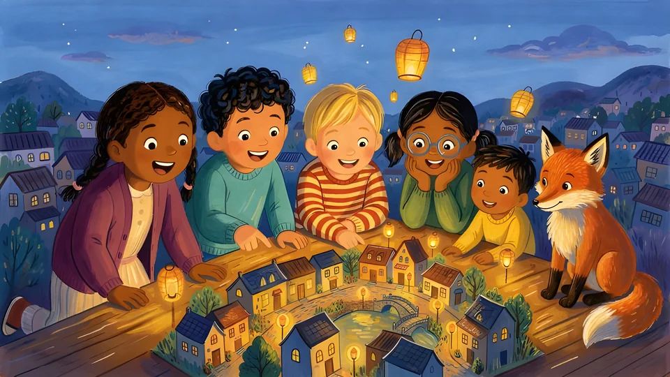

<meta charset="utf-8">
<title>Tenbright</title>
<meta name="claude:viewport-fit-sides" content="cover">
<style>
/* Nunito, Atkinson Hyperlegible and Cairo (Arabic), SIL Open Font License 1.1, embedded so no outside server is contacted */
@font-face{font-family:"Nunito";font-style:normal;font-weight:600;font-display:swap;src:url() format("woff2");}
@font-face{font-family:"Nunito";font-style:normal;font-weight:700;font-display:swap;src:url() format("woff2");}
@font-face{font-family:"Nunito";font-style:normal;font-weight:800;font-display:swap;src:url() format("woff2");}
@font-face{font-family:"Atkinson Hyperlegible";font-style:normal;font-weight:400;font-display:swap;src:url() format("woff2");}
@font-face{font-family:"Atkinson Hyperlegible";font-style:normal;font-weight:700;font-display:swap;src:url() format("woff2");}
@font-face{font-family:"Cairo";font-style:normal;font-weight:400;font-display:swap;src:url() format("woff2");}
@font-face{font-family:"Cairo";font-style:normal;font-weight:600;font-display:swap;src:url() format("woff2");}
@font-face{font-family:"Cairo";font-style:normal;font-weight:700;font-display:swap;src:url() format("woff2");}
@font-face{font-family:"Cairo";font-style:normal;font-weight:800;font-display:swap;src:url() format("woff2");}
/* Tenbright design system 2 (see docs/design-system.md): Apple-style foundations, Tenbright's lantern and dusk brand.
   Grown-up screens use grouped lists on a quiet gray; child screens use a deep night sky with glass controls.
   Type is the system's rounded face (SF Pro Rounded on Apple devices) with Nunito embedded everywhere else. */
:root {
  --surface: #F2F2F7; --raised: #FFFFFF; --ink: #1C1C1E; --muted: #5E5E63;
  --fill: rgba(120,120,128,.12); --fill-solid: #F2F2F7; --fill-press: #E3E3E8; --link: #0058BD; --danger: #D70015;
  --lantern: #F4A425; --lantern-soft: #FFD27A; --dusk: #172042; --dusk-2: #232D52; --dusk-line: #3B4672;
  --meadow: #1A7F37; --meadow-tint: #E4F6E9; --river: #0066D9; --clue: #A3480B; --clue-tint: #FFF0E1;
  --hairline: #D8D8DE; --on-dusk: #FFFFFF; --on-dusk-muted: #B8C0D4; --on-river: #FFFFFF; --focus: #0066D9;
  --wing: #6FA2EE; --switch-on: #34C759; --switch-off: #E3E3E8;
  --glass: rgba(255,255,255,.10); --glass-line: rgba(255,255,255,.16); --glass-hi: rgba(255,255,255,.22);
  --card-shadow: 0 1px 2px rgba(0,0,0,.04), 0 4px 16px rgba(0,0,0,.04);
  --sheet-shadow: 0 24px 60px rgba(4,8,24,.38), 0 2px 6px rgba(4,8,24,.18);
  --font-display: ui-rounded, "SF Pro Rounded", "Nunito", "Cairo", system-ui, -apple-system, "Segoe UI", sans-serif;
  --font-num: ui-rounded, "SF Pro Rounded", "Atkinson Hyperlegible", "Nunito", "Cairo", system-ui, sans-serif;
  --r-sm: 12px; --r-md: 18px; --r-lg: 28px;
  /* hard rule 8: child touch targets at least 64 px, primary actions at least 88 px */
  --t-child: 64px; --t-primary: 88px;
  --ease-out: cubic-bezier(.22, 1, .36, 1);
}
@media (prefers-color-scheme: dark) { :root:not([data-theme="light"]) {
  --surface: #000000; --raised: #1C1C1E; --ink: #FFFFFF; --muted: #AEAEB2;
  --fill: rgba(120,120,128,.24); --fill-solid: #2C2C2E; --fill-press: #3A3A3C; --link: #4DA3FF; --danger: #FF6961;
  --lantern: #F7B547; --lantern-soft: #FFD27A; --dusk: #0E1430; --dusk-2: #1B2347; --dusk-line: #343F6A;
  --meadow: #4CD27A; --meadow-tint: #12301C; --river: #0A6CDB; --clue: #FFA35C; --clue-tint: #3A2410;
  --hairline: #38383A; --on-dusk: #FFFFFF; --on-dusk-muted: #B8C0D4; --on-river: #FFFFFF; --focus: #4DA3FF;
  --switch-off: #39393D; --card-shadow: none;
  color-scheme: dark } }
:root[data-theme="dark"] {
  --surface: #000000; --raised: #1C1C1E; --ink: #FFFFFF; --muted: #AEAEB2;
  --fill: rgba(120,120,128,.24); --fill-solid: #2C2C2E; --fill-press: #3A3A3C; --link: #4DA3FF; --danger: #FF6961;
  --lantern: #F7B547; --lantern-soft: #FFD27A; --dusk: #0E1430; --dusk-2: #1B2347; --dusk-line: #343F6A;
  --meadow: #4CD27A; --meadow-tint: #12301C; --river: #0A6CDB; --clue: #FFA35C; --clue-tint: #3A2410;
  --hairline: #38383A; --on-dusk: #FFFFFF; --on-dusk-muted: #B8C0D4; --on-river: #FFFFFF; --focus: #4DA3FF;
  --switch-off: #39393D; --card-shadow: none;
  color-scheme: dark }
* { box-sizing: border-box; }
html, body { height: 100%; }
body { margin: 0; background: var(--surface); color: var(--ink); font-family: var(--font-display); font-size: 16px; line-height: 1.45; }
button, input, select { font: inherit; color: inherit; }
button { cursor: pointer; }
:focus-visible { outline: 3px solid var(--focus); outline-offset: 2px; }
h1, h2, h3 { text-wrap: balance; margin: 0; }
p { margin: 0; }
.num { font-family: var(--font-num); font-variant-numeric: tabular-nums; }
#app { min-height: 100%; }

/* ---------- parent paper screens ---------- */
.paper { max-width: 760px; margin: 0 auto; padding-block: 24px 48px; padding-left: max(16px, env(safe-area-inset-left, 0px)); padding-right: max(16px, env(safe-area-inset-right, 0px)); display: flex; flex-direction: column; gap: 20px; }
.brandbar { display: flex; align-items: center; justify-content: space-between; gap: 12px; flex-wrap: wrap; }
.wordmark { display: flex; align-items: center; gap: 10px; font-weight: 800; font-size: 22px; }
.wordmark small { font-weight: 600; color: var(--muted); font-size: 16px; }
.card { background: var(--raised); border: 1px solid var(--hairline); border-radius: var(--r-md); padding: 20px; display: flex; flex-direction: column; gap: 12px; min-width: 0; }
.eyebrow { font-size: 13px; font-weight: 800; letter-spacing: .06em; text-transform: uppercase; color: var(--muted); }
.lead { font-size: 18px; color: var(--muted); max-width: 62ch; }
.btn { min-height: 48px; padding: 0 22px; border-radius: 24px; border: 1px solid var(--hairline); background: var(--raised); font-weight: 800; display: inline-flex; align-items: center; justify-content: center; gap: 8px; text-decoration: none; }
.btn.primary { background: var(--river); border-color: var(--river); color: var(--on-river); }
.btn.lantern { background: var(--lantern); border-color: var(--lantern); color: #1E2A3B; }
.btn.danger { color: var(--clue); border-color: var(--clue); }
.btn:disabled { opacity: .45; cursor: not-allowed; }
.row { display: flex; gap: 12px; flex-wrap: wrap; align-items: center; }
.field { display: flex; flex-direction: column; gap: 6px; }
fieldset.field { min-width: 0; }
.field select { max-width: 100%; }
.field label, .field legend { font-weight: 800; font-size: 15px; }
.field input[type=text], .field select, .field input[type=password] { min-height: 48px; border: 1px solid var(--hairline); border-radius: var(--r-sm); background: var(--surface); padding: 0 12px; max-width: 360px; }
.check { display: flex; gap: 10px; align-items: flex-start; font-size: 15px; }
.check input { width: 22px; height: 22px; margin-top: 2px; flex: none; }
.hint-text { font-size: 14px; color: var(--muted); }
.error { color: var(--clue); font-weight: 700; font-size: 15px; }
.grid2 { display: grid; grid-template-columns: repeat(auto-fit, minmax(240px, 1fr)); gap: 16px; }
.stat-row { display: flex; gap: 24px; flex-wrap: wrap; }
.stat b { display: block; font-size: 26px; line-height: 1.1; }
.stat span { font-size: 13px; color: var(--muted); }
.chip { display: inline-flex; align-items: center; gap: 6px; height: 26px; padding: 0 10px; border-radius: 13px; font-size: 13px; font-weight: 800; background: var(--surface); border: 1px solid var(--hairline); white-space: nowrap; }
.chip.mastered, .chip.certified, .chip.placed { background: var(--meadow-tint); border-color: transparent; color: var(--ink); }
.chip.clue { background: var(--clue-tint); border-color: transparent; }
.dot { width: 9px; height: 9px; border-radius: 50%; background: var(--muted); }
.chip.mastered .dot, .chip.certified .dot, .chip.placed .dot { background: var(--meadow); }
.chip.learning .dot, .chip.practiced .dot { background: var(--lantern); }
.table-wrap { overflow-x: auto; }
table { border-collapse: collapse; width: 100%; font-size: 14px; }
th, td { text-align: left; padding: 10px 8px; border-bottom: 1px solid var(--hairline); vertical-align: top; }
th { font-size: 12px; text-transform: uppercase; letter-spacing: .05em; color: var(--muted); }
td.num, th.num { text-align: right; }
.note { border-left: none; background: var(--surface); border-radius: var(--r-sm); padding: 12px 14px; font-size: 14px; color: var(--muted); }
.home-activity { background: var(--dusk); color: var(--on-dusk); border: none; }
.home-activity .eyebrow { color: var(--lantern-soft); }
.confirm { background: var(--clue-tint); border-radius: var(--r-md); padding: 14px; display: flex; flex-direction: column; gap: 10px; }

/* ---------- child stage ---------- */
.stage { min-height: 100%; background: var(--dusk); color: var(--on-dusk); padding-block: 16px 24px; padding-left: max(16px, env(safe-area-inset-left, 0px)); padding-right: max(16px, env(safe-area-inset-right, 0px)); display: flex; flex-direction: column; gap: 16px; }
.topbar { display: flex; align-items: center; justify-content: space-between; gap: 12px; flex-wrap: wrap; }
.kbtn { min-height: var(--t-child); min-width: var(--t-child); padding: 0 22px; border-radius: 32px; border: 2px solid var(--dusk-line); background: var(--dusk-2); color: var(--on-dusk); font-weight: 800; font-size: 20px; display: inline-flex; align-items: center; justify-content: center; gap: 10px; }
.kbtn.icon { padding: 0; }
.kbtn.big { min-height: var(--t-primary); border-radius: 44px; font-size: 24px; padding: 0 32px; background: var(--lantern); border-color: var(--lantern); color: #1E2A3B; }
.kbtn.go { background: var(--river); border-color: var(--river); color: var(--on-river); }
.lanterns-lit { display: flex; align-items: center; gap: 8px; font-weight: 800; font-size: 20px; }
.lantern-ico { width: 14px; height: 30px; border-radius: 7px; background: var(--lantern); display: inline-block; }
.lantern-ico.dim { background: transparent; border: 2px dashed var(--dusk-line); }
.lantern-ico.locked { background: var(--dusk-line); opacity: .5; }
.map { display: grid; grid-template-columns: repeat(auto-fit, minmax(260px, 1fr)); gap: 16px; }
.region { border-radius: var(--r-lg); padding: 20px; min-height: 150px; display: flex; flex-direction: column; justify-content: space-between; gap: 12px; text-align: left; border: none; color: #FFFFFF; }
.region.meadows { background: #187A4F; }
.region.river { background: #2D6FD1; }
.region.orchard { background: #6B4FA0; }
.region.bridge { background: #A9561A; }
.region.falls { background: #1C7C8C; }
.region.docks { background: #5B5FB8; }
.region.market { background: #8A5A12; }
.region.clock { background: #7A3E8C; }
.region.workshop { background: #1F6E5A; }
.region.shapes { background: #A23B5C; }
.mpic { width: min(460px, 100%); height: auto; display: block; margin: 0 auto; }
.mpic.sq { width: min(300px, 80vw); }
.coins-row { display: flex; flex-wrap: wrap; gap: 10px; align-items: center; justify-content: center; }
.clock-svg { width: min(240px, 70vw); height: auto; }
.clock-pair { display: flex; gap: 18px; flex-wrap: wrap; justify-content: center; text-align: center; }
.region.village { background: var(--dusk-2); border: 2px solid var(--dusk-line); color: var(--on-dusk); }
.region.locked { background: transparent; border: 2px dashed var(--dusk-line); color: var(--on-dusk-muted); cursor: default; }
.region h2 { font-size: 26px; font-weight: 800; }
.region .lantern-row { display: flex; gap: 6px; flex-wrap: wrap; }
.region .sub { font-size: 16px; font-weight: 700; }
.pip-row { display: flex; align-items: center; gap: 16px; flex-wrap: wrap; justify-content: center; }
.speech { background: var(--dusk-2); border: 2px solid var(--dusk-line); border-radius: 24px; padding: 14px 18px; font-size: 20px; font-weight: 700; max-width: 560px; }
.panel { background: var(--raised); color: var(--ink); border-radius: var(--r-lg); padding: 20px; display: flex; flex-direction: column; gap: 16px; min-width: 0; }
.prompt { font-family: var(--font-num); font-size: clamp(32px, 6vw, 52px); font-weight: 700; line-height: 1.1; }
.prompt.words { font-family: var(--font-display); font-size: clamp(24px, 4vw, 34px); font-weight: 800; }
.work { display: grid; grid-template-columns: minmax(0, 1fr) 300px; gap: 20px; align-items: start; }
.pad { display: grid; grid-template-columns: repeat(3, minmax(0, 1fr)); gap: 10px; }
.pad button { height: 68px; border-radius: var(--r-md); border: 2px solid var(--hairline); background: var(--raised); color: var(--ink); font-family: var(--font-num); font-size: 30px; font-weight: 700; }
.entry { height: 84px; border-radius: 20px; border: 2px solid var(--hairline); background: var(--surface); display: flex; align-items: center; justify-content: center; font-size: 44px; font-weight: 700; }
.choices { display: grid; grid-template-columns: repeat(2, minmax(0, 1fr)); gap: 12px; }
.choices button { min-height: 80px; border-radius: 20px; border: 2px solid var(--hairline); background: var(--raised); color: var(--ink); font-family: var(--font-num); font-size: 34px; font-weight: 700; }
.choices button[aria-pressed="true"] { border-color: var(--river); background: var(--surface); box-shadow: inset 0 0 0 2px var(--river); }
.checkbtn { height: var(--t-primary); border-radius: 44px; border: none; background: var(--river); color: var(--on-river); font-size: 26px; font-weight: 800; }
.feedback { border-radius: 20px; padding: 14px 18px; font-size: 20px; font-weight: 800; display: flex; gap: 12px; align-items: flex-start; }
.feedback.ok { background: var(--meadow-tint); }
.feedback.clue { background: var(--clue-tint); }
.feedback svg { flex: none; }
.steps { margin: 0; padding-left: 22px; font-size: 18px; font-weight: 700; display: flex; flex-direction: column; gap: 4px; }
.model { background: var(--surface); border-radius: 20px; padding: 16px; display: flex; flex-direction: column; gap: 12px; align-items: flex-start; overflow-x: auto; }
.blocks { display: flex; gap: 18px; align-items: flex-end; flex-wrap: wrap; }
.bgroup { display: flex; gap: 4px; align-items: flex-end; flex-wrap: wrap; max-width: 260px; }
.hund { width: 52px; height: 52px; border-radius: 4px; background: var(--lantern); background-image: linear-gradient(rgba(0,0,0,.14) 1px, transparent 1px), linear-gradient(90deg, rgba(0,0,0,.14) 1px, transparent 1px); background-size: 5.2px 5.2px; }
.ten { width: 8px; height: 52px; border-radius: 3px; background: var(--river); }
.one { width: 9px; height: 9px; border-radius: 2px; background: var(--meadow); }
.pv { width: auto; border-collapse: collapse; font-family: var(--font-num); font-size: 40px; font-weight: 700; }
.pv td, .pv th { padding: 2px 14px; text-align: center; border: none; }
.pv th { font-family: var(--font-display); font-size: 13px; color: var(--muted); letter-spacing: .05em; }
.pv tr.total td { border-top: 3px solid var(--ink); }
.pv .op { color: var(--muted); }
.pv .hl { background: var(--lantern-soft); border-radius: 8px; color: #1E2A3B; }
.groups { display: flex; gap: 14px; flex-wrap: wrap; }
.grp { width: 92px; height: 92px; border-radius: 46px; border: 3px solid var(--meadow); display: flex; flex-wrap: wrap; gap: 6px; align-items: center; justify-content: center; padding: 14px; }
.grp i { width: 14px; height: 14px; border-radius: 7px; background: var(--lantern); display: block; }
.arr { display: grid; gap: 6px; }
.arr i { width: 16px; height: 16px; border-radius: 8px; background: var(--lantern); display: block; }
.soroban { display: inline-flex; gap: 10px; background: #6B4A2E; padding: 14px; border-radius: 16px; }
.rod { display: flex; flex-direction: column; align-items: center; gap: 4px; position: relative; }
.rod-label { font-size: 12px; font-weight: 800; color: #F6E7D3; letter-spacing: .04em; }
.heaven, .earth { display: flex; flex-direction: column; gap: 4px; align-items: center; width: 64px; }
.heaven { height: 92px; justify-content: flex-start; }
.heaven.on { justify-content: flex-end; }
.earth { height: 184px; justify-content: flex-end; }
.bead { width: 60px; height: 38px; border-radius: 19px; border: none; background: #D9B68A; }
.bead.on { background: var(--lantern); }
.earth-top { display: flex; flex-direction: column; gap: 4px; }
.beam { width: 64px; height: 8px; background: #2B1E13; border-radius: 4px; }
.rod-val { font-family: var(--font-num); font-size: 22px; font-weight: 700; color: #FFF9EF; }
.sor-total { font-size: 18px; font-weight: 800; color: var(--ink); }
.learn-steps { display: flex; flex-direction: column; gap: 10px; font-size: 20px; font-weight: 700; }
.history { font-size: 15px; color: var(--muted); background: var(--surface); border-radius: 12px; padding: 12px 14px; }
.progress { display: flex; gap: 6px; }
.progress i { width: 14px; height: 14px; border-radius: 7px; background: var(--dusk-line); display: block; }
.progress i.done { background: var(--lantern); }
.end { text-align: center; align-items: center; justify-content: center; flex: 1; display: flex; flex-direction: column; gap: 18px; }
.end h1 { font-size: 40px; font-weight: 800; }
/* artwork: full-bleed scenes that frame a screen (edge to edge, top aligned, soft fade into the page), never part of a question */
.hero { position: relative; isolation: isolate; overflow: hidden; min-height: clamp(520px, 46vw, 680px); display: flex; flex-direction: column; color: #FFF9EF; background: radial-gradient(120% 90% at 30% 40%, #2B3C53 0%, #23344A 55%, #1B293C 100%); }
.hero-media { position: absolute; top: 80px; bottom: 0; right: 0; left: auto; height: auto; aspect-ratio: 1215 / 1295; max-width: 64%; z-index: -1; background: #23344A;
  -webkit-mask-image: linear-gradient(90deg, transparent 0, #000 16%), linear-gradient(180deg, transparent 0, #000 7%, #000 86%, transparent 100%); -webkit-mask-composite: source-in;
  mask-image: linear-gradient(90deg, transparent 0, #000 16%), linear-gradient(180deg, transparent 0, #000 7%, #000 86%, transparent 100%); mask-composite: intersect; }
.hero-pic, .hero-img { position: absolute; inset: 0; width: 100%; height: 100%; display: block; }
.hero-img { object-fit: cover; object-position: 50% 30%; }
.hero-scrim { position: absolute; inset: 0; pointer-events: none;
  background: none; }
.hero-bar, .hero-copy { width: 100%; max-width: 1180px; margin: 0 auto; padding-left: max(24px, env(safe-area-inset-left, 0px)); padding-right: max(24px, env(safe-area-inset-right, 0px)); }
.hero-bar { display: flex; align-items: center; justify-content: space-between; gap: 12px; flex-wrap: wrap; padding-top: 20px; }
.hero-bar .wordmark small { color: #C9D4E3; }
.hero-bar .lang-pick .btn:not(.primary) { background: rgba(255,255,255,.86); color: #1E2A3B; border-color: rgba(30,42,59,.14); backdrop-filter: blur(6px); }
.hero-copy { flex: 1; display: flex; flex-direction: column; justify-content: center; gap: 14px; padding-top: 28px; padding-bottom: 128px; }
.hero-copy > * { max-width: min(500px, 40vw); }
.hero-copy h1 { font-size: clamp(32px, 3.6vw, 48px); line-height: 1.08; font-weight: 800; letter-spacing: -.01em; }
.hero-copy p { font-size: 18px; color: #D6DEEA; }
.hero-copy h1 { text-shadow: 0 2px 12px rgba(0,0,0,.35); }
.hero-pip svg { filter: drop-shadow(0 6px 14px rgba(36,48,74,.25)); }
.paper-after-hero { margin-top: -56px; position: relative; }
@media (max-width: 720px) {
  .hero { min-height: 0; }
  .hero-media { position: relative; inset: auto; width: 100%; max-width: none; height: auto; aspect-ratio: 1215 / 1295; -webkit-mask-image: linear-gradient(180deg, transparent 0, #000 5%, #000 80%, transparent 100%); mask-image: linear-gradient(180deg, transparent 0, #000 5%, #000 80%, transparent 100%); }
  .hero-copy > * { max-width: none; }
  .hero-img { object-position: 50% 50%; }
  .hero-scrim { display: none; }
  .hero-bar { position: relative; order: -1; z-index: 2; padding-top: 12px; padding-bottom: 10px; padding-left: max(16px, env(safe-area-inset-left, 0px)); padding-right: max(16px, env(safe-area-inset-right, 0px)); }
  .hero-bar .wordmark { color: #FFF9EF; }
  .hero-bar .lang-pick { gap: 6px; }
  .hero-bar .lang-pick .btn { min-height: 40px; padding: 0 12px; font-size: 14px; }
  .hero-copy { padding: 0 16px 24px; margin-top: -24px; position: relative; z-index: 1; }
  .hero-copy p { color: #D6DEEA; font-size: 17px; }
  .hero-pip { display: none; }
  .paper-after-hero { margin-top: 0; }
}
/* scenes inside the dark child screens: edge to edge from the top, fading into the night sky */
.bleed { margin-top: -16px; margin-left: calc(-1 * max(16px, env(safe-area-inset-left, 0px))); margin-right: calc(-1 * max(16px, env(safe-area-inset-right, 0px))); position: relative; overflow: hidden; flex: none; }
.bleed { -webkit-mask-image: linear-gradient(180deg, #000 62%, transparent 100%); mask-image: linear-gradient(180deg, #000 62%, transparent 100%); }
.bleed img { display: block; width: 100%; height: 100%; object-fit: cover; }
.d3-canvas { position: absolute; inset: 0; width: 100%; height: 100%; display: block; opacity: 0; transition: opacity .6s ease; }
.d3-canvas.on { opacity: 1; }
.hero-media .d3-canvas { z-index: 0; }
.hero-media .hero-scrim { z-index: 1; }
.bleed-celebrate { height: clamp(220px, 40vh, 420px); }
.bleed-celebrate img { object-position: 50% 28%; }
.bleed-journal { height: clamp(130px, 22vh, 220px); }
.bleed-journal img { object-position: 50% 30%; }
.bleed + .end { margin-top: -64px; position: relative; justify-content: flex-start; }
.bleed + .topbar { margin-top: -64px; position: relative; }
.bleed + .topbar h1 { text-shadow: 0 2px 10px rgba(0,0,0,.65); }
@media (max-width: 520px) { .end h1 { font-size: 32px; } }
@media (prefers-reduced-transparency: reduce) { .hero-bar .lang-pick .btn:not(.primary), .hero-bar .wordmark { backdrop-filter: none; background: #fff; } }
.kids { display: grid; grid-template-columns: repeat(auto-fit, minmax(200px, 1fr)); gap: 16px; }
.kid { min-height: 160px; border-radius: var(--r-lg); border: 2px solid var(--dusk-line); background: var(--dusk-2); color: var(--on-dusk); display: flex; flex-direction: column; align-items: center; justify-content: center; gap: 10px; font-size: 26px; font-weight: 800; }
.avatar { width: 64px; height: 64px; border-radius: 32px; background: var(--lantern); }
.pinpad { display: grid; grid-template-columns: repeat(3, 72px); gap: 10px; }
.pinpad button { height: 64px; border-radius: 16px; border: 1px solid var(--hairline); background: var(--raised); font-family: var(--font-num); font-size: 26px; font-weight: 700; }
.pin-dots { display: flex; gap: 12px; }
.pin-dots i { width: 16px; height: 16px; border-radius: 8px; border: 2px solid var(--muted); display: block; }
.pin-dots i.on { background: var(--ink); border-color: var(--ink); }
.choices.text { grid-template-columns: minmax(0, 1fr); }
.choices.text button { font-family: var(--font-display); font-size: 20px; font-weight: 800; padding: 10px 16px; min-height: 72px; text-align: left; }
.nl { max-width: 100%; height: auto; }
.nl text { font-family: var(--font-num); font-weight: 700; fill: var(--ink); }
.tf { display: inline-grid; grid-template-columns: repeat(5, 30px); gap: 4px; padding: 6px; border: 2px solid var(--muted); border-radius: 8px; }
.tf i { width: 30px; height: 30px; border-radius: 6px; border: 1px dashed var(--hairline); display: flex; align-items: center; justify-content: center; }
.tf i b { width: 22px; height: 22px; border-radius: 11px; display: block; }
.tf i b.a { background: var(--lantern); }
.tf i b.b { background: var(--river); }
.barm { display: flex; flex-direction: column; gap: 6px; width: min(520px, 100%); }
.barm div { display: flex; gap: 6px; }
.barm span { height: 44px; border-radius: 8px; display: flex; align-items: center; justify-content: center; font-family: var(--font-num); font-weight: 700; font-size: 20px; color: #1E2A3B; min-width: 48px; }
.barm .whole { background: var(--lantern-soft); }
.barm .p0 { background: #9CC3F5; }
.barm .p1 { background: #A6DDBF; }
.barm .unk { background: transparent; border: 3px dashed var(--muted); color: var(--ink); }
.pairs { display: grid; grid-auto-flow: column; grid-template-rows: repeat(2, 18px); gap: 6px 10px; }
.pairs i { width: 18px; height: 18px; border-radius: 9px; background: var(--lantern); display: block; }
.pairs i.odd { background: var(--clue); }
/* ---------- illustrated walkthrough ---------- */
.walk { gap: 14px; }
.walk-top { display: flex; align-items: center; justify-content: space-between; gap: 12px; flex-wrap: wrap; }
.pip-say { display: flex; align-items: flex-end; gap: 6px; }
.pip-fig { flex: none; }
.pip-fig svg { display: block; width: clamp(96px, 20vw, 150px); height: auto; }
.bubble { position: relative; flex: 1; min-width: 0; background: var(--surface); border: 2px solid var(--hairline); border-radius: 22px; padding: 14px 18px; font-size: clamp(19px, 2.6vw, 24px); font-weight: 800; line-height: 1.3; margin-bottom: 18px; display: flex; flex-direction: column; gap: 10px; }
.bubble::before { content: ""; position: absolute; left: -12px; bottom: 18px; width: 20px; height: 20px; background: var(--surface); border-left: 2px solid var(--hairline); border-bottom: 2px solid var(--hairline); transform: rotate(45deg); }
.bubble .learn-steps { font-size: 17px; font-weight: 700; margin: 0; padding-left: 22px; gap: 6px; }
.step-visual { min-height: 150px; justify-content: center; }
.walk-nav { display: flex; justify-content: space-between; gap: 12px; flex-wrap: wrap; }
.walk-nav .kbtn:disabled { opacity: .4; cursor: default; }
.cap { font-weight: 800; font-size: 18px; color: var(--ink); }
.pv tr.small td { font-size: 18px; padding-bottom: 0; height: 24px; }
.carry { color: #A9561A; font-weight: 800; }
:root[data-theme="dark"] .carry { color: var(--clue); }
@media (prefers-color-scheme: dark) { :root:not([data-theme="light"]) .carry { color: var(--clue); } }
.pv s { text-decoration-thickness: 4px; text-decoration-color: var(--clue); opacity: .75; }
.pv .new { color: #1F8A5B; }
.pv .hl .new { color: #14603F; }
.pv .hl .carry { color: #6E330A; }
.plus { font-family: var(--font-num); font-size: 32px; font-weight: 700; }
.bwrap { display: flex; flex-direction: column; align-items: center; gap: 6px; padding: 8px; border-radius: 12px; border: 2px solid transparent; }
.bwrap.lit { border-color: var(--lantern); background: color-mix(in srgb, var(--lantern-soft) 30%, transparent); }
.blabel { font-size: 15px; font-weight: 700; white-space: nowrap; }
.empty-slot { width: 40px; height: 52px; border: 2px dashed var(--muted); border-radius: 6px; display: flex; align-items: center; justify-content: center; font-family: var(--font-num); font-weight: 700; color: var(--muted); }
.one.ringed, .ten.ringed { outline: 2px dashed var(--clue); outline-offset: 1px; }
.nl .nl-hl { fill: #A9561A; }
.nl .nl-arc { fill: var(--ink); font-weight: 800; }
.arr-wrap { display: flex; flex-direction: column; gap: 6px; }
.arr-row { display: flex; gap: 6px; align-items: center; }
.arr-row i { width: 16px; height: 16px; border-radius: 8px; background: var(--hairline); display: block; }
.arr-row.lit i { background: var(--lantern); }
.arr-row.gone i { background: transparent; border: 2px dashed var(--clue); }
.arr-gap { height: 4px; border-top: 3px dashed var(--river); margin: 4px 0; }
.arr-count { font-size: 15px; font-weight: 700; margin-left: 8px; color: var(--muted); }
.gcol { display: flex; flex-direction: column; align-items: center; gap: 4px; }
.tens-grp { width: auto; height: auto; min-width: 70px; padding: 10px 14px; gap: 4px; flex-wrap: nowrap; }
.tf i b.m { background: var(--clue); }
.tf i b.g { background: transparent; border: 2px dashed var(--river); font-size: 11px; font-weight: 800; display: flex; align-items: center; justify-content: center; font-family: var(--font-num); }
.barm .found { background: #A6DDBF; outline: 3px solid #1F8A5B; }
.barm .gone-part { background: transparent; border: 3px dashed var(--clue); color: var(--muted); text-decoration: line-through; }
.est { display: flex; align-items: center; gap: 12px; font-size: 28px; font-weight: 700; }
.est.big { font-size: 32px; }
.est .arrow { color: var(--muted); }
.chipn { background: var(--lantern-soft); color: #1E2A3B; border-radius: 10px; padding: 0 10px; }
@keyframes bob { 50% { transform: translateY(-6px); } }
@media (max-width: 520px) { .bubble { padding: 12px 14px; } .pv { font-size: 32px; } .pv td, .pv th { padding: 2px 9px; } }
.grade-pick { display: flex; gap: 10px; flex-wrap: wrap; justify-content: center; }
.gchip { min-height: var(--t-child); padding: 0 20px; border-radius: 26px; border: 2px solid var(--dusk-line); background: var(--dusk-2); color: var(--on-dusk); font-weight: 800; font-size: 18px; display: inline-flex; align-items: center; gap: 8px; }
.gchip[aria-pressed="true"] { background: var(--lantern); border-color: var(--lantern); color: #1E2A3B; }
.gcount { font-size: 14px; opacity: .85; }
.trend-cmp { font-weight: 700; }
.trend { margin: 14px 0 4px; }
.trend-h { font-weight: 800; margin: 0 0 6px; }
.trend-bars { display: grid; grid-template-columns: repeat(8, minmax(0, 1fr)); gap: 4px; align-items: end; list-style: none; padding: 0; margin: 0; }
.trend-col { display: flex; flex-direction: column; align-items: center; gap: 2px; min-width: 0; }
.trend-bar { width: 70%; max-width: 30px; background: var(--brand, #2E6BD8); border-radius: 4px 4px 0 0; }
.trend-v { font-size: 14px; font-weight: 800; }
.trend-d { font-size: 12px; color: var(--muted, #4A5568); white-space: nowrap; overflow: hidden; text-overflow: ellipsis; max-width: 100%; }
.why-list { list-style: none; padding: 0; margin: 0; display: grid; gap: 14px; }
.why-list li p { margin: 4px 0 0; }
.gbar { display: grid; grid-template-columns: 70px minmax(0, 1fr) 70px; gap: 10px; align-items: center; }
.glabel { font-weight: 800; font-size: 15px; }
.gtrack { height: 12px; border-radius: 6px; background: var(--surface); border: 1px solid var(--hairline); overflow: hidden; display: block; }
.gtrack span { display: block; height: 100%; background: var(--meadow); }
.gnum { font-size: 14px; color: var(--muted); text-align: right; }
.frac { display: inline-flex; flex-direction: column; align-items: center; vertical-align: middle; line-height: 1; font-size: .78em; margin: 0 .08em; }
.frac > span:first-child { border-bottom: 2px solid currentColor; padding: 0 .12em .06em; }
.frac > span:last-child { padding: .06em .12em 0; }
.fbars { display: flex; flex-direction: column; gap: 10px; width: min(560px, 100%); }
.fbar { display: flex; align-items: center; gap: 12px; }
.fwholes { flex: 1; display: flex; flex-direction: column; gap: 4px; min-width: 0; }
.fcells { display: grid; gap: 2px; height: 34px; }
.fcells i { background: var(--surface); border: 2px solid var(--muted); border-radius: 4px; display: block; min-width: 0; }
.fcells i.on { background: var(--river); border-color: var(--river); }
.fcells i.take { background: transparent; border: 2px dashed var(--clue); }
.flabel { font-size: 22px; font-weight: 700; min-width: 48px; }
.pvbig { font-size: 30px; } .pvbig th { font-size: 10px; } .pvbig .comma { border-left: 2px dashed var(--hairline); }
.pvdec { font-size: 34px; } .pvdec .pt { font-weight: 800; color: var(--clue); padding: 0 2px; } .pad0 { color: var(--muted); opacity: .6; }
.area { display: flex; flex-direction: column; gap: 4px; width: min(520px, 100%); }
.area-row { display: flex; gap: 4px; align-items: stretch; }
.area-row.head .area-lab { text-align: center; }
.area-lab { min-width: 52px; font-weight: 800; font-size: 18px; display: flex; align-items: center; justify-content: center; }
.area-cell { min-width: 64px; min-height: 56px; border: 2px solid var(--muted); border-radius: 8px; display: flex; align-items: center; justify-content: center; font-size: 20px; font-weight: 700; background: var(--surface); }
.area-cell.on { background: var(--lantern-soft); color: #1E2A3B; border-color: var(--lantern); }
.grp.dg { width: auto; height: auto; min-width: 64px; min-height: 64px; padding: 10px; }
.left { display: flex; flex-wrap: wrap; gap: 6px; align-items: center; padding: 10px; border: 2px dashed var(--muted); border-radius: 14px; }
.left i { width: 14px; height: 14px; border-radius: 7px; background: var(--muted); display: block; }
.left.lit { border-color: var(--clue); } .left.lit i { background: var(--clue); }
.left span { font-size: 13px; font-weight: 800; color: var(--muted); }
.dgrid-wrap { display: inline-flex; flex-direction: column; gap: 6px; align-items: center; }
.dgrid { display: grid; grid-template-columns: repeat(10, 14px); grid-auto-rows: 14px; gap: 2px; padding: 4px; border: 2px solid var(--muted); border-radius: 6px; }
.dgrid i { background: var(--surface); border: 1px solid var(--hairline); display: block; }
.dgrid i.on { background: var(--river); border-color: var(--river); }
.deccol .pt { color: var(--clue); font-weight: 800; padding: 2px 2px; }
.volume { display: flex; flex-direction: column; gap: 3px; align-items: flex-start; }
.vlayer { display: grid; gap: 2px; padding: 3px; border: 2px solid var(--hairline); border-radius: 6px; transform: skewX(-20deg); margin-left: 18px; }
.vlayer i { width: 14px; height: 10px; background: var(--surface); border: 1px solid var(--muted); display: block; }
.vlayer.on i { background: var(--lantern); border-color: #A9561A; }
.farea-wrap { display: flex; flex-direction: column; gap: 8px; }
.farea { width: 180px; height: 180px; display: grid; gap: 2px; border: 3px solid var(--ink); padding: 2px; }
.farea i { background: var(--surface); display: block; }
.farea i.ca { background: #9CC3F5; } .farea i.rb { box-shadow: inset 0 0 0 40px rgba(244,164,37,.45); } .farea i.both { background: #2D6FD1; }
.balance { display: flex; align-items: center; gap: 14px; flex-wrap: wrap; }
.pan { font-size: 30px; font-weight: 700; padding: 10px 18px; border: 3px solid var(--muted); border-radius: 0 0 40px 40px; border-top: 6px solid var(--ink); }
.balance .eq { font-size: 34px; font-weight: 800; }
.tf i b.x { position: relative; opacity: .5; }
.tf i b.x::after { content: ""; position: absolute; left: -3px; right: -3px; top: 50%; height: 3px; background: var(--clue); transform: rotate(-45deg); }
.paper-sheet { background: #FFFDF6; color: #1E2A3B; border-radius: 12px; padding: 12px 16px 12px 46px; position: relative; width: min(560px, 100%); background-image: repeating-linear-gradient(transparent 0 33px, #BFD3EE 33px 34px); border-left: 3px solid #F0A3A3; }
.paper-sheet ol { margin: 0; padding-left: 0; list-style: none; display: flex; flex-direction: column; }
.paper-sheet li { min-height: 34px; line-height: 34px; font-family: var(--font-num); font-size: 19px; font-weight: 700; }
.paper-sheet li.ptitle { font-size: 22px; }
.paper-sheet li.now { color: #14603F; }
.games-grid { display: grid; grid-template-columns: repeat(auto-fit, minmax(240px, 1fr)); gap: 14px; width: min(980px, 100%); }
.game-card { background: var(--surface); color: var(--ink); border: 2px solid var(--hairline); border-radius: 18px; padding: 16px; display: flex; flex-direction: column; gap: 8px; }
.game-card h2 { margin: 0; font-size: 22px; }
.game-card .gc-pic { height: 90px; display: flex; align-items: center; justify-content: center; }
.game-card.locked { opacity: 0.85; }
.game-stage { display: flex; flex-direction: column; align-items: center; gap: 14px; width: min(980px, 100%); }
.game-svg { width: min(640px, 100%); height: auto; }
.plank-row { display: flex; gap: 12px; flex-wrap: wrap; justify-content: center; }
.plank-row button { min-width: 120px; min-height: 88px; font-size: 30px; font-family: var(--font-num); font-weight: 800; border-radius: 14px; border: 3px solid #7A4A1E; background: #E8B878; color: #1E2A3B; }
.plank-row button[aria-pressed="true"] { outline: 4px solid var(--river); }
.pizza-svg { width: min(320px, 86vw); height: auto; }
.pizza-svg .slice { cursor: pointer; outline: none; }
.pizza-svg .slice:focus-visible path { stroke: #1E2A3B; stroke-width: 5; }
.game-panel .pad, .game-panel .entry { width: min(340px, 100%); }
.game-panel .pad button { min-width: 64px; }
.lib-entry { background: var(--surface); color: var(--ink); border: 1px solid var(--hairline); border-radius: 14px; padding: 10px 14px; margin: 8px 0; }
.lib-entry summary { cursor: pointer; font-weight: 800; min-height: 44px; display: flex; align-items: center; gap: 10px; flex-wrap: wrap; }
.lib-entry dl { display: grid; grid-template-columns: minmax(120px, 200px) 1fr; gap: 6px 14px; margin: 10px 0 0; }
.lib-entry dt { font-weight: 800; }
.lib-entry dd { margin: 0; }
.lib-tag { font-size: 13px; font-weight: 800; border-radius: 999px; padding: 2px 10px; border: 1px solid var(--hairline); }
.lib-tag.trial { background: #FFF3D6; color: #5A3B00; border-color: #E0B85C; }
@media (max-width: 600px) { .lib-entry dl { grid-template-columns: 1fr; } }
.bond-svg { width: min(260px, 80vw); height: auto; }
.clue-card { background: #FFFDF6; color: #1E2A3B; border-radius: 14px; padding: 14px 20px; border: 3px solid #1E2A3B; font-family: var(--font-num); font-size: 32px; font-weight: 800; letter-spacing: 1px; text-align: center; }
.clue-card .hole { display: inline-block; min-width: 1.6em; border-bottom: 4px solid #1E2A3B; }
.game-time { font-family: var(--font-num); font-weight: 800; }
.paper-sheet .blank { display: inline-block; min-width: 2.4em; padding: 0 6px; border: 2px dashed #1E2A3B; border-radius: 8px; text-align: center; line-height: 1.25; margin: 0 2px; }
.evid { display: flex; flex-wrap: wrap; gap: 4px; margin-top: 4px; }
.evid span { font-size: 13px; font-weight: 700; border: 1px solid var(--hairline); border-radius: 999px; padding: 1px 8px; }
.xway { margin-top: 8px; }
.xway .xlabel { font-weight: 800; margin: 0 0 4px; }
.xway .walk-nav { display: flex; gap: 8px; flex-wrap: wrap; margin-top: 8px; }
.paper-tag { position: absolute; top: -10px; right: 12px; background: var(--lantern); color: #1E2A3B; font-size: 12px; font-weight: 800; padding: 2px 8px; border-radius: 8px; }
.guide { display: flex; flex-direction: column; gap: 12px; }
.guide .bubble { font-size: clamp(18px, 2.4vw, 22px); }
.guide-btn { width: 100%; margin-top: 10px; background: var(--surface); color: var(--ink); border-color: var(--hairline); }
.kbtn.mic { background: var(--meadow-tint); color: var(--ink); border-color: var(--meadow); }
.panel .kbtn.mic { width: 100%; margin-top: 10px; }
.kbtn.mic.on { background: var(--meadow); color: #0E2A1D; }
html.motion-full .kbtn.mic.on svg { animation: bob 1s ease-in-out infinite; }
.heard { font-size: 16px; color: var(--muted); }
.why { background: var(--surface); border: 2px solid var(--meadow); border-radius: 18px; padding: 12px 14px; display: flex; flex-direction: column; gap: 10px; }
.why-q { font-weight: 800; font-size: 19px; }
.why-a { font-weight: 700; font-size: 17px; }
.why .choices.text button { min-height: var(--t-child); font-size: 17px; }
.pip-paper li.pip-wrong { color: #A23B2A; text-decoration: underline wavy #F0A3A3; text-underline-offset: 6px; }
.line-panel { gap: 18px; }
.line-svg { cursor: crosshair; touch-action: none; }
.line-svg text { font-family: var(--font-num); font-weight: 700; fill: var(--ink); }
.line-range { width: 100%; accent-color: var(--river); height: 32px; }
.big-target { font-size: 1.5em; color: #A9561A; }
.journal .jlist { margin: 0; padding-left: 20px; display: flex; flex-direction: column; gap: 6px; }
.journal .jlist li { display: flex; justify-content: space-between; gap: 10px; }
.spark { max-width: 100%; height: auto; background: var(--surface); border-radius: 10px; }
html.big-text #app { zoom: 1.18; }
.eyebrow.understands { color: #17704A; }
:root[data-theme="dark"] .eyebrow.understands { color: var(--meadow); }
@media (prefers-color-scheme: dark) { :root:not([data-theme="light"]) .eyebrow.understands { color: var(--meadow); } }
.sample-flag { font-size: 13px; font-weight: 800; color: var(--clue); }
.sr-only { position: absolute; width: 1px; height: 1px; overflow: hidden; clip: rect(0 0 0 0); white-space: nowrap; }
html.motion-full .pop { animation: pop .25s ease-out; }
html.motion-gentle .pop { animation: fadeIn .25s ease-out; }
@keyframes pop { from { transform: scale(.96); opacity: .6; } to { transform: none; opacity: 1; } }
/* ---------- Pip's life: rig, moods, reactions (see docs/animation-system.md) ----------
   html.motion-full: everything moves. html.motion-gentle: blinks, expressions, talking and fades only.
   html.motion-still (or a device asking for reduced motion): no movement; expressions still change. */
.pip { overflow: visible; }
.pip g, .pip path, .pip circle { transform-box: view-box; }
.pip .p-body { transform-origin: 100px 160px; }
.pip .p-pose { transform-origin: 100px 150px; }
.pip .p-glow { transform-origin: 100px 112px; }
.pip .p-wl { transform-origin: 84px 100px; }
.pip .p-wr { transform-origin: 116px 100px; }
.pip .p-al { transform-origin: 90px 70px; }
.pip .p-ar { transform-origin: 110px 70px; }
.pip .p-eye, .pip .p-mouth, .pip .p-extra > *, .pip .p-sp { transform-box: fill-box; transform-origin: center; }
.pip .p-mouth { transform-origin: 50% 25%; }
.pip.mood-encourage .p-pose { transform: rotate(-7deg); }
.pip.mood-curious .p-pose { transform: rotate(5deg); }
.pip.mood-think .p-pose { transform: rotate(4deg); }
.pip.mood-proud .p-pose { transform: scale(1.05); }
/* idle life */
html.motion-full .pip .p-float { animation: pFloat 3.4s ease-in-out var(--ph, 0s) infinite alternate; }
html:not(.motion-still) .pip .p-eye { animation: pBlink 4.8s linear var(--bk, 0s) infinite; }
html.motion-full .pip .p-wl { animation: pFlapL 2.3s ease-in-out var(--ph, 0s) infinite alternate; }
html.motion-full .pip .p-wr { animation: pFlapR 2.3s ease-in-out var(--ph, 0s) infinite alternate; }
html.motion-full .pip.mood-wave .p-wr { animation: pWave .5s ease-in-out var(--ph, 0s) infinite alternate; }
html.motion-full .pip.mood-cheer .p-wl, html.motion-full .pip.mood-dance .p-wl { animation-duration: .45s; }
html.motion-full .pip.mood-cheer .p-wr, html.motion-full .pip.mood-dance .p-wr { animation-duration: .45s; }
html.motion-full .pip .p-al { animation: pSwayL 2.8s ease-in-out var(--ph, 0s) infinite alternate; }
html.motion-full .pip .p-ar { animation: pSwayR 3.1s ease-in-out var(--ph, 0s) infinite alternate; }
html.motion-full .pip .p-look { transform: translate(calc(var(--lx, 0) * 3px), calc(var(--ly, 0) * 2px)); transition: transform .3s ease-out; }
html:not(.motion-still) .pip .p-glow { animation: pGlow 3.4s ease-in-out var(--ph, 0s) infinite alternate; }
html.motion-full .pip .p-sp { animation: pTwinkle 1.4s ease-in-out var(--ph, 0s) infinite alternate; }
html.motion-full .pip .p-bub circle { animation: pTwinkle 1.6s ease-in-out infinite alternate; }
html.motion-full .pip .p-bub circle:nth-child(2) { animation-delay: .25s; }
html.motion-full .pip .p-bub circle:nth-child(3) { animation-delay: .5s; }
html.motion-full .pip .p-heart { animation: pBeat 1.3s ease-in-out infinite; }
html.motion-full .pip .p-notes { animation: pNotes 1.2s ease-in-out infinite alternate; }
html.motion-full .pip .p-rays { animation: pRays 2.4s ease-in-out infinite alternate; transform-box: fill-box; transform-origin: center; }
html.motion-full .pip .p-q { animation: pHop .9s ease-in-out infinite alternate; }
html.motion-full .pip.mood-dance .p-float { animation: pDance 1s ease-in-out var(--ph, 0s) 5; }
html:not(.motion-still).pip-talking .pip .p-mouth { animation: pTalk .24s ease-in-out infinite alternate; }
@keyframes pFloat { from { transform: translateY(3px); } to { transform: translateY(-6px); } }
@keyframes pBlink { 0%, 94%, 100% { transform: scaleY(1); } 96% { transform: scaleY(.08); } }
@keyframes pFlapL { from { transform: rotate(5deg); } to { transform: rotate(-7deg); } }
@keyframes pFlapR { from { transform: rotate(-5deg); } to { transform: rotate(7deg); } }
@keyframes pWave { from { transform: rotate(-12deg); } to { transform: rotate(16deg); } }
@keyframes pSwayL { from { transform: rotate(-5deg); } to { transform: rotate(6deg); } }
@keyframes pSwayR { from { transform: rotate(6deg); } to { transform: rotate(-5deg); } }
@keyframes pGlow { from { opacity: .65; transform: scale(.96); } to { opacity: 1; transform: scale(1.05); } }
@keyframes pTwinkle { from { opacity: .45; transform: scale(.8); } to { opacity: 1; transform: scale(1.1); } }
@keyframes pBeat { 0%, 100% { transform: scale(1); } 30% { transform: scale(1.18); } 50% { transform: scale(.98); } }
@keyframes pNotes { from { transform: translateY(2px) rotate(-4deg); } to { transform: translateY(-6px) rotate(4deg); } }
@keyframes pRays { from { opacity: .5; transform: scale(.96); } to { opacity: 1; transform: scale(1.04); } }
@keyframes pHop { from { transform: translateY(2px); } to { transform: translateY(-5px); } }
@keyframes pDance { 0% { transform: rotate(0) translateY(0); } 25% { transform: rotate(-8deg) translateY(-10px); } 50% { transform: rotate(0) translateY(0); } 75% { transform: rotate(8deg) translateY(-10px); } 100% { transform: rotate(0) translateY(0); } }
@keyframes pTalk { from { transform: scaleY(.6); } to { transform: scaleY(1.12); } }
/* one-shot reactions: played once when the moment happens */
html.motion-full .pip.r-hello .p-body { animation: rHello 1s ease-out both; }
html.motion-full .pip.r-hop .p-body { animation: rHop .6s ease-out both; }
html.motion-full .pip.r-cheer .p-body { animation: rHop .5s ease-out 2 both; }
html.motion-full .pip.r-proud .p-body { animation: rProud 1.1s ease-out both; }
html.motion-full .pip.r-tilt .p-body { animation: rTilt 1.1s ease-out both; }
html.motion-full .pip.r-think .p-body { animation: rThink 1s ease-out both; }
html.motion-full .pip.r-wiggle .p-body { animation: rWiggle .8s ease-in-out both; }
html.motion-full .pip.r-twirl .p-body { animation: rTwirl .9s ease-in-out both; transform-origin: 100px 112px; }
html.motion-full .pip.r-dance .p-body { animation: rHop .55s ease-out 2 both; }
html.motion-gentle .pip[class*=" r-"] .p-body { animation: rNod .6s ease-out both; }
@keyframes rHello { 0% { transform: none; } 18% { transform: translateY(3px) scale(1.07, .93); } 45% { transform: translateY(-18px) scale(.96, 1.05); } 70% { transform: translateY(0) scale(1.05, .95); } 100% { transform: none; } }
@keyframes rHop { 0% { transform: none; } 25% { transform: translateY(2px) scale(1.05, .95); } 55% { transform: translateY(-16px) scale(.97, 1.03); } 100% { transform: none; } }
@keyframes rProud { 0% { transform: none; } 35% { transform: scale(1.12) translateY(-6px); } 70% { transform: scale(1.03); } 100% { transform: none; } }
@keyframes rTilt { 0% { transform: none; } 40% { transform: rotate(-8deg) translateY(2px); } 70% { transform: rotate(-3deg); } 100% { transform: none; } }
@keyframes rThink { 0% { transform: none; } 45% { transform: rotate(7deg) translateY(-3px); } 100% { transform: none; } }
@keyframes rWiggle { 0%, 100% { transform: none; } 20% { transform: rotate(-11deg); } 40% { transform: rotate(10deg); } 60% { transform: rotate(-7deg); } 80% { transform: rotate(5deg); } }
@keyframes rTwirl { 0% { transform: none; } 50% { transform: scaleX(-1) translateY(-10px); } 100% { transform: none; } }
@keyframes rNod { 0% { transform: none; } 45% { transform: translateY(-4px); } 100% { transform: none; } }
.pip-poke { background: none; border: 0; padding: 4px; border-radius: 50%; line-height: 0; color: inherit; min-width: 64px; min-height: 64px; }
.pip-poke:hover .pip { filter: drop-shadow(0 0 10px rgba(255, 210, 122, .55)); }
.buddy { display: flex; justify-content: center; margin: -6px 0 2px; }
.buddy .pip { width: 124px; height: 124px; display: block; }
@media (max-width: 520px) { .buddy .pip { width: 96px; height: 96px; } }
/* screens arrive instead of snapping in */
html.motion-full main.view-in { animation: viewIn .34s cubic-bezier(.2, .8, .2, 1); }
html.motion-gentle main.view-in { animation: fadeIn .25s ease-out; }
@keyframes viewIn { from { opacity: 0; transform: translateY(10px); } to { opacity: 1; transform: none; } }
@keyframes fadeIn { from { opacity: 0; } to { opacity: 1; } }
/* math pictures: only what changed moves, so the motion shows the math */
.step-visual .enter, .step-visual .changed, .work .model .enter, .work .model .changed { transform-box: fill-box; transform-origin: center; }
html.motion-full .step-visual.build-in :is(.blocks .bgroup > *, .tf b, .grp i, .fcells i, .pairs i) { animation: mPop .42s cubic-bezier(.3, 1.6, .5, 1) both; animation-delay: calc(var(--i, 0) * 40ms); }
html.motion-full :is(.step-visual, .work .model) .enter { animation: mPop .45s cubic-bezier(.3, 1.6, .5, 1) both; animation-delay: calc(min(var(--i, 0), 24) * 45ms); }
html.motion-full :is(.step-visual, .work .model) .changed { animation: mBounce .5s ease-out both; animation-delay: calc(min(var(--i, 0), 24) * 45ms); }
html.motion-full :is(.step-visual, .work .model) :is(.grp, .groups) .enter { animation-name: mDeal; }
html.motion-full :is(.step-visual, .work .model) .tf b.x:is(.enter, .changed) { animation: mAway .7s ease-out both; }
html.motion-full :is(.step-visual, .work .model) .fcells i:is(.enter, .changed) { animation: mFill .45s ease-out both; animation-delay: calc(min(var(--i, 0), 24) * 60ms); transform-origin: left center; }
html.motion-full :is(.step-visual, .work .model) path.draw { stroke-dasharray: 1; animation: mDraw .7s ease-out both; animation-delay: calc(min(var(--i, 0), 12) * 120ms); }
html.motion-full :is(.step-visual, .work .model) :is(.found, .gone-part):is(.enter, .changed) { animation: mGlow 1.2s ease-out both; }
html.motion-gentle :is(.step-visual, .work .model) :is(.enter, .changed) { animation: fadeIn .35s ease-out both; }
@keyframes mPop { from { opacity: 0; transform: scale(.3); } to { opacity: 1; transform: none; } }
@keyframes mBounce { 0% { transform: none; } 35% { transform: translateY(-7px) scale(1.12); } 100% { transform: none; } }
@keyframes mDeal { from { opacity: 0; transform: translate(-26px, -22px) scale(.5) rotate(-20deg); } to { opacity: 1; transform: none; } }
@keyframes mAway { 0% { opacity: 1; transform: none; } 45% { opacity: .8; transform: translate(6px, -9px) rotate(-14deg); } 100% { opacity: .5; transform: none; } }
@keyframes mFill { from { opacity: .2; transform: scaleX(.2); } to { opacity: 1; transform: none; } }
@keyframes mDraw { from { stroke-dashoffset: 1; } to { stroke-dashoffset: 0; } }
@keyframes mGlow { 0% { box-shadow: 0 0 0 0 rgba(255, 210, 122, 0); } 40% { box-shadow: 0 0 0 6px rgba(255, 210, 122, .7); } 100% { box-shadow: 0 0 0 0 rgba(255, 210, 122, 0); } }
/* celebrations */
.confetti { position: fixed; inset: 0; width: 100vw; height: 100vh; pointer-events: none; z-index: 60; }
.end .lanterns-lit.lit-new { border-radius: 24px; padding: 6px 16px; box-shadow: 0 0 12px 3px rgba(255, 210, 122, .35); }
html.motion-full .end .lanterns-lit.lit-new, html.motion-gentle .end .lanterns-lit.lit-new { animation: lGlow 2.4s ease-out .5s both; }
html.motion-full .end .lanterns-lit.lit-new .lantern-ico { animation: lLight 1.4s ease-out .7s both; }
@keyframes lGlow { 0% { box-shadow: 0 0 0 0 rgba(255, 210, 122, 0); } 45% { box-shadow: 0 0 30px 10px rgba(255, 210, 122, .6); } 100% { box-shadow: 0 0 12px 3px rgba(255, 210, 122, .35); } }
@keyframes lLight { 0% { transform: scale(.6); filter: brightness(.6); } 50% { transform: scale(1.3); } 100% { transform: none; filter: none; } }
.badges-new { display: flex; flex-direction: column; gap: 10px; width: min(520px, 100%); }
.badge-new { display: flex; gap: 14px; align-items: center; text-align: left; background: var(--dusk-2); border: 2px solid var(--lantern); border-radius: var(--r-md); padding: 10px 16px; }
.badge-new b { display: block; font-size: 19px; }
.badge-new .nb-tag { display: block; color: var(--lantern-soft); font-weight: 800; font-size: 13px; text-transform: uppercase; letter-spacing: .06em; }
.badge-new span { color: var(--on-dusk-muted); font-size: 15px; }
.badge-new .medal { flex: none; transform-origin: 50% 0; }
html.motion-full .badge-new .medal { animation: mDrop .8s cubic-bezier(.3, 1.5, .5, 1) both, mSwing 2.2s ease-in-out .8s 2; }
html.motion-full .badge-new:nth-child(2) .medal { animation-delay: .3s, 1.1s; }
html.motion-gentle .badge-new .medal { animation: fadeIn .5s ease-out both; }
@keyframes mDrop { from { opacity: 0; transform: translateY(-40px) scale(.6); } to { opacity: 1; transform: none; } }
@keyframes mSwing { 0%, 100% { transform: rotate(0); } 30% { transform: rotate(8deg); } 70% { transform: rotate(-6deg); } }
.badge-grid { display: grid; grid-template-columns: repeat(auto-fill, minmax(150px, 1fr)); gap: 10px; }
.badge-cell { display: flex; flex-direction: column; align-items: center; text-align: center; gap: 4px; padding: 8px; border-radius: var(--r-md); }
.badge-cell b { font-size: 15px; }
.badge-cell span { font-size: 13px; color: var(--muted); }
.badge-cell.locked b { color: var(--muted); }
.look { display: flex; gap: 16px; align-items: center; flex-wrap: wrap; }
.look-preview .pip { width: 120px; height: 120px; display: block; }
.look-opts { display: flex; flex-wrap: wrap; gap: 8px; flex: 1; min-width: 200px; }
.look-opts button { min-height: 44px; padding: 0 14px; border-radius: 22px; border: 2px solid var(--hairline); background: var(--raised); color: var(--ink); font-weight: 800; font-size: 15px; display: inline-flex; align-items: center; gap: 6px; }
.look-opts button[aria-pressed="true"] { background: var(--lantern); border-color: var(--lantern); color: #1E2A3B; }
.look-opts button:disabled { opacity: .55; cursor: default; }
.look-opts .lbl { width: 100%; font-size: 14px; font-weight: 800; color: var(--muted); margin-top: 4px; }
.range-row { display: flex; align-items: center; gap: 8px 12px; flex-wrap: wrap; }
.range-row input[type=range] { flex: 1; min-width: 120px; accent-color: var(--river); }
/* secret pictures */
.pic-dots { display: flex; gap: 12px; justify-content: center; margin: 4px 0 6px; }
.pic-dots span { width: 48px; height: 48px; border-radius: 14px; border: 2px dashed var(--dusk-line); display: grid; place-items: center; background: var(--dusk-2); }
.pic-dots span.on { border-style: solid; border-color: var(--lantern); background: #FFF9EF; }
.pic-dots span.dot.on { background: radial-gradient(circle, #FFE3A3 0 30%, var(--lantern) 31% 45%, #FFF9EF 46%); } /* unlock shows progress, never which pictures */
.pic-pad { display: grid; grid-template-columns: repeat(3, 84px); gap: 12px; justify-content: center; direction: ltr; }
.pic-pad button { width: 84px; height: 84px; border-radius: 20px; border: 2px solid var(--dusk-line); background: #FFF9EF; display: grid; place-items: center; padding: 0; }
.pic-pad button:hover { border-color: var(--lantern); }
html.motion-full .pic-pad button:active { transform: scale(.94); }
.kid-lock { display: inline-flex; gap: 1px; margin-inline-start: 8px; vertical-align: middle; opacity: .9; }
.flabel { font-weight: 800; }
/* ---------- Pip the superhero: blink, talk, stances, capoeira, piano, flying ---------- */
.pip image { image-rendering: auto; }
.pip .p-body, .pip .p-pose, .pip .p-talk { transform-origin: 105px 190px; }
.pip .p-lid { transform-box: fill-box; transform-origin: 50% 0; transform: scaleY(0); }
.pip .p-shut { transform: none; }
html:not(.motion-still) .pip .p-lid { animation: heroBlink 4.8s linear var(--bk, 0s) infinite; }
@keyframes heroBlink { 0%, 94%, 100% { transform: scaleY(0); } 96% { transform: scaleY(1); } }
html:not(.motion-still).pip-talking .pip .p-talk { animation: heroTalk .3s ease-in-out infinite alternate; }
@keyframes heroTalk { from { transform: none; } to { transform: translateY(-1.6px) scale(1.012); } }
.pip .p-shadow { transform-box: fill-box; transform-origin: center; }
html.motion-full .pip .p-shadow { animation: heroShadow 3.4s ease-in-out var(--ph, 0s) infinite alternate; }
@keyframes heroShadow { from { transform: scaleX(1); opacity: 1; } to { transform: scaleX(.86); opacity: .7; } }
html.motion-full .pip .p-pose { animation: heroBreathe 3.2s ease-in-out var(--ph, 0s) infinite alternate; }
@keyframes heroBreathe { from { scale: 1 1; } to { scale: 1.006 1.018; } }
.pip.mood-point .p-pose { transform: rotate(-5deg); }
.pip.mood-wave .p-pose { transform: rotate(-3deg); }
html.motion-full .pip.mood-wave .p-body { animation: heroRock 1.1s ease-in-out var(--ph, 0s) infinite alternate; }
@keyframes heroRock { from { transform: rotate(-4deg); } to { transform: rotate(4deg); } }
/* dance = capoeira ginga: the rocking base step, repeated */
html.motion-full .pip.mood-dance .p-float { animation: heroGinga 1.5s ease-in-out var(--ph, 0s) 5; transform-origin: 105px 190px; }
@keyframes heroGinga { 0%, 100% { transform: none; } 25% { transform: translate(-10px, 3px) rotate(-7deg); } 50% { transform: translate(0, 5px) scale(1.02, .96); } 75% { transform: translate(10px, 3px) rotate(7deg); } }
/* piano: Pip plays, keys go down, notes float up */
.pip.mood-piano .p-pose { transform: translateY(-6px); }
html.motion-full .pip.mood-piano .p-talk { animation: heroPlay .42s ease-in-out infinite alternate; }
@keyframes heroPlay { from { transform: rotate(-2.5deg) translateY(0); } to { transform: rotate(2.5deg) translateY(-3px); } }
.pip .p-key { transition: none; }
html:not(.motion-still) .pip.mood-piano .p-key { animation: heroKey .84s steps(1) infinite; }
html:not(.motion-still) .pip.mood-piano .p-key:nth-child(3n) { animation-delay: .28s; }
html:not(.motion-still) .pip.mood-piano .p-key:nth-child(3n+1) { animation-delay: .56s; }
@keyframes heroKey { 0% { fill: #14161C; } 50% { fill: #F4A425; } }
html.motion-full .pip .p-note { animation: heroNote 1.6s ease-out infinite; transform-box: fill-box; transform-origin: center; }
html.motion-full .pip .p-note:nth-child(2) { animation-delay: .5s; }
html.motion-full .pip .p-note:nth-child(3) { animation-delay: 1s; }
@keyframes heroNote { 0% { opacity: 0; transform: translateY(8px) scale(.7); } 25% { opacity: 1; } 100% { opacity: 0; transform: translateY(-22px) scale(1.05) rotate(10deg); } }
/* flying: body swoops forward, cape trailing, motion lines behind */
.pip.mood-fly .p-pose { transform: rotate(-58deg) scale(.92); transform-origin: 105px 100px; }
.pip.mood-fly .p-shadow, .pip.mood-fly .p-glow { display: none; }
html.motion-full .pip.mood-fly .p-trail { animation: heroTrail .5s linear infinite; }
@keyframes heroTrail { from { transform: translateX(0); opacity: .9; } to { transform: translateX(14px); opacity: .3; } }

/* capoeira combos — one plays after every correct answer (reactions r-capo1..3) */
html.motion-full .pip.r-capo1 .p-body { animation: capoAu 2.4s cubic-bezier(.45, .05, .35, 1) both; transform-origin: 105px 100px; }
html.motion-full .pip.r-capo2 .p-body { animation: capoMeiaLua 2.3s cubic-bezier(.45, .05, .35, 1) both; transform-origin: 105px 120px; }
html.motion-full .pip.r-capo3 .p-body { animation: capoBananeira 2.6s cubic-bezier(.45, .05, .35, 1) both; transform-origin: 105px 100px; }
html.motion-gentle .pip[class*=" r-capo"] .p-body { animation: rNod .6s ease-out both; }
/* ginga, then aú (cartwheel) out and back */
@keyframes capoAu {
  0% { transform: none; } 9% { transform: translate(-10px, 3px) rotate(-7deg); } 18% { transform: translate(9px, 3px) rotate(7deg); } 27% { transform: translate(-6px, 2px) rotate(-5deg); }
  35% { transform: translate(0, 6px) scale(1.05, .93); }
  44% { transform: translate(10px, -22px) rotate(90deg); } 52% { transform: translate(22px, -30px) rotate(180deg); } 60% { transform: translate(32px, -22px) rotate(270deg); }
  68% { transform: translate(36px, 0) rotate(360deg); } 74% { transform: translate(36px, 4px) rotate(360deg) scale(1.06, .93); }
  86% { transform: translate(12px, -6px) rotate(360deg); } 100% { transform: rotate(360deg); } }
/* ginga, then meia-lua de compasso (low spinning crescent kick), then up */
@keyframes capoMeiaLua {
  0% { transform: none; } 11% { transform: translate(-9px, 3px) rotate(-7deg); } 22% { transform: translate(9px, 3px) rotate(7deg); }
  32% { transform: translate(0, 8px) scale(1.04, .9); }
  42% { transform: translate(-4px, 10px) rotate(-24deg) scaleX(.25); } 50% { transform: translate(-6px, 10px) rotate(-30deg) scaleX(-1); }
  58% { transform: translate(-4px, 10px) rotate(-24deg) scaleX(-.25); } 66% { transform: translate(0, 6px) rotate(-6deg) scaleX(1); }
  76% { transform: translate(0, -18px) rotate(4deg); } 86% { transform: translate(0, 3px) scale(1.05, .94); } 100% { transform: none; } }
/* queixada (spinning jump), then bananeira (handstand) and back */
@keyframes capoBananeira {
  0% { transform: none; } 8% { transform: translate(0, 6px) scale(1.05, .92); }
  18% { transform: translate(0, -22px) scaleX(-1); } 28% { transform: translate(0, -24px) scaleX(1); } 36% { transform: translate(0, 3px) scale(1.04, .94); }
  46% { transform: translate(0, -8px) rotate(100deg); } 54% { transform: translate(0, -12px) rotate(180deg); }
  62% { transform: translate(0, -12px) rotate(174deg); } 70% { transform: translate(0, -12px) rotate(186deg); } 76% { transform: translate(0, -12px) rotate(180deg); }
  88% { transform: translate(0, -6px) rotate(330deg); } 100% { transform: rotate(360deg); } }

/* Pip flies across the top of the screen now and then, looking for problems to solve (Full animation only) */
.pip-flyby { position: fixed; top: max(64px, calc(env(safe-area-inset-top, 0px) + 56px)); left: 0; width: 100%; height: 130px; pointer-events: none; z-index: 40; overflow: hidden; }
.pip-flyby .fly-x { position: absolute; top: 0; left: 0; animation: flyAcross 6s cubic-bezier(.35, .1, .4, 1) both; }
.pip-flyby .fly-y { animation: flyBob 1.2s ease-in-out infinite alternate; }
.pip-flyby .pip { width: 120px; height: 120px; display: block; }
@keyframes flyAcross { 0% { transform: translateX(calc(100vw + 40px)); } 42% { transform: translateX(55vw); } 58% { transform: translateX(38vw) translateY(10px); } 100% { transform: translateX(-180px); } }
@keyframes flyBob { from { transform: translateY(-4px) rotate(-3deg); } to { transform: translateY(6px) rotate(3deg); } }
@media (max-width: 600px) { .pip-flyby .pip { width: 92px; height: 92px; } }
/* Pip dives down from a small galaxy, lands by the solved problem, does a capoeira move and flies back up */
.pip-dive { position: fixed; inset: 0; pointer-events: none; z-index: 45; }
.pip-dive .dive-hero { position: absolute; will-change: transform; }
.pip-dive .dive-spin, .pip-dive .dive-spin .pip { width: 100%; height: 100%; display: block; }
.pip-dive .dive-trail { position: absolute; left: 50%; bottom: 55%; width: 12px; height: 46vh; transform: translateX(-50%); border-radius: 6px; opacity: .85;
  background: linear-gradient(0deg, rgba(255,214,120,.9), rgba(140,170,255,.45) 40%, rgba(140,170,255,0)); filter: blur(2px); transition: opacity .25s ease-out; }
.pip-dive.landed .dive-trail { opacity: 0; }
.pip-dive.leaving .dive-trail { opacity: .8; bottom: auto; top: 55%; background: linear-gradient(180deg, rgba(255,214,120,.9), rgba(140,170,255,.45) 40%, rgba(140,170,255,0)); }
.pip-dive .dive-portal { position: absolute; top: 6px; width: 120px; height: 120px; margin-left: -60px; border-radius: 50%;
  background: radial-gradient(circle, rgba(255,240,200,.95) 0 6%, rgba(160,120,255,.55) 18%, rgba(60,80,200,.35) 40%, rgba(20,30,90,0) 70%);
  animation: portalIn .45s cubic-bezier(.2, .9, .3, 1.2) both, portalSpin 3.6s linear infinite; }
.pip-dive.landed .dive-portal { animation: portalOut .5s ease-in .6s both; }
.pip-dive.leaving .dive-portal { animation: portalIn .3s ease-out both, portalSpin 3.6s linear infinite; }
.pip-dive .dive-portal i { position: absolute; left: 50%; top: 50%; width: 5px; height: 5px; margin: -2.5px; border-radius: 50%; background: #FFF6D6; box-shadow: 0 0 6px #FFE3A3; }
.pip-dive .dive-portal i:nth-child(1) { transform: rotate(0deg) translateX(34px); } .pip-dive .dive-portal i:nth-child(2) { transform: rotate(45deg) translateX(22px); }
.pip-dive .dive-portal i:nth-child(3) { transform: rotate(90deg) translateX(40px); } .pip-dive .dive-portal i:nth-child(4) { transform: rotate(135deg) translateX(27px); }
.pip-dive .dive-portal i:nth-child(5) { transform: rotate(180deg) translateX(36px); } .pip-dive .dive-portal i:nth-child(6) { transform: rotate(225deg) translateX(18px); }
.pip-dive .dive-portal i:nth-child(7) { transform: rotate(270deg) translateX(30px); } .pip-dive .dive-portal i:nth-child(8) { transform: rotate(315deg) translateX(42px); }
.pip-dive .dive-dust { position: absolute; width: 10px; height: 10px; margin: -5px; border-radius: 50%; opacity: 0; box-shadow: 0 0 0 2px rgba(255,236,190,.8); }
.pip-dive.landed .dive-dust { animation: diveDust .7s ease-out both; }
@keyframes portalIn { from { transform: scale(0) rotate(0); opacity: 0; } to { transform: scale(1); opacity: 1; } }
@keyframes portalOut { to { transform: scale(0); opacity: 0; } }
@keyframes portalSpin { to { rotate: 360deg; } }
@keyframes diveDust { 0% { opacity: .9; transform: scale(1, .4); } 100% { opacity: 0; transform: scale(9, 1.6); } }
html.pip-away .buddy .pip { opacity: 0; transition: opacity .2s ease-out; }
/* ---------- right-to-left (Arabic) ----------
   The layout mirrors; math stays left to right: number pads, place-value columns, number lines, blocks and every
   run of math inside a sentence (span.mrun, made by isolateMath). */
.mrun { unicode-bidi: isolate; direction: ltr; display: inline; }
html[dir="rtl"] th, html[dir="rtl"] td { text-align: right; }
html[dir="rtl"] .region, html[dir="rtl"] .choices.text button, html[dir="rtl"] .badge-new { text-align: right; }
html[dir="rtl"] .steps, html[dir="rtl"] .bubble .learn-steps, html[dir="rtl"] .journal .jlist { padding-left: 0; padding-right: 22px; }
html[dir="rtl"] .bubble::before { left: auto; right: -12px; border-left: none; border-bottom: none; border-right: 2px solid var(--hairline); border-top: 2px solid var(--hairline); }
html[dir="rtl"] .paper-sheet { padding: 12px 46px 12px 16px; border-left: none; border-right: 3px solid #F0A3A3; }
html[dir="rtl"] .paper-tag { right: auto; left: 12px; }
html[dir="rtl"] .arr-count { margin-left: 0; margin-right: 8px; }
html[dir="rtl"] .ico-back { transform: scaleX(-1); }
@media (min-width: 721px) { html[dir="rtl"] .hero-media { right: auto; left: 0; -webkit-mask-image: linear-gradient(270deg, transparent 0, #000 16%), linear-gradient(180deg, transparent 0, #000 7%, #000 86%, transparent 100%); mask-image: linear-gradient(270deg, transparent 0, #000 16%), linear-gradient(180deg, transparent 0, #000 7%, #000 86%, transparent 100%); } } /* the picture is never mirrored: it has numbers and words */
html[dir="rtl"] .hero-copy h1 { letter-spacing: 0; line-height: 1.3; }
html[dir="rtl"] :is(.pad, .pinpad, .entry, .pin-dots, .model, .step-visual, .soroban, .nl, .line-svg, .spark, .pv, .fbars, .line-range) { direction: ltr; }
html[dir="rtl"] :is(.model, .step-visual) :is(.cap, p, .eyebrow) { direction: rtl; }
html[dir="rtl"] .paper-sheet li { direction: rtl; }
html[dir="rtl"] body { font-family: "Cairo", var(--font-display); }
html[dir="rtl"] .eyebrow, html[dir="rtl"] .badge-new .nb-tag { letter-spacing: 0; }

/* ====================================================================================================
   Design system 2 — components. Written last so it refines the base rules above.
   Principles (apple-design skill): instant press feedback on pointer-down, one consistent hierarchy from
   weight + size + leading, size-specific tracking, translucent chrome over content, grouped lists,
   generous touch targets, layouts that adapt from phone to tablet to computer, and quiet motion.
   ==================================================================================================== */
body { font-size: 17px; line-height: 1.47; letter-spacing: -.01em; -webkit-font-smoothing: antialiased; -moz-osx-font-smoothing: grayscale; text-rendering: optimizeLegibility; -webkit-tap-highlight-color: transparent; }
h1 { font-size: clamp(28px, 2.2vw + 18px, 34px); line-height: 1.12; font-weight: 700; letter-spacing: -.022em; }
h2 { font-size: 22px; line-height: 1.2; font-weight: 700; letter-spacing: -.017em; }
h3 { font-size: 19px; line-height: 1.25; font-weight: 600; letter-spacing: -.012em; }
:focus-visible { outline: 3px solid var(--focus); outline-offset: 3px; border-radius: 6px; }
::selection { background: color-mix(in srgb, var(--river) 28%, transparent); }

/* ---------- press feedback: on pointer-down, instant, the same everywhere ---------- */
.btn, .kbtn, .checkbtn, .pad button, .pinpad button, .choices button, .kid, .region:not(.locked), .gchip, .pic-pad button, .look-opts button, .pip-poke {
  transition: transform .14s var(--ease-out), filter .14s var(--ease-out), background-color .2s var(--ease-out), box-shadow .2s var(--ease-out); }
.btn:not(:disabled):active, .kbtn:not(:disabled):active, .checkbtn:active, .choices button:active, .gchip:active, .look-opts button:not(:disabled):active { transform: scale(.97); transition-duration: .06s; }
.pad button:active, .pinpad button:active, .pic-pad button:active { transform: scale(.94); transition-duration: .06s; }
.kid:active, .region:not(.locked):active { transform: scale(.98); transition-duration: .06s; }
@media (hover: hover) {
  .btn:not(:disabled):hover { filter: brightness(.97); }
  .btn.primary:not(:disabled):hover, .checkbtn:hover, .kbtn.go:hover { filter: brightness(1.07); }
  .kbtn.big:hover { filter: brightness(1.04); }
  .region:not(.locked):hover { transform: translateY(-2px); box-shadow: 0 16px 40px rgba(0,0,0,.32), inset 0 1px 0 rgba(255,255,255,.2); }
  .kid:hover { background: rgba(255,255,255,.14); }
}

/* ---------- grown-up screens: grouped lists on a quiet gray, translucent navigation bar ---------- */
.paper { max-width: 880px; gap: 18px; padding-block: 0 56px; }
.paper > .brandbar { position: sticky; top: 0; z-index: 30; min-height: 56px; padding-block: 10px; margin-inline: calc(-1 * max(16px, env(safe-area-inset-left, 0px)));
  padding-inline: max(16px, env(safe-area-inset-left, 0px)); background: color-mix(in srgb, var(--surface) 78%, transparent);
  -webkit-backdrop-filter: blur(20px) saturate(180%); backdrop-filter: blur(20px) saturate(180%);
  box-shadow: 0 0 0 100vmax color-mix(in srgb, var(--surface) 78%, transparent); clip-path: inset(0 -100vmax); }
.paper > .brandbar::after { content: ""; position: absolute; left: -100vmax; right: -100vmax; bottom: 0; height: 1px; background: color-mix(in srgb, var(--ink) 9%, transparent); }
.paper-after-hero > .brandbar, .paper-after-hero { position: relative; }
#app { overflow-x: clip; } /* the bar background reaches the window edges without widening the page */
.wordmark { font-size: 19px; font-weight: 700; letter-spacing: -.02em; gap: 10px; }
.wordmark small { font-size: 15px; font-weight: 500; color: var(--muted); letter-spacing: 0; }
.paper > h1, .paper > div > h1 { margin-top: 6px; }
.lead { font-size: 19px; line-height: 1.45; color: var(--muted); letter-spacing: -.012em; }
.card { border: none; border-radius: var(--r-md); padding: 20px; gap: 12px; box-shadow: var(--card-shadow); }
.eyebrow { font-size: 13px; font-weight: 600; letter-spacing: .02em; color: var(--muted); }
.hint-text { font-size: 14px; line-height: 1.42; color: var(--muted); letter-spacing: -.005em; }
.error { color: var(--danger); font-weight: 600; }
.note { background: var(--fill); border-radius: var(--r-sm); color: var(--muted); }
.confirm { background: var(--clue-tint); border-radius: var(--r-md); }
.grid2 { gap: 14px; }
.stat b { font-size: 28px; font-weight: 700; letter-spacing: -.02em; font-variant-numeric: tabular-nums; }
.stat span { font-size: 13px; font-weight: 500; }

/* buttons: filled (primary), tinted (default), destructive */
.btn { min-height: 50px; padding: 0 20px; border-radius: 14px; border: none; background: var(--fill); color: var(--link); font-size: 17px; font-weight: 600; letter-spacing: -.012em; }
.btn.primary { background: var(--river); color: var(--on-river); box-shadow: 0 1px 2px rgba(0,40,100,.18); }
.btn.lantern { background: var(--lantern); color: #1C1C1E; }
.btn.danger { background: color-mix(in srgb, var(--danger) 10%, transparent); color: var(--danger); }
.btn:disabled { opacity: .4; }

/* text fields and menus */
.field { gap: 8px; }
.field label, .field legend, .flabel { font-size: 15px; font-weight: 600; letter-spacing: -.008em; }
.field input[type=text], .field input[type=password], .field select { min-height: 50px; border: 1.5px solid transparent; border-radius: var(--r-sm); background: var(--fill); padding: 0 14px; font-size: 17px; color: var(--ink); max-width: 420px; width: 100%;
  transition: border-color .2s var(--ease-out), box-shadow .2s var(--ease-out), background-color .2s; }
.field input[type=text]:focus, .field input[type=password]:focus, .field select:focus { outline: none; background: var(--raised); border-color: var(--river); box-shadow: 0 0 0 4px color-mix(in srgb, var(--river) 22%, transparent); }
.field select { appearance: none; -webkit-appearance: none; padding-right: 40px; cursor: pointer;
  background-image: url("data:image/svg+xml,%3Csvg xmlns='http://www.w3.org/2000/svg' width='12' height='8' viewBox='0 0 12 8'%3E%3Cpath d='M1 1.5l5 5 5-5' stroke='%238E8E93' stroke-width='2' fill='none' stroke-linecap='round' stroke-linejoin='round'/%3E%3C/svg%3E");
  background-repeat: no-repeat; background-position: right 16px center; }
html[dir="rtl"] .field select { padding-right: 14px; padding-left: 40px; background-position: left 16px center; }

/* switches (settings) — consent statements keep a round checkmark */
.check { gap: 12px; font-size: 16px; line-height: 1.4; align-items: center; }
.check input[type=checkbox] { -webkit-appearance: none; appearance: none; width: 51px; height: 31px; border-radius: 16px; margin: 0; flex: none; position: relative; cursor: pointer;
  background: var(--switch-off); box-shadow: inset 0 0 0 1px color-mix(in srgb, var(--ink) 6%, transparent); transition: background-color .25s var(--ease-out); }
.check input[type=checkbox]::before { content: ""; position: absolute; top: 2px; left: 2px; width: 27px; height: 27px; border-radius: 50%; background: #FFFFFF;
  box-shadow: 0 3px 8px rgba(0,0,0,.15), 0 1px 1px rgba(0,0,0,.16); transition: transform .28s var(--ease-out); }
.check input[type=checkbox]:checked { background: var(--switch-on); }
.check input[type=checkbox]:checked::before { transform: translateX(20px); }
html[dir="rtl"] .check input[type=checkbox]::before { left: auto; right: 2px; }
html[dir="rtl"] .check input[type=checkbox]:checked::before { transform: translateX(-20px); }
.check input[type=checkbox]:focus-visible { outline: 3px solid var(--focus); outline-offset: 3px; }
#consent-form .check { align-items: flex-start; }
#consent-form .check input[type=checkbox] { width: 26px; height: 26px; border-radius: 50%; margin-top: 1px; background: transparent; box-shadow: inset 0 0 0 2px var(--hairline); }
#consent-form .check input[type=checkbox]::before { display: none; }
#consent-form .check input[type=checkbox]:checked { background: var(--river) url("data:image/svg+xml,%3Csvg xmlns='http://www.w3.org/2000/svg' width='14' height='11' viewBox='0 0 14 11'%3E%3Cpath d='M1.5 5.5l4 4 7-8' stroke='white' stroke-width='2.4' fill='none' stroke-linecap='round' stroke-linejoin='round'/%3E%3C/svg%3E") center no-repeat; box-shadow: none; }

/* sliders */
input[type=range] { -webkit-appearance: none; appearance: none; height: 30px; background: transparent; cursor: pointer; }
input[type=range]::-webkit-slider-runnable-track { height: 4px; border-radius: 2px; background: var(--fill-press); }
input[type=range]::-moz-range-track { height: 4px; border-radius: 2px; background: var(--fill-press); }
input[type=range]::-moz-range-progress { height: 4px; border-radius: 2px; background: var(--river); }
input[type=range]::-webkit-slider-thumb { -webkit-appearance: none; width: 28px; height: 28px; margin-top: -12px; border-radius: 50%; background: #FFFFFF; box-shadow: 0 3px 8px rgba(0,0,0,.15), 0 0 0 .5px rgba(0,0,0,.08); }
input[type=range]::-moz-range-thumb { width: 28px; height: 28px; border: none; border-radius: 50%; background: #FFFFFF; box-shadow: 0 3px 8px rgba(0,0,0,.15), 0 0 0 .5px rgba(0,0,0,.08); }
input[type=range]:disabled { opacity: .45; cursor: default; }

/* lists, tables, status */
table { font-size: 15px; }
th, td { border-bottom: 1px solid var(--hairline); padding: 11px 10px; }
th { font-size: 13px; font-weight: 600; text-transform: none; letter-spacing: 0; color: var(--muted); }
tr:last-child td { border-bottom: none; }
.chip { height: 26px; padding: 0 10px; border-radius: 13px; border: none; background: var(--fill); font-size: 13px; font-weight: 600; }
.chip.clue { background: var(--clue-tint); }
.gtrack { height: 8px; border-radius: 4px; border: none; background: var(--fill-press); }
.gtrack span { border-radius: 4px; background: var(--meadow); }
.glabel { font-weight: 600; }
.home-activity { background: linear-gradient(160deg, #24306A, #172042 70%); border-radius: var(--r-md); box-shadow: 0 10px 30px rgba(10,16,40,.25); }
.pinpad { grid-template-columns: repeat(3, 78px); gap: 16px 22px; justify-content: center; }
.pinpad button { height: 78px; border-radius: 50%; border: none; background: var(--fill); font-size: 30px; font-weight: 500; letter-spacing: 0; }
.pinpad button:active { background: var(--fill-press); }
.pin-dots { gap: 18px; justify-content: center; }
.pin-dots i { width: 14px; height: 14px; border-radius: 7px; border: 1.5px solid var(--ink); }

/* ---------- welcome ---------- */
.hero-copy h1 { font-size: clamp(34px, 3.4vw + 8px, 56px); line-height: 1.04; font-weight: 700; letter-spacing: -.03em; }
.hero-copy p { font-size: clamp(17px, .5vw + 15px, 21px); line-height: 1.45; letter-spacing: -.012em; }
.hero-bar .wordmark { font-size: 20px; }
.hero-bar .lang-pick { gap: 8px; }
.hero-bar .lang-pick .btn { min-height: 40px; padding: 0 15px; border-radius: 20px; font-size: 15px; font-weight: 600; }
.hero-bar .lang-pick .btn:not(.primary) { background: var(--glass); color: #FFFFFF; border: 1px solid var(--glass-line); -webkit-backdrop-filter: blur(20px) saturate(160%); backdrop-filter: blur(20px) saturate(160%); }
.hero-bar .lang-pick .btn.primary { background: #FFFFFF; color: #1C1C1E; box-shadow: 0 4px 14px rgba(0,0,0,.25); }
.paper-after-hero { margin-top: -64px; }
.paper-after-hero .card { box-shadow: 0 12px 40px rgba(10,16,40,.14), 0 1px 3px rgba(10,16,40,.08); }

/* ---------- child screens: a deep night sky with glass controls ---------- */
.stage { background: radial-gradient(140% 70% at 50% -8%, #2A3A73 0%, #1A2450 42%, #10173A 78%, #0C1230 100%); gap: 18px; padding-block: 14px 28px; }
.stage > :not(.bleed) { width: 100%; max-width: 1120px; margin-inline: auto; }
.stage > .end { max-width: 760px; }
.topbar { min-height: 60px; }
.topbar h1 { font-size: clamp(22px, 1.4vw + 16px, 28px); font-weight: 700; letter-spacing: -.02em; }
.kbtn { min-height: var(--t-child); padding: 0 22px; border-radius: 999px; border: 1px solid var(--glass-line); background: var(--glass); color: var(--on-dusk); font-size: 19px; font-weight: 600; letter-spacing: -.012em;
  -webkit-backdrop-filter: blur(20px) saturate(160%); backdrop-filter: blur(20px) saturate(160%); box-shadow: inset 0 1px 0 rgba(255,255,255,.10); }
.kbtn.big { min-height: var(--t-primary); padding: 0 34px; font-size: 22px; font-weight: 700; color: #1C1C1E; border: none; background: linear-gradient(180deg, #FFCD57 0%, #F4A425 100%);
  box-shadow: 0 12px 32px rgba(244,164,37,.32), inset 0 1px 0 rgba(255,255,255,.55), inset 0 -2px 0 rgba(150,80,0,.15); }
.kbtn.go { color: #FFFFFF; border: none; background: linear-gradient(180deg, #2E86FF 0%, #0062D6 100%); box-shadow: 0 10px 28px rgba(0,98,214,.35), inset 0 1px 0 rgba(255,255,255,.3); }
.kbtn:disabled { opacity: .35; }
.lanterns-lit { font-size: 19px; font-weight: 700; letter-spacing: -.01em; }
.speech { background: var(--glass); border: 1px solid var(--glass-line); border-radius: 22px; padding: 14px 20px; font-size: 20px; font-weight: 600; line-height: 1.35;
  -webkit-backdrop-filter: blur(20px); backdrop-filter: blur(20px); box-shadow: inset 0 1px 0 rgba(255,255,255,.08); }
.map { gap: 16px; }
.region { border-radius: 26px; padding: 22px; min-height: 156px; box-shadow: 0 10px 30px rgba(0,0,0,.28), inset 0 1px 0 rgba(255,255,255,.18);
  background-image: linear-gradient(165deg, rgba(255,255,255,.12) 0%, rgba(255,255,255,0) 55%); }
.region h2 { font-size: 26px; font-weight: 700; letter-spacing: -.022em; }
.region .sub { font-size: 15px; font-weight: 600; opacity: .95; }
.region.village { background-color: var(--dusk-2); border: 1px solid var(--glass-line); }
.region.locked { background: transparent; border: 1.5px dashed rgba(255,255,255,.22); box-shadow: none; }
.gchip { min-height: var(--t-child); padding: 0 18px; border-radius: 32px; border: 1px solid var(--glass-line); background: var(--glass); font-size: 17px; font-weight: 600; -webkit-backdrop-filter: blur(20px); backdrop-filter: blur(20px); }
.gchip[aria-pressed="true"] { background: linear-gradient(180deg, #FFCD57, #F4A425); color: #1C1C1E; border-color: transparent; box-shadow: 0 6px 18px rgba(244,164,37,.3); }
.kids { grid-template-columns: repeat(auto-fit, minmax(180px, 230px)); justify-content: center; gap: 18px; }
.kid { min-height: 190px; border-radius: 28px; border: 1px solid var(--glass-line); background: var(--glass); font-size: 24px; font-weight: 700; letter-spacing: -.02em;
  -webkit-backdrop-filter: blur(20px); backdrop-filter: blur(20px); box-shadow: inset 0 1px 0 rgba(255,255,255,.1), 0 10px 30px rgba(0,0,0,.2); }
.avatar { width: 76px; height: 76px; border-radius: 50%; background: radial-gradient(circle at 35% 30%, #FFE29A, #F4A425 60%, #D9861A); box-shadow: 0 8px 20px rgba(244,164,37,.35); }

/* the sheet a question sits on */
.panel { border-radius: var(--r-lg); padding: 22px; gap: 16px; box-shadow: var(--sheet-shadow); }
.work { gap: 18px; grid-template-columns: minmax(0, 1fr) 320px; }
@media (min-width: 1100px) { .work { grid-template-columns: minmax(0, 1fr) 340px; } }
.prompt { font-weight: 600; letter-spacing: -.02em; }
.prompt.words { font-size: clamp(22px, 1.6vw + 16px, 32px); font-weight: 700; line-height: 1.22; letter-spacing: -.02em; }
.model { background: var(--fill-solid); border-radius: 20px; }
.entry { height: 80px; border-radius: 20px; border: 2px solid transparent; background: var(--fill-solid); font-size: 44px; font-weight: 600; letter-spacing: -.01em; }
.pad { gap: 10px; }
.pad button { height: 64px; border-radius: 18px; border: none; background: var(--fill-solid); font-size: 28px; font-weight: 600; }
.pad button:active { background: var(--fill-press); }
.choices { gap: 12px; }
.choices button { min-height: 78px; border-radius: 20px; border: 2px solid transparent; background: var(--fill-solid); font-weight: 600; }
.choices button[aria-pressed="true"] { border-color: var(--river); background: color-mix(in srgb, var(--river) 10%, var(--raised)); box-shadow: none; }
.choices.text button { font-size: 19px; font-weight: 600; line-height: 1.3; }
.checkbtn { height: var(--t-primary); border-radius: 44px; font-size: 24px; font-weight: 700; letter-spacing: -.015em; color: #FFFFFF; background: linear-gradient(180deg, #2E86FF 0%, #0062D6 100%); box-shadow: 0 10px 26px rgba(0,98,214,.32), inset 0 1px 0 rgba(255,255,255,.3); }
.feedback { border-radius: 20px; padding: 14px 18px; font-size: 19px; font-weight: 600; line-height: 1.35; }
.steps { font-size: 17px; font-weight: 600; }
.bubble { border: none; border-radius: 24px; background: var(--fill-solid); font-weight: 600; letter-spacing: -.012em; }
.bubble::before { border: none; background: var(--fill-solid); }
.panel .kbtn:not(.mic):not(.big):not(.go) { background: var(--fill-solid); color: var(--ink); border-color: transparent; -webkit-backdrop-filter: none; backdrop-filter: none; box-shadow: none; }
.guide-btn { background: var(--fill-solid); }
.why { border: 1.5px solid color-mix(in srgb, var(--meadow) 55%, transparent); border-radius: 20px; background: var(--meadow-tint); }
.history { background: var(--fill-solid); border-radius: 16px; }
.paper-sheet { border-radius: 16px; box-shadow: 0 6px 20px rgba(0,0,0,.08); }
.end h1 { font-size: clamp(32px, 2vw + 24px, 44px); font-weight: 700; letter-spacing: -.025em; line-height: 1.1; }
.badge-new { border-radius: 20px; border: 1px solid color-mix(in srgb, var(--lantern) 60%, transparent); background: var(--glass); -webkit-backdrop-filter: blur(20px); backdrop-filter: blur(20px); }
.badge-cell { background: var(--fill-solid); border-radius: 18px; padding: 12px 8px; }
.look-opts button { border: none; background: var(--fill-solid); font-weight: 600; border-radius: 22px; }
.look-opts button[aria-pressed="true"] { background: linear-gradient(180deg, #FFCD57, #F4A425); color: #1C1C1E; }
.pic-pad button { border: none; border-radius: 22px; box-shadow: 0 6px 16px rgba(0,0,0,.25), inset 0 -2px 0 rgba(0,0,0,.06); }
.pic-dots span { border: 1.5px dashed rgba(255,255,255,.3); background: var(--glass); border-radius: 16px; }

/* ---------- fitting phones, tablets and computers ---------- */
/* tablets in portrait keep the question and the keypad side by side; phones stack them */
@media (max-width: 820px) { .work { grid-template-columns: minmax(0, 1fr) 290px; } }
@media (max-width: 700px) { .work { grid-template-columns: minmax(0, 1fr); } }
@media (max-width: 600px) {
  .stage { gap: 14px; padding-block: 10px 22px; }
  .panel { padding: 16px; border-radius: 24px; }
  .kbtn { min-height: var(--t-child); padding: 0 18px; font-size: 17px; }
  .kbtn.big { min-height: var(--t-primary); font-size: 20px; padding: 0 26px; }
  .speech { font-size: 18px; padding: 12px 16px; }
  .pad { gap: 8px; }
  .pad button { height: 64px; font-size: 26px; border-radius: 16px; }
  .entry { height: 64px; font-size: 38px; }
  .checkbtn { height: var(--t-primary); font-size: 22px; }
  .buddy { margin: 0; }
  .buddy .pip { width: 72px; height: 72px; }
  /* Pip sits beside the answer box, so the keypad and Check stay on screen */
  .work > .panel:has(> .buddy + .entry) { display: grid; grid-template-columns: auto minmax(0, 1fr); align-items: center; column-gap: 10px; }
  .work > .panel:has(> .buddy + .entry) > * { grid-column: 1 / -1; }
  .work > .panel:has(> .buddy + .entry) > .buddy { grid-column: 1; }
  .work > .panel:has(> .buddy + .entry) > .buddy + .entry { grid-column: 2; }
  .topbar { flex-wrap: nowrap; gap: 8px; min-height: 52px; }
  .topbar > * { min-width: 0; }
  .topbar .lanterns-lit { font-size: 16px; line-height: 1.2; }
  .progress { gap: 4px; flex-wrap: wrap; justify-content: center; }
  .progress i { width: 9px; height: 9px; }
  .model { padding: 12px; }
  .region { min-height: 132px; padding: 18px; border-radius: 22px; }
  .region h2 { font-size: 23px; }
  .kids { grid-template-columns: repeat(auto-fit, minmax(140px, 175px)); gap: 12px; }
  .kid { min-height: 160px; font-size: 21px; }
  .paper { gap: 14px; }
  .card { padding: 16px; }
  .paper-after-hero { margin-top: 0; }
  .hero-copy h1 { font-size: 32px; }
  .pinpad { grid-template-columns: repeat(3, 72px); gap: 14px 20px; }
  .pinpad button { height: 72px; }
}
@media (min-width: 821px) and (max-width: 1099px) {
  .work { grid-template-columns: minmax(0, 1fr) 300px; }
}
/* phones held sideways and short windows: keep the keypad and Check in view */
@media (max-height: 560px) and (min-width: 600px) {
  /* child touch targets stay at least 64 px (hard rule 8) */
  .pad button { height: var(--t-child); } .entry { height: 56px; font-size: 34px; } .checkbtn { height: var(--t-primary); } .buddy { display: none; }
}

/* ---------- accessibility preferences ---------- */
@media (prefers-reduced-transparency: reduce) {
  .kbtn, .speech, .gchip, .kid, .badge-new, .pic-dots span, .hero-bar .lang-pick .btn:not(.primary) { -webkit-backdrop-filter: none; backdrop-filter: none; background-color: var(--dusk-2); }
  .paper > .brandbar { -webkit-backdrop-filter: none; backdrop-filter: none; background: var(--surface); box-shadow: 0 0 0 100vmax var(--surface); }
}
@media (prefers-contrast: more) {
  .kbtn, .gchip, .kid, .speech { border: 2px solid rgba(255,255,255,.7); background-color: var(--dusk-2); }
  .btn, .field input[type=text], .field input[type=password], .field select, .pad button, .choices button { border: 2px solid var(--ink) !important; }
  .card { box-shadow: 0 0 0 1.5px var(--ink); }
  .muted, .hint-text, .eyebrow { color: var(--ink); }
}

</style>

<div id="app" aria-live="polite"></div>

<script>
/* Tenbright math engine, MVP slice v0.1
 * The single source of math truth: every item, answer, worked step and
 * predicted wrong answer is computed here. No language model is involved.
 * Works in the browser (window.TBEngine) and in Node (module.exports).
 */
(function (root) {
  'use strict';

  // ---------- seeded random ----------
  function makeRng(seed) {
    let s = (seed >>> 0) || 1;
    const next = () => {
      s ^= s << 13; s >>>= 0;
      s ^= s >>> 17;
      s ^= s << 5; s >>>= 0;
      return s / 4294967296;
    };
    return {
      next,
      int: (lo, hi) => lo + Math.floor(next() * (hi - lo + 1)),
      pick: (arr) => arr[Math.floor(next() * arr.length)]
    };
  }

  const digits = (n, places) => {
    const out = [];
    for (let i = 0; i < places; i++) { out.unshift(n % 10); n = Math.floor(n / 10); }
    return out; // most significant first
  };

  // ---------- misconception library (Phase 2, section 2, plus MVP additions) ----------
  const MISCONCEPTIONS = {
    M01: { name: 'Smaller-from-larger', parent: 'Takes the smaller digit from the larger one in each column instead of regrouping.', clue: 'A clue! Look at the ones. Are there enough on top to take the bottom ones away? If not, break a ten.' },
    M02: { name: 'Regroups but keeps the ten', parent: 'Breaks a ten into ones but forgets that one fewer ten is left.', clue: 'A clue! You broke one ten into ones. So there is one less ten now. How many tens are left?' },
    M04: { name: 'Zero minus a number', parent: 'Writes the bottom digit when the top digit is zero, instead of regrouping across the zero.', clue: 'A clue! We cannot take a number away from 0. Break one from the next place. If that place is 0 too, break a hundred first.' },
    M05: { name: 'No column limit', parent: 'Writes a two-digit column sum in one place instead of making a ten.', clue: 'A clue! One place can hold only 9. Make a ten from 10 of them and move it over.' },
    M06: { name: 'Lost the new ten', parent: 'Makes a ten from the ones but forgets to add it to the tens.', clue: 'A clue! You made a new ten from the ones. Add it to the tens too.' },
    M07: { name: 'Face value', parent: 'Reads a digit as its face value instead of its place value (the 7 in 372 as 7, not 70).', clue: 'A clue! Look at the place the digit is in. The place tells what it is worth.' },
    M08: { name: 'Dropped placeholder zero', parent: 'Leaves out a zero that holds an empty place (writes 35 for 305).', clue: 'A clue! Is any place empty? Write a 0 to hold its spot.' },
    M09: { name: 'Labels stuck together', parent: 'Writes place-value parts side by side (3 hundreds 4 tens 2 ones as 300402) instead of combining them.', clue: 'A clue! Write one digit for each place. Then read it as one number.' },
    M11: { name: 'Rounds by cutting off', parent: 'Rounds by dropping the last digit instead of choosing the closer ten or hundred.', clue: 'A clue! Rounding finds the closer ten or hundred. Which one is closer on the number line?' },
    M12: { name: 'Counts the starting number', parent: 'Counts the starting number when counting on, so the answer comes out one short.', clue: 'A clue! Start counting on the next number.' },
    M13: { name: 'Wrong order in subtraction', parent: 'Subtracts in the wrong direction in a word problem.', clue: 'A clue! Which amount is bigger? Start there.' },
    M14: { name: 'Keyword trap', parent: 'Picks the operation from a word like "more" instead of from the story.', clue: 'A clue! Draw the story first. Is a part missing, or the whole?' },
    M15: { name: 'Times as plus', parent: 'Adds the two numbers instead of multiplying (4 × 3 = 7).', clue: 'A clue! Times means equal groups. Count every group.' },
    M16: { name: 'Zero and one rules mixed up', parent: 'Treats × 0 as keeping the number, or × 1 as making 1.', clue: 'A clue! Groups with nothing in them make how many?' },
    M18: { name: 'Neighbor fact', parent: 'Gives the answer to a nearby fact, one group short or one group extra.', clue: 'A clue! Count the groups again. Start from a fact you know.' },
    MC1: { name: 'Complement from 10 in every place', parent: 'Takes every digit from 10 when subtracting from 100, so the tens come out one too big.', clue: 'A clue! Take each digit from 9. Only the last digit comes from 10.' },
    MN1: { name: 'Ticks counted as ones', parent: 'Counts each tick on a number line as 1 even when the ticks jump by 10.', clue: 'A clue! How much is each jump on this line?' },
    MN3: { name: 'Forgot to take one group away', parent: 'Uses × 10 for × 9 but forgets to subtract one group.', clue: 'A clue! 9 groups is 10 groups take away one group.' },
    MN4: { name: 'Subtracts to find a missing factor', parent: 'Subtracts or adds to find a missing factor instead of thinking about equal groups.', clue: 'A clue! How many groups of that number make the total?' },
    MN5: { name: 'Lost the zero', parent: 'Multiplies by a multiple of ten but drops the zero (4 × 60 = 24).', clue: 'A clue! The answer is a number of tens. A number of tens ends in 0.' },
    MN6: { name: 'Stopped after one step', parent: 'Does the first step of a two-step problem and stops.', clue: 'A clue! The story has two parts. Did you do both?' },
    // Grade 1
    MP1: { name: 'Adds in a missing-part problem', parent: 'Adds the numbers shown instead of finding the missing part (7 + ? = 10 answered 17).', clue: 'A clue! The total is already there. Which part is missing?' },
    ME1: { name: 'Equals means "the answer is"', parent: 'Reads = as "write the answer next" instead of "is the same amount as" (6 + 2 = 5 + ? answered 8).', clue: 'A clue! = means both sides are the same amount.' },
    M1T: { name: 'Changed the ones, not the tens', parent: 'Changes the ones digit when adding or taking away tens (34 + 10 answered 35).', clue: 'A clue! 10 is one ten. Which digit counts the tens?' },
    // Grade 3 to 5 fractions
    MF11: { name: 'Counted the other parts', parent: 'Counts the parts that are not shaded when naming a fraction.', clue: 'A clue! Count only the shaded parts for the top number.' },
    MF12: { name: 'Counted tick marks, not jumps', parent: 'Counts the tick marks on a number line, including 0, instead of the equal jumps.', clue: 'A clue! Count the jumps from 0, not the marks.' },
    MF1: { name: 'Adds to top and bottom', parent: 'Adds the same number to the top and bottom of a fraction to make an equivalent one (2/3 = 11/12).', clue: 'A clue! The bottom was multiplied. Do the same to the top.' },
    MF2: { name: 'Bigger bottom, bigger fraction', parent: 'Thinks a fraction with a bigger denominator is bigger (1/8 > 1/4).', clue: 'A clue! More pieces in the whole means each piece is smaller.' },
    MF3: { name: 'Adds the bottoms too', parent: 'Adds the denominators when adding fractions (1/5 + 2/5 = 3/10).', clue: 'A clue! The pieces stay the same size. Only count them.' },
    MF4: { name: 'Whole number added to the top', parent: 'Turns a mixed number into a fraction by adding the whole number to the top (2 1/4 = 3/4).', clue: 'A clue! Each whole is cut into pieces. How many pieces are in all the wholes?' },
    MF6: { name: 'Mixed tenths and hundredths', parent: 'Adds tenths and hundredths without changing tenths into hundredths first.', clue: 'A clue! 1 tenth is 10 hundredths. Change the tenths first.' },
    MF7: { name: 'Added tops without a common bottom', parent: 'Adds the numerators of fractions with different denominators without renaming them first.', clue: 'A clue! The pieces are different sizes. Make them the same size first.' },
    MF8: { name: 'Divided the other way', parent: 'Divides the larger number by the smaller one in a sharing problem (3 shared by 4 written as 4/3).', clue: 'A clue! Each person gets less than one whole. What goes on top?' },
    MF9: { name: 'Multiplied across the wrong way', parent: 'Multiplies the top of one fraction by the bottom of the other.', clue: 'A clue! Multiply top by top and bottom by bottom.' },
    MF10: { name: 'Made the pieces bigger', parent: 'Divides the denominator when dividing a unit fraction by a whole number, making pieces bigger instead of smaller.', clue: 'A clue! Sharing a piece makes smaller pieces. Does the bottom number grow?' },
    // decimals
    MD1: { name: 'Hundredths as tenths', parent: 'Writes a number of hundredths below 10 as tenths (7/100 written as 0.7).', clue: 'A clue! Hundredths need two places after the point.' },
    MD2: { name: 'Longer decimal is bigger', parent: 'Thinks the decimal with more digits is bigger (0.38 > 0.4).', clue: 'A clue! Compare tenths first, like comparing hundreds first.' },
    MD3: { name: 'Added zeros to a decimal', parent: 'Multiplies a decimal by 10, 100 or 1,000 by writing zeros at the end instead of moving the digits.', clue: 'A clue! Times 10, 100 or 1,000 moves every digit to the left. Move the digits, not just add zeros.' },
    MD4: { name: 'Tenths and hundredths swapped', parent: 'Mixes up the tenths and hundredths places.', clue: 'A clue! The first place after the point is tenths, the next is hundredths.' },
    MD5: { name: 'Lined up the last digits', parent: 'Lines up the last digits instead of the decimal points when adding or subtracting decimals.', clue: 'A clue! Line up the decimal points first.' },
    MD6: { name: 'Decimal point in the wrong place', parent: 'Multiplies or divides correctly but puts the decimal point in the wrong place.', clue: 'A clue! Count the decimal places. Does the size of the answer make sense?' },
    MD7: { name: 'Dividing always makes smaller', parent: 'Thinks dividing always makes a number smaller, so multiplies when dividing by a fraction or decimal under 1.', clue: 'A clue! How many of those small pieces fit in one whole?' },
    // grade 4 and 5 operations
    MX1: { name: 'Products written side by side', parent: 'Multiplies each digit but writes the products side by side instead of adding them with their place values.', clue: 'A clue! Each part has a place value. Add the parts together.' },
    MX2: { name: 'Only tens by tens and ones by ones', parent: 'Multiplies tens by tens and ones by ones but skips the two cross parts (23 × 45 = 815).', clue: 'A clue! The rectangle has four parts. Did you find all four?' },
    MR1: { name: 'Remainder too big', parent: 'Leaves a remainder as big as the divisor, so one more group would still fit.', clue: 'A clue! Could one more group fit in what is left?' },
    MY1: { name: 'Counted coins, not their value', parent: 'Counts how many coins there are instead of adding what each coin is worth.', clue: 'A clue! Each coin has its own value. Add the cents, not the coins.' },
    MY2: { name: 'Change digit by digit', parent: 'Finds change from a dollar by taking each digit from 10 instead of counting up to 100 cents.', clue: 'A clue! A dollar is 100 cents. Count up from the price to 100.' },
    MT1: { name: 'Clock hands swapped', parent: 'Reads the long hand as the hour and the short hand as the minutes.', clue: 'A clue! The short hand shows the hour. The long hand shows the minutes.' },
    MT2: { name: 'Next hour', parent: 'Reads the hour as the number the short hand is moving toward, not the one it has passed.', clue: 'A clue! The hour is the number the short hand has just passed.' },
    MT3: { name: 'Clock number as minutes', parent: 'Reads the number the long hand points to as the minutes, instead of counting by 5s.', clue: 'A clue! Each number on the clock is 5 more minutes. Count by 5s.' },
    MT4: { name: 'Time as hundreds', parent: 'Subtracts times like whole numbers, as if an hour had 100 minutes.', clue: 'A clue! An hour has 60 minutes, not 100. Count on to the next hour first.' },
    MM1: { name: 'Read the end, not the length', parent: 'Reads the number at the end of an object on a ruler instead of counting the units from where it starts.', clue: 'A clue! It does not start at 0. Count the units from the start to the end.' },
    MM2: { name: 'Only two sides', parent: 'Adds only the two given sides of a rectangle instead of all four for the perimeter.', clue: 'A clue! The perimeter goes all the way around. A rectangle has 4 sides.' },
    MM3: { name: 'Area and perimeter mixed', parent: 'Finds the distance around when the question asks for the squares inside, or the other way around.', clue: 'A clue! Area counts the squares inside. Perimeter is the distance around the edge.' },
    MG1: { name: 'Right angle as 100', parent: 'Treats a right angle as 100 degrees instead of 90.', clue: 'A clue! A right angle is 90 degrees, not 100.' },
    MG2: { name: 'Up before across', parent: 'Reads how far up a point is before how far across on a grid.', clue: 'A clue! Go across first, then up.' },
    MO1: { name: 'Left to right only', parent: 'Works from left to right and ignores parentheses or the order of operations.', clue: 'A clue! Parentheses first, then times, then plus and minus.' }
  };

  // ---------- the 52-skill competency map (Phase 2, section 1) plus the T3 strategy ----------
  const S = (name, region, prereqs, ccss, extra) => Object.assign({ name, region, prereqs, ccss }, extra || {});
  // Grade 1 (added): number sense and facts that the Grade 2 skills build on
  const SKILLS_G1 = {
    C101: S('Count to 120', 'meadows', [], '1.NBT.A.1'),
    C102: S('Add within 10', 'river', [], '1.OA.C.6'),
    C103: S('Subtract within 10', 'river', ['C102'], '1.OA.C.6'),
    C104: S('Pairs that make 10', 'river', ['C102'], '1.OA.C.6'),
    C105: S('Doubles and near doubles', 'river', ['C102'], '1.OA.C.6'),
    C106: S('Add three numbers', 'river', ['C104'], '1.OA.B.3'),
    C107: S('Find the missing number', 'river', ['C104', 'C103'], '1.OA.D.8'),
    C108: S('What the equal sign means', 'village', ['C107'], '1.OA.D.7'),
    C109: S('Tens and ones', 'meadows', ['C101'], '1.NBT.B.2'),
    C110: S('Compare 2-digit numbers', 'meadows', ['C109'], '1.NBT.B.3'),
    C111: S('10 more and 10 less', 'meadows', ['C109'], '1.NBT.C.5'),
    C112: S('Add tens and ones to a 2-digit number', 'river', ['C109', 'C102'], '1.NBT.C.4'),
    C113: S('Subtract multiples of 10', 'river', ['C111'], '1.NBT.C.6'),
    C114: S('Story problems within 20', 'bridge', ['C102', 'C103'], '1.OA.A.1')
  };
  const SKILLS_CORE = {
    PV01: S('10 ones make 1 ten', 'meadows', [], '2.NBT.A.1a'),
    PV02: S('10 tens make 1 hundred', 'meadows', ['PV01'], '2.NBT.A.1b'),
    PV03: S('Read and build 3-digit numbers', 'meadows', ['PV02'], '2.NBT.A.1'),
    PV04: S('Value of a digit by its place', 'meadows', ['PV03'], '2.NBT.A.1'),
    PV05: S('Expanded form', 'meadows', ['PV04'], '2.NBT.A.3'),
    PV06: S('Number names to 1,000', 'meadows', ['PV03'], '2.NBT.A.3'),
    PV07: S('Count and skip-count by 5, 10, 100', 'meadows', ['PV03'], '2.NBT.A.2'),
    PV08: S('Zero as a placeholder', 'meadows', ['PV04'], '2.NBT.A.1'),
    PV09: S('Flexible tens and ones', 'meadows', ['PV05'], '2.NBT.A.1'),
    PV10: S('Compare 3-digit numbers', 'meadows', ['PV04'], '2.NBT.A.4'),
    PV11: S('Numbers on a number line', 'meadows', ['PV07'], '2.MD.B.6'),
    PV12: S('Add or subtract 10 or 100', 'meadows', ['PV04', 'PV07'], '2.NBT.B.8'),
    PV13: S('Round to the nearest 10', 'meadows', ['PV11'], '3.NBT.A.1'),
    PV14: S('Round to the nearest 100', 'meadows', ['PV13'], '3.NBT.A.1'),
    AS01: S('Add and subtract within 20', 'river', [], '2.OA.B.2'),
    AS02: S('Make-ten strategy', 'river', ['AS01'], '2.OA.B.2'),
    AS03: S('Fact families', 'river', ['AS01'], '2.OA.B.2'),
    AS04: S('Add 2-digit numbers, no regrouping', 'river', ['PV04', 'AS01'], '2.NBT.B.5'),
    AS05: S('Add 2-digit numbers by making a ten', 'river', ['AS04', 'PV01', 'AS02'], '2.NBT.B.5'),
    AS06: S('Subtract 2-digit numbers, no regrouping', 'river', ['PV04', 'AS03'], '2.NBT.B.5'),
    AS07: S('Subtract 2-digit numbers by breaking a ten', 'river', ['AS06', 'PV09'], '2.NBT.B.5'),
    AS08: S('Add up to four 2-digit numbers', 'river', ['AS05'], '2.NBT.B.6'),
    AS09: S('Compensation: use a friendly number', 'river', ['AS05'], '2.NBT.B.9'),
    AS10: S('Count up to find a difference', 'river', ['AS07', 'PV11'], '2.NBT.B.9'),
    AS11: S('Add 3-digit numbers with regrouping', 'river', ['AS05', 'PV02'], '2.NBT.B.7'),
    AS12: S('Subtract 3-digit numbers with regrouping', 'river', ['AS07', 'PV09'], '2.NBT.B.7'),
    AS13: S('Subtract across zeros', 'river', ['AS12', 'PV08'], '3.NBT.A.2'),
    AS14: S('Standard algorithm for addition', 'river', ['AS11'], '3.NBT.A.2'),
    AS15: S('Standard algorithm for subtraction', 'river', ['AS12', 'AS13'], '3.NBT.A.2'),
    AS16: S('Estimate and check', 'river', ['PV13', 'PV14', 'AS14'], '3.OA.D.8'),
    AS17: S('Explain why a strategy works', 'river', ['AS09', 'AS14'], '2.NBT.B.9'),
    MU01: S('Odd and even by pairing', 'orchard', ['AS01'], '2.OA.C.3'),
    MU02: S('Arrays as repeated addition', 'orchard', ['AS08'], '2.OA.C.4'),
    MU03: S('Multiply as equal groups', 'orchard', ['MU02'], '3.OA.A.1'),
    MU04: S('Skip-count to multiply', 'orchard', ['MU03', 'PV07'], '3.OA.A.1'),
    MU05: S('Turn-around facts', 'orchard', ['MU03'], '3.OA.B.5'),
    MU06: S('Facts with 2, 5 and 10', 'orchard', ['MU04'], '3.OA.C.7'),
    MU07: S('Facts with 0 and 1', 'orchard', ['MU03'], '3.OA.B.5'),
    MU08: S('Doubling: facts with 4 and 8', 'orchard', ['MU06'], '3.OA.B.5'),
    MU09: S('Facts with 3 and 6', 'orchard', ['MU06', 'MU08'], '3.OA.C.7'),
    MU10: S('Facts with 9: ten groups take away one', 'orchard', ['MU06'], '3.OA.B.5'),
    MU11: S('Facts with 7: split into 5 and 2', 'orchard', ['MU06'], '3.OA.B.5'),
    MU12: S('Square facts and the rest', 'orchard', ['MU09', 'MU10', 'MU11'], '3.OA.C.7'),
    MU13: S('Find the missing factor', 'orchard', ['MU12'], '3.OA.A.4'),
    MU14: S('Multiply by multiples of 10', 'orchard', ['MU06', 'PV04'], '3.NBT.A.3'),
    MU15: S('Patterns in the times table', 'orchard', ['MU12'], '3.OA.D.9'),
    MU16: S('All facts to 10 × 10', 'orchard', ['MU12'], '3.OA.C.7'),
    WP01: S('Join and separate stories', 'bridge', ['AS04', 'AS06'], '2.OA.A.1'),
    WP02: S('Part-part-whole stories', 'bridge', ['AS03'], '2.OA.A.1'),
    WP03: S('Compare stories', 'bridge', ['AS10'], '2.OA.A.1'),
    WP04: S('Equal-groups stories', 'bridge', ['MU03'], '3.OA.A.3'),
    WP05: S('Two-step stories', 'bridge', ['WP01', 'WP02', 'WP03'], '3.OA.D.8'),
    T3:   S('All from 9 and the last from 10', 'village', ['AS07'], '2.NBT.B.9', { strategy: true })
  };
  // Grade 3 fractions (added so Grade 4 fractions have their foundation)
  const SKILLS_G3F = {
    F301: S('Fractions of a whole', 'falls', ['MU03'], '3.NF.A.1'),
    F302: S('Fractions on a number line', 'falls', ['F301'], '3.NF.A.2')
  };
  // Grade 4 (added)
  const SKILLS_G4 = {
    F401: S('Place value to a million', 'meadows', ['PV04', 'PV12'], '4.NBT.A.2'),
    F402: S('Compare big numbers', 'meadows', ['F401', 'PV10'], '4.NBT.A.2'),
    F403: S('Round big numbers', 'meadows', ['F401', 'PV14'], '4.NBT.A.3'),
    F404: S('Add and subtract big numbers', 'river', ['AS14', 'AS15', 'F401'], '4.NBT.B.4'),
    F405: S('Multiply by a 1-digit number', 'orchard', ['MU14', 'MU16'], '4.NBT.B.5'),
    F406: S('Multiply 2-digit by 2-digit', 'orchard', ['F405'], '4.NBT.B.5'),
    F407: S('Divide with remainders', 'orchard', ['MU13'], '4.NBT.B.6'),
    F408: S('Divide by a 1-digit number', 'orchard', ['F407', 'F405'], '4.NBT.B.6'),
    F409: S('Factors and multiples', 'orchard', ['MU13'], '4.OA.B.4'),
    F410: S('Prime or composite', 'orchard', ['F409'], '4.OA.B.4'),
    F411: S('Times as many', 'bridge', ['MU16', 'WP04'], '4.OA.A.2'),
    F412: S('Number patterns', 'village', ['MU04', 'AS14'], '4.OA.C.5'),
    F413: S('Equivalent fractions', 'falls', ['F302', 'MU16'], '4.NF.A.1'),
    F414: S('Compare fractions', 'falls', ['F413'], '4.NF.A.2'),
    F415: S('Add and subtract fractions', 'falls', ['F302'], '4.NF.B.3'),
    F416: S('Mixed numbers', 'falls', ['F415', 'MU16'], '4.NF.B.3'),
    F417: S('Fraction times a whole number', 'falls', ['F415', 'MU16'], '4.NF.B.4'),
    F418: S('Tenths, hundredths and decimals', 'docks', ['F413', 'PV04'], '4.NF.C.6'),
    F419: S('Compare decimals', 'docks', ['F418'], '4.NF.C.7')
  };
  // Grade 5 (added)
  const SKILLS_G5 = {
    F501: S('Expressions with parentheses', 'village', ['MU16', 'AS14'], '5.OA.A.1'),
    F502: S('Multiply and divide by 10, 100, 1,000', 'meadows', ['F401', 'F418'], '5.NBT.A.2'),
    F503: S('Decimals to thousandths', 'docks', ['F418'], '5.NBT.A.3'),
    F504: S('Compare decimals to thousandths', 'docks', ['F503', 'F419'], '5.NBT.A.3'),
    F505: S('Round decimals', 'docks', ['F503', 'F403'], '5.NBT.A.4'),
    F506: S('Multiply multi-digit numbers', 'orchard', ['F406'], '5.NBT.B.5'),
    F507: S('Divide by a 2-digit number', 'orchard', ['F408', 'F506'], '5.NBT.B.6'),
    F508: S('Add and subtract decimals', 'docks', ['F503', 'F404'], '5.NBT.B.7'),
    F509: S('Multiply decimals', 'docks', ['F508', 'F502'], '5.NBT.B.7'),
    F510: S('Divide decimals', 'docks', ['F509'], '5.NBT.B.7'),
    F511: S('Add and subtract unlike fractions', 'falls', ['F414', 'F415'], '5.NF.A.1'),
    F512: S('Fractions as division', 'falls', ['F416', 'F407'], '5.NF.B.3'),
    F513: S('Multiply fractions', 'falls', ['F417', 'F413'], '5.NF.B.4'),
    F514: S('Divide with unit fractions', 'falls', ['F513', 'F512'], '5.NF.B.7'),
    F515: S('Volume of a box', 'orchard', ['F406'], '5.MD.C.5')
  };
  // Grade 1 skills lead into the Grade 2 map
  [['PV01', 'C109'], ['AS01', 'C105'], ['AS01', 'C107'], ['PV10', 'C110'], ['PV12', 'C111'], ['AS04', 'C112'], ['AS06', 'C113'], ['WP01', 'C114']].forEach(([id, pre]) => SKILLS_CORE[id].prereqs.push(pre));
  // Tenbright 2.0 Phase 7: money (coins as math objects, never a reward) and time
  const SKILLS_P7 = {
    MY01: S('Coin values', 'market', ['C104'], '2.MD.C.8'),
    MY02: S('Count coins', 'market', ['MY01', 'PV07'], '2.MD.C.8'),
    MY03: S('Money stories', 'market', ['MY02', 'AS05'], '2.MD.C.8'),
    MY04: S('Make change from a dollar', 'market', ['MY03', 'AS10'], '4.MD.A.2'),
    TM01: S('Hour and half hour', 'clock', ['C101'], '1.MD.B.3'),
    TM02: S('Time to 5 minutes', 'clock', ['TM01', 'PV07'], '2.MD.C.7'),
    TM03: S('Time to the minute', 'clock', ['TM02'], '3.MD.A.1'),
    TM04: S('How much time passed', 'clock', ['TM03', 'AS10'], '3.MD.A.1'),
    // measurement and geometry
    MS01: S('Measure with a ruler', 'workshop', ['C101'], '2.MD.A.1'),
    MS02: S('Compare lengths', 'workshop', ['MS01', 'AS10'], '2.MD.A.4'),
    MS03: S('Perimeter', 'workshop', ['MS01', 'AS05'], '3.MD.D.8'),
    MS04: S('Area of a rectangle', 'workshop', ['MS03', 'MU03'], '3.MD.C.7'),
    GE01: S('Name shapes by their sides', 'shapes', ['C101'], '2.G.A.1'),
    GE02: S('Angles that fit together', 'shapes', ['GE01', 'AS10'], '4.MD.C.7'),
    GE03: S('Points on a grid', 'shapes', ['GE01', 'PV07'], '5.G.A.2')
  };
  const SKILLS = Object.assign({}, SKILLS_G1, SKILLS_CORE, SKILLS_G3F, SKILLS_G4, SKILLS_G5, SKILLS_P7);
  const SKILL_ORDER = Object.keys(SKILLS);

  // ---------- item generators ----------
  // Each returns { skill, format, prompt, a, b, op, answer, choices?, predicted:{Mxx:'answer'}, steps:[], model }
  function addPredictions(a, b, places) {
    const da = digits(a, places), db = digits(b, places);
    // M05: each column sum written whole, no carrying
    let m05 = '';
    for (let i = 0; i < places; i++) m05 += String(da[i] + db[i]);
    m05 = String(parseInt(m05, 10));
    // M06: carry ignored, each column mod 10
    let m06 = '';
    for (let i = 0; i < places; i++) m06 += String((da[i] + db[i]) % 10);
    m06 = String(parseInt(m06, 10));
    return { M05: m05, M06: m06 };
  }
  function subPredictions(a, b, places) {
    const da = digits(a, places), db = digits(b, places);
    // M01: |top - bottom| per column
    let m01 = '';
    for (let i = 0; i < places; i++) m01 += String(Math.abs(da[i] - db[i]));
    m01 = String(parseInt(m01, 10));
    // M02: regroups (adds 10 to a short column) but never decrements the next column
    let m02 = '';
    for (let i = 0; i < places; i++) {
      const top = da[i] < db[i] ? da[i] + 10 : da[i];
      m02 += String(top - db[i]);
    }
    m02 = String(parseInt(m02, 10));
    return { M01: m01, M02: m02 };
  }

  const GEN = {
    PV03(r) {
      const h = r.int(1, 9), t = r.pick([0, r.int(1, 9), r.int(1, 9)]), o = r.int(0, 9);
      const n = 100 * h + 10 * t + o;
      const fmt = r.pick(['count', 'build']);
      const predicted = {};
      if (t === 0) predicted.M08 = String(10 * h + o);
      if (fmt === 'build') {
        return { skill: 'PV03', format: 'build', prompt: 'Show ' + n + ' on the soroban.', target: n, answer: String(n), predicted, steps: [h + ' hundreds, ' + t + ' tens, ' + o + ' ones'], model: { type: 'soroban', value: 0 } };
      }
      return { skill: 'PV03', format: 'number', prompt: 'What number do the blocks show?', answer: String(n), predicted, steps: [h + ' hundreds is ' + 100 * h, t + ' tens is ' + 10 * t, o + ' ones is ' + o, 'Together: ' + n], model: { type: 'blocks', h, t, o } };
    },
    PV04(r) {
      let n, pos;
      do { n = r.int(101, 999); pos = r.int(0, 2); } while (digits(n, 3)[pos] === 0);
      const d = digits(n, 3)[pos];
      const value = d * [100, 10, 1][pos];
      const placeName = ['hundreds', 'tens', 'ones'][pos];
      const predicted = {};
      if (pos < 2) predicted.M07 = String(d);
      return { skill: 'PV04', format: 'number', prompt: 'What is the value of the ' + d + ' in ' + n + '?', highlight: { n, pos }, answer: String(value), predicted, steps: ['The ' + d + ' is in the ' + placeName + ' place.', d + ' ' + placeName + ' is ' + value + '.'], model: { type: 'blocks', h: digits(n, 3)[0], t: digits(n, 3)[1], o: digits(n, 3)[2] } };
    },
    PV10(r) {
      let a = r.int(100, 999), b = r.int(100, 999);
      const kind = r.int(0, 4);
      if (kind === 0) b = a; // equal case sometimes
      if (kind === 1) { b = digits(a, 3)[0] * 100 + r.int(0, 99); } // same hundreds
      const ans = a > b ? '>' : a < b ? '<' : '=';
      if (a !== b && r.next() < 0.4) {
        const big = Math.max(a, b), small = Math.min(a, b);
        return { skill: 'PV10', format: 'number', prompt: 'Type the greater number: ' + a + ' or ' + b + '?', a, b, answer: String(big), predicted: {}, steps: ['Compare hundreds first, then tens, then ones.', big + ' > ' + small], model: { type: 'compare', a, b } };
      }
      return { skill: 'PV10', format: 'choice', prompt: 'Which sign makes it true?', a, b, answer: ans, choices: ['<', '=', '>'], predicted: {}, steps: ['Compare hundreds first, then tens, then ones.', a + ' ' + ans + ' ' + b], model: { type: 'compare', a, b } };
    },
    PV12(r) {
      const step = r.pick([10, 100]);
      const op = r.pick(['+', '-']);
      let n;
      if (op === '+') n = r.int(100, 999 - step); else n = r.int(100 + step, 999);
      const answer = op === '+' ? n + step : n - step;
      const predicted = { M07: String(op === '+' ? n + step / 10 : n - step / 10) };
      return { skill: 'PV12', format: 'number', prompt: (op === '+' ? step + ' more than ' : step + ' less than ') + n + ' is?', a: n, b: step, op, answer: String(answer), predicted, steps: ['Only the ' + (step === 10 ? 'tens' : 'hundreds') + ' digit changes.', String(answer)], model: { type: 'blocks', h: digits(n, 3)[0], t: digits(n, 3)[1], o: digits(n, 3)[2] } };
    },
    AS04(r) {
      let a, b;
      do { a = r.int(10, 89); b = r.int(10, 89); } while ((a % 10) + (b % 10) > 9 || a + b > 99);
      return addItem('AS04', a, b, 2);
    },
    AS05(r) {
      let a, b;
      do { a = r.int(11, 89); b = r.int(11, 89); } while ((a % 10) + (b % 10) < 10 || a + b > 99);
      return addItem('AS05', a, b, 2);
    },
    AS06(r) {
      let a, b;
      do { a = r.int(20, 99); b = r.int(10, a - 1); } while ((a % 10) < (b % 10));
      return subItem('AS06', a, b, 2);
    },
    AS07(r) {
      let a, b;
      do { a = r.int(21, 99); b = r.int(11, a - 1); } while ((a % 10) >= (b % 10) || a - b < 10);
      return subItem('AS07', a, b, 2);
    },
    AS11(r) {
      let a, b;
      do { a = r.int(101, 899); b = r.int(101, 899); } while (a + b > 999 || ((a % 10) + (b % 10) < 10 && (Math.floor(a / 10) % 10) + (Math.floor(b / 10) % 10) < 10));
      return addItem('AS11', a, b, 3);
    },
    AS12(r) {
      let a, b;
      do { a = r.int(200, 999); b = r.int(101, a - 1); } while (!((a % 10) < (b % 10) || (Math.floor(a / 10) % 10) < (Math.floor(b / 10) % 10)) || a - b < 100 || hasZeroBorrow(a, b));
      return subItem('AS12', a, b, 3);
    },
    MU03(r) {
      let g, s;
      do { g = r.int(2, 5); s = r.int(2, 5); } while (g === 2 && s === 2);
      return { skill: 'MU03', format: 'number', prompt: g + ' groups of ' + s + '. How many in all?', a: g, b: s, op: '×', answer: String(g * s), predicted: { M15: String(g + s) }, steps: [g + ' × ' + s + ' means ' + g + ' groups of ' + s + '.', Array(g).fill(s).join(' + ') + ' = ' + g * s], model: { type: 'groups', g, s } };
    },
    MU06(r) {
      const f = r.pick([2, 5, 10]), x = r.int(1, 10);
      const [a, b] = r.next() < 0.5 ? [x, f] : [f, x];
      const predicted = {};
      if (a + b !== a * b) predicted.M15 = String(a + b);
      return { skill: 'MU06', format: 'number', prompt: a + ' × ' + b + ' = ?', a, b, op: '×', answer: String(a * b), predicted, steps: ['Skip-count by ' + f + ', ' + x + ' times.', String(a * b)], model: { type: 'array', rows: a, cols: b } };
    },
    T3(r) {
      const base = r.pick([100, 100, 1000]);
      let n;
      do { n = r.int(base === 100 ? 11 : 101, base - 1); } while (n % 10 === 0);
      const places = base === 100 ? 2 : 3;
      const d = digits(n, places);
      const correct = base - n;
      const wrong = d.map((x) => 10 - x).join('');
      const predicted = {};
      if (wrong !== String(correct)) predicted.MC1 = String(parseInt(wrong, 10));
      const work = d.map((x, i) => (i < places - 1 ? '9 − ' + x + ' = ' + (9 - x) : '10 − ' + x + ' = ' + (10 - x)));
      return { skill: 'T3', format: 'number', prompt: base + ' − ' + n + ' = ?', a: base, b: n, op: '−', answer: String(correct), predicted, steps: work.concat(['So ' + base + ' − ' + n + ' = ' + correct]), model: { type: 'complement', base, n } };
    }
  };

  // ---------- generators for the rest of the 52-skill map ----------
  const NAMES = ['Ava', 'Kofi', 'Mei', 'Diego', 'Amara', 'Liam', 'Priya', 'Noah', 'Zara', 'Mateo', 'Hana', 'Elijah', 'Sofia', 'Kai', 'Nia', 'Omar'];
  const THINGS = ['beads', 'stickers', 'shells', 'marbles', 'stamps', 'leaves', 'cards', 'acorns'];
  const blocksOf = (n) => ({ type: 'blocks', h: Math.floor(n / 100), t: Math.floor(n / 10) % 10, o: n % 10 });
  const num = (skill, prompt, answer, predicted, steps, model, extra) => {
    const p = {};
    Object.keys(predicted || {}).forEach((k) => { if (predicted[k] === null || predicted[k] === undefined) return; const v = normalize(String(predicted[k])); if (v !== String(answer) && !Object.values(p).includes(v)) p[k] = v; });
    return Object.assign({ skill, format: 'number', prompt, answer: String(answer), predicted: p, steps, model }, extra || {});
  };
  const textChoice = (skill, prompt, answer, wrong, steps, model, r) => {
    const choices = [answer].concat(wrong);
    for (let i = choices.length - 1; i > 0; i--) { const j = Math.floor(r.next() * (i + 1)); [choices[i], choices[j]] = [choices[j], choices[i]]; }
    return { skill, format: 'choice', textChoices: true, prompt, answer, choices, predicted: {}, steps, model };
  };
  const NAMES_ONES = ['zero', 'one', 'two', 'three', 'four', 'five', 'six', 'seven', 'eight', 'nine', 'ten', 'eleven', 'twelve', 'thirteen', 'fourteen', 'fifteen', 'sixteen', 'seventeen', 'eighteen', 'nineteen'];
  const NAMES_TENS = ['', '', 'twenty', 'thirty', 'forty', 'fifty', 'sixty', 'seventy', 'eighty', 'ninety'];
  function numberName(n) {
    const h = Math.floor(n / 100), rest = n % 100;
    const parts = [];
    if (h) parts.push(NAMES_ONES[h] + ' hundred');
    if (rest) parts.push(rest < 20 ? NAMES_ONES[rest] : NAMES_TENS[Math.floor(rest / 10)] + (rest % 10 ? '-' + NAMES_ONES[rest % 10] : ''));
    return parts.join(' ') || 'zero';
  }
  const roundTo = (n, b) => Math.floor((n + b / 2) / b) * b;

  Object.assign(GEN, {
    PV01(r) {
      const t = r.int(1, 8), o = r.int(10, 19);
      const n = 10 * t + o;
      return num('PV01', t + ' tens and ' + o + ' ones. How many in all?', n, { M09: String(t) + String(o) }, [o + ' ones make 1 ten and ' + (o - 10) + ' ones.', 'That is ' + (t + 1) + ' tens and ' + (o - 10) + ' ones.', 'Together: ' + n], { type: 'blocks', h: 0, t, o }, { a: t, b: o });
    },
    PV02(r) {
      const h = r.int(1, 7), t = r.int(10, 19);
      const n = 100 * h + 10 * t;
      return num('PV02', h + ' hundreds and ' + t + ' tens. What number is that?', n, { M09: String(h) + String(t) }, [t + ' tens make 1 hundred and ' + (t - 10) + ' tens.', 'That is ' + (h + 1) + ' hundreds and ' + (t - 10) + ' tens.', 'Together: ' + n], { type: 'blocks', h, t, o: 0 });
    },
    PV05(r) {
      const h = r.int(1, 9), t = r.pick([0, r.int(1, 9), r.int(1, 9)]), o = r.int(1, 9);
      const n = 100 * h + 10 * t + o;
      const parts = [100 * h].concat(t ? [10 * t] : []).concat([o]);
      return num('PV05', parts.join(' + ') + ' = ?', n, { M08: t === 0 ? String(10 * h + o) : null, M09: parts.join('') }, ['Hundreds: ' + h + ', tens: ' + t + ', ones: ' + o, String(n)], blocksOf(n));
    },
    PV06(r) {
      const h = r.int(1, 9), t = r.pick([0, r.int(1, 9)]), o = r.int(0, 9);
      const n = 100 * h + 10 * t + o;
      return num('PV06', 'Type the number: ' + numberName(n) + '.', n, { M08: t === 0 && o ? String(10 * h + o) : null, M09: String(100 * h) + (n % 100 ? String(n % 100) : '') }, [numberName(n) + ' is ' + h + ' hundreds, ' + t + ' tens, ' + o + ' ones.', String(n)], blocksOf(n));
    },
    PV07(r) {
      const step = r.pick([5, 10, 100]);
      let start;
      if (step === 100) start = r.int(1, 5) * 100 + r.pick([0, r.int(1, 99)]);
      else if (step === 10) start = r.int(10, 90) * 10 + r.int(0, 9);
      else start = r.int(10, 150) * 5;
      const seq = [start, start + step, start + 2 * step];
      const ans = start + 3 * step;
      return num('PV07', 'Count by ' + step + 's: ' + seq.join(', ') + ', ?', ans, { MN1: String(seq[2] + 1) }, ['Each jump adds ' + step + '.', seq[2] + ' + ' + step + ' = ' + ans], { type: 'numberline', from: start, step, marks: 4, arrowAt: null });
    },
    PV08(r) {
      const h = r.int(1, 9), o = r.int(1, 9);
      const n = 100 * h + o;
      return num('PV08', h + ' hundreds and ' + o + ' ones. What number is that?', n, { M08: String(10 * h + o), M09: String(100 * h) + String(o) }, ['There are no tens, so the tens place holds a zero.', String(n)], { type: 'blocks', h, t: 0, o });
    },
    PV09(r) {
      const n = r.int(120, 989);
      const t = Math.floor(n / 10), o = n % 10;
      return num('PV09', n + ' is how many tens and ' + o + ' ones?', t, { M07: String(t % 10) }, [n + ' has ' + Math.floor(n / 100) + ' hundreds and ' + (t % 10) + ' tens.', 'Each hundred is 10 tens, so that is ' + t + ' tens.'], blocksOf(n));
    },
    PV11(r) {
      const step = r.pick([10, 10, 100]);
      const from = step === 10 ? r.int(1, 8) * 100 : 0;
      const k = r.int(1, 9);
      const ans = from + k * step;
      return num('PV11', 'What number is at the arrow?', ans, { MN1: String(from + k) }, ['The line starts at ' + from + ' and each jump is ' + step + '.', k + ' jumps of ' + step + ' is ' + k * step + '.', from + ' + ' + k * step + ' = ' + ans], { type: 'numberline', from, step, marks: 11, arrowAt: k });
    },
    PV13(r) {
      let n;
      do { n = r.int(11, 989); } while (n % 10 === 0);
      const ans = roundTo(n, 10);
      return num('PV13', 'Round ' + n + ' to the nearest 10.', ans, { M11: String(Math.floor(n / 10) * 10) }, ['It is between ' + Math.floor(n / 10) * 10 + ' and ' + (Math.floor(n / 10) * 10 + 10) + '.', 'The ones digit is ' + (n % 10) + ', so it is closer to ' + ans + '.'], { type: 'numberline', from: Math.floor(n / 10) * 10, step: 1, marks: 11, arrowAt: n % 10 });
    },
    PV14(r) {
      let n;
      do { n = r.int(110, 989); } while (n % 100 === 0 || n % 100 === 50 && r.next() < 0.7);
      const ans = roundTo(n, 100);
      return num('PV14', 'Round ' + n + ' to the nearest 100.', ans, { M11: String(Math.floor(n / 100) * 100) }, ['It is between ' + Math.floor(n / 100) * 100 + ' and ' + (Math.floor(n / 100) * 100 + 100) + '.', 'Look at the tens: ' + (Math.floor(n / 10) % 10) + '. So it is closer to ' + ans + '.'], { type: 'numberline', from: Math.floor(n / 100) * 100, step: 10, marks: 11, arrowAt: (n % 100) / 10 });
    },
    AS01(r) {
      if (r.next() < 0.5) {
        const a = r.int(2, 12), b = r.int(2, 20 - a);
        return num('AS01', a + ' + ' + b + ' = ?', a + b, { M12: String(a + b - 1) }, ['Start at ' + a + ' and count on ' + b + '.', a + ' + ' + b + ' = ' + (a + b)], { type: 'tenframe', a, b }, { a, b, op: '+' });
      }
      const a = r.int(8, 20), b = r.int(2, a - 1);
      return num('AS01', a + ' − ' + b + ' = ?', a - b, { M12: String(a - b + 1) }, ['Start at ' + a + ' and count back ' + b + '.', a + ' − ' + b + ' = ' + (a - b)], { type: 'tenframe', a, b: 0 }, { a, b, op: '−' });
    },
    AS02(r) {
      const a = r.int(6, 9), b = r.int(11 - a, 9);
      const need = 10 - a;
      return num('AS02', a + ' + ' + b + ' = ?', a + b, { M12: String(a + b - 1) }, ['Take ' + need + ' from the ' + b + ' to make 10.', '10 + ' + (b - need) + ' = ' + (a + b)], { type: 'tenframe', a, b }, { a, b, op: '+' });
    },
    AS03(r) {
      const a = r.int(3, 9), b = r.int(3, 9), c = a + b;
      const k = r.int(0, 2);
      if (k === 0) return num('AS03', 'If ' + a + ' + ' + b + ' = ' + c + ', then ' + c + ' − ' + b + ' = ?', a, { M14: String(c + b) }, ['Adding and subtracting undo each other.', c + ' − ' + b + ' = ' + a], { type: 'bar', whole: c, parts: [a, b], unknown: 0 }, { a: c, b, op: '−' });
      if (k === 1) return num('AS03', 'If ' + a + ' + ' + b + ' = ' + c + ', then ' + c + ' − ' + a + ' = ?', b, { M14: String(c + a) }, ['Adding and subtracting undo each other.', c + ' − ' + a + ' = ' + b], { type: 'bar', whole: c, parts: [a, b], unknown: 1 }, { a: c, b: a, op: '−' });
      return num('AS03', a + ' + ? = ' + c, b, { M14: String(a + c) }, ['What do you add to ' + a + ' to make ' + c + '?', c + ' − ' + a + ' = ' + b], { type: 'bar', whole: c, parts: [a, b], unknown: 1 });
    },
    AS08(r) {
      const n = r.pick([3, 3, 4]);
      let xs, sum;
      do { xs = Array.from({ length: n }, () => r.int(11, 39)); sum = xs.reduce((s, x) => s + x, 0); } while (sum > 140 || xs.reduce((s, x) => s + x % 10, 0) < 10);
      const onesSum = xs.reduce((s, x) => s + x % 10, 0), tensSum = xs.reduce((s, x) => s + Math.floor(x / 10), 0);
      const noCarry = (tensSum % 10) * 10 + (onesSum % 10) + (tensSum >= 10 ? 100 : 0);
      return num('AS08', xs.join(' + ') + ' = ?', sum, { M06: String(noCarry), M05: String(tensSum) + String(onesSum) }, ['Ones: ' + xs.map((x) => x % 10).join(' + ') + ' = ' + onesSum, 'Tens: ' + xs.map((x) => Math.floor(x / 10)).join(' + ') + ' = ' + tensSum + ' tens', tensSum * 10 + ' + ' + onesSum + ' = ' + sum], { type: 'addlist', xs }, { op: '+', list: xs });
    },
    AS09(r) {
      let a, b;
      do { a = r.int(1, 8) * 10 + r.pick([8, 9]); b = r.int(11, 79); } while (a + b > 99 || (a % 10) + (b % 10) < 10);
      const up = 10 - (a % 10);
      if (r.next() < 0.45) {
        return textChoice('AS09', a + ' + ' + b + ' is the same as which?', (a + up) + ' + ' + (b - up), [(a + up) + ' + ' + (b + up), (a - (a % 10)) + ' + ' + b, (a + up) + ' + ' + b], ['Give ' + up + ' from ' + b + ' to ' + a + '.', a + ' + ' + up + ' = ' + (a + up) + ' and ' + b + ' − ' + up + ' = ' + (b - up) + '.'], { type: 'numberline', from: a - (a % 10), step: 1, marks: 11, arrowAt: a % 10 }, r);
      }
      const it = addItem('AS09', a, b, 2);
      it.steps = ['Make ' + a + ' a friendly number: ' + a + ' + ' + up + ' = ' + (a + up) + '.', 'Take ' + up + ' from ' + b + ': ' + (b - up) + '.', (a + up) + ' + ' + (b - up) + ' = ' + (a + b)];
      return it;
    },
    AS10(r) {
      let a, b;
      do { b = r.int(31, 95); a = r.int(12, b - 11); } while ((b % 10) >= (a % 10));
      const it = subItem('AS10', b, a, 2);
      const toTen = 10 - (a % 10), nextTen = a + toTen;
      it.prompt = 'How far is it from ' + a + ' to ' + b + '?';
      it.steps = ['Hop from ' + a + ' to ' + nextTen + ': ' + toTen + '.', 'Hop from ' + nextTen + ' to ' + b + ': ' + (b - nextTen) + '.', toTen + ' + ' + (b - nextTen) + ' = ' + (b - a)];
      it.model = { type: 'numberline', from: Math.floor(a / 10) * 10, step: 10, marks: Math.ceil(b / 10) - Math.floor(a / 10) + 1, arrowAt: null, hops: [a, nextTen, b] };
      it.predicted.M14 = String(a + b);
      return it;
    },
    AS13(r) {
      let a, b;
      do {
        const h = r.int(2, 9);
        a = r.next() < 0.6 ? h * 100 : h * 100 + r.int(1, 9);
        b = r.int(101, a - 1);
      } while (a - b < 10 || (b % 10) <= (a % 10) || (Math.floor(b / 10) % 10) === 0);
      const it = subItem('AS13', a, b, 3);
      const da = digits(a, 3), db = digits(b, 3);
      let m04 = '';
      for (let i = 0; i < 3; i++) m04 += String(da[i] === 0 ? db[i] : Math.abs(da[i] - db[i]));
      const v = String(parseInt(m04, 10));
      if (v !== it.answer && !Object.values(it.predicted).includes(v)) it.predicted.M04 = v;
      return it;
    },
    AS14(r) {
      let a, b;
      do { a = r.int(100, 899); b = r.int(10, 899); } while (a + b > 999);
      return addItem('AS14', a, b, 3);
    },
    AS15(r) {
      let a, b;
      do { a = r.int(200, 999); b = r.int(10, a - 10); } while (a - b < 10);
      const it = subItem('AS15', a, b, 3);
      return it;
    },
    AS16(r) {
      let a, b;
      do { a = r.int(110, 790); b = r.int(110, 790); } while (a + b > 999 || a % 100 === 50 || b % 100 === 50);
      const est = roundTo(a, 100) + roundTo(b, 100);
      return num('AS16', 'Round each number to the nearest 100, then add. About how much is ' + a + ' + ' + b + '?', est, { M11: String(Math.floor(a / 100) * 100 + Math.floor(b / 100) * 100) }, [a + ' rounds to ' + roundTo(a, 100) + '. ' + b + ' rounds to ' + roundTo(b, 100) + '.', roundTo(a, 100) + ' + ' + roundTo(b, 100) + ' = ' + est, 'The exact answer, ' + (a + b) + ', is close to ' + est + ', so it makes sense.'], { type: 'compare', a, b });
    },
    AS17(r) {
      const k = r.int(0, 2);
      if (k === 0) {
        let a, b;
        do { a = r.int(11, 79); b = r.int(11, 79); } while ((a % 10) + (b % 10) < 10 || a + b > 99);
        const s = (a % 10) + (b % 10);
        return textChoice('AS17', 'In ' + a + ' + ' + b + ', the ones make ' + s + '. Why do we write a 1 in the tens?', 'Because ' + s + ' ones is 1 ten and ' + (s - 10) + ' ones', ['Because we always write a 1 there', 'Because ' + s + ' has a 1 at the front', 'Because the tens are bigger'], ['Ten ones are the same amount as one ten.', s + ' ones = 1 ten and ' + (s - 10) + ' ones.'], { type: 'add', a, b, places: 2 }, r);
      }
      if (k === 1) {
        let a, b;
        do { a = r.int(31, 99); b = r.int(11, a - 10); } while ((a % 10) >= (b % 10));
        return textChoice('AS17', 'In ' + a + ' − ' + b + ', why do we break a ten?', 'Because ' + (a % 10) + ' ones is not enough to take ' + (b % 10) + ' away', ['Because subtracting always needs it', 'Because ' + a + ' is bigger than ' + b, 'Because the answer must be even'], ['We need more ones, so we trade 1 ten for 10 ones.'], { type: 'sub', a, b, places: 2 }, r);
      }
      let a, b;
      do { a = r.int(31, 79); b = r.int(11, 49); } while ((a % 10) + (b % 10) < 10 || a + b > 99);
      const s = (a % 10) + (b % 10);
      return num('AS17', 'In ' + a + ' + ' + b + ', the ones make ' + s + '. How many tens move to the tens place?', 1, { M05: String(s) }, [s + ' ones is 1 ten and ' + (s - 10) + ' ones.', 'The 1 ten moves to the tens place.'], { type: 'add', a, b, places: 2 });
    },
    MU01(r) {
      const n = r.int(6, 30);
      if (r.next() < 0.5 && n % 2 === 0) return num('MU01', n + ' children make pairs. How many pairs?', n / 2, { M15: String(n * 2) }, [n + ' is even: everyone has a partner.', n + ' ÷ 2 = ' + n / 2], { type: 'pairs', n });
      return textChoice('MU01', 'Is ' + n + ' odd or even?', n % 2 === 0 ? 'even' : 'odd', [n % 2 === 0 ? 'odd' : 'even'], [n % 2 === 0 ? 'Every dot has a partner, so it is even.' : 'One dot is left over, so it is odd.'], { type: 'pairs', n }, r);
    },
    MU02(r) {
      let rows, cols;
      do { rows = r.int(2, 5); cols = r.int(2, 6); } while (rows === 2 && cols === 2);
      return num('MU02', rows + ' rows of ' + cols + '. How many dots?', rows * cols, { M15: String(rows + cols) }, [Array(rows).fill(cols).join(' + ') + ' = ' + rows * cols], { type: 'array', rows, cols }, { a: rows, b: cols, op: '×' });
    },
    MU04(r) {
      const f = r.pick([2, 3, 4, 5, 10]), x = r.int(2, 9);
      const seq = Array.from({ length: x }, (_, i) => f * (i + 1));
      return num('MU04', 'Skip-count by ' + f + ', ' + x + ' times. Where do you land?', f * x, { M15: String(f + x), M18: String(f * (x - 1)) }, ['Count: ' + seq.join(', '), x + ' × ' + f + ' = ' + f * x], { type: 'numberline', from: 0, step: f, marks: x + 1, arrowAt: null, hops: seq }, { a: x, b: f, op: '×' });
    },
    MU05(r) {
      let a, b;
      do { a = r.int(2, 9); b = r.int(2, 9); } while (a === b || (a === 2 && b === 2));
      return num('MU05', a + ' × ' + b + ' = ' + a * b + '. So ' + b + ' × ' + a + ' = ?', a * b, { M15: String(a + b) }, ['Turn the array on its side: same dots.', b + ' × ' + a + ' = ' + a * b], { type: 'array', rows: b, cols: a }, { a: b, b: a, op: '×' });
    },
    MU07(r) {
      const z = r.pick([0, 1]), x = r.int(2, 10);
      const [a, b] = r.next() < 0.5 ? [x, z] : [z, x];
      return num('MU07', a + ' × ' + b + ' = ?', a * b, { M16: String(z === 0 ? x : 1), M15: String(a + b) }, [z === 0 ? 'Groups with nothing in them make 0.' : 'One group of ' + x + ' is ' + x + '.', a + ' × ' + b + ' = ' + a * b], z === 0 ? { type: 'groups', g: Math.max(a, 1), s: 0 } : { type: 'groups', g: a, s: b }, { a, b, op: '×' });
    },
    MU08(r) { return factItem('MU08', r.pick([4, 8]), r.int(2, 10), r); },
    MU09(r) { return factItem('MU09', r.pick([3, 6]), r.int(2, 10), r); },
    MU10(r) {
      const it = factItem('MU10', 9, r.int(2, 10), r);
      const x = it.a === 9 ? it.b : it.a;
      if (String(10 * x) !== it.answer) it.predicted.MN3 = String(10 * x);
      it.steps = ['10 × ' + x + ' = ' + 10 * x + '.', 'Take away one group of ' + x + ': ' + 10 * x + ' − ' + x + ' = ' + 9 * x];
      return it;
    },
    MU11(r) {
      const it = factItem('MU11', 7, r.int(2, 10), r);
      const x = it.a === 7 ? it.b : it.a;
      it.steps = ['Split 7 into 5 and 2.', '5 × ' + x + ' = ' + 5 * x + ' and 2 × ' + x + ' = ' + 2 * x + '.', 5 * x + ' + ' + 2 * x + ' = ' + 7 * x];
      return it;
    },
    MU12(r) {
      const a = r.int(3, 9), b = r.next() < 0.3 ? a : r.int(3, 9);
      return factItem('MU12', a, b, r, true);
    },
    MU13(r) {
      const a = r.int(2, 9), x = r.int(2, 9);
      const p = a * x;
      return num('MU13', a + ' × ? = ' + p, x, { MN4: String(p - a) }, ['How many groups of ' + a + ' make ' + p + '?', a + ' × ' + x + ' = ' + p + ', so ? = ' + x], { type: 'array', rows: x, cols: a }, { a: p, b: a, op: '÷' });
    },
    MU14(r) {
      const a = r.int(2, 9), t = r.int(2, 9);
      return num('MU14', a + ' × ' + t * 10 + ' = ?', a * t * 10, { MN5: String(a * t), M15: String(a + t * 10) }, [t * 10 + ' is ' + t + ' tens.', a + ' × ' + t + ' tens = ' + a * t + ' tens = ' + a * t * 10], { type: 'blocks', h: 0, t: Math.min(t, 9), o: 0 }, { a, b: t * 10, op: '×' });
    },
    MU15(r) {
      const a = r.int(2, 9), b = r.int(2, 9);
      if (r.next() < 0.5) {
        const p = a * b;
        return textChoice('MU15', 'Is ' + a + ' × ' + b + ' odd or even?', p % 2 === 0 ? 'even' : 'odd', [p % 2 === 0 ? 'odd' : 'even'], [a % 2 === 0 || b % 2 === 0 ? 'Times an even number is always even.' : 'Odd times odd is odd.', a + ' × ' + b + ' = ' + p], { type: 'array', rows: a, cols: b }, r);
      }
      const x = r.int(2, 10), p = 9 * x;
      const ds = String(p).split('').reduce((s, d) => s + Number(d), 0);
      return num('MU15', 'In the 9s table, 9 × ' + x + ' = ' + p + '. Add its digits. What do you get?', ds, {}, [String(p).split('').join(' + ') + ' = ' + ds, 'The digits of 9s facts up to 9 × 10 add to 9.'], { type: 'array', rows: Math.min(x, 9), cols: 9 });
    },
    MU16(r) { return factItem('MU16', r.int(2, 10), r.int(2, 10), r, true); },
    WP01(r) {
      const name = r.pick(NAMES), thing = r.pick(THINGS);
      const start = r.int(15, 60), change = r.int(8, 35);
      const k = r.int(0, 2);
      if (k === 0) return num('WP01', name + ' had ' + start + ' ' + thing + '. ' + name + ' found ' + change + ' more. How many ' + thing + ' now?', start + change, { M14: String(Math.abs(start - change)) }, ['Start ' + start + ', add ' + change + '.', start + ' + ' + change + ' = ' + (start + change)], { type: 'bar', whole: start + change, parts: [start, change], unknown: -1 });
      if (k === 1) { const s2 = start + change; return num('WP01', name + ' had ' + s2 + ' ' + thing + ' and gave away ' + change + '. How many are left?', start, { M14: String(s2 + change) }, ['Start ' + s2 + ', take away ' + change + '.', s2 + ' − ' + change + ' = ' + start], { type: 'bar', whole: s2, parts: [start, change], unknown: 0 }); }
      const end = start + change;
      return num('WP01', name + ' had ' + start + ' ' + thing + ', then found some more. Now there are ' + end + '. How many more did ' + name + ' find?', change, { M14: String(start + end) }, ['The whole is ' + end + ' and one part is ' + start + '.', end + ' − ' + start + ' = ' + change], { type: 'bar', whole: end, parts: [start, change], unknown: 1 });
    },
    WP02(r) {
      const thing = r.pick(THINGS);
      const p1 = r.int(12, 60), p2 = r.int(12, 39);
      if (r.next() < 0.5) return num('WP02', 'A box has ' + p1 + ' red ' + thing + ' and ' + p2 + ' blue ' + thing + '. How many in all?', p1 + p2, { M14: String(Math.abs(p1 - p2)) }, ['Both parts make the whole.', p1 + ' + ' + p2 + ' = ' + (p1 + p2)], { type: 'bar', whole: p1 + p2, parts: [p1, p2], unknown: -1 });
      return num('WP02', 'There are ' + (p1 + p2) + ' ' + thing + '. ' + p1 + ' are red and the rest are blue. How many are blue?', p2, { M14: String(p1 + p2 + p1) }, ['The whole is ' + (p1 + p2) + '. One part is ' + p1 + '.', (p1 + p2) + ' − ' + p1 + ' = ' + p2], { type: 'bar', whole: p1 + p2, parts: [p1, p2], unknown: 1 });
    },
    WP03(r) {
      const n1 = r.pick(NAMES); let n2; do { n2 = r.pick(NAMES); } while (n2 === n1);
      const thing = r.pick(THINGS);
      const small = r.int(12, 50), diff = r.int(6, 30), big = small + diff;
      return num('WP03', n1 + ' has ' + big + ' ' + thing + '. ' + n2 + ' has ' + small + '. How many more does ' + n1 + ' have?', diff, { M14: String(big + small) }, ['Compare: find the difference.', big + ' − ' + small + ' = ' + diff], { type: 'compareBar', big, small });
    },
    WP04(r) {
      const g = r.int(2, 9), s = r.int(2, 9);
      const box = r.pick(['bags', 'boxes', 'baskets', 'rows']);
      const thing = r.pick(THINGS);
      return num('WP04', 'There are ' + g + ' ' + box + ' with ' + s + ' ' + thing + ' in each. How many ' + thing + ' in all?', g * s, { M15: String(g + s) }, [g + ' groups of ' + s + '.', g + ' × ' + s + ' = ' + g * s], { type: 'groups', g, s });
    },
    WP05(r) {
      const name = r.pick(NAMES), thing = r.pick(THINGS);
      const a = r.int(20, 60), b = r.int(10, 30), c = r.int(5, Math.min(a + b - 5, 40));
      return num('WP05', name + ' had ' + a + ' ' + thing + ', got ' + b + ' more, then gave ' + c + ' to a friend. How many now?', a + b - c, { MN6: String(a + b) }, ['Step 1: ' + a + ' + ' + b + ' = ' + (a + b) + '.', 'Step 2: ' + (a + b) + ' − ' + c + ' = ' + (a + b - c) + '.'], { type: 'bar', whole: a + b, parts: [a, b], unknown: -1 });
    }
  });

  const SHAPES = [{ n: 3, name: 'triangle' }, { n: 4, name: 'quadrilateral' }, { n: 5, name: 'pentagon' }, { n: 6, name: 'hexagon' }];
  const COINS = [{ v: 1, one: 'penny', many: 'pennies' }, { v: 5, one: 'nickel', many: 'nickels' }, { v: 10, one: 'dime', many: 'dimes' }, { v: 25, one: 'quarter', many: 'quarters' }];
  // read a clock: the short hand gives the hour it has passed, the long hand the minutes (5 for each number)
  function clockItem(skill, h, m, r) {
    const t = (hh, mm) => hh + ':' + String(mm).padStart(2, '0'), ans = t(h, m);
    const num5 = Math.floor(m / 5), extra = m % 5;
    const wrong = {};
    const swapped = num5 === 0 ? null : t(num5, h === 12 ? 0 : h * 5); // MT1
    const nextH = m >= 30 ? t(h === 12 ? 1 : h + 1, m) : null; // MT2
    const asNum = m % 5 === 0 && num5 > 0 && num5 < 10 ? t(h, num5) : null; // MT3
    if (swapped && swapped !== ans) wrong.MT1 = swapped;
    if (nextH && nextH !== ans) wrong.MT2 = nextH;
    if (asNum && asNum !== ans && !Object.values(wrong).includes(asNum)) wrong.MT3 = asNum;
    const pool = Object.values(wrong);
    for (let k = 0; pool.length < 3 && k < 20; k++) { const x = t(r.int(1, 12), skill === 'TM01' ? r.pick([0, 30]) : skill === 'TM02' ? r.int(0, 11) * 5 : r.int(0, 59)); if (x !== ans && !pool.includes(x)) pool.push(x); }
    const choices = [ans].concat(pool.slice(0, 3));
    for (let i = choices.length - 1; i > 0; i--) { const j = Math.floor(r.next() * (i + 1)); [choices[i], choices[j]] = [choices[j], choices[i]]; }
    const steps = ['The short hand shows the hour. It has passed ' + h + ', so the hour is ' + h + '.'];
    if (m === 0) steps.push('The long hand points straight up at 12. That means 0 minutes, o’clock.');
    else if (m === 30) steps.push('The long hand points down at 6. That is half past, 30 minutes.');
    else if (extra === 0) steps.push('The long hand points to ' + num5 + '. Count by 5s, once for each number. ' + num5 + ' × 5 = ' + m);
    else steps.push('The long hand is ' + extra + (extra === 1 ? ' mark' : ' marks') + ' past ' + (num5 || 12) + '. Count by 5s to ' + (num5 || 12) + ', then by 1s. ' + 5 * num5 + ' + ' + extra + ' = ' + m);
    // a typed answer too: how many minutes past the hour
    if (m > 0 && r.next() < 0.4) {
      steps.push('So it is ' + m + (m === 1 ? ' minute' : ' minutes') + ' past ' + h + '.');
      const p = {}; if (m % 5 === 0 && num5 > 0 && num5 !== m) p.MT3 = String(num5);
      return { skill, format: 'number', prompt: 'How many minutes past ' + h + ' is it?', answer: String(m), predicted: p, steps, model: { type: 'clock', h, m } };
    }
    steps.push('So the time is ' + ans + '.');
    return { skill, format: 'choice', textChoices: true, prompt: 'What time does the clock show?', answer: ans, choices, predicted: wrong, steps, model: { type: 'clock', h, m } };
  }
  function factItem(skill, f, x, r, any) {
    const [a, b] = any || r.next() < 0.5 ? [x, f] : [f, x];
    const predicted = { M15: String(a + b), M18: String(a * (b - 1)) };
    return num(skill, a + ' × ' + b + ' = ?', a * b, predicted, [a + ' groups of ' + b + '.', a + ' × ' + b + ' = ' + a * b], { type: 'array', rows: a, cols: b }, { a, b, op: '×' });
  }

  function hasZeroBorrow(a, b) {
    // keep AS12 free of subtract-across-zero cases (that is AS13, not in this slice)
    const da = digits(a, 3), db = digits(b, 3);
    return da[1] === 0 && da[2] < db[2];
  }

  function addItem(skill, a, b, places) {
    const da = digits(a, places), db = digits(b, places);
    const steps = [];
    let carry = 0;
    const names = ['thousands', 'hundreds', 'tens', 'ones'].slice(4 - places);
    for (let i = places - 1; i >= 0; i--) {
      const s = da[i] + db[i] + carry;
      steps.push(names[i] + ': ' + da[i] + ' + ' + db[i] + (carry ? ' + 1' : '') + ' = ' + s + (s > 9 ? ', make a ten' : ''));
      carry = s > 9 ? 1 : 0;
    }
    steps.push(a + ' + ' + b + ' = ' + (a + b));
    const predicted = addPredictions(a, b, places);
    Object.keys(predicted).forEach((k) => { if (predicted[k] === String(a + b)) delete predicted[k]; });
    return { skill, format: 'number', prompt: a + ' + ' + b + ' = ?', a, b, op: '+', answer: String(a + b), predicted, steps, model: { type: 'add', a, b, places } };
  }

  function subItem(skill, a, b, places) {
    const da = digits(a, places).slice(), db = digits(b, places);
    const names = ['thousands', 'hundreds', 'tens', 'ones'].slice(4 - places);
    const steps = [];
    for (let i = places - 1; i >= 0; i--) {
      if (da[i] < db[i]) {
        da[i - 1] -= 1; da[i] += 10;
        steps.push('Break a ' + names[i - 1].replace(/s$/, '') + ': ' + names[i] + ' become ' + da[i]);
      }
      steps.push(names[i] + ': ' + da[i] + ' − ' + db[i] + ' = ' + (da[i] - db[i]));
    }
    steps.push(a + ' − ' + b + ' = ' + (a - b));
    const predicted = subPredictions(a, b, places);
    Object.keys(predicted).forEach((k) => { if (predicted[k] === String(a - b)) delete predicted[k]; });
    return { skill, format: 'number', prompt: a + ' − ' + b + ' = ?', a, b, op: '−', answer: String(a - b), predicted, steps, model: { type: 'sub', a, b, places } };
  }

  // ---------- helpers for the added grades ----------
  const fmt = (n) => Number(n).toLocaleString('en-US');
  const gcd = (a, b) => (b ? gcd(b, a % b) : Math.abs(a));
  const lcm = (a, b) => (a / gcd(a, b)) * b;
  // decimals are kept as whole numbers of 10^-dp so every answer is exact
  const dec = (int, dp) => {
    if (!dp) return String(int);
    let s = String(Math.abs(int)).padStart(dp + 1, '0');
    s = s.slice(0, -dp) + '.' + s.slice(-dp);
    s = s.replace(/0+$/, '').replace(/\.$/, '');
    return (int < 0 ? '-' : '') + s;
  };
  const decPad = (int, dp) => { const s = String(int).padStart(dp + 1, '0'); return dp ? s.slice(0, -dp) + '.' + s.slice(-dp) : s; };
  const dpOf = (str) => (String(str).split('.')[1] || '').length;
  const FRAC_NAMES = { 2: ['half', 'halves'], 3: ['third', 'thirds'], 4: ['fourth', 'fourths'], 5: ['fifth', 'fifths'], 6: ['sixth', 'sixths'], 8: ['eighth', 'eighths'], 10: ['tenth', 'tenths'], 12: ['twelfth', 'twelfths'], 100: ['hundredth', 'hundredths'] };
  const fracName = (d, n) => (FRAC_NAMES[d] ? FRAC_NAMES[d][n === 1 ? 0 : 1] : d + 'ths');
  const signOf = (x, y) => (x > y ? '>' : x < y ? '<' : '=');
  const signItem = (skill, aStr, bStr, ans, predicted, steps, model, extra) => {
    const p = {};
    Object.keys(predicted || {}).forEach((k) => { if (predicted[k] && predicted[k] !== ans) p[k] = predicted[k]; });
    return Object.assign({ skill, format: 'choice', signs: true, prompt: 'Which sign makes it true?', a: aStr, b: bStr, answer: ans, choices: ['<', '=', '>'], predicted: p, steps, model }, extra || {});
  };
  const PLACES6 = ['hundred thousands', 'ten thousands', 'thousands', 'hundreds', 'tens', 'ones'];
  const nameOf = (r) => r.pick(NAMES), thingOf = (r) => r.pick(THINGS);

  Object.assign(GEN, {
    // ===== Grade 1 =====
    C101(r) {
      const n = r.next() < 0.5 ? r.int(1, 11) * 10 - 1 : r.int(9, 118);
      const predicted = n % 10 === 9 && n >= 19 ? { M09: String(Math.floor(n / 10)) + '10' } : {};
      return num('C101', 'What number comes after ' + n + '?', n + 1, predicted, [n % 10 === 9 ? 'After 9 ones comes a new ten.' : 'Count one more.', n + ' + 1 = ' + (n + 1)], { type: 'numberline', from: n - 3, step: 1, marks: 6, arrowAt: 4, hide: 4 }, { a: n, b: 1, op: '+' });
    },
    C102(r) {
      const a = r.int(1, 8), b = r.int(1, 10 - a);
      return num('C102', a + ' + ' + b + ' = ?', a + b, { M12: a + b - 1 > 0 ? a + b - 1 : null }, ['Start at ' + a + ' and count on ' + b + '.', a + ' + ' + b + ' = ' + (a + b)], { type: 'tenframe', a, b }, { a, b, op: '+' });
    },
    C103(r) {
      const a = r.int(3, 10), b = r.int(1, a - 1);
      return num('C103', a + ' − ' + b + ' = ?', a - b, { M12: a - b + 1, M15: a + b }, ['Start with ' + a + ' and take away ' + b + '.', a + ' − ' + b + ' = ' + (a - b)], { type: 'tenframe', a, b: 0, remove: b }, { a, b, op: '−' });
    },
    C104(r) {
      const a = r.int(1, 9);
      return num('C104', a + ' + ? = 10', 10 - a, { MP1: 10 + a }, ['What do you add to ' + a + ' to make 10? Count the empty boxes.', '10 − ' + a + ' = ' + (10 - a)], { type: 'tenframe', a, b: 0 }, { a: 10, b: a, op: '−' });
    },
    C105(r) {
      const a = r.int(2, 9), near = r.next() < 0.5;
      const b = near ? a + 1 : a;
      const steps = near ? [a + ' + ' + a + ' = ' + 2 * a + '.', b + ' is one more than ' + a + ', so ' + 2 * a + ' + 1 = ' + (a + b)] : ['Double ' + a + '.', a + ' + ' + a + ' = ' + 2 * a];
      return num('C105', a + ' + ' + b + ' = ?', a + b, { M18: near ? 2 * a : null, M12: a + b - 1 }, steps, { type: 'tenframe', a, b }, { a, b, op: '+' });
    },
    C106(r) {
      const x = r.int(1, 9), y = 10 - x, z = r.int(1, 9);
      const list = r.next() < 0.5 ? [x, z, y] : [x, y, z];
      return num('C106', list.join(' + ') + ' = ?', 10 + z, { M12: 9 + z }, ['Find two numbers that make 10: ' + x + ' + ' + y + ' = 10.', '10 + ' + z + ' = ' + (10 + z)], { type: 'addlist', xs: list }, { list, op: '+' });
    },
    C107(r) {
      const a = r.int(2, 12), c = r.int(a + 2, Math.min(20, a + 9));
      return num('C107', a + ' + ? = ' + c, c - a, { MP1: a + c }, ['Count on from ' + a + ' to ' + c + '.', c + ' − ' + a + ' = ' + (c - a)], { type: 'bar', whole: c, parts: [a, c - a], unknown: 1 }, { a: c, b: a, op: '−' });
    },
    C108(r) {
      const a = r.int(2, 9), b = r.int(1, 9), c = r.int(1, Math.min(9, a + b - 1));
      if (r.next() < 0.5) {
        const same = r.next() < 0.5;
        const d = same ? a + b - c : a + b - c + r.pick([-1, 1]);
        if (d < 0) return GEN.C108(r);
        const steps = [a + ' + ' + b + ' = ' + (a + b) + '.', c + ' + ' + d + ' = ' + (c + d) + '.', same ? 'Both sides are ' + (a + b) + ', so it is true.' : (a + b) + ' and ' + (c + d) + ' are not the same, so it is false.'];
        return textChoice('C108', 'Is ' + a + ' + ' + b + ' = ' + c + ' + ' + d + ' true or false?', same ? 'True' : 'False', [same ? 'False' : 'True'], steps, { type: 'pairsum', a, b, c, d }, r);
      }
      return num('C108', a + ' + ' + b + ' = ' + c + ' + ?', a + b - c, { ME1: a + b }, [a + ' + ' + b + ' = ' + (a + b) + '. Both sides must be ' + (a + b) + '.', (a + b) + ' − ' + c + ' = ' + (a + b - c)], { type: 'pairsum', a, b, c, d: '?' }, { a: a + b, b: c, op: '−' });
    },
    C109(r) {
      const t = r.int(1, 9), o = r.int(0, 9), n = 10 * t + o;
      if (r.next() < 0.5) return num('C109', 'How many tens are in ' + n + '?', t, { M07: o !== t ? o : null }, ['The left digit counts the tens.', n + ' is ' + t + ' tens and ' + o + ' ones, so there are ' + t], { type: 'blocks', h: 0, t, o });
      return num('C109', t + ' tens and ' + o + ' ones. What number is that?', n, { M09: o ? null : String(t) }, [t + ' tens is ' + 10 * t + '.', 10 * t + ' + ' + o + ' = ' + n], { type: 'blocks', h: 0, t, o }, { a: 10 * t, b: o, op: '+' });
    },
    C110(r) {
      let a = r.int(10, 99), b = r.int(10, 99);
      if (r.next() < 0.4) b = Math.floor(a / 10) * 10 + r.int(0, 9);
      if (r.next() < 0.15) b = a;
      if (a !== b && r.next() < 0.4) {
        const big = Math.max(a, b), small = Math.min(a, b);
        return num('C110', 'Type the greater number: ' + a + ' or ' + b + '?', big, {}, ['Compare the tens first, then the ones.', big + ' > ' + small], { type: 'compare2', a, b }, { a, b });
      }
      return signItem('C110', String(a), String(b), signOf(a, b), {}, ['Compare the tens first, then the ones.', a + ' ' + signOf(a, b) + ' ' + b], { type: 'compare2', a, b });
    },
    C111(r) {
      const up = r.next() < 0.5, n = up ? r.int(10, 89) : r.int(20, 99), ans = up ? n + 10 : n - 10;
      return num('C111', (up ? '10 more than ' : '10 less than ') + n + ' is?', ans, { M1T: up ? n + 1 : n - 1 }, ['Only the tens digit changes.', n + (up ? ' + ' : ' − ') + '10 = ' + ans], { type: 'blocks', h: 0, t: Math.floor(n / 10), o: n % 10 }, { a: n, b: 10, op: up ? '+' : '−' });
    },
    C112(r) {
      if (r.next() < 0.5) {
        const n = r.int(11, 79), k = r.int(1, Math.floor((99 - n) / 10));
        const it = addItem('C112', n, 10 * k, 2);
        it.predicted.M1T = String(n + k);
        return it;
      }
      const n = r.int(11, 89), o = r.int(1, 9 - (n % 10) || 1);
      if ((n % 10) + o > 9) return GEN.C112(r);
      return addItem('C112', n, o, 2);
    },
    C113(r) {
      const a = 10 * r.int(2, 9), b = 10 * r.int(1, a / 10 - 1);
      const it = subItem('C113', a, b, 2);
      it.predicted.M1T = String(a - b / 10);
      return it;
    },
    C114(r) {
      const who = nameOf(r), thing = thingOf(r);
      if (r.next() < 0.5) {
        const a = r.int(3, 12), b = r.int(2, 20 - a);
        return num('C114', who + ' has ' + a + ' ' + thing + ' and finds ' + b + ' more. How many ' + thing + ' now?', a + b, { M14: a > b ? a - b : null }, ['Finding more makes the group bigger: add.', a + ' + ' + b + ' = ' + (a + b)], { type: 'bar', whole: a + b, parts: [a, b], unknown: -1 }, { a, b, op: '+' });
      }
      const a = r.int(8, 20), b = r.int(2, a - 2);
      return num('C114', who + ' has ' + a + ' ' + thing + ' and gives away ' + b + '. How many are left?', a - b, { M14: a + b }, ['Giving some away leaves fewer: subtract.', a + ' − ' + b + ' = ' + (a - b)], { type: 'bar', whole: a, parts: [b, a - b], unknown: 1 }, { a, b, op: '−' });
    },

    // ===== Grade 3 fractions =====
    F301(r) {
      const d = r.pick([2, 3, 4, 5, 6, 8]), n = r.int(1, d - 1);
      if (r.next() < 0.6) return num('F301', 'The bar has ' + d + ' equal parts. ' + n + (n === 1 ? ' is' : ' are') + ' shaded. What fraction is shaded? ?/' + d, n, { MF11: d - n }, ['The bottom number is how many equal parts: ' + d + '.', 'The top number is how many are shaded: ' + n], { type: 'fracbar', bars: [{ n, d }] }, { frac: [n, d] });
      return num('F301', 'What fraction is shaded? ' + n + '/?', d, { MF11: d - n }, ['Count all the equal parts in the whole.', 'There are ' + d + ' equal parts, so the bottom number is ' + d], { type: 'fracbar', bars: [{ n, d }] }, { frac: [n, d] });
    },
    F302(r) {
      const d = r.pick([2, 3, 4, 5, 6, 8]), n = r.int(1, d - 1);
      return num('F302', 'The line from 0 to 1 is cut into ' + d + ' equal jumps. What fraction is at the arrow? ?/' + d, n, { MF12: n + 1 }, ['Each jump is 1/' + d + '.', 'Count the jumps from 0 to the arrow: ' + n], { type: 'fracline', d, at: n }, { frac: [n, d] });
    },

    // ===== Grade 4 =====
    F401(r) {
      const n = r.int(10000, 999999), places = String(n).length, ds = String(n).split('').map(Number);
      let pos; do { pos = r.int(0, places - 1); } while (ds[pos] === 0);
      const d = ds[pos], placeName = PLACES6[6 - places + pos], value = d * Math.pow(10, places - 1 - pos);
      return num('F401', 'What is the value of the ' + d + ' in ' + fmt(n) + '?', value, { M07: d }, ['The ' + d + ' is in the ' + placeName + ' place.', d + ' × ' + fmt(Math.pow(10, places - 1 - pos)) + ' = ' + fmt(value)], { type: 'pvbig', n, pos }, { big: true });
    },
    F402(r) {
      let a = r.int(10000, 999999), b;
      const k = r.int(0, 3);
      if (k === 0) b = a + r.pick([-1, 1]) * r.int(1, 99);
      else if (k === 1) b = a + r.pick([-1, 1]) * r.int(1, 9) * 1000;
      else if (k === 2) b = Number(String(a).slice(0, -1)); // fewer digits
      else b = r.int(10000, 999999);
      if (b < 1000) b = a + 10;
      if (a !== b && r.next() < 0.4) {
        const big = Math.max(a, b), small = Math.min(a, b);
        return num('F402', 'Type the greater number: ' + fmt(a) + ' or ' + fmt(b) + '?', big, {}, ['More digits means a bigger number. Same number of digits? Compare from the left.', fmt(big) + ' > ' + fmt(small)], { type: 'pvbig2', a, b }, { a, b, big: true });
      }
      return signItem('F402', fmt(a), fmt(b), signOf(a, b), {}, ['More digits means a bigger number. Same number of digits? Compare from the left.', fmt(a) + ' ' + signOf(a, b) + ' ' + fmt(b)], { type: 'pvbig2', a, b }, { na: a, nb: b });
    },
    F403(r) {
      const base = r.pick([1000, 10000]), n = base === 1000 ? r.int(1001, 99999) : r.int(10001, 999999);
      if (n % base === 0) return GEN.F403(r);
      const lo = Math.floor(n / base) * base, hi = lo + base, ans = roundTo(n, base), next = Math.floor((n % base) / (base / 10));
      return num('F403', 'Round ' + fmt(n) + ' to the nearest ' + fmt(base) + '.', ans, { M11: lo !== ans ? lo : null }, ['It is between ' + fmt(lo) + ' and ' + fmt(hi) + '.', 'The next digit is ' + next + ', so it rounds to ' + fmt(ans)], { type: 'numberline', from: lo, step: base / 10, marks: 11, arrowAt: (n - lo) / (base / 10) }, { big: true, n, base });
    },
    F404(r) {
      if (r.next() < 0.5) {
        let a, b; do { a = r.int(1000, 8999); b = r.int(1000, 9999 - a); } while ((a % 10) + (b % 10) < 10 && (Math.floor(a / 10) % 10) + (Math.floor(b / 10) % 10) < 10);
        return addItem('F404', a, b, 4);
      }
      let a, b; do { a = r.int(2000, 9999); b = r.int(1000, a - 100); } while (a % 10 >= b % 10 && Math.floor(a / 10) % 10 >= Math.floor(b / 10) % 10);
      return subItem('F404', a, b, 4);
    },
    F405(r) {
      const a = r.int(12, 999), b = r.int(3, 9);
      const parts = []; let rest = a, pv = 1;
      while (rest) { const d = rest % 10; if (d) parts.unshift(d * pv); rest = Math.floor(rest / 10); pv *= 10; }
      const prods = parts.map((p) => p * b);
      const steps = parts.map((p, i) => p + ' × ' + b + ' = ' + prods[i]).concat([prods.join(' + ') + ' = ' + a * b]);
      if (parts.length === 1) steps.pop();
      const side = String(a).split('').map((d) => String(Number(d) * b)).join('');
      return num('F405', a + ' × ' + b + ' = ?', a * b, { MX1: side, M15: a + b }, steps, { type: 'area', rows: [b], cols: parts }, { a, b, op: '×' });
    },
    F406(r) {
      const a = r.int(12, 99), b = r.int(12, 99);
      if (a % 10 === 0 || b % 10 === 0) return GEN.F406(r);
      const at = a - (a % 10), ao = a % 10, bt = b - (b % 10), bo = b % 10;
      const p = [at * bt, at * bo, ao * bt, ao * bo];
      const steps = [at + ' × ' + bt + ' = ' + p[0], at + ' × ' + bo + ' = ' + p[1], ao + ' × ' + bt + ' = ' + p[2], ao + ' × ' + bo + ' = ' + p[3], p.join(' + ') + ' = ' + a * b];
      return num('F406', a + ' × ' + b + ' = ?', a * b, { MX2: p[0] + p[3] }, steps, { type: 'area', rows: [at, ao], cols: [bt, bo] }, { a, b, op: '×' });
    },
    F407(r) {
      const b = r.int(3, 9), q = r.int(3, 12), rem = r.int(1, b - 1), a = b * q + rem;
      const steps = [b + ' × ' + q + ' = ' + b * q + '. One more group would be ' + b * (q + 1) + ', too many.', a + ' − ' + b * q + ' = ' + rem + ' left over.'];
      if (r.next() < 0.5) return num('F407', a + ' ÷ ' + b + ' = ? R ' + rem, q, { M18: q + 1 }, steps.concat(['So ' + a + ' ÷ ' + b + ' = ' + q + ' R ' + rem + ', and the quotient is ' + q]), { type: 'divgroups', groups: q, each: b, left: rem }, { divrem: [a, b, q, rem] });
      return num('F407', a + ' ÷ ' + b + ' = ' + q + ' R ?', rem, { MR1: rem + b <= a - b * (q - 1) ? rem + b : null }, steps.concat(['So ' + a + ' ÷ ' + b + ' = ' + q + ' R ' + rem]), { type: 'divgroups', groups: q, each: b, left: rem }, { divrem: [a, b, q, rem] });
    },
    F408(r) {
      const b = r.int(2, 9), q = r.int(12, Math.floor(999 / b)), a = b * q;
      const parts = []; let rest = q, pv = 1;
      while (rest) { const d = rest % 10; if (d) parts.unshift(d * pv); rest = Math.floor(rest / 10); pv *= 10; }
      let left = a; const steps = [];
      parts.forEach((p) => { steps.push(b + ' × ' + p + ' = ' + b * p + '. ' + left + ' − ' + b * p + ' = ' + (left - b * p) + '.'); left -= b * p; });
      steps.push((parts.length > 1 ? parts.join(' + ') + ' = ' + q + '. ' : '') + 'So ' + a + ' ÷ ' + b + ' = ' + q);
      const zeroMid = String(q).length === 3 && String(q)[1] === '0';
      return num('F408', a + ' ÷ ' + b + ' = ?', q, { M08: zeroMid ? String(q).replace('0', '') : null }, steps, { type: 'paper' }, { a, b, op: '÷' });
    },
    F409(r) {
      const n = r.pick([12, 15, 16, 18, 20, 21, 24, 27, 28, 30, 32, 35, 36, 40, 42, 45, 48, 54, 56, 60, 63, 64, 72]);
      const fs = []; for (let f = 2; f < n; f++) if (n % f === 0) fs.push(f);
      const f = r.pick(fs);
      if (r.next() < 0.5) return num('F409', n + ' = ' + f + ' × ?', n / f, { MN4: n - f }, ['How many groups of ' + f + ' make ' + n + '?', f + ' × ' + n / f + ' = ' + n + ', so ? = ' + n / f], { type: 'paper' }, { a: n, b: f, op: '÷' });
      const wrong = []; for (let w = 2; w < n && wrong.length < 12; w++) if (n % w) wrong.push(w);
      const pickW = []; while (pickW.length < 3) { const w = r.pick(wrong); if (!pickW.includes(w)) pickW.push(w); }
      const choices = [f].concat(pickW).map(String);
      for (let i = choices.length - 1; i > 0; i--) { const j = Math.floor(r.next() * (i + 1)); [choices[i], choices[j]] = [choices[j], choices[i]]; }
      return { skill: 'F409', format: 'choice', prompt: 'Which number is a factor of ' + n + '?', answer: String(f), choices, predicted: {}, steps: ['A factor divides ' + n + ' with nothing left over.', f + ' × ' + n / f + ' = ' + n + ', so ' + f + ' is a factor of ' + n + '.'], model: { type: 'paper' }, factorOf: n };
    },
    F410(r) {
      const n = r.int(4, 60);
      let f = 0; for (let k = 2; k * k <= n; k++) if (n % k === 0) { f = k; break; }
      const prime = !f;
      if (r.next() < 0.5) {
        const steps = prime ? ['Try 2, 3, 5 and 7. None of them divide ' + n + '.', n + ' has only two factors, 1 and ' + n + ', so it is prime.'] : [f + ' × ' + n / f + ' = ' + n + '.', n + ' has more factors than 1 and itself, so it is composite.'];
        return textChoice('F410', 'Is ' + n + ' prime or composite?', prime ? 'Prime' : 'Composite', [prime ? 'Composite' : 'Prime'], steps, { type: 'paper' }, r);
      }
      const small = prime ? n : f;
      return num('F410', 'What is the smallest factor of ' + n + ' that is bigger than 1?', small, {}, ['Try 2, then 3, then 5, then 7.', prime ? 'Nothing smaller works, so the smallest is ' + n : f + ' × ' + n / f + ' = ' + n + ', so the smallest is ' + f], { type: 'paper' }, { primeCheck: n });
    },
    F411(r) {
      const A = nameOf(r); let B = nameOf(r); while (B === A) B = nameOf(r);
      const thing = thingOf(r), a = r.int(3, 12), k = r.int(2, 9);
      if (r.next() < 0.6) return num('F411', A + ' has ' + a + ' ' + thing + '. ' + B + ' has ' + k + ' times as many. How many does ' + B + ' have?', a * k, { M15: a + k }, [k + ' times as many means ' + k + ' groups of ' + a + '.', k + ' × ' + a + ' = ' + a * k], { type: 'timesbar', unit: a, k }, { a: k, b: a, op: '×' });
      return num('F411', B + ' has ' + a * k + ' ' + thing + '. That is ' + k + ' times as many as ' + A + '. How many does ' + A + ' have?', a, { M15: a * k - k }, [a * k + ' is ' + k + ' equal groups. Find one group.', a * k + ' ÷ ' + k + ' = ' + a], { type: 'timesbar', unit: '?', k, total: a * k }, { a: a * k, b: k, op: '÷' });
    },
    F412(r) {
      if (r.next() < 0.7) {
        const s0 = r.int(1, 30), d = r.int(2, 12), seq = [0, 1, 2, 3].map((i) => s0 + i * d), last = seq[3];
        return num('F412', 'Rule: add ' + d + '. ' + seq.join(', ') + ', ?', last + d, { M12: last + d - 1 }, ['Each number is ' + d + ' more than the one before.', last + ' + ' + d + ' = ' + (last + d)], { type: 'paper' }, { a: last, b: d, op: '+' });
      }
      const s0 = r.int(1, 5), m = r.pick([2, 3]), seq = [0, 1, 2, 3].map((i) => s0 * Math.pow(m, i)), last = seq[3];
      return num('F412', 'Rule: multiply by ' + m + '. ' + seq.join(', ') + ', ?', last * m, { M15: last + m }, ['Each number is ' + m + ' times the one before.', last + ' × ' + m + ' = ' + last * m], { type: 'paper' }, { a: last, b: m, op: '×' });
    },
    F413(r) {
      const d = r.pick([2, 3, 4, 5, 6, 8, 10]), n = r.int(1, d - 1), k = r.int(2, 5);
      if (gcd(n, d) !== 1) return GEN.F413(r);
      return num('F413', n + '/' + d + ' = ?/' + d * k, n * k, { MF1: n + d * k - d }, [d + ' × ' + k + ' = ' + d * k + ', so the pieces are cut into ' + k + ' and the top is multiplied by ' + k + ' too.', n + ' × ' + k + ' = ' + n * k], { type: 'fracbar', bars: [{ n, d }, { n: n * k, d: d * k, ask: true }] }, { a: n, b: k, op: '×' });
    },
    F414(r) {
      const pairs = [[2, 3], [2, 4], [3, 4], [2, 5], [4, 5], [3, 6], [4, 8], [2, 6], [5, 10], [3, 5], [4, 6], [6, 8]];
      const [b, d] = r.pick(pairs), a = r.int(1, b - 1), c = r.int(1, d - 1), L = lcm(b, d);
      if (gcd(a, b) !== 1 || gcd(c, d) !== 1) return GEN.F414(r);
      const A = a * L / b, Cc = c * L / d, ans = signOf(A, Cc);
      if (r.next() < 0.35) return num('F414', 'Make the bottoms match: ' + a + '/' + b + ' = ?/' + L, A, { MF1: a + L - b }, [b + ' × ' + L / b + ' = ' + L + '.', a + ' × ' + L / b + ' = ' + A], { type: 'fracbar', bars: [{ n: a, d: b }, { n: A, d: L, ask: true }] }, { a, b: L / b, op: '×' });
      const wrong = signOf(b, d) === '=' ? null : (b > d ? '>' : '<'); // "bigger bottom is bigger"
      return signItem('F414', a + '/' + b, c + '/' + d, ans, { MF2: a === c ? wrong : null }, ['Use the same bottom number: ' + a + '/' + b + ' = ' + A + '/' + L + ' and ' + c + '/' + d + ' = ' + Cc + '/' + L + '.', A + '/' + L + ' ' + ans + ' ' + Cc + '/' + L + ', so ' + a + '/' + b + ' ' + ans + ' ' + c + '/' + d], { type: 'fracbar', bars: [{ n: a, d: b }, { n: c, d }] }, { fa: [a, b], fb: [c, d] });
    },
    F415(r) {
      const d = r.int(3, 12), add = r.next() < 0.5;
      if (add) {
        const a = r.int(1, d - 2), b = r.int(1, d - 1 - a);
        if (r.next() < 0.35) return num('F415', a + '/' + d + ' + ' + b + '/' + d + ' = ' + (a + b) + '/?', d, { MF3: 2 * d }, ['The pieces are the same size, so the bottom number stays ' + d + '.', 'Only the pieces are counted: ' + a + ' + ' + b + ' = ' + (a + b) + ', and the bottom is still ' + d], { type: 'fracbar', bars: [{ n: a, d }, { n: b, d }, { n: a + b, d }] }, { frac: [a + b, d] });
        return num('F415', a + '/' + d + ' + ' + b + '/' + d + ' = ?/' + d, a + b, {}, ['Same-size pieces: count them.', a + ' + ' + b + ' = ' + (a + b)], { type: 'fracbar', bars: [{ n: a, d }, { n: b, d }, { n: a + b, d, ask: true }] }, { a, b, op: '+' });
      }
      const a = r.int(2, d - 1), b = r.int(1, a - 1);
      return num('F415', a + '/' + d + ' − ' + b + '/' + d + ' = ?/' + d, a - b, { M15: a + b <= 99 ? a + b : null }, ['Same-size pieces: take away ' + b + ' of them.', a + ' − ' + b + ' = ' + (a - b)], { type: 'fracbar', bars: [{ n: a, d, take: b }] }, { a, b, op: '−' });
    },
    F416(r) {
      const w = r.int(1, 5), d = r.pick([2, 3, 4, 5, 6, 8]), n = r.int(1, d - 1);
      if (r.next() < 0.6) return num('F416', w + ' ' + n + '/' + d + ' = ?/' + d, w * d + n, { MF4: w + n }, [w + ' whole' + (w > 1 ? 's are ' : ' is ') + w + ' × ' + d + ' = ' + w * d + ' ' + fracName(d, 2) + '.', w * d + ' + ' + n + ' = ' + (w * d + n)], { type: 'fracbar', bars: Array.from({ length: w }, () => ({ n: d, d })).concat([{ n, d }]) }, { a: w * d, b: n, op: '+' });
      return num('F416', (w * d + n) + '/' + d + ' = ' + w + ' ?/' + d, n, { MF4: w * d + n - w }, [d + ' × ' + w + ' = ' + w * d + ' makes ' + w + ' whole' + (w > 1 ? 's' : '') + '.', (w * d + n) + ' − ' + w * d + ' = ' + n], { type: 'fracbar', bars: Array.from({ length: w }, () => ({ n: d, d })).concat([{ n, d }]) }, { a: w * d + n, b: w * d, op: '−' });
    },
    F417(r) {
      const k = r.int(2, 6), d = r.int(3, 10), n = r.int(1, d - 1);
      return num('F417', k + ' × ' + n + '/' + d + ' = ?/' + d, k * n, { M15: k + n }, [k + ' groups of ' + n + '/' + d + '. The pieces stay ' + fracName(d, 2) + '.', k + ' × ' + n + ' = ' + k * n], { type: 'fracbar', bars: Array.from({ length: Math.min(k, 6) }, () => ({ n, d })) }, { a: k, b: n, op: '×' });
    },
    F418(r) {
      const v = r.int(0, 2);
      if (v === 0) { const t = r.int(1, 9); return num('F418', 'Write ' + t + '/10 as hundredths: ?/100', 10 * t, { MD4: t }, ['1 tenth is 10 hundredths.', t + ' × 10 = ' + 10 * t], { type: 'decgrid', hundredths: 10 * t }, { a: t, b: 10, op: '×' }); }
      if (v === 1) { const t = r.int(1, 8), h = r.int(1, 9); return num('F418', t + '/10 + ' + h + '/100 = ?/100', 10 * t + h, { MF6: t + h }, [t + '/10 = ' + 10 * t + '/100.', 10 * t + ' + ' + h + ' = ' + (10 * t + h)], { type: 'decgrid', hundredths: 10 * t + h }, { a: 10 * t, b: h, op: '+' }); }
      const n = r.int(1, 99), ans = dec(n, 2);
      return num('F418', 'Write ' + n + '/100 as a decimal.', ans, { MD1: n < 10 ? '0.' + n : null }, [n + ' hundredths: the last digit goes in the hundredths place, two places after the point.', n + '/100 = ' + ans], { type: 'decgrid', hundredths: n }, { decimal: true, decVal: [n, 2] });
    },
    F419(r) {
      const x = r.int(1, 9), y = r.int(10, 99); // x tenths vs y hundredths
      const A = 10 * x, B = y, ans = signOf(A, B);
      const aS = dec(x, 1), bS = dec(y, 2);
      if (A === B) return GEN.F419(r);
      const longer = signOf(y, x) === '>' ? '<' : '>'; // "more digits is bigger": 0.4 vs 0.38 → <
      if (r.next() < 0.4) {
        const big = A > B ? aS : bS;
        return num('F419', 'Type the greater number: ' + aS + ' or ' + bS + '?', big, { MD2: A > B && y > x ? bS : null }, ['Write both as hundredths: ' + aS + ' = ' + decPad(A, 2) + '.', (A > B ? decPad(A, 2) + ' > ' + bS : bS + ' > ' + decPad(A, 2)) + ', so the greater number is ' + big], { type: 'decgrid2', a: A, b: B }, { decimal: true, decVal: [Math.max(A, B), 2] });
      }
      return signItem('F419', aS, bS, ans, { MD2: y > x ? longer : null }, ['Write both as hundredths: ' + aS + ' = ' + decPad(A, 2) + '.', decPad(A, 2) + ' ' + ans + ' ' + bS + ', so ' + aS + ' ' + ans + ' ' + bS], { type: 'decgrid2', a: A, b: B }, { na: A, nb: B });
    },

    // ===== Grade 5 =====
    F501(r) {
      const a = r.int(2, 9), b = r.int(2, 9), c = r.int(2, 6), v = r.int(0, 3);
      if (v === 0) return num('F501', '(' + a + ' + ' + b + ') × ' + c + ' = ?', (a + b) * c, { MO1: a + b * c }, ['Parentheses first: ' + a + ' + ' + b + ' = ' + (a + b) + '.', (a + b) + ' × ' + c + ' = ' + (a + b) * c], { type: 'paper' }, { expr: '(' + a + '+' + b + ')*' + c });
      if (v === 1) return num('F501', c + ' × (' + a + ' + ' + b + ') = ?', c * (a + b), { MO1: c * a + b }, ['Parentheses first: ' + a + ' + ' + b + ' = ' + (a + b) + '.', c + ' × ' + (a + b) + ' = ' + c * (a + b)], { type: 'paper' }, { expr: c + '*(' + a + '+' + b + ')' });
      if (v === 2) { const big = a + b + c; return num('F501', big + ' − (' + a + ' + ' + b + ') = ?', c, { MO1: big - a + b }, ['Parentheses first: ' + a + ' + ' + b + ' = ' + (a + b) + '.', big + ' − ' + (a + b) + ' = ' + c], { type: 'paper' }, { expr: big + '-(' + a + '+' + b + ')' }); }
      return num('F501', a + ' + ' + b + ' × ' + c + ' = ?', a + b * c, { MO1: (a + b) * c }, ['Multiply before adding: ' + b + ' × ' + c + ' = ' + b * c + '.', a + ' + ' + b * c + ' = ' + (a + b * c)], { type: 'paper' }, { expr: a + '+' + b + '*' + c });
    },
    F502(r) {
      const k = r.int(1, 3), pow = Math.pow(10, k), v = r.int(0, 2);
      if (v === 0) { const n = r.int(2, 99); return num('F502', n + ' × ' + fmt(pow) + ' = ?', n * pow, { MD6: n * pow / 10 >= 1 ? n * pow / 10 : null }, ['× ' + fmt(pow) + ': every digit moves ' + k + ' place' + (k > 1 ? 's' : '') + ' to the left.', n + ' × ' + pow + ' = ' + n * pow], { type: 'paper' }, { a: n, b: pow, op: '×' }); }
      if (v === 1) {
        const dp = r.int(1, 2), X = r.int(11, 999), xs = dec(X, dp);
        if (xs.indexOf('.') < 0) return GEN.F502(r);
        const ansInt = X * pow, ans = dec(ansInt, dp);
        return num('F502', xs + ' × ' + fmt(pow) + ' = ?', ans, { MD3: decPad(X, dp) + '0'.repeat(k), MD6: dec(ansInt, dp + 1) }, ['× ' + fmt(pow) + ': every digit moves ' + k + ' place' + (k > 1 ? 's' : '') + ' to the left.', xs + ' × ' + fmt(pow) + ' = ' + ans], { type: 'paper' }, { decimal: true, decVal: [ansInt, dp] });
      }
      const n = r.int(2, 999), ans = dec(n, k);
      if (n % pow === 0) return GEN.F502(r);
      return num('F502', n + ' ÷ ' + fmt(pow) + ' = ?', ans, { MD6: dec(n, k > 1 ? k - 1 : k + 1) }, ['÷ ' + fmt(pow) + ': every digit moves ' + k + ' place' + (k > 1 ? 's' : '') + ' to the right.', n + ' ÷ ' + fmt(pow) + ' = ' + ans], { type: 'paper' }, { decimal: true, decVal: [n, k] });
    },
    F503(r) {
      const X = r.int(1001, 9999); // value in thousandths, 1.001 to 9.999
      const s = dec(X, 3);
      if (dpOf(s) < 3) return GEN.F503(r);
      const ds = String(X).padStart(4, '0').split('').map(Number); // [ones, tenths, hundredths, thousandths]
      const names = ['tenths', 'hundredths', 'thousandths'];
      if (r.next() < 0.5) {
        const p = r.int(0, 2);
        const other = ds[p === 0 ? 2 : 1];
        return num('F503', 'Which digit is in the ' + names[p] + ' place of ' + s + '?', ds[p + 1], { MD4: other !== ds[p + 1] && p < 2 ? other : null }, ['After the point: tenths, then hundredths, then thousandths.', 'The ' + names[p] + ' digit is ' + ds[p + 1]], { type: 'pvdec', s, pos: p }, { digitOf: [s, p] });
      }
      let p; do { p = r.int(0, 2); } while (ds[p + 1] === 0);
      const val = dec(ds[p + 1], p + 1);
      return num('F503', 'What is the value of the ' + ds[p + 1] + ' in ' + s + '?', val, { M07: ds[p + 1] }, ['The ' + ds[p + 1] + ' is in the ' + names[p] + ' place.', ds[p + 1] + ' ' + fracName([10, 100, 1000][p], ds[p + 1]).replace('1000ths', 'thousandths') + ' = ' + val], { type: 'pvdec', s, pos: p }, { decimal: true, decVal: [ds[p + 1], p + 1] });
    },
    F504(r) {
      const A = r.int(1, 999), B = r.int(1, 999); // thousandths
      const aDp = r.pick([1, 2, 3]), bDp = 3;
      const Av = aDp === 1 ? Math.round(A / 100) * 100 : aDp === 2 ? Math.round(A / 10) * 10 : A;
      if (Av === 0 || Av === B || Av >= 1000) return GEN.F504(r);
      const aS = dec(Av, 3), bS = dec(B, 3), ans = signOf(Av, B);
      const lenA = dpOf(aS), lenB = dpOf(bS);
      const naive = lenA === lenB ? null : (lenA > lenB ? '>' : '<');
      if (r.next() < 0.4) {
        const big = Av > B ? aS : bS, other = Av > B ? bS : aS;
        return num('F504', 'Type the greater number: ' + aS + ' or ' + bS + '?', big, { MD2: dpOf(other) > dpOf(big) ? other : null }, ['Write both with three places: ' + decPad(Av, 3) + ' and ' + decPad(B, 3) + '.', 'Compare tenths, then hundredths, then thousandths. The greater number is ' + big], { type: 'pvdec2', a: aS, b: bS }, { decimal: true, decVal: [Math.max(Av, B), 3] });
      }
      return signItem('F504', aS, bS, ans, { MD2: naive }, ['Write both with three places: ' + decPad(Av, 3) + ' and ' + decPad(B, 3) + '.', decPad(Av, 3) + ' ' + ans + ' ' + decPad(B, 3) + ', so ' + aS + ' ' + ans + ' ' + bS], { type: 'pvdec2', a: aS, b: bS }, { na: Av, nb: B });
    },
    F505(r) {
      const X = r.int(1001, 9999), to = r.int(0, 2); // to: 0 whole, 1 tenth, 2 hundredth
      const unit = [1000, 100, 10][to], lo = Math.floor(X / unit) * unit, ans = roundTo(X, unit);
      if (X % unit === 0) return GEN.F505(r);
      const nextDigit = Math.floor((X % unit) / (unit / 10));
      const toName = ['whole number', 'tenth', 'hundredth'][to];
      return num('F505', 'Round ' + dec(X, 3) + ' to the nearest ' + toName + '.', dec(ans, 3), { M11: lo !== ans ? dec(lo, 3) : null }, ['It is between ' + decPad(lo / unit, to) + ' and ' + decPad(lo / unit + 1, to) + '.', 'The next digit is ' + nextDigit + ', so it rounds to ' + decPad(ans / unit, to)], { type: 'paper' }, { decimal: true, decVal: [ans, 3] });
    },
    F506(r) {
      const a = r.int(102, 999), b = r.int(12, 99);
      if (b % 10 === 0) return GEN.F506(r);
      const bo = b % 10, bt = b - bo;
      return num('F506', a + ' × ' + b + ' = ?', a * b, { MN5: a * bo + a * (bt / 10) }, [a + ' × ' + bo + ' = ' + a * bo, a + ' × ' + bt + ' = ' + a * bt, a * bo + ' + ' + a * bt + ' = ' + a * b], { type: 'area', rows: [a], cols: [bt, bo] }, { a, b, op: '×' });
    },
    F507(r) {
      const b = r.int(11, 49), q = r.int(12, 99), a = b * q;
      const qt = q - (q % 10), qo = q % 10;
      const steps = [b + ' × ' + qt + ' = ' + b * qt + '. ' + a + ' − ' + b * qt + ' = ' + (a - b * qt) + '.'];
      if (qo) steps.push(b + ' × ' + qo + ' = ' + b * qo + '. ' + (a - b * qt) + ' − ' + b * qo + ' = 0.');
      steps.push((qo ? qt + ' + ' + qo + ' = ' + q + '. ' : '') + 'So ' + a + ' ÷ ' + b + ' = ' + q);
      return num('F507', a + ' ÷ ' + b + ' = ?', q, { M08: qo === 0 ? q / 10 : null, M18: q - 1 }, steps, { type: 'paper' }, { a, b, op: '÷' });
    },
    F508(r) {
      const add = r.next() < 0.5, aDp = r.pick([1, 2]), bDp = aDp === 1 ? 2 : 1;
      let A = r.int(11, 999), B = r.int(11, 999); // in their own dp units
      const A2 = aDp === 2 ? A : A * 10, B2 = bDp === 2 ? B : B * 10; // hundredths
      if (!add && A2 <= B2) return GEN.F508(r);
      const res = add ? A2 + B2 : A2 - B2, ans = dec(res, 2);
      const aS = dec(A, aDp), bS = dec(B, bDp);
      if (dpOf(aS) !== aDp || dpOf(bS) !== bDp) return GEN.F508(r);
      // misconception: line up last digits (treat both as hundredths)
      const naive = add ? A + B : A - B;
      return num('F508', aS + (add ? ' + ' : ' − ') + bS + ' = ?', ans, { MD5: naive > 0 ? dec(naive, 2) : null }, ['Line up the points: ' + decPad(A2, 2) + (add ? ' + ' : ' − ') + decPad(B2, 2) + '.', decPad(A2, 2) + (add ? ' + ' : ' − ') + decPad(B2, 2) + ' = ' + decPad(res, 2) + (decPad(res, 2) !== ans ? ', which is ' + ans : '')], { type: 'deccol', a: decPad(A2, 2), b: decPad(B2, 2), op: add ? '+' : '−', res: decPad(res, 2) }, { decimal: true, decVal: [res, 2], dop: [A2, B2, add ? '+' : '−'] });
    },
    F509(r) {
      const v = r.int(0, 2);
      let x, xdp, y, ydp;
      if (v === 0) { x = r.int(2, 9); xdp = 0; y = r.int(1, 9); ydp = 1; }
      else if (v === 1) { x = r.int(1, 9); xdp = 1; y = r.int(1, 9); ydp = 1; }
      else { x = r.int(11, 99); xdp = 1; y = r.int(2, 9); ydp = 0; }
      const prod = x * y, dp = xdp + ydp, ans = dec(prod, dp);
      const xs = dec(x, xdp), ys = dec(y, ydp);
      if (dpOf(xs) !== xdp || dpOf(ys) !== ydp) return GEN.F509(r); // 4.0 would show as 4
      return num('F509', xs + ' × ' + ys + ' = ?', ans, { MD6: dp > 0 ? dec(prod, dp === 1 ? 2 : 1) : null }, ['Multiply as whole numbers: ' + x + ' × ' + y + ' = ' + prod + '.', 'There ' + (dp === 1 ? 'is 1 decimal place' : 'are ' + dp + ' decimal places') + ' in all, so ' + xs + ' × ' + ys + ' = ' + ans], { type: 'paper' }, { decimal: true, decVal: [prod, dp], dmul: [x, xdp, y, ydp] });
    },
    F510(r) {
      if (r.next() < 0.5) {
        const b = r.int(2, 9), q = r.int(11, 99), A = q * b; // tenths
        const xs = dec(A, 1), ans = dec(q, 1);
        if (dpOf(xs) !== 1 || dpOf(ans) !== 1) return GEN.F510(r);
        return num('F510', xs + ' ÷ ' + b + ' = ?', ans, { MD6: String(q) }, [xs + ' is ' + A + ' tenths. ' + A + ' ÷ ' + b + ' = ' + q + ' tenths.', xs + ' ÷ ' + b + ' = ' + ans], { type: 'paper' }, { decimal: true, decVal: [q, 1], ddiv: [A, 1, b, 0] });
      }
      const n = r.int(2, 9), y = r.pick([5, 2, 1]), per = 10 / y; // dividing by 0.5, 0.2, 0.1
      const ys = dec(y, 1);
      return num('F510', n + ' ÷ ' + ys + ' = ?', n * per, { MD7: dec(n * y, 1) }, ['How many ' + ys + 's fit in 1? ' + per + '.', n + ' × ' + per + ' = ' + n * per], { type: 'paper' }, { ddiv: [n * 10, 1, y, 1] });
    },
    F511(r) {
      const pairs = [[2, 3], [3, 4], [2, 5], [4, 6], [2, 7], [3, 5], [4, 5], [6, 8], [3, 8], [5, 6]];
      const [b, d] = r.pick(pairs), L = lcm(b, d), a = r.int(1, b - 1), c = r.int(1, d - 1);
      if (gcd(a, b) !== 1 || gcd(c, d) !== 1) return GEN.F511(r);
      const A = a * L / b, Cc = c * L / d, add = r.next() < 0.6 || A === Cc;
      if (add) return num('F511', a + '/' + b + ' + ' + c + '/' + d + ' = ?/' + L, A + Cc, { MF7: a + c }, ['Use ' + fracName(L, 2) + ': ' + a + '/' + b + ' = ' + A + '/' + L + ' and ' + c + '/' + d + ' = ' + Cc + '/' + L + '.', A + ' + ' + Cc + ' = ' + (A + Cc)], { type: 'fracbar', bars: [{ n: a, d: b }, { n: c, d }, { n: A + Cc, d: L, ask: true }] }, { a: A, b: Cc, op: '+' });
      const [hiN, hiD, loN, loD, H, Lo] = A > Cc ? [a, b, c, d, A, Cc] : [c, d, a, b, Cc, A];
      return num('F511', hiN + '/' + hiD + ' − ' + loN + '/' + loD + ' = ?/' + L, H - Lo, { MF7: hiN - loN > 0 ? hiN - loN : null }, ['Use ' + fracName(L, 2) + ': ' + hiN + '/' + hiD + ' = ' + H + '/' + L + ' and ' + loN + '/' + loD + ' = ' + Lo + '/' + L + '.', H + ' − ' + Lo + ' = ' + (H - Lo)], { type: 'fracbar', bars: [{ n: hiN, d: hiD }, { n: loN, d: loD }, { n: H - Lo, d: L, ask: true }] }, { a: H, b: Lo, op: '−' });
    },
    F512(r) {
      const b = r.int(2, 8), a = r.int(1, b - 1), thing = r.pick(['pizzas', 'pies', 'loaves of bread', 'melons']);
      if (r.next() < 0.5) return num('F512', a + ' ÷ ' + b + ' = ?/' + b, a, { MF8: b }, ['Sharing ' + a + (a === 1 ? ' whole' : ' wholes') + ' among ' + b + ' gives each a fraction.', a + ' ÷ ' + b + ' = ' + a + '/' + b + ', so the top is ' + a], { type: 'fracbar', bars: Array.from({ length: a }, () => ({ n: 1, d: b })) }, { frac: [a, b] });
      if (a === 1) return GEN.F512(r); // "1 loaves are shared": the story needs at least 2
      return num('F512', a + ' ' + thing + ' are shared equally by ' + b + ' friends. How much does each friend get? ?/' + b, a, { MF8: b }, ['Cut each of the ' + a + ' into ' + b + ' equal pieces. Each friend gets 1 piece from each.', 'That is ' + a + ' pieces of size 1/' + b + ', so ' + a + '/' + b + ' and the top is ' + a], { type: 'fracbar', bars: Array.from({ length: a }, () => ({ n: 1, d: b })) }, { frac: [a, b] });
    },
    F513(r) {
      const b = r.int(2, 6), d = r.int(2, 6), a = r.int(1, b - 1), c = r.int(1, d - 1);
      if (r.next() < 0.3) { const whole = b * r.int(2, 6); return num('F513', a + '/' + b + ' of ' + whole + ' = ?', a * whole / b, { M15: a + whole }, ['Find 1/' + b + ' of ' + whole + ': ' + whole + ' ÷ ' + b + ' = ' + whole / b + '.', a + ' × ' + whole / b + ' = ' + a * whole / b], { type: 'fracbar', bars: [{ n: a, d: b }] }, { a, b: whole / b, op: '×' }); }
      return num('F513', a + '/' + b + ' × ' + c + '/' + d + ' = ?/' + b * d, a * c, { MF9: a * d !== a * c ? a * d : null }, ['Multiply the bottoms: ' + b + ' × ' + d + ' = ' + b * d + '.', 'Multiply the tops: ' + a + ' × ' + c + ' = ' + a * c], { type: 'fracarea', a, b, c, d }, { a, b: c, op: '×' });
    },
    F514(r) {
      const k = r.int(2, 8), n = r.int(2, 6);
      if (r.next() < 0.5) return num('F514', n + ' ÷ 1/' + k + ' = ?', n * k, { MD7: n % k === 0 ? n / k : null }, ['How many 1/' + k + ' pieces fit in 1 whole? ' + k + '.', n + ' × ' + k + ' = ' + n * k], { type: 'fracbar', bars: Array.from({ length: Math.min(n, 4) }, () => ({ n: k, d: k })) }, { a: n, b: k, op: '×' });
      return num('F514', '1/' + k + ' ÷ ' + n + ' = 1/?', k * n, { MF10: k % n === 0 ? k / n : null }, ['Split the 1/' + k + ' piece into ' + n + ' equal parts. The pieces get smaller.', k + ' × ' + n + ' = ' + k * n], { type: 'fracbar', bars: [{ n: 1, d: k }, { n: 1, d: k * n }] }, { a: k, b: n, op: '×' });
    },
    // ===== Phase 7: money and time =====
    MY01(r) {
      const c = r.pick(COINS), k = r.int(1, 4), v = c.v * k;
      return num('MY01', 'How many cents ' + (k === 1 ? 'is 1 ' + c.one : 'are ' + k + ' ' + c.many) + '?', v, { MY1: k === v ? null : k }, ['A ' + c.one + ' is worth ' + c.v + (c.v === 1 ? ' cent.' : ' cents.'), k === 1 ? '1 ' + c.one + ' is ' + v + (v === 1 ? ' cent.' : ' cents.') : 'Add ' + c.v + ' once for each coin. ' + Array(k).fill(c.v).join(' + ') + ' = ' + v], { type: 'coins', coins: Array(k).fill(c.v) });
    },
    MY02(r) {
      let coins, total;
      do { const n = r.int(2, 6); coins = Array.from({ length: n }, () => r.pick([25, 10, 10, 5, 5, 1, 1])).sort((x, y) => y - x); total = coins.reduce((a, x) => a + x, 0); } while (total > 99 || new Set(coins).size < 2);
      const steps = ['Start with the coin worth the most: ' + coins[0] + '.'];
      let run = coins[0];
      coins.slice(1).forEach((x) => { steps.push(run + ' + ' + x + ' = ' + (run + x)); run += x; });
      return num('MY02', 'How many cents are these coins worth?', total, { MY1: coins.length }, steps, { type: 'coins', coins });
    },
    MY03(r) {
      const name = r.pick(NAMES), thing = r.pick(['pencil', 'sticker', 'ruler', 'marker']), price = r.int(2, 9) * 5;
      if (r.next() < 0.5) { const have = r.int(price / 5 + 2, 19) * 5; return num('MY03', name + ' has ' + have + ' cents. A ' + thing + ' costs ' + price + ' cents. How many cents are left after ' + name + ' buys it?', have - price, { M14: have + price }, ['Buying it takes the price away.', have + ' − ' + price + ' = ' + (have - price)], { type: 'paper' }); }
      const more = r.int(2, 9) * 5; return num('MY03', name + ' has ' + price + ' cents and finds ' + more + ' cents more. How many cents does ' + name + ' have now?', price + more, { M14: Math.abs(price - more) || null }, ['Finding more money means we add.', price + ' + ' + more + ' = ' + (price + more)], { type: 'paper' });
    },
    MY04(r) {
      const name = r.pick(NAMES), thing = r.pick(['book', 'toy car', 'juice', 'kite']);
      let price; do { price = r.int(3, 19) * 5; } while (price % 10 === 0 && r.next() < 0.5);
      const toTen = (10 - price % 10) % 10, next = price + toTen, rest = 100 - next, change = 100 - price;
      const digitWise = String((10 - Math.floor(price / 10)) * 10 + (10 - price % 10));
      const steps = toTen ? ['Count up to the next ten. ' + price + ' + ' + toTen + ' = ' + next, 'Then count up by tens to 100. ' + next + ' + ' + rest + ' = 100', 'Add the two jumps. ' + toTen + ' + ' + rest + ' = ' + change] : ['The price is already a ten. Count up to 100. ' + price + ' + ' + rest + ' = 100', 'The change is the jump. 100 − ' + price + ' = ' + change];
      return num('MY04', name + ' pays 1 dollar for a ' + thing + ' that costs ' + price + ' cents. A dollar is 100 cents. How many cents of change does ' + name + ' get?', change, { MY2: digitWise !== String(change) ? digitWise : null }, steps, { type: 'paper' });
    },
    TM01(r) { return clockItem('TM01', r.int(1, 12), r.pick([0, 30]), r); },
    TM02(r) { let m; do { m = r.int(1, 11) * 5; } while (m === 30); return clockItem('TM02', r.int(1, 12), m, r); },
    TM03(r) { let m; do { m = r.int(1, 59); } while (m % 5 === 0); return clockItem('TM03', r.int(1, 12), m, r); },
    TM04(r) {
      const h = r.int(1, 9), m = r.int(0, 11) * 5, d = r.int(3, 35) * 5, endT = h * 60 + m + d, eh = Math.floor(endT / 60), em = endT % 60;
      if (eh > 12) return GEN.TM04(r);
      const t = (hh, mm) => hh + ':' + String(mm).padStart(2, '0');
      const what = r.pick(['A movie', 'A swim lesson', 'A school play', 'A bus ride']);
      const H = Math.floor(d / 60), R = d % 60, mid = t(h + H, m);
      const steps = H ? (R ? ['From ' + t(h, m) + ' to ' + mid + ' is ' + (H === 1 ? '1 hour, or 60 minutes.' : H + ' hours. ' + H + ' × 60 = ' + 60 * H), 'From ' + mid + ' to ' + t(eh, em) + ' is ' + R + ' more minutes.', 'Add them. ' + 60 * H + ' + ' + R + ' = ' + d]
        : ['From ' + t(h, m) + ' to ' + t(eh, em) + ' is ' + (H === 1 ? '1 hour.' : H + ' hours.'), 'Each hour is 60 minutes. ' + H + ' × 60 = ' + d])
        : eh === h ? ['Both times are in the same hour, so look at the minutes.', em + ' − ' + m + ' = ' + d]
          : em === 0 ? ['It ends on the next hour. Count on from ' + t(h, m) + ' to ' + t(eh, 0) + '.', '60 − ' + m + ' = ' + d]
            : ['Count on to the next hour first. From ' + t(h, m) + ' to ' + t(eh, 0) + ' is ' + (60 - m) + ' minutes.', 'From ' + t(eh, 0) + ' to ' + t(eh, em) + ' is ' + em + ' more minutes.', 'Add them. ' + (60 - m) + ' + ' + em + ' = ' + d];
      const asHundreds = (eh * 100 + em) - (h * 100 + m);
      return num('TM04', what + ' starts at ' + t(h, m) + ' and ends at ' + t(eh, em) + '. How many minutes long is it?', d, { MT4: asHundreds !== d ? asHundreds : null }, steps, { type: 'clock2', h, m, eh, em });
    },
    // ===== Phase 7: measurement and geometry =====
    MS01(r) {
      const cm = r.next() < 0.5, max = cm ? 15 : 12, len = r.int(2, max - 2), start = r.next() < 0.5 ? 0 : r.int(1, max - len), end = start + len;
      const thing = r.pick(['ribbon', 'pencil', 'crayon']), unit = cm ? 'centimeters' : 'inches';
      const steps = start === 0 ? ['It starts at 0 and ends at ' + end + '.', 'So it is ' + len + ' ' + unit + ' long.'] : ['It starts at ' + start + ', not at 0.', 'Count the units from ' + start + ' to ' + end + '.', end + ' − ' + start + ' = ' + len];
      return num('MS01', 'How many ' + unit + ' long is the ' + thing + '?', len, { MM1: start ? end : null }, steps, { type: 'ruler', cm, max, start, end });
    },
    MS02(r) {
      const cm = r.next() < 0.5, a = r.int(12, cm ? 90 : 48), b = r.int(5, a - 3), unit = cm ? 'centimeters' : 'inches';
      return num('MS02', 'The red ribbon is ' + a + ' ' + unit + ' long. The blue ribbon is ' + b + ' ' + unit + ' long. How much longer is the red ribbon?', a - b, { M14: a + b }, ['How much longer means find the difference.', a + ' − ' + b + ' = ' + (a - b)], { type: 'lengths', a, b, cm });
    },
    MS03(r) {
      const cm = r.next() < 0.5, unit = cm ? 'centimeters' : 'inches', w = r.int(3, 12); let h; do { h = r.int(2, 9); } while (h === w);
      const P = 2 * (w + h);
      if (r.next() < 0.35) {
        const pred = {}; if (P - w !== h) pred.MM2 = P - w;
        return num('MS03', 'A rectangle has a perimeter of ' + P + ' ' + unit + '. It is ' + w + ' ' + unit + ' long. How wide is it?', h, pred, ['The two long sides: ' + w + ' + ' + w + ' = ' + 2 * w, 'The two short sides share the rest: ' + P + ' − ' + 2 * w + ' = ' + 2 * h, 'Each short side is half of that: ' + 2 * h + ' ÷ 2 = ' + h], { type: 'rect', w, h, cm, show: 'perim', unknownH: true });
      }
      return num('MS03', 'A rectangle is ' + w + ' ' + unit + ' long and ' + h + ' ' + unit + ' wide. What is its perimeter in ' + unit + '?', P, { MM2: w + h, MM3: w * h !== P ? w * h : null }, ['A rectangle has 4 sides. Opposite sides are the same length.', 'Add all 4 sides: ' + w + ' + ' + h + ' + ' + w + ' + ' + h + ' = ' + P], { type: 'rect', w, h, cm, show: 'perim' });
    },
    MS04(r) {
      const w = r.int(2, 9), h = r.int(2, 7), A = w * h, P = 2 * (w + h);
      const pred = { MM3: P !== A ? P : null, M15: w + h !== A ? w + h : null };
      if (r.next() < 0.5) return num('MS04', 'How many squares cover the rectangle?', A, pred, ['There are ' + h + ' rows with ' + w + ' squares in each row.', h + ' × ' + w + ' = ' + A], { type: 'rect', w, h, cm: true, show: 'grid' });
      const cm = r.next() < 0.5, unit = cm ? 'centimeters' : 'inches';
      return num('MS04', 'A rectangle is ' + w + ' ' + unit + ' long and ' + h + ' ' + unit + ' wide. What is its area in square ' + unit + '?', A, pred, ['Area is the length times the width.', w + ' × ' + h + ' = ' + A], { type: 'rect', w, h, cm, show: 'area' });
    },
    GE01(r) {
      const sh = r.pick(SHAPES), rot = r.int(0, 359);
      const count = Array.from({ length: sh.n }, (_, i) => i + 1).join(', ');
      const steps = ['Count the straight sides: ' + count + '.', 'A shape with ' + sh.n + ' sides is a ' + sh.name + '.'];
      if (r.next() < 0.5) return textChoice('GE01', 'What is this shape called?', sh.name, SHAPES.filter((x) => x !== sh).map((x) => x.name), steps, { type: 'shape', n: sh.n, rot }, r);
      return num('GE01', 'How many sides does a ' + sh.name + ' have?', sh.n, {}, ['A ' + sh.name + ' has ' + sh.n + ' sides and ' + sh.n + ' corners.'], { type: 'paper' });
    },
    GE02(r) {
      if (r.next() < 0.6) {
        const a = r.int(1, 17) * 5;
        return num('GE02', 'A right angle is split into two angles. One angle is ' + a + ' degrees. How many degrees is the other angle?', 90 - a, { MG1: 100 - a }, ['A right angle is 90 degrees.', '90 − ' + a + ' = ' + (90 - a)], { type: 'angle', total: 90, a });
      }
      const a = r.int(2, 34) * 5;
      return num('GE02', 'A straight angle is split into two angles. One angle is ' + a + ' degrees. How many degrees is the other angle?', 180 - a, { M14: 180 + a }, ['A straight angle is 180 degrees.', '180 − ' + a + ' = ' + (180 - a)], { type: 'angle', total: 180, a });
    },
    GE03(r) {
      let x, y; do { x = r.int(0, 8); y = r.int(0, 8); } while (x === y);
      const steps = ['Start at 0.', 'Go across to ' + x + '.', 'Then go up to ' + y + '.', 'The star is ' + x + ' across and ' + y + ' up.'];
      if (r.next() < 0.5) return num('GE03', 'How far across from 0 is the star?', x, { MG2: y }, steps, { type: 'grid', x, y, max: 8 });
      return num('GE03', 'How far up from 0 is the star?', y, { MG2: x }, steps, { type: 'grid', x, y, max: 8 });
    },
    F515(r) {
      const l = r.int(2, 6), w = r.int(2, 5), h = r.int(2, 5);
      return num('F515', 'A box is ' + l + ' cubes long, ' + w + ' cubes wide and ' + h + ' cubes tall. How many cubes fill it?', l * w * h, { M15: l + w + h }, ['One layer: ' + l + ' × ' + w + ' = ' + l * w + ' cubes.', h + ' layers: ' + l * w + ' × ' + h + ' = ' + l * w * h], { type: 'volume', l, w, h }, { a: l * w, b: h, op: '×' });
    }
  });

  function generate(skill, rng) {
    if (!GEN[skill]) throw new Error('Unknown skill ' + skill);
    const item = GEN[skill](rng);
    // second format for every skill: multiple choice with diagnostic distractors (except PV10 and build items)
    if (item.format === 'number' && !item.textChoices && /^\d+(\.\d+)?$/.test(item.answer) && rng.next() < 0.35) {
      const set = new Set([item.answer]);
      Object.values(item.predicted).forEach((v) => set.add(v));
      const dp = dpOf(item.answer), n = Math.round(Number(item.answer) * Math.pow(10, dp));
      let delta = 1;
      while (set.size < 4) { set.add(dec(n + delta, dp)); if (set.size < 4 && n - delta >= 0) set.add(dec(n - delta, dp)); delta += (delta < 10 ? 9 : 1); }
      const choices = Array.from(set).slice(0, 4);
      if (!choices.includes(item.answer)) choices[0] = item.answer;
      // shuffle deterministically
      for (let i = choices.length - 1; i > 0; i--) { const j = Math.floor(rng.next() * (i + 1)); [choices[i], choices[j]] = [choices[j], choices[i]]; }
      item.format = 'choice';
      item.choices = choices;
    }
    return item;
  }

  // answers are compared as typed, after removing commas, spaces and leading zeros; decimals also ignore trailing zeros
  function normalize(v) {
    let t = String(v).trim();
    if (!/^[\d,.\s]+$/.test(t)) return t;
    t = t.replace(/[,\s]/g, '');
    if (/^\d*\.\d*$/.test(t) && t !== '.') { t = t.replace(/0+$/, '').replace(/\.$/, ''); if (t.startsWith('.')) t = '0' + t; }
    return t.replace(/^0+(?=\d)/, '');
  }
  function check(item, response) {
    const resp = normalize(response);
    if (resp === item.answer) return { correct: true, misconception: null };
    let mis = null;
    Object.keys(item.predicted || {}).forEach((k) => { if (!mis && item.predicted[k] === resp) mis = k; });
    return { correct: false, misconception: mis };
  }

  // ---------- Fix Pip's mistake: an erroneous worked example built from a real misconception ----------
  // What Pip did wrong, in words a child can read
  const PIP_DID = {
    MM1: 'Pip read the number at the end instead of counting from the start.',
    MM2: 'Pip added only two sides of the rectangle.',
    MM3: 'Pip mixed up area and perimeter.',
    MG1: 'Pip used 100 degrees for a right angle.',
    MG2: 'Pip went up first, then across.',
    MY1: 'Pip counted the coins instead of adding what they are worth.',
    MY2: 'Pip took each digit from 10 instead of counting up to 100 cents.',
    MT4: 'Pip subtracted the times as if an hour had 100 minutes.',
    M01: 'Pip took the smaller digit from the bigger one in each column.',
    M02: 'Pip broke a ten but forgot there was one ten fewer.',
    M04: 'Pip wrote the bottom digit when the top digit was zero.',
    M05: 'Pip wrote a two-digit sum in one place instead of making a ten.',
    M06: 'Pip made a ten but forgot to add it to the tens.',
    M07: 'Pip used the digit on its own instead of what its place makes it worth.',
    M08: 'Pip left out a zero that holds an empty place.',
    M09: 'Pip wrote the parts side by side instead of putting them together.',
    M11: 'Pip chopped off the end instead of finding the closer number.',
    M12: 'Pip counted the starting number too, so the answer is one off.',
    M13: 'Pip took away in the wrong order.',
    M14: 'Pip picked the operation from one word instead of the whole story.',
    M15: 'Pip added the numbers instead of multiplying.',
    M16: 'Pip mixed up the rules for times 0 and times 1.',
    M18: 'Pip used a fact next door: one group too many or too few.',
    MC1: 'Pip took every digit from 10, but only the last one comes from 10.',
    MN1: 'Pip counted each jump as 1 when each jump was bigger.',
    MN3: 'Pip did 10 groups but forgot to take one group away.',
    MN4: 'Pip took away instead of finding how many groups.',
    MN5: 'Pip multiplied by the tens but lost the zero.',
    MN6: 'Pip did the first step and then stopped.',
    MP1: 'Pip added the numbers shown instead of finding the missing part.',
    ME1: 'Pip thought = means "write the answer next".',
    M1T: 'Pip changed the ones instead of the tens.',
    MF11: 'Pip counted the parts that are not shaded.',
    MF12: 'Pip counted the tick marks instead of the jumps.',
    MF1: 'Pip added the same number to the top and bottom instead of multiplying.',
    MF2: 'Pip thought a bigger bottom number means a bigger fraction.',
    MF3: 'Pip added the bottom numbers too.',
    MF4: 'Pip just added the whole number to the top.',
    MF6: 'Pip added tenths and hundredths without changing the tenths first.',
    MF7: 'Pip added the tops before making the pieces the same size.',
    MF8: 'Pip divided the other way round.',
    MF9: 'Pip multiplied the top of one fraction by the bottom of the other.',
    MF10: 'Pip made the pieces bigger instead of smaller.',
    MD1: 'Pip wrote hundredths in the tenths place.',
    MD2: 'Pip thought the decimal with more digits is bigger.',
    MD3: 'Pip stuck zeros on the end instead of moving the digits.',
    MD4: 'Pip mixed up the tenths and hundredths places.',
    MD5: 'Pip lined up the last digits instead of the decimal points.',
    MD6: 'Pip put the decimal point in the wrong place.',
    MD7: 'Pip thought dividing always makes a number smaller.',
    MX1: 'Pip wrote the parts side by side instead of adding them.',
    MX2: 'Pip found only two of the four parts.',
    MR1: 'Pip left a remainder big enough for one more group.',
    MO1: 'Pip worked left to right and ignored the order rules.'
  };
  const MIS_FAMILIES = [
    ['MM1', 'MM2', 'MM3', 'M12', 'M15'], ['MG1', 'MG2', 'MT4', 'M14'],
    ['MY1', 'MY2', 'M12', 'M13'], ['MT4', 'M01', 'M02', 'M13'],
    ['M01', 'M02', 'M04', 'M05', 'M06', 'M12', 'M13', 'M1T', 'MP1', 'ME1', 'MC1', 'M14', 'MN6'],
    ['M07', 'M08', 'M09', 'M11', 'MN1', 'M1T'],
    ['M15', 'M16', 'M18', 'MN3', 'MN4', 'MN5', 'MX1', 'MX2', 'MR1', 'MO1'],
    ['MF1', 'MF2', 'MF3', 'MF4', 'MF6', 'MF7', 'MF8', 'MF9', 'MF10', 'MF11', 'MF12'],
    ['MD1', 'MD2', 'MD3', 'MD4', 'MD5', 'MD6', 'MD7']
  ];
  // a worked line with Pip's wrong answer: "43 − 17 = ?" becomes "43 − 17 = 34"
  function makeMistake(skill, r) {
    for (let tries = 0; tries < 40; tries++) {
      const base = GEN[skill](r);
      if (base.format !== 'number') continue;
      const keys = Object.keys(base.predicted || {}).filter((k) => PIP_DID[k]);
      if (!keys.length) continue;
      const wrong = base.predicted[r.pick(keys)], res = check(base, wrong);
      if (res.correct || !PIP_DID[res.misconception]) continue;
      const mis = res.misconception;
      const shown = /= \?$/.test(base.prompt) ? base.prompt.replace(/= \?$/, '= ' + wrong) : base.prompt + ' Pip answered ' + wrong + '.';
      // wrong reasons come from the same topic, so the child has to think about this problem
      const family = MIS_FAMILIES.find((f) => f.includes(mis)) || Object.keys(PIP_DID);
      const pool = family.filter((k) => k !== mis && PIP_DID[k]);
      const others = [];
      while (others.length < 2 && others.length < pool.length) { const k = r.pick(pool); if (!others.includes(k)) others.push(k); }
      const options = [mis].concat(others).map((k) => ({ k, text: PIP_DID[k] }));
      for (let i = options.length - 1; i > 0; i--) { const j = Math.floor(r.next() * (i + 1)); [options[i], options[j]] = [options[j], options[i]]; }
      const lines = /= \?$/.test(base.prompt) ? [shown] : [base.prompt, 'Pip’s answer: ' + wrong];
      return { skill, format: 'mistake', prompt: shown, lines, base, wrong, mis, options, answer: base.answer, predicted: base.predicted, steps: base.steps, model: base.model };
    }
    return null;
  }

  // ---------- Tenbright 2.0 Phase 4: new kinds of evidence ----------
  // Same math, new story: the item's own numbers told as a short story. The steps, the answer and the clues stay the
  // engine's, so every number still comes from the engine. Story sentences reuse the word-problem wording.
  const NO_TRANSFER = /^(WP|C114$|F411$|C108$)/;
  function makeTransfer(skill, r) {
    if (NO_TRANSFER.test(skill)) return null;
    for (let tries = 0; tries < 30; tries++) {
      const it = GEN[skill](r);
      const { a, b, op } = it;
      if (it.format !== 'number' || !op || typeof a !== 'number' || typeof b !== 'number' || !Number.isInteger(a) || !Number.isInteger(b)) continue;
      if (!/^\d+$/.test(it.answer) || /\d\.\d|\//.test(it.prompt) || a < 1 || b < 1) continue;
      const c = Number(it.answer);
      const name = r.pick(NAMES), thing = r.pick(THINGS);
      let prompt = null;
      if (op === '+' && a + b === c) prompt = name + ' had ' + a + ' ' + thing + '. ' + name + ' found ' + b + ' more. How many ' + thing + ' now?';
      else if (op === '−' && a - b === c) prompt = name + ' had ' + a + ' ' + thing + ' and gave away ' + b + '. How many are left?';
      else if (op === '×' && a * b === c && Math.min(a, b) <= 99 && Math.min(a, b) >= 2) { const g = Math.min(a, b), e = Math.max(a, b); prompt = 'There are ' + g + ' ' + r.pick(['bags', 'boxes', 'baskets', 'rows']) + ' with ' + e + ' ' + thing + ' in each. How many ' + thing + ' in all?'; }
      else if (op === '÷' && a === b * c && b >= 2) { let other = r.pick(NAMES); while (other === name) other = r.pick(NAMES); prompt = name + ' has ' + a + ' ' + thing + '. That is ' + b + ' times as many as ' + other + '. How many does ' + other + ' have?'; }
      if (!prompt) continue;
      return Object.assign({}, it, { prompt, kind: 'transfer', story: true, from: it.prompt });
    }
    return null;
  }
  // Fill in the missing step: Pip's worked steps with one result left out. The answer is that step's own number.
  // a number with thousands commas or a plain number (a comma after it, as in "= 16, make a ten", is not part of it)
  const STEP_RESULT = /= (\d{1,3}(?:,\d{3})+(?:\.\d+)?|\d+(?:\.\d+)?)(?![\d,.]*\d)(?!\/| R)/g;
  function stepResult(s) { let m, last = null; STEP_RESULT.lastIndex = 0; while ((m = STEP_RESULT.exec(s))) last = m; return last; }
  function makeStepFill(skill, r) {
    for (let tries = 0; tries < 30; tries++) {
      const it = GEN[skill](r);
      if (!it.steps || it.steps.length < 2 || it.format === 'build') continue;
      const can = [];
      it.steps.slice(0, -1).forEach((s, k) => {
        const m = stepResult(s); if (!m) return;
        const v = m[1].replace(/,/g, ''), before = (s.slice(0, m.index).match(/\d[\d,]*(?:\.\d+)?/g) || []).map((x) => Number(x.replace(/,/g, '')));
        // a real result: not the final answer, written the way it is typed, and not just a number from the same step rewritten
        if (v !== it.answer && normalize(v) === v && !before.includes(Number(v))) can.push(k);
      });
      if (!can.length) continue;
      const k = r.pick(can), m = stepResult(it.steps[k]);
      const answer = m[1].replace(/,/g, '');
      return { skill, format: 'stepfill', kind: 'stepfill', prompt: it.prompt, base: it, steps: it.steps, blank: { step: k, at: m.index + 2, len: m[1].length }, answer, predicted: {}, model: it.model, decimal: /\./.test(answer) };
    }
    return null;
  }
  // which new kinds a skill can offer (sampled once, with a fixed seed, so the answer never changes)
  const CAN = {};
  function canOffer(skill) {
    if (CAN[skill]) return CAN[skill];
    const r = makeRng(skill.split('').reduce((h, ch) => (h * 31 + ch.charCodeAt(0)) >>> 0, 7));
    let transfer = false, stepfill = false;
    for (let i = 0; i < 6 && !(transfer && stepfill); i++) { transfer = transfer || !!makeTransfer(skill, r); stepfill = stepfill || !!makeStepFill(skill, r); }
    return (CAN[skill] = { transfer, stepfill, reason: true });
  }
  // the kinds of evidence a skill has so far: right on the first try, with at most a small nudge
  function evidence(st) {
    const a = st.attempts || [], ok = (x) => x.correct && x.hint <= 1;
    return {
      independent: a.filter((x) => (x.kind || 'plain') === 'plain' && ok(x)).length,
      transfer: a.some((x) => x.kind === 'transfer' && ok(x)),
      stepfill: a.some((x) => x.kind === 'stepfill' && ok(x)),
      reason: !!(st.why && st.why.right > 0) || a.some((x) => x.kind === 'mistake' && ok(x))
    };
  }
  // mastery needs separate kinds of evidence: at least two of story, missing step and reason, where the skill has them
  function evidenceMissing(st, skill) {
    const can = canOffer(skill), ev = evidence(st);
    const kinds = ['transfer', 'stepfill', 'reason'].filter((k) => can[k]);
    const have = kinds.filter((k) => ev[k]);
    if (have.length >= Math.min(2, kinds.length)) return [];
    return kinds.filter((k) => !ev[k]);
  }

  // ---------- explanation variants: a miss after one explanation brings a different one ----------
  const EXPLAIN_KINDS = ['steps', 'picture', 'idea'];
  function explainState(st) { return (st.explain = st.explain || { tried: {}, pending: null, avoid: null }); }
  function explainPick(st) {
    const x = explainState(st), rate = (k) => { const t = x.tried[k]; return t && t[0] ? t[1] / t[0] : null; };
    let pool = EXPLAIN_KINDS.filter((k) => k !== x.avoid);
    const untried = pool.filter((k) => !x.tried[k]);
    if (x.avoid && untried.length) return untried[0];
    // otherwise the one that has worked best so far; steps first when nothing is known
    pool = pool.slice().sort((p, q) => (rate(q) ?? 0.5) - (rate(p) ?? 0.5) || EXPLAIN_KINDS.indexOf(p) - EXPLAIN_KINDS.indexOf(q));
    return pool[0];
  }
  function explainShown(st, kind) { if (EXPLAIN_KINDS.includes(kind)) explainState(st).pending = kind; }
  // the next first try at the skill tells whether the explanation helped
  function explainOutcome(st, correct) {
    const x = st.explain; if (!x || !x.pending) return;
    const t = (x.tried[x.pending] = x.tried[x.pending] || [0, 0]);
    t[0]++; if (correct) t[1]++;
    x.avoid = correct ? null : x.pending;
    x.pending = null;
  }
  // what has helped most, once there is enough to say (for the parent page)
  function explainBest(st) {
    const x = st.explain; if (!x) return null;
    const ok = EXPLAIN_KINDS.filter((k) => x.tried[k] && x.tried[k][0] >= 2 && x.tried[k][1] / x.tried[k][0] >= 0.5);
    ok.sort((p, q) => x.tried[q][1] / x.tried[q][0] - x.tried[p][1] / x.tried[p][0]);
    return ok[0] || null;
  }

  // ---------- Tenbright 2.0 Phase 5: games ----------
  // Three short games on skills the child has already lit, each with a real math purpose. Every number comes from here.
  // A game opens when its first skill is lit; harder levels open with later skills. No timers unless the child chooses
  // the optional timed run, which is offered only after a game level has been finished once.
  const GAMES = {
    bridge: { name: 'Build the Bridge', levels: [['C107', 'C103'], ['AS10', 'AS07'], ['AS13', 'AS15']] },
    pizza: { name: 'Pizza Shop', levels: [['F301'], ['F413'], ['F415']] },
    detective: { name: 'Number Detective', levels: [['PV07', 'C107'], ['F412', 'MU13']] }
  };
  const GAME_ROUNDS = 5;
  const lit = (st) => !!st && ['mastered', 'certified', 'placed'].includes(st.status);
  // the highest level open for this child, or 0 while the game is still closed
  function gameLevel(skills, game) {
    const lv = GAMES[game].levels;
    let n = 0;
    lv.forEach((ids, i) => { if (ids.some((id) => lit(skills[id]))) n = i + 1; });
    return n;
  }
  // Build the Bridge: the bridge must reach the far bank; the planks laid so far reach part of the way.
  // Which plank fills the gap? (missing part = whole − part)
  function bridgeRound(level, r) {
    const max = [20, 100, 1000][level - 1];
    let total, have;
    if (level === 1) { total = r.int(11, 20); have = r.int(3, total - 2); }
    else if (level === 2) { total = r.int(4, 10) * 10 + r.int(0, 9); have = r.int(12, total - 8); }
    else { total = r.int(3, 9) * 100 + r.int(0, 99); have = r.int(120, total - 40); }
    const gap = total - have;
    const wrong = new Set();
    [total + have, gap + 1, gap - 1, level > 1 ? gap + 10 : gap + 2, level > 1 ? gap - 10 : gap - 2].forEach((w) => { if (w > 0 && w !== gap && w <= max * 2) wrong.add(w); });
    const choices = [gap].concat([...wrong].slice(0, 2));
    for (let i = choices.length - 1; i > 0; i--) { const j = Math.floor(r.next() * (i + 1)); [choices[i], choices[j]] = [choices[j], choices[i]]; }
    return { game: 'bridge', level, total, have, answer: String(gap), choices: choices.map(String),
      prompt: 'The bridge must reach ' + total + '. The planks reach ' + have + '. Which plank fills the gap?',
      how: 'The gap is the whole take away the part. ' + total + ' − ' + have + ' = ' + gap + '.' };
  }
  // Pizza Shop: serve the order by tapping slices. Level 2 cuts the pizza into smaller slices (equivalent fractions);
  // level 3 serves two orders on one pizza (adding fractions with the same bottom number).
  function pizzaRound(level, r) {
    const d = r.pick([2, 3, 4, 6, 8]);
    if (level === 1) { const n = r.int(1, d - 1); return { game: 'pizza', level, slices: d, order: [[n, d]], answer: String(n), prompt: 'A customer wants ' + n + '/' + d + ' of a pizza. Tap the slices to serve it.', how: 'The pizza is cut into ' + d + ' equal slices. ' + n + '/' + d + ' means ' + n + ' of them.' }; }
    if (level === 2) {
      const dd = r.pick([2, 3, 4]), k = r.pick([2, 3, 4].filter((x) => dd * x <= 12)), n = r.int(1, dd - 1), slices = dd * k;
      return { game: 'pizza', level, slices, order: [[n, dd]], answer: String(n * k), prompt: 'A customer wants ' + n + '/' + dd + ' of a pizza. This pizza is cut into ' + slices + ' slices. Tap the slices to serve it.', how: 'Each ' + (dd === 2 ? 'half' : dd === 3 ? 'third' : 'quarter') + ' is ' + k + ' slices. ' + n + ' × ' + k + ' = ' + n * k + '.' };
    }
    const a = r.int(1, d - 2 > 0 ? d - 2 : 1), b = r.int(1, Math.max(1, d - 1 - a));
    if (a + b >= d) return pizzaRound(level, r);
    return { game: 'pizza', level, slices: d, order: [[a, d], [b, d]], answer: String(a + b), prompt: 'Two friends share one pizza. One wants ' + a + '/' + d + ' and one wants ' + b + '/' + d + '. Tap all the slices they get.', how: 'The slices are the same size, so count them. ' + a + ' + ' + b + ' = ' + (a + b) + '.' };
  }
  // Number Detective: find the hidden number. Level 1: patterns that add. Level 2: patterns that multiply, and number
  // sentences with a hidden number.
  function detectiveRound(level, r) {
    const kind = level === 1 ? 'add' : r.pick(['add', 'times', 'missing']);
    if (kind === 'missing') {
      const op = r.pick(['+', '×']);
      if (op === '+') { const a = r.int(5, 60), b = r.int(5, 39), first = r.next() < 0.5; return { game: 'detective', level, kind, answer: String(first ? a : b), clue: (first ? '?' : a) + ' + ' + (first ? b : '?') + ' = ' + (a + b), prompt: 'Find the hidden number.', how: 'Take away the part you know. ' + (a + b) + ' − ' + (first ? b : a) + ' = ' + (first ? a : b) + '.' }; }
      const a = r.int(2, 9), b = r.int(2, 9);
      return { game: 'detective', level, kind, answer: String(b), clue: a + ' × ? = ' + a * b, prompt: 'Find the hidden number.', how: 'How many groups of ' + a + ' make ' + a * b + '? ' + a + ' × ' + b + ' = ' + a * b + '.' };
    }
    let seq, rule, step;
    if (kind === 'add') { step = level === 1 ? r.pick([1, 2, 5, 10]) : r.int(3, 12); const s0 = r.int(1, level === 1 ? 20 : 40); seq = [0, 1, 2, 3, 4].map((i) => s0 + i * step); rule = 'add ' + step; }
    else { step = r.pick([2, 3]); const s0 = r.int(1, 4); seq = [0, 1, 2, 3, 4].map((i) => s0 * Math.pow(step, i)); rule = 'multiply by ' + step; }
    const hide = r.int(1, 4), ans = seq[hide];
    const shown = seq.map((x, i) => (i === hide ? '?' : String(x)));
    const prev = seq[hide - 1];
    return { game: 'detective', level, kind, answer: String(ans), seq: shown, rule, prompt: 'Find the hidden number in the pattern.',
      how: 'The rule is ' + rule + '. ' + prev + (kind === 'add' ? ' + ' : ' × ') + step + ' = ' + ans + '.' };
  }
  function gameRound(game, level, r) { return game === 'bridge' ? bridgeRound(level, r) : game === 'pizza' ? pizzaRound(level, r) : detectiveRound(level, r); }

  // ---------- Lantern Line: number-line estimation warm-up ----------
  // Placing numbers on an empty number line trains the sense of how big numbers are, which strongly predicts later math.
  // The score is the percent absolute error (PAE): how far the tap was from the true spot, as a share of the whole line.
  function lineItem(grade, r) {
    const g = Number(grade) || 2;
    const pickRange = () => {
      if (g <= 1) return r.pick([[0, 20], [0, 100], [0, 100]]);
      if (g === 2) return r.pick([[0, 100], [0, 100], [0, 1000]]);
      if (g === 3) return r.pick([[0, 1000], [0, 1000], [0, 100], ['frac']]);
      if (g === 4) return r.pick([[0, 1000], [0, 10000], ['frac'], ['frac']]);
      return r.pick([[0, 10000], ['frac'], ['dec'], ['dec']]);
    };
    const rg = pickRange();
    if (rg[0] === 'frac') {
      const d = r.pick([2, 3, 4, 5, 8, 10]), n = r.int(1, d - 1);
      return { kind: 'line', lo: 0, hi: 1, target: n / d, label: n + '/' + d, hiLabel: '1' };
    }
    if (rg[0] === 'dec') {
      const t = r.int(1, 99);
      return { kind: 'line', lo: 0, hi: 1, target: t / 100, label: (t % 10 ? (t / 100).toFixed(2) : (t / 100).toFixed(1)), hiLabel: '1' };
    }
    const [lo, hi] = rg, span = hi - lo;
    let v; do { v = r.int(lo + Math.ceil(span * 0.03), hi - Math.ceil(span * 0.03)); } while (v % (span / 10) === 0 && r.next() < 0.8);
    return { kind: 'line', lo, hi, target: v, label: String(v), hiLabel: String(hi) };
  }
  const linePAE = (item, placed) => Math.abs(placed - item.target) / (item.hi - item.lo);

  // ---------- Bayesian knowledge tracing ----------
  const BKT = { L0: 0.10, T: 0.15, S: 0.10, G: { number: 0.05, build: 0.05, choice: 0.25, mistake: 0.05, stepfill: 0.05 } };
  function bktUpdate(pKnown, correct, format, hintLevel) {
    const G = BKT.G[format] ?? 0.1;
    const S = BKT.S;
    let post;
    if (correct) post = (pKnown * (1 - S)) / (pKnown * (1 - S) + (1 - pKnown) * G);
    else post = (pKnown * S) / (pKnown * S + (1 - pKnown) * (1 - G));
    // a level-1 nudge halves the evidence of a correct answer
    if (correct && hintLevel === 1) post = pKnown + (post - pKnown) * 0.5;
    return post + (1 - post) * BKT.T;
  }

  // ---------- mastery and scheduling ----------
  const DAY = 86400000;
  const CHECK_DAYS = [7, 30, 90];

  function newSkillState() {
    return { status: 'locked', p: BKT.L0, attempts: [], learned: false, masteredAt: null, checks: [], misconceptions: {}, certifiedAt: null };
  }

  // skill: the skill id; with it, mastery also needs the separate kinds of evidence (Tenbright 2.0 Phase 4)
  function masteryMet(st, skill) {
    if (skill && evidenceMissing(st, skill).length) return false;
    const indep = st.attempts.filter((a) => (a.hint === 0 || a.hint === 1) && (a.kind || 'plain') === 'plain');
    if (indep.length < 10) return false;
    const last = indep.slice(-10);
    const acc = last.filter((a) => a.correct).length / 10;
    const formats = new Set(indep.map((a) => a.format));
    return st.p >= 0.95 && acc >= 0.9 && formats.size >= 2;
  }

  function refreshUnlocks(skills) {
    SKILL_ORDER.forEach((id) => {
      const st = skills[id];
      if (st.status === 'locked') {
        const ok = SKILLS[id].prereqs.every((p) => ['mastered', 'certified', 'placed'].includes(skills[p].status));
        if (ok) st.status = 'learning';
      }
    });
  }

  function recordAttempt(skills, id, item, result, hintLevel, now) {
    const st = skills[id];
    const kind = item.kind || (item.format === 'mistake' ? 'mistake' : 'plain');
    st.attempts.push({ correct: result.correct, format: item.format, hint: hintLevel, mis: result.misconception, at: now, kind });
    explainOutcome(st, result.correct);
    if (st.attempts.length > 60) st.attempts.shift();
    if (hintLevel <= 1) st.p = bktUpdate(st.p, result.correct, item.format, hintLevel);
    if (result.misconception) {
      st.misconceptions[result.misconception] = (st.misconceptions[result.misconception] || 0) + 1;
    }
    if (result.correct && st.activeMis) {
      st.clearRun = (st.clearRun || 0) + 1;
      if (st.clearRun >= 3) { st.misconceptions[st.activeMis] = 0; st.activeMis = null; st.clearRun = 0; }
    }
    if (!result.correct) st.clearRun = 0;
    // a misconception is confirmed after two matches within the last five attempts
    if (result.misconception) {
      const recent = st.attempts.slice(-5).filter((a) => a.mis === result.misconception).length;
      if (recent >= 2) st.activeMis = result.misconception;
    }
    if (st.status === 'learning' && st.learned) st.status = 'practiced';
    if ((st.status === 'practiced' || st.status === 'learning') && st.learned && masteryMet(st, id)) {
      st.status = 'mastered';
      st.masteredAt = now;
      st.checks = CHECK_DAYS.map((d) => ({ day: d, due: now + d * DAY, done: false, passed: null, items: [] }));
      refreshUnlocks(skills);
    }
  }

  function dueCheck(st, now) {
    if (!['mastered', 'certified', 'placed'].includes(st.status)) return null;
    return st.checks.find((c) => !c.done && c.due <= now) || null;
  }

  // records one retention-check item; a check is 4 items, passed at >= 3 correct (75%, the closest to 80% on 4 items is 3 of 4)
  function recordCheckItem(skills, id, correct, now) {
    const st = skills[id];
    const c = dueCheck(st, now);
    if (!c) return null;
    c.items.push(correct);
    if (c.items.length >= 4) {
      c.done = true;
      const n = c.items.filter(Boolean).length;
      c.passed = n >= 3;
      if (!c.passed) {
        st.status = 'practiced';
        st.p = Math.min(st.p, 0.6);
        st.checks = [];
      } else if (c.day === 30) {
        st.status = 'certified';
        st.certifiedAt = now;
      }
    }
    return c;
  }

  // next activity rule from the Phase 2 mastery spec
  // ---------- grade levels ----------
  // Each skill's grade comes from its Common Core code (2.NBT... is grade 2). Grade never locks a skill:
  // a grade focus only changes which open skill comes first.
  const GRADE_LEVELS = [1, 2, 3, 4, 5];
  const SCHOOL_GRADES = ['1', '2', '3', '4', '5', 'other'];
  const gradeOf = (id) => parseInt(SKILLS[id].ccss, 10);
  function defaultFocus(schoolGrade) {
    const g = parseInt(schoolGrade, 10);
    return g >= 1 && g <= 5 ? g : 'all';
  }
  function gradeProgress(skills) {
    return GRADE_LEVELS.map((g) => {
      const ids = SKILL_ORDER.filter((id) => gradeOf(id) === g);
      return { grade: g, total: ids.length, lit: ids.filter((id) => ['mastered', 'certified', 'placed'].includes(skills[id].status)).length, open: ids.filter((id) => skills[id].status !== 'locked').length };
    });
  }

  function nextActivity(skills, now, focus) {
    for (const id of SKILL_ORDER) if (skills[id].activeMis) return { kind: 'remediate', skill: id, reason: 'A clue keeps coming up in this skill, so we practice it with the model.' };
    for (const id of SKILL_ORDER) if (dueCheck(skills[id], now)) return { kind: 'check', skill: id, reason: 'A lantern dimmed: it is time for a retention check.' };
    const g = GRADE_LEVELS.includes(Number(focus)) ? Number(focus) : null;
    const active = SKILL_ORDER.filter((id) => ['learning', 'practiced'].includes(skills[id].status));
    if (active.length) {
      let pool = active, note = '';
      if (g) {
        const onGrade = active.filter((id) => gradeOf(id) === g);
        if (onGrade.length) { pool = onGrade; note = ' (Grade ' + g + ' focus)'; }
        else {
          // nothing open in the chosen grade yet: work on the earlier skills that unlock it
          const need = new Set();
          SKILL_ORDER.filter((id) => gradeOf(id) === g && skills[id].status === 'locked').forEach((id) => ancestors(id).forEach((a) => need.add(a)));
          const bridge = active.filter((id) => need.has(id));
          if (bridge.length) { pool = bridge; note = ' It opens the Grade ' + g + ' skills.'; }
          else note = ' Every Grade ' + g + ' skill is lit, so Pip moves on.';
        }
      }
      pool = pool.slice().sort((x, y) => skills[x].p - skills[y].p);
      const id = pool[0];
      return { kind: skills[id].learned ? 'practice' : 'learn', skill: id, reason: (skills[id].learned ? 'This skill has the lowest mastery estimate right now.' : 'All of its earlier skills are mastered, so it is ready to learn.') + note };
    }
    const lit = SKILL_ORDER.filter((id) => ['mastered', 'certified', 'placed'].includes(skills[id].status));
    const litOnGrade = g ? lit.filter((id) => gradeOf(id) === g) : [];
    return { kind: 'review', skill: litOnGrade[0] || lit[0] || 'PV03', reason: 'Everything in this slice is mastered; mixing in review.' };
  }

  function newLearner(nickname, birthYear, startHint, schoolGrade) {
    const skills = {};
    SKILL_ORDER.forEach((id) => { skills[id] = newSkillState(); });
    refreshUnlocks(skills);
    const grade = SCHOOL_GRADES.includes(String(schoolGrade)) ? String(schoolGrade) : null;
    return { id: 'c' + Date.now().toString(36) + Math.random().toString(36).slice(2, 7), nickname, birthYear, startHint, grade, focus: grade ? defaultFocus(grade) : 'all', skills, placementDone: false, sessions: [], created: Date.now() };
  }

  // ---------- placement (Phase 2, section 5) ----------
  const PLACEMENT_ANCHORS = ['PV04', 'PV10', 'AS05', 'AS07', 'AS12', 'AS15', 'MU03', 'MU12'];
  const PLACEMENT_MAX_ITEMS = 29;
  function ancestors(id, acc) {
    acc = acc || new Set();
    SKILLS[id].prereqs.forEach((p) => { if (!acc.has(p)) { acc.add(p); ancestors(p, acc); } });
    return acc;
  }
  // anchors for the added grades; the walk starts near the child's school grade and drops down if the first anchor is missed
  const ANCHORS_G1 = ['C107', 'C111'];
  const ANCHORS_G4 = ['F404', 'F406', 'F413'];
  const ANCHORS_G5 = ['F508', 'F511', 'F506'];
  // story anchors (Tenbright 2.0 Discovery Adventure): every walk also checks one or two word problems
  const STORY_ANCHORS = ['C114', 'WP02', 'WP04', 'F411', 'WP05'];
  function placementPlan(schoolGrade) {
    const g = parseInt(schoolGrade, 10);
    if (g === 1) return { queue: ANCHORS_G1.concat(['C114', 'PV04', 'PV10', 'AS05', 'AS07']), fallback: [] };
    if (g === 4) return { queue: ['AS12', 'MU12'].concat(ANCHORS_G4.slice(0, 2), ['F411'], ANCHORS_G4.slice(2), ['F418'], ANCHORS_G5.slice(0, 1)), fallback: ['PV04', 'PV10', 'AS05', 'AS07', 'MU03'] };
    if (g === 5) return { queue: ['AS15', 'MU12', 'WP05', 'F406', 'F413', 'F418'].concat(ANCHORS_G5), fallback: ['PV04', 'AS05', 'AS07', 'AS12', 'MU03'] };
    return { queue: ['PV04', 'PV10', 'AS05', 'WP02', 'AS07', 'AS12', 'AS15', 'MU03', 'MU12', 'WP04'].concat(ANCHORS_G4, ANCHORS_G5), fallback: ANCHORS_G1 };
  }
  // Phase 7 strands in the walk: one money or time check and one measuring or shapes check, matched to the school grade.
  // They wait at the end of the queue and move to the front once the questions left are just enough to ask them.
  const STRAND_REGIONS = ['market', 'clock', 'workshop', 'shapes'];
  const STRAND_ANCHORS = { 1: ['TM01', 'GE01'], 2: ['MY02', 'MS01'], 3: ['TM03', 'MS04'], 4: ['MY04', 'GE02'], 5: ['GE03', 'TM04'] };
  const isStrandAnchor = (id) => STRAND_REGIONS.includes(SKILLS[id].region);
  function strandAnchors(schoolGrade) { return (STRAND_ANCHORS[parseInt(schoolGrade, 10)] || STRAND_ANCHORS[2]).slice(); }
  // a strand check is a 2-question spot check: 2 of 2 counts as known; anything less means the child practices that
  // strand on the map, which is the safe side to err on. It costs exactly 2 questions and brings no follow-up.
  const STRAND_COST = 2;
  function strandsForward(ps) {
    const left = ps.queue.filter(isStrandAnchor);
    if (!left.length) return;
    // a child who has not passed any check yet is not asked the strands: their skills open later on the map
    if (!ps.passed.length && ps.current && isStrandAnchor(ps.current)) { ps.queue = ps.queue.filter((a) => !isStrandAnchor(a)); ps.current = ps.queue[0] || null; return; }
    // this is looked at between checks, so leave room for the core check that would come next: up to 4 questions and
    // a follow-up
    if (PLACEMENT_MAX_ITEMS - ps.items - 5 < STRAND_COST * left.length && !isStrandAnchor(ps.queue[0])) {
      ps.queue = left.concat(ps.queue.filter((a) => !isStrandAnchor(a)));
      ps.current = ps.queue[0];
      strandsForward(ps);
    }
  }
  // gentle: the parent said the child does not enjoy math yet or feels worried, so the walk opens with an easier check
  function newPlacement(schoolGrade, opts) {
    const plan = placementPlan(schoolGrade);
    const queue = plan.queue.slice().concat(strandAnchors(schoolGrade)), fallback = plan.fallback.slice();
    if (opts && opts.gentle && fallback.length) queue.unshift(fallback.shift());
    return { queue, fallback, current: queue[0], answers: [], passed: [], failed: [], items: 0, done: false, ev: {}, probe: null, probes: [], decided: 0, restedAt: 0, grade: schoolGrade || null };
  }
  // A follow-up question after a miss, to tell what kind of difficulty it is (Discovery Adventure):
  //  reading: a story was missed, so the same kind of math is asked without a story;
  //  foundation: a check was not passed, so one question from the skill underneath shows where to start.
  const READING_PROBE = { C114: 'C102', WP02: 'AS05', WP04: 'MU16', WP05: 'AS05', F411: 'MU16' };
  // a near miss: one away, ten away, a hundred away, or two digits swapped
  function isSlip(answer, response) {
    const a = Number(answer), r = Number(response);
    if (!Number.isFinite(a) || !Number.isFinite(r) || a === r) return false;
    const d = Math.abs(a - r);
    if (d === 1 || d === 10 || d === 100) return true;
    const sa = String(answer), sr = String(response);
    return sa.length === sr.length && sa.length > 1 && sa.split('').sort().join('') === sr.split('').sort().join('');
  }
  function evFor(ps, id) { ps.ev = ps.ev || {}; return (ps.ev[id] = ps.ev[id] || { n: 0, right: 0, formats: [], slips: 0, patterns: {}, probe: null }); }
  // rule: 3 of 3 passes; 0 or 1 of 3 fails; 2 of 3 gets one more item that decides; 0 of 2 stops early
  // info (optional): { format, response, answer, misconception, op } from the item just answered
  function placementRecord(ps, correct, info) {
    info = info || {};
    const anchor = ps.current, ev = evFor(ps, anchor);
    ev.n++; if (correct) ev.right++;
    if (info.format && !ev.formats.includes(info.format)) ev.formats.push(info.format);
    if (!correct && info.misconception) ev.patterns[info.misconception] = (ev.patterns[info.misconception] || 0) + 1;
    if (!correct && !info.misconception && isSlip(info.answer, info.response)) ev.slips++;
    ps.answers.push(!!correct); ps.items++;
    const n = ps.answers.length, right = ps.answers.filter(Boolean).length;
    let verdict = null;
    if (isStrandAnchor(anchor)) { if (n === 2) verdict = right === 2 ? 'pass' : 'fail'; }
    else if (n === 2 && right === 0) verdict = 'fail';
    else if (n === 3 && right === 3) verdict = 'pass';
    else if (n === 3 && right <= 1) verdict = 'fail';
    else if (n === 4) verdict = ps.answers[3] ? 'pass' : 'fail';
    if (verdict) {
      (verdict === 'pass' ? ps.passed : ps.failed).push(ps.current);
      ps.queue.shift();
      // missed the very first anchor: step down a grade before going on
      if (verdict === 'fail' && ps.passed.length === 0 && ps.failed.length === 1 && ps.fallback && ps.fallback.length) {
        ps.queue = ps.fallback.filter((a) => !ps.queue.includes(a) && a !== ps.current).concat(ps.queue);
        ps.fallback = [];
      }
      // skip anchors that depend on a failed one
      if (verdict === 'fail') ps.queue = ps.queue.filter((a) => !ancestors(a).has(ps.current));
      ps.current = ps.queue[0] || null;
      ps.answers = [];
      ps.decided = (ps.decided || 0) + 1;
      strandsForward(ps);
    }
    // follow-up question (counts toward the 29-question limit, never toward pass or fail)
    if (ps.ev && !ps.probe && ps.items < PLACEMENT_MAX_ITEMS - 1 && !isStrandAnchor(anchor)) {
      const nothingKnown = !Object.keys(ev.patterns).length;
      if (!correct && STORY_ANCHORS.includes(anchor) && !ev.probe && nothingKnown) {
        const skill = anchor === 'C114' && info.op === '−' ? 'C103' : READING_PROBE[anchor];
        if (skill) { ev.probe = { kind: 'reading', skill, correct: null }; ps.probe = { anchor, kind: 'reading', skill }; }
      } else if (verdict === 'fail' && !ev.probe && nothingKnown && ev.slips < ev.n - ev.right) {
        const known = new Set(ps.passed.concat(ps.failed, ps.queue, ps.fallback || []));
        const skill = SKILLS[anchor].prereqs.find((p) => !known.has(p));
        if (skill) { ev.probe = { kind: 'foundation', skill, correct: null }; ps.probe = { anchor, kind: 'foundation', skill }; }
      }
    }
    if (!ps.current || ps.items >= PLACEMENT_MAX_ITEMS) ps.done = true;
    if (ps.done) ps.probe = null;
    return verdict;
  }
  // what the walk asks next: a pending follow-up first, then the current check
  function placementNext(ps) {
    if (ps.done) return null;
    if (ps.probe) return { skill: ps.probe.skill, probe: ps.probe.kind };
    return { skill: ps.current, probe: null };
  }
  function placementProbeRecord(ps, correct) {
    const p = ps.probe; if (!p) return;
    ps.items++;
    const ev = evFor(ps, p.anchor);
    ev.probe = { kind: p.kind, skill: p.skill, correct: !!correct };
    ps.probes = (ps.probes || []).concat([{ anchor: p.anchor, kind: p.kind, skill: p.skill, correct: !!correct }]);
    ps.probe = null;
    if (ps.items >= PLACEMENT_MAX_ITEMS) ps.done = true;
  }
  // a rest stop after every 3 decided checks; the child can keep going or take a break and come back
  const REST_EVERY = 3;
  function placementRestDue(ps) {
    return !ps.done && !ps.probe && ps.decided > 0 && ps.decided % REST_EVERY === 0 && ps.restedAt !== ps.decided;
  }
  function placementRested(ps) { ps.restedAt = ps.decided; }
  function placementStage(ps) { return Math.floor((ps.decided || 0) / REST_EVERY) + 1; }
  // what the walk found, for the parent report: facts only, no levels or labels
  function discoverySummary(ps) {
    const ev = ps.ev || {};
    const notes = [];
    Object.keys(ev).forEach((id) => {
      const e = ev[id], passed = ps.passed.includes(id);
      const pat = Object.keys(e.patterns).sort((a, b) => e.patterns[b] - e.patterns[a])[0];
      if (pat) notes.push({ skill: id, kind: 'pattern', misconception: pat });
      else if (e.probe && e.probe.kind === 'reading' && e.probe.correct === true) notes.push({ skill: id, kind: 'reading', probeSkill: e.probe.skill });
      else if (e.probe && e.probe.kind === 'foundation') notes.push({ skill: id, kind: e.probe.correct ? 'newStep' : 'foundation', probeSkill: e.probe.skill });
      else if (passed && e.slips) notes.push({ skill: id, kind: 'slip' });
    });
    return { strong: ps.passed.slice(), building: ps.failed.slice(), notes, items: ps.items, grade: ps.grade || null };
  }

  // ---------- understanding states (Tenbright 2.0) ----------
  // One state per skill, from all the evidence so far. Shown to parents in plain words, never to the child.
  //  understands · partly · withHelp (right mostly with big hints or Work it with Pip) · cantExplainYet (right, but
  //  "Why did that work?" mostly missed) · notYet · needsCheck (too little evidence) · notStarted
  const UNDERSTANDING = ['understands', 'partly', 'withHelp', 'cantExplainYet', 'notYet', 'needsCheck', 'notStarted'];
  function understanding(st) {
    const a = st.attempts || [];
    if (!a.length) {
      if (['placed', 'mastered', 'certified'].includes(st.status)) return 'understands';
      return st.status === 'locked' ? 'notStarted' : 'needsCheck';
    }
    const indep = a.filter((x) => x.hint <= 1).slice(-10), helped = a.filter((x) => x.hint >= 2).slice(-10);
    const acc = (xs) => (xs.length ? xs.filter((x) => x.correct).length / xs.length : null);
    const ia = acc(indep), ha = acc(helped);
    const why = st.why;
    if (indep.length >= 3 && ia >= 0.9) return why && why.total >= 2 && why.right / why.total < 0.5 ? 'cantExplainYet' : 'understands';
    if (indep.length < 3) {
      if (['placed', 'mastered', 'certified'].includes(st.status)) return 'understands';
      if (helped.length >= 3 && ha >= 0.7) return 'withHelp';
      return 'needsCheck';
    }
    if (ia >= 0.5) return 'partly';
    if (helped.length >= 3 && ha >= 0.7) return 'withHelp';
    return 'notYet';
  }
  function recordWhy(skills, id, right) {
    const st = skills[id]; if (!st) return;
    st.why = st.why || { right: 0, total: 0 };
    st.why.total++; if (right) st.why.right++;
  }
  function applyPlacement(learner, passedAnchors, now) {
    passedAnchors.forEach((id) => {
      // a strand check (money, time, measuring, shapes) vouches only for the skills of its own strand
      const under = [...ancestors(id)].filter((a) => !isStrandAnchor(id) || SKILLS[a].region === SKILLS[id].region);
      [id, ...under].forEach((s) => {
        const st = learner.skills[s];
        st.status = 'placed';
        st.learned = true;
        st.p = Math.max(st.p, 0.9);
        st.masteredAt = now;
        st.checks = [{ day: 7, due: now + 7 * DAY, done: false, passed: null, items: [] }];
      });
    });
    refreshUnlocks(learner.skills);
    learner.placementDone = true;
  }
  function migrateLearner(L) {
    SKILL_ORDER.forEach((id) => { if (!L.skills[id]) L.skills[id] = newSkillState(); });
    // skills added under a later map that sit underneath something already strong count as already strong
    SKILL_ORDER.forEach((id) => {
      if (!['mastered', 'certified', 'placed'].includes(L.skills[id].status)) return;
      ancestors(id).forEach((a) => { const st = L.skills[a]; if (st.status === 'locked' || (st.status === 'learning' && !st.learned && !st.attempts.length)) { st.status = 'placed'; st.learned = true; st.p = Math.max(st.p, 0.9); } });
    });
    // a skill unlocked under an older map but whose new prerequisites are not met stays open, so progress is never taken away
    refreshUnlocks(L.skills);
    if (L.grade === undefined) L.grade = null;
    if (L.focus === undefined) L.focus = 'all';
    return L;
  }

  const api = { makeRng, digits, MISCONCEPTIONS, SKILLS, SKILL_ORDER, generate, check, bktUpdate, BKT, masteryMet, recordAttempt, recordCheckItem, dueCheck, nextActivity, newLearner, refreshUnlocks, PLACEMENT_ANCHORS, PLACEMENT_MAX_ITEMS, STRAND_ANCHORS, strandAnchors, placementPlan, newPlacement, placementRecord, applyPlacement, STORY_ANCHORS, READING_PROBE, isSlip, placementNext, placementProbeRecord, placementRestDue, placementRested, placementStage, discoverySummary, UNDERSTANDING, understanding, recordWhy, migrateLearner, GAMES, GAME_ROUNDS, gameLevel, gameRound, makeTransfer, makeStepFill, canOffer, evidence, evidenceMissing, EXPLAIN_KINDS, explainPick, explainShown, explainOutcome, explainBest, stepResult, ancestors, numberName, DAY, CHECK_DAYS, GRADE_LEVELS, SCHOOL_GRADES, gradeOf, defaultFocus, gradeProgress, makeMistake, PIP_DID, lineItem, linePAE };
  if (typeof module !== 'undefined' && module.exports) module.exports = api;
  else root.TBEngine = api;
})(typeof window !== 'undefined' ? window : globalThis);

</script>
<script>
/* Tenbright child-facing and parent-facing copy for the MVP slice. */
(function (root) {
  'use strict';
  const CONTENT = {
    PV03: {
      hook: 'Pip found some beads in the meadow. How many are there?',
      teach: ['A flat square is 1 hundred.', 'A long rod is 1 ten.', 'A small cube is 1 one.', 'Count the hundreds, then the tens, then the ones.'],
      nudge: 'Start with the big squares. How many hundreds?',
      strategy: 'Each square is 100, each rod is 10, each cube is 1.',
      home: 'Build numbers with coins: $1 bills as hundreds, dimes as tens, pennies as ones. Ask your child to read the total.'
    },
    PV04: {
      hook: 'Every digit sits in a place: hundreds, tens or ones.',
      teach: ['Each digit sits in a place: hundreds, tens or ones.', 'The place tells how much the digit is worth.', 'A digit in the tens place is worth that many tens.'],
      nudge: 'Which place is that digit in?',
      strategy: 'A digit in the tens place is worth that many tens.',
      home: 'Write a 3-digit number and point at one digit. Ask: "How much is this one worth?" Then build it with coins to check.'
    },
    PV10: {
      hook: 'Two ferries are racing. Which one carries more?',
      teach: ['Compare the hundreds first.', 'If the hundreds are the same, compare the tens.', 'If the tens are the same too, compare the ones.', 'The open side of > or < faces the bigger number.'],
      nudge: 'Look at the hundreds first.',
      strategy: 'The number with more hundreds is bigger, no matter what the tens and ones say.',
      home: 'Pick two prices at the store and ask which costs more and how your child knows.'
    },
    PV12: {
      hook: 'Pip adds one more lantern, or one more tower. What changes?',
      teach: ['Adding 10 adds one ten. Only the tens digit changes.', 'Adding 100 adds one hundred. Only the hundreds digit changes.'],
      nudge: 'Which place gets one more, or one less?',
      strategy: '10 more means one more ten. Keep the ones the same.',
      home: 'Count by tens from a 3-digit number, like 347, 357, 367. Then try counting by hundreds.'
    },
    AS04: {
      hook: 'The ferry carries two groups of beads across the river.',
      teach: ['Add the ones to the ones.', 'Add the tens to the tens.', 'Put them together.'],
      nudge: 'Start with the ones.',
      strategy: 'Ones add with ones, tens add with tens.',
      home: 'Add two ages or two prices under $1 by adding dimes to dimes and pennies to pennies.'
    },
    AS05: {
      hook: 'Too many ones for one dock! Ten ones can ride together as one ten.',
      teach: ['Add the ones first.', 'If there are 10 or more ones, make a ten.', 'Move the new ten to the tens place.', 'Add the tens, and count the new ten too.'],
      nudge: 'Look at the ones. Is it more than 9?',
      strategy: 'Ten ones make one ten. Move it to the tens.',
      home: 'Use 10 pennies and trade them for a dime whenever you have ten. Try 38¢ + 27¢.'
    },
    AS06: {
      hook: 'Some beads hop off the ferry. How many stay?',
      teach: ['Take the ones away from the ones.', 'Take the tens away from the tens.'],
      nudge: 'Start with the ones.',
      strategy: 'Ones from ones, tens from tens.',
      home: 'Count dimes and pennies, then take some away and count what is left.'
    },
    AS07: {
      hook: 'Not enough ones to take away? Break a ten into ten ones.',
      teach: ['Sometimes there are not enough ones to take away.', 'Then we break one ten into 10 ones.', 'Now we have more ones, and one less ten.', 'This is called regrouping.', 'Take away the ones. Then take away the tens.'],
      nudge: 'Can you take those ones away? If not, break a ten.',
      strategy: 'Break one ten into ten ones, then remember there is one less ten.',
      home: 'Make 43 with 4 dimes and 3 pennies. Ask your child to give you 17¢. When they can\'t take 7 from 3, trade a dime for 10 pennies.'
    },
    AS11: {
      hook: 'A big ferry with hundreds, tens and ones!',
      teach: ['Add the ones, and make a ten if you need to.', 'Add the tens, and make a hundred if you need to.', 'Add the hundreds.'],
      nudge: 'Start with the ones. Did you get 10 or more?',
      strategy: 'Ten tens make one hundred, just like ten ones make one ten.',
      home: 'Add two 3-digit numbers from real life, like pages read this week and last week.'
    },
    AS12: {
      hook: 'Break a ten, or break a hundred, when there are not enough.',
      teach: ['Start with the ones. Break a ten if there are not enough ones.', 'Then the tens. Break a hundred if there are not enough tens.', 'Then the hundreds.'],
      nudge: 'Start with the ones. Is the top digit big enough?',
      strategy: 'Break one of the next place when a place is too small.',
      home: 'Use $1 bills, dimes and pennies to act out 352 − 178, trading when a place runs short.'
    },
    MU03: {
      hook: 'Pip plants seeds in equal rows in the orchard.',
      teach: ['3 × 4 means 3 groups of 4.', 'Add 4 once for each group: 4 + 4 + 4 = 12.', 'The × sign means groups of the same size.'],
      nudge: 'How many groups? How many in each?',
      strategy: 'Add the same number once for each group.',
      home: 'Put snacks into equal bowls and ask how many there are in all.'
    },
    MU06: {
      hook: 'Count by 2s, 5s and 10s to multiply fast.',
      teach: ['Times 2 means double the number.', 'Times 5: count by 5s. It is also half of times 10.', 'Times 10: each one becomes a ten, so write a 0 at the end.'],
      nudge: 'Skip-count. How many jumps?',
      strategy: 'Times 10 makes each one a ten. Times 5 is half of that.',
      home: 'Count nickels by 5s and dimes by 10s while saving up.'
    },
    T3: {
      hook: 'Pip\'s trick: take away from 100 or 1,000 without breaking a ten!',
      teach: ['Look at each digit of the number you take away.', 'Take each digit from 9.', 'For the very last digit, take it from 10 instead.', 'It works because 100 is 99 and 1 more.'],
      nudge: 'Take each digit from 9, and the last one from 10.',
      strategy: 'Take from the 9s, then add the 1 back on the last digit.',
      home: 'Play "change from a dollar": you spend 37¢, how much change? Use the all-from-9 trick.',
      history: 'This trick appears in the 1965 book Vedic Mathematics by Bharati Krishna Tirtha. Historians note it is not found in the ancient Vedas themselves. We teach it because the math is sound and it is useful.'
    }
  };
  const more = {
    PV01: ['Pip has too many beads to count one by one!', ['10 ones can click together to make 1 ten.', 'Make as many tens as you can.', 'Then count the tens and the ones left over.'], 'Can you make one more ten from the ones?', 'Every 10 ones is 1 ten.', 'Count out pennies, and trade every 10 pennies for a dime. Then count the dimes and pennies.'],
    PV02: ['Ten lanterns stack into one tower!', ['10 tens make 1 hundred.', 'Make as many hundreds as you can from the tens.', 'Then count the hundreds and the tens left over.'], 'Can you make a hundred from 10 of the tens?', 'Every 10 tens is 1 hundred.', 'Trade 10 dimes for a dollar. Ask: "How much is 3 dollars and 12 dimes?"'],
    PV05: ['A number can be split into its places.', ['A number can be split into its places.', 'Each part is one place: hundreds, tens or ones.', 'Put the parts back together to make the number.'], 'Which part is the hundreds?', 'Hundreds, tens and ones each get their own place.', 'Write a number in expanded form together, like 300 + 40 + 7, and read it both ways.'],
    PV06: ['Pip hears a number name. Can you write it?', ['A number name tells how many hundreds, tens and ones.', 'Write one digit for each place.', 'If a place is empty, write a 0 there.'], 'How many hundreds? How many tens? How many ones?', 'Write one digit for each place, using 0 for an empty place.', 'Say a number name aloud and have your child write it. Include ones like "five hundred eight".'],
    PV07: ['Pip hops along the number path.', ['Skip-counting means counting by jumps of the same size.', 'Counting by 10s changes the tens digit.', 'Counting by 100s changes the hundreds digit.', 'Counting by 5s makes the ones go 0, 5, 0, 5.'], 'How much does each jump add?', 'Add the same jump each time.', 'Count by 10s from a 3-digit number in the car, like 347, 357, 367.'],
    PV08: ['Some places are empty. Zero keeps their spot.', ['Sometimes a place has nothing in it.', 'We write a 0 to hold that place.', 'Without the 0, the number would mean something else.'], 'Is any place empty?', 'Zero holds a place so the other digits stay put.', 'Build 405 with coins: 4 dollars, no dimes, 5 pennies. Write it together.'],
    PV09: ['A hundred is also ten tens.', ['A hundred is the same as 10 tens.', 'To count all the tens, count the tens inside the hundreds too.', 'Then add the other tens.'], 'How many tens are in the hundreds?', 'Count all the tens, including the ones inside the hundreds.', 'Ask how many dimes make $3.40. Count them out if needed.'],
    PV11: ['Where does this number live on the line?', ['Find where the line starts.', 'Find how much each jump is.', 'Count the jumps to the arrow.'], 'How much is each jump?', 'Start at the first number and add the jumps.', 'Draw a line from 300 to 400 with tick marks every 10 and point to a tick.'],
    PV13: ['Which ten is closer?', ['Rounding finds the nearest ten.', 'First find the two tens the number is between.', 'Then look at the ones digit.', 'If it is 5 or more, round up to the bigger ten.', 'If it is less than 5, round down to the smaller ten.'], 'Which two tens is the number between?', 'The ones digit tells you: 5 or more rounds up.', 'Round prices to the nearest 10 cents at the store.'],
    PV14: ['Which hundred is closer?', ['Rounding finds the nearest hundred.', 'First find the two hundreds the number is between.', 'Then look at the tens digit.', 'If it is 5 or more, round up to the bigger hundred.', 'If it is less than 5, round down to the smaller hundred.'], 'Which two hundreds is the number between?', 'The tens digit tells you: 5 or more rounds up.', 'Round the number of pages in a book to the nearest hundred.'],
    AS01: ['Quick adding and taking away.', ['To add, start with the bigger number and count on.', 'To take away, count back.', 'Or think of an adding fact you know.'], 'Start from the bigger number and count on.', 'Start with the bigger number and count on.', 'Play a quick "make 20" game with fingers or coins.'],
    AS02: ['Make a ten to add faster!', ['Ten is an easy number to add to.', 'Take some from one number to fill the other up to 10.', 'Then add what is left to 10.'], 'How many more does the first number need to make 10?', 'Fill the ten-frame first, then add what is left.', 'Use an egg carton cut to 10 cups. Fill it first, then count what is left.'],
    AS03: ['Adding and taking away are a family.', ['Adding and taking away are a family.', 'The same three numbers are in every fact of the family.', 'If you know one fact, you know the others.'], 'What adding fact uses these numbers?', 'Taking away undoes adding.', 'Write one fact like 7 + 8 = 15 and ask your child for the other three in the family.'],
    AS08: ['The ferry carries three or four groups at once!', ['Add all the ones first.', 'Make tens from the ones if you can.', 'Then add all the tens, and the new tens too.'], 'Add the ones column first.', 'Ones first, make tens, then add the tens.', 'Add the ages of everyone at dinner, ones first.'],
    AS09: ['Use a friendly number!', ['A friendly number ends in 0.', 'Move a little from one number to the other.', 'Now one number is friendly, and adding is easy.', 'The total stays the same.'], 'Can you make one number a ten?', 'Move a little from one number to the other to make a ten.', 'At the store: $4.99 + $2.30 is $5.00 + $2.29.'],
    AS10: ['How far is it from one number to the other?', ['Start at the smaller number.', 'Hop to the next ten.', 'Then hop to the bigger number.', 'Add up your hops.'], 'Hop to the next ten first.', 'Count up from the small number to find how far apart they are.', 'Ask: "We are at page 38. How many pages to page 72?" Count up together.'],
    AS13: ['No tens to break? Break a hundred first.', ['Look at 400 − 167. There are 0 ones and 0 tens.', 'We cannot break a ten, because there are none.', 'So break 1 hundred into 10 tens first.', 'Then break 1 ten into 10 ones.', 'Now 400 is 3 hundreds, 9 tens and 10 ones.'], 'There are no tens to break. What can you break instead?', 'Break a hundred into 10 tens. Then break a ten into 10 ones.', 'Use $4 in dollar bills to pay $1.67. Trade a dollar for dimes, then a dime for pennies.'],
    AS14: ['The column way to add.', ['Write the numbers so the places line up.', 'Add the ones first, then the tens, then the hundreds.', 'If a place makes 10 or more, make a ten.', 'The new ten moves to the next place.'], 'Start with the ones column.', 'Line up the places. Add from right to left. Make a ten when you can.', 'Add two 3-digit numbers on paper together. Say out loud each time a new ten moves over.'],
    AS15: ['The column way to take away.', ['Write the numbers so the places line up.', 'Start with the ones.', 'If the top digit is too small, break one from the next place.', 'Then take away, one place at a time.'], 'Is the top digit big enough?', 'Line up the places. Start with the ones. Break a ten when you need to.', 'Subtract two 3-digit numbers on paper together, checking by adding back.'],
    AS16: ['About how much? Round first.', ['"About how much" asks for an estimate.', 'Round each number to the nearest hundred.', 'Add the round numbers.', 'The exact answer should be close to the estimate.'], 'Round each number first.', 'Round numbers give a quick check of the exact answer.', 'Before paying, estimate the total of two prices to the nearest dollar.'],
    AS17: ['Why does it work?', ['Ten ones are worth the same as one ten.', 'That is why 10 ones can become 1 ten.', 'And why 1 ten can be broken into 10 ones.'], 'Think about what ten ones are worth.', 'Making a ten and breaking a ten are both a trade of 10 for 1.', 'Ask your child to explain one homework problem to you as if you were Pip.'],
    MU01: ['Can everyone find a partner?', ['Put the dots in pairs.', 'If every dot has a partner, the number is even.', 'If one dot is left over, the number is odd.'], 'Make pairs. Is one left over?', 'Even numbers split into pairs with none left.', 'Pair up socks or shoes and ask if the number is odd or even.'],
    MU02: ['Rows and rows of seeds.', ['An array has equal rows.', 'Each row has the same number of dots.', 'Add that number once for each row.'], 'How many in each row? How many rows?', 'Add the row amount once for each row.', 'Look for arrays at home: egg cartons, muffin trays, windows.'],
    MU04: ['Hop along by the same amount.', ['Skip-count by the number in each group.', 'Count one hop for each group.', 'The number you land on is the answer.'], 'How big is each hop? How many hops?', 'Skip-count once for each group.', 'Skip-count by 5s and 10s while climbing stairs.'],
    MU05: ['Turn it around!', ['3 × 6 is 3 rows of 6.', 'Turn the array on its side. Now it is 6 rows of 3.', 'The dots are the same, so the answer is the same.'], 'Does turning the array change the number of dots?', 'Swapping the two numbers does not change the answer.', 'Make an array of coins, then turn it and count again.'],
    MU07: ['Zero groups and one group.', ['Times 0 means the groups are empty, or there are no groups.', 'So any number times 0 is 0.', 'Times 1 means just one group, or one in each group.', 'So any number times 1 stays the same.'], 'How many are in each group?', 'Times 0 makes 0. Times 1 keeps the number the same.', 'Show 5 empty cups: how many marbles? Then 1 cup with 5.'],
    MU08: ['Double, then double again!', ['Doubling means adding a number to itself.', 'Times 4 is double, then double again.', 'Times 8 is double three times.'], 'Double the number. Now double again.', 'Double to go from 2s to 4s, and from 4s to 8s.', 'Practice doubles: 3, 6, 12, 24. Then try 8 × 3 by doubling three times.'],
    MU09: ['Threes and sixes from facts you know.', ['3 is 2 and 1 more.', 'So times 3 is times 2, and one more group.', '6 is 5 and 1 more.', 'So times 6 is times 5, and one more group.'], 'Start with the times 2 or times 5 fact.', 'Use an easy fact, then add one more group.', 'Count by 3s, then double each to get the 6s.'],
    MU10: ['The nines trick: ten groups take away one.', ['9 is one less than 10.', 'So find 10 groups first.', 'Then take away one group.', '9 × 7 is 70 take away 7, which is 63.'], 'What are 10 groups? Now take one group away.', '9 groups are 10 groups take away one group.', 'Ask: "What is 10 × 6? Now take away 6." Repeat with other nines.'],
    MU11: ['Sevens are 5 and 2.', ['7 is 5 and 2.', 'So 7 groups are 5 groups and 2 groups.', 'Find each part, then add them.', '7 × 6 is 30 and 12, which is 42.'], 'Split the 7 into 5 and 2.', 'Use two facts you know, then add them.', 'Practice 7s by splitting: "5 sixes and 2 sixes make…"'],
    MU12: ['The last few facts.', ['Split a big number into 5 and the rest.', 'Find each part with a fact you know.', 'Then add the two parts.', 'A square fact, like 6 × 6, has the same two numbers.'], 'Which easy fact can you start from?', 'Split into facts you know, then add.', 'Pick 3 facts a week to practice with a quick card game.'],
    MU13: ['Find the missing number.', ['8 × ? = 48 asks: how many 8s make 48?', 'Count by 8s until you reach 48.', 'Count how many numbers you said.'], 'How many groups of that number make the total?', 'Ask: how many groups of this number make the total?', 'Ask: "I have 24 cookies in bags of 4. How many bags?"'],
    MU14: ['Times tens!', ['60 is 6 tens.', 'So 4 × 60 is 4 groups of 6 tens.', '4 × 6 is 24, so that is 24 tens.', '24 tens is 240.'], 'How many tens is that number?', 'Multiply the tens, then name them as tens.', 'Ask how much 4 packs of 30 stickers is.'],
    MU15: ['Patterns in the times table.', ['If one number is even, the answer is even.', 'Odd times odd is odd.', 'In the 9s, the digits add up to 9.', 'Patterns help you check answers.'], 'Look for a pattern you know.', 'Odd times odd is odd. Anything times even is even.', 'Look at a times table together and find three patterns.'],
    MU16: ['All the facts, step by step.', ['Every fact can be built from a fact you know.', 'Double for 2s. Split into 5 and the rest for big numbers.', 'Practice a few facts each day.'], 'Which easy fact can you start from?', 'Every fact can be built from one you know.', 'Five minutes of fact practice a day, a few facts at a time, beats one long session.'],
    WP01: ['Things join, or go away.', ['Draw the story as a bar.', 'Is the start, the change or the end missing?', 'Add or subtract to find it.'], 'Draw the story. What is missing?', 'Find what is missing in the story, then choose plus or minus.', 'Tell a story problem about toys and ask your child to draw it before solving.'],
    WP02: ['Two parts make a whole.', ['Two parts make a whole.', 'If the whole is missing, add the parts.', 'If a part is missing, take the other part away from the whole.'], 'Is a part missing, or the whole?', 'Parts add to the whole.', 'Sort snacks into two kinds and ask part-whole questions.'],
    WP03: ['Who has more, and how many more?', ['Draw two bars.', 'The extra piece on the longer bar is the difference.', 'Take the smaller amount from the bigger one to find it.'], 'Draw two bars. How long is the extra piece?', '"How many more" means find the difference.', 'Compare two family members\' heights or ages: "How many more?"'],
    WP04: ['Equal groups in a story.', ['Find how many groups there are.', 'Find how many are in each group.', 'Equal groups mean we multiply.'], 'How many groups? How many in each?', 'Groups times the number in each group gives the total.', 'At snack time: "3 plates with 4 crackers each. How many crackers?"'],
    WP05: ['A story with two steps.', ['Find what happens first, and work it out.', 'Then find what happens next.', 'Use the first answer in the second step.'], 'What happens first in the story?', 'Do step one. Then use its answer for step two.', 'Tell a two-step story at dinner and ask for both steps.']
  };
  Object.keys(more).forEach((k) => {
    const [hook, teach, nudge, strategy, home] = more[k];
    CONTENT[k] = { hook, teach, nudge, strategy, home };
  });
  // Grades 1, 3 (fractions), 4 and 5: [hook, teaching points, nudge, strategy, home activity]
  const added = {
    C101: ['Pip is counting lanterns all the way to 120!', ['To find the next number, count one more.', 'When the ones get to 9, one more makes 10 ones.', '10 ones make a new ten. Then the ones start again at 0.', 'Keep counting past 100, all the way to 120.'], 'What number is one more?', 'When the ones reach 9, the next number starts a new ten.', 'Count steps, stairs or cars together, and keep going past 100 to 120.'],
    C102: ['Pip has some beads, then finds a few more.', ['Adding means putting two groups together.', 'Put the bigger number in your head.', 'Count on the smaller number, one at a time.', 'The last number you say is the answer.'], 'Start at the first number and count on.', 'Put the bigger number in your head and count on.', 'Use two small piles of coins. Ask "How many in all?" and count on from the bigger pile.'],
    C103: ['Some beads roll away. How many are left?', ['Taking away means some of them go away.', 'Start with all of them.', 'Cross out the ones that go away.', 'Count the ones that are left.'], 'How many did you start with? How many went away?', 'Take away means fewer. Count what is left.', 'Put out 10 crackers, eat a few, and ask how many are left.'],
    C104: ['Ten is a special number. Which pairs make it?', ['A ten-frame has 10 boxes.', 'Some boxes are full. Some boxes are empty.', 'Count the empty boxes.', 'The full boxes and the empty boxes make 10.'], 'Count the empty boxes in the ten-frame.', 'Know your pairs to 10: 1 and 9, 2 and 8, 3 and 7, 4 and 6, 5 and 5.', 'Play "Make 10": hold up some fingers and ask how many more make 10.'],
    C105: ['Doubles are twins: the same number twice!', ['A double is the same number two times.', 'Some problems are almost a double.', 'Start with the double you know.', 'Then add one more.'], 'Is there a double hiding nearby?', 'Use a double you know, then add or take away 1.', 'Practice doubles with dice: roll one and say its double.'],
    C106: ['Three piles of beads. Is there a quick way?', ['Look for two numbers that make 10.', 'Add those two first.', 'Then add the last number to 10.'], 'Which two numbers make 10?', 'Make a 10 first, then add the rest.', 'Roll three dice and look for a pair that makes 10 or a double.'],
    C107: ['A number is hiding behind Pip!', ['Some problems have a missing number.', 'Ask: this number and how many more make the total?', 'Count on from the first number to the total.', 'How many numbers you counted is the missing number.'], 'Count on from the first number to the total.', 'Find the missing part: total take away the part you know.', 'Hide some coins under a cup: "There were 12, now I see 7. How many are hiding?"'],
    C108: ['The equal sign is like a balance.', ['The = sign means both sides are worth the same.', 'Work out each side.', 'If both sides match, it is true.'], 'What does each side make?', 'Both sides of = must be the same amount.', 'Use a balance or a ruler on a pencil with coins on each side to show "the same".'],
    C109: ['Beads come in rods of ten.', ['A digit is one of the numbers 0 to 9 we write with.', 'A rod has 10 beads. It is 1 ten.', 'A loose bead is 1 one.', 'Count the rods for the tens. Count the loose beads for the ones.'], 'Count the rods first, then the loose beads.', 'The left digit counts tens, the right digit counts ones.', 'Bundle straws or sticks into tens with rubber bands, then count tens and ones.'],
    C110: ['Which ferry has more passengers?', ['Look at the tens first.', 'More tens means a bigger number.', 'If the tens are the same, look at the ones.', 'The open side of > or < faces the bigger number.'], 'Which number has more tens?', 'Tens first, then ones.', 'Pick two house numbers or page numbers and ask which is greater.'],
    C111: ['A ten-rod jumps on or off the ferry.', ['10 more means one more ten.', '10 less means one less ten.', 'Only the tens digit changes. The ones stay the same.'], 'Does the tens digit go up or down?', 'Adding or taking away 10 only changes the tens.', 'Use dimes and pennies. Add or take a dime and say the new amount.'],
    C112: ['Pip adds tens to tens and ones to ones.', ['Add the ones to the ones.', 'Add the tens to the tens.', 'Then put the tens and ones together.'], 'Are you adding tens or ones?', 'Tens go with tens and ones go with ones.', 'Add dimes to a pile of dimes and pennies, then count the total.'],
    C113: ['Pip takes away whole tens.', ['These numbers are whole tens, with 0 ones.', 'Take away the tens like you take away ones.', 'Then say how many tens are left.'], 'How many tens take away how many tens?', 'Subtract tens like ones, then say "tens".', 'Use dimes: start with 8 dimes, give away 3, and count what is left.'],
    C114: ['Something happens in a story. Will there be more or fewer?', ['Picture the story in your head.', 'If someone gets more, the group gets bigger. We add.', 'If some are given away or lost, the group gets smaller. We subtract.'], 'Does the story get bigger or smaller?', 'Draw the story first. Then choose plus or minus.', 'Make up stories at snack time and ask whether to add or take away.'],
    F301: ['Pip shares a lantern cake fairly.', ['A fraction names part of a whole.', 'The whole is cut into equal parts.', 'The bottom number tells how many equal parts.', 'The top number tells how many parts we mean.'], 'How many equal parts are there in all?', 'Bottom: the equal parts in the whole. Top: the parts we count.', 'Cut a sandwich or paper into equal parts and name a fraction for some of them.'],
    F302: ['Fractions live on the number line too.', ['The line from 0 to 1 is one whole.', 'It is cut into equal jumps.', 'Each jump is one part, like 1/4.', 'Count the jumps from 0 to find the fraction.'], 'Count the jumps from 0, not the marks.', 'Each equal jump is one part of the whole.', 'Fold a strip of paper into equal parts and label each fold from 0 to 1.'],
    F401: ['Pip counts the stars: hundreds of thousands!', ['Commas split big numbers into groups of three digits.', 'Each place is worth 10 times the place to its right.', 'In 372,415 the 7 is in the ten thousands place.', 'So the 7 is worth 70,000.'], 'Which place is that digit in?', 'Name the place, then multiply the digit by what one is worth there.', 'Read big numbers from the news or a map together and say what each digit is worth.'],
    F402: ['Which mountain is taller?', ['More digits means a bigger number.', 'Same number of digits? Compare from the left.', 'The first place where the digits are different decides.'], 'Do they have the same number of digits?', 'Compare from the biggest place to the smallest.', 'Compare the populations of two towns or the prices of two cars.'],
    F403: ['About how many? Round it.', ['Find the two round numbers it is between.', 'Look at the digit just after the rounding place.', 'If it is 5 or more, round up.', 'If it is less than 5, round down.'], 'Which two round numbers is it between?', 'The digit just after the rounding place tells you.', 'Round the cost of groceries to the nearest ten dollars and add in your head.'],
    F404: ['Big numbers, same steps.', ['Line up the places.', 'Start with the ones and move left.', 'If a place makes 10 or more, make a ten.', 'If a place is too small, break one from the next place.'], 'Which place do you start with?', 'Work from right to left, one place at a time.', 'Add or subtract two four-digit numbers from a receipt or scoreboard.'],
    F405: ['Multiply each place, then add the parts.', ['Split 347 into 300, 40 and 7.', 'Multiply each part by the other number.', 'Add the parts together.'], 'Split the big number into its places.', 'Multiply the parts, then add them.', 'Find the cost of 4 tickets at $125 each by splitting 125 into 100, 20 and 5.'],
    F406: ['Two 2-digit numbers make a rectangle.', ['Split both numbers into tens and ones.', 'Multiply each part by each part. That makes four parts.', 'Add the four parts.'], 'How many parts does the rectangle have?', 'Four parts: tens times tens, tens times ones, ones times tens, ones times ones.', 'Draw a rectangle for 23 × 14 on paper and fill in the four parts.'],
    F407: ['Equal groups, with some left over.', ['Make as many equal groups as you can.', 'What is left over is the remainder.', 'The remainder is always smaller than one group.'], 'How many groups fit? What is left?', 'If what is left could make one more group, make it.', 'Share a bag of grapes among family members and talk about the leftovers.'],
    F408: ['Share a big number in steps.', ['Take away big, easy groups first, like 10 or 100 groups.', 'Keep taking groups away until nothing is left.', 'Add up all the groups to get the answer.'], 'What easy group can you take away first?', 'Divide in easy steps, then add them.', 'Split $96 equally among 4 people using tens first, then ones.'],
    F409: ['Factors are the numbers that multiply to make it.', ['A factor splits a number into equal groups, with nothing left over.', '3 is a factor of 12, because 3 × 4 = 12.', 'Factors come in pairs, like 3 and 4.'], 'Does it split into equal groups with nothing left?', 'Find the pair: what times this number makes the total?', 'Arrange 12 or 24 coins into all the rectangles you can.'],
    F410: ['Some numbers can only make one rectangle.', ['A prime number has exactly two factors: 1 and itself.', 'A composite number has more factors.', 'The number 1 is neither.'], 'Can you find a factor other than 1 and the number?', 'Try 2, 3, 5 and 7.', 'Try to arrange 7 coins and then 8 coins into rectangles. Which has more ways?'],
    F411: ['One pile can be a few times as big as another.', ['"4 times as many" means 4 equal groups.', 'Draw one bar, then 4 bars the same size.', 'Multiply to find the bigger amount.', 'Divide if you know the bigger amount.'], 'Draw the smaller amount as one bar.', 'Times as many means equal groups.', 'Compare: "My pencil is 15 cm. Yours is 3 times as long. How long?"'],
    F412: ['Find the rule and keep the pattern going.', ['Look at how each number changes.', 'Say the rule, like add 4 or multiply by 2.', 'Use the rule on the last number.'], 'How does each number change?', 'Find the rule, then use it once more.', 'Make a pattern with blocks and ask your child to say the rule and the next step.'],
    F413: ['Different pieces, same amount.', ['Cut every piece into the same number of smaller pieces.', 'Then multiply the top and the bottom by that number.', '2/3 = 8/12.'], 'What was the bottom number multiplied by?', 'Do the same to the top and the bottom.', 'Fold paper strips into halves, quarters and eighths and line them up.'],
    F414: ['Which share is bigger?', ['Make the bottom numbers the same.', 'Then compare the top numbers.', 'Same top number? The smaller bottom number means bigger pieces.'], 'Can you make the bottoms match?', 'Make the bottom numbers match, then compare the tops.', 'Cut two pizzas or paper plates into different parts and compare shares.'],
    F415: ['Same-size pieces add up like counting.', ['The bottom number tells the size of the pieces.', 'Add or take away the top numbers.', 'The bottom number stays the same.'], 'Are the pieces the same size?', 'Count the pieces. Their size does not change.', 'Use measuring cups: 1/4 cup plus 2/4 cup is 3/4 cup.'],
    F416: ['Whole lanterns and a part of one.', ['Each whole is cut into the same number of pieces.', '2 1/4 means 2 wholes and 1 more quarter.', '2 wholes are 8 quarters. With 1 more, that is 9 quarters.', 'So 2 1/4 = 9/4.'], 'How many pieces are in each whole?', 'Multiply the wholes by the pieces in each, then add the extra pieces.', 'Count cups of flour in quarters when baking.'],
    F417: ['Groups of fractions.', ['3 × 2/5 means 3 groups of 2/5.', 'That is 6 fifths.', 'Multiply the top number. The bottom number stays the same.'], 'How many pieces are in each group?', 'Multiply the top number. Keep the bottom number.', 'Each person gets 3/4 of a cup of juice. How much for 3 people?'],
    F418: ['Tenths and hundredths at the docks.', ['1 tenth is 10 hundredths.', '3/10 = 30/100 = 0.30.', 'The first place after the point is tenths. The next is hundredths.'], 'How many hundredths make one tenth?', 'Change tenths to hundredths, then use two places after the point.', 'Use money: a dime is 1/10 of a dollar and a penny is 1/100.'],
    F419: ['Which boat carries more?', ['Write both numbers with the same number of places after the point.', 'A 0 at the end does not change the amount: 0.4 = 0.40.', 'Then compare them like whole numbers: 0.40 > 0.38.'], 'Compare the tenths first.', 'Tenths first, then hundredths.', 'Compare prices like $0.40 and $0.38 at the store.'],
    F501: ['Do things in the right order.', ['Work inside the parentheses first.', 'Then multiply or divide.', 'Then add or take away.'], 'What is inside the parentheses?', 'Parentheses first, then times and divide, then plus and minus.', 'Write a shopping total like (3 + 2) × $4 and work it out together.'],
    F502: ['Times 10 moves every digit one place.', ['Times 10: each digit moves one place to the left.', 'Divide by 10: each digit moves one place to the right.', 'The point stays still. The digits move.'], 'How many places do the digits move?', 'Count the zeros in 10, 100 or 1,000.', 'Change dollars to cents and back: $3.25 × 100 = 325 cents.'],
    F503: ['Places after the point.', ['After the point come tenths, then hundredths, then thousandths.', 'In 2.375 the 7 is in the hundredths place.', 'So it is worth 7 hundredths, which is 0.07.'], 'Which place after the point is it?', 'Each place is worth one tenth of the place on its left.', 'Read race times like 9.581 seconds and name each digit.'],
    F504: ['Close numbers: which is bigger?', ['Give both numbers the same number of places after the point.', '0.45 = 0.450.', 'Then compare from the left.'], 'Add zeros so both have three places.', 'Compare tenths, then hundredths, then thousandths.', 'Compare two athletes\' times to the thousandth of a second.'],
    F505: ['Round decimals like whole numbers.', ['Find the two numbers it is between.', 'Look at the next digit.', 'If it is 5 or more, round up.', 'If it is less than 5, round down.'], 'Which two numbers is it between?', 'The next digit to the right tells you.', 'Round prices like $3.48 to the nearest dollar and add them up.'],
    F506: ['Big numbers times 2-digit numbers.', ['Split the 2-digit number into tens and ones.', 'Multiply by the ones, then by the tens.', 'Add the two parts.'], 'What do you get when you multiply by the ones?', 'Make two parts, then add them.', 'Work out the cost of 24 tickets at $135 each on paper.'],
    F507: ['Share by a 2-digit number.', ['Guess how many tens of groups fit.', 'Take those groups away.', 'Then find the rest of the groups.', 'Add up all the groups.'], 'About how many groups of that size fit?', 'Start with tens of groups, then finish with ones.', 'Share 384 stickers among 16 classmates using chunks.'],
    F508: ['Line up the points!', ['Write the decimal points one under the other.', 'Fill empty places with zeros.', 'Add or take away like whole numbers.'], 'Are the decimal points lined up?', 'Points in a line, then work one place at a time.', 'Add up two prices like $3.50 and $1.27 on paper.'],
    F509: ['Multiply, then place the point.', ['Multiply as if there were no points.', 'Count the digits after the points in both numbers.', 'Put that many digits after the point in the answer.'], 'How many digits come after the points in all?', 'Multiply, then count the digits after the points.', 'Find the cost of 3 pens at $1.25 each.'],
    F510: ['Dividing decimals.', ['4.8 ÷ 4: think of 48 tenths shared by 4. That is 12 tenths, or 1.2.', '3 ÷ 0.5 asks: how many halves fit in 3?', 'Dividing by a number less than 1 gives a bigger answer.'], 'How many tenths is it?', 'Think in tenths, or ask how many fit.', 'How many 50-cent coins make $3?'],
    F511: ['Different-size pieces? Make them match.', ['Find a bottom number both fractions can have.', 'Change each fraction to that bottom number.', 'Then add or take away the top numbers.'], 'What bottom number can both have?', 'Make the pieces the same size first, then count.', 'Mix 1/2 cup and 1/3 cup of water and use sixths to find the total.'],
    F512: ['Sharing makes fractions.', ['3 ÷ 4 means 3 shared by 4.', 'Each one gets 3/4.', 'The top is what is shared. The bottom is how many share it.'], 'What is being shared, and by how many?', 'Sharing 3 by 4 gives 3/4 each.', 'Share 2 sandwiches among 3 people and name each share.'],
    F513: ['A part of a part.', ['Multiply the top numbers.', 'Multiply the bottom numbers.', '1/2 × 3/4 = 3/8.'], 'Top times top, bottom times bottom.', 'Multiply the tops, then the bottoms.', 'Fold paper in half, then into quarters, and shade 1/2 of 3/4.'],
    F514: ['How many pieces fit?', ['3 ÷ 1/4: each whole holds 4 quarters, so 12 fit.', '1/4 ÷ 2: split a quarter into 2, so each piece is 1/8.', 'Dividing by a small piece like 1/4 gives a bigger answer.'], 'How many of those pieces fit in one whole?', 'Count how many fit, or split each piece.', 'How many 1/4-cup scoops fill 3 cups?'],
    MY01: ['Welcome to the Money Market!', ['A penny is worth 1 cent.', 'A nickel is worth 5 cents.', 'A dime is worth 10 cents.', 'A quarter is worth 25 cents.', 'The size of a coin does not tell its value: a dime is small but worth 10.'], 'What is one of these coins worth?', 'Each coin has its own value. Add the values, not the coins.', 'Sort a handful of coins into pennies, nickels, dimes and quarters, and say what each is worth.'],
    MY02: ['How much money is in the jar?', ['Start with the coin worth the most.', 'Count on the value of each next coin.', 'The last number you say is the total.'], 'Which coin is worth the most? Start there.', 'Count on from the biggest coin.', 'Put a few coins on the table and count them together, biggest first.'],
    MY03: ['Shopping at the Money Market.', ['Spending money takes it away.', 'Getting more money adds to it.', 'Picture the story, then add or take away.'], 'Does the money go up or down?', 'Buying takes away. Finding or earning adds.', 'Play shop with toys and price tags under 1 dollar.'],
    MY04: ['Pip pays with a dollar.', ['A dollar is 100 cents.', 'Count up from the price to the next ten.', 'Then count up by tens to 100.', 'Add the jumps: that is the change.'], 'What is the next ten after the price?', 'Count up from the price to 100.', 'At the store, guess the change from a dollar before the cashier gives it.'],
    TM01: ['What time is it at the Clock Tower?', ['The short hand shows the hour.', 'The long hand shows the minutes.', 'Long hand at 12: it is o’clock.', 'Long hand at 6: it is half past.'], 'Which number has the short hand passed?', 'Short hand for the hour, long hand for the minutes.', 'Look at a clock at home at bedtime and say the time together.'],
    TM02: ['Count the minutes by 5s.', ['The short hand shows the hour it has passed.', 'Each number is 5 more minutes.', 'Count by 5s to where the long hand points.'], 'Count by 5s to the long hand.', 'Count by 5s around the clock.', 'Count by 5s around a real clock face together.'],
    TM03: ['Every minute counts.', ['Count by 5s to the last number the long hand passed.', 'Then count the small marks by 1s.', 'Put the hour and the minutes together.'], 'Count by 5s, then by 1s.', 'Count by 5s, then the small marks by 1s.', 'Read a clock with a second hand and say the time to the minute.'],
    TM04: ['How long did it last?', ['Count on from the start time.', 'Jump whole hours first: each hour is 60 minutes.', 'Then count the minutes that are left.', 'Add the jumps.'], 'Jump to the next whole hour first.', 'An hour is 60 minutes, not 100.', 'Time a TV show or a bike ride together, from start to end.'],
    MS01: ['Welcome to the Measuring Workshop!', ['Line up one end with 0.', 'Read the number at the other end.', 'If it does not start at 0, count the units from start to end.'], 'Where does it start?', 'Count the units, not the last number.', 'Measure a spoon and a shoe with a ruler. Start at 0.'],
    MS02: ['Which is longer, and by how much?', ['Measure both in the same unit.', 'How much longer means find the difference.', 'Take the shorter length from the longer one.'], 'Is it a difference or a total?', 'How much longer means subtract.', 'Measure two toys and say how much longer one is.'],
    MS03: ['Walk all the way around.', ['Perimeter is the distance around a shape.', 'Add the length of every side.', 'A rectangle has two pairs of sides that are the same length.'], 'How many sides does it have?', 'Add every side, all the way around.', 'Walk around a rug or a table and count your steps.'],
    MS04: ['How many squares cover it?', ['Area is how many squares cover a shape.', 'Count the squares in one row.', 'Multiply by the number of rows.'], 'How many rows? How many squares in each row?', 'Rows times the squares in each row.', 'Cover a book with sticky notes and count them.'],
    GE01: ['Welcome to the Shape Garden!', ['Count the straight sides.', 'A triangle has 3 sides. A quadrilateral has 4 sides.', 'A pentagon has 5 sides. A hexagon has 6 sides.'], 'How many sides does it have?', 'Count the sides, then name the shape.', 'Find shapes at home: a triangle, a quadrilateral and a hexagon.'],
    GE02: ['Angles fit together.', ['A right angle is 90 degrees.', 'A straight angle is 180 degrees.', 'The two parts add up to the whole angle.', 'Take the part you know from the whole.'], 'Is it a right angle or a straight angle?', 'The whole angle take away the part you know.', 'Find right angles at home, like the corner of a book or a door.'],
    GE03: ['Find the star on the grid.', ['Start at 0.', 'Go across first.', 'Then go up.'], 'Across first, then up.', 'Across first, then up.', 'Play a treasure map game on squared paper: across, then up.'],
    F515: ['How many cubes fill the box?', ['Count the cubes in one layer: length times width.', 'The height tells how many layers there are.', 'Multiply one layer by the number of layers.'], 'How many cubes are in one layer?', 'Volume = length × width × height.', 'Fill a small box with sugar cubes or blocks and count by layers.']
  };
  Object.keys(added).forEach((k) => {
    const [hook, teach, nudge, strategy, home] = added[k];
    CONTENT[k] = { hook, teach, nudge, strategy, home };
  });
  if (typeof module !== 'undefined' && module.exports) module.exports = CONTENT;
  else root.TBContent = CONTENT;
})(typeof window !== 'undefined' ? window : globalThis);

</script>
<script>
/* Tenbright speech plan: turns anything Pip says into recorded clips.
 * The same code decides which clips to record (build time) and which to play (in the app),
 * so a sentence always maps to clips that exist, or falls back to the device voice.
 * Works in the browser (window.TBSpeech) and in Node (module.exports).
 */
(function (root) {
  'use strict';
  const FRAC_SAY = { 2: ['half', 'halves'], 3: ['third', 'thirds'], 4: ['fourth', 'fourths'], 5: ['fifth', 'fifths'], 6: ['sixth', 'sixths'], 7: ['seventh', 'sevenths'], 8: ['eighth', 'eighths'], 9: ['ninth', 'ninths'], 10: ['tenth', 'tenths'], 12: ['twelfth', 'twelfths'], 100: ['hundredth', 'hundredths'] };
  // any denominator gets a real word: 30 -> thirtieth(s), 24 -> twenty-fourth(s)
  const ORD = { one: 'first', two: 'second', three: 'third', four: 'fourth', five: 'fifth', six: 'sixth', seven: 'seventh', eight: 'eighth', nine: 'ninth', ten: 'tenth', eleven: 'eleventh', twelve: 'twelfth', thirteen: 'thirteenth', fourteen: 'fourteenth', fifteen: 'fifteenth', sixteen: 'sixteenth', seventeen: 'seventeenth', eighteen: 'eighteenth', nineteen: 'nineteenth', twenty: 'twentieth', thirty: 'thirtieth', forty: 'fortieth', fifty: 'fiftieth', sixty: 'sixtieth', seventy: 'seventieth', eighty: 'eightieth', ninety: 'ninetieth', hundred: 'hundredth' };
  function ordinalWord(n) {
    const w = intChunks(Number(n)).join(' ').replace(/ /g, '-');
    return w.replace(/([a-z]+)$/, (x) => ORD[x] || x + 'th');
  }
  const fracSay = (a, b) => {
    if (b === '?') return a + ' over what';
    const nm = FRAC_SAY[b] || (() => { const o = ordinalWord(b); return [o, o + 's']; })();
    if (a === '?') return 'how many ' + nm[1];
    return a + ' ' + (a === '1' ? nm[0] : nm[1]);
  };
  // symbols become the words a narrator would say
  function speakable(text) {
    return String(text)
      .replace(/(\d+|\?)\/(\d+|\?)/g, (m0, a, b) => fracSay(a, b))
      .replace(/(\d) R (\d|\?)/g, '$1 remainder $2')
      .replace(/⬚/g, ' blank ')
      .replace(/\s<\s/g, ' is less than ')
      .replace(/\s>\s/g, ' is greater than ')
      .replace(/(\d)\s*\+\s*(\d)/g, '$1 plus $2')
      .replace(/(\d)\s*[−-]\s*(\d)/g, '$1 minus $2')
      .replace(/(\d)\s*×\s*(\d)/g, '$1 times $2')
      .replace(/(\d)\s*÷\s*(\d)/g, '$1 divided by $2')
      .replace(/=\s*\?/g, ' equals what?')
      .replace(/=/g, ' equals ')
      .replace(/\s*\?\s*$/g, '?')
      .replace(/[−]/g, ' minus ').replace(/×/g, ' times ').replace(/÷/g, ' divided by ').replace(/\+/g, ' plus ')
      .replace(/[’]/g, "'")
      .replace(/\s{2,}/g, ' ').trim();
  }
  // sentence ends are . ! ? followed by a space or the end (a decimal point is not a sentence end)
  const sentences = (text) => speakable(text).split(/(?<=[.!?])\s+/).map((s) => s.trim()).filter(Boolean);

  const ONES = ['zero', 'one', 'two', 'three', 'four', 'five', 'six', 'seven', 'eight', 'nine', 'ten', 'eleven', 'twelve', 'thirteen', 'fourteen', 'fifteen', 'sixteen', 'seventeen', 'eighteen', 'nineteen'];
  const TENS = ['', '', 'twenty', 'thirty', 'forty', 'fifty', 'sixty', 'seventy', 'eighty', 'ninety'];
  const under100 = (n) => (n < 20 ? ONES[n] : TENS[Math.floor(n / 10)] + (n % 10 ? '-' + ONES[n % 10] : ''));
  function chunks3(n) {
    const out = [], h = Math.floor(n / 100), r = n % 100;
    if (h) out.push(ONES[h] + ' hundred');
    if (r) out.push(under100(r));
    return out;
  }
  function intChunks(n) {
    if (n === 0) return ['zero'];
    if (n >= 1e6) return null;
    const out = [], th = Math.floor(n / 1000), r = n % 1000;
    if (th) { out.push(...chunks3(th)); out.push('thousand'); }
    if (r) out.push(...chunks3(r));
    return out;
  }
  // "372,415" -> three hundred | seventy-two | thousand | four hundred | fifteen ; "3.05" -> three | point | zero | five
  function numberChunks(str) {
    const s = String(str).replace(/,/g, '');
    const [w, f] = s.split('.');
    const out = intChunks(Number(w || 0));
    if (!out) return null;
    if (f !== undefined && f !== '') { out.push('point'); for (const d of f) out.push(ONES[Number(d)]); }
    return out;
  }
  const NUM_WORDS = (() => { const all = new Set(); for (let n = 0; n < 100; n++) all.add(under100(n)); for (let h = 1; h < 10; h++) all.add(ONES[h] + ' hundred'); all.add('thousand'); all.add('point'); return [...all]; })();

  const keyOf = (t) => String(t).toLowerCase().replace(/[’]/g, "'").replace(/[^a-z0-9' ]+/g, ' ').replace(/\s+/g, ' ').trim();
  // one sentence -> clip keys. Whole-sentence clips ("S:") win when they exist; otherwise phrase pieces ("P:") and number words ("N:")
  // spelled-out numbers like "three hundred four" or "seventy-two" reuse the number clips (single words such as "one" or "ten" stay in their phrase)
  const NW = 'zero|one|two|three|four|five|six|seven|eight|nine|ten|eleven|twelve|thirteen|fourteen|fifteen|sixteen|seventeen|eighteen|nineteen|twenty|thirty|forty|fifty|sixty|seventy|eighty|ninety|hundred|thousand';
  const WORD_RUN = new RegExp('\\b(?:' + NW + ')(?:[ -](?:' + NW + '))*\\b', 'gi');
  const WVAL = {}; ONES.forEach((w, i) => { WVAL[w] = i; }); TENS.forEach((w, i) => { if (w) WVAL[w] = i * 10; });
  function wordsToNumber(run) {
    let total = 0, cur = 0;
    for (const w of run.toLowerCase().split(/[ -]+/)) {
      if (w === 'hundred') cur = (cur || 1) * 100;
      else if (w === 'thousand') { total += (cur || 1) * 1000; cur = 0; }
      else cur += WVAL[w];
    }
    return total + cur;
  }
  function numberTokens(sentence) {
    const toks = [], re = /\d[\d,]*(?:\.\d+)?/g; let m;
    while ((m = re.exec(sentence))) { const raw = m[0].replace(/,$/, ''); toks.push({ i: m.index, len: raw.length, chunks: numberChunks(raw) }); }
    WORD_RUN.lastIndex = 0;
    while ((m = WORD_RUN.exec(sentence))) {
      if (!/hundred|thousand|twenty|thirty|forty|fifty|sixty|seventy|eighty|ninety/i.test(m[0])) continue;
      if (/^(hundred|thousand)\b/i.test(m[0])) continue;
      if (/^-?[a-z]/i.test(sentence.slice(m.index + m[0].length, m.index + m[0].length + 2)) && sentence[m.index + m[0].length] === '-') continue;
      if (/[a-z]-$/i.test(sentence.slice(Math.max(0, m.index - 2), m.index))) continue;
      if (toks.some((t) => m.index < t.i + t.len && t.i < m.index + m[0].length)) continue;
      toks.push({ i: m.index, len: m[0].length, chunks: intChunks(wordsToNumber(m[0])) });
    }
    return toks.sort((a, b) => a.i - b.i);
  }
  function segment(sentence) {
    const parts = [];
    let last = 0;
    for (const t of numberTokens(sentence)) {
      const before = sentence.slice(last, t.i);
      if (keyOf(before)) parts.push({ key: 'P:' + keyOf(before), text: before.replace(/^[\s,;:]+|[\s,;:]+$/g, '') });
      if (!t.chunks) return null;
      t.chunks.forEach((c) => parts.push({ key: 'N:' + c, text: c }));
      last = t.i + t.len;
    }
    const tail = sentence.slice(last);
    if (keyOf(tail)) parts.push({ key: 'P:' + keyOf(tail), text: tail.replace(/^[\s,;:]+|[\s,;:]+$/g, '') });
    return parts;
  }
  const sentenceKey = (s) => 'S:' + keyOf(s);
  // the clip plan for a whole utterance, or null if any clip is missing
  function plan(text, has) {
    const out = [];
    for (const s of sentences(text)) {
      if (has(sentenceKey(s))) { out.push([sentenceKey(s)]); continue; }
      const seg = segment(s);
      if (!seg || !seg.length || seg.some((p) => !has(p.key))) return null;
      out.push(seg.map((p) => p.key));
    }
    return out.length ? out : null;
  }

  const api = { speakable, sentences, numberChunks, segment, sentenceKey, keyOf, plan, NUM_WORDS };
  if (typeof module !== 'undefined' && module.exports) module.exports = api;
  else root.TBSpeech = api;
})(typeof window !== 'undefined' ? window : globalThis);

</script>
<script>
/* Tenbright explanations (Tenbright 2.0, Phase 3): turns a generated question into plain, child-sized words.
 *
 * explain(item) returns { meaning, say, check } or null:
 *   meaning  sentences that say what the numbers in the problem mean (shown before the steps)
 *   say      one entry per engine step (same count, same order), each saying what we do and why, in short
 *            sentences, ending with the same number sentence as the engine step, so pictures, Work it with Pip
 *            and the checks stay in step
 *   check    one sentence that checks the answer another way, or null
 * Every number here comes from the item the engine made; nothing is calculated that the engine did not already
 * decide, except place-value digits and the inverse sentence used for the check (both verified by the tests).
 * Writing rules: one idea per sentence, about 14 words at most, the action first and then its name,
 * "regroup" and "break a ten", never "borrow", no filler words.
 * Works in the browser (window.TBExplain) and in Node (module.exports).
 */
(function (root) {
  'use strict';
  const UNIT = { ones: 'one', tens: 'ten', hundreds: 'hundred', thousands: 'thousand' };
  const PLACES = ['thousands', 'hundreds', 'tens', 'ones'];
  const NEXT_UP = { ones: 'tens', tens: 'hundreds', hundreds: 'thousands' };
  // "1 ten", "3 tens", "0 ones"
  const count = (n, place) => n + ' ' + (n === 1 ? UNIT[place] : place);
  const digitsOf = (n, places) => { const s = String(n).padStart(places, '0'); return s.split('').map(Number); };
  // 46 -> "4 tens and 6 ones"; 40 -> "4 tens"; 7 -> "7 ones"; 305 -> "3 hundreds and 5 ones"
  function placePhrase(n) {
    const d = digitsOf(n, String(n).length), names = PLACES.slice(4 - d.length);
    const parts = d.map((x, i) => (x ? count(x, names[i]) : null)).filter(Boolean);
    if (!parts.length) return '0';
    return parts.length === 1 ? parts[0] : parts.slice(0, -1).join(', ') + ' and ' + parts[parts.length - 1];
  }
  const inverse = (op) => (op === '+' ? '−' : '+');

  // ---------- column adding and subtracting (engine addItem / subItem) ----------
  function columnAdd(it) {
    const { a, b } = it, places = it.model.places, da = digitsOf(a, places), db = digitsOf(b, places);
    const names = PLACES.slice(4 - places), say = [];
    let carry = 0, prev = null;
    for (let i = places - 1; i >= 0; i--) {
      const p = names[i], s = da[i] + db[i] + carry;
      const sentence = da[i] + ' + ' + db[i] + (carry ? ' + 1' : '') + ' = ' + s;
      if (i === places - 1) say.push('Start with the ' + p + '. Add ' + p + ' to ' + p + '. ' + sentence);
      else if (carry) say.push(prev.s + ' ' + prev.p + ' is 1 ' + UNIT[p] + ' and ' + count(prev.s - 10, prev.p) + '. Write ' + (prev.s - 10) + ' in the ' + prev.p + ' place. The new ' + UNIT[p] + ' moves to the ' + p + '. Now add the ' + p + ', with the new ' + UNIT[p] + '. ' + sentence);
      else say.push('Now the ' + p + '. ' + sentence);
      prev = { s, p };
      carry = s > 9 ? 1 : 0;
    }
    const top = names[0];
    say.push((carry ? prev.s + ' ' + top + ' is 1 ' + UNIT[NEXT_UP[top]] + ' and ' + count(prev.s - 10, top) + '. ' : '') + 'Put all the places together. ' + a + ' + ' + b + ' = ' + (a + b));
    return say;
  }
  function columnSub(it) {
    const { a, b } = it, places = it.model.places, da = digitsOf(a, places), db = digitsOf(b, places);
    const names = PLACES.slice(4 - places), say = [], lent = new Set();
    const chain = new Set();
    for (let i = places - 1; i >= 0; i--) {
      const p = names[i], first = i === places - 1;
      let broke = false;
      const inChain = chain.has(p);
      if (inChain) {
        // the engine shows each 0 place it passed through as its own step: the place got 10, then gave 1 down
        say.push('Now the ' + p + '. We broke 1 ' + UNIT[names[i - 1]] + ' into 10 ' + p + '. Then 1 of those ' + p + ' went to the ' + names[i + 1] + '. So there are ' + count(da[i], p) + ' now.');
      }
      if (da[i] < db[i]) {
        const up = names[i - 1];
        if (!up) return null;
        if (da[i - 1] <= 0) {
          // across zeros: no ones to break above, so break the first place on the left that has something,
          // then pass one down through each 0 place
          let j = i - 1; while (j >= 0 && da[j] <= 0) j--;
          if (j < 0) return null;
          const had = da[i], zeros = names.slice(j + 1, i);
          da[j] -= 1; for (let z = j + 1; z < i; z++) { da[z] = 9; chain.add(names[z]); }
          da[i] += 10; lent.add(names[j]); broke = true;
          const down = [names[j]].concat(zeros);
          say.push('Look at the ' + p + '. Can we take ' + db[i] + ' away from ' + had + '? No, there are not enough ' + p + '. We need to break ' + 'a ' + UNIT[up] + ', but there are 0 ' + up + '.' + (zeros.length > 1 ? ' There are 0 ' + zeros.slice(0, -1).reverse().join(' and 0 ') + ' too.' : '') + ' So first break 1 ' + UNIT[names[j]] + ' into 10 ' + names[j + 1] + '. ' + down.slice(1).map((z, q) => 'Then break 1 ' + UNIT[z] + ' into 10 ' + (names[names.indexOf(z) + 1]) + '.').join(' ') + ' Now there are ' + count(da[i], p) + '. This is called regrouping.');
        } else {
          da[i - 1] -= 1; da[i] += 10; lent.add(up); broke = true;
          say.push('Look at the ' + p + '. Can we take ' + db[i] + ' away from ' + (da[i] - 10) + '? No, there are not enough ' + p + '. Break one ' + UNIT[up] + ' into 10 ' + p + '. Now there are ' + count(da[i - 1], up) + ' and ' + count(da[i], p) + '. This is called regrouping.');
        }
      }
      const sentence = da[i] + ' − ' + db[i] + ' = ' + (da[i] - db[i]);
      if (broke || inChain) say.push('Take away the ' + p + '. ' + sentence);
      else if (lent.has(p)) say.push('Now the ' + p + '. We used one ' + UNIT[p] + ', so there ' + (da[i] === 1 ? 'is ' : 'are ') + count(da[i], p) + ' now. ' + sentence);
      else if (first) say.push('Start with the ' + p + '. Take ' + p + ' from ' + p + '. ' + sentence);
      else say.push('Now the ' + p + '. ' + sentence);
    }
    say.push('Put all the places together. ' + a + ' − ' + b + ' = ' + (a - b));
    return say;
  }
  function column(it) {
    if (!it.model || (it.model.type !== 'add' && it.model.type !== 'sub') || typeof it.a !== 'number' || typeof it.b !== 'number') return null;
    const say = it.model.type === 'add' ? columnAdd(it) : columnSub(it);
    if (!say) return null;
    const verb = it.op === '+' ? 'add' : 'subtract';
    return {
      meaning: [it.a + ' is ' + placePhrase(it.a) + '.', it.b + ' is ' + placePhrase(it.b) + '.', 'We ' + verb + ' one place at a time, starting with the ones.'],
      say,
      check: 'Check: ' + it.answer + ' ' + inverse(it.op) + ' ' + it.b + ' = ' + it.a + '.'
    };
  }

  // ---------- Grade 1 ----------
  const B = {
    C101(it) {
      const n = it.a, c = n + 1;
      let s0;
      if (n % 10 !== 9) s0 = 'One more than ' + n + ' is the next number when we count.';
      else if (n === 99) s0 = 'The ones are at 9. One more one makes 10 ones, and that makes a new ten. Now there are 10 tens. 10 tens make one hundred.';
      else if (n === 109) s0 = 'The ones are at 9. One more one makes 10 ones. 10 ones make a new ten.';
      else s0 = 'The ones are at 9. One more one makes 10 ones. 10 ones make a new ten. The ones start again at 0.';
      return { meaning: ['We want the number that comes after ' + n + '.', '"After" means one more.'], say: [s0, 'So we add 1. ' + n + ' + 1 = ' + c], check: 'Check: ' + c + ' − 1 = ' + n + ', so ' + c + ' comes right after ' + n + '.' };
    },
    C102(it) {
      const { a, b } = it, c = a + b, big = Math.max(a, b), small = Math.min(a, b);
      const s0 = a >= b ? 'Put ' + a + ' in your head. Then count on ' + b + ' more, one finger at a time.' : b + ' is bigger, so start at ' + b + '. Then count on ' + a + ' more, one finger at a time.';
      return { meaning: [a + ' + ' + b + ' means we start with ' + a + ' and get ' + b + ' more.'], say: [s0, 'The last number you say is the answer. ' + a + ' + ' + b + ' = ' + c], check: 'Check: ' + c + ' − ' + small + ' = ' + big + '.' };
    },
    C103(it) {
      const { a, b } = it, c = a - b;
      return { meaning: [a + ' − ' + b + ' means we have ' + a + ' and take ' + b + ' away.'], say: ['Start with ' + a + '. Cross out ' + b + ' of them.', 'Count the ones that are left. ' + a + ' − ' + b + ' = ' + c], check: 'Check: ' + c + ' + ' + b + ' = ' + a + '.' };
    },
    C104(it) {
      const x = it.b, c = 10 - x;
      return { meaning: ['We have ' + x + '. We want to make 10.', 'How many more do we need?'], say: ['A ten-frame has 10 boxes. ' + x + ' boxes are full. Count the empty boxes.', 'The empty boxes are what 10 still needs. 10 − ' + x + ' = ' + c], check: 'Check: ' + x + ' + ' + c + ' = 10.' };
    },
    C105(it) {
      const { a, b } = it, c = a + b, s = Math.min(a, b);
      if (a === b) return { meaning: [a + ' + ' + a + ' is a double: the same number two times.'], say: ['Doubles are like twins. Picture ' + a + ' and ' + a + ' more.', 'Put the twins together. ' + a + ' + ' + a + ' = ' + c], check: 'Check: ' + c + ' − ' + a + ' = ' + a + '.' };
      const big = Math.max(a, b);
      return { meaning: [a + ' + ' + b + ' is almost a double.', 'A double is the same number two times.'], say: [big + ' is close to ' + s + '. Start with the double you know. ' + s + ' + ' + s + ' = ' + 2 * s + '.', big + ' is one more than ' + s + '. So add one more. ' + 2 * s + ' + 1 = ' + c], check: 'Check: ' + c + ' − ' + b + ' = ' + a + '.' };
    },
    C106(it) {
      const m = /make 10: (\d+) \+ (\d+) = 10/.exec(it.steps[0] || ''), xs = (it.model && it.model.xs) || [];
      if (!m || xs.length !== 3) return null;
      const x = +m[1], y = +m[2], z = Number(it.answer) - 10, first = xs[0] + xs[1];
      return { meaning: ['We add three numbers: ' + xs.join(', ') + '.', 'We can add them in any order.'], say: ['Look for two numbers that make 10. ' + x + ' and ' + y + ' make 10. ' + x + ' + ' + y + ' = 10.', 'Now add the last number to 10. 10 + ' + z + ' = ' + it.answer], check: 'Check in order: ' + xs[0] + ' + ' + xs[1] + ' = ' + first + ', and ' + first + ' + ' + xs[2] + ' = ' + it.answer + '.' };
    },
    C107(it) {
      const t = it.a, x = it.b, c = t - x;
      return { meaning: [x + ' + ? = ' + t + ' asks: ' + x + ' and how many more make ' + t + '?'], say: ['Start at ' + x + '. Count on until you reach ' + t + '. Count how many numbers you said.', 'Taking ' + x + ' away from ' + t + ' gives the same answer. ' + t + ' − ' + x + ' = ' + c], check: 'Check: ' + x + ' + ' + c + ' = ' + t + '.' };
    },
    C108(it) {
      const m = it.model || {};
      const meaning = ['The = sign means both sides are worth the same amount.'];
      if (m.d !== '?') {
        const L = m.a + m.b, R = m.c + m.d;
        return { meaning: meaning.concat(['Let\'s work out each side.']), say: ['Work out the left side. ' + m.a + ' + ' + m.b + ' = ' + L + '.', 'Now the right side. ' + m.c + ' + ' + m.d + ' = ' + R + '.', L === R ? 'Both sides are ' + L + '. They are the same, so it is true.' : L + ' and ' + R + ' are not the same, so it is false.'], check: null };
      }
      const s = m.a + m.b, d = s - m.c;
      return { meaning, say: ['Work out the left side first. ' + m.a + ' + ' + m.b + ' = ' + s + '.', 'So the right side must make ' + s + ' too. What goes with ' + m.c + ' to make ' + s + '? ' + s + ' − ' + m.c + ' = ' + d], check: 'Check: ' + m.c + ' + ' + d + ' = ' + s + ', and ' + m.a + ' + ' + m.b + ' = ' + s + '.' };
    },
    C109(it) {
      const m = it.model, t = m.t, o = m.o, n = 10 * t + o;
      if (/^How many tens/.test(it.prompt)) {
        return { meaning: [n + ' has two digits. A digit is one of the numbers 0 to 9.'], say: ['The left digit tells how many tens. The right digit tells how many ones.', n + ' is ' + count(t, 'tens') + ' and ' + count(o, 'ones') + '. So there are ' + count(t, 'tens') + '.'], check: null };
      }
      return { meaning: ['A rod of beads is 1 ten. A loose bead is 1 one.'], say: [t + ' rods of ten make ' + 10 * t + '. ' + count(t, 'tens') + ' is ' + 10 * t + '.', 'Now add the loose ones. ' + 10 * t + ' + ' + o + ' = ' + n], check: 'Check: ' + n + ' has ' + t + ' in the tens place and ' + o + ' in the ones place.' };
    },
    C110(it) {
      const a = Number(it.model.a), b = Number(it.model.b), ta = Math.floor(a / 10), tb = Math.floor(b / 10);
      const last = it.steps[it.steps.length - 1];
      let s0 = 'Look at the tens first. ' + a + ' has ' + count(ta, 'tens') + '. ' + b + ' has ' + count(tb, 'tens') + '.';
      if (ta === tb) s0 += ' The tens are the same, so look at the ones.';
      let s1;
      if (a === b) s1 = 'The tens and the ones are the same, so the numbers are equal. ' + last;
      else { const big = Math.max(a, b); s1 = big + ' has more ' + (ta === tb ? 'ones' : 'tens') + ', so ' + big + ' is greater. ' + last; }
      return { meaning: ['We compare ' + a + ' and ' + b + '.', 'The open side of > or < faces the bigger number.'], say: [s0, s1], check: null };
    },
    C111(it) {
      const n = it.a, up = it.op === '+', c = Number(it.answer), t = Math.floor(n / 10), o = n % 10;
      return { meaning: ['10 ' + (up ? 'more' : 'less') + ' than ' + n + ' means ' + (up ? 'add' : 'take away') + ' one ten.'], say: [n + ' is ' + count(t, 'tens') + ' and ' + count(o, 'ones') + '. ' + (up ? 'Adding' : 'Taking away') + ' one ten changes only the tens. The ones stay ' + o + '.', n + ' ' + it.op + ' 10 = ' + c], check: 'Check: ' + c + ' ' + inverse(it.op) + ' 10 = ' + n + '.' };
    },
    C112: column,
    C113: column,
    C114(it) {
      const { a, b } = it, c = Number(it.answer), add = it.op === '+';
      return { meaning: ['First, picture the story in your head.'], say: [add ? 'Finding more makes the group bigger. So we add.' : 'Giving some away leaves fewer. So we subtract.', 'We start with ' + a + '. Then ' + b + (add ? ' more come.' : ' go away.') + ' ' + a + ' ' + it.op + ' ' + b + ' = ' + c], check: 'Check: ' + c + ' ' + inverse(it.op) + ' ' + b + ' = ' + a + '.' };
    }
  };
  // ---------- Grade 2 ----------
  const lastEq = (s) => /(\d+) ([+−×÷-]) (\d+) = (\d+)\.?$/.exec(s || '');
  const placeOf = (s) => ((/(hundreds|tens|ones)/.exec(s || '') || [])[1]);
  Object.assign(B, {
    PV01(it) {
      const t = it.model.t, o = it.model.o, n = Number(it.answer);
      if (it.steps.length !== 3 || o < 10) return null;
      return { meaning: ['We have ' + count(t, 'tens') + ' and ' + count(o, 'ones') + '.', '10 ones can make 1 ten.'], say: ['Look at the ones. There are ' + o + '. Ring 10 of them. 10 ones make 1 ten. ' + count(o - 10, 'ones') + (o - 10 === 1 ? ' is' : ' are') + ' left.', 'Put the new ten with the other tens. Now there are ' + count(t + 1, 'tens') + ' and ' + count(o - 10, 'ones') + '.', count(t + 1, 'tens') + ' and ' + count(o - 10, 'ones') + ' make ' + n + '.'], check: 'Check: ' + 10 * t + ' + ' + o + ' = ' + n + '.' };
    },
    PV02(it) {
      const h = it.model.h, t = it.model.t, n = Number(it.answer);
      if (it.steps.length !== 3 || t < 10) return null;
      return { meaning: ['We have ' + count(h, 'hundreds') + ' and ' + count(t, 'tens') + '.', '10 tens can make 1 hundred.'], say: ['Look at the tens. There are ' + t + '. Ring 10 of them. 10 tens make 1 hundred. ' + count(t - 10, 'tens') + (t - 10 === 1 ? ' is' : ' are') + ' left.', 'Put the new hundred with the other hundreds. Now there are ' + count(h + 1, 'hundreds') + ' and ' + count(t - 10, 'tens') + '.', count(h + 1, 'hundreds') + ' and ' + count(t - 10, 'tens') + ' make ' + n + '.'], check: 'Check: ' + 100 * h + ' + ' + 10 * t + ' = ' + n + '.' };
    },
    PV03(it) {
      const n = Number(it.answer), h = Math.floor(n / 100), t = Math.floor(n / 10) % 10, o = n % 10;
      if (it.format === 'build') return { meaning: ['On the soroban, a top bead is worth 5. Each bottom bead is worth 1.'], say: [n + ' is ' + count(h, 'hundreds') + ', ' + count(t, 'tens') + ' and ' + count(o, 'ones') + '. Show ' + h + ' on the hundreds rod, ' + t + ' on the tens rod and ' + o + ' on the ones rod.'], check: null };
      if (it.steps.length !== 4) return null;
      return { meaning: ['A flat square is 1 hundred. A long rod is 1 ten. A small cube is 1 one.'], say: ['Count the flat squares. ' + count(h, 'hundreds') + ' is ' + 100 * h + '.', 'Count the long rods. ' + count(t, 'tens') + ' is ' + 10 * t + '.', 'Count the small cubes. ' + count(o, 'ones') + ' is ' + o + '.', 'Put them together: ' + 100 * h + ', ' + 10 * t + ' and ' + o + ' make ' + n + '.'], check: 'Check: ' + n + ' is ' + placePhrase(n) + '.' };
    },
    PV04(it) {
      const n = it.highlight && it.highlight.n, place = placeOf(it.steps[0]), d = (/The (\d) is in/.exec(it.steps[0]) || [])[1];
      if (!n || !place || d === undefined) return null;
      return { meaning: ['The place of a digit tells how much it is worth.'], say: ['Look at where the ' + d + ' sits in ' + n + '. It is in the ' + place + ' place.', 'So the ' + d + ' is worth ' + count(+d, place) + '. That is ' + it.answer + '.'], check: 'Check: ' + n + ' is ' + placePhrase(n) + '.' };
    },
    PV05(it) {
      const n = Number(it.answer), h = Math.floor(n / 100), t = Math.floor(n / 10) % 10, o = n % 10;
      const parts = it.prompt.replace(/ = \?$/, '').split(' + ').map(Number);
      if (parts.some((x) => !Number.isFinite(x)) || it.steps.length !== 2) return null;
      return { meaning: ['Each part is one place: hundreds, tens or ones.'], say: [parts.map((x) => x + ' is ' + placePhrase(x) + '.').join(' ') + (t === 0 ? ' There are no tens.' : ''), 'Write one digit for each place: ' + h + ', ' + t + ', ' + o + '. That makes ' + n + '.'], check: 'Check: ' + n + ' is ' + placePhrase(n) + '.' };
    },
    PV06(it) {
      const w = (/^Type the number: (.+)\.$/.exec(it.prompt) || [])[1], n = Number(it.answer);
      if (!w) return null;
      const h = Math.floor(n / 100), t = Math.floor(n / 10) % 10, o = n % 10;
      return { meaning: ['A number name tells how many hundreds, tens and ones.'], say: ['"' + w + '" means ' + count(h, 'hundreds') + ', ' + count(t, 'tens') + ' and ' + count(o, 'ones') + '.' + (t === 0 ? ' There are no tens, so the tens place gets a 0.' : ''), 'Write the digits in order: ' + h + ', ' + t + ', ' + o + '. That is ' + n + '.'], check: null };
    },
    PV07(it) {
      const m = lastEq(it.steps[1]), s = /Each jump adds (\d+)/.exec(it.steps[0]);
      if (!m || !s) return null;
      return { meaning: ['Counting by ' + s[1] + 's means each number is ' + s[1] + ' more than the one before.'], say: ['Look at the pattern. Each jump adds ' + s[1] + '.', 'So add ' + s[1] + ' to the last number. ' + m[1] + ' + ' + m[3] + ' = ' + m[4]], check: 'Check: ' + m[4] + ' − ' + m[1] + ' = ' + m[3] + '.' };
    },
    PV08(it) {
      const n = Number(it.answer), h = Math.floor(n / 100), o = n % 10;
      if (!/no tens/.test(it.steps[0])) return null;
      return { meaning: ['Each place gets one digit: hundreds, tens and ones.'], say: ['There are ' + count(h, 'hundreds') + ' and ' + count(o, 'ones') + '. There are no tens. So the tens place holds a 0.', 'Write ' + h + ', then 0, then ' + o + '. That is ' + n + '.'], check: 'Check: without the 0, it would say ' + h + o + ', a different number.' };
    },
    PV09(it) {
      const m = it.model, n = 100 * m.h + 10 * m.t + m.o, all = 10 * m.h + m.t;
      if (!/Each hundred/.test(it.steps[1] || '')) return null;
      return { meaning: ['A hundred is the same as 10 tens.'], say: [n + ' has ' + count(m.h, 'hundreds') + ' and ' + count(m.t, 'tens') + '.', 'Each hundred is 10 tens. ' + count(m.h, 'hundreds') + ' is ' + 10 * m.h + ' tens. With ' + count(m.t, 'tens') + ' more, that makes ' + all + ' tens.'], check: 'Check: ' + all + ' tens is ' + 10 * all + ', and ' + 10 * all + ' + ' + m.o + ' = ' + n + '.' };
    },
    PV10(it) {
      const a = Number(it.model.a), b = Number(it.model.b), last = it.steps[it.steps.length - 1];
      const da = digitsOf(a, 3), db = digitsOf(b, 3), names = ['hundreds', 'tens', 'ones'];
      let s0 = 'Look at the hundreds first. ' + a + ' has ' + count(da[0], 'hundreds') + '. ' + b + ' has ' + count(db[0], 'hundreds') + '.';
      let k = 0;
      if (da[0] === db[0]) { k = 1; s0 += ' They are the same, so look at the tens. ' + a + ' has ' + count(da[1], 'tens') + '. ' + b + ' has ' + count(db[1], 'tens') + '.'; }
      if (k === 1 && da[1] === db[1]) { k = 2; s0 += ' The tens are the same too, so look at the ones.'; }
      const s1 = a === b ? 'Every place is the same, so the numbers are equal. ' + last : Math.max(a, b) + ' has more ' + names[k] + ', so ' + Math.max(a, b) + ' is greater. ' + last;
      return { meaning: ['We compare ' + a + ' and ' + b + '.', 'The open side of > or < faces the bigger number.'], say: [s0, s1], check: null };
    },
    PV11(it) {
      const m = it.model, k = m.arrowAt, c = Number(it.answer);
      if (it.steps.length !== 3 || typeof k !== 'number') return null;
      return { meaning: ['A number line shows numbers in order, with equal jumps.'], say: ['The line starts at ' + m.from + '. Each jump is ' + m.step + '.', 'Count the jumps to the arrow. There are ' + k + '. ' + k + ' jumps of ' + m.step + ' is ' + k * m.step + '.', 'Start at ' + m.from + ' and add the jumps. ' + m.from + ' + ' + k * m.step + ' = ' + c], check: 'Check: count by ' + m.step + 's from ' + m.from + ' and land on ' + c + '.' };
    },
    PV12(it) {
      const n = it.a, step = it.b, up = it.op === '+', c = Number(it.answer), place = placeOf(it.steps[0]);
      if (!place || it.steps.length !== 2) return null;
      return { meaning: [step + ' ' + (up ? 'more' : 'less') + ' than ' + n + ' means ' + (up ? 'add' : 'take away') + ' one ' + UNIT[place] + '.'], say: [n + ' is ' + placePhrase(n) + '. ' + (up ? 'Adding' : 'Taking away') + ' one ' + UNIT[place] + ' changes only the ' + place + ' digit.', 'The ' + place + ' digit goes ' + (up ? 'up' : 'down') + ' by 1. The other digits stay the same. That makes ' + c + '.'], check: 'Check: ' + c + ' ' + (up ? '−' : '+') + ' ' + step + ' = ' + n + '.' };
    },
    AS01(it) {
      const { a, b } = it, c = Number(it.answer), add = it.op === '+';
      const s0 = add ? (a >= b ? 'Put ' + a + ' in your head. Count on ' + b + ' more, one at a time.' : b + ' is bigger, so start at ' + b + '. Count on ' + a + ' more, one at a time.') : 'Put ' + a + ' in your head. Count back ' + b + ', one at a time.';
      return { meaning: [add ? 'Adding means getting more.' : 'Taking away means some go away.'], say: [s0, 'The number you stop on is the answer. ' + a + ' ' + it.op + ' ' + b + ' = ' + c], check: 'Check: ' + c + ' ' + inverse(it.op) + ' ' + b + ' = ' + a + '.' };
    },
    AS02(it) {
      const m = /Take (\d+) from the (\d+) to make 10/.exec(it.steps[0]), c = Number(it.answer);
      if (!m) return null;
      const k = +m[1], src = +m[2], big = it.a === src ? it.b : it.a;
      return { meaning: ['Making a ten first makes adding easier.'], say: [big + ' needs ' + k + ' more to make 10. Take ' + k + ' from the ' + src + '. Now ' + big + ' becomes 10, and ' + src + ' becomes ' + (src - k) + '.', 'Now add 10 and ' + (src - k) + '. 10 + ' + (src - k) + ' = ' + c], check: 'Check: ' + c + ' − ' + src + ' = ' + big + '.' };
    },
    AS03(it) {
      const c = Number(it.answer), m = lastEq(it.steps[1]);
      if (!m) return null;
      const s = +m[1], x = +m[3];
      if (/^If /.test(it.prompt)) return { meaning: ['Adding and taking away are a family. They use the same three numbers.'], say: ['Adding and taking away undo each other. ' + x + ' and ' + c + ' make ' + s + '.', 'So we take ' + x + ' away from ' + s + '. ' + s + ' − ' + x + ' = ' + c], check: 'Check: ' + x + ' + ' + c + ' = ' + s + '.' };
      return { meaning: [x + ' + ? = ' + s + ' asks: what goes with ' + x + ' to make ' + s + '?'], say: ['We know the whole, ' + s + ', and one part, ' + x + '. The other part is missing.', 'Taking away finds the missing part. ' + s + ' − ' + x + ' = ' + c], check: 'Check: ' + x + ' + ' + c + ' = ' + s + '.' };
    },
    AS08(it) {
      const xs = (it.model && it.model.xs) || [], c = Number(it.answer);
      if (xs.length < 3 || it.steps.length !== 3) return null;
      const ones = xs.map((x) => x % 10), tens = xs.map((x) => Math.floor(x / 10));
      const so = ones.reduce((p, q) => p + q, 0), st = tens.reduce((p, q) => p + q, 0);
      return { meaning: ['We add ' + xs.length + ' numbers.', 'Add all the ones first, then all the tens.'], say: ['Add all the ones first. ' + ones.join(' + ') + ' = ' + so, 'Now add all the tens. ' + tens.join(' + ') + ' = ' + st + '. That is ' + st + ' tens, or ' + 10 * st + '.', 'The ' + so + ' ones are ' + placePhrase(so) + '. Put them with the tens. ' + 10 * st + ' + ' + so + ' = ' + c], check: null };
    },
    AS09(it) {
      const c = Number(it.answer);
      const mk = /Make (\d+) a friendly number: \d+ \+ (\d+) = (\d+)/.exec(it.steps[0] || '');
      if (mk && it.steps.length === 3) {
        const x = +mk[1], k = +mk[2], f = +mk[3], y = it.a === x ? it.b : it.a;
        return { meaning: ['A friendly number ends in 0. Friendly numbers are easy to add.'], say: [x + ' is close to ' + f + '. Give it ' + k + ' to make the friendly number ' + f + '. ' + x + ' + ' + k + ' = ' + f + '.', 'That ' + k + ' comes from ' + y + '. Now it is ' + (y - k) + '.', 'Add the new numbers. ' + f + ' + ' + (y - k) + ' = ' + c], check: 'The total stays the same, because we only moved ' + k + ' from one number to the other.' };
      }
      const g = /Give (\d+) from (\d+) to (\d+)/.exec(it.steps[0] || '');
      if (!g || it.steps.length !== 2) return null;
      const k = +g[1], y = +g[2], x = +g[3];
      return { meaning: ['A friendly number ends in 0. Friendly numbers are easy to add.'], say: [x + ' is close to ' + (x + k) + '. Give ' + k + ' from ' + y + ' to ' + x + '.', 'Now ' + x + ' + ' + k + ' = ' + (x + k) + ' and ' + y + ' − ' + k + ' = ' + (y - k) + '.'], check: 'The total stays the same, because we only moved ' + k + ' from one number to the other.' };
    },
    AS10(it) {
      const hops = (it.model && it.model.hops) || [], c = Number(it.answer);
      if (hops.length < 3 || it.steps.length !== hops.length) return null;
      const sizes = hops.slice(1).map((h, i) => h - hops[i]);
      const say = sizes.map((d, i) => (i === 0 ? 'Start at ' + hops[0] + '. Hop to the next ten, ' + hops[1] + '. That hop is ' + d + '.' : 'Then hop from ' + hops[i] + ' to ' + hops[i + 1] + '. That hop is ' + d + '.'));
      say.push('Add up the hops. ' + sizes.join(' + ') + ' = ' + c);
      return { meaning: ['How far apart are ' + hops[0] + ' and ' + hops[hops.length - 1] + '? Count up from the smaller number.'], say, check: 'Check: ' + hops[hops.length - 1] + ' − ' + hops[0] + ' = ' + c + '.' };
    },
    AS17(it) {
      const m = it.model;
      const ones = /the ones make (\d+)/.exec(it.prompt);
      if (/break a ten/.test(it.prompt) && it.steps.length === 1) {
        const ao = m.a % 10, bo = m.b % 10;
        return { meaning: ['10 ones are worth the same as 1 ten.'], say: ['There are ' + count(ao, 'ones') + ' on top. We need to take away ' + bo + '. That is not enough ones, so we trade 1 ten for 10 ones.'], check: null };
      }
      if (!ones) return null;
      const s = +ones[1];
      if (/Why do we write/.test(it.prompt) && it.steps.length === 2) return { meaning: ['10 ones are worth the same as 1 ten.'], say: ['Ten ones are worth the same as one ten.', 'So ' + s + ' ones = 1 ten and ' + count(s - 10, 'ones') + '. The 1 ten goes in the tens place.'], check: null };
      if (it.steps.length === 2) return { meaning: ['10 ones are worth the same as 1 ten.'], say: [s + ' ones is 1 ten and ' + count(s - 10, 'ones') + '.', 'The 1 ten moves over to the tens place.'], check: null };
      return null;
    },
    MU01(it) {
      const n = it.model.n, c = Number(it.answer);
      if (it.steps.length === 1) return { meaning: ['Put the dots in pairs, two by two.'], say: [/left over/.test(it.steps[0]) ? 'Make pairs of dots. One dot has no partner. So ' + n + ' is odd.' : 'Make pairs of dots. Every dot has a partner. So ' + n + ' is even.'], check: null };
      if (it.steps.length !== 2 || !Number.isFinite(c)) return null;
      return { meaning: ['A pair is 2 children together.'], say: [n + ' is even, so everyone can have a partner.', 'Split ' + n + ' into groups of 2. ' + n + ' ÷ 2 = ' + c], check: 'Check: ' + c + ' + ' + c + ' = ' + n + '.' };
    },
    MU02(it) {
      const r = it.model.rows, k = it.model.cols, c = Number(it.answer);
      if (it.steps.length !== 1) return null;
      return { meaning: ['An array has equal rows.'], say: ['There are ' + r + ' rows. Each row has ' + k + ' dots. Add ' + k + ' once for each row. ' + Array(r).fill(k).join(' + ') + ' = ' + c], check: 'Check: count the dots one by one. There are ' + c + '.' };
    },
    WP01(it) {
      const m = lastEq(it.steps[1]);
      if (!m || it.steps.length !== 2) return null;
      const a = +m[1], b = +m[3], c = +m[4], op = m[2];
      let s0;
      if (/^The whole is/.test(it.steps[0])) s0 = 'At the end there are ' + a + '. At the start there were ' + b + '. The missing part is how many were found.';
      else if (op === '+') s0 = 'The story starts with ' + a + '. Then ' + b + ' more are found. Finding more means we add.';
      else s0 = 'The story starts with ' + a + '. Then ' + b + ' are given away. Giving away means we take away.';
      return { meaning: ['Picture the story as a bar: the whole and its parts.'], say: [s0, (op === '+' ? 'Add them. ' : 'Take away. ') + a + ' ' + op + ' ' + b + ' = ' + c], check: 'Check: ' + c + ' ' + inverse(op) + ' ' + b + ' = ' + a + '.' };
    },
    WP02(it) {
      const m = lastEq(it.steps[1]);
      if (!m || it.steps.length !== 2) return null;
      const a = +m[1], b = +m[3], c = +m[4];
      if (m[2] === '+') return { meaning: ['Two parts make a whole.'], say: ['There are two parts: ' + a + ' and ' + b + '. The parts together make the whole.', 'So we add the parts. ' + a + ' + ' + b + ' = ' + c], check: 'Check: ' + c + ' − ' + b + ' = ' + a + '.' };
      return { meaning: ['Two parts make a whole.'], say: ['The whole is ' + a + '. One part is ' + b + '. The other part is missing.', 'Take the part we know away from the whole. ' + a + ' − ' + b + ' = ' + c], check: 'Check: ' + b + ' + ' + c + ' = ' + a + '.' };
    },
    WP03(it) {
      const m = lastEq(it.steps[1]);
      if (!m || it.steps.length !== 2) return null;
      const big = +m[1], small = +m[3], c = +m[4];
      return { meaning: ['"How many more" asks how much bigger one amount is than the other.'], say: ['Picture two bars, ' + big + ' and ' + small + '. The extra piece on the longer bar is the difference.', 'Take the smaller amount from the bigger one. ' + big + ' − ' + small + ' = ' + c], check: 'Check: ' + small + ' + ' + c + ' = ' + big + '.' };
    },
    T3(it) {
      const base = it.model.base, n = it.model.n, c = Number(it.answer), places = String(base).length - 1;
      const d = digitsOf(n, places);
      if (it.steps.length !== places + 1 || d[places - 1] === 0) return null;
      const say = d.map((x, i) => (i === places - 1 ? 'The last digit is ' + x + '. Take it from 10. 10 − ' + x + ' = ' + (10 - x) : (i === 0 ? 'The first digit is ' : 'The next digit is ') + x + '. Take it from 9. 9 − ' + x + ' = ' + (9 - x)));
      say.push('Put the answers in order. So ' + base + ' − ' + n + ' = ' + c);
      return { meaning: [base + ' is ' + (base - 1) + ' and 1 more.', 'Taking away from 9s never needs a regroup. That makes this trick quick.'], say, check: 'Check: ' + c + ' + ' + n + ' = ' + base + '.' };
    }
  });
  ['AS04', 'AS05', 'AS06', 'AS07', 'AS11', 'AS12'].forEach((id) => { B[id] = column; });

  // ---------- Grade 3 ----------
  const between = (n, size) => { const lo = Math.floor(n / size) * size; return [lo, lo + size]; };
  const roundWords = (n, size, digit, place) => {
    const [lo, hi] = between(n, size), up = digit >= 5;
    if (digit === 5 && n % (size / 10) === 0) return 'The ' + place + ' digit is 5. ' + n + ' is exactly halfway. When a number is halfway, we round up. So ' + n + ' rounds to ' + hi + '.';
    return 'The ' + place + ' digit is ' + digit + '. That is ' + (up ? '5 or more' : 'less than 5') + ', so ' + n + ' is closer to ' + (up ? hi : lo) + '. So ' + n + ' rounds to ' + (up ? hi : lo) + '.';
  };
  const plural = (n, one, many) => n + ' ' + (n === 1 ? one : many);
  const adds = (x, k) => Array(k).fill(x).join(' + ');
  const skip = (f, k) => Array.from({ length: k }, (_, i) => f * (i + 1)).join(', ');
  // one fact a × b told with an easier fact: f is the bigger number, x the other
  function factWords(a, b) {
    const f = Math.max(a, b), x = Math.min(a, b), c = a * b;
    const turn = a !== f ? a + ' × ' + b + ' is the same as ' + f + ' × ' + x + '. ' : '';
    if (f === x) {
      if (f > 5) return { s0: a + ' × ' + a + ' is a square fact. The array is a square. Split ' + a + ' into 5 and ' + (a - 5) + '.', s1: '5 × ' + a + ' = ' + 5 * a + '. ' + (a - 5) + ' × ' + a + ' = ' + (a - 5) * a + '. ' + 5 * a + ' + ' + (a - 5) * a + ' = ' + c };
      return { s0: a + ' × ' + a + ' is a square fact. The array is a square, ' + a + ' rows of ' + a + '.', s1: 'Add ' + a + ' once for each row. ' + adds(a, a) + ' = ' + c };
    }
    if (x === 2) return { s0: turn + 'Times 2 means double. Two groups of ' + f + ' is ' + f + ' and ' + f + ' again.', s1: 'Double ' + f + '. ' + f + ' + ' + f + ' = ' + c };
    if (f === 10) return { s0: turn + '10 groups of ' + x + ' make ' + x + ' tens.', s1: x + ' tens is ' + x + ' with a 0 after it. So ' + a + ' × ' + b + ' = ' + c };
    if (f > 5) return { s0: turn + 'Split ' + f + ' into 5 and ' + (f - 5) + '. Then ' + f + ' groups of ' + x + ' are 5 groups and ' + plural(f - 5, 'group', 'groups') + '.', s1: '5 × ' + x + ' = ' + 5 * x + '. ' + (f - 5) + ' × ' + x + ' = ' + (f - 5) * x + '. ' + 5 * x + ' + ' + (f - 5) * x + ' = ' + c };
    return { s0: turn + 'That is ' + f + ' groups of ' + x + '.', s1: 'Add ' + x + ' once for each group. ' + adds(x, f) + ' = ' + c };
  }
  const factCheck = (a, b) => (b ? 'Check: ' + a * b + ' ÷ ' + b + ' = ' + a + '.' : null);
  Object.assign(B, {
    PV13(it) {
      const n = Number((/^Round (\d+) to/.exec(it.prompt) || [])[1]), [lo, hi] = between(n, 10), d = n % 10;
      if (!n || it.steps.length !== 2) return null;
      return { meaning: ['Rounding finds the nearest ten.', 'A rounded number is easy to work with.'], say: [n + ' is between ' + lo + ' and ' + hi + '. Picture them on a number line.', roundWords(n, 10, d, 'ones')], check: 'Check: ' + n + ' is ' + (n - lo) + ' away from ' + lo + ' and ' + (hi - n) + ' away from ' + hi + '.' };
    },
    PV14(it) {
      const n = Number((/^Round (\d+) to/.exec(it.prompt) || [])[1]), [lo, hi] = between(n, 100), t = Math.floor(n / 10) % 10;
      if (!n || it.steps.length !== 2) return null;
      return { meaning: ['Rounding finds the nearest hundred.', 'The tens digit tells which hundred is closer.'], say: [n + ' is between ' + lo + ' and ' + hi + '. Picture them on a number line.', roundWords(n, 100, t, 'tens')], check: 'Check: ' + n + ' is ' + (n - lo) + ' away from ' + lo + ' and ' + (hi - n) + ' away from ' + hi + '.' };
    },
    AS16(it) {
      const m = /About how much is (\d+) \+ (\d+)\?/.exec(it.prompt), est = Number(it.answer);
      if (!m || it.steps.length !== 3) return null;
      const a = +m[1], b = +m[2], ra = between(a, 100)[(Math.floor(a / 10) % 10) >= 5 ? 1 : 0], rb = between(b, 100)[(Math.floor(b / 10) % 10) >= 5 ? 1 : 0];
      if (ra + rb !== est) return null;
      const why = (x, rx) => x + ' has ' + count(Math.floor(x / 10) % 10, 'tens') + ', so it rounds ' + (rx > x ? 'up' : 'down') + ' to ' + rx + '.';
      return { meaning: ['"About how much" asks for an estimate.', 'An estimate is a close answer that is quick to find.'], say: ['Round each number to the nearest hundred. ' + why(a, ra) + ' ' + why(b, rb), 'Now add the round numbers. ' + ra + ' + ' + rb + ' = ' + est, 'The exact answer is ' + (a + b) + '. That is close to ' + est + ', so the estimate makes sense.'], check: null };
    },
    MU03(it) {
      const g = it.a, s = it.b, c = Number(it.answer);
      if (it.steps.length !== 2) return null;
      return { meaning: ['The × sign means "groups of".'], say: ['Picture ' + g + ' groups. Each group has ' + s + '. We write it as ' + g + ' × ' + s + '.', 'Add ' + s + ' once for each group. ' + adds(s, g) + ' = ' + c], check: 'Check: count by ' + s + 's: ' + skip(s, g) + '.' };
    },
    MU04(it) {
      const f = it.b, x = it.a, c = Number(it.answer);
      if (it.steps.length !== 2) return null;
      return { meaning: ['Skip-counting by ' + f + 's means each jump adds ' + f + '.'], say: ['Start at 0. Jump by ' + f + ', ' + x + ' times. Say each number: ' + skip(f, x) + '.', x + ' jumps of ' + f + ' is the same as ' + x + ' × ' + f + '. ' + x + ' × ' + f + ' = ' + c], check: 'Check: ' + adds(f, x) + ' = ' + c + '.' };
    },
    MU05(it) {
      const m = /^(\d+) × (\d+) = (\d+)\. So/.exec(it.prompt), c = Number(it.answer);
      if (!m || it.steps.length !== 2) return null;
      const A = +m[1], Bn = +m[2];
      return { meaning: ['Turn-around facts use the same two numbers in a different order.'], say: [A + ' × ' + Bn + ' is ' + A + ' rows of ' + Bn + '. Turn the array on its side. Now it is ' + Bn + ' rows of ' + A + '. The dots are the same.', 'Turning does not change how many dots there are. So ' + Bn + ' × ' + A + ' = ' + c], check: 'Check: ' + A + ' × ' + Bn + ' and ' + Bn + ' × ' + A + ' are both ' + c + '.' };
    },
    MU06(it) {
      const m = /Skip-count by (\d+), (\d+) times/.exec(it.steps[0]), c = Number(it.answer);
      if (!m || it.steps.length !== 2) return null;
      const f = +m[1], x = +m[2];
      const tip = f === 10 ? 'Check: counting by 10s always lands on a number that ends in 0.' : f === 5 ? 'Check: counting by 5s always lands on a number that ends in 0 or 5.' : 'Check: counting by 2s always lands on an even number.';
      return { meaning: [it.a + ' × ' + it.b + ' means ' + it.a + ' groups of ' + it.b + '.', 'Facts with 2, 5 and 10 are quick to skip-count.'], say: ['Count by ' + f + 's. Hold up a finger for each jump. Stop at ' + plural(x, 'jump', 'jumps') + '.', 'Count: ' + skip(f, x) + '. The last number you say is the answer. So ' + it.a + ' × ' + it.b + ' is ' + c + '.'], check: tip };
    },
    MU07(it) {
      const { a, b } = it, c = Number(it.answer);
      if (it.steps.length !== 2) return null;
      let s0, check;
      if (a === 0) { s0 = '0 × ' + b + ' means 0 groups of ' + b + '. There are no groups at all.'; check = 'Check: any number times 0 is 0.'; }
      else if (b === 0) { s0 = a + ' × 0 means ' + a + ' groups of 0. Every group is empty.'; check = 'Check: any number times 0 is 0.'; }
      else if (a === 1) { s0 = '1 × ' + b + ' means 1 group of ' + b + '. One group of ' + b + ' is just ' + b + '.'; check = 'Check: any number times 1 stays the same.'; }
      else { s0 = a + ' × 1 means ' + a + ' groups of 1. That is ' + a + ' ones.'; check = 'Check: any number times 1 stays the same.'; }
      return { meaning: ['Times 0 and times 1 follow easy rules.'], say: [s0, (c === 0 ? 'Empty groups add up to nothing. So ' : 'So ') + a + ' × ' + b + ' = ' + c], check };
    },
    MU08(it) {
      const { a, b } = it, c = Number(it.answer), f = (b === 4 || b === 8) ? b : a, x = f === b ? a : b;
      if (it.steps.length !== 2 || (f !== 4 && f !== 8)) return null;
      const d = [x, 2 * x, 4 * x, 8 * x], times = f === 4 ? 2 : 3;
      const chain = d.slice(0, times).map((v) => v + ' + ' + v + ' = ' + 2 * v + '.').join(' ');
      return { meaning: ['Doubling means adding a number to itself.', 'Times ' + f + ' is doubling ' + (f === 4 ? 'two' : 'three') + ' times.'], say: [a + ' × ' + b + ' means ' + a + ' groups of ' + b + '. To times by ' + f + ', double ' + x + ', then double again' + (f === 8 ? ', and again.' : '.'), chain.replace(/\.$/, '') + '. So ' + a + ' × ' + b + ' = ' + c], check: factCheck(a, b) };
    },
    MU09(it) {
      const { a, b } = it, c = Number(it.answer), f = (b === 3 || b === 6) ? b : a, x = f === b ? a : b;
      if (it.steps.length !== 2 || (f !== 3 && f !== 6)) return null;
      const k = f === 3 ? 2 : 5;
      return { meaning: [f + ' is ' + k + ' and 1 more.', 'So ' + f + ' groups are ' + k + ' groups and 1 more group.'], say: [a + ' × ' + b + ' means ' + a + ' groups of ' + b + '. Start with the easier fact, ' + k + ' × ' + x + '.', k + ' × ' + x + ' = ' + k * x + '. Add one more group of ' + x + '. ' + k * x + ' + ' + x + ' = ' + c], check: factCheck(a, b) };
    },
    MU10(it) {
      const { a, b } = it, c = Number(it.answer), x = a === 9 ? b : a;
      if (it.steps.length !== 2) return null;
      return { meaning: ['Times 9 is close to times 10.', '10 groups take away 1 group leaves 9 groups.'], say: ['9 is one less than 10. Start with 10 groups of ' + x + '. 10 × ' + x + ' = ' + 10 * x + '.', 'We need only 9 groups, so take away one group of ' + x + '. ' + 10 * x + ' − ' + x + ' = ' + c], check: 'Check: the digits of ' + c + ' add up to 9.' };
    },
    MU11(it) {
      const { a, b } = it, c = Number(it.answer), x = a === 7 ? b : a;
      if (it.steps.length !== 3) return null;
      return { meaning: ['A hard fact can be split into two easy facts.'], say: ['7 is 5 and 2. So 7 groups of ' + x + ' are 5 groups and 2 groups.', 'Find 5 groups of ' + x + '. 5 × ' + x + ' = ' + 5 * x + '. Then find 2 groups. 2 × ' + x + ' = ' + 2 * x + '.', 'Put the two parts together. ' + 5 * x + ' + ' + 2 * x + ' = ' + c], check: factCheck(a, b) };
    },
    MU12(it) {
      const { a, b } = it;
      if (it.steps.length !== 2) return null;
      const w = factWords(a, b);
      return { meaning: [a + ' × ' + b + ' means ' + a + ' groups of ' + b + '.', 'We can use easier facts we know.'], say: [w.s0, w.s1], check: factCheck(a, b) };
    },
    MU13(it) {
      const g = it.b, p = it.a, x = Number(it.answer);
      if (it.steps.length !== 2) return null;
      return { meaning: [g + ' × ? = ' + p + ' asks: how many groups of ' + g + ' make ' + p + '?'], say: ['Count by ' + g + 's until you reach ' + p + ': ' + skip(g, x) + '.', 'Count how many numbers you said. That is how many groups. ' + g + ' × ' + x + ' = ' + p + ', so ? = ' + x], check: 'Check: ' + p + ' ÷ ' + g + ' = ' + x + '.' };
    },
    MU14(it) {
      const a = it.a, n = it.b, t = n / 10, c = Number(it.answer);
      if (it.steps.length !== 2 || n % 10) return null;
      return { meaning: ['A multiple of 10 is a number of tens, like 20, 30 or 40.'], say: [n + ' is ' + count(t, 'tens') + '. So ' + a + ' × ' + n + ' is ' + a + ' groups of ' + count(t, 'tens') + '.', 'First find ' + a + ' × ' + t + '. ' + a + ' × ' + t + ' = ' + a * t + '. So there are ' + a * t + ' tens. ' + a + ' × ' + n + ' = ' + c], check: 'Check: ' + a * t + ' tens is ' + a * t + ' with a 0 after it.' };
    },
    MU15(it) {
      const oe = /^Is (\d+) × (\d+) odd or even\?/.exec(it.prompt);
      if (oe && it.steps.length === 2) {
        const a = +oe[1], b = +oe[2], p = a * b, even = a % 2 === 0 || b % 2 === 0;
        return { meaning: ['Even numbers make pairs. Odd numbers leave one over.'], say: [even ? 'One of the numbers is even. Groups like that can always be put in pairs. So the answer is even.' : 'Both numbers are odd. An odd number of odd groups leaves one over. So the answer is odd.', 'Check with the fact. ' + a + ' × ' + b + ' = ' + p], check: 'Check: ' + p + ' ends in ' + (p % 10) + ', so it is ' + (even ? 'even' : 'odd') + '.' };
      }
      const m = /9 × (\d+) = (\d+)\. Add its digits/.exec(it.prompt);
      if (!m || it.steps.length !== 2) return null;
      const ds = m[2].split('');
      return { meaning: [m[2] + ' has two digits: ' + ds[0] + ' and ' + ds[1] + '.'], say: ['Add the two digits. ' + ds.join(' + ') + ' = ' + it.answer, 'Try another 9s fact. The digits add to 9 every time, up to 9 × 10.'], check: null };
    },
    MU16(it) {
      const { a, b } = it;
      if (it.steps.length !== 2) return null;
      const w = factWords(a, b);
      return { meaning: [a + ' × ' + b + ' means ' + a + ' groups of ' + b + '.', 'We can use easier facts we know.'], say: [w.s0, w.s1], check: factCheck(a, b) };
    },
    WP04(it) {
      const m = /^There are (\d+) \w+ with (\d+) /.exec(it.prompt), c = Number(it.answer);
      if (!m || it.steps.length !== 2) return null;
      const g = +m[1], s = +m[2];
      return { meaning: ['"In each" tells us every group has the same number.'], say: ['There are ' + g + ' groups. Each group has ' + s + '. Equal groups mean we can multiply.', g + ' groups of ' + s + ' is ' + g + ' × ' + s + '. ' + g + ' × ' + s + ' = ' + c], check: 'Check: ' + adds(s, g) + ' = ' + c + '.' };
    },
    WP05(it) {
      const m1 = lastEq(it.steps[0]), m2 = lastEq(it.steps[1]);
      if (!m1 || !m2 || it.steps.length !== 2) return null;
      const a = +m1[1], b = +m1[3], s = +m1[4], c = +m2[3], r = +m2[4];
      return { meaning: ['This story has two steps. Do them in order.'], say: ['First, ' + b + ' more come. Getting more means we add. ' + a + ' + ' + b + ' = ' + s + '.', 'Then ' + c + ' are given to a friend. Giving away means we take away. ' + s + ' − ' + c + ' = ' + r + '.'], check: 'Check: ' + r + ' + ' + c + ' = ' + s + ', and ' + s + ' − ' + b + ' = ' + a + '.' };
    },
    F301(it) {
      const fr = it.frac || (it.model && it.model.bars && [it.model.bars[0].n, it.model.bars[0].d]);
      if (!fr || it.steps.length !== 2) return null;
      const [n, d] = fr;
      const meaning = ['A fraction names part of a whole.', 'The whole is cut into equal parts.'];
      if (/\/\?$/.test(it.prompt)) return { meaning, say: ['The bottom number tells how many equal parts make the whole. Count all the parts.', 'There are ' + d + ' equal parts, so the bottom number is ' + d], check: 'Check: ' + n + ' of the ' + d + ' equal parts ' + (n === 1 ? 'is' : 'are') + ' shaded.' };
      return { meaning, say: ['Count all the equal parts. There are ' + d + '. That is the bottom number.', 'Now count the shaded parts. There ' + (n === 1 ? 'is ' : 'are ') + n + '. That is the top number.'], check: 'Check: ' + n + ' of the ' + d + ' equal parts ' + (n === 1 ? 'is' : 'are') + ' shaded.' };
    },
    F302(it) {
      const d = it.model && it.model.d, n = Number(it.answer);
      if (!d || it.steps.length !== 2) return null;
      return { meaning: ['The line from 0 to 1 is one whole.'], say: ['The whole is cut into ' + d + ' equal jumps. So each jump is 1/' + d + '.', 'Count the jumps from 0 to the arrow: ' + n + '. That is the top number.'], check: 'Check: ' + (d - n) + ' more ' + (d - n === 1 ? 'jump reaches' : 'jumps reach') + ' 1.' };
    }
  });
  ['AS13', 'AS14', 'AS15'].forEach((id) => { B[id] = column; });
  // ---------- Grade 4 ----------
  const fmt = (n) => Number(n).toLocaleString('en-US');
  const unfmt = (s) => Number(String(s).replace(/,/g, ''));
  const PLACES6 = ['hundred thousands', 'ten thousands', 'thousands', 'hundreds', 'tens', 'ones'];
  const SIZE_PLACE = { 10: 'tens', 100: 'hundreds', 1000: 'thousands', 10000: 'ten thousands', 100000: 'hundred thousands' };
  const placeOfValue = (v) => { const z = String(v).length - 1; return ['ones', 'tens', 'hundreds', 'thousands', 'ten thousands', 'hundred thousands'][z]; };
  const eqOf = (s) => /(\d+) × (\d+) = (\d+)\.?$/.exec(s || '');
  Object.assign(B, {
    F401(it) {
      const m = /^What is the value of the (\d) in ([\d,]+)\?/.exec(it.prompt), place = (/is in the (.+) place/.exec(it.steps[0]) || [])[1];
      if (!m || !place || it.steps.length !== 2) return null;
      const d = +m[1], v = Number(it.answer), zeros = String(v).length - 1;
      return { meaning: ['Each place is worth 10 times the place to its right.'], say: ['Find the ' + d + ' in ' + m[2] + '. It is in the ' + place + ' place.', 'Each one in the ' + place + ' place is worth ' + fmt(v / d) + '. So multiply. ' + it.steps[1]], check: zeros ? 'Check: ' + fmt(v) + ' is ' + d + ' followed by ' + plural(zeros, 'zero', 'zeros') + '.' : null };
    },
    F402(it) {
      const last = it.steps[1] || '', m = /^([\d,]+) ([<>=]) ([\d,]+)$/.exec(last);
      if (!m || it.steps.length !== 2) return null;
      const A = unfmt(m[1]), Bn = unfmt(m[3]), sa = String(A), sb = String(Bn);
      let s0;
      if (sa.length !== sb.length) s0 = fmt(A) + ' has ' + sa.length + ' digits. ' + fmt(Bn) + ' has ' + sb.length + ' digits. More digits means a bigger number.';
      else {
        let k = 0; while (k < sa.length && sa[k] === sb[k]) k++;
        s0 = 'Both numbers have ' + sa.length + ' digits. So compare from the left, one place at a time.';
        if (k < sa.length) s0 += ' The first digits that are different are in the ' + PLACES6[6 - sa.length + k] + ' place: ' + sa[k] + ' and ' + sb[k] + '.';
      }
      const big = Math.max(A, Bn);
      const s1 = A === Bn ? 'Every digit is the same, so the numbers are equal. ' + last : fmt(big) + ' has the bigger digit there, so ' + fmt(big) + ' is greater. ' + last;
      return { meaning: ['We compare ' + fmt(A) + ' and ' + fmt(Bn) + '.', 'The open side of > or < faces the bigger number.'], say: [sa.length !== sb.length ? s0 : s0, s1], check: null };
    },
    F403(it) {
      const m = /^Round ([\d,]+) to the nearest ([\d,]+)\./.exec(it.prompt);
      if (!m || it.steps.length !== 2) return null;
      const n = unfmt(m[1]), size = unfmt(m[2]), lo = Math.floor(n / size) * size, hi = lo + size, ans = Number(it.answer), place = SIZE_PLACE[size];
      const next = Math.floor((n % size) / (size / 10)), half = n - lo === size / 2;
      if (!place) return null;
      const s1 = 'Look at the digit just after the ' + place + ' place. It is ' + next + '. ' + (half ? fmt(n) + ' is exactly halfway, and halfway rounds up.' : 'That is ' + (next >= 5 ? '5 or more, so round up.' : 'less than 5, so round down.')) + ' So ' + fmt(n) + ' rounds to ' + fmt(ans) + '.';
      return { meaning: ['Rounding finds the nearest ' + fmt(size) + '.', 'A rounded number is easy to work with.'], say: [fmt(n) + ' is between ' + fmt(lo) + ' and ' + fmt(hi) + '. Picture them on a number line.', s1], check: 'Check: ' + fmt(n) + ' is ' + fmt(n - lo) + ' away from ' + fmt(lo) + ' and ' + fmt(hi - n) + ' away from ' + fmt(hi) + '.' };
    },
    F404: column,
    F405(it) {
      const n = it.a, k = it.b, c = Number(it.answer), parts = [];
      for (let i = 0; i < it.steps.length; i++) {
        const m = eqOf(it.steps[i]);
        if (m && +m[2] === k && i < it.steps.length - (it.steps.length > 1 ? 1 : 0)) parts.push(+m[1]);
      }
      const single = it.steps.length === 1;
      if (single ? parts.length !== 1 : parts.length !== it.steps.length - 1) return null;
      const say = parts.map((p, i) => {
        const d = String(p)[0], place = placeOfValue(p), eq = p + ' × ' + k + ' = ' + p * k;
        if (place === 'ones') return 'Now the ones. ' + eq;
        return (i === 0 ? 'Start with the ' : 'Now the ') + place + '. The ' + d + ' in the ' + place + ' place means ' + p + '. ' + eq;
      });
      if (!single) say.push('Add the parts together. ' + parts.map((p) => p * k).join(' + ') + ' = ' + c);
      return { meaning: single ? [n + ' is ' + placePhrase(n) + '.', 'We multiply the ' + placeOfValue(n) + ' by ' + k + '.'] : ['We split ' + n + ' into its places: ' + parts.join(', ').replace(/, (\d+)$/, ' and $1') + '.', 'We multiply each part by ' + k + ', then add.'], say, check: 'Check: ' + c + ' ÷ ' + k + ' = ' + n + '.' };
    },
    F406(it) {
      const { a, b } = it, c = Number(it.answer), at = a - (a % 10), ao = a % 10, bt = b - (b % 10), bo = b % 10;
      if (it.steps.length !== 5 || !ao || !bo) return null;
      const kind = (x) => (x >= 10 ? 'tens' : 'ones');
      const pairs = [[at, bt], [at, bo], [ao, bt], [ao, bo]];
      const say = pairs.map(([x, y]) => kind(x)[0].toUpperCase() + kind(x).slice(1) + ' times ' + kind(y) + '. ' + x + ' × ' + y + ' = ' + x * y);
      say.push('Add all four parts. ' + pairs.map(([x, y]) => x * y).join(' + ') + ' = ' + c);
      return { meaning: ['Split both numbers into tens and ones. ' + a + ' is ' + at + ' and ' + ao + '. ' + b + ' is ' + bt + ' and ' + bo + '.', 'Multiply each part by each part, then add.'], say, check: 'Check: ' + c + ' ÷ ' + b + ' = ' + a + '.' };
    },
    F407(it) {
      const d = it.divrem, m = /One more group would be (\d+)/.exec(it.steps[0] || '');
      if (!d || !m || it.steps.length !== 3) return null;
      const [N, k, q, r] = d, askQ = /\? R/.test(it.prompt);
      return { meaning: [N + ' ÷ ' + k + ' asks: how many groups of ' + k + ' fit in ' + N + '?', 'Some may be left over. That part is the remainder, R.'], say: ['Find how many groups of ' + k + ' fit. ' + k + ' × ' + q + ' = ' + k * q + '. One more group would make ' + m[1] + '. That is more than ' + N + ', so it is too many.', 'Take away what the groups use. ' + N + ' − ' + k * q + ' = ' + r + '. That is what is left over.', 'So ' + N + ' ÷ ' + k + ' = ' + q + ' R ' + r + '. ' + (askQ ? 'The number of groups is ' + q + '.' : 'The remainder is ' + r + '.')], check: 'Check: ' + k + ' × ' + q + ' + ' + r + ' = ' + N + '.' };
    },
    F408(it) {
      const N = it.a, k = it.b, q = Number(it.answer), say = [], groups = [];
      for (let i = 0; i < it.steps.length - 1; i++) {
        const m = /^(\d+) × (\d+) = (\d+)\. (\d+) − (\d+) = (\d+)\.$/.exec(it.steps[i]);
        if (!m) return null;
        groups.push(+m[2]);
        say.push((i === 0 ? 'How many groups of ' + k + ' fit in ' + N + '? Start big. Try ' + m[2] + ' groups.' : 'Now share the ' + m[4] + ' that is left. Try ' + m[2] + ' groups.') + ' ' + k + ' × ' + m[2] + ' = ' + m[3] + '. Take that away. ' + m[4] + ' − ' + m[5] + ' = ' + m[6] + '.');
      }
      say.push(groups.length > 1 ? 'Add up all the groups. ' + groups.join(' + ') + ' = ' + q + '. So ' + N + ' ÷ ' + k + ' = ' + q : 'That is all of it. So ' + N + ' ÷ ' + k + ' = ' + q);
      return { meaning: [N + ' ÷ ' + k + ' asks: how many groups of ' + k + ' make ' + N + '?', 'Take away big groups first, then smaller ones.'], say, check: 'Check: ' + k + ' × ' + q + ' = ' + N + '.' };
    },
    F409(it) {
      if (it.factorOf) {
        const n = it.factorOf, f = Number(it.answer);
        if (it.steps.length !== 2) return null;
        return { meaning: ['Factors are numbers we multiply to make another number.'], say: ['A factor of ' + n + ' splits ' + n + ' into equal groups, with nothing left over.', 'Try each choice. ' + f + ' × ' + n / f + ' = ' + n + ', so ' + f + ' is a factor of ' + n + '.'], check: 'Check: ' + n + ' ÷ ' + f + ' = ' + n / f + ', with nothing left over.' };
      }
      const n = it.a, g = it.b, x = Number(it.answer);
      if (it.steps.length !== 2) return null;
      return { meaning: [n + ' = ' + g + ' × ? asks: how many groups of ' + g + ' make ' + n + '?'], say: ['Count by ' + g + 's until you reach ' + n + '. Or use a fact you know.', 'Count how many groups. ' + g + ' × ' + x + ' = ' + n + ', so ? = ' + x], check: 'Check: ' + n + ' ÷ ' + g + ' = ' + x + '.' };
    },
    F410(it) {
      const pc = /^Is (\d+) prime or composite\?/.exec(it.prompt);
      const meaning = ['A prime number has exactly two factors: 1 and itself.', 'A composite number has more factors.'];
      if (pc && it.steps.length === 2) {
        const n = +pc[1], m = eqOf(it.steps[0]);
        if (m) return { meaning, say: ['Look for a factor other than 1 and ' + n + '. ' + it.steps[0].replace(/\.$/, '') + '.', 'So ' + n + ' has more factors than 1 and itself. That makes it composite.'], check: null };
        return { meaning, say: ['Try 2, 3, 5 and 7. None of them split ' + n + ' into equal groups.', 'So ' + n + ' has only two factors, 1 and ' + n + '. That makes it prime.'], check: null };
      }
      const n = it.primeCheck, small = Number(it.answer);
      if (!n || it.steps.length !== 2) return null;
      const m = eqOf(it.steps[1].replace(/, so the smallest is \d+$/, ''));
      return { meaning: ['A factor bigger than 1 splits ' + n + ' into equal groups, with nothing left over.'], say: ['Try the small numbers in order: 2, then 3, then 5, then 7.', m ? small + ' is the first one that works. ' + m[0] + '. So the smallest is ' + small : 'None of them work, so ' + n + ' is prime. Its only factors are 1 and ' + n + '. So the smallest is ' + n], check: null };
    },
    F411(it) {
      if (it.steps.length !== 2) return null;
      const c = Number(it.answer);
      if (it.op === '×') {
        const k = it.a, u = it.b;
        return { meaning: ['"Times as many" compares two amounts.'], say: [k + ' times as many means the same amount ' + k + ' times. So ' + k + ' times as many as ' + u + ' is ' + k + ' groups of ' + u + '.', 'So multiply. ' + k + ' × ' + u + ' = ' + c], check: 'Check: ' + c + ' ÷ ' + k + ' = ' + u + '.' };
      }
      const N = it.a, k = it.b;
      return { meaning: ['"Times as many" compares two amounts.'], say: [N + ' is ' + k + ' times as many as the other amount. So ' + N + ' is ' + k + ' equal groups.', 'One group is the other amount. Share ' + N + ' into ' + k + ' equal groups. ' + N + ' ÷ ' + k + ' = ' + c], check: 'Check: ' + k + ' × ' + c + ' = ' + N + '.' };
    },
    F412(it) {
      const m = /^Rule: (add|multiply by) (\d+)\. ([\d, ]+), \?$/.exec(it.prompt), c = Number(it.answer);
      if (!m || it.steps.length !== 2) return null;
      const k = +m[2], seq = m[3].split(', ').map(Number), add = m[1] === 'add';
      const word = add ? ' and ' + k + ' more is ' : ' times ' + k + ' is ';
      return { meaning: ['A pattern follows a rule. The rule here is: ' + m[1] + ' ' + k + '.'], say: ['Check the rule. ' + seq[0] + word + seq[1] + '. ' + seq[1] + word + seq[2] + '. The rule works.', 'Use the rule on the last number. ' + seq[seq.length - 1] + (add ? ' + ' : ' × ') + k + ' = ' + c], check: null };
    },
    F413(it) {
      const m = /^(\d+)\/(\d+) = \?\/(\d+)$/.exec(it.prompt), c = Number(it.answer);
      if (!m || it.steps.length !== 2) return null;
      const n = +m[1], d = +m[2], D = +m[3], k = D / d;
      return { meaning: ['Equivalent fractions name the same amount.', 'Cut every piece into the same number of parts, and the amount stays the same.'], say: ['Look at the bottom numbers. ' + d + ' × ' + k + ' = ' + D + '. So each piece is cut into ' + k + ' smaller pieces.', 'Each old piece is now ' + k + ' pieces. So the top number grows ' + k + ' times too. ' + n + ' × ' + k + ' = ' + c], check: 'Check: ' + n + '/' + d + ' and ' + c + '/' + D + ' cover the same part of the bar.' };
    },
    F414(it) {
      const mm = /^Make the bottoms match: (\d+)\/(\d+) = \?\/(\d+)$/.exec(it.prompt);
      if (mm) return B.F413(Object.assign({}, it, { prompt: mm[1] + '/' + mm[2] + ' = ?/' + mm[3] }));
      const s0 = /^Use the same bottom number: (\d+)\/(\d+) = (\d+)\/(\d+) and (\d+)\/(\d+) = (\d+)\/(\d+)\.$/.exec(it.steps[0] || '');
      const s1 = /, so (.+)$/.exec(it.steps[1] || '');
      if (!s0 || !s1 || it.steps.length !== 2) return null;
      const A = +s0[3], Cc = +s0[7], L = s0[4];
      const cmp = A === Cc ? A + ' pieces and ' + Cc + ' pieces are the same.' : Math.max(A, Cc) + ' pieces are more than ' + Math.min(A, Cc) + ' pieces.';
      return { meaning: ['Fractions are easy to compare when the bottom numbers match.'], say: ['Make both bottom numbers ' + L + '. ' + it.steps[0].replace(/^Use the same bottom number: /, ''), 'Now the pieces are the same size. ' + cmp + ' So ' + s1[1] + '.'], check: null };
    },
    F415(it) {
      if (it.steps.length !== 2) return null;
      const fr = /^(\d+)\/(\d+) ([+−]) (\d+)\/(\d+) = /.exec(it.prompt);
      if (!fr) return null;
      const a = +fr[1], d = +fr[2], op = fr[3], b = +fr[4], c = op === '+' ? a + b : a - b;
      const meaning = ['The bottom number tells the size of the pieces.', 'Here all the pieces are the same size.'];
      if (/\/\?$/.test(it.prompt)) return { meaning, say: ['The pieces are the same size, so the bottom number stays ' + d + '.', 'Add only the top numbers. ' + a + ' + ' + b + ' = ' + c + '. The bottom number is still ' + d + '.'], check: null };
      return { meaning, say: ['Both fractions have the same bottom number, ' + d + '. So the pieces are the same size. ' + (op === '+' ? 'Just count the pieces.' : 'Take away ' + b + ' of the pieces.'), (op === '+' ? 'Add the top numbers. ' : 'Take away the top numbers. ') + a + ' ' + op + ' ' + b + ' = ' + c], check: null };
    },
    F416(it) {
      if (it.steps.length !== 2) return null;
      const to = /^(\d+) (\d+)\/(\d+) = \?\/\d+$/.exec(it.prompt), back = /^(\d+)\/(\d+) = (\d+) \?\/\d+$/.exec(it.prompt), c = Number(it.answer);
      const meaning = ['A mixed number has wholes and a fraction.'];
      if (to) { const w = +to[1], n = +to[2], d = +to[3]; return { meaning, say: ['Each whole is cut into ' + d + ' pieces. ' + it.steps[0], 'Add the ' + n + ' extra ' + (n === 1 ? 'piece' : 'pieces') + '. ' + w * d + ' + ' + n + ' = ' + c], check: null }; }
      if (back) { const N = +back[1], d = +back[2], w = +back[3]; return { meaning, say: ['Each whole is ' + d + ' pieces. ' + it.steps[0], 'The pieces that are left make the fraction part. ' + N + ' − ' + w * d + ' = ' + c], check: null }; }
      return null;
    },
    F417(it) {
      const m = /^(\d+) × (\d+)\/(\d+) = \?\/\d+$/.exec(it.prompt), c = Number(it.answer);
      if (!m || it.steps.length !== 2) return null;
      const k = +m[1], n = +m[2], d = +m[3];
      return { meaning: [k + ' × ' + n + '/' + d + ' means ' + k + ' groups of ' + n + '/' + d + '.'], say: ['Each group has ' + n + ' ' + (n === 1 ? 'piece' : 'pieces') + '. ' + it.steps[0].replace(/^\d+ groups of [\d/]+\. /, ''), 'Count all the pieces in the ' + k + ' groups. ' + k + ' × ' + n + ' = ' + c], check: null };
    },
    F418(it) {
      if (it.steps.length !== 2) return null;
      const c = it.answer;
      let m = /^Write (\d+)\/10 as hundredths/.exec(it.prompt);
      if (m) { const t = +m[1]; return { meaning: ['Tenths and hundredths are pieces of one whole.'], say: ['Cut each tenth into 10 equal pieces. Each piece is a hundredth. So 1 tenth is 10 hundredths.', 'There ' + (t === 1 ? 'is 1 tenth' : 'are ' + t + ' tenths') + ', and each is 10 hundredths. ' + t + ' × 10 = ' + c], check: null }; }
      m = /^(\d+)\/10 \+ (\d+)\/100 = /.exec(it.prompt);
      if (m) return { meaning: ['To add, the pieces must be the same size.'], say: ['Change the tenths into hundredths first. ' + it.steps[0], 'Now the pieces are the same size. Add them. ' + it.steps[1]], check: null };
      m = /^Write (\d+)\/100 as a decimal\./.exec(it.prompt);
      if (m) { const n = +m[1]; return { meaning: ['Hundredths go two places after the decimal point.'], say: [n + ' hundredths has ' + (n < 10 ? 'no tenths and ' + n + ' hundredths.' : Math.floor(n / 10) + ' tenths and ' + (n % 10) + ' hundredths.'), (n < 10 ? 'The tenths place gets a 0. ' : 'Write the tenths, then the hundredths. ') + it.steps[1]], check: null }; }
      return null;
    },
    F419(it) {
      const m = /^Write both as hundredths: ([\d.]+) = ([\d.]+)\.$/.exec(it.steps[0] || '');
      if (!m || it.steps.length !== 2) return null;
      return { meaning: ['Decimals are easiest to compare with the same number of places.'], say: ['Give both numbers two digits after the point. A 0 at the end does not change the amount. ' + it.steps[0], 'Now compare them like whole numbers of hundredths. ' + it.steps[1]], check: null };
    }
  });

  // ---------- Grade 5 ----------
  const lastEqAny = (s) => /= ([\d.]+)\.?$/.exec(s || '');
  Object.assign(B, {
    F501(it) {
      if (it.steps.length !== 2) return null;
      const m0 = /^(Parentheses first|Multiply before adding): (.+)$/.exec(it.steps[0]);
      if (!m0) return null;
      const paren = m0[1] === 'Parentheses first';
      return { meaning: paren ? ['Parentheses show which part to do first.'] : ['With no parentheses, multiply before you add.'], say: [paren ? 'Work inside the parentheses first. ' + m0[2] : 'There are no parentheses here. Multiplying comes before adding. ' + m0[2], (paren ? 'Now finish the problem. ' : 'Now add. ') + it.steps[1]], check: null };
    },
    F502(it) {
      const m = /^([×÷]) ([\d,]+): every digit moves (\d) places? to the (left|right)\.$/.exec(it.steps[0] || '');
      if (!m || it.steps.length !== 2) return null;
      const k = +m[3], times = m[1] === '×', moves = plural(k, 'place', 'places');
      const s0 = (times ? 'Times ' + m[2] + ' makes each digit worth ' + m[2] + ' times as much.' : 'Dividing by ' + m[2] + ' makes each digit worth ' + { 10: 'one tenth', 100: 'one hundredth', '1,000': 'one thousandth' }[m[2]] + ' as much.') + ' So every digit moves ' + moves + ' to the ' + m[4] + '.';
      const s1 = (times ? (/\./.test(it.prompt) ? 'Write the digits in their new places. ' : 'Fill the empty places with zeros. ') : 'Some digits move past the decimal point. ') + it.steps[1];
      return { meaning: ['Each place is worth 10 times the place to its right.'], say: [s0, s1], check: null };
    },
    F503(it) {
      if (it.steps.length !== 2) return null;
      const meaning = ['The places after the decimal point are parts of one whole.'];
      const d = /^Which digit is in the (\w+) place of ([\d.]+)\?/.exec(it.prompt);
      if (d) return { meaning, say: ['Look after the decimal point. The first place is tenths. The next is hundredths. Then come thousandths.', 'In ' + d[2] + ', go to the ' + d[1] + ' place. ' + it.steps[1]], check: null };
      const v = /^What is the value of the (\d) in ([\d.]+)\?/.exec(it.prompt);
      if (!v) return null;
      return { meaning, say: ['Find the ' + v[1] + ' in ' + v[2] + '. ' + it.steps[0], 'Write that as a decimal. ' + it.steps[1]], check: null };
    },
    F504(it) {
      if (it.steps.length !== 2 || !/^Write both with three places: /.test(it.steps[0])) return null;
      return { meaning: ['Decimals are easiest to compare with the same number of places.'], say: ['Give both numbers three digits after the point. A 0 at the end does not change the amount. ' + it.steps[0], 'Now compare them like whole numbers of thousandths. ' + it.steps[1]], check: null };
    },
    F505(it) {
      const m = /^Round ([\d.]+) to the nearest (whole number|tenth|hundredth)\.$/.exec(it.prompt), n = /^The next digit is (\d), so it rounds to ([\d.]+)$/.exec(it.steps[1] || '');
      if (!m || !n || it.steps.length !== 2) return null;
      const place = { 'whole number': 'ones', tenth: 'tenths', hundredth: 'hundredths' }[m[2]], d = +n[1];
      const after = m[1].split('.')[1] || '', cut = { ones: 0, tenths: 1, hundredths: 2 }[place], rest = after.slice(cut + 1);
      const half = d === 5 && !/[1-9]/.test(rest);
      return { meaning: ['Rounding a decimal works like rounding a whole number.'], say: ['Round to the nearest ' + m[2] + '. ' + it.steps[0] + ' Picture them on a number line.', 'Look at the digit just after the ' + place + ' place. It is ' + d + '. ' + (half ? m[1] + ' is exactly halfway, and halfway rounds up.' : 'That is ' + (d >= 5 ? '5 or more, so round up.' : 'less than 5, so round down.')) + ' So it rounds to ' + n[2] + '.'], check: null };
    },
    F506(it) {
      const { a, b } = it, c = Number(it.answer), bo = b % 10, bt = b - bo;
      if (it.steps.length !== 3 || !bo) return null;
      return { meaning: ['Split ' + b + ' into ' + bt + ' and ' + bo + '.', 'Multiply ' + a + ' by each part, then add.'], say: ['Start with the ones. ' + it.steps[0], 'Now the tens. ' + bt + ' is ' + count(bt / 10, 'tens') + '. ' + it.steps[1], 'Add the two parts. ' + it.steps[2]], check: 'Check: ' + c + ' ÷ ' + b + ' = ' + a + '.' };
    },
    F507(it) { return B.F408(it); },
    F508(it) {
      const m = /^Line up the points: ([\d.]+) ([+−]) ([\d.]+)\.$/.exec(it.steps[0] || '');
      if (!m || it.steps.length !== 2) return null;
      const add = m[2] === '+';
      return { meaning: ['To add or take away decimals, line up the decimal points.'], say: ['Line up the decimal points, so tenths sit over tenths. Give both numbers two places: ' + m[1] + ' and ' + m[3] + '.', 'Now ' + (add ? 'add' : 'take away') + ' like whole numbers. Keep the point in line. ' + it.steps[1]], check: null };
    },
    F509(it) {
      const m = /^Multiply as whole numbers: (.+)$/.exec(it.steps[0] || '');
      if (!m || it.steps.length !== 2) return null;
      return { meaning: ['Multiply decimals like whole numbers. Then put the point back.'], say: ['Leave out the points for now. Multiply as whole numbers. ' + m[1], 'Now count the digits after the points in both numbers. ' + it.steps[1]], check: null };
    },
    F510(it) {
      if (it.steps.length !== 2) return null;
      const t = /^([\d.]+) is (\d+) tenths\. (.+)$/.exec(it.steps[0]);
      if (t) return { meaning: ['Dividing a decimal is like sharing tenths.'], say: ['Think of ' + t[1] + ' as tenths. ' + it.steps[0], 'Write the tenths as a decimal. ' + it.steps[1]], check: null };
      const f = /^How many ([\d.]+)s fit in 1\? (\d+)\.$/.exec(it.steps[0]), p = /^(\d+) ÷ ([\d.]+) = \?$/.exec(it.prompt);
      if (!f || !p) return null;
      return { meaning: [p[1] + ' ÷ ' + p[2] + ' asks: how many ' + p[2] + 's fit in ' + p[1] + '?'], say: [p[2] + ' is part of one whole. ' + it.steps[0], 'Each of the ' + p[1] + ' wholes holds ' + f[2] + ' of them. ' + it.steps[1]], check: null };
    },
    F511(it) {
      if (it.steps.length !== 2 || !/^Use /.test(it.steps[0])) return null;
      const add = it.op === '+';
      return { meaning: ['To add or take away fractions, the pieces must be the same size.'], say: ['The pieces are different sizes, so make them match first. ' + it.steps[0], 'Now the pieces are the same size. ' + (add ? 'Add' : 'Take away') + ' the top numbers. ' + it.steps[1]], check: null };
    },
    F512(it) {
      const fr = it.frac;
      if (!fr || it.steps.length !== 2) return null;
      const [a, b] = fr;
      const meaning = ['A fraction can show sharing. ' + a + ' ÷ ' + b + ' means ' + a + ' shared by ' + b + '.'];
      if (/^\d+ ÷ \d+ = /.test(it.prompt)) return { meaning, say: ['Share ' + plural(a, 'whole', 'wholes') + ' among ' + b + '. Cut each whole into ' + b + ' equal pieces.', 'Each share gets ' + plural(a, 'piece', 'pieces') + ' of size 1/' + b + '. ' + it.steps[1]], check: null };
      return { meaning, say: ['Share fairly. ' + it.steps[0], 'Count the pieces one friend gets. ' + it.steps[1]], check: null };
    },
    F513(it) {
      if (it.steps.length !== 2) return null;
      const of = /^(\d+)\/(\d+) of (\d+) = \?$/.exec(it.prompt);
      if (of) return { meaning: ['"Of" means times.', of[1] + '/' + of[2] + ' of ' + of[3] + ' means ' + of[1] + ' of ' + of[2] + ' equal parts of ' + of[3] + '.'], say: ['First find one part. ' + it.steps[0], 'We want ' + plural(+of[1], 'part', 'parts') + '. ' + it.steps[1]], check: null };
      const pr = /^(\d+)\/(\d+) × (\d+)\/(\d+) = /.exec(it.prompt);
      if (!pr) return null;
      return { meaning: [pr[1] + '/' + pr[2] + ' × ' + pr[3] + '/' + pr[4] + ' means ' + pr[1] + '/' + pr[2] + ' of ' + pr[3] + '/' + pr[4] + '.', 'Taking a part of a part makes smaller pieces.'], say: ['The pieces get smaller. ' + it.steps[0], 'Then count the pieces we take. ' + it.steps[1]], check: null };
    },
    F514(it) {
      if (it.steps.length !== 2) return null;
      const a = /^(\d+) ÷ 1\/(\d+) = \?$/.exec(it.prompt);
      if (a) return { meaning: [a[1] + ' ÷ 1/' + a[2] + ' asks: how many 1/' + a[2] + ' pieces fit in ' + a[1] + '?'], say: [it.steps[0], 'There ' + (a[1] === '1' ? 'is 1 whole' : 'are ' + a[1] + ' wholes') + ', and each holds ' + a[2] + ' pieces. ' + it.steps[1]], check: null };
      const b = /^1\/(\d+) ÷ (\d+) = 1\/\?$/.exec(it.prompt);
      if (!b) return null;
      return { meaning: ['Dividing a fraction by a whole number shares it into smaller pieces.'], say: [it.steps[0], 'Now each of the ' + b[1] + ' pieces in the whole is split into ' + b[2] + '. ' + it.steps[1]], check: null };
    },
    F515(it) {
      const m = /^A box is (\d+) cubes long, (\d+) cubes wide and (\d+) cubes tall\./.exec(it.prompt), v = Number(it.answer);
      if (!m || it.steps.length !== 2) return null;
      const [l, w, h] = [+m[1], +m[2], +m[3]];
      return { meaning: ['Volume is how many cubes fill a box.'], say: ['Look at the bottom layer. It has ' + l + ' cubes in each of ' + w + ' rows. ' + it.steps[0], 'There are ' + h + ' layers like that, one on top of another. ' + it.steps[1]], check: 'Check: ' + l + ' × ' + w + ' × ' + h + ' = ' + v + '.' };
    }
  });

  function explain(item) {
    // Fix Pip's mistake questions show Pip's own wrong work, so they keep the engine's steps
    if (!item || !item.steps || item.format === 'mistake') return null;
    const f = B[item.skill];
    if (!f) return null;
    let x = null;
    try { x = f(item); } catch (e) { x = null; }
    if (!x || !x.say || x.say.length !== item.steps.length) return null;
    // safety net: a missing value never reaches a child; the engine's steps are used instead
    const all = [].concat(x.meaning || [], x.say, x.check ? [x.check] : []);
    if (all.some((t) => typeof t !== 'string' || /undefined|NaN|null|\[object/.test(t))) return null;
    return x;
  }
  const api = { explain, placePhrase, SKILLS: Object.keys(B) };
  if (typeof module !== 'undefined' && module.exports) module.exports = api;
  else root.TBExplain = api;
})(typeof window !== 'undefined' ? window : globalThis);

/* Tenbright strategy library (Tenbright 2.0, Phase 6).
 * Every strategy has the owner's 14 parts: name, concept, prerequisites, readiness, explanation for children, visual,
 * worked examples, step-by-step procedure, why it works, when to use it, when not to use it, common mistakes,
 * practice questions and an independent mastery test. Worked examples, practice and the mastery test are made by the
 * engine (`skills` for the strategies already taught; the trial generators below for the four additions), so every
 * number comes from code. Sources are named in words only: the build allows no outside web address.
 * status 'core' = taught in the lessons today; 'trial' = an addition kept only if children in the pilot do better with
 * it (shown to children only when a parent turns on "Try extra ways to solve").
 * Works in the browser (window.TBStrategies) and in Node (module.exports).
 */
(function (root) {
  'use strict';
  const S = (o) => Object.assign({ status: 'core', origin: '', mistakes: [] }, o);
  const EV = {
    decomposition: 'Correlational and cross-national studies link breaking numbers apart (for example, making ten) to more accurate mental arithmetic (Laski and Yu, 2013; Vasilyeva, Laski and Shen, 2015). These are not experiments, so they show a link, not proof of cause.',
    visual: 'The What Works Clearinghouse practice guide "Assisting Students Struggling with Mathematics" (2021) recommends a well-chosen set of concrete and semi-concrete representations, and number lines, for teaching concepts and procedures.',
    numberline: 'The What Works Clearinghouse practice guide "Assisting Students Struggling with Mathematics" (2021) devotes a recommendation to number lines: for magnitude, comparing numbers and the ideas behind operations.',
    compare: 'Comparing two solution methods for the same problem improved procedural knowledge and flexibility in experiments with grade 7 and 8 students (Rittle-Johnson and Star, 2007), with a similar result for grade 5 estimation (Star and Rittle-Johnson, 2009). Studies with younger children are fewer.',
    standard: 'Standard place-value methods are part of the Common Core State Standards for these grades. Their value depends on children understanding the place value behind each step, which is why each step is shown with blocks or a chart.',
    bar: 'Small classroom studies report gains when children draw bars for word problems; they are suggestive, not conclusive. Bars are one of the representations the What Works Clearinghouse guide (2021) recommends.',
    abacus: 'A randomized trial in India (Barner and colleagues, Child Development, 2016) found arithmetic gains from mental abacus training, mainly for children who began with stronger spatial working memory. A one-year classroom trial (2018) found first graders struggled to reach abacus expertise. Use with care, and measure each child.',
    vedic: 'No rigorous study of Vedic Mathematics methods with young children was found. The methods come from a 1965 book by Bharati Krishna Tirtha; scholars, for example the mathematician Dani, note the sutras are not found in the Vedas. Taught only for the mathematics, as an optional extra.',
    facts: 'Strategies built on known facts (doubles, tens, fives) are a standard route to fluency in the Common Core State Standards (for example 3.OA.C.7: fluently multiply within 100 using strategies). No single strategy is proven best for every child, so Pip records what helps each one.'
  };
  const LIST = [
    S({ id: 'count-on', name: 'Count on', concept: 'Addition as counting forward from a number', skills: ['C102', 'AS01'], readiness: 'Grade 1, once a child can count to 20', child: ['Put the bigger number in your head.', 'Count on the other number, one at a time.', 'The last number you say is the answer.'], visual: 'Number line with hops of 1', procedure: ['Start with the bigger number.', 'Count on one step for each in the smaller number.', 'Stop when you have counted all of them.'], why: 'Adding b to a is the same as moving b steps forward from a on the number line. Starting from the bigger number means fewer steps.', when: 'Adding a small number, up to about 4.', whenNot: 'Adding two big numbers: counting on is slow and easy to get wrong. Make a ten or use place value instead.', mistakes: ['M12'], evidence: EV.numberline }),
    S({ id: 'make-ten', name: 'Make a ten', concept: 'Breaking a number apart to reach ten first', skills: ['C104', 'C106', 'AS02', 'AS05'], readiness: 'Grade 1, once a child knows the pairs that make 10', child: ['Ten is an easy number to add to.', 'Take some from one number to fill the other up to 10.', 'Then add what is left.'], visual: 'Ten-frames', procedure: ['Find how many the bigger number needs to make 10.', 'Take that many from the other number.', 'Add 10 and what is left.'], why: 'Moving part of one number to the other does not change the total. Ten plus a number is easy to read in our place-value system.', when: 'Adding two numbers that pass 10, like 8 + 5 or 38 + 5.', whenNot: 'When no ten is crossed, like 3 + 4.', mistakes: ['M12'], origin: 'Taught widely in China, Japan, Korea and Singapore, where number words such as "ten-two" for 12 show the ten.', evidence: EV.decomposition }),
    S({ id: 'doubles', name: 'Doubles and near doubles', concept: 'Using a known double to find a nearby sum', skills: ['C105'], readiness: 'Grade 1, once doubles to 10 + 10 are known', child: ['A double is the same number two times.', 'If the numbers are next to each other, start with the double.', 'Then add one more.'], visual: 'Two equal rows of dots', procedure: ['Find the smaller number.', 'Double it.', 'Add the difference.'], why: '6 + 7 is 6 + 6 + 1, because 7 is 6 and 1 more.', when: 'The two numbers are equal or one apart.', whenNot: 'The numbers are far apart, like 2 + 9.', evidence: EV.facts }),
    S({ id: 'part-whole', name: 'Parts and whole (fact families)', concept: 'Two parts make a whole; adding and taking away undo each other', skills: ['C107', 'AS03', 'WP02'], readiness: 'Grade 1', child: ['Two parts make a whole.', 'If you know the whole and one part, take that part away to find the other.'], visual: 'Bar model', procedure: ['Find the whole and the part you know.', 'Take the known part from the whole.', 'Check by adding the parts back.'], why: 'Addition and subtraction are inverse operations: a + b = c means c − b = a.', when: 'A missing addend, like 6 + ? = 14, or a story where a part is missing.', whenNot: 'When both parts are known: then just add.', mistakes: ['M14'], evidence: EV.visual }),
    S({ id: 'base-ten', name: 'Tens and ones (base-ten blocks)', concept: 'Place value: each place is worth ten of the place to its right', skills: ['C109', 'PV01', 'PV02', 'PV03', 'PV04', 'PV05'], readiness: 'Grade 1 for tens; Grade 2 for hundreds', child: ['10 ones make 1 ten.', '10 tens make 1 hundred.', 'The place of a digit tells what it is worth.'], visual: 'Base-ten blocks and a place-value chart', procedure: ['Group ones into tens, and tens into hundreds.', 'Count each kind.', 'Write one digit for each place.'], why: 'Our number system groups by ten, so a digit is worth 1, 10 or 100 times its face value by its place.', when: 'Reading, writing and comparing numbers; the start of every column method.', whenNot: 'Always useful; for quick facts, recall is faster.', mistakes: ['M07', 'M08', 'M09'], evidence: EV.visual }),
    S({ id: 'column-regroup', name: 'Column adding and taking away, with regrouping', concept: 'Working one place at a time, making or breaking a ten when needed', skills: ['AS04', 'AS05', 'AS06', 'AS07', 'AS11', 'AS12', 'AS13', 'AS14', 'AS15', 'F404'], readiness: 'Grade 2 (to 100), Grade 3 (to 1,000), Grade 4 (to 10,000)', child: ['Line up the places.', 'Start with the ones.', 'Make a ten when a place has 10 or more.', 'Break a ten when a place is too small.'], visual: 'Base-ten blocks beside the written columns', procedure: ['Write the numbers with the places lined up.', 'Work from the ones to the left.', 'Regroup when a place has 10 or more, or not enough.'], why: '10 ones are worth 1 ten, so trading them changes how a number is written but not its value.', when: 'Bigger numbers, or when an exact written answer is needed.', whenNot: 'Numbers that are easy in your head, like 300 − 1 or 50 + 50.', mistakes: ['M01', 'M02', 'M04', 'M05', 'M06'], evidence: EV.standard }),
    S({ id: 'friendly', name: 'Friendly numbers (compensation)', concept: 'Moving an amount from one number to the other to make a round number', skills: ['AS09', 'AS17'], readiness: 'Grade 2', child: ['A friendly number ends in 0.', 'Give some from one number to the other to make it friendly.', 'The total stays the same.'], visual: 'Number line', procedure: ['Find the number closest to a ten.', 'Move what it needs from the other number.', 'Add the new numbers.'], why: 'Moving 2 from one addend to the other keeps the sum: (48 + 2) + (36 − 2) = 48 + 36.', when: 'One number is close to a ten, like 48 + 36 or 99 + 45.', whenNot: 'Neither number is close to a ten.', origin: 'Common in Chinese and Singapore mental arithmetic, where children compare several ways to solve the same sum.', evidence: EV.compare }),
    S({ id: 'count-up', name: 'Count up to subtract (number line hops)', concept: 'Subtraction as the distance between two numbers', skills: ['AS10', 'WP03'], readiness: 'Grade 2', child: ['Start at the smaller number.', 'Hop to the next ten.', 'Then hop to the bigger number.', 'Add up your hops.'], visual: 'Empty number line', procedure: ['Hop from the smaller number to the next ten.', 'Hop in tens, then ones, to the bigger number.', 'Add the hops.'], why: 'c − a is the distance from a to c, and distances can be measured in friendly hops.', when: 'The two numbers are close, like 62 − 58, or cross a hundred, like 403 − 396.', whenNot: 'The numbers are far apart and taking away is shorter.', evidence: EV.numberline }),
    S({ id: 'complements', name: 'All from 9 and the last from 10', concept: 'Complements: subtracting from 100 or 1,000 without breaking a ten', skills: ['T3'], readiness: 'Grade 2, after subtracting with regrouping', child: ['Take each digit from 9.', 'Take the last digit from 10.'], visual: 'Paper and pencil', procedure: ['For each digit but the last, write 9 minus it.', 'For the last digit, write 10 minus it.'], why: '100 is 99 and 1 more. Taking from 99 never needs a regroup; the 1 is added back on the last digit.', when: 'Subtracting from 100, 1,000 or 10,000, as in making change.', whenNot: 'Other numbers, or when the last digit of the number taken away is 0.', origin: 'Called Nikhilam ("all from 9 and the last from 10") in the 1965 book Vedic Mathematics. Historians note it is not found in the ancient Vedas.', evidence: EV.vedic }),
    S({ id: 'equal-groups', name: 'Equal groups and skip-counting', concept: 'Multiplication as equal groups', skills: ['MU02', 'MU03', 'MU04', 'MU06', 'WP04'], readiness: 'Grade 2 (arrays), Grade 3 (×)', child: ['The × sign means groups of the same size.', 'Count by the group size, once for each group.'], visual: 'Arrays and equal groups', procedure: ['Find how many groups and how many in each.', 'Skip-count by the group size.', 'Stop after the last group.'], why: 'a × b means a groups of b, which is b added a times.', when: 'Learning what × means; facts with 2, 5 and 10.', whenNot: 'Big factors: use a fact you know and split the rest.', mistakes: ['M15'], origin: 'Arrays and equal groups are central to Singapore and Chinese multiplication teaching ("multiplicative reasoning").', evidence: EV.visual }),
    S({ id: 'turn-around', name: 'Turn-around facts', concept: 'Commutativity: a × b = b × a', skills: ['MU05'], readiness: 'Grade 3', child: ['Turn the array on its side.', 'The dots are the same, so the answer is the same.'], visual: 'An array turned on its side', procedure: ['If one order is hard, swap the numbers.', 'Use the fact you know.'], why: 'An array of a rows of b has the same dots as b rows of a.', when: 'The other order is a fact you know.', whenNot: 'Division: 12 ÷ 3 is not 3 ÷ 12.', evidence: EV.facts }),
    S({ id: 'doubling', name: 'Double, then double again', concept: 'Times 4 and times 8 by doubling', skills: ['MU08'], readiness: 'Grade 3, once doubles are known', child: ['Times 4 is double, then double again.', 'Times 8 is double three times.'], visual: 'Arrays split in halves', procedure: ['Double the number.', 'Double again for 4.', 'Double once more for 8.'], why: '4 = 2 × 2 and 8 = 2 × 2 × 2.', when: 'Times 4 and times 8.', whenNot: 'Times 3, 6, 7 or 9: use another fact.', evidence: EV.facts }),
    S({ id: 'nines', name: 'Ten groups take away one', concept: 'Times 9 from times 10', skills: ['MU10'], readiness: 'Grade 3, after times 10', child: ['9 groups are 10 groups take away 1 group.'], visual: 'Array of 10 rows with one row taken away', procedure: ['Find 10 groups.', 'Take away one group.'], why: '9 × n = 10 × n − n.', when: 'Times 9.', whenNot: 'Other factors far from 10.', mistakes: ['MN3'], evidence: EV.facts }),
    S({ id: 'break-apart', name: 'Break apart (partial products and the area model)', concept: 'The distributive property: multiply the parts, then add', skills: ['MU11', 'MU12', 'MU14', 'F405', 'F406', 'F506'], readiness: 'Grade 3 (facts), Grade 4 (multi-digit)', child: ['Split a number into easy parts.', 'Multiply each part.', 'Add the parts.'], visual: 'Area model (a rectangle split into parts)', procedure: ['Split one or both numbers by place value or into easy facts.', 'Multiply each part.', 'Add all the parts.'], why: 'a × (b + c) = a × b + a × c, which is the area of a rectangle split in two.', when: 'Facts with 6, 7 and 8; any multi-digit multiplication.', whenNot: 'Facts you already know by heart.', mistakes: ['MX1', 'MX2', 'MN5'], origin: 'Breaking numbers apart is a core idea in Chinese and Singapore mathematics.', evidence: EV.decomposition }),
    S({ id: 'partial-quotients', name: 'Partial quotients', concept: 'Division by taking away easy groups', skills: ['F407', 'F408', 'F507'], readiness: 'Grade 4', child: ['Take away big, easy groups first.', 'Keep going until nothing is left.', 'Add up the groups.'], visual: 'Paper and pencil', procedure: ['Take away 10 or 100 groups if they fit.', 'Take away smaller groups.', 'Add all the groups you took away.'], why: 'Division asks how many groups fit; counting them in chunks gives the same total.', when: 'Dividing by a 1- or 2-digit number.', whenNot: 'Facts you already know.', mistakes: ['M08', 'MR1'], evidence: EV.standard }),
    S({ id: 'bar-model', name: 'Bar model for stories', concept: 'Drawing the parts and the whole of a story problem', skills: ['WP01', 'WP02', 'WP03', 'WP05', 'F411'], readiness: 'Grade 1 (parts), Grade 3 (two steps), Grade 4 (times as many)', child: ['Picture the story as bars.', 'Mark what you know and what is missing.', 'The picture shows whether to add, take away, multiply or divide.'], visual: 'Bar model', procedure: ['Draw a bar for each amount.', 'Label what you know.', 'Mark the missing part with a question mark.', 'Choose the operation from the picture.'], why: 'The bars show how the amounts are related, so the operation comes from the structure of the story, not from one key word.', when: 'Any story problem.', whenNot: 'Bare number problems.', mistakes: ['M14', 'MN6'], origin: 'The model method is a hallmark of the Singapore curriculum.', evidence: EV.bar }),
    S({ id: 'round-line', name: 'Round with a number line', concept: 'Rounding to the nearer ten, hundred or decimal place', skills: ['PV13', 'PV14', 'F403', 'F505', 'AS16'], readiness: 'Grade 3', child: ['Find the two round numbers it is between.', 'Look at the next digit.', 'If it is 5 or more, round up.'], visual: 'Number line between two round numbers', procedure: ['Find the two round numbers.', 'Look at the digit after the rounding place.', 'Choose the closer one; halfway rounds up.'], why: 'Rounding picks the nearer round number, and the next digit tells which half of the gap the number is in.', when: 'Estimating and checking answers.', whenNot: 'When an exact answer is needed.', mistakes: ['M11'], evidence: EV.numberline }),
    S({ id: 'soroban', name: 'Soroban (abacus) beads', concept: 'Place value with beads: a top bead is 5, each bottom bead is 1', skills: ['PV03'], readiness: 'Grade 2', child: ['Each rod is a place: hundreds, tens, ones.', 'A top bead is worth 5.', 'Each bottom bead is worth 1.'], visual: 'Interactive soroban', procedure: ['Find the digit for each place.', 'Use the top bead for 5 or more.', 'Add bottom beads for the rest.'], why: 'Each rod is a place, and 5 + 1 + 1 + 1 + 1 shows every digit from 0 to 9.', when: 'Showing a number; seeing place value and fives.', whenNot: 'As a replacement for written methods.', origin: 'The soroban is the Japanese abacus, still taught in Japanese schools.', evidence: EV.abacus }),
    // ---------- trial additions: kept only if children in the pilot do better with them ----------
    S({ id: 'number-bonds', status: 'trial', name: 'Number bonds picture', concept: 'A whole with two parts, drawn as circles', skills: ['C104', 'C107', 'AS03'], readiness: 'Grade 1, after making ten', child: ['The big circle is the whole.', 'The two small circles are the parts.', 'If a part is missing, take the other part from the whole.'], visual: 'Number bond: a whole circle joined to two part circles', procedure: ['Put the whole in the top circle.', 'Put the part you know in one bottom circle.', 'Take it from the whole to find the other part.'], why: 'The bond shows that two parts make the whole, so adding and taking away are two views of one picture.', when: 'Missing parts, facts to 10 and 20, fact families.', whenNot: 'Three or more parts.', mistakes: ['M14'], origin: 'Number bonds are a standard picture in the Singapore curriculum.', evidence: EV.bar, trial: 'bond' }),
    S({ id: 'mental-abacus', status: 'trial', name: 'Mental abacus', concept: 'Picturing soroban beads to add in your head', skills: ['PV03', 'AS01'], readiness: 'Grade 2, after showing numbers on the soroban', child: ['Look at the beads for the first number.', 'Picture moving beads to add the second number.', 'Read the number the beads show.'], visual: 'Soroban picture of the first number', procedure: ['See the first number on the beads.', 'Move beads in your head for the number you add.', 'Read the answer from the beads you pictured.'], why: 'The beads hold place value and fives, so a pictured abacus is a place-value calculator.', when: 'Adding small numbers in your head.', whenNot: 'Children who find picturing hard: the trial evidence shows it helps some children much more than others.', evidence: EV.abacus, trial: 'abacus' }),
    S({ id: 'near-100', status: 'trial', name: 'Numbers near 100 (Nikhilam)', concept: 'Multiplying two numbers just under 100 using how far each is from 100', skills: ['MU16', 'F406'], readiness: 'Grade 4, after 2-digit multiplication and place value', child: ['Find how far each number is from 100.', 'Take one distance from the other number.', 'Multiply the two distances.', 'Put the two answers together.'], visual: 'Area model of 100 × 100 with strips taken away', procedure: ['Write each number\'s distance below 100.', 'Cross-subtract: the first number take away the second distance.', 'Multiply the distances.', 'The first answer is the hundreds; the second is the last two digits.'], why: '(100 − x) × (100 − y) = 100 × (100 − x − y) + x × y. The first part is the hundreds, the second the last two digits.', when: 'Both numbers are between 90 and 99.', whenNot: 'Numbers far from 100: the distances get big and the method loses its point.', origin: 'From the 1965 book Vedic Mathematics. Historians note it is not found in the ancient Vedas; it is taught here only for its mathematics.', evidence: EV.vedic, trial: 'near100' }),
    S({ id: 'crosswise', status: 'trial', name: 'Vertically and crosswise', concept: 'Two-digit multiplication by place value, in three steps', skills: ['F406'], readiness: 'Grade 4, after the area model', child: ['Multiply the ones.', 'Multiply crosswise and add.', 'Multiply the tens.', 'Put them together with their place values.'], visual: 'The four products of the area model, in a row', procedure: ['Ones: ones × ones.', 'Crosswise: tens × ones, plus ones × tens. These are tens.', 'Tens: tens × tens. These are hundreds.', 'Add with place values.'], why: 'It is the area model in a different order: the same four products, grouped by place value.', when: 'Two-digit by two-digit, once the area model is understood.', whenNot: 'Before place value and the area model are secure.', origin: 'Called Urdhva Tiryagbhyam in the 1965 book Vedic Mathematics. Historians note it is not found in the ancient Vedas.', evidence: EV.vedic, trial: 'crosswise' })
  ];
  // ---------- trial generators: every number comes from here ----------
  function bond(r) {
    const whole = r.int(8, 20), part = r.int(2, whole - 2), other = whole - part;
    return { strategy: 'number-bonds', format: 'number', bond: { whole, part }, prompt: 'The whole is ' + whole + '. One part is ' + part + '. What is the other part?', answer: String(other), steps: ['The whole is ' + whole + ' and one part is ' + part + '.', 'Take the part from the whole. ' + whole + ' − ' + part + ' = ' + other] };
  }
  function abacus(r) {
    const a = r.int(12, 85), b = r.int(2, 9), c = a + b;
    return { strategy: 'mental-abacus', format: 'number', abacus: { a }, prompt: 'The beads show ' + a + '. Picture adding ' + b + '. What do the beads show now?', answer: String(c), steps: ['The beads show ' + a + '.', 'Picture moving beads for ' + b + ' more. ' + a + ' + ' + b + ' = ' + c] };
  }
  function near100(r) {
    const x = r.int(1, 9), y = r.int(1, 9), a = 100 - x, b = 100 - y, h = a - y, p = x * y, n = a * b;
    return { strategy: 'near-100', format: 'number', prompt: a + ' × ' + b + ' = ?', answer: String(n), steps: [a + ' is ' + x + ' less than 100. ' + b + ' is ' + y + ' less than 100.', 'Cross-subtract. ' + a + ' − ' + y + ' = ' + h, 'Multiply the distances. ' + x + ' × ' + y + ' = ' + p, h + ' hundreds and ' + p + ' make ' + n + '. So ' + a + ' × ' + b + ' = ' + n] };
  }
  function crosswise(r) {
    const a = r.int(1, 4), b = r.int(1, 9), c = r.int(1, 4), d = r.int(1, 9), x = 10 * a + b, y = 10 * c + d;
    const ones = b * d, cross = a * d + b * c, tens = a * c, n = x * y;
    return { strategy: 'crosswise', format: 'number', prompt: x + ' × ' + y + ' = ?', answer: String(n), steps: ['Ones: ' + b + ' × ' + d + ' = ' + ones, 'Crosswise: ' + a * d + ' + ' + b * c + ' = ' + cross + '. These are tens. 10 × ' + cross + ' = ' + 10 * cross, 'Tens times tens: ' + a + ' × ' + c + ' = ' + tens + '. These are hundreds. 100 × ' + tens + ' = ' + 100 * tens, 'Add them. ' + 100 * tens + ' + ' + 10 * cross + ' + ' + ones + ' = ' + n] };
  }
  const TRIAL = { bond, abacus, near100, crosswise };
  const byId = {}; LIST.forEach((s) => { byId[s.id] = s; });
  // a question for a strategy: trial strategies use their own generator, core ones a question from a linked skill
  function question(id, E, r) {
    const s = byId[id]; if (!s) return null;
    if (s.trial) return TRIAL[s.trial](r);
    const skill = r.pick(s.skills);
    return Object.assign(E.generate(skill, r), { strategy: id });
  }
  // search by name, concept, skill or tradition, ignoring case
  function search(q) {
    const t = String(q || '').trim().toLowerCase();
    if (!t) return LIST.slice();
    return LIST.filter((s) => [s.name, s.concept, s.origin, s.readiness, s.skills.join(' '), s.child.join(' ')].join(' ').toLowerCase().includes(t));
  }
  // open for this child: every listed skill's prerequisite... a trial opens once its first linked skill is lit
  const LIT = ['mastered', 'certified', 'placed'];
  function open(s, skills) { return s.skills.some((id) => skills[id] && LIT.includes(skills[id].status)); }
  const MASTERY_TEST = { items: 4, pass: 3 };
  const api = { LIST, byId, question, search, open, TRIAL, MASTERY_TEST };
  if (typeof module !== 'undefined' && module.exports) module.exports = api;
  else root.TBStrategies = api;
})(typeof window !== 'undefined' ? window : globalThis);

</script>
<script>
/* Tenbright translations. English is the source; every other language is looked up by sentence pattern.
 * A pattern replaces numbers {N}, written-out numbers {W}, names {P}, objects {T} and math blanks {Q} with slots,
 * so "Ava has 8 beads" and "Kofi has 12 cards" share one translation. Slots are filled back in each language's style.
 * Works in the browser (window.TBi18n) and in Node (module.exports).
 */
(function (root) {
  'use strict';
  const LANGS = { en: 'English', es: 'Español', fr: 'Français', ht: 'Kreyòl ayisyen', zh: '繁體中文', ar: 'العربية' };
  const HTML_LANG = { en: 'en', es: 'es-419', fr: 'fr', ht: 'ht', zh: 'zh-Hant-TW', ar: 'ar' };
  const RTL = { ar: true };
  const SPEECH_LANG = { en: 'en-US', es: 'es-US', fr: 'fr-FR', ht: 'ht-HT', zh: 'zh-TW', ar: 'ar-SA' };
  const DICT = { es: {}, fr: {}, ht: {}, zh: {}, ar: {} };
  const NAMES = ['Ava', 'Kofi', 'Mei', 'Diego', 'Amara', 'Liam', 'Priya', 'Noah', 'Zara', 'Mateo', 'Hana', 'Elijah', 'Sofia', 'Kai', 'Nia', 'Omar', 'Maya'];
  const NAME_ZH = { Ava: '艾娃', Kofi: '科菲', Mei: '小美', Diego: '迪亞哥', Amara: '阿瑪拉', Liam: '連恩', Priya: '普莉雅', Noah: '諾亞', Zara: '莎拉', Mateo: '馬帝歐', Hana: '花子', Elijah: '以利亞', Sofia: '蘇菲亞', Kai: '凱', Nia: '妮亞', Omar: '歐瑪', Maya: '瑪雅' };
  // Arabic names, with the gender that Arabic verbs agree with (⟨masculine|feminine⟩ forms in the translations)
  const NAME_AR = { Ava: 'آفا', Kofi: 'كوفي', Mei: 'مي', Diego: 'دييغو', Amara: 'أمارا', Liam: 'ليام', Priya: 'بريا', Noah: 'نوح', Zara: 'زارا', Mateo: 'ماتيو', Hana: 'هنا', Elijah: 'إلياس', Sofia: 'صوفيا', Kai: 'كاي', Nia: 'نيا', Omar: 'عمر', Maya: 'مايا' };
  const FEMALE = { Ava: 1, Mei: 1, Amara: 1, Priya: 1, Zara: 1, Hana: 1, Sofia: 1, Nia: 1, Maya: 1 };
  const THINGS = ['loaves of bread', 'beads', 'stickers', 'shells', 'marbles', 'stamps', 'leaves', 'cards', 'acorns', 'pizzas', 'pies', 'melons'];
  // word problems: objects chosen so the sentence agrees in each language (all feminine in Spanish and French)
  const THING_L = {
    es: { beads: 'cuentas', stickers: 'calcomanías', shells: 'conchas', marbles: 'canicas', stamps: 'estampillas', leaves: 'hojas', cards: 'tarjetas', acorns: 'bellotas', pizzas: 'pizzas', pies: 'tartas', 'loaves of bread': 'barras de pan', melons: 'sandías' },
    fr: { beads: 'perles', stickers: 'images', shells: 'coquilles', marbles: 'billes', stamps: 'cartes postales', leaves: 'feuilles', cards: 'cartes', acorns: 'noisettes', pizzas: 'pizzas', pies: 'tartes', 'loaves of bread': 'baguettes', melons: 'pastèques' },
    ht: { beads: 'pèl', stickers: 'etikèt', shells: 'kokiy', marbles: 'mab', stamps: 'tenm', leaves: 'fèy', cards: 'kat', acorns: 'zanmann', pizzas: 'pitza', pies: 'tat', 'loaves of bread': 'pen', melons: 'melon dlo' },
    ar: { beads: 'خرزات', stickers: 'ملصقات', shells: 'أصداف', marbles: 'كرات زجاجية', stamps: 'طوابع', leaves: 'أوراق شجر', cards: 'بطاقات', acorns: 'ثمرات بلوط', pizzas: 'قطع بيتزا', pies: 'فطائر', 'loaves of bread': 'أرغفة خبز', melons: 'بطيخات' },
    zh: { beads: '顆珠子', stickers: '張貼紙', shells: '個貝殼', marbles: '顆彈珠', stamps: '張郵票', leaves: '片葉子', cards: '張卡片', acorns: '顆橡實', pizzas: '個披薩', pies: '個派', 'loaves of bread': '條麵包', melons: '顆西瓜' }
  };
  const NW = 'zero|one|two|three|four|five|six|seven|eight|nine|ten|eleven|twelve|thirteen|fourteen|fifteen|sixteen|seventeen|eighteen|nineteen|twenty|thirty|forty|fifty|sixty|seventy|eighty|ninety|hundred|thousand';
  const EN_ONES = NW.split('|').slice(0, 20), EN_TENS = ['', '', 'twenty', 'thirty', 'forty', 'fifty', 'sixty', 'seventy', 'eighty', 'ninety'];
  const wordsToNumber = (run) => {
    let total = 0, cur = 0;
    for (const w of run.toLowerCase().split(/[ -]+/)) {
      if (w === 'hundred') cur = (cur || 1) * 100;
      else if (w === 'thousand') { total += (cur || 1) * 1000; cur = 0; }
      else { const i = EN_ONES.indexOf(w); cur += i >= 0 ? i : EN_TENS.indexOf(w) * 10; }
    }
    return total + cur;
  };
  // Spanish, French and Chinese number words (for numbers written out, like "three hundred four")
  const ES1 = ['cero', 'uno', 'dos', 'tres', 'cuatro', 'cinco', 'seis', 'siete', 'ocho', 'nueve', 'diez', 'once', 'doce', 'trece', 'catorce', 'quince', 'dieciséis', 'diecisiete', 'dieciocho', 'diecinueve', 'veinte', 'veintiuno', 'veintidós', 'veintitrés', 'veinticuatro', 'veinticinco', 'veintiséis', 'veintisiete', 'veintiocho', 'veintinueve'];
  const ES10 = ['', '', 'veinte', 'treinta', 'cuarenta', 'cincuenta', 'sesenta', 'setenta', 'ochenta', 'noventa'];
  const ES100 = ['', 'ciento', 'doscientos', 'trescientos', 'cuatrocientos', 'quinientos', 'seiscientos', 'setecientos', 'ochocientos', 'novecientos'];
  function esWords(n) {
    if (n < 30) return ES1[n];
    if (n < 100) return ES10[Math.floor(n / 10)] + (n % 10 ? ' y ' + ES1[n % 10] : '');
    if (n === 100) return 'cien';
    if (n < 1000) return ES100[Math.floor(n / 100)] + (n % 100 ? ' ' + esWords(n % 100) : '');
    const th = Math.floor(n / 1000), r = n % 1000;
    return (th === 1 ? 'mil' : esWords(th).replace(/uno$/, 'ún') + ' mil') + (r ? ' ' + esWords(r) : '');
  }
  const FR1 = ['zéro', 'un', 'deux', 'trois', 'quatre', 'cinq', 'six', 'sept', 'huit', 'neuf', 'dix', 'onze', 'douze', 'treize', 'quatorze', 'quinze', 'seize', 'dix-sept', 'dix-huit', 'dix-neuf'];
  const FR10 = ['', '', 'vingt', 'trente', 'quarante', 'cinquante', 'soixante'];
  function frWords(n, final = true) {
    if (n < 20) return FR1[n];
    if (n < 70) { const t = Math.floor(n / 10), o = n % 10; return FR10[t] + (o === 1 ? ' et un' : o ? '-' + FR1[o] : ''); }
    if (n < 80) return 'soixante' + (n === 71 ? ' et onze' : '-' + FR1[n - 60]);
    if (n < 100) return 'quatre-vingt' + (n === 80 ? (final ? 's' : '') : '-' + FR1[n - 80]);
    if (n < 1000) { const h = Math.floor(n / 100), r = n % 100; return (h === 1 ? 'cent' : FR1[h] + ' cent' + (r === 0 && final ? 's' : '')) + (r ? ' ' + frWords(r, final) : ''); }
    const th = Math.floor(n / 1000), r = n % 1000;
    return (th === 1 ? 'mille' : frWords(th, false) + ' mille') + (r ? ' ' + frWords(r, final) : '');
  }
  // Haitian Creole number words, standard spelling (venteyen, vennde, ventwa…; swasanndis; katreven)
  const HT1 = ['zewo', 'en', 'de', 'twa', 'kat', 'senk', 'sis', 'sèt', 'uit', 'nèf', 'dis', 'onz', 'douz', 'trèz', 'katòz', 'kenz', 'sèz', 'disèt', 'dizwit', 'diznèf'];
  const HT10 = { 2: ['vent', 'venn', 'ven'], 3: ['trant', 'trann', 'trant'], 4: ['karant', 'karann', 'karant'], 5: ['senkant', 'senkann', 'senkant'], 6: ['swasant', 'swasann', 'swasant'] };
  function htWords(n) {
    if (n < 20) return HT1[n];
    if (n < 70) { const t = Math.floor(n / 10), o = n % 10, [tf, nf, bare] = HT10[t]; if (!o) return bare; if (o === 1) return tf + 'eyen'; if (o === 3) return tf.replace(/t$/, '') + 'twa'; return ([3, 7, 8, 9].includes(o) ? tf : nf) + HT1[o]; }
    if (n < 80) return 'swasann' + HT1[n - 60];
    if (n < 100) return 'katreven' + (n > 80 ? ' ' + HT1[n - 80] : '');
    if (n < 1000) { const h = Math.floor(n / 100), r = n % 100; return (h === 1 ? 'san' : HT1[h] + ' san') + (r ? ' ' + htWords(r) : ''); }
    const th = Math.floor(n / 1000), r = n % 1000;
    return (th === 1 ? 'mil' : htWords(th) + ' mil') + (r ? ' ' + htWords(r) : '');
  }
  const ZH = ['零', '一', '二', '三', '四', '五', '六', '七', '八', '九'];
  function zhWords(n) {
    if (n === 0) return '零';
    const unit = ['', '十', '百', '千'];
    const four = (x) => { let s = '', zero = false; const ds = String(x).padStart(4, '0').split('').map(Number); ds.forEach((d, i) => { const u = unit[3 - i]; if (d === 0) { zero = s.length > 0; } else { if (zero) s += '零'; s += ZH[d] + u; zero = false; } }); return s; };
    let s = '';
    if (n >= 10000) s += four(Math.floor(n / 10000)) + '萬' + (n % 10000 && n % 10000 < 1000 ? '零' : '');
    s += n % 10000 ? four(n % 10000) : '';
    return s.replace(/^一十/, '十').replace(/(^|[萬零])二(?=[千百])/g, '$1兩');
  }
  // Modern Standard Arabic number words (cardinal, masculine counting form, as read aloud)
  const AR1 = ['صفر', 'واحد', 'اثنان', 'ثلاثة', 'أربعة', 'خمسة', 'ستة', 'سبعة', 'ثمانية', 'تسعة', 'عشرة', 'أحد عشر', 'اثنا عشر', 'ثلاثة عشر', 'أربعة عشر', 'خمسة عشر', 'ستة عشر', 'سبعة عشر', 'ثمانية عشر', 'تسعة عشر'];
  const AR10 = ['', '', 'عشرون', 'ثلاثون', 'أربعون', 'خمسون', 'ستون', 'سبعون', 'ثمانون', 'تسعون'];
  const AR100 = ['', 'مئة', 'مئتان', 'ثلاثمئة', 'أربعمئة', 'خمسمئة', 'ستمئة', 'سبعمئة', 'ثمانمئة', 'تسعمئة'];
  function arWords(n) {
    if (n < 20) return AR1[n];
    if (n < 100) { const o = n % 10, t = AR10[Math.floor(n / 10)]; return o ? AR1[o] + ' و' + t : t; }
    if (n < 1000) { const r = n % 100; return AR100[Math.floor(n / 100)] + (r ? ' و' + arWords(r) : ''); }
    const th = Math.floor(n / 1000), r = n % 1000;
    const thw = th === 1 ? 'ألف' : th === 2 ? 'ألفان' : th <= 10 ? AR1[th] + ' آلاف' : arWords(th) + ' ألفًا';
    return thw + (r ? ' و' + arWords(r) : '');
  }
  const numberWords = (lang, n) => (lang === 'es' ? esWords(n) : lang === 'fr' ? frWords(n) : lang === 'ht' ? htWords(n) : lang === 'zh' ? zhWords(n) : lang === 'ar' ? arWords(n) : null);
  // numbers in each language's written style
  function fmtNumber(lang, s) {
    if (lang !== 'fr') return s;
    return s.replace(/(\d),(?=\d{3})/g, '$1 ').replace(/(\d)\.(\d)/g, '$1,$2');
  }

  // a sentence becomes a pattern plus the slot values, in order
  const SLOT_RE = new RegExp([
    '\\b\\d\\.[A-Z]{1,3}\\.[A-D]\\.\\d+[a-z]?\\b', // Common Core codes, including geometry (2.G.A.1)
    '\\b(?:one|two|three|four|five|six|seven|eight|nine)(?: hundred)(?:[ -](?:' + NW + '))*\\b',
    '\\b(?:twenty|thirty|forty|fifty|sixty|seventy|eighty|ninety)-(?:one|two|three|four|five|six|seven|eight|nine)\\b',
    '\\d+(?:,\\d{3})*(?:\\.\\d+)?',
    '\\b(?:' + NAMES.join('|') + ')\\b',
    '(?<=(?:\\d|\\bthe|\\bsome|\\bof|\\bmany|\\ball|\\bloose|\\bmore) )(?:' + THINGS.join('|') + ')\\b',
    '(?<![A-Za-z0-9])\\?(?=$|[\\s/,.)])'
  ].join('|'), 'g');
  // children's nicknames (typed by parents, any spelling) are name slots too, so "Settings for Zed" translates
  let NICKS = [], NICK_RE = null;
  function setNicknames(list) {
    const n = Array.from(new Set((list || []).map((x) => String(x || '').trim()).filter((x) => x && !NAMES.includes(x) && !/^(pip|tenbright)$/i.test(x)))).sort((a, b) => b.length - a.length);
    if (n.join('\u0001') === NICKS.join('\u0001')) return;
    NICKS = n;
    const esc = (x) => x.replace(/[.*+?^${}()|[\]\\]/g, '\\$&');
    NICK_RE = n.length ? new RegExp('(?<![A-Za-z0-9\u00C0-\uFFFF])(?:' + n.map(esc).join('|') + ')(?![A-Za-z0-9\u00C0-\uFFFF])|' + SLOT_RE.source, 'g') : null;
  }
  function patternOf(s) {
    const slots = [];
    const key = String(s).replace(NICK_RE || SLOT_RE, (m, off, all) => {
      let type;
      if (NICKS.includes(m)) type = 'P';
      else if (/^\d\.[A-Z]/.test(m)) type = 'C';
      else if (/^\d/.test(m)) type = 'N';
      else if (m === '?') type = 'Q';
      else if (NAMES.includes(m)) type = 'P';
      else if (THINGS.includes(m)) type = 'T';
      else type = 'W';
      // a "?" right after a word is punctuation, not a blank
      slots.push({ type, value: m });
      return '{' + type + '}';
    });
    return { key, slots };
  }
  function renderSlot(lang, slot) {
    if (slot.type === 'N') return fmtNumber(lang, slot.value);
    if (slot.type === 'Q') return '?';
    if (slot.type === 'C') return slot.value;
    if (slot.type === 'P') return lang === 'zh' ? NAME_ZH[slot.value] || slot.value : lang === 'ar' ? NAME_AR[slot.value] || slot.value : slot.value;
    if (slot.type === 'T') return (THING_L[lang] || {})[slot.value] || slot.value;
    if (slot.type === 'W') return numberWords(lang, wordsToNumber(slot.value)) || slot.value;
    return slot.value;
  }
  // fill a translation: "{N}" takes the next number slot, "{N2}" the second one, and so on for each slot type
  function fill(lang, tr, slots) {
    const byType = {}; slots.forEach((s) => { (byType[s.type] = byType[s.type] || []).push(s); });
    const used = {};
    // Arabic verbs agree with the person in the story: ⟨masculine|feminine⟩
    if (/⟨/.test(tr)) { const p = (byType.P || [])[0], fem = !!(p && FEMALE[p.value]); tr = tr.replace(/⟨([^|⟩]*)\|([^⟩]*)⟩/g, (m0, m, f) => (fem ? f : m)); }
    return tr.replace(/\{([NWPTQC])(\d*)\}/g, (m, type, idx) => {
      const arr = byType[type] || [];
      let slot;
      if (idx) slot = arr[Number(idx) - 1];
      else { used[type] = (used[type] || 0); slot = arr[used[type]++]; }
      return slot ? renderSlot(lang, slot) : m;
    });
  }
  // sentence wrappers: the inside is translated on its own
  const FRAMES = [
    [/^Step (\d+): ([\s\S]+)$/, 'Step {N}: {S}'], [/^Let’s solve one together: ([\s\S]+)$/, 'Let’s solve one together: {S}'], [/^Not quite\. Look again: ([\s\S]+)$/, 'Not quite. Look again: {S}'],
    [/^Here it is: ([\s\S]+)$/, 'Here it is: {S}'], [/^Here is why: ([\s\S]+)$/, 'Here is why: {S}'], [/^A clue! ([\s\S]+)$/, 'A clue! {S}'], [/^Nice thinking! ([\s\S]+)$/, 'Nice thinking! {S}'],
    [/^Yes! ([\s\S]+)$/, 'Yes! {S}'], [/^Not quite\. ([\s\S]+)$/, 'Not quite. {S}'], [/^Write the problem: ([\s\S]+)$/, 'Write the problem: {S}'], [/^Pip's idea: ([\s\S]+)$/, "Pip's idea: {S}"], [/^I heard: ([\s\S]+)$/, 'I heard: {S}'], [/^Story numbers: ([\s\S]+)$/, 'Story numbers: {S}'],
    [/^The answer is ([\s\S]+)$/, 'The answer is {S}'], [/^Look again: ([\s\S]+)$/, 'Look again: {S}'], [/^Next on the map: ([\s\S]+)$/, 'Next on the map: {S}']
  ];
  // sentence ends, plus the seam between a math line and the words after it ("4 + ? = 10 Pip answered 14.")
  const splitSentences = (s) => String(s).split(/(?<=\.["”]?)\s+(?=[A-Za-z0-9¿¡“"(×÷=<>+−])|(?<=[!?]["”]?)\s+(?=[A-Z0-9¿¡“"(])|(?<=!)\s+(?=[×÷])|(?<=\S)\s+(?=(?:Pip answered|Work it out|Get your paper|Tell me when|Write this on|Write that down|Then we)\b)/);
  let LANG = 'en';
  const misses = new Set();
  const has = (d, k) => Object.prototype.hasOwnProperty.call(d, k);
  function lookup1(lang, sentence) {
    const d = DICT[lang]; if (!d) return null;
    if (has(d, sentence)) return d[sentence];
    const p = patternOf(sentence);
    if (has(d, p.key)) return fill(lang, d[p.key], p.slots);
    return null;
  }
  const endMark = (lang) => (lang === 'zh' ? '。' : '.');
  function lookup(lang, sentence) {
    const d = DICT[lang]; if (!d) return null;
    const s0 = sentence.replace(/\.{2,}$/, '.');
    let r = lookup1(lang, s0);
    if (r !== null) return r;
    // the same sentence with or without its final full stop
    if (/\.$/.test(s0)) { r = lookup1(lang, s0.slice(0, -1)); if (r !== null) return /[.!?。！？]$/.test(r) ? r : r + endMark(lang); }
    else if (!/[.!?:]$/.test(s0)) { r = lookup1(lang, s0 + '.'); if (r !== null) return r.replace(/[.。]$/, ''); }
    // lists: "a; b; c" and "a · b" are translated piece by piece
    for (const sep of ['; ', ' · ']) {
      if (s0.includes(sep)) {
        const bits = s0.replace(/\.$/, '').split(sep);
        const tr = bits.map((b) => { if (/^\d\.[A-Z]{2,3}\.[A-D]\.\d+[a-z]?$/.test(b) || wordless(b)) return b; const cap = b.charAt(0).toUpperCase() + b.slice(1); const x = lookup(lang, b) || (cap !== b ? lookup(lang, cap) : null); return x === null ? null : (cap !== b && lang !== 'zh' && x === lookup(lang, cap) ? x.charAt(0).toLowerCase() + x.slice(1) : x); });
        if (tr.every((x) => x !== null)) return tr.map((x) => x.replace(/[.。]$/, '')).join(sep === '; ' && lang === 'zh' ? '；' : sep) + (/\.$/.test(s0) ? endMark(lang) : '');
      }
    }
    for (const [re, k] of FRAMES) {
      const m = re.exec(s0);
      if (m && has(d, k)) {
        const inner = t(m[m.length - 1], lang);
        return d[k].replace('{S}', () => inner).replace('{N}', () => fmtNumber(lang, m[1]));
      }
    }
    // a step with its answer blank ("2 wholes are 2 × 2 = ? halves.") reads like the finished step
    if (/(^|\s)\?(\s|$)/.test(s0) && !s0.includes('7070707')) {
      for (const v of [s0.replace(/(^|\s)\?(?=\s|$)/g, '$17070707'), s0.replace(/(^|\s)\? (?=make a)/g, '$17070707, ')]) {
        if (v === s0) continue;
        const x = lookup(lang, v);
        if (x !== null && x.includes('7070707')) return x.replace(/7070707/g, '?').replace(/\?[,，] ?/, '? ');
      }
    }
    // a name used inside a sentence starts with a small letter ("… in subtract 2-digit numbers")
    if (/^[a-z]/.test(s0)) {
      const x = lookup(lang, s0.charAt(0).toUpperCase() + s0.slice(1));
      if (x !== null) return lang === 'zh' ? x : x.charAt(0).toLowerCase() + x.slice(1);
    }
    return null;
  }
  // a line with no words in it (only numbers, symbols and the remainder mark R) needs no translation
  const wordless = (core) => !/[A-Za-z]/.test(core.replace(/(\d|\?) R (?=\d|\?)/g, '$1  ').replace(/^R (?=\d)/, ''));
  function translateSentence(lang, s, quiet) {
    const lead = s.match(/^[\s,;:·]*/)[0], trail = s.match(/\s*$/)[0], core = s.slice(lead.length).trim();
    if (!core || wordless(core)) return lang === 'fr' ? s.replace(/\d[\d,]*(?:\.\d+)?/g, (m) => fmtNumber(lang, m)) : s;
    const t = lookup(lang, core);
    if (t === null) { if (!quiet) misses.add(core); return null; }
    return lead + t + trail;
  }
  // translate any text; falls back to English sentence by sentence
  function t(text, lang) {
    lang = lang || LANG;
    if (lang === 'en' || text === null || text === undefined) return text;
    const s = String(text);
    const parts = splitSentences(s);
    const whole = translateSentence(lang, s, parts.length > 1);
    if (whole !== null) return whole;
    if (parts.length < 2) return s;
    return parts.map((p) => { const x = translateSentence(lang, p); return x === null ? p : x; }).join(lang === 'zh' ? '' : ' ');
  }

  // ---------- speech in each language ----------
  const FRAC_W = {
    es: { 2: ['medio', 'medios'], 3: ['tercio', 'tercios'], 4: ['cuarto', 'cuartos'], 5: ['quinto', 'quintos'], 6: ['sexto', 'sextos'], 7: ['séptimo', 'séptimos'], 8: ['octavo', 'octavos'], 9: ['noveno', 'novenos'], 10: ['décimo', 'décimos'], 12: ['doceavo', 'doceavos'], 100: ['centésimo', 'centésimos'] },
    fr: { 2: ['demi', 'demis'], 3: ['tiers', 'tiers'], 4: ['quart', 'quarts'], 5: ['cinquième', 'cinquièmes'], 6: ['sixième', 'sixièmes'], 7: ['septième', 'septièmes'], 8: ['huitième', 'huitièmes'], 9: ['neuvième', 'neuvièmes'], 10: ['dixième', 'dixièmes'], 12: ['douzième', 'douzièmes'], 100: ['centième', 'centièmes'] },
    ar: { 2: ['نصف', 'أنصاف'], 3: ['ثلث', 'أثلاث'], 4: ['ربع', 'أرباع'], 5: ['خمس', 'أخماس'], 6: ['سدس', 'أسداس'], 7: ['سبع', 'أسباع'], 8: ['ثمن', 'أثمان'], 9: ['تسع', 'أتساع'], 10: ['عشر', 'أعشار'] },
    ht: { 2: ['demi', 'demi'], 3: ['tyè', 'tyè'], 4: ['ka', 'ka'], 5: ['senkyèm', 'senkyèm'], 6: ['sizyèm', 'sizyèm'], 7: ['setyèm', 'setyèm'], 8: ['uityèm', 'uityèm'], 9: ['nevyèm', 'nevyèm'], 10: ['dizyèm', 'dizyèm'], 12: ['douzyèm', 'douzyèm'], 100: ['santyèm', 'santyèm'] }
  };
  const SYM = {
    es: { plus: ' más ', minus: ' menos ', times: ' por ', div: ' entre ', eqq: ' es igual a ¿cuánto?', eq: ' es igual a ', lt: ' es menor que ', gt: ' es mayor que ', rem: ' residuo ', blank: ' espacio ' },
    fr: { plus: ' plus ', minus: ' moins ', times: ' fois ', div: ' divisé par ', eqq: ' égale combien ?', eq: ' égale ', lt: ' est plus petit que ', gt: ' est plus grand que ', rem: ' reste ', blank: ' case vide ' },
    ht: { plus: ' plis ', minus: ' mwens ', times: ' fwa ', div: ' divize pa ', eqq: ' egal konbyen?', eq: ' egal ', lt: ' pi piti pase ', gt: ' pi gran pase ', rem: ' rès ', blank: ' espas vid ' },
    ar: { plus: ' زائد ', minus: ' ناقص ', times: ' ضرب ', div: ' قسمة ', eqq: ' يساوي كم؟', eq: ' يساوي ', lt: ' أصغر من ', gt: ' أكبر من ', rem: ' والباقي ', blank: ' فراغ ' },
    zh: { plus: '加', minus: '減', times: '乘以', div: '除以', eqq: '等於多少？', eq: '等於', lt: '小於', gt: '大於', rem: '餘', blank: '空格' }
  };
  function speakableL(lang, text) {
    const y = SYM[lang]; if (!y) return text;
    let s = String(text).replace(/[\u2066-\u2069\u200e\u200f]/g, '');
    s = s.replace(/(\d+|\?)\/(\d+|\?)/g, (m0, a, b) => {
      if (lang === 'ar') {
        const nm = FRAC_W.ar[b];
        if (a === '?') return 'كم ' + (nm ? nm[0] : 'جزءًا من ' + b);
        if (b === '?') return a + ' على كم';
        return nm ? (a === '1' ? nm[0] + ' واحد' : a === '2' ? nm[0] + 'ان' : a + ' ' + (+a <= 10 ? nm[1] : nm[0])) : a + ' على ' + b;
      }
      if (lang === 'zh') return (b === '?' ? '幾' : b) + '分之' + (a === '?' ? '幾' : a);
      const nm = FRAC_W[lang][b];
      if (lang === 'ht') {
        if (a === '?') return 'konbyen ' + (nm ? nm[1] : 'pati sou ' + b);
        if (b === '?') return a + ' sou konbyen';
        return nm ? (a === '1' ? 'yon ' + nm[0] : a + ' ' + nm[1]) : a + ' sou ' + b;
      }
      if (a === '?') return lang === 'es' ? '¿cuántos ' + (nm ? nm[1] : 'partes de ' + b) + '?' : 'combien de ' + (nm ? nm[1] : 'parts sur ' + b);
      if (b === '?') return a + (lang === 'es' ? ' sobre ¿cuánto?' : ' sur combien');
      return nm ? (a === '1' ? (lang === 'es' ? 'un ' : 'un ') + nm[0] : a + ' ' + nm[1]) : a + (lang === 'es' ? ' sobre ' : ' sur ') + b;
    });
    s = s.replace(/(\d) R (\d|\?)/g, '$1' + y.rem + '$2').replace(/⬚/g, y.blank).replace(/\s<\s/g, y.lt).replace(/\s>\s/g, y.gt)
      .replace(/=\s*\?/g, y.eqq).replace(/=/g, y.eq).replace(/\+/g, y.plus).replace(/[−]/g, y.minus).replace(/(\d)\s*-\s*(\d)/g, '$1' + y.minus + '$2').replace(/×/g, y.times).replace(/÷/g, y.div)
      .replace(/(\d) (\d)/g, '$1$2');
    return s.replace(/\s{2,}/g, ' ').trim();
  }
  // spoken numbers and commands in each language
  const ES_W = {}; ES1.forEach((w, i) => { ES_W[w] = i; }); ES10.forEach((w, i) => { if (w) ES_W[w] = i * 10; });
  Object.assign(ES_W, { un: 1, una: 1, veintiún: 21, dieciseis: 16, veintidos: 22, veintitres: 23, veintiseis: 26 });
  const ES_H = { cien: 100, ciento: 100, doscientos: 200, trescientos: 300, cuatrocientos: 400, quinientos: 500, seiscientos: 600, setecientos: 700, ochocientos: 800, novecientos: 900 };
  const FR_W = { zéro: 0, zero: 0, un: 1, une: 1, deux: 2, trois: 3, quatre: 4, cinq: 5, six: 6, sept: 7, huit: 8, neuf: 9, dix: 10, onze: 11, douze: 12, treize: 13, quatorze: 14, quinze: 15, seize: 16, vingt: 20, vingts: 20, trente: 30, quarante: 40, cinquante: 50, soixante: 60 };
  const HT_W = {}; for (let n = 0; n < 80; n++) HT_W[htWords(n)] = n; HT_W.katreven = 80; HT_W.youn = 1; HT_W.yon = 1; HT_W.dezwit = 18; HT_W.zero = 0;
  const ZH_D = { 零: 0, 〇: 0, 一: 1, 二: 2, 兩: 2, 两: 2, 三: 3, 四: 4, 五: 5, 六: 6, 七: 7, 八: 8, 九: 9 };
  function zhToNumber(t) {
    const m = t.match(/[零〇一二兩两三四五六七八九十百千萬万點点]+/); if (!m) return null;
    const [w, f] = m[0].split(/[點点]/);
    let total = 0, sec = 0, num = 0;
    for (const ch of w) {
      if (ch in ZH_D) num = ZH_D[ch];
      else if (ch === '十') { sec += (num || 1) * 10; num = 0; }
      else if (ch === '百') { sec += num * 100; num = 0; }
      else if (ch === '千') { sec += num * 1000; num = 0; }
      else if (ch === '萬' || ch === '万') { total += (sec + num) * 10000; sec = 0; num = 0; }
    }
    const whole = String(total + sec + num);
    return f !== undefined ? whole + '.' + f.split('').map((c) => ZH_D[c]).join('') : whole;
  }
  // Arabic spoken numbers: "ثلاثمئة وخمسة وأربعون", "اثنين", "مية" (common spoken forms are accepted too)
  const AR_W = { صفر: 0, واحد: 1, واحدة: 1, اثنان: 2, اثنين: 2, اثنتان: 2, اثنتين: 2, ثلاثة: 3, ثلاث: 3, أربعة: 4, اربعة: 4, أربع: 4, اربع: 4, خمسة: 5, خمس: 5, ستة: 6, ست: 6, سبعة: 7, سبع: 7, ثمانية: 8, ثماني: 8, ثمان: 8, تسعة: 9, تسع: 9, عشرة: 10, عشر: 10 };
  const AR_T = { عشرون: 20, عشرين: 20, ثلاثون: 30, ثلاثين: 30, أربعون: 40, أربعين: 40, اربعين: 40, خمسون: 50, خمسين: 50, ستون: 60, ستين: 60, سبعون: 70, سبعين: 70, ثمانون: 80, ثمانين: 80, تسعون: 90, تسعين: 90 };
  const AR_H = { مئة: 100, مائة: 100, مية: 100, ميه: 100, مئتان: 200, مئتين: 200, ميتين: 200, ثلاثمئة: 300, ثلاثمائة: 300, أربعمئة: 400, أربعمائة: 400, اربعمية: 400, خمسمئة: 500, خمسمائة: 500, ستمئة: 600, ستمائة: 600, سبعمئة: 700, سبعمائة: 700, ثمانمئة: 800, ثمانمائة: 800, ثمانمية: 800, تسعمئة: 900, تسعمائة: 900 };
  function arToNumber(t) {
    const toks = t.replace(/[^\u0621-\u064A\s]/g, ' ').split(/\s+/).filter(Boolean).map((w) => (w.length > 2 && w.startsWith('و') && !(w in AR_W) ? w.slice(1) : w));
    let total = 0, cur = 0, seen = false, frac = '', inFrac = false;
    for (let i = 0; i < toks.length; i++) {
      const w = toks[i];
      if (w === 'فاصلة' || w === 'فاصل' || w === 'نقطة') { inFrac = true; seen = true; continue; }
      if ((w === 'عشر' || w === 'عشرة') && i > 0 && (toks[i - 1] in AR_W) && AR_W[toks[i - 1]] < 10) { cur += 10; continue; } // ثلاثة عشر = 13
      if (w === 'أحد' || w === 'احد' || w === 'حداش' || w === 'إحدى') { cur += 1; seen = true; continue; }
      if (w === 'اثنا' || w === 'اثني' || w === 'اثنتا') { cur += 2; seen = true; continue; }
      if (w in AR_W) { if (inFrac) frac += String(AR_W[w]); else cur += AR_W[w]; seen = true; continue; }
      if (w in AR_T) { cur += AR_T[w]; seen = true; continue; }
      if (w in AR_H) { cur += AR_H[w]; seen = true; continue; }
      if (w === 'ألف' || w === 'الف' || w === 'آلاف' || w === 'الاف' || w === 'ألفا' || w === 'ألفًا') { total += (cur || 1) * 1000; cur = 0; seen = true; continue; }
      if (w === 'ألفان' || w === 'ألفين' || w === 'الفين') { total += 2000; seen = true; continue; }
    }
    if (!seen) return null;
    const whole = String(total + cur);
    return inFrac ? (frac ? whole + '.' + frac : null) : whole;
  }
  function wordsNumber(lang, raw) {
    let t = String(raw).toLowerCase().trim().replace(/[٠-٩]/g, (d) => String(d.charCodeAt(0) - 0x660)).replace(/[۰-۹]/g, (d) => String(d.charCodeAt(0) - 0x6F0)).replace(/٫/g, '.');
    const dg = t.replace(/(\d)[\s ](?=\d{3}\b)/g, '$1').match(/\d+(?:[.,]\d+)?/);
    if (dg) return dg[0].replace(',', '.');
    if (lang === 'zh') return zhToNumber(t);
    if (lang === 'ar') return arToNumber(t);
    const toks = t.replace(/[-–]/g, ' ').replace(/[^a-záéíóúüñàâçèêëîïôûœ ]/g, ' ').split(/\s+/).filter(Boolean);
    let total = 0, cur = 0, seen = false, frac = '', inFrac = false, prev = 0;
    for (const w of toks) {
      if (['punto', 'coma', 'virgule', 'point'].includes(w)) { inFrac = true; seen = true; continue; }
      if (lang === 'ht') {
        if (w in HT_W) { if (inFrac) frac += String(HT_W[w]); else cur += HT_W[w]; seen = true; continue; }
        if (w === 'san') { cur = (cur || 1) * 100; seen = true; continue; }
        if (w === 'mil') { total += (cur || 1) * 1000; cur = 0; seen = true; continue; }
        if (w === 'pwen' || w === 'vigil') { inFrac = true; seen = true; continue; }
      } else if (lang === 'es') {
        if (w === 'y') continue;
        if (w in ES_W) { if (inFrac) frac += String(ES_W[w]); else cur += ES_W[w]; seen = true; continue; }
        if (w in ES_H) { cur += ES_H[w]; seen = true; continue; }
        if (w === 'mil') { total += (cur || 1) * 1000; cur = 0; seen = true; continue; }
      } else {
        if (w === 'et') continue;
        if (w === 'cent' || w === 'cents') { cur = (cur || 1) * 100; seen = true; continue; }
        if (w === 'mille') { total += (cur || 1) * 1000; cur = 0; seen = true; continue; }
        if (w === 'quatre' && false) continue;
        if (w in FR_W) {
          const v = FR_W[w];
          if (inFrac) { frac += String(v); seen = true; continue; }
          if (v === 20 && prev === 4) { cur += 76; prev = 0; seen = true; continue; } // quatre-vingt
          if (v < 20 && (cur % 100 === 60 || cur % 100 === 80) && v >= 10) { cur += v; prev = v; seen = true; continue; }
          cur += v; prev = v; seen = true; continue;
        }
      }
      if (seen) continue;
      if (['es', 'la', 'respuesta', 'creo', 'que', 'le', 'la', 'réponse', 'est', "c'est", 'je', 'pense'].includes(w)) continue;
    }
    if (!seen) return null;
    const whole = String(total + cur);
    return inFrac ? (frac ? whole + '.' + frac : null) : whole;
  }
  const CMDS = {
    es: [['next', /(siguiente|listo|lista|ya|contin[uú]a|sigue|lo escrib[ií])/], ['back', /(atr[aá]s|anterior|regresa)/], ['repeat', /(repite|otra vez|de nuevo|qu[eé] dijiste)/], ['help', /(ayuda|pista|no s[eé])/], ['check', /(comprueba|comprobar|revisa)/], ['clear', /(borra|borrar)/]],
    fr: [['next', /(suivant|pr[eê]t|c'est bon|continue|je l'ai [eé]crit)/], ['back', /(retour|pr[eé]c[eé]dent|reviens)/], ['repeat', /(r[eé]p[eè]te|encore|quoi)/], ['help', /(aide|indice|je ne sais pas)/], ['check', /(v[eé]rifie)/], ['clear', /(efface)/]],
    ht: [['next', /(swivan|pwochen|kontinye|m(?:wen)? pare|m(?:wen)? fini|m(?:wen)? ekri l)/], ['back', /(retounen|tounen|anvan)/], ['repeat', /(repete|ankò|anko|kisa ou di)/], ['help', /(ède|ede|èd|m(?:wen)? pa konn)/], ['check', /(verifye|tcheke)/], ['clear', /(efase)/]],
    ar: [['next', /(التالي|التالية|بعده|جاهز|انتهيت|خلصت|كتبت|تابع|استمر|كمل)/], ['back', /(رجوع|ارجع|السابق|للخلف)/], ['repeat', /(كرر|أعد|اعد|مرة أخرى|مره ثانيه|ماذا قلت|شو قلت)/], ['help', /(مساعدة|ساعدني|تلميح|لا أعرف|لا اعرف|ما بعرف)/], ['check', /(تحقق|افحص|صحح)/], ['clear', /(امسح|احذف)/]],
    zh: [['next', /(下一|好了|繼續|继续|寫好|写好)/], ['back', /(上一|返回|回去)/], ['repeat', /(再說|再说|重複|重复)/], ['help', /(幫忙|帮忙|提示|不知道)/], ['check', /(檢查|检查)/], ['clear', /(清除|刪除)/]]
  };
  const SIGNS = {
    es: [['>', /(mayor|m[aá]s grande)/], ['<', /(menor|m[aá]s peque[nñ]o)/], ['=', /(igual)/]],
    fr: [['>', /(plus grand|sup[eé]rieur)/], ['<', /(plus petit|inf[eé]rieur)/], ['=', /([eé]gal)/]],
    ht: [['>', /(pi gran|pi gwo)/], ['<', /(pi piti)/], ['=', /(egal)/]],
    ar: [['>', /(أكبر|اكبر)/], ['<', /(أصغر|اصغر)/], ['=', /(يساوي|تساوي)/]],
    zh: [['>', /(大於|大于)/], ['<', /(小於|小于)/], ['=', /(等於|等于)/]]
  };
  function parseVoiceL(lang, alts, item, translateChoice) {
    // a command wins when the words hold no other number ("下一個" has 一 in it but means "next")
    for (const a of alts) {
      const t = String(a).toLowerCase();
      for (const [cmd, re] of CMDS[lang]) if (re.test(t) && wordsNumber(lang, t.replace(new RegExp(re.source, 'g'), ' ').replace(/一[次遍下個个]|[個个次題题]/g, ' ')) === null) return { kind: 'command', value: cmd };
    }
    for (const a of alts) {
      const t = String(a).toLowerCase();
      if (item && item.format === 'choice') {
        if (item.textChoices) { const hit = item.choices.find((c) => t.includes(String(translateChoice(c)).toLowerCase())); if (hit) return { kind: 'choice', value: hit }; }
        if (item.choices.includes('<')) for (const [sg, re] of SIGNS[lang]) if (re.test(t)) return { kind: 'choice', value: sg };
      }
      const n = wordsNumber(lang, t);
      if (n !== null) {
        if (item && item.format === 'choice' && !item.textChoices) { const hit = item.choices.find((c) => Number(c) === Number(n)); if (hit) return { kind: 'choice', value: hit }; }
        return { kind: 'number', value: n };
      }
    }
    for (const a of alts) { const t = String(a).toLowerCase(); for (const [cmd, re] of CMDS[lang]) if (re.test(t)) return { kind: 'command', value: cmd }; }
    return { kind: 'unknown', value: alts[0] || '' };
  }
  const setLang = (l) => { LANG = LANGS[l] ? l : 'en'; };
  const getLang = () => LANG;
  const add = (lang, entries) => Object.assign(DICT[lang], entries);
  const api = { RTL, setNicknames, speakableL, wordsNumber, parseVoiceL, LANGS, HTML_LANG, SPEECH_LANG, DICT, add, t, setLang, getLang, patternOf, fill, numberWords, fmtNumber, misses, splitSentences, NAMES, THINGS };
  if (typeof module !== 'undefined' && module.exports) module.exports = api;
  else root.TBi18n = api;
})(typeof window !== 'undefined' ? window : globalThis);

/* Tenbright Spanish (Latin America) — machine-drafted, pending native-speaker review */
TBi18n.add("es", {"Count to {N}":"Contar hasta {N}",
"Pip is counting lanterns all the way to {N}!":"¡Pip está contando faroles hasta llegar a {N}!",
"Say the next number by adding {N}.":"Di el número siguiente sumando {N}.",
"After {N} ones comes a new ten: {N}, {N}.":"Después de {N} unidades viene una nueva decena: {N}, {N}.",
"After {N} comes {N}, then {N}, {N} and on to {N}.":"Después de {N} viene {N}, luego {N}, {N} y así hasta {N}.",
"What number is one more?":"¿Qué número es uno más?",
"When the ones reach {N}, the next number starts a new ten.":"Cuando las unidades llegan a {N}, el número siguiente empieza una nueva decena.",
"Count steps, stairs or cars together, and keep going past {N} to {N}.":"Cuenten escalones, peldaños o autos juntos, y sigan más allá de {N} hasta {N}.",
"Add within {N}":"Sumar hasta {N}",
"Pip has some {T}, then finds a few more.":"Pip tiene algunas {T} y luego encuentra unas cuantas más.",
"Start with the bigger number.":"Empieza con el número más grande.",
"Count on the smaller number.":"Sigue contando el número más pequeño.",
"The last number you say is the total.":"El último número que dices es el total.",
"Start at the first number and count on.":"Empieza en el primer número y sigue contando.",
"Put the bigger number in your head and count on.":"Pon el número más grande en tu cabeza y sigue contando.",
"Use two small piles of coins.":"Usen dos montoncitos de monedas.",
"Ask \"How many in all?\" and count on from the bigger pile.":"Pregunte \"¿Cuántas hay en total?\" y sigan contando desde el montón más grande.",
"Subtract within {N}":"Restar hasta {N}",
"Some beads roll away.":"Algunas cuentas se alejan rodando.",
"How many are left?":"¿Cuántas quedan?",
"Start with all the {T}.":"Empieza con todas las {T}.",
"Cross out the ones that go away.":"Tacha las que se van.",
"Count the ones that are left.":"Cuenta las que quedan.",
"How many did you start with?":"¿Con cuántas empezaste?",
"How many went away?":"¿Cuántas se fueron?",
"Take away means fewer.":"Quitar significa que hay menos.",
"Count what is left.":"Cuenta lo que queda.",
"Put out {N} crackers, eat a few, and ask how many are left.":"Pongan {N} galletas, cómanse unas cuantas y pregunte cuántas quedan.",
"Pairs that make {N}":"Parejas que forman {N}",
"Ten is a magic number.":"El diez es un número mágico.",
"Which pairs make it?":"¿Qué parejas lo forman?",
"A ten-frame has {N} boxes.":"Un marco de diez tiene {N} casillas.",
"Fill some, then count the empty boxes.":"Llena algunas y luego cuenta las casillas vacías.",
"The filled and the empty make {N}.":"Las llenas y las vacías forman {N}.",
"Count the empty boxes in the ten-frame.":"Cuenta las casillas vacías del marco de diez.",
"Know your pairs to {N}: {N} and {N}, {N} and {N}, {N} and {N}, {N} and {N}, {N} and {N}.":"Conoce tus parejas hasta {N}: {N} y {N}, {N} y {N}, {N} y {N}, {N} y {N}, {N} y {N}.",
"Play \"Make {N}\": hold up some fingers and ask how many more make {N}.":"Jueguen a \"Forma {N}\": muestre algunos dedos y pregunte cuántos más hacen {N}.",
"Doubles and near doubles":"Dobles y casi dobles",
"Doubles are twins: the same number twice!":"Los dobles son gemelos: ¡el mismo número dos veces!",
"{N} + {N} = {N} is a double.":"{N} + {N} = {N} es un doble.",
"{N} + {N} is a near double: one more than {N} + {N}.":"{N} + {N} es casi un doble: uno más que {N} + {N}.",
"So {N} + {N} = {N}.":"Así que {N} + {N} = {N}.",
"Is there a double hiding nearby?":"¿Hay un doble escondido cerca?",
"Use a double you know, then add or take away {N}.":"Usa un doble que conozcas y luego suma o quita {N}.",
"Practice doubles with dice: roll one and say its double.":"Practiquen dobles con dados: lancen uno y digan su doble.",
"Add three numbers":"Sumar tres números",
"Three piles of {T}.":"Tres montones de {T}.",
"Is there a quick way?":"¿Hay una forma rápida?",
"Look for two numbers that make {N}.":"Busca dos números que formen {N}.",
"Add those first.":"Súmalos primero.",
"Then add the third number to {N}.":"Luego suma el tercer número a {N}.",
"Which two numbers make {N}?":"¿Qué dos números forman {N}?",
"Make a {N} first, then add the rest.":"Forma un {N} primero y luego suma el resto.",
"Roll three dice and look for a pair that makes {N} or a double.":"Lancen tres dados y busquen una pareja que forme {N} o un doble.",
"Find the missing number":"Encuentra el número que falta",
"A number is hiding behind Pip!":"¡Hay un número escondido detrás de Pip!",
"Read {N} + {Q} = {N} as \"{N} and what make {N}?\"":"Lee {N} + {Q} = {N} como \"¿{N} y cuánto forman {N}?\"",
"Count on from {N} to {N}.":"Cuenta hacia adelante de {N} a {N}.",
"You counted on {N}, so the hiding number is {N}.":"Contaste {N} más, así que el número escondido es {N}.",
"Count on from the first number to the total.":"Sigue contando desde el primer número hasta el total.",
"Find the missing part: total take away the part you know.":"Encuentra la parte que falta: el total menos la parte que conoces.",
"Hide some coins under a cup: \"There were {N}, now I see {N}.":"Escondan algunas monedas bajo un vaso: \"Había {N}, ahora veo {N}.",
"How many are hiding?\"":"¿Cuántas están escondidas?\"",
"What the equal sign means":"Qué significa el signo igual",
"The equal sign is a balance.":"El signo igual es una balanza.",
"= means both sides are the same amount.":"= significa que los dos lados tienen la misma cantidad.",
"Work out each side.":"Resuelve cada lado.",
"If both sides match, it is true.":"Si los dos lados coinciden, es verdadero.",
"What does each side make?":"¿Cuánto da cada lado?",
"Both sides of = must be the same amount.":"Los dos lados de = deben ser la misma cantidad.",
"Use a balance or a ruler on a pencil with coins on each side to show \"the same\".":"Usen una balanza o una regla sobre un lápiz con monedas a cada lado para mostrar \"lo mismo\".",
"Tens and ones":"Decenas y unidades",
"Beads come in rods of ten.":"Las cuentas vienen en barras de diez.",
"A rod is {N} ten.":"Una barra es {N} decena.",
"Loose beads are ones.":"Las cuentas sueltas son unidades.",
"{N} tens and {N} ones is {N}.":"{N} decenas y {N} unidades es {N}.",
"Count the rods first, then the loose {T}.":"Cuenta primero las barras y luego las {T} sueltas.",
"The left digit counts tens, the right digit counts ones.":"El dígito de la izquierda cuenta las decenas; el de la derecha, las unidades.",
"Bundle straws or sticks into tens with rubber bands, then count tens and ones.":"Hagan atados de diez con popotes o palitos y ligas, y luego cuenten decenas y unidades.",
"Compare {N}-digit numbers":"Comparar números de {N} dígitos",
"Which ferry has more passengers?":"¿Qué ferri lleva más pasajeros?",
"Compare the tens first.":"Compara primero las decenas.",
"If the tens are the same, compare the ones.":"Si las decenas son iguales, compara las unidades.",
"> points to the smaller number: {N} > {N}.":"> apunta al número menor: {N} > {N}.",
"Which number has more tens?":"¿Qué número tiene más decenas?",
"Tens first, then ones.":"Primero las decenas, luego las unidades.",
"Pick two house numbers or page numbers and ask which is greater.":"Elijan dos números de casas o de páginas y pregunte cuál es mayor.",
"{N} more and {N} less":"{N} más y {N} menos",
"A ten-rod jumps on or off the ferry.":"Una barra de diez sube o baja del ferri.",
"{N} more: the tens digit goes up by {N}.":"{N} más: el dígito de las decenas sube {N}.",
"{N} less: the tens digit goes down by {N}.":"{N} menos: el dígito de las decenas baja {N}.",
"The ones stay the same.":"Las unidades se quedan igual.",
"Does the tens digit go up or down?":"¿El dígito de las decenas sube o baja?",
"Adding or taking away {N} only changes the tens.":"Sumar o quitar {N} solo cambia las decenas.",
"Use dimes and pennies.":"Usen monedas de 10 centavos y de 1 centavo.",
"Add or take a dime and say the new amount.":"Pongan o quiten una moneda de 10 y digan la nueva cantidad.",
"Add tens and ones to a {N}-digit number":"Sumar decenas y unidades a un número de {N} dígitos",
"Add tens to tens and ones to ones.":"Suma decenas con decenas y unidades con unidades.",
"{N} + {N}: {N} tens and {N} tens are {N} tens.":"{N} + {N}: {N} decenas y {N} decenas son {N} decenas.",
"The ones stay {N}.":"Las unidades siguen siendo {N}.",
"Are you adding tens or ones?":"¿Estás sumando decenas o unidades?",
"Tens go with tens and ones go with ones.":"Las decenas van con las decenas y las unidades con las unidades.",
"Add dimes to a pile of dimes and pennies, then count the total.":"Agreguen monedas de 10 a un montón de monedas de 10 y de 1, y luego cuenten el total.",
"Subtract multiples of {N}":"Restar múltiplos de {N}",
"Take away whole tens.":"Quita decenas completas.",
"{N} − {N} is {N} tens take away {N} tens.":"{N} − {N} es {N} decenas menos {N} decenas.",
"That leaves {N} tens.":"Quedan {N} decenas.",
"{N} tens is {N}.":"{N} decenas es {N}.",
"How many tens take away how many tens?":"¿Cuántas decenas menos cuántas decenas?",
"Subtract tens like ones, then say \"tens\".":"Resta las decenas como si fueran unidades y luego di \"decenas\".",
"Use dimes: start with {N} dimes, give away {N}, and count what is left.":"Usen monedas de 10: empiecen con {N} monedas, regalen {N} y cuenten lo que queda.",
"Story problems within {N}":"Problemas de cuentos hasta {N}",
"A story happens.":"Pasa algo en una historia.",
"Will there be more or fewer?":"¿Habrá más o menos?",
"Read the story and picture it.":"Lee la historia e imagínala.",
"Getting more: add.":"Recibir más: suma.",
"Giving away or losing: subtract.":"Regalar o perder: resta.",
"Does the story get bigger or smaller?":"¿La historia crece o se achica?",
"Draw the story first.":"Primero dibuja la historia.",
"Then choose plus or minus.":"Luego elige más o menos.",
"Make up stories at snack time and ask whether to add or take away.":"Inventen historias a la hora de la merienda y pregunte si hay que sumar o quitar.",
"{N} ones make {N} ten":"{N} unidades forman {N} decena",
"Pip has too many {T} to count one by one!":"¡Pip tiene demasiadas {T} para contarlas de una en una!",
"Ten ones can click together into one ten.":"Diez unidades se pueden juntar en una decena.",
"Make as many tens as you can.":"Forma tantas decenas como puedas.",
"Then count tens and the ones left over.":"Luego cuenta las decenas y las unidades que sobran.",
"Can you make one more ten from the ones?":"¿Puedes formar una decena más con las unidades?",
"Every {N} ones is {N} ten.":"Cada {N} unidades son {N} decena.",
"Count out pennies, and trade every {N} pennies for a dime.":"Cuenten monedas de 1 centavo y cambien cada {N} por una moneda de 10.",
"Then count the dimes and pennies.":"Luego cuenten las monedas de 10 y de 1.",
"{N} tens make {N} hundred":"{N} decenas forman {N} centena",
"Ten lanterns stack into one tower!":"¡Diez faroles se apilan en una torre!",
"Ten tens make {W}.":"Diez decenas forman {W}.",
"Make as many hundreds as you can from the tens.":"Forma tantas centenas como puedas con las decenas.",
"Then count hundreds and tens.":"Luego cuenta centenas y decenas.",
"Can you make a hundred from {N} of the tens?":"¿Puedes formar una centena con {N} de las decenas?",
"Every {N} tens is {N} hundred.":"Cada {N} decenas son {N} centena.",
"Trade {N} dimes for a dollar.":"Cambien {N} monedas de 10 por un billete.",
"Ask: \"How much is {N} dollars and {N} dimes?\"":"Pregunte: \"¿Cuánto son {N} billetes y {N} monedas de 10?\"",
"Read and build {N}-digit numbers":"Leer y formar números de {N} dígitos",
"Pip found some {T} in the meadow.":"Pip encontró algunas {T} en el prado.",
"How many are there?":"¿Cuántas hay?",
"A flat square is {N} hundred.":"Un cuadrado plano es {N} centena.",
"A long rod is {N} ten.":"Una barra larga es {N} decena.",
"A little cube is {N} one.":"Un cubito es {N} unidad.",
"Count the hundreds, then the tens, then the ones.":"Cuenta las centenas, luego las decenas y luego las unidades.",
"Start with the big squares.":"Empieza con los cuadrados grandes.",
"How many hundreds?":"¿Cuántas centenas?",
"Each square is {N}, each rod is {N}, each cube is {N}.":"Cada cuadrado es {N}, cada barra es {N}, cada cubo es {N}.",
"Build numbers with coins: ${N} bills as hundreds, dimes as tens, pennies as ones.":"Formen números con dinero: billetes de ${N} como centenas, monedas de 10 como decenas y de 1 como unidades.",
"Ask your child to read the total.":"Pida a su hijo que lea el total.",
"Value of a digit by its place":"Valor de un dígito según su lugar",
"Every digit lives in a house: hundreds, tens or ones.":"Cada dígito vive en una casa: centenas, decenas o unidades.",
"In {N}, the {N} is in the hundreds house, so it is worth {N}.":"En {N}, el {N} está en la casa de las centenas, así que vale {N}.",
"The {N} is in the tens house, so it is worth {N}.":"El {N} está en la casa de las decenas, así que vale {N}.",
"The {N} is in the ones house, so it is worth {N}.":"El {N} está en la casa de las unidades, así que vale {N}.",
"Which house is that digit in?":"¿En qué casa está ese dígito?",
"A digit in the tens house is worth that many tens.":"Un dígito en la casa de las decenas vale esa cantidad de decenas.",
"Write a {N}-digit number and point at one digit.":"Escriba un número de {N} dígitos y señale un dígito.",
"Ask: \"How much is this one worth?\" Then build it with coins to check.":"Pregunte: \"¿Cuánto vale este?\" Luego fórmenlo con monedas para comprobar.",
"Expanded form":"Forma desarrollada",
"A number can be split into its places.":"Un número se puede separar en sus lugares.",
"{N} is {N} + {N} + {N}.":"{N} es {N} + {N} + {N}.",
"Each part is one place: hundreds, tens, ones.":"Cada parte es un lugar: centenas, decenas, unidades.",
"Put the parts back together to make the number.":"Vuelve a juntar las partes para formar el número.",
"Which part is the hundreds?":"¿Qué parte son las centenas?",
"Hundreds, tens and ones each get their own place.":"Centenas, decenas y unidades tienen cada una su propio lugar.",
"Write a number in expanded form together, like {N} + {N} + {N}, and read it both ways.":"Escriban juntos un número en forma desarrollada, como {N} + {N} + {N}, y léanlo de las dos maneras.",
"Number names to {N}":"Nombres de los números hasta {N}",
"Pip hears a number name.":"Pip escucha el nombre de un número.",
"Can you write it?":"¿Puedes escribirlo?",
"\"Four hundred six\" means {N} hundreds and {N} ones.":"\"Cuatrocientos seis\" significa {N} centenas y {N} unidades.",
"There are no tens, so the tens place holds a {N}.":"No hay decenas, así que el lugar de las decenas lleva un {N}.",
"How many tens?":"¿Cuántas decenas?",
"How many ones?":"¿Cuántas unidades?",
"Write one digit for each place, using {N} for an empty place.":"Escribe un dígito para cada lugar y usa {N} para un lugar vacío.",
"Say a number name aloud and have your child write it.":"Diga en voz alta el nombre de un número y pida a su hijo que lo escriba.",
"Include ones like \"{W}\".":"Incluya algunos como \"{W}\".",
"Count and skip-count by {N}, {N}, {N}":"Contar y contar salteado de a {N}, {N} y {N}",
"Pip hops along the number path.":"Pip va saltando por el camino de los números.",
"Counting by {N}s changes the tens digit.":"Contar de a {N} cambia el dígito de las decenas.",
"Counting by {N}s changes the hundreds digit.":"Contar de a {N} cambia el dígito de las centenas.",
"Counting by {N}s goes {N}, {N}, {N}, {N} in the ones.":"Contar de a {N} va {N}, {N}, {N}, {N} en las unidades.",
"How much does each jump add?":"¿Cuánto suma cada salto?",
"Add the same jump each time.":"Suma el mismo salto cada vez.",
"Count by {N}s from a {N}-digit number in the car, like {N}, {N}, {N}.":"Cuenten de a {N} desde un número de {N} dígitos en el auto, como {N}, {N}, {N}.",
"Zero as a placeholder":"El cero como marcador de lugar",
"Some houses are empty.":"Algunas casas están vacías.",
"Zero keeps their spot.":"El cero les guarda el lugar.",
"{N} hundreds and {N} ones has no tens.":"{N} centenas y {N} unidades no tiene decenas.",
"Write a {N} in the tens place: {N}.":"Escribe un {N} en el lugar de las decenas: {N}.",
"Without the {N}, it would read {N}.":"Sin el {N}, se leería {N}.",
"Is any place empty?":"¿Hay algún lugar vacío?",
"Zero holds a place so the other digits stay put.":"El cero guarda un lugar para que los otros dígitos no se muevan.",
"Build {N} with coins: {N} dollars, no dimes, {N} pennies.":"Formen {N} con dinero: {N} billetes, ninguna moneda de 10, {N} monedas de 1.",
"Write it together.":"Escríbanlo juntos.",
"Flexible tens and ones":"Decenas y unidades flexibles",
"A hundred is also ten tens.":"Una centena también es diez decenas.",
"{N} has {N} hundreds, {N} tens, {N} ones.":"{N} tiene {N} centenas, {N} decenas, {N} unidades.",
"Each hundred is {N} tens, so {N} hundreds is {N} tens.":"Cada centena es {N} decenas, así que {N} centenas son {N} decenas.",
"{N} tens + {N} tens = {N} tens.":"{N} decenas + {N} decenas = {N} decenas.",
"How many tens are in the hundreds?":"¿Cuántas decenas hay en las centenas?",
"Count all the tens, including the ones inside the hundreds.":"Cuenta todas las decenas, incluidas las que están dentro de las centenas.",
"Ask how many dimes make ${N}.":"Pregunte cuántas monedas de 10 forman ${N}.",
"Count them out if needed.":"Cuéntenlas si hace falta.",
"Two ferries are racing.":"Dos ferris están en una carrera.",
"Which one carries more?":"¿Cuál lleva más?",
"Compare the hundreds first.":"Compara primero las centenas.",
"If the hundreds are the same, compare the tens.":"Si las centenas son iguales, compara las decenas.",
"If the tens are the same too, compare the ones.":"Si las decenas también son iguales, compara las unidades.",
"Look at the hundreds first.":"Mira primero las centenas.",
"The number with more hundreds is bigger, no matter what the tens and ones say.":"El número con más centenas es mayor, digan lo que digan las decenas y las unidades.",
"Pick two prices at the store and ask which costs more and how your child knows.":"Elijan dos precios en la tienda y pregunte cuál cuesta más y cómo lo sabe su hijo.",
"Numbers on a number line":"Números en la recta numérica",
"Where does this number live on the line?":"¿Dónde vive este número en la recta?",
"Find where the line starts.":"Busca dónde empieza la recta.",
"Find how much each jump is.":"Averigua cuánto vale cada salto.",
"Count the jumps to the arrow.":"Cuenta los saltos hasta la flecha.",
"How much is each jump?":"¿Cuánto vale cada salto?",
"Start number + jumps × jump size.":"Número inicial + saltos × tamaño del salto.",
"Draw a line from {N} to {N} with tick marks every {N} and point to a tick.":"Dibuje una recta de {N} a {N} con marcas cada {N} y señale una marca.",
"Add or subtract {N} or {N}":"Sumar o restar {N} o {N}",
"Pip adds one more lantern, or one more tower.":"Pip agrega un farol más, o una torre más.",
"What changes?":"¿Qué cambia?",
"Adding {N} adds one ten.":"Sumar {N} agrega una decena.",
"Only the tens digit changes.":"Solo cambia el dígito de las decenas.",
"Adding {N} adds {W}.":"Sumar {N} agrega {W}.",
"Only the hundreds digit changes.":"Solo cambia el dígito de las centenas.",
"Which place gets one more, or one less?":"¿Qué lugar recibe uno más, o uno menos?",
"{N} more means one more ten.":"{N} más significa una decena más.",
"Keep the ones the same.":"Deja las unidades igual.",
"Count by tens from a {N}-digit number, like {N}, {N}, {N}.":"Cuenten de diez en diez desde un número de {N} dígitos, como {N}, {N}, {N}.",
"Then try counting by hundreds.":"Luego prueben contar de cien en cien.",
"Round to the nearest {N}":"Redondear a la {N} más cercana",
"Which ten is closer?":"¿Qué decena está más cerca?",
"Find the two tens the number sits between.":"Busca las dos decenas entre las que está el número.",
"Look at the ones digit.":"Mira el dígito de las unidades.",
"{N} or more goes up; {N} or less goes down.":"{N} o más sube; {N} o menos baja.",
"Which two tens is it between?":"¿Entre qué dos decenas está?",
"The ones digit decides: {N} or more rounds up.":"El dígito de las unidades decide: {N} o más redondea hacia arriba.",
"Round prices to the nearest {N} cents at the store.":"Redondeen precios a los {N} centavos más cercanos en la tienda.",
"Which hundred is closer?":"¿Qué centena está más cerca?",
"Find the two hundreds the number sits between.":"Busca las dos centenas entre las que está el número.",
"Look at the tens digit.":"Mira el dígito de las decenas.",
"Which two hundreds is it between?":"¿Entre qué dos centenas está?",
"The tens digit decides when rounding to the nearest {N}.":"El dígito de las decenas decide al redondear a la {N} más cercana.",
"Round the number of pages in a book to the nearest hundred.":"Redondeen el número de páginas de un libro a la centena más cercana.",
"Add and subtract within {N}":"Sumar y restar hasta {N}",
"Quick adding and taking away.":"Sumar y quitar rápido.",
"To add, count on from the bigger number.":"Para sumar, sigue contando desde el número más grande.",
"To subtract, count back, or think of the adding fact.":"Para restar, cuenta hacia atrás o piensa en la suma relacionada.",
"Start from the bigger number and count on.":"Empieza desde el número más grande y sigue contando.",
"Start counting on the next number.":"Empieza a contar en el número siguiente.",
"Play a quick \"make {N}\" game with fingers or coins.":"Jueguen rápido a \"forma {N}\" con dedos o monedas.",
"Make-ten strategy":"Estrategia de formar diez",
"Make a ten to add faster!":"¡Forma un diez para sumar más rápido!",
"{N} + {N}: give {N} from the {N} to the {N} to make {N}.":"{N} + {N}: pasa {N} del {N} al {N} para formar {N}.",
"How many more does the first number need to make {N}?":"¿Cuántos le faltan al primer número para formar {N}?",
"Fill the ten-frame first, then add what is left.":"Llena primero el marco de diez y luego suma lo que queda.",
"Use an egg carton cut to {N} cups.":"Usen un cartón de huevos recortado a {N} huecos.",
"Fill it first, then count what is left.":"Llénenlo primero y luego cuenten lo que queda.",
"Fact families":"Familias de operaciones",
"Adding and subtracting are a family.":"Sumar y restar son una familia.",
"{N} + {N} = {N}, so {N} − {N} = {N} and {N} − {N} = {N}.":"{N} + {N} = {N}, así que {N} − {N} = {N} y {N} − {N} = {N}.",
"If you know one fact, you know the family.":"Si conoces una operación, conoces a toda la familia.",
"What adding fact uses these numbers?":"¿Qué suma usa estos números?",
"Taking away undoes adding.":"Quitar deshace lo que hace sumar.",
"Write one fact like {N} + {N} = {N} and ask your child for the other three in the family.":"Escriba una operación como {N} + {N} = {N} y pida a su hijo las otras tres de la familia.",
"Add {N}-digit numbers, no regrouping":"Sumar números de {N} dígitos sin reagrupar",
"The ferry carries two groups of {T} across the river.":"El ferri lleva dos grupos de {T} al otro lado del río.",
"Add the ones to the ones.":"Suma las unidades con las unidades.",
"Add the tens to the tens.":"Suma las decenas con las decenas.",
"Put them together.":"Júntalas.",
"Start with the ones.":"Empieza con las unidades.",
"Ones add with ones, tens add with tens.":"Unidades con unidades, decenas con decenas.",
"Add two ages or two prices under ${N} by adding dimes to dimes and pennies to pennies.":"Sumen dos edades o dos precios de menos de ${N} sumando monedas de 10 con monedas de 10 y de 1 con monedas de 1.",
"Add {N}-digit numbers by making a ten":"Sumar números de {N} dígitos formando una decena",
"Too many ones for one dock!":"¡Demasiadas unidades para un solo muelle!",
"Ten ones can ride together as one ten.":"Diez unidades pueden viajar juntas como una decena.",
"Add the ones.":"Suma las unidades.",
"If you get {N} or more, make a ten.":"Si te da {N} o más, forma una decena.",
"Move the new ten to the tens place.":"Pasa la nueva decena al lugar de las decenas.",
"Add the tens, including the new one.":"Suma las decenas, incluida la nueva.",
"Look at the ones.":"Mira las unidades.",
"Is it more than {N}?":"¿Es más de {N}?",
"Ten ones make one ten.":"Diez unidades forman una decena.",
"Carry it to the tens.":"Llévala a las decenas.",
"Use {N} pennies and trade them for a dime whenever you have ten.":"Usen {N} monedas de 1 y cámbienlas por una de 10 cada vez que tengan diez.",
"Try {N}¢ + {N}¢.":"Prueben {N}¢ + {N}¢.",
"Subtract {N}-digit numbers, no regrouping":"Restar números de {N} dígitos sin reagrupar",
"Some beads hop off the ferry.":"Algunas cuentas se bajan del ferri.",
"How many stay?":"¿Cuántas se quedan?",
"Take the ones from the ones.":"Quita las unidades de las unidades.",
"Take the tens from the tens.":"Quita las decenas de las decenas.",
"Ones from ones, tens from tens.":"Unidades menos unidades, decenas menos decenas.",
"Count dimes and pennies, then take some away and count what is left.":"Cuenten monedas de 10 y de 1, quiten algunas y cuenten lo que queda.",
"Subtract {N}-digit numbers by breaking a ten":"Restar números de {N} dígitos desagrupando una decena",
"Not enough ones to take away?":"¿No hay suficientes unidades para quitar?",
"Break a ten into ten ones.":"Desagrupa una decena en diez unidades.",
"Can you take the bottom ones from the top ones?":"¿Puedes quitar las unidades de abajo a las unidades de arriba?",
"What to write on paper":"Qué escribir en el papel",
"What went wrong":"Qué salió mal",
"Why did that work":"Por qué funcionó",
"Your answer":"Tu respuesta",
"Your step answer":"Tu respuesta del paso",
"what over {N}":"qué número sobre {N}",
"A first name or a fun name.":"Un nombre de pila o un apodo divertido.",
"No last names.":"Sin apellidos.",
"A parent or legal guardian must set it up and agree to the privacy notice.":"Un padre, una madre o un tutor legal debe configurarlo y aceptar el aviso de privacidad.",
"Children use it under that parent's account on this device.":"Los niños lo usan con la cuenta de ese adulto en este dispositivo.",
"A skill counts as mastered after at least {N} answers without big hints, {N} of the last {N} right, in two kinds of question, and a mastery estimate of {N}%.":"Una habilidad se considera dominada tras al menos {N} respuestas sin pistas grandes, {N} de las últimas {N} correctas, en dos tipos de pregunta, y una estimación de dominio del {N} %.",
"It is certified only after it is still right {N} and {N} days later, and checked again at {N} days.":"Se certifica solo si sigue correcta {N} y {N} días después, y se revisa otra vez a los {N} días.",
"Add a child":"Agregar un niño",
"Add a nickname so your child can find their profile.":"Agregue un apodo para que su hijo encuentre su perfil.",
"Add child":"Agregar niño",
"Again":"Otra vez",
"Age sets reading level, session length and safety rules.":"La edad define el nivel de lectura, la duración de las sesiones y las reglas de seguridad.",
"It never limits what math they can reach.":"Nunca limita las matemáticas a las que puede llegar.",
"Agree and continue":"Aceptar y continuar",
"All from {N}, the last from {N}:":"Todos de {N}, el último de {N}:",
"All levels":"Todos los niveles",
"All levels: follow the learning path":"Todos los niveles: seguir la ruta de aprendizaje",
"Answer records and session history older than {N} months are deleted automatically.":"Las respuestas y el historial de sesiones de más de {N} meses se eliminan automáticamente.",
"Everything else stays until you delete it.":"Todo lo demás se conserva hasta que usted lo elimine.",
"{P} can also switch this on the map.":"{P} también puede cambiar esto en el mapa.",
"Clues and retention checks always come first, and earlier skills a grade needs are practiced before it.":"Las pistas y las revisiones de retención siempre van primero, y las habilidades previas que necesita un grado se practican antes.",
"{P} is in":"{P} está dentro",
"{P}'s journal":"Diario de {P}",
"Back":"Atrás",
"Back to kids":"Volver a los niños",
"Back to the map":"Volver al mapa",
"Bead Meadows":"Praderas de Cuentas",
"Before your child plays":"Antes de que su hijo juegue",
"Birth year":"Año de nacimiento",
"Bullseye!":"¡En el blanco!",
"Only {N}% away.":"Solo a {N} % de distancia.",
"Carrying and borrowing":"Llevar y desagrupar",
"Changing the grade resets the practice focus to match it.":"Cambiar el grado ajusta el enfoque de práctica a ese grado.",
"Progress is never lost.":"Nunca se pierde el progreso.",
"Check":"Comprobar",
"Check step":"Comprobar el paso",
"Choose a {N}-digit grown-ups PIN":"Elija un PIN de {N} dígitos para adultos",
"Continue":"Continuar",
"Copy to clipboard":"Copiar al portapapeles",
"Counting and adding small numbers":"Contar y sumar números pequeños",
"Cross out {N}.":"Tacha {N}.",
"Decimal Docks":"Muelle de los Decimales",
"Delete {P}":"Eliminar a {P}",
"Delete {P} and all their learning data from this device?":"¿Eliminar a {P} y todos sus datos de aprendizaje de este dispositivo?",
"Delete this child's data":"Eliminar los datos de este niño",
"Demo clock: {N} days ahead of today.":"Reloj de demostración: {N} días adelante de hoy.",
"Retention checks use this clock.":"Las revisiones de retención usan este reloj.",
"Demo: move the clock {N} days ahead":"Demostración: adelantar el reloj {N} días",
"Detective work":"Trabajo de detective",
"Download the speech pack":"Descargar el paquete de voz",
"English":"English",
"Enter your {N}-digit PIN.":"Ingrese su PIN de {N} dígitos.",
"Erase every child, your PIN and all data from this device?":"¿Borrar todos los niños, su PIN y todos los datos de este dispositivo?",
"Erase everything":"Borrar todo",
"Español":"Español",
"Every dot has a partner.":"Cada punto tiene pareja.",
"Every lantern you light goes in this journal.":"Cada linterna que enciendas va en este diario.",
"Let's light one!":"¡Encendamos una!",
"Every skill and its evidence":"Cada habilidad y su evidencia",
"Everything stored":"Todo lo guardado",
"Everything stored about {P}":"Todo lo guardado sobre {P}",
"Exact: {N} — close to {N} ✓":"Exacto: {N}, cerca de {N} ✓",
"Exploring the map":"Explorar el mapa",
"Ferry River":"Río del Ferri",
"Find two numbers that make {N}: {N} + {N} = {Q}.":"Busca dos números que formen {N}: {N} + {N} = {Q}.",
"Finish":"Terminar",
"Fix Pip’s mistake!":"¡Corrige el error de Pip!",
"For grown-ups first":"Primero, para los adultos",
"Found what went wrong in Pip's work":"Encontró qué salió mal en el trabajo de Pip",
"Fraction Falls":"Cascada de las Fracciones",
"Français":"Français",
"Gave away {N}: {N} − {N} = {N}":"Regaló {N}: {N} − {N} = {N}",
"Get your paper and pencil.":"Toma tu papel y tu lápiz.",
"Write the problem:":"Escribe el problema:",
"Tell me when you are ready.":"Avísame cuando estés listo.",
"Make the bottoms match:":"Haz que coincidan los de abajo:",
"Story numbers: {N} · {N} · {N} · {N}.":"Números del problema: {N} · {N} · {N} · {N}.",
"Story numbers: {N} · {N} · {N}.":"Números del problema: {N} · {N} · {N}.",
"Story numbers: {N} · {N}.":"Números del problema: {N} · {N}.",
"Write":"Escribir",
"Grade {N}":"{N}.º grado",
"Grade {N} skills first":"Primero las habilidades de {N}.º grado",
"Grade {N} · {N} of {N} lanterns lit":"{N}.º grado · {N} de {N} linternas encendidas",
"Grade {N} · {C}":"{N}.º grado · {C}",
"Grade {N} · Opens later on the map":"{N}.º grado · Se abre más adelante en el mapa",
"Grade {N} · {C} · Mental Math Strategy":"{N}.º grado · {C} · Estrategia de cálculo mental",
"Grade {N} · Opens after the Grade {N} skills it needs":"{N}.º grado · Se abre después de las habilidades de {N}.º grado que necesita",
"Grade {N} first":"Primero {N}.º grado",
"Grades {N} to {N}.":"De {N}.º a {N}.º grado.",
"Numbers, adding and subtracting, multiplying and dividing, fractions and decimals, taught step by step with Pip and checked again after {N}, {N} and {N} days.":"Números, suma y resta, multiplicación y división, fracciones y decimales, enseñados paso a paso con Pip y revisados otra vez después de {N}, {N} y {N} días.",
"Grown-ups PIN":"PIN de adultos",
"Grown-ups check":"Comprobación para adultos",
"Grown-ups only":"Solo adultos",
"HUNDRED THOUSANDS":"CENTENAS DE MILLAR",
"HUNDREDS":"CENTENAS",
"HUNDREDTHS":"CENTÉSIMOS",
"Hear Pip":"Escuchar a Pip",
"Here is where it lives.":"Aquí es donde está.",
"You were {N}% away.":"Estabas a {N} % de distancia.",
"Write that down.":"Escríbelo.",
"{N} × {N} = {N}, so the smallest is {N}.":"{N} × {N} = {N}, así que el más pequeño es {N}.",
"So {N} ÷ {N} = {N}.":"Entonces {N} ÷ {N} = {N}.",
"{N} is one more than {N}, so {N} + {N} = {N}.":"{N} es uno más que {N}, así que {N} + {N} = {N}.",
"{N} layers: {N} × {N} = {N}.":"{N} capas: {N} × {N} = {N}.",
"{N} tenths = {N}.":"{N} décimos = {N}.",
"{N} × {N} = {N}, so {Q} = {N}.":"{N} × {N} = {N}, así que {Q} = {N}.",
"{N} × {N} tens = {N} tens = {N}.":"{N} × {N} decenas = {N} decenas = {N}.",
"Multiply the tops: {N} × {N} = {N}.":"Multiplica los de arriba: {N} × {N} = {N}.",
"Ones: {N} + {N} + {N} = {N}.":"Unidades: {N} + {N} + {N} = {N}.",
"Only the pieces are counted: {N} + {N} = {N}, and the bottom is still {N}.":"Solo se cuentan los pedazos: {N} + {N} = {N}, y el de abajo sigue siendo {N}.",
"So {N} − {N} = {N}.":"Entonces {N} − {N} = {N}.",
"Take away one group of {N}: {N} − {N} = {N}.":"Quita un grupo de {N}: {N} − {N} = {N}.",
"Tens: {N} + {N} + {N} = {N} tens.":"Decenas: {N} + {N} + {N} = {N} decenas.",
"There is {N} decimal place in all, so {N} × {N} = {N}.":"Hay {N} lugar decimal en total, así que {N} × {N} = {N}.",
"hundreds: {N} + {N} + {N} = {N}.":"centenas: {N} + {N} + {N} = {N}.",
"hundreds: {N} − {N} = {N}.":"centenas: {N} − {N} = {N}.",
"ones: {N} − {N} = {N}.":"unidades: {N} − {N} = {N}.",
"ones: {N} + {N} = {N}.":"unidades: {N} + {N} = {N}.",
"ones: {N} + {N} = {N}, make a ten.":"unidades: {N} + {N} = {N}, forma una decena.",
"tens: {N} + {N} + {N} = {N}.":"decenas: {N} + {N} + {N} = {N}.",
"tens: {N} − {N} = {N}.":"decenas: {N} − {N} = {N}.",
"tens: {N} + {N} = {N}.":"decenas: {N} + {N} = {N}.",
"tens: {N} + {N} + {N} = {N}, make a ten.":"decenas: {N} + {N} + {N} = {N}, forma una decena.",
"Hi, I'm Pip!":"¡Hola, soy Pip!",
"I'm a helper made by the Tenbright team using a computer, and my voice is made by a computer too.":"Soy un ayudante creado por el equipo de Tenbright con una computadora, y mi voz también la hace una computadora.",
"I collect light-beads.":"Colecciono cuentas de luz.",
"Ten beads make a lantern.":"Diez cuentas forman una linterna.",
"Will you help me light the Kingdom?":"¿Me ayudas a iluminar el Reino?",
"Hint":"Pista",
"Try again.":"Inténtalo otra vez.",
"Homeschool or not sure":"Educación en casa o no estoy seguro",
"How long we keep it":"Cuánto tiempo lo guardamos",
"How we use it":"Cómo lo usamos",
"How we'll know":"Cómo lo sabremos",
"Hundreds are the same, so look at the ones.":"Las centenas son iguales, así que mira las unidades.",
"I agree that Tenbright may keep my child's learning record on this device to choose their next activity and show me their progress.":"Acepto que Tenbright guarde el registro de aprendizaje de mi hijo en este dispositivo para elegir su próxima actividad y mostrarme su progreso.",
"I am this child's parent or legal guardian.":"Soy el padre, la madre o el tutor legal de este niño.",
"I found {N} lanterns you can already light.":"Encontré {N} linternas que ya puedes encender.",
"Now the map knows where to start.":"Ahora el mapa sabe dónde empezar.",
"I worked this out, but I made a mistake.":"Resolví esto, pero cometí un error.",
"Can you find it?":"¿Puedes encontrarlo?",
"I wrote it":"Ya lo escribí",
"If we change what we collect or how we use it, we will ask for your consent again before the change applies to your child.":"Si cambiamos lo que recopilamos o cómo lo usamos, le pediremos su consentimiento otra vez antes de aplicar el cambio a su hijo.",
"If you switch on voice answers on the grown-ups page, your child can tap the Talk button and say a number or a short command such as \"next\".":"Si activa las respuestas por voz en la página de adultos, su hijo puede tocar el botón Hablar y decir un número o una orden corta como \"siguiente\".",
"Speech is turned into text by your browser on this device; Tenbright uses it only if the browser can promise this happens on the device.":"El navegador convierte la voz en texto en este dispositivo; Tenbright la usa solo si el navegador puede garantizar que esto ocurre en el dispositivo.",
"The words are used once to read the answer and are then discarded.":"Las palabras se usan una vez para leer la respuesta y luego se descartan.",
"No audio and no transcript is recorded, kept or sent to us or anyone else.":"No se graba, guarda ni envía ningún audio ni transcripción, ni a nosotros ni a nadie.",
"The microphone is used only after a tap on Talk, for one short answer.":"El micrófono se usa solo después de tocar Hablar, para una respuesta corta.",
"Pip never asks your child to say their name or anything about themselves.":"Pip nunca le pide a su hijo que diga su nombre ni nada sobre sí mismo.",
"You can switch voice answers off at any time.":"Puede desactivar las respuestas por voz en cualquier momento.",
"In the full product this step will use an FTC-recognized method of verifiable parental consent.":"En el producto completo, este paso usará un método de consentimiento parental verificable reconocido por la FTC.",
"This preview records your agreement on this device only.":"Esta versión preliminar registra su aceptación solo en este dispositivo.",
"In this preview, everything stays in this browser on this device.":"En esta versión preliminar, todo se queda en este navegador, en este dispositivo.",
"Nothing is sent to us or to anyone else.":"No se envía nada a nosotros ni a nadie.",
"The app loads no outside fonts, analytics, ads or trackers.":"La aplicación no carga fuentes externas, analíticas, anuncios ni rastreadores.",
"Pip's voice is recorded audio made with an AI voice model and included in the app; if a sentence has no recording, a voice built into your device reads it.":"En inglés, la voz de Pip es audio grabado con un modelo de voz de IA e incluido en la aplicación; en los demás idiomas, o si una frase no tiene grabación, la lee una voz integrada en su dispositivo.",
"Speech recognition, if you turn it on, runs only on your device.":"El reconocimiento de voz, si lo activa, funciona solo en su dispositivo.",
"Just looking?":"¿Solo está mirando?",
"Keeps your child out of settings and reports.":"Mantiene a su hijo fuera de la configuración y los informes.",
"Kingdom map":"Mapa del Reino",
"Lantern Line warm-up":"Calentamiento en la Línea de Linternas",
"Lantern Line · {N} of {N}":"Línea de Linternas · {N} de {N}",
"Lantern Village":"Pueblo de las Linternas",
"Larger text and buttons on this device":"Texto y botones más grandes en este dispositivo",
"Last {N}":"Últimos {N}",
"Last warm-up:":"Último calentamiento:",
"Learning":"Aprendizaje",
"Lesson with Pip":"Lección con Pip",
"Let children say their answers and \"next\", \"back\", \"again\" or \"help\" out loud":"Permitir que los niños digan en voz alta sus respuestas y \"siguiente\", \"atrás\", \"otra vez\" o \"ayuda\"",
"Let's explore!":"¡Vamos a explorar!",
"Let's look at how it works together.":"Veamos juntos cómo funciona.",
"The answer is {N}.":"La respuesta es {N}.",
"The answer is {N} + {N}.":"La respuesta es {N} + {N}.",
"The answer is Composite.":"La respuesta es Compuesto.",
"Let’s solve one together:":"Resolvamos uno juntos:",
"What fraction is at the arrow?":"¿Qué fracción está en la flecha?",
"Line up the decimal points on your paper.":"Alinea los puntos decimales en tu papel.",
"Listen":"Escuchar",
"MVP preview":"Versión preliminar (MVP)",
"Map":"Mapa",
"Marker position":"Posición del marcador",
"Math your child can see, practice and keep.":"Matemáticas que su hijo puede ver, practicar y conservar.",
"Meet Pip":"Conoce a Pip",
"Move {N} to fill the frame: {N} + {N} = {N}":"Mueve {N} para llenar el marco: {N} + {N} = {N}",
"Multiply as whole numbers: {N} × {N} = {Q}.":"Multiplica como números enteros: {N} × {N} = {Q}.",
"Multiply before adding: {N} × {N} = {Q}.":"Multiplica antes de sumar: {N} × {N} = {Q}.",
"Multiply the bottoms: {N} × {N} = {Q}.":"Multiplica los de abajo: {N} × {N} = {Q}.",
"Multiply the tops: {N} × {N} = {Q}":"Multiplica los de arriba: {N} × {N} = {Q}",
"My journal":"Mi diario",
"My number sense":"Mi sentido numérico",
"Next":"Siguiente",
"Next check":"Próxima revisión",
"Next home activity · about {N} minutes":"Próxima actividad en casa · unos {N} minutos",
"Next on the map: Count to {N}.":"Lo siguiente en el mapa: Contar hasta {N}.",
"All of its earlier skills are mastered, so it is ready to learn.":"Todas sus habilidades previas están dominadas, así que está listo para aprenderla.",
"It opens the Grade {N} skills.":"Abre las habilidades de {N}.º grado.",
"Nice thinking!":"¡Bien pensado!",
"You fixed it.":"Lo corregiste.",
"Nickname":"Apodo",
"No Grade {N} skills here":"Aquí no hay habilidades de {N}.º grado",
"Not quite.":"Casi.",
"Look again: {N} + {N} = {Q}":"Vuelve a mirar: {N} + {N} = {Q}",
"Look again: {N} × {N} = {Q}":"Vuelve a mirar: {N} × {N} = {Q}",
"Look again: {N} × {N} = {Q}.":"Vuelve a mirar: {N} × {N} = {Q}.",
"Look again: {N} − {N} = {Q}":"Vuelve a mirar: {N} − {N} = {Q}",
"Look again: {N} + {N} + {N} = {Q}":"Vuelve a mirar: {N} + {N} + {N} = {Q}",
"Look again: {N} + {N} = {Q}.":"Vuelve a mirar: {N} + {N} = {Q}.",
"Look again: {N} × {N} = {Q} so the smallest is {N}":"Vuelve a mirar: {N} × {N} = {Q}, así que el más pequeño es {N}",
"Look again: {N} + {N} = {N}.":"Vuelve a mirar: {N} + {N} = {N}.",
"Look again: {N} is one more than {N}, so {N} + {N} = {Q}":"Vuelve a mirar: {N} es uno más que {N}, así que {N} + {N} = {Q}",
"Look again: {N} × {N} = {Q} so the pieces are cut into {N} and the top is multiplied by {N} too.":"Vuelve a mirar: {N} × {N} = {Q}, así que los pedazos se cortan en {N} y el de arriba también se multiplica por {N}.",
"Look again: {N} × {N} = {N}.":"Vuelve a mirar: {N} × {N} = {N}.",
"Look again: {N} layers: {N} × {N} = {Q}":"Vuelve a mirar: {N} capas: {N} × {N} = {Q}",
"Look again: {N} × {N} = {N} and {N} × {N} = {Q}.":"Vuelve a mirar: {N} × {N} = {N} y {N} × {N} = {Q}.",
"Look again: {N} ÷ {N} = {Q}":"Vuelve a mirar: {N} ÷ {N} = {Q}",
"Look again: {N} × {N} = {Q} makes {N} wholes.":"Vuelve a mirar: {N} × {N} = {Q} forma {N} enteros.",
"Look again: {N} − {N} = {Q} left over.":"Vuelve a mirar: sobran {N} − {N} = {Q}.",
"Look again: {N} tenths = {Q}":"Vuelve a mirar: {N} décimos = {Q}",
"Look again: {N} × {N} = {N}, so {Q} = {Q}":"Vuelve a mirar: {N} × {N} = {N}, así que {Q} = {Q}",
"Look again: {N} × {N} tens = {N} tens = {Q}":"Vuelve a mirar: {N} × {N} decenas = {N} decenas = {Q}",
"Look again: Find two numbers that make {N}: {N} + {N} = {Q}.":"Vuelve a mirar: busca dos números que formen {N}: {N} + {N} = {Q}.",
"Look again: Multiply as whole numbers: {N} × {N} = {Q}.":"Vuelve a mirar: multiplica como números enteros: {N} × {N} = {Q}.",
"Look again: Multiply before adding: {N} × {N} = {Q}.":"Vuelve a mirar: multiplica antes de sumar: {N} × {N} = {Q}.",
"Look again: Multiply the bottoms: {N} × {N} = {Q}.":"Vuelve a mirar: multiplica los de abajo: {N} × {N} = {Q}.",
"Look again: Multiply the tops: {N} × {N} = {Q}":"Vuelve a mirar: multiplica los de arriba: {N} × {N} = {Q}",
"Look again: One layer: {N} × {N} = {Q} cubes.":"Vuelve a mirar: una capa: {N} × {N} = {Q} cubos.",
"Look again: Ones: {N} + {N} + {N} = {Q}":"Vuelve a mirar: unidades: {N} + {N} + {N} = {Q}",
"Look again: Only the pieces are counted: {N} + {N} = {Q} and the bottom is still {N}":"Vuelve a mirar: solo se cuentan los pedazos: {N} + {N} = {Q} y el de abajo sigue siendo {N}",
"Look again: So {N} − {N} = {Q}":"Vuelve a mirar: entonces {N} − {N} = {Q}",
"Look again: Step {N}: {N} + {N} = {Q}.":"Vuelve a mirar: paso {N}: {N} + {N} = {Q}.",
"Look again: Step {N}: {N} − {N} = {Q}.":"Vuelve a mirar: paso {N}: {N} − {N} = {Q}.",
"Look again: Take away one group of {N}: {N} − {N} = {Q}":"Vuelve a mirar: quita un grupo de {N}: {N} − {N} = {Q}",
"Look again: Tens: {N} + {N} + {N} = {Q} tens":"Vuelve a mirar: decenas: {N} + {N} + {N} = {Q} decenas",
"Look again: There is {N} decimal place in all, so {N} × {N} = {Q}":"Vuelve a mirar: hay {N} lugar decimal en total, así que {N} × {N} = {Q}",
"Look again: Write both as hundredths: {N} = {Q}.":"Vuelve a mirar: escribe ambos como centésimos: {N} = {Q}.",
"Look again: hundreds: {N} + {N} + {N} = {Q}":"Vuelve a mirar: centenas: {N} + {N} + {N} = {Q}",
"Look again: hundreds: {N} − {N} = {Q}":"Vuelve a mirar: centenas: {N} − {N} = {Q}",
"Look again: ones: {N} − {N} = {Q}":"Vuelve a mirar: unidades: {N} − {N} = {Q}",
"Look again: ones: {N} + {N} = {Q}":"Vuelve a mirar: unidades: {N} + {N} = {Q}",
"Look again: ones: {N} + {N} = {Q} make a ten":"Vuelve a mirar: unidades: {N} + {N} = {Q}, forma una decena",
"Look again: tens: {N} + {N} + {N} = {Q}":"Vuelve a mirar: decenas: {N} + {N} + {N} = {Q}",
"Look again: tens: {N} − {N} = {Q}":"Vuelve a mirar: decenas: {N} − {N} = {Q}",
"Look again: tens: {N} + {N} = {Q}":"Vuelve a mirar: decenas: {N} + {N} = {Q}",
"Look again: tens: {N} + {N} + {N} = {Q} make a ten":"Vuelve a mirar: decenas: {N} + {N} + {N} = {Q}, forma una decena",
"Not yet open":"Todavía no está abierto",
"Nothing certified yet.":"Todavía no hay nada certificado.",
"The placement walk sets the starting point.":"El recorrido de ubicación define el punto de partida.",
"Nothing yet.":"Todavía nada.",
"Your first lantern is waiting!":"¡Tu primera linterna te espera!",
"Now it shows {N}.":"Ahora muestra {N}.",
"Now show me the right answer.":"Ahora muéstrame la respuesta correcta.",
"Number sense (Lantern Line)":"Sentido numérico (Línea de Linternas)",
"ONES":"UNIDADES",
"On average you were {N}% away from the true spot.":"En promedio estuviste a {N} % del lugar correcto.",
"Your recent best average is {N}%.":"Tu mejor promedio reciente es {N} %.",
"Every warm-up trains your number sense.":"Cada calentamiento entrena tu sentido numérico.",
"On your paper":"En tu papel",
"One layer: {N} × {N} = {Q} cubes.":"Una capa: {N} × {N} = {Q} cubos.",
"One ten is broken into {N} ones.":"Una decena se desagrupa en {N} unidades.",
"Ones with ones, tens with tens!":"¡Unidades con unidades, decenas con decenas!",
"Ones: {N}":"Unidades: {N}",
"Ones: {N} · Tens: {N} tens = {N} · {N} + {N} = {N}":"Unidades: {N} · Decenas: {N} decenas = {N} · {N} + {N} = {N}",
"Ones: {N} · Tens: {N} tens = {N}":"Unidades: {N} · Decenas: {N} decenas = {N}",
"Ones: {N} + {N} + {N} = {Q}":"Unidades: {N} + {N} + {N} = {Q}",
"Only the pieces are counted: {N} + {N} = {Q} and the bottom is still {N}":"Solo se cuentan los pedazos: {N} + {N} = {Q} y el de abajo sigue siendo {N}",
"Only to choose your child's next activity, to check that learning lasts, and to show you their progress.":"Solo para elegir la próxima actividad de su hijo, comprobar que el aprendizaje perdura y mostrarle su progreso.",
"We do not sell or share children's information, show ads, build marketing profiles, or use it to train AI.":"No vendemos ni compartimos información de los niños, no mostramos anuncios, no creamos perfiles de marketing ni la usamos para entrenar IA.",
"Open a sample learner with a week of made-up progress, including a common subtraction mix-up.":"Abrir un alumno de ejemplo con una semana de progreso inventado, incluida una confusión común en la resta.",
"Opens later on the map":"Se abre más adelante en el mapa",
"Or use the slider and arrow keys.":"O usa el control deslizante y las flechas del teclado.",
"Orchard of Rows":"Huerto de las Filas",
"Parent page":"Página para padres",
"Picture {N} of {N}":"Imagen {N} de {N}",
"Pip will follow the learning path from wherever the placement walk shows your child is ready.":"Pip seguirá la ruta de aprendizaje desde donde el recorrido de ubicación muestre que su hijo está listo.",
"Learn something new":"Aprende algo nuevo",
"keep going":"sigue adelante",
"Pip's mistakes I fixed:":"Errores de Pip que corregí:",
"Pip's mistakes I found:":"Errores de Pip que encontré:",
"Pip's paper":"El papel de Pip",
"Pip, lessons, questions and this page all switch language.":"Pip, las lecciones, las preguntas y esta página cambian de idioma.",
"Learning progress stays the same.":"El progreso de aprendizaje no cambia.",
"Please check both boxes to continue.":"Marque las dos casillas para continuar.",
"Tenbright cannot keep a learning record without your agreement.":"Tenbright no puede guardar un registro de aprendizaje sin su aceptación.",
"Practice focus":"Enfoque de práctica",
"Practice question":"Pregunta de práctica",
"Preview: {N} skills across Grades {N} to {N}, including one Mental Math Strategy.":"Versión preliminar: {N} habilidades de {N}.º a {N}.º grado, incluida una estrategia de cálculo mental.",
"Data stays in this browser only.":"Los datos se quedan solo en este navegador.",
"Consent recorded {N}/{N}/{N} under Privacy notice v{N}, November {N}, {N}.":"Consentimiento registrado el {N2}/{N1}/{N3} según el aviso de privacidad v{N4}, {N5} de noviembre de {N6}.",
"Privacy notice":"Aviso de privacidad",
"Privacy notice v{N}, November {N}, {N}.":"Aviso de privacidad v{N1}, {N2} de noviembre de {N3}.",
"This notice covers the Tenbright preview app.":"Este aviso cubre la aplicación de vista previa de Tenbright.",
"Progress by grade level":"Progreso por grado",
"Question {N}":"Pregunta {N}",
"Questions: [contact email to be added before public launch].":"Preguntas: [correo de contacto que se agregará antes del lanzamiento público].",
"Recent estimates land":"Las estimaciones recientes quedan",
"Recently, an answer matched a common pattern in":"Hace poco, una respuesta coincidió con un error común en",
"Reset demo clock":"Reiniciar el reloj de demostración",
"Ring {N} ones.":"Encierra {N} unidades.",
"They make {N} ten.":"Forman {N} decena.",
"Ring {N} tens.":"Encierra {N} decenas.",
"They make {N} hundred.":"Forman {N} centena.",
"School grade":"Grado escolar",
"School grade this year":"Grado escolar este año",
"See everything stored":"Ver todo lo guardado",
"See you tomorrow":"Hasta mañana",
"Session length":"Duración de la sesión",
"Set up as a parent":"Configurar como padre o madre",
"Sets where the placement walk starts and which grade's skills Pip suggests first.":"Define dónde empieza el recorrido de ubicación y qué habilidades de grado sugiere Pip primero.",
"It never locks any skill, and you can change it any time.":"Nunca bloquea ninguna habilidad y puede cambiarlo en cualquier momento.",
"Tenbright covers number, operations, fractions and decimals for Grades {N} to {N} (Common Core).":"Tenbright cubre números, operaciones, fracciones y decimales de {N}.º a {N}.º grado (Common Core).",
"Settings for {P}":"Configuración de {P}",
"Sharing with anyone else is not offered: there are no ads, no analytics companies and no AI training on your child's data.":"No se ofrece compartir con nadie más: no hay anuncios, ni empresas de analíticas, ni entrenamiento de IA con los datos de su hijo.",
"You can review or delete it at any time.":"Puede revisarlos o eliminarlos en cualquier momento.",
"Full details:":"Todos los detalles:",
"Sign":"Signo",
"Skill":"Habilidad",
"So {N} − {N} = {Q}":"Entonces {N} − {N} = {Q}",
"So close!":"¡Casi!",
"{N}% away.":"A {N} % de distancia.",
"Spotting errors and explaining why a method works build deeper understanding than answers alone.":"Encontrar errores y explicar por qué funciona un método construyen una comprensión más profunda que solo las respuestas.",
"Start at {N}, count on {N}.":"Empieza en {N} y cuenta {N} hacia adelante.",
"Starting times tables":"Primeras tablas de multiplicar",
"Status":"Estado",
"Write this on your paper, then say next.":"Escribe esto en tu papel y luego di siguiente.",
"Work it out on your paper.":"Resuélvelo en tu papel.",
"Break a ten: ones become {N}.":"Desagrupa una decena: las unidades pasan a ser {N}.",
"Count: {N}, {N}, {N}, {N}.":"Cuenta: {N}, {N}, {N}, {N}.",
"Each jump is":"Cada salto es",
"Find":"Halla",
"How many":"Cuántos",
"Hundreds: {N}, tens: {N}, ones: {N}.":"Centenas: {N}, decenas: {N}, unidades: {N}.",
"Split the":"Separa el",
"Use {N}ths:":"Usa pedazos de 1/{N}:",
"Use the same bottom number:":"Usa el mismo número de abajo:",
"Use twelfths:":"Usa doceavos:",
"Write both as hundredths: {N} = {Q}.":"Escribe ambos como centésimos: {N} = {Q}.",
"ones: {N} − {N} = {Q}":"unidades: {N} − {N} = {Q}",
"ones: {N} + {N} = {Q}":"unidades: {N} + {N} = {Q}",
"ones: {N} + {N} = {Q} make a ten Work it out on your paper.":"unidades: {N} + {N} = {Q}, forma una decena. Resuélvelo en tu papel.",
"Step {N}:":"Paso {N}:",
"{N} > {N}, so the greater number is {N}.":"{N} > {N}, así que el número mayor es {N}.",
"{N} × {N} = {Q} so the smallest is {N} Work it out on your paper.":"{N} × {N} = {Q}, así que el más pequeño es {N}. Resuélvelo en tu papel.",
"Break a hundred: tens become {N}.":"Desagrupa una centena: las decenas pasan a ser {N}.",
"The greater number is {N}.":"El número mayor es {N}.",
"Count the jumps from {N} to the arrow: {N}.":"Cuenta los saltos desde {N} hasta la flecha: {N}.",
"Only the pieces are counted: {N} + {N} = {Q} and the bottom is still {N} Work it out on your paper.":"Solo se cuentan los pedazos: {N} + {N} = {Q} y el de abajo sigue siendo {N}. Resuélvelo en tu papel.",
"Take away one group of {N}: {N} − {N} = {Q}":"Quita un grupo de {N}: {N} − {N} = {Q}",
"Tens: {N} + {N} + {N} = {Q} tens Work it out on your paper.":"Decenas: {N} + {N} + {N} = {Q} decenas. Resuélvelo en tu papel.",
"That is {N} pieces of size":"Son {N} pedazos de tamaño",
"The next digit is {N}, so it rounds to {N}.":"El dígito siguiente es {N}, así que se redondea a {N}.",
"There are {N} equal parts, so the bottom number is {N}.":"Hay {N} partes iguales, así que el número de abajo es {N}.",
"There is {N} decimal place in all, so {N} × {N} = {Q}":"Hay {N} lugar decimal en total, así que {N} × {N} = {Q}",
"tens: {N} + {N} + {N} = {Q}":"decenas: {N} + {N} + {N} = {Q}",
"tens: {N} + {N} = {Q}":"decenas: {N} + {N} = {Q}",
"tens: {N} − {N} = {Q}":"decenas: {N} − {N} = {Q}",
"tens: {N} + {N} + {N} = {Q} make a ten Work it out on your paper.":"decenas: {N} + {N} + {N} = {Q}, forma una decena. Resuélvelo en tu papel.",
"So {N} ÷ {N} = {N} R {N}, and the quotient is {N}.":"Entonces {N} ÷ {N} = {N} R {N}, y el cociente es {N}.",
"Together: {N}.":"Juntos: {N}.",
"hundreds: {N} + {N} + {N} = {Q}":"centenas: {N} + {N} + {N} = {Q}",
"hundreds: {N} + {N} = {Q}":"centenas: {N} + {N} = {Q}",
"hundreds: {N} − {N} = {Q}":"centenas: {N} − {N} = {Q}",
"thousands: {N} − {N} = {Q}":"millares: {N} − {N} = {Q}",
"Story Bridge":"Puente de los Cuentos",
"Story numbers: {N} · {N} · {N} · {N}":"Números del problema: {N} · {N} · {N} · {N}",
"Story numbers: {N} · {N} · {N}":"Números del problema: {N} · {N} · {N}",
"Story numbers: {N} · {N}":"Números del problema: {N} · {N}",
"TEN THOUSANDS":"DECENAS DE MILLAR",
"TENS":"DECENAS",
"TENTHS":"DÉCIMOS",
"THOUSANDS":"MILLARES",
"THOUSANDTHS":"MILÉSIMOS",
"Take away one ten.":"Quita una decena.",
"Only the tens change.":"Solo cambian las decenas.",
"Take one group away: {N} − {N} = {N}":"Quita un grupo: {N} − {N} = {N}",
"Tap Hint for a picture of the groups.":"Toca Pista para ver un dibujo de los grupos.",
"Tap Hint for a picture of the story.":"Toca Pista para ver un dibujo del problema.",
"Tap beads to move them to the middle bar.":"Toca las cuentas para moverlas a la barra del medio.",
"Tenbright":"Tenbright",
"Tenbright is a free preview for families.":"Tenbright es una versión preliminar gratuita para familias.",
"It is offered as is, while we test it with families before a full launch.":"Se ofrece tal cual, mientras lo probamos con familias antes del lanzamiento completo.",
"Tenbright is a product of the Global Mathematics Intelligence Academy (GMIA).":"Tenbright es un producto de Global Mathematics Intelligence Academy (GMIA).",
"Contact: [operator legal name, mailing address, email and phone, to be added before public launch].":"Contacto: [nombre legal del operador, dirección postal, correo y teléfono, que se agregarán antes del lanzamiento público].",
"Tenbright supports learning; it is not a replacement for a teacher, and it makes no promise of particular test results.":"Tenbright apoya el aprendizaje; no reemplaza a un maestro y no promete resultados específicos en exámenes.",
"Tens and ones, {N}-digit adding":"Decenas y unidades, suma de {N} dígitos",
"Tens: {N} + {N} + {N} = {Q} tens":"Decenas: {N} + {N} + {N} = {Q} decenas",
"Terms of use":"Condiciones de uso",
"Thanks for exploring!":"¡Gracias por explorar!",
"Thanks!":"¡Gracias!",
"Let's keep exploring.":"Sigamos explorando.",
"That PIN does not match.":"Ese PIN no coincide.",
"That’s how it works!":"¡Así es como funciona!",
"Now it’s your turn.":"Ahora te toca a ti.",
"The Tenbright name, Pip and the other characters, the artwork and the software belong to GMIA.":"El nombre Tenbright, Pip y los demás personajes, las ilustraciones y el software pertenecen a GMIA.",
"Lesson techniques are taught for their mathematics; the history note on the \"all from {N}\" strategy explains where it comes from.":"Las técnicas de las lecciones se enseñan por su matemática; la nota histórica sobre la estrategia \"todos de {N}\" explica su origen.",
"The demo clock lets you see retention checks without waiting a week.":"El reloj de demostración le permite ver las revisiones de retención sin esperar una semana.",
"It exists only in this preview.":"Solo existe en esta versión preliminar.",
"The missing number is {N}.":"El número que falta es {N}.",
"The soroban shows":"El soroban muestra",
"There are no purchases in the preview.":"No hay compras en la versión preliminar.",
"If paid plans are added, prices, renewal and how to cancel will be shown clearly before anyone pays.":"Si se agregan planes pagos, los precios, la renovación y la forma de cancelar se mostrarán con claridad antes de que alguien pague.",
"Things I can do now":"Lo que ya sé hacer",
"Think of {N} as {N} + {N}:":"Piensa en {N} como {N} + {N}:",
"Thinking skills":"Habilidades de razonamiento",
"This browser can recognize speech on this device after a one-time download of its English speech pack.":"Este navegador puede reconocer la voz en este dispositivo después de descargar una sola vez su paquete de voz para este idioma.",
"This cannot be undone.":"Esto no se puede deshacer.",
"This is the complete record this device keeps for {P}.":"Este es el registro completo que este dispositivo guarda sobre {P}.",
"Nothing else is collected, and none of it leaves this device.":"No se recopila nada más, y nada de esto sale de este dispositivo.",
"This keeps children out of setup.":"Esto mantiene a los niños fuera de la configuración.",
"We don't store your answer.":"No guardamos su respuesta.",
"This part is for grown-ups.":"Esta parte es para adultos.",
"Ask a parent to set things up.":"Pídele a un adulto que lo configure.",
"This preview keeps everything on this device, in this browser.":"Esta versión preliminar guarda todo en este dispositivo, en este navegador.",
"Nothing is sent to a server, shared, or used to train AI.":"No se envía nada a un servidor, no se comparte ni se usa para entrenar IA.",
"Clearing your browser data erases it.":"Si borra los datos del navegador, se borra todo.",
"This week":"Esta semana",
"Times I explained why:":"Veces que expliqué por qué:",
"To continue, type the year you were born":"Para continuar, escriba el año en que nació",
"Total: {N}":"Total: {N}",
"Try it with Pip":"Pruébalo con Pip",
"Try the sample learner":"Probar el alumno de ejemplo",
"Turned: {N} rows of {N}.":"Girado: {N} filas de {N}.",
"Same {N} dots.":"Los mismos {N} puntos.",
"Type or say the answer to this step.":"Escribe o di la respuesta de este paso.",
"Understands":"Comprende",
"Voice answers":"Respuestas por voz",
"Voice answers (off unless you turn them on)":"Respuestas por voz (desactivadas salvo que usted las active)",
"Warm-up done!":"¡Calentamiento terminado!",
"Warm-up: Lantern Line":"Calentamiento: Línea de Linternas",
"What Tenbright keeps":"Lo que guarda Tenbright",
"What math is your child working on now?":"¿Qué matemáticas está aprendiendo su hijo ahora?",
"What should the answer be?":"¿Cuál debería ser la respuesta?",
"What we collect from children, and how":"Qué recopilamos de los niños y cómo",
"What went wrong?":"¿Qué salió mal?",
"Where it is kept":"Dónde se guarda",
"Who runs Tenbright":"Quién administra Tenbright",
"Who's playing?":"¿Quién va a jugar?",
"Why did that work?":"¿Por qué funcionó?",
"Why it may be hard":"Por qué puede ser difícil",
"With a parent's consent, the app keeps a child's nickname and birth year, and a record of their answers: which skill, whether it was right, which hints they used, which strategy they chose and how long they took, plus how close their number-line warm-up estimates were.":"Con el consentimiento de un padre o madre, la aplicación guarda el apodo y el año de nacimiento del niño, y un registro de sus respuestas: qué habilidad, si fue correcta, qué pistas usó, qué estrategia eligió y cuánto tardó, además de qué tan cerca estuvieron sus estimaciones en los calentamientos de la recta numérica.",
"Children type numbers and tap choices.":"Los niños escriben números y tocan opciones.",
"The app has no chat, camera, photos, location or contacts, and asks for no real name.":"La aplicación no tiene chat, cámara, fotos, ubicación ni contactos, y no pide el nombre real.",
"Work it with Pip":"Resuélvelo con Pip",
"Working on":"Trabajando en",
"Write it on your paper":"Escríbelo en tu papel",
"Write it on your paper, then tap":"Escríbelo en tu papel y luego toca",
"Yes!":"¡Sí!",
"Write {N} on your paper.":"Escribe {N} en tu papel.",
"You can review everything stored about your child from the grown-ups page (\"See everything stored\"), delete one child's data, or erase everything at any time.":"En cualquier momento puede revisar todo lo guardado sobre su hijo desde la página para adultos (\"Ver todo lo guardado\"), eliminar los datos de un niño o borrar todo.",
"Erasing everything withdraws your consent.":"Borrar todo retira su consentimiento.",
"We will not require more information than the app needs as a condition of your child playing.":"No exigiremos más información de la que la aplicación necesita como condición para que su hijo juegue.",
"You set things up and give consent.":"Usted configura todo y da su consentimiento.",
"Your child never sees a form, a price or an ad.":"Su hijo nunca ve un formulario, un precio ni un anuncio.",
"Your child's nickname and birth year, their answers, timings, hints used and which strategies they chose.":"El apodo y el año de nacimiento de su hijo, sus respuestas, tiempos, pistas usadas y las estrategias que eligió.",
"That is all.":"Eso es todo.",
"It stays on this device.":"Se queda en este dispositivo.",
"Your first name (optional)":"Su nombre (opcional)",
"Your rights as a parent":"Sus derechos como padre o madre",
"add within {N}":"sumar hasta {N}",
"and the top is {N}":"y el de arriba es {N}",
"and the top is {N}.":"y el de arriba es {N}.",
"away.":"de distancia.",
"Lower is sharper.":"Más bajo es más preciso.",
"count to {N}; add within {N}.":"contar hasta {N}; sumar hasta {N}.",
"for Parents":"para padres",
"go?":"va?",
"Tap the line.":"Toca la recta.",
"lanterns lit":"linternas encendidas",
"learning":"aprendiendo",
"of {N} = {N}":"de {N} = {N}",
"of {N} lanterns lit":"de {N} linternas encendidas",
"of {N} = {Q}":"de {N} = {Q}",
"of {N}: {N} ÷ {N} = {N}.":"de {N}: {N} ÷ {N} = {N}.",
"of the line away from the true spot.":"de la recta lejos del lugar correcto.",
"Lower is better; under {N}% is strong for this age.":"Más bajo es mejor; menos del {N} % es un buen resultado para esta edad.",
"ones: {N} + {N} = {Q} make a ten":"unidades: {N} + {N} = {Q}, forma una decena",
"piece into {N} equal parts.":"pedazo en {N} partes iguales.",
"pieces fit in {N} whole?":"pedazos caben en {N} entero?",
"sessions":"sesiones",
"skills mastered":"habilidades dominadas",
"tens: {N} + {N} + {N} = {Q} make a ten":"decenas: {N} + {N} + {N} = {Q}, forma una decena",
"times and fixed it":"veces y lo corrigió",
"times.":"veces.",
"Chose the right \"why\"":"Eligió el \"por qué\" correcto",
"÷ {N}: split a quarter into {N}, so":"÷ {N}: divide un cuarto en {N}, así que",
"▶ Play all":"▶ Reproducir todo",
"If not, break one ten into ten ones.":"Si no, desagrupa una decena en diez unidades.",
"Now there is one fewer ten.":"Ahora hay una decena menos.",
"Subtract each place.":"Resta cada lugar.",
"Can you take those ones away?":"¿Puedes quitar esas unidades?",
"If not, break a ten.":"Si no, desagrupa una decena.",
"Break one ten into ten ones, then remember there is one less ten.":"Desagrupa una decena en diez unidades y recuerda que queda una decena menos.",
"Make {N} with {N} dimes and {N} pennies.":"Formen {N} con {N} monedas de 10 y {N} monedas de 1.",
"Ask your child to give you {N}¢.":"Pida a su hijo que le dé {N}¢.",
"When they can't take {N} from {N}, trade a dime for {N} pennies.":"Cuando no pueda quitar {N} de {N}, cambien una moneda de 10 por {N} de 1.",
"Add up to four {N}-digit numbers":"Sumar hasta cuatro números de {N} dígitos",
"The ferry carries three or four groups at once!":"¡El ferri lleva tres o cuatro grupos a la vez!",
"Add all the ones first.":"Suma primero todas las unidades.",
"Make tens from the ones.":"Forma decenas con las unidades.",
"Add all the tens, including the new ones.":"Suma todas las decenas, incluidas las nuevas.",
"Add the ones column first.":"Suma primero la columna de las unidades.",
"Ones first, make tens, then add the tens.":"Primero las unidades, forma decenas y luego suma las decenas.",
"Add the ages of everyone at dinner, ones first.":"Sumen las edades de todos en la cena, empezando por las unidades.",
"Compensation: use a friendly number":"Compensación: usa un número amigable",
"Use a friendly number!":"¡Usa un número amigable!",
"{N} + {N}: give {N} from {N} to {N}.":"{N} + {N}: pasa {N} de {N} a {N}.",
"Now it is {N} + {N} = {N}.":"Ahora es {N} + {N} = {N}.",
"Move a little from one number to the other.":"Pasa un poquito de un número al otro.",
"The total stays the same.":"El total se queda igual.",
"Can you make one number a ten?":"¿Puedes convertir un número en una decena exacta?",
"Move a little from one number to the other to make a ten.":"Pasa un poquito de un número al otro para formar una decena exacta.",
"At the store: ${N} + ${N} is ${N} + ${N}.":"En la tienda: ${N} + ${N} es ${N} + ${N}.",
"Count up to find a difference":"Contar hacia adelante para hallar la diferencia",
"How far is it from one number to the other?":"¿Qué tan lejos está un número del otro?",
"Hop to the next ten.":"Salta a la siguiente decena exacta.",
"Hop by tens.":"Salta de diez en diez.",
"Add up your hops.":"Suma tus saltos.",
"Hop to the next ten first.":"Primero salta a la siguiente decena exacta.",
"Count up from the small number to find how far apart they are.":"Cuenta hacia adelante desde el número pequeño para saber qué tan lejos están.",
"Ask: \"We are at page {N}.":"Pregunte: \"Vamos en la página {N}.",
"How many pages to page {N}?\" Count up together.":"¿Cuántas páginas faltan para la página {N}?\" Cuenten hacia adelante juntos.",
"Add {N}-digit numbers with regrouping":"Sumar números de {N} dígitos con reagrupación",
"A big ferry with hundreds, tens and ones!":"¡Un ferri grande con centenas, decenas y unidades!",
"Add the ones, and make a ten if you need to.":"Suma las unidades y forma una decena si hace falta.",
"Add the tens, and make a hundred if you need to.":"Suma las decenas y forma una centena si hace falta.",
"Add the hundreds.":"Suma las centenas.",
"Did you get {N} or more?":"¿Te dio {N} o más?",
"Ten tens make {W}, just like ten ones make one ten.":"Diez decenas forman {W}, igual que diez unidades forman una decena.",
"Add two {N}-digit numbers from real life, like pages read this week and last week.":"Sumen dos números de {N} dígitos de la vida real, como las páginas leídas esta semana y la anterior.",
"Subtract {N}-digit numbers with regrouping":"Restar números de {N} dígitos con reagrupación",
"Break a ten, or break a hundred, when there are not enough.":"Desagrupa una decena, o una centena, cuando no alcanza.",
"Break a ten if you need to.":"Desagrupa una decena si hace falta.",
"Then the tens.":"Luego las decenas.",
"Break a hundred if you need to.":"Desagrupa una centena si hace falta.",
"Then the hundreds.":"Luego las centenas.",
"Is the top digit big enough?":"¿El dígito de arriba es lo bastante grande?",
"Break one of the next place when a place is too small.":"Desagrupa uno del lugar siguiente cuando un lugar es demasiado pequeño.",
"Use ${N} bills, dimes and pennies to act out {N} − {N}, trading when a place runs short.":"Usen billetes de ${N}, monedas de 10 y de 1 para representar {N} − {N}, cambiando cuando un lugar se queda corto.",
"Subtract across zeros":"Restar con ceros",
"Not enough tens either?":"¿Tampoco hay suficientes decenas?",
"Break a hundred.":"Desagrupa una centena.",
"{N} − {N}: no ones, no tens.":"{N} − {N}: no hay unidades ni decenas.",
"Break a hundred into {N} tens, then a ten into {N} ones.":"Desagrupa una centena en {N} decenas y luego una decena en {N} unidades.",
"{N} becomes {N} hundreds, {N} tens, {N} ones.":"{N} se convierte en {N} centenas, {N} decenas, {N} unidades.",
"There are no tens to break.":"No hay decenas que desagrupar.",
"What can you break instead?":"¿Qué puedes desagrupar en su lugar?",
"Break a hundred into tens, then a ten into ones.":"Desagrupa una centena en decenas y luego una decena en unidades.",
"Use ${N} in dollar bills to pay ${N}.":"Usen ${N} en billetes para pagar ${N}.",
"Trade a dollar for dimes, then a dime for pennies.":"Cambien un billete por monedas de 10 y luego una de 10 por monedas de 1.",
"Standard algorithm for addition":"Algoritmo estándar de la suma",
"The column method for adding.":"El método en columnas para sumar.",
"Line up the places.":"Alinea los lugares.",
"Add ones, then tens, then hundreds.":"Suma unidades, luego decenas, luego centenas.",
"Carry when a place makes {N} or more.":"Lleva cuando un lugar da {N} o más.",
"Start with the ones column.":"Empieza con la columna de las unidades.",
"Line up places, add right to left, carry tens.":"Alinea los lugares, suma de derecha a izquierda y lleva las decenas.",
"Add two {N}-digit numbers on paper together, saying each carry out loud.":"Sumen juntos en papel dos números de {N} dígitos, diciendo en voz alta cada vez que llevan.",
"Standard algorithm for subtraction":"Algoritmo estándar de la resta",
"The column method for subtracting.":"El método en columnas para restar.",
"Break a ten or a hundred when a place is too small.":"Desagrupa una decena o una centena cuando un lugar es demasiado pequeño.",
"Break a ten when you need to.":"Desagrupa una decena cuando lo necesites.",
"Subtract two {N}-digit numbers on paper together, checking by adding back.":"Resten juntos en papel dos números de {N} dígitos y comprueben sumando de vuelta.",
"Estimate and check":"Estimar y comprobar",
"About how much?":"¿Más o menos cuánto?",
"Round first.":"Redondea primero.",
"Round each number to the nearest hundred.":"Redondea cada número a la centena más cercana.",
"Add the rounded numbers.":"Suma los números redondeados.",
"Use it to check if an exact answer makes sense.":"Úsalo para comprobar si una respuesta exacta tiene sentido.",
"Round each number first.":"Redondea primero cada número.",
"Rounded numbers give a quick check.":"Los números redondeados sirven para comprobar rápido.",
"Before paying, estimate the total of two prices to the nearest dollar.":"Antes de pagar, estimen el total de dos precios al dólar más cercano.",
"Explain why a strategy works":"Explicar por qué funciona una estrategia",
"Why does it work?":"¿Por qué funciona?",
"Ten ones are the same as one ten.":"Diez unidades son lo mismo que una decena.",
"That is why we carry a ten, or break one.":"Por eso llevamos una decena, o desagrupamos una.",
"Think about what ten ones are worth.":"Piensa cuánto valen diez unidades.",
"Every carry and every break is a trade of {N} for {N}.":"Cada vez que llevamos o desagrupamos, cambiamos {N} por {N}.",
"Ask your child to explain one homework problem to you as if you were Pip.":"Pida a su hijo que le explique un problema de la tarea como si usted fuera Pip.",
"Odd and even by pairing":"Pares e impares formando parejas",
"Can everyone find a partner?":"¿Todos pueden encontrar pareja?",
"Put the dots in pairs.":"Pon los puntos en parejas.",
"If none is left over, the number is even.":"Si no sobra ninguno, el número es par.",
"If one is left over, it is odd.":"Si sobra uno, es impar.",
"Make pairs.":"Forma parejas.",
"Is one left over?":"¿Sobra uno?",
"Even numbers split into pairs with none left.":"Los números pares se dividen en parejas sin que sobre ninguno.",
"Pair up socks or shoes and ask if the number is odd or even.":"Emparejen calcetines o zapatos y pregunte si el número es par o impar.",
"Arrays as repeated addition":"Arreglos como suma repetida",
"Rows and rows of seeds.":"Filas y filas de semillas.",
"An array has equal rows.":"Un arreglo tiene filas iguales.",
"Add the same number for each row.":"Suma el mismo número por cada fila.",
"{N} rows of {N} is {N} + {N} + {N} = {N}.":"{N} filas de {N} es {N} + {N} + {N} = {N}.",
"How many in each row?":"¿Cuántos hay en cada fila?",
"How many rows?":"¿Cuántas filas?",
"Add the row amount once for each row.":"Suma la cantidad de una fila una vez por cada fila.",
"Look for arrays at home: egg cartons, muffin trays, windows.":"Busquen arreglos en casa: cartones de huevos, moldes para muffins, ventanas.",
"Multiply as equal groups":"Multiplicar como grupos iguales",
"Pip plants seeds in equal rows in the orchard.":"Pip planta semillas en filas iguales en el huerto.",
"{N} × {N} means {N} groups of {N}.":"{N} × {N} significa {N} grupos de {N}.",
"Count all of them: {N} + {N} + {N} = {N}.":"Cuéntalos todos: {N} + {N} + {N} = {N}.",
"Equal groups is what times means.":"Grupos iguales: eso significa \"por\".",
"How many groups?":"¿Cuántos grupos?",
"How many in each?":"¿Cuántos hay en cada uno?",
"Add the same number again for each group.":"Suma el mismo número otra vez por cada grupo.",
"Put snacks into equal bowls and ask how many there are in all.":"Repartan bocadillos en tazones iguales y pregunte cuántos hay en total.",
"Skip-count to multiply":"Contar salteado para multiplicar",
"Hop along by the same amount.":"Avanza saltando siempre la misma cantidad.",
"Skip-count by the number in each group.":"Cuenta salteado de a la cantidad que hay en cada grupo.",
"Count how many hops.":"Cuenta cuántos saltos das.",
"Where you land is the product.":"Donde caes es el producto.",
"How many hops?":"¿Cuántos saltos?",
"How big is each hop?":"¿De qué tamaño es cada salto?",
"Skip-count once for each group.":"Cuenta un salto por cada grupo.",
"Skip-count by {N}s and {N}s while climbing stairs.":"Cuenten de a {N} y de a {N} mientras suben escaleras.",
"Turn-around facts":"Operaciones de vuelta",
"Turn it around!":"¡Dale la vuelta!",
"{N} × {N} is {N} rows of {N}.":"{N} × {N} es {N} filas de {N}.",
"Turn the array on its side: {N} rows of {N}.":"Gira el arreglo de lado: {N} filas de {N}.",
"Same dots, same answer.":"Mismos puntos, misma respuesta.",
"Does turning the array change the number of dots?":"¿Girar el arreglo cambia el número de puntos?",
"Swapping the numbers does not change the product.":"Cambiar el orden de los números no cambia el producto.",
"Make an array of coins, then turn it and count again.":"Formen un arreglo de monedas, luego gírenlo y vuelvan a contar.",
"Facts with {N}, {N} and {N}":"Operaciones con {N}, {N} y {N}",
"Count by {N}s, {N}s and {N}s to multiply fast.":"Cuenta de a {N}, de a {N} y de a {N} para multiplicar rápido.",
"× {N}: double the number.":"× {N}: duplica el número.",
"× {N}: count by fives, or half of × {N}.":"× {N}: cuenta de cinco en cinco, o la mitad de × {N}.",
"× {N}: put a zero on the end, because each one becomes a ten.":"× {N}: pon un cero al final, porque cada unidad se vuelve una decena.",
"Skip-count.":"Cuenta salteado.",
"How many jumps?":"¿Cuántos saltos?",
"Times {N} makes each one a ten.":"Por {N} convierte cada unidad en una decena.",
"Times {N} is half of that.":"Por {N} es la mitad de eso.",
"Count nickels by {N}s and dimes by {N}s while saving up.":"Cuenten monedas de 5 de a {N} y monedas de 10 de a {N} mientras ahorran.",
"Facts with {N} and {N}":"Operaciones con {N} y {N}",
"Zero groups and one group.":"Cero grupos y un grupo.",
"Anything times {N} is {N}: groups with nothing inside.":"Cualquier número por {N} es {N}: grupos sin nada adentro.",
"Anything times {N} is itself: one group.":"Cualquier número por {N} es el mismo número: un solo grupo.",
"How many are in each group?":"¿Cuántos hay en cada grupo?",
"× {N} makes {N}. × {N} keeps the number.":"× {N} da {N}. × {N} deja el número igual.",
"Show {N} empty cups: how many {T}?":"Muestre {N} vasos vacíos: ¿cuántos {T}?",
"Then {N} cup with {N}.":"Luego {N} vaso con {N}.",
"Doubling: facts with {N} and {N}":"Duplicar: operaciones con {N} y {N}",
"Double, then double again!":"¡Duplica y vuelve a duplicar!",
"× {N} is double × {N}.":"× {N} es el doble de × {N}.",
"What is the × {N} fact?":"¿Cuál es la operación × {N}?",
"Now double it.":"Ahora duplícalo.",
"Double to go from {N}s to {N}s, and {N}s to {N}s.":"Duplica para pasar de los {N} a los {N}, y de los {N} a los {N}.",
"Practice doubles: {N}, {N}, {N}, {N}.":"Practiquen dobles: {N}, {N}, {N}, {N}.",
"Then try {N} × {N} by doubling three times.":"Luego prueben {N} × {N} duplicando tres veces.",
"Threes, then double for sixes.":"Primero el tres, luego duplica para el seis.",
"× {N} is three equal groups.":"× {N} son tres grupos iguales.",
"Find the × {N} fact first.":"Busca primero la operación × {N}.",
"× {N} is double the × {N} fact.":"× {N} es el doble de la operación × {N}.",
"Count by {N}s, then double each to get the {N}s.":"Cuenten de a {N} y luego dupliquen cada uno para obtener los de {N}.",
"Facts with {N}: ten groups take away one":"Operaciones con {N}: diez grupos menos uno",
"The nines trick: ten groups take away one.":"El truco del nueve: diez grupos menos uno.",
"What is {N} groups?":"¿Cuánto son {N} grupos?",
"Now take one group away.":"Ahora quita un grupo.",
"{N} groups is {N} groups minus one group.":"{N} grupos son {N} grupos menos un grupo.",
"Ask: \"What is {N} × {N}?":"Pregunte: \"¿Cuánto es {N} × {N}?",
"Now take away {N}.\" Repeat with other nines.":"Ahora quita {N}\". Repitan con otros nueves.",
"Facts with {N}: split into {N} and {N}":"Operaciones con {N}: separa en {N} y {N}",
"Sevens are {N} and {N}.":"El siete es {N} y {N}.",
"Split the {N} into {N} and {N}.":"Separa el {N} en {N} y {N}.",
"Use two facts you know and add them.":"Usa dos operaciones que conoces y súmalas.",
"Practice {N}s by splitting: \"{N} sixes and {N} sixes make…\"":"Practiquen el {N} separando: \"{N} seis y {N} seis son…\"",
"Square facts and the rest":"Cuadrados y las demás operaciones",
"The last few facts.":"Las últimas operaciones.",
"Use a fact you know nearby.":"Usa una operación cercana que ya conozcas.",
"Squares like {N} × {N} are good anchors.":"Los cuadrados como {N} × {N} son buenos puntos de apoyo.",
"{N} × {N} is {N} × {N} + {N}.":"{N} × {N} es {N} × {N} + {N}.",
"Which fact nearby do you know?":"¿Qué operación cercana conoces?",
"Start from a known fact and add or take away a group.":"Empieza por una operación conocida y suma o quita un grupo.",
"Pick {N} facts a week to practice with a quick card game.":"Elijan {N} operaciones por semana para practicar con un juego rápido de cartas.",
"Find the missing factor":"Hallar el factor que falta",
"Find the missing number.":"Halla el número que falta.",
"How many {N}s make {N}?":"¿Cuántos {N} forman {N}?",
"Count by {N}s: {N}, {N}, {N}, {N}, {N}, {N}: six {N}s.":"Cuenta de a {N}: {N}, {N}, {N}, {N}, {N}, {N}: seis veces {N}.",
"How many groups of that number make the total?":"¿Cuántos grupos de ese número forman el total?",
"Ask: how many groups of this number make the total?":"Pregúntate: ¿cuántos grupos de este número forman el total?",
"Ask: \"I have {N} cookies in bags of {N}.":"Pregunte: \"Tengo {N} galletas en bolsas de {N}.",
"How many bags?\"":"¿Cuántas bolsas?\"",
"Multiply by multiples of {N}":"Multiplicar por múltiplos de {N}",
"Times tens!":"¡Por decenas!",
"{N} is {N} tens.":"{N} son {N} decenas.",
"{N} × {N} tens = {N} tens.":"{N} × {N} decenas = {N} decenas.",
"How many tens is that number?":"¿Cuántas decenas tiene ese número?",
"Multiply the tens, then name them as tens.":"Multiplica las decenas y luego nómbralas como decenas.",
"Ask how much {N} packs of {N} {T} is.":"Pregunte cuánto son {N} paquetes de {N} {T}.",
"Patterns in the times table":"Patrones en la tabla de multiplicar",
"Patterns in the times table.":"Patrones en la tabla de multiplicar.",
"Times an even number is even.":"Por un número par da par.",
"The {N}s digits add up to {N}.":"Los dígitos de la tabla del {N} suman {N}.",
"Patterns help you check answers.":"Los patrones te ayudan a comprobar respuestas.",
"Look for a pattern you know.":"Busca un patrón que conozcas.",
"Odd × odd is odd; anything × even is even.":"Impar × impar es impar; cualquier número × par es par.",
"Look at a times table together and find three patterns.":"Miren juntos una tabla de multiplicar y encuentren tres patrones.",
"All facts to {N} × {N}":"Todas las operaciones hasta {N} × {N}",
"All the facts, from memory.":"Todas las operaciones, de memoria.",
"Use your strategies to work out any fact.":"Usa tus estrategias para resolver cualquier operación.",
"Practice a few each day.":"Practica unas pocas cada día.",
"Soon they come quickly.":"Pronto saldrán rápido.",
"Which strategy fits this fact?":"¿Qué estrategia sirve para esta operación?",
"Every fact can be built from one you know.":"Cada operación se puede construir a partir de una que conoces.",
"Five minutes of fact practice a day, a few facts at a time, beats one long session.":"Cinco minutos de práctica al día, unas pocas operaciones a la vez, valen más que una sesión larga.",
"Join and separate stories":"Problemas de juntar y separar",
"Things join, or go away.":"Las cosas se juntan o se van.",
"Draw the story as a bar.":"Dibuja el problema como una barra.",
"Is the start, the change or the end missing?":"¿Falta el inicio, el cambio o el final?",
"Add or subtract to find it.":"Suma o resta para hallarlo.",
"Draw the story.":"Dibuja el problema.",
"What is missing?":"¿Qué falta?",
"Find what is missing in the story, then choose plus or minus.":"Busca qué falta en el problema y luego elige más o menos.",
"Tell a story problem about toys and ask your child to draw it before solving.":"Cuente un problema sobre juguetes y pida a su hijo que lo dibuje antes de resolverlo.",
"Part-part-whole stories":"Problemas de parte-parte-todo",
"Two parts make a whole.":"Dos partes forman un todo.",
"Draw the whole bar.":"Dibuja la barra entera.",
"Split it into the two parts.":"Divídela en las dos partes.",
"If a part is missing, subtract.":"Si falta una parte, resta.",
"If the whole is missing, add.":"Si falta el todo, suma.",
"Is a part missing, or the whole?":"¿Falta una parte o el todo?",
"Parts add to the whole.":"Las partes suman el todo.",
"Sort snacks into two kinds and ask part-whole questions.":"Separen bocadillos en dos tipos y hagan preguntas de parte y todo.",
"Compare stories":"Problemas de comparación",
"Who has more, and how many more?":"¿Quién tiene más, y cuántos más?",
"Draw two bars.":"Dibuja dos barras.",
"The difference is the extra piece.":"La diferencia es el pedazo que sobra.",
"Subtract to find it.":"Resta para hallarla.",
"How long is the extra piece?":"¿Qué tan largo es el pedazo que sobra?",
"\"How many more\" means find the difference.":"\"Cuántos más\" significa hallar la diferencia.",
"Compare two family members' heights or ages: \"How many more?\"":"Comparen la estatura o la edad de dos familiares: \"¿Cuántos más?\"",
"Equal-groups stories":"Problemas de grupos iguales",
"Equal groups in a story.":"Grupos iguales en un problema.",
"How many in each group?":"¿Cuántos hay en cada grupo?",
"Multiply.":"Multiplica.",
"Groups × in each group = total.":"Grupos × cantidad en cada grupo = total.",
"At snack time: \"{N} plates with {N} crackers each.":"A la hora del bocadillo: \"{N} platos con {N} galletas cada uno.",
"How many crackers?\"":"¿Cuántas galletas?\"",
"Two-step stories":"Problemas de dos pasos",
"A story with two steps.":"Un problema con dos pasos.",
"Find what happens first.":"Busca qué pasa primero.",
"Then find what happens next.":"Luego busca qué pasa después.",
"Use the first answer in the second step.":"Usa la primera respuesta en el segundo paso.",
"What happens first in the story?":"¿Qué pasa primero en el problema?",
"Do step one, then use its answer for step two.":"Haz el primer paso y usa su respuesta en el segundo.",
"Tell a two-step story at dinner and ask for both steps.":"Cuente un problema de dos pasos en la cena y pida ambos pasos.",
"All from {N} and the last from {N}":"Todos de {N} y el último de {N}",
"Pip's puzzle: find {N} − {N} without breaking a ten!":"El acertijo de Pip: ¡halla {N} − {N} sin desagrupar una decena!",
"Take every digit from {N}, except the last one.":"Resta cada dígito de {N}, menos el último.",
"Take the last digit from {N}.":"Resta el último dígito de {N}.",
"{N} − {N}: {N} − {N} = {N}, {N} − {N} = {N}, so the answer is {N}.":"{N} − {N}: {N} − {N} = {N}, {N} − {N} = {N}, así que la respuesta es {N}.",
"It works because {N} is {N} + {N}, and {N} never needs regrouping.":"Funciona porque {N} es {N} + {N}, y {N} nunca necesita desagrupar.",
"All from {N}, and the last from {N}.":"Todos de {N}, y el último de {N}.",
"{N} is {N} + {N}.":"{N} es {N} + {N}.",
"Subtract from the {N}s, then add the {N} to the last place.":"Resta de los {N} y luego suma el {N} en el último lugar.",
"Play \"change from a dollar\": you spend {N}¢, how much change?":"Jueguen a \"el cambio de un dólar\": gastas {N}¢, ¿cuánto te devuelven?",
"Use the all-from-{N} trick.":"Usen el truco de todos de {N}.",
"This trick appears in the {N} book Vedic Mathematics by Bharati Krishna Tirtha.":"Este truco aparece en el libro de {N} Vedic Mathematics, de Bharati Krishna Tirtha.",
"Historians note it is not found in the ancient Vedas themselves.":"Los historiadores señalan que no aparece en los antiguos Vedas.",
"We teach it because the math is sound and it is useful.":"Lo enseñamos porque la matemática es correcta y útil.",
"Fractions of a whole":"Fracciones de un entero",
"Pip shares a lantern cake fairly.":"Pip reparte un pastel de linterna en partes justas.",
"The whole is cut into equal parts.":"El entero se corta en partes iguales.",
"The bottom number says how many equal parts.":"El número de abajo dice cuántas partes iguales hay.",
"The top number says how many parts we mean.":"El número de arriba dice cuántas partes tomamos.",
"How many equal parts are there in all?":"¿Cuántas partes iguales hay en total?",
"Bottom: equal parts in the whole.":"Abajo: partes iguales del entero.",
"Top: parts we count.":"Arriba: partes que contamos.",
"Cut a sandwich or paper into equal parts and name a fraction for some of them.":"Corten un sándwich o un papel en partes iguales y nombren una fracción para algunas.",
"Fractions on a number line":"Fracciones en la recta numérica",
"Fractions live on the number line too.":"Las fracciones también viven en la recta numérica.",
"Cut the space from {N} to {N} into equal jumps.":"Corta el espacio de {N} a {N} en saltos iguales.",
"Each jump is one part, like {N}/{N}.":"Cada salto es una parte, como {N}/{N}.",
"Count the jumps from {N} to find the fraction.":"Cuenta los saltos desde {N} para hallar la fracción.",
"Count the jumps from {N}, not the marks.":"Cuenta los saltos desde {N}, no las marcas.",
"Each equal jump is one unit fraction.":"Cada salto igual es una fracción unitaria.",
"Fold a strip of paper into equal parts and label each fold from {N} to {N}.":"Doblen una tira de papel en partes iguales y rotulen cada doblez de {N} a {N}.",
"Place value to a million":"Valor posicional hasta un millón",
"Pip counts the stars: hundreds of thousands!":"Pip cuenta las estrellas: ¡cientos de miles!",
"Commas split big numbers into thousands and ones.":"Las comas separan los números grandes en miles y unidades.",
"Each place is {N} times the place to its right.":"Cada lugar vale {N} veces el lugar a su derecha.",
"In {N} the {N} is worth {N}.":"En {N}, el {N} vale {N}.",
"Which place is that digit in?":"¿En qué lugar está ese dígito?",
"Name the place, then multiply the digit by it.":"Nombra el lugar y luego multiplica el dígito por él.",
"Read big numbers from the news or a map together and say what each digit is worth.":"Lean juntos números grandes de las noticias o de un mapa y digan cuánto vale cada dígito.",
"Compare big numbers":"Comparar números grandes",
"Which mountain is taller?":"¿Qué montaña es más alta?",
"More digits means a bigger number.":"Más dígitos significa un número mayor.",
"Same number of digits?":"¿Tienen la misma cantidad de dígitos?",
"Compare from the left.":"Compara desde la izquierda.",
"The first place that differs decides.":"El primer lugar que es diferente decide.",
"Do they have the same number of digits?":"¿Tienen la misma cantidad de dígitos?",
"Compare from the biggest place to the smallest.":"Compara del lugar más grande al más pequeño.",
"Compare the populations of two towns or the prices of two cars.":"Comparen la población de dos pueblos o el precio de dos autos.",
"Round big numbers":"Redondear números grandes",
"About how many?":"¿Más o menos cuántos?",
"Round it.":"Redondéalo.",
"Find the two round numbers it sits between.":"Busca los dos números redondos entre los que está.",
"Look at the next digit to the right.":"Mira el dígito siguiente a la derecha.",
"{N} or more rounds up; {N} or less rounds down.":"{N} o más redondea hacia arriba; {N} o menos redondea hacia abajo.",
"Which two round numbers is it between?":"¿Entre qué dos números redondos está?",
"The digit to the right of the rounding place decides.":"Decide el dígito a la derecha del lugar al que redondeas.",
"Round the cost of groceries to the nearest ten dollars and add in your head.":"Redondeen el costo de las compras a la decena de dólares más cercana y súmenlo mentalmente.",
"Add and subtract big numbers":"Sumar y restar números grandes",
"Big numbers, same steps.":"Números grandes, los mismos pasos.",
"Start with the ones and move left.":"Empieza por las unidades y avanza a la izquierda.",
"Regroup when a place has {N} or more, or not enough.":"Reagrupa cuando un lugar tiene {N} o más, o no alcanza.",
"Which place do you start with?":"¿Por qué lugar empiezas?",
"Work from right to left, one place at a time.":"Trabaja de derecha a izquierda, un lugar a la vez.",
"Add or subtract two four-digit numbers from a receipt or scoreboard.":"Sumen o resten dos números de cuatro dígitos de un recibo o un marcador.",
"Multiply by a {N}-digit number":"Multiplicar por un número de {N} dígito",
"Multiply each place, then add the parts.":"Multiplica cada lugar y luego suma las partes.",
"Split {N} into {N}, {N} and {N}.":"Separa {N} en {N}, {N} y {N}.",
"Multiply each part.":"Multiplica cada parte.",
"Add the parts together.":"Suma las partes.",
"Split the big number into its places.":"Separa el número grande en sus lugares.",
"Multiply the parts, then add them.":"Multiplica las partes y luego súmalas.",
"Find the cost of {N} tickets at ${N} each by splitting {N} into {N}, {N} and {N}.":"Calculen el costo de {N} boletos a ${N} cada uno separando {N} en {N}, {N} y {N}.",
"Multiply {N}-digit by {N}-digit":"Multiplicar {N} dígitos por {N} dígitos",
"Two {N}-digit numbers make a rectangle.":"Dos números de {N} dígitos forman un rectángulo.",
"Split both numbers into tens and ones.":"Separa ambos números en decenas y unidades.",
"Multiply all four parts.":"Multiplica las cuatro partes.",
"Add the four parts.":"Suma las cuatro partes.",
"How many parts does the area model have?":"¿Cuántas partes tiene el modelo de área?",
"Four parts: tens × tens, tens × ones, ones × tens, ones × ones.":"Cuatro partes: decenas × decenas, decenas × unidades, unidades × decenas, unidades × unidades.",
"Draw a rectangle for {N} × {N} on paper and fill in the four parts.":"Dibujen en papel un rectángulo para {N} × {N} y completen las cuatro partes.",
"Divide with remainders":"Dividir con residuo",
"Equal groups, with some left over.":"Grupos iguales, y sobran algunos.",
"Make as many equal groups as you can.":"Forma tantos grupos iguales como puedas.",
"What is left over is the remainder.":"Lo que sobra es el residuo.",
"The remainder is always smaller than the group size.":"El residuo siempre es menor que el tamaño del grupo.",
"How many groups fit?":"¿Cuántos grupos caben?",
"What is left?":"¿Qué sobra?",
"If what is left could make one more group, make it.":"Si con lo que sobra se puede formar otro grupo, fórmalo.",
"Share a bag of grapes among family members and talk about the leftovers.":"Repartan una bolsa de uvas entre la familia y hablen de las que sobran.",
"Divide by a {N}-digit number":"Dividir entre un número de {N} dígito",
"Share a big number in steps.":"Reparte un número grande por pasos.",
"Take away big easy chunks, like {N} or {N} groups.":"Quita trozos grandes y fáciles, como {N} o {N} grupos.",
"Keep taking chunks until nothing is left.":"Sigue quitando trozos hasta que no quede nada.",
"Add the chunks to get the answer.":"Suma los trozos para obtener la respuesta.",
"What easy chunk can you take away first?":"¿Qué trozo fácil puedes quitar primero?",
"Divide in friendly chunks, then add them.":"Divide en trozos amigables y luego súmalos.",
"Split ${N} equally among {N} people using tens first, then ones.":"Repartan ${N} en partes iguales entre {N} personas, primero las decenas y luego las unidades.",
"Factors and multiples":"Factores y múltiplos",
"Factors are the numbers that multiply to make it.":"Los factores son los números que, multiplicados, lo forman.",
"A factor divides with nothing left over.":"Un factor lo divide sin que sobre nada.",
"{N} is a factor of {N} because {N} × {N} = {N}.":"{N} es factor de {N} porque {N} × {N} = {N}.",
"Factors come in pairs.":"Los factores vienen en parejas.",
"Does it divide with nothing left?":"¿Lo divide sin que sobre nada?",
"Find the pair: what times this makes the number?":"Busca la pareja: ¿qué número por este da el número?",
"Arrange {N} or {N} coins into all the rectangles you can.":"Acomoden {N} o {N} monedas en todos los rectángulos que puedan.",
"Prime or composite":"Primo o compuesto",
"Some numbers can only make one rectangle.":"Algunos números solo pueden formar un rectángulo.",
"A prime number has exactly two factors: {N} and itself.":"Un número primo tiene exactamente dos factores: {N} y él mismo.",
"A composite number has more.":"Un número compuesto tiene más.",
"{N} is neither.":"El {N} no es ninguno de los dos.",
"Can you find a factor other than {N} and the number?":"¿Puedes hallar un factor distinto de {N} y del número?",
"Try {N}, {N}, {N} and {N}.":"Prueba con {N}, {N}, {N} y {N}.",
"Try to arrange {N} coins and then {N} coins into rectangles.":"Intenten acomodar {N} monedas y luego {N} monedas en rectángulos.",
"Which has more ways?":"¿Cuál tiene más formas?",
"Times as many":"Veces tanto",
"One pile can be a few times as big as another.":"Un montón puede ser varias veces más grande que otro.",
"\"{N} times as many\" means {N} equal groups.":"\"{N} veces tanto\" significa {N} grupos iguales.",
"Draw one bar, then {N} bars the same size.":"Dibuja una barra y luego {N} barras del mismo tamaño.",
"Multiply, or divide if the bigger amount is known.":"Multiplica, o divide si conoces la cantidad mayor.",
"Draw the smaller amount as one bar.":"Dibuja la cantidad menor como una barra.",
"Times as many means multiply.":"\"Veces tanto\" significa multiplicar.",
"Compare: \"My pencil is {N} cm.":"Comparen: \"Mi lápiz mide {N} cm.",
"Yours is {N} times as long.":"El tuyo es {N} veces más largo.",
"How long?\"":"¿Cuánto mide?\"",
"Number patterns":"Patrones numéricos",
"Find the rule and keep the pattern going.":"Encuentra la regla y continúa el patrón.",
"Look at how each number changes.":"Mira cómo cambia cada número.",
"Say the rule: add {N}, or multiply by {N}.":"Di la regla: sumar {N} o multiplicar por {N}.",
"Use the rule on the last number.":"Usa la regla con el último número.",
"How does each number change?":"¿Cómo cambia cada número?",
"Find the rule, then apply it once more.":"Encuentra la regla y aplícala una vez más.",
"Make a pattern with blocks and ask your child to say the rule and the next step.":"Hagan un patrón con bloques y pidan a su hijo que diga la regla y el paso siguiente.",
"Equivalent fractions":"Fracciones equivalentes",
"Different pieces, same amount.":"Pedazos distintos, misma cantidad.",
"Cut every piece into the same number of smaller pieces.":"Corta cada pedazo en la misma cantidad de pedazos más pequeños.",
"Multiply the top and bottom by the same number.":"Multiplica el número de arriba y el de abajo por el mismo número.",
"What did the bottom number get multiplied by?":"¿Por cuánto se multiplicó el número de abajo?",
"Do the same to the top and the bottom.":"Haz lo mismo arriba y abajo.",
"Fold paper strips into halves, quarters and eighths and line them up.":"Doblen tiras de papel en mitades, cuartos y octavos y alinéenlas.",
"Compare fractions":"Comparar fracciones",
"Which share is bigger?":"¿Qué porción es más grande?",
"Make the bottom numbers the same.":"Haz que los números de abajo sean iguales.",
"Then compare the tops.":"Luego compara los de arriba.",
"Same top?":"¿El de arriba es igual?",
"The smaller bottom is the bigger piece.":"El de abajo más pequeño es el pedazo más grande.",
"Can you make the bottoms match?":"¿Puedes hacer que los de abajo coincidan?",
"Make the bottom numbers match, then compare the tops.":"Haz que coincidan los números de abajo y luego compara los de arriba.",
"Cut two pizzas or paper plates into different parts and compare shares.":"Corten dos pizzas o platos de papel en partes distintas y comparen las porciones.",
"Add and subtract fractions":"Sumar y restar fracciones",
"Same-size pieces add up like counting.":"Los pedazos del mismo tamaño se suman como al contar.",
"The bottom number names the piece size.":"El número de abajo nombra el tamaño del pedazo.",
"Add or take away the tops.":"Suma o quita los de arriba.",
"The bottom stays the same.":"El de abajo se queda igual.",
"Are the pieces the same size?":"¿Los pedazos son del mismo tamaño?",
"Count the pieces; the size does not change.":"Cuenta los pedazos; el tamaño no cambia.",
"Use measuring cups: {N}/{N} cup plus {N}/{N} cup is {N}/{N} cup.":"Usen tazas medidoras: {N}/{N} taza más {N}/{N} taza es {N}/{N} taza.",
"Mixed numbers":"Números mixtos",
"Whole lanterns and a part of one.":"Linternas enteras y una parte de otra.",
"Each whole is cut into the same pieces.":"Cada entero se corta en los mismos pedazos.",
"{N} {N}/{N}: {N} wholes are {N} quarters, plus {N} more.":"{N} {N}/{N}: {N} enteros son {N} cuartos, más {N}.",
"So {N} {N}/{N} = {N}/{N}.":"Entonces {N} {N}/{N} = {N}/{N}.",
"How many pieces are in each whole?":"¿Cuántos pedazos hay en cada entero?",
"Wholes × pieces per whole, plus the extra pieces.":"Enteros × pedazos por entero, más los pedazos extra.",
"Count cups of flour in quarters when baking.":"Al hornear, cuenten las tazas de harina en cuartos.",
"Fraction times a whole number":"Fracción por un número entero",
"Groups of fractions.":"Grupos de fracciones.",
"{N} × {N}/{N} is {N} groups of {N}/{N}.":"{N} × {N}/{N} son {N} grupos de {N}/{N}.",
"That is {N} fifths.":"Eso es {N} quintos.",
"Multiply the top; the bottom stays.":"Multiplica el de arriba; el de abajo se queda.",
"How many pieces in each group?":"¿Cuántos pedazos hay en cada grupo?",
"Whole × top, same bottom.":"Entero × arriba, el mismo abajo.",
"Each person gets {N}/{N} of a cup of juice.":"Cada persona recibe {N}/{N} de taza de jugo.",
"How much for {N} people?":"¿Cuánto se necesita para {N} personas?",
"Tenths, hundredths and decimals":"Décimos, centésimos y decimales",
"Tenths and hundredths at the docks.":"Décimos y centésimos en el muelle.",
"{N} tenth is {N} hundredths.":"{N} décimo son {N} centésimos.",
"The first place after the point is tenths, then hundredths.":"El primer lugar después del punto son los décimos; luego, los centésimos.",
"How many hundredths is one tenth?":"¿Cuántos centésimos son un décimo?",
"Change tenths to hundredths, then use two decimal places.":"Cambia los décimos a centésimos y usa dos lugares decimales.",
"Use money: a dime is {N}/{N} of a dollar and a penny is {N}/{N}.":"Usen dinero: una moneda de 10 centavos es {N}/{N} de dólar y una de 1 centavo es {N}/{N}.",
"Compare decimals":"Comparar decimales",
"Which boat carries more?":"¿Qué barco lleva más?",
"Write both with the same number of decimal places.":"Escribe ambos con la misma cantidad de lugares decimales.",
"Compare like whole numbers: {N} > {N}.":"Compáralos como números enteros: {N} > {N}.",
"Compare the tenths first.":"Compara primero los décimos.",
"Tenths first, then hundredths.":"Primero los décimos, luego los centésimos.",
"Compare prices like ${N} and ${N} at the store.":"Comparen precios como ${N} y ${N} en la tienda.",
"Expressions with parentheses":"Expresiones con paréntesis",
"Do things in the right order.":"Haz las cosas en el orden correcto.",
"Parentheses first.":"Primero los paréntesis.",
"Then multiply or divide.":"Luego multiplica o divide.",
"Then add or subtract.":"Luego suma o resta.",
"What is inside the parentheses?":"¿Qué hay dentro de los paréntesis?",
"Parentheses, then × and ÷, then + and −.":"Paréntesis, luego × y ÷, luego + y −.",
"Write a shopping total like ({N} + {N}) × ${N} and work it out together.":"Escriban un total de compras como ({N} + {N}) × ${N} y resuélvanlo juntos.",
"Multiply and divide by {N}, {N}, {N}":"Multiplicar y dividir entre {N}, {N}, {N}",
"Times {N} moves every digit one place.":"Por {N} mueve cada dígito un lugar.",
"× {N}: each digit moves one place to the left.":"× {N}: cada dígito se mueve un lugar a la izquierda.",
"÷ {N}: each digit moves one place to the right.":"÷ {N}: cada dígito se mueve un lugar a la derecha.",
"The point stays put; the digits move.":"El punto se queda quieto; los dígitos se mueven.",
"How many places do the digits move?":"¿Cuántos lugares se mueven los dígitos?",
"Count the zeros in {N}, {N} or {N}.":"Cuenta los ceros de {N}, {N} o {N}.",
"Change dollars to cents and back: ${N} × {N} = {N} cents.":"Conviertan dólares en centavos y al revés: ${N} × {N} = {N} centavos.",
"Decimals to thousandths":"Decimales hasta los milésimos",
"Places after the point.":"Lugares después del punto.",
"Tenths, hundredths, thousandths.":"Décimos, centésimos, milésimos.",
"In {N} the {N} is in the hundredths place.":"En {N}, el {N} está en el lugar de los centésimos.",
"It is worth {N} hundredths: {N}.":"Vale {N} centésimos: {N}.",
"Which place after the point is it?":"¿En qué lugar después del punto está?",
"Each place is {N} times smaller than the one to its left.":"Cada lugar es {N} veces más pequeño que el de su izquierda.",
"Read race times like {N} seconds and name each digit.":"Lean tiempos de carreras como {N} segundos y nombren cada dígito.",
"Compare decimals to thousandths":"Comparar decimales hasta los milésimos",
"Close numbers: which is bigger?":"Números muy cercanos: ¿cuál es mayor?",
"Give both the same number of decimal places.":"Dales a los dos la misma cantidad de lugares decimales.",
"Add zeros so both have three places.":"Agrega ceros para que ambos tengan tres lugares.",
"Compare tenths, then hundredths, then thousandths.":"Compara décimos, luego centésimos y luego milésimos.",
"Compare two athletes' times to the thousandth of a second.":"Comparen los tiempos de dos atletas hasta la milésima de segundo.",
"Round decimals":"Redondear decimales",
"Round decimals like whole numbers.":"Redondea decimales como los números enteros.",
"Find the two numbers it sits between.":"Busca los dos números entre los que está.",
"Look at the next digit.":"Mira el dígito siguiente.",
"{N} or more rounds up.":"{N} o más redondea hacia arriba.",
"Which two numbers is it between?":"¿Entre qué dos números está?",
"The next digit to the right decides.":"Decide el dígito siguiente a la derecha.",
"Round prices like ${N} to the nearest dollar and add them up.":"Redondeen precios como ${N} al dólar más cercano y súmenlos.",
"Multiply multi-digit numbers":"Multiplicar números de varios dígitos",
"Big numbers times {N}-digit numbers.":"Números grandes por números de {N} dígitos.",
"Split the {N}-digit number into tens and ones.":"Separa el número de {N} dígitos en decenas y unidades.",
"Multiply by the ones, then by the tens.":"Multiplica por las unidades y luego por las decenas.",
"Add the two parts.":"Suma las dos partes.",
"What do you get when you multiply by the ones?":"¿Qué obtienes al multiplicar por las unidades?",
"Two partial products, then add.":"Dos productos parciales y luego suma.",
"Work out the cost of {N} tickets at ${N} each on paper.":"Calculen en papel el costo de {N} boletos a ${N} cada uno.",
"Share by a {N}-digit number.":"Reparte entre un número de {N} dígitos.",
"Estimate: how many tens of groups fit?":"Estima: ¿cuántas decenas de grupos caben?",
"Take that chunk away.":"Quita ese trozo.",
"Then find the ones.":"Luego busca las unidades.",
"About how many groups of that size fit?":"¿Más o menos cuántos grupos de ese tamaño caben?",
"Estimate with tens, then finish with ones.":"Estima con decenas y termina con unidades.",
"Share {N} {T} among {N} classmates using chunks.":"Repartan {N} {T} entre {N} compañeros usando trozos.",
"Add and subtract decimals":"Sumar y restar decimales",
"Line up the points!":"¡Alinea los puntos!",
"Write the decimal points one under the other.":"Escribe los puntos decimales uno debajo del otro.",
"Fill empty places with zeros.":"Llena los lugares vacíos con ceros.",
"Add or subtract like whole numbers.":"Suma o resta como con números enteros.",
"Are the decimal points lined up?":"¿Están alineados los puntos decimales?",
"Points in a line, then work place by place.":"Puntos en línea y luego trabaja lugar por lugar.",
"Add up two prices like ${N} and ${N} on paper.":"Sumen en papel dos precios como ${N} y ${N}.",
"Multiply decimals":"Multiplicar decimales",
"Multiply, then place the point.":"Multiplica y luego coloca el punto.",
"Multiply as if there were no points.":"Multiplica como si no hubiera puntos.",
"Count the decimal places in both numbers.":"Cuenta los lugares decimales de ambos números.",
"Put that many places in the answer.":"Pon esa cantidad de lugares en la respuesta.",
"How many decimal places are there in all?":"¿Cuántos lugares decimales hay en total?",
"Multiply, then count the decimal places.":"Multiplica y luego cuenta los lugares decimales.",
"Find the cost of {N} pens at ${N} each.":"Calculen el costo de {N} bolígrafos a ${N} cada uno.",
"Divide decimals":"Dividir decimales",
"Dividing decimals.":"Dividir decimales.",
"{N} ÷ {N}: {N} tenths ÷ {N} = {N} tenths = {N}.":"{N} ÷ {N}: {N} décimos ÷ {N} = {N} décimos = {N}.",
"{N} ÷ {N}: how many halves fit in {N}?":"{N} ÷ {N}: ¿cuántas mitades caben en {N}?",
"Dividing by a number less than {N} makes a bigger answer.":"Dividir entre un número menor que {N} da una respuesta mayor.",
"How many tenths is it?":"¿Cuántos décimos son?",
"Think in tenths, or ask how many fit.":"Piensa en décimos, o pregúntate cuántos caben.",
"How many {N}-cent coins make ${N}?":"¿Cuántas monedas de {N} centavos forman ${N}?",
"Add and subtract unlike fractions":"Sumar y restar fracciones con distinto denominador",
"Different-size pieces?":"¿Pedazos de distinto tamaño?",
"Make them match.":"Haz que coincidan.",
"Find a bottom number both can become.":"Busca un número de abajo que ambos puedan tener.",
"Change each fraction to that bottom number.":"Cambia cada fracción a ese número de abajo.",
"Then add or subtract the tops.":"Luego suma o resta los de arriba.",
"What bottom number can both become?":"¿Qué número de abajo pueden tener ambos?",
"Same-size pieces first, then count.":"Primero pedazos del mismo tamaño, luego cuenta.",
"Mix {N}/{N} cup and {N}/{N} cup of water and use sixths to find the total.":"Mezclen {N}/{N} taza y {N}/{N} taza de agua y usen sextos para hallar el total.",
"Fractions as division":"Las fracciones como división",
"Sharing makes fractions.":"Repartir forma fracciones.",
"{N} ÷ {N} means {N} shared among {N}.":"{N} ÷ {N} significa {N} repartidos entre {N}.",
"Each gets {N}/{N}.":"Cada uno recibe {N}/{N}.",
"The top is what is shared; the bottom is how many share.":"Arriba va lo que se reparte; abajo, entre cuántos se reparte.",
"What is being shared, and by how many?":"¿Qué se reparte y entre cuántos?",
"Share {N} sandwiches among {N} people and name each share.":"Repartan {N} sándwiches entre {N} personas y nombren cada porción.",
"Multiply fractions":"Multiplicar fracciones",
"A part of a part.":"Una parte de una parte.",
"Multiply the tops.":"Multiplica los de arriba.",
"Multiply the bottoms.":"Multiplica los de abajo.",
"Top times top, bottom times bottom.":"Arriba por arriba, abajo por abajo.",
"Multiply straight across.":"Multiplica en línea recta.",
"Fold paper in half, then into quarters, and shade {N}/{N} of {N}/{N}.":"Doblen un papel por la mitad, luego en cuartos, y sombreen {N}/{N} de {N}/{N}.",
"Divide with unit fractions":"Dividir con fracciones unitarias",
"How many pieces fit?":"¿Cuántos pedazos caben?",
"{N} ÷ {N}/{N}: each whole holds {N} quarters, so {N}.":"{N} ÷ {N}/{N}: cada entero tiene {N} cuartos, así que {N}.",
"{N}/{N} ÷ {N}: split a quarter into {N}, so {N}/{N}.":"{N}/{N} ÷ {N}: divide un cuarto en {N}, así que {N}/{N}.",
"Dividing by a small piece like {N}/{N} gives a bigger answer.":"Dividir entre un pedazo pequeño como {N}/{N} da una respuesta mayor.",
"How many of those pieces fit in one whole?":"¿Cuántos de esos pedazos caben en un entero?",
"Count how many fit, or split each piece.":"Cuenta cuántos caben o divide cada pedazo.",
"How many {N}/{N}-cup scoops fill {N} cups?":"¿Cuántas medidas de {N}/{N} de taza llenan {N} tazas?",
"Volume of a box":"Volumen de una caja",
"How many cubes fill the box?":"¿Cuántos cubos llenan la caja?",
"Count the cubes in one layer: length × width.":"Cuenta los cubos de una capa: largo × ancho.",
"Count the layers: the height.":"Cuenta las capas: la altura.",
"Multiply the layer by the number of layers.":"Multiplica una capa por el número de capas.",
"How many cubes are in one layer?":"¿Cuántos cubos hay en una capa?",
"Volume = length × width × height.":"Volumen = largo × ancho × altura.",
"Fill a small box with sugar cubes or blocks and count by layers.":"Llenen una cajita con cubos de azúcar o bloques y cuenten por capas.",
"A clue!":"¡Una pista!",
"Can we take the bottom ones from the top ones?":"¿Podemos restar las de abajo de las de arriba?",
"Try breaking a ten.":"Prueba desagrupar una decena.",
"Takes the smaller digit from the larger one in each column instead of regrouping.":"Resta el dígito menor del mayor en cada columna en lugar de reagrupar.",
"Smaller-from-larger":"Menor del mayor",
"When a ten breaks into ones, how many tens are left?":"Cuando una decena se desagrupa en unidades, ¿cuántas decenas quedan?",
"Breaks a ten into ones but forgets that one fewer ten is left.":"Desagrupa una decena en unidades pero olvida que queda una decena menos.",
"Regroups but keeps the ten":"Reagrupa pero conserva la decena",
"Can we take a number away from zero?":"¿Podemos quitarle un número a cero?",
"Break the next place.":"Desagrupa el lugar siguiente.",
"Writes the bottom digit when the top digit is zero, instead of regrouping across the zero.":"Escribe el dígito de abajo cuando el de arriba es cero, en lugar de reagrupar a través del cero.",
"Zero minus a number":"Cero menos un número",
"Can one place hold more than {N}?":"¿Puede un lugar contener más de {N}?",
"Make a ten.":"Forma una decena.",
"Writes a two-digit column sum in one place instead of making a ten.":"Escribe en un solo lugar una suma de columna de dos dígitos en lugar de formar una decena.",
"No column limit":"Sin límite por columna",
"Where did the new ten go?":"¿Adónde fue la decena nueva?",
"Makes a ten from the ones but forgets to add it to the tens.":"Forma una decena con las unidades pero olvida sumarla a las decenas.",
"Lost the new ten":"Perdió la decena nueva",
"Reads a digit as its face value instead of its place value (the {N} in {N} as {N}, not {N}).":"Lee un dígito por su valor absoluto en lugar de su valor posicional (el {N} de {N} como {N}, no {N}).",
"Face value":"Valor absoluto",
"Zero holds its spot.":"El cero guarda su lugar.",
"Leaves out a zero that holds an empty place (writes {N} for {N}).":"Omite un cero que ocupa un lugar vacío (escribe {N} en lugar de {N}).",
"Dropped placeholder zero":"Cero de posición omitido",
"Put the parts together into one number.":"Junta las partes en un solo número.",
"Writes place-value parts side by side ({N} hundreds {N} tens {N} ones as {N}) instead of combining them.":"Escribe las partes del valor posicional una al lado de la otra ({N} centenas {N} decenas {N} unidades como {N}) en lugar de combinarlas.",
"Labels stuck together":"Partes pegadas",
"Which one is closer on the number line?":"¿Cuál está más cerca en la recta numérica?",
"Rounds by dropping the last digit instead of choosing the closer ten or hundred.":"Redondea quitando el último dígito en lugar de elegir la decena o centena más cercana.",
"Rounds by cutting off":"Redondea cortando",
"Counts the starting number when counting on, so the answer comes out one short.":"Cuenta el número inicial al contar hacia adelante, así que la respuesta queda uno por debajo.",
"Counts the starting number":"Cuenta el número inicial",
"Which amount is bigger?":"¿Qué cantidad es mayor?",
"Start there.":"Empieza ahí.",
"Subtracts in the wrong direction in a word problem.":"Resta en el orden equivocado en un problema verbal.",
"Wrong order in subtraction":"Orden equivocado en la resta",
"Picks the operation from a word like \"more\" instead of from the story.":"Elige la operación por una palabra como \"más\" en lugar de por el problema.",
"Keyword trap":"Trampa de palabras clave",
"Times means equal groups.":"\"Por\" significa grupos iguales.",
"Count every group.":"Cuenta cada grupo.",
"Adds the two numbers instead of multiplying ({N} × {N} = {N}).":"Suma los dos números en lugar de multiplicarlos ({N} × {N} = {N}).",
"Times as plus":"\"Por\" como \"más\"",
"{N} groups with nothing in them is how many?":"{N} grupos sin nada adentro, ¿cuánto es?",
"Treats × {N} as keeping the number, or × {N} as making {N}.":"Trata × {N} como si dejara el número igual, o × {N} como si diera {N}.",
"Zero and one rules mixed up":"Confunde las reglas del cero y del uno",
"Count the groups again.":"Vuelve a contar los grupos.",
"Start from a fact you know.":"Empieza por una operación que conozcas.",
"Gives the answer to a nearby fact, one group short or one group extra.":"Da la respuesta de una operación cercana, con un grupo de menos o de más.",
"Neighbor fact":"Operación vecina",
"All from {N}, and only the last from {N}.":"Todos de {N}, y solo el último de {N}.",
"Takes every digit from {N} when subtracting from {N}, so the tens come out one too big.":"Resta cada dígito de {N} al restar de {N}, así que las decenas quedan una de más.",
"Complement from {N} in every place":"Complemento a {N} en todos los lugares",
"How much is each jump on this line?":"¿Cuánto vale cada salto en esta recta?",
"Counts each tick on a number line as {N} even when the ticks jump by {N}.":"Cuenta cada marca de una recta numérica como {N} aunque cada salto valga {N}.",
"Ticks counted as ones":"Contó las marcas como unidades",
"{N} groups is {N} groups take away one group.":"{N} grupos son {N} grupos menos un grupo.",
"Uses × {N} for × {N} but forgets to subtract one group.":"Usa × {N} en lugar de × {N} pero olvida restar un grupo.",
"Forgot to take one group away":"Olvidó quitar un grupo",
"Subtracts or adds to find a missing factor instead of thinking about equal groups.":"Resta o suma para hallar un factor que falta en lugar de pensar en grupos iguales.",
"Subtracts to find a missing factor":"Resta para hallar un factor que falta",
"How many tens do you have?":"¿Cuántas decenas tienes?",
"Multiplies by a multiple of ten but drops the zero ({N} × {N} = {N}).":"Multiplica por un múltiplo de diez pero pierde el cero ({N} × {N} = {N}).",
"Lost the zero":"Perdió el cero",
"The story has two parts.":"El problema tiene dos partes.",
"Did you do both?":"¿Hiciste las dos?",
"Does the first step of a two-step problem and stops.":"Hace el primer paso de un problema de dos pasos y se detiene.",
"Stopped after one step":"Se detuvo tras un paso",
"The total is already there.":"El total ya está ahí.",
"Which part is missing?":"¿Qué parte falta?",
"Adds the numbers shown instead of finding the missing part ({N} + {Q} = {N} answered {N}).":"Suma los números que ve en lugar de hallar la parte que falta ({N} + {Q} = {N} respondido con {N}).",
"Adds in a missing-part problem":"Suma en un problema de parte que falta",
"Reads = as \"write the answer next\" instead of \"is the same amount as\" ({N} + {N} = {N} + {Q} answered {N}).":"Lee = como \"escribe la respuesta después\" en lugar de \"es la misma cantidad que\" ({N} + {N} = {N} + {Q} respondido con {N}).",
"Equals means \"the answer is\"":"El igual significa \"la respuesta es\"",
"{N} is one ten.":"{N} es una decena.",
"Which digit counts the tens?":"¿Qué dígito cuenta las decenas?",
"Changes the ones digit when adding or taking away tens ({N} + {N} answered {N}).":"Cambia el dígito de las unidades al sumar o quitar decenas ({N} + {N} respondido con {N}).",
"Changed the ones, not the tens":"Cambió las unidades, no las decenas",
"Count only the shaded parts for the top number.":"Para el número de arriba, cuenta solo las partes sombreadas.",
"Counts the parts that are not shaded when naming a fraction.":"Cuenta las partes que no están sombreadas al nombrar una fracción.",
"Counted the other parts":"Contó las otras partes",
"Counts the tick marks on a number line, including {N}, instead of the equal jumps.":"Cuenta las marcas de una recta numérica, incluido el {N}, en lugar de los saltos iguales.",
"Counted tick marks, not jumps":"Contó marcas, no saltos",
"The bottom was multiplied.":"El número de abajo se multiplicó.",
"Do the same to the top.":"Haz lo mismo con el de arriba.",
"Adds the same number to the top and bottom of a fraction to make an equivalent one ({N}/{N} = {N}/{N}).":"Suma el mismo número arriba y abajo para hacer una fracción equivalente ({N}/{N} = {N}/{N}).",
"Adds to top and bottom":"Suma arriba y abajo",
"More pieces in the whole means each piece is smaller.":"Más pedazos en el entero significa que cada pedazo es más pequeño.",
"Thinks a fraction with a bigger denominator is bigger ({N}/{N} > {N}/{N}).":"Cree que una fracción con denominador mayor es mayor ({N}/{N} > {N}/{N}).",
"Bigger bottom, bigger fraction":"Abajo más grande, fracción más grande",
"The pieces stay the same size.":"Los pedazos siguen siendo del mismo tamaño.",
"Only count them.":"Solo cuéntalos.",
"Adds the denominators when adding fractions ({N}/{N} + {N}/{N} = {N}/{N}).":"Suma los denominadores al sumar fracciones ({N}/{N} + {N}/{N} = {N}/{N}).",
"Adds the bottoms too":"Suma también los de abajo",
"Each whole is {N} quarters.":"Cada entero son {N} cuartos.",
"How many quarters in {N} wholes?":"¿Cuántos cuartos hay en {N} enteros?",
"Turns a mixed number into a fraction by adding the whole number to the top ({N} {N}/{N} = {N}/{N}).":"Convierte un número mixto en fracción sumando el entero al de arriba ({N} {N}/{N} = {N}/{N}).",
"Whole number added to the top":"Sumó el entero al de arriba",
"Change the tenths first.":"Cambia primero los décimos.",
"Adds tenths and hundredths without changing tenths into hundredths first.":"Suma décimos y centésimos sin convertir antes los décimos en centésimos.",
"Mixed tenths and hundredths":"Mezcló décimos y centésimos",
"The pieces are different sizes.":"Los pedazos son de distinto tamaño.",
"Make them the same size first.":"Primero hazlos del mismo tamaño.",
"Adds the numerators of fractions with different denominators without renaming them first.":"Suma los numeradores de fracciones con distinto denominador sin convertirlas antes.",
"Added tops without a common bottom":"Sumó los de arriba sin denominador común",
"Each person gets less than one whole.":"Cada persona recibe menos de un entero.",
"What goes on top?":"¿Qué va arriba?",
"Divides the larger number by the smaller one in a sharing problem ({N} shared by {N} written as {N}/{N}).":"Divide el número mayor entre el menor en un problema de reparto ({N} repartido entre {N} escrito como {N}/{N}).",
"Divided the other way":"Dividió al revés",
"Multiply top by top and bottom by bottom.":"Multiplica arriba por arriba y abajo por abajo.",
"Multiplies the top of one fraction by the bottom of the other.":"Multiplica el de arriba de una fracción por el de abajo de la otra.",
"Multiplied across the wrong way":"Multiplicó cruzado",
"Sharing a piece makes smaller pieces.":"Repartir un pedazo forma pedazos más pequeños.",
"Does the bottom number grow?":"¿El número de abajo crece?",
"Divides the denominator when dividing a unit fraction by a whole number, making pieces bigger instead of smaller.":"Divide el denominador al dividir una fracción unitaria entre un número entero, y los pedazos quedan más grandes en lugar de más pequeños.",
"Made the pieces bigger":"Hizo los pedazos más grandes",
"Hundredths need two places after the point.":"Los centésimos necesitan dos lugares después del punto.",
"Writes a number of hundredths below {N} as tenths ({N}/{N} written as {N}).":"Escribe una cantidad de centésimos menor que {N} como décimos ({N}/{N} escrito como {N}).",
"Hundredths as tenths":"Centésimos como décimos",
"Compare tenths first, like comparing hundreds first.":"Compara primero los décimos, como cuando comparas primero las centenas.",
"Thinks the decimal with more digits is bigger ({N} > {N}).":"Cree que el decimal con más dígitos es mayor ({N} > {N}).",
"Longer decimal is bigger":"Decimal más largo, más grande",
"Times {N} makes every digit worth {N} times more.":"Por {N} hace que cada dígito valga {N} veces más.",
"Move the digits.":"Mueve los dígitos.",
"Multiplies a decimal by {N}, {N} or {N} by writing zeros at the end instead of moving the digits.":"Multiplica un decimal por {N}, {N} o {N} escribiendo ceros al final en lugar de mover los dígitos.",
"Added zeros to a decimal":"Agregó ceros a un decimal",
"The first place after the point is tenths, the next is hundredths.":"El primer lugar después del punto son los décimos; el siguiente, los centésimos.",
"Mixes up the tenths and hundredths places.":"Confunde el lugar de los décimos con el de los centésimos.",
"Tenths and hundredths swapped":"Décimos y centésimos intercambiados",
"Line up the decimal points first.":"Primero alinea los puntos decimales.",
"Lines up the last digits instead of the decimal points when adding or subtracting decimals.":"Alinea los últimos dígitos en lugar de los puntos decimales al sumar o restar decimales.",
"Lined up the last digits":"Alineó los últimos dígitos",
"Count the decimal places.":"Cuenta los lugares decimales.",
"Does the size of the answer make sense?":"¿Tiene sentido el tamaño de la respuesta?",
"Multiplies or divides correctly but puts the decimal point in the wrong place.":"Multiplica o divide bien pero pone el punto decimal en el lugar equivocado.",
"Decimal point in the wrong place":"Punto decimal mal ubicado",
"How many halves fit in one whole?":"¿Cuántas mitades caben en un entero?",
"Thinks dividing always makes a number smaller, so multiplies when dividing by a fraction or decimal under {N}.":"Cree que dividir siempre achica un número, así que multiplica al dividir entre una fracción o un decimal menor que {N}.",
"Dividing always makes smaller":"Dividir siempre achica",
"Each part has a place value.":"Cada parte tiene un valor posicional.",
"Multiplies each digit but writes the products side by side instead of adding them with their place values.":"Multiplica cada dígito pero escribe los productos uno al lado del otro en lugar de sumarlos según su valor posicional.",
"Products written side by side":"Productos escritos uno al lado del otro",
"The area model has four parts.":"El modelo de área tiene cuatro partes.",
"Did you find all four?":"¿Hallaste las cuatro?",
"Multiplies tens by tens and ones by ones but skips the two cross parts ({N} × {N} = {N}).":"Multiplica decenas por decenas y unidades por unidades pero omite las dos partes cruzadas ({N} × {N} = {N}).",
"Only tens by tens and ones by ones":"Solo decenas por decenas y unidades por unidades",
"Could one more group fit in what is left?":"¿Cabría otro grupo en lo que sobra?",
"Leaves a remainder as big as the divisor, so one more group would still fit.":"Deja un residuo igual o mayor que el divisor, así que todavía cabría otro grupo.",
"Remainder too big":"Residuo demasiado grande",
"Parentheses first, then times, then plus and minus.":"Primero los paréntesis, luego la multiplicación, luego la suma y la resta.",
"Works from left to right and ignores parentheses or the order of operations.":"Trabaja de izquierda a derecha e ignora los paréntesis o el orden de las operaciones.",
"Left to right only":"Solo de izquierda a derecha",
"Pip took the smaller digit from the bigger one in each column.":"Pip restó el dígito menor del mayor en cada columna.",
"Pip broke a ten but forgot there was one ten fewer.":"Pip desagrupó una decena pero olvidó que quedaba una decena menos.",
"Pip wrote the bottom digit when the top digit was zero.":"Pip escribió el dígito de abajo cuando el de arriba era cero.",
"Pip wrote a two-digit sum in one place instead of making a ten.":"Pip escribió una suma de dos dígitos en un solo lugar en lugar de formar una decena.",
"Pip made a ten but forgot to add it to the tens.":"Pip formó una decena pero olvidó sumarla a las decenas.",
"Pip used the digit on its own instead of what its place makes it worth.":"Pip usó el dígito solo en lugar de lo que vale según su lugar.",
"Pip left out a zero that holds an empty place.":"Pip omitió un cero que ocupa un lugar vacío.",
"Pip wrote the parts side by side instead of putting them together.":"Pip escribió las partes una al lado de la otra en lugar de juntarlas.",
"Pip chopped off the end instead of finding the closer number.":"Pip cortó el final en lugar de buscar el número más cercano.",
"Pip counted the starting number too, so the answer is one off.":"Pip también contó el número inicial, así que la respuesta está corrida en uno.",
"Pip took away in the wrong order.":"Pip restó en el orden equivocado.",
"Pip picked the operation from one word instead of the whole story.":"Pip eligió la operación por una palabra en lugar de por todo el problema.",
"Pip added the numbers instead of multiplying.":"Pip sumó los números en lugar de multiplicarlos.",
"Pip mixed up the rules for times {N} and times {N}.":"Pip confundió las reglas de por {N} y por {N}.",
"Pip used a fact next door: one group too many or too few.":"Pip usó una operación vecina: un grupo de más o de menos.",
"Pip took every digit from {N}, but only the last one comes from {N}.":"Pip restó cada dígito de {N}, pero solo el último se resta de {N}.",
"Pip counted each jump as {N} when each jump was bigger.":"Pip contó cada salto como {N} cuando cada salto era más grande.",
"Pip did {N} groups but forgot to take one group away.":"Pip hizo {N} grupos pero olvidó quitar un grupo.",
"Pip took away instead of finding how many groups.":"Pip restó en lugar de buscar cuántos grupos hay.",
"Pip multiplied by the tens but lost the zero.":"Pip multiplicó por las decenas pero perdió el cero.",
"Pip did the first step and then stopped.":"Pip hizo el primer paso y se detuvo.",
"Pip added the numbers shown instead of finding the missing part.":"Pip sumó los números que veía en lugar de hallar la parte que falta.",
"Pip thought = means \"write the answer next\".":"Pip creyó que = significa \"escribe la respuesta después\".",
"Pip changed the ones instead of the tens.":"Pip cambió las unidades en lugar de las decenas.",
"Pip counted the parts that are not shaded.":"Pip contó las partes que no están sombreadas.",
"Pip counted the tick marks instead of the jumps.":"Pip contó las marcas en lugar de los saltos.",
"Pip added the same number to the top and bottom instead of multiplying.":"Pip sumó el mismo número arriba y abajo en lugar de multiplicar.",
"Pip thought a bigger bottom number means a bigger fraction.":"Pip creyó que un número de abajo más grande significa una fracción más grande.",
"Pip added the bottom numbers too.":"Pip también sumó los números de abajo.",
"Pip just added the whole number to the top.":"Pip solo sumó el entero al número de arriba.",
"Pip added tenths and hundredths without changing the tenths first.":"Pip sumó décimos y centésimos sin cambiar antes los décimos.",
"Pip added the tops before making the pieces the same size.":"Pip sumó los de arriba antes de hacer los pedazos del mismo tamaño.",
"Pip divided the other way round.":"Pip dividió al revés.",
"Pip multiplied the top of one fraction by the bottom of the other.":"Pip multiplicó el de arriba de una fracción por el de abajo de la otra.",
"Pip made the pieces bigger instead of smaller.":"Pip hizo los pedazos más grandes en lugar de más pequeños.",
"Pip wrote hundredths in the tenths place.":"Pip escribió los centésimos en el lugar de los décimos.",
"Pip thought the decimal with more digits is bigger.":"Pip creyó que el decimal con más dígitos es mayor.",
"Pip stuck zeros on the end instead of moving the digits.":"Pip agregó ceros al final en lugar de mover los dígitos.",
"Pip mixed up the tenths and hundredths places.":"Pip confundió el lugar de los décimos con el de los centésimos.",
"Pip lined up the last digits instead of the decimal points.":"Pip alineó los últimos dígitos en lugar de los puntos decimales.",
"Pip put the decimal point in the wrong place.":"Pip puso el punto decimal en el lugar equivocado.",
"Pip thought dividing always makes a number smaller.":"Pip creyó que dividir siempre achica un número.",
"Pip wrote the parts side by side instead of adding them.":"Pip escribió las partes una al lado de la otra en lugar de sumarlas.",
"Pip found only two of the four parts.":"Pip halló solo dos de las cuatro partes.",
"Pip left a remainder big enough for one more group.":"Pip dejó un residuo tan grande que cabía otro grupo.",
"Pip worked left to right and ignored the order rules.":"Pip trabajó de izquierda a derecha e ignoró las reglas de orden.",
"What number comes after {N}?":"¿Qué número viene después de {N}?",
"After {N} ones comes a new ten.":"Después de {N} unidades viene una decena nueva.",
"Pip’s answer: {N}":"La respuesta de Pip: {N}",
"Count one more.":"Cuenta uno más.",
"Start at {N} and count on {N}.":"Empieza en {N} y cuenta {N} hacia adelante.",
"Start with {N} and take away {N}.":"Empieza con {N} y quita {N}.",
"What do you add to {N} to make {N}?":"¿Qué le sumas a {N} para llegar a {N}?",
"Count the empty boxes.":"Cuenta las casillas vacías.",
"Double {N}.":"El doble de {N}.",
"{N} is one more than {N}, so {N} + {N} = {N}":"{N} es uno más que {N}, así que {N} + {N} = {N}",
"Find two numbers that make {N}: {N} + {N} = {N}.":"Busca dos números que formen {N}: {N} + {N} = {N}.",
"Both sides must be {N}.":"Los dos lados deben ser {N}.",
"Is {N} + {N} = {N} + {N} true or false?":"¿{N} + {N} = {N} + {N} es verdadero o falso?",
"Both sides are {N}, so it is true.":"Los dos lados son {N}, así que es verdadero.",
"True":"Verdadero",
"False":"Falso",
"{N} and {N} are not the same, so it is false.":"{N} y {N} no son iguales, así que es falso.",
"{N} tens and {N} ones.":"{N} decenas y {N} unidades.",
"What number is that?":"¿Qué número es?",
"How many tens are in {N}?":"¿Cuántas decenas hay en {N}?",
"The left digit counts the tens.":"El dígito de la izquierda cuenta las decenas.",
"{N} is {N} tens and {N} ones, so there are {N}":"{N} son {N} decenas y {N} unidades, así que hay {N}",
"Type the greater number: {N} or {N}?":"Escribe el número mayor: ¿{N} o {N}?",
"Compare the tens first, then the ones.":"Compara primero las decenas y luego las unidades.",
"Which sign makes it true?":"¿Qué signo lo hace verdadero?",
"{N} less than {N} is?":"¿{N} menos que {N} es?",
"{N} more than {N} is?":"¿{N} más que {N} es?",
"ones: {N} + {N} = {N}":"unidades: {N} + {N} = {N}",
"tens: {N} + {N} = {N}":"decenas: {N} + {N} = {N}",
"ones: {N} − {N} = {N}":"unidades: {N} − {N} = {N}",
"tens: {N} − {N} = {N}":"decenas: {N} − {N} = {N}",
"{P} has {N} {T} and finds {N} more.":"{P} tiene {N} {T} y encuentra {N} más.",
"How many {T} now?":"¿Cuántas {T} hay ahora?",
"Finding more makes the group bigger: add.":"Encontrar más hace el grupo más grande: suma.",
"{P} has {N} {T} and gives away {N}.":"{P} tiene {N} {T} y regala {N}.",
"Giving some away leaves fewer: subtract.":"Regalar algunos deja menos: resta.",
"How many in all?":"¿Cuántos hay en total?",
"{N} ones make {N} ten and {N} ones.":"{N} unidades forman {N} decena y {N} unidades.",
"That is {N} tens and {N} ones.":"Eso es {N} decenas y {N} unidades.",
"Together: {N}":"Juntos: {N}",
"{N} hundreds and {N} tens.":"{N} centenas y {N} decenas.",
"{N} tens make {N} hundred and {N} tens.":"{N} decenas forman {N} centena y {N} decenas.",
"That is {N} hundreds and {N} tens.":"Eso es {N} centenas y {N} decenas.",
"What number do the blocks show?":"¿Qué número muestran los bloques?",
"{N} hundreds is {N}":"{N} centenas son {N}",
"{N} tens is {N}":"{N} decenas son {N}",
"{N} ones is {N}":"{N} unidades son {N}",
"Show {N} on the soroban.":"Muestra {N} en el soroban.",
"{N} hundreds, {N} tens, {N} ones":"{N} centenas, {N} decenas, {N} unidades",
"What is the value of the {N} in {N}?":"¿Cuánto vale el {N} en {N}?",
"The {N} is in the hundreds place.":"El {N} está en el lugar de las centenas.",
"{N} hundreds is {N}.":"{N} centenas son {N}.",
"The {N} is in the ones place.":"El {N} está en el lugar de las unidades.",
"{N} ones is {N}.":"{N} unidades son {N}.",
"The {N} is in the tens place.":"El {N} está en el lugar de las decenas.",
"Hundreds: {N}, tens: {N}, ones: {N}":"Centenas: {N}, decenas: {N}, unidades: {N}",
"Type the number: {W}.":"Escribe el número: {W}.",
"{W} is {N} hundreds, {N} tens, {N} ones.":"{W} son {N} centenas, {N} decenas, {N} unidades.",
"Count by {N}s: {N}, {N}, {N}, {Q}":"Cuenta de a {N}: {N}, {N}, {N}, {Q}",
"Each jump adds {N}.":"Cada salto suma {N}.",
"{N} hundreds and {N} ones.":"{N} centenas y {N} unidades.",
"There are no tens, so the tens place holds a zero.":"No hay decenas, así que el lugar de las decenas tiene un cero.",
"{N} is how many tens and {N} ones?":"¿{N} son cuántas decenas y {N} unidades?",
"{N} has {N} hundreds and {N} tens.":"{N} tiene {N} centenas y {N} decenas.",
"Each hundred is {N} tens, so that is {N} tens.":"Cada centena son {N} decenas, así que son {N} decenas.",
"Compare hundreds first, then tens, then ones.":"Compara primero las centenas, luego las decenas y luego las unidades.",
"What number is at the arrow?":"¿Qué número está en la flecha?",
"The line starts at {N} and each jump is {N}.":"La recta empieza en {N} y cada salto es {N}.",
"{N} jumps of {N} is {N}.":"{N} saltos de {N} son {N}.",
"Round {N} to the nearest {N}.":"Redondea {N} a la {N} más cercana.",
"It is between {N} and {N}.":"Está entre {N} y {N}.",
"The ones digit is {N}, so it is closer to {N}.":"El dígito de las unidades es {N}, así que está más cerca de {N}.",
"Look at the tens: {N}.":"Mira las decenas: {N}.",
"So it is closer to {N}.":"Entonces está más cerca de {N}.",
"Start at {N} and count back {N}.":"Empieza en {N} y cuenta {N} hacia atrás.",
"Take {N} from the {N} to make {N}.":"Quita {N} del {N} para obtener {N}.",
"If {N} + {N} = {N}, then {N} − {N} = {Q}":"Si {N} + {N} = {N}, entonces {N} − {N} = {Q}",
"Adding and subtracting undo each other.":"Sumar y restar se deshacen mutuamente.",
"If {N} + {N} = {N}, then {N} − {N} = {N}":"Si {N} + {N} = {N}, entonces {N} − {N} = {N}",
"ones: {N} + {N} = {N}, make a ten":"unidades: {N} + {N} = {N}, forma una decena",
"tens: {N} + {N} + {N} = {N}":"decenas: {N} + {N} + {N} = {N}",
"Break a ten: ones become {N}":"Desagrupa una decena: las unidades pasan a ser {N}",
"Ones: {N} + {N} + {N} = {N}":"Unidades: {N} + {N} + {N} = {N}",
"Tens: {N} + {N} + {N} = {N} tens":"Decenas: {N} + {N} + {N} = {N} decenas",
"Ones: {N} + {N} + {N} + {N} = {N}":"Unidades: {N} + {N} + {N} + {N} = {N}",
"Tens: {N} + {N} + {N} + {N} = {N} tens":"Decenas: {N} + {N} + {N} + {N} = {N} decenas",
"Make {N} a friendly number: {N} + {N} = {N}.":"Convierte {N} en un número amigable: {N} + {N} = {N}.",
"Take {N} from {N}: {N}.":"Quita {N} de {N}: {N}.",
"{N} + {N} is the same as which?":"¿{N} + {N} es lo mismo que cuál?",
"Give {N} from {N} to {N}.":"Pasa {N} de {N} a {N}.",
"{N} + {N} = {N} and {N} − {N} = {N}.":"{N} + {N} = {N} y {N} − {N} = {N}.",
"How far is it from {N} to {N}?":"¿Qué distancia hay de {N} a {N}?",
"Hop from {N} to {N}: {N}.":"Salta de {N} a {N}: {N}.",
"hundreds: {N} + {N} = {N}":"centenas: {N} + {N} = {N}",
"tens: {N} + {N} + {N} = {N}, make a ten":"decenas: {N} + {N} + {N} = {N}, forma una decena",
"hundreds: {N} + {N} + {N} = {N}":"centenas: {N} + {N} + {N} = {N}",
"tens: {N} + {N} = {N}, make a ten":"decenas: {N} + {N} = {N}, forma una decena",
"Break a hundred: tens become {N}":"Desagrupa una centena: las decenas pasan a ser {N}",
"hundreds: {N} − {N} = {N}":"centenas: {N} − {N} = {N}",
"Round each number to the nearest {N}, then add.":"Redondea cada número a la {N} más cercana y luego suma.",
"About how much is {N} + {N}?":"¿Más o menos cuánto es {N} + {N}?",
"{N} rounds to {N}.":"{N} se redondea a {N}.",
"The exact answer, {N}, is close to {N}, so it makes sense.":"La respuesta exacta, {N}, está cerca de {N}, así que tiene sentido.",
"In {N} + {N}, the ones make {N}.":"En {N} + {N}, las unidades dan {N}.",
"How many tens do you carry?":"¿Cuántas decenas llevas?",
"{N} ones is {N} ten and {N} ones.":"{N} unidades son {N} decena y {N} unidades.",
"Carry {N} ten.":"Lleva {N} decena.",
"Why do we write a {N} in the tens?":"¿Por qué escribimos un {N} en las decenas?",
"Ten ones are the same amount as one ten.":"Diez unidades son la misma cantidad que una decena.",
"{N} ones = {N} ten and {N} ones.":"{N} unidades = {N} decena y {N} unidades.",
"Because {N} ones is {N} ten and {N} ones":"Porque {N} unidades son {N} decena y {N} unidades",
"Because we always write a {N} there":"Porque siempre se escribe un {N} ahí",
"Because {N} has a {N} at the front":"Porque {N} tiene un {N} al principio",
"Because the tens are bigger":"Porque las decenas son más grandes",
"In {N} − {N}, why do we break a ten?":"En {N} − {N}, ¿por qué desagrupamos una decena?",
"We need more ones, so we trade {N} ten for {N} ones.":"Necesitamos más unidades, así que cambiamos {N} decena por {N} unidades.",
"Because subtracting always needs it":"Porque restar siempre lo necesita",
"Because the answer must be even":"Porque la respuesta debe ser par",
"Because {N} is bigger than {N}":"Porque {N} es mayor que {N}",
"Because {N} ones is not enough to take {N} away":"Porque {N} unidades no alcanzan para quitar {N}",
"Is {N} odd or even?":"¿{N} es impar o par?",
"One dot is left over, so it is odd.":"Sobra un punto, así que es impar.",
"even":"par",
"odd":"impar",
"{N} children make pairs.":"{N} niños forman parejas.",
"How many pairs?":"¿Cuántas parejas?",
"{N} is even: everyone has a partner.":"{N} es par: todos tienen pareja.",
"Every dot has a partner, so it is even.":"Cada punto tiene pareja, así que es par.",
"{N} rows of {N}.":"{N} filas de {N}.",
"How many dots?":"¿Cuántos puntos?",
"{N} groups of {N}.":"{N} grupos de {N}.",
"Skip-count by {N}, {N} times.":"Cuenta de a {N}, {N} veces.",
"Where do you land?":"¿Dónde caes?",
"Count: {N}, {N}, {N}, {N}, {N}":"Cuenta: {N}, {N}, {N}, {N}, {N}",
"Count: {N}, {N}, {N}, {N}":"Cuenta: {N}, {N}, {N}, {N}",
"Count: {N}, {N}":"Cuenta: {N}, {N}",
"Count: {N}, {N}, {N}":"Cuenta: {N}, {N}, {N}",
"Count: {N}, {N}, {N}, {N}, {N}, {N}, {N}":"Cuenta: {N}, {N}, {N}, {N}, {N}, {N}, {N}",
"Count: {N}, {N}, {N}, {N}, {N}, {N}, {N}, {N}":"Cuenta: {N}, {N}, {N}, {N}, {N}, {N}, {N}, {N}",
"Count: {N}, {N}, {N}, {N}, {N}, {N}":"Cuenta: {N}, {N}, {N}, {N}, {N}, {N}",
"Count: {N}, {N}, {N}, {N}, {N}, {N}, {N}, {N}, {N}":"Cuenta: {N}, {N}, {N}, {N}, {N}, {N}, {N}, {N}, {N}",
"So {N} × {N} = {Q}":"Entonces {N} × {N} = {Q}",
"Turn the array on its side: same dots.":"Gira el arreglo de lado: los mismos puntos.",
"So {N} × {N} = {N}":"Entonces {N} × {N} = {N}",
"One group of {N} is {N}.":"Un grupo de {N} es {N}.",
"Groups with nothing in them make {N}.":"Los grupos sin nada adentro dan {N}.",
"Take away one group of {N}: {N} − {N} = {N}":"Quita un grupo de {N}: {N} − {N} = {N}",
"Split {N} into {N} and {N}.":"Separa {N} en {N} y {N}.",
"{N} × {N} = {N} and {N} × {N} = {N}.":"{N} × {N} = {N} y {N} × {N} = {N}.",
"How many groups of {N} make {N}?":"¿Cuántos grupos de {N} forman {N}?",
"{N} × {N} = {N}, so {Q} = {N}":"{N} × {N} = {N}, así que {Q} = {N}",
"{N} × {N} tens = {N} tens = {N}":"{N} × {N} decenas = {N} decenas = {N}",
"Is {N} × {N} odd or even?":"¿{N} × {N} es impar o par?",
"Times an even number is always even.":"Por un número par siempre da par.",
"In the {N}s table, {N} × {N} = {N}.":"En la tabla del {N}, {N} × {N} = {N}.",
"Add its digits.":"Suma sus dígitos.",
"What do you get?":"¿Qué obtienes?",
"The digits of {N}s facts up to {N} × {N} add to {N}.":"Los dígitos de los resultados de la tabla del {N} hasta {N} × {N} suman {N}.",
"Odd times odd is odd.":"Impar por impar da impar.",
"{P} had {N} {T}, then found some more.":"{P} tenía {N} {T} y luego encontró algunas más.",
"Now there are {N}.":"Ahora hay {N}.",
"How many more did {P} find?":"¿Cuántas más encontró {P}?",
"The whole is {N} and one part is {N}.":"El todo es {N} y una parte es {N}.",
"{P} had {N} {T} and gave away {N}.":"{P} tenía {N} {T} y regaló {N}.",
"Start {N}, take away {N}.":"Empieza con {N}, quita {N}.",
"{P} had {N} {T}.":"{P} tenía {N} {T}.",
"{P} found {N} more.":"{P} encontró {N} más.",
"Start {N}, add {N}.":"Empieza con {N}, suma {N}.",
"There are {N} {T}.":"Hay {N} {T}.",
"{N} are red and the rest are blue.":"{N} son rojas y las demás son azules.",
"How many are blue?":"¿Cuántas son azules?",
"The whole is {N}.":"El todo es {N}.",
"One part is {N}.":"Una parte es {N}.",
"A box has {N} red beads and {N} blue beads.":"Una caja tiene {N} cuentas rojas y {N} cuentas azules.",
"Both parts make the whole.":"Las dos partes forman el todo.",
"A box has {N} red cards and {N} blue cards.":"Una caja tiene {N} cartas rojas y {N} cartas azules.",
"A box has {N} red acorns and {N} blue acorns.":"Una caja tiene {N} bellotas rojas y {N} bellotas azules.",
"A box has {N} red leaves and {N} blue leaves.":"Una caja tiene {N} hojas rojas y {N} hojas azules.",
"A box has {N} red marbles and {N} blue marbles.":"Una caja tiene {N} canicas rojas y {N} canicas azules.",
"A box has {N} red stickers and {N} blue stickers.":"Una caja tiene {N} calcomanías rojas y {N} calcomanías azules.",
"A box has {N} red shells and {N} blue shells.":"Una caja tiene {N} conchas rojas y {N} conchas azules.",
"A box has {N} red stamps and {N} blue stamps.":"Una caja tiene {N} estampillas rojas y {N} estampillas azules.",
"{P} has {N} {T}.":"{P} tiene {N} {T}.",
"{P} has {N}.":"{P} tiene {N}.",
"How many more does {P} have?":"¿Cuántas más tiene {P}?",
"Compare: find the difference.":"Compara: halla la diferencia.",
"There are {N} bags with {N} {T} in each.":"Hay {N} bolsas con {N} {T} en cada una.",
"How many {T} in all?":"¿Cuántas {T} hay en total?",
"There are {N} boxes with {N} {T} in each.":"Hay {N} cajas con {N} {T} en cada una.",
"There are {N} rows with {N} {T} in each.":"Hay {N} filas con {N} {T} en cada una.",
"There are {N} baskets with {N} {T} in each.":"Hay {N} canastas con {N} {T} en cada una.",
"{P} had {N} {T}, got {N} more, then gave {N} to a friend.":"{P} tenía {N} {T}, consiguió {N} más y luego le dio {N} a una amiga.",
"How many now?":"¿Cuántas hay ahora?",
"So {N} − {N} = {N}":"Entonces {N} − {N} = {N}",
"What fraction is shaded?":"¿Qué fracción está sombreada?",
"Count all the equal parts in the whole.":"Cuenta todas las partes iguales del entero.",
"There are {N} equal parts, so the bottom number is {N}":"Hay {N} partes iguales, así que el número de abajo es {N}",
"The bar has {N} equal parts.":"La barra tiene {N} partes iguales.",
"{N} are shaded.":"{N} están sombreadas.",
"What fraction is shaded? {Q}/{N}":"¿Qué fracción está sombreada? {Q}/{N}",
"{N} is shaded.":"{N} está sombreada.",
"The bottom number is how many equal parts: {N}.":"El número de abajo es cuántas partes iguales hay: {N}.",
"The top number is how many are shaded: {N}":"El número de arriba es cuántas están sombreadas: {N}",
"The line from {N} to {N} is cut into {N} equal jumps.":"La recta de {N} a {N} está cortada en {N} saltos iguales.",
"What fraction is at the arrow? {Q}/{N}":"¿Qué fracción está en la flecha? {Q}/{N}",
"Each jump is {N}/{N}.":"Cada salto es {N}/{N}.",
"Count the jumps from {N} to the arrow: {N}":"Cuenta los saltos desde {N} hasta la flecha: {N}",
"The {N} is in the ten thousands place.":"El {N} está en el lugar de las decenas de millar.",
"The {N} is in the hundred thousands place.":"El {N} está en el lugar de las centenas de millar.",
"The {N} is in the thousands place.":"El {N} está en el lugar de las unidades de millar.",
"The next digit is {N}, so it rounds to {N}":"El dígito siguiente es {N}, así que se redondea a {N}",
"Break a thousand: hundreds become {N}":"Desagrupa un millar: las centenas pasan a ser {N}",
"thousands: {N} − {N} = {N}":"millares: {N} − {N} = {N}",
"hundreds: {N} + {N} = {N}, make a ten":"centenas: {N} + {N} = {N}, forma una decena",
"thousands: {N} + {N} + {N} = {N}":"millares: {N} + {N} + {N} = {N}",
"hundreds: {N} + {N} + {N} = {N}, make a ten":"centenas: {N} + {N} + {N} = {N}, forma una decena",
"thousands: {N} + {N} = {N}":"millares: {N} + {N} = {N}",
"One more group would be {N}, too many.":"Un grupo más sería {N}: demasiado.",
"{N} − {N} = {N} left over.":"Sobran {N} − {N} = {N}.",
"So {N} ÷ {N} = {N} R {N}":"Entonces {N} ÷ {N} = {N} R {N}",
"So {N} ÷ {N} = {N} R {N}, and the quotient is {N}":"Entonces {N} ÷ {N} = {N} R {N}, y el cociente es {N}",
"So {N} ÷ {N} = {N}":"Entonces {N} ÷ {N} = {N}",
"Which number is a factor of {N}?":"¿Qué número es factor de {N}?",
"A factor divides {N} with nothing left over.":"Un factor divide {N} sin que sobre nada.",
"{N} × {N} = {N}, so {N} is a factor of {N}.":"{N} × {N} = {N}, así que {N} es factor de {N}.",
"What is the smallest factor of {N} that is bigger than {N}?":"¿Cuál es el factor más pequeño de {N} que es mayor que {N}?",
"Try {N}, then {N}, then {N}, then {N}.":"Prueba {N}, luego {N}, luego {N}, luego {N}.",
"Nothing smaller works, so the smallest is {N}":"Ningún número menor funciona, así que el más pequeño es {N}",
"{N} × {N} = {N}, so the smallest is {N}":"{N} × {N} = {N}, así que el más pequeño es {N}",
"Is {N} prime or composite?":"¿{N} es primo o compuesto?",
"{N} has more factors than {N} and itself, so it is composite.":"{N} tiene más factores que {N} y él mismo, así que es compuesto.",
"Prime":"Primo",
"Composite":"Compuesto",
"None of them divide {N}.":"Ninguno de ellos divide {N}.",
"{N} has only two factors, {N} and {N}, so it is prime.":"{N} tiene solo dos factores, {N} y {N}, así que es primo.",
"{P} has {N} times as many.":"{P} tiene {N} veces más.",
"How many does {P} have?":"¿Cuántos tiene {P}?",
"{N} times as many means {N} groups of {N}.":"{N} veces más significa {N} grupos de {N}.",
"That is {N} times as many as {P}.":"Eso es {N} veces lo que tiene {P}.",
"{N} is {N} equal groups.":"{N} son {N} grupos iguales.",
"Find one group.":"Halla un grupo.",
"Rule: multiply by {N}.":"Regla: multiplica por {N}.",
"Each number is {N} times the one before.":"Cada número es {N} veces el anterior.",
"Rule: add {N}.":"Regla: suma {N}.",
"Each number is {N} more than the one before.":"Cada número es {N} más que el anterior.",
"{N} × {N} = {N}, so the pieces are cut into {N} and the top is multiplied by {N} too.":"{N} × {N} = {N}, así que los pedazos se cortan en {N} y el de arriba también se multiplica por {N}.",
"Use the same bottom number: {N}/{N} = {N}/{N} and {N}/{N} = {N}/{N}.":"Usa el mismo número de abajo: {N}/{N} = {N}/{N} y {N}/{N} = {N}/{N}.",
"{N}/{N} < {N}/{N}, so {N}/{N} < {N}/{N}":"{N}/{N} < {N}/{N}, así que {N}/{N} < {N}/{N}",
"Make the bottoms match: {N}/{N} = {Q}/{N}":"Haz que coincidan los de abajo: {N}/{N} = {Q}/{N}",
"{N}/{N} > {N}/{N}, so {N}/{N} > {N}/{N}":"{N}/{N} > {N}/{N}, así que {N}/{N} > {N}/{N}",
"Same-size pieces: count them.":"Pedazos del mismo tamaño: cuéntalos.",
"Same-size pieces: take away {N} of them.":"Pedazos del mismo tamaño: quita {N}.",
"The pieces are the same size, so the bottom number stays {N}.":"Los pedazos son del mismo tamaño, así que el número de abajo sigue siendo {N}.",
"Only the pieces are counted: {N} + {N} = {N}, and the bottom is still {N}":"Solo se cuentan los pedazos: {N} + {N} = {N}, y el de abajo sigue siendo {N}",
"{N} × {N} = {N} makes {N} wholes.":"{N} × {N} = {N} forma {N} enteros.",
"{N} wholes are {N} × {N} = {N} fifths.":"{N} enteros son {N} × {N} = {N} quintos.",
"{N} wholes are {N} × {N} = {N} halves.":"{N} enteros son {N} × {N} = {N} medios.",
"{N} × {N} = {N} makes {N} whole.":"{N} × {N} = {N} forma {N} entero.",
"{N} whole is {N} × {N} = {N} thirds.":"{N} entero son {N} × {N} = {N} tercios.",
"{N} whole is {N} × {N} = {N} eighths.":"{N} entero son {N} × {N} = {N} octavos.",
"{N} wholes are {N} × {N} = {N} fourths.":"{N} enteros son {N} × {N} = {N} cuartos.",
"{N} wholes are {N} × {N} = {N} eighths.":"{N} enteros son {N} × {N} = {N} octavos.",
"{N} wholes are {N} × {N} = {N} sixths.":"{N} enteros son {N} × {N} = {N} sextos.",
"{N} wholes are {N} × {N} = {N} thirds.":"{N} enteros son {N} × {N} = {N} tercios.",
"{N} whole is {N} × {N} = {N} fifths.":"{N} entero son {N} × {N} = {N} quintos.",
"{N} whole is {N} × {N} = {N} sixths.":"{N} entero son {N} × {N} = {N} sextos.",
"{N} whole is {N} × {N} = {N} halves.":"{N} entero son {N} × {N} = {N} medios.",
"{N} whole is {N} × {N} = {N} fourths.":"{N} entero son {N} × {N} = {N} cuartos.",
"{N} groups of {N}/{N}.":"{N} grupos de {N}/{N}.",
"The pieces stay tenths.":"Los pedazos siguen siendo décimos.",
"The pieces stay eighths.":"Los pedazos siguen siendo octavos.",
"The pieces stay {N}ths.":"Los pedazos siguen siendo de 1/{N}.",
"The pieces stay fifths.":"Los pedazos siguen siendo quintos.",
"The pieces stay thirds.":"Los pedazos siguen siendo tercios.",
"The pieces stay sixths.":"Los pedazos siguen siendo sextos.",
"The pieces stay fourths.":"Los pedazos siguen siendo cuartos.",
"Write {N}/{N} as hundredths: {Q}/{N}":"Escribe {N}/{N} como centésimos: {Q}/{N}",
"Write {N}/{N} as a decimal.":"Escribe {N}/{N} como decimal.",
"{N} hundredths: the last digit goes in the hundredths place, two places after the point.":"{N} centésimos: el último dígito va en el lugar de los centésimos, dos lugares después del punto.",
"Write both as hundredths: {N} = {N}.":"Escribe ambos como centésimos: {N} = {N}.",
"{N} < {N}, so {N} < {N}":"{N} < {N}, así que {N} < {N}",
"{N} > {N}, so the greater number is {N}":"{N} > {N}, así que el número mayor es {N}",
"{N} > {N}, so {N} > {N}":"{N} > {N}, así que {N} > {N}",
"Multiply before adding: {N} × {N} = {N}.":"Multiplica antes de sumar: {N} × {N} = {N}.",
"Parentheses first: {N} + {N} = {N}.":"Primero los paréntesis: {N} + {N} = {N}.",
"÷ {N}: every digit moves {N} places to the right.":"÷ {N}: cada dígito se mueve {N} lugares a la derecha.",
"× {N}: every digit moves {N} places to the left.":"× {N}: cada dígito se mueve {N} lugares a la izquierda.",
"× {N}: every digit moves {N} place to the left.":"× {N}: cada dígito se mueve {N} lugar a la izquierda.",
"÷ {N}: every digit moves {N} place to the right.":"÷ {N}: cada dígito se mueve {N} lugar a la derecha.",
"Which digit is in the tenths place of {N}?":"¿Qué dígito está en el lugar de los décimos de {N}?",
"After the point: tenths, then hundredths, then thousandths.":"Después del punto: décimos, luego centésimos y luego milésimos.",
"The tenths digit is {N}":"El dígito de los décimos es {N}",
"The {N} is in the thousandths place.":"El {N} está en el lugar de los milésimos.",
"{N} thousandths = {N}":"{N} milésimos = {N}",
"Which digit is in the hundredths place of {N}?":"¿Qué dígito está en el lugar de los centésimos de {N}?",
"The hundredths digit is {N}":"El dígito de los centésimos es {N}",
"The {N} is in the hundredths place.":"El {N} está en el lugar de los centésimos.",
"{N} hundredths = {N}":"{N} centésimos = {N}",
"The {N} is in the tenths place.":"El {N} está en el lugar de los décimos.",
"{N} tenths = {N}":"{N} décimos = {N}",
"Which digit is in the thousandths place of {N}?":"¿Qué dígito está en el lugar de los milésimos de {N}?",
"The thousandths digit is {N}":"El dígito de los milésimos es {N}",
"{N} tenth = {N}":"{N} décimo = {N}",
"{N} hundredth = {N}":"{N} centésimo = {N}",
"Write both with three places: {N} and {N}.":"Escribe ambos con tres lugares: {N} y {N}.",
"The greater number is {N}":"El número mayor es {N}",
"Round {N} to the nearest tenth.":"Redondea {N} al décimo más cercano.",
"Round {N} to the nearest whole number.":"Redondea {N} al número entero más cercano.",
"Round {N} to the nearest hundredth.":"Redondea {N} al centésimo más cercano.",
"Line up the points: {N} + {N}.":"Alinea los puntos: {N} + {N}.",
"Line up the points: {N} − {N}.":"Alinea los puntos: {N} − {N}.",
"Multiply as whole numbers: {N} × {N} = {N}.":"Multiplica como números enteros: {N} × {N} = {N}.",
"There are {N} decimal places in all, so {N} × {N} = {N}":"Hay {N} lugares decimales en total, así que {N} × {N} = {N}",
"There is {N} decimal place in all, so {N} × {N} = {N}":"Hay {N} lugar decimal en total, así que {N} × {N} = {N}",
"How many {N}s fit in {N}?":"¿Cuántos {N} caben en {N}?",
"{N} is {N} tenths.":"{N} son {N} décimos.",
"{N} ÷ {N} = {N} tenths.":"{N} ÷ {N} = {N} décimos.",
"Use {N}ths: {N}/{N} = {N}/{N} and {N}/{N} = {N}/{N}.":"Usa pedazos de 1/{N}: {N}/{N} = {N}/{N} y {N}/{N} = {N}/{N}.",
"Use twelfths: {N}/{N} = {N}/{N} and {N}/{N} = {N}/{N}.":"Usa doceavos: {N}/{N} = {N}/{N} y {N}/{N} = {N}/{N}.",
"Use tenths: {N}/{N} = {N}/{N} and {N}/{N} = {N}/{N}.":"Usa décimos: {N}/{N} = {N}/{N} y {N}/{N} = {N}/{N}.",
"Use sixths: {N}/{N} = {N}/{N} and {N}/{N} = {N}/{N}.":"Usa sextos: {N}/{N} = {N}/{N} y {N}/{N} = {N}/{N}.",
"Sharing {N} wholes among {N} gives each a fraction.":"Repartir {N} enteros entre {N} le da a cada uno una fracción.",
"{N} ÷ {N} = {N}/{N}, so the top is {N}":"{N} ÷ {N} = {N}/{N}, así que el de arriba es {N}",
"{N} {T} are shared equally by {N} friends.":"{N} {T} se reparten en partes iguales entre {N} amigos.",
"How much does each friend get? {Q}/{N}":"¿Cuánto recibe cada amigo? {Q}/{N}",
"Cut each of the {N} into {N} equal pieces.":"Corta cada uno de los {N} en {N} pedazos iguales.",
"Each friend gets {N} piece from each.":"Cada amigo recibe {N} pedazo de cada uno.",
"That is {N} pieces of size {N}/{N}, so {N}/{N} and the top is {N}":"Son {N} pedazos de tamaño {N}/{N}, así que {N}/{N} y el de arriba es {N}",
"Sharing {N} whole among {N} gives each a fraction.":"Repartir {N} entero entre {N} le da a cada uno una fracción.",
"Multiply the bottoms: {N} × {N} = {N}.":"Multiplica los de abajo: {N} × {N} = {N}.",
"Multiply the tops: {N} × {N} = {N}":"Multiplica los de arriba: {N} × {N} = {N}",
"{N}/{N} of {N} = {Q}":"{N}/{N} de {N} = {Q}",
"Find {N}/{N} of {N}: {N} ÷ {N} = {N}.":"Halla {N}/{N} de {N}: {N} ÷ {N} = {N}.",
"{N}/{N} of {N} = {N}":"{N}/{N} de {N} = {N}",
"How many {N}/{N} pieces fit in {N} whole?":"¿Cuántos pedazos de {N}/{N} caben en {N} entero?",
"Split the {N}/{N} piece into {N} equal parts.":"Divide el pedazo de {N}/{N} en {N} partes iguales.",
"The pieces get smaller.":"Los pedazos se hacen más pequeños.",
"A box is {N} cubes long, {N} cubes wide and {N} cubes tall.":"Una caja mide {N} cubos de largo, {N} cubos de ancho y {N} cubos de alto.",
"How many cubes fill it?":"¿Cuántos cubos la llenan?",
"One layer: {N} × {N} = {N} cubes.":"Una capa: {N} × {N} = {N} cubos.",
"{N} layers: {N} × {N} = {N}":"{N} capas: {N} × {N} = {N}",
"+ Add child":"+ Agregar niño",
"{N} hundreds = {N}":"{N} centenas = {N}",
"{N} min":"{N} min",
"{N} of {N}":"{N} de {N}",
"{N} of {N} lanterns lit":"{N} de {N} linternas encendidas",
"{N} ones = {N}":"{N} unidades = {N}",
"{N} tens = {N}":"{N} decenas = {N}",
"{N} hundred = {N}":"{N} centena = {N}",
"How much does each friend get?":"¿Cuánto recibe cada amigo?",
"{N} one = {N}":"{N} unidad = {N}",
"{N} groups of {N} = {N}":"{N} grupos de {N} = {N}",
"{N} minutes":"{N} minutos",
"{N} ones became {N} new ten.":"{N} unidades se convirtieron en {N} decena nueva.",
"That is the {N} we write in the tens.":"Ese es el {N} que escribimos en las decenas.",
"{N} rows of {N} = {N}":"{N} filas de {N} = {N}",
"{N} ones: ten of them can join together.":"{N} unidades: diez de ellas pueden juntarse.",
"{N} + {N} is the same as {N} + {N}":"{N} + {N} es lo mismo que {N} + {N}",
"{N} layers of {N} × {N}":"{N} capas de {N} × {N}",
"{N} × {N} = {Q} so the smallest is {N}":"{N} × {N} = {Q}, así que el más pequeño es {N}",
"So {N} ÷ {N} = {Q}":"Entonces {N} ÷ {N} = {Q}",
"{N} is one more than {N}, so {N} + {N} = {Q}":"{N} es uno más que {N}, así que {N} + {N} = {Q}",
"{N} jumps of {N}":"{N} saltos de {N}",
"{N} × {N} = {Q} so the pieces are cut into {N} and the top is multiplied by {N} too.":"{N} × {N} = {Q}, así que los pedazos se cortan en {N} y el de arriba también se multiplica por {N}.",
"Pip answered {N}.":"Pip respondió {N}.",
"{N} layers: {N} × {N} = {Q}":"{N} capas: {N} × {N} = {Q}",
"{N} rows and {N} rows":"{N} filas y {N} filas",
"{N} × {N} = {N} and {N} × {N} = {N}":"{N} × {N} = {N} y {N} × {N} = {N}",
"{N} × {N} = {N} and {N} × {N} = {Q}.":"{N} × {N} = {N} y {N} × {N} = {Q}.",
"{N} hundredths":"{N} centésimos",
"{N} groups of":"{N} grupos de",
"{N} groups of {N} tens = {N} tens = {N}":"{N} grupos de {N} decenas = {N} decenas = {N}",
"{N} × {N} = {Q} makes {N} wholes.":"{N} × {N} = {Q} forma {N} enteros.",
"{N} − {N} = {Q} left over.":"Sobran {N} − {N} = {Q}.",
"{N} tenths = {Q}":"{N} décimos = {Q}",
"{N} × {N} = {N}, so {Q} = {Q}":"{N} × {N} = {N}, así que {Q} = {Q}",
"{N} × {N} tens = {N} tens = {Q}":"{N} × {N} decenas = {N} decenas = {Q}",
"Get your paper and pencil and write it down.":"Toma tu papel y tu lápiz y escríbelo.",
"Then we’ll work it out step by step.":"Luego lo resolveremos paso a paso.",
"{N} digits entered":"{N} dígitos ingresados",
"{N} of {N} done":"{N} de {N} hechos",
"{N} groups of {N}":"{N} grupos de {N}",
"{N} over {N}":"{N} sobre {N}",
"{N} over what":"{N} sobre qué número",
"{N} rows of {N}":"{N} filas de {N}",
"{N} dots in pairs":"{N} puntos en parejas",
"{N} groups of {N}, {N} left over":"{N} grupos de {N}, sobran {N}",
"{N} hundredths shaded":"{N} centésimos sombreados",
"{N} bars cut into {N} equal parts each, unknown number shaded":"{N} barras cortadas en {N} partes iguales cada una, cantidad sombreada desconocida",
"{N} bars cut into {N} equal parts each, {N} shaded":"{N} barras cortadas en {N} partes iguales cada una, {N} sombreadas",
"A bar cut into {N} equal parts each, {N} shaded":"Una barra cortada en {N} partes iguales, {N} sombreadas",
"A bar cut into {N} equal parts each, unknown number shaded":"Una barra cortada en {N} partes iguales, cantidad sombreada desconocida",
"Area model, {N} and {N} by {N} and {N}":"Modelo de área, {N} y {N} por {N} y {N}",
"Area model, {N} by {N} and {N}":"Modelo de área, {N} por {N} y {N}",
"Area model, {N} by {N} and {N} and {N}":"Modelo de área, {N} por {N}, {N} y {N}",
"Back one picture":"Volver una imagen",
"Balance: {N} + {N} and {N} + {Q}":"Balanza: {N} + {N} y {N} + {Q}",
"Balance: {N} + {N} and {N} + {N}":"Balanza: {N} + {N} y {N} + {N}",
"Bar model":"Modelo de barras",
"Box {N} by {N} by {N} cubes":"Caja de {N} por {N} por {N} cubos",
"Cancel":"Cancelar",
"Choices":"Opciones",
"Choose child":"Elegir niño",
"Clear":"Borrar",
"Decimal Docks: no Grade {N} skills":"Muelle de los Decimales: no hay habilidades de {N}.º grado",
"Decimal point":"Punto decimal",
"Delete":"Eliminar",
"Ferry River: no Grade {N} skills":"Río del Ferri: no hay habilidades de {N}.º grado",
"Fraction Falls: no Grade {N} skills":"Cascada de las Fracciones: no hay habilidades de {N}.º grado",
"Grade {N}: {N} of {N} skills lit":"{N}.º grado: {N} de {N} habilidades encendidas",
"Grade level":"Grado escolar",
"Grown-ups: enter PIN":"Adultos: ingresen el PIN",
"H rod, five-bead":"Varilla de las centenas, cuenta de cinco",
"H rod, one-bead {N}":"Varilla de las centenas, cuenta de uno {N}",
"Hear Pip again":"Escuchar a Pip otra vez",
"Hear the question":"Escuchar la pregunta",
"Language":"Idioma",
"Lantern Line distance over the last {N} warm-ups, from {N}% to {N}% away":"Distancia en la Línea de Linternas en los últimos {N} calentamientos, de {N} % a {N} % de error",
"Lantern Village: no Grade {N} skills":"Pueblo de las Linternas: no hay habilidades de {N}.º grado",
"Number line from {N}":"Recta numérica desde {N}",
"Number line from {N} to {N}":"Recta numérica de {N} a {N}",
"Number line from {N} to {N} in {N} equal jumps":"Recta numérica de {N} a {N} en {N} saltos iguales",
"Number line from {N} to {N}, marker at {N}":"Recta numérica de {N} a {N}, marcador en {N}",
"O rod, five-bead":"Varilla de las unidades, cuenta de cinco",
"O rod, one-bead {N}":"Varilla de las unidades, cuenta de uno {N}",
"One amount and {N} times as much":"Una cantidad y {N} veces esa cantidad",
"Orchard of Rows: no Grade {N} skills":"Huerto de las Filas: no hay habilidades de {N}.º grado",
"Soroban showing {N}":"Soroban que muestra {N}",
"Square split into {N} columns and {N} rows":"Cuadrado dividido en {N} columnas y {N} filas",
"Story Bridge: no Grade {N} skills":"Puente de los Cuentos: no hay habilidades de {N}.º grado",
"T rod, five-bead":"Varilla de las decenas, cuenta de cinco",
"T rod, one-bead {N}":"Varilla de las decenas, cuenta de uno {N}",
"Ten-frames showing {N} and {N}":"Marcos de diez que muestran {N} y {N}",
"Ten-frames showing {N}":"Marcos de diez que muestran {N}",
"Ten-frames showing {N}, {N} crossed out":"Marcos de diez que muestran {N}, con {N} tachados",
"Ten-frames with {N} counters":"Marcos de diez con {N} fichas",
"Step {N}: {S}":"Paso {N}: {S}",
"Let’s solve one together: {S}":"Resolvamos uno juntos: {S}",
"Not quite. Look again: {S}":"Casi. Vuelve a mirar: {S}",
"Here it is: {S}":"Aquí está: {S}",
"Here is why: {S}":"Esta es la razón: {S}",
"A clue! {S}":"¡Una pista! {S}",
"Nice thinking! {S}":"¡Bien pensado! {S}",
"Yes! {S}":"¡Sí! {S}",
"Not quite. {S}":"Casi. {S}",
"Write the problem: {S}":"Escribe el problema: {S}",
"Pip's idea: {S}":"La idea de Pip: {S}",
"I heard: {S}":"Escuché: {S}",
"Story numbers: {S}":"Números del problema: {S}",
"Where does {N} go on the line from {N} to {N}?":"¿Dónde va {N} en la recta de {N} a {N}?",
"Where does {N} go?":"¿Dónde va {N}?",
"Where does {N}/{N} go on the line from {N} to {N}?":"¿Dónde va {N}/{N} en la recta de {N} a {N}?",
"Where does {N}/{N} go?":"¿Dónde va {N}/{N}?",
"{N} of {N} small pieces are in both":"{N} de {N} pedacitos están en ambas",
"The answer is {S}":"La respuesta es: {S}",
"Look again: {S}":"Vuelve a mirar: {S}",
"One layer: {N} × {N} = {Q}":"Una capa: {N} × {N} = {Q}",
"Ones: {N} + {N} + {N} + {N} = {Q}":"Unidades: {N} + {N} + {N} + {N} = {Q}",
"Tens: {N} + {N} + {N} + {N} = {Q}":"Decenas: {N} + {N} + {N} + {N} = {Q}",
"Tens: {N} + {N} + {N} = {Q}":"Decenas: {N} + {N} + {N} = {Q}",
"{N} whole is {N} × {N} = {Q}":"{N} entero es {N} × {N} = {Q}",
"{N} wholes are {N} × {N} = {Q}":"{N} enteros son {N} × {N} = {Q}",
"{N} thousandths = {Q}":"{N} milésimos = {Q}",
"{N} hundredths = {Q}":"{N} centésimos = {Q}",
"thousands: {N} + {N} = {Q}":"millares: {N} + {N} = {Q}",
"thousands: {N} + {N} + {N} = {Q}":"millares: {N} + {N} + {N} = {Q}",
"Find {N}/{N} of {N}: {N} ÷ {N} = {Q}.":"Halla {N}/{N} de {N}: {N} ÷ {N} = {Q}.",
"Make {N} a friendly number: {N} + {N} = {Q}.":"Convierte {N} en un número amigable: {N} + {N} = {Q}.",
"Parentheses first: {N} + {N} = {Q}.":"Primero los paréntesis: {N} + {N} = {Q}.",
"so the pieces are cut into {N} and the top is multiplied by {N} too.":"así que los pedazos se cortan en {N} y el de arriba también se multiplica por {N}.",
"halves.":"medios.",
"thirds.":"tercios.",
"fourths.":"cuartos.",
"fifths.":"quintos.",
"sixths.":"sextos.",
"eighths.":"octavos.",
"tenths.":"décimos.",
"cubes.":"cubos.",
"left over.":"sobran.",
"left over":"sobran",
"makes {N} wholes.":"forma {N} enteros.",
"makes {N} whole.":"forma {N} entero.",
"tens":"decenas",
"make a ten":"forma una decena",
"from":"desde",
"closer":"más cerca",
"{P}":"{P}",
"{P} (sample)":"{P} (ejemplo)",
"Parent agreement":"Acuerdo de los padres",
"Changes":"Cambios",
"Practice":"Práctica",
"{N} ten = {N}":"{N} decena = {N}",
"Hundreds first.":"Primero las centenas.",
"Take away {W}.":"Quita {W}.",
"Add {W}.":"Suma {W}.",
"Only the hundreds change.":"Solo cambian las centenas.",
"One dot has no partner.":"Un punto no tiene pareja.",
"Sample learner":"Alumno de ejemplo",
"Look closer at a clue":"Mira una pista más de cerca",
"Practice focus:":"Enfoque de práctica:",
"No warm-ups yet.":"Todavía no hay calentamientos.",
"The {N}-minute Lantern Line on the map trains how big numbers are, a strong predictor of later math success.":"La Línea de Linternas de {N} minuto del mapa entrena el sentido del tamaño de los números, un fuerte predictor del éxito posterior en matemáticas.",
"{N} times recently, an answer matched a common pattern in":"{N} veces recientemente, una respuesta coincidió con un error común en",
"This is a normal step on the way, and Tenbright is practicing it with the model.":"Es un paso normal en el camino, y Tenbright lo está practicando con el modelo.",
"A clue keeps coming up in this skill, so we practice it with the model.":"Una pista se repite en esta habilidad, así que la practicamos con el modelo.",
"Estimate":"Estimación",
"Already strong":"Ya la domina",
"Mastered":"Dominada",
"Practicing":"Practicando",
"clue":"pista",
"Certified":"Certificada",
"Due now":"Pendiente ahora",
"Locked":"Bloqueado",
"This month you learned {N} new things.":"Este mes aprendiste {N} cosas nuevas.",
"Before, you couldn't do them.":"Antes no podías hacerlas.",
"Now you can!":"¡Ahora sí puedes!",
"Plus {N} skills I already knew when I started.":"Además, {N} habilidades que ya sabía cuando empecé.",
"Plus {N} skill I already knew when I started.":"Además, {N} habilidad que ya sabía cuando empecé.",
"Play a Lantern Line warm-up to start your number-sense line.":"Juega un calentamiento en la Línea de Linternas para empezar tu gráfica de sentido numérico.",
"I collect light beads.":"Colecciono cuentas de luz.",
"Got it!":"¡Entendido!",
"You counted hundreds, tens and ones!":"¡Contaste centenas, decenas y unidades!",
"You found the right house for that digit!":"¡Encontraste la casa correcta para ese dígito!",
"You compared the biggest place first!":"¡Comparaste primero el lugar más grande!",
"You changed just one place!":"¡Cambiaste un solo lugar!",
"You made a ten!":"¡Formaste una decena!",
"Ones from ones, tens from tens!":"¡Unidades menos unidades, decenas menos decenas!",
"You broke a ten!":"¡Desagrupaste una decena!",
"You regrouped like a pro!":"¡Reagrupaste como un experto!",
"You broke a ten when you needed to!":"¡Desagrupaste una decena justo cuando hacía falta!",
"Equal groups, counted right!":"¡Grupos iguales, bien contados!",
"Nice skip-counting!":"¡Buen conteo salteado!",
"All from {N}, the last from {N}!":"¡Todos de {N}, el último de {N}!",
"a ÷ b = a/b.":"a ÷ b = a/b.",
"Great work!":"¡Excelente trabajo!",
"Now write the answer to the whole problem and check it.":"Ahora escribe la respuesta de todo el problema y compruébala.",
"You fixed Pip’s mistake!":"¡Corregiste el error de Pip!",
"tens Work it out on your paper.":"decenas. Resuélvelo en tu papel.",
"Next on the map: {S}":"Lo siguiente en el mapa: {S}",
"C":"C",
"Hundreds are the same, so look at the tens.":"Las centenas son iguales, así que mira las decenas.",
"Add one ten.":"Suma una decena.",
"× {N} makes {N}.":"× {N} da {N}.",
"× {N} keeps the number.":"× {N} deja el número igual.",
"Odd × odd is odd":"Impar × impar es impar",
"anything × even is even.":"cualquier número × par es par.",
"Count the pieces":"Cuenta los pedazos",
"the size does not change.":"el tamaño no cambia.",
"There are {N} decimal places in all, so {N} × {N} = {Q}":"Hay {N} lugares decimales en total, así que {N} × {N} = {Q}",
"Area model, {N} by {N}":"Modelo de área, {N} por {N}",
"No players yet.":"Todavía no hay jugadores.",
"A grown-up can add one.":"Un adulto puede agregar uno.",
"A month ago you had {N} lanterns.":"Hace un mes tenías {N} linternas.",
"Now you have {N}.":"Ahora tienes {N}.",
"Look how you've grown!":"¡Mira cuánto has crecido!",
"Sample learner PIN: {N}":"PIN del alumno de ejemplo: {N}",
"Add {P}'s school grade":"Agregue el grado escolar de {P}",
"in Settings below so Pip can suggest the right grade's skills first.":"en la Configuración de abajo para que Pip sugiera primero las habilidades del grado correcto.",
"Keep practicing":"Sigue practicando",
"Relight a lantern":"Vuelve a encender una linterna",
"Mix it up":"Mezcla un poco",
"Guided practice":"Práctica guiada",
"Relighting a lantern":"Volviendo a encender una linterna",
"Looking closer":"Mirando más de cerca",
"Mixed review":"Repaso mixto",
"Great work today!":"¡Buen trabajo hoy!",
"Just like last time.":"Igual que la vez pasada.",
"Steady!":"¡Constante!",
"Next time, try to get even closer.":"La próxima vez, intenta acercarte todavía más.",
"That is sharper than your recent {N}%!":"¡Es más preciso que tu {N} % reciente!",
"Everything open is mastered.":"Todo lo que está abierto ya está dominado.",
"New skills unlock on the map.":"Las habilidades nuevas se desbloquean en el mapa.",
"No repeated mistake patterns in the last {N} answers per skill.":"No hay errores repetidos en las últimas {N} respuestas de cada habilidad.",
"This browser recognizes speech on this device.":"Este navegador reconoce la voz en este dispositivo.",
"Pip listens only after a tap on the Talk button, for one short answer.":"Pip solo escucha después de tocar el botón Hablar, para una respuesta corta.",
"Nothing your child says is recorded, saved or sent anywhere.":"Nada de lo que dice su hijo se graba, se guarda ni se envía a ningún lugar.",
"Downloading the speech pack…":"Descargando el paquete de voz…",
"This browser cannot recognize English speech on this device, so voice answers stay off.":"Este navegador no puede reconocer la voz en este idioma en este dispositivo, así que las respuestas por voz quedan desactivadas.",
"Tenbright never sends a child's voice to an online speech service.":"Tenbright nunca envía la voz de un niño a un servicio de voz en línea.",
"This browser cannot recognize speech on the device itself, so voice answers stay off.":"Este navegador no puede reconocer la voz en el propio dispositivo, así que las respuestas por voz quedan desactivadas.",
"A recent version of Google Chrome may support it.":"Una versión reciente de Google Chrome podría admitirlo.",
"Checking whether this browser can recognize speech on this device…":"Comprobando si este navegador puede reconocer la voz en este dispositivo…",
"Your brain grows when you look for clues.":"Tu cerebro crece cuando buscas pistas.",
"Your PIN needs exactly {N} digits, like {N}.":"Su PIN debe tener exactamente {N} dígitos, por ejemplo {N}.",
"Copied.":"Copiado.",
"Select all and copy.":"Seleccione todo y cópielo.",
"This month you learned {N} new thing.":"Este mes aprendiste {N} cosa nueva.",
"Before, you couldn't do it.":"Antes no podías hacerla.",
"You answered {N} of {N}.":"Respondiste {N} de {N}.",
"You answered {N} of {N} and lit {N} new lantern.":"Respondiste {N} de {N} y encendiste {N} linterna nueva.",
"You answered {N} of {N} and lit {N} new lanterns.":"Respondiste {N} de {N} y encendiste {N} linternas nuevas.",
"Talk to Pip: say next, back or again":"Habla con Pip: di siguiente, atrás u otra vez",
"Place value chart":"Tabla de valor posicional",
"In this language Pip reads aloud with a voice built into this device.":"En este idioma, Pip lee en voz alta con una voz integrada en este dispositivo.",
"In English, Pip uses recorded audio.":"En inglés, Pip usa audio grabado.",
"This device has no built-in voice for this language yet, so Pip shows the words on screen.":"Este dispositivo todavía no tiene una voz integrada para este idioma, así que Pip muestra las palabras en la pantalla.",
"You can add one in the device's speech or language settings.":"Puede agregar una en la configuración de voz o de idioma del dispositivo.",
"Kreyòl ayisyen":"Kreyòl ayisyen",
"Say hi to Pip":"Saluda a Pip",
"Hee hee, that tickles!":"¡Ji, ji, me haces cosquillas!",
"Wheee! Want to see a lantern glow?":"¡Yupiii! ¿Quieres ver brillar una linterna?",
"Hi, friend! I am so glad you are here.":"¡Hola, amigo! Me alegra mucho que estés aquí.",
"Explorer":"Explorador",
"First practice":"Primera práctica",
"Never give up":"Nunca me rindo",
"Detective":"Detective",
"Warm-up friend":"Amigo del calentamiento",
"First lantern":"Primera linterna",
"Why wizard":"Mago del porqué",
"Lantern keeper":"Guardián de linternas",
"Explore the map with Pip.":"Explora el mapa con Pip.",
"Finish a practice session.":"Termina una sesión de práctica.",
"Fix {N} answers after a clue.":"Corrige {N} respuestas después de una pista.",
"Fix {N} of Pip’s mistakes.":"Corrige {N} errores de Pip.",
"Finish {N} Lantern Line warm-ups.":"Termina {N} calentamientos de la Línea de Linternas.",
"Light a lantern by practicing.":"Enciende una linterna practicando.",
"Explain why it worked {N} times.":"Explica {N} veces por qué funcionó.",
"Light {N} lanterns by practicing.":"Enciende {N} linternas practicando.",
"Earned!":"¡Ganada!",
"My badges":"Mis insignias",
"Pip's look":"El estilo de Pip",
"Wear":"Ponerse",
"Nothing":"Nada",
"party hat":"gorro de fiesta",
"bow tie":"corbatín",
"scarf":"bufanda",
"glasses":"lentes",
"flower":"flor",
"star crown":"corona de estrellas",
"wink":"guiño",
"star eyes":"ojos de estrella",
"big grin":"gran sonrisa",
"Happy face":"Cara feliz",
"Earn badges to unlock more.":"Gana insignias para desbloquear más.",
"Locked gifts say how to earn them.":"Los regalos bloqueados dicen cómo ganarlos.",
"New badge!":"¡Nueva insignia!",
"Pip has a new party hat to wear.":"Pip tiene un gorro de fiesta nuevo para ponerse.",
"Pip has a new bow tie to wear.":"Pip tiene un corbatín nuevo para ponerse.",
"Pip has a new scarf to wear.":"Pip tiene una bufanda nueva para ponerse.",
"Pip has new glasses to wear.":"Pip tiene lentes nuevos para ponerse.",
"Pip has a new flower to wear.":"Pip tiene una flor nueva para ponerse.",
"Pip has a new star crown to wear.":"Pip tiene una corona de estrellas nueva para ponerse.",
"Try it in your journal.":"Pruébalo en tu diario.",
"Try them in your journal.":"Pruébalos en tu diario.",
"Pip learned a new happy face: a wink.":"Pip aprendió una nueva cara feliz: un guiño.",
"Pip learned a new happy face: star eyes.":"Pip aprendió una nueva cara feliz: ojos de estrella.",
"Sound and animation on this device":"Sonido y animación en este dispositivo",
"Pip reads his words aloud by himself":"Pip lee sus palabras en voz alta por sí solo",
"When this is off, Pip speaks only when your child taps a speaker button.":"Si esto está desactivado, Pip habla solo cuando su hijo toca un botón de altavoz.",
"Pip's voice volume":"Volumen de la voz de Pip",
"Sound effects: soft chimes for answers and celebrations":"Efectos de sonido: campanitas suaves para respuestas y celebraciones",
"Sound effects volume":"Volumen de los efectos de sonido",
"Play a sample":"Escuchar un ejemplo",
"Animation":"Animación",
"Full: Pip moves, dances and celebrates":"Completa: Pip se mueve, baila y celebra",
"Gentle: Pip blinks and changes expression, nothing bounces":"Suave: Pip parpadea y cambia de expresión, nada rebota",
"Still: nothing moves":"Quieta: nada se mueve",
"This device asks for reduced motion, so Tenbright stays still whatever is chosen here.":"Este dispositivo pide reducir el movimiento, así que Tenbright se queda quieta elija lo que elija aquí.",
"Nothing in Tenbright flashes.":"Nada en Tenbright parpadea.",
"Celebrations are short and never block the next step.":"Las celebraciones son cortas y nunca bloquean el siguiente paso.",
"Your child's nickname and birth year, their answers, timings, hints used, which strategies they chose, and the badges they earned.":"El apodo y el año de nacimiento de su hijo, sus respuestas, tiempos, pistas usadas, las estrategias que eligió y las insignias que ganó.",
"With a parent's consent, the app keeps a child's nickname and birth year, and a record of their answers: which skill, whether it was right, which hints they used, which strategy they chose and how long they took, plus how close their number-line warm-up estimates were, the badges they earned and the look they chose for Pip.":"Con el consentimiento de un padre o madre, la aplicación guarda el apodo y el año de nacimiento del niño, y un registro de sus respuestas: qué habilidad, si fue correcta, qué pistas usó, qué estrategia eligió y cuánto tardó, además de qué tan cerca estuvieron sus estimaciones en los calentamientos de la recta numérica, las insignias que ganó y el estilo que eligió para Pip.",
"Not me":"No soy yo",
"Hi, {P}!":"¡Hola, {P}!",
"Those aren’t your pictures.":"Esas no son tus imágenes.",
"Ask a grown-up to help you.":"Pide ayuda a un adulto.",
"Try your pictures again.":"Intenta tus imágenes otra vez.",
"Tap your {N} secret pictures.":"Toca tus {N} imágenes secretas.",
"Ask a grown-up":"Pedir ayuda a un adulto",
"Those didn’t match.":"No coincidieron.",
"Let’s choose again.":"Elijamos otra vez.",
"Now tap the same {N} pictures again.":"Ahora toca otra vez las mismas {N} imágenes.",
"{P}, choose {N} secret pictures.":"{P}, elige {N} imágenes secretas.",
"Secret pictures":"Imágenes secretas",
"Only {P} uses these pictures to open this profile.":"Solo {P} usa estas imágenes para abrir este perfil.",
"A grown-up can change them any time.":"Un adulto puede cambiarlas en cualquier momento.",
"Undo":"Deshacer",
"Skip for now":"Omitir por ahora",
"{N} of {N} pictures chosen":"{N} de {N} imágenes elegidas",
"fox":"zorro",
"moon":"luna",
"star":"estrella",
"fish":"pez",
"apple":"manzana",
"boat":"barco",
"sun":"sol",
"tree":"árbol",
"Give this child secret pictures to open their profile":"Dar a este niño imágenes secretas para abrir su perfil",
"Recommended when more than one child uses this device: each child taps {N} pictures to open their own profile, so their answers never land in a brother's or sister's progress.":"Recomendado cuando más de un niño usa este dispositivo: cada niño toca {N} imágenes para abrir su propio perfil, así sus respuestas nunca terminan en el progreso de un hermano o una hermana.",
"On: {P} taps {N} pictures to open this profile.":"Activado: {P} toca {N} imágenes para abrir este perfil.",
"Off: anyone can open this profile from Who's playing.":"Desactivado: cualquiera puede abrir este perfil desde ¿Quién juega?",
"Recommended, because more than one child uses this device.":"Recomendado, porque más de un niño usa este dispositivo.",
"Change secret pictures":"Cambiar imágenes secretas",
"Set secret pictures":"Elegir imágenes secretas",
"Turn off":"Desactivar",
"If a parent turns on secret pictures, only a scrambled code of the child's pictures is kept, so that only that child opens the profile.":"Si un padre o madre activa las imágenes secretas, solo se guarda un código cifrado de las imágenes del niño, para que solo ese niño abra el perfil.",
"Pip the superhero":"Pip, el superhéroe",
"Pip the superhero, waving":"Pip, el superhéroe, saludando",
"Pip the superhero, thinking":"Pip, el superhéroe, pensando",
"Pip the superhero, pointing at the picture":"Pip, el superhéroe, señalando la imagen",
"Pip the superhero, cheering":"Pip, el superhéroe, celebrando",
"Pip the superhero, looking proud":"Pip, el superhéroe, orgulloso",
"Pip the superhero, cheering you on":"Pip, el superhéroe, dándote ánimo",
"Pip the superhero, curious":"Pip, el superhéroe, con curiosidad",
"Pip the superhero, amazed":"Pip, el superhéroe, asombrado",
"Pip the superhero, doing capoeira":"Pip, el superhéroe, haciendo capoeira",
"Pip the superhero, playing the piano":"Pip, el superhéroe, tocando el piano",
"Pip the superhero, flying":"Pip, el superhéroe, volando",
"Watch my capoeira moves!":"¡Mira mis movimientos de capoeira!",
"Let me play you a song!":"¡Déjame tocarte una canción!",
"Welcome, Math Explorer!":"¡Te doy la bienvenida, Explorador de Matemáticas!",
"Let's go on a number adventure.":"Vamos a una aventura de números.",
"I'll give you some puzzles.":"Te daré algunos acertijos.",
"Some will be easy.":"Algunos serán fáciles.",
"Some may be tricky.":"Algunos pueden ser difíciles.",
"That's okay!":"¡No pasa nada!",
"Every puzzle helps me learn how to help you.":"Cada acertijo me ayuda a aprender cómo ayudarte.",
"Welcome back, Math Explorer!":"¡Qué bueno verte de nuevo, Explorador de Matemáticas!",
"I saved your place in the adventure.":"Guardé tu lugar en la aventura.",
"Let's keep going.":"Sigamos.",
"You can keep going, or take a break.":"Puedes seguir o tomar un descanso.",
"I will save your place.":"Guardaré tu lugar.",
"We also found some skills to practice.":"También encontramos algunas habilidades para practicar.",
"Let's build them together!":"¡Vamos a construirlas juntos!",
"You finished part {N} of the adventure!":"¡Terminaste la parte {N} de la aventura!",
"Take a break":"Tomar un descanso",
"Keep going":"Seguir",
"Adventure rest stop":"Descanso de la aventura",
"Number adventure":"Aventura de números",
"Session finished":"Sesión terminada",
"(Grade {N} focus)":"(enfoque en {N}.º grado)",
"Does your child enjoy math?":"¿A su hijo o hija le gustan las matemáticas?",
"(optional)":"(opcional)",
"How does your child feel about math?":"¿Cómo se siente su hijo o hija con las matemáticas?",
"Skip":"Omitir",
"Yes":"Sí",
"Sometimes":"A veces",
"Not yet":"Todavía no",
"Confident":"Con confianza",
"Unsure":"Con dudas",
"Worried":"Con preocupación",
"If math feels hard right now, the first puzzles start easier.":"Si ahora las matemáticas le resultan difíciles, los primeros acertijos empiezan más fáciles.",
"These answers stay on this device.":"Estas respuestas se quedan en este dispositivo.",
"If you choose to answer them, two questions about how your child feels about math.":"Si decide responderlas, dos preguntas sobre cómo se siente su hijo o hija con las matemáticas.",
"If a parent chooses to answer them, two optional answers about how the child feels about math are kept, only to start the first puzzles more gently.":"Si un padre o una madre decide responderlas, se guardan dos respuestas opcionales sobre cómo se siente el niño o la niña con las matemáticas, solo para empezar los primeros acertijos con más suavidad.",
"Privacy notice updated":"Aviso de privacidad actualizado",
"The privacy notice changed on November {N}, {N}.":"El aviso de privacidad cambió el {N} de noviembre de {N}.",
"Tenbright can now keep two optional answers about how your child feels about math.":"Ahora Tenbright puede guardar dos respuestas opcionales sobre cómo se siente su hijo o hija con las matemáticas.",
"Nothing else changed, and nothing leaves this device.":"Nada más cambió, y nada sale de este dispositivo.",
"Read the privacy notice":"Leer el aviso de privacidad",
"I agree":"Acepto",
"What the Discovery Adventure found":"Lo que encontró la Aventura de Descubrimiento",
"Already strong:":"Ya domina:",
"Building next:":"Lo siguiente por construir:",
"An answer matched a common pattern.":"Una respuesta coincidió con un error frecuente.",
"The math was right when the numbers came without a story.":"Las cuentas salieron bien cuando los números venían sin historia.",
"Reading and picturing word problems is the part to practice.":"Lo que hay que practicar es leer e imaginar los problemas con historia.",
"The skill underneath it is already in place, so this new step is what comes next.":"La habilidad de base ya está firme, así que este nuevo paso es lo que sigue.",
"Tenbright will first build the skill underneath it:":"Primero Tenbright construirá la habilidad de base:",
"Only small slips, like one digit off.":"Solo pequeños descuidos, como un dígito equivocado.",
"The idea is in place.":"La idea ya está clara.",
"This is a starting point, not a grade.":"Esto es un punto de partida, no una calificación.",
"Tenbright keeps checking as {P} practices.":"Tenbright sigue comprobando mientras {P} practica.",
"Understanding":"Comprensión",
"Partly understands":"Comprende en parte",
"Understands with help":"Comprende con ayuda",
"Can do it, and explaining why comes next":"Lo sabe hacer, y lo siguiente es explicar por qué",
"Still checking":"Todavía comprobando",
"Not started":"Sin empezar",
"\"After\" means one more.":"«Después» significa uno más.",
"A digit is one of the numbers {N} to {N} we write with.":"Un dígito es uno de los números del {N} al {N} con los que escribimos.",
"A digit is one of the numbers {N} to {N}.":"Un dígito es uno de los números del {N} al {N}.",
"A double is the same number two times.":"Un doble es el mismo número dos veces.",
"A loose bead is {N} one.":"Una cuenta suelta es {N} unidad.",
"A rod has {N} {T}.":"Una barra tiene {N} {T}.",
"A rod of {T} is {N} ten.":"Una barra de {T} es {N} decena.",
"Add ones to ones.":"Suma unidades con unidades.",
"Add those two first.":"Suma esos dos primero.",
"Adding means putting two groups together.":"Sumar es juntar dos grupos.",
"Adding one ten changes only the tens.":"Sumar una decena solo cambia las decenas.",
"Ask: this number and how many more make the total?":"Pregúntate: ¿este número y cuántos más forman el total?",
"Both sides are {N}.":"Los dos lados son {N}.",
"Check in order: {N} + {N} = {N}, and {N} + {N} = {N}.":"Comprueba en orden: {N} + {N} = {N}, y {N} + {N} = {N}.",
"Check: {N} + {N} = {N}, and {N} + {N} = {N}.":"Comprueba: {N} + {N} = {N}, y {N} + {N} = {N}.",
"Check: {N} + {N} = {N}.":"Comprueba: {N} + {N} = {N}.",
"Check: {N} has {N} in the tens place and {N} in the ones place.":"Comprueba: {N} tiene {N} en el lugar de las decenas y {N} en el de las unidades.",
"Check: {N} − {N} = {N}, so {N} comes right after {N}.":"Comprueba: {N} − {N} = {N}, así que {N} va justo después de {N}.",
"Check: {N} − {N} = {N}.":"Comprueba: {N} − {N} = {N}.",
"Count how many numbers you said.":"Cuenta cuántos números dijiste.",
"Count on the smaller number, one at a time.":"Sigue contando el número más pequeño, de uno en uno.",
"Count on until you reach {N}.":"Sigue contando hasta llegar a {N}.",
"Count the loose {T} for the ones.":"Cuenta las {T} sueltas para las unidades.",
"Count the rods for the tens.":"Cuenta las barras para las decenas.",
"Cross out {N} of them.":"Tacha {N} de ellos.",
"Doubles are like twins.":"Los dobles son como gemelos.",
"Finding more makes the group bigger.":"Encontrar más hace el grupo más grande.",
"First, picture the story in your head.":"Primero, imagina la historia en tu cabeza.",
"Giving some away leaves fewer.":"Regalar algunos deja menos.",
"How many more do we need?":"¿Cuántos más necesitamos?",
"How many numbers you counted is the missing number.":"Los números que contaste son el número que falta.",
"If some are given away or lost, the group gets smaller.":"Si se regalan o se pierden algunos, el grupo se hace más pequeño.",
"If someone gets more, the group gets bigger.":"Si alguien recibe más, el grupo se hace más grande.",
"If the tens are the same, look at the ones.":"Si las decenas son iguales, mira las unidades.",
"It is {N} ten.":"Es {N} decena.",
"Keep counting past {N}, all the way to {N}.":"Sigue contando después de {N}, hasta llegar a {N}.",
"Let's work out each side.":"Vamos a resolver cada lado.",
"Look at the tens first.":"Mira primero las decenas.",
"More tens means a bigger number.":"Más decenas significa un número más grande.",
"Now add the last number to {N}.":"Ahora suma el último número a {N}.",
"Now add the loose ones.":"Ahora suma las sueltas.",
"Now the right side.":"Ahora el lado derecho.",
"Now the tens.":"Ahora las decenas.",
"Now there are {N} tens.":"Ahora hay {N} decenas.",
"One more one makes {N} ones, and that makes a new ten.":"Una unidad más hace {N} unidades, y eso forma una decena nueva.",
"One more one makes {N} ones.":"Una unidad más hace {N} unidades.",
"One more than {N} is the next number when we count.":"Uno más que {N} es el número que sigue cuando contamos.",
"Picture the story in your head.":"Imagina la historia en tu cabeza.",
"Picture {N} and {N} more.":"Imagina {N} y {N} más.",
"Pip adds tens to tens and ones to ones.":"Pip suma decenas con decenas y unidades con unidades.",
"Pip takes away whole tens.":"Pip quita decenas completas.",
"Put all the places together.":"Junta todos los lugares.",
"Put the bigger number in your head.":"Pon el número más grande en tu cabeza.",
"Put the twins together.":"Junta a los gemelos.",
"Put {N} in your head.":"Pon {N} en tu cabeza.",
"Regrouping in adding and taking away":"Reagrupar al sumar y al restar",
"So add one more.":"Entonces suma uno más.",
"So the right side must make {N} too.":"Entonces el lado derecho también debe dar {N}.",
"So there are {N} ten.":"Entonces hay {N} decena.",
"So there are {N} tens.":"Entonces hay {N} decenas.",
"So we add {N}.":"Entonces sumamos {N}.",
"So we add.":"Entonces sumamos.",
"So we subtract.":"Entonces restamos.",
"Some boxes are empty.":"Algunas casillas están vacías.",
"Some boxes are full.":"Algunas casillas están llenas.",
"Some problems are almost a double.":"Algunos problemas son casi un doble.",
"Some problems have a missing number.":"Algunos problemas tienen un número que falta.",
"Something happens in a story.":"Algo pasa en una historia.",
"Start at {N}.":"Empieza en {N}.",
"Start with all of them.":"Empieza con todos.",
"Start with the double you know.":"Empieza con el doble que conoces.",
"Start with {N}.":"Empieza con {N}.",
"Take away the tens like you take away ones.":"Quita las decenas como quitas unidades.",
"Take ones from ones.":"Quita unidades de unidades.",
"Taking away means some of them go away.":"Restar es cuando algunos se van.",
"Taking away one ten changes only the tens.":"Quitar una decena solo cambia las decenas.",
"Taking {N} away from {N} gives the same answer.":"Quitar {N} de {N} da la misma respuesta.",
"Ten is a special number.":"El diez es un número especial.",
"That is how you learn.":"Así es como se aprende.",
"The = sign means both sides are worth the same amount.":"El signo = significa que los dos lados valen lo mismo.",
"The = sign means both sides are worth the same.":"El signo = significa que los dos lados valen lo mismo.",
"The empty boxes are what {N} still needs.":"Las casillas vacías son lo que todavía falta para {N}.",
"The equal sign is like a balance.":"El signo igual es como una balanza.",
"The full boxes and the empty boxes make {N}.":"Las casillas llenas y las vacías forman {N}.",
"The last number you say is the answer.":"El último número que dices es la respuesta.",
"The left digit tells how many tens.":"El dígito de la izquierda dice cuántas decenas hay.",
"The ones are at {N}.":"Las unidades están en {N}.",
"The ones start again at {N}.":"Las unidades vuelven a empezar en {N}.",
"The open side of > or < faces the bigger number.":"El lado abierto de > o < mira hacia el número más grande.",
"The right digit tells how many ones.":"El dígito de la derecha dice cuántas unidades hay.",
"The tens and the ones are the same, so the numbers are equal.":"Las decenas y las unidades son iguales, así que los números son iguales.",
"The tens are the same, so look at the ones.":"Las decenas son iguales, así que mira las unidades.",
"The {N}-minute Lantern Line on the map practices how big numbers are.":"La Línea de Linternas de {N} minuto en el mapa practica qué tan grandes son los números.",
"Then add one more.":"Luego suma uno más.",
"Then add the last number to {N}.":"Luego suma el último número a {N}.",
"Then count on {N} more, one finger at a time.":"Luego sigue contando {N} más, un dedo a la vez.",
"Then put the tens and ones together.":"Luego junta las decenas y las unidades.",
"Then say how many tens are left.":"Luego di cuántas decenas quedan.",
"Then the ones start again at {N}.":"Luego las unidades vuelven a empezar en {N}.",
"Then {N} go away.":"Luego se van {N}.",
"Then {N} more come.":"Luego llegan {N} más.",
"These numbers are whole tens, with {N} ones.":"Estos números son decenas completas, con {N} unidades.",
"They are the same, so it is true.":"Son iguales, así que es verdadero.",
"To find the next number, count one more.":"Para encontrar el número que sigue, cuenta uno más.",
"We add one place at a time, starting with the ones.":"Sumamos un lugar a la vez, empezando por las unidades.",
"We add three numbers: {N}, {N}, {N}.":"Sumamos tres números: {N}, {N}, {N}.",
"We add.":"Sumamos.",
"We can add them in any order.":"Podemos sumarlos en cualquier orden.",
"We compare {N} and {N}.":"Comparamos {N} y {N}.",
"We have {N}.":"Tenemos {N}.",
"We start with {N}.":"Empezamos con {N}.",
"We subtract one place at a time, starting with the ones.":"Restamos un lugar a la vez, empezando por las unidades.",
"We subtract.":"Restamos.",
"We want the number that comes after {N}.":"Queremos el número que va después de {N}.",
"We want to make {N}.":"Queremos formar {N}.",
"What goes with {N} to make {N}?":"¿Qué va con {N} para formar {N}?",
"When the ones get to {N}, one more makes {N} ones.":"Cuando las unidades llegan a {N}, una más hace {N} unidades.",
"Work out the left side first.":"Resuelve primero el lado izquierdo.",
"Work out the left side.":"Resuelve el lado izquierdo.",
"You looked closely at every clue.":"Miraste con atención cada pista.",
"{N} + {N} is a double: the same number two times.":"{N} + {N} es un doble: el mismo número dos veces.",
"{N} + {N} is almost a double.":"{N} + {N} es casi un doble.",
"{N} + {N} means we start with {N} and get {N} more.":"{N} + {N} significa que empezamos con {N} y recibimos {N} más.",
"{N} + {Q} = {N} asks: {N} and how many more make {N}?":"{N} + {Q} = {N} pregunta: ¿{N} y cuántos más forman {N}?",
"{N} and {N} make {N}.":"{N} y {N} forman {N}.",
"{N} boxes are full.":"{N} casillas están llenas.",
"{N} has more ones, so {N} is greater.":"{N} tiene más unidades, así que {N} es mayor.",
"{N} has more tens, so {N} is greater.":"{N} tiene más decenas, así que {N} es mayor.",
"{N} has two digits.":"{N} tiene dos dígitos.",
"{N} has {N} ten.":"{N} tiene {N} decena.",
"{N} has {N} tens.":"{N} tiene {N} decenas.",
"{N} is bigger, so start at {N}.":"{N} es más grande, así que empieza en {N}.",
"{N} is close to {N}.":"{N} está cerca de {N}.",
"{N} is one more than {N}.":"{N} es uno más que {N}.",
"{N} is {N} one.":"{N} es {N} unidad.",
"{N} is {N} ones.":"{N} es {N} unidades.",
"{N} is {N} ten and {N} one.":"{N} es {N} decena y {N} unidad.",
"{N} is {N} ten and {N} ones.":"{N} es {N} decena y {N} unidades.",
"{N} is {N} ten.":"{N} es {N} decena.",
"{N} is {N} tens and {N} one.":"{N} es {N} decenas y {N} unidad.",
"{N} is {N} tens and {N} ones.":"{N} es {N} decenas y {N} unidades.",
"{N} less means one less ten.":"{N} menos significa una decena menos.",
"{N} less than {N} means take away one ten.":"{N} menos que {N} significa quitar una decena.",
"{N} more than {N} means add one ten.":"{N} más que {N} significa sumar una decena.",
"{N} ones make a new ten.":"{N} unidades forman una decena nueva.",
"{N} rods of ten make {N}.":"{N} barras de diez forman {N}.",
"{N} ten is {N}.":"{N} decena es {N}.",
"{N} tens make {W}.":"{N} decenas forman {W}.",
"{N} − {N} means we have {N} and take {N} away.":"{N} − {N} significa que tenemos {N} y quitamos {N}.",
"\"How many more\" asks how much bigger one amount is than the other.":"«Cuántos más» pregunta cuánto más grande es una cantidad que la otra.",
"\"{W}\" means {N} hundred, {N} ten and {N} one.":"«{W}» significa {N} centena, {N} decena y {N} unidad.",
"\"{W}\" means {N} hundred, {N} ten and {N} ones.":"«{W}» significa {N} centena, {N} decena y {N} unidades.",
"\"{W}\" means {N} hundred, {N} tens and {N} one.":"«{W}» significa {N} centena, {N} decenas y {N} unidad.",
"\"{W}\" means {N} hundred, {N} tens and {N} ones.":"«{W}» significa {N} centena, {N} decenas y {N} unidades.",
"\"{W}\" means {N} hundreds, {N} ten and {N} one.":"«{W}» significa {N} centenas, {N} decena y {N} unidad.",
"\"{W}\" means {N} hundreds, {N} ten and {N} ones.":"«{W}» significa {N} centenas, {N} decena y {N} unidades.",
"\"{W}\" means {N} hundreds, {N} tens and {N} one.":"«{W}» significa {N} centenas, {N} decenas y {N} unidad.",
"\"{W}\" means {N} hundreds, {N} tens and {N} ones.":"«{W}» significa {N} centenas, {N} decenas y {N} unidades.",
"A digit in the tens place is worth that many tens.":"Un dígito en el lugar de las decenas vale esa cantidad de decenas.",
"A friendly number ends in {N}.":"Un número amigable termina en {N}.",
"A hundred is the same as {N} tens.":"Una centena es lo mismo que {N} decenas.",
"A number line shows numbers in order, with equal jumps.":"Una recta numérica muestra los números en orden, con saltos iguales.",
"A number name tells how many hundreds, tens and ones.":"El nombre de un número dice cuántas centenas, decenas y unidades hay.",
"A pair is {N} children together.":"Una pareja son {N} niños juntos.",
"A small cube is {N} one.":"Un cubito es {N} unidad.",
"Add all the ones first, then all the tens.":"Suma primero todas las unidades y luego todas las decenas.",
"Add it to the tens too.":"Súmala también a las decenas.",
"Add that number once for each row.":"Suma ese número una vez por cada fila.",
"Add the new numbers.":"Suma los números nuevos.",
"Add the ones first.":"Suma primero las unidades.",
"Add the tens, and count the new ten too.":"Suma las decenas y cuenta también la decena nueva.",
"Add them.":"Súmalos.",
"Add up the hops.":"Suma los saltos.",
"Add {N} once for each row.":"Suma {N} una vez por cada fila.",
"Adding and taking away are a family.":"Sumar y restar son una familia.",
"Adding and taking away undo each other.":"Sumar y restar se deshacen uno al otro.",
"Adding means getting more.":"Sumar significa recibir más.",
"Adding one ten changes only the tens digit.":"Sumar una decena solo cambia el dígito de las decenas.",
"Adding {W} changes only the hundreds digit.":"Sumar {W} solo cambia el dígito de las centenas.",
"And why {N} ten can be broken into {N} ones.":"Y por qué {N} decena se puede romper en {N} unidades.",
"Are there enough on top to take the bottom ones away?":"¿Hay suficientes arriba para quitar las de abajo?",
"At the end there are {N}.":"Al final hay {N}.",
"At the start there were {N}.":"Al principio había {N}.",
"Break a hundred if there are not enough tens.":"Rompe una centena si no hay suficientes decenas.",
"Break a ten if there are not enough ones.":"Rompe una decena si no hay suficientes unidades.",
"Break one from the next place to the left.":"Rompe una del siguiente lugar a la izquierda.",
"Break one ten into {N} ones.":"Rompe una decena en {N} unidades.",
"Break {W} into {N} tens.":"Rompe {W} en {N} decenas.",
"Can we take {N} away from {N}?":"¿Podemos quitar {N} de {N}?",
"Check: count by {N}s from {N} and land on {N}.":"Comprueba: cuenta saltos de {N} desde {N} y llegas a {N}.",
"Check: count the dots one by one.":"Comprueba: cuenta los puntos uno por uno.",
"Check: without the {N}, it would say {N}, a different number.":"Comprueba: sin el {N}, diría {N}, que es otro número.",
"Check: {N} is {N} hundred and {N} one.":"Comprueba: {N} es {N} centena y {N} unidad.",
"Check: {N} is {N} hundred and {N} ones.":"Comprueba: {N} es {N} centena y {N} unidades.",
"Check: {N} is {N} hundred and {N} ten.":"Comprueba: {N} es {N} centena y {N} decena.",
"Check: {N} is {N} hundred and {N} tens.":"Comprueba: {N} es {N} centena y {N} decenas.",
"Check: {N} is {N} hundreds and {N} one.":"Comprueba: {N} es {N} centenas y {N} unidad.",
"Check: {N} is {N} hundreds and {N} ones.":"Comprueba: {N} es {N} centenas y {N} unidades.",
"Check: {N} is {N} hundreds and {N} ten.":"Comprueba: {N} es {N} centenas y {N} decena.",
"Check: {N} is {N} hundreds and {N} tens.":"Comprueba: {N} es {N} centenas y {N} decenas.",
"Check: {N} is {N} hundred, {N} ten and {N} one.":"Comprueba: {N} es {N} centena, {N} decena y {N} unidad.",
"Check: {N} is {N} hundred, {N} ten and {N} ones.":"Comprueba: {N} es {N} centena, {N} decena y {N} unidades.",
"Check: {N} is {N} hundred, {N} tens and {N} one.":"Comprueba: {N} es {N} centena, {N} decenas y {N} unidad.",
"Check: {N} is {N} hundred, {N} tens and {N} ones.":"Comprueba: {N} es {N} centena, {N} decenas y {N} unidades.",
"Check: {N} is {N} hundreds, {N} ten and {N} one.":"Comprueba: {N} es {N} centenas, {N} decena y {N} unidad.",
"Check: {N} is {N} hundreds, {N} ten and {N} ones.":"Comprueba: {N} es {N} centenas, {N} decena y {N} unidades.",
"Check: {N} is {N} hundreds, {N} tens and {N} one.":"Comprueba: {N} es {N} centenas, {N} decenas y {N} unidad.",
"Check: {N} is {N} hundreds, {N} tens and {N} ones.":"Comprueba: {N} es {N} centenas, {N} decenas y {N} unidades.",
"Check: {N} is {N} hundreds.":"Comprueba: {N} es {N} centenas.",
"Check: {N} tens is {N}, and {N} + {N} = {N}.":"Comprueba: {N} decenas son {N}, y {N} + {N} = {N}.",
"Count back {N}, one at a time.":"Cuenta hacia atrás {N}, de uno en uno.",
"Count on {N} more, one at a time.":"Sigue contando {N} más, de uno en uno.",
"Count the flat squares.":"Cuenta los cuadrados planos.",
"Count the long rods.":"Cuenta las barras largas.",
"Count the small cubes.":"Cuenta los cubitos.",
"Count up from the smaller number.":"Cuenta hacia adelante desde el número más pequeño.",
"Counting by {N}s makes the ones go {N}, {N}, {N}, {N}.":"Contar saltos de {N} hace que las unidades vayan {N}, {N}, {N}, {N}.",
"Counting by {N}s means each number is {N} more than the one before.":"Contar saltos de {N} significa que cada número es {N} más que el anterior.",
"Each bottom bead is worth {N}.":"Cada cuenta de abajo vale {N}.",
"Each digit sits in a place: hundreds, tens or ones.":"Cada dígito está en un lugar: centenas, decenas o unidades.",
"Each hundred is {N} tens.":"Cada centena es {N} decenas.",
"Each jump is {N}.":"Cada salto es de {N}.",
"Each part is one place: hundreds, tens or ones.":"Cada parte es un lugar: centenas, decenas o unidades.",
"Each place gets one digit: hundreds, tens and ones.":"Cada lugar lleva un dígito: centenas, decenas y unidades.",
"Each row has the same number of dots.":"Cada fila tiene la misma cantidad de puntos.",
"Each row has {N} dots.":"Cada fila tiene {N} puntos.",
"Every digit sits in a place: hundreds, tens or ones.":"Cada dígito está en un lugar: centenas, decenas o unidades.",
"Every place is the same, so the numbers are equal.":"Todos los lugares son iguales, así que los números son iguales.",
"Finding more means we add.":"Encontrar más significa que sumamos.",
"For the very last digit, take it from {N} instead.":"Para el último dígito, réstalo de {N}.",
"Friendly numbers are easy to add.":"Los números amigables son fáciles de sumar.",
"Give it {N} to make the friendly number {N}.":"Dale {N} para formar el número amigable {N}.",
"Giving away means we take away.":"Regalar significa que restamos.",
"Hop to the next ten, {N}.":"Salta a la siguiente decena, {N}.",
"How far apart are {N} and {N}?":"¿Qué tan lejos están {N} y {N}?",
"How many tens are left?":"¿Cuántas decenas quedan?",
"If a part is missing, take the other part away from the whole.":"Si falta una parte, quita la otra parte del total.",
"If a place is empty, write a {N} there.":"Si un lugar está vacío, escribe un {N} ahí.",
"If every dot has a partner, the number is even.":"Si cada punto tiene pareja, el número es par.",
"If one dot is left over, the number is odd.":"Si sobra un punto, el número es impar.",
"If the whole is missing, add the parts.":"Si falta el total, suma las partes.",
"If there are {N} or more ones, make a ten.":"Si hay {N} unidades o más, forma una decena.",
"If you know one fact, you know the others.":"Si conoces una operación, conoces las demás.",
"It is in the hundreds place.":"Está en el lugar de las centenas.",
"It is in the ones place.":"Está en el lugar de las unidades.",
"It is in the tens place.":"Está en el lugar de las decenas.",
"It works because {N} is {N} and {N} more.":"Funciona porque {N} es {N} y {N} más.",
"Look at each digit of the number you take away.":"Mira cada dígito del número que restas.",
"Look at the pattern.":"Mira el patrón.",
"Look at the place the digit is in.":"Mira el lugar donde está el dígito.",
"Look at the tens.":"Mira las decenas.",
"Look at where the {N} sits in {N}.":"Mira dónde está el {N} en {N}.",
"Make a ten from {N} of them and move it over.":"Forma una decena con {N} de ellas y pásala al lado.",
"Make pairs of dots.":"Forma parejas de puntos.",
"Make tens from the ones if you can.":"Forma decenas con las unidades si puedes.",
"Making a ten and breaking a ten are both a trade of {N} for {N}.":"Formar una decena y romper una decena son un cambio de {N} por {N}.",
"Making a ten first makes adding easier.":"Formar primero una decena hace más fácil sumar.",
"Move it to the tens.":"Pásala a las decenas.",
"No, there are not enough ones.":"No, no hay suficientes unidades.",
"No, there are not enough tens.":"No, no hay suficientes decenas.",
"Now add all the tens.":"Ahora suma todas las decenas.",
"Now add the hundreds, with the new hundred.":"Ahora suma las centenas, con la centena nueva.",
"Now add the tens, with the new ten.":"Ahora suma las decenas, con la decena nueva.",
"Now add {N} and {N}.":"Ahora suma {N} y {N}.",
"Now it is {N}.":"Ahora es {N}.",
"Now one number is friendly, and adding is easy.":"Ahora un número es amigable, y sumar es fácil.",
"Now the hundreds.":"Ahora las centenas.",
"Now there are {N} hundreds and {N} ten.":"Ahora hay {N} centenas y {N} decena.",
"Now there are {N} hundreds and {N} tens.":"Ahora hay {N} centenas y {N} decenas.",
"Now there are {N} ten and {N} ones.":"Ahora hay {N} decena y {N} unidades.",
"Now there are {N} tens and {N} one.":"Ahora hay {N} decenas y {N} unidad.",
"Now there are {N} tens and {N} ones.":"Ahora hay {N} decenas y {N} unidades.",
"Now we have more ones, and one less ten.":"Ahora tenemos más unidades y una decena menos.",
"Now {N} + {N} = {N} and {N} − {N} = {N}.":"Ahora {N} + {N} = {N} y {N} − {N} = {N}.",
"Now {N} becomes {N}, and {N} becomes {N}.":"Ahora {N} se vuelve {N}, y {N} se vuelve {N}.",
"On the soroban, a top bead is worth {N}.":"En el soroban, una cuenta de arriba vale {N}.",
"One place can hold only {N}.":"Un lugar solo puede tener {N}.",
"Only the last digit comes from {N}.":"Solo el último dígito se resta de {N}.",
"Or think of an adding fact you know.":"O piensa en una suma que conozcas.",
"Picture the story as a bar: the whole and its parts.":"Imagina la historia como una barra: el total y sus partes.",
"Picture two bars, {N} and {N}.":"Imagina dos barras, {N} y {N}.",
"Pip's trick: take away from {N} or {N} without breaking a ten!":"El truco de Pip: ¡resta de {N} o {N} sin romper una decena!",
"Put the answers in order.":"Pon las respuestas en orden.",
"Put the dots in pairs, two by two.":"Pon los puntos en parejas, de dos en dos.",
"Put the new hundred with the other hundreds.":"Pon la centena nueva con las otras centenas.",
"Put the new ten with the other tens.":"Pon la decena nueva con las otras decenas.",
"Put them together: {N}, {N} and {N} make {N}.":"Júntalos: {N}, {N} y {N} forman {N}.",
"Put them with the tens.":"Ponlas con las decenas.",
"Ring {N} of them.":"Encierra {N} de ellas.",
"Show {N} on the hundreds rod, {N} on the tens rod and {N} on the ones rod.":"Muestra {N} en la varilla de las centenas, {N} en la de las decenas y {N} en la de las unidades.",
"Skip-counting means counting by jumps of the same size.":"Contar a saltos es contar con saltos del mismo tamaño.",
"So add {N} to the last number.":"Entonces suma {N} al último número.",
"So the tens place holds a {N}.":"Entonces el lugar de las decenas lleva un {N}.",
"So the {N} is worth {N} hundred.":"Entonces el {N} vale {N} centena.",
"So the {N} is worth {N} hundreds.":"Entonces el {N} vale {N} centenas.",
"So the {N} is worth {N} one.":"Entonces el {N} vale {N} unidad.",
"So the {N} is worth {N} ones.":"Entonces el {N} vale {N} unidades.",
"So the {N} is worth {N} ten.":"Entonces el {N} vale {N} decena.",
"So the {N} is worth {N} tens.":"Entonces el {N} vale {N} decenas.",
"So there is one less ten now.":"Entonces ahora hay una decena menos.",
"So we add the parts.":"Entonces sumamos las partes.",
"So we take {N} away from {N}.":"Entonces quitamos {N} de {N}.",
"So {N} is even.":"Entonces {N} es par.",
"So {N} is odd.":"Entonces {N} es impar.",
"So {N} ones = {N} ten and {N} one.":"Entonces {N} unidades = {N} decena y {N} unidad.",
"So {N} ones = {N} ten and {N} ones.":"Entonces {N} unidades = {N} decena y {N} unidades.",
"Some places are empty.":"Algunos lugares están vacíos.",
"Sometimes a place has nothing in it.":"A veces un lugar no tiene nada.",
"Sometimes there are not enough ones to take away.":"A veces no hay suficientes unidades para restar.",
"Split {N} into groups of {N}.":"Separa {N} en grupos de {N}.",
"Start at the first number and add the jumps.":"Empieza en el primer número y suma los saltos.",
"Start at the smaller number.":"Empieza en el número más pequeño.",
"Start at {N} and add the jumps.":"Empieza en {N} y suma los saltos.",
"Start with the bigger number and count on.":"Empieza con el número más grande y sigue contando.",
"Take away the ones.":"Resta las unidades.",
"Take away the tens.":"Resta las decenas.",
"Take away.":"Resta.",
"Take each digit from {N}, and the last one from {N}.":"Resta cada dígito de {N}, y el último de {N}.",
"Take each digit from {N}.":"Resta cada dígito de {N}.",
"Take from the {N}s, then add the {N} back on the last digit.":"Resta de los {N}, y luego devuelve el {N} en el último dígito.",
"Take it from {N}.":"Réstalo de {N}.",
"Take some from one number to fill the other up to {N}.":"Toma un poco de un número para completar el otro hasta {N}.",
"Take the ones away from the ones.":"Quita las unidades de las unidades.",
"Take the part we know away from the whole.":"Quita del total la parte que conocemos.",
"Take the smaller amount from the bigger one to find it.":"Quita la cantidad más pequeña de la más grande para encontrarla.",
"Take the smaller amount from the bigger one.":"Quita la cantidad más pequeña de la más grande.",
"Take the tens away from the tens.":"Quita las decenas de las decenas.",
"Take {N} from the {N}.":"Toma {N} del {N}.",
"Taking away finds the missing part.":"Restar encuentra la parte que falta.",
"Taking away from {N}s never needs a regroup.":"Restar de {N} nunca necesita reagrupar.",
"Taking away means some go away.":"Restar significa que algunos se van.",
"Taking away one ten changes only the tens digit.":"Quitar una decena solo cambia el dígito de las decenas.",
"Taking away {W} changes only the hundreds digit.":"Quitar {W} solo cambia el dígito de las centenas.",
"Ten is an easy number to add to.":"Es fácil sumar al diez.",
"Ten ones are worth the same as one ten.":"Diez unidades valen lo mismo que una decena.",
"That hop is {N}.":"Ese salto es de {N}.",
"That is not enough ones, so we trade {N} ten for {N} ones.":"No hay suficientes unidades, así que cambiamos {N} decena por {N} unidades.",
"That is why {N} ones can become {N} ten.":"Por eso {N} unidades se pueden volver {N} decena.",
"That is {N} tens, or {N}.":"Eso es {N} decenas, o sea {N}.",
"That is {N}.":"Eso es {N}.",
"That makes this trick quick.":"Eso hace rápido este truco.",
"That makes {N}.":"Eso da {N}.",
"That {N} comes from {N}.":"Ese {N} sale de {N}.",
"The extra piece on the longer bar is the difference.":"El pedazo extra de la barra más larga es la diferencia.",
"The first digit is {N}.":"El primer dígito es {N}.",
"The hundreds digit goes down by {N}.":"El dígito de las centenas baja {N}.",
"The hundreds digit goes up by {N}.":"El dígito de las centenas sube {N}.",
"The last digit is {N}.":"El último dígito es {N}.",
"The line starts at {N}.":"La recta empieza en {N}.",
"The missing part is how many were found.":"La parte que falta es cuántos se encontraron.",
"The new hundred moves to the hundreds.":"La centena nueva pasa a las centenas.",
"The new ten moves to the tens.":"La decena nueva pasa a las decenas.",
"The next digit is {N}.":"El siguiente dígito es {N}.",
"The number you stop on is the answer.":"El número donde te detienes es la respuesta.",
"The other digits stay the same.":"Los otros dígitos no cambian.",
"The other part is missing.":"Falta la otra parte.",
"The parts together make the whole.":"Las partes juntas forman el total.",
"The place of a digit tells how much it is worth.":"El lugar de un dígito dice cuánto vale.",
"The place tells how much the digit is worth.":"El lugar dice cuánto vale el dígito.",
"The place tells what it is worth.":"El lugar dice cuánto vale.",
"The same three numbers are in every fact of the family.":"Los mismos tres números están en cada operación de la familia.",
"The story starts with {N}.":"La historia empieza con {N}.",
"The tens are the same too, so look at the ones.":"Las decenas también son iguales, así que mira las unidades.",
"The tens digit goes down by {N}.":"El dígito de las decenas baja {N}.",
"The tens digit goes up by {N}.":"El dígito de las decenas sube {N}.",
"The total stays the same, because we only moved {N} from one number to the other.":"El total no cambia, porque solo movimos {N} de un número al otro.",
"The {N} ones are {N} ten and {N} one.":"Las {N} unidades son {N} decena y {N} unidad.",
"The {N} ones are {N} ten and {N} ones.":"Las {N} unidades son {N} decena y {N} unidades.",
"The {N} ones are {N} tens and {N} one.":"Las {N} unidades son {N} decenas y {N} unidad.",
"The {N} ones are {N} tens and {N} ones.":"Las {N} unidades son {N} decenas y {N} unidades.",
"The {N} ones are {N} ten.":"Las {N} unidades son {N} decena.",
"The {N} ones are {N} tens.":"Las {N} unidades son {N} decenas.",
"The {N} ten goes in the tens place.":"Esa {N} decena va en el lugar de las decenas.",
"The {N} ten moves over to the tens place.":"Esa {N} decena pasa al lugar de las decenas.",
"Then add all the tens, and the new tens too.":"Luego suma todas las decenas, y también las decenas nuevas.",
"Then add the other tens.":"Luego suma las otras decenas.",
"Then add what is left to {N}.":"Luego suma lo que queda a {N}.",
"Then count the hundreds and the tens left over.":"Luego cuenta las centenas y las decenas que sobran.",
"Then count the tens and the ones left over.":"Luego cuenta las decenas y las unidades que sobran.",
"Then hop from {N} to {N}.":"Luego salta de {N} a {N}.",
"Then hop to the bigger number.":"Luego salta al número más grande.",
"Then read it as one number.":"Luego léelo como un solo número.",
"Then take away the tens.":"Luego resta las decenas.",
"Then we break one ten into {N} ones.":"Entonces rompemos una decena en {N} unidades.",
"Then {N} are given away.":"Luego se regalan {N}.",
"Then {N} more are found.":"Luego se encuentran {N} más.",
"There are no tens, so the tens place gets a {N}.":"No hay decenas, así que el lugar de las decenas lleva un {N}.",
"There are no tens.":"No hay decenas.",
"There are two parts: {N} and {N}.":"Hay dos partes: {N} y {N}.",
"There are {N} hundred and {N} one.":"Hay {N} centena y {N} unidad.",
"There are {N} hundred and {N} ones.":"Hay {N} centena y {N} unidades.",
"There are {N} hundreds and {N} one.":"Hay {N} centenas y {N} unidad.",
"There are {N} hundreds and {N} ones.":"Hay {N} centenas y {N} unidades.",
"There are {N} one on top.":"Hay {N} unidad arriba.",
"There are {N} ones on top.":"Hay {N} unidades arriba.",
"There are {N} rows.":"Hay {N} filas.",
"There are {N}.":"Hay {N}.",
"They are the same, so look at the tens.":"Son iguales, así que mira las decenas.",
"They use the same three numbers.":"Usan los mismos tres números.",
"This is called regrouping.":"Esto se llama reagrupar.",
"To add, start with the bigger number and count on.":"Para sumar, empieza con el número más grande y sigue contando.",
"To count all the tens, count the tens inside the hundreds too.":"Para contar todas las decenas, cuenta también las decenas dentro de las centenas.",
"To take away, count back.":"Para restar, cuenta hacia atrás.",
"We add {N} numbers.":"Sumamos {N} números.",
"We cannot take a number away from {N}.":"No podemos quitar un número de {N}.",
"We have {N} hundred and {N} tens.":"Tenemos {N} centena y {N} decenas.",
"We have {N} hundreds and {N} tens.":"Tenemos {N} centenas y {N} decenas.",
"We have {N} ten and {N} ones.":"Tenemos {N} decena y {N} unidades.",
"We have {N} tens and {N} ones.":"Tenemos {N} decenas y {N} unidades.",
"We know the whole, {N}, and one part, {N}.":"Conocemos el total, {N}, y una parte, {N}.",
"We need to take away {N}.":"Tenemos que quitar {N}.",
"We used one ten, so there are {N} ten now.":"Usamos una decena, así que ahora hay {N} decena.",
"We used one ten, so there are {N} tens now.":"Usamos una decena, así que ahora hay {N} decenas.",
"We used {W}, so there are {N} hundreds now.":"Usamos {W}, así que ahora hay {N} centenas.",
"We write a {N} to hold that place.":"Escribimos un {N} para guardar ese lugar.",
"With {N} ten more, that makes {N} tens.":"Con {N} decena más, eso da {N} decenas.",
"With {N} tens more, that makes {N} tens.":"Con {N} decenas más, eso da {N} decenas.",
"Without the {N}, the number would mean something else.":"Sin el {N}, el número significaría otra cosa.",
"Write a {N} to hold its spot.":"Escribe un {N} para guardar su lugar.",
"Write one digit for each place.":"Escribe un dígito para cada lugar.",
"Write one digit for each place: {N}, {N}, {N}.":"Escribe un dígito para cada lugar: {N}, {N}, {N}.",
"Write the digits in order: {N}, {N}, {N}.":"Escribe los dígitos en orden: {N}, {N}, {N}.",
"Write {N} in the ones place.":"Escribe {N} en el lugar de las unidades.",
"Write {N} in the tens place.":"Escribe {N} en el lugar de las decenas.",
"Write {N}, then {N}, then {N}.":"Escribe {N}, luego {N}, luego {N}.",
"You broke one ten into ones.":"Rompiste una decena en unidades.",
"You made a new ten from the ones.":"Formaste una decena nueva con las unidades.",
"{N} + {Q} = {N} asks: what goes with {N} to make {N}?":"{N} + {Q} = {N} pregunta: ¿qué va con {N} para formar {N}?",
"{N} has more hundreds, so {N} is greater.":"{N} tiene más centenas, así que {N} es mayor.",
"{N} has {N} hundred and {N} tens.":"{N} tiene {N} centena y {N} decenas.",
"{N} has {N} hundreds and {N} ten.":"{N} tiene {N} centenas y {N} decena.",
"{N} has {N} hundred.":"{N} tiene {N} centena.",
"{N} has {N} hundreds.":"{N} tiene {N} centenas.",
"{N} hundred is {N} tens.":"{N} centena son {N} decenas.",
"{N} hundreds is {N} tens.":"{N} centenas son {N} decenas.",
"{N} hundred is {N}.":"{N} centena es {N}.",
"{N} one is {N}.":"{N} unidad es {N}.",
"{N} hundreds and {N} ten make {N}.":"{N} centenas y {N} decena forman {N}.",
"{N} hundreds and {N} tens make {N}.":"{N} centenas y {N} decenas forman {N}.",
"{N} tens and {N} one make {N}.":"{N} decenas y {N} unidad forman {N}.",
"{N} tens and {N} ones make {N}.":"{N} decenas y {N} unidades forman {N}.",
"{N} is even, so everyone can have a partner.":"{N} es par, así que todos pueden tener pareja.",
"{N} is {N} and {N} more.":"{N} es {N} y {N} más.",
"{N} is {N} hundred and {N} one.":"{N} es {N} centena y {N} unidad.",
"{N} is {N} hundred and {N} ones.":"{N} es {N} centena y {N} unidades.",
"{N} is {N} hundred and {N} ten.":"{N} es {N} centena y {N} decena.",
"{N} is {N} hundred and {N} tens.":"{N} es {N} centena y {N} decenas.",
"{N} is {N} hundreds and {N} one.":"{N} es {N} centenas y {N} unidad.",
"{N} is {N} hundreds and {N} ones.":"{N} es {N} centenas y {N} unidades.",
"{N} is {N} hundreds and {N} ten.":"{N} es {N} centenas y {N} decena.",
"{N} is {N} hundreds and {N} tens.":"{N} es {N} centenas y {N} decenas.",
"{N} is {N} hundred, {N} ten and {N} one.":"{N} es {N} centena, {N} decena y {N} unidad.",
"{N} is {N} hundred, {N} ten and {N} ones.":"{N} es {N} centena, {N} decena y {N} unidades.",
"{N} is {N} hundred, {N} tens and {N} one.":"{N} es {N} centena, {N} decenas y {N} unidad.",
"{N} is {N} hundred, {N} tens and {N} ones.":"{N} es {N} centena, {N} decenas y {N} unidades.",
"{N} is {N} hundreds, {N} ten and {N} one.":"{N} es {N} centenas, {N} decena y {N} unidad.",
"{N} is {N} hundreds, {N} ten and {N} ones.":"{N} es {N} centenas, {N} decena y {N} unidades.",
"{N} is {N} hundreds, {N} tens and {N} one.":"{N} es {N} centenas, {N} decenas y {N} unidad.",
"{N} is {N} hundreds, {N} tens and {N} ones.":"{N} es {N} centenas, {N} decenas y {N} unidades.",
"{N} is {N} hundred.":"{N} es {N} centena.",
"{N} is {N} hundreds.":"{N} es {N} centenas.",
"{N} less than {N} means take away {W}.":"{N} menos que {N} significa quitar {W}.",
"{N} more than {N} means add {W}.":"{N} más que {N} significa sumar {W}.",
"{N} needs {N} more to make {N}.":"A {N} le faltan {N} para llegar a {N}.",
"{N} one is left.":"Queda {N} unidad.",
"{N} ten is left.":"Queda {N} decena.",
"{N} ones are left.":"Quedan {N} unidades.",
"{N} tens are left.":"Quedan {N} decenas.",
"{N} ones are worth the same as {N} ten.":"{N} unidades valen lo mismo que {N} decena.",
"{N} ones can click together to make {N} ten.":"{N} unidades se pueden juntar para formar {N} decena.",
"{N} ones can make {N} ten.":"{N} unidades pueden formar {N} decena.",
"{N} tens can make {N} hundred.":"{N} decenas pueden formar {N} centena.",
"{N} ones is {N} ten and {N} one.":"{N} unidades son {N} decena y {N} unidad.",
"{N} tens is {N} hundred and {N} ten.":"{N} decenas son {N} centena y {N} decena.",
"{N} tens is {N} hundred and {N} tens.":"{N} decenas son {N} centena y {N} decenas.",
"Check: {N} is {N} hundred.":"Comprueba: {N} es {N} centena.",
"\"About how much\" asks for an estimate.":"«Más o menos cuánto» pide una estimación.",
"\"In each\" tells us every group has the same number.":"«En cada» nos dice que todos los grupos tienen la misma cantidad.",
"A fraction names part of a whole.":"Una fracción nombra una parte de un entero.",
"A hard fact can be split into two easy facts.":"Una multiplicación difícil se puede partir en dos fáciles.",
"A multiple of {N} is a number of tens, like {N}, {N} or {N}.":"Un múltiplo de {N} es un número de decenas, como {N}, {N} o {N}.",
"A number of tens ends in {N}.":"Un número de decenas termina en {N}.",
"A rounded number is easy to work with.":"Con un número redondeado es fácil trabajar.",
"A square fact, like {N} × {N}, has the same two numbers.":"Una multiplicación cuadrada, como {N} × {N}, tiene los dos números iguales.",
"Add from right to left.":"Suma de derecha a izquierda.",
"Add one more group of {N}.":"Suma un grupo más de {N}.",
"Add the ones first, then the tens, then the hundreds.":"Suma primero las unidades, luego las decenas y luego las centenas.",
"Add the round numbers.":"Suma los números redondeados.",
"Add the same number once for each group.":"Suma el mismo número una vez por cada grupo.",
"Add the two digits.":"Suma las dos cifras.",
"Add {N} once for each group.":"Suma {N} una vez por cada grupo.",
"Add {N} once for each group: {N} + {N} + {N} = {N}.":"Suma {N} una vez por cada grupo: {N} + {N} + {N} = {N}.",
"All the facts, step by step.":"Todas las tablas, paso a paso.",
"An estimate is a close answer that is quick to find.":"Una estimación es una respuesta cercana que se encuentra rápido.",
"An odd number of odd groups leaves one over.":"Un número impar de grupos impares deja uno suelto.",
"Anything times even is even.":"Cualquier número por un par da par.",
"Both numbers are odd.":"Los dos números son impares.",
"Bottom: the equal parts in the whole.":"Abajo: las partes iguales del entero.",
"Break a hundred first.":"Desagrupa primero una centena.",
"Break a hundred into {N} tens.":"Desagrupa una centena en {N} decenas.",
"Break one from the next place.":"Desagrupa uno del lugar siguiente.",
"Check with the fact.":"Compruébalo con la multiplicación.",
"Check: any number times {N} is {N}.":"Comprueba: cualquier número por {N} es {N}.",
"Check: any number times {N} stays the same.":"Comprueba: cualquier número por {N} se queda igual.",
"Check: count by {N}s: {N}, {N}, {N}, {N}, {N}.":"Comprueba: cuenta de a {N}: {N}, {N}, {N}, {N}, {N}.",
"Check: count by {N}s: {N}, {N}, {N}, {N}.":"Comprueba: cuenta de a {N}: {N}, {N}, {N}, {N}.",
"Check: count by {N}s: {N}, {N}, {N}.":"Comprueba: cuenta de a {N}: {N}, {N}, {N}.",
"Check: count by {N}s: {N}, {N}.":"Comprueba: cuenta de a {N}: {N}, {N}.",
"Check: counting by {N}s always lands on a number that ends in {N} or {N}.":"Comprueba: contando de a {N} siempre llegas a un número que termina en {N} o {N}.",
"Check: counting by {N}s always lands on a number that ends in {N}.":"Comprueba: contando de a {N} siempre llegas a un número que termina en {N}.",
"Check: counting by {N}s always lands on an even number.":"Comprueba: contando de a {N} siempre llegas a un número par.",
"Check: the digits of {N} add up to {N}.":"Comprueba: las cifras de {N} suman {N}.",
"Check: {N} + {N} + {N} + {N} + {N} + {N} + {N} + {N} + {N} = {N}.":"Comprueba: {N} + {N} + {N} + {N} + {N} + {N} + {N} + {N} + {N} = {N}.",
"Check: {N} + {N} + {N} + {N} + {N} + {N} + {N} + {N} = {N}.":"Comprueba: {N} + {N} + {N} + {N} + {N} + {N} + {N} + {N} = {N}.",
"Check: {N} + {N} + {N} + {N} + {N} + {N} + {N} = {N}.":"Comprueba: {N} + {N} + {N} + {N} + {N} + {N} + {N} = {N}.",
"Check: {N} + {N} + {N} + {N} + {N} + {N} = {N}.":"Comprueba: {N} + {N} + {N} + {N} + {N} + {N} = {N}.",
"Check: {N} + {N} + {N} + {N} + {N} = {N}.":"Comprueba: {N} + {N} + {N} + {N} + {N} = {N}.",
"Check: {N} + {N} + {N} + {N} = {N}.":"Comprueba: {N} + {N} + {N} + {N} = {N}.",
"Check: {N} + {N} + {N} = {N}.":"Comprueba: {N} + {N} + {N} = {N}.",
"Check: {N} + {N} = {N}, and {N} − {N} = {N}.":"Comprueba: {N} + {N} = {N}, y {N} − {N} = {N}.",
"Check: {N} ends in {N}, so it is even.":"Comprueba: {N} termina en {N}, así que es par.",
"Check: {N} ends in {N}, so it is odd.":"Comprueba: {N} termina en {N}, así que es impar.",
"Check: {N} is {N} away from {N} and {N} away from {N}.":"Comprueba: {N} está a {N} de {N} y a {N} de {N}.",
"Check: {N} more jump reaches {N}.":"Comprueba: con {N} salto más llegas a {N}.",
"Check: {N} more jumps reach {N}.":"Comprueba: con {N} saltos más llegas a {N}.",
"Check: {N} of the {N} equal parts are shaded.":"Comprueba: {N} de las {N} partes iguales están sombreadas.",
"Check: {N} of the {N} equal parts is shaded.":"Comprueba: {N} de las {N} partes iguales está sombreada.",
"Check: {N} tens is {N} with a {N} after it.":"Comprueba: {N} decenas es {N} con un {N} detrás.",
"Check: {N} × {N} and {N} × {N} are both {N}.":"Comprueba: {N} × {N} y {N} × {N} dan los dos {N}.",
"Check: {N} ÷ {N} = {N}.":"Comprueba: {N} ÷ {N} = {N}.",
"Count all the equal parts.":"Cuenta todas las partes iguales.",
"Count all the parts.":"Cuenta todas las partes.",
"Count by {N}s until you reach {N}.":"Cuenta de a {N} hasta llegar a {N}.",
"Count by {N}s until you reach {N}: {N}, {N}, {N}, {N}, {N}, {N}, {N}, {N}, {N}.":"Cuenta de a {N} hasta llegar a {N}: {N}, {N}, {N}, {N}, {N}, {N}, {N}, {N}, {N}.",
"Count by {N}s until you reach {N}: {N}, {N}, {N}, {N}, {N}, {N}, {N}, {N}.":"Cuenta de a {N} hasta llegar a {N}: {N}, {N}, {N}, {N}, {N}, {N}, {N}, {N}.",
"Count by {N}s until you reach {N}: {N}, {N}, {N}, {N}, {N}, {N}, {N}.":"Cuenta de a {N} hasta llegar a {N}: {N}, {N}, {N}, {N}, {N}, {N}, {N}.",
"Count by {N}s until you reach {N}: {N}, {N}, {N}, {N}, {N}, {N}.":"Cuenta de a {N} hasta llegar a {N}: {N}, {N}, {N}, {N}, {N}, {N}.",
"Count by {N}s until you reach {N}: {N}, {N}, {N}, {N}, {N}.":"Cuenta de a {N} hasta llegar a {N}: {N}, {N}, {N}, {N}, {N}.",
"Count by {N}s until you reach {N}: {N}, {N}, {N}, {N}.":"Cuenta de a {N} hasta llegar a {N}: {N}, {N}, {N}, {N}.",
"Count by {N}s until you reach {N}: {N}, {N}, {N}.":"Cuenta de a {N} hasta llegar a {N}: {N}, {N}, {N}.",
"Count by {N}s until you reach {N}: {N}, {N}.":"Cuenta de a {N} hasta llegar a {N}: {N}, {N}.",
"Count by {N}s.":"Cuenta de a {N}.",
"Count one hop for each group.":"Cuenta un salto por cada grupo.",
"Count: {N}, {N}, {N}, {N}, {N}, {N}, {N}, {N}, {N}, {N}.":"Cuenta: {N}, {N}, {N}, {N}, {N}, {N}, {N}, {N}, {N}, {N}.",
"Count: {N}.":"Cuenta: {N}.",
"Do step one.":"Haz el primer paso.",
"Do them in order.":"Hazlos en orden.",
"Double for {N}s.":"Duplica para el {N}.",
"Double the number.":"Duplica el número.",
"Double to go from {N}s to {N}s, and from {N}s to {N}s.":"Duplica para pasar de la tabla del {N} a la del {N}, y de la del {N} a la del {N}.",
"Doubling means adding a number to itself.":"Duplicar es sumar un número consigo mismo.",
"Each equal jump is one part of the whole.":"Cada salto igual es una parte del entero.",
"Each group has {N}.":"Cada grupo tiene {N}.",
"Empty groups add up to nothing.":"Los grupos vacíos no suman nada.",
"Equal groups mean we can multiply.":"Si los grupos son iguales, podemos multiplicar.",
"Equal groups mean we multiply.":"Si los grupos son iguales, multiplicamos.",
"Even numbers make pairs.":"Los números pares forman parejas.",
"Every fact can be built from a fact you know.":"Cada multiplicación se puede armar con una que ya sabes.",
"Every group is empty.":"Todos los grupos están vacíos.",
"Facts with {N}, {N} and {N} are quick to skip-count.":"Las tablas del {N}, el {N} y el {N} se cuentan rápido a saltos.",
"Find each part with a fact you know.":"Encuentra cada parte con una multiplicación que sepas.",
"Find each part, then add them.":"Encuentra cada parte y luego súmalas.",
"Find how many are in each group.":"Averigua cuántos hay en cada grupo.",
"Find how many groups there are.":"Averigua cuántos grupos hay.",
"Find what happens first, and work it out.":"Busca lo que pasa primero y resuélvelo.",
"Find {N} groups of {N}.":"Encuentra {N} grupos de {N}.",
"First find the two hundreds the number is between.":"Primero busca las dos centenas entre las que está el número.",
"First find the two tens the number is between.":"Primero busca las dos decenas entre las que está el número.",
"First find {N} × {N}.":"Primero encuentra {N} × {N}.",
"First, {N} more come.":"Primero llegan {N} más.",
"Getting more means we add.":"Recibir más quiere decir que sumamos.",
"Groups like that can always be put in pairs.":"Esos grupos siempre se pueden poner en parejas.",
"Groups times the number in each group gives the total.":"Los grupos por la cantidad en cada grupo da el total.",
"Groups with nothing in them make how many?":"Los grupos que no tienen nada, ¿cuánto dan?",
"Hold up a finger for each jump.":"Levanta un dedo por cada salto.",
"How many tens move to the tens place?":"¿Cuántas decenas pasan al lugar de las decenas?",
"If a place makes {N} or more, make a ten.":"Si un lugar da {N} o más, forma una decena.",
"If it is less than {N}, round down to the smaller hundred.":"Si es menos de {N}, redondea hacia abajo a la centena menor.",
"If it is less than {N}, round down to the smaller ten.":"Si es menos de {N}, redondea hacia abajo a la decena menor.",
"If it is {N} or more, round up to the bigger hundred.":"Si es {N} o más, redondea hacia arriba a la centena mayor.",
"If it is {N} or more, round up to the bigger ten.":"Si es {N} o más, redondea hacia arriba a la decena mayor.",
"If one number is even, the answer is even.":"Si un número es par, la respuesta es par.",
"If that place is {N} too, break a hundred first.":"Si ese lugar también es {N}, desagrupa primero una centena.",
"If the top digit is too small, break one from the next place.":"Si la cifra de arriba es muy pequeña, desagrupa uno del lugar siguiente.",
"In the {N}s, the digits add up to {N}.":"En la tabla del {N}, las cifras suman {N}.",
"It is also half of times {N}.":"También es la mitad de por {N}.",
"It is cut into equal jumps.":"Está cortada en saltos iguales.",
"Jump by {N}, {N} times.":"Salta de a {N}, {N} veces.",
"Look at {N} − {N}.":"Mira {N} − {N}.",
"Make a ten when you can.":"Forma una decena cuando puedas.",
"No tens to break?":"¿No hay decenas para desagrupar?",
"Now add the round numbers.":"Ahora suma los números redondeados.",
"Now count the shaded parts.":"Ahora cuenta las partes sombreadas.",
"Now double again.":"Ahora duplica otra vez.",
"Now it is {N} rows of {N}.":"Ahora son {N} filas de {N}.",
"Now there are {N} hundred and {N} tens.":"Ahora hay {N} centena y {N} decenas.",
"Now there are {N} ones.":"Ahora hay {N} unidades.",
"Now {N} is {N} hundreds, {N} tens and {N} ones.":"Ahora {N} es {N} centenas, {N} decenas y {N} unidades.",
"Odd numbers leave one over.":"Los números impares dejan uno suelto.",
"One group of {N} is just {N}.":"Un grupo de {N} es solo {N}.",
"One of the numbers is even.":"Uno de los números es par.",
"Picture them on a number line.":"Imagínalos en una recta numérica.",
"Picture {N} groups.":"Imagina {N} grupos.",
"Practice a few facts each day.":"Practica unas pocas multiplicaciones cada día.",
"Put the two parts together.":"Junta las dos partes.",
"Round numbers give a quick check of the exact answer.":"Los números redondeados dan una comprobación rápida de la respuesta exacta.",
"Rounding finds the closer ten or hundred.":"Redondear encuentra la decena o centena más cercana.",
"Rounding finds the nearest hundred.":"Redondear encuentra la centena más cercana.",
"Rounding finds the nearest ten.":"Redondear encuentra la decena más cercana.",
"Say each number: {N}, {N}, {N}, {N}, {N}, {N}, {N}, {N}, {N}.":"Di cada número: {N}, {N}, {N}, {N}, {N}, {N}, {N}, {N}, {N}.",
"Say each number: {N}, {N}, {N}, {N}, {N}, {N}, {N}, {N}.":"Di cada número: {N}, {N}, {N}, {N}, {N}, {N}, {N}, {N}.",
"Say each number: {N}, {N}, {N}, {N}, {N}, {N}, {N}.":"Di cada número: {N}, {N}, {N}, {N}, {N}, {N}, {N}.",
"Say each number: {N}, {N}, {N}, {N}, {N}, {N}.":"Di cada número: {N}, {N}, {N}, {N}, {N}, {N}.",
"Say each number: {N}, {N}, {N}, {N}, {N}.":"Di cada número: {N}, {N}, {N}, {N}, {N}.",
"Say each number: {N}, {N}, {N}, {N}.":"Di cada número: {N}, {N}, {N}, {N}.",
"Say each number: {N}, {N}, {N}.":"Di cada número: {N}, {N}, {N}.",
"Say each number: {N}, {N}.":"Di cada número: {N}, {N}.",
"Skip-counting by {N}s means each jump adds {N}.":"Contar de a {N} quiere decir que cada salto suma {N}.",
"So any number times {N} is {N}.":"Así que cualquier número por {N} es {N}.",
"So any number times {N} stays the same.":"Así que cualquier número por {N} se queda igual.",
"So break {N} hundred into {N} tens first.":"Así que primero desagrupa {N} centena en {N} decenas.",
"So each jump is {N}/{N}.":"Así que cada salto es {N}/{N}.",
"So find {N} groups first.":"Así que primero encuentra {N} grupos.",
"So first break {N} hundred into {N} tens.":"Así que primero desagrupa {N} centena en {N} decenas.",
"So the answer is even.":"Así que la respuesta es par.",
"So the answer is odd.":"Así que la respuesta es impar.",
"So there are {N} tens now.":"Así que ahora hay {N} decenas.",
"So times {N} is times {N}, and one more group.":"Así que por {N} es por {N}, y un grupo más.",
"So {N} groups are {N} groups and {N} groups.":"Así que {N} grupos son {N} grupos y {N} grupos.",
"So {N} groups are {N} groups and {N} more group.":"Así que {N} grupos son {N} grupos y {N} grupo más.",
"So {N} groups of {N} are {N} groups and {N} groups.":"Así que {N} grupos de {N} son {N} grupos y {N} grupos.",
"So {N} rounds to {N}.":"Así que {N} se redondea a {N}.",
"So {N} × {N} is {N} groups of {N} tens.":"Así que {N} × {N} son {N} grupos de {N} decenas.",
"So {N} × {N} is {N}.":"Así que {N} × {N} es {N}.",
"Split a big number into {N} and the rest.":"Parte un número grande en {N} y lo que queda.",
"Split into facts you know, then add.":"Parte en multiplicaciones que sabes y luego suma.",
"Split into {N} and the rest for big numbers.":"Para números grandes, parte en {N} y lo que queda.",
"Start with the easier fact, {N} × {N}.":"Empieza con la multiplicación más fácil, {N} × {N}.",
"Start with the times {N} or times {N} fact.":"Empieza con la multiplicación por {N} o por {N}.",
"Start with {N} groups of {N}.":"Empieza con {N} grupos de {N}.",
"Stop at {N} jump.":"Para al llegar a {N} salto.",
"Stop at {N} jumps.":"Para al llegar a {N} saltos.",
"Swapping the two numbers does not change the answer.":"Cambiar de lugar los dos números no cambia la respuesta.",
"That is close to {N}, so the estimate makes sense.":"Eso está cerca de {N}, así que la estimación tiene sentido.",
"That is how many groups.":"Esa es la cantidad de grupos.",
"That is less than {N}, so {N} is closer to {N}.":"Eso es menos de {N}, así que {N} está más cerca de {N}.",
"That is the bottom number.":"Ese es el número de abajo.",
"That is the top number.":"Ese es el número de arriba.",
"That is {N} groups of {N}.":"Eso es {N} grupos de {N}.",
"That is {N} ones.":"Eso es {N} unidades.",
"That is {N} or more, so {N} is closer to {N}.":"Eso es {N} o más, así que {N} está más cerca de {N}.",
"The array is a square, {N} rows of {N}.":"La matriz es un cuadrado, {N} filas de {N}.",
"The array is a square.":"La matriz es un cuadrado.",
"The bottom number tells how many equal parts make the whole.":"El número de abajo dice cuántas partes iguales forman el entero.",
"The bottom number tells how many equal parts.":"El número de abajo dice cuántas partes iguales hay.",
"The column way to add.":"La suma en columnas.",
"The column way to take away.":"La resta en columnas.",
"The digits add to {N} every time, up to {N} × {N}.":"Las cifras suman {N} cada vez, hasta {N} × {N}.",
"The dots are the same, so the answer is the same.":"Los puntos son los mismos, así que la respuesta es la misma.",
"The dots are the same.":"Los puntos son los mismos.",
"The exact answer is {N}.":"La respuesta exacta es {N}.",
"The exact answer should be close to the estimate.":"La respuesta exacta debe estar cerca de la estimación.",
"The line from {N} to {N} is one whole.":"La recta de {N} a {N} es un entero.",
"The new ten moves to the next place.":"La decena nueva pasa al lugar siguiente.",
"The number you land on is the answer.":"El número donde caes es la respuesta.",
"The ones digit is {N}.":"La cifra de las unidades es {N}.",
"The ones digit tells you: {N} or more rounds up.":"La cifra de las unidades te lo dice: {N} o más redondea hacia arriba.",
"The tens digit is {N}.":"La cifra de las decenas es {N}.",
"The tens digit tells which hundred is closer.":"La cifra de las decenas dice qué centena está más cerca.",
"The tens digit tells you: {N} or more rounds up.":"La cifra de las decenas te lo dice: {N} o más redondea hacia arriba.",
"The top number tells how many parts we mean.":"El número de arriba dice de cuántas partes hablamos.",
"The whole is cut into {N} equal jumps.":"El entero está cortado en {N} saltos iguales.",
"The {N} ten moves to the tens place.":"{N} decena pasa al lugar de las decenas.",
"The × sign means \"groups of\".":"El signo × quiere decir «grupos de».",
"The × sign means groups of the same size.":"El signo × quiere decir grupos del mismo tamaño.",
"Then add the two parts.":"Luego suma las dos partes.",
"Then break a ten into {N} ones.":"Luego desagrupa una decena en {N} unidades.",
"Then break {N} ten into {N} ones.":"Luego desagrupa {N} decena en {N} unidades.",
"Then find {N} groups.":"Luego encuentra {N} grupos.",
"Then look at the ones digit.":"Luego mira la cifra de las unidades.",
"Then look at the tens digit.":"Luego mira la cifra de las decenas.",
"Then take away one group.":"Luego quita un grupo.",
"Then take away, one place at a time.":"Luego resta, un lugar a la vez.",
"Then use its answer for step two.":"Luego usa su respuesta en el segundo paso.",
"Then {N} are given to a friend.":"Luego se le dan {N} a un amigo.",
"Then {N} groups of {N} are {N} groups and {N} group.":"Entonces {N} grupos de {N} son {N} grupos y {N} grupo.",
"Then {N} groups of {N} are {N} groups and {N} groups.":"Entonces {N} grupos de {N} son {N} grupos y {N} grupos.",
"Then {N} of those tens went to the ones.":"Luego {N} de esas decenas pasó a las unidades.",
"There are no groups at all.":"No hay ningún grupo.",
"There are {N} groups.":"Hay {N} grupos.",
"There are {N} ones and {N} tens.":"Hay {N} unidades y {N} decenas.",
"There is {N}.":"Hay {N}.",
"This story has two steps.":"Este problema tiene dos pasos.",
"Threes and sixes from facts you know.":"El 3 y el 6 con multiplicaciones que ya sabes.",
"Times {N} and times {N} follow easy rules.":"Por {N} y por {N} siguen reglas fáciles.",
"Times {N} is close to times {N}.":"Por {N} se parece a por {N}.",
"Times {N} is double three times.":"Por {N} es duplicar tres veces.",
"Times {N} is double, then double again.":"Por {N} es duplicar y volver a duplicar.",
"Times {N} is doubling three times.":"Por {N} es duplicar tres veces.",
"Times {N} is doubling two times.":"Por {N} es duplicar dos veces.",
"Times {N} keeps the number the same.":"Por {N} deja el número igual.",
"Times {N} makes {N}.":"Por {N} da {N}.",
"Times {N} means double the number.":"Por {N} quiere decir duplicar el número.",
"Times {N} means double.":"Por {N} quiere decir duplicar.",
"Times {N} means just one group, or one in each group.":"Por {N} quiere decir un solo grupo, o uno en cada grupo.",
"Times {N} means the groups are empty, or there are no groups.":"Por {N} quiere decir que los grupos están vacíos, o que no hay grupos.",
"Times {N}: count by {N}s.":"Por {N}: cuenta de a {N}.",
"Times {N}: each one becomes a ten, so write a {N} at the end.":"Por {N}: cada uno se vuelve una decena, así que escribe un {N} al final.",
"To times by {N}, double {N}, then double again, and again.":"Para multiplicar por {N}, duplica {N}, luego duplica otra vez, y otra.",
"To times by {N}, double {N}, then double again.":"Para multiplicar por {N}, duplica {N} y luego duplica otra vez.",
"Top: the parts we count.":"Arriba: las partes que contamos.",
"Try another {N}s fact.":"Prueba otra multiplicación de la tabla del {N}.",
"Turn the array on its side.":"Gira la matriz de lado.",
"Turn-around facts use the same two numbers in a different order.":"Las multiplicaciones al revés usan los mismos dos números en otro orden.",
"Turning does not change how many dots there are.":"Girarla no cambia cuántos puntos hay.",
"Two groups of {N} is {N} and {N} again.":"Dos grupos de {N} es {N} y otra vez {N}.",
"Use an easy fact, then add one more group.":"Usa una multiplicación fácil y luego suma un grupo más.",
"Use two facts you know, then add them.":"Usa dos multiplicaciones que sabes y luego súmalas.",
"We broke {N} hundred into {N} tens.":"Desagrupamos {N} centena en {N} decenas.",
"We can use easier facts we know.":"Podemos usar multiplicaciones más fáciles que ya sabemos.",
"We cannot break a ten, because there are none.":"No podemos desagrupar una decena, porque no hay ninguna.",
"We need only {N} groups, so take away one group of {N}.":"Solo necesitamos {N} grupos, así que quita un grupo de {N}.",
"We need to break a ten, but there are {N} tens.":"Necesitamos desagrupar una decena, pero hay {N} decenas.",
"We used one ten, so there is {N} ten now.":"Usamos una decena, así que ahora hay {N} decena.",
"We used {W}, so there is {N} hundred now.":"Usamos {W}, así que ahora hay {N} centena.",
"We write it as {N} × {N}.":"Lo escribimos como {N} × {N}.",
"What are {N} groups?":"¿Cuánto son {N} grupos?",
"When a number is halfway, we round up.":"Cuando un número está justo en medio, redondeamos hacia arriba.",
"Which easy fact can you start from?":"¿Con qué multiplicación fácil puedes empezar?",
"Which two hundreds is the number between?":"¿Entre qué dos centenas está el número?",
"Which two tens is the number between?":"¿Entre qué dos decenas está el número?",
"Write the numbers so the places line up.":"Escribe los números con los lugares alineados.",
"a number of tens.":"un número de decenas.",
"{N} groups are {N} groups take away one group.":"{N} grupos son {N} grupos menos un grupo.",
"{N} groups of {N} is {N} × {N}.":"{N} grupos de {N} es {N} × {N}.",
"{N} groups of {N} make {N} tens.":"{N} grupos de {N} forman {N} decenas.",
"{N} groups take away {N} group leaves {N} groups.":"{N} grupos menos {N} grupo dejan {N} grupos.",
"{N} has two digits: {N} and {N}.":"{N} tiene dos cifras: {N} y {N}.",
"{N} has {N} ten, so it rounds down to {N}.":"{N} tiene {N} decena, así que se redondea hacia abajo a {N}.",
"{N} has {N} tens, so it rounds down to {N}.":"{N} tiene {N} decenas, así que se redondea hacia abajo a {N}.",
"{N} has {N} tens, so it rounds up to {N}.":"{N} tiene {N} decenas, así que se redondea hacia arriba a {N}.",
"{N} is between {N} and {N}.":"{N} está entre {N} y {N}.",
"{N} is exactly halfway.":"{N} está justo en medio.",
"{N} is one less than {N}.":"{N} es uno menos que {N}.",
"{N} is {N} and {N}.":"{N} es {N} y {N}.",
"{N} jumps of {N} is the same as {N} × {N}.":"{N} saltos de {N} es lo mismo que {N} × {N}.",
"{N} tens is {N} with a {N} after it.":"{N} decenas es {N} con un {N} detrás.",
"{N} × {N} is a square fact.":"{N} × {N} es una multiplicación cuadrada.",
"{N} × {N} is the same as {N} × {N}.":"{N} × {N} es lo mismo que {N} × {N}.",
"{N} × {N} is {N} and {N}, which is {N}.":"{N} × {N} es {N} y {N}, que es {N}.",
"{N} × {N} is {N} take away {N}, which is {N}.":"{N} × {N} es {N} menos {N}, que es {N}.",
"{N} × {N} is {N}, so that is {N} tens.":"{N} × {N} es {N}, así que eso es {N} decenas.",
"{N} × {N} means {N} group of {N}.":"{N} × {N} quiere decir {N} grupo de {N}.",
"{N} × {Q} = {N} asks: how many groups of {N} make {N}?":"{N} × {Q} = {N} pregunta: ¿cuántos grupos de {N} forman {N}?",
"{N} × {Q} = {N} asks: how many {N}s make {N}?":"{N} × {Q} = {N} pregunta: ¿cuántos {N} forman {N}?",
"\"Times as many\" compares two amounts.":"«Veces más» compara dos cantidades.",
"A composite number has more factors.":"Un número compuesto tiene más factores.",
"A factor bigger than {N} splits {N} into equal groups, with nothing left over.":"Un factor mayor que {N} reparte {N} en grupos iguales, sin que sobre nada.",
"A factor of {N} splits {N} into equal groups, with nothing left over.":"Un factor de {N} reparte {N} en grupos iguales, sin que sobre nada.",
"A factor splits a number into equal groups, with nothing left over.":"Un factor reparte un número en grupos iguales, sin que sobre nada.",
"A mixed number has wholes and a fraction.":"Un número mixto tiene enteros y una fracción.",
"A pattern follows a rule.":"Un patrón sigue una regla.",
"A {N} at the end does not change the amount.":"Un {N} al final no cambia la cantidad.",
"A {N} at the end does not change the amount: {N} = {N}.":"Un {N} al final no cambia la cantidad: {N} = {N}.",
"Add all four parts.":"Suma las cuatro partes.",
"Add only the top numbers.":"Suma solo los números de arriba.",
"Add or take away the top numbers.":"Suma o resta los números de arriba.",
"Add the top numbers.":"Suma los números de arriba.",
"Add the {N} extra piece.":"Suma el {N} trozo extra.",
"Add the {N} extra pieces.":"Suma los {N} trozos extra.",
"Add up all the groups to get the answer.":"Suma todos los grupos para obtener la respuesta.",
"Add up all the groups.":"Suma todos los grupos.",
"Both fractions have the same bottom number, {N}.":"Las dos fracciones tienen el mismo número de abajo, {N}.",
"Both numbers have {N} digits.":"Los dos números tienen {N} cifras.",
"Break one thousand into {N} hundreds.":"Desagrupa una unidad de millar en {N} centenas.",
"Change tenths to hundredths, then use two places after the point.":"Cambia las décimas a centésimas y luego usa dos lugares después del punto.",
"Change the tenths into hundredths first.":"Primero cambia las décimas a centésimas.",
"Check the rule.":"Comprueba la regla.",
"Check: {N} is {N} followed by {N} zero.":"Comprueba: {N} es {N} seguido de {N} cero.",
"Check: {N} is {N} followed by {N} zeros.":"Comprueba: {N} es {N} seguido de {N} ceros.",
"Check: {N} × {N} + {N} = {N}.":"Comprueba: {N} × {N} + {N} = {N}.",
"Check: {N} × {N} = {N}.":"Comprueba: {N} × {N} = {N}.",
"Check: {N} ÷ {N} = {N}, with nothing left over.":"Comprueba: {N} ÷ {N} = {N}, sin que sobre nada.",
"Check: {N}/{N} and {N}/{N} cover the same part of the bar.":"Comprueba: {N}/{N} y {N}/{N} cubren la misma parte de la barra.",
"Commas split big numbers into groups of three digits.":"Las comas separan los números grandes en grupos de tres cifras.",
"Count all the pieces in the {N} groups.":"Cuenta todos los trozos de los {N} grupos.",
"Count how many groups.":"Cuenta cuántos grupos hay.",
"Cut each tenth into {N} equal pieces.":"Corta cada décima en {N} trozos iguales.",
"Cut every piece into the same number of parts, and the amount stays the same.":"Corta cada trozo en el mismo número de partes, y la cantidad sigue igual.",
"Decimals are easiest to compare with the same number of places.":"Los decimales se comparan más fácil con el mismo número de lugares.",
"Divide if you know the bigger amount.":"Divide si sabes la cantidad mayor.",
"Divide in easy steps, then add them.":"Divide en pasos fáciles y luego súmalos.",
"Does it split into equal groups with nothing left?":"¿Se reparte en grupos iguales sin que sobre nada?",
"Each group has {N} piece.":"Cada grupo tiene {N} trozo.",
"Each group has {N} pieces.":"Cada grupo tiene {N} trozos.",
"Each old piece is now {N} pieces.":"Cada trozo de antes ahora son {N} trozos.",
"Each one in the hundred thousands place is worth {N}.":"Cada uno en el lugar de las centenas de millar vale {N}.",
"Each one in the hundreds place is worth {N}.":"Cada uno en el lugar de las centenas vale {N}.",
"Each one in the ones place is worth {N}.":"Cada uno en el lugar de las unidades vale {N}.",
"Each one in the ten thousands place is worth {N}.":"Cada uno en el lugar de las decenas de millar vale {N}.",
"Each one in the tens place is worth {N}.":"Cada uno en el lugar de las decenas vale {N}.",
"Each one in the thousands place is worth {N}.":"Cada uno en el lugar de las unidades de millar vale {N}.",
"Each piece is a hundredth.":"Cada trozo es una centésima.",
"Each place is worth {N} times the place to its right.":"Cada lugar vale {N} veces el lugar de su derecha.",
"Each whole is cut into pieces.":"Cada entero está cortado en trozos.",
"Each whole is cut into the same number of pieces.":"Cada entero está cortado en el mismo número de trozos.",
"Each whole is cut into {N} pieces.":"Cada entero está cortado en {N} trozos.",
"Each whole is {N} pieces.":"Cada entero son {N} trozos.",
"Equivalent fractions name the same amount.":"Las fracciones equivalentes nombran la misma cantidad.",
"Factors are numbers we multiply to make another number.":"Los factores son números que multiplicamos para formar otro número.",
"Factors come in pairs, like {N} and {N}.":"Los factores van en parejas, como {N} y {N}.",
"Find how many groups of {N} fit.":"Averigua cuántos grupos de {N} caben.",
"Find the pair: what times this number makes the total?":"Busca la pareja: ¿qué número por este da el total?",
"Find the rule, then use it once more.":"Encuentra la regla y úsala una vez más.",
"Find the two round numbers it is between.":"Busca los dos números redondos entre los que está.",
"Find the {N} in {N}.":"Busca el {N} en {N}.",
"Four parts: tens times tens, tens times ones, ones times tens, ones times ones.":"Cuatro partes: decenas por decenas, decenas por unidades, unidades por decenas, unidades por unidades.",
"Fractions are easy to compare when the bottom numbers match.":"Las fracciones se comparan fácil cuando los números de abajo son iguales.",
"Give both numbers two digits after the point.":"Dales a los dos números dos cifras después del punto.",
"Here all the pieces are the same size.":"Aquí todos los trozos son del mismo tamaño.",
"How many groups of {N} fit in {N}?":"¿Cuántos grupos de {N} caben en {N}?",
"How many hundredths make one tenth?":"¿Cuántas centésimas forman una décima?",
"How many parts does the rectangle have?":"¿Cuántas partes tiene el rectángulo?",
"How many pieces are in all the wholes?":"¿Cuántos trozos hay en todos los enteros?",
"How many pieces are in each group?":"¿Cuántos trozos hay en cada grupo?",
"Hundredths go two places after the decimal point.":"Las centésimas van dos lugares después del punto decimal.",
"If a place is too small, break one from the next place.":"Si un lugar es muy pequeño, desagrupa uno del lugar siguiente.",
"If it is less than {N}, round down.":"Si es menos de {N}, redondea hacia abajo.",
"If it is {N} or more, round up.":"Si es {N} o más, redondea hacia arriba.",
"In {N} the {N} is in the ten thousands place.":"En {N} el {N} está en el lugar de las decenas de millar.",
"It is in the hundred thousands place.":"Está en el lugar de las centenas de millar.",
"It is in the ten thousands place.":"Está en el lugar de las decenas de millar.",
"It is in the thousands place.":"Está en el lugar de las unidades de millar.",
"It is {N}.":"Es {N}.",
"Its only factors are {N} and {N}.":"Sus únicos factores son {N} y {N}.",
"Just count the pieces.":"Solo cuenta los trozos.",
"Keep taking groups away until nothing is left.":"Sigue quitando grupos hasta que no quede nada.",
"Keep the bottom number.":"Deja igual el número de abajo.",
"Look at the bottom numbers.":"Mira los números de abajo.",
"Look at the digit just after the rounding place.":"Mira la cifra justo después del lugar de redondeo.",
"Look at the digit just after the ten thousands place.":"Mira la cifra justo después del lugar de las decenas de millar.",
"Look at the digit just after the thousands place.":"Mira la cifra justo después del lugar de las unidades de millar.",
"Look at the hundreds.":"Mira las centenas.",
"Look for a factor other than {N} and {N}.":"Busca un factor que no sea {N} ni {N}.",
"Make both bottom numbers {N}.":"Haz que los dos números de abajo sean {N}.",
"Multiply each part by each part, then add.":"Multiplica cada parte por cada parte y luego suma.",
"Multiply each part by each part.":"Multiplica cada parte por cada parte.",
"Multiply each part by the other number.":"Multiplica cada parte por el otro número.",
"Multiply the top number.":"Multiplica el número de arriba.",
"Multiply the wholes by the pieces in each, then add the extra pieces.":"Multiplica los enteros por los trozos de cada uno y luego suma los trozos extra.",
"Multiply to find the bigger amount.":"Multiplica para encontrar la cantidad mayor.",
"Name the place, then multiply the digit by what one is worth there.":"Di el lugar y luego multiplica la cifra por lo que vale uno en ese lugar.",
"No, there are not enough hundreds.":"No, no hay suficientes centenas.",
"None of them split {N} into equal groups.":"Ninguno reparte {N} en grupos iguales.",
"None of them work, so {N} is prime.":"Ninguno sirve, así que {N} es primo.",
"Now add the thousands, with the new thousand.":"Ahora suma las unidades de millar, con la unidad de millar nueva.",
"Now compare them like whole numbers of hundredths.":"Ahora compáralos como números enteros de centésimas.",
"Now share the {N} that is left.":"Ahora reparte los {N} que quedan.",
"Now the ones.":"Ahora las unidades.",
"Now the pieces are the same size.":"Ahora los trozos son del mismo tamaño.",
"Now the thousands.":"Ahora las unidades de millar.",
"Now there are {N} thousand and {N} hundreds.":"Ahora hay {N} unidad de millar y {N} centenas.",
"Now there are {N} thousands and {N} hundreds.":"Ahora hay {N} unidades de millar y {N} centenas.",
"One group is the other amount.":"Un grupo es la otra cantidad.",
"One more group would make {N}.":"Un grupo más daría {N}.",
"Ones times ones.":"Unidades por unidades.",
"Ones times tens.":"Unidades por decenas.",
"Or use a fact you know.":"O usa una multiplicación que sepas.",
"Rounding finds the nearest {N}.":"Redondear encuentra el {N} más cercano.",
"Same top number?":"¿El mismo número de arriba?",
"Say the rule, like add {N} or multiply by {N}.":"Di la regla, como sumar {N} o multiplicar por {N}.",
"Share {N} into {N} equal groups.":"Reparte {N} en {N} grupos iguales.",
"So compare from the left, one place at a time.":"Así que compara desde la izquierda, un lugar a la vez.",
"So each piece is cut into {N} smaller pieces.":"Así que cada trozo se corta en {N} trozos más pequeños.",
"So first break {N} thousand into {N} hundreds.":"Así que primero desagrupa {N} unidad de millar en {N} centenas.",
"So multiply.":"Así que multiplica.",
"So the pieces are the same size.":"Así que los trozos son del mismo tamaño.",
"So the smallest is {N}":"Así que el más pequeño es {N}",
"So the smallest is {N}.":"Así que el más pequeño es {N}.",
"So the top number grows {N} times too.":"Así que el número de arriba también crece {N} veces.",
"So the {N} is worth {N}.":"Así que el {N} vale {N}.",
"So there are {N} hundreds now.":"Así que ahora hay {N} centenas.",
"So {N} has more factors than {N} and itself.":"Así que {N} tiene más factores que {N} y él mismo.",
"So {N} has only two factors, {N} and {N}.":"Así que {N} tiene solo dos factores, {N} y {N}.",
"So {N} is {N} equal groups.":"Así que {N} son {N} grupos iguales.",
"So {N} tenth is {N} hundredths.":"Así que {N} décima son {N} centésimas.",
"So {N} times as many as {N} is {N} groups of {N}.":"Así que {N} veces {N} son {N} grupos de {N}.",
"So {N}/{N} < {N}/{N}.":"Así que {N}/{N} < {N}/{N}.",
"So {N}/{N} > {N}/{N}.":"Así que {N}/{N} > {N}/{N}.",
"Some may be left over.":"Puede que sobren algunos.",
"Start big.":"Empieza con grupos grandes.",
"Start with the hundreds.":"Empieza con las centenas.",
"Start with the tens.":"Empieza con las decenas.",
"Take away big groups first, then smaller ones.":"Quita primero grupos grandes, luego más pequeños.",
"Take away big, easy groups first, like {N} or {N} groups.":"Quita primero grupos grandes y fáciles, como {N} o {N} grupos.",
"Take away the hundreds.":"Resta las centenas.",
"Take away the top numbers.":"Resta los números de arriba.",
"Take away what the groups use.":"Quita lo que usan los grupos.",
"Take away {N} of the pieces.":"Quita {N} de los trozos.",
"Take that away.":"Quítalo.",
"Tens times ones.":"Decenas por unidades.",
"Tens times tens.":"Decenas por decenas.",
"Tenths and hundredths are pieces of one whole.":"Las décimas y las centésimas son trozos de un entero.",
"That is all of it.":"Eso es todo.",
"That is less than {N}, so round down.":"Eso es menos de {N}, así que redondea hacia abajo.",
"That is more than {N}, so it is too many.":"Eso es más de {N}, así que son demasiados.",
"That is what is left over.":"Eso es lo que sobra.",
"That is {N} or more, so round up.":"Eso es {N} o más, así que redondea hacia arriba.",
"That makes four parts.":"Eso da cuatro partes.",
"That makes it composite.":"Eso lo hace compuesto.",
"That makes it prime.":"Eso lo hace primo.",
"That part is the remainder, R.":"Esa parte es el residuo, R.",
"The bottom number is still {N}.":"El número de abajo sigue siendo {N}.",
"The bottom number stays the same.":"El número de abajo se queda igual.",
"The bottom number tells the size of the pieces.":"El número de abajo dice el tamaño de los trozos.",
"The digit just after the rounding place tells you.":"La cifra justo después del lugar de redondeo te lo dice.",
"The first digits that are different are in the hundred thousands place: {N} and {N}.":"Las primeras cifras diferentes están en el lugar de las centenas de millar: {N} y {N}.",
"The first digits that are different are in the hundreds place: {N} and {N}.":"Las primeras cifras diferentes están en el lugar de las centenas: {N} y {N}.",
"The first digits that are different are in the ones place: {N} and {N}.":"Las primeras cifras diferentes están en el lugar de las unidades: {N} y {N}.",
"The first digits that are different are in the ten thousands place: {N} and {N}.":"Las primeras cifras diferentes están en el lugar de las decenas de millar: {N} y {N}.",
"The first digits that are different are in the tens place: {N} and {N}.":"Las primeras cifras diferentes están en el lugar de las decenas: {N} y {N}.",
"The first digits that are different are in the thousands place: {N} and {N}.":"Las primeras cifras diferentes están en el lugar de las unidades de millar: {N} y {N}.",
"The first place after the point is tenths.":"El primer lugar después del punto son las décimas.",
"The first place where the digits are different decides.":"Decide el primer lugar donde las cifras son diferentes.",
"The new thousand moves to the thousands.":"La unidad de millar nueva pasa a las unidades de millar.",
"The next is hundredths.":"El siguiente son las centésimas.",
"The number of groups is {N}.":"El número de grupos es {N}.",
"The number {N} is neither.":"El número {N} no es ninguno de los dos.",
"The pieces that are left make the fraction part.":"Los trozos que quedan forman la parte de fracción.",
"The rectangle has four parts.":"El rectángulo tiene cuatro partes.",
"The remainder is always smaller than one group.":"El residuo siempre es menor que un grupo.",
"The remainder is {N}.":"El residuo es {N}.",
"The rule here is: add {N}.":"Aquí la regla es: sumar {N}.",
"The rule here is: multiply by {N}.":"Aquí la regla es: multiplicar por {N}.",
"The rule works.":"La regla funciona.",
"The smaller bottom number means bigger pieces.":"El número de abajo más pequeño quiere decir trozos más grandes.",
"The tenths place gets a {N}.":"En el lugar de las décimas va un {N}.",
"The {N} in the hundreds place means {N}.":"El {N} en el lugar de las centenas quiere decir {N}.",
"The {N} in the tens place means {N}.":"El {N} en el lugar de las decenas quiere decir {N}.",
"Their size does not change.":"Su tamaño no cambia.",
"Then break {N} hundred into {N} tens.":"Luego desagrupa {N} centena en {N} decenas.",
"Then compare the top numbers.":"Luego compara los números de arriba.",
"Then compare them like whole numbers: {N} > {N}.":"Luego compáralos como números enteros: {N} > {N}.",
"Then multiply the top and the bottom by that number.":"Luego multiplica el de arriba y el de abajo por ese número.",
"Then {N} of those hundreds went to the tens.":"Luego {N} de esas centenas pasó a las decenas.",
"There are {N} hundreds too.":"También hay {N} centenas.",
"There are {N} tenths, and each is {N} hundredths.":"Hay {N} décimas, y cada una son {N} centésimas.",
"There is {N} tenth, and each is {N} hundredths.":"Hay {N} décima, y cada una son {N} centésimas.",
"Times as many means equal groups.":"Veces más quiere decir grupos iguales.",
"To add, the pieces must be the same size.":"Para sumar, los trozos deben ser del mismo tamaño.",
"Try each choice.":"Prueba cada opción.",
"Try the small numbers in order: {N}, then {N}, then {N}, then {N}.":"Prueba los números pequeños en orden: {N}, luego {N}, luego {N}, luego {N}.",
"Try {N} groups.":"Prueba con {N} grupos.",
"We broke {N} thousand into {N} hundreds.":"Desagrupamos {N} unidad de millar en {N} centenas.",
"We multiply each part by {N}, then add.":"Multiplicamos cada parte por {N} y luego sumamos.",
"We multiply the hundreds by {N}.":"Multiplicamos las centenas por {N}.",
"We multiply the tens by {N}.":"Multiplicamos las decenas por {N}.",
"We need to break a hundred, but there are {N} hundreds.":"Necesitamos desagrupar una centena, pero hay {N} centenas.",
"We split {N} into its places: {N} and {N}.":"Partimos {N} en sus lugares: {N} y {N}.",
"We split {N} into its places: {N}, {N} and {N}.":"Partimos {N} en sus lugares: {N}, {N} y {N}.",
"We used one thousand, so there are {N} thousands now.":"Usamos una unidad de millar, así que ahora hay {N} unidades de millar.",
"We used one thousand, so there is {N} thousand now.":"Usamos una unidad de millar, así que ahora hay {N} unidad de millar.",
"What easy group can you take away first?":"¿Qué grupo fácil puedes quitar primero?",
"What was the bottom number multiplied by?":"¿Por qué número se multiplicó el de abajo?",
"With {N} more, that is {N} quarters.":"Con {N} más, son {N} cuartos.",
"Write both numbers with the same number of places after the point.":"Escribe los dos números con el mismo número de lugares después del punto.",
"Write the tenths, then the hundredths.":"Escribe las décimas y luego las centésimas.",
"Write {N} in the hundreds place.":"Escribe {N} en el lugar de las centenas.",
"{N} = {N} × {Q} asks: how many groups of {N} make {N}?":"{N} = {N} × {Q} pregunta: ¿cuántos grupos de {N} forman {N}?",
"{N} and {N} more is {N}.":"{N} y {N} más es {N}.",
"{N} has the bigger digit there, so {N} is greater.":"{N} tiene ahí la cifra mayor, así que {N} es mayor.",
"{N} has {N} digits.":"{N} tiene {N} cifras.",
"{N} hundreds is {N} thousand and {N} hundred.":"{N} centenas es {N} unidad de millar y {N} centena.",
"{N} hundreds is {N} thousand and {N} hundreds.":"{N} centenas es {N} unidad de millar y {N} centenas.",
"{N} hundredths has no tenths and {N} hundredths.":"{N} centésimas no tiene décimas y tiene {N} centésimas.",
"{N} hundredths has {N} tenths and {N} hundredths.":"{N} centésimas tiene {N} décimas y {N} centésimas.",
"{N} is a factor of {N}, because {N} × {N} = {N}.":"{N} es un factor de {N}, porque {N} × {N} = {N}.",
"{N} is exactly halfway, and halfway rounds up.":"{N} está justo en medio, y en medio se redondea hacia arriba.",
"{N} is the first one that works.":"{N} es el primero que sirve.",
"{N} is {N} thousand and {N} ones.":"{N} es {N} unidad de millar y {N} unidades.",
"{N} is {N} thousand and {N} tens.":"{N} es {N} unidad de millar y {N} decenas.",
"{N} is {N} thousand, {N} hundred and {N} ones.":"{N} es {N} unidad de millar, {N} centena y {N} unidades.",
"{N} is {N} thousand, {N} hundred and {N} tens.":"{N} es {N} unidad de millar, {N} centena y {N} decenas.",
"{N} is {N} thousand, {N} hundred, {N} ten and {N} ones.":"{N} es {N} unidad de millar, {N} centena, {N} decena y {N} unidades.",
"{N} is {N} thousand, {N} hundred, {N} tens and {N} one.":"{N} es {N} unidad de millar, {N} centena, {N} decenas y {N} unidad.",
"{N} is {N} thousand, {N} hundred, {N} tens and {N} ones.":"{N} es {N} unidad de millar, {N} centena, {N} decenas y {N} unidades.",
"{N} is {N} thousand, {N} hundreds and {N} ones.":"{N} es {N} unidad de millar, {N} centenas y {N} unidades.",
"{N} is {N} thousand, {N} hundreds and {N} ten.":"{N} es {N} unidad de millar, {N} centenas y {N} decena.",
"{N} is {N} thousand, {N} hundreds and {N} tens.":"{N} es {N} unidad de millar, {N} centenas y {N} decenas.",
"{N} is {N} thousand, {N} hundreds, {N} ten and {N} one.":"{N} es {N} unidad de millar, {N} centenas, {N} decena y {N} unidad.",
"{N} is {N} thousand, {N} hundreds, {N} ten and {N} ones.":"{N} es {N} unidad de millar, {N} centenas, {N} decena y {N} unidades.",
"{N} is {N} thousand, {N} hundreds, {N} tens and {N} one.":"{N} es {N} unidad de millar, {N} centenas, {N} decenas y {N} unidad.",
"{N} is {N} thousand, {N} hundreds, {N} tens and {N} ones.":"{N} es {N} unidad de millar, {N} centenas, {N} decenas y {N} unidades.",
"{N} is {N} thousand, {N} ten and {N} ones.":"{N} es {N} unidad de millar, {N} decena y {N} unidades.",
"{N} is {N} thousand, {N} tens and {N} one.":"{N} es {N} unidad de millar, {N} decenas y {N} unidad.",
"{N} is {N} thousand, {N} tens and {N} ones.":"{N} es {N} unidad de millar, {N} decenas y {N} unidades.",
"{N} is {N} thousands and {N} hundred.":"{N} es {N} unidades de millar y {N} centena.",
"{N} is {N} thousands and {N} hundreds.":"{N} es {N} unidades de millar y {N} centenas.",
"{N} is {N} thousands and {N} ones.":"{N} es {N} unidades de millar y {N} unidades.",
"{N} is {N} thousands and {N} ten.":"{N} es {N} unidades de millar y {N} decena.",
"{N} is {N} thousands and {N} tens.":"{N} es {N} unidades de millar y {N} decenas.",
"{N} is {N} thousands, {N} hundred and {N} one.":"{N} es {N} unidades de millar, {N} centena y {N} unidad.",
"{N} is {N} thousands, {N} hundred and {N} ones.":"{N} es {N} unidades de millar, {N} centena y {N} unidades.",
"{N} is {N} thousands, {N} hundred and {N} ten.":"{N} es {N} unidades de millar, {N} centena y {N} decena.",
"{N} is {N} thousands, {N} hundred and {N} tens.":"{N} es {N} unidades de millar, {N} centena y {N} decenas.",
"{N} is {N} thousands, {N} hundred, {N} ten and {N} one.":"{N} es {N} unidades de millar, {N} centena, {N} decena y {N} unidad.",
"{N} is {N} thousands, {N} hundred, {N} ten and {N} ones.":"{N} es {N} unidades de millar, {N} centena, {N} decena y {N} unidades.",
"{N} is {N} thousands, {N} hundred, {N} tens and {N} one.":"{N} es {N} unidades de millar, {N} centena, {N} decenas y {N} unidad.",
"{N} is {N} thousands, {N} hundred, {N} tens and {N} ones.":"{N} es {N} unidades de millar, {N} centena, {N} decenas y {N} unidades.",
"{N} is {N} thousands, {N} hundreds and {N} one.":"{N} es {N} unidades de millar, {N} centenas y {N} unidad.",
"{N} is {N} thousands, {N} hundreds and {N} ones.":"{N} es {N} unidades de millar, {N} centenas y {N} unidades.",
"{N} is {N} thousands, {N} hundreds and {N} ten.":"{N} es {N} unidades de millar, {N} centenas y {N} decena.",
"{N} is {N} thousands, {N} hundreds and {N} tens.":"{N} es {N} unidades de millar, {N} centenas y {N} decenas.",
"{N} is {N} thousands, {N} hundreds, {N} ten and {N} one.":"{N} es {N} unidades de millar, {N} centenas, {N} decena y {N} unidad.",
"{N} is {N} thousands, {N} hundreds, {N} ten and {N} ones.":"{N} es {N} unidades de millar, {N} centenas, {N} decena y {N} unidades.",
"{N} is {N} thousands, {N} hundreds, {N} tens and {N} one.":"{N} es {N} unidades de millar, {N} centenas, {N} decenas y {N} unidad.",
"{N} is {N} thousands, {N} hundreds, {N} tens and {N} ones.":"{N} es {N} unidades de millar, {N} centenas, {N} decenas y {N} unidades.",
"{N} is {N} thousands, {N} ten and {N} one.":"{N} es {N} unidades de millar, {N} decena y {N} unidad.",
"{N} is {N} thousands, {N} ten and {N} ones.":"{N} es {N} unidades de millar, {N} decena y {N} unidades.",
"{N} is {N} thousands, {N} tens and {N} one.":"{N} es {N} unidades de millar, {N} decenas y {N} unidad.",
"{N} is {N} thousands, {N} tens and {N} ones.":"{N} es {N} unidades de millar, {N} decenas y {N} unidades.",
"{N} is {N} thousands.":"{N} es {N} unidades de millar.",
"{N} is {N} times as many as the other amount.":"{N} es {N} veces la otra cantidad.",
"{N} pieces are more than {N} pieces.":"{N} trozos son más que {N} trozos.",
"{N} times as many means the same amount {N} times.":"{N} veces más quiere decir la misma cantidad {N} veces.",
"{N} times {N} is {N}.":"{N} por {N} es {N}.",
"{N} wholes are {N} quarters.":"{N} enteros son {N} cuartos.",
"{N} {N}/{N} means {N} wholes and {N} more quarter.":"{N} {N}/{N} quiere decir {N} enteros y {N} cuarto más.",
"{N} × {N}/{N} means {N} groups of {N}/{N}.":"{N} × {N}/{N} quiere decir {N} grupos de {N}/{N}.",
"{N} ÷ {N} asks: how many groups of {N} fit in {N}?":"{N} ÷ {N} pregunta: ¿cuántos grupos de {N} caben en {N}?",
"{N} ÷ {N} asks: how many groups of {N} make {N}?":"{N} ÷ {N} pregunta: ¿cuántos grupos de {N} forman {N}?",
"{N}/{N} = {N}/{N} and {N}/{N} = {N}/{N}.":"{N}/{N} = {N}/{N} y {N}/{N} = {N}/{N}.",
"Check: {N} is {N} one.":"Comprueba: {N} es {N} unidad.",
"Check: {N} is {N} ones.":"Comprueba: {N} es {N} unidades.",
"Check: {N} is {N} ten and {N} one.":"Comprueba: {N} es {N} decena y {N} unidad.",
"Check: {N} is {N} ten and {N} ones.":"Comprueba: {N} es {N} decena y {N} unidades.",
"Check: {N} is {N} ten.":"Comprueba: {N} es {N} decena.",
"Check: {N} is {N} tens and {N} one.":"Comprueba: {N} es {N} decenas y {N} unidad.",
"Check: {N} is {N} tens and {N} ones.":"Comprueba: {N} es {N} decenas y {N} unidades.",
"Check: {N} is {N} tens.":"Comprueba: {N} es {N} decenas.",
"Check: {N} is {N} thousand and {N} hundred.":"Comprueba: {N} es {N} unidad de millar y {N} centena.",
"Check: {N} is {N} thousand and {N} hundreds.":"Comprueba: {N} es {N} unidad de millar y {N} centenas.",
"Check: {N} is {N} thousand and {N} one.":"Comprueba: {N} es {N} unidad de millar y {N} unidad.",
"Check: {N} is {N} thousand and {N} ones.":"Comprueba: {N} es {N} unidad de millar y {N} unidades.",
"Check: {N} is {N} thousand and {N} ten.":"Comprueba: {N} es {N} unidad de millar y {N} decena.",
"Check: {N} is {N} thousand and {N} tens.":"Comprueba: {N} es {N} unidad de millar y {N} decenas.",
"Check: {N} is {N} thousand, {N} hundred and {N} one.":"Comprueba: {N} es {N} unidad de millar, {N} centena y {N} unidad.",
"Check: {N} is {N} thousand, {N} hundred and {N} ones.":"Comprueba: {N} es {N} unidad de millar, {N} centena y {N} unidades.",
"Check: {N} is {N} thousand, {N} hundred and {N} ten.":"Comprueba: {N} es {N} unidad de millar, {N} centena y {N} decena.",
"Check: {N} is {N} thousand, {N} hundred and {N} tens.":"Comprueba: {N} es {N} unidad de millar, {N} centena y {N} decenas.",
"Check: {N} is {N} thousand, {N} hundred, {N} ten and {N} one.":"Comprueba: {N} es {N} unidad de millar, {N} centena, {N} decena y {N} unidad.",
"Check: {N} is {N} thousand, {N} hundred, {N} ten and {N} ones.":"Comprueba: {N} es {N} unidad de millar, {N} centena, {N} decena y {N} unidades.",
"Check: {N} is {N} thousand, {N} hundred, {N} tens and {N} one.":"Comprueba: {N} es {N} unidad de millar, {N} centena, {N} decenas y {N} unidad.",
"Check: {N} is {N} thousand, {N} hundred, {N} tens and {N} ones.":"Comprueba: {N} es {N} unidad de millar, {N} centena, {N} decenas y {N} unidades.",
"Check: {N} is {N} thousand, {N} hundreds and {N} one.":"Comprueba: {N} es {N} unidad de millar, {N} centenas y {N} unidad.",
"Check: {N} is {N} thousand, {N} hundreds and {N} ones.":"Comprueba: {N} es {N} unidad de millar, {N} centenas y {N} unidades.",
"Check: {N} is {N} thousand, {N} hundreds and {N} ten.":"Comprueba: {N} es {N} unidad de millar, {N} centenas y {N} decena.",
"Check: {N} is {N} thousand, {N} hundreds and {N} tens.":"Comprueba: {N} es {N} unidad de millar, {N} centenas y {N} decenas.",
"Check: {N} is {N} thousand, {N} hundreds, {N} ten and {N} one.":"Comprueba: {N} es {N} unidad de millar, {N} centenas, {N} decena y {N} unidad.",
"Check: {N} is {N} thousand, {N} hundreds, {N} ten and {N} ones.":"Comprueba: {N} es {N} unidad de millar, {N} centenas, {N} decena y {N} unidades.",
"Check: {N} is {N} thousand, {N} hundreds, {N} tens and {N} one.":"Comprueba: {N} es {N} unidad de millar, {N} centenas, {N} decenas y {N} unidad.",
"Check: {N} is {N} thousand, {N} hundreds, {N} tens and {N} ones.":"Comprueba: {N} es {N} unidad de millar, {N} centenas, {N} decenas y {N} unidades.",
"Check: {N} is {N} thousand, {N} ten and {N} one.":"Comprueba: {N} es {N} unidad de millar, {N} decena y {N} unidad.",
"Check: {N} is {N} thousand, {N} ten and {N} ones.":"Comprueba: {N} es {N} unidad de millar, {N} decena y {N} unidades.",
"Check: {N} is {N} thousand, {N} tens and {N} one.":"Comprueba: {N} es {N} unidad de millar, {N} decenas y {N} unidad.",
"Check: {N} is {N} thousand, {N} tens and {N} ones.":"Comprueba: {N} es {N} unidad de millar, {N} decenas y {N} unidades.",
"Check: {N} is {N} thousand.":"Comprueba: {N} es {N} unidad de millar.",
"Check: {N} is {N} thousands and {N} hundred.":"Comprueba: {N} es {N} unidades de millar y {N} centena.",
"Check: {N} is {N} thousands and {N} hundreds.":"Comprueba: {N} es {N} unidades de millar y {N} centenas.",
"Check: {N} is {N} thousands and {N} one.":"Comprueba: {N} es {N} unidades de millar y {N} unidad.",
"Check: {N} is {N} thousands and {N} ones.":"Comprueba: {N} es {N} unidades de millar y {N} unidades.",
"Check: {N} is {N} thousands and {N} ten.":"Comprueba: {N} es {N} unidades de millar y {N} decena.",
"Check: {N} is {N} thousands and {N} tens.":"Comprueba: {N} es {N} unidades de millar y {N} decenas.",
"Check: {N} is {N} thousands, {N} hundred and {N} one.":"Comprueba: {N} es {N} unidades de millar, {N} centena y {N} unidad.",
"Check: {N} is {N} thousands, {N} hundred and {N} ones.":"Comprueba: {N} es {N} unidades de millar, {N} centena y {N} unidades.",
"Check: {N} is {N} thousands, {N} hundred and {N} ten.":"Comprueba: {N} es {N} unidades de millar, {N} centena y {N} decena.",
"Check: {N} is {N} thousands, {N} hundred and {N} tens.":"Comprueba: {N} es {N} unidades de millar, {N} centena y {N} decenas.",
"Check: {N} is {N} thousands, {N} hundred, {N} ten and {N} one.":"Comprueba: {N} es {N} unidades de millar, {N} centena, {N} decena y {N} unidad.",
"Check: {N} is {N} thousands, {N} hundred, {N} ten and {N} ones.":"Comprueba: {N} es {N} unidades de millar, {N} centena, {N} decena y {N} unidades.",
"Check: {N} is {N} thousands, {N} hundred, {N} tens and {N} one.":"Comprueba: {N} es {N} unidades de millar, {N} centena, {N} decenas y {N} unidad.",
"Check: {N} is {N} thousands, {N} hundred, {N} tens and {N} ones.":"Comprueba: {N} es {N} unidades de millar, {N} centena, {N} decenas y {N} unidades.",
"Check: {N} is {N} thousands, {N} hundreds and {N} one.":"Comprueba: {N} es {N} unidades de millar, {N} centenas y {N} unidad.",
"Check: {N} is {N} thousands, {N} hundreds and {N} ones.":"Comprueba: {N} es {N} unidades de millar, {N} centenas y {N} unidades.",
"Check: {N} is {N} thousands, {N} hundreds and {N} ten.":"Comprueba: {N} es {N} unidades de millar, {N} centenas y {N} decena.",
"Check: {N} is {N} thousands, {N} hundreds and {N} tens.":"Comprueba: {N} es {N} unidades de millar, {N} centenas y {N} decenas.",
"Check: {N} is {N} thousands, {N} hundreds, {N} ten and {N} one.":"Comprueba: {N} es {N} unidades de millar, {N} centenas, {N} decena y {N} unidad.",
"Check: {N} is {N} thousands, {N} hundreds, {N} ten and {N} ones.":"Comprueba: {N} es {N} unidades de millar, {N} centenas, {N} decena y {N} unidades.",
"Check: {N} is {N} thousands, {N} hundreds, {N} tens and {N} one.":"Comprueba: {N} es {N} unidades de millar, {N} centenas, {N} decenas y {N} unidad.",
"Check: {N} is {N} thousands, {N} hundreds, {N} tens and {N} ones.":"Comprueba: {N} es {N} unidades de millar, {N} centenas, {N} decenas y {N} unidades.",
"Check: {N} is {N} thousands, {N} ten and {N} one.":"Comprueba: {N} es {N} unidades de millar, {N} decena y {N} unidad.",
"Check: {N} is {N} thousands, {N} ten and {N} ones.":"Comprueba: {N} es {N} unidades de millar, {N} decena y {N} unidades.",
"Check: {N} is {N} thousands, {N} tens and {N} one.":"Comprueba: {N} es {N} unidades de millar, {N} decenas y {N} unidad.",
"Check: {N} is {N} thousands, {N} tens and {N} ones.":"Comprueba: {N} es {N} unidades de millar, {N} decenas y {N} unidades.",
"Check: {N} is {N} thousands.":"Comprueba: {N} es {N} unidades de millar.",
"{N} is {N} thousand and {N} hundred.":"{N} es {N} unidad de millar y {N} centena.",
"{N} is {N} thousand and {N} hundreds.":"{N} es {N} unidad de millar y {N} centenas.",
"{N} is {N} thousand and {N} one.":"{N} es {N} unidad de millar y {N} unidad.",
"{N} is {N} thousand and {N} ten.":"{N} es {N} unidad de millar y {N} decena.",
"{N} is {N} thousand, {N} hundred and {N} one.":"{N} es {N} unidad de millar, {N} centena y {N} unidad.",
"{N} is {N} thousand, {N} hundred and {N} ten.":"{N} es {N} unidad de millar, {N} centena y {N} decena.",
"{N} is {N} thousand, {N} hundred, {N} ten and {N} one.":"{N} es {N} unidad de millar, {N} centena, {N} decena y {N} unidad.",
"{N} is {N} thousand, {N} hundreds and {N} one.":"{N} es {N} unidad de millar, {N} centenas y {N} unidad.",
"{N} is {N} thousand, {N} ten and {N} one.":"{N} es {N} unidad de millar, {N} decena y {N} unidad.",
"{N} is {N} thousand.":"{N} es {N} unidad de millar.",
"{N} is {N} thousands and {N} one.":"{N} es {N} unidades de millar y {N} unidad.",
"\"Of\" means times.":"«De» quiere decir por.",
"A fraction can show sharing.":"Una fracción puede mostrar un reparto.",
"Add or take away like whole numbers.":"Suma o resta como con números enteros.",
"After the point come tenths, then hundredths, then thousandths.":"Después del punto vienen las décimas, luego las centésimas y luego las milésimas.",
"Check: {N} × {N} × {N} = {N}.":"Comprueba: {N} × {N} × {N} = {N}.",
"Count the cubes in one layer: length times width.":"Cuenta los cubos de una capa: largo por ancho.",
"Count the digits after the points in both numbers.":"Cuenta las cifras después del punto en los dos números.",
"Count the pieces one friend gets.":"Cuenta los trozos que recibe un amigo.",
"Cut each whole into {N} equal pieces.":"Corta cada entero en {N} trozos iguales.",
"Divide by {N}: each digit moves one place to the right.":"Dividir entre {N}: cada cifra se mueve un lugar a la derecha.",
"Dividing a decimal is like sharing tenths.":"Dividir un decimal es como repartir décimas.",
"Dividing a fraction by a whole number shares it into smaller pieces.":"Dividir una fracción entre un número entero la reparte en trozos más pequeños.",
"Dividing by a number less than {N} gives a bigger answer.":"Dividir entre un número menor que {N} da una respuesta mayor.",
"Dividing by {N} makes each digit worth one hundredth as much.":"Dividir entre {N} hace que cada cifra valga una centésima parte.",
"Dividing by {N} makes each digit worth one tenth as much.":"Dividir entre {N} hace que cada cifra valga una décima parte.",
"Dividing by {N} makes each digit worth one thousandth as much.":"Dividir entre {N} hace que cada cifra valga una milésima parte.",
"Each of the {N} wholes holds {N} of them.":"En cada uno de los {N} enteros caben {N}.",
"Each one gets {N}/{N}.":"Cada uno recibe {N}/{N}.",
"Each place is worth one tenth of the place on its left.":"Cada lugar vale una décima parte del lugar de su izquierda.",
"Each share gets {N} piece of size {N}/{N}.":"Cada parte recibe {N} trozo de tamaño {N}/{N}.",
"Each share gets {N} pieces of size {N}/{N}.":"Cada parte recibe {N} trozos de tamaño {N}/{N}.",
"Fill the empty places with zeros.":"Llena los lugares vacíos con ceros.",
"Find a bottom number both fractions can have.":"Busca un número de abajo que puedan tener las dos fracciones.",
"Find the two numbers it is between.":"Busca los dos números entre los que está.",
"First find one part.":"Primero encuentra una parte.",
"Give both numbers the same number of places after the point.":"Dales a los dos números el mismo número de lugares después del punto.",
"Give both numbers three digits after the point.":"Dales a los dos números tres cifras después del punto.",
"Give both numbers two places: {N} and {N}.":"Dales a los dos números dos lugares: {N} y {N}.",
"Guess how many tens of groups fit.":"Calcula más o menos cuántas decenas de grupos caben.",
"How many digits come after the points in all?":"¿Cuántas cifras hay en total después de los puntos?",
"How many of those small pieces fit in one whole?":"¿Cuántos de esos trozos pequeños caben en un entero?",
"In {N}, go to the hundredths place.":"En {N}, ve al lugar de las centésimas.",
"In {N}, go to the tenths place.":"En {N}, ve al lugar de las décimas.",
"In {N}, go to the thousandths place.":"En {N}, ve al lugar de las milésimas.",
"It has {N} cubes in each of {N} rows.":"Tiene {N} cubos en cada una de {N} filas.",
"Keep the point in line.":"Mantén el punto alineado.",
"Leave out the points for now.":"Por ahora, deja fuera los puntos.",
"Line up the decimal points, so tenths sit over tenths.":"Alinea los puntos decimales, para que las décimas queden sobre las décimas.",
"Look after the decimal point.":"Mira después del punto decimal.",
"Look at the bottom layer.":"Mira la capa de abajo.",
"Look at the digit just after the hundredths place.":"Mira la cifra justo después del lugar de las centésimas.",
"Look at the digit just after the ones place.":"Mira la cifra justo después del lugar de las unidades.",
"Look at the digit just after the tenths place.":"Mira la cifra justo después del lugar de las décimas.",
"Make the pieces the same size first, then count.":"Primero haz los trozos del mismo tamaño y luego cuenta.",
"Make two parts, then add them.":"Haz dos partes y luego súmalas.",
"Move the digits, not just add zeros.":"Mueve las cifras, no solo agregues ceros.",
"Multiply as whole numbers.":"Multiplica como con números enteros.",
"Multiply decimals like whole numbers.":"Multiplica los decimales como números enteros.",
"Multiply one layer by the number of layers.":"Multiplica una capa por el número de capas.",
"Multiply the bottom numbers.":"Multiplica los números de abajo.",
"Multiply the top numbers.":"Multiplica los números de arriba.",
"Multiply the tops, then the bottoms.":"Multiplica los de arriba y luego los de abajo.",
"Multiply {N} by each part, then add.":"Multiplica {N} por cada parte y luego suma.",
"Multiply, then count the digits after the points.":"Multiplica y luego cuenta las cifras después de los puntos.",
"Multiplying comes before adding.":"La multiplicación va antes que la suma.",
"Now add like whole numbers.":"Ahora suma como con números enteros.",
"Now add.":"Ahora suma.",
"Now compare them like whole numbers of thousandths.":"Ahora compáralos como números enteros de milésimas.",
"Now count the digits after the points in both numbers.":"Ahora cuenta las cifras después del punto en los dos números.",
"Now each of the {N} pieces in the whole is split into {N}.":"Ahora cada uno de los {N} trozos del entero se parte en {N}.",
"Now finish the problem.":"Ahora termina el problema.",
"Now take away like whole numbers.":"Ahora resta como con números enteros.",
"Parentheses first, then times and divide, then plus and minus.":"Primero los paréntesis, luego multiplicar y dividir, luego sumar y restar.",
"Parentheses show which part to do first.":"Los paréntesis muestran qué parte se hace primero.",
"Points in a line, then work one place at a time.":"Los puntos alineados, y luego trabaja un lugar a la vez.",
"Put that many digits after the point in the answer.":"Pon esa cantidad de cifras después del punto en la respuesta.",
"Round to the nearest hundredth.":"Redondea a la centésima más cercana.",
"Round to the nearest tenth.":"Redondea a la décima más cercana.",
"Round to the nearest whole number.":"Redondea al número entero más cercano.",
"Rounding a decimal works like rounding a whole number.":"Redondear un decimal funciona como redondear un número entero.",
"Share fairly.":"Reparte en partes iguales.",
"Share {N} whole among {N}.":"Reparte {N} entero entre {N}.",
"Share {N} wholes among {N}.":"Reparte {N} enteros entre {N}.",
"Sharing {N} by {N} gives {N}/{N} each.":"Repartir {N} entre {N} da {N}/{N} a cada uno.",
"So every digit moves {N} place to the left.":"Así que cada cifra se mueve {N} lugar a la izquierda.",
"So every digit moves {N} place to the right.":"Así que cada cifra se mueve {N} lugar a la derecha.",
"So every digit moves {N} places to the left.":"Así que cada cifra se mueve {N} lugares a la izquierda.",
"So every digit moves {N} places to the right.":"Así que cada cifra se mueve {N} lugares a la derecha.",
"So it is worth {N} hundredths, which is {N}.":"Así que vale {N} centésimas, que es {N}.",
"So it rounds to {N}.":"Así que se redondea a {N}.",
"Some digits move past the decimal point.":"Algunas cifras pasan al otro lado del punto decimal.",
"Start with tens of groups, then finish with ones.":"Empieza con decenas de grupos y termina con unidades.",
"Take those groups away.":"Quita esos grupos.",
"Taking a part of a part makes smaller pieces.":"Tomar una parte de una parte da trozos más pequeños.",
"That is {N} tenths, or {N}.":"Son {N} décimas, o sea {N}.",
"The bottom is how many share it.":"El de abajo es cuántos lo reparten.",
"The digits move.":"Las cifras se mueven.",
"The first place is tenths.":"El primer lugar son las décimas.",
"The height tells how many layers there are.":"La altura dice cuántas capas hay.",
"The next digit to the right tells you.":"La cifra siguiente a la derecha te lo dice.",
"The pieces are different sizes, so make them match first.":"Los trozos son de distinto tamaño, así que primero hazlos iguales.",
"The places after the decimal point are parts of one whole.":"Los lugares después del punto decimal son partes de un entero.",
"The point stays still.":"El punto se queda quieto.",
"The top is what is shared.":"El de arriba es lo que se reparte.",
"Then add or take away the top numbers.":"Luego suma o resta los números de arriba.",
"Then add or take away.":"Luego suma o resta.",
"Then come thousandths.":"Luego vienen las milésimas.",
"Then compare from the left.":"Luego compara desde la izquierda.",
"Then count the pieces we take.":"Luego cuenta los trozos que tomamos.",
"Then find the rest of the groups.":"Luego encuentra el resto de los grupos.",
"Then put the point back.":"Luego vuelve a poner el punto.",
"There are no parentheses here.":"Aquí no hay paréntesis.",
"There are {N} layers like that, one on top of another.":"Hay {N} capas así, una encima de otra.",
"There are {N} wholes, and each holds {N} pieces.":"Hay {N} enteros, y en cada uno caben {N} trozos.",
"Think of {N} as tenths.":"Piensa en {N} como décimas.",
"Times {N} makes each digit worth {N} times as much.":"Por {N} hace que cada cifra valga {N} veces más.",
"Times {N}, {N} or {N} moves every digit to the left.":"Por {N}, {N} o {N} mueve cada cifra a la izquierda.",
"Times {N}: each digit moves one place to the left.":"Por {N}: cada cifra se mueve un lugar a la izquierda.",
"To add or take away decimals, line up the decimal points.":"Para sumar o restar decimales, alinea los puntos decimales.",
"To add or take away fractions, the pieces must be the same size.":"Para sumar o restar fracciones, los trozos deben ser del mismo tamaño.",
"Volume is how many cubes fill a box.":"El volumen es cuántos cubos llenan una caja.",
"We want {N} part.":"Queremos {N} parte.",
"We want {N} parts.":"Queremos {N} partes.",
"What bottom number can both have?":"¿Qué número de abajo pueden tener las dos?",
"With no parentheses, multiply before you add.":"Sin paréntesis, multiplica antes de sumar.",
"Work inside the parentheses first.":"Primero resuelve lo que está dentro de los paréntesis.",
"Write that as a decimal.":"Escríbelo como decimal.",
"Write the digits in their new places.":"Escribe las cifras en sus nuevos lugares.",
"Write the tenths as a decimal.":"Escribe las décimas como decimal.",
"{N} is part of one whole.":"{N} es una parte de un entero.",
"{N} ÷ {N} asks: how many halves fit in {N}?":"{N} ÷ {N} pregunta: ¿cuántas mitades caben en {N}?",
"{N} ÷ {N} asks: how many {N}s fit in {N}?":"{N} ÷ {N} pregunta: ¿cuántas veces cabe {N} en {N}?",
"{N} ÷ {N} means {N} shared by {N}.":"{N} ÷ {N} quiere decir {N} repartido entre {N}.",
"{N} ÷ {N}/{N} asks: how many {N}/{N} pieces fit in {N}?":"{N} ÷ {N}/{N} pregunta: ¿cuántos trozos de {N}/{N} caben en {N}?",
"{N} ÷ {N}/{N}: each whole holds {N} quarters, so {N} fit.":"{N} ÷ {N}/{N}: en cada entero caben {N} cuartos, así que caben {N}.",
"{N} ÷ {N}: think of {N} tenths shared by {N}.":"{N} ÷ {N}: piensa en {N} décimas repartidas entre {N}.",
"{N}/{N} of {N} means {N} of {N} equal parts of {N}.":"{N}/{N} de {N} quiere decir {N} de {N} partes iguales de {N}.",
"{N}/{N} × {N}/{N} means {N}/{N} of {N}/{N}.":"{N}/{N} × {N}/{N} quiere decir {N}/{N} de {N}/{N}.",
"{N}/{N} ÷ {N}: split a quarter into {N}, so each piece is {N}/{N}.":"{N}/{N} ÷ {N}: parte un cuarto en {N}, así que cada trozo es {N}/{N}.",
"Explained why":"Explicó por qué",
"For this problem:":"En este problema:",
"Here are the steps.":"Aquí están los pasos.",
"Here is the big idea.":"Esta es la gran idea.",
"Here it is in pictures.":"Aquí está en dibujos.",
"In a story":"En un problema",
"Let’s try it a new way.":"Probemos de otra forma.",
"Missing step":"Paso que falta",
"Next picture":"Siguiente dibujo",
"On their own":"Por su cuenta",
"One step is missing.":"Falta un paso.",
"Pictures help most.":"Los dibujos ayudan más.",
"Pip's steps":"Los pasos de Pip",
"Steps help most.":"Los pasos ayudan más.",
"The big idea helps most.":"La gran idea ayuda más.",
"What number goes in the box?":"¿Qué número va en el cuadro?",
"missing number":"número que falta",
"A bridge that must reach {N}.":"Un puente que debe llegar a {N}.",
"A customer wants {N}/{N} of a pizza.":"Un cliente quiere {N}/{N} de pizza.",
"A timed run is offered only after a game has been finished once, and it compares only with the child's own best time.":"Una partida con reloj solo se ofrece después de terminar el juego una vez, y solo se compara con el mejor tiempo del propio niño.",
"All games":"Todos los juegos",
"Build the Bridge":"Construye el puente",
"Build the Bridge: played {N} time, {N} of {N} right on the first try.":"Construye el puente: jugado {N} vez, {N} de {N} correctas al primer intento.",
"Build the Bridge: played {N} times, {N} of {N} right on the first try.":"Construye el puente: jugado {N} veces, {N} de {N} correctas al primer intento.",
"Case closed!":"¡Caso resuelto!",
"Count the slices again.":"Cuenta las porciones otra vez.",
"Each game opens once its skills are lit, and uses only math the child has already learned.":"Cada juego se abre cuando sus habilidades están encendidas, y usa solo matemáticas que el niño ya aprendió.",
"Each half is {N} slices.":"Cada mitad son {N} porciones.",
"Each quarter is {N} slices.":"Cada cuarto son {N} porciones.",
"Each third is {N} slices.":"Cada tercio son {N} porciones.",
"Every order is served!":"¡Todos los pedidos están servidos!",
"Find the hidden number in patterns and number sentences.":"Encuentra el número escondido en patrones y en operaciones.",
"Find the hidden number in the pattern.":"Encuentra el número escondido en el patrón.",
"Find the hidden number.":"Encuentra el número escondido.",
"Find the missing part to finish the bridge.":"Encuentra la parte que falta para terminar el puente.",
"Games":"Juegos",
"Games never count toward mastery.":"Los juegos nunca cuentan para el dominio.",
"Here is how.":"Así se hace.",
"Lay the plank":"Pon la tabla",
"Light more lanterns to open it.":"Enciende más faroles para abrirlo.",
"Look at how each number changes, or what the hidden number must make.":"Mira cómo cambia cada número, o qué debe formar el número escondido.",
"Look at the bottom number of the order.":"Mira el número de abajo del pedido.",
"Math games":"Juegos de matemáticas",
"No games yet.":"Todavía no hay juegos.",
"Number Detective":"Detective de números",
"Number Detective: played {N} time, {N} of {N} right on the first try.":"Detective de números: jugado {N} vez, {N} de {N} correctas al primer intento.",
"Number Detective: played {N} times, {N} of {N} right on the first try.":"Detective de números: jugado {N} veces, {N} de {N} correctas al primer intento.",
"One wants {N}/{N} and one wants {N}/{N}.":"Uno quiere {N}/{N} y otro quiere {N}/{N}.",
"Pizza Shop":"Pizzería",
"Pizza Shop: played {N} time, {N} of {N} right on the first try.":"Pizzería: jugado {N} vez, {N} de {N} correctas al primer intento.",
"Pizza Shop: played {N} times, {N} of {N} right on the first try.":"Pizzería: jugado {N} veces, {N} de {N} correctas al primer intento.",
"Planks":"Tablas",
"Play":"Jugar",
"Play again":"Jugar otra vez",
"Race the clock (optional)":"Juega contra el reloj (opcional)",
"Right!":"¡Correcto!",
"Serve":"Servir",
"Serve fractions of a pizza.":"Sirve fracciones de una pizza.",
"Slice {N}":"Porción {N}",
"Take away the part you know.":"Resta la parte que conoces.",
"Tap all the slices they get.":"Toca todas las porciones que reciben.",
"Tap the slices to serve it.":"Toca las porciones para servirla.",
"That is your best time so far!":"¡Es tu mejor tiempo hasta ahora!",
"The bridge is built!":"¡El puente está construido!",
"The bridge must reach {N}.":"El puente debe llegar a {N}.",
"The gap is the whole take away the part.":"El hueco es el total menos la parte.",
"The pizza is cut into {N} equal slices.":"La pizza está cortada en {N} porciones iguales.",
"The planks reach {N}.":"Las tablas llegan a {N}.",
"The rule is add {N}.":"La regla es sumar {N}.",
"The rule is multiply by {N}.":"La regla es multiplicar por {N}.",
"The slices are the same size, so count them.":"Las porciones son del mismo tamaño, así que cuéntalas.",
"This pizza is cut into {N} slices.":"Esta pizza está cortada en {N} porciones.",
"Two friends share one pizza.":"Dos amigos comparten una pizza.",
"Which plank fills the gap?":"¿Qué tabla llena el hueco?",
"You got {N} of {N} on the first try.":"Acertaste {N} de {N} al primer intento.",
"You used the clue.":"Usaste la pista.",
"Your best time is {N} seconds.":"Tu mejor tiempo es {N} segundos.",
"Your best time: {N} seconds":"Tu mejor tiempo: {N} segundos",
"Your time: {N} seconds.":"Tu tiempo: {N} segundos.",
"{N} slice chosen":"{N} porción elegida",
"{N} slices chosen":"{N} porciones elegidas",
"{N}/{N} means {N} of them.":"{N}/{N} quiere decir {N} de ellas.",
"A top bead is worth {N}.":"Una cuenta de arriba vale {N}.",
"Add the parts.":"Suma las partes.",
"Add up the groups.":"Suma los grupos.",
"Bar model for stories":"Modelo de barras para problemas",
"Break a ten when a place is too small.":"Desagrupa una decena cuando un lugar es muy pequeño.",
"Break apart (partial products and the area model)":"Separar (productos parciales y modelo de área)",
"Column adding and taking away, with regrouping":"Suma y resta en columnas, con reagrupación",
"Count by the group size, once for each group.":"Cuenta de a tantos como tiene cada grupo, una vez por grupo.",
"Count on":"Contar hacia adelante",
"Count on the other number, one at a time.":"Sigue contando el otro número, de uno en uno.",
"Count up to subtract (number line hops)":"Contar hacia arriba para restar (saltos en la recta)",
"Cross-subtract.":"Resta en cruz.",
"Crosswise: {N} + {N} = {N}.":"En cruz: {N} + {N} = {N}.",
"Double, then double again":"Duplica y vuelve a duplicar",
"Each rod is a place: hundreds, tens, ones.":"Cada varilla es un lugar: centenas, decenas, unidades.",
"Equal groups and skip-counting":"Grupos iguales y contar de a varios",
"Extra ways":"Más formas",
"Extra ways to solve":"Más formas de resolver",
"Find how far each number is from {N}.":"Averigua qué tan lejos está cada número de {N}.",
"Friendly numbers (compensation)":"Números amigables (compensación)",
"Give some from one number to the other to make it friendly.":"Pasa un poco de un número al otro para hacerlo amigable.",
"If a part is missing, take the other part from the whole.":"Si falta una parte, resta la otra parte del total.",
"If the numbers are next to each other, start with the double.":"Si los números van seguidos, empieza con el doble.",
"If you know the whole and one part, take that part away to find the other.":"Si sabes el total y una parte, resta esa parte para encontrar la otra.",
"Keep going until nothing is left.":"Sigue hasta que no quede nada.",
"Learn it":"Aprenderlo",
"Light more lanterns to open a new way.":"Enciende más faroles para abrir una forma nueva.",
"Look at the {T} for the first number.":"Mira las {T} del primer número.",
"Make a ten when a place has {N} or more.":"Forma una decena cuando un lugar tiene {N} o más.",
"Mark what you know and what is missing.":"Marca lo que sabes y lo que falta.",
"Mental abacus":"Ábaco mental",
"Multiply crosswise and add.":"Multiplica en cruz y suma.",
"Multiply the distances.":"Multiplica las distancias.",
"Multiply the ones.":"Multiplica las unidades.",
"Multiply the tens.":"Multiplica las decenas.",
"Multiply the two distances.":"Multiplica las dos distancias.",
"Number bond: the whole is {N}, the parts are {N} and missing.":"Enlace numérico: el total es {N}, las partes son {N} y una que falta.",
"Number bond: the whole is {N}, the parts are {N} and {N}.":"Enlace numérico: el total es {N}, las partes son {N} y {N}.",
"Number bonds picture":"Dibujo de enlaces numéricos",
"Numbers near {N} (Nikhilam)":"Números cerca de {N} (Nikhilam)",
"Ones: {N} × {N} = {N}":"Unidades: {N} × {N} = {N}",
"Partial quotients":"Cocientes parciales",
"Parts and whole (fact families)":"Partes y total (familias de operaciones)",
"Picture adding {N}.":"Imagina que sumas {N}.",
"Picture moving beads for {N} more.":"Imagina que mueves cuentas para {N} más.",
"Picture moving beads to add the second number.":"Imagina que mueves cuentas para sumar el segundo número.",
"Picture the story as bars.":"Imagina el problema como barras.",
"Put the two answers together.":"Junta las dos respuestas.",
"Put them together with their place values.":"Júntalos con su valor posicional.",
"Read the number the {T} show.":"Lee el número que muestran las {T}.",
"Round with a number line":"Redondear con una recta numérica",
"Soroban (abacus) beads":"Cuentas del soroban (ábaco)",
"Split a number into easy parts.":"Separa un número en partes fáciles.",
"Take away big, easy groups first.":"Quita primero grupos grandes y fáciles.",
"Take one distance from the other number.":"Resta una distancia del otro número.",
"Take the part from the whole.":"Resta la parte del total.",
"Ten groups take away one":"Diez grupos menos uno",
"Tens and ones (base-ten blocks)":"Decenas y unidades (bloques de base diez)",
"Tens times tens: {N} × {N} = {N}.":"Decenas por decenas: {N} × {N} = {N}.",
"The beads show {N}.":"Las cuentas muestran {N}.",
"The big circle is the whole.":"El círculo grande es el total.",
"The picture shows whether to add, take away, multiply or divide.":"El dibujo muestra si hay que sumar, restar, multiplicar o dividir.",
"The place of a digit tells what it is worth.":"El lugar de una cifra dice cuánto vale.",
"The two small circles are the parts.":"Los dos círculos pequeños son las partes.",
"Then add what is left.":"Luego suma lo que queda.",
"These are hundreds.":"Estas son centenas.",
"These are tens.":"Estas son decenas.",
"Think of the steps in the lesson.":"Piensa en los pasos de la lección.",
"Try {N} on your own":"Prueba {N} por tu cuenta",
"Vertically and crosswise":"Vertical y en cruz",
"What do the {T} show now?":"¿Qué muestran ahora las {T}?",
"What is the other part?":"¿Cuál es la otra parte?",
"You tried a new way to solve!":"¡Probaste una nueva forma de resolver!",
"{N} groups are {N} groups take away {N} group.":"{N} grupos son {N} grupos menos {N} grupo.",
"{N} hundreds and {N} make {N}.":"{N} centenas y {N} forman {N}.",
"{N} is {N} less than {N}.":"{N} es {N} menos que {N}.",
"Back to the grown-ups page":"Volver a la página de adultos",
"Strategy library":"Biblioteca de estrategias",
"Every way of solving that Tenbright teaches, with the same {N} parts for each: the idea, what comes first, readiness, how Pip explains it, the picture, worked examples, the steps, why it works, when to use it and when not, common mistakes, practice questions and an independent mastery test.":"Cada forma de resolver que enseña Tenbright, con las mismas {N} partes para cada una: la idea, lo que va antes, cuándo está listo el niño, cómo lo explica Pip, el dibujo, ejemplos resueltos, los pasos, por qué funciona, cuándo usarla y cuándo no, errores comunes, preguntas de práctica y una prueba de dominio independiente.",
"Each also says where it comes from and what the research says, honestly.":"Cada una dice también de dónde viene y qué dice la investigación, con honestidad.",
"Trial methods are shown to children only if you turn on \"Offer extra ways to solve\" in the settings.":"Los métodos de prueba solo se muestran a los niños si activa «Ofrecer más formas de resolver» en los ajustes.",
"They are kept only if children in the pilot do better with them.":"Solo se conservan si a los niños del estudio piloto les va mejor con ellos.",
"The strategy library is in English for now.":"Por ahora, la biblioteca de estrategias está en inglés.",
"Its translation needs a native-speaker review first.":"Su traducción necesita primero la revisión de un hablante nativo.",
"Search by name, idea, skill or tradition":"Buscar por nombre, idea, habilidad o tradición",
"Ways to solve":"Formas de resolver",
"The strategy library explains every method Tenbright teaches, where it comes from and what the research says.":"La biblioteca de estrategias explica cada método que enseña Tenbright, de dónde viene y qué dice la investigación.",
"Open the strategy library":"Abrir la biblioteca de estrategias",
"Extra ways tried, latest result:":"Formas extra probadas, último resultado:",
"Offer extra ways to solve (trial methods: number bonds, mental abacus, numbers near {N}, vertically and crosswise)":"Ofrecer más formas de resolver (métodos de prueba: enlaces numéricos, ábaco mental, números cerca de {N}, vertical y en cruz)",
"Number bonds picture: {N} of {N} on the first try":"Dibujo de enlaces numéricos: {N} de {N} al primer intento",
"Mental abacus: {N} of {N} on the first try":"Ábaco mental: {N} de {N} al primer intento",
"Numbers near {N} (Nikhilam): {N} of {N} on the first try":"Números cerca de {N} (Nikhilam): {N} de {N} al primer intento",
"Vertically and crosswise: {N} of {N} on the first try":"Vertical y en cruz: {N} de {N} al primer intento",
"H rod, five-bead, pushed down":"Varilla de las centenas, cuenta de cinco, bajada",
"H rod, one-bead {N}, pushed up":"Varilla de las centenas, cuenta de uno {N}, subida",
"T rod, five-bead, pushed down":"Varilla de las decenas, cuenta de cinco, bajada",
"T rod, one-bead {N}, pushed up":"Varilla de las decenas, cuenta de uno {N}, subida",
"O rod, five-bead, pushed down":"Varilla de las unidades, cuenta de cinco, bajada",
"O rod, one-bead {N}, pushed up":"Varilla de las unidades, cuenta de uno {N}, subida",
"Money Market":"Mercado del Dinero",
"Clock Tower":"Torre del Reloj",
"Coins and money":"Monedas y dinero",
"Telling time":"Decir la hora",
"Coin values":"Valor de las monedas",
"Count coins":"Contar monedas",
"Money stories":"Problemas de dinero",
"Make change from a dollar":"Dar el cambio de un dólar",
"Hour and half hour":"Hora en punto y media hora",
"Time to {N} minutes":"La hora de {N1} en {N1} minutos",
"Time to the minute":"La hora exacta al minuto",
"How much time passed":"Cuánto tiempo pasó",
"Counted coins, not their value":"Contó monedas, no su valor",
"Change digit by digit":"Cambio cifra por cifra",
"Clock hands swapped":"Agujas del reloj cambiadas",
"Next hour":"La hora siguiente",
"Clock number as minutes":"Número del reloj como minutos",
"Time as hundreds":"La hora como centenas",
"Counts how many coins there are instead of adding what each coin is worth.":"Cuenta cuántas monedas hay en vez de sumar lo que vale cada una.",
"Finds change from a dollar by taking each digit from {N} instead of counting up to {N} cents.":"Calcula el cambio de un dólar restando cada cifra de {N} en vez de contar hasta {N} centavos.",
"Reads the hour as the number the short hand is moving toward, not the one it has passed.":"Lee la hora como el número hacia el que va la aguja corta, no el que ya pasó.",
"Reads the long hand as the hour and the short hand as the minutes.":"Lee la aguja larga como la hora y la corta como los minutos.",
"Reads the number the long hand points to as the minutes, instead of counting by {N}s.":"Lee el número que señala la aguja larga como los minutos, en vez de contar de {N1} en {N1}.",
"Subtracts times like whole numbers, as if an hour had {N} minutes.":"Resta las horas como números enteros, como si una hora tuviera {N} minutos.",
"Pip counted the coins instead of adding what they are worth.":"Pip contó las monedas en vez de sumar lo que valen.",
"Pip took each digit from {N} instead of counting up to {N} cents.":"Pip restó cada cifra de {N} en vez de contar hasta {N} centavos.",
"Pip subtracted the times as if an hour had {N} minutes.":"Pip restó las horas como si una hora tuviera {N} minutos.",
"Add the cents, not the coins.":"Suma los centavos, no las monedas.",
"An hour has {N} minutes, not {N}.":"Una hora tiene {N} minutos, no {N}.",
"An hour is {N} minutes, not {N}.":"Una hora son {N} minutos, no {N}.",
"The hour is the number the short hand has just passed.":"La hora es el número que la aguja corta acaba de pasar.",
"Short hand for the hour, long hand for the minutes.":"Aguja corta para la hora, aguja larga para los minutos.",
"Count by {N}s around the clock.":"Cuenta de {N1} en {N1} alrededor del reloj.",
"A penny is worth {N} cent.":"Una moneda de 1 centavo vale {N} centavo.",
"A nickel is worth {N} cents.":"Una moneda de 5 centavos vale {N} centavos.",
"A dime is worth {N} cents.":"Una moneda de 10 centavos vale {N} centavos.",
"A quarter is worth {N} cents.":"Una moneda de 25 centavos vale {N} centavos.",
"A dollar is {N} cents.":"Un dólar son {N} centavos.",
"{N} penny is {N} cent.":"{N} moneda de 1 centavo es {N} centavo.",
"{N} nickel is {N} cents.":"{N} moneda de 5 centavos es {N} centavos.",
"{N} dime is {N} cents.":"{N} moneda de 10 centavos es {N} centavos.",
"{N} quarter is {N} cents.":"{N} moneda de 25 centavos es {N} centavos.",
"How many cents is {N} penny?":"¿Cuántos centavos es {N} moneda de 1 centavo?",
"How many cents is {N} nickel?":"¿Cuántos centavos es {N} moneda de 5 centavos?",
"How many cents is {N} dime?":"¿Cuántos centavos es {N} moneda de 10 centavos?",
"How many cents is {N} quarter?":"¿Cuántos centavos es {N} moneda de 25 centavos?",
"How many cents are {N} pennies?":"¿Cuántos centavos son {N} monedas de 1 centavo?",
"How many cents are {N} nickels?":"¿Cuántos centavos son {N} monedas de 5 centavos?",
"How many cents are {N} dimes?":"¿Cuántos centavos son {N} monedas de 10 centavos?",
"How many cents are {N} quarters?":"¿Cuántos centavos son {N} monedas de 25 centavos?",
"Add {N} once for each coin.":"Suma {N} una vez por cada moneda.",
"Count by {N}s, once for each number.":"Cuenta de {N1} en {N1}, una vez por cada número.",
"How many cents are these coins worth?":"¿Cuántos centavos valen estas monedas?",
"How much money is in the jar?":"¿Cuánto dinero hay en el frasco?",
"Which coin is worth the most?":"¿Qué moneda vale más?",
"Start with the coin worth the most.":"Empieza con la moneda que vale más.",
"Start with the coin worth the most: {N}.":"Empieza con la moneda que vale más: {N}.",
"Count on the value of each next coin.":"Sigue contando el valor de cada moneda siguiente.",
"Count on from the biggest coin.":"Sigue contando desde la moneda más grande.",
"Each coin has its own value.":"Cada moneda tiene su propio valor.",
"Add the values, not the coins.":"Suma los valores, no las monedas.",
"Each coin has its own value. Add the values, not the coins.":"Cada moneda tiene su propio valor. Suma los valores, no las monedas.",
"What is one of these coins worth?":"¿Cuánto vale una de estas monedas?",
"The size of a coin does not tell its value: a dime is small but worth {N}.":"El tamaño de una moneda no dice su valor: la de 10 centavos es pequeña pero vale {N}.",
"Welcome to the Money Market!":"¡Bienvenido al Mercado del Dinero!",
"Sort a handful of coins into pennies, nickels, dimes and quarters, and say what each is worth.":"Separen un puñado de monedas en monedas de 1, 5, 10 y 25 centavos, y digan cuánto vale cada una.",
"Put a few coins on the table and count them together, biggest first.":"Pongan unas monedas en la mesa y cuéntenlas juntos, empezando por la más grande.",
"Coins:":"Monedas:",
"{N} penny":"{N} moneda de 1 centavo",
"{N} pennies":"{N} monedas de 1 centavo",
"{N} nickel":"{N} moneda de 5 centavos",
"{N} nickels":"{N} monedas de 5 centavos",
"{N} dime":"{N} moneda de 10 centavos",
"{N} dimes":"{N} monedas de 10 centavos",
"{N} quarter":"{N} moneda de 25 centavos",
"{N} quarters":"{N} monedas de 25 centavos",
"{P} has {N} cents.":"{P} tiene {N} centavos.",
"{P} has {N} cents and finds {N} cents more.":"{P} tiene {N} centavos y encuentra {N} centavos más.",
"How many cents does {P} have now?":"¿Cuántos centavos tiene {P} ahora?",
"How many cents are left after {P} buys it?":"¿Cuántos centavos le quedan a {P} después de comprarlo?",
"A pencil costs {N} cents.":"Un lápiz cuesta {N} centavos.",
"A sticker costs {N} cents.":"Una calcomanía cuesta {N} centavos.",
"A ruler costs {N} cents.":"Una regla cuesta {N} centavos.",
"A marker costs {N} cents.":"Un marcador cuesta {N} centavos.",
"Buying it takes the price away.":"Comprarlo quita el precio.",
"Finding more money means we add.":"Encontrar más dinero quiere decir que sumamos.",
"Shopping at the Money Market.":"De compras en el Mercado del Dinero.",
"Spending money takes it away.":"Gastar dinero lo quita.",
"Getting more money adds to it.":"Recibir más dinero lo aumenta.",
"Picture the story, then add or take away.":"Imagina la historia, luego suma o resta.",
"Does the money go up or down?":"¿El dinero sube o baja?",
"Buying takes away. Finding or earning adds.":"Comprar quita. Encontrar o ganar suma.",
"Buying takes away.":"Comprar quita.",
"Finding or earning adds.":"Encontrar o ganar suma.",
"Play shop with toys and price tags under {N} dollar.":"Jueguen a la tienda con juguetes y etiquetas de precio de menos de {N} dólar.",
"{P} pays {N} dollar for a book that costs {N} cents.":"{P} paga {N} dólar por un libro que cuesta {N} centavos.",
"{P} pays {N} dollar for a juice that costs {N} cents.":"{P} paga {N} dólar por un jugo que cuesta {N} centavos.",
"{P} pays {N} dollar for a kite that costs {N} cents.":"{P} paga {N} dólar por un papalote que cuesta {N} centavos.",
"{P} pays {N} dollar for a toy car that costs {N} cents.":"{P} paga {N} dólar por un carrito de juguete que cuesta {N} centavos.",
"How many cents of change does {P} get?":"¿Cuántos centavos de cambio recibe {P}?",
"Count up to the next ten.":"Cuenta hasta la siguiente decena.",
"Count up to {N}.":"Cuenta hasta {N}.",
"Add the two jumps.":"Suma los dos saltos.",
"The price is already a ten.":"El precio ya es una decena exacta.",
"The change is the jump.":"El cambio es el salto.",
"Pip pays with a dollar.":"Pip paga con un dólar.",
"Count up from the price to the next ten.":"Cuenta desde el precio hasta la siguiente decena.",
"Then count up by tens to {N}.":"Luego cuenta de diez en diez hasta {N}.",
"Add the jumps: that is the change.":"Suma los saltos: ese es el cambio.",
"What is the next ten after the price?":"¿Cuál es la siguiente decena después del precio?",
"Count up from the price to {N}.":"Cuenta desde el precio hasta {N}.",
"At the store, guess the change from a dollar before the cashier gives it.":"En la tienda, adivinen el cambio de un dólar antes de que lo dé el cajero.",
"A clock.":"Un reloj.",
"Short hand at {N}.":"Aguja corta en el {N}.",
"Short hand between {N} and {N}.":"Aguja corta entre el {N} y el {N}.",
"Long hand pointing at {N}.":"Aguja larga señalando el {N}.",
"Long hand {N} mark past {N}.":"Aguja larga {N} marca después del {N}.",
"Long hand {N} marks past {N}.":"Aguja larga {N} marcas después del {N}.",
"What time does the clock show?":"¿Qué hora marca el reloj?",
"How many minutes past {N} is it?":"¿Cuántos minutos después de las {N} son?",
"It has passed {N}, so the hour is {N}.":"Ya pasó el {N}, así que la hora es {N}.",
"The short hand shows the hour.":"La aguja corta muestra la hora.",
"The short hand shows the hour it has passed.":"La aguja corta muestra la hora que ya pasó.",
"The long hand shows the minutes.":"La aguja larga muestra los minutos.",
"The long hand points straight up at {N}.":"La aguja larga apunta hacia arriba, al {N}.",
"The long hand points down at {N}.":"La aguja larga apunta hacia abajo, al {N}.",
"The long hand points to {N}.":"La aguja larga señala el {N}.",
"The long hand is {N} mark past {N}.":"La aguja larga está {N} marca después del {N}.",
"The long hand is {N} marks past {N}.":"La aguja larga está {N} marcas después del {N}.",
"That means {N} minutes, o’clock.":"Eso quiere decir {N} minutos: en punto.",
"That is half past, {N} minutes.":"Eso es y media, {N} minutos.",
"So the time is {N}:{N}.":"Entonces la hora es {N}:{N}.",
"So it is {N} minute past {N}.":"Entonces es {N} minuto después de las {N}.",
"So it is {N} minutes past {N}.":"Entonces son {N} minutos después de las {N}.",
"Each number is {N} more minutes.":"Cada número son {N} minutos más.",
"Each number on the clock is {N} more minutes.":"Cada número del reloj son {N} minutos más.",
"Count by {N}s to where the long hand points.":"Cuenta de {N1} en {N1} hasta donde señala la aguja larga.",
"Count by {N}s to the long hand.":"Cuenta de {N1} en {N1} hasta la aguja larga.",
"Count by {N}s to the last number the long hand passed.":"Cuenta de {N1} en {N1} hasta el último número que pasó la aguja larga.",
"Count by {N}s to {N}, then by {N}s.":"Cuenta de {N1} en {N1} hasta {N2}, luego de {N3} en {N3}.",
"Count by {N}s, then by {N}s.":"Cuenta de {N1} en {N1}, luego de {N2} en {N2}.",
"Count by {N}s, then the small marks by {N}s.":"Cuenta de {N1} en {N1}, luego las marcas pequeñas de {N2} en {N2}.",
"Then count the small marks by {N}s.":"Luego cuenta las marcas pequeñas de {N1} en {N1}.",
"Put the hour and the minutes together.":"Junta la hora y los minutos.",
"Long hand at {N}: it is o’clock.":"Aguja larga en el {N}: es la hora en punto.",
"Long hand at {N}: it is half past.":"Aguja larga en el {N}: es y media.",
"Which number has the short hand passed?":"¿Qué número ya pasó la aguja corta?",
"What time is it at the Clock Tower?":"¿Qué hora es en la Torre del Reloj?",
"Look at a clock at home at bedtime and say the time together.":"A la hora de dormir, miren un reloj en casa y digan la hora juntos.",
"Count the minutes by {N}s.":"Cuenta los minutos de {N1} en {N1}.",
"Count by {N}s around a real clock face together.":"Cuenten juntos de {N1} en {N1} alrededor de un reloj de verdad.",
"Every minute counts.":"Cada minuto cuenta.",
"Read a clock with a second hand and say the time to the minute.":"Lean un reloj con segundero y digan la hora exacta al minuto.",
"A movie starts at {N}:{N} and ends at {N}:{N}.":"Una película empieza a las {N}:{N} y termina a las {N}:{N}.",
"A bus ride starts at {N}:{N} and ends at {N}:{N}.":"Un viaje en autobús empieza a las {N}:{N} y termina a las {N}:{N}.",
"A school play starts at {N}:{N} and ends at {N}:{N}.":"Una obra escolar empieza a las {N}:{N} y termina a las {N}:{N}.",
"A swim lesson starts at {N}:{N} and ends at {N}:{N}.":"Una clase de natación empieza a las {N}:{N} y termina a las {N}:{N}.",
"How many minutes long is it?":"¿Cuántos minutos dura?",
"Both times are in the same hour, so look at the minutes.":"Las dos horas están en la misma hora, así que mira los minutos.",
"Count on to the next hour first.":"Primero cuenta hasta la hora siguiente.",
"From {N}:{N} to {N}:{N} is {N} more minutes.":"De {N}:{N} a {N}:{N} son {N} minutos más.",
"From {N}:{N} to {N}:{N} is {N} hour, or {N} minutes.":"De {N}:{N} a {N}:{N} es {N} hora, o sea {N} minutos.",
"From {N}:{N} to {N}:{N} is {N} hours.":"De {N}:{N} a {N}:{N} son {N} horas.",
"Add the jumps.":"Suma los saltos.",
"How long did it last?":"¿Cuánto duró?",
"Count on from the start time.":"Cuenta desde la hora de inicio.",
"Jump whole hours first: each hour is {N} minutes.":"Primero salta horas enteras: cada hora son {N} minutos.",
"Then count the minutes that are left.":"Luego cuenta los minutos que quedan.",
"Jump to the next whole hour first.":"Primero salta a la siguiente hora entera.",
"Time a TV show or a bike ride together, from start to end.":"Midan juntos cuánto dura un programa de TV o un paseo en bici, de principio a fin.",
"Start":"Inicio",
"End":"Fin",
"coin values":"valor de las monedas",
"count coins":"contar monedas",
"money stories":"problemas de dinero",
"make change from a dollar":"dar el cambio de un dólar",
"hour and half hour":"hora en punto y media hora",
"time to {N} minutes":"la hora de {N1} en {N1} minutos",
"time to the minute":"la hora exacta al minuto",
"how much time passed":"cuánto tiempo pasó",
"Money Market: no Grade {N} skills":"Mercado del Dinero: no hay habilidades de {N}.º grado",
"Clock Tower: no Grade {N} skills":"Torre del Reloj: no hay habilidades de {N}.º grado",
"From {N}:{N} to {N}:{N} is {N} minutes.":"De {N}:{N} a {N}:{N} son {N} minutos.",
"From {N}:{N} to {N}:{N} is {N} hour.":"De {N}:{N} a {N}:{N} es {N} hora.",
"Each hour is {N} minutes.":"Cada hora son {N} minutos.",
"It ends on the next hour.":"Termina en la hora siguiente.",
"Count on from {N}:{N} to {N}:{N}.":"Cuenta desde las {N}:{N} hasta las {N}:{N}.",
"Measuring Workshop":"Taller de Medidas",
"Shape Garden":"Jardín de las Figuras",
"Length, perimeter and area":"Longitud, perímetro y área",
"Shapes, angles and grids":"Figuras, ángulos y cuadrículas",
"Measure with a ruler":"Medir con una regla",
"Compare lengths":"Comparar longitudes",
"Perimeter":"Perímetro",
"Area of a rectangle":"Área de un rectángulo",
"Name shapes by their sides":"Nombrar figuras por sus lados",
"Angles that fit together":"Ángulos que encajan",
"Points on a grid":"Puntos en una cuadrícula",
"Read the end, not the length":"Leyó el final, no la longitud",
"Only two sides":"Solo dos lados",
"Area and perimeter mixed":"Confundió área y perímetro",
"Right angle as 100":"Ángulo recto como 100",
"Up before across":"Arriba antes que a lo ancho",
"Reads the number at the end of an object on a ruler instead of counting the units from where it starts.":"Lee el número del final de un objeto en la regla en vez de contar las unidades desde donde empieza.",
"Adds only the two given sides of a rectangle instead of all four for the perimeter.":"Suma solo los dos lados dados de un rectángulo en vez de los cuatro para el perímetro.",
"Finds the distance around when the question asks for the squares inside, or the other way around.":"Calcula la distancia alrededor cuando la pregunta pide los cuadrados de adentro, o al revés.",
"Treats a right angle as 100 degrees instead of 90.":"Toma un ángulo recto como 100 grados en vez de 90.",
"Reads how far up a point is before how far across on a grid.":"Lee cuánto sube un punto antes de cuánto avanza a lo ancho en la cuadrícula.",
"It does not start at {N}.":"No empieza en {N}.",
"Count the units from the start to the end.":"Cuenta las unidades desde el inicio hasta el final.",
"The perimeter goes all the way around.":"El perímetro da toda la vuelta.",
"A rectangle has {N} sides.":"Un rectángulo tiene {N} lados.",
"Area counts the squares inside.":"El área cuenta los cuadrados de adentro.",
"Perimeter is the distance around the edge.":"El perímetro es la distancia alrededor del borde.",
"A right angle is {N} degrees, not {N}.":"Un ángulo recto mide {N} grados, no {N}.",
"Go across first, then up.":"Primero ve a lo ancho, luego hacia arriba.",
"Pip read the number at the end instead of counting from the start.":"Pip leyó el número del final en vez de contar desde el inicio.",
"Pip added only two sides of the rectangle.":"Pip sumó solo dos lados del rectángulo.",
"Pip mixed up area and perimeter.":"Pip confundió el área y el perímetro.",
"Pip used {N} degrees for a right angle.":"Pip usó {N} grados para un ángulo recto.",
"Pip went up first, then across.":"Pip fue primero hacia arriba y luego a lo ancho.",
"It starts at {N} and ends at {N}.":"Empieza en {N} y termina en {N}.",
"It starts at {N}, not at {N}.":"Empieza en {N}, no en {N}.",
"Count the units from {N} to {N}.":"Cuenta las unidades de {N} a {N}.",
"The object starts at {N} and ends at {N}.":"El objeto empieza en {N} y termina en {N}.",
"Two ribbons.":"Dos cintas.",
"The red ribbon is {N} long.":"La cinta roja mide {N}.",
"The blue ribbon is {N} long.":"La cinta azul mide {N}.",
"How much longer is the red ribbon?":"¿Cuánto más larga es la cinta roja?",
"How much longer means find the difference.":"Cuánto más larga quiere decir encontrar la diferencia.",
"How much longer means subtract.":"Cuánto más larga quiere decir restar.",
"Line up one end with {N}.":"Alinea un extremo con el {N}.",
"Read the number at the other end.":"Lee el número del otro extremo.",
"If it does not start at {N}, count the units from start to end.":"Si no empieza en {N}, cuenta las unidades de principio a fin.",
"Where does it start?":"¿Dónde empieza?",
"Count the units, not the last number.":"Cuenta las unidades, no el último número.",
"Measure a spoon and a shoe with a ruler.":"Midan una cuchara y un zapato con una regla.",
"Welcome to the Measuring Workshop!":"¡Bienvenido al Taller de Medidas!",
"Which is longer, and by how much?":"¿Cuál es más largo, y por cuánto?",
"Measure both in the same unit.":"Mide los dos con la misma unidad.",
"Take the shorter length from the longer one.":"Resta la longitud más corta de la más larga.",
"Is it a difference or a total?":"¿Es una diferencia o un total?",
"Measure two toys and say how much longer one is.":"Midan dos juguetes y digan cuánto más largo es uno.",
"A rectangle.":"Un rectángulo.",
"The long side is {N}.":"El lado largo mide {N}.",
"The short side is {N}.":"El lado corto mide {N}.",
"The short side is not known.":"No se sabe cuánto mide el lado corto.",
"How wide is it?":"¿Cuánto mide de ancho?",
"The two long sides: {N} + {N} = {N}":"Los dos lados largos: {N} + {N} = {N}",
"The two short sides share the rest: {N} − {N} = {N}":"Los dos lados cortos se reparten el resto: {N} − {N} = {N}",
"Each short side is half of that: {N} ÷ {N} = {N}":"Cada lado corto es la mitad: {N} ÷ {N} = {N}",
"Opposite sides are the same length.":"Los lados opuestos miden lo mismo.",
"Add all {N} sides: {N} + {N} + {N} + {N} = {N}":"Suma los {N} lados: {N} + {N} + {N} + {N} = {N}",
"Walk all the way around.":"Da toda la vuelta.",
"Perimeter is the distance around a shape.":"El perímetro es la distancia alrededor de una figura.",
"Add the length of every side.":"Suma la longitud de cada lado.",
"A rectangle has two pairs of sides that are the same length.":"Un rectángulo tiene dos pares de lados que miden lo mismo.",
"How many sides does it have?":"¿Cuántos lados tiene?",
"Add every side, all the way around.":"Suma cada lado, dando toda la vuelta.",
"Walk around a rug or a table and count your steps.":"Caminen alrededor de una alfombra o una mesa y cuenten los pasos.",
"How many squares cover the rectangle?":"¿Cuántos cuadrados cubren el rectángulo?",
"A rectangle covered by squares: {N} rows, {N} squares in each row.":"Un rectángulo cubierto de cuadrados: {N} filas, {N} cuadrados en cada fila.",
"There are {N} rows with {N} squares in each row.":"Hay {N} filas con {N} cuadrados en cada fila.",
"Area is the length times the width.":"El área es el largo por el ancho.",
"How many squares cover it?":"¿Cuántos cuadrados lo cubren?",
"Area is how many squares cover a shape.":"El área es cuántos cuadrados cubren una figura.",
"Count the squares in one row.":"Cuenta los cuadrados de una fila.",
"Multiply by the number of rows.":"Multiplica por el número de filas.",
"How many squares in each row?":"¿Cuántos cuadrados en cada fila?",
"Rows times the squares in each row.":"Filas por los cuadrados de cada fila.",
"Cover a book with sticky notes and count them.":"Cubran un libro con notas adhesivas y cuéntenlas.",
"What is this shape called?":"¿Cómo se llama esta figura?",
"A closed shape with {N} straight sides.":"Una figura cerrada con {N} lados rectos.",
"Count the straight sides.":"Cuenta los lados rectos.",
"Count the sides, then name the shape.":"Cuenta los lados y luego nombra la figura.",
"Welcome to the Shape Garden!":"¡Bienvenido al Jardín de las Figuras!",
"Find shapes at home: a triangle, a quadrilateral and a hexagon.":"Busquen figuras en casa: un triángulo, un cuadrilátero y un hexágono.",
"A right angle is split into two angles.":"Un ángulo recto se divide en dos ángulos.",
"A straight angle is split into two angles.":"Un ángulo llano se divide en dos ángulos.",
"One angle is {N} degrees.":"Un ángulo mide {N} grados.",
"How many degrees is the other angle?":"¿Cuántos grados mide el otro ángulo?",
"A right angle is {N} degrees.":"Un ángulo recto mide {N} grados.",
"A straight angle is {N} degrees.":"Un ángulo llano mide {N} grados.",
"A right angle split into two parts.":"Un ángulo recto dividido en dos partes.",
"A straight angle split into two parts.":"Un ángulo llano dividido en dos partes.",
"One part is {N} degrees.":"Una parte mide {N} grados.",
"The other part is not known.":"No se sabe cuánto mide la otra parte.",
"Angles fit together.":"Los ángulos encajan.",
"The two parts add up to the whole angle.":"Las dos partes suman el ángulo entero.",
"Take the part you know from the whole.":"Resta del total la parte que conoces.",
"Is it a right angle or a straight angle?":"¿Es un ángulo recto o un ángulo llano?",
"The whole angle take away the part you know.":"El ángulo entero menos la parte que conoces.",
"Find right angles at home, like the corner of a book or a door.":"Busquen ángulos rectos en casa, como la esquina de un libro o de una puerta.",
"How far across from {N} is the star?":"¿A cuántos lugares a lo ancho desde el {N} está la estrella?",
"How far up from {N} is the star?":"¿A cuántos lugares hacia arriba desde el {N} está la estrella?",
"A grid numbered {N} to {N} across the bottom and up the side, with a star on it.":"Una cuadrícula numerada del {N} al {N} abajo y en el costado, con una estrella.",
"Go across to {N}.":"Ve a lo ancho hasta el {N}.",
"Then go up to {N}.":"Luego sube hasta el {N}.",
"The star is {N} across and {N} up.":"La estrella está {N} a lo ancho y {N} hacia arriba.",
"Find the star on the grid.":"Encuentra la estrella en la cuadrícula.",
"Go across first.":"Primero ve a lo ancho.",
"Then go up.":"Luego sube.",
"Across first, then up.":"Primero a lo ancho, luego hacia arriba.",
"Play a treasure map game on squared paper: across, then up.":"Jueguen al mapa del tesoro en papel cuadriculado: a lo ancho y luego hacia arriba.",
"cm":"cm",
"in":"pulg",
"{N} cm":"{N} cm",
"{N} in":"{N} pulg",
"How many centimeters long is the ribbon?":"¿Cuántos centímetros mide la cinta?",
"How many centimeters long is the pencil?":"¿Cuántos centímetros mide el lápiz?",
"How many centimeters long is the crayon?":"¿Cuántos centímetros mide el crayón?",
"So it is {N} centimeters long.":"Entonces mide {N} centímetros.",
"It is {N} centimeters long.":"Mide {N} centímetros.",
"The red ribbon is {N} centimeters long.":"La cinta roja mide {N} centímetros.",
"The blue ribbon is {N} centimeters long.":"La cinta azul mide {N} centímetros.",
"A rectangle has a perimeter of {N} centimeters.":"Un rectángulo tiene un perímetro de {N} centímetros.",
"A rectangle is {N} centimeters long and {N} centimeters wide.":"Un rectángulo mide {N} centímetros de largo y {N} centímetros de ancho.",
"What is its perimeter in centimeters?":"¿Cuál es su perímetro en centímetros?",
"What is its area in square centimeters?":"¿Cuál es su área en centímetros cuadrados?",
"A ruler in centimeters, from {N} to {N}.":"Una regla en centímetros, del {N} al {N}.",
"How many inches long is the ribbon?":"¿Cuántos pulgadas mide la cinta?",
"How many inches long is the pencil?":"¿Cuántos pulgadas mide el lápiz?",
"How many inches long is the crayon?":"¿Cuántos pulgadas mide el crayón?",
"So it is {N} inches long.":"Entonces mide {N} pulgadas.",
"It is {N} inches long.":"Mide {N} pulgadas.",
"The red ribbon is {N} inches long.":"La cinta roja mide {N} pulgadas.",
"The blue ribbon is {N} inches long.":"La cinta azul mide {N} pulgadas.",
"A rectangle has a perimeter of {N} inches.":"Un rectángulo tiene un perímetro de {N} pulgadas.",
"A rectangle is {N} inches long and {N} inches wide.":"Un rectángulo mide {N} pulgadas de largo y {N} pulgadas de ancho.",
"What is its perimeter in inches?":"¿Cuál es su perímetro en pulgadas?",
"What is its area in square inches?":"¿Cuál es su área en pulgadas cuadrados?",
"A ruler in inches, from {N} to {N}.":"Una regla en pulgadas, del {N} al {N}.",
"triangle":"triángulo",
"A shape with {N} sides is a triangle.":"Una figura con {N} lados es un triángulo.",
"A triangle has {N} sides and {N} corners.":"Un triángulo tiene {N} lados y {N} esquinas.",
"A triangle has {N} sides.":"Un triángulo tiene {N} lados.",
"How many sides does a triangle have?":"¿Cuántos lados tiene un triángulo?",
"quadrilateral":"cuadrilátero",
"A shape with {N} sides is a quadrilateral.":"Una figura con {N} lados es un cuadrilátero.",
"A quadrilateral has {N} sides and {N} corners.":"Un cuadrilátero tiene {N} lados y {N} esquinas.",
"A quadrilateral has {N} sides.":"Un cuadrilátero tiene {N} lados.",
"How many sides does a quadrilateral have?":"¿Cuántos lados tiene un cuadrilátero?",
"pentagon":"pentágono",
"A shape with {N} sides is a pentagon.":"Una figura con {N} lados es un pentágono.",
"A pentagon has {N} sides and {N} corners.":"Un pentágono tiene {N} lados y {N} esquinas.",
"A pentagon has {N} sides.":"Un pentágono tiene {N} lados.",
"How many sides does a pentagon have?":"¿Cuántos lados tiene un pentágono?",
"hexagon":"hexágono",
"A shape with {N} sides is a hexagon.":"Una figura con {N} lados es un hexágono.",
"A hexagon has {N} sides and {N} corners.":"Un hexágono tiene {N} lados y {N} esquinas.",
"A hexagon has {N} sides.":"Un hexágono tiene {N} lados.",
"How many sides does a hexagon have?":"¿Cuántos lados tiene un hexágono?",
"Count the straight sides: {N}, {N}, {N}.":"Cuenta los lados rectos: {N}, {N}, {N}.",
"Count the straight sides: {N}, {N}, {N}, {N}.":"Cuenta los lados rectos: {N}, {N}, {N}, {N}.",
"Count the straight sides: {N}, {N}, {N}, {N}, {N}.":"Cuenta los lados rectos: {N}, {N}, {N}, {N}, {N}.",
"Count the straight sides: {N}, {N}, {N}, {N}, {N}, {N}.":"Cuenta los lados rectos: {N}, {N}, {N}, {N}, {N}, {N}.",
"Measuring Workshop: no Grade {N} skills":"Taller de Medidas: no hay habilidades de {N}.º grado",
"Shape Garden: no Grade {N} skills":"Jardín de las Figuras: no hay habilidades de {N}.º grado",
"measure with a ruler":"medir con una regla",
"compare lengths":"comparar longitudes",
"perimeter":"perímetro",
"area of a rectangle":"área de un rectángulo",
"name shapes by their sides":"nombrar figuras por sus lados",
"angles that fit together":"ángulos que encajan",
"points on a grid":"puntos en una cuadrícula",
"Over the last {N} weeks":"En las últimas {N} semanas",
"Trends show here after a few practice sessions.":"Las tendencias aparecen aquí después de algunas sesiones de práctica.",
"Minutes of practice each week":"Minutos de práctica cada semana",
"Answers on their own each week":"Respuestas sin ayuda cada semana",
"Lanterns lit, in all":"Linternas encendidas, en total",
"On their own: {N}% of answers in the last {N} weeks, {N}% in the {N} weeks before.":"Sin ayuda: {N}% de las respuestas en las últimas {N} semanas, {N}% en las {N} semanas anteriores.",
"Each column is one week, starting on the date shown.":"Cada columna es una semana, que empieza en la fecha indicada.",
"On their own means right or wrong without a hint beyond the first nudge.":"Sin ayuda quiere decir bien o mal, sin una pista más allá del primer empujoncito.",
"A dash means no answers that week.":"Un guion quiere decir que no hubo respuestas esa semana.",
"What {P} is working on, and why":"En qué está trabajando {P}, y por qué",
"Builds on:":"Se apoya en:",
"Opens next:":"Abre después:",
"Place value is how our number system works.":"El valor posicional es cómo funciona nuestro sistema de números.",
"Written adding, subtracting and multiplying all lean on it.":"Sumar, restar y multiplicar por escrito se apoyan en él.",
"Adding and subtracting come up in almost every later topic, from money to fractions.":"Sumar y restar aparecen en casi todos los temas que vienen después, del dinero a las fracciones.",
"Multiplying and dividing are the base for fractions, area and most of Grades {N} and {N}.":"Multiplicar y dividir son la base de las fracciones, el área y casi todo {N}.º y {N}.º grado.",
"Word problems connect the math to real situations: choosing what to do, not only how to do it.":"Los problemas con historia conectan las matemáticas con situaciones reales: elegir qué hacer, no solo cómo hacerlo.",
"Patterns, expressions and mixed review keep skills connected and fresh.":"Los patrones, las expresiones y el repaso mixto mantienen las habilidades conectadas y frescas.",
"Fractions describe parts of a whole and lead to decimals and measurement.":"Las fracciones describen partes de un entero y llevan a los decimales y la medición.",
"Decimals extend place value past the ones place and are used for money and measuring.":"Los decimales extienden el valor posicional más allá de las unidades y se usan con el dinero y al medir.",
"Counting money uses place value and adding in a setting children meet every day.":"Contar dinero usa el valor posicional y la suma en una situación que los niños viven a diario.",
"Reading clocks and finding time passed use counting by {N}s and the {N} minutes in an hour.":"Leer relojes y calcular el tiempo que pasó usan contar de {N1} en {N1} y los {N2} minutos de una hora.",
"Measuring connects numbers to real lengths, and area is a picture of multiplying.":"Medir conecta los números con longitudes reales, y el área es un dibujo de la multiplicación.",
"Shapes, angles and grids are the start of geometry and of reading graphs and maps.":"Las figuras, los ángulos y las cuadrículas son el comienzo de la geometría y de leer gráficas y mapas.",
"Every Grade {N} skill is lit, so Pip moves on.":"Todas las habilidades de {N}.º grado están encendidas, así que Pip sigue adelante.",
"A grid numbered {N} to {N} across the bottom and up the side.":"Una cuadrícula numerada del {N} al {N} abajo y en el costado."});

/* Tenbright French (international) — machine-drafted, pending native-speaker review */
TBi18n.add("fr", {"Count to {N}":"Compter jusqu'à {N}",
"Pip is counting lanterns all the way to {N}!":"Pip compte les lanternes jusqu'à {N} !",
"Say the next number by adding {N}.":"Dis le nombre suivant en ajoutant {N}.",
"After {N} ones comes a new ten: {N}, {N}.":"Après {N} unités vient une nouvelle dizaine : {N}, {N}.",
"After {N} comes {N}, then {N}, {N} and on to {N}.":"Après {N} vient {N}, puis {N}, {N} et ainsi de suite jusqu'à {N}.",
"What number is one more?":"Quel nombre fait un de plus ?",
"When the ones reach {N}, the next number starts a new ten.":"Quand les unités arrivent à {N}, le nombre suivant commence une nouvelle dizaine.",
"Count steps, stairs or cars together, and keep going past {N} to {N}.":"Comptez ensemble des marches, des escaliers ou des voitures, et continuez après {N} jusqu'à {N}.",
"Add within {N}":"Additionner jusqu'à {N}",
"Pip has some {T}, then finds a few more.":"Pip a quelques {T}, puis en trouve encore quelques-unes.",
"Start with the bigger number.":"Commence par le plus grand nombre.",
"Count on the smaller number.":"Compte en avançant du plus petit nombre.",
"The last number you say is the total.":"Le dernier nombre que tu dis est le total.",
"Start at the first number and count on.":"Commence au premier nombre et compte en avançant.",
"Put the bigger number in your head and count on.":"Garde le plus grand nombre dans ta tête et compte en avançant.",
"Use two small piles of coins.":"Utilisez deux petits tas de pièces.",
"Ask \"How many in all?\" and count on from the bigger pile.":"Demandez « Combien en tout ? » et comptez en avançant à partir du plus gros tas.",
"Subtract within {N}":"Soustraire jusqu'à {N}",
"Some beads roll away.":"Quelques perles roulent au loin.",
"How many are left?":"Combien en reste-t-il ?",
"Start with all the {T}.":"Commence avec toutes les {T}.",
"Cross out the ones that go away.":"Barre celles qui s'en vont.",
"Count the ones that are left.":"Compte celles qui restent.",
"How many did you start with?":"Combien y en avait-il au début ?",
"How many went away?":"Combien sont parties ?",
"Take away means fewer.":"Enlever veut dire qu'il y en a moins.",
"Count what is left.":"Compte ce qui reste.",
"Put out {N} crackers, eat a few, and ask how many are left.":"Posez {N} biscuits, mangez-en quelques-uns et demandez combien il en reste.",
"Pairs that make {N}":"Les paires qui font {N}",
"Ten is a magic number.":"Dix est un nombre magique.",
"Which pairs make it?":"Quelles paires le forment ?",
"A ten-frame has {N} boxes.":"Un cadre de dix a {N} cases.",
"Fill some, then count the empty boxes.":"Remplis-en quelques-unes, puis compte les cases vides.",
"The filled and the empty make {N}.":"Les pleines et les vides font {N}.",
"Count the empty boxes in the ten-frame.":"Compte les cases vides du cadre de dix.",
"Know your pairs to {N}: {N} and {N}, {N} and {N}, {N} and {N}, {N} and {N}, {N} and {N}.":"Connais tes paires jusqu'à {N} : {N} et {N}, {N} et {N}, {N} et {N}, {N} et {N}, {N} et {N}.",
"Play \"Make {N}\": hold up some fingers and ask how many more make {N}.":"Jouez à « Faire {N} » : montrez quelques doigts et demandez combien il en manque pour faire {N}.",
"Doubles and near doubles":"Les doubles et presque doubles",
"Doubles are twins: the same number twice!":"Les doubles sont des jumeaux : le même nombre deux fois !",
"{N} + {N} = {N} is a double.":"{N} + {N} = {N} est un double.",
"{N} + {N} is a near double: one more than {N} + {N}.":"{N} + {N} est presque un double : un de plus que {N} + {N}.",
"So {N} + {N} = {N}.":"Donc {N} + {N} = {N}.",
"Is there a double hiding nearby?":"Y a-t-il un double caché tout près ?",
"Use a double you know, then add or take away {N}.":"Utilise un double que tu connais, puis ajoute ou enlève {N}.",
"Practice doubles with dice: roll one and say its double.":"Entraînez-vous aux doubles avec des dés : lancez-en un et dites son double.",
"Add three numbers":"Additionner trois nombres",
"Three piles of {T}.":"Trois tas de {T}.",
"Is there a quick way?":"Y a-t-il un moyen rapide ?",
"Look for two numbers that make {N}.":"Cherche deux nombres qui font {N}.",
"Add those first.":"Additionne-les d'abord.",
"Then add the third number to {N}.":"Puis ajoute le troisième nombre à {N}.",
"Which two numbers make {N}?":"Quels deux nombres font {N} ?",
"Make a {N} first, then add the rest.":"Fais d'abord {N}, puis ajoute le reste.",
"Roll three dice and look for a pair that makes {N} or a double.":"Lancez trois dés et cherchez une paire qui fait {N} ou un double.",
"Find the missing number":"Trouver le nombre manquant",
"A number is hiding behind Pip!":"Un nombre se cache derrière Pip !",
"Read {N} + {Q} = {N} as \"{N} and what make {N}?\"":"Lis {N} + {Q} = {N} comme « {N} et combien font {N} ? »",
"Count on from {N} to {N}.":"Compte en avançant de {N} à {N}.",
"You counted on {N}, so the hiding number is {N}.":"Tu as compté {N} de plus, donc le nombre caché est {N}.",
"Count on from the first number to the total.":"Compte en avançant du premier nombre jusqu'au total.",
"Find the missing part: total take away the part you know.":"Trouve la partie manquante : le total moins la partie que tu connais.",
"Hide some coins under a cup: \"There were {N}, now I see {N}.":"Cachez des pièces sous un gobelet : « Il y en avait {N}, j'en vois {N}.",
"How many are hiding?\"":"Combien sont cachées ? »",
"What the equal sign means":"Ce que veut dire le signe égal",
"The equal sign is a balance.":"Le signe égal est une balance.",
"= means both sides are the same amount.":"= veut dire que les deux côtés ont la même quantité.",
"Work out each side.":"Calcule chaque côté.",
"If both sides match, it is true.":"Si les deux côtés sont pareils, c'est vrai.",
"What does each side make?":"Combien fait chaque côté ?",
"Both sides of = must be the same amount.":"Les deux côtés du = doivent valoir la même quantité.",
"Use a balance or a ruler on a pencil with coins on each side to show \"the same\".":"Utilisez une balance ou une règle posée sur un crayon avec des pièces de chaque côté pour montrer « pareil ».",
"Tens and ones":"Dizaines et unités",
"Beads come in rods of ten.":"Les perles sont rangées en barres de dix.",
"A rod is {N} ten.":"Une barre vaut {N} dizaine.",
"Loose beads are ones.":"Les perles seules sont des unités.",
"{N} tens and {N} ones is {N}.":"{N} dizaines et {N} unités font {N}.",
"Count the rods first, then the loose {T}.":"Compte d'abord les barres, puis les {T} seules.",
"The left digit counts tens, the right digit counts ones.":"Le chiffre de gauche compte les dizaines, celui de droite les unités.",
"Bundle straws or sticks into tens with rubber bands, then count tens and ones.":"Faites des paquets de dix pailles ou bâtonnets avec des élastiques, puis comptez dizaines et unités.",
"Compare {N}-digit numbers":"Comparer des nombres à {N} chiffres",
"Which ferry has more passengers?":"Quel bac transporte le plus de passagers ?",
"Compare the tens first.":"Compare d'abord les dizaines.",
"If the tens are the same, compare the ones.":"Si les dizaines sont pareilles, compare les unités.",
"> points to the smaller number: {N} > {N}.":"> pointe vers le plus petit nombre : {N} > {N}.",
"Which number has more tens?":"Quel nombre a le plus de dizaines ?",
"Tens first, then ones.":"D'abord les dizaines, puis les unités.",
"Pick two house numbers or page numbers and ask which is greater.":"Choisissez deux numéros de maison ou de page et demandez lequel est le plus grand.",
"{N} more and {N} less":"{N} de plus et {N} de moins",
"A ten-rod jumps on or off the ferry.":"Une barre de dix monte sur le bac ou en descend.",
"{N} more: the tens digit goes up by {N}.":"{N} de plus : le chiffre des dizaines augmente de {N}.",
"{N} less: the tens digit goes down by {N}.":"{N} de moins : le chiffre des dizaines diminue de {N}.",
"The ones stay the same.":"Les unités ne changent pas.",
"Does the tens digit go up or down?":"Le chiffre des dizaines augmente-t-il ou diminue-t-il ?",
"Adding or taking away {N} only changes the tens.":"Ajouter ou enlever {N} ne change que les dizaines.",
"Use dimes and pennies.":"Utilisez des pièces de 10 centimes et de 1 centime.",
"Add or take a dime and say the new amount.":"Ajoutez ou retirez une pièce de 10 centimes et dites le nouveau montant.",
"Add tens and ones to a {N}-digit number":"Ajouter des dizaines et des unités à un nombre à {N} chiffres",
"Add tens to tens and ones to ones.":"Ajoute les dizaines aux dizaines et les unités aux unités.",
"{N} + {N}: {N} tens and {N} tens are {N} tens.":"{N} + {N} : {N} dizaines et {N} dizaines font {N} dizaines.",
"The ones stay {N}.":"Les unités restent {N}.",
"Are you adding tens or ones?":"Ajoutes-tu des dizaines ou des unités ?",
"Tens go with tens and ones go with ones.":"Les dizaines vont avec les dizaines, les unités avec les unités.",
"Add dimes to a pile of dimes and pennies, then count the total.":"Ajoutez des pièces de 10 centimes à un tas de pièces de 10 et de 1 centime, puis comptez le total.",
"Subtract multiples of {N}":"Soustraire des multiples de {N}",
"Take away whole tens.":"Enlève des dizaines entières.",
"{N} − {N} is {N} tens take away {N} tens.":"{N} − {N}, c'est {N} dizaines moins {N} dizaines.",
"That leaves {N} tens.":"Il reste {N} dizaines.",
"{N} tens is {N}.":"{N} dizaines, c'est {N}.",
"How many tens take away how many tens?":"Combien de dizaines moins combien de dizaines ?",
"Subtract tens like ones, then say \"tens\".":"Soustrais les dizaines comme des unités, puis dis « dizaines ».",
"Use dimes: start with {N} dimes, give away {N}, and count what is left.":"Utilisez des pièces de 10 centimes : commencez avec {N} pièces, donnez-en {N} et comptez ce qui reste.",
"Story problems within {N}":"Problèmes jusqu'à {N}",
"A story happens.":"Une histoire se passe.",
"Will there be more or fewer?":"Y en aura-t-il plus ou moins ?",
"Read the story and picture it.":"Lis l'histoire et imagine-la.",
"Getting more: add.":"En recevoir plus : additionne.",
"Giving away or losing: subtract.":"En donner ou en perdre : soustrais.",
"Does the story get bigger or smaller?":"L'histoire grandit-elle ou rapetisse-t-elle ?",
"Draw the story first.":"Dessine d'abord l'histoire.",
"Then choose plus or minus.":"Puis choisis plus ou moins.",
"Make up stories at snack time and ask whether to add or take away.":"Inventez des histoires au goûter et demandez s'il faut ajouter ou enlever.",
"{N} ones make {N} ten":"{N} unités font {N} dizaine",
"Pip has too many {T} to count one by one!":"Pip a trop de {T} pour les compter une par une !",
"Ten ones can click together into one ten.":"Dix unités peuvent s'assembler en une dizaine.",
"Make as many tens as you can.":"Fais autant de dizaines que tu peux.",
"Then count tens and the ones left over.":"Puis compte les dizaines et les unités qui restent.",
"Can you make one more ten from the ones?":"Peux-tu faire une dizaine de plus avec les unités ?",
"Every {N} ones is {N} ten.":"Chaque groupe de {N} unités vaut {N} dizaine.",
"Count out pennies, and trade every {N} pennies for a dime.":"Comptez des pièces de 1 centime et échangez chaque groupe de {N} contre une pièce de 10 centimes.",
"Then count the dimes and pennies.":"Puis comptez les pièces de 10 et de 1 centime.",
"{N} tens make {N} hundred":"{N} dizaines font {N} centaine",
"Ten lanterns stack into one tower!":"Dix lanternes s'empilent en une tour !",
"Ten tens make {W}.":"Dix dizaines font {W}.",
"Make as many hundreds as you can from the tens.":"Fais autant de centaines que tu peux avec les dizaines.",
"Then count hundreds and tens.":"Puis compte les centaines et les dizaines.",
"Can you make a hundred from {N} of the tens?":"Peux-tu faire une centaine avec {N} des dizaines ?",
"Every {N} tens is {N} hundred.":"Chaque groupe de {N} dizaines vaut {N} centaine.",
"Trade {N} dimes for a dollar.":"Échangez {N} pièces de 10 centimes contre un dollar.",
"Ask: \"How much is {N} dollars and {N} dimes?\"":"Demandez : « Combien font {N} billets et {N} pièces de 10 ? »",
"Read and build {N}-digit numbers":"Lire et construire des nombres à {N} chiffres",
"Pip found some {T} in the meadow.":"Pip a trouvé des {T} dans le pré.",
"How many are there?":"Combien y en a-t-il ?",
"A flat square is {N} hundred.":"Un carré plat vaut {N} centaine.",
"A long rod is {N} ten.":"Une longue barre vaut {N} dizaine.",
"A little cube is {N} one.":"Un petit cube vaut {N} unité.",
"Count the hundreds, then the tens, then the ones.":"Compte les centaines, puis les dizaines, puis les unités.",
"Start with the big squares.":"Commence par les grands carrés.",
"How many hundreds?":"Combien de centaines ?",
"Each square is {N}, each rod is {N}, each cube is {N}.":"Chaque carré vaut {N}, chaque barre {N}, chaque cube {N}.",
"Build numbers with coins: ${N} bills as hundreds, dimes as tens, pennies as ones.":"Construisez des nombres avec de l'argent : des billets de {N} $ comme centaines, des pièces de 10 comme dizaines, de 1 comme unités.",
"Ask your child to read the total.":"Demandez à votre enfant de lire le total.",
"Value of a digit by its place":"Valeur d'un chiffre selon sa position",
"Every digit lives in a house: hundreds, tens or ones.":"Chaque chiffre habite une maison : centaines, dizaines ou unités.",
"In {N}, the {N} is in the hundreds house, so it is worth {N}.":"Dans {N}, le {N} est dans la maison des centaines, donc il vaut {N}.",
"The {N} is in the tens house, so it is worth {N}.":"Le {N} est dans la maison des dizaines, donc il vaut {N}.",
"The {N} is in the ones house, so it is worth {N}.":"Le {N} est dans la maison des unités, donc il vaut {N}.",
"Which house is that digit in?":"Dans quelle maison est ce chiffre ?",
"A digit in the tens house is worth that many tens.":"Un chiffre dans la maison des dizaines vaut autant de dizaines.",
"Write a {N}-digit number and point at one digit.":"Écrivez un nombre à {N} chiffres et montrez un chiffre.",
"Ask: \"How much is this one worth?\" Then build it with coins to check.":"Demandez : « Combien vaut celui-ci ? » Puis construisez-le avec des pièces pour vérifier.",
"Expanded form":"Forme développée",
"A number can be split into its places.":"Un nombre peut être séparé selon ses positions.",
"{N} is {N} + {N} + {N}.":"{N}, c'est {N} + {N} + {N}.",
"Each part is one place: hundreds, tens, ones.":"Chaque partie est une position : centaines, dizaines, unités.",
"Put the parts back together to make the number.":"Remets les parties ensemble pour former le nombre.",
"Which part is the hundreds?":"Quelle partie correspond aux centaines ?",
"Hundreds, tens and ones each get their own place.":"Les centaines, les dizaines et les unités ont chacune leur place.",
"Write a number in expanded form together, like {N} + {N} + {N}, and read it both ways.":"Écrivez ensemble un nombre en forme développée, comme {N} + {N} + {N}, et lisez-le des deux façons.",
"Number names to {N}":"Écrire les nombres jusqu'à {N}",
"Pip hears a number name.":"Pip entend un nombre en lettres.",
"Can you write it?":"Peux-tu l'écrire ?",
"\"Four hundred six\" means {N} hundreds and {N} ones.":"« Quatre cent six » veut dire {N} centaines et {N} unités.",
"There are no tens, so the tens place holds a {N}.":"Il n'y a pas de dizaines, donc la place des dizaines contient un {N}.",
"How many tens?":"Combien de dizaines ?",
"How many ones?":"Combien d'unités ?",
"Write one digit for each place, using {N} for an empty place.":"Écris un chiffre pour chaque position et mets {N} pour une position vide.",
"Say a number name aloud and have your child write it.":"Dites un nombre à voix haute et demandez à votre enfant de l'écrire.",
"Include ones like \"{W}\".":"Incluez-en comme « {W} ».",
"Count and skip-count by {N}, {N}, {N}":"Compter et compter par bonds de {N}, {N} et {N}",
"Pip hops along the number path.":"Pip saute le long du chemin des nombres.",
"Counting by {N}s changes the tens digit.":"Compter par {N} change le chiffre des dizaines.",
"Counting by {N}s changes the hundreds digit.":"Compter par {N} change le chiffre des centaines.",
"Counting by {N}s goes {N}, {N}, {N}, {N} in the ones.":"Compter par {N} donne {N}, {N}, {N}, {N} aux unités.",
"How much does each jump add?":"Combien ajoute chaque bond ?",
"Add the same jump each time.":"Ajoute le même bond à chaque fois.",
"Count by {N}s from a {N}-digit number in the car, like {N}, {N}, {N}.":"En voiture, comptez par {N} à partir d'un nombre à {N} chiffres, comme {N}, {N}, {N}.",
"Zero as a placeholder":"Le zéro qui garde la place",
"Some houses are empty.":"Certaines maisons sont vides.",
"Zero keeps their spot.":"Le zéro garde leur place.",
"{N} hundreds and {N} ones has no tens.":"{N} centaines et {N} unités, ça n'a pas de dizaines.",
"Write a {N} in the tens place: {N}.":"Écris un {N} à la place des dizaines : {N}.",
"Without the {N}, it would read {N}.":"Sans le {N}, on lirait {N}.",
"Is any place empty?":"Y a-t-il une position vide ?",
"Zero holds a place so the other digits stay put.":"Le zéro garde une place pour que les autres chiffres restent à leur place.",
"Build {N} with coins: {N} dollars, no dimes, {N} pennies.":"Construisez {N} avec de l'argent : {N} billets, aucune pièce de 10, {N} pièces de 1.",
"Write it together.":"Écrivez-le ensemble.",
"Flexible tens and ones":"Dizaines et unités flexibles",
"A hundred is also ten tens.":"Une centaine, c'est aussi dix dizaines.",
"{N} has {N} hundreds, {N} tens, {N} ones.":"{N} a {N} centaines, {N} dizaines, {N} unités.",
"Each hundred is {N} tens, so {N} hundreds is {N} tens.":"Chaque centaine vaut {N} dizaines, donc {N} centaines font {N} dizaines.",
"{N} tens + {N} tens = {N} tens.":"{N} dizaines + {N} dizaines = {N} dizaines.",
"How many tens are in the hundreds?":"Combien de dizaines y a-t-il dans les centaines ?",
"Count all the tens, including the ones inside the hundreds.":"Compte toutes les dizaines, y compris celles cachées dans les centaines.",
"Ask how many dimes make ${N}.":"Demandez combien de pièces de 10 centimes font {N} $.",
"Count them out if needed.":"Comptez-les si besoin.",
"Two ferries are racing.":"Deux bacs font la course.",
"Which one carries more?":"Lequel transporte le plus ?",
"Compare the hundreds first.":"Compare d'abord les centaines.",
"If the hundreds are the same, compare the tens.":"Si les centaines sont pareilles, compare les dizaines.",
"If the tens are the same too, compare the ones.":"Si les dizaines sont aussi pareilles, compare les unités.",
"Look at the hundreds first.":"Regarde d'abord les centaines.",
"The number with more hundreds is bigger, no matter what the tens and ones say.":"Le nombre qui a le plus de centaines est le plus grand, peu importe les dizaines et les unités.",
"Pick two prices at the store and ask which costs more and how your child knows.":"Choisissez deux prix au magasin et demandez lequel coûte le plus et comment votre enfant le sait.",
"Numbers on a number line":"Les nombres sur une droite graduée",
"Where does this number live on the line?":"Où habite ce nombre sur la droite ?",
"Find where the line starts.":"Trouve où commence la droite.",
"Find how much each jump is.":"Trouve combien vaut chaque bond.",
"Count the jumps to the arrow.":"Compte les bonds jusqu'à la flèche.",
"How much is each jump?":"Combien vaut chaque bond ?",
"Start number + jumps × jump size.":"Nombre de départ + bonds × taille du bond.",
"Draw a line from {N} to {N} with tick marks every {N} and point to a tick.":"Tracez une droite de {N} à {N} avec un trait tous les {N} et montrez un trait.",
"Add or subtract {N} or {N}":"Ajouter ou enlever {N} ou {N}",
"Pip adds one more lantern, or one more tower.":"Pip ajoute une lanterne de plus, ou une tour de plus.",
"What changes?":"Qu'est-ce qui change ?",
"Adding {N} adds one ten.":"Ajouter {N} ajoute une dizaine.",
"Only the tens digit changes.":"Seul le chiffre des dizaines change.",
"Adding {N} adds {W}.":"Ajouter {N} ajoute {W}.",
"Only the hundreds digit changes.":"Seul le chiffre des centaines change.",
"Which place gets one more, or one less?":"Quelle position gagne un, ou perd un ?",
"{N} more means one more ten.":"{N} de plus veut dire une dizaine de plus.",
"Keep the ones the same.":"Garde les unités pareilles.",
"Count by tens from a {N}-digit number, like {N}, {N}, {N}.":"Comptez par dix à partir d'un nombre à {N} chiffres, comme {N}, {N}, {N}.",
"Then try counting by hundreds.":"Puis essayez de compter par cent.",
"Round to the nearest {N}":"Arrondir à la {N} la plus proche",
"Which ten is closer?":"Quelle dizaine est la plus proche ?",
"Find the two tens the number sits between.":"Trouve les deux dizaines entre lesquelles se trouve le nombre.",
"Look at the ones digit.":"Regarde le chiffre des unités.",
"{N} or more goes up; {N} or less goes down.":"{N} ou plus, on monte ; {N} ou moins, on descend.",
"Which two tens is it between?":"Entre quelles deux dizaines se trouve-t-il ?",
"The ones digit decides: {N} or more rounds up.":"Le chiffre des unités décide : à partir de {N}, on arrondit au-dessus.",
"Round prices to the nearest {N} cents at the store.":"Au magasin, arrondissez les prix aux {N} centimes les plus proches.",
"Which hundred is closer?":"Quelle centaine est la plus proche ?",
"Find the two hundreds the number sits between.":"Trouve les deux centaines entre lesquelles se trouve le nombre.",
"Look at the tens digit.":"Regarde le chiffre des dizaines.",
"Which two hundreds is it between?":"Entre quelles deux centaines se trouve-t-il ?",
"The tens digit decides when rounding to the nearest {N}.":"Le chiffre des dizaines décide quand on arrondit à la {N} la plus proche.",
"Round the number of pages in a book to the nearest hundred.":"Arrondissez le nombre de pages d'un livre à la centaine la plus proche.",
"Add and subtract within {N}":"Additionner et soustraire jusqu'à {N}",
"Quick adding and taking away.":"Additionner et enlever rapidement.",
"To add, count on from the bigger number.":"Pour additionner, compte en avançant à partir du plus grand nombre.",
"To subtract, count back, or think of the adding fact.":"Pour soustraire, compte à rebours ou pense à l'addition qui va avec.",
"Start from the bigger number and count on.":"Pars du plus grand nombre et compte en avançant.",
"Start counting on the next number.":"Commence à compter au nombre suivant.",
"Play a quick \"make {N}\" game with fingers or coins.":"Jouez vite à « faire {N} » avec les doigts ou des pièces.",
"Make-ten strategy":"Stratégie : faire dix",
"Make a ten to add faster!":"Fais une dizaine pour additionner plus vite !",
"{N} + {N}: give {N} from the {N} to the {N} to make {N}.":"{N} + {N} : donne {N} du {N} au {N} pour faire {N}.",
"How many more does the first number need to make {N}?":"Combien manque-t-il au premier nombre pour faire {N} ?",
"Fill the ten-frame first, then add what is left.":"Remplis d'abord le cadre de dix, puis ajoute ce qui reste.",
"Use an egg carton cut to {N} cups.":"Utilisez une boîte à œufs coupée à {N} cases.",
"Fill it first, then count what is left.":"Remplissez-la d'abord, puis comptez ce qui reste.",
"Fact families":"Les familles d'opérations",
"Adding and subtracting are a family.":"L'addition et la soustraction forment une famille.",
"{N} + {N} = {N}, so {N} − {N} = {N} and {N} − {N} = {N}.":"{N} + {N} = {N}, donc {N} − {N} = {N} et {N} − {N} = {N}.",
"If you know one fact, you know the family.":"Si tu connais un calcul, tu connais toute la famille.",
"What adding fact uses these numbers?":"Quelle addition utilise ces nombres ?",
"Taking away undoes adding.":"Enlever défait ce que fait l'addition.",
"Write one fact like {N} + {N} = {N} and ask your child for the other three in the family.":"Écrivez un calcul comme {N} + {N} = {N} et demandez à votre enfant les trois autres de la famille.",
"Add {N}-digit numbers, no regrouping":"Additionner des nombres à {N} chiffres sans retenue",
"The ferry carries two groups of {T} across the river.":"Le bac fait traverser la rivière à deux groupes de {T}.",
"Add the ones to the ones.":"Additionne les unités avec les unités.",
"Add the tens to the tens.":"Additionne les dizaines avec les dizaines.",
"Put them together.":"Mets-les ensemble.",
"Start with the ones.":"Commence par les unités.",
"Ones add with ones, tens add with tens.":"Les unités avec les unités, les dizaines avec les dizaines.",
"Add two ages or two prices under ${N} by adding dimes to dimes and pennies to pennies.":"Additionnez deux âges ou deux prix de moins de {N} $ en ajoutant les pièces de 10 entre elles et celles de 1 entre elles.",
"Add {N}-digit numbers by making a ten":"Additionner des nombres à {N} chiffres en faisant une dizaine",
"Too many ones for one dock!":"Trop d'unités pour un seul quai !",
"Ten ones can ride together as one ten.":"Dix unités peuvent voyager ensemble comme une dizaine.",
"Add the ones.":"Additionne les unités.",
"If you get {N} or more, make a ten.":"Si tu obtiens {N} ou plus, fais une dizaine.",
"Move the new ten to the tens place.":"Mets la nouvelle dizaine à la place des dizaines.",
"Add the tens, including the new one.":"Additionne les dizaines, y compris la nouvelle.",
"Look at the ones.":"Regarde les unités.",
"Is it more than {N}?":"Est-ce plus que {N} ?",
"Ten ones make one ten.":"Dix unités font une dizaine.",
"Carry it to the tens.":"Reporte-la aux dizaines.",
"Use {N} pennies and trade them for a dime whenever you have ten.":"Utilisez {N} pièces de 1 centime et échangez-les contre une pièce de 10 dès que vous en avez dix.",
"Try {N}¢ + {N}¢.":"Essayez {N} c + {N} c.",
"Subtract {N}-digit numbers, no regrouping":"Soustraire des nombres à {N} chiffres sans retenue",
"Some beads hop off the ferry.":"Quelques perles descendent du bac.",
"How many stay?":"Combien restent ?",
"Take the ones from the ones.":"Enlève les unités des unités.",
"Take the tens from the tens.":"Enlève les dizaines des dizaines.",
"Ones from ones, tens from tens.":"Les unités moins les unités, les dizaines moins les dizaines.",
"Count dimes and pennies, then take some away and count what is left.":"Comptez des pièces de 10 et de 1, enlevez-en quelques-unes et comptez ce qui reste.",
"Subtract {N}-digit numbers by breaking a ten":"Soustraire des nombres à {N} chiffres en cassant une dizaine",
"Not enough ones to take away?":"Pas assez d'unités à enlever ?",
"Break a ten into ten ones.":"Casse une dizaine en dix unités.",
"Can you take the bottom ones from the top ones?":"Peux-tu enlever les unités du bas aux unités du haut ?",
"What to write on paper":"Quoi écrire sur le papier",
"What went wrong":"Ce qui n'a pas marché",
"Why did that work":"Pourquoi ça a marché",
"Your answer":"Ta réponse",
"Your step answer":"Ta réponse pour cette étape",
"what over {N}":"combien sur {N}",
"A first name or a fun name.":"Un prénom ou un surnom amusant.",
"No last names.":"Pas de nom de famille.",
"A parent or legal guardian must set it up and agree to the privacy notice.":"Un parent ou un tuteur légal doit le configurer et accepter l'avis de confidentialité.",
"Children use it under that parent's account on this device.":"Les enfants l'utilisent sous le compte de ce parent, sur cet appareil.",
"A skill counts as mastered after at least {N} answers without big hints, {N} of the last {N} right, in two kinds of question, and a mastery estimate of {N}%.":"Une compétence est maîtrisée après au moins {N} réponses sans gros indice, {N} bonnes réponses sur les {N} dernières, dans deux types de questions, et une estimation de maîtrise de {N} %.",
"It is certified only after it is still right {N} and {N} days later, and checked again at {N} days.":"Elle n'est validée que si elle est encore réussie {N} et {N} jours plus tard, puis revérifiée à {N} jours.",
"Add a child":"Ajouter un enfant",
"Add a nickname so your child can find their profile.":"Ajoutez un surnom pour que votre enfant trouve son profil.",
"Add child":"Ajouter un enfant",
"Again":"Encore",
"Age sets reading level, session length and safety rules.":"L'âge règle le niveau de lecture, la durée des séances et les règles de sécurité.",
"It never limits what math they can reach.":"Il ne limite jamais les maths auxquelles l'enfant peut accéder.",
"Agree and continue":"Accepter et continuer",
"All from {N}, the last from {N}:":"Tous de {N}, le dernier de {N} :",
"All levels":"Tous les niveaux",
"All levels: follow the learning path":"Tous les niveaux : suivre le parcours d'apprentissage",
"Answer records and session history older than {N} months are deleted automatically.":"Les réponses et l'historique des séances de plus de {N} mois sont supprimés automatiquement.",
"Everything else stays until you delete it.":"Tout le reste est conservé jusqu'à ce que vous le supprimiez.",
"{P} can also switch this on the map.":"{P} peut aussi changer cela sur la carte.",
"Clues and retention checks always come first, and earlier skills a grade needs are practiced before it.":"Les indices et les vérifications de mémorisation passent toujours en premier, et les compétences antérieures dont un niveau a besoin sont pratiquées avant.",
"{P} is in":"{P} est connecté",
"{P}'s journal":"Journal de {P}",
"Back":"Retour",
"Back to kids":"Retour aux enfants",
"Back to the map":"Retour à la carte",
"Bead Meadows":"Prairies des Perles",
"Before your child plays":"Avant que votre enfant joue",
"Birth year":"Année de naissance",
"Bullseye!":"En plein dans le mille !",
"Only {N}% away.":"Seulement {N} % d'écart.",
"Carrying and borrowing":"Retenues et emprunts",
"Changing the grade resets the practice focus to match it.":"Changer de niveau règle l'entraînement sur ce niveau.",
"Progress is never lost.":"Les progrès ne sont jamais perdus.",
"Check":"Vérifier",
"Check step":"Vérifier l'étape",
"Choose a {N}-digit grown-ups PIN":"Choisissez un code adulte à {N} chiffres",
"Continue":"Continuer",
"Copy to clipboard":"Copier dans le presse-papiers",
"Counting and adding small numbers":"Compter et additionner de petits nombres",
"Cross out {N}.":"Barre {N}.",
"Decimal Docks":"Quais des Décimales",
"Delete {P}":"Supprimer {P}",
"Delete {P} and all their learning data from this device?":"Supprimer {P} et toutes ses données d'apprentissage de cet appareil ?",
"Delete this child's data":"Supprimer les données de cet enfant",
"Demo clock: {N} days ahead of today.":"Horloge de démonstration : {N} jours après aujourd'hui.",
"Retention checks use this clock.":"Les vérifications de mémorisation utilisent cette horloge.",
"Demo: move the clock {N} days ahead":"Démo : avancer l'horloge de {N} jours",
"Detective work":"Travail de détective",
"Download the speech pack":"Télécharger le pack vocal",
"English":"English",
"Enter your {N}-digit PIN.":"Saisissez votre code à {N} chiffres.",
"Erase every child, your PIN and all data from this device?":"Effacer tous les enfants, votre code et toutes les données de cet appareil ?",
"Erase everything":"Tout effacer",
"Español":"Español",
"Every dot has a partner.":"Chaque point a un partenaire.",
"Every lantern you light goes in this journal.":"Chaque lanterne que tu allumes va dans ce journal.",
"Let's light one!":"Allumons-en une !",
"Every skill and its evidence":"Chaque compétence et ses preuves",
"Everything stored":"Tout ce qui est enregistré",
"Everything stored about {P}":"Tout ce qui est enregistré sur {P}",
"Exact: {N} — close to {N} ✓":"Exact : {N}, proche de {N} ✓",
"Exploring the map":"Explorer la carte",
"Ferry River":"Rivière du Bac",
"Find two numbers that make {N}: {N} + {N} = {Q}.":"Trouve deux nombres qui font {N} : {N} + {N} = {Q}.",
"Finish":"Terminer",
"Fix Pip’s mistake!":"Corrige l'erreur de Pip !",
"For grown-ups first":"D'abord pour les adultes",
"Found what went wrong in Pip's work":"A trouvé l'erreur dans le travail de Pip",
"Fraction Falls":"Chutes des Fractions",
"Français":"Français",
"Gave away {N}: {N} − {N} = {N}":"En a donné {N} : {N} − {N} = {N}",
"Get your paper and pencil.":"Prends ton papier et ton crayon.",
"Write the problem:":"Écris le problème :",
"Tell me when you are ready.":"Dis-moi quand tu es prêt.",
"Make the bottoms match:":"Rends les bas pareils :",
"Story numbers: {N} · {N} · {N} · {N}.":"Nombres de l'histoire : {N} · {N} · {N} · {N}.",
"Story numbers: {N} · {N} · {N}.":"Nombres de l'histoire : {N} · {N} · {N}.",
"Story numbers: {N} · {N}.":"Nombres de l'histoire : {N} · {N}.",
"Write":"Écrire",
"Grade {N}":"Niveau {N}",
"Grade {N} skills first":"D'abord les compétences du niveau {N}",
"Grade {N} · {N} of {N} lanterns lit":"Niveau {N} · {N} lanternes allumées sur {N}",
"Grade {N} · {C}":"Niveau {N} · {C}",
"Grade {N} · Opens later on the map":"Niveau {N} · S'ouvre plus tard sur la carte",
"Grade {N} · {C} · Mental Math Strategy":"Niveau {N} · {C} · Stratégie de calcul mental",
"Grade {N} · Opens after the Grade {N} skills it needs":"Niveau {N} · S'ouvre après les compétences du niveau {N} nécessaires",
"Grade {N} first":"D'abord le niveau {N}",
"Grades {N} to {N}.":"Du niveau {N} au niveau {N}.",
"Numbers, adding and subtracting, multiplying and dividing, fractions and decimals, taught step by step with Pip and checked again after {N}, {N} and {N} days.":"Nombres, addition et soustraction, multiplication et division, fractions et décimaux, enseignés pas à pas avec Pip et revérifiés après {N}, {N} et {N} jours.",
"Grown-ups PIN":"Code adulte",
"Grown-ups check":"Vérification adulte",
"Grown-ups only":"Adultes seulement",
"HUNDRED THOUSANDS":"CENTAINES DE MILLE",
"HUNDREDS":"CENTAINES",
"HUNDREDTHS":"CENTIÈMES",
"Hear Pip":"Écouter Pip",
"Here is where it lives.":"Voici où il se trouve.",
"You were {N}% away.":"Tu étais à {N} % d'écart.",
"Write that down.":"Écris-le.",
"{N} × {N} = {N}, so the smallest is {N}.":"{N} × {N} = {N}, donc le plus petit est {N}.",
"So {N} ÷ {N} = {N}.":"Donc {N} ÷ {N} = {N}.",
"{N} is one more than {N}, so {N} + {N} = {N}.":"{N}, c'est un de plus que {N}, donc {N} + {N} = {N}.",
"{N} layers: {N} × {N} = {N}.":"{N} couches : {N} × {N} = {N}.",
"{N} tenths = {N}.":"{N} dixièmes = {N}.",
"{N} × {N} = {N}, so {Q} = {N}.":"{N} × {N} = {N}, donc {Q} = {N}.",
"{N} × {N} tens = {N} tens = {N}.":"{N} × {N} dizaines = {N} dizaines = {N}.",
"Multiply the tops: {N} × {N} = {N}.":"Multiplie les hauts : {N} × {N} = {N}.",
"Ones: {N} + {N} + {N} = {N}.":"Unités : {N} + {N} + {N} = {N}.",
"Only the pieces are counted: {N} + {N} = {N}, and the bottom is still {N}.":"On compte seulement les morceaux : {N} + {N} = {N}, et le bas reste {N}.",
"So {N} − {N} = {N}.":"Donc {N} − {N} = {N}.",
"Take away one group of {N}: {N} − {N} = {N}.":"Enlève un groupe de {N} : {N} − {N} = {N}.",
"Tens: {N} + {N} + {N} = {N} tens.":"Dizaines : {N} + {N} + {N} = {N} dizaines.",
"There is {N} decimal place in all, so {N} × {N} = {N}.":"Il y a {N} chiffre après la virgule en tout, donc {N} × {N} = {N}.",
"hundreds: {N} + {N} + {N} = {N}.":"centaines : {N} + {N} + {N} = {N}.",
"hundreds: {N} − {N} = {N}.":"centaines : {N} − {N} = {N}.",
"ones: {N} − {N} = {N}.":"unités : {N} − {N} = {N}.",
"ones: {N} + {N} = {N}.":"unités : {N} + {N} = {N}.",
"ones: {N} + {N} = {N}, make a ten.":"unités : {N} + {N} = {N}, fais une dizaine.",
"tens: {N} + {N} + {N} = {N}.":"dizaines : {N} + {N} + {N} = {N}.",
"tens: {N} − {N} = {N}.":"dizaines : {N} − {N} = {N}.",
"tens: {N} + {N} = {N}.":"dizaines : {N} + {N} = {N}.",
"tens: {N} + {N} + {N} = {N}, make a ten.":"dizaines : {N} + {N} + {N} = {N}, fais une dizaine.",
"Hi, I'm Pip!":"Salut, je suis Pip !",
"I'm a helper made by the Tenbright team using a computer, and my voice is made by a computer too.":"Je suis un assistant créé par l'équipe Tenbright avec un ordinateur, et ma voix est aussi faite par un ordinateur.",
"I collect light-beads.":"Je collectionne les perles de lumière.",
"Ten beads make a lantern.":"Dix perles font une lanterne.",
"Will you help me light the Kingdom?":"M'aideras-tu à illuminer le Royaume ?",
"Hint":"Indice",
"Try again.":"Essaie encore.",
"Homeschool or not sure":"École à la maison ou je ne sais pas",
"How long we keep it":"Combien de temps nous les gardons",
"How we use it":"Comment nous les utilisons",
"How we'll know":"Comment nous le saurons",
"Hundreds are the same, so look at the ones.":"Les centaines sont pareilles, donc regarde les unités.",
"I agree that Tenbright may keep my child's learning record on this device to choose their next activity and show me their progress.":"J'accepte que Tenbright conserve le dossier d'apprentissage de mon enfant sur cet appareil pour choisir sa prochaine activité et me montrer ses progrès.",
"I am this child's parent or legal guardian.":"Je suis le parent ou le tuteur légal de cet enfant.",
"I found {N} lanterns you can already light.":"J'ai trouvé {N} lanternes que tu peux déjà allumer.",
"Now the map knows where to start.":"Maintenant la carte sait où commencer.",
"I worked this out, but I made a mistake.":"J'ai fait ce calcul, mais je me suis trompé.",
"Can you find it?":"Peux-tu la trouver ?",
"I wrote it":"Je l'ai écrit",
"If we change what we collect or how we use it, we will ask for your consent again before the change applies to your child.":"Si nous changeons ce que nous recueillons ou la façon de l'utiliser, nous vous redemanderons votre consentement avant d'appliquer le changement à votre enfant.",
"If you switch on voice answers on the grown-ups page, your child can tap the Talk button and say a number or a short command such as \"next\".":"Si vous activez les réponses vocales sur la page adulte, votre enfant peut toucher le bouton Parler et dire un nombre ou une commande courte comme « suivant ».",
"Speech is turned into text by your browser on this device; Tenbright uses it only if the browser can promise this happens on the device.":"La parole est transformée en texte par votre navigateur sur cet appareil ; Tenbright ne l'utilise que si le navigateur peut garantir que cela se fait sur l'appareil.",
"The words are used once to read the answer and are then discarded.":"Les mots servent une seule fois à lire la réponse, puis sont effacés.",
"No audio and no transcript is recorded, kept or sent to us or anyone else.":"Aucun son ni aucune transcription n'est enregistré, conservé ou envoyé, ni à nous ni à personne.",
"The microphone is used only after a tap on Talk, for one short answer.":"Le micro n'est utilisé qu'après un appui sur Parler, pour une réponse courte.",
"Pip never asks your child to say their name or anything about themselves.":"Pip ne demande jamais à votre enfant de dire son nom ni quoi que ce soit sur lui-même.",
"You can switch voice answers off at any time.":"Vous pouvez désactiver les réponses vocales à tout moment.",
"In the full product this step will use an FTC-recognized method of verifiable parental consent.":"Dans le produit complet, cette étape utilisera une méthode de consentement parental vérifiable reconnue par la FTC.",
"This preview records your agreement on this device only.":"Cette version d'essai enregistre votre accord sur cet appareil seulement.",
"In this preview, everything stays in this browser on this device.":"Dans cette version d'essai, tout reste dans ce navigateur, sur cet appareil.",
"Nothing is sent to us or to anyone else.":"Rien n'est envoyé, ni à nous ni à personne.",
"The app loads no outside fonts, analytics, ads or trackers.":"L'application ne charge aucune police externe, aucun outil d'analyse, aucune publicité ni aucun traceur.",
"Pip's voice is recorded audio made with an AI voice model and included in the app; if a sentence has no recording, a voice built into your device reads it.":"En anglais, la voix de Pip est un enregistrement réalisé avec un modèle vocal d'IA et inclus dans l'application ; dans les autres langues, ou si une phrase n'a pas d'enregistrement, une voix intégrée à votre appareil la lit.",
"Speech recognition, if you turn it on, runs only on your device.":"La reconnaissance vocale, si vous l'activez, fonctionne uniquement sur votre appareil.",
"Just looking?":"Vous jetez juste un œil ?",
"Keeps your child out of settings and reports.":"Empêche votre enfant d'accéder aux réglages et aux rapports.",
"Kingdom map":"Carte du Royaume",
"Lantern Line warm-up":"Échauffement sur la Ligne des Lanternes",
"Lantern Line · {N} of {N}":"Ligne des Lanternes · {N} sur {N}",
"Lantern Village":"Village des Lanternes",
"Larger text and buttons on this device":"Texte et boutons plus grands sur cet appareil",
"Last {N}":"{N} derniers",
"Last warm-up:":"Dernier échauffement :",
"Learning":"Apprentissage",
"Lesson with Pip":"Leçon avec Pip",
"Let children say their answers and \"next\", \"back\", \"again\" or \"help\" out loud":"Permettre aux enfants de dire à voix haute leurs réponses et « suivant », « retour », « encore » ou « aide »",
"Let's explore!":"Partons explorer !",
"Let's look at how it works together.":"Regardons ensemble comment ça marche.",
"The answer is {N}.":"La réponse est {N}.",
"The answer is {N} + {N}.":"La réponse est {N} + {N}.",
"The answer is Composite.":"La réponse est Composé.",
"Let’s solve one together:":"Résolvons-en un ensemble :",
"What fraction is at the arrow?":"Quelle fraction est à la flèche ?",
"Line up the decimal points on your paper.":"Aligne les virgules sur ton papier.",
"Listen":"Écouter",
"MVP preview":"Version d'essai (MVP)",
"Map":"Carte",
"Marker position":"Position du repère",
"Math your child can see, practice and keep.":"Des maths que votre enfant peut voir, pratiquer et garder.",
"Meet Pip":"Rencontre Pip",
"Move {N} to fill the frame: {N} + {N} = {N}":"Déplace {N} pour remplir le cadre : {N} + {N} = {N}",
"Multiply as whole numbers: {N} × {N} = {Q}.":"Multiplie comme des nombres entiers : {N} × {N} = {Q}.",
"Multiply before adding: {N} × {N} = {Q}.":"Multiplie avant d'additionner : {N} × {N} = {Q}.",
"Multiply the bottoms: {N} × {N} = {Q}.":"Multiplie les bas : {N} × {N} = {Q}.",
"Multiply the tops: {N} × {N} = {Q}":"Multiplie les hauts : {N} × {N} = {Q}",
"My journal":"Mon journal",
"My number sense":"Mon sens des nombres",
"Next":"Suivant",
"Next check":"Prochaine vérification",
"Next home activity · about {N} minutes":"Prochaine activité à la maison · environ {N} minutes",
"Next on the map: Count to {N}.":"Prochaine étape sur la carte : Compter jusqu'à {N}.",
"All of its earlier skills are mastered, so it is ready to learn.":"Toutes les compétences qui la précèdent sont maîtrisées, elle est donc prête à être apprise.",
"It opens the Grade {N} skills.":"Elle ouvre les compétences du niveau {N}.",
"Nice thinking!":"Bien réfléchi !",
"You fixed it.":"Tu l'as corrigé.",
"Nickname":"Surnom",
"No Grade {N} skills here":"Pas de compétence du niveau {N} ici",
"Not quite.":"Pas tout à fait.",
"Look again: {N} + {N} = {Q}":"Regarde encore : {N} + {N} = {Q}",
"Look again: {N} × {N} = {Q}":"Regarde encore : {N} × {N} = {Q}",
"Look again: {N} × {N} = {Q}.":"Regarde encore : {N} × {N} = {Q}.",
"Look again: {N} − {N} = {Q}":"Regarde encore : {N} − {N} = {Q}",
"Look again: {N} + {N} + {N} = {Q}":"Regarde encore : {N} + {N} + {N} = {Q}",
"Look again: {N} + {N} = {Q}.":"Regarde encore : {N} + {N} = {Q}.",
"Look again: {N} × {N} = {Q} so the smallest is {N}":"Regarde encore : {N} × {N} = {Q}, donc le plus petit est {N}",
"Look again: {N} + {N} = {N}.":"Regarde encore : {N} + {N} = {N}.",
"Look again: {N} is one more than {N}, so {N} + {N} = {Q}":"Regarde encore : {N}, c'est un de plus que {N}, donc {N} + {N} = {Q}",
"Look again: {N} × {N} = {Q} so the pieces are cut into {N} and the top is multiplied by {N} too.":"Regarde encore : {N} × {N} = {Q}, donc les morceaux sont coupés en {N} et le haut est aussi multiplié par {N}.",
"Look again: {N} × {N} = {N}.":"Regarde encore : {N} × {N} = {N}.",
"Look again: {N} layers: {N} × {N} = {Q}":"Regarde encore : {N} couches : {N} × {N} = {Q}",
"Look again: {N} × {N} = {N} and {N} × {N} = {Q}.":"Regarde encore : {N} × {N} = {N} et {N} × {N} = {Q}.",
"Look again: {N} ÷ {N} = {Q}":"Regarde encore : {N} ÷ {N} = {Q}",
"Look again: {N} × {N} = {Q} makes {N} wholes.":"Regarde encore : {N} × {N} = {Q} fait {N} touts.",
"Look again: {N} − {N} = {Q} left over.":"Regarde encore : il reste {N} − {N} = {Q}.",
"Look again: {N} tenths = {Q}":"Regarde encore : {N} dixièmes = {Q}",
"Look again: {N} × {N} = {N}, so {Q} = {Q}":"Regarde encore : {N} × {N} = {N}, donc {Q} = {Q}",
"Look again: {N} × {N} tens = {N} tens = {Q}":"Regarde encore : {N} × {N} dizaines = {N} dizaines = {Q}",
"Look again: Find two numbers that make {N}: {N} + {N} = {Q}.":"Regarde encore : trouve deux nombres qui font {N} : {N} + {N} = {Q}.",
"Look again: Multiply as whole numbers: {N} × {N} = {Q}.":"Regarde encore : multiplie comme des nombres entiers : {N} × {N} = {Q}.",
"Look again: Multiply before adding: {N} × {N} = {Q}.":"Regarde encore : multiplie avant d'additionner : {N} × {N} = {Q}.",
"Look again: Multiply the bottoms: {N} × {N} = {Q}.":"Regarde encore : multiplie les bas : {N} × {N} = {Q}.",
"Look again: Multiply the tops: {N} × {N} = {Q}":"Regarde encore : multiplie les hauts : {N} × {N} = {Q}",
"Look again: One layer: {N} × {N} = {Q} cubes.":"Regarde encore : une couche : {N} × {N} = {Q} cubes.",
"Look again: Ones: {N} + {N} + {N} = {Q}":"Regarde encore : unités : {N} + {N} + {N} = {Q}",
"Look again: Only the pieces are counted: {N} + {N} = {Q} and the bottom is still {N}":"Regarde encore : on compte seulement les morceaux : {N} + {N} = {Q} et le bas reste {N}",
"Look again: So {N} − {N} = {Q}":"Regarde encore : donc {N} − {N} = {Q}",
"Look again: Step {N}: {N} + {N} = {Q}.":"Regarde encore : étape {N} : {N} + {N} = {Q}.",
"Look again: Step {N}: {N} − {N} = {Q}.":"Regarde encore : étape {N} : {N} − {N} = {Q}.",
"Look again: Take away one group of {N}: {N} − {N} = {Q}":"Regarde encore : enlève un groupe de {N} : {N} − {N} = {Q}",
"Look again: Tens: {N} + {N} + {N} = {Q} tens":"Regarde encore : dizaines : {N} + {N} + {N} = {Q} dizaines",
"Look again: There is {N} decimal place in all, so {N} × {N} = {Q}":"Regarde encore : il y a {N} chiffre après la virgule en tout, donc {N} × {N} = {Q}",
"Look again: Write both as hundredths: {N} = {Q}.":"Regarde encore : écris les deux en centièmes : {N} = {Q}.",
"Look again: hundreds: {N} + {N} + {N} = {Q}":"Regarde encore : centaines : {N} + {N} + {N} = {Q}",
"Look again: hundreds: {N} − {N} = {Q}":"Regarde encore : centaines : {N} − {N} = {Q}",
"Look again: ones: {N} − {N} = {Q}":"Regarde encore : unités : {N} − {N} = {Q}",
"Look again: ones: {N} + {N} = {Q}":"Regarde encore : unités : {N} + {N} = {Q}",
"Look again: ones: {N} + {N} = {Q} make a ten":"Regarde encore : unités : {N} + {N} = {Q}, fais une dizaine",
"Look again: tens: {N} + {N} + {N} = {Q}":"Regarde encore : dizaines : {N} + {N} + {N} = {Q}",
"Look again: tens: {N} − {N} = {Q}":"Regarde encore : dizaines : {N} − {N} = {Q}",
"Look again: tens: {N} + {N} = {Q}":"Regarde encore : dizaines : {N} + {N} = {Q}",
"Look again: tens: {N} + {N} + {N} = {Q} make a ten":"Regarde encore : dizaines : {N} + {N} + {N} = {Q}, fais une dizaine",
"Not yet open":"Pas encore ouvert",
"Nothing certified yet.":"Rien n'est encore validé.",
"The placement walk sets the starting point.":"Le parcours de placement fixe le point de départ.",
"Nothing yet.":"Rien pour l'instant.",
"Your first lantern is waiting!":"Ta première lanterne t'attend !",
"Now it shows {N}.":"Maintenant il affiche {N}.",
"Now show me the right answer.":"Maintenant montre-moi la bonne réponse.",
"Number sense (Lantern Line)":"Sens des nombres (Ligne des Lanternes)",
"ONES":"UNITÉS",
"On average you were {N}% away from the true spot.":"En moyenne, tu étais à {N} % de la bonne place.",
"Your recent best average is {N}%.":"Ta meilleure moyenne récente est de {N} %.",
"Every warm-up trains your number sense.":"Chaque échauffement entraîne ton sens des nombres.",
"On your paper":"Sur ton papier",
"One layer: {N} × {N} = {Q} cubes.":"Une couche : {N} × {N} = {Q} cubes.",
"One ten is broken into {N} ones.":"Une dizaine est cassée en {N} unités.",
"Ones with ones, tens with tens!":"Les unités avec les unités, les dizaines avec les dizaines !",
"Ones: {N}":"Unités : {N}",
"Ones: {N} · Tens: {N} tens = {N} · {N} + {N} = {N}":"Unités : {N} · Dizaines : {N} dizaines = {N} · {N} + {N} = {N}",
"Ones: {N} · Tens: {N} tens = {N}":"Unités : {N} · Dizaines : {N} dizaines = {N}",
"Ones: {N} + {N} + {N} = {Q}":"Unités : {N} + {N} + {N} = {Q}",
"Only the pieces are counted: {N} + {N} = {Q} and the bottom is still {N}":"On compte seulement les morceaux : {N} + {N} = {Q} et le bas reste {N}",
"Only to choose your child's next activity, to check that learning lasts, and to show you their progress.":"Uniquement pour choisir la prochaine activité de votre enfant, vérifier que les acquis durent et vous montrer ses progrès.",
"We do not sell or share children's information, show ads, build marketing profiles, or use it to train AI.":"Nous ne vendons ni ne partageons les informations des enfants, nous n'affichons pas de publicité, nous ne créons pas de profils marketing et nous ne les utilisons pas pour entraîner une IA.",
"Open a sample learner with a week of made-up progress, including a common subtraction mix-up.":"Ouvrir un élève d'exemple avec une semaine de progrès inventés, dont une confusion fréquente en soustraction.",
"Opens later on the map":"S'ouvre plus tard sur la carte",
"Or use the slider and arrow keys.":"Ou utilise le curseur et les flèches du clavier.",
"Orchard of Rows":"Verger des Rangées",
"Parent page":"Page des parents",
"Picture {N} of {N}":"Image {N} sur {N}",
"Pip will follow the learning path from wherever the placement walk shows your child is ready.":"Pip suivra le parcours d'apprentissage à partir du point où le parcours de placement montre que votre enfant est prêt.",
"Learn something new":"Apprends quelque chose de nouveau",
"keep going":"continue",
"Pip's mistakes I fixed:":"Erreurs de Pip que j'ai corrigées :",
"Pip's mistakes I found:":"Erreurs de Pip que j'ai trouvées :",
"Pip's paper":"La feuille de Pip",
"Pip, lessons, questions and this page all switch language.":"Pip, les leçons, les questions et cette page changent de langue.",
"Learning progress stays the same.":"Les progrès restent les mêmes.",
"Please check both boxes to continue.":"Cochez les deux cases pour continuer.",
"Tenbright cannot keep a learning record without your agreement.":"Tenbright ne peut pas conserver de dossier d'apprentissage sans votre accord.",
"Practice focus":"Objectif d'entraînement",
"Practice question":"Question d'entraînement",
"Preview: {N} skills across Grades {N} to {N}, including one Mental Math Strategy.":"Version d'essai : {N} compétences du niveau {N} au niveau {N}, dont une stratégie de calcul mental.",
"Data stays in this browser only.":"Les données restent uniquement dans ce navigateur.",
"Consent recorded {N}/{N}/{N} under Privacy notice v{N}, November {N}, {N}.":"Consentement enregistré le {N2}/{N1}/{N3} selon l'avis de confidentialité v{N4}, {N5} novembre {N6}.",
"Privacy notice":"Avis de confidentialité",
"Privacy notice v{N}, November {N}, {N}.":"Avis de confidentialité v{N1}, {N2} novembre {N3}.",
"This notice covers the Tenbright preview app.":"Cet avis couvre l'application d'essai Tenbright.",
"Progress by grade level":"Progrès par niveau",
"Question {N}":"Question {N}",
"Questions: [contact email to be added before public launch].":"Questions : [adresse de contact à ajouter avant le lancement public].",
"Recent estimates land":"Les estimations récentes tombent",
"Recently, an answer matched a common pattern in":"Récemment, une réponse correspondait à une erreur fréquente en",
"Reset demo clock":"Réinitialiser l'horloge de démonstration",
"Ring {N} ones.":"Entoure {N} unités.",
"They make {N} ten.":"Elles font {N} dizaine.",
"Ring {N} tens.":"Entoure {N} dizaines.",
"They make {N} hundred.":"Elles font {N} centaine.",
"School grade":"Niveau scolaire",
"School grade this year":"Niveau scolaire cette année",
"See everything stored":"Voir tout ce qui est enregistré",
"See you tomorrow":"À demain",
"Session length":"Durée de la séance",
"Set up as a parent":"Configurer en tant que parent",
"Sets where the placement walk starts and which grade's skills Pip suggests first.":"Fixe le point de départ du parcours de placement et le niveau dont Pip propose d'abord les compétences.",
"It never locks any skill, and you can change it any time.":"Il ne bloque jamais aucune compétence, et vous pouvez le changer à tout moment.",
"Tenbright covers number, operations, fractions and decimals for Grades {N} to {N} (Common Core).":"Tenbright couvre les nombres, les opérations, les fractions et les décimaux du niveau {N} au niveau {N} (programme Common Core américain).",
"Settings for {P}":"Réglages de {P}",
"Sharing with anyone else is not offered: there are no ads, no analytics companies and no AI training on your child's data.":"Aucun partage avec des tiers n'est proposé : pas de publicité, pas de société d'analyse et pas d'entraînement d'IA sur les données de votre enfant.",
"You can review or delete it at any time.":"Vous pouvez les consulter ou les supprimer à tout moment.",
"Full details:":"Tous les détails :",
"Sign":"Signe",
"Skill":"Compétence",
"So {N} − {N} = {Q}":"Donc {N} − {N} = {Q}",
"So close!":"Presque !",
"{N}% away.":"À {N} % d'écart.",
"Spotting errors and explaining why a method works build deeper understanding than answers alone.":"Repérer des erreurs et expliquer pourquoi une méthode marche construisent une compréhension plus profonde que les seules réponses.",
"Start at {N}, count on {N}.":"Commence à {N}, avance de {N}.",
"Starting times tables":"Premières tables de multiplication",
"Status":"Statut",
"Write this on your paper, then say next.":"Écris ceci sur ton papier, puis dis suivant.",
"Work it out on your paper.":"Calcule-le sur ton papier.",
"Break a ten: ones become {N}.":"Casse une dizaine : les unités deviennent {N}.",
"Count: {N}, {N}, {N}, {N}.":"Compte : {N}, {N}, {N}, {N}.",
"Each jump is":"Chaque bond vaut",
"Find":"Trouve",
"How many":"Combien",
"Hundreds: {N}, tens: {N}, ones: {N}.":"Centaines : {N}, dizaines : {N}, unités : {N}.",
"Split the":"Décompose le",
"Use {N}ths:":"Utilise des 1/{N} :",
"Use the same bottom number:":"Utilise le même nombre en bas :",
"Use twelfths:":"Utilise des douzièmes :",
"Write both as hundredths: {N} = {Q}.":"Écris les deux en centièmes : {N} = {Q}.",
"ones: {N} − {N} = {Q}":"unités : {N} − {N} = {Q}",
"ones: {N} + {N} = {Q}":"unités : {N} + {N} = {Q}",
"ones: {N} + {N} = {Q} make a ten Work it out on your paper.":"unités : {N} + {N} = {Q}, fais une dizaine. Calcule-le sur ton papier.",
"Step {N}:":"Étape {N} :",
"{N} > {N}, so the greater number is {N}.":"{N} > {N}, donc le plus grand nombre est {N}.",
"{N} × {N} = {Q} so the smallest is {N} Work it out on your paper.":"{N} × {N} = {Q}, donc le plus petit est {N}. Calcule-le sur ton papier.",
"Break a hundred: tens become {N}.":"Casse une centaine : les dizaines deviennent {N}.",
"The greater number is {N}.":"Le plus grand nombre est {N}.",
"Count the jumps from {N} to the arrow: {N}.":"Compte les bonds de {N} jusqu'à la flèche : {N}.",
"Only the pieces are counted: {N} + {N} = {Q} and the bottom is still {N} Work it out on your paper.":"On compte seulement les morceaux : {N} + {N} = {Q} et le bas reste {N}. Calcule-le sur ton papier.",
"Take away one group of {N}: {N} − {N} = {Q}":"Enlève un groupe de {N} : {N} − {N} = {Q}",
"Tens: {N} + {N} + {N} = {Q} tens Work it out on your paper.":"Dizaines : {N} + {N} + {N} = {Q} dizaines. Calcule-le sur ton papier.",
"That is {N} pieces of size":"Ça fait {N} morceaux de taille",
"The next digit is {N}, so it rounds to {N}.":"Le chiffre suivant est {N}, donc on arrondit à {N}.",
"There are {N} equal parts, so the bottom number is {N}.":"Il y a {N} parts égales, donc le nombre du bas est {N}.",
"There is {N} decimal place in all, so {N} × {N} = {Q}":"Il y a {N} chiffre après la virgule en tout, donc {N} × {N} = {Q}",
"tens: {N} + {N} + {N} = {Q}":"dizaines : {N} + {N} + {N} = {Q}",
"tens: {N} + {N} = {Q}":"dizaines : {N} + {N} = {Q}",
"tens: {N} − {N} = {Q}":"dizaines : {N} − {N} = {Q}",
"tens: {N} + {N} + {N} = {Q} make a ten Work it out on your paper.":"dizaines : {N} + {N} + {N} = {Q}, fais une dizaine. Calcule-le sur ton papier.",
"So {N} ÷ {N} = {N} R {N}, and the quotient is {N}.":"Donc {N} ÷ {N} = {N} R {N}, et le quotient est {N}.",
"Together: {N}.":"Ensemble : {N}.",
"hundreds: {N} + {N} + {N} = {Q}":"centaines : {N} + {N} + {N} = {Q}",
"hundreds: {N} + {N} = {Q}":"centaines : {N} + {N} = {Q}",
"hundreds: {N} − {N} = {Q}":"centaines : {N} − {N} = {Q}",
"thousands: {N} − {N} = {Q}":"milliers : {N} − {N} = {Q}",
"Story Bridge":"Pont des Histoires",
"Story numbers: {N} · {N} · {N} · {N}":"Nombres de l'histoire : {N} · {N} · {N} · {N}",
"Story numbers: {N} · {N} · {N}":"Nombres de l'histoire : {N} · {N} · {N}",
"Story numbers: {N} · {N}":"Nombres de l'histoire : {N} · {N}",
"TEN THOUSANDS":"DIZAINES DE MILLE",
"TENS":"DIZAINES",
"TENTHS":"DIXIÈMES",
"THOUSANDS":"MILLIERS",
"THOUSANDTHS":"MILLIÈMES",
"Take away one ten.":"Enlève une dizaine.",
"Only the tens change.":"Seules les dizaines changent.",
"Take one group away: {N} − {N} = {N}":"Enlève un groupe : {N} − {N} = {N}",
"Tap Hint for a picture of the groups.":"Touche Indice pour voir un dessin des groupes.",
"Tap Hint for a picture of the story.":"Touche Indice pour voir un dessin de l'histoire.",
"Tap beads to move them to the middle bar.":"Touche les perles pour les déplacer vers la barre du milieu.",
"Tenbright":"Tenbright",
"Tenbright is a free preview for families.":"Tenbright est une version d'essai gratuite pour les familles.",
"It is offered as is, while we test it with families before a full launch.":"Elle est proposée telle quelle, pendant que nous la testons avec des familles avant un lancement complet.",
"Tenbright is a product of the Global Mathematics Intelligence Academy (GMIA).":"Tenbright est un produit de la Global Mathematics Intelligence Academy (GMIA).",
"Contact: [operator legal name, mailing address, email and phone, to be added before public launch].":"Contact : [nom légal de l'exploitant, adresse postale, e-mail et téléphone, à ajouter avant le lancement public].",
"Tenbright supports learning; it is not a replacement for a teacher, and it makes no promise of particular test results.":"Tenbright soutient l'apprentissage ; il ne remplace pas un enseignant et ne promet aucun résultat particulier aux examens.",
"Tens and ones, {N}-digit adding":"Dizaines et unités, addition à {N} chiffres",
"Tens: {N} + {N} + {N} = {Q} tens":"Dizaines : {N} + {N} + {N} = {Q} dizaines",
"Terms of use":"Conditions d'utilisation",
"Thanks for exploring!":"Merci d'avoir exploré !",
"Thanks!":"Merci !",
"Let's keep exploring.":"Continuons à explorer.",
"That PIN does not match.":"Ce code ne correspond pas.",
"That’s how it works!":"Voilà comment ça marche !",
"Now it’s your turn.":"À toi maintenant.",
"The Tenbright name, Pip and the other characters, the artwork and the software belong to GMIA.":"Le nom Tenbright, Pip et les autres personnages, les illustrations et le logiciel appartiennent à GMIA.",
"Lesson techniques are taught for their mathematics; the history note on the \"all from {N}\" strategy explains where it comes from.":"Les techniques des leçons sont enseignées pour leurs mathématiques ; la note historique sur la stratégie « tous de {N} » explique son origine.",
"The demo clock lets you see retention checks without waiting a week.":"L'horloge de démonstration vous permet de voir les vérifications de mémorisation sans attendre une semaine.",
"It exists only in this preview.":"Elle n'existe que dans cette version d'essai.",
"The missing number is {N}.":"Le nombre manquant est {N}.",
"The soroban shows":"Le soroban montre",
"There are no purchases in the preview.":"Il n'y a aucun achat dans la version d'essai.",
"If paid plans are added, prices, renewal and how to cancel will be shown clearly before anyone pays.":"Si des offres payantes sont ajoutées, les prix, le renouvellement et la façon de résilier seront clairement indiqués avant tout paiement.",
"Things I can do now":"Ce que je sais faire maintenant",
"Think of {N} as {N} + {N}:":"Pense à {N} comme {N} + {N} :",
"Thinking skills":"Compétences de réflexion",
"This browser can recognize speech on this device after a one-time download of its English speech pack.":"Ce navigateur peut reconnaître la parole sur cet appareil après un téléchargement unique de son pack vocal pour cette langue.",
"This cannot be undone.":"Cette action est irréversible.",
"This is the complete record this device keeps for {P}.":"Voici le dossier complet que cet appareil conserve sur {P}.",
"Nothing else is collected, and none of it leaves this device.":"Rien d'autre n'est recueilli, et rien ne quitte cet appareil.",
"This keeps children out of setup.":"Cela empêche les enfants d'accéder à la configuration.",
"We don't store your answer.":"Nous ne conservons pas votre réponse.",
"This part is for grown-ups.":"Cette partie est pour les adultes.",
"Ask a parent to set things up.":"Demande à un parent de faire les réglages.",
"This preview keeps everything on this device, in this browser.":"Cette version d'essai garde tout sur cet appareil, dans ce navigateur.",
"Nothing is sent to a server, shared, or used to train AI.":"Rien n'est envoyé à un serveur, partagé ou utilisé pour entraîner une IA.",
"Clearing your browser data erases it.":"Effacer les données du navigateur efface tout.",
"This week":"Cette semaine",
"Times I explained why:":"Fois où j'ai expliqué pourquoi :",
"To continue, type the year you were born":"Pour continuer, saisissez votre année de naissance",
"Total: {N}":"Total : {N}",
"Try it with Pip":"Essaie avec Pip",
"Try the sample learner":"Essayer l'élève d'exemple",
"Turned: {N} rows of {N}.":"Tourné : {N} rangées de {N}.",
"Same {N} dots.":"Les mêmes {N} points.",
"Type or say the answer to this step.":"Tape ou dis la réponse de cette étape.",
"Understands":"Comprend",
"Voice answers":"Réponses vocales",
"Voice answers (off unless you turn them on)":"Réponses vocales (désactivées sauf si vous les activez)",
"Warm-up done!":"Échauffement terminé !",
"Warm-up: Lantern Line":"Échauffement : Ligne des Lanternes",
"What Tenbright keeps":"Ce que Tenbright conserve",
"What math is your child working on now?":"Quelles maths votre enfant travaille-t-il en ce moment ?",
"What should the answer be?":"Quelle devrait être la réponse ?",
"What we collect from children, and how":"Ce que nous recueillons auprès des enfants, et comment",
"What went wrong?":"Qu'est-ce qui n'a pas marché ?",
"Where it is kept":"Où c'est conservé",
"Who runs Tenbright":"Qui exploite Tenbright",
"Who's playing?":"Qui joue ?",
"Why did that work?":"Pourquoi ça a marché ?",
"Why it may be hard":"Pourquoi ça peut être difficile",
"With a parent's consent, the app keeps a child's nickname and birth year, and a record of their answers: which skill, whether it was right, which hints they used, which strategy they chose and how long they took, plus how close their number-line warm-up estimates were.":"Avec le consentement d'un parent, l'application conserve le surnom et l'année de naissance de l'enfant, ainsi qu'un relevé de ses réponses : quelle compétence, si c'était juste, quels indices ont été utilisés, quelle stratégie a été choisie et le temps mis, plus la précision de ses estimations lors des échauffements sur la droite numérique.",
"Children type numbers and tap choices.":"Les enfants tapent des nombres et touchent des choix.",
"The app has no chat, camera, photos, location or contacts, and asks for no real name.":"L'application n'a ni messagerie, ni caméra, ni photos, ni localisation, ni contacts, et ne demande aucun vrai nom.",
"Work it with Pip":"Résous-le avec Pip",
"Working on":"En cours",
"Write it on your paper":"Écris-le sur ton papier",
"Write it on your paper, then tap":"Écris-le sur ton papier, puis touche",
"Yes!":"Oui !",
"Write {N} on your paper.":"Écris {N} sur ton papier.",
"You can review everything stored about your child from the grown-ups page (\"See everything stored\"), delete one child's data, or erase everything at any time.":"Vous pouvez à tout moment consulter tout ce qui est enregistré sur votre enfant depuis la page adulte (« Voir tout ce qui est enregistré »), supprimer les données d'un enfant ou tout effacer.",
"Erasing everything withdraws your consent.":"Tout effacer retire votre consentement.",
"We will not require more information than the app needs as a condition of your child playing.":"Nous n'exigerons pas plus d'informations que nécessaire comme condition pour que votre enfant joue.",
"You set things up and give consent.":"C'est vous qui configurez et donnez votre consentement.",
"Your child never sees a form, a price or an ad.":"Votre enfant ne voit jamais de formulaire, de prix ni de publicité.",
"Your child's nickname and birth year, their answers, timings, hints used and which strategies they chose.":"Le surnom et l'année de naissance de votre enfant, ses réponses, ses temps, les indices utilisés et les stratégies choisies.",
"That is all.":"C'est tout.",
"It stays on this device.":"Tout reste sur cet appareil.",
"Your first name (optional)":"Votre prénom (facultatif)",
"Your rights as a parent":"Vos droits en tant que parent",
"add within {N}":"additionner jusqu'à {N}",
"and the top is {N}":"et le haut est {N}",
"and the top is {N}.":"et le haut est {N}.",
"away.":"d'écart.",
"Lower is sharper.":"Plus c'est bas, plus c'est précis.",
"count to {N}; add within {N}.":"compter jusqu'à {N} ; additionner jusqu'à {N}.",
"for Parents":"pour les parents",
"go?":"va ?",
"Tap the line.":"Touche la droite.",
"lanterns lit":"lanternes allumées",
"learning":"en apprentissage",
"of {N} = {N}":"de {N} = {N}",
"of {N} lanterns lit":"lanternes allumées sur {N}",
"of {N} = {Q}":"de {N} = {Q}",
"of {N}: {N} ÷ {N} = {N}.":"de {N} : {N} ÷ {N} = {N}.",
"of the line away from the true spot.":"de la droite d'écart avec la bonne place.",
"Lower is better; under {N}% is strong for this age.":"Plus c'est bas, mieux c'est ; moins de {N} % est un bon résultat à cet âge.",
"ones: {N} + {N} = {Q} make a ten":"unités : {N} + {N} = {Q}, fais une dizaine",
"piece into {N} equal parts.":"morceau en {N} parts égales.",
"pieces fit in {N} whole?":"morceaux rentrent dans {N} tout ?",
"sessions":"séances",
"skills mastered":"compétences maîtrisées",
"tens: {N} + {N} + {N} = {Q} make a ten":"dizaines : {N} + {N} + {N} = {Q}, fais une dizaine",
"times and fixed it":"fois et l'a corrigée",
"times.":"fois.",
"Chose the right \"why\"":"A choisi le bon « pourquoi »",
"÷ {N}: split a quarter into {N}, so":"÷ {N} : partage un quart en {N}, donc",
"▶ Play all":"▶ Tout écouter",
"If not, break one ten into ten ones.":"Sinon, casse une dizaine en dix unités.",
"Now there is one fewer ten.":"Maintenant il y a une dizaine de moins.",
"Subtract each place.":"Soustrais chaque position.",
"Can you take those ones away?":"Peux-tu enlever ces unités ?",
"If not, break a ten.":"Sinon, casse une dizaine.",
"Break one ten into ten ones, then remember there is one less ten.":"Casse une dizaine en dix unités, puis souviens-toi qu'il reste une dizaine de moins.",
"Make {N} with {N} dimes and {N} pennies.":"Faites {N} avec {N} pièces de 10 et {N} pièces de 1.",
"Ask your child to give you {N}¢.":"Demandez à votre enfant de vous donner {N} c.",
"When they can't take {N} from {N}, trade a dime for {N} pennies.":"Quand il ne peut pas enlever {N} de {N}, échangez une pièce de 10 contre {N} pièces de 1.",
"Add up to four {N}-digit numbers":"Additionner jusqu'à quatre nombres à {N} chiffres",
"The ferry carries three or four groups at once!":"Le bac transporte trois ou quatre groupes à la fois !",
"Add all the ones first.":"Additionne d'abord toutes les unités.",
"Make tens from the ones.":"Fais des dizaines avec les unités.",
"Add all the tens, including the new ones.":"Additionne toutes les dizaines, y compris les nouvelles.",
"Add the ones column first.":"Additionne d'abord la colonne des unités.",
"Ones first, make tens, then add the tens.":"D'abord les unités, fais des dizaines, puis additionne les dizaines.",
"Add the ages of everyone at dinner, ones first.":"Additionnez les âges de tout le monde au dîner, en commençant par les unités.",
"Compensation: use a friendly number":"Compensation : utilise un nombre rond",
"Use a friendly number!":"Utilise un nombre rond !",
"{N} + {N}: give {N} from {N} to {N}.":"{N} + {N} : donne {N} de {N} à {N}.",
"Now it is {N} + {N} = {N}.":"Maintenant c'est {N} + {N} = {N}.",
"Move a little from one number to the other.":"Passe un petit peu d'un nombre à l'autre.",
"The total stays the same.":"Le total ne change pas.",
"Can you make one number a ten?":"Peux-tu transformer un des nombres en dizaine ronde ?",
"Move a little from one number to the other to make a ten.":"Passe un petit peu d'un nombre à l'autre pour faire une dizaine ronde.",
"At the store: ${N} + ${N} is ${N} + ${N}.":"Au magasin : {N} $ + {N} $, c'est {N} $ + {N} $.",
"Count up to find a difference":"Compter en avançant pour trouver l'écart",
"How far is it from one number to the other?":"Quelle distance y a-t-il entre les deux nombres ?",
"Hop to the next ten.":"Saute jusqu'à la dizaine ronde suivante.",
"Hop by tens.":"Saute de dix en dix.",
"Add up your hops.":"Additionne tes bonds.",
"Hop to the next ten first.":"Saute d'abord jusqu'à la dizaine ronde suivante.",
"Count up from the small number to find how far apart they are.":"Compte en avançant à partir du petit nombre pour savoir quel écart il y a entre eux.",
"Ask: \"We are at page {N}.":"Demandez : « On est à la page {N}.",
"How many pages to page {N}?\" Count up together.":"Combien de pages jusqu'à la page {N} ? » Comptez ensemble en avançant.",
"Add {N}-digit numbers with regrouping":"Additionner des nombres à {N} chiffres avec retenue",
"A big ferry with hundreds, tens and ones!":"Un grand bac avec des centaines, des dizaines et des unités !",
"Add the ones, and make a ten if you need to.":"Additionne les unités et fais une dizaine si besoin.",
"Add the tens, and make a hundred if you need to.":"Additionne les dizaines et fais une centaine si besoin.",
"Add the hundreds.":"Additionne les centaines.",
"Did you get {N} or more?":"As-tu obtenu {N} ou plus ?",
"Ten tens make {W}, just like ten ones make one ten.":"Dix dizaines font {W}, comme dix unités font une dizaine.",
"Add two {N}-digit numbers from real life, like pages read this week and last week.":"Additionnez deux nombres à {N} chiffres de la vie réelle, comme les pages lues cette semaine et la semaine dernière.",
"Subtract {N}-digit numbers with regrouping":"Soustraire des nombres à {N} chiffres avec retenue",
"Break a ten, or break a hundred, when there are not enough.":"Casse une dizaine, ou une centaine, quand il n'y en a pas assez.",
"Break a ten if you need to.":"Casse une dizaine si besoin.",
"Then the tens.":"Puis les dizaines.",
"Break a hundred if you need to.":"Casse une centaine si besoin.",
"Then the hundreds.":"Puis les centaines.",
"Is the top digit big enough?":"Le chiffre du haut est-il assez grand ?",
"Break one of the next place when a place is too small.":"Casse une unité de la position suivante quand une position est trop petite.",
"Use ${N} bills, dimes and pennies to act out {N} − {N}, trading when a place runs short.":"Utilisez des billets de {N} $, des pièces de 10 et de 1 pour jouer {N} − {N}, en échangeant quand une position manque.",
"Subtract across zeros":"Soustraire à travers les zéros",
"Not enough tens either?":"Pas assez de dizaines non plus ?",
"Break a hundred.":"Casse une centaine.",
"{N} − {N}: no ones, no tens.":"{N} − {N} : pas d'unités, pas de dizaines.",
"Break a hundred into {N} tens, then a ten into {N} ones.":"Casse une centaine en {N} dizaines, puis une dizaine en {N} unités.",
"{N} becomes {N} hundreds, {N} tens, {N} ones.":"{N} devient {N} centaines, {N} dizaines, {N} unités.",
"There are no tens to break.":"Il n'y a pas de dizaines à casser.",
"What can you break instead?":"Que peux-tu casser à la place ?",
"Break a hundred into tens, then a ten into ones.":"Casse une centaine en dizaines, puis une dizaine en unités.",
"Use ${N} in dollar bills to pay ${N}.":"Utilisez {N} $ en billets pour payer {N} $.",
"Trade a dollar for dimes, then a dime for pennies.":"Échangez un billet contre des pièces de 10, puis une pièce de 10 contre des pièces de 1.",
"Standard algorithm for addition":"Méthode en colonnes pour l'addition",
"The column method for adding.":"La méthode en colonnes pour additionner.",
"Line up the places.":"Aligne les positions.",
"Add ones, then tens, then hundreds.":"Additionne les unités, puis les dizaines, puis les centaines.",
"Carry when a place makes {N} or more.":"Fais une retenue quand une position donne {N} ou plus.",
"Start with the ones column.":"Commence par la colonne des unités.",
"Line up places, add right to left, carry tens.":"Aligne les positions, additionne de droite à gauche et reporte les dizaines.",
"Add two {N}-digit numbers on paper together, saying each carry out loud.":"Additionnez ensemble sur papier deux nombres à {N} chiffres en disant chaque retenue à voix haute.",
"Standard algorithm for subtraction":"Méthode en colonnes pour la soustraction",
"The column method for subtracting.":"La méthode en colonnes pour soustraire.",
"Break a ten or a hundred when a place is too small.":"Casse une dizaine ou une centaine quand une position est trop petite.",
"Break a ten when you need to.":"Casse une dizaine quand tu en as besoin.",
"Subtract two {N}-digit numbers on paper together, checking by adding back.":"Soustrayez ensemble sur papier deux nombres à {N} chiffres et vérifiez en additionnant.",
"Estimate and check":"Estimer et vérifier",
"About how much?":"Environ combien ?",
"Round first.":"Arrondis d'abord.",
"Round each number to the nearest hundred.":"Arrondis chaque nombre à la centaine la plus proche.",
"Add the rounded numbers.":"Additionne les nombres arrondis.",
"Use it to check if an exact answer makes sense.":"Utilise-le pour vérifier si une réponse exacte est logique.",
"Round each number first.":"Arrondis d'abord chaque nombre.",
"Rounded numbers give a quick check.":"Les nombres arrondis permettent une vérification rapide.",
"Before paying, estimate the total of two prices to the nearest dollar.":"Avant de payer, estimez le total de deux prix au dollar près.",
"Explain why a strategy works":"Expliquer pourquoi une stratégie marche",
"Why does it work?":"Pourquoi ça marche ?",
"Ten ones are the same as one ten.":"Dix unités, c'est pareil qu'une dizaine.",
"That is why we carry a ten, or break one.":"C'est pour ça qu'on reporte une dizaine, ou qu'on en casse une.",
"Think about what ten ones are worth.":"Pense à ce que valent dix unités.",
"Every carry and every break is a trade of {N} for {N}.":"Chaque retenue et chaque cassure est un échange de {N} contre {N}.",
"Ask your child to explain one homework problem to you as if you were Pip.":"Demandez à votre enfant de vous expliquer un exercice comme si vous étiez Pip.",
"Odd and even by pairing":"Pair et impair en faisant des paires",
"Can everyone find a partner?":"Est-ce que tout le monde trouve un partenaire ?",
"Put the dots in pairs.":"Mets les points par paires.",
"If none is left over, the number is even.":"S'il n'en reste aucun, le nombre est pair.",
"If one is left over, it is odd.":"S'il en reste un, il est impair.",
"Make pairs.":"Fais des paires.",
"Is one left over?":"Est-ce qu'il en reste un ?",
"Even numbers split into pairs with none left.":"Les nombres pairs se partagent en paires sans reste.",
"Pair up socks or shoes and ask if the number is odd or even.":"Rangez les chaussettes ou les chaussures par paires et demandez si le nombre est pair ou impair.",
"Arrays as repeated addition":"Les tableaux comme addition répétée",
"Rows and rows of seeds.":"Des rangées et des rangées de graines.",
"An array has equal rows.":"Un tableau a des rangées égales.",
"Add the same number for each row.":"Additionne le même nombre pour chaque rangée.",
"{N} rows of {N} is {N} + {N} + {N} = {N}.":"{N} rangées de {N}, c'est {N} + {N} + {N} = {N}.",
"How many in each row?":"Combien y en a-t-il dans chaque rangée ?",
"How many rows?":"Combien de rangées ?",
"Add the row amount once for each row.":"Additionne le nombre d'une rangée une fois pour chaque rangée.",
"Look for arrays at home: egg cartons, muffin trays, windows.":"Cherchez des tableaux à la maison : boîtes à œufs, moules à muffins, fenêtres.",
"Multiply as equal groups":"Multiplier, c'est faire des groupes égaux",
"Pip plants seeds in equal rows in the orchard.":"Pip plante des graines en rangées égales dans le verger.",
"{N} × {N} means {N} groups of {N}.":"{N} × {N} veut dire {N} groupes de {N}.",
"Count all of them: {N} + {N} + {N} = {N}.":"Compte-les tous : {N} + {N} + {N} = {N}.",
"Equal groups is what times means.":"Des groupes égaux : c'est ce que veut dire « fois ».",
"How many groups?":"Combien de groupes ?",
"How many in each?":"Combien dans chaque groupe ?",
"Add the same number again for each group.":"Ajoute le même nombre une fois de plus pour chaque groupe.",
"Put snacks into equal bowls and ask how many there are in all.":"Répartissez des collations dans des bols égaux et demandez combien il y en a en tout.",
"Skip-count to multiply":"Compter par bonds pour multiplier",
"Hop along by the same amount.":"Avance par bonds toujours de la même taille.",
"Skip-count by the number in each group.":"Compte par bonds de la taille de chaque groupe.",
"Count how many hops.":"Compte combien de bonds tu fais.",
"Where you land is the product.":"Là où tu arrives, c'est le produit.",
"How many hops?":"Combien de bonds ?",
"How big is each hop?":"Quelle est la taille de chaque bond ?",
"Skip-count once for each group.":"Fais un bond pour chaque groupe.",
"Skip-count by {N}s and {N}s while climbing stairs.":"Comptez par {N} et par {N} en montant les escaliers.",
"Turn-around facts":"Les calculs retournés",
"Turn it around!":"Retourne-le !",
"{N} × {N} is {N} rows of {N}.":"{N} × {N}, c'est {N} rangées de {N}.",
"Turn the array on its side: {N} rows of {N}.":"Tourne le tableau sur le côté : {N} rangées de {N}.",
"Same dots, same answer.":"Mêmes points, même réponse.",
"Does turning the array change the number of dots?":"Tourner le tableau change-t-il le nombre de points ?",
"Swapping the numbers does not change the product.":"Inverser les nombres ne change pas le produit.",
"Make an array of coins, then turn it and count again.":"Faites un tableau avec des pièces, puis tournez-le et recomptez.",
"Facts with {N}, {N} and {N}":"Les tables de {N}, {N} et {N}",
"Count by {N}s, {N}s and {N}s to multiply fast.":"Compte par {N}, par {N} et par {N} pour multiplier vite.",
"× {N}: double the number.":"× {N} : double le nombre.",
"× {N}: count by fives, or half of × {N}.":"× {N} : compte de cinq en cinq, ou la moitié de × {N}.",
"× {N}: put a zero on the end, because each one becomes a ten.":"× {N} : ajoute un zéro à la fin, car chaque unité devient une dizaine.",
"Skip-count.":"Compte par bonds.",
"How many jumps?":"Combien de bonds ?",
"Times {N} makes each one a ten.":"Fois {N} transforme chaque unité en dizaine.",
"Times {N} is half of that.":"Fois {N}, c'est la moitié de ça.",
"Count nickels by {N}s and dimes by {N}s while saving up.":"En économisant, comptez les pièces de 5 par {N} et celles de 10 par {N}.",
"Facts with {N} and {N}":"Les tables de {N} et {N}",
"Zero groups and one group.":"Zéro groupe et un groupe.",
"Anything times {N} is {N}: groups with nothing inside.":"N'importe quel nombre fois {N} donne {N} : des groupes vides.",
"Anything times {N} is itself: one group.":"N'importe quel nombre fois {N} donne le nombre lui-même : un seul groupe.",
"How many are in each group?":"Combien y en a-t-il dans chaque groupe ?",
"× {N} makes {N}. × {N} keeps the number.":"× {N} donne {N}. × {N} garde le nombre.",
"Show {N} empty cups: how many {T}?":"Montrez {N} gobelets vides : combien de {T} ?",
"Then {N} cup with {N}.":"Puis {N} gobelet avec {N}.",
"Doubling: facts with {N} and {N}":"Doubler : les tables de {N} et {N}",
"Double, then double again!":"Double, puis double encore !",
"× {N} is double × {N}.":"× {N}, c'est le double de × {N}.",
"What is the × {N} fact?":"Quel est le calcul × {N} ?",
"Now double it.":"Maintenant double-le.",
"Double to go from {N}s to {N}s, and {N}s to {N}s.":"Double pour passer de la table de {N} à celle de {N}, et de {N} à {N}.",
"Practice doubles: {N}, {N}, {N}, {N}.":"Entraînez-vous aux doubles : {N}, {N}, {N}, {N}.",
"Then try {N} × {N} by doubling three times.":"Puis essayez {N} × {N} en doublant trois fois.",
"Threes, then double for sixes.":"D'abord trois, puis double pour six.",
"× {N} is three equal groups.":"× {N}, c'est trois groupes égaux.",
"Find the × {N} fact first.":"Trouve d'abord le calcul × {N}.",
"× {N} is double the × {N} fact.":"× {N}, c'est le double du calcul × {N}.",
"Count by {N}s, then double each to get the {N}s.":"Comptez par {N}, puis doublez chaque nombre pour obtenir la table de {N}.",
"Facts with {N}: ten groups take away one":"La table de {N} : dix groupes moins un",
"The nines trick: ten groups take away one.":"L'astuce du neuf : dix groupes moins un.",
"What is {N} groups?":"Combien font {N} groupes ?",
"Now take one group away.":"Maintenant enlève un groupe.",
"{N} groups is {N} groups minus one group.":"{N} groupes, c'est {N} groupes moins un groupe.",
"Ask: \"What is {N} × {N}?":"Demandez : « Combien font {N} × {N} ?",
"Now take away {N}.\" Repeat with other nines.":"Maintenant enlève {N}. » Recommencez avec d'autres neuf.",
"Facts with {N}: split into {N} and {N}":"La table de {N} : décompose en {N} et {N}",
"Sevens are {N} and {N}.":"Sept, c'est {N} et {N}.",
"Split the {N} into {N} and {N}.":"Décompose le {N} en {N} et {N}.",
"Use two facts you know and add them.":"Utilise deux calculs que tu connais et additionne-les.",
"Practice {N}s by splitting: \"{N} sixes and {N} sixes make…\"":"Entraînez la table de {N} en décomposant : « {N} fois six et {N} fois six font… »",
"Square facts and the rest":"Les carrés et les autres calculs",
"The last few facts.":"Les derniers calculs.",
"Use a fact you know nearby.":"Utilise un calcul proche que tu connais.",
"Squares like {N} × {N} are good anchors.":"Les carrés comme {N} × {N} sont de bons repères.",
"{N} × {N} is {N} × {N} + {N}.":"{N} × {N}, c'est {N} × {N} + {N}.",
"Which fact nearby do you know?":"Quel calcul proche connais-tu ?",
"Start from a known fact and add or take away a group.":"Pars d'un calcul connu et ajoute ou enlève un groupe.",
"Pick {N} facts a week to practice with a quick card game.":"Choisissez {N} calculs par semaine à pratiquer avec un petit jeu de cartes.",
"Find the missing factor":"Trouver le facteur manquant",
"Find the missing number.":"Trouve le nombre manquant.",
"How many {N}s make {N}?":"Combien de {N} font {N} ?",
"Count by {N}s: {N}, {N}, {N}, {N}, {N}, {N}: six {N}s.":"Compte par {N} : {N}, {N}, {N}, {N}, {N}, {N} : six fois {N}.",
"How many groups of that number make the total?":"Combien de groupes de ce nombre font le total ?",
"Ask: how many groups of this number make the total?":"Demande-toi : combien de groupes de ce nombre font le total ?",
"Ask: \"I have {N} cookies in bags of {N}.":"Demandez : « J'ai {N} biscuits dans des sachets de {N}.",
"How many bags?\"":"Combien de sachets ? »",
"Multiply by multiples of {N}":"Multiplier par des multiples de {N}",
"Times tens!":"Fois des dizaines !",
"{N} is {N} tens.":"{N}, c'est {N} dizaines.",
"{N} × {N} tens = {N} tens.":"{N} × {N} dizaines = {N} dizaines.",
"How many tens is that number?":"Combien de dizaines y a-t-il dans ce nombre ?",
"Multiply the tens, then name them as tens.":"Multiplie les dizaines, puis nomme-les en dizaines.",
"Ask how much {N} packs of {N} {T} is.":"Demandez combien font {N} paquets de {N} {T}.",
"Patterns in the times table":"Les régularités de la table de multiplication",
"Patterns in the times table.":"Les régularités de la table de multiplication.",
"Times an even number is even.":"Fois un nombre pair, ça donne pair.",
"The {N}s digits add up to {N}.":"Les chiffres de la table de {N} ont une somme de {N}.",
"Patterns help you check answers.":"Les régularités t'aident à vérifier tes réponses.",
"Look for a pattern you know.":"Cherche une régularité que tu connais.",
"Odd × odd is odd; anything × even is even.":"Impair × impair donne impair ; n'importe quoi × pair donne pair.",
"Look at a times table together and find three patterns.":"Regardez ensemble une table de multiplication et trouvez trois régularités.",
"All facts to {N} × {N}":"Tous les calculs jusqu'à {N} × {N}",
"All the facts, from memory.":"Tous les calculs, de mémoire.",
"Use your strategies to work out any fact.":"Utilise tes stratégies pour trouver n'importe quel calcul.",
"Practice a few each day.":"Entraîne-toi un peu chaque jour.",
"Soon they come quickly.":"Bientôt, ils viendront vite.",
"Which strategy fits this fact?":"Quelle stratégie convient à ce calcul ?",
"Every fact can be built from one you know.":"Chaque calcul peut se construire à partir d'un calcul que tu connais.",
"Five minutes of fact practice a day, a few facts at a time, beats one long session.":"Cinq minutes d'entraînement par jour, quelques calculs à la fois, valent mieux qu'une longue séance.",
"Join and separate stories":"Problèmes de réunion et de retrait",
"Things join, or go away.":"Des choses s'ajoutent ou s'en vont.",
"Draw the story as a bar.":"Dessine l'histoire sous forme de barre.",
"Is the start, the change or the end missing?":"Est-ce le début, le changement ou la fin qui manque ?",
"Add or subtract to find it.":"Additionne ou soustrais pour le trouver.",
"Draw the story.":"Dessine l'histoire.",
"What is missing?":"Qu'est-ce qui manque ?",
"Find what is missing in the story, then choose plus or minus.":"Trouve ce qui manque dans l'histoire, puis choisis plus ou moins.",
"Tell a story problem about toys and ask your child to draw it before solving.":"Racontez un problème avec des jouets et demandez à votre enfant de le dessiner avant de le résoudre.",
"Part-part-whole stories":"Problèmes partie-partie-tout",
"Two parts make a whole.":"Deux parties font un tout.",
"Draw the whole bar.":"Dessine la barre entière.",
"Split it into the two parts.":"Partage-la en deux parties.",
"If a part is missing, subtract.":"S'il manque une partie, soustrais.",
"If the whole is missing, add.":"S'il manque le tout, additionne.",
"Is a part missing, or the whole?":"Est-ce une partie qui manque, ou le tout ?",
"Parts add to the whole.":"Les parties s'additionnent pour faire le tout.",
"Sort snacks into two kinds and ask part-whole questions.":"Triez des collations en deux sortes et posez des questions partie-tout.",
"Compare stories":"Problèmes de comparaison",
"Who has more, and how many more?":"Qui en a le plus, et combien de plus ?",
"Draw two bars.":"Dessine deux barres.",
"The difference is the extra piece.":"L'écart, c'est le morceau en plus.",
"Subtract to find it.":"Soustrais pour le trouver.",
"How long is the extra piece?":"Quelle est la longueur du morceau en plus ?",
"\"How many more\" means find the difference.":"« Combien de plus » veut dire trouver l'écart.",
"Compare two family members' heights or ages: \"How many more?\"":"Comparez la taille ou l'âge de deux membres de la famille : « Combien de plus ? »",
"Equal-groups stories":"Problèmes de groupes égaux",
"Equal groups in a story.":"Des groupes égaux dans une histoire.",
"How many in each group?":"Combien dans chaque groupe ?",
"Multiply.":"Multiplie.",
"Groups × in each group = total.":"Groupes × nombre dans chaque groupe = total.",
"At snack time: \"{N} plates with {N} crackers each.":"À la collation : « {N} assiettes avec {N} crackers chacune.",
"How many crackers?\"":"Combien de crackers ? »",
"Two-step stories":"Problèmes en deux étapes",
"A story with two steps.":"Une histoire en deux étapes.",
"Find what happens first.":"Trouve ce qui se passe d'abord.",
"Then find what happens next.":"Puis trouve ce qui se passe ensuite.",
"Use the first answer in the second step.":"Utilise la première réponse dans la deuxième étape.",
"What happens first in the story?":"Que se passe-t-il d'abord dans l'histoire ?",
"Do step one, then use its answer for step two.":"Fais la première étape, puis utilise sa réponse pour la deuxième.",
"Tell a two-step story at dinner and ask for both steps.":"Racontez une histoire en deux étapes au dîner et demandez les deux étapes.",
"All from {N} and the last from {N}":"Tous de {N} et le dernier de {N}",
"Pip's puzzle: find {N} − {N} without breaking a ten!":"L'énigme de Pip : trouve {N} − {N} sans casser de dizaine !",
"Take every digit from {N}, except the last one.":"Soustrais chaque chiffre de {N}, sauf le dernier.",
"Take the last digit from {N}.":"Soustrais le dernier chiffre de {N}.",
"{N} − {N}: {N} − {N} = {N}, {N} − {N} = {N}, so the answer is {N}.":"{N} − {N} : {N} − {N} = {N}, {N} − {N} = {N}, donc la réponse est {N}.",
"It works because {N} is {N} + {N}, and {N} never needs regrouping.":"Ça marche parce que {N}, c'est {N} + {N}, et {N} n'a jamais besoin de retenue.",
"All from {N}, and the last from {N}.":"Tous de {N}, et le dernier de {N}.",
"{N} is {N} + {N}.":"{N}, c'est {N} + {N}.",
"Subtract from the {N}s, then add the {N} to the last place.":"Soustrais des {N}, puis ajoute le {N} à la dernière position.",
"Play \"change from a dollar\": you spend {N}¢, how much change?":"Jouez à « la monnaie sur un dollar » : tu dépenses {N} c, combien te rend-on ?",
"Use the all-from-{N} trick.":"Utilisez l'astuce « tous de {N} ».",
"This trick appears in the {N} book Vedic Mathematics by Bharati Krishna Tirtha.":"Cette astuce figure dans le livre Vedic Mathematics de Bharati Krishna Tirtha, paru en {N}.",
"Historians note it is not found in the ancient Vedas themselves.":"Les historiens notent qu'elle ne se trouve pas dans les anciens Védas eux-mêmes.",
"We teach it because the math is sound and it is useful.":"Nous l'enseignons parce que les maths sont justes et utiles.",
"Fractions of a whole":"Fractions d'un tout",
"Pip shares a lantern cake fairly.":"Pip partage équitablement un gâteau-lanterne.",
"The whole is cut into equal parts.":"Le tout est coupé en parts égales.",
"The bottom number says how many equal parts.":"Le nombre du bas dit combien il y a de parts égales.",
"The top number says how many parts we mean.":"Le nombre du haut dit combien de parts on prend.",
"How many equal parts are there in all?":"Combien de parts égales y a-t-il en tout ?",
"Bottom: equal parts in the whole.":"En bas : les parts égales du tout.",
"Top: parts we count.":"En haut : les parts qu'on compte.",
"Cut a sandwich or paper into equal parts and name a fraction for some of them.":"Coupez un sandwich ou une feuille en parts égales et nommez une fraction pour quelques parts.",
"Fractions on a number line":"Fractions sur la droite numérique",
"Fractions live on the number line too.":"Les fractions vivent aussi sur la droite numérique.",
"Cut the space from {N} to {N} into equal jumps.":"Coupe l'espace de {N} à {N} en bonds égaux.",
"Each jump is one part, like {N}/{N}.":"Chaque bond est une part, comme {N}/{N}.",
"Count the jumps from {N} to find the fraction.":"Compte les bonds depuis {N} pour trouver la fraction.",
"Count the jumps from {N}, not the marks.":"Compte les bonds depuis {N}, pas les traits.",
"Each equal jump is one unit fraction.":"Chaque bond égal est une fraction unitaire.",
"Fold a strip of paper into equal parts and label each fold from {N} to {N}.":"Pliez une bande de papier en parts égales et notez chaque pli de {N} à {N}.",
"Place value to a million":"Valeur de position jusqu'au million",
"Pip counts the stars: hundreds of thousands!":"Pip compte les étoiles : des centaines de milliers !",
"Commas split big numbers into thousands and ones.":"Les espaces séparent les grands nombres en milliers et unités.",
"Each place is {N} times the place to its right.":"Chaque position vaut {N} fois la position à sa droite.",
"In {N} the {N} is worth {N}.":"Dans {N}, le {N} vaut {N}.",
"Which place is that digit in?":"À quelle position est ce chiffre ?",
"Name the place, then multiply the digit by it.":"Nomme la position, puis multiplie le chiffre par sa valeur.",
"Read big numbers from the news or a map together and say what each digit is worth.":"Lisez ensemble de grands nombres dans les nouvelles ou sur une carte et dites ce que vaut chaque chiffre.",
"Compare big numbers":"Comparer de grands nombres",
"Which mountain is taller?":"Quelle montagne est la plus haute ?",
"More digits means a bigger number.":"Plus de chiffres, c'est un nombre plus grand.",
"Same number of digits?":"Le même nombre de chiffres ?",
"Compare from the left.":"Compare à partir de la gauche.",
"The first place that differs decides.":"La première position différente décide.",
"Do they have the same number of digits?":"Ont-ils le même nombre de chiffres ?",
"Compare from the biggest place to the smallest.":"Compare de la plus grande position à la plus petite.",
"Compare the populations of two towns or the prices of two cars.":"Comparez la population de deux villes ou le prix de deux voitures.",
"Round big numbers":"Arrondir de grands nombres",
"About how many?":"Environ combien ?",
"Round it.":"Arrondis-le.",
"Find the two round numbers it sits between.":"Trouve les deux nombres ronds qui l'encadrent.",
"Look at the next digit to the right.":"Regarde le chiffre suivant, à droite.",
"{N} or more rounds up; {N} or less rounds down.":"{N} ou plus, on arrondit au-dessus ; {N} ou moins, on arrondit au-dessous.",
"Which two round numbers is it between?":"Entre quels deux nombres ronds se trouve-t-il ?",
"The digit to the right of the rounding place decides.":"C'est le chiffre à droite de la position d'arrondi qui décide.",
"Round the cost of groceries to the nearest ten dollars and add in your head.":"Arrondissez le prix des courses à la dizaine la plus proche et additionnez de tête.",
"Add and subtract big numbers":"Additionner et soustraire de grands nombres",
"Big numbers, same steps.":"Grands nombres, mêmes étapes.",
"Start with the ones and move left.":"Commence par les unités et avance vers la gauche.",
"Regroup when a place has {N} or more, or not enough.":"Regroupe quand une position a {N} ou plus, ou pas assez.",
"Which place do you start with?":"Par quelle position commences-tu ?",
"Work from right to left, one place at a time.":"Travaille de droite à gauche, une position à la fois.",
"Add or subtract two four-digit numbers from a receipt or scoreboard.":"Additionnez ou soustrayez deux nombres à quatre chiffres pris sur un ticket ou un tableau de score.",
"Multiply by a {N}-digit number":"Multiplier par un nombre à {N} chiffre",
"Multiply each place, then add the parts.":"Multiplie chaque position, puis additionne les parties.",
"Split {N} into {N}, {N} and {N}.":"Décompose {N} en {N}, {N} et {N}.",
"Multiply each part.":"Multiplie chaque partie.",
"Add the parts together.":"Additionne les parties.",
"Split the big number into its places.":"Décompose le grand nombre selon ses positions.",
"Multiply the parts, then add them.":"Multiplie les parties, puis additionne-les.",
"Find the cost of {N} tickets at ${N} each by splitting {N} into {N}, {N} and {N}.":"Calculez le prix de {N} billets à {N} $ chacun en décomposant {N} en {N}, {N} et {N}.",
"Multiply {N}-digit by {N}-digit":"Multiplier {N} chiffres par {N} chiffres",
"Two {N}-digit numbers make a rectangle.":"Deux nombres à {N} chiffres forment un rectangle.",
"Split both numbers into tens and ones.":"Décompose les deux nombres en dizaines et unités.",
"Multiply all four parts.":"Multiplie les quatre parties.",
"Add the four parts.":"Additionne les quatre parties.",
"How many parts does the area model have?":"Combien de parties a le modèle d'aire ?",
"Four parts: tens × tens, tens × ones, ones × tens, ones × ones.":"Quatre parties : dizaines × dizaines, dizaines × unités, unités × dizaines, unités × unités.",
"Draw a rectangle for {N} × {N} on paper and fill in the four parts.":"Dessinez sur papier un rectangle pour {N} × {N} et remplissez les quatre parties.",
"Divide with remainders":"Diviser avec un reste",
"Equal groups, with some left over.":"Des groupes égaux, avec un reste.",
"Make as many equal groups as you can.":"Fais autant de groupes égaux que possible.",
"What is left over is the remainder.":"Ce qui reste, c'est le reste.",
"The remainder is always smaller than the group size.":"Le reste est toujours plus petit que la taille du groupe.",
"How many groups fit?":"Combien de groupes rentrent ?",
"What is left?":"Qu'est-ce qui reste ?",
"If what is left could make one more group, make it.":"Si ce qui reste peut faire un groupe de plus, fais-le.",
"Share a bag of grapes among family members and talk about the leftovers.":"Partagez un sachet de raisins entre les membres de la famille et parlez de ce qui reste.",
"Divide by a {N}-digit number":"Diviser par un nombre à {N} chiffre",
"Share a big number in steps.":"Partage un grand nombre par étapes.",
"Take away big easy chunks, like {N} or {N} groups.":"Enlève de gros morceaux faciles, comme {N} ou {N} groupes.",
"Keep taking chunks until nothing is left.":"Continue à enlever des morceaux jusqu'à ce qu'il ne reste rien.",
"Add the chunks to get the answer.":"Additionne les morceaux pour trouver la réponse.",
"What easy chunk can you take away first?":"Quel morceau facile peux-tu enlever d'abord ?",
"Divide in friendly chunks, then add them.":"Divise en morceaux faciles, puis additionne-les.",
"Split ${N} equally among {N} people using tens first, then ones.":"Partagez {N} $ également entre {N} personnes, d'abord les dizaines, puis les unités.",
"Factors and multiples":"Facteurs et multiples",
"Factors are the numbers that multiply to make it.":"Les facteurs sont les nombres qui, multipliés, le donnent.",
"A factor divides with nothing left over.":"Un facteur le divise sans reste.",
"{N} is a factor of {N} because {N} × {N} = {N}.":"{N} est un facteur de {N} parce que {N} × {N} = {N}.",
"Factors come in pairs.":"Les facteurs vont par paires.",
"Does it divide with nothing left?":"Est-ce que ça se divise sans reste ?",
"Find the pair: what times this makes the number?":"Trouve la paire : quel nombre fois celui-ci donne le nombre ?",
"Arrange {N} or {N} coins into all the rectangles you can.":"Disposez {N} ou {N} pièces en formant tous les rectangles possibles.",
"Prime or composite":"Premier ou composé",
"Some numbers can only make one rectangle.":"Certains nombres ne peuvent former qu'un seul rectangle.",
"A prime number has exactly two factors: {N} and itself.":"Un nombre premier a exactement deux facteurs : {N} et lui-même.",
"A composite number has more.":"Un nombre composé en a plus.",
"{N} is neither.":"{N} n'est ni l'un ni l'autre.",
"Can you find a factor other than {N} and the number?":"Peux-tu trouver un facteur autre que {N} et le nombre lui-même ?",
"Try {N}, {N}, {N} and {N}.":"Essaie {N}, {N}, {N} et {N}.",
"Try to arrange {N} coins and then {N} coins into rectangles.":"Essayez de disposer {N} pièces, puis {N} pièces, en rectangles.",
"Which has more ways?":"Lequel a le plus de façons ?",
"Times as many":"Fois plus",
"One pile can be a few times as big as another.":"Un tas peut être plusieurs fois plus grand qu'un autre.",
"\"{N} times as many\" means {N} equal groups.":"« {N} fois plus » veut dire {N} groupes égaux.",
"Draw one bar, then {N} bars the same size.":"Dessine une barre, puis {N} barres de la même taille.",
"Multiply, or divide if the bigger amount is known.":"Multiplie, ou divise si tu connais la plus grande quantité.",
"Draw the smaller amount as one bar.":"Dessine la plus petite quantité sous forme d'une barre.",
"Times as many means multiply.":"« Fois plus » veut dire multiplier.",
"Compare: \"My pencil is {N} cm.":"Comparez : « Mon crayon mesure {N} cm.",
"Yours is {N} times as long.":"Le tien est {N} fois plus long.",
"How long?\"":"Combien mesure-t-il ? »",
"Number patterns":"Suites de nombres",
"Find the rule and keep the pattern going.":"Trouve la règle et continue la suite.",
"Look at how each number changes.":"Regarde comment chaque nombre change.",
"Say the rule: add {N}, or multiply by {N}.":"Dis la règle : ajouter {N}, ou multiplier par {N}.",
"Use the rule on the last number.":"Applique la règle au dernier nombre.",
"How does each number change?":"Comment change chaque nombre ?",
"Find the rule, then apply it once more.":"Trouve la règle, puis applique-la encore une fois.",
"Make a pattern with blocks and ask your child to say the rule and the next step.":"Faites une suite avec des cubes et demandez à votre enfant de dire la règle et l'étape suivante.",
"Equivalent fractions":"Fractions équivalentes",
"Different pieces, same amount.":"Des morceaux différents, la même quantité.",
"Cut every piece into the same number of smaller pieces.":"Coupe chaque morceau en un même nombre de morceaux plus petits.",
"Multiply the top and bottom by the same number.":"Multiplie le haut et le bas par le même nombre.",
"What did the bottom number get multiplied by?":"Par combien a-t-on multiplié le nombre du bas ?",
"Do the same to the top and the bottom.":"Fais pareil en haut et en bas.",
"Fold paper strips into halves, quarters and eighths and line them up.":"Pliez des bandes de papier en demis, quarts et huitièmes, puis alignez-les.",
"Compare fractions":"Comparer des fractions",
"Which share is bigger?":"Quelle part est la plus grande ?",
"Make the bottom numbers the same.":"Rends les nombres du bas égaux.",
"Then compare the tops.":"Puis compare ceux du haut.",
"Same top?":"Le même nombre en haut ?",
"The smaller bottom is the bigger piece.":"Le plus petit nombre en bas donne le plus gros morceau.",
"Can you make the bottoms match?":"Peux-tu rendre les nombres du bas pareils ?",
"Make the bottom numbers match, then compare the tops.":"Rends les nombres du bas pareils, puis compare ceux du haut.",
"Cut two pizzas or paper plates into different parts and compare shares.":"Coupez deux pizzas ou assiettes en carton en parts différentes et comparez les parts.",
"Add and subtract fractions":"Additionner et soustraire des fractions",
"Same-size pieces add up like counting.":"Des morceaux de même taille s'additionnent comme quand on compte.",
"The bottom number names the piece size.":"Le nombre du bas indique la taille du morceau.",
"Add or take away the tops.":"Ajoute ou enlève les nombres du haut.",
"The bottom stays the same.":"Le nombre du bas reste le même.",
"Are the pieces the same size?":"Les morceaux ont-ils la même taille ?",
"Count the pieces; the size does not change.":"Compte les morceaux ; la taille ne change pas.",
"Use measuring cups: {N}/{N} cup plus {N}/{N} cup is {N}/{N} cup.":"Utilisez des tasses à mesurer : {N}/{N} tasse plus {N}/{N} tasse font {N}/{N} tasse.",
"Mixed numbers":"Nombres fractionnaires",
"Whole lanterns and a part of one.":"Des lanternes entières et une partie d'une autre.",
"Each whole is cut into the same pieces.":"Chaque tout est coupé en morceaux identiques.",
"{N} {N}/{N}: {N} wholes are {N} quarters, plus {N} more.":"{N} {N}/{N} : {N} touts font {N} quarts, plus {N} de plus.",
"So {N} {N}/{N} = {N}/{N}.":"Donc {N} {N}/{N} = {N}/{N}.",
"How many pieces are in each whole?":"Combien de morceaux dans chaque tout ?",
"Wholes × pieces per whole, plus the extra pieces.":"Touts × morceaux par tout, plus les morceaux en plus.",
"Count cups of flour in quarters when baking.":"En cuisinant, comptez les tasses de farine en quarts.",
"Fraction times a whole number":"Fraction fois un nombre entier",
"Groups of fractions.":"Des groupes de fractions.",
"{N} × {N}/{N} is {N} groups of {N}/{N}.":"{N} × {N}/{N}, c'est {N} groupes de {N}/{N}.",
"That is {N} fifths.":"Ça fait {N} cinquièmes.",
"Multiply the top; the bottom stays.":"Multiplie le haut ; le bas ne change pas.",
"How many pieces in each group?":"Combien de morceaux dans chaque groupe ?",
"Whole × top, same bottom.":"Entier × haut, même bas.",
"Each person gets {N}/{N} of a cup of juice.":"Chaque personne reçoit {N}/{N} de tasse de jus.",
"How much for {N} people?":"Combien pour {N} personnes ?",
"Tenths, hundredths and decimals":"Dixièmes, centièmes et nombres décimaux",
"Tenths and hundredths at the docks.":"Des dixièmes et des centièmes au port.",
"{N} tenth is {N} hundredths.":"{N} dixième, c'est {N} centièmes.",
"The first place after the point is tenths, then hundredths.":"La première position après la virgule, ce sont les dixièmes, puis les centièmes.",
"How many hundredths is one tenth?":"Combien de centièmes font un dixième ?",
"Change tenths to hundredths, then use two decimal places.":"Change les dixièmes en centièmes, puis utilise deux chiffres après la virgule.",
"Use money: a dime is {N}/{N} of a dollar and a penny is {N}/{N}.":"Utilisez l'argent : une pièce de 10 centimes vaut {N}/{N} de dollar et une pièce de 1 centime, {N}/{N}.",
"Compare decimals":"Comparer des nombres décimaux",
"Which boat carries more?":"Quel bateau transporte le plus ?",
"Write both with the same number of decimal places.":"Écris les deux avec le même nombre de chiffres après la virgule.",
"Compare like whole numbers: {N} > {N}.":"Compare-les comme des nombres entiers : {N} > {N}.",
"Compare the tenths first.":"Compare d'abord les dixièmes.",
"Tenths first, then hundredths.":"D'abord les dixièmes, puis les centièmes.",
"Compare prices like ${N} and ${N} at the store.":"Comparez des prix comme {N} $ et {N} $ au magasin.",
"Expressions with parentheses":"Expressions avec parenthèses",
"Do things in the right order.":"Fais les choses dans le bon ordre.",
"Parentheses first.":"D'abord les parenthèses.",
"Then multiply or divide.":"Puis multiplie ou divise.",
"Then add or subtract.":"Puis additionne ou soustrais.",
"What is inside the parentheses?":"Qu'y a-t-il entre les parenthèses ?",
"Parentheses, then × and ÷, then + and −.":"Parenthèses, puis × et ÷, puis + et −.",
"Write a shopping total like ({N} + {N}) × ${N} and work it out together.":"Écrivez un total d'achats comme ({N} + {N}) × {N} $ et calculez-le ensemble.",
"Multiply and divide by {N}, {N}, {N}":"Multiplier et diviser par {N}, {N}, {N}",
"Times {N} moves every digit one place.":"Fois {N} déplace chaque chiffre d'une position.",
"× {N}: each digit moves one place to the left.":"× {N} : chaque chiffre avance d'une position vers la gauche.",
"÷ {N}: each digit moves one place to the right.":"÷ {N} : chaque chiffre recule d'une position vers la droite.",
"The point stays put; the digits move.":"La virgule reste en place ; ce sont les chiffres qui bougent.",
"How many places do the digits move?":"De combien de positions les chiffres se déplacent-ils ?",
"Count the zeros in {N}, {N} or {N}.":"Compte les zéros de {N}, {N} ou {N}.",
"Change dollars to cents and back: ${N} × {N} = {N} cents.":"Convertissez des dollars en centimes et inversement : {N} $ × {N} = {N} centimes.",
"Decimals to thousandths":"Nombres décimaux jusqu'aux millièmes",
"Places after the point.":"Les positions après la virgule.",
"Tenths, hundredths, thousandths.":"Dixièmes, centièmes, millièmes.",
"In {N} the {N} is in the hundredths place.":"Dans {N}, le {N} est à la position des centièmes.",
"It is worth {N} hundredths: {N}.":"Il vaut {N} centièmes : {N}.",
"Which place after the point is it?":"À quelle position après la virgule est-il ?",
"Each place is {N} times smaller than the one to its left.":"Chaque position est {N} fois plus petite que celle à sa gauche.",
"Read race times like {N} seconds and name each digit.":"Lisez des temps de course comme {N} secondes et nommez chaque chiffre.",
"Compare decimals to thousandths":"Comparer des décimaux jusqu'aux millièmes",
"Close numbers: which is bigger?":"Des nombres proches : lequel est le plus grand ?",
"Give both the same number of decimal places.":"Donne aux deux le même nombre de chiffres après la virgule.",
"Add zeros so both have three places.":"Ajoute des zéros pour que les deux aient trois chiffres après la virgule.",
"Compare tenths, then hundredths, then thousandths.":"Compare les dixièmes, puis les centièmes, puis les millièmes.",
"Compare two athletes' times to the thousandth of a second.":"Comparez les temps de deux athlètes au millième de seconde près.",
"Round decimals":"Arrondir des nombres décimaux",
"Round decimals like whole numbers.":"Arrondis les décimaux comme les nombres entiers.",
"Find the two numbers it sits between.":"Trouve les deux nombres qui l'encadrent.",
"Look at the next digit.":"Regarde le chiffre suivant.",
"{N} or more rounds up.":"{N} ou plus, on arrondit au-dessus.",
"Which two numbers is it between?":"Entre quels deux nombres se trouve-t-il ?",
"The next digit to the right decides.":"C'est le chiffre suivant, à droite, qui décide.",
"Round prices like ${N} to the nearest dollar and add them up.":"Arrondissez des prix comme {N} $ à l'unité la plus proche et additionnez-les.",
"Multiply multi-digit numbers":"Multiplier des nombres à plusieurs chiffres",
"Big numbers times {N}-digit numbers.":"De grands nombres fois des nombres à {N} chiffres.",
"Split the {N}-digit number into tens and ones.":"Décompose le nombre à {N} chiffres en dizaines et unités.",
"Multiply by the ones, then by the tens.":"Multiplie par les unités, puis par les dizaines.",
"Add the two parts.":"Additionne les deux parties.",
"What do you get when you multiply by the ones?":"Qu'obtiens-tu en multipliant par les unités ?",
"Two partial products, then add.":"Deux produits partiels, puis on additionne.",
"Work out the cost of {N} tickets at ${N} each on paper.":"Calculez sur papier le prix de {N} billets à {N} $ chacun.",
"Share by a {N}-digit number.":"Partage par un nombre à {N} chiffres.",
"Estimate: how many tens of groups fit?":"Estime : combien de dizaines de groupes rentrent ?",
"Take that chunk away.":"Enlève ce morceau.",
"Then find the ones.":"Puis trouve les unités.",
"About how many groups of that size fit?":"Environ combien de groupes de cette taille rentrent ?",
"Estimate with tens, then finish with ones.":"Estime avec les dizaines, puis termine avec les unités.",
"Share {N} {T} among {N} classmates using chunks.":"Partagez {N} {T} entre {N} camarades par morceaux.",
"Add and subtract decimals":"Additionner et soustraire des décimaux",
"Line up the points!":"Aligne les virgules !",
"Write the decimal points one under the other.":"Écris les virgules l'une sous l'autre.",
"Fill empty places with zeros.":"Remplis les positions vides avec des zéros.",
"Add or subtract like whole numbers.":"Additionne ou soustrais comme avec des nombres entiers.",
"Are the decimal points lined up?":"Les virgules sont-elles alignées ?",
"Points in a line, then work place by place.":"Virgules alignées, puis travaille position par position.",
"Add up two prices like ${N} and ${N} on paper.":"Additionnez sur papier deux prix comme {N} $ et {N} $.",
"Multiply decimals":"Multiplier des nombres décimaux",
"Multiply, then place the point.":"Multiplie, puis place la virgule.",
"Multiply as if there were no points.":"Multiplie comme s'il n'y avait pas de virgule.",
"Count the decimal places in both numbers.":"Compte les chiffres après la virgule dans les deux nombres.",
"Put that many places in the answer.":"Mets autant de chiffres après la virgule dans la réponse.",
"How many decimal places are there in all?":"Combien de chiffres après la virgule y a-t-il en tout ?",
"Multiply, then count the decimal places.":"Multiplie, puis compte les chiffres après la virgule.",
"Find the cost of {N} pens at ${N} each.":"Calculez le prix de {N} stylos à {N} $ chacun.",
"Divide decimals":"Diviser des nombres décimaux",
"Dividing decimals.":"Diviser des décimaux.",
"{N} ÷ {N}: {N} tenths ÷ {N} = {N} tenths = {N}.":"{N} ÷ {N} : {N} dixièmes ÷ {N} = {N} dixièmes = {N}.",
"{N} ÷ {N}: how many halves fit in {N}?":"{N} ÷ {N} : combien de moitiés rentrent dans {N} ?",
"Dividing by a number less than {N} makes a bigger answer.":"Diviser par un nombre plus petit que {N} donne une réponse plus grande.",
"How many tenths is it?":"Combien de dixièmes est-ce ?",
"Think in tenths, or ask how many fit.":"Pense en dixièmes, ou demande-toi combien rentrent.",
"How many {N}-cent coins make ${N}?":"Combien de pièces de {N} centimes font {N} $ ?",
"Add and subtract unlike fractions":"Additionner et soustraire des fractions de dénominateurs différents",
"Different-size pieces?":"Des morceaux de tailles différentes ?",
"Make them match.":"Rends-les pareils.",
"Find a bottom number both can become.":"Trouve un nombre du bas que les deux peuvent avoir.",
"Change each fraction to that bottom number.":"Change chaque fraction pour avoir ce nombre en bas.",
"Then add or subtract the tops.":"Puis additionne ou soustrais les nombres du haut.",
"What bottom number can both become?":"Quel nombre du bas peuvent-ils avoir tous les deux ?",
"Same-size pieces first, then count.":"D'abord des morceaux de même taille, puis compte.",
"Mix {N}/{N} cup and {N}/{N} cup of water and use sixths to find the total.":"Mélangez {N}/{N} tasse et {N}/{N} tasse d'eau et utilisez des sixièmes pour trouver le total.",
"Fractions as division":"Les fractions comme divisions",
"Sharing makes fractions.":"Partager fait des fractions.",
"{N} ÷ {N} means {N} shared among {N}.":"{N} ÷ {N} veut dire {N} partagés entre {N}.",
"Each gets {N}/{N}.":"Chacun reçoit {N}/{N}.",
"The top is what is shared; the bottom is how many share.":"Le haut, c'est ce qu'on partage ; le bas, entre combien on partage.",
"What is being shared, and by how many?":"Qu'est-ce qu'on partage, et entre combien ?",
"Share {N} sandwiches among {N} people and name each share.":"Partagez {N} sandwichs entre {N} personnes et nommez chaque part.",
"Multiply fractions":"Multiplier des fractions",
"A part of a part.":"Une partie d'une partie.",
"Multiply the tops.":"Multiplie les nombres du haut.",
"Multiply the bottoms.":"Multiplie les nombres du bas.",
"Top times top, bottom times bottom.":"Haut fois haut, bas fois bas.",
"Multiply straight across.":"Multiplie tout droit.",
"Fold paper in half, then into quarters, and shade {N}/{N} of {N}/{N}.":"Pliez une feuille en deux, puis en quatre, et coloriez {N}/{N} de {N}/{N}.",
"Divide with unit fractions":"Diviser avec des fractions unitaires",
"How many pieces fit?":"Combien de morceaux rentrent ?",
"{N} ÷ {N}/{N}: each whole holds {N} quarters, so {N}.":"{N} ÷ {N}/{N} : chaque tout contient {N} quarts, donc {N}.",
"{N}/{N} ÷ {N}: split a quarter into {N}, so {N}/{N}.":"{N}/{N} ÷ {N} : partage un quart en {N}, donc {N}/{N}.",
"Dividing by a small piece like {N}/{N} gives a bigger answer.":"Diviser par un petit morceau comme {N}/{N} donne une réponse plus grande.",
"How many of those pieces fit in one whole?":"Combien de ces morceaux rentrent dans un tout ?",
"Count how many fit, or split each piece.":"Compte combien rentrent, ou partage chaque morceau.",
"How many {N}/{N}-cup scoops fill {N} cups?":"Combien de mesures de {N}/{N} de tasse remplissent {N} tasses ?",
"Volume of a box":"Volume d'une boîte",
"How many cubes fill the box?":"Combien de cubes remplissent la boîte ?",
"Count the cubes in one layer: length × width.":"Compte les cubes d'une couche : longueur × largeur.",
"Count the layers: the height.":"Compte les couches : c'est la hauteur.",
"Multiply the layer by the number of layers.":"Multiplie une couche par le nombre de couches.",
"How many cubes are in one layer?":"Combien de cubes dans une couche ?",
"Volume = length × width × height.":"Volume = longueur × largeur × hauteur.",
"Fill a small box with sugar cubes or blocks and count by layers.":"Remplissez une petite boîte de sucres ou de cubes et comptez par couches.",
"A clue!":"Un indice !",
"Can we take the bottom ones from the top ones?":"Peut-on enlever ceux du bas à ceux du haut ?",
"Try breaking a ten.":"Essaie de casser une dizaine.",
"Takes the smaller digit from the larger one in each column instead of regrouping.":"Soustrait le plus petit chiffre du plus grand dans chaque colonne au lieu de faire une retenue.",
"Smaller-from-larger":"Le plus petit au plus grand",
"When a ten breaks into ones, how many tens are left?":"Quand une dizaine est cassée en unités, combien de dizaines reste-t-il ?",
"Breaks a ten into ones but forgets that one fewer ten is left.":"Casse une dizaine en unités mais oublie qu'il reste une dizaine de moins.",
"Regroups but keeps the ten":"Fait la retenue mais garde la dizaine",
"Can we take a number away from zero?":"Peut-on enlever un nombre à zéro ?",
"Break the next place.":"Casse la position suivante.",
"Writes the bottom digit when the top digit is zero, instead of regrouping across the zero.":"Écrit le chiffre du bas quand celui du haut est zéro, au lieu de faire une retenue à travers le zéro.",
"Zero minus a number":"Zéro moins un nombre",
"Can one place hold more than {N}?":"Une position peut-elle contenir plus que {N} ?",
"Make a ten.":"Fais une dizaine.",
"Writes a two-digit column sum in one place instead of making a ten.":"Écrit une somme de colonne à deux chiffres dans une seule position au lieu de faire une dizaine.",
"No column limit":"Pas de limite par colonne",
"Where did the new ten go?":"Où est passée la nouvelle dizaine ?",
"Makes a ten from the ones but forgets to add it to the tens.":"Fait une dizaine avec les unités mais oublie de l'ajouter aux dizaines.",
"Lost the new ten":"A perdu la nouvelle dizaine",
"Reads a digit as its face value instead of its place value (the {N} in {N} as {N}, not {N}).":"Lit un chiffre pour sa valeur faciale au lieu de sa valeur de position (le {N} de {N} comme {N}, pas {N}).",
"Face value":"Valeur faciale",
"Zero holds its spot.":"Le zéro garde sa place.",
"Leaves out a zero that holds an empty place (writes {N} for {N}).":"Oublie un zéro qui occupe une position vide (écrit {N} pour {N}).",
"Dropped placeholder zero":"Zéro de position oublié",
"Put the parts together into one number.":"Rassemble les parties en un seul nombre.",
"Writes place-value parts side by side ({N} hundreds {N} tens {N} ones as {N}) instead of combining them.":"Écrit les parties de la valeur de position côte à côte ({N} centaines {N} dizaines {N} unités comme {N}) au lieu de les combiner.",
"Labels stuck together":"Parties collées",
"Which one is closer on the number line?":"Lequel est le plus proche sur la droite numérique ?",
"Rounds by dropping the last digit instead of choosing the closer ten or hundred.":"Arrondit en enlevant le dernier chiffre au lieu de choisir la dizaine ou la centaine la plus proche.",
"Rounds by cutting off":"Arrondit en coupant",
"Counts the starting number when counting on, so the answer comes out one short.":"Compte le nombre de départ en comptant en avançant, donc la réponse a un de moins.",
"Counts the starting number":"Compte le nombre de départ",
"Which amount is bigger?":"Quelle quantité est la plus grande ?",
"Start there.":"Commence par là.",
"Subtracts in the wrong direction in a word problem.":"Soustrait dans le mauvais sens dans un problème.",
"Wrong order in subtraction":"Mauvais ordre dans la soustraction",
"Picks the operation from a word like \"more\" instead of from the story.":"Choisit l'opération à cause d'un mot comme « plus » au lieu de l'histoire.",
"Keyword trap":"Piège des mots-clés",
"Times means equal groups.":"« Fois » veut dire des groupes égaux.",
"Count every group.":"Compte chaque groupe.",
"Adds the two numbers instead of multiplying ({N} × {N} = {N}).":"Additionne les deux nombres au lieu de les multiplier ({N} × {N} = {N}).",
"Times as plus":"« Fois » pris pour « plus »",
"{N} groups with nothing in them is how many?":"{N} groupes vides, ça fait combien ?",
"Treats × {N} as keeping the number, or × {N} as making {N}.":"Pense que × {N} garde le nombre, ou que × {N} donne {N}.",
"Zero and one rules mixed up":"Règles du zéro et du un mélangées",
"Count the groups again.":"Recompte les groupes.",
"Start from a fact you know.":"Pars d'un calcul que tu connais.",
"Gives the answer to a nearby fact, one group short or one group extra.":"Donne la réponse d'un calcul voisin, avec un groupe de moins ou de trop.",
"Neighbor fact":"Calcul voisin",
"All from {N}, and only the last from {N}.":"Tous de {N}, et seulement le dernier de {N}.",
"Takes every digit from {N} when subtracting from {N}, so the tens come out one too big.":"Soustrait chaque chiffre de {N} en soustrayant de {N}, donc les dizaines ont un de trop.",
"Complement from {N} in every place":"Complément à {N} à chaque position",
"How much is each jump on this line?":"Combien vaut chaque bond sur cette droite ?",
"Counts each tick on a number line as {N} even when the ticks jump by {N}.":"Compte chaque trait d'une droite numérique comme {N} même quand chaque bond vaut {N}.",
"Ticks counted as ones":"Traits comptés comme des unités",
"{N} groups is {N} groups take away one group.":"{N} groupes, c'est {N} groupes moins un groupe.",
"Uses × {N} for × {N} but forgets to subtract one group.":"Utilise × {N} pour × {N} mais oublie d'enlever un groupe.",
"Forgot to take one group away":"A oublié d'enlever un groupe",
"Subtracts or adds to find a missing factor instead of thinking about equal groups.":"Soustrait ou additionne pour trouver un facteur manquant au lieu de penser en groupes égaux.",
"Subtracts to find a missing factor":"Soustrait pour trouver un facteur manquant",
"How many tens do you have?":"Combien de dizaines as-tu ?",
"Multiplies by a multiple of ten but drops the zero ({N} × {N} = {N}).":"Multiplie par un multiple de dix mais oublie le zéro ({N} × {N} = {N}).",
"Lost the zero":"A perdu le zéro",
"The story has two parts.":"L'histoire a deux parties.",
"Did you do both?":"As-tu fait les deux ?",
"Does the first step of a two-step problem and stops.":"Fait la première étape d'un problème en deux étapes et s'arrête.",
"Stopped after one step":"S'est arrêté après une étape",
"The total is already there.":"Le total est déjà là.",
"Which part is missing?":"Quelle partie manque ?",
"Adds the numbers shown instead of finding the missing part ({N} + {Q} = {N} answered {N}).":"Additionne les nombres affichés au lieu de trouver la partie manquante ({N} + {Q} = {N}, réponse {N}).",
"Adds in a missing-part problem":"Additionne dans un problème de partie manquante",
"Reads = as \"write the answer next\" instead of \"is the same amount as\" ({N} + {N} = {N} + {Q} answered {N}).":"Lit = comme « écris la réponse ensuite » au lieu de « est la même quantité que » ({N} + {N} = {N} + {Q}, réponse {N}).",
"Equals means \"the answer is\"":"Égal veut dire « la réponse est »",
"{N} is one ten.":"{N}, c'est une dizaine.",
"Which digit counts the tens?":"Quel chiffre compte les dizaines ?",
"Changes the ones digit when adding or taking away tens ({N} + {N} answered {N}).":"Change le chiffre des unités en ajoutant ou en enlevant des dizaines ({N} + {N}, réponse {N}).",
"Changed the ones, not the tens":"A changé les unités, pas les dizaines",
"Count only the shaded parts for the top number.":"Pour le nombre du haut, compte seulement les parts coloriées.",
"Counts the parts that are not shaded when naming a fraction.":"Compte les parts non coloriées pour nommer une fraction.",
"Counted the other parts":"A compté les autres parts",
"Counts the tick marks on a number line, including {N}, instead of the equal jumps.":"Compte les traits d'une droite numérique, y compris {N}, au lieu des bonds égaux.",
"Counted tick marks, not jumps":"A compté les traits, pas les bonds",
"The bottom was multiplied.":"Le nombre du bas a été multiplié.",
"Do the same to the top.":"Fais pareil avec celui du haut.",
"Adds the same number to the top and bottom of a fraction to make an equivalent one ({N}/{N} = {N}/{N}).":"Ajoute le même nombre en haut et en bas pour faire une fraction équivalente ({N}/{N} = {N}/{N}).",
"Adds to top and bottom":"Ajoute en haut et en bas",
"More pieces in the whole means each piece is smaller.":"Plus de morceaux dans le tout, c'est des morceaux plus petits.",
"Thinks a fraction with a bigger denominator is bigger ({N}/{N} > {N}/{N}).":"Pense qu'une fraction au dénominateur plus grand est plus grande ({N}/{N} > {N}/{N}).",
"Bigger bottom, bigger fraction":"Bas plus grand, fraction plus grande",
"The pieces stay the same size.":"Les morceaux gardent la même taille.",
"Only count them.":"Compte-les, c'est tout.",
"Adds the denominators when adding fractions ({N}/{N} + {N}/{N} = {N}/{N}).":"Additionne les dénominateurs en additionnant des fractions ({N}/{N} + {N}/{N} = {N}/{N}).",
"Adds the bottoms too":"Additionne aussi les bas",
"Each whole is {N} quarters.":"Chaque tout, c'est {N} quarts.",
"How many quarters in {N} wholes?":"Combien de quarts dans {N} touts ?",
"Turns a mixed number into a fraction by adding the whole number to the top ({N} {N}/{N} = {N}/{N}).":"Transforme un nombre fractionnaire en fraction en ajoutant l'entier au haut ({N} {N}/{N} = {N}/{N}).",
"Whole number added to the top":"A ajouté l'entier au haut",
"Change the tenths first.":"Change d'abord les dixièmes.",
"Adds tenths and hundredths without changing tenths into hundredths first.":"Additionne des dixièmes et des centièmes sans changer d'abord les dixièmes en centièmes.",
"Mixed tenths and hundredths":"Dixièmes et centièmes mélangés",
"The pieces are different sizes.":"Les morceaux ont des tailles différentes.",
"Make them the same size first.":"Rends-les d'abord de la même taille.",
"Adds the numerators of fractions with different denominators without renaming them first.":"Additionne les numérateurs de fractions de dénominateurs différents sans les transformer d'abord.",
"Added tops without a common bottom":"A additionné les hauts sans dénominateur commun",
"Each person gets less than one whole.":"Chaque personne reçoit moins d'un tout.",
"What goes on top?":"Qu'est-ce qui va en haut ?",
"Divides the larger number by the smaller one in a sharing problem ({N} shared by {N} written as {N}/{N}).":"Divise le plus grand nombre par le plus petit dans un problème de partage ({N} partagé entre {N} écrit {N}/{N}).",
"Divided the other way":"A divisé dans l'autre sens",
"Multiply top by top and bottom by bottom.":"Multiplie haut par haut et bas par bas.",
"Multiplies the top of one fraction by the bottom of the other.":"Multiplie le haut d'une fraction par le bas de l'autre.",
"Multiplied across the wrong way":"A multiplié en croix",
"Sharing a piece makes smaller pieces.":"Partager un morceau donne des morceaux plus petits.",
"Does the bottom number grow?":"Le nombre du bas grandit-il ?",
"Divides the denominator when dividing a unit fraction by a whole number, making pieces bigger instead of smaller.":"Divise le dénominateur en divisant une fraction unitaire par un entier, ce qui agrandit les morceaux au lieu de les rapetisser.",
"Made the pieces bigger":"A rendu les morceaux plus grands",
"Hundredths need two places after the point.":"Les centièmes ont besoin de deux chiffres après la virgule.",
"Writes a number of hundredths below {N} as tenths ({N}/{N} written as {N}).":"Écrit un nombre de centièmes inférieur à {N} comme des dixièmes ({N}/{N} écrit {N}).",
"Hundredths as tenths":"Centièmes écrits en dixièmes",
"Compare tenths first, like comparing hundreds first.":"Compare d'abord les dixièmes, comme on compare d'abord les centaines.",
"Thinks the decimal with more digits is bigger ({N} > {N}).":"Pense que le décimal avec le plus de chiffres est plus grand ({N} > {N}).",
"Longer decimal is bigger":"Décimal plus long, plus grand",
"Times {N} makes every digit worth {N} times more.":"Fois {N} rend chaque chiffre {N} fois plus grand.",
"Move the digits.":"Déplace les chiffres.",
"Multiplies a decimal by {N}, {N} or {N} by writing zeros at the end instead of moving the digits.":"Multiplie un décimal par {N}, {N} ou {N} en écrivant des zéros à la fin au lieu de déplacer les chiffres.",
"Added zeros to a decimal":"A ajouté des zéros à un décimal",
"The first place after the point is tenths, the next is hundredths.":"La première position après la virgule, ce sont les dixièmes ; la suivante, les centièmes.",
"Mixes up the tenths and hundredths places.":"Confond la position des dixièmes et celle des centièmes.",
"Tenths and hundredths swapped":"Dixièmes et centièmes inversés",
"Line up the decimal points first.":"Aligne d'abord les virgules.",
"Lines up the last digits instead of the decimal points when adding or subtracting decimals.":"Aligne les derniers chiffres au lieu des virgules en additionnant ou en soustrayant des décimaux.",
"Lined up the last digits":"A aligné les derniers chiffres",
"Count the decimal places.":"Compte les chiffres après la virgule.",
"Does the size of the answer make sense?":"La taille de la réponse est-elle logique ?",
"Multiplies or divides correctly but puts the decimal point in the wrong place.":"Multiplie ou divise correctement mais place la virgule au mauvais endroit.",
"Decimal point in the wrong place":"Virgule mal placée",
"How many halves fit in one whole?":"Combien de moitiés rentrent dans un tout ?",
"Thinks dividing always makes a number smaller, so multiplies when dividing by a fraction or decimal under {N}.":"Pense que diviser rend toujours plus petit, donc multiplie en divisant par une fraction ou un décimal inférieur à {N}.",
"Dividing always makes smaller":"Diviser rend toujours plus petit",
"Each part has a place value.":"Chaque partie a une valeur de position.",
"Multiplies each digit but writes the products side by side instead of adding them with their place values.":"Multiplie chaque chiffre mais écrit les produits côte à côte au lieu de les additionner selon leur valeur de position.",
"Products written side by side":"Produits écrits côte à côte",
"The area model has four parts.":"Le modèle d'aire a quatre parties.",
"Did you find all four?":"As-tu trouvé les quatre ?",
"Multiplies tens by tens and ones by ones but skips the two cross parts ({N} × {N} = {N}).":"Multiplie dizaines par dizaines et unités par unités mais oublie les deux parties croisées ({N} × {N} = {N}).",
"Only tens by tens and ones by ones":"Seulement dizaines par dizaines et unités par unités",
"Could one more group fit in what is left?":"Un groupe de plus rentrerait-il dans ce qui reste ?",
"Leaves a remainder as big as the divisor, so one more group would still fit.":"Laisse un reste aussi grand que le diviseur, donc un groupe de plus rentrerait encore.",
"Remainder too big":"Reste trop grand",
"Parentheses first, then times, then plus and minus.":"D'abord les parenthèses, puis la multiplication, puis l'addition et la soustraction.",
"Works from left to right and ignores parentheses or the order of operations.":"Calcule de gauche à droite et ignore les parenthèses ou l'ordre des opérations.",
"Left to right only":"Seulement de gauche à droite",
"Pip took the smaller digit from the bigger one in each column.":"Pip a soustrait le plus petit chiffre du plus grand dans chaque colonne.",
"Pip broke a ten but forgot there was one ten fewer.":"Pip a cassé une dizaine mais a oublié qu'il y avait une dizaine de moins.",
"Pip wrote the bottom digit when the top digit was zero.":"Pip a écrit le chiffre du bas quand celui du haut était zéro.",
"Pip wrote a two-digit sum in one place instead of making a ten.":"Pip a écrit une somme à deux chiffres dans une seule position au lieu de faire une dizaine.",
"Pip made a ten but forgot to add it to the tens.":"Pip a fait une dizaine mais a oublié de l'ajouter aux dizaines.",
"Pip used the digit on its own instead of what its place makes it worth.":"Pip a pris le chiffre tout seul au lieu de ce qu'il vaut selon sa position.",
"Pip left out a zero that holds an empty place.":"Pip a oublié un zéro qui occupe une position vide.",
"Pip wrote the parts side by side instead of putting them together.":"Pip a écrit les parties côte à côte au lieu de les rassembler.",
"Pip chopped off the end instead of finding the closer number.":"Pip a coupé la fin au lieu de trouver le nombre le plus proche.",
"Pip counted the starting number too, so the answer is one off.":"Pip a aussi compté le nombre de départ, donc la réponse est décalée de un.",
"Pip took away in the wrong order.":"Pip a soustrait dans le mauvais ordre.",
"Pip picked the operation from one word instead of the whole story.":"Pip a choisi l'opération à cause d'un seul mot au lieu de toute l'histoire.",
"Pip added the numbers instead of multiplying.":"Pip a additionné les nombres au lieu de les multiplier.",
"Pip mixed up the rules for times {N} and times {N}.":"Pip a mélangé les règles de fois {N} et fois {N}.",
"Pip used a fact next door: one group too many or too few.":"Pip a utilisé un calcul voisin : un groupe de trop ou de moins.",
"Pip took every digit from {N}, but only the last one comes from {N}.":"Pip a soustrait chaque chiffre de {N}, mais seul le dernier se soustrait de {N}.",
"Pip counted each jump as {N} when each jump was bigger.":"Pip a compté chaque bond comme {N} alors que chaque bond était plus grand.",
"Pip did {N} groups but forgot to take one group away.":"Pip a fait {N} groupes mais a oublié d'enlever un groupe.",
"Pip took away instead of finding how many groups.":"Pip a soustrait au lieu de chercher combien de groupes il y a.",
"Pip multiplied by the tens but lost the zero.":"Pip a multiplié par les dizaines mais a perdu le zéro.",
"Pip did the first step and then stopped.":"Pip a fait la première étape, puis s'est arrêté.",
"Pip added the numbers shown instead of finding the missing part.":"Pip a additionné les nombres affichés au lieu de trouver la partie manquante.",
"Pip thought = means \"write the answer next\".":"Pip a cru que = veut dire « écris la réponse ensuite ».",
"Pip changed the ones instead of the tens.":"Pip a changé les unités au lieu des dizaines.",
"Pip counted the parts that are not shaded.":"Pip a compté les parts non coloriées.",
"Pip counted the tick marks instead of the jumps.":"Pip a compté les traits au lieu des bonds.",
"Pip added the same number to the top and bottom instead of multiplying.":"Pip a ajouté le même nombre en haut et en bas au lieu de multiplier.",
"Pip thought a bigger bottom number means a bigger fraction.":"Pip a cru qu'un plus grand nombre en bas donne une plus grande fraction.",
"Pip added the bottom numbers too.":"Pip a aussi additionné les nombres du bas.",
"Pip just added the whole number to the top.":"Pip a juste ajouté l'entier au nombre du haut.",
"Pip added tenths and hundredths without changing the tenths first.":"Pip a additionné dixièmes et centièmes sans changer d'abord les dixièmes.",
"Pip added the tops before making the pieces the same size.":"Pip a additionné les hauts avant de rendre les morceaux de même taille.",
"Pip divided the other way round.":"Pip a divisé dans l'autre sens.",
"Pip multiplied the top of one fraction by the bottom of the other.":"Pip a multiplié le haut d'une fraction par le bas de l'autre.",
"Pip made the pieces bigger instead of smaller.":"Pip a rendu les morceaux plus grands au lieu de plus petits.",
"Pip wrote hundredths in the tenths place.":"Pip a écrit les centièmes à la position des dixièmes.",
"Pip thought the decimal with more digits is bigger.":"Pip a cru que le décimal avec le plus de chiffres est plus grand.",
"Pip stuck zeros on the end instead of moving the digits.":"Pip a collé des zéros à la fin au lieu de déplacer les chiffres.",
"Pip mixed up the tenths and hundredths places.":"Pip a confondu la position des dixièmes et celle des centièmes.",
"Pip lined up the last digits instead of the decimal points.":"Pip a aligné les derniers chiffres au lieu des virgules.",
"Pip put the decimal point in the wrong place.":"Pip a mis la virgule au mauvais endroit.",
"Pip thought dividing always makes a number smaller.":"Pip a cru que diviser rend toujours un nombre plus petit.",
"Pip wrote the parts side by side instead of adding them.":"Pip a écrit les parties côte à côte au lieu de les additionner.",
"Pip found only two of the four parts.":"Pip n'a trouvé que deux des quatre parties.",
"Pip left a remainder big enough for one more group.":"Pip a laissé un reste assez grand pour un groupe de plus.",
"Pip worked left to right and ignored the order rules.":"Pip a calculé de gauche à droite sans respecter l'ordre des opérations.",
"What number comes after {N}?":"Quel nombre vient après {N} ?",
"After {N} ones comes a new ten.":"Après {N} unités vient une nouvelle dizaine.",
"Pip’s answer: {N}":"La réponse de Pip : {N}",
"Count one more.":"Compte un de plus.",
"Start at {N} and count on {N}.":"Commence à {N} et avance de {N}.",
"Start with {N} and take away {N}.":"Commence avec {N} et enlève {N}.",
"What do you add to {N} to make {N}?":"Qu'ajoutes-tu à {N} pour faire {N} ?",
"Count the empty boxes.":"Compte les cases vides.",
"Double {N}.":"Double {N}.",
"{N} is one more than {N}, so {N} + {N} = {N}":"{N}, c'est un de plus que {N}, donc {N} + {N} = {N}",
"Find two numbers that make {N}: {N} + {N} = {N}.":"Trouve deux nombres qui font {N} : {N} + {N} = {N}.",
"Both sides must be {N}.":"Les deux côtés doivent faire {N}.",
"Is {N} + {N} = {N} + {N} true or false?":"{N} + {N} = {N} + {N} : vrai ou faux ?",
"Both sides are {N}, so it is true.":"Les deux côtés font {N}, donc c'est vrai.",
"True":"Vrai",
"False":"Faux",
"{N} and {N} are not the same, so it is false.":"{N} et {N} ne sont pas égaux, donc c'est faux.",
"{N} tens and {N} ones.":"{N} dizaines et {N} unités.",
"What number is that?":"Quel est ce nombre ?",
"How many tens are in {N}?":"Combien de dizaines y a-t-il dans {N} ?",
"The left digit counts the tens.":"Le chiffre de gauche compte les dizaines.",
"{N} is {N} tens and {N} ones, so there are {N}":"{N}, c'est {N} dizaines et {N} unités, donc il y en a {N}",
"Type the greater number: {N} or {N}?":"Tape le plus grand nombre : {N} ou {N} ?",
"Compare the tens first, then the ones.":"Compare d'abord les dizaines, puis les unités.",
"Which sign makes it true?":"Quel signe rend l'égalité vraie ?",
"{N} less than {N} is?":"{N} de moins que {N}, ça fait ?",
"{N} more than {N} is?":"{N} de plus que {N}, ça fait ?",
"ones: {N} + {N} = {N}":"unités : {N} + {N} = {N}",
"tens: {N} + {N} = {N}":"dizaines : {N} + {N} = {N}",
"ones: {N} − {N} = {N}":"unités : {N} − {N} = {N}",
"tens: {N} − {N} = {N}":"dizaines : {N} − {N} = {N}",
"{P} has {N} {T} and finds {N} more.":"{P} a {N} {T} et en trouve {N} de plus.",
"How many {T} now?":"Combien de {T} maintenant ?",
"Finding more makes the group bigger: add.":"En trouver plus agrandit le groupe : additionne.",
"{P} has {N} {T} and gives away {N}.":"{P} a {N} {T} et en donne {N}.",
"Giving some away leaves fewer: subtract.":"En donner laisse moins : soustrais.",
"How many in all?":"Combien en tout ?",
"{N} ones make {N} ten and {N} ones.":"{N} unités font {N} dizaine et {N} unités.",
"That is {N} tens and {N} ones.":"Ça fait {N} dizaines et {N} unités.",
"Together: {N}":"Ensemble : {N}",
"{N} hundreds and {N} tens.":"{N} centaines et {N} dizaines.",
"{N} tens make {N} hundred and {N} tens.":"{N} dizaines font {N} centaine et {N} dizaines.",
"That is {N} hundreds and {N} tens.":"Ça fait {N} centaines et {N} dizaines.",
"What number do the blocks show?":"Quel nombre montrent les blocs ?",
"{N} hundreds is {N}":"{N} centaines, c'est {N}",
"{N} tens is {N}":"{N} dizaines, c'est {N}",
"{N} ones is {N}":"{N} unités, c'est {N}",
"Show {N} on the soroban.":"Montre {N} sur le soroban.",
"{N} hundreds, {N} tens, {N} ones":"{N} centaines, {N} dizaines, {N} unités",
"What is the value of the {N} in {N}?":"Que vaut le {N} dans {N} ?",
"The {N} is in the hundreds place.":"Le {N} est à la position des centaines.",
"{N} hundreds is {N}.":"{N} centaines, c'est {N}.",
"The {N} is in the ones place.":"Le {N} est à la position des unités.",
"{N} ones is {N}.":"{N} unités, c'est {N}.",
"The {N} is in the tens place.":"Le {N} est à la position des dizaines.",
"Hundreds: {N}, tens: {N}, ones: {N}":"Centaines : {N}, dizaines : {N}, unités : {N}",
"Type the number: {W}.":"Tape le nombre : {W}.",
"{W} is {N} hundreds, {N} tens, {N} ones.":"{W}, c'est {N} centaines, {N} dizaines, {N} unités.",
"Count by {N}s: {N}, {N}, {N}, {Q}":"Compte par {N} : {N}, {N}, {N}, {Q}",
"Each jump adds {N}.":"Chaque bond ajoute {N}.",
"{N} hundreds and {N} ones.":"{N} centaines et {N} unités.",
"There are no tens, so the tens place holds a zero.":"Il n'y a pas de dizaines, donc la position des dizaines contient un zéro.",
"{N} is how many tens and {N} ones?":"{N}, c'est combien de dizaines et {N} unités ?",
"{N} has {N} hundreds and {N} tens.":"{N} a {N} centaines et {N} dizaines.",
"Each hundred is {N} tens, so that is {N} tens.":"Chaque centaine, c'est {N} dizaines, donc ça fait {N} dizaines.",
"Compare hundreds first, then tens, then ones.":"Compare d'abord les centaines, puis les dizaines, puis les unités.",
"What number is at the arrow?":"Quel nombre est à la flèche ?",
"The line starts at {N} and each jump is {N}.":"La droite commence à {N} et chaque bond vaut {N}.",
"{N} jumps of {N} is {N}.":"{N} bonds de {N}, ça fait {N}.",
"Round {N} to the nearest {N}.":"Arrondis {N} au {N} le plus proche.",
"It is between {N} and {N}.":"Il est entre {N} et {N}.",
"The ones digit is {N}, so it is closer to {N}.":"Le chiffre des unités est {N}, donc il est plus proche de {N}.",
"Look at the tens: {N}.":"Regarde les dizaines : {N}.",
"So it is closer to {N}.":"Donc il est plus proche de {N}.",
"Start at {N} and count back {N}.":"Commence à {N} et recule de {N}.",
"Take {N} from the {N} to make {N}.":"Enlève {N} au {N} pour obtenir {N}.",
"If {N} + {N} = {N}, then {N} − {N} = {Q}":"Si {N} + {N} = {N}, alors {N} − {N} = {Q}",
"Adding and subtracting undo each other.":"Additionner et soustraire s'annulent.",
"If {N} + {N} = {N}, then {N} − {N} = {N}":"Si {N} + {N} = {N}, alors {N} − {N} = {N}",
"ones: {N} + {N} = {N}, make a ten":"unités : {N} + {N} = {N}, fais une dizaine",
"tens: {N} + {N} + {N} = {N}":"dizaines : {N} + {N} + {N} = {N}",
"Break a ten: ones become {N}":"Casse une dizaine : les unités deviennent {N}",
"Ones: {N} + {N} + {N} = {N}":"Unités : {N} + {N} + {N} = {N}",
"Tens: {N} + {N} + {N} = {N} tens":"Dizaines : {N} + {N} + {N} = {N} dizaines",
"Ones: {N} + {N} + {N} + {N} = {N}":"Unités : {N} + {N} + {N} + {N} = {N}",
"Tens: {N} + {N} + {N} + {N} = {N} tens":"Dizaines : {N} + {N} + {N} + {N} = {N} dizaines",
"Make {N} a friendly number: {N} + {N} = {N}.":"Transforme {N} en nombre rond : {N} + {N} = {N}.",
"Take {N} from {N}: {N}.":"Enlève {N} à {N} : {N}.",
"{N} + {N} is the same as which?":"{N} + {N}, c'est pareil que lequel ?",
"Give {N} from {N} to {N}.":"Donne {N} de {N} à {N}.",
"{N} + {N} = {N} and {N} − {N} = {N}.":"{N} + {N} = {N} et {N} − {N} = {N}.",
"How far is it from {N} to {N}?":"Quelle distance y a-t-il de {N} à {N} ?",
"Hop from {N} to {N}: {N}.":"Saute de {N} à {N} : {N}.",
"hundreds: {N} + {N} = {N}":"centaines : {N} + {N} = {N}",
"tens: {N} + {N} + {N} = {N}, make a ten":"dizaines : {N} + {N} + {N} = {N}, fais une dizaine",
"hundreds: {N} + {N} + {N} = {N}":"centaines : {N} + {N} + {N} = {N}",
"tens: {N} + {N} = {N}, make a ten":"dizaines : {N} + {N} = {N}, fais une dizaine",
"Break a hundred: tens become {N}":"Casse une centaine : les dizaines deviennent {N}",
"hundreds: {N} − {N} = {N}":"centaines : {N} − {N} = {N}",
"Round each number to the nearest {N}, then add.":"Arrondis chaque nombre au {N} le plus proche, puis additionne.",
"About how much is {N} + {N}?":"Environ combien font {N} + {N} ?",
"{N} rounds to {N}.":"{N} s'arrondit à {N}.",
"The exact answer, {N}, is close to {N}, so it makes sense.":"La réponse exacte, {N}, est proche de {N}, donc elle est logique.",
"In {N} + {N}, the ones make {N}.":"Dans {N} + {N}, les unités font {N}.",
"How many tens do you carry?":"Combien de dizaines reportes-tu ?",
"{N} ones is {N} ten and {N} ones.":"{N} unités, c'est {N} dizaine et {N} unités.",
"Carry {N} ten.":"Reporte {N} dizaine.",
"Why do we write a {N} in the tens?":"Pourquoi écrit-on un {N} dans les dizaines ?",
"Ten ones are the same amount as one ten.":"Dix unités, c'est la même quantité qu'une dizaine.",
"{N} ones = {N} ten and {N} ones.":"{N} unités = {N} dizaine et {N} unités.",
"Because {N} ones is {N} ten and {N} ones":"Parce que {N} unités, c'est {N} dizaine et {N} unités",
"Because we always write a {N} there":"Parce qu'on écrit toujours un {N} à cet endroit",
"Because {N} has a {N} at the front":"Parce que {N} commence par un {N}",
"Because the tens are bigger":"Parce que les dizaines sont plus grandes",
"In {N} − {N}, why do we break a ten?":"Dans {N} − {N}, pourquoi casse-t-on une dizaine ?",
"We need more ones, so we trade {N} ten for {N} ones.":"Il nous faut plus d'unités, donc on échange {N} dizaine contre {N} unités.",
"Because subtracting always needs it":"Parce que soustraire en a toujours besoin",
"Because the answer must be even":"Parce que la réponse doit être paire",
"Because {N} is bigger than {N}":"Parce que {N} est plus grand que {N}",
"Because {N} ones is not enough to take {N} away":"Parce que {N} unités ne suffisent pas pour enlever {N}",
"Is {N} odd or even?":"{N} est-il impair ou pair ?",
"One dot is left over, so it is odd.":"Il reste un point, donc il est impair.",
"even":"pair",
"odd":"impair",
"{N} children make pairs.":"{N} enfants font des paires.",
"How many pairs?":"Combien de paires ?",
"{N} is even: everyone has a partner.":"{N} est pair : tout le monde a un partenaire.",
"Every dot has a partner, so it is even.":"Chaque point a un partenaire, donc il est pair.",
"{N} rows of {N}.":"{N} rangées de {N}.",
"How many dots?":"Combien de points ?",
"{N} groups of {N}.":"{N} groupes de {N}.",
"Skip-count by {N}, {N} times.":"Compte par {N}, {N} fois.",
"Where do you land?":"Où arrives-tu ?",
"Count: {N}, {N}, {N}, {N}, {N}":"Compte : {N}, {N}, {N}, {N}, {N}",
"Count: {N}, {N}, {N}, {N}":"Compte : {N}, {N}, {N}, {N}",
"Count: {N}, {N}":"Compte : {N}, {N}",
"Count: {N}, {N}, {N}":"Compte : {N}, {N}, {N}",
"Count: {N}, {N}, {N}, {N}, {N}, {N}, {N}":"Compte : {N}, {N}, {N}, {N}, {N}, {N}, {N}",
"Count: {N}, {N}, {N}, {N}, {N}, {N}, {N}, {N}":"Compte : {N}, {N}, {N}, {N}, {N}, {N}, {N}, {N}",
"Count: {N}, {N}, {N}, {N}, {N}, {N}":"Compte : {N}, {N}, {N}, {N}, {N}, {N}",
"Count: {N}, {N}, {N}, {N}, {N}, {N}, {N}, {N}, {N}":"Compte : {N}, {N}, {N}, {N}, {N}, {N}, {N}, {N}, {N}",
"So {N} × {N} = {Q}":"Donc {N} × {N} = {Q}",
"Turn the array on its side: same dots.":"Tourne le tableau sur le côté : les mêmes points.",
"So {N} × {N} = {N}":"Donc {N} × {N} = {N}",
"One group of {N} is {N}.":"Un groupe de {N}, c'est {N}.",
"Groups with nothing in them make {N}.":"Des groupes vides donnent {N}.",
"Take away one group of {N}: {N} − {N} = {N}":"Enlève un groupe de {N} : {N} − {N} = {N}",
"Split {N} into {N} and {N}.":"Décompose {N} en {N} et {N}.",
"{N} × {N} = {N} and {N} × {N} = {N}.":"{N} × {N} = {N} et {N} × {N} = {N}.",
"How many groups of {N} make {N}?":"Combien de groupes de {N} font {N} ?",
"{N} × {N} = {N}, so {Q} = {N}":"{N} × {N} = {N}, donc {Q} = {N}",
"{N} × {N} tens = {N} tens = {N}":"{N} × {N} dizaines = {N} dizaines = {N}",
"Is {N} × {N} odd or even?":"{N} × {N} est-il impair ou pair ?",
"Times an even number is always even.":"Fois un nombre pair, ça donne toujours pair.",
"In the {N}s table, {N} × {N} = {N}.":"Dans la table de {N}, {N} × {N} = {N}.",
"Add its digits.":"Additionne ses chiffres.",
"What do you get?":"Qu'obtiens-tu ?",
"The digits of {N}s facts up to {N} × {N} add to {N}.":"Les chiffres des résultats de la table de {N} jusqu'à {N} × {N} ont une somme de {N}.",
"Odd times odd is odd.":"Impair fois impair donne impair.",
"{P} had {N} {T}, then found some more.":"{P} avait {N} {T}, puis en a trouvé d'autres.",
"Now there are {N}.":"Maintenant il y en a {N}.",
"How many more did {P} find?":"Combien {P} en a-t-il trouvé de plus ?",
"The whole is {N} and one part is {N}.":"Le tout est {N} et une partie est {N}.",
"{P} had {N} {T} and gave away {N}.":"{P} avait {N} {T} et en a donné {N}.",
"Start {N}, take away {N}.":"Départ {N}, enlève {N}.",
"{P} had {N} {T}.":"{P} avait {N} {T}.",
"{P} found {N} more.":"{P} en a trouvé {N} de plus.",
"Start {N}, add {N}.":"Départ {N}, ajoute {N}.",
"There are {N} {T}.":"Il y a {N} {T}.",
"{N} are red and the rest are blue.":"{N} sont rouges et les autres sont bleues.",
"How many are blue?":"Combien sont bleues ?",
"The whole is {N}.":"Le tout est {N}.",
"One part is {N}.":"Une partie est {N}.",
"A box has {N} red beads and {N} blue beads.":"Une boîte contient {N} perles rouges et {N} perles bleues.",
"Both parts make the whole.":"Les deux parties font le tout.",
"A box has {N} red cards and {N} blue cards.":"Une boîte contient {N} cartes rouges et {N} cartes bleues.",
"A box has {N} red acorns and {N} blue acorns.":"Une boîte contient {N} glands rouges et {N} glands bleus.",
"A box has {N} red leaves and {N} blue leaves.":"Une boîte contient {N} feuilles rouges et {N} feuilles bleues.",
"A box has {N} red marbles and {N} blue marbles.":"Une boîte contient {N} billes rouges et {N} billes bleues.",
"A box has {N} red stickers and {N} blue stickers.":"Une boîte contient {N} autocollants rouges et {N} autocollants bleus.",
"A box has {N} red shells and {N} blue shells.":"Une boîte contient {N} coquillages rouges et {N} coquillages bleus.",
"A box has {N} red stamps and {N} blue stamps.":"Une boîte contient {N} timbres rouges et {N} timbres bleus.",
"{P} has {N} {T}.":"{P} a {N} {T}.",
"{P} has {N}.":"{P} en a {N}.",
"How many more does {P} have?":"Combien {P} en a-t-il de plus ?",
"Compare: find the difference.":"Compare : trouve l'écart.",
"There are {N} bags with {N} {T} in each.":"Il y a {N} sacs avec {N} {T} dans chacun.",
"How many {T} in all?":"Combien de {T} en tout ?",
"There are {N} boxes with {N} {T} in each.":"Il y a {N} boîtes avec {N} {T} dans chacune.",
"There are {N} rows with {N} {T} in each.":"Il y a {N} rangées avec {N} {T} dans chacune.",
"There are {N} baskets with {N} {T} in each.":"Il y a {N} paniers avec {N} {T} dans chacun.",
"{P} had {N} {T}, got {N} more, then gave {N} to a friend.":"{P} avait {N} {T}, en a eu {N} de plus, puis en a donné {N} à un ami.",
"How many now?":"Combien maintenant ?",
"So {N} − {N} = {N}":"Donc {N} − {N} = {N}",
"What fraction is shaded?":"Quelle fraction est coloriée ?",
"Count all the equal parts in the whole.":"Compte toutes les parts égales du tout.",
"There are {N} equal parts, so the bottom number is {N}":"Il y a {N} parts égales, donc le nombre du bas est {N}",
"The bar has {N} equal parts.":"La barre a {N} parts égales.",
"{N} are shaded.":"{N} sont coloriées.",
"What fraction is shaded? {Q}/{N}":"Quelle fraction est coloriée ? {Q}/{N}",
"{N} is shaded.":"{N} est coloriée.",
"The bottom number is how many equal parts: {N}.":"Le nombre du bas, c'est le nombre de parts égales : {N}.",
"The top number is how many are shaded: {N}":"Le nombre du haut, c'est le nombre de parts coloriées : {N}",
"The line from {N} to {N} is cut into {N} equal jumps.":"La droite de {N} à {N} est coupée en {N} bonds égaux.",
"What fraction is at the arrow? {Q}/{N}":"Quelle fraction est à la flèche ? {Q}/{N}",
"Each jump is {N}/{N}.":"Chaque bond vaut {N}/{N}.",
"Count the jumps from {N} to the arrow: {N}":"Compte les bonds de {N} jusqu'à la flèche : {N}",
"The {N} is in the ten thousands place.":"Le {N} est à la position des dizaines de mille.",
"The {N} is in the hundred thousands place.":"Le {N} est à la position des centaines de mille.",
"The {N} is in the thousands place.":"Le {N} est à la position des milliers.",
"The next digit is {N}, so it rounds to {N}":"Le chiffre suivant est {N}, donc on arrondit à {N}",
"Break a thousand: hundreds become {N}":"Casse un millier : les centaines deviennent {N}",
"thousands: {N} − {N} = {N}":"milliers : {N} − {N} = {N}",
"hundreds: {N} + {N} = {N}, make a ten":"centaines : {N} + {N} = {N}, fais une retenue",
"thousands: {N} + {N} + {N} = {N}":"milliers : {N} + {N} + {N} = {N}",
"hundreds: {N} + {N} + {N} = {N}, make a ten":"centaines : {N} + {N} + {N} = {N}, fais une retenue",
"thousands: {N} + {N} = {N}":"milliers : {N} + {N} = {N}",
"One more group would be {N}, too many.":"Un groupe de plus ferait {N} : trop.",
"{N} − {N} = {N} left over.":"Il reste {N} − {N} = {N}.",
"So {N} ÷ {N} = {N} R {N}":"Donc {N} ÷ {N} = {N} R {N}",
"So {N} ÷ {N} = {N} R {N}, and the quotient is {N}":"Donc {N} ÷ {N} = {N} R {N}, et le quotient est {N}",
"So {N} ÷ {N} = {N}":"Donc {N} ÷ {N} = {N}",
"Which number is a factor of {N}?":"Quel nombre est un facteur de {N} ?",
"A factor divides {N} with nothing left over.":"Un facteur divise {N} sans reste.",
"{N} × {N} = {N}, so {N} is a factor of {N}.":"{N} × {N} = {N}, donc {N} est un facteur de {N}.",
"What is the smallest factor of {N} that is bigger than {N}?":"Quel est le plus petit facteur de {N} plus grand que {N} ?",
"Try {N}, then {N}, then {N}, then {N}.":"Essaie {N}, puis {N}, puis {N}, puis {N}.",
"Nothing smaller works, so the smallest is {N}":"Aucun plus petit ne marche, donc le plus petit est {N}",
"{N} × {N} = {N}, so the smallest is {N}":"{N} × {N} = {N}, donc le plus petit est {N}",
"Is {N} prime or composite?":"{N} est-il premier ou composé ?",
"{N} has more factors than {N} and itself, so it is composite.":"{N} a d'autres facteurs que {N} et lui-même, donc il est composé.",
"Prime":"Premier",
"Composite":"Composé",
"None of them divide {N}.":"Aucun d'eux ne divise {N}.",
"{N} has only two factors, {N} and {N}, so it is prime.":"{N} n'a que deux facteurs, {N} et {N}, donc il est premier.",
"{P} has {N} times as many.":"{P} en a {N} fois plus.",
"How many does {P} have?":"Combien {P} en a-t-il ?",
"{N} times as many means {N} groups of {N}.":"{N} fois plus veut dire {N} groupes de {N}.",
"That is {N} times as many as {P}.":"C'est {N} fois plus que {P}.",
"{N} is {N} equal groups.":"{N}, c'est {N} groupes égaux.",
"Find one group.":"Trouve un groupe.",
"Rule: multiply by {N}.":"Règle : multiplie par {N}.",
"Each number is {N} times the one before.":"Chaque nombre est {N} fois le précédent.",
"Rule: add {N}.":"Règle : ajoute {N}.",
"Each number is {N} more than the one before.":"Chaque nombre a {N} de plus que le précédent.",
"{N} × {N} = {N}, so the pieces are cut into {N} and the top is multiplied by {N} too.":"{N} × {N} = {N}, donc les morceaux sont coupés en {N} et le haut est aussi multiplié par {N}.",
"Use the same bottom number: {N}/{N} = {N}/{N} and {N}/{N} = {N}/{N}.":"Utilise le même nombre en bas : {N}/{N} = {N}/{N} et {N}/{N} = {N}/{N}.",
"{N}/{N} < {N}/{N}, so {N}/{N} < {N}/{N}":"{N}/{N} < {N}/{N}, donc {N}/{N} < {N}/{N}",
"Make the bottoms match: {N}/{N} = {Q}/{N}":"Rends les bas pareils : {N}/{N} = {Q}/{N}",
"{N}/{N} > {N}/{N}, so {N}/{N} > {N}/{N}":"{N}/{N} > {N}/{N}, donc {N}/{N} > {N}/{N}",
"Same-size pieces: count them.":"Des morceaux de même taille : compte-les.",
"Same-size pieces: take away {N} of them.":"Des morceaux de même taille : enlèves-en {N}.",
"The pieces are the same size, so the bottom number stays {N}.":"Les morceaux ont la même taille, donc le nombre du bas reste {N}.",
"Only the pieces are counted: {N} + {N} = {N}, and the bottom is still {N}":"On compte seulement les morceaux : {N} + {N} = {N}, et le bas reste {N}",
"{N} × {N} = {N} makes {N} wholes.":"{N} × {N} = {N} fait {N} touts.",
"{N} wholes are {N} × {N} = {N} fifths.":"{N} touts font {N} × {N} = {N} cinquièmes.",
"{N} wholes are {N} × {N} = {N} halves.":"{N} touts font {N} × {N} = {N} demis.",
"{N} × {N} = {N} makes {N} whole.":"{N} × {N} = {N} fait {N} tout.",
"{N} whole is {N} × {N} = {N} thirds.":"{N} tout fait {N} × {N} = {N} tiers.",
"{N} whole is {N} × {N} = {N} eighths.":"{N} tout fait {N} × {N} = {N} huitièmes.",
"{N} wholes are {N} × {N} = {N} fourths.":"{N} touts font {N} × {N} = {N} quarts.",
"{N} wholes are {N} × {N} = {N} eighths.":"{N} touts font {N} × {N} = {N} huitièmes.",
"{N} wholes are {N} × {N} = {N} sixths.":"{N} touts font {N} × {N} = {N} sixièmes.",
"{N} wholes are {N} × {N} = {N} thirds.":"{N} touts font {N} × {N} = {N} tiers.",
"{N} whole is {N} × {N} = {N} fifths.":"{N} tout fait {N} × {N} = {N} cinquièmes.",
"{N} whole is {N} × {N} = {N} sixths.":"{N} tout fait {N} × {N} = {N} sixièmes.",
"{N} whole is {N} × {N} = {N} halves.":"{N} tout fait {N} × {N} = {N} demis.",
"{N} whole is {N} × {N} = {N} fourths.":"{N} tout fait {N} × {N} = {N} quarts.",
"{N} groups of {N}/{N}.":"{N} groupes de {N}/{N}.",
"The pieces stay tenths.":"Les morceaux restent des dixièmes.",
"The pieces stay eighths.":"Les morceaux restent des huitièmes.",
"The pieces stay {N}ths.":"Les morceaux restent des 1/{N}.",
"The pieces stay fifths.":"Les morceaux restent des cinquièmes.",
"The pieces stay thirds.":"Les morceaux restent des tiers.",
"The pieces stay sixths.":"Les morceaux restent des sixièmes.",
"The pieces stay fourths.":"Les morceaux restent des quarts.",
"Write {N}/{N} as hundredths: {Q}/{N}":"Écris {N}/{N} en centièmes : {Q}/{N}",
"Write {N}/{N} as a decimal.":"Écris {N}/{N} sous forme décimale.",
"{N} hundredths: the last digit goes in the hundredths place, two places after the point.":"{N} centièmes : le dernier chiffre va à la position des centièmes, deux chiffres après la virgule.",
"Write both as hundredths: {N} = {N}.":"Écris les deux en centièmes : {N} = {N}.",
"{N} < {N}, so {N} < {N}":"{N} < {N}, donc {N} < {N}",
"{N} > {N}, so the greater number is {N}":"{N} > {N}, donc le plus grand nombre est {N}",
"{N} > {N}, so {N} > {N}":"{N} > {N}, donc {N} > {N}",
"Multiply before adding: {N} × {N} = {N}.":"Multiplie avant d'additionner : {N} × {N} = {N}.",
"Parentheses first: {N} + {N} = {N}.":"D'abord les parenthèses : {N} + {N} = {N}.",
"÷ {N}: every digit moves {N} places to the right.":"÷ {N} : chaque chiffre recule de {N} positions vers la droite.",
"× {N}: every digit moves {N} places to the left.":"× {N} : chaque chiffre avance de {N} positions vers la gauche.",
"× {N}: every digit moves {N} place to the left.":"× {N} : chaque chiffre avance de {N} position vers la gauche.",
"÷ {N}: every digit moves {N} place to the right.":"÷ {N} : chaque chiffre recule de {N} position vers la droite.",
"Which digit is in the tenths place of {N}?":"Quel chiffre est à la position des dixièmes dans {N} ?",
"After the point: tenths, then hundredths, then thousandths.":"Après la virgule : dixièmes, puis centièmes, puis millièmes.",
"The tenths digit is {N}":"Le chiffre des dixièmes est {N}",
"The {N} is in the thousandths place.":"Le {N} est à la position des millièmes.",
"{N} thousandths = {N}":"{N} millièmes = {N}",
"Which digit is in the hundredths place of {N}?":"Quel chiffre est à la position des centièmes dans {N} ?",
"The hundredths digit is {N}":"Le chiffre des centièmes est {N}",
"The {N} is in the hundredths place.":"Le {N} est à la position des centièmes.",
"{N} hundredths = {N}":"{N} centièmes = {N}",
"The {N} is in the tenths place.":"Le {N} est à la position des dixièmes.",
"{N} tenths = {N}":"{N} dixièmes = {N}",
"Which digit is in the thousandths place of {N}?":"Quel chiffre est à la position des millièmes dans {N} ?",
"The thousandths digit is {N}":"Le chiffre des millièmes est {N}",
"{N} tenth = {N}":"{N} dixième = {N}",
"{N} hundredth = {N}":"{N} centième = {N}",
"Write both with three places: {N} and {N}.":"Écris les deux avec trois chiffres après la virgule : {N} et {N}.",
"The greater number is {N}":"Le plus grand nombre est {N}",
"Round {N} to the nearest tenth.":"Arrondis {N} au dixième le plus proche.",
"Round {N} to the nearest whole number.":"Arrondis {N} à l'unité la plus proche.",
"Round {N} to the nearest hundredth.":"Arrondis {N} au centième le plus proche.",
"Line up the points: {N} + {N}.":"Aligne les virgules : {N} + {N}.",
"Line up the points: {N} − {N}.":"Aligne les virgules : {N} − {N}.",
"Multiply as whole numbers: {N} × {N} = {N}.":"Multiplie comme des nombres entiers : {N} × {N} = {N}.",
"There are {N} decimal places in all, so {N} × {N} = {N}":"Il y a {N} chiffres après la virgule en tout, donc {N} × {N} = {N}",
"There is {N} decimal place in all, so {N} × {N} = {N}":"Il y a {N} chiffre après la virgule en tout, donc {N} × {N} = {N}",
"How many {N}s fit in {N}?":"Combien de {N} rentrent dans {N} ?",
"{N} is {N} tenths.":"{N}, c'est {N} dixièmes.",
"{N} ÷ {N} = {N} tenths.":"{N} ÷ {N} = {N} dixièmes.",
"Use {N}ths: {N}/{N} = {N}/{N} and {N}/{N} = {N}/{N}.":"Utilise des 1/{N} : {N}/{N} = {N}/{N} et {N}/{N} = {N}/{N}.",
"Use twelfths: {N}/{N} = {N}/{N} and {N}/{N} = {N}/{N}.":"Utilise des douzièmes : {N}/{N} = {N}/{N} et {N}/{N} = {N}/{N}.",
"Use tenths: {N}/{N} = {N}/{N} and {N}/{N} = {N}/{N}.":"Utilise des dixièmes : {N}/{N} = {N}/{N} et {N}/{N} = {N}/{N}.",
"Use sixths: {N}/{N} = {N}/{N} and {N}/{N} = {N}/{N}.":"Utilise des sixièmes : {N}/{N} = {N}/{N} et {N}/{N} = {N}/{N}.",
"Sharing {N} wholes among {N} gives each a fraction.":"Partager {N} touts entre {N} donne une fraction à chacun.",
"{N} ÷ {N} = {N}/{N}, so the top is {N}":"{N} ÷ {N} = {N}/{N}, donc le haut est {N}",
"{N} {T} are shared equally by {N} friends.":"{N} {T} sont partagés également entre {N} amis.",
"How much does each friend get? {Q}/{N}":"Combien chaque ami reçoit-il ? {Q}/{N}",
"Cut each of the {N} into {N} equal pieces.":"Coupe chacun des {N} en {N} morceaux égaux.",
"Each friend gets {N} piece from each.":"Chaque ami reçoit {N} morceau de chacun.",
"That is {N} pieces of size {N}/{N}, so {N}/{N} and the top is {N}":"Ça fait {N} morceaux de taille {N}/{N}, donc {N}/{N} et le haut est {N}",
"Sharing {N} whole among {N} gives each a fraction.":"Partager {N} tout entre {N} donne une fraction à chacun.",
"Multiply the bottoms: {N} × {N} = {N}.":"Multiplie les bas : {N} × {N} = {N}.",
"Multiply the tops: {N} × {N} = {N}":"Multiplie les hauts : {N} × {N} = {N}",
"{N}/{N} of {N} = {Q}":"{N}/{N} de {N} = {Q}",
"Find {N}/{N} of {N}: {N} ÷ {N} = {N}.":"Trouve {N}/{N} de {N} : {N} ÷ {N} = {N}.",
"{N}/{N} of {N} = {N}":"{N}/{N} de {N} = {N}",
"How many {N}/{N} pieces fit in {N} whole?":"Combien de morceaux de {N}/{N} rentrent dans {N} tout ?",
"Split the {N}/{N} piece into {N} equal parts.":"Partage le morceau de {N}/{N} en {N} parts égales.",
"The pieces get smaller.":"Les morceaux deviennent plus petits.",
"A box is {N} cubes long, {N} cubes wide and {N} cubes tall.":"Une boîte mesure {N} cubes de long, {N} cubes de large et {N} cubes de haut.",
"How many cubes fill it?":"Combien de cubes la remplissent ?",
"One layer: {N} × {N} = {N} cubes.":"Une couche : {N} × {N} = {N} cubes.",
"{N} layers: {N} × {N} = {N}":"{N} couches : {N} × {N} = {N}",
"+ Add child":"+ Ajouter un enfant",
"{N} hundreds = {N}":"{N} centaines = {N}",
"{N} min":"{N} min",
"{N} of {N}":"{N} sur {N}",
"{N} of {N} lanterns lit":"{N} lanternes allumées sur {N}",
"{N} ones = {N}":"{N} unités = {N}",
"{N} tens = {N}":"{N} dizaines = {N}",
"{N} hundred = {N}":"{N} centaine = {N}",
"How much does each friend get?":"Combien chaque ami reçoit-il ?",
"{N} one = {N}":"{N} unité = {N}",
"{N} groups of {N} = {N}":"{N} groupes de {N} = {N}",
"{N} minutes":"{N} minutes",
"{N} ones became {N} new ten.":"{N} unités sont devenues {N} nouvelle dizaine.",
"That is the {N} we write in the tens.":"C'est le {N} qu'on écrit dans les dizaines.",
"{N} rows of {N} = {N}":"{N} rangées de {N} = {N}",
"{N} ones: ten of them can join together.":"{N} unités : dix d'entre elles peuvent se regrouper.",
"{N} + {N} is the same as {N} + {N}":"{N} + {N}, c'est pareil que {N} + {N}",
"{N} layers of {N} × {N}":"{N} couches de {N} × {N}",
"{N} × {N} = {Q} so the smallest is {N}":"{N} × {N} = {Q}, donc le plus petit est {N}",
"So {N} ÷ {N} = {Q}":"Donc {N} ÷ {N} = {Q}",
"{N} is one more than {N}, so {N} + {N} = {Q}":"{N}, c'est un de plus que {N}, donc {N} + {N} = {Q}",
"{N} jumps of {N}":"{N} bonds de {N}",
"{N} × {N} = {Q} so the pieces are cut into {N} and the top is multiplied by {N} too.":"{N} × {N} = {Q}, donc les morceaux sont coupés en {N} et le haut est aussi multiplié par {N}.",
"Pip answered {N}.":"Pip a répondu {N}.",
"{N} layers: {N} × {N} = {Q}":"{N} couches : {N} × {N} = {Q}",
"{N} rows and {N} rows":"{N} rangées et {N} rangées",
"{N} × {N} = {N} and {N} × {N} = {N}":"{N} × {N} = {N} et {N} × {N} = {N}",
"{N} × {N} = {N} and {N} × {N} = {Q}.":"{N} × {N} = {N} et {N} × {N} = {Q}.",
"{N} hundredths":"{N} centièmes",
"{N} groups of":"{N} groupes de",
"{N} groups of {N} tens = {N} tens = {N}":"{N} groupes de {N} dizaines = {N} dizaines = {N}",
"{N} × {N} = {Q} makes {N} wholes.":"{N} × {N} = {Q} fait {N} touts.",
"{N} − {N} = {Q} left over.":"Il reste {N} − {N} = {Q}.",
"{N} tenths = {Q}":"{N} dixièmes = {Q}",
"{N} × {N} = {N}, so {Q} = {Q}":"{N} × {N} = {N}, donc {Q} = {Q}",
"{N} × {N} tens = {N} tens = {Q}":"{N} × {N} dizaines = {N} dizaines = {Q}",
"Get your paper and pencil and write it down.":"Prends ton papier et ton crayon et écris-le.",
"Then we’ll work it out step by step.":"Ensuite, on le résoudra étape par étape.",
"{N} digits entered":"{N} chiffres saisis",
"{N} of {N} done":"{N} sur {N} terminés",
"{N} groups of {N}":"{N} groupes de {N}",
"{N} over {N}":"{N} sur {N}",
"{N} over what":"{N} sur combien",
"{N} rows of {N}":"{N} rangées de {N}",
"{N} dots in pairs":"{N} points par paires",
"{N} groups of {N}, {N} left over":"{N} groupes de {N}, il en reste {N}",
"{N} hundredths shaded":"{N} centièmes coloriés",
"{N} bars cut into {N} equal parts each, unknown number shaded":"{N} barres coupées chacune en {N} parts égales, nombre de parts coloriées inconnu",
"{N} bars cut into {N} equal parts each, {N} shaded":"{N} barres coupées chacune en {N} parts égales, {N} coloriées",
"A bar cut into {N} equal parts each, {N} shaded":"Une barre coupée en {N} parts égales, {N} coloriées",
"A bar cut into {N} equal parts each, unknown number shaded":"Une barre coupée en {N} parts égales, nombre de parts coloriées inconnu",
"Area model, {N} and {N} by {N} and {N}":"Modèle d'aire, {N} et {N} par {N} et {N}",
"Area model, {N} by {N} and {N}":"Modèle d'aire, {N} par {N} et {N}",
"Area model, {N} by {N} and {N} and {N}":"Modèle d'aire, {N} par {N}, {N} et {N}",
"Back one picture":"Image précédente",
"Balance: {N} + {N} and {N} + {Q}":"Balance : {N} + {N} et {N} + {Q}",
"Balance: {N} + {N} and {N} + {N}":"Balance : {N} + {N} et {N} + {N}",
"Bar model":"Modèle en barres",
"Box {N} by {N} by {N} cubes":"Boîte de {N} sur {N} sur {N} cubes",
"Cancel":"Annuler",
"Choices":"Choix",
"Choose child":"Choisir l'enfant",
"Clear":"Effacer",
"Decimal Docks: no Grade {N} skills":"Quais des Décimales : aucune compétence de niveau {N}",
"Decimal point":"Virgule",
"Delete":"Supprimer",
"Ferry River: no Grade {N} skills":"Rivière du Bac : aucune compétence de niveau {N}",
"Fraction Falls: no Grade {N} skills":"Chutes des Fractions : aucune compétence de niveau {N}",
"Grade {N}: {N} of {N} skills lit":"Niveau {N} : {N} compétences allumées sur {N}",
"Grade level":"Niveau scolaire",
"Grown-ups: enter PIN":"Adultes : saisissez le code",
"H rod, five-bead":"Tige des centaines, perle de cinq",
"H rod, one-bead {N}":"Tige des centaines, perle de un {N}",
"Hear Pip again":"Réécouter Pip",
"Hear the question":"Écouter la question",
"Language":"Langue",
"Lantern Line distance over the last {N} warm-ups, from {N}% to {N}% away":"Écart sur la Ligne des Lanternes lors des {N} derniers échauffements, de {N} % à {N} %",
"Lantern Village: no Grade {N} skills":"Village des Lanternes : aucune compétence de niveau {N}",
"Number line from {N}":"Droite numérique à partir de {N}",
"Number line from {N} to {N}":"Droite numérique de {N} à {N}",
"Number line from {N} to {N} in {N} equal jumps":"Droite numérique de {N} à {N} en {N} bonds égaux",
"Number line from {N} to {N}, marker at {N}":"Droite numérique de {N} à {N}, repère à {N}",
"O rod, five-bead":"Tige des unités, perle de cinq",
"O rod, one-bead {N}":"Tige des unités, perle de un {N}",
"One amount and {N} times as much":"Une quantité et {N} fois cette quantité",
"Orchard of Rows: no Grade {N} skills":"Verger des Rangées : aucune compétence de niveau {N}",
"Soroban showing {N}":"Soroban qui montre {N}",
"Square split into {N} columns and {N} rows":"Carré partagé en {N} colonnes et {N} rangées",
"Story Bridge: no Grade {N} skills":"Pont des Histoires : aucune compétence de niveau {N}",
"T rod, five-bead":"Tige des dizaines, perle de cinq",
"T rod, one-bead {N}":"Tige des dizaines, perle de un {N}",
"Ten-frames showing {N} and {N}":"Cadres de dix qui montrent {N} et {N}",
"Ten-frames showing {N}":"Cadres de dix qui montrent {N}",
"Ten-frames showing {N}, {N} crossed out":"Cadres de dix qui montrent {N}, dont {N} barrés",
"Ten-frames with {N} counters":"Cadres de dix avec {N} jetons",
"Step {N}: {S}":"Étape {N} : {S}",
"Let’s solve one together: {S}":"Résolvons-en un ensemble : {S}",
"Not quite. Look again: {S}":"Pas tout à fait. Regarde encore : {S}",
"Here it is: {S}":"La voici : {S}",
"Here is why: {S}":"Voici pourquoi : {S}",
"A clue! {S}":"Un indice ! {S}",
"Nice thinking! {S}":"Bien réfléchi ! {S}",
"Yes! {S}":"Oui ! {S}",
"Not quite. {S}":"Pas tout à fait. {S}",
"Write the problem: {S}":"Écris le problème : {S}",
"Pip's idea: {S}":"L'idée de Pip : {S}",
"I heard: {S}":"J'ai entendu : {S}",
"Story numbers: {S}":"Nombres de l'histoire : {S}",
"Where does {N} go on the line from {N} to {N}?":"Où va {N} sur la droite de {N} à {N} ?",
"Where does {N} go?":"Où va {N} ?",
"Where does {N}/{N} go on the line from {N} to {N}?":"Où va {N}/{N} sur la droite de {N} à {N} ?",
"Where does {N}/{N} go?":"Où va {N}/{N} ?",
"{N} of {N} small pieces are in both":"{N} petits morceaux sur {N} sont dans les deux",
"The answer is {S}":"La réponse est : {S}",
"Look again: {S}":"Regarde encore : {S}",
"One layer: {N} × {N} = {Q}":"Une couche : {N} × {N} = {Q}",
"Ones: {N} + {N} + {N} + {N} = {Q}":"Unités : {N} + {N} + {N} + {N} = {Q}",
"Tens: {N} + {N} + {N} + {N} = {Q}":"Dizaines : {N} + {N} + {N} + {N} = {Q}",
"Tens: {N} + {N} + {N} = {Q}":"Dizaines : {N} + {N} + {N} = {Q}",
"{N} whole is {N} × {N} = {Q}":"{N} tout fait {N} × {N} = {Q}",
"{N} wholes are {N} × {N} = {Q}":"{N} touts font {N} × {N} = {Q}",
"{N} thousandths = {Q}":"{N} millièmes = {Q}",
"{N} hundredths = {Q}":"{N} centièmes = {Q}",
"thousands: {N} + {N} = {Q}":"milliers : {N} + {N} = {Q}",
"thousands: {N} + {N} + {N} = {Q}":"milliers : {N} + {N} + {N} = {Q}",
"Find {N}/{N} of {N}: {N} ÷ {N} = {Q}.":"Trouve {N}/{N} de {N} : {N} ÷ {N} = {Q}.",
"Make {N} a friendly number: {N} + {N} = {Q}.":"Transforme {N} en nombre rond : {N} + {N} = {Q}.",
"Parentheses first: {N} + {N} = {Q}.":"D'abord les parenthèses : {N} + {N} = {Q}.",
"so the pieces are cut into {N} and the top is multiplied by {N} too.":"donc les morceaux sont coupés en {N} et le haut est aussi multiplié par {N}.",
"halves.":"demis.",
"thirds.":"tiers.",
"fourths.":"quarts.",
"fifths.":"cinquièmes.",
"sixths.":"sixièmes.",
"eighths.":"huitièmes.",
"tenths.":"dixièmes.",
"cubes.":"cubes.",
"left over.":"de reste.",
"left over":"de reste",
"makes {N} wholes.":"fait {N} touts.",
"makes {N} whole.":"fait {N} tout.",
"tens":"dizaines",
"make a ten":"fais une dizaine",
"from":"de",
"closer":"plus proche",
"{P}":"{P}",
"{P} (sample)":"{P} (exemple)",
"Parent agreement":"Accord parental",
"Changes":"Modifications",
"Practice":"Entraînement",
"{N} ten = {N}":"{N} dizaine = {N}",
"Hundreds first.":"D'abord les centaines.",
"Take away {W}.":"Enlève {W}.",
"Add {W}.":"Ajoute {W}.",
"Only the hundreds change.":"Seules les centaines changent.",
"One dot has no partner.":"Un point n'a pas de partenaire.",
"Sample learner":"Élève d'exemple",
"Look closer at a clue":"Regarder un indice de plus près",
"Practice focus:":"Objectif d'entraînement :",
"No warm-ups yet.":"Pas encore d'échauffement.",
"The {N}-minute Lantern Line on the map trains how big numbers are, a strong predictor of later math success.":"La Ligne des Lanternes d'{N} minute sur la carte entraîne le sens de la grandeur des nombres, un bon prédicteur de la réussite future en maths.",
"{N} times recently, an answer matched a common pattern in":"{N} fois récemment, une réponse correspondait à une erreur fréquente en",
"This is a normal step on the way, and Tenbright is practicing it with the model.":"C'est une étape normale de l'apprentissage, et Tenbright l'entraîne avec le modèle.",
"A clue keeps coming up in this skill, so we practice it with the model.":"Un indice revient souvent dans cette compétence, donc nous l'entraînons avec le modèle.",
"Estimate":"Estimation",
"Already strong":"Déjà acquis",
"Mastered":"Maîtrisée",
"Practicing":"En entraînement",
"clue":"indice",
"Certified":"Validée",
"Due now":"À faire maintenant",
"Locked":"Verrouillé",
"This month you learned {N} new things.":"Ce mois-ci, tu as appris {N} nouvelles choses.",
"Before, you couldn't do them.":"Avant, tu ne savais pas les faire.",
"Now you can!":"Maintenant, tu sais !",
"Plus {N} skills I already knew when I started.":"Plus {N} compétences que je savais déjà quand j'ai commencé.",
"Plus {N} skill I already knew when I started.":"Plus {N} compétence que je savais déjà quand j'ai commencé.",
"Play a Lantern Line warm-up to start your number-sense line.":"Fais un échauffement sur la Ligne des Lanternes pour commencer ta courbe du sens des nombres.",
"I collect light beads.":"Je collectionne les perles de lumière.",
"Got it!":"Compris !",
"You counted hundreds, tens and ones!":"Tu as compté les centaines, les dizaines et les unités !",
"You found the right house for that digit!":"Tu as trouvé la bonne maison pour ce chiffre !",
"You compared the biggest place first!":"Tu as comparé d'abord la plus grande position !",
"You changed just one place!":"Tu n'as changé qu'une seule position !",
"You made a ten!":"Tu as fait une dizaine !",
"Ones from ones, tens from tens!":"Les unités avec les unités, les dizaines avec les dizaines !",
"You broke a ten!":"Tu as cassé une dizaine !",
"You regrouped like a pro!":"Tu as fait tes retenues comme un pro !",
"You broke a ten when you needed to!":"Tu as cassé une dizaine au bon moment !",
"Equal groups, counted right!":"Des groupes égaux, bien comptés !",
"Nice skip-counting!":"Beaux bonds de comptage !",
"All from {N}, the last from {N}!":"Tous de {N}, le dernier de {N} !",
"a ÷ b = a/b.":"a ÷ b = a/b.",
"Great work!":"Excellent travail !",
"Now write the answer to the whole problem and check it.":"Maintenant écris la réponse du problème entier et vérifie-la.",
"You fixed Pip’s mistake!":"Tu as corrigé l'erreur de Pip !",
"tens Work it out on your paper.":"dizaines. Calcule-le sur ton papier.",
"Next on the map: {S}":"Prochaine étape sur la carte : {S}",
"C":"C",
"Hundreds are the same, so look at the tens.":"Les centaines sont pareilles, donc regarde les dizaines.",
"Add one ten.":"Ajoute une dizaine.",
"× {N} makes {N}.":"× {N} donne {N}.",
"× {N} keeps the number.":"× {N} garde le nombre.",
"Odd × odd is odd":"Impair × impair donne impair",
"anything × even is even.":"n'importe quoi × pair donne pair.",
"Count the pieces":"Compte les morceaux",
"the size does not change.":"la taille ne change pas.",
"There are {N} decimal places in all, so {N} × {N} = {Q}":"Il y a {N} chiffres après la virgule en tout, donc {N} × {N} = {Q}",
"Area model, {N} by {N}":"Modèle d'aire, {N} par {N}",
"No players yet.":"Pas encore de joueur.",
"A grown-up can add one.":"Un adulte peut en ajouter un.",
"A month ago you had {N} lanterns.":"Il y a un mois, tu avais {N} lanternes.",
"Now you have {N}.":"Maintenant tu en as {N}.",
"Look how you've grown!":"Regarde comme tu as progressé !",
"Sample learner PIN: {N}":"Code de l'élève d'exemple : {N}",
"Add {P}'s school grade":"Ajoutez le niveau scolaire de {P}",
"in Settings below so Pip can suggest the right grade's skills first.":"dans les Réglages ci-dessous pour que Pip propose d'abord les compétences du bon niveau.",
"Keep practicing":"Continue à t'entraîner",
"Relight a lantern":"Rallume une lanterne",
"Mix it up":"Mélange un peu",
"Guided practice":"Entraînement guidé",
"Relighting a lantern":"On rallume une lanterne",
"Looking closer":"On regarde de plus près",
"Mixed review":"Révision mélangée",
"Great work today!":"Beau travail aujourd'hui !",
"Just like last time.":"Comme la dernière fois.",
"Steady!":"Régulier !",
"Next time, try to get even closer.":"La prochaine fois, essaie d'être encore plus près.",
"That is sharper than your recent {N}%!":"C'est plus précis que ton récent {N} % !",
"Everything open is mastered.":"Tout ce qui est ouvert est maîtrisé.",
"New skills unlock on the map.":"Les nouvelles compétences se débloquent sur la carte.",
"No repeated mistake patterns in the last {N} answers per skill.":"Aucune erreur répétée dans les {N} dernières réponses de chaque compétence.",
"This browser recognizes speech on this device.":"Ce navigateur reconnaît la parole sur cet appareil.",
"Pip listens only after a tap on the Talk button, for one short answer.":"Pip n'écoute qu'après un appui sur le bouton Parler, pour une réponse courte.",
"Nothing your child says is recorded, saved or sent anywhere.":"Rien de ce que dit votre enfant n'est enregistré, conservé ou envoyé.",
"Downloading the speech pack…":"Téléchargement du pack vocal…",
"This browser cannot recognize English speech on this device, so voice answers stay off.":"Ce navigateur ne peut pas reconnaître la parole dans cette langue sur cet appareil, donc les réponses vocales restent désactivées.",
"Tenbright never sends a child's voice to an online speech service.":"Tenbright n'envoie jamais la voix d'un enfant à un service vocal en ligne.",
"This browser cannot recognize speech on the device itself, so voice answers stay off.":"Ce navigateur ne peut pas reconnaître la parole sur l'appareil lui-même, donc les réponses vocales restent désactivées.",
"A recent version of Google Chrome may support it.":"Une version récente de Google Chrome peut le permettre.",
"Checking whether this browser can recognize speech on this device…":"Vérification que ce navigateur peut reconnaître la parole sur cet appareil…",
"Your brain grows when you look for clues.":"Ton cerveau grandit quand tu cherches des indices.",
"Your PIN needs exactly {N} digits, like {N}.":"Votre code doit avoir exactement {N} chiffres, par exemple {N}.",
"Copied.":"Copié.",
"Select all and copy.":"Sélectionnez tout et copiez.",
"This month you learned {N} new thing.":"Ce mois-ci, tu as appris {N} nouvelle chose.",
"Before, you couldn't do it.":"Avant, tu ne savais pas le faire.",
"You answered {N} of {N}.":"Tu as répondu à {N} questions sur {N}.",
"You answered {N} of {N} and lit {N} new lantern.":"Tu as répondu à {N} questions sur {N} et allumé {N} nouvelle lanterne.",
"You answered {N} of {N} and lit {N} new lanterns.":"Tu as répondu à {N} questions sur {N} et allumé {N} nouvelles lanternes.",
"Talk to Pip: say next, back or again":"Parle à Pip : dis suivant, retour ou encore",
"Place value chart":"Tableau de numération",
"In this language Pip reads aloud with a voice built into this device.":"Dans cette langue, Pip lit à voix haute avec une voix intégrée à cet appareil.",
"In English, Pip uses recorded audio.":"En anglais, Pip utilise des enregistrements audio.",
"This device has no built-in voice for this language yet, so Pip shows the words on screen.":"Cet appareil n'a pas encore de voix intégrée pour cette langue, donc Pip affiche les mots à l'écran.",
"You can add one in the device's speech or language settings.":"Vous pouvez en ajouter une dans les réglages de parole ou de langue de l'appareil.",
"Kreyòl ayisyen":"Kreyòl ayisyen",
"Say hi to Pip":"Dis bonjour à Pip",
"Hee hee, that tickles!":"Hi hi, ça chatouille !",
"Wheee! Want to see a lantern glow?":"Youpiii ! Tu veux voir une lanterne briller ?",
"Hi, friend! I am so glad you are here.":"Salut, mon ami ! Je suis si content que tu sois là.",
"Explorer":"Explorateur",
"First practice":"Premier entraînement",
"Never give up":"Je n'abandonne jamais",
"Detective":"Détective",
"Warm-up friend":"Ami de l'échauffement",
"First lantern":"Première lanterne",
"Why wizard":"Magicien du pourquoi",
"Lantern keeper":"Gardien des lanternes",
"Explore the map with Pip.":"Explore la carte avec Pip.",
"Finish a practice session.":"Termine une séance d'entraînement.",
"Fix {N} answers after a clue.":"Corrige {N} réponses après un indice.",
"Fix {N} of Pip’s mistakes.":"Corrige {N} erreurs de Pip.",
"Finish {N} Lantern Line warm-ups.":"Termine {N} échauffements de la Ligne des Lanternes.",
"Light a lantern by practicing.":"Allume une lanterne en t'entraînant.",
"Explain why it worked {N} times.":"Explique {N} fois pourquoi ça a marché.",
"Light {N} lanterns by practicing.":"Allume {N} lanternes en t'entraînant.",
"Earned!":"Gagné !",
"My badges":"Mes badges",
"Pip's look":"Le look de Pip",
"Wear":"Porter",
"Nothing":"Rien",
"party hat":"chapeau de fête",
"bow tie":"nœud papillon",
"scarf":"écharpe",
"glasses":"lunettes",
"flower":"fleur",
"star crown":"couronne étoilée",
"wink":"clin d'œil",
"star eyes":"yeux étoilés",
"big grin":"grand sourire",
"Happy face":"Visage joyeux",
"Earn badges to unlock more.":"Gagne des badges pour en débloquer d'autres.",
"Locked gifts say how to earn them.":"Les cadeaux verrouillés disent comment les gagner.",
"New badge!":"Nouveau badge !",
"Pip has a new party hat to wear.":"Pip a un nouveau chapeau de fête à porter.",
"Pip has a new bow tie to wear.":"Pip a un nouveau nœud papillon à porter.",
"Pip has a new scarf to wear.":"Pip a une nouvelle écharpe à porter.",
"Pip has new glasses to wear.":"Pip a de nouvelles lunettes à porter.",
"Pip has a new flower to wear.":"Pip a une nouvelle fleur à porter.",
"Pip has a new star crown to wear.":"Pip a une nouvelle couronne étoilée à porter.",
"Try it in your journal.":"Essaie-le dans ton journal.",
"Try them in your journal.":"Essaie-les dans ton journal.",
"Pip learned a new happy face: a wink.":"Pip a appris un nouveau visage joyeux : un clin d'œil.",
"Pip learned a new happy face: star eyes.":"Pip a appris un nouveau visage joyeux : des yeux étoilés.",
"Sound and animation on this device":"Son et animation sur cet appareil",
"Pip reads his words aloud by himself":"Pip lit ses paroles à voix haute tout seul",
"When this is off, Pip speaks only when your child taps a speaker button.":"Si c'est désactivé, Pip ne parle que lorsque votre enfant touche un bouton haut-parleur.",
"Pip's voice volume":"Volume de la voix de Pip",
"Sound effects: soft chimes for answers and celebrations":"Effets sonores : douces clochettes pour les réponses et les célébrations",
"Sound effects volume":"Volume des effets sonores",
"Play a sample":"Écouter un exemple",
"Animation":"Animation",
"Full: Pip moves, dances and celebrates":"Complète : Pip bouge, danse et fête",
"Gentle: Pip blinks and changes expression, nothing bounces":"Douce : Pip cligne des yeux et change d'expression, rien ne rebondit",
"Still: nothing moves":"Immobile : rien ne bouge",
"This device asks for reduced motion, so Tenbright stays still whatever is chosen here.":"Cet appareil demande moins de mouvement : Tenbright reste donc immobile, quel que soit le choix ici.",
"Nothing in Tenbright flashes.":"Rien ne clignote dans Tenbright.",
"Celebrations are short and never block the next step.":"Les célébrations sont courtes et ne bloquent jamais l'étape suivante.",
"Your child's nickname and birth year, their answers, timings, hints used, which strategies they chose, and the badges they earned.":"Le surnom et l'année de naissance de votre enfant, ses réponses, ses temps, les indices utilisés, les stratégies choisies et les badges gagnés.",
"With a parent's consent, the app keeps a child's nickname and birth year, and a record of their answers: which skill, whether it was right, which hints they used, which strategy they chose and how long they took, plus how close their number-line warm-up estimates were, the badges they earned and the look they chose for Pip.":"Avec le consentement d'un parent, l'application conserve le surnom et l'année de naissance de l'enfant, ainsi qu'un relevé de ses réponses : quelle compétence, si c'était juste, quels indices ont été utilisés, quelle stratégie a été choisie et le temps mis, plus la précision de ses estimations lors des échauffements sur la droite numérique, les badges gagnés et le look choisi pour Pip.",
"Not me":"Ce n'est pas moi",
"Hi, {P}!":"Salut, {P} !",
"Those aren’t your pictures.":"Ce ne sont pas tes images.",
"Ask a grown-up to help you.":"Demande à un adulte de t'aider.",
"Try your pictures again.":"Essaie encore tes images.",
"Tap your {N} secret pictures.":"Touche tes {N} images secrètes.",
"Ask a grown-up":"Demander à un adulte",
"Those didn’t match.":"Ça ne correspond pas.",
"Let’s choose again.":"Choisissons encore.",
"Now tap the same {N} pictures again.":"Maintenant, touche encore les mêmes {N} images.",
"{P}, choose {N} secret pictures.":"{P}, choisis {N} images secrètes.",
"Secret pictures":"Images secrètes",
"Only {P} uses these pictures to open this profile.":"Seul(e) {P} utilise ces images pour ouvrir ce profil.",
"A grown-up can change them any time.":"Un adulte peut les changer à tout moment.",
"Undo":"Annuler la dernière",
"Skip for now":"Passer pour l'instant",
"{N} of {N} pictures chosen":"{N} images choisies sur {N}",
"fox":"renard",
"moon":"lune",
"star":"étoile",
"fish":"poisson",
"apple":"pomme",
"boat":"bateau",
"sun":"soleil",
"tree":"arbre",
"Give this child secret pictures to open their profile":"Donner à cet enfant des images secrètes pour ouvrir son profil",
"Recommended when more than one child uses this device: each child taps {N} pictures to open their own profile, so their answers never land in a brother's or sister's progress.":"Recommandé quand plusieurs enfants utilisent cet appareil : chaque enfant touche {N} images pour ouvrir son propre profil, ainsi ses réponses ne se retrouvent jamais dans la progression d'un frère ou d'une sœur.",
"On: {P} taps {N} pictures to open this profile.":"Activé : {P} touche {N} images pour ouvrir ce profil.",
"Off: anyone can open this profile from Who's playing.":"Désactivé : n'importe qui peut ouvrir ce profil depuis « Qui joue ? ».",
"Recommended, because more than one child uses this device.":"Recommandé, car plusieurs enfants utilisent cet appareil.",
"Change secret pictures":"Changer les images secrètes",
"Set secret pictures":"Choisir des images secrètes",
"Turn off":"Désactiver",
"If a parent turns on secret pictures, only a scrambled code of the child's pictures is kept, so that only that child opens the profile.":"Si un parent active les images secrètes, seul un code brouillé des images de l'enfant est conservé, pour que seul cet enfant ouvre le profil.",
"Pip the superhero":"Pip, le super-héros",
"Pip the superhero, waving":"Pip, le super-héros, qui fait coucou",
"Pip the superhero, thinking":"Pip, le super-héros, qui réfléchit",
"Pip the superhero, pointing at the picture":"Pip, le super-héros, qui montre l'image",
"Pip the superhero, cheering":"Pip, le super-héros, qui applaudit",
"Pip the superhero, looking proud":"Pip, le super-héros, tout fier",
"Pip the superhero, cheering you on":"Pip, le super-héros, qui t'encourage",
"Pip the superhero, curious":"Pip, le super-héros, curieux",
"Pip the superhero, amazed":"Pip, le super-héros, émerveillé",
"Pip the superhero, doing capoeira":"Pip, le super-héros, qui fait de la capoeira",
"Pip the superhero, playing the piano":"Pip, le super-héros, qui joue du piano",
"Pip the superhero, flying":"Pip, le super-héros, qui vole",
"Watch my capoeira moves!":"Regarde mes mouvements de capoeira !",
"Let me play you a song!":"Je vais te jouer une chanson !",
"Welcome, Math Explorer!":"Bienvenue, Explorateur des maths !",
"Let's go on a number adventure.":"Partons à l'aventure des nombres.",
"I'll give you some puzzles.":"Je vais te donner des énigmes.",
"Some will be easy.":"Certaines seront faciles.",
"Some may be tricky.":"D'autres seront peut-être difficiles.",
"That's okay!":"Ce n'est pas grave !",
"Every puzzle helps me learn how to help you.":"Chaque énigme m'aide à apprendre comment t'aider.",
"Welcome back, Math Explorer!":"Te revoilà, Explorateur des maths !",
"I saved your place in the adventure.":"J'ai gardé ta place dans l'aventure.",
"Let's keep going.":"Continuons.",
"You can keep going, or take a break.":"Tu peux continuer ou faire une pause.",
"I will save your place.":"Je garderai ta place.",
"We also found some skills to practice.":"Nous avons aussi trouvé des compétences à travailler.",
"Let's build them together!":"Construisons-les ensemble !",
"You finished part {N} of the adventure!":"Tu as fini la partie {N} de l'aventure !",
"Take a break":"Faire une pause",
"Keep going":"Continuer",
"Adventure rest stop":"Pause dans l'aventure",
"Number adventure":"Aventure des nombres",
"Session finished":"Séance terminée",
"(Grade {N} focus)":"(priorité au niveau {N})",
"Does your child enjoy math?":"Votre enfant aime-t-il les maths ?",
"(optional)":"(facultatif)",
"How does your child feel about math?":"Comment votre enfant se sent-il face aux maths ?",
"Skip":"Passer",
"Yes":"Oui",
"Sometimes":"Parfois",
"Not yet":"Pas encore",
"Confident":"En confiance",
"Unsure":"Hésitant",
"Worried":"Inquiet",
"If math feels hard right now, the first puzzles start easier.":"Si les maths semblent difficiles en ce moment, les premières énigmes commencent plus facilement.",
"These answers stay on this device.":"Ces réponses restent sur cet appareil.",
"If you choose to answer them, two questions about how your child feels about math.":"Si vous choisissez d'y répondre, deux questions sur ce que votre enfant ressent face aux maths.",
"If a parent chooses to answer them, two optional answers about how the child feels about math are kept, only to start the first puzzles more gently.":"Si un parent choisit d'y répondre, deux réponses facultatives sur ce que l'enfant ressent face aux maths sont conservées, uniquement pour commencer les premières énigmes en douceur.",
"Privacy notice updated":"Avis de confidentialité mis à jour",
"The privacy notice changed on November {N}, {N}.":"L'avis de confidentialité a changé le {N} novembre {N}.",
"Tenbright can now keep two optional answers about how your child feels about math.":"Tenbright peut désormais conserver deux réponses facultatives sur ce que votre enfant ressent face aux maths.",
"Nothing else changed, and nothing leaves this device.":"Rien d'autre n'a changé, et rien ne quitte cet appareil.",
"Read the privacy notice":"Lire l'avis de confidentialité",
"I agree":"J'accepte",
"What the Discovery Adventure found":"Ce que l'Aventure découverte a trouvé",
"Already strong:":"Déjà solide :",
"Building next:":"À construire ensuite :",
"An answer matched a common pattern.":"Une réponse correspondait à une erreur fréquente.",
"The math was right when the numbers came without a story.":"Le calcul était juste quand les nombres étaient donnés sans histoire.",
"Reading and picturing word problems is the part to practice.":"C'est la lecture et la représentation des problèmes qu'il faut travailler.",
"The skill underneath it is already in place, so this new step is what comes next.":"La compétence de base est déjà en place, donc cette nouvelle étape est la suite.",
"Tenbright will first build the skill underneath it:":"Tenbright va d'abord construire la compétence de base :",
"Only small slips, like one digit off.":"Seulement de petites étourderies, comme un chiffre de travers.",
"The idea is in place.":"L'idée est acquise.",
"This is a starting point, not a grade.":"C'est un point de départ, pas une note.",
"Tenbright keeps checking as {P} practices.":"Tenbright continue de vérifier pendant que {P} s'entraîne.",
"Understanding":"Compréhension",
"Partly understands":"Comprend en partie",
"Understands with help":"Comprend avec de l'aide",
"Can do it, and explaining why comes next":"Sait le faire, et expliquer pourquoi est la suite",
"Still checking":"Vérification en cours",
"Not started":"Pas commencé",
"\"After\" means one more.":"« Après » veut dire un de plus.",
"A digit is one of the numbers {N} to {N} we write with.":"Un chiffre est un des nombres de {N} à {N} avec lesquels on écrit.",
"A digit is one of the numbers {N} to {N}.":"Un chiffre est un des nombres de {N} à {N}.",
"A double is the same number two times.":"Un double, c'est le même nombre deux fois.",
"A loose bead is {N} one.":"Une perle seule vaut {N} unité.",
"A rod has {N} {T}.":"Une barre a {N} {T}.",
"A rod of {T} is {N} ten.":"Une barre de {T} vaut {N} dizaine.",
"Add ones to ones.":"Ajoute les unités aux unités.",
"Add those two first.":"Ajoute ces deux-là d'abord.",
"Adding means putting two groups together.":"Additionner, c'est mettre deux groupes ensemble.",
"Adding one ten changes only the tens.":"Ajouter une dizaine ne change que les dizaines.",
"Ask: this number and how many more make the total?":"Demande-toi : ce nombre et combien de plus font le total ?",
"Both sides are {N}.":"Les deux côtés font {N}.",
"Check in order: {N} + {N} = {N}, and {N} + {N} = {N}.":"Vérifie dans l'ordre : {N} + {N} = {N}, et {N} + {N} = {N}.",
"Check: {N} + {N} = {N}, and {N} + {N} = {N}.":"Vérifie : {N} + {N} = {N}, et {N} + {N} = {N}.",
"Check: {N} + {N} = {N}.":"Vérifie : {N} + {N} = {N}.",
"Check: {N} has {N} in the tens place and {N} in the ones place.":"Vérifie : {N} a {N} au rang des dizaines et {N} au rang des unités.",
"Check: {N} − {N} = {N}, so {N} comes right after {N}.":"Vérifie : {N} − {N} = {N}, donc {N} vient juste après {N}.",
"Check: {N} − {N} = {N}.":"Vérifie : {N} − {N} = {N}.",
"Count how many numbers you said.":"Compte combien de nombres tu as dits.",
"Count on the smaller number, one at a time.":"Compte en avançant le plus petit nombre, un à la fois.",
"Count on until you reach {N}.":"Compte en avançant jusqu'à {N}.",
"Count the loose {T} for the ones.":"Compte les {T} seules pour les unités.",
"Count the rods for the tens.":"Compte les barres pour les dizaines.",
"Cross out {N} of them.":"Barre-en {N}.",
"Doubles are like twins.":"Les doubles sont comme des jumeaux.",
"Finding more makes the group bigger.":"En trouver d'autres rend le groupe plus grand.",
"First, picture the story in your head.":"D'abord, imagine l'histoire dans ta tête.",
"Giving some away leaves fewer.":"En donner laisse moins.",
"How many more do we need?":"Combien en faut-il de plus ?",
"How many numbers you counted is the missing number.":"Le nombre de nombres que tu as comptés est le nombre qui manque.",
"If some are given away or lost, the group gets smaller.":"Si on en donne ou en perd, le groupe devient plus petit.",
"If someone gets more, the group gets bigger.":"Si quelqu'un en reçoit plus, le groupe devient plus grand.",
"If the tens are the same, look at the ones.":"Si les dizaines sont pareilles, regarde les unités.",
"It is {N} ten.":"C'est {N} dizaine.",
"Keep counting past {N}, all the way to {N}.":"Continue de compter après {N}, jusqu'à {N}.",
"Let's work out each side.":"Calculons chaque côté.",
"Look at the tens first.":"Regarde d'abord les dizaines.",
"More tens means a bigger number.":"Plus de dizaines veut dire un nombre plus grand.",
"Now add the last number to {N}.":"Maintenant, ajoute le dernier nombre à {N}.",
"Now add the loose ones.":"Maintenant, ajoute les perles seules.",
"Now the right side.":"Maintenant, le côté droit.",
"Now the tens.":"Maintenant, les dizaines.",
"Now there are {N} tens.":"Maintenant, il y a {N} dizaines.",
"One more one makes {N} ones, and that makes a new ten.":"Une unité de plus fait {N} unités, et cela fait une nouvelle dizaine.",
"One more one makes {N} ones.":"Une unité de plus fait {N} unités.",
"One more than {N} is the next number when we count.":"Un de plus que {N}, c'est le nombre suivant quand on compte.",
"Picture the story in your head.":"Imagine l'histoire dans ta tête.",
"Picture {N} and {N} more.":"Imagine {N}, puis {N} de plus.",
"Pip adds tens to tens and ones to ones.":"Pip ajoute les dizaines aux dizaines et les unités aux unités.",
"Pip takes away whole tens.":"Pip enlève des dizaines entières.",
"Put all the places together.":"Réunis tous les rangs.",
"Put the bigger number in your head.":"Garde le plus grand nombre dans ta tête.",
"Put the twins together.":"Réunis les jumeaux.",
"Put {N} in your head.":"Garde {N} dans ta tête.",
"Regrouping in adding and taking away":"Regrouper en additionnant et en soustrayant",
"So add one more.":"Alors ajoute un de plus.",
"So the right side must make {N} too.":"Alors le côté droit doit aussi faire {N}.",
"So there are {N} ten.":"Alors il y a {N} dizaine.",
"So there are {N} tens.":"Alors il y a {N} dizaines.",
"So we add {N}.":"Alors on ajoute {N}.",
"So we add.":"Alors on additionne.",
"So we subtract.":"Alors on soustrait.",
"Some boxes are empty.":"Certaines cases sont vides.",
"Some boxes are full.":"Certaines cases sont pleines.",
"Some problems are almost a double.":"Certains calculs sont presque un double.",
"Some problems have a missing number.":"Certains calculs ont un nombre qui manque.",
"Something happens in a story.":"Il se passe quelque chose dans une histoire.",
"Start at {N}.":"Commence à {N}.",
"Start with all of them.":"Commence avec tout le groupe.",
"Start with the double you know.":"Commence par le double que tu connais.",
"Start with {N}.":"Commence avec {N}.",
"Take away the tens like you take away ones.":"Enlève les dizaines comme tu enlèves des unités.",
"Take ones from ones.":"Enlève les unités aux unités.",
"Taking away means some of them go away.":"Soustraire, c'est quand certains s'en vont.",
"Taking away one ten changes only the tens.":"Enlever une dizaine ne change que les dizaines.",
"Taking {N} away from {N} gives the same answer.":"Enlever {N} à {N} donne la même réponse.",
"Ten is a special number.":"Dix est un nombre spécial.",
"That is how you learn.":"C'est comme ça qu'on apprend.",
"The = sign means both sides are worth the same amount.":"Le signe = veut dire que les deux côtés valent la même chose.",
"The = sign means both sides are worth the same.":"Le signe = veut dire que les deux côtés valent la même chose.",
"The empty boxes are what {N} still needs.":"Les cases vides sont ce qui manque encore pour {N}.",
"The equal sign is like a balance.":"Le signe égal est comme une balance.",
"The full boxes and the empty boxes make {N}.":"Les cases pleines et les cases vides font {N}.",
"The last number you say is the answer.":"Le dernier nombre que tu dis est la réponse.",
"The left digit tells how many tens.":"Le chiffre de gauche dit combien de dizaines.",
"The ones are at {N}.":"Les unités sont à {N}.",
"The ones start again at {N}.":"Les unités recommencent à {N}.",
"The open side of > or < faces the bigger number.":"Le côté ouvert de > ou < est tourné vers le plus grand nombre.",
"The right digit tells how many ones.":"Le chiffre de droite dit combien d'unités.",
"The tens and the ones are the same, so the numbers are equal.":"Les dizaines et les unités sont pareilles, donc les nombres sont égaux.",
"The tens are the same, so look at the ones.":"Les dizaines sont pareilles, alors regarde les unités.",
"The {N}-minute Lantern Line on the map practices how big numbers are.":"La Ligne des lanternes d'{N} minute sur la carte entraîne à voir la taille des nombres.",
"Then add one more.":"Puis ajoute un de plus.",
"Then add the last number to {N}.":"Puis ajoute le dernier nombre à {N}.",
"Then count on {N} more, one finger at a time.":"Puis compte {N} de plus, un doigt à la fois.",
"Then put the tens and ones together.":"Puis réunis les dizaines et les unités.",
"Then say how many tens are left.":"Puis dis combien de dizaines il reste.",
"Then the ones start again at {N}.":"Puis les unités recommencent à {N}.",
"Then {N} go away.":"Puis {N} s'en vont.",
"Then {N} more come.":"Puis {N} de plus arrivent.",
"These numbers are whole tens, with {N} ones.":"Ces nombres sont des dizaines entières, avec {N} unité.",
"They are the same, so it is true.":"Ils sont pareils, donc c'est vrai.",
"To find the next number, count one more.":"Pour trouver le nombre suivant, compte un de plus.",
"We add one place at a time, starting with the ones.":"On additionne rang par rang, en commençant par les unités.",
"We add three numbers: {N}, {N}, {N}.":"On additionne trois nombres : {N}, {N}, {N}.",
"We add.":"On additionne.",
"We can add them in any order.":"On peut les additionner dans n'importe quel ordre.",
"We compare {N} and {N}.":"On compare {N} et {N}.",
"We have {N}.":"On a {N}.",
"We start with {N}.":"On commence avec {N}.",
"We subtract one place at a time, starting with the ones.":"On soustrait rang par rang, en commençant par les unités.",
"We subtract.":"On soustrait.",
"We want the number that comes after {N}.":"On cherche le nombre qui vient après {N}.",
"We want to make {N}.":"On veut faire {N}.",
"What goes with {N} to make {N}?":"Qu'est-ce qui va avec {N} pour faire {N} ?",
"When the ones get to {N}, one more makes {N} ones.":"Quand les unités arrivent à {N}, une de plus fait {N} unités.",
"Work out the left side first.":"Calcule d'abord le côté gauche.",
"Work out the left side.":"Calcule le côté gauche.",
"You looked closely at every clue.":"Tu as bien regardé chaque indice.",
"{N} + {N} is a double: the same number two times.":"{N} + {N} est un double : le même nombre deux fois.",
"{N} + {N} is almost a double.":"{N} + {N} est presque un double.",
"{N} + {N} means we start with {N} and get {N} more.":"{N} + {N} veut dire qu'on commence avec {N} et qu'on en reçoit {N} de plus.",
"{N} + {Q} = {N} asks: {N} and how many more make {N}?":"{N} + {Q} = {N} demande : {N} et combien de plus font {N} ?",
"{N} and {N} make {N}.":"{N} et {N} font {N}.",
"{N} boxes are full.":"{N} cases sont pleines.",
"{N} has more ones, so {N} is greater.":"{N} a plus d'unités, donc {N} est plus grand.",
"{N} has more tens, so {N} is greater.":"{N} a plus de dizaines, donc {N} est plus grand.",
"{N} has two digits.":"{N} a deux chiffres.",
"{N} has {N} ten.":"{N} a {N} dizaine.",
"{N} has {N} tens.":"{N} a {N} dizaines.",
"{N} is bigger, so start at {N}.":"{N} est plus grand, alors commence à {N}.",
"{N} is close to {N}.":"{N} est proche de {N}.",
"{N} is one more than {N}.":"{N}, c'est un de plus que {N}.",
"{N} is {N} one.":"{N}, c'est {N} unité.",
"{N} is {N} ones.":"{N}, c'est {N} unités.",
"{N} is {N} ten and {N} one.":"{N}, c'est {N} dizaine et {N} unité.",
"{N} is {N} ten and {N} ones.":"{N}, c'est {N} dizaine et {N} unités.",
"{N} is {N} ten.":"{N}, c'est {N} dizaine.",
"{N} is {N} tens and {N} one.":"{N}, c'est {N} dizaines et {N} unité.",
"{N} is {N} tens and {N} ones.":"{N}, c'est {N} dizaines et {N} unités.",
"{N} less means one less ten.":"{N} de moins veut dire une dizaine de moins.",
"{N} less than {N} means take away one ten.":"{N} de moins que {N} veut dire enlever une dizaine.",
"{N} more than {N} means add one ten.":"{N} de plus que {N} veut dire ajouter une dizaine.",
"{N} ones make a new ten.":"{N} unités font une nouvelle dizaine.",
"{N} rods of ten make {N}.":"{N} barres de dix font {N}.",
"{N} ten is {N}.":"{N} dizaine, c'est {N}.",
"{N} tens make {W}.":"{N} dizaines font {W}.",
"{N} − {N} means we have {N} and take {N} away.":"{N} − {N} veut dire qu'on a {N} et qu'on en enlève {N}.",
"\"How many more\" asks how much bigger one amount is than the other.":"« Combien de plus » demande de combien une quantité est plus grande que l'autre.",
"\"{W}\" means {N} hundred, {N} ten and {N} one.":"« {W} » veut dire {N} centaine, {N} dizaine et {N} unité.",
"\"{W}\" means {N} hundred, {N} ten and {N} ones.":"« {W} » veut dire {N} centaine, {N} dizaine et {N} unités.",
"\"{W}\" means {N} hundred, {N} tens and {N} one.":"« {W} » veut dire {N} centaine, {N} dizaines et {N} unité.",
"\"{W}\" means {N} hundred, {N} tens and {N} ones.":"« {W} » veut dire {N} centaine, {N} dizaines et {N} unités.",
"\"{W}\" means {N} hundreds, {N} ten and {N} one.":"« {W} » veut dire {N} centaines, {N} dizaine et {N} unité.",
"\"{W}\" means {N} hundreds, {N} ten and {N} ones.":"« {W} » veut dire {N} centaines, {N} dizaine et {N} unités.",
"\"{W}\" means {N} hundreds, {N} tens and {N} one.":"« {W} » veut dire {N} centaines, {N} dizaines et {N} unité.",
"\"{W}\" means {N} hundreds, {N} tens and {N} ones.":"« {W} » veut dire {N} centaines, {N} dizaines et {N} unités.",
"A digit in the tens place is worth that many tens.":"Un chiffre au rang des dizaines vaut autant de dizaines.",
"A friendly number ends in {N}.":"Un nombre ami se termine par {N}.",
"A hundred is the same as {N} tens.":"Une centaine, c'est la même chose que {N} dizaines.",
"A number line shows numbers in order, with equal jumps.":"Une droite numérique montre les nombres dans l'ordre, avec des sauts égaux.",
"A number name tells how many hundreds, tens and ones.":"Le nom d'un nombre dit combien de centaines, de dizaines et d'unités.",
"A pair is {N} children together.":"Une paire, c'est {N} enfants ensemble.",
"A small cube is {N} one.":"Un petit cube vaut {N} unité.",
"Add all the ones first, then all the tens.":"Ajoute d'abord toutes les unités, puis toutes les dizaines.",
"Add it to the tens too.":"Ajoute-la aussi aux dizaines.",
"Add that number once for each row.":"Ajoute ce nombre une fois pour chaque rangée.",
"Add the new numbers.":"Ajoute les nouveaux nombres.",
"Add the ones first.":"Ajoute d'abord les unités.",
"Add the tens, and count the new ten too.":"Ajoute les dizaines, et compte aussi la nouvelle dizaine.",
"Add them.":"Ajoute-les.",
"Add up the hops.":"Additionne les sauts.",
"Add {N} once for each row.":"Ajoute {N} une fois pour chaque rangée.",
"Adding and taking away are a family.":"L'addition et la soustraction forment une famille.",
"Adding and taking away undo each other.":"L'addition et la soustraction s'annulent l'une l'autre.",
"Adding means getting more.":"Additionner, c'est en recevoir plus.",
"Adding one ten changes only the tens digit.":"Ajouter une dizaine ne change que le chiffre des dizaines.",
"Adding {W} changes only the hundreds digit.":"Ajouter {W} ne change que le chiffre des centaines.",
"And why {N} ten can be broken into {N} ones.":"Et pourquoi {N} dizaine peut être cassée en {N} unités.",
"Are there enough on top to take the bottom ones away?":"Y en a-t-il assez en haut pour enlever celles du bas ?",
"At the end there are {N}.":"À la fin, il y en a {N}.",
"At the start there were {N}.":"Au début, il y en avait {N}.",
"Break a hundred if there are not enough tens.":"Casse une centaine s'il n'y a pas assez de dizaines.",
"Break a ten if there are not enough ones.":"Casse une dizaine s'il n'y a pas assez d'unités.",
"Break one from the next place to the left.":"Casse-en une au rang suivant, à gauche.",
"Break one ten into {N} ones.":"Casse une dizaine en {N} unités.",
"Break {W} into {N} tens.":"Casse {W} en {N} dizaines.",
"Can we take {N} away from {N}?":"Peut-on enlever {N} à {N} ?",
"Check: count by {N}s from {N} and land on {N}.":"Vérifie : compte par sauts de {N} depuis {N} et tu arrives à {N}.",
"Check: count the dots one by one.":"Vérifie : compte les points un par un.",
"Check: without the {N}, it would say {N}, a different number.":"Vérifie : sans le {N}, on lirait {N}, un autre nombre.",
"Check: {N} is {N} hundred and {N} one.":"Vérifie : {N}, c'est {N} centaine et {N} unité.",
"Check: {N} is {N} hundred and {N} ones.":"Vérifie : {N}, c'est {N} centaine et {N} unités.",
"Check: {N} is {N} hundred and {N} ten.":"Vérifie : {N}, c'est {N} centaine et {N} dizaine.",
"Check: {N} is {N} hundred and {N} tens.":"Vérifie : {N}, c'est {N} centaine et {N} dizaines.",
"Check: {N} is {N} hundreds and {N} one.":"Vérifie : {N}, c'est {N} centaines et {N} unité.",
"Check: {N} is {N} hundreds and {N} ones.":"Vérifie : {N}, c'est {N} centaines et {N} unités.",
"Check: {N} is {N} hundreds and {N} ten.":"Vérifie : {N}, c'est {N} centaines et {N} dizaine.",
"Check: {N} is {N} hundreds and {N} tens.":"Vérifie : {N}, c'est {N} centaines et {N} dizaines.",
"Check: {N} is {N} hundred, {N} ten and {N} one.":"Vérifie : {N}, c'est {N} centaine, {N} dizaine et {N} unité.",
"Check: {N} is {N} hundred, {N} ten and {N} ones.":"Vérifie : {N}, c'est {N} centaine, {N} dizaine et {N} unités.",
"Check: {N} is {N} hundred, {N} tens and {N} one.":"Vérifie : {N}, c'est {N} centaine, {N} dizaines et {N} unité.",
"Check: {N} is {N} hundred, {N} tens and {N} ones.":"Vérifie : {N}, c'est {N} centaine, {N} dizaines et {N} unités.",
"Check: {N} is {N} hundreds, {N} ten and {N} one.":"Vérifie : {N}, c'est {N} centaines, {N} dizaine et {N} unité.",
"Check: {N} is {N} hundreds, {N} ten and {N} ones.":"Vérifie : {N}, c'est {N} centaines, {N} dizaine et {N} unités.",
"Check: {N} is {N} hundreds, {N} tens and {N} one.":"Vérifie : {N}, c'est {N} centaines, {N} dizaines et {N} unité.",
"Check: {N} is {N} hundreds, {N} tens and {N} ones.":"Vérifie : {N}, c'est {N} centaines, {N} dizaines et {N} unités.",
"Check: {N} is {N} hundreds.":"Vérifie : {N}, c'est {N} centaines.",
"Check: {N} tens is {N}, and {N} + {N} = {N}.":"Vérifie : {N} dizaines, c'est {N}, et {N} + {N} = {N}.",
"Count back {N}, one at a time.":"Compte {N} en reculant, un à la fois.",
"Count on {N} more, one at a time.":"Compte {N} de plus en avançant, un à la fois.",
"Count the flat squares.":"Compte les plaques.",
"Count the long rods.":"Compte les barres.",
"Count the small cubes.":"Compte les petits cubes.",
"Count up from the smaller number.":"Compte en avançant à partir du plus petit nombre.",
"Counting by {N}s makes the ones go {N}, {N}, {N}, {N}.":"Compter par sauts de {N} fait aller les unités {N}, {N}, {N}, {N}.",
"Counting by {N}s means each number is {N} more than the one before.":"Compter par sauts de {N} veut dire que chaque nombre a {N} de plus que le précédent.",
"Each bottom bead is worth {N}.":"Chaque perle du bas vaut {N}.",
"Each digit sits in a place: hundreds, tens or ones.":"Chaque chiffre a un rang : centaines, dizaines ou unités.",
"Each hundred is {N} tens.":"Chaque centaine, c'est {N} dizaines.",
"Each jump is {N}.":"Chaque saut vaut {N}.",
"Each part is one place: hundreds, tens or ones.":"Chaque partie est un rang : centaines, dizaines ou unités.",
"Each place gets one digit: hundreds, tens and ones.":"Chaque rang reçoit un chiffre : centaines, dizaines et unités.",
"Each row has the same number of dots.":"Chaque rangée a le même nombre de points.",
"Each row has {N} dots.":"Chaque rangée a {N} points.",
"Every digit sits in a place: hundreds, tens or ones.":"Chaque chiffre a un rang : centaines, dizaines ou unités.",
"Every place is the same, so the numbers are equal.":"Tous les rangs sont pareils, donc les nombres sont égaux.",
"Finding more means we add.":"En trouver plus veut dire qu'on additionne.",
"For the very last digit, take it from {N} instead.":"Pour le tout dernier chiffre, enlève-le plutôt à {N}.",
"Friendly numbers are easy to add.":"Les nombres amis sont faciles à additionner.",
"Give it {N} to make the friendly number {N}.":"Donne-lui {N} pour faire le nombre ami {N}.",
"Giving away means we take away.":"Donner veut dire qu'on soustrait.",
"Hop to the next ten, {N}.":"Saute jusqu'à la dizaine suivante, {N}.",
"How far apart are {N} and {N}?":"Quelle distance y a-t-il entre {N} et {N} ?",
"How many tens are left?":"Combien de dizaines reste-t-il ?",
"If a part is missing, take the other part away from the whole.":"S'il manque une partie, enlève l'autre partie au tout.",
"If a place is empty, write a {N} there.":"Si un rang est vide, écris un {N}.",
"If every dot has a partner, the number is even.":"Si chaque point a un partenaire, le nombre est pair.",
"If one dot is left over, the number is odd.":"S'il reste un point tout seul, le nombre est impair.",
"If the whole is missing, add the parts.":"S'il manque le tout, additionne les parties.",
"If there are {N} or more ones, make a ten.":"S'il y a {N} unités ou plus, fais une dizaine.",
"If you know one fact, you know the others.":"Si tu connais un calcul, tu connais les autres.",
"It is in the hundreds place.":"Il est au rang des centaines.",
"It is in the ones place.":"Il est au rang des unités.",
"It is in the tens place.":"Il est au rang des dizaines.",
"It works because {N} is {N} and {N} more.":"Ça marche parce que {N}, c'est {N} plus {N}.",
"Look at each digit of the number you take away.":"Regarde chaque chiffre du nombre que tu enlèves.",
"Look at the pattern.":"Regarde la suite.",
"Look at the place the digit is in.":"Regarde le rang du chiffre.",
"Look at the tens.":"Regarde les dizaines.",
"Look at where the {N} sits in {N}.":"Regarde où se trouve le {N} dans {N}.",
"Make a ten from {N} of them and move it over.":"Fais une dizaine avec {N} d'entre elles et déplace-la.",
"Make pairs of dots.":"Fais des paires de points.",
"Make tens from the ones if you can.":"Fais des dizaines avec les unités si tu peux.",
"Making a ten and breaking a ten are both a trade of {N} for {N}.":"Faire une dizaine et casser une dizaine, c'est toujours un échange de {N} contre {N}.",
"Making a ten first makes adding easier.":"Faire d'abord une dizaine rend l'addition plus facile.",
"Move it to the tens.":"Déplace-la vers les dizaines.",
"No, there are not enough ones.":"Non, il n'y a pas assez d'unités.",
"No, there are not enough tens.":"Non, il n'y a pas assez de dizaines.",
"Now add all the tens.":"Maintenant, ajoute toutes les dizaines.",
"Now add the hundreds, with the new hundred.":"Maintenant, ajoute les centaines, avec la nouvelle centaine.",
"Now add the tens, with the new ten.":"Maintenant, ajoute les dizaines, avec la nouvelle dizaine.",
"Now add {N} and {N}.":"Maintenant, additionne {N} et {N}.",
"Now it is {N}.":"Maintenant, c'est {N}.",
"Now one number is friendly, and adding is easy.":"Maintenant, un nombre est ami et l'addition est facile.",
"Now the hundreds.":"Maintenant, les centaines.",
"Now there are {N} hundreds and {N} ten.":"Maintenant, il y a {N} centaines et {N} dizaine.",
"Now there are {N} hundreds and {N} tens.":"Maintenant, il y a {N} centaines et {N} dizaines.",
"Now there are {N} ten and {N} ones.":"Maintenant, il y a {N} dizaine et {N} unités.",
"Now there are {N} tens and {N} one.":"Maintenant, il y a {N} dizaines et {N} unité.",
"Now there are {N} tens and {N} ones.":"Maintenant, il y a {N} dizaines et {N} unités.",
"Now we have more ones, and one less ten.":"Maintenant, on a plus d'unités et une dizaine de moins.",
"Now {N} + {N} = {N} and {N} − {N} = {N}.":"Maintenant, {N} + {N} = {N} et {N} − {N} = {N}.",
"Now {N} becomes {N}, and {N} becomes {N}.":"Maintenant, {N} devient {N}, et {N} devient {N}.",
"On the soroban, a top bead is worth {N}.":"Sur le soroban, une perle du haut vaut {N}.",
"One place can hold only {N}.":"Un rang ne peut contenir que {N}.",
"Only the last digit comes from {N}.":"Seul le dernier chiffre s'enlève à {N}.",
"Or think of an adding fact you know.":"Ou pense à une addition que tu connais.",
"Picture the story as a bar: the whole and its parts.":"Imagine l'histoire comme une barre : le tout et ses parties.",
"Picture two bars, {N} and {N}.":"Imagine deux barres, {N} et {N}.",
"Pip's trick: take away from {N} or {N} without breaking a ten!":"L'astuce de Pip : soustraire de {N} ou {N} sans casser de dizaine !",
"Put the answers in order.":"Mets les réponses dans l'ordre.",
"Put the dots in pairs, two by two.":"Mets les points par paires, deux par deux.",
"Put the new hundred with the other hundreds.":"Mets la nouvelle centaine avec les autres centaines.",
"Put the new ten with the other tens.":"Mets la nouvelle dizaine avec les autres dizaines.",
"Put them together: {N}, {N} and {N} make {N}.":"Réunis-les : {N}, {N} et {N} font {N}.",
"Put them with the tens.":"Mets-les avec les dizaines.",
"Ring {N} of them.":"Entoure-en {N}.",
"Show {N} on the hundreds rod, {N} on the tens rod and {N} on the ones rod.":"Montre {N} sur la tige des centaines, {N} sur celle des dizaines et {N} sur celle des unités.",
"Skip-counting means counting by jumps of the same size.":"Compter par sauts, c'est compter avec des sauts de même taille.",
"So add {N} to the last number.":"Alors ajoute {N} au dernier nombre.",
"So the tens place holds a {N}.":"Alors le rang des dizaines contient un {N}.",
"So the {N} is worth {N} hundred.":"Donc le {N} vaut {N} centaine.",
"So the {N} is worth {N} hundreds.":"Donc le {N} vaut {N} centaines.",
"So the {N} is worth {N} one.":"Donc le {N} vaut {N} unité.",
"So the {N} is worth {N} ones.":"Donc le {N} vaut {N} unités.",
"So the {N} is worth {N} ten.":"Donc le {N} vaut {N} dizaine.",
"So the {N} is worth {N} tens.":"Donc le {N} vaut {N} dizaines.",
"So there is one less ten now.":"Donc il y a maintenant une dizaine de moins.",
"So we add the parts.":"Alors on additionne les parties.",
"So we take {N} away from {N}.":"Alors on enlève {N} à {N}.",
"So {N} is even.":"Donc {N} est pair.",
"So {N} is odd.":"Donc {N} est impair.",
"So {N} ones = {N} ten and {N} one.":"Donc {N} unités = {N} dizaine et {N} unité.",
"So {N} ones = {N} ten and {N} ones.":"Donc {N} unités = {N} dizaine et {N} unités.",
"Some places are empty.":"Certains rangs sont vides.",
"Sometimes a place has nothing in it.":"Parfois, un rang est vide.",
"Sometimes there are not enough ones to take away.":"Parfois, il n'y a pas assez d'unités pour enlever.",
"Split {N} into groups of {N}.":"Partage {N} en groupes de {N}.",
"Start at the first number and add the jumps.":"Commence au premier nombre et ajoute les sauts.",
"Start at the smaller number.":"Commence au plus petit nombre.",
"Start at {N} and add the jumps.":"Commence à {N} et ajoute les sauts.",
"Start with the bigger number and count on.":"Commence par le plus grand nombre et compte en avançant.",
"Take away the ones.":"Enlève les unités.",
"Take away the tens.":"Enlève les dizaines.",
"Take away.":"Soustrais.",
"Take each digit from {N}, and the last one from {N}.":"Enlève chaque chiffre à {N}, et le dernier à {N}.",
"Take each digit from {N}.":"Enlève chaque chiffre à {N}.",
"Take from the {N}s, then add the {N} back on the last digit.":"Enlève aux {N}, puis rajoute le {N} sur le dernier chiffre.",
"Take it from {N}.":"Enlève-le à {N}.",
"Take some from one number to fill the other up to {N}.":"Prends un peu d'un nombre pour compléter l'autre jusqu'à {N}.",
"Take the ones away from the ones.":"Enlève les unités aux unités.",
"Take the part we know away from the whole.":"Enlève au tout la partie qu'on connaît.",
"Take the smaller amount from the bigger one to find it.":"Enlève la plus petite quantité à la plus grande pour la trouver.",
"Take the smaller amount from the bigger one.":"Enlève la plus petite quantité à la plus grande.",
"Take the tens away from the tens.":"Enlève les dizaines aux dizaines.",
"Take {N} from the {N}.":"Prends {N} au {N}.",
"Taking away finds the missing part.":"La soustraction trouve la partie qui manque.",
"Taking away from {N}s never needs a regroup.":"Enlever aux {N} n'oblige jamais à regrouper.",
"Taking away means some go away.":"Soustraire, c'est quand certains s'en vont.",
"Taking away one ten changes only the tens digit.":"Enlever une dizaine ne change que le chiffre des dizaines.",
"Taking away {W} changes only the hundreds digit.":"Enlever {W} ne change que le chiffre des centaines.",
"Ten is an easy number to add to.":"Dix est un nombre facile à compléter.",
"Ten ones are worth the same as one ten.":"Dix unités valent autant qu'une dizaine.",
"That hop is {N}.":"Ce saut vaut {N}.",
"That is not enough ones, so we trade {N} ten for {N} ones.":"Ce n'est pas assez d'unités, alors on échange {N} dizaine contre {N} unités.",
"That is why {N} ones can become {N} ten.":"C'est pour ça que {N} unités peuvent devenir {N} dizaine.",
"That is {N} tens, or {N}.":"Ça fait {N} dizaines, soit {N}.",
"That is {N}.":"Ça fait {N}.",
"That makes this trick quick.":"C'est ce qui rend cette astuce rapide.",
"That makes {N}.":"Ça fait {N}.",
"That {N} comes from {N}.":"Ce {N} vient de {N}.",
"The extra piece on the longer bar is the difference.":"Le morceau en plus sur la barre la plus longue, c'est la différence.",
"The first digit is {N}.":"Le premier chiffre est {N}.",
"The hundreds digit goes down by {N}.":"Le chiffre des centaines baisse de {N}.",
"The hundreds digit goes up by {N}.":"Le chiffre des centaines monte de {N}.",
"The last digit is {N}.":"Le dernier chiffre est {N}.",
"The line starts at {N}.":"La droite commence à {N}.",
"The missing part is how many were found.":"La partie qui manque, c'est combien on en a trouvé.",
"The new hundred moves to the hundreds.":"La nouvelle centaine passe aux centaines.",
"The new ten moves to the tens.":"La nouvelle dizaine passe aux dizaines.",
"The next digit is {N}.":"Le chiffre suivant est {N}.",
"The number you stop on is the answer.":"Le nombre où tu t'arrêtes est la réponse.",
"The other digits stay the same.":"Les autres chiffres ne changent pas.",
"The other part is missing.":"L'autre partie manque.",
"The parts together make the whole.":"Les parties ensemble font le tout.",
"The place of a digit tells how much it is worth.":"Le rang d'un chiffre dit combien il vaut.",
"The place tells how much the digit is worth.":"Le rang dit combien vaut le chiffre.",
"The place tells what it is worth.":"Le rang dit ce qu'il vaut.",
"The same three numbers are in every fact of the family.":"Les mêmes trois nombres sont dans chaque calcul de la famille.",
"The story starts with {N}.":"L'histoire commence avec {N}.",
"The tens are the same too, so look at the ones.":"Les dizaines aussi sont pareilles, alors regarde les unités.",
"The tens digit goes down by {N}.":"Le chiffre des dizaines baisse de {N}.",
"The tens digit goes up by {N}.":"Le chiffre des dizaines monte de {N}.",
"The total stays the same, because we only moved {N} from one number to the other.":"Le total ne change pas, car on a seulement déplacé {N} d'un nombre à l'autre.",
"The {N} ones are {N} ten and {N} one.":"Les {N} unités, c'est {N} dizaine et {N} unité.",
"The {N} ones are {N} ten and {N} ones.":"Les {N} unités, c'est {N} dizaine et {N} unités.",
"The {N} ones are {N} tens and {N} one.":"Les {N} unités, c'est {N} dizaines et {N} unité.",
"The {N} ones are {N} tens and {N} ones.":"Les {N} unités, c'est {N} dizaines et {N} unités.",
"The {N} ones are {N} ten.":"Les {N} unités, c'est {N} dizaine.",
"The {N} ones are {N} tens.":"Les {N} unités, c'est {N} dizaines.",
"The {N} ten goes in the tens place.":"Cette {N} dizaine va au rang des dizaines.",
"The {N} ten moves over to the tens place.":"Cette {N} dizaine passe au rang des dizaines.",
"Then add all the tens, and the new tens too.":"Puis ajoute toutes les dizaines, et aussi les nouvelles dizaines.",
"Then add the other tens.":"Puis ajoute les autres dizaines.",
"Then add what is left to {N}.":"Puis ajoute ce qui reste à {N}.",
"Then count the hundreds and the tens left over.":"Puis compte les centaines et les dizaines qui restent.",
"Then count the tens and the ones left over.":"Puis compte les dizaines et les unités qui restent.",
"Then hop from {N} to {N}.":"Puis saute de {N} à {N}.",
"Then hop to the bigger number.":"Puis saute jusqu'au plus grand nombre.",
"Then read it as one number.":"Puis lis-le comme un seul nombre.",
"Then take away the tens.":"Puis enlève les dizaines.",
"Then we break one ten into {N} ones.":"Alors on casse une dizaine en {N} unités.",
"Then {N} are given away.":"Puis on en donne {N}.",
"Then {N} more are found.":"Puis on en trouve {N} de plus.",
"There are no tens, so the tens place gets a {N}.":"Il n'y a pas de dizaines, alors le rang des dizaines reçoit un {N}.",
"There are no tens.":"Il n'y a pas de dizaines.",
"There are two parts: {N} and {N}.":"Il y a deux parties : {N} et {N}.",
"There are {N} hundred and {N} one.":"Il y a {N} centaine et {N} unité.",
"There are {N} hundred and {N} ones.":"Il y a {N} centaine et {N} unités.",
"There are {N} hundreds and {N} one.":"Il y a {N} centaines et {N} unité.",
"There are {N} hundreds and {N} ones.":"Il y a {N} centaines et {N} unités.",
"There are {N} one on top.":"Il y a {N} unité en haut.",
"There are {N} ones on top.":"Il y a {N} unités en haut.",
"There are {N} rows.":"Il y a {N} rangées.",
"There are {N}.":"Il y en a {N}.",
"They are the same, so look at the tens.":"Ils sont pareils, alors regarde les dizaines.",
"They use the same three numbers.":"Ils utilisent les mêmes trois nombres.",
"This is called regrouping.":"Cela s'appelle regrouper.",
"To add, start with the bigger number and count on.":"Pour additionner, commence par le plus grand nombre et compte en avançant.",
"To count all the tens, count the tens inside the hundreds too.":"Pour compter toutes les dizaines, compte aussi les dizaines dans les centaines.",
"To take away, count back.":"Pour soustraire, compte en reculant.",
"We add {N} numbers.":"On additionne {N} nombres.",
"We cannot take a number away from {N}.":"On ne peut pas enlever un nombre à {N}.",
"We have {N} hundred and {N} tens.":"On a {N} centaine et {N} dizaines.",
"We have {N} hundreds and {N} tens.":"On a {N} centaines et {N} dizaines.",
"We have {N} ten and {N} ones.":"On a {N} dizaine et {N} unités.",
"We have {N} tens and {N} ones.":"On a {N} dizaines et {N} unités.",
"We know the whole, {N}, and one part, {N}.":"On connaît le tout, {N}, et une partie, {N}.",
"We need to take away {N}.":"On doit enlever {N}.",
"We used one ten, so there are {N} ten now.":"On a utilisé une dizaine, donc il y a maintenant {N} dizaine.",
"We used one ten, so there are {N} tens now.":"On a utilisé une dizaine, donc il y a maintenant {N} dizaines.",
"We used {W}, so there are {N} hundreds now.":"On a utilisé {W}, donc il y a maintenant {N} centaines.",
"We write a {N} to hold that place.":"On écrit un {N} pour garder ce rang.",
"With {N} ten more, that makes {N} tens.":"Avec {N} dizaine de plus, ça fait {N} dizaines.",
"With {N} tens more, that makes {N} tens.":"Avec {N} dizaines de plus, ça fait {N} dizaines.",
"Without the {N}, the number would mean something else.":"Sans le {N}, le nombre voudrait dire autre chose.",
"Write a {N} to hold its spot.":"Écris un {N} pour garder sa place.",
"Write one digit for each place.":"Écris un chiffre pour chaque rang.",
"Write one digit for each place: {N}, {N}, {N}.":"Écris un chiffre pour chaque rang : {N}, {N}, {N}.",
"Write the digits in order: {N}, {N}, {N}.":"Écris les chiffres dans l'ordre : {N}, {N}, {N}.",
"Write {N} in the ones place.":"Écris {N} au rang des unités.",
"Write {N} in the tens place.":"Écris {N} au rang des dizaines.",
"Write {N}, then {N}, then {N}.":"Écris {N}, puis {N}, puis {N}.",
"You broke one ten into ones.":"Tu as cassé une dizaine en unités.",
"You made a new ten from the ones.":"Tu as fait une nouvelle dizaine avec les unités.",
"{N} + {Q} = {N} asks: what goes with {N} to make {N}?":"{N} + {Q} = {N} demande : qu'est-ce qui va avec {N} pour faire {N} ?",
"{N} has more hundreds, so {N} is greater.":"{N} a plus de centaines, donc {N} est plus grand.",
"{N} has {N} hundred and {N} tens.":"{N} a {N} centaine et {N} dizaines.",
"{N} has {N} hundreds and {N} ten.":"{N} a {N} centaines et {N} dizaine.",
"{N} has {N} hundred.":"{N} a {N} centaine.",
"{N} has {N} hundreds.":"{N} a {N} centaines.",
"{N} hundred is {N} tens.":"{N} centaine, c'est {N} dizaines.",
"{N} hundreds is {N} tens.":"{N} centaines, c'est {N} dizaines.",
"{N} hundred is {N}.":"{N} centaine, c'est {N}.",
"{N} one is {N}.":"{N} unité, c'est {N}.",
"{N} hundreds and {N} ten make {N}.":"{N} centaines et {N} dizaine font {N}.",
"{N} hundreds and {N} tens make {N}.":"{N} centaines et {N} dizaines font {N}.",
"{N} tens and {N} one make {N}.":"{N} dizaines et {N} unité font {N}.",
"{N} tens and {N} ones make {N}.":"{N} dizaines et {N} unités font {N}.",
"{N} is even, so everyone can have a partner.":"{N} est pair, donc tout le monde peut avoir un partenaire.",
"{N} is {N} and {N} more.":"{N}, c'est {N} plus {N}.",
"{N} is {N} hundred and {N} one.":"{N}, c'est {N} centaine et {N} unité.",
"{N} is {N} hundred and {N} ones.":"{N}, c'est {N} centaine et {N} unités.",
"{N} is {N} hundred and {N} ten.":"{N}, c'est {N} centaine et {N} dizaine.",
"{N} is {N} hundred and {N} tens.":"{N}, c'est {N} centaine et {N} dizaines.",
"{N} is {N} hundreds and {N} one.":"{N}, c'est {N} centaines et {N} unité.",
"{N} is {N} hundreds and {N} ones.":"{N}, c'est {N} centaines et {N} unités.",
"{N} is {N} hundreds and {N} ten.":"{N}, c'est {N} centaines et {N} dizaine.",
"{N} is {N} hundreds and {N} tens.":"{N}, c'est {N} centaines et {N} dizaines.",
"{N} is {N} hundred, {N} ten and {N} one.":"{N}, c'est {N} centaine, {N} dizaine et {N} unité.",
"{N} is {N} hundred, {N} ten and {N} ones.":"{N}, c'est {N} centaine, {N} dizaine et {N} unités.",
"{N} is {N} hundred, {N} tens and {N} one.":"{N}, c'est {N} centaine, {N} dizaines et {N} unité.",
"{N} is {N} hundred, {N} tens and {N} ones.":"{N}, c'est {N} centaine, {N} dizaines et {N} unités.",
"{N} is {N} hundreds, {N} ten and {N} one.":"{N}, c'est {N} centaines, {N} dizaine et {N} unité.",
"{N} is {N} hundreds, {N} ten and {N} ones.":"{N}, c'est {N} centaines, {N} dizaine et {N} unités.",
"{N} is {N} hundreds, {N} tens and {N} one.":"{N}, c'est {N} centaines, {N} dizaines et {N} unité.",
"{N} is {N} hundreds, {N} tens and {N} ones.":"{N}, c'est {N} centaines, {N} dizaines et {N} unités.",
"{N} is {N} hundred.":"{N}, c'est {N} centaine.",
"{N} is {N} hundreds.":"{N}, c'est {N} centaines.",
"{N} less than {N} means take away {W}.":"{N} de moins que {N} veut dire enlever {W}.",
"{N} more than {N} means add {W}.":"{N} de plus que {N} veut dire ajouter {W}.",
"{N} needs {N} more to make {N}.":"À {N}, il manque {N} pour faire {N}.",
"{N} one is left.":"Il reste {N} unité.",
"{N} ten is left.":"Il reste {N} dizaine.",
"{N} ones are left.":"Il reste {N} unités.",
"{N} tens are left.":"Il reste {N} dizaines.",
"{N} ones are worth the same as {N} ten.":"{N} unités valent autant que {N} dizaine.",
"{N} ones can click together to make {N} ten.":"{N} unités peuvent s'assembler pour faire {N} dizaine.",
"{N} ones can make {N} ten.":"{N} unités peuvent faire {N} dizaine.",
"{N} tens can make {N} hundred.":"{N} dizaines peuvent faire {N} centaine.",
"{N} ones is {N} ten and {N} one.":"{N} unités, c'est {N} dizaine et {N} unité.",
"{N} tens is {N} hundred and {N} ten.":"{N} dizaines, c'est {N} centaine et {N} dizaine.",
"{N} tens is {N} hundred and {N} tens.":"{N} dizaines, c'est {N} centaine et {N} dizaines.",
"Check: {N} is {N} hundred.":"Vérifie : {N} est {N} centaine.",
"\"About how much\" asks for an estimate.":"« Environ combien » demande une estimation.",
"\"In each\" tells us every group has the same number.":"« Dans chaque » nous dit que tous les groupes ont le même nombre.",
"A fraction names part of a whole.":"Une fraction nomme une partie d'un tout.",
"A hard fact can be split into two easy facts.":"Un calcul difficile peut se couper en deux calculs faciles.",
"A multiple of {N} is a number of tens, like {N}, {N} or {N}.":"Un multiple de {N} est un nombre de dizaines, comme {N}, {N} ou {N}.",
"A number of tens ends in {N}.":"Un nombre de dizaines finit par {N}.",
"A rounded number is easy to work with.":"Un nombre arrondi est facile à utiliser.",
"A square fact, like {N} × {N}, has the same two numbers.":"Un calcul carré, comme {N} × {N}, a deux fois le même nombre.",
"Add from right to left.":"Additionne de droite à gauche.",
"Add one more group of {N}.":"Ajoute encore un groupe de {N}.",
"Add the ones first, then the tens, then the hundreds.":"Additionne d'abord les unités, puis les dizaines, puis les centaines.",
"Add the round numbers.":"Additionne les nombres arrondis.",
"Add the same number once for each group.":"Ajoute le même nombre une fois pour chaque groupe.",
"Add the two digits.":"Additionne les deux chiffres.",
"Add {N} once for each group.":"Ajoute {N} une fois pour chaque groupe.",
"Add {N} once for each group: {N} + {N} + {N} = {N}.":"Ajoute {N} une fois pour chaque groupe : {N} + {N} + {N} = {N}.",
"All the facts, step by step.":"Toutes les tables, pas à pas.",
"An estimate is a close answer that is quick to find.":"Une estimation est une réponse proche qu'on trouve vite.",
"An odd number of odd groups leaves one over.":"Un nombre impair de groupes impairs en laisse un tout seul.",
"Anything times even is even.":"N'importe quel nombre fois un nombre pair donne un nombre pair.",
"Both numbers are odd.":"Les deux nombres sont impairs.",
"Bottom: the equal parts in the whole.":"En bas : les parts égales du tout.",
"Break a hundred first.":"Casse d'abord une centaine.",
"Break a hundred into {N} tens.":"Casse une centaine en {N} dizaines.",
"Break one from the next place.":"Casse un du rang suivant.",
"Check with the fact.":"Vérifie avec le calcul.",
"Check: any number times {N} is {N}.":"Vérifie : n'importe quel nombre fois {N} donne {N}.",
"Check: any number times {N} stays the same.":"Vérifie : n'importe quel nombre fois {N} reste le même.",
"Check: count by {N}s: {N}, {N}, {N}, {N}, {N}.":"Vérifie : compte par {N} : {N}, {N}, {N}, {N}, {N}.",
"Check: count by {N}s: {N}, {N}, {N}, {N}.":"Vérifie : compte par {N} : {N}, {N}, {N}, {N}.",
"Check: count by {N}s: {N}, {N}, {N}.":"Vérifie : compte par {N} : {N}, {N}, {N}.",
"Check: count by {N}s: {N}, {N}.":"Vérifie : compte par {N} : {N}, {N}.",
"Check: counting by {N}s always lands on a number that ends in {N} or {N}.":"Vérifie : en comptant par {N}, on tombe toujours sur un nombre qui finit par {N} ou {N}.",
"Check: counting by {N}s always lands on a number that ends in {N}.":"Vérifie : en comptant par {N}, on tombe toujours sur un nombre qui finit par {N}.",
"Check: counting by {N}s always lands on an even number.":"Vérifie : en comptant par {N}, on tombe toujours sur un nombre pair.",
"Check: the digits of {N} add up to {N}.":"Vérifie : les chiffres de {N} font {N} ensemble.",
"Check: {N} + {N} + {N} + {N} + {N} + {N} + {N} + {N} + {N} = {N}.":"Vérifie : {N} + {N} + {N} + {N} + {N} + {N} + {N} + {N} + {N} = {N}.",
"Check: {N} + {N} + {N} + {N} + {N} + {N} + {N} + {N} = {N}.":"Vérifie : {N} + {N} + {N} + {N} + {N} + {N} + {N} + {N} = {N}.",
"Check: {N} + {N} + {N} + {N} + {N} + {N} + {N} = {N}.":"Vérifie : {N} + {N} + {N} + {N} + {N} + {N} + {N} = {N}.",
"Check: {N} + {N} + {N} + {N} + {N} + {N} = {N}.":"Vérifie : {N} + {N} + {N} + {N} + {N} + {N} = {N}.",
"Check: {N} + {N} + {N} + {N} + {N} = {N}.":"Vérifie : {N} + {N} + {N} + {N} + {N} = {N}.",
"Check: {N} + {N} + {N} + {N} = {N}.":"Vérifie : {N} + {N} + {N} + {N} = {N}.",
"Check: {N} + {N} + {N} = {N}.":"Vérifie : {N} + {N} + {N} = {N}.",
"Check: {N} + {N} = {N}, and {N} − {N} = {N}.":"Vérifie : {N} + {N} = {N}, et {N} − {N} = {N}.",
"Check: {N} ends in {N}, so it is even.":"Vérifie : {N} finit par {N}, donc il est pair.",
"Check: {N} ends in {N}, so it is odd.":"Vérifie : {N} finit par {N}, donc il est impair.",
"Check: {N} is {N} away from {N} and {N} away from {N}.":"Vérifie : {N} est à {N} de {N} et à {N} de {N}.",
"Check: {N} more jump reaches {N}.":"Vérifie : encore {N} saut et on arrive à {N}.",
"Check: {N} more jumps reach {N}.":"Vérifie : encore {N} sauts et on arrive à {N}.",
"Check: {N} of the {N} equal parts are shaded.":"Vérifie : {N} des {N} parts égales sont coloriées.",
"Check: {N} of the {N} equal parts is shaded.":"Vérifie : {N} des {N} parts égales est coloriée.",
"Check: {N} tens is {N} with a {N} after it.":"Vérifie : {N} dizaines, c'est {N} suivi d'un {N}.",
"Check: {N} × {N} and {N} × {N} are both {N}.":"Vérifie : {N} × {N} et {N} × {N} font tous les deux {N}.",
"Check: {N} ÷ {N} = {N}.":"Vérifie : {N} ÷ {N} = {N}.",
"Count all the equal parts.":"Compte toutes les parts égales.",
"Count all the parts.":"Compte toutes les parts.",
"Count by {N}s until you reach {N}.":"Compte par {N} jusqu'à arriver à {N}.",
"Count by {N}s until you reach {N}: {N}, {N}, {N}, {N}, {N}, {N}, {N}, {N}, {N}.":"Compte par {N} jusqu'à arriver à {N} : {N}, {N}, {N}, {N}, {N}, {N}, {N}, {N}, {N}.",
"Count by {N}s until you reach {N}: {N}, {N}, {N}, {N}, {N}, {N}, {N}, {N}.":"Compte par {N} jusqu'à arriver à {N} : {N}, {N}, {N}, {N}, {N}, {N}, {N}, {N}.",
"Count by {N}s until you reach {N}: {N}, {N}, {N}, {N}, {N}, {N}, {N}.":"Compte par {N} jusqu'à arriver à {N} : {N}, {N}, {N}, {N}, {N}, {N}, {N}.",
"Count by {N}s until you reach {N}: {N}, {N}, {N}, {N}, {N}, {N}.":"Compte par {N} jusqu'à arriver à {N} : {N}, {N}, {N}, {N}, {N}, {N}.",
"Count by {N}s until you reach {N}: {N}, {N}, {N}, {N}, {N}.":"Compte par {N} jusqu'à arriver à {N} : {N}, {N}, {N}, {N}, {N}.",
"Count by {N}s until you reach {N}: {N}, {N}, {N}, {N}.":"Compte par {N} jusqu'à arriver à {N} : {N}, {N}, {N}, {N}.",
"Count by {N}s until you reach {N}: {N}, {N}, {N}.":"Compte par {N} jusqu'à arriver à {N} : {N}, {N}, {N}.",
"Count by {N}s until you reach {N}: {N}, {N}.":"Compte par {N} jusqu'à arriver à {N} : {N}, {N}.",
"Count by {N}s.":"Compte par {N}.",
"Count one hop for each group.":"Compte un saut pour chaque groupe.",
"Count: {N}, {N}, {N}, {N}, {N}, {N}, {N}, {N}, {N}, {N}.":"Compte : {N}, {N}, {N}, {N}, {N}, {N}, {N}, {N}, {N}, {N}.",
"Count: {N}.":"Compte : {N}.",
"Do step one.":"Fais la première étape.",
"Do them in order.":"Fais-les dans l'ordre.",
"Double for {N}s.":"Double pour la table de {N}.",
"Double the number.":"Double le nombre.",
"Double to go from {N}s to {N}s, and from {N}s to {N}s.":"Double pour passer de la table de {N} à celle de {N}, et de celle de {N} à celle de {N}.",
"Doubling means adding a number to itself.":"Doubler, c'est ajouter un nombre à lui-même.",
"Each equal jump is one part of the whole.":"Chaque saut égal est une part du tout.",
"Each group has {N}.":"Chaque groupe a {N}.",
"Empty groups add up to nothing.":"Des groupes vides ne font rien du tout.",
"Equal groups mean we can multiply.":"Des groupes égaux, ça veut dire qu'on peut multiplier.",
"Equal groups mean we multiply.":"Des groupes égaux, ça veut dire qu'on multiplie.",
"Even numbers make pairs.":"Les nombres pairs font des paires.",
"Every fact can be built from a fact you know.":"Chaque calcul peut se construire à partir d'un calcul que tu connais.",
"Every group is empty.":"Tous les groupes sont vides.",
"Facts with {N}, {N} and {N} are quick to skip-count.":"Les tables de {N}, {N} et {N} se comptent vite par bonds.",
"Find each part with a fact you know.":"Trouve chaque partie avec un calcul que tu connais.",
"Find each part, then add them.":"Trouve chaque partie, puis additionne-les.",
"Find how many are in each group.":"Trouve combien il y en a dans chaque groupe.",
"Find how many groups there are.":"Trouve combien il y a de groupes.",
"Find what happens first, and work it out.":"Trouve ce qui se passe en premier, et calcule-le.",
"Find {N} groups of {N}.":"Trouve {N} groupes de {N}.",
"First find the two hundreds the number is between.":"Trouve d'abord les deux centaines entre lesquelles se trouve le nombre.",
"First find the two tens the number is between.":"Trouve d'abord les deux dizaines entre lesquelles se trouve le nombre.",
"First find {N} × {N}.":"Trouve d'abord {N} × {N}.",
"First, {N} more come.":"D'abord, {N} de plus arrivent.",
"Getting more means we add.":"En recevoir plus, ça veut dire qu'on additionne.",
"Groups like that can always be put in pairs.":"Ces groupes peuvent toujours se mettre par paires.",
"Groups times the number in each group gives the total.":"Les groupes fois le nombre dans chaque groupe donnent le total.",
"Groups with nothing in them make how many?":"Des groupes où il n'y a rien, ça fait combien ?",
"Hold up a finger for each jump.":"Lève un doigt pour chaque saut.",
"How many tens move to the tens place?":"Combien de dizaines passent au rang des dizaines ?",
"If a place makes {N} or more, make a ten.":"Si un rang fait {N} ou plus, fais une dizaine.",
"If it is less than {N}, round down to the smaller hundred.":"Si c'est moins de {N}, arrondis à la centaine du dessous.",
"If it is less than {N}, round down to the smaller ten.":"Si c'est moins de {N}, arrondis à la dizaine du dessous.",
"If it is {N} or more, round up to the bigger hundred.":"Si c'est {N} ou plus, arrondis à la centaine du dessus.",
"If it is {N} or more, round up to the bigger ten.":"Si c'est {N} ou plus, arrondis à la dizaine du dessus.",
"If one number is even, the answer is even.":"Si un des nombres est pair, la réponse est paire.",
"If that place is {N} too, break a hundred first.":"Si ce rang est aussi {N}, casse d'abord une centaine.",
"If the top digit is too small, break one from the next place.":"Si le chiffre du haut est trop petit, casse un du rang suivant.",
"In the {N}s, the digits add up to {N}.":"Dans la table de {N}, les chiffres font {N} ensemble.",
"It is also half of times {N}.":"C'est aussi la moitié de fois {N}.",
"It is cut into equal jumps.":"Elle est coupée en sauts égaux.",
"Jump by {N}, {N} times.":"Saute de {N}, {N} fois.",
"Look at {N} − {N}.":"Regarde {N} − {N}.",
"Make a ten when you can.":"Fais une dizaine quand tu peux.",
"No tens to break?":"Pas de dizaine à casser ?",
"Now add the round numbers.":"Maintenant, additionne les nombres arrondis.",
"Now count the shaded parts.":"Maintenant, compte les parts coloriées.",
"Now double again.":"Maintenant, double encore.",
"Now it is {N} rows of {N}.":"Maintenant, c'est {N} rangées de {N}.",
"Now there are {N} hundred and {N} tens.":"Maintenant, il y a {N} centaine et {N} dizaines.",
"Now there are {N} ones.":"Maintenant, il y a {N} unités.",
"Now {N} is {N} hundreds, {N} tens and {N} ones.":"Maintenant, {N}, c'est {N} centaines, {N} dizaines et {N} unités.",
"Odd numbers leave one over.":"Les nombres impairs en laissent un tout seul.",
"One group of {N} is just {N}.":"Un groupe de {N}, c'est juste {N}.",
"One of the numbers is even.":"Un des nombres est pair.",
"Picture them on a number line.":"Imagine-les sur une droite numérique.",
"Picture {N} groups.":"Imagine {N} groupes.",
"Practice a few facts each day.":"Entraîne-toi sur quelques calculs chaque jour.",
"Put the two parts together.":"Mets les deux parties ensemble.",
"Round numbers give a quick check of the exact answer.":"Les nombres arrondis permettent de vérifier vite la réponse exacte.",
"Rounding finds the closer ten or hundred.":"Arrondir, c'est trouver la dizaine ou la centaine la plus proche.",
"Rounding finds the nearest hundred.":"Arrondir, c'est trouver la centaine la plus proche.",
"Rounding finds the nearest ten.":"Arrondir, c'est trouver la dizaine la plus proche.",
"Say each number: {N}, {N}, {N}, {N}, {N}, {N}, {N}, {N}, {N}.":"Dis chaque nombre : {N}, {N}, {N}, {N}, {N}, {N}, {N}, {N}, {N}.",
"Say each number: {N}, {N}, {N}, {N}, {N}, {N}, {N}, {N}.":"Dis chaque nombre : {N}, {N}, {N}, {N}, {N}, {N}, {N}, {N}.",
"Say each number: {N}, {N}, {N}, {N}, {N}, {N}, {N}.":"Dis chaque nombre : {N}, {N}, {N}, {N}, {N}, {N}, {N}.",
"Say each number: {N}, {N}, {N}, {N}, {N}, {N}.":"Dis chaque nombre : {N}, {N}, {N}, {N}, {N}, {N}.",
"Say each number: {N}, {N}, {N}, {N}, {N}.":"Dis chaque nombre : {N}, {N}, {N}, {N}, {N}.",
"Say each number: {N}, {N}, {N}, {N}.":"Dis chaque nombre : {N}, {N}, {N}, {N}.",
"Say each number: {N}, {N}, {N}.":"Dis chaque nombre : {N}, {N}, {N}.",
"Say each number: {N}, {N}.":"Dis chaque nombre : {N}, {N}.",
"Skip-counting by {N}s means each jump adds {N}.":"Compter par {N}, c'est ajouter {N} à chaque saut.",
"So any number times {N} is {N}.":"Donc n'importe quel nombre fois {N} donne {N}.",
"So any number times {N} stays the same.":"Donc n'importe quel nombre fois {N} reste le même.",
"So break {N} hundred into {N} tens first.":"Alors casse d'abord {N} centaine en {N} dizaines.",
"So each jump is {N}/{N}.":"Donc chaque saut vaut {N}/{N}.",
"So find {N} groups first.":"Alors trouve d'abord {N} groupes.",
"So first break {N} hundred into {N} tens.":"Alors casse d'abord {N} centaine en {N} dizaines.",
"So the answer is even.":"Donc la réponse est paire.",
"So the answer is odd.":"Donc la réponse est impaire.",
"So there are {N} tens now.":"Donc maintenant, il y a {N} dizaines.",
"So times {N} is times {N}, and one more group.":"Donc fois {N}, c'est fois {N}, plus un groupe.",
"So {N} groups are {N} groups and {N} groups.":"Donc {N} groupes, c'est {N} groupes et {N} groupes.",
"So {N} groups are {N} groups and {N} more group.":"Donc {N} groupes, c'est {N} groupes et {N} groupe de plus.",
"So {N} groups of {N} are {N} groups and {N} groups.":"Donc {N} groupes de {N}, c'est {N} groupes et {N} groupes.",
"So {N} rounds to {N}.":"Donc {N} s'arrondit à {N}.",
"So {N} × {N} is {N} groups of {N} tens.":"Donc {N} × {N}, c'est {N} groupes de {N} dizaines.",
"So {N} × {N} is {N}.":"Donc {N} × {N} font {N}.",
"Split a big number into {N} and the rest.":"Coupe un grand nombre en {N} et le reste.",
"Split into facts you know, then add.":"Coupe en calculs que tu connais, puis additionne.",
"Split into {N} and the rest for big numbers.":"Pour les grands nombres, coupe en {N} et le reste.",
"Start with the easier fact, {N} × {N}.":"Commence par le calcul plus facile, {N} × {N}.",
"Start with the times {N} or times {N} fact.":"Commence par le calcul fois {N} ou fois {N}.",
"Start with {N} groups of {N}.":"Commence avec {N} groupes de {N}.",
"Stop at {N} jump.":"Arrête-toi à {N} saut.",
"Stop at {N} jumps.":"Arrête-toi à {N} sauts.",
"Swapping the two numbers does not change the answer.":"Échanger les deux nombres ne change pas la réponse.",
"That is close to {N}, so the estimate makes sense.":"C'est proche de {N}, donc l'estimation a du sens.",
"That is how many groups.":"C'est le nombre de groupes.",
"That is less than {N}, so {N} is closer to {N}.":"C'est moins de {N}, donc {N} est plus près de {N}.",
"That is the bottom number.":"C'est le nombre du bas.",
"That is the top number.":"C'est le nombre du haut.",
"That is {N} groups of {N}.":"C'est {N} groupes de {N}.",
"That is {N} ones.":"C'est {N} unités.",
"That is {N} or more, so {N} is closer to {N}.":"C'est {N} ou plus, donc {N} est plus près de {N}.",
"The array is a square, {N} rows of {N}.":"Le quadrillage est un carré, {N} rangées de {N}.",
"The array is a square.":"Le quadrillage est un carré.",
"The bottom number tells how many equal parts make the whole.":"Le nombre du bas dit combien de parts égales forment le tout.",
"The bottom number tells how many equal parts.":"Le nombre du bas dit combien il y a de parts égales.",
"The column way to add.":"L'addition en colonnes.",
"The column way to take away.":"La soustraction en colonnes.",
"The digits add to {N} every time, up to {N} × {N}.":"Les chiffres font {N} à chaque fois, jusqu'à {N} × {N}.",
"The dots are the same, so the answer is the same.":"Les points sont les mêmes, donc la réponse est la même.",
"The dots are the same.":"Les points sont les mêmes.",
"The exact answer is {N}.":"La réponse exacte est {N}.",
"The exact answer should be close to the estimate.":"La réponse exacte doit être proche de l'estimation.",
"The line from {N} to {N} is one whole.":"La droite de {N} à {N} est un tout.",
"The new ten moves to the next place.":"La nouvelle dizaine passe au rang suivant.",
"The number you land on is the answer.":"Le nombre où tu tombes est la réponse.",
"The ones digit is {N}.":"Le chiffre des unités est {N}.",
"The ones digit tells you: {N} or more rounds up.":"Le chiffre des unités te le dit : {N} ou plus, on arrondit au-dessus.",
"The tens digit is {N}.":"Le chiffre des dizaines est {N}.",
"The tens digit tells which hundred is closer.":"Le chiffre des dizaines dit quelle centaine est la plus proche.",
"The tens digit tells you: {N} or more rounds up.":"Le chiffre des dizaines te le dit : {N} ou plus, on arrondit au-dessus.",
"The top number tells how many parts we mean.":"Le nombre du haut dit de combien de parts on parle.",
"The whole is cut into {N} equal jumps.":"Le tout est coupé en {N} sauts égaux.",
"The {N} ten moves to the tens place.":"{N} dizaine passe au rang des dizaines.",
"The × sign means \"groups of\".":"Le signe × veut dire « groupes de ».",
"The × sign means groups of the same size.":"Le signe × veut dire des groupes de la même taille.",
"Then add the two parts.":"Puis additionne les deux parties.",
"Then break a ten into {N} ones.":"Puis casse une dizaine en {N} unités.",
"Then break {N} ten into {N} ones.":"Puis casse {N} dizaine en {N} unités.",
"Then find {N} groups.":"Puis trouve {N} groupes.",
"Then look at the ones digit.":"Puis regarde le chiffre des unités.",
"Then look at the tens digit.":"Puis regarde le chiffre des dizaines.",
"Then take away one group.":"Puis enlève un groupe.",
"Then take away, one place at a time.":"Puis soustrais, un rang à la fois.",
"Then use its answer for step two.":"Puis utilise sa réponse pour la deuxième étape.",
"Then {N} are given to a friend.":"Puis {N} sont donnés à un ami.",
"Then {N} groups of {N} are {N} groups and {N} group.":"Alors {N} groupes de {N}, c'est {N} groupes et {N} groupe.",
"Then {N} groups of {N} are {N} groups and {N} groups.":"Alors {N} groupes de {N}, c'est {N} groupes et {N} groupes.",
"Then {N} of those tens went to the ones.":"Puis {N} de ces dizaines est allée aux unités.",
"There are no groups at all.":"Il n'y a aucun groupe.",
"There are {N} groups.":"Il y a {N} groupes.",
"There are {N} ones and {N} tens.":"Il y a {N} unités et {N} dizaines.",
"There is {N}.":"Il y en a {N}.",
"This story has two steps.":"Ce problème a deux étapes.",
"Threes and sixes from facts you know.":"Les 3 et les 6 avec des calculs que tu connais.",
"Times {N} and times {N} follow easy rules.":"Fois {N} et fois {N} suivent des règles faciles.",
"Times {N} is close to times {N}.":"Fois {N} est proche de fois {N}.",
"Times {N} is double three times.":"Fois {N}, c'est doubler trois fois.",
"Times {N} is double, then double again.":"Fois {N}, c'est doubler, puis doubler encore.",
"Times {N} is doubling three times.":"Fois {N}, c'est doubler trois fois.",
"Times {N} is doubling two times.":"Fois {N}, c'est doubler deux fois.",
"Times {N} keeps the number the same.":"Fois {N} garde le nombre pareil.",
"Times {N} makes {N}.":"Fois {N} donne {N}.",
"Times {N} means double the number.":"Fois {N} veut dire doubler le nombre.",
"Times {N} means double.":"Fois {N} veut dire doubler.",
"Times {N} means just one group, or one in each group.":"Fois {N} veut dire un seul groupe, ou un dans chaque groupe.",
"Times {N} means the groups are empty, or there are no groups.":"Fois {N} veut dire que les groupes sont vides, ou qu'il n'y a pas de groupe.",
"Times {N}: count by {N}s.":"Fois {N} : compte par {N}.",
"Times {N}: each one becomes a ten, so write a {N} at the end.":"Fois {N} : chacun devient une dizaine, alors écris un {N} à la fin.",
"To times by {N}, double {N}, then double again, and again.":"Pour multiplier par {N}, double {N}, puis double encore, et encore.",
"To times by {N}, double {N}, then double again.":"Pour multiplier par {N}, double {N}, puis double encore.",
"Top: the parts we count.":"En haut : les parts qu'on compte.",
"Try another {N}s fact.":"Essaie un autre calcul de la table de {N}.",
"Turn the array on its side.":"Tourne le quadrillage sur le côté.",
"Turn-around facts use the same two numbers in a different order.":"Les calculs retournés utilisent les deux mêmes nombres dans un autre ordre.",
"Turning does not change how many dots there are.":"Le tourner ne change pas le nombre de points.",
"Two groups of {N} is {N} and {N} again.":"Deux groupes de {N}, c'est {N} et encore {N}.",
"Use an easy fact, then add one more group.":"Utilise un calcul facile, puis ajoute un groupe.",
"Use two facts you know, then add them.":"Utilise deux calculs que tu connais, puis additionne-les.",
"We broke {N} hundred into {N} tens.":"On a cassé {N} centaine en {N} dizaines.",
"We can use easier facts we know.":"On peut utiliser des calculs plus faciles qu'on connaît.",
"We cannot break a ten, because there are none.":"On ne peut pas casser une dizaine, car il n'y en a pas.",
"We need only {N} groups, so take away one group of {N}.":"Il ne faut que {N} groupes, alors enlève un groupe de {N}.",
"We need to break a ten, but there are {N} tens.":"Il faut casser une dizaine, mais il y a {N} dizaines.",
"We used one ten, so there is {N} ten now.":"On a utilisé une dizaine, donc maintenant il y a {N} dizaine.",
"We used {W}, so there is {N} hundred now.":"On a utilisé {W}, donc maintenant il y a {N} centaine.",
"We write it as {N} × {N}.":"On l'écrit {N} × {N}.",
"What are {N} groups?":"Combien font {N} groupes ?",
"When a number is halfway, we round up.":"Quand un nombre est pile au milieu, on arrondit au-dessus.",
"Which easy fact can you start from?":"Par quel calcul facile peux-tu commencer ?",
"Which two hundreds is the number between?":"Entre quelles deux centaines se trouve le nombre ?",
"Which two tens is the number between?":"Entre quelles deux dizaines se trouve le nombre ?",
"Write the numbers so the places line up.":"Écris les nombres avec les rangs bien alignés.",
"a number of tens.":"un nombre de dizaines.",
"{N} groups are {N} groups take away one group.":"{N} groupes, c'est {N} groupes moins un groupe.",
"{N} groups of {N} is {N} × {N}.":"{N} groupes de {N}, c'est {N} × {N}.",
"{N} groups of {N} make {N} tens.":"{N} groupes de {N} font {N} dizaines.",
"{N} groups take away {N} group leaves {N} groups.":"{N} groupes moins {N} groupe, il reste {N} groupes.",
"{N} has two digits: {N} and {N}.":"{N} a deux chiffres : {N} et {N}.",
"{N} has {N} ten, so it rounds down to {N}.":"{N} a {N} dizaine, donc il s'arrondit en dessous, à {N}.",
"{N} has {N} tens, so it rounds down to {N}.":"{N} a {N} dizaines, donc il s'arrondit en dessous, à {N}.",
"{N} has {N} tens, so it rounds up to {N}.":"{N} a {N} dizaines, donc il s'arrondit au-dessus, à {N}.",
"{N} is between {N} and {N}.":"{N} est entre {N} et {N}.",
"{N} is exactly halfway.":"{N} est pile au milieu.",
"{N} is one less than {N}.":"{N}, c'est un de moins que {N}.",
"{N} is {N} and {N}.":"{N}, c'est {N} et {N}.",
"{N} jumps of {N} is the same as {N} × {N}.":"{N} sauts de {N}, c'est pareil que {N} × {N}.",
"{N} tens is {N} with a {N} after it.":"{N} dizaines, c'est {N} suivi d'un {N}.",
"{N} × {N} is a square fact.":"{N} × {N} est un calcul carré.",
"{N} × {N} is the same as {N} × {N}.":"{N} × {N}, c'est pareil que {N} × {N}.",
"{N} × {N} is {N} and {N}, which is {N}.":"{N} × {N}, c'est {N} et {N}, donc {N}.",
"{N} × {N} is {N} take away {N}, which is {N}.":"{N} × {N}, c'est {N} moins {N}, donc {N}.",
"{N} × {N} is {N}, so that is {N} tens.":"{N} × {N} font {N}, donc ça fait {N} dizaines.",
"{N} × {N} means {N} group of {N}.":"{N} × {N} veut dire {N} groupe de {N}.",
"{N} × {Q} = {N} asks: how many groups of {N} make {N}?":"{N} × {Q} = {N} demande : combien de groupes de {N} font {N} ?",
"{N} × {Q} = {N} asks: how many {N}s make {N}?":"{N} × {Q} = {N} demande : combien de {N} font {N} ?",
"\"Times as many\" compares two amounts.":"« Fois plus » compare deux quantités.",
"A composite number has more factors.":"Un nombre composé a plus de diviseurs.",
"A factor bigger than {N} splits {N} into equal groups, with nothing left over.":"Un diviseur plus grand que {N} partage {N} en groupes égaux, sans reste.",
"A factor of {N} splits {N} into equal groups, with nothing left over.":"Un diviseur de {N} partage {N} en groupes égaux, sans reste.",
"A factor splits a number into equal groups, with nothing left over.":"Un diviseur partage un nombre en groupes égaux, sans reste.",
"A mixed number has wholes and a fraction.":"Un nombre mixte a des unités entières et une fraction.",
"A pattern follows a rule.":"Une suite suit une règle.",
"A {N} at the end does not change the amount.":"Un {N} à la fin ne change pas la quantité.",
"A {N} at the end does not change the amount: {N} = {N}.":"Un {N} à la fin ne change pas la quantité : {N} = {N}.",
"Add all four parts.":"Additionne les quatre parties.",
"Add only the top numbers.":"Additionne seulement les nombres du haut.",
"Add or take away the top numbers.":"Additionne ou soustrais les nombres du haut.",
"Add the top numbers.":"Additionne les nombres du haut.",
"Add the {N} extra piece.":"Ajoute la {N} part en plus.",
"Add the {N} extra pieces.":"Ajoute les {N} parts en plus.",
"Add up all the groups to get the answer.":"Additionne tous les groupes pour trouver la réponse.",
"Add up all the groups.":"Additionne tous les groupes.",
"Both fractions have the same bottom number, {N}.":"Les deux fractions ont le même nombre du bas, {N}.",
"Both numbers have {N} digits.":"Les deux nombres ont {N} chiffres.",
"Break one thousand into {N} hundreds.":"Casse un millier en {N} centaines.",
"Change tenths to hundredths, then use two places after the point.":"Change les dixièmes en centièmes, puis utilise deux rangs après la virgule.",
"Change the tenths into hundredths first.":"Change d'abord les dixièmes en centièmes.",
"Check the rule.":"Vérifie la règle.",
"Check: {N} is {N} followed by {N} zero.":"Vérifie : {N}, c'est {N} suivi de {N} zéro.",
"Check: {N} is {N} followed by {N} zeros.":"Vérifie : {N}, c'est {N} suivi de {N} zéros.",
"Check: {N} × {N} + {N} = {N}.":"Vérifie : {N} × {N} + {N} = {N}.",
"Check: {N} × {N} = {N}.":"Vérifie : {N} × {N} = {N}.",
"Check: {N} ÷ {N} = {N}, with nothing left over.":"Vérifie : {N} ÷ {N} = {N}, sans reste.",
"Check: {N}/{N} and {N}/{N} cover the same part of the bar.":"Vérifie : {N}/{N} et {N}/{N} couvrent la même partie de la barre.",
"Commas split big numbers into groups of three digits.":"Les espaces séparent les grands nombres en groupes de trois chiffres.",
"Count all the pieces in the {N} groups.":"Compte toutes les parts des {N} groupes.",
"Count how many groups.":"Compte combien de groupes.",
"Cut each tenth into {N} equal pieces.":"Coupe chaque dixième en {N} parts égales.",
"Cut every piece into the same number of parts, and the amount stays the same.":"Coupe chaque part en autant de morceaux, et la quantité reste la même.",
"Decimals are easiest to compare with the same number of places.":"Les nombres décimaux se comparent plus facilement avec le même nombre de rangs.",
"Divide if you know the bigger amount.":"Divise si tu connais la plus grande quantité.",
"Divide in easy steps, then add them.":"Divise en étapes faciles, puis additionne-les.",
"Does it split into equal groups with nothing left?":"Est-ce que ça se partage en groupes égaux, sans reste ?",
"Each group has {N} piece.":"Chaque groupe a {N} part.",
"Each group has {N} pieces.":"Chaque groupe a {N} parts.",
"Each old piece is now {N} pieces.":"Chaque ancienne part fait maintenant {N} parts.",
"Each one in the hundred thousands place is worth {N}.":"Chaque unité au rang des centaines de mille vaut {N}.",
"Each one in the hundreds place is worth {N}.":"Chaque unité au rang des centaines vaut {N}.",
"Each one in the ones place is worth {N}.":"Chaque unité au rang des unités vaut {N}.",
"Each one in the ten thousands place is worth {N}.":"Chaque unité au rang des dizaines de mille vaut {N}.",
"Each one in the tens place is worth {N}.":"Chaque unité au rang des dizaines vaut {N}.",
"Each one in the thousands place is worth {N}.":"Chaque unité au rang des milliers vaut {N}.",
"Each piece is a hundredth.":"Chaque part est un centième.",
"Each place is worth {N} times the place to its right.":"Chaque rang vaut {N} fois le rang à sa droite.",
"Each whole is cut into pieces.":"Chaque unité entière est coupée en parts.",
"Each whole is cut into the same number of pieces.":"Chaque unité entière est coupée en autant de parts.",
"Each whole is cut into {N} pieces.":"Chaque unité entière est coupée en {N} parts.",
"Each whole is {N} pieces.":"Chaque unité entière fait {N} parts.",
"Equivalent fractions name the same amount.":"Des fractions égales nomment la même quantité.",
"Factors are numbers we multiply to make another number.":"Les diviseurs sont des nombres qu'on multiplie pour faire un autre nombre.",
"Factors come in pairs, like {N} and {N}.":"Les diviseurs vont par paires, comme {N} et {N}.",
"Find how many groups of {N} fit.":"Trouve combien de groupes de {N} rentrent.",
"Find the pair: what times this number makes the total?":"Trouve la paire : quel nombre fois celui-ci donne le total ?",
"Find the rule, then use it once more.":"Trouve la règle, puis utilise-la encore une fois.",
"Find the two round numbers it is between.":"Trouve les deux nombres ronds entre lesquels il se trouve.",
"Find the {N} in {N}.":"Trouve le {N} dans {N}.",
"Four parts: tens times tens, tens times ones, ones times tens, ones times ones.":"Quatre parties : dizaines fois dizaines, dizaines fois unités, unités fois dizaines, unités fois unités.",
"Fractions are easy to compare when the bottom numbers match.":"Les fractions sont faciles à comparer quand les nombres du bas sont pareils.",
"Give both numbers two digits after the point.":"Donne aux deux nombres deux chiffres après la virgule.",
"Here all the pieces are the same size.":"Ici, toutes les parts ont la même taille.",
"How many groups of {N} fit in {N}?":"Combien de groupes de {N} rentrent dans {N} ?",
"How many hundredths make one tenth?":"Combien de centièmes font un dixième ?",
"How many parts does the rectangle have?":"Combien de parties a le rectangle ?",
"How many pieces are in all the wholes?":"Combien de parts y a-t-il dans toutes les unités entières ?",
"How many pieces are in each group?":"Combien de parts y a-t-il dans chaque groupe ?",
"Hundredths go two places after the decimal point.":"Les centièmes vont au deuxième rang après la virgule.",
"If a place is too small, break one from the next place.":"Si un rang est trop petit, casse un du rang suivant.",
"If it is less than {N}, round down.":"Si c'est moins de {N}, arrondis en dessous.",
"If it is {N} or more, round up.":"Si c'est {N} ou plus, arrondis au-dessus.",
"In {N} the {N} is in the ten thousands place.":"Dans {N}, le {N} est au rang des dizaines de mille.",
"It is in the hundred thousands place.":"Il est au rang des centaines de mille.",
"It is in the ten thousands place.":"Il est au rang des dizaines de mille.",
"It is in the thousands place.":"Il est au rang des milliers.",
"It is {N}.":"C'est {N}.",
"Its only factors are {N} and {N}.":"Ses seuls diviseurs sont {N} et {N}.",
"Just count the pieces.":"Compte simplement les parts.",
"Keep taking groups away until nothing is left.":"Continue d'enlever des groupes jusqu'à ce qu'il ne reste rien.",
"Keep the bottom number.":"Garde le nombre du bas.",
"Look at the bottom numbers.":"Regarde les nombres du bas.",
"Look at the digit just after the rounding place.":"Regarde le chiffre juste après le rang de l'arrondi.",
"Look at the digit just after the ten thousands place.":"Regarde le chiffre juste après le rang des dizaines de mille.",
"Look at the digit just after the thousands place.":"Regarde le chiffre juste après le rang des milliers.",
"Look at the hundreds.":"Regarde les centaines.",
"Look for a factor other than {N} and {N}.":"Cherche un diviseur autre que {N} et {N}.",
"Make both bottom numbers {N}.":"Mets {N} comme nombre du bas pour les deux.",
"Multiply each part by each part, then add.":"Multiplie chaque partie par chaque partie, puis additionne.",
"Multiply each part by each part.":"Multiplie chaque partie par chaque partie.",
"Multiply each part by the other number.":"Multiplie chaque partie par l'autre nombre.",
"Multiply the top number.":"Multiplie le nombre du haut.",
"Multiply the wholes by the pieces in each, then add the extra pieces.":"Multiplie les unités entières par les parts de chacune, puis ajoute les parts en plus.",
"Multiply to find the bigger amount.":"Multiplie pour trouver la plus grande quantité.",
"Name the place, then multiply the digit by what one is worth there.":"Nomme le rang, puis multiplie le chiffre par ce que vaut une unité de ce rang.",
"No, there are not enough hundreds.":"Non, il n'y a pas assez de centaines.",
"None of them split {N} into equal groups.":"Aucun ne partage {N} en groupes égaux.",
"None of them work, so {N} is prime.":"Aucun ne marche, donc {N} est premier.",
"Now add the thousands, with the new thousand.":"Maintenant, additionne les milliers, avec le nouveau millier.",
"Now compare them like whole numbers of hundredths.":"Maintenant, compare-les comme des nombres entiers de centièmes.",
"Now share the {N} that is left.":"Maintenant, partage les {N} qui restent.",
"Now the ones.":"Maintenant, les unités.",
"Now the pieces are the same size.":"Maintenant, les parts ont la même taille.",
"Now the thousands.":"Maintenant, les milliers.",
"Now there are {N} thousand and {N} hundreds.":"Maintenant, il y a {N} millier et {N} centaines.",
"Now there are {N} thousands and {N} hundreds.":"Maintenant, il y a {N} milliers et {N} centaines.",
"One group is the other amount.":"Un groupe, c'est l'autre quantité.",
"One more group would make {N}.":"Un groupe de plus ferait {N}.",
"Ones times ones.":"Unités fois unités.",
"Ones times tens.":"Unités fois dizaines.",
"Or use a fact you know.":"Ou utilise un calcul que tu connais.",
"Rounding finds the nearest {N}.":"Arrondir, c'est trouver le {N} le plus proche.",
"Same top number?":"Même nombre du haut ?",
"Say the rule, like add {N} or multiply by {N}.":"Dis la règle, comme ajouter {N} ou multiplier par {N}.",
"Share {N} into {N} equal groups.":"Partage {N} en {N} groupes égaux.",
"So compare from the left, one place at a time.":"Alors compare à partir de la gauche, un rang à la fois.",
"So each piece is cut into {N} smaller pieces.":"Donc chaque part est coupée en {N} parts plus petites.",
"So first break {N} thousand into {N} hundreds.":"Alors casse d'abord {N} millier en {N} centaines.",
"So multiply.":"Alors multiplie.",
"So the pieces are the same size.":"Donc les parts ont la même taille.",
"So the smallest is {N}":"Donc le plus petit est {N}",
"So the smallest is {N}.":"Donc le plus petit est {N}.",
"So the top number grows {N} times too.":"Donc le nombre du haut devient aussi {N} fois plus grand.",
"So the {N} is worth {N}.":"Donc le {N} vaut {N}.",
"So there are {N} hundreds now.":"Donc maintenant, il y a {N} centaines.",
"So {N} has more factors than {N} and itself.":"Donc {N} a plus de diviseurs que {N} et lui-même.",
"So {N} has only two factors, {N} and {N}.":"Donc {N} n'a que deux diviseurs, {N} et {N}.",
"So {N} is {N} equal groups.":"Donc {N}, c'est {N} groupes égaux.",
"So {N} tenth is {N} hundredths.":"Donc {N} dixième fait {N} centièmes.",
"So {N} times as many as {N} is {N} groups of {N}.":"Donc {N} fois {N}, c'est {N} groupes de {N}.",
"So {N}/{N} < {N}/{N}.":"Donc {N}/{N} < {N}/{N}.",
"So {N}/{N} > {N}/{N}.":"Donc {N}/{N} > {N}/{N}.",
"Some may be left over.":"Il peut en rester.",
"Start big.":"Commence par de grands groupes.",
"Start with the hundreds.":"Commence par les centaines.",
"Start with the tens.":"Commence par les dizaines.",
"Take away big groups first, then smaller ones.":"Enlève d'abord de grands groupes, puis de plus petits.",
"Take away big, easy groups first, like {N} or {N} groups.":"Enlève d'abord de grands groupes faciles, comme {N} ou {N} groupes.",
"Take away the hundreds.":"Soustrais les centaines.",
"Take away the top numbers.":"Soustrais les nombres du haut.",
"Take away what the groups use.":"Enlève ce que prennent les groupes.",
"Take away {N} of the pieces.":"Enlève {N} des parts.",
"Take that away.":"Enlève-le.",
"Tens times ones.":"Dizaines fois unités.",
"Tens times tens.":"Dizaines fois dizaines.",
"Tenths and hundredths are pieces of one whole.":"Les dixièmes et les centièmes sont des parts d'une unité.",
"That is all of it.":"C'est tout.",
"That is less than {N}, so round down.":"C'est moins de {N}, alors arrondis en dessous.",
"That is more than {N}, so it is too many.":"C'est plus que {N}, donc c'est trop.",
"That is what is left over.":"C'est ce qui reste.",
"That is {N} or more, so round up.":"C'est {N} ou plus, alors arrondis au-dessus.",
"That makes four parts.":"Ça fait quatre parties.",
"That makes it composite.":"Donc il est composé.",
"That makes it prime.":"Donc il est premier.",
"That part is the remainder, R.":"Cette partie, c'est le reste, R.",
"The bottom number is still {N}.":"Le nombre du bas reste {N}.",
"The bottom number stays the same.":"Le nombre du bas ne change pas.",
"The bottom number tells the size of the pieces.":"Le nombre du bas dit la taille des parts.",
"The digit just after the rounding place tells you.":"Le chiffre juste après le rang de l'arrondi te le dit.",
"The first digits that are different are in the hundred thousands place: {N} and {N}.":"Les premiers chiffres différents sont au rang des centaines de mille : {N} et {N}.",
"The first digits that are different are in the hundreds place: {N} and {N}.":"Les premiers chiffres différents sont au rang des centaines : {N} et {N}.",
"The first digits that are different are in the ones place: {N} and {N}.":"Les premiers chiffres différents sont au rang des unités : {N} et {N}.",
"The first digits that are different are in the ten thousands place: {N} and {N}.":"Les premiers chiffres différents sont au rang des dizaines de mille : {N} et {N}.",
"The first digits that are different are in the tens place: {N} and {N}.":"Les premiers chiffres différents sont au rang des dizaines : {N} et {N}.",
"The first digits that are different are in the thousands place: {N} and {N}.":"Les premiers chiffres différents sont au rang des milliers : {N} et {N}.",
"The first place after the point is tenths.":"Le premier rang après la virgule, ce sont les dixièmes.",
"The first place where the digits are different decides.":"C'est le premier rang où les chiffres sont différents qui décide.",
"The new thousand moves to the thousands.":"Le nouveau millier passe aux milliers.",
"The next is hundredths.":"Le suivant, ce sont les centièmes.",
"The number of groups is {N}.":"Le nombre de groupes est {N}.",
"The number {N} is neither.":"Le nombre {N} n'est ni l'un ni l'autre.",
"The pieces that are left make the fraction part.":"Les parts qui restent forment la partie fraction.",
"The rectangle has four parts.":"Le rectangle a quatre parties.",
"The remainder is always smaller than one group.":"Le reste est toujours plus petit qu'un groupe.",
"The remainder is {N}.":"Le reste est {N}.",
"The rule here is: add {N}.":"Ici, la règle est : ajouter {N}.",
"The rule here is: multiply by {N}.":"Ici, la règle est : multiplier par {N}.",
"The rule works.":"La règle marche.",
"The smaller bottom number means bigger pieces.":"Le nombre du bas le plus petit veut dire des parts plus grandes.",
"The tenths place gets a {N}.":"Au rang des dixièmes, on met un {N}.",
"The {N} in the hundreds place means {N}.":"Le {N} au rang des centaines veut dire {N}.",
"The {N} in the tens place means {N}.":"Le {N} au rang des dizaines veut dire {N}.",
"Their size does not change.":"Leur taille ne change pas.",
"Then break {N} hundred into {N} tens.":"Puis casse {N} centaine en {N} dizaines.",
"Then compare the top numbers.":"Puis compare les nombres du haut.",
"Then compare them like whole numbers: {N} > {N}.":"Puis compare-les comme des nombres entiers : {N} > {N}.",
"Then multiply the top and the bottom by that number.":"Puis multiplie le haut et le bas par ce nombre.",
"Then {N} of those hundreds went to the tens.":"Puis {N} de ces centaines est allée aux dizaines.",
"There are {N} hundreds too.":"Il y a aussi {N} centaines.",
"There are {N} tenths, and each is {N} hundredths.":"Il y a {N} dixièmes, et chacun fait {N} centièmes.",
"There is {N} tenth, and each is {N} hundredths.":"Il y a {N} dixième, et chacun fait {N} centièmes.",
"Times as many means equal groups.":"Fois plus, ça veut dire des groupes égaux.",
"To add, the pieces must be the same size.":"Pour additionner, les parts doivent avoir la même taille.",
"Try each choice.":"Essaie chaque choix.",
"Try the small numbers in order: {N}, then {N}, then {N}, then {N}.":"Essaie les petits nombres dans l'ordre : {N}, puis {N}, puis {N}, puis {N}.",
"Try {N} groups.":"Essaie {N} groupes.",
"We broke {N} thousand into {N} hundreds.":"On a cassé {N} millier en {N} centaines.",
"We multiply each part by {N}, then add.":"On multiplie chaque partie par {N}, puis on additionne.",
"We multiply the hundreds by {N}.":"On multiplie les centaines par {N}.",
"We multiply the tens by {N}.":"On multiplie les dizaines par {N}.",
"We need to break a hundred, but there are {N} hundreds.":"Il faut casser une centaine, mais il y a {N} centaines.",
"We split {N} into its places: {N} and {N}.":"On coupe {N} en ses rangs : {N} et {N}.",
"We split {N} into its places: {N}, {N} and {N}.":"On coupe {N} en ses rangs : {N}, {N} et {N}.",
"We used one thousand, so there are {N} thousands now.":"On a utilisé un millier, donc maintenant il y a {N} milliers.",
"We used one thousand, so there is {N} thousand now.":"On a utilisé un millier, donc maintenant il y a {N} millier.",
"What easy group can you take away first?":"Quel groupe facile peux-tu enlever en premier ?",
"What was the bottom number multiplied by?":"Par combien le nombre du bas a-t-il été multiplié ?",
"With {N} more, that is {N} quarters.":"Avec {N} de plus, ça fait {N} quarts.",
"Write both numbers with the same number of places after the point.":"Écris les deux nombres avec le même nombre de rangs après la virgule.",
"Write the tenths, then the hundredths.":"Écris les dixièmes, puis les centièmes.",
"Write {N} in the hundreds place.":"Écris {N} au rang des centaines.",
"{N} = {N} × {Q} asks: how many groups of {N} make {N}?":"{N} = {N} × {Q} demande : combien de groupes de {N} font {N} ?",
"{N} and {N} more is {N}.":"{N} et encore {N}, ça fait {N}.",
"{N} has the bigger digit there, so {N} is greater.":"{N} a le plus grand chiffre à cet endroit, donc {N} est plus grand.",
"{N} has {N} digits.":"{N} a {N} chiffres.",
"{N} hundreds is {N} thousand and {N} hundred.":"{N} centaines, c'est {N} millier et {N} centaine.",
"{N} hundreds is {N} thousand and {N} hundreds.":"{N} centaines, c'est {N} millier et {N} centaines.",
"{N} hundredths has no tenths and {N} hundredths.":"{N} centièmes, c'est aucun dixième et {N} centièmes.",
"{N} hundredths has {N} tenths and {N} hundredths.":"{N} centièmes, c'est {N} dixièmes et {N} centièmes.",
"{N} is a factor of {N}, because {N} × {N} = {N}.":"{N} est un diviseur de {N}, car {N} × {N} = {N}.",
"{N} is exactly halfway, and halfway rounds up.":"{N} est pile au milieu, et au milieu on arrondit au-dessus.",
"{N} is the first one that works.":"{N} est le premier qui marche.",
"{N} is {N} thousand and {N} ones.":"{N}, c'est {N} millier et {N} unités.",
"{N} is {N} thousand and {N} tens.":"{N}, c'est {N} millier et {N} dizaines.",
"{N} is {N} thousand, {N} hundred and {N} ones.":"{N}, c'est {N} millier, {N} centaine et {N} unités.",
"{N} is {N} thousand, {N} hundred and {N} tens.":"{N}, c'est {N} millier, {N} centaine et {N} dizaines.",
"{N} is {N} thousand, {N} hundred, {N} ten and {N} ones.":"{N}, c'est {N} millier, {N} centaine, {N} dizaine et {N} unités.",
"{N} is {N} thousand, {N} hundred, {N} tens and {N} one.":"{N}, c'est {N} millier, {N} centaine, {N} dizaines et {N} unité.",
"{N} is {N} thousand, {N} hundred, {N} tens and {N} ones.":"{N}, c'est {N} millier, {N} centaine, {N} dizaines et {N} unités.",
"{N} is {N} thousand, {N} hundreds and {N} ones.":"{N}, c'est {N} millier, {N} centaines et {N} unités.",
"{N} is {N} thousand, {N} hundreds and {N} ten.":"{N}, c'est {N} millier, {N} centaines et {N} dizaine.",
"{N} is {N} thousand, {N} hundreds and {N} tens.":"{N}, c'est {N} millier, {N} centaines et {N} dizaines.",
"{N} is {N} thousand, {N} hundreds, {N} ten and {N} one.":"{N}, c'est {N} millier, {N} centaines, {N} dizaine et {N} unité.",
"{N} is {N} thousand, {N} hundreds, {N} ten and {N} ones.":"{N}, c'est {N} millier, {N} centaines, {N} dizaine et {N} unités.",
"{N} is {N} thousand, {N} hundreds, {N} tens and {N} one.":"{N}, c'est {N} millier, {N} centaines, {N} dizaines et {N} unité.",
"{N} is {N} thousand, {N} hundreds, {N} tens and {N} ones.":"{N}, c'est {N} millier, {N} centaines, {N} dizaines et {N} unités.",
"{N} is {N} thousand, {N} ten and {N} ones.":"{N}, c'est {N} millier, {N} dizaine et {N} unités.",
"{N} is {N} thousand, {N} tens and {N} one.":"{N}, c'est {N} millier, {N} dizaines et {N} unité.",
"{N} is {N} thousand, {N} tens and {N} ones.":"{N}, c'est {N} millier, {N} dizaines et {N} unités.",
"{N} is {N} thousands and {N} hundred.":"{N}, c'est {N} milliers et {N} centaine.",
"{N} is {N} thousands and {N} hundreds.":"{N}, c'est {N} milliers et {N} centaines.",
"{N} is {N} thousands and {N} ones.":"{N}, c'est {N} milliers et {N} unités.",
"{N} is {N} thousands and {N} ten.":"{N}, c'est {N} milliers et {N} dizaine.",
"{N} is {N} thousands and {N} tens.":"{N}, c'est {N} milliers et {N} dizaines.",
"{N} is {N} thousands, {N} hundred and {N} one.":"{N}, c'est {N} milliers, {N} centaine et {N} unité.",
"{N} is {N} thousands, {N} hundred and {N} ones.":"{N}, c'est {N} milliers, {N} centaine et {N} unités.",
"{N} is {N} thousands, {N} hundred and {N} ten.":"{N}, c'est {N} milliers, {N} centaine et {N} dizaine.",
"{N} is {N} thousands, {N} hundred and {N} tens.":"{N}, c'est {N} milliers, {N} centaine et {N} dizaines.",
"{N} is {N} thousands, {N} hundred, {N} ten and {N} one.":"{N}, c'est {N} milliers, {N} centaine, {N} dizaine et {N} unité.",
"{N} is {N} thousands, {N} hundred, {N} ten and {N} ones.":"{N}, c'est {N} milliers, {N} centaine, {N} dizaine et {N} unités.",
"{N} is {N} thousands, {N} hundred, {N} tens and {N} one.":"{N}, c'est {N} milliers, {N} centaine, {N} dizaines et {N} unité.",
"{N} is {N} thousands, {N} hundred, {N} tens and {N} ones.":"{N}, c'est {N} milliers, {N} centaine, {N} dizaines et {N} unités.",
"{N} is {N} thousands, {N} hundreds and {N} one.":"{N}, c'est {N} milliers, {N} centaines et {N} unité.",
"{N} is {N} thousands, {N} hundreds and {N} ones.":"{N}, c'est {N} milliers, {N} centaines et {N} unités.",
"{N} is {N} thousands, {N} hundreds and {N} ten.":"{N}, c'est {N} milliers, {N} centaines et {N} dizaine.",
"{N} is {N} thousands, {N} hundreds and {N} tens.":"{N}, c'est {N} milliers, {N} centaines et {N} dizaines.",
"{N} is {N} thousands, {N} hundreds, {N} ten and {N} one.":"{N}, c'est {N} milliers, {N} centaines, {N} dizaine et {N} unité.",
"{N} is {N} thousands, {N} hundreds, {N} ten and {N} ones.":"{N}, c'est {N} milliers, {N} centaines, {N} dizaine et {N} unités.",
"{N} is {N} thousands, {N} hundreds, {N} tens and {N} one.":"{N}, c'est {N} milliers, {N} centaines, {N} dizaines et {N} unité.",
"{N} is {N} thousands, {N} hundreds, {N} tens and {N} ones.":"{N}, c'est {N} milliers, {N} centaines, {N} dizaines et {N} unités.",
"{N} is {N} thousands, {N} ten and {N} one.":"{N}, c'est {N} milliers, {N} dizaine et {N} unité.",
"{N} is {N} thousands, {N} ten and {N} ones.":"{N}, c'est {N} milliers, {N} dizaine et {N} unités.",
"{N} is {N} thousands, {N} tens and {N} one.":"{N}, c'est {N} milliers, {N} dizaines et {N} unité.",
"{N} is {N} thousands, {N} tens and {N} ones.":"{N}, c'est {N} milliers, {N} dizaines et {N} unités.",
"{N} is {N} thousands.":"{N}, c'est {N} milliers.",
"{N} is {N} times as many as the other amount.":"{N}, c'est {N} fois l'autre quantité.",
"{N} pieces are more than {N} pieces.":"{N} parts, c'est plus que {N} parts.",
"{N} times as many means the same amount {N} times.":"{N} fois plus veut dire la même quantité {N} fois.",
"{N} times {N} is {N}.":"{N} fois {N} font {N}.",
"{N} wholes are {N} quarters.":"{N} unités entières font {N} quarts.",
"{N} {N}/{N} means {N} wholes and {N} more quarter.":"{N} {N}/{N} veut dire {N} unités entières et {N} quart de plus.",
"{N} × {N}/{N} means {N} groups of {N}/{N}.":"{N} × {N}/{N} veut dire {N} groupes de {N}/{N}.",
"{N} ÷ {N} asks: how many groups of {N} fit in {N}?":"{N} ÷ {N} demande : combien de groupes de {N} rentrent dans {N} ?",
"{N} ÷ {N} asks: how many groups of {N} make {N}?":"{N} ÷ {N} demande : combien de groupes de {N} font {N} ?",
"{N}/{N} = {N}/{N} and {N}/{N} = {N}/{N}.":"{N}/{N} = {N}/{N} et {N}/{N} = {N}/{N}.",
"Check: {N} is {N} one.":"Vérifie : {N}, c'est {N} unité.",
"Check: {N} is {N} ones.":"Vérifie : {N}, c'est {N} unités.",
"Check: {N} is {N} ten and {N} one.":"Vérifie : {N}, c'est {N} dizaine et {N} unité.",
"Check: {N} is {N} ten and {N} ones.":"Vérifie : {N}, c'est {N} dizaine et {N} unités.",
"Check: {N} is {N} ten.":"Vérifie : {N}, c'est {N} dizaine.",
"Check: {N} is {N} tens and {N} one.":"Vérifie : {N}, c'est {N} dizaines et {N} unité.",
"Check: {N} is {N} tens and {N} ones.":"Vérifie : {N}, c'est {N} dizaines et {N} unités.",
"Check: {N} is {N} tens.":"Vérifie : {N}, c'est {N} dizaines.",
"Check: {N} is {N} thousand and {N} hundred.":"Vérifie : {N}, c'est {N} millier et {N} centaine.",
"Check: {N} is {N} thousand and {N} hundreds.":"Vérifie : {N}, c'est {N} millier et {N} centaines.",
"Check: {N} is {N} thousand and {N} one.":"Vérifie : {N}, c'est {N} millier et {N} unité.",
"Check: {N} is {N} thousand and {N} ones.":"Vérifie : {N}, c'est {N} millier et {N} unités.",
"Check: {N} is {N} thousand and {N} ten.":"Vérifie : {N}, c'est {N} millier et {N} dizaine.",
"Check: {N} is {N} thousand and {N} tens.":"Vérifie : {N}, c'est {N} millier et {N} dizaines.",
"Check: {N} is {N} thousand, {N} hundred and {N} one.":"Vérifie : {N}, c'est {N} millier, {N} centaine et {N} unité.",
"Check: {N} is {N} thousand, {N} hundred and {N} ones.":"Vérifie : {N}, c'est {N} millier, {N} centaine et {N} unités.",
"Check: {N} is {N} thousand, {N} hundred and {N} ten.":"Vérifie : {N}, c'est {N} millier, {N} centaine et {N} dizaine.",
"Check: {N} is {N} thousand, {N} hundred and {N} tens.":"Vérifie : {N}, c'est {N} millier, {N} centaine et {N} dizaines.",
"Check: {N} is {N} thousand, {N} hundred, {N} ten and {N} one.":"Vérifie : {N}, c'est {N} millier, {N} centaine, {N} dizaine et {N} unité.",
"Check: {N} is {N} thousand, {N} hundred, {N} ten and {N} ones.":"Vérifie : {N}, c'est {N} millier, {N} centaine, {N} dizaine et {N} unités.",
"Check: {N} is {N} thousand, {N} hundred, {N} tens and {N} one.":"Vérifie : {N}, c'est {N} millier, {N} centaine, {N} dizaines et {N} unité.",
"Check: {N} is {N} thousand, {N} hundred, {N} tens and {N} ones.":"Vérifie : {N}, c'est {N} millier, {N} centaine, {N} dizaines et {N} unités.",
"Check: {N} is {N} thousand, {N} hundreds and {N} one.":"Vérifie : {N}, c'est {N} millier, {N} centaines et {N} unité.",
"Check: {N} is {N} thousand, {N} hundreds and {N} ones.":"Vérifie : {N}, c'est {N} millier, {N} centaines et {N} unités.",
"Check: {N} is {N} thousand, {N} hundreds and {N} ten.":"Vérifie : {N}, c'est {N} millier, {N} centaines et {N} dizaine.",
"Check: {N} is {N} thousand, {N} hundreds and {N} tens.":"Vérifie : {N}, c'est {N} millier, {N} centaines et {N} dizaines.",
"Check: {N} is {N} thousand, {N} hundreds, {N} ten and {N} one.":"Vérifie : {N}, c'est {N} millier, {N} centaines, {N} dizaine et {N} unité.",
"Check: {N} is {N} thousand, {N} hundreds, {N} ten and {N} ones.":"Vérifie : {N}, c'est {N} millier, {N} centaines, {N} dizaine et {N} unités.",
"Check: {N} is {N} thousand, {N} hundreds, {N} tens and {N} one.":"Vérifie : {N}, c'est {N} millier, {N} centaines, {N} dizaines et {N} unité.",
"Check: {N} is {N} thousand, {N} hundreds, {N} tens and {N} ones.":"Vérifie : {N}, c'est {N} millier, {N} centaines, {N} dizaines et {N} unités.",
"Check: {N} is {N} thousand, {N} ten and {N} one.":"Vérifie : {N}, c'est {N} millier, {N} dizaine et {N} unité.",
"Check: {N} is {N} thousand, {N} ten and {N} ones.":"Vérifie : {N}, c'est {N} millier, {N} dizaine et {N} unités.",
"Check: {N} is {N} thousand, {N} tens and {N} one.":"Vérifie : {N}, c'est {N} millier, {N} dizaines et {N} unité.",
"Check: {N} is {N} thousand, {N} tens and {N} ones.":"Vérifie : {N}, c'est {N} millier, {N} dizaines et {N} unités.",
"Check: {N} is {N} thousand.":"Vérifie : {N}, c'est {N} millier.",
"Check: {N} is {N} thousands and {N} hundred.":"Vérifie : {N}, c'est {N} milliers et {N} centaine.",
"Check: {N} is {N} thousands and {N} hundreds.":"Vérifie : {N}, c'est {N} milliers et {N} centaines.",
"Check: {N} is {N} thousands and {N} one.":"Vérifie : {N}, c'est {N} milliers et {N} unité.",
"Check: {N} is {N} thousands and {N} ones.":"Vérifie : {N}, c'est {N} milliers et {N} unités.",
"Check: {N} is {N} thousands and {N} ten.":"Vérifie : {N}, c'est {N} milliers et {N} dizaine.",
"Check: {N} is {N} thousands and {N} tens.":"Vérifie : {N}, c'est {N} milliers et {N} dizaines.",
"Check: {N} is {N} thousands, {N} hundred and {N} one.":"Vérifie : {N}, c'est {N} milliers, {N} centaine et {N} unité.",
"Check: {N} is {N} thousands, {N} hundred and {N} ones.":"Vérifie : {N}, c'est {N} milliers, {N} centaine et {N} unités.",
"Check: {N} is {N} thousands, {N} hundred and {N} ten.":"Vérifie : {N}, c'est {N} milliers, {N} centaine et {N} dizaine.",
"Check: {N} is {N} thousands, {N} hundred and {N} tens.":"Vérifie : {N}, c'est {N} milliers, {N} centaine et {N} dizaines.",
"Check: {N} is {N} thousands, {N} hundred, {N} ten and {N} one.":"Vérifie : {N}, c'est {N} milliers, {N} centaine, {N} dizaine et {N} unité.",
"Check: {N} is {N} thousands, {N} hundred, {N} ten and {N} ones.":"Vérifie : {N}, c'est {N} milliers, {N} centaine, {N} dizaine et {N} unités.",
"Check: {N} is {N} thousands, {N} hundred, {N} tens and {N} one.":"Vérifie : {N}, c'est {N} milliers, {N} centaine, {N} dizaines et {N} unité.",
"Check: {N} is {N} thousands, {N} hundred, {N} tens and {N} ones.":"Vérifie : {N}, c'est {N} milliers, {N} centaine, {N} dizaines et {N} unités.",
"Check: {N} is {N} thousands, {N} hundreds and {N} one.":"Vérifie : {N}, c'est {N} milliers, {N} centaines et {N} unité.",
"Check: {N} is {N} thousands, {N} hundreds and {N} ones.":"Vérifie : {N}, c'est {N} milliers, {N} centaines et {N} unités.",
"Check: {N} is {N} thousands, {N} hundreds and {N} ten.":"Vérifie : {N}, c'est {N} milliers, {N} centaines et {N} dizaine.",
"Check: {N} is {N} thousands, {N} hundreds and {N} tens.":"Vérifie : {N}, c'est {N} milliers, {N} centaines et {N} dizaines.",
"Check: {N} is {N} thousands, {N} hundreds, {N} ten and {N} one.":"Vérifie : {N}, c'est {N} milliers, {N} centaines, {N} dizaine et {N} unité.",
"Check: {N} is {N} thousands, {N} hundreds, {N} ten and {N} ones.":"Vérifie : {N}, c'est {N} milliers, {N} centaines, {N} dizaine et {N} unités.",
"Check: {N} is {N} thousands, {N} hundreds, {N} tens and {N} one.":"Vérifie : {N}, c'est {N} milliers, {N} centaines, {N} dizaines et {N} unité.",
"Check: {N} is {N} thousands, {N} hundreds, {N} tens and {N} ones.":"Vérifie : {N}, c'est {N} milliers, {N} centaines, {N} dizaines et {N} unités.",
"Check: {N} is {N} thousands, {N} ten and {N} one.":"Vérifie : {N}, c'est {N} milliers, {N} dizaine et {N} unité.",
"Check: {N} is {N} thousands, {N} ten and {N} ones.":"Vérifie : {N}, c'est {N} milliers, {N} dizaine et {N} unités.",
"Check: {N} is {N} thousands, {N} tens and {N} one.":"Vérifie : {N}, c'est {N} milliers, {N} dizaines et {N} unité.",
"Check: {N} is {N} thousands, {N} tens and {N} ones.":"Vérifie : {N}, c'est {N} milliers, {N} dizaines et {N} unités.",
"Check: {N} is {N} thousands.":"Vérifie : {N}, c'est {N} milliers.",
"{N} is {N} thousand and {N} hundred.":"{N}, c'est {N} millier et {N} centaine.",
"{N} is {N} thousand and {N} hundreds.":"{N}, c'est {N} millier et {N} centaines.",
"{N} is {N} thousand and {N} one.":"{N}, c'est {N} millier et {N} unité.",
"{N} is {N} thousand and {N} ten.":"{N}, c'est {N} millier et {N} dizaine.",
"{N} is {N} thousand, {N} hundred and {N} one.":"{N}, c'est {N} millier, {N} centaine et {N} unité.",
"{N} is {N} thousand, {N} hundred and {N} ten.":"{N}, c'est {N} millier, {N} centaine et {N} dizaine.",
"{N} is {N} thousand, {N} hundred, {N} ten and {N} one.":"{N}, c'est {N} millier, {N} centaine, {N} dizaine et {N} unité.",
"{N} is {N} thousand, {N} hundreds and {N} one.":"{N}, c'est {N} millier, {N} centaines et {N} unité.",
"{N} is {N} thousand, {N} ten and {N} one.":"{N}, c'est {N} millier, {N} dizaine et {N} unité.",
"{N} is {N} thousand.":"{N}, c'est {N} millier.",
"{N} is {N} thousands and {N} one.":"{N}, c'est {N} milliers et {N} unité.",
"\"Of\" means times.":"« De » veut dire fois.",
"A fraction can show sharing.":"Une fraction peut montrer un partage.",
"Add or take away like whole numbers.":"Additionne ou soustrais comme avec des nombres entiers.",
"After the point come tenths, then hundredths, then thousandths.":"Après la virgule viennent les dixièmes, puis les centièmes, puis les millièmes.",
"Check: {N} × {N} × {N} = {N}.":"Vérifie : {N} × {N} × {N} = {N}.",
"Count the cubes in one layer: length times width.":"Compte les cubes d'une couche : longueur fois largeur.",
"Count the digits after the points in both numbers.":"Compte les chiffres après la virgule dans les deux nombres.",
"Count the pieces one friend gets.":"Compte les parts que reçoit un ami.",
"Cut each whole into {N} equal pieces.":"Coupe chaque unité en {N} parts égales.",
"Divide by {N}: each digit moves one place to the right.":"Diviser par {N} : chaque chiffre avance d'un rang vers la droite.",
"Dividing a decimal is like sharing tenths.":"Diviser un nombre décimal, c'est comme partager des dixièmes.",
"Dividing a fraction by a whole number shares it into smaller pieces.":"Diviser une fraction par un nombre entier la partage en parts plus petites.",
"Dividing by a number less than {N} gives a bigger answer.":"Diviser par un nombre plus petit que {N} donne une réponse plus grande.",
"Dividing by {N} makes each digit worth one hundredth as much.":"Diviser par {N} fait que chaque chiffre vaut cent fois moins.",
"Dividing by {N} makes each digit worth one tenth as much.":"Diviser par {N} fait que chaque chiffre vaut dix fois moins.",
"Dividing by {N} makes each digit worth one thousandth as much.":"Diviser par {N} fait que chaque chiffre vaut mille fois moins.",
"Each of the {N} wholes holds {N} of them.":"Chacune des {N} unités en contient {N}.",
"Each one gets {N}/{N}.":"Chacun reçoit {N}/{N}.",
"Each place is worth one tenth of the place on its left.":"Chaque rang vaut un dixième du rang à sa gauche.",
"Each share gets {N} piece of size {N}/{N}.":"Chaque part reçoit {N} morceau de taille {N}/{N}.",
"Each share gets {N} pieces of size {N}/{N}.":"Chaque part reçoit {N} morceaux de taille {N}/{N}.",
"Fill the empty places with zeros.":"Remplis les rangs vides avec des zéros.",
"Find a bottom number both fractions can have.":"Trouve un nombre du bas que les deux fractions peuvent avoir.",
"Find the two numbers it is between.":"Trouve les deux nombres entre lesquels il se trouve.",
"First find one part.":"Trouve d'abord une part.",
"Give both numbers the same number of places after the point.":"Donne aux deux nombres le même nombre de rangs après la virgule.",
"Give both numbers three digits after the point.":"Donne aux deux nombres trois chiffres après la virgule.",
"Give both numbers two places: {N} and {N}.":"Donne aux deux nombres deux rangs : {N} et {N}.",
"Guess how many tens of groups fit.":"Estime combien de dizaines de groupes rentrent.",
"How many digits come after the points in all?":"Combien de chiffres y a-t-il après les virgules en tout ?",
"How many of those small pieces fit in one whole?":"Combien de ces petites parts rentrent dans une unité ?",
"In {N}, go to the hundredths place.":"Dans {N}, va au rang des centièmes.",
"In {N}, go to the tenths place.":"Dans {N}, va au rang des dixièmes.",
"In {N}, go to the thousandths place.":"Dans {N}, va au rang des millièmes.",
"It has {N} cubes in each of {N} rows.":"Elle a {N} cubes dans chacune des {N} rangées.",
"Keep the point in line.":"Garde la virgule alignée.",
"Leave out the points for now.":"Laisse les virgules de côté pour l'instant.",
"Line up the decimal points, so tenths sit over tenths.":"Aligne les virgules, pour que les dixièmes soient sous les dixièmes.",
"Look after the decimal point.":"Regarde après la virgule.",
"Look at the bottom layer.":"Regarde la couche du bas.",
"Look at the digit just after the hundredths place.":"Regarde le chiffre juste après le rang des centièmes.",
"Look at the digit just after the ones place.":"Regarde le chiffre juste après le rang des unités.",
"Look at the digit just after the tenths place.":"Regarde le chiffre juste après le rang des dixièmes.",
"Make the pieces the same size first, then count.":"Rends d'abord les parts de la même taille, puis compte.",
"Make two parts, then add them.":"Fais deux parties, puis additionne-les.",
"Move the digits, not just add zeros.":"Déplace les chiffres, n'ajoute pas seulement des zéros.",
"Multiply as whole numbers.":"Multiplie comme avec des nombres entiers.",
"Multiply decimals like whole numbers.":"Multiplie les nombres décimaux comme des nombres entiers.",
"Multiply one layer by the number of layers.":"Multiplie une couche par le nombre de couches.",
"Multiply the bottom numbers.":"Multiplie les nombres du bas.",
"Multiply the top numbers.":"Multiplie les nombres du haut.",
"Multiply the tops, then the bottoms.":"Multiplie les nombres du haut, puis ceux du bas.",
"Multiply {N} by each part, then add.":"Multiplie {N} par chaque partie, puis additionne.",
"Multiply, then count the digits after the points.":"Multiplie, puis compte les chiffres après les virgules.",
"Multiplying comes before adding.":"La multiplication passe avant l'addition.",
"Now add like whole numbers.":"Maintenant, additionne comme avec des nombres entiers.",
"Now add.":"Maintenant, additionne.",
"Now compare them like whole numbers of thousandths.":"Maintenant, compare-les comme des nombres entiers de millièmes.",
"Now count the digits after the points in both numbers.":"Maintenant, compte les chiffres après la virgule dans les deux nombres.",
"Now each of the {N} pieces in the whole is split into {N}.":"Maintenant, chacune des {N} parts de l'unité est coupée en {N}.",
"Now finish the problem.":"Maintenant, termine le calcul.",
"Now take away like whole numbers.":"Maintenant, soustrais comme avec des nombres entiers.",
"Parentheses first, then times and divide, then plus and minus.":"D'abord les parenthèses, puis fois et divisé, puis plus et moins.",
"Parentheses show which part to do first.":"Les parenthèses montrent quelle partie faire en premier.",
"Points in a line, then work one place at a time.":"Les virgules alignées, puis travaille un rang à la fois.",
"Put that many digits after the point in the answer.":"Mets autant de chiffres après la virgule dans la réponse.",
"Round to the nearest hundredth.":"Arrondis au centième le plus proche.",
"Round to the nearest tenth.":"Arrondis au dixième le plus proche.",
"Round to the nearest whole number.":"Arrondis à l'unité la plus proche.",
"Rounding a decimal works like rounding a whole number.":"Arrondir un nombre décimal marche comme arrondir un nombre entier.",
"Share fairly.":"Partage de façon égale.",
"Share {N} whole among {N}.":"Partage {N} unité entre {N}.",
"Share {N} wholes among {N}.":"Partage {N} unités entre {N}.",
"Sharing {N} by {N} gives {N}/{N} each.":"Partager {N} entre {N} donne {N}/{N} à chacun.",
"So every digit moves {N} place to the left.":"Donc chaque chiffre avance de {N} rang vers la gauche.",
"So every digit moves {N} place to the right.":"Donc chaque chiffre avance de {N} rang vers la droite.",
"So every digit moves {N} places to the left.":"Donc chaque chiffre avance de {N} rangs vers la gauche.",
"So every digit moves {N} places to the right.":"Donc chaque chiffre avance de {N} rangs vers la droite.",
"So it is worth {N} hundredths, which is {N}.":"Donc il vaut {N} centièmes, c'est-à-dire {N}.",
"So it rounds to {N}.":"Donc il s'arrondit à {N}.",
"Some digits move past the decimal point.":"Certains chiffres passent de l'autre côté de la virgule.",
"Start with tens of groups, then finish with ones.":"Commence par des dizaines de groupes, puis finis avec les unités.",
"Take those groups away.":"Enlève ces groupes.",
"Taking a part of a part makes smaller pieces.":"Prendre une partie d'une partie donne des parts plus petites.",
"That is {N} tenths, or {N}.":"Ça fait {N} dixièmes, c'est-à-dire {N}.",
"The bottom is how many share it.":"Le nombre du bas, c'est combien se le partagent.",
"The digits move.":"Les chiffres bougent.",
"The first place is tenths.":"Le premier rang, ce sont les dixièmes.",
"The height tells how many layers there are.":"La hauteur dit combien il y a de couches.",
"The next digit to the right tells you.":"Le chiffre suivant à droite te le dit.",
"The pieces are different sizes, so make them match first.":"Les parts n'ont pas la même taille, alors rends-les pareilles d'abord.",
"The places after the decimal point are parts of one whole.":"Les rangs après la virgule sont des parts d'une unité.",
"The point stays still.":"La virgule ne bouge pas.",
"The top is what is shared.":"Le nombre du haut, c'est ce qu'on partage.",
"Then add or take away the top numbers.":"Puis additionne ou soustrais les nombres du haut.",
"Then add or take away.":"Puis additionne ou soustrais.",
"Then come thousandths.":"Puis viennent les millièmes.",
"Then compare from the left.":"Puis compare à partir de la gauche.",
"Then count the pieces we take.":"Puis compte les parts qu'on prend.",
"Then find the rest of the groups.":"Puis trouve le reste des groupes.",
"Then put the point back.":"Puis remets la virgule.",
"There are no parentheses here.":"Ici, il n'y a pas de parenthèses.",
"There are {N} layers like that, one on top of another.":"Il y a {N} couches comme ça, l'une sur l'autre.",
"There are {N} wholes, and each holds {N} pieces.":"Il y a {N} unités, et chacune contient {N} parts.",
"Think of {N} as tenths.":"Pense à {N} en dixièmes.",
"Times {N} makes each digit worth {N} times as much.":"Fois {N} fait que chaque chiffre vaut {N} fois plus.",
"Times {N}, {N} or {N} moves every digit to the left.":"Fois {N}, {N} ou {N} déplace chaque chiffre vers la gauche.",
"Times {N}: each digit moves one place to the left.":"Fois {N} : chaque chiffre avance d'un rang vers la gauche.",
"To add or take away decimals, line up the decimal points.":"Pour additionner ou soustraire des nombres décimaux, aligne les virgules.",
"To add or take away fractions, the pieces must be the same size.":"Pour additionner ou soustraire des fractions, les parts doivent avoir la même taille.",
"Volume is how many cubes fill a box.":"Le volume, c'est le nombre de cubes qui remplissent une boîte.",
"We want {N} part.":"On veut {N} part.",
"We want {N} parts.":"On veut {N} parts.",
"What bottom number can both have?":"Quel nombre du bas peuvent-elles avoir toutes les deux ?",
"With no parentheses, multiply before you add.":"Sans parenthèses, multiplie avant d'additionner.",
"Work inside the parentheses first.":"Calcule d'abord ce qui est dans les parenthèses.",
"Write that as a decimal.":"Écris-le en nombre décimal.",
"Write the digits in their new places.":"Écris les chiffres à leurs nouveaux rangs.",
"Write the tenths as a decimal.":"Écris les dixièmes en nombre décimal.",
"{N} is part of one whole.":"{N} est une part d'une unité.",
"{N} ÷ {N} asks: how many halves fit in {N}?":"{N} ÷ {N} demande : combien de moitiés rentrent dans {N} ?",
"{N} ÷ {N} asks: how many {N}s fit in {N}?":"{N} ÷ {N} demande : combien de fois {N} rentre dans {N} ?",
"{N} ÷ {N} means {N} shared by {N}.":"{N} ÷ {N} veut dire {N} partagé entre {N}.",
"{N} ÷ {N}/{N} asks: how many {N}/{N} pieces fit in {N}?":"{N} ÷ {N}/{N} demande : combien de parts de {N}/{N} rentrent dans {N} ?",
"{N} ÷ {N}/{N}: each whole holds {N} quarters, so {N} fit.":"{N} ÷ {N}/{N} : chaque unité contient {N} quarts, donc {N} rentrent.",
"{N} ÷ {N}: think of {N} tenths shared by {N}.":"{N} ÷ {N} : pense à {N} dixièmes partagés entre {N}.",
"{N}/{N} of {N} means {N} of {N} equal parts of {N}.":"{N}/{N} de {N} veut dire {N} des {N} parts égales de {N}.",
"{N}/{N} × {N}/{N} means {N}/{N} of {N}/{N}.":"{N}/{N} × {N}/{N} veut dire {N}/{N} de {N}/{N}.",
"{N}/{N} ÷ {N}: split a quarter into {N}, so each piece is {N}/{N}.":"{N}/{N} ÷ {N} : coupe un quart en {N}, donc chaque part vaut {N}/{N}.",
"Explained why":"A expliqué pourquoi",
"For this problem:":"Pour ce calcul :",
"Here are the steps.":"Voici les étapes.",
"Here is the big idea.":"Voici la grande idée.",
"Here it is in pictures.":"Le voici en images.",
"In a story":"Dans une histoire",
"Let’s try it a new way.":"Essayons d'une autre façon.",
"Missing step":"Étape manquante",
"Next picture":"Image suivante",
"On their own":"Tout seul",
"One step is missing.":"Il manque une étape.",
"Pictures help most.":"Les images aident le plus.",
"Pip's steps":"Les étapes de Pip",
"Steps help most.":"Les étapes aident le plus.",
"The big idea helps most.":"La grande idée aide le plus.",
"What number goes in the box?":"Quel nombre va dans la case ?",
"missing number":"nombre manquant",
"A bridge that must reach {N}.":"Un pont qui doit atteindre {N}.",
"A customer wants {N}/{N} of a pizza.":"Un client veut {N}/{N} d'une pizza.",
"A timed run is offered only after a game has been finished once, and it compares only with the child's own best time.":"Une partie chronométrée n'est proposée qu'après avoir fini le jeu une fois, et elle ne se compare qu'au meilleur temps de l'enfant lui-même.",
"All games":"Tous les jeux",
"Build the Bridge":"Construis le pont",
"Build the Bridge: played {N} time, {N} of {N} right on the first try.":"Construis le pont : joué {N} fois, {N} sur {N} justes du premier coup.",
"Build the Bridge: played {N} times, {N} of {N} right on the first try.":"Construis le pont : joué {N} fois, {N} sur {N} justes du premier coup.",
"Case closed!":"Affaire résolue !",
"Count the slices again.":"Compte les parts encore une fois.",
"Each game opens once its skills are lit, and uses only math the child has already learned.":"Chaque jeu s'ouvre quand ses compétences sont allumées, et n'utilise que des maths déjà apprises par l'enfant.",
"Each half is {N} slices.":"Chaque moitié fait {N} parts.",
"Each quarter is {N} slices.":"Chaque quart fait {N} parts.",
"Each third is {N} slices.":"Chaque tiers fait {N} parts.",
"Every order is served!":"Toutes les commandes sont servies !",
"Find the hidden number in patterns and number sentences.":"Trouve le nombre caché dans des suites et des calculs.",
"Find the hidden number in the pattern.":"Trouve le nombre caché dans la suite.",
"Find the hidden number.":"Trouve le nombre caché.",
"Find the missing part to finish the bridge.":"Trouve la partie manquante pour finir le pont.",
"Games":"Jeux",
"Games never count toward mastery.":"Les jeux ne comptent jamais pour la maîtrise.",
"Here is how.":"Voici comment.",
"Lay the plank":"Pose la planche",
"Light more lanterns to open it.":"Allume plus de lanternes pour l'ouvrir.",
"Look at how each number changes, or what the hidden number must make.":"Regarde comment chaque nombre change, ou ce que le nombre caché doit faire.",
"Look at the bottom number of the order.":"Regarde le nombre du bas de la commande.",
"Math games":"Jeux de maths",
"No games yet.":"Pas encore de jeux.",
"Number Detective":"Détective des nombres",
"Number Detective: played {N} time, {N} of {N} right on the first try.":"Détective des nombres : joué {N} fois, {N} sur {N} justes du premier coup.",
"Number Detective: played {N} times, {N} of {N} right on the first try.":"Détective des nombres : joué {N} fois, {N} sur {N} justes du premier coup.",
"One wants {N}/{N} and one wants {N}/{N}.":"L'un veut {N}/{N} et l'autre veut {N}/{N}.",
"Pizza Shop":"La pizzeria",
"Pizza Shop: played {N} time, {N} of {N} right on the first try.":"La pizzeria : joué {N} fois, {N} sur {N} justes du premier coup.",
"Pizza Shop: played {N} times, {N} of {N} right on the first try.":"La pizzeria : joué {N} fois, {N} sur {N} justes du premier coup.",
"Planks":"Planches",
"Play":"Jouer",
"Play again":"Rejouer",
"Race the clock (optional)":"Course contre la montre (au choix)",
"Right!":"Juste !",
"Serve":"Servir",
"Serve fractions of a pizza.":"Sers des fractions de pizza.",
"Slice {N}":"Part {N}",
"Take away the part you know.":"Enlève la partie que tu connais.",
"Tap all the slices they get.":"Touche toutes les parts qu'ils reçoivent.",
"Tap the slices to serve it.":"Touche les parts pour la servir.",
"That is your best time so far!":"C'est ton meilleur temps jusqu'ici !",
"The bridge is built!":"Le pont est construit !",
"The bridge must reach {N}.":"Le pont doit atteindre {N}.",
"The gap is the whole take away the part.":"Le trou, c'est le tout moins la partie.",
"The pizza is cut into {N} equal slices.":"La pizza est coupée en {N} parts égales.",
"The planks reach {N}.":"Les planches atteignent {N}.",
"The rule is add {N}.":"La règle est : ajouter {N}.",
"The rule is multiply by {N}.":"La règle est : multiplier par {N}.",
"The slices are the same size, so count them.":"Les parts ont la même taille, alors compte-les.",
"This pizza is cut into {N} slices.":"Cette pizza est coupée en {N} parts.",
"Two friends share one pizza.":"Deux amis partagent une pizza.",
"Which plank fills the gap?":"Quelle planche remplit le trou ?",
"You got {N} of {N} on the first try.":"Tu en as eu {N} sur {N} du premier coup.",
"You used the clue.":"Tu as utilisé l'indice.",
"Your best time is {N} seconds.":"Ton meilleur temps est {N} secondes.",
"Your best time: {N} seconds":"Ton meilleur temps : {N} secondes",
"Your time: {N} seconds.":"Ton temps : {N} secondes.",
"{N} slice chosen":"{N} part choisie",
"{N} slices chosen":"{N} parts choisies",
"{N}/{N} means {N} of them.":"{N}/{N} veut dire {N} d'entre elles.",
"A top bead is worth {N}.":"Une boule du haut vaut {N}.",
"Add the parts.":"Additionne les parties.",
"Add up the groups.":"Additionne les groupes.",
"Bar model for stories":"Modèle en barres pour les problèmes",
"Break a ten when a place is too small.":"Casse une dizaine quand un rang est trop petit.",
"Break apart (partial products and the area model)":"Décomposer (produits partiels et modèle d'aire)",
"Column adding and taking away, with regrouping":"Addition et soustraction en colonnes, avec regroupement",
"Count by the group size, once for each group.":"Compte de la taille du groupe, une fois par groupe.",
"Count on":"Compter en avançant",
"Count on the other number, one at a time.":"Avance de l'autre nombre, un par un.",
"Count up to subtract (number line hops)":"Compter en avançant pour soustraire (sauts sur la droite)",
"Cross-subtract.":"Soustrais en croix.",
"Crosswise: {N} + {N} = {N}.":"En croix : {N} + {N} = {N}.",
"Double, then double again":"Double, puis double encore",
"Each rod is a place: hundreds, tens, ones.":"Chaque tige est un rang : centaines, dizaines, unités.",
"Equal groups and skip-counting":"Groupes égaux et comptage par bonds",
"Extra ways":"Autres façons",
"Extra ways to solve":"Autres façons de résoudre",
"Find how far each number is from {N}.":"Trouve à quelle distance chaque nombre est de {N}.",
"Friendly numbers (compensation)":"Nombres amis (compensation)",
"Give some from one number to the other to make it friendly.":"Donne un peu d'un nombre à l'autre pour le rendre ami.",
"If a part is missing, take the other part from the whole.":"S'il manque une partie, enlève l'autre partie du tout.",
"If the numbers are next to each other, start with the double.":"Si les nombres se suivent, commence par le double.",
"If you know the whole and one part, take that part away to find the other.":"Si tu connais le tout et une partie, enlève cette partie pour trouver l'autre.",
"Keep going until nothing is left.":"Continue jusqu'à ce qu'il ne reste rien.",
"Learn it":"L'apprendre",
"Light more lanterns to open a new way.":"Allume plus de lanternes pour ouvrir une nouvelle façon.",
"Look at the {T} for the first number.":"Regarde les {T} du premier nombre.",
"Make a ten when a place has {N} or more.":"Fais une dizaine quand un rang a {N} ou plus.",
"Mark what you know and what is missing.":"Marque ce que tu sais et ce qui manque.",
"Mental abacus":"Boulier mental",
"Multiply crosswise and add.":"Multiplie en croix et additionne.",
"Multiply the distances.":"Multiplie les distances.",
"Multiply the ones.":"Multiplie les unités.",
"Multiply the tens.":"Multiplie les dizaines.",
"Multiply the two distances.":"Multiplie les deux distances.",
"Number bond: the whole is {N}, the parts are {N} and missing.":"Lien de nombres : le tout est {N}, les parties sont {N} et une partie manquante.",
"Number bond: the whole is {N}, the parts are {N} and {N}.":"Lien de nombres : le tout est {N}, les parties sont {N} et {N}.",
"Number bonds picture":"Image des liens de nombres",
"Numbers near {N} (Nikhilam)":"Nombres proches de {N} (Nikhilam)",
"Ones: {N} × {N} = {N}":"Unités : {N} × {N} = {N}",
"Partial quotients":"Quotients partiels",
"Parts and whole (fact families)":"Parties et tout (familles d'opérations)",
"Picture adding {N}.":"Imagine que tu ajoutes {N}.",
"Picture moving beads for {N} more.":"Imagine que tu déplaces des boules pour {N} de plus.",
"Picture moving beads to add the second number.":"Imagine que tu déplaces des boules pour ajouter le deuxième nombre.",
"Picture the story as bars.":"Imagine l'histoire avec des barres.",
"Put the two answers together.":"Mets les deux réponses ensemble.",
"Put them together with their place values.":"Mets-les ensemble avec leur valeur de position.",
"Read the number the {T} show.":"Lis le nombre que montrent les {T}.",
"Round with a number line":"Arrondir avec une droite numérique",
"Soroban (abacus) beads":"Boules du soroban (boulier)",
"Split a number into easy parts.":"Coupe un nombre en parties faciles.",
"Take away big, easy groups first.":"Enlève d'abord de grands groupes faciles.",
"Take one distance from the other number.":"Enlève une distance de l'autre nombre.",
"Take the part from the whole.":"Enlève la partie du tout.",
"Ten groups take away one":"Dix groupes moins un",
"Tens and ones (base-ten blocks)":"Dizaines et unités (blocs base dix)",
"Tens times tens: {N} × {N} = {N}.":"Dizaines fois dizaines : {N} × {N} = {N}.",
"The beads show {N}.":"Les boules montrent {N}.",
"The big circle is the whole.":"Le grand cercle est le tout.",
"The picture shows whether to add, take away, multiply or divide.":"L'image montre s'il faut additionner, soustraire, multiplier ou diviser.",
"The place of a digit tells what it is worth.":"Le rang d'un chiffre dit ce qu'il vaut.",
"The two small circles are the parts.":"Les deux petits cercles sont les parties.",
"Then add what is left.":"Puis ajoute ce qui reste.",
"These are hundreds.":"Ce sont des centaines.",
"These are tens.":"Ce sont des dizaines.",
"Think of the steps in the lesson.":"Pense aux étapes de la leçon.",
"Try {N} on your own":"Essaie-en {N} tout seul",
"Vertically and crosswise":"Verticalement et en croix",
"What do the {T} show now?":"Que montrent les {T} maintenant ?",
"What is the other part?":"Quelle est l'autre partie ?",
"You tried a new way to solve!":"Tu as essayé une nouvelle façon de résoudre !",
"{N} groups are {N} groups take away {N} group.":"{N} groupes, c'est {N} groupes moins {N} groupe.",
"{N} hundreds and {N} make {N}.":"{N} centaines et {N} font {N}.",
"{N} is {N} less than {N}.":"{N}, c'est {N} de moins que {N}.",
"Back to the grown-ups page":"Retour à la page des adultes",
"Strategy library":"Bibliothèque de stratégies",
"Every way of solving that Tenbright teaches, with the same {N} parts for each: the idea, what comes first, readiness, how Pip explains it, the picture, worked examples, the steps, why it works, when to use it and when not, common mistakes, practice questions and an independent mastery test.":"Chaque façon de résoudre enseignée par Tenbright, avec les mêmes {N} parties pour chacune : l'idée, ce qui vient avant, quand l'enfant est prêt, comment Pip l'explique, l'image, des exemples résolus, les étapes, pourquoi ça marche, quand l'utiliser et quand non, les erreurs fréquentes, des questions d'entraînement et un test de maîtrise en autonomie.",
"Each also says where it comes from and what the research says, honestly.":"Chacune dit aussi d'où elle vient et ce que dit la recherche, honnêtement.",
"Trial methods are shown to children only if you turn on \"Offer extra ways to solve\" in the settings.":"Les méthodes à l'essai ne sont montrées aux enfants que si vous activez « Proposer d'autres façons de résoudre » dans les réglages.",
"They are kept only if children in the pilot do better with them.":"Elles ne sont gardées que si les enfants du pilote réussissent mieux avec elles.",
"The strategy library is in English for now.":"Pour l'instant, la bibliothèque de stratégies est en anglais.",
"Its translation needs a native-speaker review first.":"Sa traduction doit d'abord être relue par un locuteur natif.",
"Search by name, idea, skill or tradition":"Chercher par nom, idée, compétence ou tradition",
"Ways to solve":"Façons de résoudre",
"The strategy library explains every method Tenbright teaches, where it comes from and what the research says.":"La bibliothèque de stratégies explique chaque méthode enseignée par Tenbright, d'où elle vient et ce que dit la recherche.",
"Open the strategy library":"Ouvrir la bibliothèque de stratégies",
"Extra ways tried, latest result:":"Autres façons essayées, dernier résultat :",
"Offer extra ways to solve (trial methods: number bonds, mental abacus, numbers near {N}, vertically and crosswise)":"Proposer d'autres façons de résoudre (méthodes à l'essai : liens de nombres, boulier mental, nombres proches de {N}, verticalement et en croix)",
"Number bonds picture: {N} of {N} on the first try":"Image des liens de nombres: {N} sur {N} du premier coup",
"Mental abacus: {N} of {N} on the first try":"Boulier mental: {N} sur {N} du premier coup",
"Numbers near {N} (Nikhilam): {N} of {N} on the first try":"Nombres proches de {N} (Nikhilam): {N} sur {N} du premier coup",
"Vertically and crosswise: {N} of {N} on the first try":"Verticalement et en croix: {N} sur {N} du premier coup",
"H rod, five-bead, pushed down":"Tige des centaines, perle de cinq, abaissée",
"H rod, one-bead {N}, pushed up":"Tige des centaines, perle de un {N}, levée",
"T rod, five-bead, pushed down":"Tige des dizaines, perle de cinq, abaissée",
"T rod, one-bead {N}, pushed up":"Tige des dizaines, perle de un {N}, levée",
"O rod, five-bead, pushed down":"Tige des unités, perle de cinq, abaissée",
"O rod, one-bead {N}, pushed up":"Tige des unités, perle de un {N}, levée",
"Money Market":"Marché de l'Argent",
"Clock Tower":"Tour de l'Horloge",
"Coins and money":"Pièces et argent",
"Telling time":"Lire l'heure",
"Coin values":"Valeur des pièces",
"Count coins":"Compter des pièces",
"Money stories":"Problèmes d'argent",
"Make change from a dollar":"Rendre la monnaie sur un dollar",
"Hour and half hour":"Heure pile et demi-heure",
"Time to {N} minutes":"L'heure à {N} minutes près",
"Time to the minute":"L'heure à la minute près",
"How much time passed":"Combien de temps s'est écoulé",
"Counted coins, not their value":"A compté les pièces, pas leur valeur",
"Change digit by digit":"Monnaie chiffre par chiffre",
"Clock hands swapped":"Aiguilles inversées",
"Next hour":"L'heure suivante",
"Clock number as minutes":"Nombre de l'horloge lu comme minutes",
"Time as hundreds":"L'heure comme des centaines",
"Counts how many coins there are instead of adding what each coin is worth.":"Compte combien il y a de pièces au lieu d'additionner ce que vaut chacune.",
"Finds change from a dollar by taking each digit from {N} instead of counting up to {N} cents.":"Calcule la monnaie sur un dollar en retirant chaque chiffre de {N} au lieu de compter jusqu'à {N} centimes.",
"Reads the hour as the number the short hand is moving toward, not the one it has passed.":"Lit l'heure comme le nombre vers lequel va la petite aiguille, pas celui qu'elle a dépassé.",
"Reads the long hand as the hour and the short hand as the minutes.":"Lit la grande aiguille comme l'heure et la petite comme les minutes.",
"Reads the number the long hand points to as the minutes, instead of counting by {N}s.":"Lit le nombre montré par la grande aiguille comme les minutes, au lieu de compter de {N1} en {N1}.",
"Subtracts times like whole numbers, as if an hour had {N} minutes.":"Soustrait les heures comme des nombres entiers, comme si une heure avait {N} minutes.",
"Pip counted the coins instead of adding what they are worth.":"Pip a compté les pièces au lieu d'additionner ce qu'elles valent.",
"Pip took each digit from {N} instead of counting up to {N} cents.":"Pip a retiré chaque chiffre de {N} au lieu de compter jusqu'à {N} centimes.",
"Pip subtracted the times as if an hour had {N} minutes.":"Pip a soustrait les heures comme si une heure avait {N} minutes.",
"Add the cents, not the coins.":"Additionne les centimes, pas les pièces.",
"An hour has {N} minutes, not {N}.":"Une heure a {N} minutes, pas {N}.",
"An hour is {N} minutes, not {N}.":"Une heure, c'est {N} minutes, pas {N}.",
"The hour is the number the short hand has just passed.":"L'heure est le nombre que la petite aiguille vient de dépasser.",
"Short hand for the hour, long hand for the minutes.":"Petite aiguille pour l'heure, grande aiguille pour les minutes.",
"Count by {N}s around the clock.":"Compte de {N1} en {N1} autour de l'horloge.",
"A penny is worth {N} cent.":"Une pièce de 1 cent vaut {N} centime.",
"A nickel is worth {N} cents.":"Une pièce de 5 cents vaut {N} centimes.",
"A dime is worth {N} cents.":"Une pièce de 10 cents vaut {N} centimes.",
"A quarter is worth {N} cents.":"Une pièce de 25 cents vaut {N} centimes.",
"A dollar is {N} cents.":"Un dollar, c'est {N} centimes.",
"{N} penny is {N} cent.":"{N} pièce de 1 cent, c'est {N} centime.",
"{N} nickel is {N} cents.":"{N} pièce de 5 cents, c'est {N} centimes.",
"{N} dime is {N} cents.":"{N} pièce de 10 cents, c'est {N} centimes.",
"{N} quarter is {N} cents.":"{N} pièce de 25 cents, c'est {N} centimes.",
"How many cents is {N} penny?":"Combien de centimes vaut {N} pièce de 1 cent ?",
"How many cents is {N} nickel?":"Combien de centimes vaut {N} pièce de 5 cents ?",
"How many cents is {N} dime?":"Combien de centimes vaut {N} pièce de 10 cents ?",
"How many cents is {N} quarter?":"Combien de centimes vaut {N} pièce de 25 cents ?",
"How many cents are {N} pennies?":"Combien de centimes valent {N} pièces de 1 cent ?",
"How many cents are {N} nickels?":"Combien de centimes valent {N} pièces de 5 cents ?",
"How many cents are {N} dimes?":"Combien de centimes valent {N} pièces de 10 cents ?",
"How many cents are {N} quarters?":"Combien de centimes valent {N} pièces de 25 cents ?",
"Add {N} once for each coin.":"Ajoute {N} une fois pour chaque pièce.",
"Count by {N}s, once for each number.":"Compte de {N1} en {N1}, une fois pour chaque nombre.",
"How many cents are these coins worth?":"Combien de centimes valent ces pièces ?",
"How much money is in the jar?":"Combien d'argent y a-t-il dans le bocal ?",
"Which coin is worth the most?":"Quelle pièce vaut le plus ?",
"Start with the coin worth the most.":"Commence par la pièce qui vaut le plus.",
"Start with the coin worth the most: {N}.":"Commence par la pièce qui vaut le plus : {N}.",
"Count on the value of each next coin.":"Continue en comptant la valeur de chaque pièce suivante.",
"Count on from the biggest coin.":"Compte à partir de la plus grosse pièce.",
"Each coin has its own value.":"Chaque pièce a sa propre valeur.",
"Add the values, not the coins.":"Additionne les valeurs, pas les pièces.",
"Each coin has its own value. Add the values, not the coins.":"Chaque pièce a sa propre valeur. Additionne les valeurs, pas les pièces.",
"What is one of these coins worth?":"Combien vaut une de ces pièces ?",
"The size of a coin does not tell its value: a dime is small but worth {N}.":"La taille d'une pièce ne dit pas sa valeur : la pièce de 10 cents est petite mais vaut {N}.",
"Welcome to the Money Market!":"Bienvenue au Marché de l'Argent !",
"Sort a handful of coins into pennies, nickels, dimes and quarters, and say what each is worth.":"Triez une poignée de pièces en pièces de 1, 5, 10 et 25 cents, et dites ce que vaut chacune.",
"Put a few coins on the table and count them together, biggest first.":"Posez quelques pièces sur la table et comptez-les ensemble, la plus grosse d'abord.",
"Coins:":"Pièces :",
"{N} penny":"{N} pièce de 1 cent",
"{N} pennies":"{N} pièces de 1 cent",
"{N} nickel":"{N} pièce de 5 cents",
"{N} nickels":"{N} pièces de 5 cents",
"{N} dime":"{N} pièce de 10 cents",
"{N} dimes":"{N} pièces de 10 cents",
"{N} quarter":"{N} pièce de 25 cents",
"{N} quarters":"{N} pièces de 25 cents",
"{P} has {N} cents.":"{P} a {N} centimes.",
"{P} has {N} cents and finds {N} cents more.":"{P} a {N} centimes et trouve {N} centimes de plus.",
"How many cents does {P} have now?":"Combien de centimes {P} a-t-il maintenant ?",
"How many cents are left after {P} buys it?":"Combien de centimes reste-t-il à {P} après l'achat ?",
"A pencil costs {N} cents.":"Un crayon coûte {N} centimes.",
"A sticker costs {N} cents.":"Un autocollant coûte {N} centimes.",
"A ruler costs {N} cents.":"Une règle coûte {N} centimes.",
"A marker costs {N} cents.":"Un feutre coûte {N} centimes.",
"Buying it takes the price away.":"L'acheter enlève le prix.",
"Finding more money means we add.":"Trouver plus d'argent veut dire qu'on additionne.",
"Shopping at the Money Market.":"Des courses au Marché de l'Argent.",
"Spending money takes it away.":"Dépenser de l'argent en enlève.",
"Getting more money adds to it.":"Recevoir plus d'argent en ajoute.",
"Picture the story, then add or take away.":"Imagine l'histoire, puis ajoute ou enlève.",
"Does the money go up or down?":"L'argent augmente ou diminue ?",
"Buying takes away. Finding or earning adds.":"Acheter enlève. Trouver ou gagner ajoute.",
"Buying takes away.":"Acheter enlève.",
"Finding or earning adds.":"Trouver ou gagner ajoute.",
"Play shop with toys and price tags under {N} dollar.":"Jouez à la marchande avec des jouets et des prix de moins de {N} dollar.",
"{P} pays {N} dollar for a book that costs {N} cents.":"{P} paie {N} dollar pour un livre qui coûte {N} centimes.",
"{P} pays {N} dollar for a juice that costs {N} cents.":"{P} paie {N} dollar pour un jus qui coûte {N} centimes.",
"{P} pays {N} dollar for a kite that costs {N} cents.":"{P} paie {N} dollar pour un cerf-volant qui coûte {N} centimes.",
"{P} pays {N} dollar for a toy car that costs {N} cents.":"{P} paie {N} dollar pour une petite voiture qui coûte {N} centimes.",
"How many cents of change does {P} get?":"Combien de centimes {P} reçoit-il en monnaie ?",
"Count up to the next ten.":"Compte jusqu'à la dizaine suivante.",
"Count up to {N}.":"Compte jusqu'à {N}.",
"Add the two jumps.":"Additionne les deux bonds.",
"The price is already a ten.":"Le prix est déjà une dizaine.",
"The change is the jump.":"La monnaie, c'est le bond.",
"Pip pays with a dollar.":"Pip paie avec un dollar.",
"Count up from the price to the next ten.":"Compte à partir du prix jusqu'à la dizaine suivante.",
"Then count up by tens to {N}.":"Puis compte de dix en dix jusqu'à {N}.",
"Add the jumps: that is the change.":"Additionne les bonds : c'est la monnaie.",
"What is the next ten after the price?":"Quelle est la dizaine suivante après le prix ?",
"Count up from the price to {N}.":"Compte à partir du prix jusqu'à {N}.",
"At the store, guess the change from a dollar before the cashier gives it.":"Au magasin, devinez la monnaie sur un dollar avant que la caissière la rende.",
"A clock.":"Une horloge.",
"Short hand at {N}.":"Petite aiguille sur le {N}.",
"Short hand between {N} and {N}.":"Petite aiguille entre le {N} et le {N}.",
"Long hand pointing at {N}.":"Grande aiguille sur le {N}.",
"Long hand {N} mark past {N}.":"Grande aiguille {N} trait après le {N}.",
"Long hand {N} marks past {N}.":"Grande aiguille {N} traits après le {N}.",
"What time does the clock show?":"Quelle heure indique l'horloge ?",
"How many minutes past {N} is it?":"Il est {N} heures et combien de minutes ?",
"It has passed {N}, so the hour is {N}.":"Elle a dépassé le {N}, donc l'heure est {N}.",
"The short hand shows the hour.":"La petite aiguille montre l'heure.",
"The short hand shows the hour it has passed.":"La petite aiguille montre l'heure qu'elle a dépassée.",
"The long hand shows the minutes.":"La grande aiguille montre les minutes.",
"The long hand points straight up at {N}.":"La grande aiguille pointe tout en haut, sur le {N}.",
"The long hand points down at {N}.":"La grande aiguille pointe vers le bas, sur le {N}.",
"The long hand points to {N}.":"La grande aiguille montre le {N}.",
"The long hand is {N} mark past {N}.":"La grande aiguille est {N} trait après le {N}.",
"The long hand is {N} marks past {N}.":"La grande aiguille est {N} traits après le {N}.",
"That means {N} minutes, o’clock.":"Cela veut dire {N} minute : l'heure pile.",
"That is half past, {N} minutes.":"C'est la demie, {N} minutes.",
"So the time is {N}:{N}.":"Donc l'heure est {N}:{N}.",
"So it is {N} minute past {N}.":"Donc il est {N2} heures et {N1} minute.",
"So it is {N} minutes past {N}.":"Donc il est {N2} heures {N1}.",
"Each number is {N} more minutes.":"Chaque nombre, c'est {N} minutes de plus.",
"Each number on the clock is {N} more minutes.":"Chaque nombre de l'horloge, c'est {N} minutes de plus.",
"Count by {N}s to where the long hand points.":"Compte de {N1} en {N1} jusqu'à la grande aiguille.",
"Count by {N}s to the long hand.":"Compte de {N1} en {N1} jusqu'à la grande aiguille.",
"Count by {N}s to the last number the long hand passed.":"Compte de {N1} en {N1} jusqu'au dernier nombre dépassé par la grande aiguille.",
"Count by {N}s to {N}, then by {N}s.":"Compte de {N1} en {N1} jusqu'à {N2}, puis de {N3} en {N3}.",
"Count by {N}s, then by {N}s.":"Compte de {N1} en {N1}, puis de {N2} en {N2}.",
"Count by {N}s, then the small marks by {N}s.":"Compte de {N1} en {N1}, puis les petits traits de {N2} en {N2}.",
"Then count the small marks by {N}s.":"Puis compte les petits traits de {N1} en {N1}.",
"Put the hour and the minutes together.":"Mets ensemble l'heure et les minutes.",
"Long hand at {N}: it is o’clock.":"Grande aiguille sur le {N} : c'est l'heure pile.",
"Long hand at {N}: it is half past.":"Grande aiguille sur le {N} : c'est la demie.",
"Which number has the short hand passed?":"Quel nombre la petite aiguille a-t-elle dépassé ?",
"What time is it at the Clock Tower?":"Quelle heure est-il à la Tour de l'Horloge ?",
"Look at a clock at home at bedtime and say the time together.":"À l'heure du coucher, regardez une horloge à la maison et dites l'heure ensemble.",
"Count the minutes by {N}s.":"Compte les minutes de {N1} en {N1}.",
"Count by {N}s around a real clock face together.":"Comptez ensemble de {N1} en {N1} autour d'une vraie horloge.",
"Every minute counts.":"Chaque minute compte.",
"Read a clock with a second hand and say the time to the minute.":"Lisez une horloge avec une trotteuse et dites l'heure à la minute près.",
"A movie starts at {N}:{N} and ends at {N}:{N}.":"Un film commence à {N}:{N} et finit à {N}:{N}.",
"A bus ride starts at {N}:{N} and ends at {N}:{N}.":"Un trajet en bus commence à {N}:{N} et finit à {N}:{N}.",
"A school play starts at {N}:{N} and ends at {N}:{N}.":"Un spectacle d'école commence à {N}:{N} et finit à {N}:{N}.",
"A swim lesson starts at {N}:{N} and ends at {N}:{N}.":"Un cours de natation commence à {N}:{N} et finit à {N}:{N}.",
"How many minutes long is it?":"Combien de minutes dure-t-il ?",
"Both times are in the same hour, so look at the minutes.":"Les deux heures sont dans la même heure, alors regarde les minutes.",
"Count on to the next hour first.":"Compte d'abord jusqu'à l'heure suivante.",
"From {N}:{N} to {N}:{N} is {N} more minutes.":"De {N}:{N} à {N}:{N}, c'est {N} minutes de plus.",
"From {N}:{N} to {N}:{N} is {N} hour, or {N} minutes.":"De {N}:{N} à {N}:{N}, c'est {N} heure, soit {N} minutes.",
"From {N}:{N} to {N}:{N} is {N} hours.":"De {N}:{N} à {N}:{N}, c'est {N} heures.",
"Add the jumps.":"Additionne les bonds.",
"How long did it last?":"Combien de temps cela a-t-il duré ?",
"Count on from the start time.":"Compte à partir de l'heure du début.",
"Jump whole hours first: each hour is {N} minutes.":"Saute d'abord des heures entières : chaque heure fait {N} minutes.",
"Then count the minutes that are left.":"Puis compte les minutes qui restent.",
"Jump to the next whole hour first.":"Saute d'abord à l'heure entière suivante.",
"Time a TV show or a bike ride together, from start to end.":"Chronométrez ensemble une émission ou une balade à vélo, du début à la fin.",
"Start":"Début",
"End":"Fin",
"coin values":"valeur des pièces",
"count coins":"compter des pièces",
"money stories":"problèmes d'argent",
"make change from a dollar":"rendre la monnaie sur un dollar",
"hour and half hour":"heure pile et demi-heure",
"time to {N} minutes":"l'heure à {N} minutes près",
"time to the minute":"l'heure à la minute près",
"how much time passed":"combien de temps s'est écoulé",
"Money Market: no Grade {N} skills":"Marché de l'Argent : aucune compétence de niveau {N}",
"Clock Tower: no Grade {N} skills":"Tour de l'Horloge : aucune compétence de niveau {N}",
"From {N}:{N} to {N}:{N} is {N} minutes.":"De {N}:{N} à {N}:{N}, c'est {N} minutes.",
"From {N}:{N} to {N}:{N} is {N} hour.":"De {N}:{N} à {N}:{N}, c'est {N} heure.",
"Each hour is {N} minutes.":"Chaque heure fait {N} minutes.",
"It ends on the next hour.":"Ça finit à l'heure suivante.",
"Count on from {N}:{N} to {N}:{N}.":"Compte de {N}:{N} jusqu'à {N}:{N}.",
"Measuring Workshop":"Atelier des Mesures",
"Shape Garden":"Jardin des Formes",
"Length, perimeter and area":"Longueur, périmètre et aire",
"Shapes, angles and grids":"Formes, angles et quadrillages",
"Measure with a ruler":"Mesurer avec une règle",
"Compare lengths":"Comparer des longueurs",
"Perimeter":"Périmètre",
"Area of a rectangle":"Aire d'un rectangle",
"Name shapes by their sides":"Nommer les formes par leurs côtés",
"Angles that fit together":"Des angles qui s'assemblent",
"Points on a grid":"Points sur un quadrillage",
"Read the end, not the length":"A lu la fin, pas la longueur",
"Only two sides":"Seulement deux côtés",
"Area and perimeter mixed":"Aire et périmètre confondus",
"Right angle as 100":"Angle droit compté 100",
"Up before across":"En haut avant à droite",
"Reads the number at the end of an object on a ruler instead of counting the units from where it starts.":"Lit le nombre au bout d'un objet sur une règle au lieu de compter les unités depuis son début.",
"Adds only the two given sides of a rectangle instead of all four for the perimeter.":"Additionne seulement les deux côtés donnés d'un rectangle au lieu des quatre pour le périmètre.",
"Finds the distance around when the question asks for the squares inside, or the other way around.":"Calcule le tour quand la question demande les carrés à l'intérieur, ou l'inverse.",
"Treats a right angle as 100 degrees instead of 90.":"Compte un angle droit comme 100 degrés au lieu de 90.",
"Reads how far up a point is before how far across on a grid.":"Lit de combien un point monte avant de combien il avance à droite sur le quadrillage.",
"It does not start at {N}.":"Ça ne commence pas à {N}.",
"Count the units from the start to the end.":"Compte les unités du début jusqu'à la fin.",
"The perimeter goes all the way around.":"Le périmètre fait tout le tour.",
"A rectangle has {N} sides.":"Un rectangle a {N} côtés.",
"Area counts the squares inside.":"L'aire compte les carrés à l'intérieur.",
"Perimeter is the distance around the edge.":"Le périmètre est la longueur du tour.",
"A right angle is {N} degrees, not {N}.":"Un angle droit mesure {N} degrés, pas {N}.",
"Go across first, then up.":"Va d'abord à droite, puis en haut.",
"Pip read the number at the end instead of counting from the start.":"Pip a lu le nombre à la fin au lieu de compter depuis le début.",
"Pip added only two sides of the rectangle.":"Pip n'a additionné que deux côtés du rectangle.",
"Pip mixed up area and perimeter.":"Pip a confondu l'aire et le périmètre.",
"Pip used {N} degrees for a right angle.":"Pip a pris {N} degrés pour un angle droit.",
"Pip went up first, then across.":"Pip est d'abord monté, puis allé à droite.",
"It starts at {N} and ends at {N}.":"Ça commence à {N} et finit à {N}.",
"It starts at {N}, not at {N}.":"Ça commence à {N}, pas à {N}.",
"Count the units from {N} to {N}.":"Compte les unités de {N} à {N}.",
"The object starts at {N} and ends at {N}.":"L'objet commence à {N} et finit à {N}.",
"Two ribbons.":"Deux rubans.",
"The red ribbon is {N} long.":"Le ruban rouge mesure {N}.",
"The blue ribbon is {N} long.":"Le ruban bleu mesure {N}.",
"How much longer is the red ribbon?":"De combien le ruban rouge est-il plus long ?",
"How much longer means find the difference.":"De combien plus long veut dire trouver la différence.",
"How much longer means subtract.":"De combien plus long veut dire soustraire.",
"Line up one end with {N}.":"Aligne un bout sur le {N}.",
"Read the number at the other end.":"Lis le nombre à l'autre bout.",
"If it does not start at {N}, count the units from start to end.":"Si ça ne commence pas à {N}, compte les unités du début à la fin.",
"Where does it start?":"Où ça commence ?",
"Count the units, not the last number.":"Compte les unités, pas le dernier nombre.",
"Measure a spoon and a shoe with a ruler.":"Mesurez une cuillère et une chaussure avec une règle.",
"Welcome to the Measuring Workshop!":"Bienvenue à l'Atelier des Mesures !",
"Which is longer, and by how much?":"Lequel est plus long, et de combien ?",
"Measure both in the same unit.":"Mesure les deux avec la même unité.",
"Take the shorter length from the longer one.":"Enlève la longueur la plus courte de la plus longue.",
"Is it a difference or a total?":"C'est une différence ou un total ?",
"Measure two toys and say how much longer one is.":"Mesurez deux jouets et dites de combien l'un est plus long.",
"A rectangle.":"Un rectangle.",
"The long side is {N}.":"Le grand côté mesure {N}.",
"The short side is {N}.":"Le petit côté mesure {N}.",
"The short side is not known.":"On ne connaît pas le petit côté.",
"How wide is it?":"Quelle est sa largeur ?",
"The two long sides: {N} + {N} = {N}":"Les deux grands côtés : {N} + {N} = {N}",
"The two short sides share the rest: {N} − {N} = {N}":"Les deux petits côtés se partagent le reste : {N} − {N} = {N}",
"Each short side is half of that: {N} ÷ {N} = {N}":"Chaque petit côté en est la moitié : {N} ÷ {N} = {N}",
"Opposite sides are the same length.":"Les côtés opposés ont la même longueur.",
"Add all {N} sides: {N} + {N} + {N} + {N} = {N}":"Additionne les {N} côtés : {N} + {N} + {N} + {N} = {N}",
"Walk all the way around.":"Fais tout le tour.",
"Perimeter is the distance around a shape.":"Le périmètre est la longueur du tour d'une forme.",
"Add the length of every side.":"Additionne la longueur de chaque côté.",
"A rectangle has two pairs of sides that are the same length.":"Un rectangle a deux paires de côtés de même longueur.",
"How many sides does it have?":"Combien de côtés a-t-il ?",
"Add every side, all the way around.":"Additionne chaque côté, tout autour.",
"Walk around a rug or a table and count your steps.":"Faites le tour d'un tapis ou d'une table en comptant vos pas.",
"How many squares cover the rectangle?":"Combien de carrés couvrent le rectangle ?",
"A rectangle covered by squares: {N} rows, {N} squares in each row.":"Un rectangle couvert de carrés : {N} rangées, {N} carrés par rangée.",
"There are {N} rows with {N} squares in each row.":"Il y a {N} rangées de {N} carrés.",
"Area is the length times the width.":"L'aire est la longueur fois la largeur.",
"How many squares cover it?":"Combien de carrés le couvrent ?",
"Area is how many squares cover a shape.":"L'aire, c'est combien de carrés couvrent une forme.",
"Count the squares in one row.":"Compte les carrés d'une rangée.",
"Multiply by the number of rows.":"Multiplie par le nombre de rangées.",
"How many squares in each row?":"Combien de carrés par rangée ?",
"Rows times the squares in each row.":"Les rangées fois les carrés de chaque rangée.",
"Cover a book with sticky notes and count them.":"Couvrez un livre de papillons adhésifs et comptez-les.",
"What is this shape called?":"Comment s'appelle cette forme ?",
"A closed shape with {N} straight sides.":"Une forme fermée à {N} côtés droits.",
"Count the straight sides.":"Compte les côtés droits.",
"Count the sides, then name the shape.":"Compte les côtés, puis nomme la forme.",
"Welcome to the Shape Garden!":"Bienvenue au Jardin des Formes !",
"Find shapes at home: a triangle, a quadrilateral and a hexagon.":"Cherchez des formes à la maison : un triangle, un quadrilatère et un hexagone.",
"A right angle is split into two angles.":"Un angle droit est partagé en deux angles.",
"A straight angle is split into two angles.":"Un angle plat est partagé en deux angles.",
"One angle is {N} degrees.":"Un angle mesure {N} degrés.",
"How many degrees is the other angle?":"Combien de degrés mesure l'autre angle ?",
"A right angle is {N} degrees.":"Un angle droit mesure {N} degrés.",
"A straight angle is {N} degrees.":"Un angle plat mesure {N} degrés.",
"A right angle split into two parts.":"Un angle droit partagé en deux parties.",
"A straight angle split into two parts.":"Un angle plat partagé en deux parties.",
"One part is {N} degrees.":"Une partie mesure {N} degrés.",
"The other part is not known.":"On ne connaît pas l'autre partie.",
"Angles fit together.":"Les angles s'assemblent.",
"The two parts add up to the whole angle.":"Les deux parties font l'angle entier.",
"Take the part you know from the whole.":"Enlève du tout la partie que tu connais.",
"Is it a right angle or a straight angle?":"Est-ce un angle droit ou un angle plat ?",
"The whole angle take away the part you know.":"L'angle entier moins la partie que tu connais.",
"Find right angles at home, like the corner of a book or a door.":"Cherchez des angles droits à la maison, comme le coin d'un livre ou d'une porte.",
"How far across from {N} is the star?":"À combien de cases à droite du {N} est l'étoile ?",
"How far up from {N} is the star?":"À combien de cases au-dessus du {N} est l'étoile ?",
"A grid numbered {N} to {N} across the bottom and up the side, with a star on it.":"Un quadrillage numéroté de {N} à {N} en bas et sur le côté, avec une étoile.",
"Go across to {N}.":"Va à droite jusqu'au {N}.",
"Then go up to {N}.":"Puis monte jusqu'au {N}.",
"The star is {N} across and {N} up.":"L'étoile est à {N} vers la droite et {N} vers le haut.",
"Find the star on the grid.":"Trouve l'étoile sur le quadrillage.",
"Go across first.":"Va d'abord à droite.",
"Then go up.":"Puis monte.",
"Across first, then up.":"D'abord à droite, puis en haut.",
"Play a treasure map game on squared paper: across, then up.":"Jouez à la carte au trésor sur du papier quadrillé : à droite, puis en haut.",
"cm":"cm",
"in":"po",
"{N} cm":"{N} cm",
"{N} in":"{N} po",
"How many centimeters long is the ribbon?":"Combien de centimètres mesure le ruban ?",
"How many centimeters long is the pencil?":"Combien de centimètres mesure le crayon ?",
"How many centimeters long is the crayon?":"Combien de centimètres mesure la craie de cire ?",
"So it is {N} centimeters long.":"Donc ça mesure {N} centimètres.",
"It is {N} centimeters long.":"Ça mesure {N} centimètres.",
"The red ribbon is {N} centimeters long.":"Le ruban rouge mesure {N} centimètres.",
"The blue ribbon is {N} centimeters long.":"Le ruban bleu mesure {N} centimètres.",
"A rectangle has a perimeter of {N} centimeters.":"Un rectangle a un périmètre de {N} centimètres.",
"A rectangle is {N} centimeters long and {N} centimeters wide.":"Un rectangle mesure {N} centimètres de long et {N} centimètres de large.",
"What is its perimeter in centimeters?":"Quel est son périmètre en centimètres ?",
"What is its area in square centimeters?":"Quelle est son aire en centimètres carrés ?",
"A ruler in centimeters, from {N} to {N}.":"Une règle en centimètres, de {N} à {N}.",
"How many inches long is the ribbon?":"Combien de pouces mesure le ruban ?",
"How many inches long is the pencil?":"Combien de pouces mesure le crayon ?",
"How many inches long is the crayon?":"Combien de pouces mesure la craie de cire ?",
"So it is {N} inches long.":"Donc ça mesure {N} pouces.",
"It is {N} inches long.":"Ça mesure {N} pouces.",
"The red ribbon is {N} inches long.":"Le ruban rouge mesure {N} pouces.",
"The blue ribbon is {N} inches long.":"Le ruban bleu mesure {N} pouces.",
"A rectangle has a perimeter of {N} inches.":"Un rectangle a un périmètre de {N} pouces.",
"A rectangle is {N} inches long and {N} inches wide.":"Un rectangle mesure {N} pouces de long et {N} pouces de large.",
"What is its perimeter in inches?":"Quel est son périmètre en pouces ?",
"What is its area in square inches?":"Quelle est son aire en pouces carrés ?",
"A ruler in inches, from {N} to {N}.":"Une règle en pouces, de {N} à {N}.",
"triangle":"triangle",
"A shape with {N} sides is a triangle.":"Une forme à {N} côtés est un triangle.",
"A triangle has {N} sides and {N} corners.":"Un triangle a {N} côtés et {N} sommets.",
"A triangle has {N} sides.":"Un triangle a {N} côtés.",
"How many sides does a triangle have?":"Combien de côtés a un triangle ?",
"quadrilateral":"quadrilatère",
"A shape with {N} sides is a quadrilateral.":"Une forme à {N} côtés est un quadrilatère.",
"A quadrilateral has {N} sides and {N} corners.":"Un quadrilatère a {N} côtés et {N} sommets.",
"A quadrilateral has {N} sides.":"Un quadrilatère a {N} côtés.",
"How many sides does a quadrilateral have?":"Combien de côtés a un quadrilatère ?",
"pentagon":"pentagone",
"A shape with {N} sides is a pentagon.":"Une forme à {N} côtés est un pentagone.",
"A pentagon has {N} sides and {N} corners.":"Un pentagone a {N} côtés et {N} sommets.",
"A pentagon has {N} sides.":"Un pentagone a {N} côtés.",
"How many sides does a pentagon have?":"Combien de côtés a un pentagone ?",
"hexagon":"hexagone",
"A shape with {N} sides is a hexagon.":"Une forme à {N} côtés est un hexagone.",
"A hexagon has {N} sides and {N} corners.":"Un hexagone a {N} côtés et {N} sommets.",
"A hexagon has {N} sides.":"Un hexagone a {N} côtés.",
"How many sides does a hexagon have?":"Combien de côtés a un hexagone ?",
"Count the straight sides: {N}, {N}, {N}.":"Compte les côtés droits : {N}, {N}, {N}.",
"Count the straight sides: {N}, {N}, {N}, {N}.":"Compte les côtés droits : {N}, {N}, {N}, {N}.",
"Count the straight sides: {N}, {N}, {N}, {N}, {N}.":"Compte les côtés droits : {N}, {N}, {N}, {N}, {N}.",
"Count the straight sides: {N}, {N}, {N}, {N}, {N}, {N}.":"Compte les côtés droits : {N}, {N}, {N}, {N}, {N}, {N}.",
"Measuring Workshop: no Grade {N} skills":"Atelier des Mesures : aucune compétence de niveau {N}",
"Shape Garden: no Grade {N} skills":"Jardin des Formes : aucune compétence de niveau {N}",
"measure with a ruler":"mesurer avec une règle",
"compare lengths":"comparer des longueurs",
"perimeter":"périmètre",
"area of a rectangle":"aire d'un rectangle",
"name shapes by their sides":"nommer les formes par leurs côtés",
"angles that fit together":"des angles qui s'assemblent",
"points on a grid":"points sur un quadrillage",
"Over the last {N} weeks":"Sur les {N} dernières semaines",
"Trends show here after a few practice sessions.":"Les tendances apparaissent ici après quelques séances d'entraînement.",
"Minutes of practice each week":"Minutes d'entraînement par semaine",
"Answers on their own each week":"Réponses en autonomie par semaine",
"Lanterns lit, in all":"Lanternes allumées, au total",
"On their own: {N}% of answers in the last {N} weeks, {N}% in the {N} weeks before.":"En autonomie : {N} % des réponses sur les {N} dernières semaines, {N} % sur les {N} semaines d'avant.",
"Each column is one week, starting on the date shown.":"Chaque colonne est une semaine, à partir de la date indiquée.",
"On their own means right or wrong without a hint beyond the first nudge.":"En autonomie veut dire juste ou faux, sans indice au-delà du premier coup de pouce.",
"A dash means no answers that week.":"Un tiret veut dire aucune réponse cette semaine-là.",
"What {P} is working on, and why":"Ce sur quoi {P} travaille, et pourquoi",
"Builds on:":"S'appuie sur :",
"Opens next:":"Ouvre ensuite :",
"Place value is how our number system works.":"La valeur de position, c'est le fonctionnement de notre système de numération.",
"Written adding, subtracting and multiplying all lean on it.":"L'addition, la soustraction et la multiplication posées s'appuient toutes dessus.",
"Adding and subtracting come up in almost every later topic, from money to fractions.":"L'addition et la soustraction reviennent dans presque tous les sujets suivants, de l'argent aux fractions.",
"Multiplying and dividing are the base for fractions, area and most of Grades {N} and {N}.":"La multiplication et la division sont la base des fractions, de l'aire et de presque tout le niveau {N} et {N}.",
"Word problems connect the math to real situations: choosing what to do, not only how to do it.":"Les problèmes relient les maths à des situations réelles : choisir quoi faire, pas seulement comment le faire.",
"Patterns, expressions and mixed review keep skills connected and fresh.":"Les suites, les expressions et la révision mélangée gardent les compétences reliées et fraîches.",
"Fractions describe parts of a whole and lead to decimals and measurement.":"Les fractions décrivent des parties d'un tout et mènent aux décimaux et à la mesure.",
"Decimals extend place value past the ones place and are used for money and measuring.":"Les décimaux prolongent la valeur de position au-delà des unités et servent pour l'argent et la mesure.",
"Counting money uses place value and adding in a setting children meet every day.":"Compter de l'argent utilise la valeur de position et l'addition dans une situation que les enfants rencontrent chaque jour.",
"Reading clocks and finding time passed use counting by {N}s and the {N} minutes in an hour.":"Lire l'heure et trouver le temps écoulé utilisent le comptage de {N1} en {N1} et les {N2} minutes d'une heure.",
"Measuring connects numbers to real lengths, and area is a picture of multiplying.":"Mesurer relie les nombres à de vraies longueurs, et l'aire est une image de la multiplication.",
"Shapes, angles and grids are the start of geometry and of reading graphs and maps.":"Les formes, les angles et les quadrillages sont le début de la géométrie et de la lecture de graphiques et de cartes.",
"Every Grade {N} skill is lit, so Pip moves on.":"Toutes les compétences du niveau {N} sont allumées, alors Pip passe à la suite.",
"A grid numbered {N} to {N} across the bottom and up the side.":"Un quadrillage numéroté de {N} à {N} en bas et sur le côté."});

/* Tenbright Haitian Creole (standard spelling) — machine-drafted, pending native-speaker review */
TBi18n.add("ht", {"Count to {N}":"Konte jiska {N}",
"Pip is counting lanterns all the way to {N}!":"Pip ap konte lantèn yo jiska {N}!",
"Say the next number by adding {N}.":"Di nonb ki vin apre a lè ou ajoute {N}.",
"After {N} ones comes a new ten: {N}, {N}.":"Apre {N} inite, yon nouvo dizèn kòmanse: {N}, {N}.",
"After {N} comes {N}, then {N}, {N} and on to {N}.":"Apre {N} se {N}, apre sa {N}, {N}, epi kontinye jiska {N}.",
"What number is one more?":"Ki nonb ki gen youn anplis?",
"When the ones reach {N}, the next number starts a new ten.":"Lè inite yo rive nan {N}, nonb ki vin apre a kòmanse yon nouvo dizèn.",
"Count steps, stairs or cars together, and keep going past {N} to {N}.":"Konte mach, eskalye oswa machin ansanm, epi kontinye pi lwen pase {N} jiska {N}.",
"Add within {N}":"Adisyon jiska {N}",
"Pip has some {T}, then finds a few more.":"Pip gen kèk {T}, epi li jwenn kèk lòt ankò.",
"Start with the bigger number.":"Kòmanse ak pi gwo nonb lan.",
"Count on the smaller number.":"Konte pi piti nonb lan sou li.",
"The last number you say is the total.":"Dènye nonb ou di a se total la.",
"Start at the first number and count on.":"Kòmanse nan premye nonb lan epi konte sou li.",
"Put the bigger number in your head and count on.":"Mete pi gwo nonb lan nan tèt ou epi konte sou li.",
"Use two small piles of coins.":"Sèvi ak de ti pil pyès lajan.",
"Ask \"How many in all?\" and count on from the bigger pile.":"Mande \"Konbyen ki genyen antou?\" epi konte sou pi gwo pil la.",
"Subtract within {N}":"Soustraksyon jiska {N}",
"Some beads roll away.":"Kèk pèl woule ale.",
"How many are left?":"Konbyen ki rete?",
"Start with all the {T}.":"Kòmanse ak tout {T} yo.",
"Cross out the ones that go away.":"Bare sa ki ale yo.",
"Count the ones that are left.":"Konte sa ki rete yo.",
"How many did you start with?":"Ak konbyen ou te kòmanse?",
"How many went away?":"Konbyen ki ale?",
"Take away means fewer.":"Retire vle di mwens.",
"Count what is left.":"Konte sa ki rete.",
"Put out {N} crackers, eat a few, and ask how many are left.":"Mete {N} biskwit, manje kèk, epi mande konbyen ki rete.",
"Pairs that make {N}":"Pè ki fè {N}",
"Ten is a magic number.":"Dis se yon nonb majik.",
"Which pairs make it?":"Ki pè ki fè li?",
"A ten-frame has {N} boxes.":"Yon kad dis gen {N} kaz.",
"Fill some, then count the empty boxes.":"Ranpli kèk, epi konte kaz ki vid yo.",
"The filled and the empty make {N}.":"Kaz ki plen yo ak kaz ki vid yo fè {N}.",
"Count the empty boxes in the ten-frame.":"Konte kaz ki vid yo nan kad dis la.",
"Know your pairs to {N}: {N} and {N}, {N} and {N}, {N} and {N}, {N} and {N}, {N} and {N}.":"Konnen pè ou yo pou {N}: {N} ak {N}, {N} ak {N}, {N} ak {N}, {N} ak {N}, {N} ak {N}.",
"Play \"Make {N}\": hold up some fingers and ask how many more make {N}.":"Jwe \"Fè {N}\": leve kèk dwèt epi mande konbyen anplis ki fè {N}.",
"Doubles and near doubles":"Doub ak prèske doub",
"Doubles are twins: the same number twice!":"Doub yo se marasa: menm nonb lan de fwa!",
"{N} + {N} = {N} is a double.":"{N} + {N} = {N} se yon doub.",
"{N} + {N} is a near double: one more than {N} + {N}.":"{N} + {N} se yon prèske doub: youn anplis pase {N} + {N}.",
"So {N} + {N} = {N}.":"Kidonk {N} + {N} = {N}.",
"Is there a double hiding nearby?":"Èske gen yon doub ki kache tou pre?",
"Use a double you know, then add or take away {N}.":"Sèvi ak yon doub ou konnen, epi ajoute oswa retire {N}.",
"Practice doubles with dice: roll one and say its double.":"Pratike doub ak zo: voye youn epi di doub li.",
"Add three numbers":"Adisyone twa nonb",
"Three piles of {T}.":"Twa pil {T}.",
"Is there a quick way?":"Èske gen yon fason ki pi rapid?",
"Look for two numbers that make {N}.":"Chèche de nonb ki fè {N}.",
"Add those first.":"Adisyone yo an premye.",
"Then add the third number to {N}.":"Apre sa, ajoute twazyèm nonb lan nan {N}.",
"Which two numbers make {N}?":"Ki de nonb ki fè {N}?",
"Make a {N} first, then add the rest.":"Fè yon {N} an premye, epi ajoute rès la.",
"Roll three dice and look for a pair that makes {N} or a double.":"Voye twa zo epi chèche yon pè ki fè {N} oswa yon doub.",
"Find the missing number":"Jwenn nonb ki manke a",
"A number is hiding behind Pip!":"Gen yon nonb ki kache dèyè Pip!",
"Read {N} + {Q} = {N} as \"{N} and what make {N}?\"":"Li {N} + {Q} = {N} konsa: \"{N} ak konbyen ki fè {N}?\"",
"Count on from {N} to {N}.":"Konte de {N} rive {N}.",
"You counted on {N}, so the hiding number is {N}.":"Ou konte {N} anplis, kidonk nonb ki kache a se {N}.",
"Count on from the first number to the total.":"Konte depi premye nonb lan rive nan total la.",
"Find the missing part: total take away the part you know.":"Jwenn pati ki manke a: total la mwens pati ou konnen an.",
"Hide some coins under a cup: \"There were {N}, now I see {N}.":"Kache kèk pyès lajan anba yon tas: \"Te gen {N}, kounye a mwen wè {N}.",
"How many are hiding?\"":"Konbyen ki kache?\"",
"What the equal sign means":"Sa siy egal la vle di",
"The equal sign is a balance.":"Siy egal la se yon balans.",
"= means both sides are the same amount.":"= vle di de bò yo gen menm kantite.",
"Work out each side.":"Kalkile chak bò.",
"If both sides match, it is true.":"Si de bò yo menm, li vre.",
"What does each side make?":"Konbyen chak bò fè?",
"Both sides of = must be the same amount.":"De bò siy = an dwe gen menm kantite.",
"Use a balance or a ruler on a pencil with coins on each side to show \"the same\".":"Sèvi ak yon balans oswa yon règ sou yon kreyon, ak pyès lajan sou chak bò, pou montre \"menm kantite\".",
"Tens and ones":"Dizèn ak inite",
"Beads come in rods of ten.":"Pèl yo vini an baton dis.",
"A rod is {N} ten.":"Yon baton se {N} dizèn.",
"Loose beads are ones.":"Pèl ki lage yo se inite.",
"{N} tens and {N} ones is {N}.":"{N} dizèn ak {N} inite se {N}.",
"Count the rods first, then the loose {T}.":"Konte baton yo an premye, apre sa {T} ki lage yo.",
"The left digit counts tens, the right digit counts ones.":"Chif agoch la konte dizèn yo, chif adwat la konte inite yo.",
"Bundle straws or sticks into tens with rubber bands, then count tens and ones.":"Mare pay oswa ti bwa an pakèt dis ak elastik, epi konte dizèn ak inite.",
"Compare {N}-digit numbers":"Konpare nonb ki gen {N} chif",
"Which ferry has more passengers?":"Ki bak ki gen plis pasaje?",
"Compare the tens first.":"Konpare dizèn yo an premye.",
"If the tens are the same, compare the ones.":"Si dizèn yo menm, konpare inite yo.",
"> points to the smaller number: {N} > {N}.":"> lonje dwèt sou pi piti nonb lan: {N} > {N}.",
"Which number has more tens?":"Ki nonb ki gen plis dizèn?",
"Tens first, then ones.":"Dizèn an premye, apre sa inite.",
"Pick two house numbers or page numbers and ask which is greater.":"Chwazi de nimewo kay oswa de nimewo paj epi mande kiyès ki pi gran.",
"{N} more and {N} less":"{N} anplis ak {N} mwens",
"A ten-rod jumps on or off the ferry.":"Yon baton dizèn monte oswa desann nan bak la.",
"{N} more: the tens digit goes up by {N}.":"{N} anplis: chif dizèn yo monte {N}.",
"{N} less: the tens digit goes down by {N}.":"{N} mwens: chif dizèn yo desann {N}.",
"The ones stay the same.":"Inite yo pa chanje.",
"Does the tens digit go up or down?":"Èske chif dizèn yo monte oswa desann?",
"Adding or taking away {N} only changes the tens.":"Ajoute oswa retire {N} chanje dizèn yo sèlman.",
"Use dimes and pennies.":"Sèvi ak pyès 10 santim ak pyès 1 santim.",
"Add or take a dime and say the new amount.":"Ajoute oswa retire yon pyès 10 santim epi di nouvo kantite a.",
"Add tens and ones to a {N}-digit number":"Ajoute dizèn ak inite nan yon nonb {N} chif",
"Add tens to tens and ones to ones.":"Ajoute dizèn ak dizèn, inite ak inite.",
"{N} + {N}: {N} tens and {N} tens are {N} tens.":"{N} + {N}: {N} dizèn ak {N} dizèn fè {N} dizèn.",
"The ones stay {N}.":"Inite yo rete {N}.",
"Are you adding tens or ones?":"Èske se dizèn oswa inite w ap ajoute?",
"Tens go with tens and ones go with ones.":"Dizèn ale ak dizèn, inite ale ak inite.",
"Add dimes to a pile of dimes and pennies, then count the total.":"Ajoute pyès 10 santim nan yon pil pyès 10 santim ak 1 santim, epi konte total la.",
"Subtract multiples of {N}":"Retire miltip {N}",
"Take away whole tens.":"Retire dizèn konplè.",
"{N} − {N} is {N} tens take away {N} tens.":"{N} − {N} se {N} dizèn mwens {N} dizèn.",
"That leaves {N} tens.":"Sa rete {N} dizèn.",
"{N} tens is {N}.":"{N} dizèn se {N}.",
"How many tens take away how many tens?":"Konbyen dizèn mwens konbyen dizèn?",
"Subtract tens like ones, then say \"tens\".":"Retire dizèn yo tankou inite, epi di \"dizèn\".",
"Use dimes: start with {N} dimes, give away {N}, and count what is left.":"Sèvi ak pyès 10 santim: kòmanse ak {N} pyès, bay {N}, epi konte sa ki rete.",
"Story problems within {N}":"Pwoblèm istwa jiska {N}",
"A story happens.":"Gen yon istwa ki pase.",
"Will there be more or fewer?":"Èske ap gen plis oswa mwens?",
"Read the story and picture it.":"Li istwa a epi imajine l nan tèt ou.",
"Getting more: add.":"Lè w ap jwenn plis: adisyone.",
"Giving away or losing: subtract.":"Lè w ap bay oswa pèdi: soustrè.",
"Does the story get bigger or smaller?":"Èske istwa a vin pi gwo oswa pi piti?",
"Draw the story first.":"Desinen istwa a an premye.",
"Then choose plus or minus.":"Apre sa, chwazi plis oswa mwens.",
"Make up stories at snack time and ask whether to add or take away.":"Envante istwa lè n ap manje ti goute epi mande si pou ajoute oswa retire.",
"{N} ones make {N} ten":"{N} inite fè {N} dizèn",
"Pip has too many {T} to count one by one!":"Pip gen twòp {T} pou l konte youn pa youn!",
"Ten ones can click together into one ten.":"Dis inite ka kole ansanm pou fè yon dizèn.",
"Make as many tens as you can.":"Fè otan dizèn ou kapab.",
"Then count tens and the ones left over.":"Apre sa, konte dizèn yo ak inite ki rete yo.",
"Can you make one more ten from the ones?":"Èske ou ka fè yon lòt dizèn ak inite yo?",
"Every {N} ones is {N} ten.":"Chak {N} inite se {N} dizèn.",
"Count out pennies, and trade every {N} pennies for a dime.":"Konte pyès 1 santim, epi chanje chak {N} pyès 1 santim pou yon pyès 10 santim.",
"Then count the dimes and pennies.":"Apre sa, konte pyès 10 santim yo ak pyès 1 santim yo.",
"{N} tens make {N} hundred":"{N} dizèn fè {N} santèn",
"Ten lanterns stack into one tower!":"Dis lantèn anpile fè yon gwo tou!",
"Ten tens make {W}.":"Dis dizèn fè {W}.",
"Make as many hundreds as you can from the tens.":"Fè otan santèn ou kapab ak dizèn yo.",
"Then count hundreds and tens.":"Apre sa, konte santèn yo ak dizèn yo.",
"Can you make a hundred from {N} of the tens?":"Èske ou ka fè yon santèn ak {N} nan dizèn yo?",
"Every {N} tens is {N} hundred.":"Chak {N} dizèn se {N} santèn.",
"Trade {N} dimes for a dollar.":"Chanje {N} pyès 10 santim pou yon dola.",
"Ask: \"How much is {N} dollars and {N} dimes?\"":"Mande: \"Konbyen {N} dola ak {N} pyès 10 santim fè?\"",
"Read and build {N}-digit numbers":"Li epi konstwi nonb ki gen {N} chif",
"Pip found some {T} in the meadow.":"Pip jwenn kèk {T} nan savann nan.",
"How many are there?":"Konbyen ki genyen?",
"A flat square is {N} hundred.":"Yon kare plat se {N} santèn.",
"A long rod is {N} ten.":"Yon baton long se {N} dizèn.",
"A little cube is {N} one.":"Yon ti kib se {N} inite.",
"Count the hundreds, then the tens, then the ones.":"Konte santèn yo, apre sa dizèn yo, apre sa inite yo.",
"Start with the big squares.":"Kòmanse ak gwo kare yo.",
"How many hundreds?":"Konbyen santèn?",
"Each square is {N}, each rod is {N}, each cube is {N}.":"Chak kare se {N}, chak baton se {N}, chak kib se {N}.",
"Build numbers with coins: ${N} bills as hundreds, dimes as tens, pennies as ones.":"Konstwi nonb ak lajan: biyè ${N} pou santèn, pyès 10 santim pou dizèn, pyès 1 santim pou inite.",
"Ask your child to read the total.":"Mande pitit ou li total la.",
"Value of a digit by its place":"Valè yon chif dapre plas li",
"Every digit lives in a house: hundreds, tens or ones.":"Chak chif rete nan yon kay: santèn, dizèn oswa inite.",
"In {N}, the {N} is in the hundreds house, so it is worth {N}.":"Nan {N}, {N} a nan kay santèn yo, kidonk li vo {N}.",
"The {N} is in the tens house, so it is worth {N}.":"{N} a nan kay dizèn yo, kidonk li vo {N}.",
"The {N} is in the ones house, so it is worth {N}.":"{N} a nan kay inite yo, kidonk li vo {N}.",
"Which house is that digit in?":"Nan ki kay chif sa a ye?",
"A digit in the tens house is worth that many tens.":"Yon chif nan kay dizèn yo vo menm kantite dizèn sa a.",
"Write a {N}-digit number and point at one digit.":"Ekri yon nonb {N} chif epi lonje dwèt sou yon chif.",
"Ask: \"How much is this one worth?\" Then build it with coins to check.":"Mande: \"Konbyen chif sa a vo?\" Apre sa, konstwi l ak lajan pou verifye.",
"Expanded form":"Fòm devlope",
"A number can be split into its places.":"Ou ka separe yon nonb dapre plas li yo.",
"{N} is {N} + {N} + {N}.":"{N} se {N} + {N} + {N}.",
"Each part is one place: hundreds, tens, ones.":"Chak pati se yon plas: santèn, dizèn, inite.",
"Put the parts back together to make the number.":"Mete pati yo ansanm ankò pou fè nonb lan.",
"Which part is the hundreds?":"Ki pati ki se santèn yo?",
"Hundreds, tens and ones each get their own place.":"Santèn, dizèn ak inite chak gen pwòp plas pa yo.",
"Write a number in expanded form together, like {N} + {N} + {N}, and read it both ways.":"Ekri yon nonb an fòm devlope ansanm, tankou {N} + {N} + {N}, epi li l nan de fason yo.",
"Number names to {N}":"Non nonb yo jiska {N}",
"Pip hears a number name.":"Pip tande non yon nonb.",
"Can you write it?":"Èske ou ka ekri l?",
"\"Four hundred six\" means {N} hundreds and {N} ones.":"\"Kat san sis\" vle di {N} santèn ak {N} inite.",
"There are no tens, so the tens place holds a {N}.":"Pa gen dizèn, kidonk plas dizèn yo gen yon {N}.",
"How many tens?":"Konbyen dizèn?",
"How many ones?":"Konbyen inite?",
"Write one digit for each place, using {N} for an empty place.":"Ekri yon chif pou chak plas, epi mete {N} pou yon plas ki vid.",
"Say a number name aloud and have your child write it.":"Di non yon nonb fò epi kite pitit ou ekri l.",
"Include ones like \"{W}\".":"Mete kèk tankou \"{W}\".",
"Count and skip-count by {N}, {N}, {N}":"Konte epi sote {N}, {N} oswa {N} chak fwa",
"Pip hops along the number path.":"Pip ap sote sou chemen nonb yo.",
"Counting by {N}s changes the tens digit.":"Lè ou sote {N} chak fwa, chif dizèn yo chanje.",
"Counting by {N}s changes the hundreds digit.":"Lè ou sote {N} chak fwa, chif santèn yo chanje.",
"Counting by {N}s goes {N}, {N}, {N}, {N} in the ones.":"Lè ou sote {N} chak fwa, inite yo fè {N}, {N}, {N}, {N}.",
"How much does each jump add?":"Konbyen chak sote ajoute?",
"Add the same jump each time.":"Ajoute menm sote a chak fwa.",
"Count by {N}s from a {N}-digit number in the car, like {N}, {N}, {N}.":"Nan machin, sote {N} chak fwa depi yon nonb {N} chif, tankou {N}, {N}, {N}.",
"Zero as a placeholder":"Zewo pou kenbe plas",
"Some houses are empty.":"Gen kèk kay ki vid.",
"Zero keeps their spot.":"Zewo kenbe plas yo.",
"{N} hundreds and {N} ones has no tens.":"{N} santèn ak {N} inite pa gen dizèn.",
"Write a {N} in the tens place: {N}.":"Ekri yon {N} nan plas dizèn yo: {N}.",
"Without the {N}, it would read {N}.":"San {N} an, li ta li {N}.",
"Is any place empty?":"Èske gen yon plas ki vid?",
"Zero holds a place so the other digits stay put.":"Zewo kenbe yon plas pou lòt chif yo rete kote yo ye.",
"Build {N} with coins: {N} dollars, no dimes, {N} pennies.":"Konstwi {N} ak lajan: {N} dola, okenn pyès 10 santim, {N} pyès 1 santim.",
"Write it together.":"Ekri l ansanm.",
"Flexible tens and ones":"Dizèn ak inite fleksib",
"A hundred is also ten tens.":"Yon santèn se dis dizèn tou.",
"{N} has {N} hundreds, {N} tens, {N} ones.":"{N} gen {N} santèn, {N} dizèn, {N} inite.",
"Each hundred is {N} tens, so {N} hundreds is {N} tens.":"Chak santèn se {N} dizèn, kidonk {N} santèn se {N} dizèn.",
"{N} tens + {N} tens = {N} tens.":"{N} dizèn + {N} dizèn = {N} dizèn.",
"How many tens are in the hundreds?":"Konbyen dizèn ki genyen nan santèn yo?",
"Count all the tens, including the ones inside the hundreds.":"Konte tout dizèn yo, ansanm ak sa ki anndan santèn yo.",
"Ask how many dimes make ${N}.":"Mande konbyen pyès 10 santim ki fè ${N}.",
"Count them out if needed.":"Konte yo si sa nesesè.",
"Two ferries are racing.":"De bak ap fè kous.",
"Which one carries more?":"Kiyès ki pote plis?",
"Compare the hundreds first.":"Konpare santèn yo an premye.",
"If the hundreds are the same, compare the tens.":"Si santèn yo menm, konpare dizèn yo.",
"If the tens are the same too, compare the ones.":"Si dizèn yo menm tou, konpare inite yo.",
"Look at the hundreds first.":"Gade santèn yo an premye.",
"The number with more hundreds is bigger, no matter what the tens and ones say.":"Nonb ki gen plis santèn nan pi gran, kèlkeswa sa dizèn ak inite yo di.",
"Pick two prices at the store and ask which costs more and how your child knows.":"Chwazi de pri nan magazen an epi mande kiyès ki pi chè ak kijan pitit ou konnen sa.",
"Numbers on a number line":"Nonb sou yon liy nonb",
"Where does this number live on the line?":"Ki kote nonb sa a rete sou liy lan?",
"Find where the line starts.":"Jwenn kote liy lan kòmanse.",
"Find how much each jump is.":"Jwenn konbyen chak sote vo.",
"Count the jumps to the arrow.":"Konte sote yo jiska flèch la.",
"How much is each jump?":"Konbyen chak sote vo?",
"Start number + jumps × jump size.":"Nonb depa + sote × gwosè sote a.",
"Draw a line from {N} to {N} with tick marks every {N} and point to a tick.":"Trase yon liy de {N} rive {N} ak yon ti mak chak {N}, epi lonje dwèt sou yon mak.",
"Add or subtract {N} or {N}":"Ajoute oswa retire {N} oswa {N}",
"Pip adds one more lantern, or one more tower.":"Pip ajoute yon lòt lantèn, oswa yon lòt tou.",
"What changes?":"Kisa ki chanje?",
"Adding {N} adds one ten.":"Ajoute {N} ajoute yon dizèn.",
"Only the tens digit changes.":"Se chif dizèn yo sèlman ki chanje.",
"Adding {N} adds {W}.":"Ajoute {N} ajoute {W}.",
"Only the hundreds digit changes.":"Se chif santèn yo sèlman ki chanje.",
"Which place gets one more, or one less?":"Ki plas ki gen youn anplis, oswa youn mwens?",
"{N} more means one more ten.":"{N} anplis vle di yon dizèn anplis.",
"Keep the ones the same.":"Kite inite yo jan yo ye.",
"Count by tens from a {N}-digit number, like {N}, {N}, {N}.":"Konte de dis an dis depi yon nonb {N} chif, tankou {N}, {N}, {N}.",
"Then try counting by hundreds.":"Apre sa, eseye konte de san an san.",
"Round to the nearest {N}":"Awondi nan miltip {N} ki pi pre a",
"Which ten is closer?":"Ki dizèn ki pi pre?",
"Find the two tens the number sits between.":"Jwenn de dizèn nonb lan chita ant yo.",
"Look at the ones digit.":"Gade chif inite a.",
"{N} or more goes up; {N} or less goes down.":"{N} oswa plis monte; {N} oswa mwens desann.",
"Which two tens is it between?":"Ant ki de dizèn li ye?",
"The ones digit decides: {N} or more rounds up.":"Se chif inite a ki deside: {N} oswa plis awondi monte.",
"Round prices to the nearest {N} cents at the store.":"Nan magazen an, awondi pri yo nan {N} santim ki pi pre a.",
"Which hundred is closer?":"Ki santèn ki pi pre?",
"Find the two hundreds the number sits between.":"Jwenn de santèn nonb lan chita ant yo.",
"Look at the tens digit.":"Gade chif dizèn nan.",
"Which two hundreds is it between?":"Ant ki de santèn li ye?",
"The tens digit decides when rounding to the nearest {N}.":"Se chif dizèn nan ki deside lè w ap awondi nan miltip {N} ki pi pre a.",
"Round the number of pages in a book to the nearest hundred.":"Awondi kantite paj yon liv nan santèn ki pi pre a.",
"Add and subtract within {N}":"Adisyon ak soustraksyon jiska {N}",
"Quick adding and taking away.":"Ajoute ak retire byen vit.",
"To add, count on from the bigger number.":"Pou adisyone, konte sou pi gwo nonb lan.",
"To subtract, count back, or think of the adding fact.":"Pou soustrè, konte fè bak, oswa panse ak adisyon ki ale avè l la.",
"Start from the bigger number and count on.":"Kòmanse nan pi gwo nonb lan epi konte sou li.",
"Start counting on the next number.":"Kòmanse konte nan nonb ki vin apre a.",
"Play a quick \"make {N}\" game with fingers or coins.":"Jwe yon ti jwèt \"fè {N}\" byen vit ak dwèt oswa pyès lajan.",
"Make-ten strategy":"Estrateji fè dis",
"Make a ten to add faster!":"Fè yon dis pou adisyone pi vit!",
"{N} + {N}: give {N} from the {N} to the {N} to make {N}.":"{N} + {N}: pran {N} nan {N} an bay {N} an pou fè {N}.",
"How many more does the first number need to make {N}?":"Konbyen anplis premye nonb lan bezwen pou fè {N}?",
"Fill the ten-frame first, then add what is left.":"Ranpli kad dis la an premye, apre sa ajoute sa ki rete.",
"Use an egg carton cut to {N} cups.":"Sèvi ak yon bwat ze ou koupe pou l gen {N} twou.",
"Fill it first, then count what is left.":"Ranpli l an premye, apre sa konte sa ki rete.",
"Fact families":"Fanmi operasyon",
"Adding and subtracting are a family.":"Adisyon ak soustraksyon se yon fanmi.",
"{N} + {N} = {N}, so {N} − {N} = {N} and {N} − {N} = {N}.":"{N} + {N} = {N}, kidonk {N} − {N} = {N} ak {N} − {N} = {N}.",
"If you know one fact, you know the family.":"Si ou konnen yon operasyon, ou konnen tout fanmi an.",
"What adding fact uses these numbers?":"Ki adisyon ki sèvi ak nonb sa yo?",
"Taking away undoes adding.":"Retire defèt sa adisyon fè.",
"Write one fact like {N} + {N} = {N} and ask your child for the other three in the family.":"Ekri yon operasyon tankou {N} + {N} = {N} epi mande pitit ou twa lòt yo nan fanmi an.",
"Add {N}-digit numbers, no regrouping":"Adisyone nonb {N} chif, san regwoupman",
"The ferry carries two groups of {T} across the river.":"Bak la ap travèse rivyè a ak de gwoup {T}.",
"Add the ones to the ones.":"Ajoute inite yo ak inite yo.",
"Add the tens to the tens.":"Ajoute dizèn yo ak dizèn yo.",
"Put them together.":"Mete yo ansanm.",
"Start with the ones.":"Kòmanse ak inite yo.",
"Ones add with ones, tens add with tens.":"Inite ajoute ak inite, dizèn ajoute ak dizèn.",
"Add two ages or two prices under ${N} by adding dimes to dimes and pennies to pennies.":"Adisyone de laj oswa de pri ki pa rive ${N} lè ou mete pyès 10 santim ak pyès 10 santim, pyès 1 santim ak pyès 1 santim.",
"Add {N}-digit numbers by making a ten":"Adisyone nonb {N} chif lè ou fè yon dizèn",
"Too many ones for one dock!":"Twòp inite pou yon sèl waf!",
"Ten ones can ride together as one ten.":"Dis inite ka vwayaje ansanm kòm yon dizèn.",
"Add the ones.":"Adisyone inite yo.",
"If you get {N} or more, make a ten.":"Si ou jwenn {N} oswa plis, fè yon dizèn.",
"Move the new ten to the tens place.":"Mete nouvo dizèn nan nan plas dizèn yo.",
"Add the tens, including the new one.":"Adisyone dizèn yo, ansanm ak nouvo a.",
"Look at the ones.":"Gade inite yo.",
"Is it more than {N}?":"Èske li plis pase {N}?",
"Ten ones make one ten.":"Dis inite fè yon dizèn.",
"Carry it to the tens.":"Pote l nan dizèn yo.",
"Use {N} pennies and trade them for a dime whenever you have ten.":"Sèvi ak {N} pyès 1 santim epi chanje yo pou yon pyès 10 santim chak fwa ou gen dis.",
"Try {N}¢ + {N}¢.":"Eseye {N}¢ + {N}¢.",
"Subtract {N}-digit numbers, no regrouping":"Retire nonb {N} chif, san regwoupman",
"Some beads hop off the ferry.":"Kèk pèl sote soti nan bak la.",
"How many stay?":"Konbyen ki rete?",
"Take the ones from the ones.":"Retire inite yo nan inite yo.",
"Take the tens from the tens.":"Retire dizèn yo nan dizèn yo.",
"Ones from ones, tens from tens.":"Inite nan inite, dizèn nan dizèn.",
"Count dimes and pennies, then take some away and count what is left.":"Konte pyès 10 santim ak pyès 1 santim, retire kèk, epi konte sa ki rete.",
"Subtract {N}-digit numbers by breaking a ten":"Retire nonb {N} chif lè ou kraze yon dizèn",
"Not enough ones to take away?":"Pa gen ase inite pou retire?",
"Break a ten into ten ones.":"Kraze yon dizèn fè dis inite.",
"Can you take the bottom ones from the top ones?":"Èske ou ka retire inite anba yo nan inite anwo yo?",
"What to write on paper":"Sa pou ekri sou papye a",
"What went wrong":"Sa ki pa t mache",
"Why did that work":"Poukisa sa te mache",
"Your answer":"Repons ou",
"Your step answer":"Repons ou pou etap la",
"what over {N}":"konbyen sou {N}",
"A first name or a fun name.":"Yon prenon oswa yon ti non jwèt.",
"No last names.":"Pa mete non fanmi.",
"A parent or legal guardian must set it up and agree to the privacy notice.":"Se yon paran oswa yon gadyen legal ki dwe konfigire l epi aksepte avi sou vi prive a.",
"Children use it under that parent's account on this device.":"Timoun yo sèvi avè l anba kont paran sa a sou aparèy sa a.",
"A skill counts as mastered after at least {N} answers without big hints, {N} of the last {N} right, in two kinds of question, and a mastery estimate of {N}%.":"Nou konsidere yon konpetans metrize lè gen omwen {N} repons san gwo endis, {N} bon repons sou {N} dènye yo, nan de kalite kesyon, ak yon estimasyon metriz {N}%.",
"It is certified only after it is still right {N} and {N} days later, and checked again at {N} days.":"Li sètifye sèlman si li toujou bon {N} jou ak {N} jou apre, epi nou verifye l ankò apre {N} jou.",
"Add a child":"Ajoute yon timoun",
"Add a nickname so your child can find their profile.":"Ajoute yon ti non pou pitit ou ka jwenn pwofil li.",
"Add child":"Ajoute timoun",
"Again":"Ankò",
"Age sets reading level, session length and safety rules.":"Laj la fikse nivo lekti, longè sesyon yo ak règ sekirite yo.",
"It never limits what math they can reach.":"Li pa janm limite matematik timoun nan ka rive fè.",
"Agree and continue":"Aksepte epi kontinye",
"All from {N}, the last from {N}:":"Tout nan {N}, dènye a nan {N}:",
"All levels":"Tout nivo",
"All levels: follow the learning path":"Tout nivo: swiv chemen aprantisaj la",
"Answer records and session history older than {N} months are deleted automatically.":"Repons ak istorik sesyon ki gen plis pase {N} mwa efase otomatikman.",
"Everything else stays until you delete it.":"Tout lòt bagay rete jiskaske ou efase yo.",
"{P} can also switch this on the map.":"{P} kapab chanje sa sou kat la tou.",
"Clues and retention checks always come first, and earlier skills a grade needs are practiced before it.":"Endis yo ak verifikasyon memwa yo toujou vini an premye, epi konpetans anvan yon nivo bezwen yo pratike anvan li.",
"{P} is in":"{P} konekte",
"{P}'s journal":"Jounal {P}",
"Back":"Tounen",
"Back to kids":"Tounen bò kote timoun yo",
"Back to the map":"Tounen sou kat la",
"Bead Meadows":"Savann Pèl yo",
"Before your child plays":"Anvan pitit ou jwe",
"Birth year":"Ane li fèt",
"Bullseye!":"Nan mitan sib la!",
"Only {N}% away.":"Sèlman {N}% lwen.",
"Carrying and borrowing":"Pote ak kraze dizèn",
"Changing the grade resets the practice focus to match it.":"Chanje nivo klas la mete pratik la sou nivo sa a.",
"Progress is never lost.":"Pwogrè yo pa janm pèdi.",
"Check":"Verifye",
"Check step":"Verifye etap la",
"Choose a {N}-digit grown-ups PIN":"Chwazi yon PIN granmoun ki gen {N} chif",
"Continue":"Kontinye",
"Copy to clipboard":"Kopye",
"Counting and adding small numbers":"Konte ak adisyone ti nonb",
"Cross out {N}.":"Bare {N}.",
"Decimal Docks":"Waf Desimal",
"Delete {P}":"Efase {P}",
"Delete {P} and all their learning data from this device?":"Efase {P} ak tout done aprantisaj li yo sou aparèy sa a?",
"Delete this child's data":"Efase done timoun sa a",
"Demo clock: {N} days ahead of today.":"Revèy demonstrasyon: {N} jou devan jodi a.",
"Retention checks use this clock.":"Verifikasyon memwa yo sèvi ak revèy sa a.",
"Demo: move the clock {N} days ahead":"Demonstrasyon: avanse revèy la {N} jou",
"Detective work":"Travay detektif",
"Download the speech pack":"Telechaje pake vwa a",
"English":"English",
"Enter your {N}-digit PIN.":"Antre PIN ou ki gen {N} chif la.",
"Erase every child, your PIN and all data from this device?":"Efase tout timoun yo, PIN ou ak tout done ki sou aparèy sa a?",
"Erase everything":"Efase tout",
"Español":"Español",
"Every dot has a partner.":"Chak pwen gen yon patnè.",
"Every lantern you light goes in this journal.":"Chak lantèn ou limen ale nan jounal sa a.",
"Let's light one!":"Ann limen youn!",
"Every skill and its evidence":"Chak konpetans ak prèv li",
"Everything stored":"Tout sa ki anrejistre",
"Everything stored about {P}":"Tout sa ki anrejistre sou {P}",
"Exact: {N} — close to {N} ✓":"Egzak: {N}, pre {N} ✓",
"Exploring the map":"Eksplore kat la",
"Ferry River":"Rivyè Bak la",
"Find two numbers that make {N}: {N} + {N} = {Q}.":"Jwenn de nonb ki fè {N}: {N} + {N} = {Q}.",
"Finish":"Fini",
"Fix Pip’s mistake!":"Korije erè Pip la!",
"For grown-ups first":"Pou granmoun an premye",
"Found what went wrong in Pip's work":"Jwenn sa ki pa t mache nan travay Pip la",
"Fraction Falls":"Kaskad Fraksyon",
"Français":"Français",
"Gave away {N}: {N} − {N} = {N}":"Bay {N}: {N} − {N} = {N}",
"Get your paper and pencil.":"Pran papye ak kreyon ou.",
"Write the problem:":"Ekri pwoblèm lan:",
"Tell me when you are ready.":"Di m lè ou pare.",
"Make the bottoms match:":"Fè nonb anba yo menm:",
"Story numbers: {N} · {N} · {N} · {N}.":"Nonb nan istwa a: {N} · {N} · {N} · {N}.",
"Story numbers: {N} · {N} · {N}.":"Nonb nan istwa a: {N} · {N} · {N}.",
"Story numbers: {N} · {N}.":"Nonb nan istwa a: {N} · {N}.",
"Write":"Ekri",
"Grade {N}":"Ane {N}",
"Grade {N} skills first":"Konpetans Ane {N} an premye",
"Grade {N} · {N} of {N} lanterns lit":"Ane {N} · {N} lantèn limen sou {N}",
"Grade {N} · {C}":"Ane {N} · {C}",
"Grade {N} · Opens later on the map":"Ane {N} · Ap louvri pita sou kat la",
"Grade {N} · {C} · Mental Math Strategy":"Ane {N} · {C} · Estrateji kalkil mantal",
"Grade {N} · Opens after the Grade {N} skills it needs":"Ane {N} · Ap louvri apre konpetans Ane {N} li bezwen yo",
"Grade {N} first":"Ane {N} an premye",
"Grades {N} to {N}.":"Ane {N} rive Ane {N}.",
"Numbers, adding and subtracting, multiplying and dividing, fractions and decimals, taught step by step with Pip and checked again after {N}, {N} and {N} days.":"Nonb, adisyon ak soustraksyon, miltiplikasyon ak divizyon, fraksyon ak desimal, anseye etap pa etap ak Pip epi verifye ankò apre {N}, {N} ak {N} jou.",
"Grown-ups PIN":"PIN granmoun",
"Grown-ups check":"Verifikasyon granmoun",
"Grown-ups only":"Granmoun sèlman",
"HUNDRED THOUSANDS":"SANTÈN MILYE",
"HUNDREDS":"SANTÈN",
"HUNDREDTHS":"SANTYÈM",
"Hear Pip":"Tande Pip",
"Here is where it lives.":"Men kote li rete.",
"You were {N}% away.":"Ou te {N}% lwen.",
"Write that down.":"Ekri sa.",
"{N} × {N} = {N}, so the smallest is {N}.":"{N} × {N} = {N}, kidonk pi piti a se {N}.",
"So {N} ÷ {N} = {N}.":"Kidonk {N} ÷ {N} = {N}.",
"{N} is one more than {N}, so {N} + {N} = {N}.":"{N} se youn anplis pase {N}, kidonk {N} + {N} = {N}.",
"{N} layers: {N} × {N} = {N}.":"{N} kouch: {N} × {N} = {N}.",
"{N} tenths = {N}.":"{N} dizyèm = {N}.",
"{N} × {N} = {N}, so {Q} = {N}.":"{N} × {N} = {N}, kidonk {Q} = {N}.",
"{N} × {N} tens = {N} tens = {N}.":"{N} × {N} dizèn = {N} dizèn = {N}.",
"Multiply the tops: {N} × {N} = {N}.":"Miltipliye nonb anwo yo: {N} × {N} = {N}.",
"Ones: {N} + {N} + {N} = {N}.":"Inite: {N} + {N} + {N} = {N}.",
"Only the pieces are counted: {N} + {N} = {N}, and the bottom is still {N}.":"Se sèlman moso yo nou konte: {N} + {N} = {N}, epi nonb anba a toujou {N}.",
"So {N} − {N} = {N}.":"Kidonk {N} − {N} = {N}.",
"Take away one group of {N}: {N} − {N} = {N}.":"Retire yon gwoup {N}: {N} − {N} = {N}.",
"Tens: {N} + {N} + {N} = {N} tens.":"Dizèn: {N} + {N} + {N} = {N} dizèn.",
"There is {N} decimal place in all, so {N} × {N} = {N}.":"Gen {N} plas desimal antou, kidonk {N} × {N} = {N}.",
"hundreds: {N} + {N} + {N} = {N}.":"santèn: {N} + {N} + {N} = {N}.",
"hundreds: {N} − {N} = {N}.":"santèn: {N} − {N} = {N}.",
"ones: {N} − {N} = {N}.":"inite: {N} − {N} = {N}.",
"ones: {N} + {N} = {N}.":"inite: {N} + {N} = {N}.",
"ones: {N} + {N} = {N}, make a ten.":"inite: {N} + {N} = {N}, fè yon dizèn.",
"tens: {N} + {N} + {N} = {N}.":"dizèn: {N} + {N} + {N} = {N}.",
"tens: {N} − {N} = {N}.":"dizèn: {N} − {N} = {N}.",
"tens: {N} + {N} = {N}.":"dizèn: {N} + {N} = {N}.",
"tens: {N} + {N} + {N} = {N}, make a ten.":"dizèn: {N} + {N} + {N} = {N}, fè yon dizèn.",
"Hi, I'm Pip!":"Bonjou, mwen se Pip!",
"I'm a helper made by the Tenbright team using a computer, and my voice is made by a computer too.":"Mwen se yon èd ekip Tenbright fè ak yon òdinatè, e se yon òdinatè ki fè vwa m tou.",
"I collect light-beads.":"Mwen ranmase pèl limyè.",
"Ten beads make a lantern.":"Dis pèl fè yon lantèn.",
"Will you help me light the Kingdom?":"Èske ou ap ede m klere Wayòm nan?",
"Hint":"Endis",
"Try again.":"Eseye ankò.",
"Homeschool or not sure":"Lekòl lakay oswa mwen pa sèten",
"How long we keep it":"Konbyen tan nou kenbe yo",
"How we use it":"Kijan nou sèvi ak yo",
"How we'll know":"Kijan n ap konnen",
"Hundreds are the same, so look at the ones.":"Santèn yo menm, kidonk gade inite yo.",
"I agree that Tenbright may keep my child's learning record on this device to choose their next activity and show me their progress.":"Mwen dakò pou Tenbright kenbe dosye aprantisaj pitit mwen sou aparèy sa a pou chwazi pwochen aktivite li epi montre m pwogrè li.",
"I am this child's parent or legal guardian.":"Mwen se paran oswa gadyen legal timoun sa a.",
"I found {N} lanterns you can already light.":"Mwen jwenn {N} lantèn ou ka limen deja.",
"Now the map knows where to start.":"Kounye a kat la konnen ki kote pou l kòmanse.",
"I worked this out, but I made a mistake.":"Mwen rezoud sa, men mwen fè yon erè.",
"Can you find it?":"Èske ou ka jwenn li?",
"I wrote it":"Mwen ekri l",
"If we change what we collect or how we use it, we will ask for your consent again before the change applies to your child.":"Si nou chanje sa nou ranmase oswa kijan nou sèvi avè l, n ap mande w konsantman ou ankò anvan chanjman an aplike pou pitit ou.",
"If you switch on voice answers on the grown-ups page, your child can tap the Talk button and say a number or a short command such as \"next\".":"Si ou aktive repons pa vwa nan paj granmoun yo, pitit ou ka peze bouton Pale a epi di yon nonb oswa yon ti kòmand tankou \"swivan\".",
"Speech is turned into text by your browser on this device; Tenbright uses it only if the browser can promise this happens on the device.":"Navigatè w la chanje pawòl yo an tèks sou aparèy sa a; Tenbright sèvi avè l sèlman si navigatè a ka garanti sa fèt sou aparèy la.",
"The words are used once to read the answer and are then discarded.":"Nou sèvi ak mo yo yon sèl fwa pou li repons lan, epi apre sa nou jete yo.",
"No audio and no transcript is recorded, kept or sent to us or anyone else.":"Okenn son ni okenn tèks pa anrejistre, pa kenbe, ni pa voye ba nou oswa ba nenpòt lòt moun.",
"The microphone is used only after a tap on Talk, for one short answer.":"Mikwo a mache sèlman apre yon moun peze Pale, pou yon sèl ti repons.",
"Pip never asks your child to say their name or anything about themselves.":"Pip pa janm mande pitit ou di non l oswa anyen sou tèt li.",
"You can switch voice answers off at any time.":"Ou ka fèmen repons pa vwa nenpòt ki lè.",
"In the full product this step will use an FTC-recognized method of verifiable parental consent.":"Nan vèsyon konplè a, etap sa a ap sèvi ak yon metòd konsantman paran ki ka verifye, FTC rekonèt.",
"This preview records your agreement on this device only.":"Vèsyon esè sa a anrejistre akò ou sou aparèy sa a sèlman.",
"In this preview, everything stays in this browser on this device.":"Nan vèsyon esè sa a, tout bagay rete nan navigatè sa a, sou aparèy sa a.",
"Nothing is sent to us or to anyone else.":"Anyen pa voye ba nou ni ba okenn lòt moun.",
"The app loads no outside fonts, analytics, ads or trackers.":"Aplikasyon an pa chaje okenn polis ekriti deyò, okenn zouti analiz, okenn piblisite ni okenn zouti pou swiv moun.",
"Pip's voice is recorded audio made with an AI voice model and included in the app; if a sentence has no recording, a voice built into your device reads it.":"An anglè, vwa Pip la se son anrejistre ki fèt ak yon modèl vwa IA epi ki mete nan aplikasyon an; nan lòt lang yo, oswa si yon fraz pa gen anrejistreman, se yon vwa ki deja nan aparèy ou a ki li l.",
"Speech recognition, if you turn it on, runs only on your device.":"Rekonesans vwa, si ou aktive l, mache sèlman sou aparèy ou a.",
"Just looking?":"W ap jis gade?",
"Keeps your child out of settings and reports.":"Sa anpeche pitit ou antre nan paramèt ak rapò yo.",
"Kingdom map":"Kat Wayòm nan",
"Lantern Line warm-up":"Echofman sou Liy Lantèn yo",
"Lantern Line · {N} of {N}":"Liy Lantèn yo · {N} sou {N}",
"Lantern Village":"Vilaj Lantèn yo",
"Larger text and buttons on this device":"Tèks ak bouton pi gwo sou aparèy sa a",
"Last {N}":"{N} dènye yo",
"Last warm-up:":"Dènye echofman:",
"Learning":"Aprantisaj",
"Lesson with Pip":"Leson ak Pip",
"Let children say their answers and \"next\", \"back\", \"again\" or \"help\" out loud":"Kite timoun yo di repons yo fò, ak \"swivan\", \"tounen\", \"ankò\" oswa \"ède\"",
"Let's explore!":"Ann eksplore!",
"Let's look at how it works together.":"Ann gade ansanm kijan sa mache.",
"The answer is {N}.":"Repons lan se {N}.",
"The answer is {N} + {N}.":"Repons lan se {N} + {N}.",
"The answer is Composite.":"Repons lan se Konpoze.",
"Let’s solve one together:":"Ann rezoud youn ansanm:",
"What fraction is at the arrow?":"Ki fraksyon ki nan flèch la?",
"Line up the decimal points on your paper.":"Aliyen pwen desimal yo sou papye ou.",
"Listen":"Koute",
"MVP preview":"Vèsyon esè (MVP)",
"Map":"Kat",
"Marker position":"Pozisyon mak la",
"Math your child can see, practice and keep.":"Matematik pitit ou ka wè, pratike epi kenbe.",
"Meet Pip":"Fè konesans ak Pip",
"Move {N} to fill the frame: {N} + {N} = {N}":"Deplase {N} pou ranpli kad la: {N} + {N} = {N}",
"Multiply as whole numbers: {N} × {N} = {Q}.":"Miltipliye tankou nonb antye: {N} × {N} = {Q}.",
"Multiply before adding: {N} × {N} = {Q}.":"Miltipliye anvan ou adisyone: {N} × {N} = {Q}.",
"Multiply the bottoms: {N} × {N} = {Q}.":"Miltipliye nonb anba yo: {N} × {N} = {Q}.",
"Multiply the tops: {N} × {N} = {Q}":"Miltipliye nonb anwo yo: {N} × {N} = {Q}",
"My journal":"Jounal mwen",
"My number sense":"Sans nonb mwen",
"Next":"Swivan",
"Next check":"Pwochen verifikasyon",
"Next home activity · about {N} minutes":"Pwochen aktivite lakay · apeprè {N} minit",
"Next on the map: Count to {N}.":"Pwochen etap sou kat la: Konte jiska {N}.",
"All of its earlier skills are mastered, so it is ready to learn.":"Tout konpetans ki vin anvan l yo metrize, kidonk li pare pou aprann.",
"It opens the Grade {N} skills.":"Li louvri konpetans Ane {N} yo.",
"Nice thinking!":"Bèl reflechi!",
"You fixed it.":"Ou korije l.",
"Nickname":"Ti non",
"No Grade {N} skills here":"Pa gen konpetans Ane {N} isit la",
"Not quite.":"Pa tout afè.",
"Look again: {N} + {N} = {Q}":"Gade ankò: {N} + {N} = {Q}",
"Look again: {N} × {N} = {Q}":"Gade ankò: {N} × {N} = {Q}",
"Look again: {N} × {N} = {Q}.":"Gade ankò: {N} × {N} = {Q}.",
"Look again: {N} − {N} = {Q}":"Gade ankò: {N} − {N} = {Q}",
"Look again: {N} + {N} + {N} = {Q}":"Gade ankò: {N} + {N} + {N} = {Q}",
"Look again: {N} + {N} = {Q}.":"Gade ankò: {N} + {N} = {Q}.",
"Look again: {N} × {N} = {Q} so the smallest is {N}":"Gade ankò: {N} × {N} = {Q}, kidonk pi piti a se {N}",
"Look again: {N} + {N} = {N}.":"Gade ankò: {N} + {N} = {N}.",
"Look again: {N} is one more than {N}, so {N} + {N} = {Q}":"Gade ankò: {N} se youn anplis pase {N}, kidonk {N} + {N} = {Q}",
"Look again: {N} × {N} = {Q} so the pieces are cut into {N} and the top is multiplied by {N} too.":"Gade ankò: {N} × {N} = {Q}, kidonk yo koupe moso yo an {N} epi yo miltipliye nonb anwo a pa {N} tou.",
"Look again: {N} × {N} = {N}.":"Gade ankò: {N} × {N} = {N}.",
"Look again: {N} layers: {N} × {N} = {Q}":"Gade ankò: {N} kouch: {N} × {N} = {Q}",
"Look again: {N} × {N} = {N} and {N} × {N} = {Q}.":"Gade ankò: {N} × {N} = {N} epi {N} × {N} = {Q}.",
"Look again: {N} ÷ {N} = {Q}":"Gade ankò: {N} ÷ {N} = {Q}",
"Look again: {N} × {N} = {Q} makes {N} wholes.":"Gade ankò: {N} × {N} = {Q} fè {N} tout.",
"Look again: {N} − {N} = {Q} left over.":"Gade ankò: {N} − {N} = {Q} ki rete.",
"Look again: {N} tenths = {Q}":"Gade ankò: {N} dizyèm = {Q}",
"Look again: {N} × {N} = {N}, so {Q} = {Q}":"Gade ankò: {N} × {N} = {N}, kidonk {Q} = {Q}",
"Look again: {N} × {N} tens = {N} tens = {Q}":"Gade ankò: {N} × {N} dizèn = {N} dizèn = {Q}",
"Look again: Find two numbers that make {N}: {N} + {N} = {Q}.":"Gade ankò: jwenn de nonb ki fè {N}: {N} + {N} = {Q}.",
"Look again: Multiply as whole numbers: {N} × {N} = {Q}.":"Gade ankò: miltipliye tankou nonb antye: {N} × {N} = {Q}.",
"Look again: Multiply before adding: {N} × {N} = {Q}.":"Gade ankò: miltipliye anvan ou adisyone: {N} × {N} = {Q}.",
"Look again: Multiply the bottoms: {N} × {N} = {Q}.":"Gade ankò: miltipliye nonb anba yo: {N} × {N} = {Q}.",
"Look again: Multiply the tops: {N} × {N} = {Q}":"Gade ankò: miltipliye nonb anwo yo: {N} × {N} = {Q}",
"Look again: One layer: {N} × {N} = {Q} cubes.":"Gade ankò: yon kouch: {N} × {N} = {Q} kib.",
"Look again: Ones: {N} + {N} + {N} = {Q}":"Gade ankò: inite: {N} + {N} + {N} = {Q}",
"Look again: Only the pieces are counted: {N} + {N} = {Q} and the bottom is still {N}":"Gade ankò: se sèlman moso yo nou konte: {N} + {N} = {Q} epi nonb anba a toujou {N}",
"Look again: So {N} − {N} = {Q}":"Gade ankò: kidonk {N} − {N} = {Q}",
"Look again: Step {N}: {N} + {N} = {Q}.":"Gade ankò: etap {N}: {N} + {N} = {Q}.",
"Look again: Step {N}: {N} − {N} = {Q}.":"Gade ankò: etap {N}: {N} − {N} = {Q}.",
"Look again: Take away one group of {N}: {N} − {N} = {Q}":"Gade ankò: retire yon gwoup {N}: {N} − {N} = {Q}",
"Look again: Tens: {N} + {N} + {N} = {Q} tens":"Gade ankò: dizèn: {N} + {N} + {N} = {Q} dizèn",
"Look again: There is {N} decimal place in all, so {N} × {N} = {Q}":"Gade ankò: gen {N} plas desimal antou, kidonk {N} × {N} = {Q}",
"Look again: Write both as hundredths: {N} = {Q}.":"Gade ankò: ekri tou de an santyèm: {N} = {Q}.",
"Look again: hundreds: {N} + {N} + {N} = {Q}":"Gade ankò: santèn: {N} + {N} + {N} = {Q}",
"Look again: hundreds: {N} − {N} = {Q}":"Gade ankò: santèn: {N} − {N} = {Q}",
"Look again: ones: {N} − {N} = {Q}":"Gade ankò: inite: {N} − {N} = {Q}",
"Look again: ones: {N} + {N} = {Q}":"Gade ankò: inite: {N} + {N} = {Q}",
"Look again: ones: {N} + {N} = {Q} make a ten":"Gade ankò: inite: {N} + {N} = {Q}, fè yon dizèn",
"Look again: tens: {N} + {N} + {N} = {Q}":"Gade ankò: dizèn: {N} + {N} + {N} = {Q}",
"Look again: tens: {N} − {N} = {Q}":"Gade ankò: dizèn: {N} − {N} = {Q}",
"Look again: tens: {N} + {N} = {Q}":"Gade ankò: dizèn: {N} + {N} = {Q}",
"Look again: tens: {N} + {N} + {N} = {Q} make a ten":"Gade ankò: dizèn: {N} + {N} + {N} = {Q}, fè yon dizèn",
"Not yet open":"Poko louvri",
"Nothing certified yet.":"Poko gen anyen ki sètifye.",
"The placement walk sets the starting point.":"Mache plasman an fikse pwen depa a.",
"Nothing yet.":"Poko gen anyen.",
"Your first lantern is waiting!":"Premye lantèn ou ap tann ou!",
"Now it shows {N}.":"Kounye a li montre {N}.",
"Now show me the right answer.":"Kounye a montre m bon repons lan.",
"Number sense (Lantern Line)":"Sans nonb (Liy Lantèn yo)",
"ONES":"INITE",
"On average you were {N}% away from the true spot.":"An mwayèn ou te {N}% lwen bon plas la.",
"Your recent best average is {N}%.":"Pi bon mwayèn ou dènyèman se {N}%.",
"Every warm-up trains your number sense.":"Chak echofman antrene sans nonb ou.",
"On your paper":"Sou papye ou",
"One layer: {N} × {N} = {Q} cubes.":"Yon kouch: {N} × {N} = {Q} kib.",
"One ten is broken into {N} ones.":"Yo kraze yon dizèn fè {N} inite.",
"Ones with ones, tens with tens!":"Inite ak inite, dizèn ak dizèn!",
"Ones: {N}":"Inite: {N}",
"Ones: {N} · Tens: {N} tens = {N} · {N} + {N} = {N}":"Inite: {N} · Dizèn: {N} dizèn = {N} · {N} + {N} = {N}",
"Ones: {N} · Tens: {N} tens = {N}":"Inite: {N} · Dizèn: {N} dizèn = {N}",
"Ones: {N} + {N} + {N} = {Q}":"Inite: {N} + {N} + {N} = {Q}",
"Only the pieces are counted: {N} + {N} = {Q} and the bottom is still {N}":"Se sèlman moso yo nou konte: {N} + {N} = {Q} epi nonb anba a toujou {N}",
"Only to choose your child's next activity, to check that learning lasts, and to show you their progress.":"Sèlman pou chwazi pwochen aktivite pitit ou, pou verifye aprantisaj la dire, epi pou montre w pwogrè li.",
"We do not sell or share children's information, show ads, build marketing profiles, or use it to train AI.":"Nou pa vann ni pataje enfòmasyon timoun yo, nou pa montre piblisite, nou pa fè pwofil maketing, ni nou pa sèvi avè yo pou fòme IA.",
"Open a sample learner with a week of made-up progress, including a common subtraction mix-up.":"Louvri yon elèv egzanp ak yon semèn pwogrè envante, ansanm ak yon erè soustraksyon ki konn rive souvan.",
"Opens later on the map":"Ap louvri pita sou kat la",
"Or use the slider and arrow keys.":"Oswa sèvi ak ba glisman an ak flèch klavye yo.",
"Orchard of Rows":"Jaden Ranje yo",
"Parent page":"Paj paran",
"Picture {N} of {N}":"Imaj {N} sou {N}",
"Pip will follow the learning path from wherever the placement walk shows your child is ready.":"Pip ap swiv chemen aprantisaj la depi kote mache plasman an montre pitit ou pare.",
"Learn something new":"Aprann yon bagay nouvo",
"keep going":"kontinye",
"Pip's mistakes I fixed:":"Erè Pip mwen korije:",
"Pip's mistakes I found:":"Erè Pip mwen jwenn:",
"Pip's paper":"Papye Pip la",
"Pip, lessons, questions and this page all switch language.":"Pip, leson yo, kesyon yo ak paj sa a chanje lang.",
"Learning progress stays the same.":"Pwogrè aprantisaj la rete menm jan an.",
"Please check both boxes to continue.":"Tanpri tcheke de bwat yo pou kontinye.",
"Tenbright cannot keep a learning record without your agreement.":"Tenbright pa ka kenbe yon dosye aprantisaj san akò ou.",
"Practice focus":"Konsantre pratik la sou",
"Practice question":"Kesyon pratik",
"Preview: {N} skills across Grades {N} to {N}, including one Mental Math Strategy.":"Vèsyon esè: {N} konpetans soti Ane {N} rive Ane {N}, ansanm ak yon estrateji kalkil mantal.",
"Data stays in this browser only.":"Done yo rete nan navigatè sa a sèlman.",
"Consent recorded {N}/{N}/{N} under Privacy notice v{N}, November {N}, {N}.":"Konsantman anrejistre {N2}/{N1}/{N3} dapre avi sou vi prive v{N4}, {N5} novanm {N6}.",
"Privacy notice":"Avi sou vi prive",
"Privacy notice v{N}, November {N}, {N}.":"Avi sou vi prive v{N1}, {N2} novanm {N3}.",
"This notice covers the Tenbright preview app.":"Avi sa a kouvri aplikasyon esè Tenbright la.",
"Progress by grade level":"Pwogrè pa nivo klas",
"Question {N}":"Kesyon {N}",
"Questions: [contact email to be added before public launch].":"Kesyon: [imèl kontak pou ajoute anvan lansman piblik la].",
"Recent estimates land":"Dènye estimasyon yo tonbe",
"Recently, an answer matched a common pattern in":"Dènyèman, yon repons te sanble ak yon erè ki konn rive souvan nan",
"Reset demo clock":"Remete revèy demonstrasyon an",
"Ring {N} ones.":"Fè yon wonn sou {N} inite.",
"They make {N} ten.":"Yo fè {N} dizèn.",
"Ring {N} tens.":"Fè yon wonn sou {N} dizèn.",
"They make {N} hundred.":"Yo fè {N} santèn.",
"School grade":"Nivo klas",
"School grade this year":"Nivo klas ane sa a",
"See everything stored":"Wè tout sa ki anrejistre",
"See you tomorrow":"N a wè demen",
"Session length":"Longè sesyon an",
"Set up as a parent":"Konfigire kòm paran",
"Sets where the placement walk starts and which grade's skills Pip suggests first.":"Fikse kote mache plasman an kòmanse ak ki nivo Pip ap pwopoze an premye.",
"It never locks any skill, and you can change it any time.":"Li pa janm bloke okenn konpetans, epi ou ka chanje l nenpòt ki lè.",
"Tenbright covers number, operations, fractions and decimals for Grades {N} to {N} (Common Core).":"Tenbright kouvri nonb, operasyon, fraksyon ak desimal pou Ane {N} rive Ane {N} (Common Core, pwogram ameriken an).",
"Settings for {P}":"Paramèt pou {P}",
"Sharing with anyone else is not offered: there are no ads, no analytics companies and no AI training on your child's data.":"Nou pa ofri pataje ak okenn lòt moun: pa gen piblisite, pa gen konpayi analiz, pa gen fòmasyon IA ak done pitit ou.",
"You can review or delete it at any time.":"Ou ka revize oswa efase yo nenpòt ki lè.",
"Full details:":"Tout detay yo:",
"Sign":"Siy",
"Skill":"Konpetans",
"So {N} − {N} = {Q}":"Kidonk {N} − {N} = {Q}",
"So close!":"Prèske!",
"{N}% away.":"{N}% lwen.",
"Spotting errors and explaining why a method works build deeper understanding than answers alone.":"Jwenn erè ak eksplike poukisa yon metòd mache bati yon konpreyansyon pi fon pase repons yo sèlman.",
"Start at {N}, count on {N}.":"Kòmanse nan {N}, konte {N} anplis.",
"Starting times tables":"Premye tab miltiplikasyon",
"Status":"Estati",
"Write this on your paper, then say next.":"Ekri sa sou papye ou, apre sa di swivan.",
"Work it out on your paper.":"Rezoud li sou papye ou.",
"Break a ten: ones become {N}.":"Kraze yon dizèn: inite yo vin {N}.",
"Count: {N}, {N}, {N}, {N}.":"Konte: {N}, {N}, {N}, {N}.",
"Each jump is":"Chak sote vo",
"Find":"Jwenn",
"How many":"Konbyen",
"Hundreds: {N}, tens: {N}, ones: {N}.":"Santèn: {N}, dizèn: {N}, inite: {N}.",
"Split the":"Separe",
"Use {N}ths:":"Sèvi ak moso 1/{N}:",
"Use the same bottom number:":"Sèvi ak menm nonb anba a:",
"Use twelfths:":"Sèvi ak douzyèm:",
"Write both as hundredths: {N} = {Q}.":"Ekri tou de an santyèm: {N} = {Q}.",
"ones: {N} − {N} = {Q}":"inite: {N} − {N} = {Q}",
"ones: {N} + {N} = {Q}":"inite: {N} + {N} = {Q}",
"ones: {N} + {N} = {Q} make a ten Work it out on your paper.":"inite: {N} + {N} = {Q}, fè yon dizèn. Rezoud li sou papye ou.",
"Step {N}:":"Etap {N}:",
"{N} > {N}, so the greater number is {N}.":"{N} > {N}, kidonk pi gran nonb lan se {N}.",
"{N} × {N} = {Q} so the smallest is {N} Work it out on your paper.":"{N} × {N} = {Q}, kidonk pi piti a se {N}. Rezoud li sou papye ou.",
"Break a hundred: tens become {N}.":"Kraze yon santèn: dizèn yo vin {N}.",
"The greater number is {N}.":"Pi gran nonb lan se {N}.",
"Count the jumps from {N} to the arrow: {N}.":"Konte sote yo depi {N} rive nan flèch la: {N}.",
"Only the pieces are counted: {N} + {N} = {Q} and the bottom is still {N} Work it out on your paper.":"Se sèlman moso yo nou konte: {N} + {N} = {Q} epi nonb anba a toujou {N}. Rezoud li sou papye ou.",
"Take away one group of {N}: {N} − {N} = {Q}":"Retire yon gwoup {N}: {N} − {N} = {Q}",
"Tens: {N} + {N} + {N} = {Q} tens Work it out on your paper.":"Dizèn: {N} + {N} + {N} = {Q} dizèn. Rezoud li sou papye ou.",
"That is {N} pieces of size":"Sa fè {N} moso ki gen gwosè",
"The next digit is {N}, so it rounds to {N}.":"Chif ki vin apre a se {N}, kidonk li awondi bay {N}.",
"There are {N} equal parts, so the bottom number is {N}.":"Gen {N} pati egal, kidonk nonb anba a se {N}.",
"There is {N} decimal place in all, so {N} × {N} = {Q}":"Gen {N} plas desimal antou, kidonk {N} × {N} = {Q}",
"tens: {N} + {N} + {N} = {Q}":"dizèn: {N} + {N} + {N} = {Q}",
"tens: {N} + {N} = {Q}":"dizèn: {N} + {N} = {Q}",
"tens: {N} − {N} = {Q}":"dizèn: {N} − {N} = {Q}",
"tens: {N} + {N} + {N} = {Q} make a ten Work it out on your paper.":"dizèn: {N} + {N} + {N} = {Q}, fè yon dizèn. Rezoud li sou papye ou.",
"So {N} ÷ {N} = {N} R {N}, and the quotient is {N}.":"Kidonk {N} ÷ {N} = {N} R {N}, epi kosyan an se {N}.",
"Together: {N}.":"Ansanm: {N}.",
"hundreds: {N} + {N} + {N} = {Q}":"santèn: {N} + {N} + {N} = {Q}",
"hundreds: {N} + {N} = {Q}":"santèn: {N} + {N} = {Q}",
"hundreds: {N} − {N} = {Q}":"santèn: {N} − {N} = {Q}",
"thousands: {N} − {N} = {Q}":"milye: {N} − {N} = {Q}",
"Story Bridge":"Pon Istwa yo",
"Story numbers: {N} · {N} · {N} · {N}":"Nonb nan istwa a: {N} · {N} · {N} · {N}",
"Story numbers: {N} · {N} · {N}":"Nonb nan istwa a: {N} · {N} · {N}",
"Story numbers: {N} · {N}":"Nonb nan istwa a: {N} · {N}",
"TEN THOUSANDS":"DIZÈN MILYE",
"TENS":"DIZÈN",
"TENTHS":"DIZYÈM",
"THOUSANDS":"MILYE",
"THOUSANDTHS":"MILYÈM",
"Take away one ten.":"Retire yon dizèn.",
"Only the tens change.":"Se dizèn yo sèlman ki chanje.",
"Take one group away: {N} − {N} = {N}":"Retire yon gwoup: {N} − {N} = {N}",
"Tap Hint for a picture of the groups.":"Peze Endis pou wè yon desen gwoup yo.",
"Tap Hint for a picture of the story.":"Peze Endis pou wè yon desen istwa a.",
"Tap beads to move them to the middle bar.":"Peze pèl yo pou deplase yo sou ba ki nan mitan an.",
"Tenbright":"Tenbright",
"Tenbright is a free preview for families.":"Tenbright se yon vèsyon esè gratis pou fanmi yo.",
"It is offered as is, while we test it with families before a full launch.":"Nou ofri l jan l ye a, pandan n ap teste l ak fanmi anvan yon lansman konplè.",
"Tenbright is a product of the Global Mathematics Intelligence Academy (GMIA).":"Tenbright se yon pwodui Global Mathematics Intelligence Academy (GMIA).",
"Contact: [operator legal name, mailing address, email and phone, to be added before public launch].":"Kontak: [non legal operatè a, adrès postal, imèl ak telefòn, pou ajoute anvan lansman piblik la].",
"Tenbright supports learning; it is not a replacement for a teacher, and it makes no promise of particular test results.":"Tenbright sipòte aprantisaj; li pa ranplase yon pwofesè, e li pa pwomèt okenn rezilta egzamen.",
"Tens and ones, {N}-digit adding":"Dizèn ak inite, adisyon {N} chif",
"Tens: {N} + {N} + {N} = {Q} tens":"Dizèn: {N} + {N} + {N} = {Q} dizèn",
"Terms of use":"Kondisyon itilizasyon",
"Thanks for exploring!":"Mèsi paske ou eksplore!",
"Thanks!":"Mèsi!",
"Let's keep exploring.":"Ann kontinye eksplore.",
"That PIN does not match.":"PIN sa a pa kòrèk.",
"That’s how it works!":"Se konsa sa mache!",
"Now it’s your turn.":"Kounye a se tou pa w.",
"The Tenbright name, Pip and the other characters, the artwork and the software belong to GMIA.":"Non Tenbright la, Pip ak lòt pèsonaj yo, desen yo ak lojisyèl la se pou GMIA.",
"Lesson techniques are taught for their mathematics; the history note on the \"all from {N}\" strategy explains where it comes from.":"Nou anseye teknik leson yo pou matematik yo; nòt istwa sou estrateji \"tout nan {N}\" an eksplike ki kote l soti.",
"The demo clock lets you see retention checks without waiting a week.":"Revèy demonstrasyon an pèmèt ou wè verifikasyon memwa yo san ou pa tann yon semèn.",
"It exists only in this preview.":"Li egziste sèlman nan vèsyon esè sa a.",
"The missing number is {N}.":"Nonb ki manke a se {N}.",
"The soroban shows":"Soroban an montre",
"There are no purchases in the preview.":"Pa gen okenn acha nan vèsyon esè a.",
"If paid plans are added, prices, renewal and how to cancel will be shown clearly before anyone pays.":"Si nou ajoute plan peye, n ap montre pri yo, renouvèlman ak kijan pou anile klèman anvan nenpòt moun peye.",
"Things I can do now":"Sa mwen konn fè kounye a",
"Think of {N} as {N} + {N}:":"Panse ak {N} tankou {N} + {N}:",
"Thinking skills":"Konpetans reflechi",
"This browser can recognize speech on this device after a one-time download of its English speech pack.":"Navigatè sa a ka rekonèt vwa sou aparèy sa a apre li telechaje pake vwa pou lang sa a yon sèl fwa.",
"This cannot be undone.":"Ou pa ka defèt sa.",
"This is the complete record this device keeps for {P}.":"Sa a se tout dosye aparèy sa a kenbe pou {P}.",
"Nothing else is collected, and none of it leaves this device.":"Nou pa ranmase anyen lòt, e anyen ladan l pa kite aparèy sa a.",
"This keeps children out of setup.":"Sa anpeche timoun yo antre nan konfigirasyon an.",
"We don't store your answer.":"Nou pa kenbe repons ou.",
"This part is for grown-ups.":"Pati sa a se pou granmoun.",
"Ask a parent to set things up.":"Mande yon paran pou konfigire bagay yo.",
"This preview keeps everything on this device, in this browser.":"Vèsyon esè sa a kenbe tout bagay sou aparèy sa a, nan navigatè sa a.",
"Nothing is sent to a server, shared, or used to train AI.":"Anyen pa voye sou yon sèvè, pa pataje, ni pa sèvi pou fòme IA.",
"Clearing your browser data erases it.":"Si ou efase done navigatè a, sa efase tout.",
"This week":"Semèn sa a",
"Times I explained why:":"Fwa mwen eksplike poukisa:",
"To continue, type the year you were born":"Pou kontinye, tape ane ou fèt",
"Total: {N}":"Total: {N}",
"Try it with Pip":"Eseye l ak Pip",
"Try the sample learner":"Eseye elèv egzanp lan",
"Turned: {N} rows of {N}.":"Vire: {N} ranje {N}.",
"Same {N} dots.":"Menm {N} pwen yo.",
"Type or say the answer to this step.":"Tape oswa di repons etap sa a.",
"Understands":"Konprann",
"Voice answers":"Repons pa vwa",
"Voice answers (off unless you turn them on)":"Repons pa vwa (fèmen sof si ou aktive yo)",
"Warm-up done!":"Echofman fini!",
"Warm-up: Lantern Line":"Echofman: Liy Lantèn yo",
"What Tenbright keeps":"Sa Tenbright kenbe",
"What math is your child working on now?":"Ki matematik pitit ou ap travay kounye a?",
"What should the answer be?":"Ki repons lan ta dwe ye?",
"What we collect from children, and how":"Sa nou ranmase sou timoun yo, ak kijan",
"What went wrong?":"Kisa ki pa t mache?",
"Where it is kept":"Ki kote yo kenbe l",
"Who runs Tenbright":"Ki moun ki jere Tenbright",
"Who's playing?":"Kiyès k ap jwe?",
"Why did that work?":"Poukisa sa te mache?",
"Why it may be hard":"Poukisa li ka difisil",
"With a parent's consent, the app keeps a child's nickname and birth year, and a record of their answers: which skill, whether it was right, which hints they used, which strategy they chose and how long they took, plus how close their number-line warm-up estimates were.":"Avèk konsantman yon paran, aplikasyon an kenbe ti non ak ane nesans timoun nan, ak yon dosye repons li yo: ki konpetans, si li te bon, ki endis li te itilize, ki estrateji li te chwazi ak konbyen tan li te pran, plis kijan estimasyon li yo te pre nan echofman liy nonb yo.",
"Children type numbers and tap choices.":"Timoun yo tape nonb epi peze chwa.",
"The app has no chat, camera, photos, location or contacts, and asks for no real name.":"Aplikasyon an pa gen chat, kamera, foto, lokalizasyon ni kontak, e li pa mande vrè non moun.",
"Work it with Pip":"Rezoud li ak Pip",
"Working on":"Ap travay sou",
"Write it on your paper":"Ekri l sou papye ou",
"Write it on your paper, then tap":"Ekri l sou papye ou, apre sa peze",
"Yes!":"Wi!",
"Write {N} on your paper.":"Ekri {N} sou papye ou.",
"You can review everything stored about your child from the grown-ups page (\"See everything stored\"), delete one child's data, or erase everything at any time.":"Ou ka revize tout sa ki anrejistre sou pitit ou nan paj granmoun yo (\"Wè tout sa ki anrejistre\"), efase done yon timoun, oswa efase tout nenpòt ki lè.",
"Erasing everything withdraws your consent.":"Efase tout retire konsantman ou.",
"We will not require more information than the app needs as a condition of your child playing.":"Nou p ap mande plis enfòmasyon pase sa aplikasyon an bezwen kòm kondisyon pou pitit ou jwe.",
"You set things up and give consent.":"Se ou ki konfigire bagay yo epi ki bay konsantman.",
"Your child never sees a form, a price or an ad.":"Pitit ou pa janm wè yon fòmilè, yon pri oswa yon piblisite.",
"Your child's nickname and birth year, their answers, timings, hints used and which strategies they chose.":"Ti non ak ane nesans pitit ou, repons li yo, tan li pran, endis li itilize ak ki estrateji li chwazi.",
"That is all.":"Se tout.",
"It stays on this device.":"Li rete sou aparèy sa a.",
"Your first name (optional)":"Prenon ou (si ou vle)",
"Your rights as a parent":"Dwa ou kòm paran",
"add within {N}":"adisyone jiska {N}",
"and the top is {N}":"epi nonb anwo a se {N}",
"and the top is {N}.":"epi nonb anwo a se {N}.",
"away.":"lwen.",
"Lower is sharper.":"Pi ba vle di pi presi.",
"count to {N}; add within {N}.":"konte jiska {N}; adisyone jiska {N}.",
"for Parents":"pou paran yo",
"go?":"ale?",
"Tap the line.":"Peze liy lan.",
"lanterns lit":"lantèn limen",
"learning":"ap aprann",
"of {N} = {N}":"nan {N} = {N}",
"of {N} lanterns lit":"sou {N} lantèn limen",
"of {N} = {Q}":"nan {N} = {Q}",
"of {N}: {N} ÷ {N} = {N}.":"nan {N}: {N} ÷ {N} = {N}.",
"of the line away from the true spot.":"nan liy lan lwen bon plas la.",
"Lower is better; under {N}% is strong for this age.":"Pi ba pi bon; anba {N}% se fò pou laj sa a.",
"ones: {N} + {N} = {Q} make a ten":"inite: {N} + {N} = {Q}, fè yon dizèn",
"piece into {N} equal parts.":"moso an {N} pati egal.",
"pieces fit in {N} whole?":"moso ki antre nan {N} tout?",
"sessions":"sesyon",
"skills mastered":"konpetans metrize",
"tens: {N} + {N} + {N} = {Q} make a ten":"dizèn: {N} + {N} + {N} = {Q}, fè yon dizèn",
"times and fixed it":"fwa epi li korije l",
"times.":"fwa.",
"Chose the right \"why\"":"Chwazi bon \"poukisa\" a",
"÷ {N}: split a quarter into {N}, so":"÷ {N}: separe yon ka an {N}, kidonk",
"▶ Play all":"▶ Jwe tout",
"If not, break one ten into ten ones.":"Si se pa sa, kraze yon dizèn fè dis inite.",
"Now there is one fewer ten.":"Kounye a gen yon dizèn mwens.",
"Subtract each place.":"Retire chak plas.",
"Can you take those ones away?":"Èske ou ka retire inite sa yo?",
"If not, break a ten.":"Si ou pa kapab, kraze yon dizèn.",
"Break one ten into ten ones, then remember there is one less ten.":"Kraze yon dizèn fè dis inite, epi sonje gen yon dizèn mwens.",
"Make {N} with {N} dimes and {N} pennies.":"Fè {N} ak {N} pyès 10 santim ak {N} pyès 1 santim.",
"Ask your child to give you {N}¢.":"Mande pitit ou ba ou {N}¢.",
"When they can't take {N} from {N}, trade a dime for {N} pennies.":"Lè li pa ka retire {N} nan {N}, chanje yon pyès 10 santim pou {N} pyès 1 santim.",
"Add up to four {N}-digit numbers":"Adisyone jiska kat nonb {N} chif",
"The ferry carries three or four groups at once!":"Bak la pote twa oswa kat gwoup an menm tan!",
"Add all the ones first.":"Adisyone tout inite yo an premye.",
"Make tens from the ones.":"Fè dizèn ak inite yo.",
"Add all the tens, including the new ones.":"Adisyone tout dizèn yo, ansanm ak nouvo yo.",
"Add the ones column first.":"Adisyone kolòn inite yo an premye.",
"Ones first, make tens, then add the tens.":"Inite an premye, fè dizèn, apre sa adisyone dizèn yo.",
"Add the ages of everyone at dinner, ones first.":"Lè n ap manje, adisyone laj tout moun ki sou tab la, inite yo an premye.",
"Compensation: use a friendly number":"Konpansasyon: sèvi ak yon nonb fasil",
"Use a friendly number!":"Sèvi ak yon nonb fasil!",
"{N} + {N}: give {N} from {N} to {N}.":"{N} + {N}: pran {N} nan {N} bay {N}.",
"Now it is {N} + {N} = {N}.":"Kounye a se {N} + {N} = {N}.",
"Move a little from one number to the other.":"Deplase yon ti kras nan yon nonb al nan lòt la.",
"The total stays the same.":"Total la rete menm.",
"Can you make one number a ten?":"Èske ou ka fè youn nan nonb yo tounen yon dizèn won?",
"Move a little from one number to the other to make a ten.":"Deplase yon ti kras nan yon nonb al nan lòt la pou fè yon dizèn won.",
"At the store: ${N} + ${N} is ${N} + ${N}.":"Nan magazen an: ${N} + ${N} se menm ak ${N} + ${N}.",
"Count up to find a difference":"Konte monte pou jwenn yon diferans",
"How far is it from one number to the other?":"Ki distans ki genyen ant yon nonb ak lòt la?",
"Hop to the next ten.":"Sote nan pwochen dizèn won an.",
"Hop by tens.":"Sote de dis an dis.",
"Add up your hops.":"Adisyone tout sote ou yo.",
"Hop to the next ten first.":"Sote nan pwochen dizèn won an an premye.",
"Count up from the small number to find how far apart they are.":"Konte monte depi pi piti nonb lan pou jwenn distans ki genyen ant yo.",
"Ask: \"We are at page {N}.":"Mande: \"Nou nan paj {N}.",
"How many pages to page {N}?\" Count up together.":"Konbyen paj ki rete pou nou rive nan paj {N}?\" Konte monte ansanm.",
"Add {N}-digit numbers with regrouping":"Adisyone nonb {N} chif ak regwoupman",
"A big ferry with hundreds, tens and ones!":"Yon gwo bak ak santèn, dizèn ak inite!",
"Add the ones, and make a ten if you need to.":"Adisyone inite yo, epi fè yon dizèn si sa nesesè.",
"Add the tens, and make a hundred if you need to.":"Adisyone dizèn yo, epi fè yon santèn si sa nesesè.",
"Add the hundreds.":"Adisyone santèn yo.",
"Did you get {N} or more?":"Èske ou jwenn {N} oswa plis?",
"Ten tens make {W}, just like ten ones make one ten.":"Dis dizèn fè {W}, menm jan dis inite fè yon dizèn.",
"Add two {N}-digit numbers from real life, like pages read this week and last week.":"Adisyone de nonb {N} chif ki soti nan lavi chak jou, tankou paj ou li semèn sa a ak semèn pase.",
"Subtract {N}-digit numbers with regrouping":"Retire nonb {N} chif ak regwoupman",
"Break a ten, or break a hundred, when there are not enough.":"Kraze yon dizèn, oswa kraze yon santèn, lè pa gen ase.",
"Break a ten if you need to.":"Kraze yon dizèn si sa nesesè.",
"Then the tens.":"Apre sa dizèn yo.",
"Break a hundred if you need to.":"Kraze yon santèn si sa nesesè.",
"Then the hundreds.":"Apre sa santèn yo.",
"Is the top digit big enough?":"Èske chif anwo a ase gwo?",
"Break one of the next place when a place is too small.":"Kraze youn nan plas ki vin apre a lè yon plas twò piti.",
"Use ${N} bills, dimes and pennies to act out {N} − {N}, trading when a place runs short.":"Sèvi ak biyè ${N}, pyès 10 santim ak pyès 1 santim pou jwe {N} − {N}, epi fè chanj lè yon plas pa gen ase.",
"Subtract across zeros":"Retire lè gen zewo",
"Not enough tens either?":"Pa gen ase dizèn tou?",
"Break a hundred.":"Kraze yon santèn.",
"{N} − {N}: no ones, no tens.":"{N} − {N}: pa gen inite, pa gen dizèn.",
"Break a hundred into {N} tens, then a ten into {N} ones.":"Kraze yon santèn fè {N} dizèn, apre sa kraze yon dizèn fè {N} inite.",
"{N} becomes {N} hundreds, {N} tens, {N} ones.":"{N} tounen {N} santèn, {N} dizèn, {N} inite.",
"There are no tens to break.":"Pa gen dizèn pou kraze.",
"What can you break instead?":"Kisa ou ka kraze pito?",
"Break a hundred into tens, then a ten into ones.":"Kraze yon santèn fè dizèn, apre sa yon dizèn fè inite.",
"Use ${N} in dollar bills to pay ${N}.":"Sèvi ak ${N} an biyè pou peye ${N}.",
"Trade a dollar for dimes, then a dime for pennies.":"Chanje yon dola pou pyès 10 santim, apre sa yon pyès 10 santim pou pyès 1 santim.",
"Standard algorithm for addition":"Metòd kolòn pou adisyon",
"The column method for adding.":"Metòd kolòn pou adisyone.",
"Line up the places.":"Aliyen plas yo.",
"Add ones, then tens, then hundreds.":"Adisyone inite yo, apre sa dizèn yo, apre sa santèn yo.",
"Carry when a place makes {N} or more.":"Pote lè yon plas bay {N} oswa plis.",
"Start with the ones column.":"Kòmanse ak kolòn inite yo.",
"Line up places, add right to left, carry tens.":"Aliyen plas yo, adisyone de dwat a goch, pote dizèn yo.",
"Add two {N}-digit numbers on paper together, saying each carry out loud.":"Adisyone de nonb {N} chif sou papye ansanm, epi di chak fwa ou pote fò.",
"Standard algorithm for subtraction":"Metòd kolòn pou soustraksyon",
"The column method for subtracting.":"Metòd kolòn pou soustrè.",
"Break a ten or a hundred when a place is too small.":"Kraze yon dizèn oswa yon santèn lè yon plas twò piti.",
"Break a ten when you need to.":"Kraze yon dizèn lè ou bezwen.",
"Subtract two {N}-digit numbers on paper together, checking by adding back.":"Retire de nonb {N} chif sou papye ansanm, epi verifye lè ou adisyone ankò.",
"Estimate and check":"Estime epi verifye",
"About how much?":"Apeprè konbyen?",
"Round first.":"Awondi an premye.",
"Round each number to the nearest hundred.":"Awondi chak nonb nan santèn ki pi pre a.",
"Add the rounded numbers.":"Adisyone nonb ou awondi yo.",
"Use it to check if an exact answer makes sense.":"Sèvi ak li pou verifye si yon repons egzak gen sans.",
"Round each number first.":"Awondi chak nonb an premye.",
"Rounded numbers give a quick check.":"Nonb awondi bay yon verifikasyon rapid.",
"Before paying, estimate the total of two prices to the nearest dollar.":"Anvan ou peye, estime total de pri nan dola ki pi pre a.",
"Explain why a strategy works":"Eksplike poukisa yon estrateji mache",
"Why does it work?":"Poukisa sa mache?",
"Ten ones are the same as one ten.":"Dis inite se menm bagay ak yon dizèn.",
"That is why we carry a ten, or break one.":"Se pou sa nou pote yon dizèn, oswa nou kraze youn.",
"Think about what ten ones are worth.":"Panse ak konbyen dis inite vo.",
"Every carry and every break is a trade of {N} for {N}.":"Chak fwa ou pote oswa ou kraze, se yon chanj {N} pou {N}.",
"Ask your child to explain one homework problem to you as if you were Pip.":"Mande pitit ou eksplike w yon devwa tankou si ou te Pip.",
"Odd and even by pairing":"Enpè ak pè lè ou fè pè",
"Can everyone find a partner?":"Èske tout moun ka jwenn yon patnè?",
"Put the dots in pairs.":"Mete pwen yo de pa de.",
"If none is left over, the number is even.":"Si pa gen youn ki rete, nonb lan pè.",
"If one is left over, it is odd.":"Si gen youn ki rete, li enpè.",
"Make pairs.":"Fè pè.",
"Is one left over?":"Èske gen youn ki rete?",
"Even numbers split into pairs with none left.":"Nonb pè yo separe an pè san anyen pa rete.",
"Pair up socks or shoes and ask if the number is odd or even.":"Mete chosèt oswa soulye an pè epi mande si nonb lan enpè oswa pè.",
"Arrays as repeated addition":"Tablo ranje kòm adisyon ki repete",
"Rows and rows of seeds.":"Ranje sou ranje grenn.",
"An array has equal rows.":"Yon tablo ranje gen ranje ki egal.",
"Add the same number for each row.":"Ajoute menm nonb lan pou chak ranje.",
"{N} rows of {N} is {N} + {N} + {N} = {N}.":"{N} ranje {N} se {N} + {N} + {N} = {N}.",
"How many in each row?":"Konbyen ki genyen nan chak ranje?",
"How many rows?":"Konbyen ranje?",
"Add the row amount once for each row.":"Ajoute kantite yon ranje yon fwa pou chak ranje.",
"Look for arrays at home: egg cartons, muffin trays, windows.":"Chèche tablo ranje lakay ou: bwat ze, plato ponmkèt, fenèt.",
"Multiply as equal groups":"Miltiplikasyon kòm gwoup egal",
"Pip plants seeds in equal rows in the orchard.":"Pip ap plante grenn an ranje egal nan jaden fwi a.",
"{N} × {N} means {N} groups of {N}.":"{N} × {N} vle di {N} gwoup {N}.",
"Count all of them: {N} + {N} + {N} = {N}.":"Konte yo tout: {N} + {N} + {N} = {N}.",
"Equal groups is what times means.":"Gwoup egal: se sa \"fwa\" vle di.",
"How many groups?":"Konbyen gwoup?",
"How many in each?":"Konbyen ki genyen nan chak?",
"Add the same number again for each group.":"Ajoute menm nonb lan ankò pou chak gwoup.",
"Put snacks into equal bowls and ask how many there are in all.":"Mete ti goute nan plizyè bòl ak menm kantite epi mande konbyen ki genyen antou.",
"Skip-count to multiply":"Sote pou miltipliye",
"Hop along by the same amount.":"Avanse ak sote ki gen menm gwosè.",
"Skip-count by the number in each group.":"Sote ak kantite ki nan chak gwoup.",
"Count how many hops.":"Konte konbyen sote ou fè.",
"Where you land is the product.":"Kote ou ateri a se pwodui a.",
"How many hops?":"Konbyen sote?",
"How big is each hop?":"Ki gwosè chak sote?",
"Skip-count once for each group.":"Fè yon sote pou chak gwoup.",
"Skip-count by {N}s and {N}s while climbing stairs.":"Sote {N} chak fwa, epi {N} chak fwa, lè w ap monte eskalye.",
"Turn-around facts":"Operasyon ki vire",
"Turn it around!":"Vire l!",
"{N} × {N} is {N} rows of {N}.":"{N} × {N} se {N} ranje {N}.",
"Turn the array on its side: {N} rows of {N}.":"Vire tablo ranje a sou kote: {N} ranje {N}.",
"Same dots, same answer.":"Menm pwen yo, menm repons lan.",
"Does turning the array change the number of dots?":"Èske vire tablo ranje a chanje kantite pwen yo?",
"Swapping the numbers does not change the product.":"Chanje plas nonb yo pa chanje pwodui a.",
"Make an array of coins, then turn it and count again.":"Fè yon tablo ranje ak pyès lajan, apre sa vire l epi konte ankò.",
"Facts with {N}, {N} and {N}":"Operasyon ak {N}, {N} ak {N}",
"Count by {N}s, {N}s and {N}s to multiply fast.":"Sote {N}, {N} oswa {N} chak fwa pou miltipliye vit.",
"× {N}: double the number.":"× {N}: double nonb lan.",
"× {N}: count by fives, or half of × {N}.":"× {N}: konte de senk an senk, oswa pran mwatye × {N}.",
"× {N}: put a zero on the end, because each one becomes a ten.":"× {N}: mete yon zewo nan bout la, paske chak inite tounen yon dizèn.",
"Skip-count.":"Sote.",
"How many jumps?":"Konbyen sote?",
"Times {N} makes each one a ten.":"Fwa {N} fè chak inite tounen yon dizèn.",
"Times {N} is half of that.":"Fwa {N} se mwatye sa a.",
"Count nickels by {N}s and dimes by {N}s while saving up.":"Lè w ap fè ekonomi, konte pyès 5 santim {N} chak fwa ak pyès 10 santim {N} chak fwa.",
"Facts with {N} and {N}":"Operasyon ak {N} ak {N}",
"Zero groups and one group.":"Zewo gwoup ak yon gwoup.",
"Anything times {N} is {N}: groups with nothing inside.":"Nenpòt nonb fwa {N} bay {N}: gwoup ki pa gen anyen ladan yo.",
"Anything times {N} is itself: one group.":"Nenpòt nonb fwa {N} bay menm nonb lan: yon sèl gwoup.",
"How many are in each group?":"Konbyen ki genyen nan chak gwoup?",
"× {N} makes {N}. × {N} keeps the number.":"× {N} bay {N}. × {N} kite nonb lan jan l ye.",
"Show {N} empty cups: how many {T}?":"Montre {N} tas vid: konbyen {T}?",
"Then {N} cup with {N}.":"Apre sa {N} tas ak {N} ladan l.",
"Doubling: facts with {N} and {N}":"Double: operasyon ak {N} ak {N}",
"Double, then double again!":"Double, epi double ankò!",
"× {N} is double × {N}.":"× {N} se doub × {N}.",
"What is the × {N} fact?":"Konbyen × {N} bay?",
"Now double it.":"Kounye a double l.",
"Double to go from {N}s to {N}s, and {N}s to {N}s.":"Double pou pase de {N} a {N}, epi de {N} a {N}.",
"Practice doubles: {N}, {N}, {N}, {N}.":"Pratike doub: {N}, {N}, {N}, {N}.",
"Then try {N} × {N} by doubling three times.":"Apre sa, eseye {N} × {N} lè ou double twa fwa.",
"Threes, then double for sixes.":"Twa an premye, apre sa double pou jwenn sis.",
"× {N} is three equal groups.":"× {N} se twa gwoup egal.",
"Find the × {N} fact first.":"Jwenn konbyen × {N} bay an premye.",
"× {N} is double the × {N} fact.":"× {N} se doub sa × {N} bay.",
"Count by {N}s, then double each to get the {N}s.":"Sote {N} chak fwa, apre sa double chak nonb pou jwenn tab {N} an.",
"Facts with {N}: ten groups take away one":"Operasyon ak {N}: dis gwoup mwens youn",
"The nines trick: ten groups take away one.":"Ti trik nèf la: dis gwoup mwens yon gwoup.",
"What is {N} groups?":"Konbyen {N} gwoup fè?",
"Now take one group away.":"Kounye a retire yon gwoup.",
"{N} groups is {N} groups minus one group.":"{N} gwoup se {N} gwoup mwens yon gwoup.",
"Ask: \"What is {N} × {N}?":"Mande: \"Konbyen {N} × {N} fè?",
"Now take away {N}.\" Repeat with other nines.":"Kounye a retire {N}.\" Refè sa ak lòt nèf yo.",
"Facts with {N}: split into {N} and {N}":"Operasyon ak {N}: separe an {N} ak {N}",
"Sevens are {N} and {N}.":"Sèt se {N} ak {N}.",
"Split the {N} into {N} and {N}.":"Separe {N} an an {N} ak {N}.",
"Use two facts you know and add them.":"Sèvi ak de operasyon ou konnen epi adisyone yo.",
"Practice {N}s by splitting: \"{N} sixes and {N} sixes make…\"":"Pratike tab {N} an lè ou separe: \"{N} sis ak {N} sis fè…\"",
"Square facts and the rest":"Kare ak lòt operasyon yo",
"The last few facts.":"Dènye operasyon yo.",
"Use a fact you know nearby.":"Sèvi ak yon operasyon tou pre ou konnen deja.",
"Squares like {N} × {N} are good anchors.":"Kare tankou {N} × {N} se bon pwen pou kenbe.",
"{N} × {N} is {N} × {N} + {N}.":"{N} × {N} se {N} × {N} + {N}.",
"Which fact nearby do you know?":"Ki operasyon tou pre ou konnen?",
"Start from a known fact and add or take away a group.":"Kòmanse ak yon operasyon ou konnen epi ajoute oswa retire yon gwoup.",
"Pick {N} facts a week to practice with a quick card game.":"Chwazi {N} operasyon chak semèn pou pratike ak yon ti jwèt kat rapid.",
"Find the missing factor":"Jwenn faktè ki manke a",
"Find the missing number.":"Jwenn nonb ki manke a.",
"How many {N}s make {N}?":"Konbyen {N} ki fè {N}?",
"Count by {N}s: {N}, {N}, {N}, {N}, {N}, {N}: six {N}s.":"Sote {N} chak fwa: {N}, {N}, {N}, {N}, {N}, {N}: sis fwa {N}.",
"How many groups of that number make the total?":"Konbyen gwoup nonb sa a ki fè total la?",
"Ask: how many groups of this number make the total?":"Mande tèt ou: konbyen gwoup nonb sa a ki fè total la?",
"Ask: \"I have {N} cookies in bags of {N}.":"Mande: \"Mwen gen {N} bonbon nan sache ki gen {N} chak.",
"How many bags?\"":"Konbyen sache?\"",
"Multiply by multiples of {N}":"Miltipliye pa miltip {N}",
"Times tens!":"Fwa dizèn!",
"{N} is {N} tens.":"{N} se {N} dizèn.",
"{N} × {N} tens = {N} tens.":"{N} × {N} dizèn = {N} dizèn.",
"How many tens is that number?":"Konbyen dizèn ki genyen nan nonb sa a?",
"Multiply the tens, then name them as tens.":"Miltipliye dizèn yo, apre sa rele yo dizèn.",
"Ask how much {N} packs of {N} {T} is.":"Mande konbyen {N} pake ak {N} {T} chak fè.",
"Patterns in the times table":"Modèl nan tab miltiplikasyon an",
"Patterns in the times table.":"Modèl nan tab miltiplikasyon an.",
"Times an even number is even.":"Fwa yon nonb pè bay yon nonb pè.",
"The {N}s digits add up to {N}.":"Chif rezilta tab {N} an adisyone bay {N}.",
"Patterns help you check answers.":"Modèl yo ede ou verifye repons ou.",
"Look for a pattern you know.":"Chèche yon modèl ou konnen.",
"Odd × odd is odd; anything × even is even.":"Enpè × enpè bay enpè; nenpòt nonb × pè bay pè.",
"Look at a times table together and find three patterns.":"Gade yon tab miltiplikasyon ansanm epi jwenn twa modèl.",
"All facts to {N} × {N}":"Tout operasyon jiska {N} × {N}",
"All the facts, from memory.":"Tout operasyon yo, nan tèt.",
"Use your strategies to work out any fact.":"Sèvi ak estrateji ou yo pou jwenn nenpòt operasyon.",
"Practice a few each day.":"Pratike kèk chak jou.",
"Soon they come quickly.":"Byento y ap vin vit.",
"Which strategy fits this fact?":"Ki estrateji ki mache pou operasyon sa a?",
"Every fact can be built from one you know.":"Ou ka konstwi chak operasyon apati yon operasyon ou konnen.",
"Five minutes of fact practice a day, a few facts at a time, beats one long session.":"Senk minit pratik chak jou, kèk operasyon alafwa, pi bon pase yon sèl gwo sesyon.",
"Join and separate stories":"Pwoblèm mete ansanm ak retire",
"Things join, or go away.":"Bagay yo mete ansanm, oswa yo ale.",
"Draw the story as a bar.":"Desinen istwa a tankou yon ba.",
"Is the start, the change or the end missing?":"Èske se kòmansman an, chanjman an oswa fen an ki manke?",
"Add or subtract to find it.":"Adisyone oswa soustrè pou jwenn li.",
"Draw the story.":"Desinen istwa a.",
"What is missing?":"Kisa ki manke?",
"Find what is missing in the story, then choose plus or minus.":"Jwenn sa ki manke nan istwa a, apre sa chwazi plis oswa mwens.",
"Tell a story problem about toys and ask your child to draw it before solving.":"Rakonte yon pwoblèm sou jwèt epi mande pitit ou desinen l anvan li rezoud li.",
"Part-part-whole stories":"Pwoblèm pati-pati-tout",
"Two parts make a whole.":"De pati fè yon tout.",
"Draw the whole bar.":"Desinen ba tout la.",
"Split it into the two parts.":"Separe l an de pati.",
"If a part is missing, subtract.":"Si yon pati manke, soustrè.",
"If the whole is missing, add.":"Si tout la manke, adisyone.",
"Is a part missing, or the whole?":"Èske se yon pati ki manke, oswa tout la?",
"Parts add to the whole.":"Pati yo adisyone fè tout la.",
"Sort snacks into two kinds and ask part-whole questions.":"Separe ti goute an de kalite epi poze kesyon sou pati ak tout.",
"Compare stories":"Pwoblèm konparezon",
"Who has more, and how many more?":"Kiyès ki gen plis, e konbyen anplis?",
"Draw two bars.":"Desinen de ba.",
"The difference is the extra piece.":"Diferans lan se moso anplis la.",
"Subtract to find it.":"Soustrè pou jwenn li.",
"How long is the extra piece?":"Ki longè moso anplis la genyen?",
"\"How many more\" means find the difference.":"\"Konbyen anplis\" vle di jwenn diferans lan.",
"Compare two family members' heights or ages: \"How many more?\"":"Konpare wotè oswa laj de moun nan fanmi an: \"Konbyen anplis?\"",
"Equal-groups stories":"Pwoblèm gwoup egal",
"Equal groups in a story.":"Gwoup egal nan yon istwa.",
"How many in each group?":"Konbyen ki genyen nan chak gwoup?",
"Multiply.":"Miltipliye.",
"Groups × in each group = total.":"Kantite gwoup × kantite nan chak gwoup = total.",
"At snack time: \"{N} plates with {N} crackers each.":"Lè n ap manje ti goute: \"{N} asyèt ak {N} krakè chak.",
"How many crackers?\"":"Konbyen krakè?\"",
"Two-step stories":"Pwoblèm de etap",
"A story with two steps.":"Yon istwa ak de etap.",
"Find what happens first.":"Jwenn sa ki pase an premye.",
"Then find what happens next.":"Apre sa jwenn sa ki pase apre.",
"Use the first answer in the second step.":"Sèvi ak premye repons lan nan dezyèm etap la.",
"What happens first in the story?":"Kisa ki pase an premye nan istwa a?",
"Do step one, then use its answer for step two.":"Fè premye etap la, apre sa sèvi ak repons li pou dezyèm etap la.",
"Tell a two-step story at dinner and ask for both steps.":"Rakonte yon istwa de etap pandan n ap manje epi mande tou de etap yo.",
"All from {N} and the last from {N}":"Tout nan {N} epi dènye a nan {N}",
"Pip's puzzle: find {N} − {N} without breaking a ten!":"Devinèt Pip la: jwenn {N} − {N} san ou pa kraze yon dizèn!",
"Take every digit from {N}, except the last one.":"Retire chak chif nan {N}, eksepte dènye a.",
"Take the last digit from {N}.":"Retire dènye chif la nan {N}.",
"{N} − {N}: {N} − {N} = {N}, {N} − {N} = {N}, so the answer is {N}.":"{N} − {N}: {N} − {N} = {N}, {N} − {N} = {N}, kidonk repons lan se {N}.",
"It works because {N} is {N} + {N}, and {N} never needs regrouping.":"Sa mache paske {N} se {N} + {N}, epi {N} pa janm bezwen regwoupman.",
"All from {N}, and the last from {N}.":"Tout nan {N}, epi dènye a nan {N}.",
"{N} is {N} + {N}.":"{N} se {N} + {N}.",
"Subtract from the {N}s, then add the {N} to the last place.":"Retire nan {N} yo, apre sa ajoute {N} an nan dènye plas la.",
"Play \"change from a dollar\": you spend {N}¢, how much change?":"Jwe \"monnen sou yon dola\": ou depanse {N}¢, konbyen monnen yo remèt ou?",
"Use the all-from-{N} trick.":"Sèvi ak trik \"tout nan {N}\" an.",
"This trick appears in the {N} book Vedic Mathematics by Bharati Krishna Tirtha.":"Trik sa a parèt nan liv Vedic Mathematics Bharati Krishna Tirtha te pibliye an {N}.",
"Historians note it is not found in the ancient Vedas themselves.":"Istoryen yo fè remake li pa nan ansyen Veda yo menm.",
"We teach it because the math is sound and it is useful.":"Nou anseye l paske matematik la kòrèk epi li itil.",
"Fractions of a whole":"Fraksyon yon tout",
"Pip shares a lantern cake fairly.":"Pip ap pataje yon gato lantèn san paspouki.",
"The whole is cut into equal parts.":"Yo koupe tout la an pati egal.",
"The bottom number says how many equal parts.":"Nonb anba a di konbyen pati egal ki genyen.",
"The top number says how many parts we mean.":"Nonb anwo a di konbyen pati nou pran.",
"How many equal parts are there in all?":"Konbyen pati egal ki genyen antou?",
"Bottom: equal parts in the whole.":"Anba: pati egal nan tout la.",
"Top: parts we count.":"Anwo: pati nou konte.",
"Cut a sandwich or paper into equal parts and name a fraction for some of them.":"Koupe yon sandwich oswa yon fèy papye an pati egal epi di fraksyon pou kèk nan yo.",
"Fractions on a number line":"Fraksyon sou yon liy nonb",
"Fractions live on the number line too.":"Fraksyon yo rete sou liy nonb lan tou.",
"Cut the space from {N} to {N} into equal jumps.":"Koupe espas ki ant {N} ak {N} an sote egal.",
"Each jump is one part, like {N}/{N}.":"Chak sote se yon pati, tankou {N}/{N}.",
"Count the jumps from {N} to find the fraction.":"Konte sote yo depi {N} pou jwenn fraksyon an.",
"Count the jumps from {N}, not the marks.":"Konte sote yo depi {N}, pa mak yo.",
"Each equal jump is one unit fraction.":"Chak sote egal se yon fraksyon inite.",
"Fold a strip of paper into equal parts and label each fold from {N} to {N}.":"Pliye yon bann papye an pati egal epi make chak pli de {N} rive {N}.",
"Place value to a million":"Valè plas jiska yon milyon",
"Pip counts the stars: hundreds of thousands!":"Pip ap konte zetwal yo: plizyè santèn milye!",
"Commas split big numbers into thousands and ones.":"Vigil yo separe gwo nonb yo an milye ak inite.",
"Each place is {N} times the place to its right.":"Chak plas vo {N} fwa plas ki adwat li a.",
"In {N} the {N} is worth {N}.":"Nan {N}, {N} an vo {N}.",
"Which place is that digit in?":"Nan ki plas chif sa a ye?",
"Name the place, then multiply the digit by it.":"Di non plas la, apre sa miltipliye chif la pa valè plas la.",
"Read big numbers from the news or a map together and say what each digit is worth.":"Li gwo nonb nan nouvèl yo oswa sou yon kat ansanm, epi di konbyen chak chif vo.",
"Compare big numbers":"Konpare gwo nonb",
"Which mountain is taller?":"Ki mòn ki pi wo?",
"More digits means a bigger number.":"Plis chif vle di yon nonb ki pi gran.",
"Same number of digits?":"Menm kantite chif?",
"Compare from the left.":"Konpare depi agoch.",
"The first place that differs decides.":"Premye plas ki diferan an deside.",
"Do they have the same number of digits?":"Èske yo gen menm kantite chif?",
"Compare from the biggest place to the smallest.":"Konpare depi pi gwo plas la rive nan pi piti a.",
"Compare the populations of two towns or the prices of two cars.":"Konpare popilasyon de vil oswa pri de machin.",
"Round big numbers":"Awondi gwo nonb",
"About how many?":"Apeprè konbyen?",
"Round it.":"Awondi l.",
"Find the two round numbers it sits between.":"Jwenn de nonb won li chita ant yo.",
"Look at the next digit to the right.":"Gade chif ki vin apre a, adwat.",
"{N} or more rounds up; {N} or less rounds down.":"{N} oswa plis awondi monte; {N} oswa mwens awondi desann.",
"Which two round numbers is it between?":"Ant ki de nonb won li ye?",
"The digit to the right of the rounding place decides.":"Se chif ki adwat plas w ap awondi a ki deside.",
"Round the cost of groceries to the nearest ten dollars and add in your head.":"Awondi pri pwovizyon yo nan dizèn dola ki pi pre a epi adisyone nan tèt ou.",
"Add and subtract big numbers":"Adisyone ak retire gwo nonb",
"Big numbers, same steps.":"Gwo nonb, menm etap yo.",
"Start with the ones and move left.":"Kòmanse ak inite yo epi avanse sou bò goch.",
"Regroup when a place has {N} or more, or not enough.":"Fè regwoupman lè yon plas gen {N} oswa plis, oswa lè li pa gen ase.",
"Which place do you start with?":"Ak ki plas ou kòmanse?",
"Work from right to left, one place at a time.":"Travay de dwat a goch, yon plas alafwa.",
"Add or subtract two four-digit numbers from a receipt or scoreboard.":"Adisyone oswa retire de nonb kat chif ki sou yon resi oswa sou yon tablo pwen.",
"Multiply by a {N}-digit number":"Miltipliye pa yon nonb {N} chif",
"Multiply each place, then add the parts.":"Miltipliye chak plas, apre sa adisyone pati yo.",
"Split {N} into {N}, {N} and {N}.":"Separe {N} an {N}, {N} ak {N}.",
"Multiply each part.":"Miltipliye chak pati.",
"Add the parts together.":"Adisyone pati yo ansanm.",
"Split the big number into its places.":"Separe gwo nonb lan dapre plas li yo.",
"Multiply the parts, then add them.":"Miltipliye pati yo, apre sa adisyone yo.",
"Find the cost of {N} tickets at ${N} each by splitting {N} into {N}, {N} and {N}.":"Jwenn pri {N} tikè a ${N} chak lè ou separe {N} an {N}, {N} ak {N}.",
"Multiply {N}-digit by {N}-digit":"Miltipliye {N} chif pa {N} chif",
"Two {N}-digit numbers make a rectangle.":"De nonb {N} chif fè yon rektang.",
"Split both numbers into tens and ones.":"Separe tou de nonb yo an dizèn ak inite.",
"Multiply all four parts.":"Miltipliye kat pati yo.",
"Add the four parts.":"Adisyone kat pati yo.",
"How many parts does the area model have?":"Konbyen pati modèl aire a genyen?",
"Four parts: tens × tens, tens × ones, ones × tens, ones × ones.":"Kat pati: dizèn × dizèn, dizèn × inite, inite × dizèn, inite × inite.",
"Draw a rectangle for {N} × {N} on paper and fill in the four parts.":"Desinen yon rektang pou {N} × {N} sou papye epi ranpli kat pati yo.",
"Divide with remainders":"Divize ak rès",
"Equal groups, with some left over.":"Gwoup egal, ak kèk ki rete.",
"Make as many equal groups as you can.":"Fè otan gwoup egal ou kapab.",
"What is left over is the remainder.":"Sa ki rete a se rès la.",
"The remainder is always smaller than the group size.":"Rès la toujou pi piti pase gwosè gwoup la.",
"How many groups fit?":"Konbyen gwoup ki ka fèt?",
"What is left?":"Kisa ki rete?",
"If what is left could make one more group, make it.":"Si sa ki rete a ka fè yon lòt gwoup, fè l.",
"Share a bag of grapes among family members and talk about the leftovers.":"Pataje yon sache rezen ant moun lakay ou epi pale sou sa ki rete.",
"Divide by a {N}-digit number":"Divize pa yon nonb {N} chif",
"Share a big number in steps.":"Pataje yon gwo nonb pa etap.",
"Take away big easy chunks, like {N} or {N} groups.":"Retire gwo moso ki fasil, tankou {N} oswa {N} gwoup.",
"Keep taking chunks until nothing is left.":"Kontinye retire moso jiskaske pa gen anyen ki rete.",
"Add the chunks to get the answer.":"Adisyone moso yo pou jwenn repons lan.",
"What easy chunk can you take away first?":"Ki moso fasil ou ka retire an premye?",
"Divide in friendly chunks, then add them.":"Divize an moso fasil, apre sa adisyone yo.",
"Split ${N} equally among {N} people using tens first, then ones.":"Pataje ${N} egalego ant {N} moun, dizèn yo an premye, apre sa inite yo.",
"Factors and multiples":"Faktè ak miltip",
"Factors are the numbers that multiply to make it.":"Faktè yo se nonb ki, lè ou miltipliye yo, bay nonb lan.",
"A factor divides with nothing left over.":"Yon faktè divize nonb lan san anyen pa rete.",
"{N} is a factor of {N} because {N} × {N} = {N}.":"{N} se yon faktè {N} paske {N} × {N} = {N}.",
"Factors come in pairs.":"Faktè yo vini de pa de.",
"Does it divide with nothing left?":"Èske li divize san anyen pa rete?",
"Find the pair: what times this makes the number?":"Jwenn lòt la nan pè a: ki nonb fwa sa a bay nonb lan?",
"Arrange {N} or {N} coins into all the rectangles you can.":"Ranje {N} oswa {N} pyès lajan nan tout rektang ou kapab fè.",
"Prime or composite":"Nonb premye oswa nonb konpoze",
"Some numbers can only make one rectangle.":"Gen kèk nonb ki ka fè yon sèl rektang sèlman.",
"A prime number has exactly two factors: {N} and itself.":"Yon nonb premye gen egzakteman de faktè: {N} ak li menm.",
"A composite number has more.":"Yon nonb konpoze gen plis.",
"{N} is neither.":"{N} pa ni youn ni lòt.",
"Can you find a factor other than {N} and the number?":"Èske ou ka jwenn yon faktè ki pa {N} ni nonb lan menm?",
"Try {N}, {N}, {N} and {N}.":"Eseye {N}, {N}, {N} ak {N}.",
"Try to arrange {N} coins and then {N} coins into rectangles.":"Eseye ranje {N} pyès lajan, apre sa {N} pyès lajan, an rektang.",
"Which has more ways?":"Kiyès ki gen plis fason?",
"Times as many":"Fwa plis",
"One pile can be a few times as big as another.":"Yon pil ka plizyè fwa pi gwo pase yon lòt.",
"\"{N} times as many\" means {N} equal groups.":"\"{N} fwa plis\" vle di {N} gwoup egal.",
"Draw one bar, then {N} bars the same size.":"Desinen yon ba, apre sa {N} ba ki gen menm gwosè.",
"Multiply, or divide if the bigger amount is known.":"Miltipliye, oswa divize si ou konnen pi gwo kantite a.",
"Draw the smaller amount as one bar.":"Desinen pi piti kantite a tankou yon sèl ba.",
"Times as many means multiply.":"\"Fwa plis\" vle di miltipliye.",
"Compare: \"My pencil is {N} cm.":"Konpare: \"Kreyon pa m nan mezire {N} cm.",
"Yours is {N} times as long.":"Pa w la {N} fwa pi long.",
"How long?\"":"Ki longè pa w la?\"",
"Number patterns":"Modèl nonb",
"Find the rule and keep the pattern going.":"Jwenn règ la epi kontinye modèl la.",
"Look at how each number changes.":"Gade kijan chak nonb chanje.",
"Say the rule: add {N}, or multiply by {N}.":"Di règ la: ajoute {N}, oswa miltipliye pa {N}.",
"Use the rule on the last number.":"Sèvi ak règ la sou dènye nonb lan.",
"How does each number change?":"Kijan chak nonb chanje?",
"Find the rule, then apply it once more.":"Jwenn règ la, apre sa sèvi avè l yon lòt fwa.",
"Make a pattern with blocks and ask your child to say the rule and the next step.":"Fè yon modèl ak blòk epi mande pitit ou di règ la ak pwochen etap la.",
"Equivalent fractions":"Fraksyon ekivalan",
"Different pieces, same amount.":"Moso diferan, menm kantite.",
"Cut every piece into the same number of smaller pieces.":"Koupe chak moso an menm kantite ti moso.",
"Multiply the top and bottom by the same number.":"Miltipliye nonb anwo a ak nonb anba a pa menm nonb lan.",
"What did the bottom number get multiplied by?":"Pa ki nonb yo te miltipliye nonb anba a?",
"Do the same to the top and the bottom.":"Fè menm bagay la anwo ak anba.",
"Fold paper strips into halves, quarters and eighths and line them up.":"Pliye bann papye an demi, an ka ak an uityèm epi mete yo youn anba lòt.",
"Compare fractions":"Konpare fraksyon",
"Which share is bigger?":"Ki pati ki pi gwo?",
"Make the bottom numbers the same.":"Fè nonb anba yo menm.",
"Then compare the tops.":"Apre sa konpare nonb anwo yo.",
"Same top?":"Menm nonb anwo?",
"The smaller bottom is the bigger piece.":"Pi piti nonb anba a se pi gwo moso a.",
"Can you make the bottoms match?":"Èske ou ka fè nonb anba yo menm?",
"Make the bottom numbers match, then compare the tops.":"Fè nonb anba yo menm, apre sa konpare nonb anwo yo.",
"Cut two pizzas or paper plates into different parts and compare shares.":"Koupe de pitza oswa de asyèt katon an pati diferan epi konpare pati yo.",
"Add and subtract fractions":"Adisyone ak retire fraksyon",
"Same-size pieces add up like counting.":"Moso ki gen menm gwosè adisyone tankou lè w ap konte.",
"The bottom number names the piece size.":"Nonb anba a di gwosè moso a.",
"Add or take away the tops.":"Ajoute oswa retire nonb anwo yo.",
"The bottom stays the same.":"Nonb anba a pa chanje.",
"Are the pieces the same size?":"Èske moso yo gen menm gwosè?",
"Count the pieces; the size does not change.":"Konte moso yo; gwosè a pa chanje.",
"Use measuring cups: {N}/{N} cup plus {N}/{N} cup is {N}/{N} cup.":"Sèvi ak tas mezi: {N}/{N} tas plis {N}/{N} tas se {N}/{N} tas.",
"Mixed numbers":"Nonb miks",
"Whole lanterns and a part of one.":"Lantèn antye ak yon pati nan yon lòt.",
"Each whole is cut into the same pieces.":"Yo koupe chak tout an menm moso yo.",
"{N} {N}/{N}: {N} wholes are {N} quarters, plus {N} more.":"{N} {N}/{N}: {N} tout se {N} ka, plis {N} anplis.",
"So {N} {N}/{N} = {N}/{N}.":"Kidonk {N} {N}/{N} = {N}/{N}.",
"How many pieces are in each whole?":"Konbyen moso ki genyen nan chak tout?",
"Wholes × pieces per whole, plus the extra pieces.":"Kantite tout × moso nan chak tout, plis moso anplis yo.",
"Count cups of flour in quarters when baking.":"Lè w ap fè patisri, konte tas farin yo pa ka.",
"Fraction times a whole number":"Fraksyon fwa yon nonb antye",
"Groups of fractions.":"Gwoup fraksyon.",
"{N} × {N}/{N} is {N} groups of {N}/{N}.":"{N} × {N}/{N} se {N} gwoup {N}/{N}.",
"That is {N} fifths.":"Sa fè {N} senkyèm.",
"Multiply the top; the bottom stays.":"Miltipliye nonb anwo a; nonb anba a rete.",
"How many pieces in each group?":"Konbyen moso ki genyen nan chak gwoup?",
"Whole × top, same bottom.":"Antye × anwo, menm nonb anba a.",
"Each person gets {N}/{N} of a cup of juice.":"Chak moun jwenn {N}/{N} tas ji.",
"How much for {N} people?":"Konbyen pou {N} moun?",
"Tenths, hundredths and decimals":"Dizyèm, santyèm ak desimal",
"Tenths and hundredths at the docks.":"Dizyèm ak santyèm sou waf la.",
"{N} tenth is {N} hundredths.":"{N} dizyèm se {N} santyèm.",
"The first place after the point is tenths, then hundredths.":"Premye plas apre pwen an se dizyèm yo, apre sa santyèm yo.",
"How many hundredths is one tenth?":"Konbyen santyèm ki genyen nan yon dizyèm?",
"Change tenths to hundredths, then use two decimal places.":"Chanje dizyèm yo an santyèm, apre sa sèvi ak de plas desimal.",
"Use money: a dime is {N}/{N} of a dollar and a penny is {N}/{N}.":"Sèvi ak lajan: yon pyès 10 santim se {N}/{N} yon dola, yon pyès 1 santim se {N}/{N}.",
"Compare decimals":"Konpare desimal",
"Which boat carries more?":"Ki bato ki pote plis?",
"Write both with the same number of decimal places.":"Ekri tou de ak menm kantite plas desimal.",
"Compare like whole numbers: {N} > {N}.":"Konpare yo tankou nonb antye: {N} > {N}.",
"Compare the tenths first.":"Konpare dizyèm yo an premye.",
"Tenths first, then hundredths.":"Dizyèm an premye, apre sa santyèm.",
"Compare prices like ${N} and ${N} at the store.":"Konpare pri tankou ${N} ak ${N} nan magazen an.",
"Expressions with parentheses":"Ekspresyon ak parantèz",
"Do things in the right order.":"Fè bagay yo nan bon lòd.",
"Parentheses first.":"Parantèz an premye.",
"Then multiply or divide.":"Apre sa miltipliye oswa divize.",
"Then add or subtract.":"Apre sa adisyone oswa soustrè.",
"What is inside the parentheses?":"Kisa ki anndan parantèz yo?",
"Parentheses, then × and ÷, then + and −.":"Parantèz, apre sa × ak ÷, apre sa + ak −.",
"Write a shopping total like ({N} + {N}) × ${N} and work it out together.":"Ekri yon total acha tankou ({N} + {N}) × ${N} epi kalkile l ansanm.",
"Multiply and divide by {N}, {N}, {N}":"Miltipliye ak divize pa {N}, {N}, {N}",
"Times {N} moves every digit one place.":"Fwa {N} deplase chak chif yon plas.",
"× {N}: each digit moves one place to the left.":"× {N}: chak chif deplase yon plas sou bò goch.",
"÷ {N}: each digit moves one place to the right.":"÷ {N}: chak chif deplase yon plas sou bò dwat.",
"The point stays put; the digits move.":"Pwen an rete la; se chif yo ki deplase.",
"How many places do the digits move?":"Konbyen plas chif yo deplase?",
"Count the zeros in {N}, {N} or {N}.":"Konte zewo ki nan {N}, {N} oswa {N}.",
"Change dollars to cents and back: ${N} × {N} = {N} cents.":"Chanje dola an santim epi tounen: ${N} × {N} = {N} santim.",
"Decimals to thousandths":"Desimal jiska milyèm",
"Places after the point.":"Plas ki apre pwen an.",
"Tenths, hundredths, thousandths.":"Dizyèm, santyèm, milyèm.",
"In {N} the {N} is in the hundredths place.":"Nan {N}, {N} an nan plas santyèm yo.",
"It is worth {N} hundredths: {N}.":"Li vo {N} santyèm: {N}.",
"Which place after the point is it?":"Nan ki plas apre pwen an li ye?",
"Each place is {N} times smaller than the one to its left.":"Chak plas {N} fwa pi piti pase sa ki agoch li a.",
"Read race times like {N} seconds and name each digit.":"Li tan kous tankou {N} segonn epi di non chak chif.",
"Compare decimals to thousandths":"Konpare desimal jiska milyèm",
"Close numbers: which is bigger?":"Nonb ki tou pre youn ak lòt: kiyès ki pi gran?",
"Give both the same number of decimal places.":"Bay tou de menm kantite plas desimal.",
"Add zeros so both have three places.":"Ajoute zewo pou tou de gen twa plas.",
"Compare tenths, then hundredths, then thousandths.":"Konpare dizyèm yo, apre sa santyèm yo, apre sa milyèm yo.",
"Compare two athletes' times to the thousandth of a second.":"Konpare tan de atlèt jiska milyèm segonn.",
"Round decimals":"Awondi desimal",
"Round decimals like whole numbers.":"Awondi desimal tankou nonb antye.",
"Find the two numbers it sits between.":"Jwenn de nonb li chita ant yo.",
"Look at the next digit.":"Gade chif ki vin apre a.",
"{N} or more rounds up.":"{N} oswa plis awondi monte.",
"Which two numbers is it between?":"Ant ki de nonb li ye?",
"The next digit to the right decides.":"Se chif ki vin apre a, adwat, ki deside.",
"Round prices like ${N} to the nearest dollar and add them up.":"Awondi pri tankou ${N} nan dola ki pi pre a epi adisyone yo.",
"Multiply multi-digit numbers":"Miltipliye nonb ki gen plizyè chif",
"Big numbers times {N}-digit numbers.":"Gwo nonb fwa nonb {N} chif.",
"Split the {N}-digit number into tens and ones.":"Separe nonb {N} chif la an dizèn ak inite.",
"Multiply by the ones, then by the tens.":"Miltipliye pa inite yo, apre sa pa dizèn yo.",
"Add the two parts.":"Adisyone de pati yo.",
"What do you get when you multiply by the ones?":"Kisa ou jwenn lè ou miltipliye pa inite yo?",
"Two partial products, then add.":"De pwodui pasyèl, apre sa adisyone.",
"Work out the cost of {N} tickets at ${N} each on paper.":"Kalkile pri {N} tikè a ${N} chak sou papye.",
"Share by a {N}-digit number.":"Pataje pa yon nonb {N} chif.",
"Estimate: how many tens of groups fit?":"Estime: konbyen dizèn gwoup ki ka fèt?",
"Take that chunk away.":"Retire moso sa a.",
"Then find the ones.":"Apre sa jwenn inite yo.",
"About how many groups of that size fit?":"Apeprè konbyen gwoup gwosè sa a ki ka fèt?",
"Estimate with tens, then finish with ones.":"Estime ak dizèn, apre sa fini ak inite.",
"Share {N} {T} among {N} classmates using chunks.":"Pataje {N} {T} ant {N} kamarad lekòl pa moso.",
"Add and subtract decimals":"Adisyone ak retire desimal",
"Line up the points!":"Aliyen pwen yo!",
"Write the decimal points one under the other.":"Ekri pwen desimal yo youn anba lòt.",
"Fill empty places with zeros.":"Ranpli plas ki vid yo ak zewo.",
"Add or subtract like whole numbers.":"Adisyone oswa soustrè tankou nonb antye.",
"Are the decimal points lined up?":"Èske pwen desimal yo aliyen?",
"Points in a line, then work place by place.":"Pwen yo aliyen, apre sa travay plas pa plas.",
"Add up two prices like ${N} and ${N} on paper.":"Adisyone de pri tankou ${N} ak ${N} sou papye.",
"Multiply decimals":"Miltipliye desimal",
"Multiply, then place the point.":"Miltipliye, apre sa mete pwen an.",
"Multiply as if there were no points.":"Miltipliye tankou si pa te gen pwen.",
"Count the decimal places in both numbers.":"Konte plas desimal ki nan tou de nonb yo.",
"Put that many places in the answer.":"Mete menm kantite plas sa yo nan repons lan.",
"How many decimal places are there in all?":"Konbyen plas desimal ki genyen antou?",
"Multiply, then count the decimal places.":"Miltipliye, apre sa konte plas desimal yo.",
"Find the cost of {N} pens at ${N} each.":"Jwenn pri {N} plim a ${N} chak.",
"Divide decimals":"Divize desimal",
"Dividing decimals.":"Divize desimal.",
"{N} ÷ {N}: {N} tenths ÷ {N} = {N} tenths = {N}.":"{N} ÷ {N}: {N} dizyèm ÷ {N} = {N} dizyèm = {N}.",
"{N} ÷ {N}: how many halves fit in {N}?":"{N} ÷ {N}: konbyen mwatye ki antre nan {N}?",
"Dividing by a number less than {N} makes a bigger answer.":"Divize pa yon nonb ki pi piti pase {N} bay yon repons ki pi gran.",
"How many tenths is it?":"Konbyen dizyèm sa fè?",
"Think in tenths, or ask how many fit.":"Panse an dizyèm, oswa mande konbyen ki antre.",
"How many {N}-cent coins make ${N}?":"Konbyen pyès {N} santim ki fè ${N}?",
"Add and subtract unlike fractions":"Adisyone ak retire fraksyon ki pa gen menm nonb anba",
"Different-size pieces?":"Moso ki pa gen menm gwosè?",
"Make them match.":"Fè yo menm.",
"Find a bottom number both can become.":"Jwenn yon nonb anba tou de ka tounen.",
"Change each fraction to that bottom number.":"Chanje chak fraksyon pou l gen nonb anba sa a.",
"Then add or subtract the tops.":"Apre sa adisyone oswa retire nonb anwo yo.",
"What bottom number can both become?":"Ki nonb anba tou de ka tounen?",
"Same-size pieces first, then count.":"Moso ki gen menm gwosè an premye, apre sa konte.",
"Mix {N}/{N} cup and {N}/{N} cup of water and use sixths to find the total.":"Melanje {N}/{N} tas ak {N}/{N} tas dlo epi sèvi ak sizyèm pou jwenn total la.",
"Fractions as division":"Fraksyon kòm divizyon",
"Sharing makes fractions.":"Pataje fè fraksyon.",
"{N} ÷ {N} means {N} shared among {N}.":"{N} ÷ {N} vle di {N} pataje ant {N}.",
"Each gets {N}/{N}.":"Chak jwenn {N}/{N}.",
"The top is what is shared; the bottom is how many share.":"Anwo a se sa yo pataje a; anba a se konbyen moun ki pataje.",
"What is being shared, and by how many?":"Kisa yo pataje, e ant konbyen?",
"Share {N} sandwiches among {N} people and name each share.":"Pataje {N} sandwich ant {N} moun epi di pati chak moun.",
"Multiply fractions":"Miltipliye fraksyon",
"A part of a part.":"Yon pati nan yon pati.",
"Multiply the tops.":"Miltipliye nonb anwo yo.",
"Multiply the bottoms.":"Miltipliye nonb anba yo.",
"Top times top, bottom times bottom.":"Anwo fwa anwo, anba fwa anba.",
"Multiply straight across.":"Miltipliye tou dwat.",
"Fold paper in half, then into quarters, and shade {N}/{N} of {N}/{N}.":"Pliye papye an de, apre sa an kat, epi kolore {N}/{N} nan {N}/{N}.",
"Divide with unit fractions":"Divize ak fraksyon inite",
"How many pieces fit?":"Konbyen moso ki antre?",
"{N} ÷ {N}/{N}: each whole holds {N} quarters, so {N}.":"{N} ÷ {N}/{N}: chak tout gen {N} ka, kidonk {N}.",
"{N}/{N} ÷ {N}: split a quarter into {N}, so {N}/{N}.":"{N}/{N} ÷ {N}: separe yon ka an {N}, kidonk {N}/{N}.",
"Dividing by a small piece like {N}/{N} gives a bigger answer.":"Divize pa yon ti moso tankou {N}/{N} bay yon repons ki pi gran.",
"How many of those pieces fit in one whole?":"Konbyen nan moso sa yo ki antre nan yon tout?",
"Count how many fit, or split each piece.":"Konte konbyen ki antre, oswa separe chak moso.",
"How many {N}/{N}-cup scoops fill {N} cups?":"Konbyen kiyè {N}/{N} tas ki ranpli {N} tas?",
"Volume of a box":"Volim yon bwat",
"How many cubes fill the box?":"Konbyen kib ki ranpli bwat la?",
"Count the cubes in one layer: length × width.":"Konte kib ki nan yon kouch: longè × lajè.",
"Count the layers: the height.":"Konte kouch yo: se wotè a.",
"Multiply the layer by the number of layers.":"Miltipliye yon kouch pa kantite kouch yo.",
"How many cubes are in one layer?":"Konbyen kib ki genyen nan yon kouch?",
"Volume = length × width × height.":"Volim = longè × lajè × wotè.",
"Fill a small box with sugar cubes or blocks and count by layers.":"Ranpli yon ti bwat ak sik kare oswa blòk epi konte kouch pa kouch.",
"A clue!":"Yon endis!",
"Can we take the bottom ones from the top ones?":"Èske nou ka retire inite anba yo nan inite anwo yo?",
"Try breaking a ten.":"Eseye kraze yon dizèn.",
"Takes the smaller digit from the larger one in each column instead of regrouping.":"Retire pi piti chif la nan pi gwo a nan chak kolòn olye li fè regwoupman.",
"Smaller-from-larger":"Piti nan gwo",
"When a ten breaks into ones, how many tens are left?":"Lè yon dizèn kraze fè inite, konbyen dizèn ki rete?",
"Breaks a ten into ones but forgets that one fewer ten is left.":"Kraze yon dizèn fè inite men li bliye gen yon dizèn mwens.",
"Regroups but keeps the ten":"Fè regwoupman men li kenbe dizèn nan",
"Can we take a number away from zero?":"Èske nou ka retire yon nonb nan zewo?",
"Break the next place.":"Kraze plas ki vin apre a.",
"Writes the bottom digit when the top digit is zero, instead of regrouping across the zero.":"Ekri chif anba a lè chif anwo a se zewo, olye li fè regwoupman atravè zewo a.",
"Zero minus a number":"Zewo mwens yon nonb",
"Can one place hold more than {N}?":"Èske yon plas ka gen plis pase {N}?",
"Make a ten.":"Fè yon dizèn.",
"Writes a two-digit column sum in one place instead of making a ten.":"Ekri yon total kolòn ki gen de chif nan yon sèl plas olye li fè yon dizèn.",
"No column limit":"Pa gen limit nan kolòn nan",
"Where did the new ten go?":"Ki kote nouvo dizèn nan ale?",
"Makes a ten from the ones but forgets to add it to the tens.":"Fè yon dizèn ak inite yo men li bliye ajoute l nan dizèn yo.",
"Lost the new ten":"Pèdi nouvo dizèn nan",
"Reads a digit as its face value instead of its place value (the {N} in {N} as {N}, not {N}).":"Li yon chif dapre figi l olye dapre valè plas li ({N} an nan {N} tankou {N}, pa {N}).",
"Face value":"Valè figi",
"Zero holds its spot.":"Zewo kenbe plas li.",
"Leaves out a zero that holds an empty place (writes {N} for {N}).":"Kite yon zewo ki kenbe yon plas vid (ekri {N} pou {N}).",
"Dropped placeholder zero":"Bliye zewo ki kenbe plas la",
"Put the parts together into one number.":"Mete pati yo ansanm pou fè yon sèl nonb.",
"Writes place-value parts side by side ({N} hundreds {N} tens {N} ones as {N}) instead of combining them.":"Ekri pati valè plas yo youn bò lòt ({N} santèn {N} dizèn {N} inite tankou {N}) olye li mete yo ansanm.",
"Labels stuck together":"Etikèt kole ansanm",
"Which one is closer on the number line?":"Kiyès ki pi pre sou liy nonb lan?",
"Rounds by dropping the last digit instead of choosing the closer ten or hundred.":"Awondi lè li retire dènye chif la olye li chwazi dizèn oswa santèn ki pi pre a.",
"Rounds by cutting off":"Awondi lè li koupe",
"Counts the starting number when counting on, so the answer comes out one short.":"Konte nonb depa a lè l ap konte monte, kidonk repons lan manke youn.",
"Counts the starting number":"Konte nonb depa a",
"Which amount is bigger?":"Ki kantite ki pi gwo?",
"Start there.":"Kòmanse la.",
"Subtracts in the wrong direction in a word problem.":"Soustrè nan move direksyon nan yon pwoblèm istwa.",
"Wrong order in subtraction":"Move lòd nan soustraksyon",
"Picks the operation from a word like \"more\" instead of from the story.":"Chwazi operasyon an dapre yon mo tankou \"plis\" olye dapre istwa a.",
"Keyword trap":"Pyèj mo kle",
"Times means equal groups.":"\"Fwa\" vle di gwoup egal.",
"Count every group.":"Konte chak gwoup.",
"Adds the two numbers instead of multiplying ({N} × {N} = {N}).":"Adisyone de nonb yo olye li miltipliye yo ({N} × {N} = {N}).",
"Times as plus":"Fwa pran pou plis",
"{N} groups with nothing in them is how many?":"{N} gwoup ki pa gen anyen ladan yo fè konbyen?",
"Treats × {N} as keeping the number, or × {N} as making {N}.":"Pran × {N} tankou si li kite nonb lan jan l ye, oswa × {N} tankou si li bay {N}.",
"Zero and one rules mixed up":"Melanje règ zewo ak règ youn",
"Count the groups again.":"Konte gwoup yo ankò.",
"Start from a fact you know.":"Kòmanse ak yon operasyon ou konnen.",
"Gives the answer to a nearby fact, one group short or one group extra.":"Bay repons yon operasyon tou pre, ak yon gwoup mwens oswa yon gwoup anplis.",
"Neighbor fact":"Operasyon vwazen",
"All from {N}, and only the last from {N}.":"Tout nan {N}, epi sèlman dènye a nan {N}.",
"Takes every digit from {N} when subtracting from {N}, so the tens come out one too big.":"Retire chak chif nan {N} lè l ap retire nan {N}, kidonk dizèn yo gen youn twòp.",
"Complement from {N} in every place":"Konpleman {N} nan chak plas",
"How much is each jump on this line?":"Konbyen chak sote vo sou liy sa a?",
"Counts each tick on a number line as {N} even when the ticks jump by {N}.":"Konte chak mak sou yon liy nonb kòm {N} menm lè chak sote vo {N}.",
"Ticks counted as ones":"Konte mak yo kòm inite",
"{N} groups is {N} groups take away one group.":"{N} gwoup se {N} gwoup mwens yon gwoup.",
"Uses × {N} for × {N} but forgets to subtract one group.":"Sèvi ak × {N} pou × {N} men li bliye retire yon gwoup.",
"Forgot to take one group away":"Bliye retire yon gwoup",
"Subtracts or adds to find a missing factor instead of thinking about equal groups.":"Retire oswa ajoute pou jwenn yon faktè ki manke olye li panse ak gwoup egal.",
"Subtracts to find a missing factor":"Retire pou jwenn yon faktè ki manke",
"How many tens do you have?":"Konbyen dizèn ou genyen?",
"Multiplies by a multiple of ten but drops the zero ({N} × {N} = {N}).":"Miltipliye pa yon miltip dis men li pèdi zewo a ({N} × {N} = {N}).",
"Lost the zero":"Pèdi zewo a",
"The story has two parts.":"Istwa a gen de pati.",
"Did you do both?":"Èske ou fè tou de?",
"Does the first step of a two-step problem and stops.":"Fè premye etap yon pwoblèm de etap epi li kanpe.",
"Stopped after one step":"Kanpe apre yon etap",
"The total is already there.":"Total la deja la.",
"Which part is missing?":"Ki pati ki manke?",
"Adds the numbers shown instead of finding the missing part ({N} + {Q} = {N} answered {N}).":"Adisyone nonb ki parèt yo olye li jwenn pati ki manke a ({N} + {Q} = {N}, li reponn {N}).",
"Adds in a missing-part problem":"Adisyone nan yon pwoblèm pati ki manke",
"Reads = as \"write the answer next\" instead of \"is the same amount as\" ({N} + {N} = {N} + {Q} answered {N}).":"Li = tankou \"ekri repons lan apre\" olye \"se menm kantite ak\" ({N} + {N} = {N} + {Q}, li reponn {N}).",
"Equals means \"the answer is\"":"Egal vle di \"repons lan se\"",
"{N} is one ten.":"{N} se yon dizèn.",
"Which digit counts the tens?":"Ki chif ki konte dizèn yo?",
"Changes the ones digit when adding or taking away tens ({N} + {N} answered {N}).":"Chanje chif inite a lè l ap ajoute oswa retire dizèn ({N} + {N}, li reponn {N}).",
"Changed the ones, not the tens":"Chanje inite yo, pa dizèn yo",
"Count only the shaded parts for the top number.":"Pou nonb anwo a, konte sèlman pati ki kolore yo.",
"Counts the parts that are not shaded when naming a fraction.":"Konte pati ki pa kolore yo lè l ap bay non yon fraksyon.",
"Counted the other parts":"Konte lòt pati yo",
"Counts the tick marks on a number line, including {N}, instead of the equal jumps.":"Konte mak yo sou yon liy nonb, ansanm ak {N}, olye li konte sote egal yo.",
"Counted tick marks, not jumps":"Konte mak, pa sote",
"The bottom was multiplied.":"Yo te miltipliye nonb anba a.",
"Do the same to the top.":"Fè menm bagay la ak nonb anwo a.",
"Adds the same number to the top and bottom of a fraction to make an equivalent one ({N}/{N} = {N}/{N}).":"Ajoute menm nonb lan anwo ak anba yon fraksyon pou fè yon fraksyon ekivalan ({N}/{N} = {N}/{N}).",
"Adds to top and bottom":"Ajoute anwo ak anba",
"More pieces in the whole means each piece is smaller.":"Plis moso nan tout la vle di chak moso pi piti.",
"Thinks a fraction with a bigger denominator is bigger ({N}/{N} > {N}/{N}).":"Panse yon fraksyon ki gen pi gwo nonb anba pi gran ({N}/{N} > {N}/{N}).",
"Bigger bottom, bigger fraction":"Pi gwo anba, pi gwo fraksyon",
"The pieces stay the same size.":"Moso yo kenbe menm gwosè.",
"Only count them.":"Konte yo sèlman.",
"Adds the denominators when adding fractions ({N}/{N} + {N}/{N} = {N}/{N}).":"Adisyone nonb anba yo lè l ap adisyone fraksyon ({N}/{N} + {N}/{N} = {N}/{N}).",
"Adds the bottoms too":"Adisyone nonb anba yo tou",
"Each whole is {N} quarters.":"Chak tout se {N} ka.",
"How many quarters in {N} wholes?":"Konbyen ka ki genyen nan {N} tout?",
"Turns a mixed number into a fraction by adding the whole number to the top ({N} {N}/{N} = {N}/{N}).":"Chanje yon nonb miks an fraksyon lè li ajoute nonb antye a nan nonb anwo a ({N} {N}/{N} = {N}/{N}).",
"Whole number added to the top":"Ajoute nonb antye a nan nonb anwo a",
"Change the tenths first.":"Chanje dizyèm yo an premye.",
"Adds tenths and hundredths without changing tenths into hundredths first.":"Adisyone dizyèm ak santyèm san li pa chanje dizyèm yo an santyèm an premye.",
"Mixed tenths and hundredths":"Melanje dizyèm ak santyèm",
"The pieces are different sizes.":"Moso yo pa gen menm gwosè.",
"Make them the same size first.":"Fè yo gen menm gwosè an premye.",
"Adds the numerators of fractions with different denominators without renaming them first.":"Adisyone nonb anwo fraksyon ki gen nonb anba diferan san li pa chanje yo an premye.",
"Added tops without a common bottom":"Adisyone nonb anwo yo san yon nonb anba komen",
"Each person gets less than one whole.":"Chak moun jwenn mwens pase yon tout.",
"What goes on top?":"Kisa ki ale anwo?",
"Divides the larger number by the smaller one in a sharing problem ({N} shared by {N} written as {N}/{N}).":"Divize pi gwo nonb lan pa pi piti a nan yon pwoblèm pataj ({N} pataje ant {N} ekri {N}/{N}).",
"Divided the other way":"Divize nan lòt sans lan",
"Multiply top by top and bottom by bottom.":"Miltipliye anwo pa anwo ak anba pa anba.",
"Multiplies the top of one fraction by the bottom of the other.":"Miltipliye nonb anwo yon fraksyon pa nonb anba lòt la.",
"Multiplied across the wrong way":"Miltipliye an kwa",
"Sharing a piece makes smaller pieces.":"Pataje yon moso fè moso ki pi piti.",
"Does the bottom number grow?":"Èske nonb anba a grandi?",
"Divides the denominator when dividing a unit fraction by a whole number, making pieces bigger instead of smaller.":"Divize nonb anba a lè l ap divize yon fraksyon inite pa yon nonb antye, kidonk moso yo vin pi gwo olye yo vin pi piti.",
"Made the pieces bigger":"Fè moso yo vin pi gwo",
"Hundredths need two places after the point.":"Santyèm yo bezwen de plas apre pwen an.",
"Writes a number of hundredths below {N} as tenths ({N}/{N} written as {N}).":"Ekri yon kantite santyèm ki pi piti pase {N} tankou dizyèm ({N}/{N} ekri {N}).",
"Hundredths as tenths":"Santyèm tankou dizyèm",
"Compare tenths first, like comparing hundreds first.":"Konpare dizyèm yo an premye, menm jan ou konpare santèn yo an premye.",
"Thinks the decimal with more digits is bigger ({N} > {N}).":"Panse desimal ki gen plis chif la pi gran ({N} > {N}).",
"Longer decimal is bigger":"Desimal ki pi long lan pi gran",
"Times {N} makes every digit worth {N} times more.":"Fwa {N} fè chak chif vo {N} fwa plis.",
"Move the digits.":"Deplase chif yo.",
"Multiplies a decimal by {N}, {N} or {N} by writing zeros at the end instead of moving the digits.":"Miltipliye yon desimal pa {N}, {N} oswa {N} lè li ekri zewo nan bout la olye li deplase chif yo.",
"Added zeros to a decimal":"Ajoute zewo nan yon desimal",
"The first place after the point is tenths, the next is hundredths.":"Premye plas apre pwen an se dizyèm, sa ki vin apre a se santyèm.",
"Mixes up the tenths and hundredths places.":"Melanje plas dizyèm ak plas santyèm.",
"Tenths and hundredths swapped":"Dizyèm ak santyèm chanje plas",
"Line up the decimal points first.":"Aliyen pwen desimal yo an premye.",
"Lines up the last digits instead of the decimal points when adding or subtracting decimals.":"Aliyen dènye chif yo olye pwen desimal yo lè l ap adisyone oswa retire desimal.",
"Lined up the last digits":"Aliyen dènye chif yo",
"Count the decimal places.":"Konte plas desimal yo.",
"Does the size of the answer make sense?":"Èske gwosè repons lan gen sans?",
"Multiplies or divides correctly but puts the decimal point in the wrong place.":"Miltipliye oswa divize kòrèkteman men li mete pwen desimal la nan move plas.",
"Decimal point in the wrong place":"Pwen desimal nan move plas",
"How many halves fit in one whole?":"Konbyen mwatye ki antre nan yon tout?",
"Thinks dividing always makes a number smaller, so multiplies when dividing by a fraction or decimal under {N}.":"Panse divizyon toujou fè yon nonb vin pi piti, kidonk li miltipliye lè l ap divize pa yon fraksyon oswa yon desimal ki pi piti pase {N}.",
"Dividing always makes smaller":"Divize toujou fè pi piti",
"Each part has a place value.":"Chak pati gen yon valè plas.",
"Multiplies each digit but writes the products side by side instead of adding them with their place values.":"Miltipliye chak chif men li ekri pwodui yo youn bò lòt olye li adisyone yo dapre valè plas yo.",
"Products written side by side":"Pwodui ekri youn bò lòt",
"The area model has four parts.":"Modèl aire a gen kat pati.",
"Did you find all four?":"Èske ou jwenn tou le kat?",
"Multiplies tens by tens and ones by ones but skips the two cross parts ({N} × {N} = {N}).":"Miltipliye dizèn pa dizèn ak inite pa inite men li sote de pati kwaze yo ({N} × {N} = {N}).",
"Only tens by tens and ones by ones":"Sèlman dizèn pa dizèn ak inite pa inite",
"Could one more group fit in what is left?":"Èske yon lòt gwoup ta ka antre nan sa ki rete a?",
"Leaves a remainder as big as the divisor, so one more group would still fit.":"Kite yon rès ki gwo tankou divizè a, kidonk yon lòt gwoup te ka antre ankò.",
"Remainder too big":"Rès la twò gwo",
"Parentheses first, then times, then plus and minus.":"Parantèz an premye, apre sa fwa, apre sa plis ak mwens.",
"Works from left to right and ignores parentheses or the order of operations.":"Travay de goch a dwat epi li pa okipe parantèz yo oswa lòd operasyon yo.",
"Left to right only":"Sèlman de goch a dwat",
"Pip took the smaller digit from the bigger one in each column.":"Pip retire pi piti chif la nan pi gwo a nan chak kolòn.",
"Pip broke a ten but forgot there was one ten fewer.":"Pip kraze yon dizèn men li bliye te gen yon dizèn mwens.",
"Pip wrote the bottom digit when the top digit was zero.":"Pip ekri chif anba a lè chif anwo a te zewo.",
"Pip wrote a two-digit sum in one place instead of making a ten.":"Pip ekri yon total de chif nan yon sèl plas olye li fè yon dizèn.",
"Pip made a ten but forgot to add it to the tens.":"Pip fè yon dizèn men li bliye ajoute l nan dizèn yo.",
"Pip used the digit on its own instead of what its place makes it worth.":"Pip sèvi ak chif la pou kont li olye valè plas li ba li.",
"Pip left out a zero that holds an empty place.":"Pip bliye yon zewo ki kenbe yon plas vid.",
"Pip wrote the parts side by side instead of putting them together.":"Pip ekri pati yo youn bò lòt olye li mete yo ansanm.",
"Pip chopped off the end instead of finding the closer number.":"Pip koupe bout la olye li jwenn nonb ki pi pre a.",
"Pip counted the starting number too, so the answer is one off.":"Pip konte nonb depa a tou, kidonk repons lan pa bon pa youn.",
"Pip took away in the wrong order.":"Pip retire nan move lòd.",
"Pip picked the operation from one word instead of the whole story.":"Pip chwazi operasyon an dapre yon sèl mo olye tout istwa a.",
"Pip added the numbers instead of multiplying.":"Pip adisyone nonb yo olye li miltipliye yo.",
"Pip mixed up the rules for times {N} and times {N}.":"Pip melanje règ fwa {N} ak fwa {N}.",
"Pip used a fact next door: one group too many or too few.":"Pip sèvi ak yon operasyon vwazen: yon gwoup twòp oswa yon gwoup mwens.",
"Pip took every digit from {N}, but only the last one comes from {N}.":"Pip retire chak chif nan {N}, men se sèlman dènye a ki retire nan {N}.",
"Pip counted each jump as {N} when each jump was bigger.":"Pip konte chak sote kòm {N} pandan chak sote te pi gwo.",
"Pip did {N} groups but forgot to take one group away.":"Pip fè {N} gwoup men li bliye retire yon gwoup.",
"Pip took away instead of finding how many groups.":"Pip retire olye li chèche konbyen gwoup.",
"Pip multiplied by the tens but lost the zero.":"Pip miltipliye pa dizèn yo men li pèdi zewo a.",
"Pip did the first step and then stopped.":"Pip fè premye etap la epi li kanpe.",
"Pip added the numbers shown instead of finding the missing part.":"Pip adisyone nonb ki parèt yo olye li jwenn pati ki manke a.",
"Pip thought = means \"write the answer next\".":"Pip te panse = vle di \"ekri repons lan apre\".",
"Pip changed the ones instead of the tens.":"Pip chanje inite yo olye dizèn yo.",
"Pip counted the parts that are not shaded.":"Pip konte pati ki pa kolore yo.",
"Pip counted the tick marks instead of the jumps.":"Pip konte mak yo olye sote yo.",
"Pip added the same number to the top and bottom instead of multiplying.":"Pip ajoute menm nonb lan anwo ak anba olye li miltipliye.",
"Pip thought a bigger bottom number means a bigger fraction.":"Pip te panse yon pi gwo nonb anba vle di yon pi gwo fraksyon.",
"Pip added the bottom numbers too.":"Pip adisyone nonb anba yo tou.",
"Pip just added the whole number to the top.":"Pip jis ajoute nonb antye a nan nonb anwo a.",
"Pip added tenths and hundredths without changing the tenths first.":"Pip adisyone dizyèm ak santyèm san li pa chanje dizyèm yo an premye.",
"Pip added the tops before making the pieces the same size.":"Pip adisyone nonb anwo yo anvan li fè moso yo gen menm gwosè.",
"Pip divided the other way round.":"Pip divize nan lòt sans lan.",
"Pip multiplied the top of one fraction by the bottom of the other.":"Pip miltipliye nonb anwo yon fraksyon pa nonb anba lòt la.",
"Pip made the pieces bigger instead of smaller.":"Pip fè moso yo vin pi gwo olye pi piti.",
"Pip wrote hundredths in the tenths place.":"Pip ekri santyèm nan plas dizyèm yo.",
"Pip thought the decimal with more digits is bigger.":"Pip te panse desimal ki gen plis chif la pi gran.",
"Pip stuck zeros on the end instead of moving the digits.":"Pip kole zewo nan bout la olye li deplase chif yo.",
"Pip mixed up the tenths and hundredths places.":"Pip melanje plas dizyèm ak plas santyèm.",
"Pip lined up the last digits instead of the decimal points.":"Pip aliyen dènye chif yo olye pwen desimal yo.",
"Pip put the decimal point in the wrong place.":"Pip mete pwen desimal la nan move plas.",
"Pip thought dividing always makes a number smaller.":"Pip te panse divizyon toujou fè yon nonb vin pi piti.",
"Pip wrote the parts side by side instead of adding them.":"Pip ekri pati yo youn bò lòt olye li adisyone yo.",
"Pip found only two of the four parts.":"Pip jwenn sèlman de nan kat pati yo.",
"Pip left a remainder big enough for one more group.":"Pip kite yon rès ase gwo pou yon lòt gwoup.",
"Pip worked left to right and ignored the order rules.":"Pip travay de goch a dwat epi li pa suiv règ lòd yo.",
"What number comes after {N}?":"Ki nonb ki vin apre {N}?",
"After {N} ones comes a new ten.":"Apre {N} inite, yon nouvo dizèn vini.",
"Pip’s answer: {N}":"Repons Pip: {N}",
"Count one more.":"Konte youn anplis.",
"Start at {N} and count on {N}.":"Kòmanse nan {N} epi konte {N} anplis.",
"Start with {N} and take away {N}.":"Kòmanse ak {N} epi retire {N}.",
"What do you add to {N} to make {N}?":"Kisa ou ajoute nan {N} pou fè {N}?",
"Count the empty boxes.":"Konte kaz ki vid yo.",
"Double {N}.":"Double {N}.",
"{N} is one more than {N}, so {N} + {N} = {N}":"{N} se youn anplis pase {N}, kidonk {N} + {N} = {N}",
"Find two numbers that make {N}: {N} + {N} = {N}.":"Jwenn de nonb ki fè {N}: {N} + {N} = {N}.",
"Both sides must be {N}.":"Tou de bò yo dwe fè {N}.",
"Is {N} + {N} = {N} + {N} true or false?":"Èske {N} + {N} = {N} + {N} vre oswa fo?",
"Both sides are {N}, so it is true.":"Tou de bò yo fè {N}, kidonk li vre.",
"True":"Vre",
"False":"Fo",
"{N} and {N} are not the same, so it is false.":"{N} ak {N} pa menm, kidonk li fo.",
"{N} tens and {N} ones.":"{N} dizèn ak {N} inite.",
"What number is that?":"Ki nonb sa ye?",
"How many tens are in {N}?":"Konbyen dizèn ki genyen nan {N}?",
"The left digit counts the tens.":"Chif agoch la konte dizèn yo.",
"{N} is {N} tens and {N} ones, so there are {N}":"{N} se {N} dizèn ak {N} inite, kidonk genyen {N}",
"Type the greater number: {N} or {N}?":"Tape pi gran nonb lan: {N} oswa {N}?",
"Compare the tens first, then the ones.":"Konpare dizèn yo an premye, apre sa inite yo.",
"Which sign makes it true?":"Ki siy ki fè l vre?",
"{N} less than {N} is?":"{N2} mwens {N1} bay konbyen?",
"{N} more than {N} is?":"{N2} plis {N1} bay konbyen?",
"ones: {N} + {N} = {N}":"inite: {N} + {N} = {N}",
"tens: {N} + {N} = {N}":"dizèn: {N} + {N} = {N}",
"ones: {N} − {N} = {N}":"inite: {N} − {N} = {N}",
"tens: {N} − {N} = {N}":"dizèn: {N} − {N} = {N}",
"{P} has {N} {T} and finds {N} more.":"{P} gen {N} {T} epi li jwenn {N} ankò.",
"How many {T} now?":"Konbyen {T} kounye a?",
"Finding more makes the group bigger: add.":"Jwenn plis fè gwoup la vin pi gwo: adisyone.",
"{P} has {N} {T} and gives away {N}.":"{P} gen {N} {T} epi li bay {N}.",
"Giving some away leaves fewer: subtract.":"Bay kèk fè gen mwens ki rete: soustrè.",
"How many in all?":"Konbyen antou?",
"{N} ones make {N} ten and {N} ones.":"{N} inite fè {N} dizèn ak {N} inite.",
"That is {N} tens and {N} ones.":"Sa fè {N} dizèn ak {N} inite.",
"Together: {N}":"Ansanm: {N}",
"{N} hundreds and {N} tens.":"{N} santèn ak {N} dizèn.",
"{N} tens make {N} hundred and {N} tens.":"{N} dizèn fè {N} santèn ak {N} dizèn.",
"That is {N} hundreds and {N} tens.":"Sa fè {N} santèn ak {N} dizèn.",
"What number do the blocks show?":"Ki nonb blòk yo montre?",
"{N} hundreds is {N}":"{N} santèn se {N}",
"{N} tens is {N}":"{N} dizèn se {N}",
"{N} ones is {N}":"{N} inite se {N}",
"Show {N} on the soroban.":"Montre {N} sou soroban an.",
"{N} hundreds, {N} tens, {N} ones":"{N} santèn, {N} dizèn, {N} inite",
"What is the value of the {N} in {N}?":"Ki valè {N} an genyen nan {N}?",
"The {N} is in the hundreds place.":"{N} an nan plas santèn yo.",
"{N} hundreds is {N}.":"{N} santèn se {N}.",
"The {N} is in the ones place.":"{N} an nan plas inite yo.",
"{N} ones is {N}.":"{N} inite se {N}.",
"The {N} is in the tens place.":"{N} an nan plas dizèn yo.",
"Hundreds: {N}, tens: {N}, ones: {N}":"Santèn: {N}, dizèn: {N}, inite: {N}",
"Type the number: {W}.":"Tape nonb lan: {W}.",
"{W} is {N} hundreds, {N} tens, {N} ones.":"{W} se {N} santèn, {N} dizèn, {N} inite.",
"Count by {N}s: {N}, {N}, {N}, {Q}":"Sote {N} chak fwa: {N}, {N}, {N}, {Q}",
"Each jump adds {N}.":"Chak sote ajoute {N}.",
"{N} hundreds and {N} ones.":"{N} santèn ak {N} inite.",
"There are no tens, so the tens place holds a zero.":"Pa gen dizèn, kidonk plas dizèn yo gen yon zewo.",
"{N} is how many tens and {N} ones?":"{N} se konbyen dizèn ak {N} inite?",
"{N} has {N} hundreds and {N} tens.":"{N} gen {N} santèn ak {N} dizèn.",
"Each hundred is {N} tens, so that is {N} tens.":"Chak santèn se {N} dizèn, kidonk sa fè {N} dizèn.",
"Compare hundreds first, then tens, then ones.":"Konpare santèn yo an premye, apre sa dizèn yo, apre sa inite yo.",
"What number is at the arrow?":"Ki nonb ki nan flèch la?",
"The line starts at {N} and each jump is {N}.":"Liy lan kòmanse nan {N} epi chak sote vo {N}.",
"{N} jumps of {N} is {N}.":"{N} sote {N} se {N}.",
"Round {N} to the nearest {N}.":"Awondi {N} nan miltip {N} ki pi pre a.",
"It is between {N} and {N}.":"Li ant {N} ak {N}.",
"The ones digit is {N}, so it is closer to {N}.":"Chif inite a se {N}, kidonk li pi pre {N}.",
"Look at the tens: {N}.":"Gade dizèn yo: {N}.",
"So it is closer to {N}.":"Kidonk li pi pre {N}.",
"Start at {N} and count back {N}.":"Kòmanse nan {N} epi konte {N} fè bak.",
"Take {N} from the {N} to make {N}.":"Pran {N} nan {N} an pou fè {N}.",
"If {N} + {N} = {N}, then {N} − {N} = {Q}":"Si {N} + {N} = {N}, alò {N} − {N} = {Q}",
"Adding and subtracting undo each other.":"Adisyon ak soustraksyon defèt sa lòt la fè.",
"If {N} + {N} = {N}, then {N} − {N} = {N}":"Si {N} + {N} = {N}, alò {N} − {N} = {N}",
"ones: {N} + {N} = {N}, make a ten":"inite: {N} + {N} = {N}, fè yon dizèn",
"tens: {N} + {N} + {N} = {N}":"dizèn: {N} + {N} + {N} = {N}",
"Break a ten: ones become {N}":"Kraze yon dizèn: inite yo vin {N}",
"Ones: {N} + {N} + {N} = {N}":"Inite: {N} + {N} + {N} = {N}",
"Tens: {N} + {N} + {N} = {N} tens":"Dizèn: {N} + {N} + {N} = {N} dizèn",
"Ones: {N} + {N} + {N} + {N} = {N}":"Inite: {N} + {N} + {N} + {N} = {N}",
"Tens: {N} + {N} + {N} + {N} = {N} tens":"Dizèn: {N} + {N} + {N} + {N} = {N} dizèn",
"Make {N} a friendly number: {N} + {N} = {N}.":"Fè {N} tounen yon nonb fasil: {N} + {N} = {N}.",
"Take {N} from {N}: {N}.":"Pran {N} nan {N}: {N}.",
"{N} + {N} is the same as which?":"{N} + {N} se menm bagay ak kiyès?",
"Give {N} from {N} to {N}.":"Pran {N} nan {N} bay {N}.",
"{N} + {N} = {N} and {N} − {N} = {N}.":"{N} + {N} = {N} epi {N} − {N} = {N}.",
"How far is it from {N} to {N}?":"Ki distans ki genyen de {N} rive {N}?",
"Hop from {N} to {N}: {N}.":"Sote de {N} rive {N}: {N}.",
"hundreds: {N} + {N} = {N}":"santèn: {N} + {N} = {N}",
"tens: {N} + {N} + {N} = {N}, make a ten":"dizèn: {N} + {N} + {N} = {N}, fè yon dizèn",
"hundreds: {N} + {N} + {N} = {N}":"santèn: {N} + {N} + {N} = {N}",
"tens: {N} + {N} = {N}, make a ten":"dizèn: {N} + {N} = {N}, fè yon dizèn",
"Break a hundred: tens become {N}":"Kraze yon santèn: dizèn yo vin {N}",
"hundreds: {N} − {N} = {N}":"santèn: {N} − {N} = {N}",
"Round each number to the nearest {N}, then add.":"Awondi chak nonb nan miltip {N} ki pi pre a, apre sa adisyone.",
"About how much is {N} + {N}?":"Apeprè konbyen {N} + {N} fè?",
"{N} rounds to {N}.":"{N} awondi bay {N}.",
"The exact answer, {N}, is close to {N}, so it makes sense.":"Repons egzak la, {N}, pre {N}, kidonk li gen sans.",
"In {N} + {N}, the ones make {N}.":"Nan {N} + {N}, inite yo fè {N}.",
"How many tens do you carry?":"Konbyen dizèn ou pote?",
"{N} ones is {N} ten and {N} ones.":"{N} inite se {N} dizèn ak {N} inite.",
"Carry {N} ten.":"Pote {N} dizèn.",
"Why do we write a {N} in the tens?":"Poukisa nou ekri yon {N} nan dizèn yo?",
"Ten ones are the same amount as one ten.":"Dis inite se menm kantite ak yon dizèn.",
"{N} ones = {N} ten and {N} ones.":"{N} inite = {N} dizèn ak {N} inite.",
"Because {N} ones is {N} ten and {N} ones":"Paske {N} inite se {N} dizèn ak {N} inite",
"Because we always write a {N} there":"Paske nou toujou ekri yon {N} la",
"Because {N} has a {N} at the front":"Paske {N} gen yon {N} devan",
"Because the tens are bigger":"Paske dizèn yo pi gwo",
"In {N} − {N}, why do we break a ten?":"Nan {N} − {N}, poukisa nou kraze yon dizèn?",
"We need more ones, so we trade {N} ten for {N} ones.":"Nou bezwen plis inite, kidonk nou chanje {N} dizèn pou {N} inite.",
"Because subtracting always needs it":"Paske soustraksyon toujou bezwen sa",
"Because the answer must be even":"Paske repons lan dwe pè",
"Because {N} is bigger than {N}":"Paske {N} pi gran pase {N}",
"Because {N} ones is not enough to take {N} away":"Paske {N} inite pa ase pou retire {N}",
"Is {N} odd or even?":"Èske {N} enpè oswa pè?",
"One dot is left over, so it is odd.":"Gen yon pwen ki rete, kidonk li enpè.",
"even":"pè",
"odd":"enpè",
"{N} children make pairs.":"{N} timoun ap fè pè.",
"How many pairs?":"Konbyen pè?",
"{N} is even: everyone has a partner.":"{N} se yon nonb pè: tout moun gen yon patnè.",
"Every dot has a partner, so it is even.":"Chak pwen gen yon patnè, kidonk li pè.",
"{N} rows of {N}.":"{N} ranje {N}.",
"How many dots?":"Konbyen pwen?",
"{N} groups of {N}.":"{N} gwoup {N}.",
"Skip-count by {N}, {N} times.":"Sote {N}, {N} fwa.",
"Where do you land?":"Ki kote ou ateri?",
"Count: {N}, {N}, {N}, {N}, {N}":"Konte: {N}, {N}, {N}, {N}, {N}",
"Count: {N}, {N}, {N}, {N}":"Konte: {N}, {N}, {N}, {N}",
"Count: {N}, {N}":"Konte: {N}, {N}",
"Count: {N}, {N}, {N}":"Konte: {N}, {N}, {N}",
"Count: {N}, {N}, {N}, {N}, {N}, {N}, {N}":"Konte: {N}, {N}, {N}, {N}, {N}, {N}, {N}",
"Count: {N}, {N}, {N}, {N}, {N}, {N}, {N}, {N}":"Konte: {N}, {N}, {N}, {N}, {N}, {N}, {N}, {N}",
"Count: {N}, {N}, {N}, {N}, {N}, {N}":"Konte: {N}, {N}, {N}, {N}, {N}, {N}",
"Count: {N}, {N}, {N}, {N}, {N}, {N}, {N}, {N}, {N}":"Konte: {N}, {N}, {N}, {N}, {N}, {N}, {N}, {N}, {N}",
"So {N} × {N} = {Q}":"Kidonk {N} × {N} = {Q}",
"Turn the array on its side: same dots.":"Vire tablo ranje a sou kote: menm pwen yo.",
"So {N} × {N} = {N}":"Kidonk {N} × {N} = {N}",
"One group of {N} is {N}.":"Yon gwoup {N} se {N}.",
"Groups with nothing in them make {N}.":"Gwoup ki pa gen anyen ladan yo bay {N}.",
"Take away one group of {N}: {N} − {N} = {N}":"Retire yon gwoup {N}: {N} − {N} = {N}",
"Split {N} into {N} and {N}.":"Separe {N} an {N} ak {N}.",
"{N} × {N} = {N} and {N} × {N} = {N}.":"{N} × {N} = {N} epi {N} × {N} = {N}.",
"How many groups of {N} make {N}?":"Konbyen gwoup {N} ki fè {N}?",
"{N} × {N} = {N}, so {Q} = {N}":"{N} × {N} = {N}, kidonk {Q} = {N}",
"{N} × {N} tens = {N} tens = {N}":"{N} × {N} dizèn = {N} dizèn = {N}",
"Is {N} × {N} odd or even?":"Èske {N} × {N} enpè oswa pè?",
"Times an even number is always even.":"Fwa yon nonb pè toujou bay yon nonb pè.",
"In the {N}s table, {N} × {N} = {N}.":"Nan tab {N} an, {N} × {N} = {N}.",
"Add its digits.":"Adisyone chif li yo.",
"What do you get?":"Kisa ou jwenn?",
"The digits of {N}s facts up to {N} × {N} add to {N}.":"Chif rezilta tab {N} an jiska {N} × {N} adisyone bay {N}.",
"Odd times odd is odd.":"Enpè fwa enpè bay enpè.",
"{P} had {N} {T}, then found some more.":"{P} te gen {N} {T}, apre sa li jwenn kèk lòt ankò.",
"Now there are {N}.":"Kounye a gen {N}.",
"How many more did {P} find?":"Konbyen lòt {P} jwenn?",
"The whole is {N} and one part is {N}.":"Tout la se {N} epi yon pati se {N}.",
"{P} had {N} {T} and gave away {N}.":"{P} te gen {N} {T} epi li bay {N}.",
"Start {N}, take away {N}.":"Kòmanse ak {N}, retire {N}.",
"{P} had {N} {T}.":"{P} te gen {N} {T}.",
"{P} found {N} more.":"{P} jwenn {N} ankò.",
"Start {N}, add {N}.":"Kòmanse ak {N}, ajoute {N}.",
"There are {N} {T}.":"Gen {N} {T}.",
"{N} are red and the rest are blue.":"{N} wouj, rès yo ble.",
"How many are blue?":"Konbyen ki ble?",
"The whole is {N}.":"Tout la se {N}.",
"One part is {N}.":"Yon pati se {N}.",
"A box has {N} red beads and {N} blue beads.":"Yon bwat gen {N} pèl wouj ak {N} pèl ble.",
"Both parts make the whole.":"De pati yo fè tout la.",
"A box has {N} red cards and {N} blue cards.":"Yon bwat gen {N} kat wouj ak {N} kat ble.",
"A box has {N} red acorns and {N} blue acorns.":"Yon bwat gen {N} zanmann wouj ak {N} zanmann ble.",
"A box has {N} red leaves and {N} blue leaves.":"Yon bwat gen {N} fèy wouj ak {N} fèy ble.",
"A box has {N} red marbles and {N} blue marbles.":"Yon bwat gen {N} mab wouj ak {N} mab ble.",
"A box has {N} red stickers and {N} blue stickers.":"Yon bwat gen {N} etikèt wouj ak {N} etikèt ble.",
"A box has {N} red shells and {N} blue shells.":"Yon bwat gen {N} kokiy wouj ak {N} kokiy ble.",
"A box has {N} red stamps and {N} blue stamps.":"Yon bwat gen {N} tenm wouj ak {N} tenm ble.",
"{P} has {N} {T}.":"{P} gen {N} {T}.",
"{P} has {N}.":"{P} gen {N}.",
"How many more does {P} have?":"Konbyen anplis {P} genyen?",
"Compare: find the difference.":"Konpare: jwenn diferans lan.",
"There are {N} bags with {N} {T} in each.":"Gen {N} sache ak {N} {T} nan chak.",
"How many {T} in all?":"Konbyen {T} antou?",
"There are {N} boxes with {N} {T} in each.":"Gen {N} bwat ak {N} {T} nan chak.",
"There are {N} rows with {N} {T} in each.":"Gen {N} ranje ak {N} {T} nan chak.",
"There are {N} baskets with {N} {T} in each.":"Gen {N} panye ak {N} {T} nan chak.",
"{P} had {N} {T}, got {N} more, then gave {N} to a friend.":"{P} te gen {N} {T}, li jwenn {N} ankò, apre sa li bay yon zanmi {N}.",
"How many now?":"Konbyen kounye a?",
"So {N} − {N} = {N}":"Kidonk {N} − {N} = {N}",
"What fraction is shaded?":"Ki fraksyon ki kolore?",
"Count all the equal parts in the whole.":"Konte tout pati egal ki nan tout la.",
"There are {N} equal parts, so the bottom number is {N}":"Gen {N} pati egal, kidonk nonb anba a se {N}",
"The bar has {N} equal parts.":"Ba a gen {N} pati egal.",
"{N} are shaded.":"{N} kolore.",
"What fraction is shaded? {Q}/{N}":"Ki fraksyon ki kolore? {Q}/{N}",
"{N} is shaded.":"{N} kolore.",
"The bottom number is how many equal parts: {N}.":"Nonb anba a se konbyen pati egal ki genyen: {N}.",
"The top number is how many are shaded: {N}":"Nonb anwo a se konbyen pati ki kolore: {N}",
"The line from {N} to {N} is cut into {N} equal jumps.":"Liy ki soti {N} rive {N} an koupe an {N} sote egal.",
"What fraction is at the arrow? {Q}/{N}":"Ki fraksyon ki nan flèch la? {Q}/{N}",
"Each jump is {N}/{N}.":"Chak sote se {N}/{N}.",
"Count the jumps from {N} to the arrow: {N}":"Konte sote yo depi {N} rive nan flèch la: {N}",
"The {N} is in the ten thousands place.":"{N} an nan plas dizèn milye yo.",
"The {N} is in the hundred thousands place.":"{N} an nan plas santèn milye yo.",
"The {N} is in the thousands place.":"{N} an nan plas milye yo.",
"The next digit is {N}, so it rounds to {N}":"Chif ki vin apre a se {N}, kidonk li awondi bay {N}",
"Break a thousand: hundreds become {N}":"Kraze yon milye: santèn yo vin {N}",
"thousands: {N} − {N} = {N}":"milye: {N} − {N} = {N}",
"hundreds: {N} + {N} = {N}, make a ten":"santèn: {N} + {N} = {N}, fè yon dizèn",
"thousands: {N} + {N} + {N} = {N}":"milye: {N} + {N} + {N} = {N}",
"hundreds: {N} + {N} + {N} = {N}, make a ten":"santèn: {N} + {N} + {N} = {N}, fè yon dizèn",
"thousands: {N} + {N} = {N}":"milye: {N} + {N} = {N}",
"One more group would be {N}, too many.":"Yon lòt gwoup ta fè {N}, sa twòp.",
"{N} − {N} = {N} left over.":"{N} − {N} = {N} ki rete.",
"So {N} ÷ {N} = {N} R {N}":"Kidonk {N} ÷ {N} = {N} R {N}",
"So {N} ÷ {N} = {N} R {N}, and the quotient is {N}":"Kidonk {N} ÷ {N} = {N} R {N}, epi kosyan an se {N}",
"So {N} ÷ {N} = {N}":"Kidonk {N} ÷ {N} = {N}",
"Which number is a factor of {N}?":"Ki nonb ki se yon faktè {N}?",
"A factor divides {N} with nothing left over.":"Yon faktè divize {N} san anyen pa rete.",
"{N} × {N} = {N}, so {N} is a factor of {N}.":"{N} × {N} = {N}, kidonk {N} se yon faktè {N}.",
"What is the smallest factor of {N} that is bigger than {N}?":"Ki pi piti faktè {N} ki pi gran pase {N}?",
"Try {N}, then {N}, then {N}, then {N}.":"Eseye {N}, apre sa {N}, apre sa {N}, apre sa {N}.",
"Nothing smaller works, so the smallest is {N}":"Okenn ki pi piti pa mache, kidonk pi piti a se {N}",
"{N} × {N} = {N}, so the smallest is {N}":"{N} × {N} = {N}, kidonk pi piti a se {N}",
"Is {N} prime or composite?":"Èske {N} se yon nonb premye oswa yon nonb konpoze?",
"{N} has more factors than {N} and itself, so it is composite.":"{N} gen plis faktè pase {N} ak li menm, kidonk li konpoze.",
"Prime":"Premye",
"Composite":"Konpoze",
"None of them divide {N}.":"Okenn nan yo pa divize {N}.",
"{N} has only two factors, {N} and {N}, so it is prime.":"{N} gen de faktè sèlman, {N} ak {N}, kidonk li premye.",
"{P} has {N} times as many.":"{P} gen {N} fwa plis.",
"How many does {P} have?":"Konbyen {P} genyen?",
"{N} times as many means {N} groups of {N}.":"{N} fwa plis vle di {N} gwoup {N}.",
"That is {N} times as many as {P}.":"Sa fè {N} fwa plis pase {P}.",
"{N} is {N} equal groups.":"{N} se {N} gwoup egal.",
"Find one group.":"Jwenn yon gwoup.",
"Rule: multiply by {N}.":"Règ: miltipliye pa {N}.",
"Each number is {N} times the one before.":"Chak nonb se {N} fwa nonb ki vin anvan l lan.",
"Rule: add {N}.":"Règ: ajoute {N}.",
"Each number is {N} more than the one before.":"Chak nonb gen {N} plis pase nonb ki vin anvan l lan.",
"{N} × {N} = {N}, so the pieces are cut into {N} and the top is multiplied by {N} too.":"{N} × {N} = {N}, kidonk yo koupe moso yo an {N} epi yo miltipliye nonb anwo a pa {N} tou.",
"Use the same bottom number: {N}/{N} = {N}/{N} and {N}/{N} = {N}/{N}.":"Sèvi ak menm nonb anba a: {N}/{N} = {N}/{N} epi {N}/{N} = {N}/{N}.",
"{N}/{N} < {N}/{N}, so {N}/{N} < {N}/{N}":"{N}/{N} < {N}/{N}, kidonk {N}/{N} < {N}/{N}",
"Make the bottoms match: {N}/{N} = {Q}/{N}":"Fè nonb anba yo menm: {N}/{N} = {Q}/{N}",
"{N}/{N} > {N}/{N}, so {N}/{N} > {N}/{N}":"{N}/{N} > {N}/{N}, kidonk {N}/{N} > {N}/{N}",
"Same-size pieces: count them.":"Moso ki gen menm gwosè: konte yo.",
"Same-size pieces: take away {N} of them.":"Moso ki gen menm gwosè: retire {N} ladan yo.",
"The pieces are the same size, so the bottom number stays {N}.":"Moso yo gen menm gwosè, kidonk nonb anba a rete {N}.",
"Only the pieces are counted: {N} + {N} = {N}, and the bottom is still {N}":"Se sèlman moso yo nou konte: {N} + {N} = {N}, epi nonb anba a toujou {N}",
"{N} × {N} = {N} makes {N} wholes.":"{N} × {N} = {N} fè {N} tout.",
"{N} wholes are {N} × {N} = {N} fifths.":"{N} tout se {N} × {N} = {N} senkyèm.",
"{N} wholes are {N} × {N} = {N} halves.":"{N} tout se {N} × {N} = {N} demi.",
"{N} × {N} = {N} makes {N} whole.":"{N} × {N} = {N} fè {N} tout.",
"{N} whole is {N} × {N} = {N} thirds.":"{N} tout se {N} × {N} = {N} tyè.",
"{N} whole is {N} × {N} = {N} eighths.":"{N} tout se {N} × {N} = {N} uityèm.",
"{N} wholes are {N} × {N} = {N} fourths.":"{N} tout se {N} × {N} = {N} ka.",
"{N} wholes are {N} × {N} = {N} eighths.":"{N} tout se {N} × {N} = {N} uityèm.",
"{N} wholes are {N} × {N} = {N} sixths.":"{N} tout se {N} × {N} = {N} sizyèm.",
"{N} wholes are {N} × {N} = {N} thirds.":"{N} tout se {N} × {N} = {N} tyè.",
"{N} whole is {N} × {N} = {N} fifths.":"{N} tout se {N} × {N} = {N} senkyèm.",
"{N} whole is {N} × {N} = {N} sixths.":"{N} tout se {N} × {N} = {N} sizyèm.",
"{N} whole is {N} × {N} = {N} halves.":"{N} tout se {N} × {N} = {N} demi.",
"{N} whole is {N} × {N} = {N} fourths.":"{N} tout se {N} × {N} = {N} ka.",
"{N} groups of {N}/{N}.":"{N} gwoup {N}/{N}.",
"The pieces stay tenths.":"Moso yo rete dizyèm.",
"The pieces stay eighths.":"Moso yo rete uityèm.",
"The pieces stay {N}ths.":"Moso yo rete 1/{N}.",
"The pieces stay fifths.":"Moso yo rete senkyèm.",
"The pieces stay thirds.":"Moso yo rete tyè.",
"The pieces stay sixths.":"Moso yo rete sizyèm.",
"The pieces stay fourths.":"Moso yo rete ka.",
"Write {N}/{N} as hundredths: {Q}/{N}":"Ekri {N}/{N} an santyèm: {Q}/{N}",
"Write {N}/{N} as a decimal.":"Ekri {N}/{N} an desimal.",
"{N} hundredths: the last digit goes in the hundredths place, two places after the point.":"{N} santyèm: dènye chif la ale nan plas santyèm yo, de plas apre pwen an.",
"Write both as hundredths: {N} = {N}.":"Ekri tou de an santyèm: {N} = {N}.",
"{N} < {N}, so {N} < {N}":"{N} < {N}, kidonk {N} < {N}",
"{N} > {N}, so the greater number is {N}":"{N} > {N}, kidonk pi gran nonb lan se {N}",
"{N} > {N}, so {N} > {N}":"{N} > {N}, kidonk {N} > {N}",
"Multiply before adding: {N} × {N} = {N}.":"Miltipliye anvan ou adisyone: {N} × {N} = {N}.",
"Parentheses first: {N} + {N} = {N}.":"Parantèz an premye: {N} + {N} = {N}.",
"÷ {N}: every digit moves {N} places to the right.":"÷ {N}: chak chif deplase {N} plas sou bò dwat.",
"× {N}: every digit moves {N} places to the left.":"× {N}: chak chif deplase {N} plas sou bò goch.",
"× {N}: every digit moves {N} place to the left.":"× {N}: chak chif deplase {N} plas sou bò goch.",
"÷ {N}: every digit moves {N} place to the right.":"÷ {N}: chak chif deplase {N} plas sou bò dwat.",
"Which digit is in the tenths place of {N}?":"Ki chif ki nan plas dizyèm yo nan {N}?",
"After the point: tenths, then hundredths, then thousandths.":"Apre pwen an: dizyèm, apre sa santyèm, apre sa milyèm.",
"The tenths digit is {N}":"Chif nan plas dizyèm yo se {N}",
"The {N} is in the thousandths place.":"{N} an nan plas milyèm yo.",
"{N} thousandths = {N}":"{N} milyèm = {N}",
"Which digit is in the hundredths place of {N}?":"Ki chif ki nan plas santyèm yo nan {N}?",
"The hundredths digit is {N}":"Chif nan plas santyèm yo se {N}",
"The {N} is in the hundredths place.":"{N} an nan plas santyèm yo.",
"{N} hundredths = {N}":"{N} santyèm = {N}",
"The {N} is in the tenths place.":"{N} an nan plas dizyèm yo.",
"{N} tenths = {N}":"{N} dizyèm = {N}",
"Which digit is in the thousandths place of {N}?":"Ki chif ki nan plas milyèm yo nan {N}?",
"The thousandths digit is {N}":"Chif nan plas milyèm yo se {N}",
"{N} tenth = {N}":"{N} dizyèm = {N}",
"{N} hundredth = {N}":"{N} santyèm = {N}",
"Write both with three places: {N} and {N}.":"Ekri tou de ak twa plas: {N} ak {N}.",
"The greater number is {N}":"Pi gran nonb lan se {N}",
"Round {N} to the nearest tenth.":"Awondi {N} nan dizyèm ki pi pre a.",
"Round {N} to the nearest whole number.":"Awondi {N} nan nonb antye ki pi pre a.",
"Round {N} to the nearest hundredth.":"Awondi {N} nan santyèm ki pi pre a.",
"Line up the points: {N} + {N}.":"Aliyen pwen yo: {N} + {N}.",
"Line up the points: {N} − {N}.":"Aliyen pwen yo: {N} − {N}.",
"Multiply as whole numbers: {N} × {N} = {N}.":"Miltipliye tankou nonb antye: {N} × {N} = {N}.",
"There are {N} decimal places in all, so {N} × {N} = {N}":"Gen {N} plas desimal antou, kidonk {N} × {N} = {N}",
"There is {N} decimal place in all, so {N} × {N} = {N}":"Gen {N} plas desimal antou, kidonk {N} × {N} = {N}",
"How many {N}s fit in {N}?":"Konbyen {N} ki antre nan {N}?",
"{N} is {N} tenths.":"{N} se {N} dizyèm.",
"{N} ÷ {N} = {N} tenths.":"{N} ÷ {N} = {N} dizyèm.",
"Use {N}ths: {N}/{N} = {N}/{N} and {N}/{N} = {N}/{N}.":"Sèvi ak moso 1/{N}: {N}/{N} = {N}/{N} epi {N}/{N} = {N}/{N}.",
"Use twelfths: {N}/{N} = {N}/{N} and {N}/{N} = {N}/{N}.":"Sèvi ak douzyèm: {N}/{N} = {N}/{N} epi {N}/{N} = {N}/{N}.",
"Use tenths: {N}/{N} = {N}/{N} and {N}/{N} = {N}/{N}.":"Sèvi ak dizyèm: {N}/{N} = {N}/{N} epi {N}/{N} = {N}/{N}.",
"Use sixths: {N}/{N} = {N}/{N} and {N}/{N} = {N}/{N}.":"Sèvi ak sizyèm: {N}/{N} = {N}/{N} epi {N}/{N} = {N}/{N}.",
"Sharing {N} wholes among {N} gives each a fraction.":"Pataje {N} tout ant {N} bay chak moun yon fraksyon.",
"{N} ÷ {N} = {N}/{N}, so the top is {N}":"{N} ÷ {N} = {N}/{N}, kidonk nonb anwo a se {N}",
"{N} {T} are shared equally by {N} friends.":"{N} {T} pataje egalego ant {N} zanmi.",
"How much does each friend get? {Q}/{N}":"Konbyen chak zanmi jwenn? {Q}/{N}",
"Cut each of the {N} into {N} equal pieces.":"Koupe chak nan {N} yo an {N} moso egal.",
"Each friend gets {N} piece from each.":"Chak zanmi jwenn {N} moso nan chak.",
"That is {N} pieces of size {N}/{N}, so {N}/{N} and the top is {N}":"Sa fè {N} moso ki gen gwosè {N}/{N}, kidonk {N}/{N} epi nonb anwo a se {N}",
"Sharing {N} whole among {N} gives each a fraction.":"Pataje {N} tout ant {N} bay chak moun yon fraksyon.",
"Multiply the bottoms: {N} × {N} = {N}.":"Miltipliye nonb anba yo: {N} × {N} = {N}.",
"Multiply the tops: {N} × {N} = {N}":"Miltipliye nonb anwo yo: {N} × {N} = {N}",
"{N}/{N} of {N} = {Q}":"{N}/{N} nan {N} = {Q}",
"Find {N}/{N} of {N}: {N} ÷ {N} = {N}.":"Jwenn {N}/{N} nan {N}: {N} ÷ {N} = {N}.",
"{N}/{N} of {N} = {N}":"{N}/{N} nan {N} = {N}",
"How many {N}/{N} pieces fit in {N} whole?":"Konbyen moso {N}/{N} ki antre nan {N} tout?",
"Split the {N}/{N} piece into {N} equal parts.":"Separe moso {N}/{N} an {N} pati egal.",
"The pieces get smaller.":"Moso yo vin pi piti.",
"A box is {N} cubes long, {N} cubes wide and {N} cubes tall.":"Yon bwat gen {N} kib nan longè, {N} kib nan lajè ak {N} kib nan wotè.",
"How many cubes fill it?":"Konbyen kib ki ranpli l?",
"One layer: {N} × {N} = {N} cubes.":"Yon kouch: {N} × {N} = {N} kib.",
"{N} layers: {N} × {N} = {N}":"{N} kouch: {N} × {N} = {N}",
"+ Add child":"+ Ajoute yon timoun",
"{N} hundreds = {N}":"{N} santèn = {N}",
"{N} min":"{N} min",
"{N} of {N}":"{N} sou {N}",
"{N} of {N} lanterns lit":"{N} lantèn limen sou {N}",
"{N} ones = {N}":"{N} inite = {N}",
"{N} tens = {N}":"{N} dizèn = {N}",
"{N} hundred = {N}":"{N} santèn = {N}",
"How much does each friend get?":"Konbyen chak zanmi jwenn?",
"{N} one = {N}":"{N} inite = {N}",
"{N} groups of {N} = {N}":"{N} gwoup {N} = {N}",
"{N} minutes":"{N} minit",
"{N} ones became {N} new ten.":"{N} inite vin {N} nouvo dizèn.",
"That is the {N} we write in the tens.":"Se {N} sa a nou ekri nan dizèn yo.",
"{N} rows of {N} = {N}":"{N} ranje {N} = {N}",
"{N} ones: ten of them can join together.":"{N} inite: dis ladan yo ka mete ansanm.",
"{N} + {N} is the same as {N} + {N}":"{N} + {N} se menm bagay ak {N} + {N}",
"{N} layers of {N} × {N}":"{N} kouch {N} × {N}",
"{N} × {N} = {Q} so the smallest is {N}":"{N} × {N} = {Q}, kidonk pi piti a se {N}",
"So {N} ÷ {N} = {Q}":"Kidonk {N} ÷ {N} = {Q}",
"{N} is one more than {N}, so {N} + {N} = {Q}":"{N} se youn anplis pase {N}, kidonk {N} + {N} = {Q}",
"{N} jumps of {N}":"{N} sote {N}",
"{N} × {N} = {Q} so the pieces are cut into {N} and the top is multiplied by {N} too.":"{N} × {N} = {Q}, kidonk yo koupe moso yo an {N} epi yo miltipliye nonb anwo a pa {N} tou.",
"Pip answered {N}.":"Pip reponn {N}.",
"{N} layers: {N} × {N} = {Q}":"{N} kouch: {N} × {N} = {Q}",
"{N} rows and {N} rows":"{N} ranje ak {N} ranje",
"{N} × {N} = {N} and {N} × {N} = {N}":"{N} × {N} = {N} epi {N} × {N} = {N}",
"{N} × {N} = {N} and {N} × {N} = {Q}.":"{N} × {N} = {N} epi {N} × {N} = {Q}.",
"{N} hundredths":"{N} santyèm",
"{N} groups of":"{N} gwoup",
"{N} groups of {N} tens = {N} tens = {N}":"{N} gwoup {N} dizèn = {N} dizèn = {N}",
"{N} × {N} = {Q} makes {N} wholes.":"{N} × {N} = {Q} fè {N} tout.",
"{N} − {N} = {Q} left over.":"{N} − {N} = {Q} ki rete.",
"{N} tenths = {Q}":"{N} dizyèm = {Q}",
"{N} × {N} = {N}, so {Q} = {Q}":"{N} × {N} = {N}, kidonk {Q} = {Q}",
"{N} × {N} tens = {N} tens = {Q}":"{N} × {N} dizèn = {N} dizèn = {Q}",
"Get your paper and pencil and write it down.":"Pran papye ak kreyon ou epi ekri l.",
"Then we’ll work it out step by step.":"Apre sa nou pral rezoud li etap pa etap.",
"{N} digits entered":"{N} chif antre",
"{N} of {N} done":"{N} sou {N} fini",
"{N} groups of {N}":"{N} gwoup {N}",
"{N} over {N}":"{N} sou {N}",
"{N} over what":"{N} sou konbyen",
"{N} rows of {N}":"{N} ranje {N}",
"{N} dots in pairs":"{N} pwen an pè",
"{N} groups of {N}, {N} left over":"{N} gwoup {N}, {N} ki rete",
"{N} hundredths shaded":"{N} santyèm kolore",
"{N} bars cut into {N} equal parts each, unknown number shaded":"{N} ba, chak koupe an {N} pati egal, kantite ki kolore pa konnen",
"{N} bars cut into {N} equal parts each, {N} shaded":"{N} ba, chak koupe an {N} pati egal, {N} kolore",
"A bar cut into {N} equal parts each, {N} shaded":"Yon ba koupe an {N} pati egal, {N} kolore",
"A bar cut into {N} equal parts each, unknown number shaded":"Yon ba koupe an {N} pati egal, kantite ki kolore pa konnen",
"Area model, {N} and {N} by {N} and {N}":"Modèl aire, {N} ak {N} pa {N} ak {N}",
"Area model, {N} by {N} and {N}":"Modèl aire, {N} pa {N} ak {N}",
"Area model, {N} by {N} and {N} and {N}":"Modèl aire, {N} pa {N}, {N} ak {N}",
"Back one picture":"Tounen yon imaj",
"Balance: {N} + {N} and {N} + {Q}":"Balans: {N} + {N} ak {N} + {Q}",
"Balance: {N} + {N} and {N} + {N}":"Balans: {N} + {N} ak {N} + {N}",
"Bar model":"Modèl ba",
"Box {N} by {N} by {N} cubes":"Bwat {N} sou {N} sou {N} kib",
"Cancel":"Anile",
"Choices":"Chwa",
"Choose child":"Chwazi timoun nan",
"Clear":"Efase",
"Decimal Docks: no Grade {N} skills":"Waf Desimal: pa gen konpetans Ane {N}",
"Decimal point":"Pwen desimal",
"Delete":"Efase",
"Ferry River: no Grade {N} skills":"Rivyè Bak la: pa gen konpetans Ane {N}",
"Fraction Falls: no Grade {N} skills":"Kaskad Fraksyon: pa gen konpetans Ane {N}",
"Grade {N}: {N} of {N} skills lit":"Ane {N}: {N} konpetans limen sou {N}",
"Grade level":"Nivo klas",
"Grown-ups: enter PIN":"Granmoun: antre PIN nan",
"H rod, five-bead":"Baton santèn, pèl senk",
"H rod, one-bead {N}":"Baton santèn, pèl youn {N}",
"Hear Pip again":"Tande Pip ankò",
"Hear the question":"Tande kesyon an",
"Language":"Lang",
"Lantern Line distance over the last {N} warm-ups, from {N}% to {N}% away":"Distans sou Liy Lantèn yo pandan {N} dènye echofman yo, soti {N}% rive {N}% lwen",
"Lantern Village: no Grade {N} skills":"Vilaj Lantèn yo: pa gen konpetans Ane {N}",
"Number line from {N}":"Liy nonb ki kòmanse nan {N}",
"Number line from {N} to {N}":"Liy nonb de {N} rive {N}",
"Number line from {N} to {N} in {N} equal jumps":"Liy nonb de {N} rive {N} an {N} sote egal",
"Number line from {N} to {N}, marker at {N}":"Liy nonb de {N} rive {N}, mak la nan {N}",
"O rod, five-bead":"Baton inite, pèl senk",
"O rod, one-bead {N}":"Baton inite, pèl youn {N}",
"One amount and {N} times as much":"Yon kantite ak {N} fwa kantite sa a",
"Orchard of Rows: no Grade {N} skills":"Jaden Ranje yo: pa gen konpetans Ane {N}",
"Soroban showing {N}":"Soroban ki montre {N}",
"Square split into {N} columns and {N} rows":"Kare ki separe an {N} kolòn ak {N} ranje",
"Story Bridge: no Grade {N} skills":"Pon Istwa yo: pa gen konpetans Ane {N}",
"T rod, five-bead":"Baton dizèn, pèl senk",
"T rod, one-bead {N}":"Baton dizèn, pèl youn {N}",
"Ten-frames showing {N} and {N}":"Kad dis ki montre {N} ak {N}",
"Ten-frames showing {N}":"Kad dis ki montre {N}",
"Ten-frames showing {N}, {N} crossed out":"Kad dis ki montre {N}, {N} bare",
"Ten-frames with {N} counters":"Kad dis ak {N} jeton",
"Step {N}: {S}":"Etap {N}: {S}",
"Let’s solve one together: {S}":"Ann rezoud youn ansanm: {S}",
"Not quite. Look again: {S}":"Pa tout afè. Gade ankò: {S}",
"Here it is: {S}":"Men li: {S}",
"Here is why: {S}":"Men poukisa: {S}",
"A clue! {S}":"Yon endis! {S}",
"Nice thinking! {S}":"Bèl reflechi! {S}",
"Yes! {S}":"Wi! {S}",
"Not quite. {S}":"Pa tout afè. {S}",
"Write the problem: {S}":"Ekri pwoblèm lan: {S}",
"Pip's idea: {S}":"Lide Pip: {S}",
"I heard: {S}":"Mwen tande: {S}",
"Story numbers: {S}":"Nonb nan istwa a: {S}",
"Where does {N} go on the line from {N} to {N}?":"Ki kote {N} ale sou liy ki soti {N} rive {N} an?",
"Where does {N} go?":"Ki kote {N} ale?",
"Where does {N}/{N} go on the line from {N} to {N}?":"Ki kote {N}/{N} ale sou liy ki soti {N} rive {N} an?",
"Where does {N}/{N} go?":"Ki kote {N}/{N} ale?",
"{N} of {N} small pieces are in both":"{N} ti moso sou {N} nan tou de",
"The answer is {S}":"Repons lan se: {S}",
"Look again: {S}":"Gade ankò: {S}",
"One layer: {N} × {N} = {Q}":"Yon kouch: {N} × {N} = {Q}",
"Ones: {N} + {N} + {N} + {N} = {Q}":"Inite: {N} + {N} + {N} + {N} = {Q}",
"Tens: {N} + {N} + {N} + {N} = {Q}":"Dizèn: {N} + {N} + {N} + {N} = {Q}",
"Tens: {N} + {N} + {N} = {Q}":"Dizèn: {N} + {N} + {N} = {Q}",
"{N} whole is {N} × {N} = {Q}":"{N} tout se {N} × {N} = {Q}",
"{N} wholes are {N} × {N} = {Q}":"{N} tout se {N} × {N} = {Q}",
"{N} thousandths = {Q}":"{N} milyèm = {Q}",
"{N} hundredths = {Q}":"{N} santyèm = {Q}",
"thousands: {N} + {N} = {Q}":"milye: {N} + {N} = {Q}",
"thousands: {N} + {N} + {N} = {Q}":"milye: {N} + {N} + {N} = {Q}",
"Find {N}/{N} of {N}: {N} ÷ {N} = {Q}.":"Jwenn {N}/{N} nan {N}: {N} ÷ {N} = {Q}.",
"Make {N} a friendly number: {N} + {N} = {Q}.":"Fè {N} tounen yon nonb fasil: {N} + {N} = {Q}.",
"Parentheses first: {N} + {N} = {Q}.":"Parantèz an premye: {N} + {N} = {Q}.",
"so the pieces are cut into {N} and the top is multiplied by {N} too.":"kidonk yo koupe moso yo an {N} epi yo miltipliye nonb anwo a pa {N} tou.",
"halves.":"demi.",
"thirds.":"tyè.",
"fourths.":"ka.",
"fifths.":"senkyèm.",
"sixths.":"sizyèm.",
"eighths.":"uityèm.",
"tenths.":"dizyèm.",
"cubes.":"kib.",
"left over.":"ki rete.",
"left over":"ki rete",
"makes {N} wholes.":"fè {N} tout.",
"makes {N} whole.":"fè {N} tout.",
"tens":"dizèn",
"make a ten":"fè yon dizèn",
"from":"soti nan",
"closer":"pi pre",
"{P}":"{P}",
"{P} (sample)":"{P} (egzanp)",
"Parent agreement":"Akò paran",
"Changes":"Chanjman",
"Practice":"Pratik",
"{N} ten = {N}":"{N} dizèn = {N}",
"Hundreds first.":"Santèn yo an premye.",
"Take away {W}.":"Retire {W}.",
"Add {W}.":"Ajoute {W}.",
"Only the hundreds change.":"Se santèn yo sèlman ki chanje.",
"One dot has no partner.":"Gen yon pwen ki pa gen patnè.",
"Sample learner":"Elèv egzanp",
"Look closer at a clue":"Gade yon endis pi pre",
"Practice focus:":"Konsantre pratik la sou:",
"No warm-ups yet.":"Poko gen echofman.",
"The {N}-minute Lantern Line on the map trains how big numbers are, a strong predictor of later math success.":"Liy Lantèn yo ki dire {N} minit sou kat la antrene timoun nan pou l santi gwosè nonb yo, yon bon siy pou siksè li pita nan matematik.",
"{N} times recently, an answer matched a common pattern in":"{N} fwa dènyèman, yon repons te sanble ak yon erè ki konn rive souvan nan",
"This is a normal step on the way, and Tenbright is practicing it with the model.":"Sa se yon etap nòmal sou wout la, epi Tenbright ap pratike l ak modèl la.",
"A clue keeps coming up in this skill, so we practice it with the model.":"Yon endis ap tounen souvan nan konpetans sa a, kidonk n ap pratike l ak modèl la.",
"Estimate":"Estimasyon",
"Already strong":"Deja fò",
"Mastered":"Metrize",
"Practicing":"Ap pratike",
"clue":"endis",
"Certified":"Sètifye",
"Due now":"Pou kounye a",
"Locked":"Fèmen",
"This month you learned {N} new things.":"Mwa sa a ou aprann {N} nouvo bagay.",
"Before, you couldn't do them.":"Anvan, ou pa t konn fè yo.",
"Now you can!":"Kounye a ou kapab!",
"Plus {N} skills I already knew when I started.":"Plis {N} konpetans mwen te deja konnen lè m te kòmanse.",
"Plus {N} skill I already knew when I started.":"Plis {N} konpetans mwen te deja konnen lè m te kòmanse.",
"Play a Lantern Line warm-up to start your number-sense line.":"Jwe yon echofman sou Liy Lantèn yo pou kòmanse liy sans nonb ou.",
"I collect light beads.":"Mwen ranmase pèl limyè.",
"Got it!":"Mwen konprann!",
"You counted hundreds, tens and ones!":"Ou konte santèn, dizèn ak inite!",
"You found the right house for that digit!":"Ou jwenn bon kay pou chif sa a!",
"You compared the biggest place first!":"Ou konpare pi gwo plas la an premye!",
"You changed just one place!":"Ou chanje yon sèl plas!",
"You made a ten!":"Ou fè yon dizèn!",
"Ones from ones, tens from tens!":"Inite nan inite, dizèn nan dizèn!",
"You broke a ten!":"Ou kraze yon dizèn!",
"You regrouped like a pro!":"Ou fè regwoupman tankou yon pwofesyonèl!",
"You broke a ten when you needed to!":"Ou kraze yon dizèn lè ou te bezwen l!",
"Equal groups, counted right!":"Gwoup egal, byen konte!",
"Nice skip-counting!":"Bèl fason pou sote!",
"All from {N}, the last from {N}!":"Tout nan {N}, dènye a nan {N}!",
"a ÷ b = a/b.":"a ÷ b = a/b.",
"Great work!":"Bèl travay!",
"Now write the answer to the whole problem and check it.":"Kounye a ekri repons tout pwoblèm lan epi verifye l.",
"You fixed Pip’s mistake!":"Ou korije erè Pip la!",
"tens Work it out on your paper.":"dizèn. Rezoud li sou papye ou.",
"Next on the map: {S}":"Pwochen etap sou kat la: {S}",
"C":"C",
"Hundreds are the same, so look at the tens.":"Santèn yo menm, kidonk gade dizèn yo.",
"Add one ten.":"Ajoute yon dizèn.",
"× {N} makes {N}.":"× {N} bay {N}.",
"× {N} keeps the number.":"× {N} kite nonb lan jan l ye.",
"Odd × odd is odd":"Enpè × enpè bay enpè",
"anything × even is even.":"nenpòt nonb × pè bay pè.",
"Count the pieces":"Konte moso yo",
"the size does not change.":"gwosè a pa chanje.",
"There are {N} decimal places in all, so {N} × {N} = {Q}":"Gen {N} plas desimal antou, kidonk {N} × {N} = {Q}",
"Area model, {N} by {N}":"Modèl aire, {N} pa {N}",
"No players yet.":"Poko gen jwè.",
"A grown-up can add one.":"Yon granmoun ka ajoute youn.",
"A month ago you had {N} lanterns.":"Gen yon mwa ou te gen {N} lantèn.",
"Now you have {N}.":"Kounye a ou genyen {N}.",
"Look how you've grown!":"Gade jan ou grandi!",
"Sample learner PIN: {N}":"PIN elèv egzanp lan: {N}",
"Add {P}'s school grade":"Ajoute nivo klas {P}",
"in Settings below so Pip can suggest the right grade's skills first.":"nan Paramèt anba a pou Pip ka pwopoze konpetans bon nivo a an premye.",
"Keep practicing":"Kontinye pratike",
"Relight a lantern":"Limen yon lantèn ankò",
"Mix it up":"Melanje yo",
"Guided practice":"Pratik avèk gid",
"Relighting a lantern":"Ap limen yon lantèn ankò",
"Looking closer":"Ap gade pi pre",
"Mixed review":"Revizyon melanje",
"Great work today!":"Bèl travay jodi a!",
"Just like last time.":"Menm jan ak dènye fwa a.",
"Steady!":"Ou fèm!",
"Next time, try to get even closer.":"Pwochen fwa, eseye vin pi pre toujou.",
"That is sharper than your recent {N}%!":"Sa pi presi pase {N}% ou te fè dènyèman!",
"Everything open is mastered.":"Tout sa ki louvri metrize.",
"New skills unlock on the map.":"Nouvo konpetans ap louvri sou kat la.",
"No repeated mistake patterns in the last {N} answers per skill.":"Pa gen erè ki repete nan {N} dènye repons chak konpetans.",
"This browser recognizes speech on this device.":"Navigatè sa a rekonèt vwa sou aparèy sa a.",
"Pip listens only after a tap on the Talk button, for one short answer.":"Pip koute sèlman apre yon moun peze bouton Pale a, pou yon sèl ti repons.",
"Nothing your child says is recorded, saved or sent anywhere.":"Anyen pitit ou di pa anrejistre, pa kenbe, ni pa voye okenn kote.",
"Downloading the speech pack…":"Ap telechaje pake vwa a…",
"This browser cannot recognize English speech on this device, so voice answers stay off.":"Navigatè sa a pa ka rekonèt vwa nan lang sa a sou aparèy sa a, kidonk repons pa vwa rete fèmen.",
"Tenbright never sends a child's voice to an online speech service.":"Tenbright pa janm voye vwa yon timoun bay yon sèvis vwa sou entènèt.",
"This browser cannot recognize speech on the device itself, so voice answers stay off.":"Navigatè sa a pa ka rekonèt vwa sou aparèy la menm, kidonk repons pa vwa rete fèmen.",
"A recent version of Google Chrome may support it.":"Yon vèsyon resan Google Chrome ka sipòte sa.",
"Checking whether this browser can recognize speech on this device…":"N ap verifye si navigatè sa a ka rekonèt vwa sou aparèy sa a…",
"Your brain grows when you look for clues.":"Sèvo ou grandi lè ou chèche endis.",
"Your PIN needs exactly {N} digits, like {N}.":"PIN ou dwe gen egzakteman {N} chif, tankou {N}.",
"Copied.":"Kopye.",
"Select all and copy.":"Seleksyone tout epi kopye.",
"This month you learned {N} new thing.":"Mwa sa a ou aprann {N} nouvo bagay.",
"Before, you couldn't do it.":"Anvan, ou pa t konn fè l.",
"You answered {N} of {N}.":"Ou reponn {N} sou {N}.",
"You answered {N} of {N} and lit {N} new lantern.":"Ou reponn {N} sou {N} epi ou limen {N} nouvo lantèn.",
"You answered {N} of {N} and lit {N} new lanterns.":"Ou reponn {N} sou {N} epi ou limen {N} nouvo lantèn.",
"Talk to Pip: say next, back or again":"Pale ak Pip: di swivan, tounen oswa ankò",
"Place value chart":"Tablo valè plas",
"In this language Pip reads aloud with a voice built into this device.":"Nan lang sa a, Pip li fò ak yon vwa ki deja nan aparèy sa a.",
"In English, Pip uses recorded audio.":"An anglè, Pip sèvi ak son anrejistre.",
"This device has no built-in voice for this language yet, so Pip shows the words on screen.":"Aparèy sa a poko gen yon vwa pou lang sa a, kidonk Pip montre mo yo sou ekran an.",
"You can add one in the device's speech or language settings.":"Ou ka ajoute youn nan paramèt vwa oswa lang aparèy la.",
"Kreyòl ayisyen":"Kreyòl ayisyen",
"Say hi to Pip":"Di Pip bonjou",
"Hee hee, that tickles!":"Hi hi, sa fè m gili!",
"Wheee! Want to see a lantern glow?":"Wiii! Ou vle wè yon lantèn klere?",
"Hi, friend! I am so glad you are here.":"Bonjou, zanmi! Mwen kontan anpil ou la.",
"Explorer":"Eksploratè",
"First practice":"Premye pratik",
"Never give up":"Pa janm bay legen",
"Detective":"Detektif",
"Warm-up friend":"Zanmi echofman",
"First lantern":"Premye lantèn",
"Why wizard":"Majisyen poukisa",
"Lantern keeper":"Gadyen lantèn",
"Explore the map with Pip.":"Eksplore kat la ak Pip.",
"Finish a practice session.":"Fini yon sesyon pratik.",
"Fix {N} answers after a clue.":"Korije {N} repons apre yon endis.",
"Fix {N} of Pip’s mistakes.":"Korije {N} erè Pip.",
"Finish {N} Lantern Line warm-ups.":"Fini {N} echofman Liy Lantèn yo.",
"Light a lantern by practicing.":"Limen yon lantèn lè w pratike.",
"Explain why it worked {N} times.":"Eksplike {N} fwa poukisa sa te mache.",
"Light {N} lanterns by practicing.":"Limen {N} lantèn lè w pratike.",
"Earned!":"Ou genyen l!",
"My badges":"Badj mwen yo",
"Pip's look":"Stil Pip",
"Wear":"Mete",
"Nothing":"Anyen",
"party hat":"chapo fèt",
"bow tie":"kravat papiyon",
"scarf":"echap",
"glasses":"linèt",
"flower":"flè",
"star crown":"kouwòn zetwal",
"wink":"fè kout je",
"star eyes":"je zetwal",
"big grin":"gwo souri",
"Happy face":"Figi kontan",
"Earn badges to unlock more.":"Genyen badj pou w debloke plis.",
"Locked gifts say how to earn them.":"Kado ki fèmen yo di kijan pou w genyen yo.",
"New badge!":"Nouvo badj!",
"Pip has a new party hat to wear.":"Pip gen yon nouvo chapo fèt pou l mete.",
"Pip has a new bow tie to wear.":"Pip gen yon nouvo kravat papiyon pou l mete.",
"Pip has a new scarf to wear.":"Pip gen yon nouvo echap pou l mete.",
"Pip has new glasses to wear.":"Pip gen nouvo linèt pou l mete.",
"Pip has a new flower to wear.":"Pip gen yon nouvo flè pou l mete.",
"Pip has a new star crown to wear.":"Pip gen yon nouvo kouwòn zetwal pou l mete.",
"Try it in your journal.":"Eseye l nan jounal ou.",
"Try them in your journal.":"Eseye yo nan jounal ou.",
"Pip learned a new happy face: a wink.":"Pip aprann yon nouvo figi kontan: yon kout je.",
"Pip learned a new happy face: star eyes.":"Pip aprann yon nouvo figi kontan: je zetwal.",
"Sound and animation on this device":"Son ak animasyon sou aparèy sa a",
"Pip reads his words aloud by himself":"Pip li pawòl li yo fò poukont li",
"When this is off, Pip speaks only when your child taps a speaker button.":"Lè sa a fèmen, Pip pale sèlman lè pitit ou peze yon bouton opalè.",
"Pip's voice volume":"Volim vwa Pip",
"Sound effects: soft chimes for answers and celebrations":"Efè son: ti klòch dous pou repons ak selebrasyon",
"Sound effects volume":"Volim efè son yo",
"Play a sample":"Tande yon egzanp",
"Animation":"Animasyon",
"Full: Pip moves, dances and celebrates":"Konplè: Pip bouje, danse epi fè fèt",
"Gentle: Pip blinks and changes expression, nothing bounces":"Dous: Pip bat je l epi chanje figi l, anyen pa sote",
"Still: nothing moves":"Kanpe: anyen pa bouje",
"This device asks for reduced motion, so Tenbright stays still whatever is chosen here.":"Aparèy sa a mande mwens mouvman, kidonk Tenbright rete kanpe kèlkeswa sa w chwazi la a.",
"Nothing in Tenbright flashes.":"Anyen pa flache nan Tenbright.",
"Celebrations are short and never block the next step.":"Selebrasyon yo kout epi yo pa janm bloke pwochen etap la.",
"Your child's nickname and birth year, their answers, timings, hints used, which strategies they chose, and the badges they earned.":"Ti non ak ane nesans pitit ou, repons li yo, tan li pran, endis li itilize, ki estrateji li chwazi, ak badj li genyen yo.",
"With a parent's consent, the app keeps a child's nickname and birth year, and a record of their answers: which skill, whether it was right, which hints they used, which strategy they chose and how long they took, plus how close their number-line warm-up estimates were, the badges they earned and the look they chose for Pip.":"Avèk konsantman yon paran, aplikasyon an kenbe ti non ak ane nesans timoun nan, ak yon dosye repons li yo: ki konpetans, si li te bon, ki endis li te itilize, ki estrateji li te chwazi ak konbyen tan li te pran, plis kijan estimasyon li yo te pre nan echofman liy nonb yo, badj li genyen yo ak stil li chwazi pou Pip.",
"Not me":"Se pa mwen",
"Hi, {P}!":"Bonjou, {P}!",
"Those aren’t your pictures.":"Sa yo se pa imaj ou yo.",
"Ask a grown-up to help you.":"Mande yon granmoun ede w.",
"Try your pictures again.":"Eseye imaj ou yo ankò.",
"Tap your {N} secret pictures.":"Peze {N} imaj sekrè ou yo.",
"Ask a grown-up":"Mande yon granmoun",
"Those didn’t match.":"Yo pa t menm.",
"Let’s choose again.":"Ann chwazi ankò.",
"Now tap the same {N} pictures again.":"Kounye a, peze menm {N} imaj yo ankò.",
"{P}, choose {N} secret pictures.":"{P}, chwazi {N} imaj sekrè.",
"Secret pictures":"Imaj sekrè",
"Only {P} uses these pictures to open this profile.":"Se sèlman {P} ki sèvi ak imaj sa yo pou louvri pwofil sa a.",
"A grown-up can change them any time.":"Yon granmoun ka chanje yo nenpòt ki lè.",
"Undo":"Anile",
"Skip for now":"Sote pou kounye a",
"{N} of {N} pictures chosen":"{N} sou {N} imaj chwazi",
"fox":"rena",
"moon":"lalin",
"star":"zetwal",
"fish":"pwason",
"apple":"pòm",
"boat":"bato",
"sun":"solèy",
"tree":"pyebwa",
"Give this child secret pictures to open their profile":"Bay pitit sa a imaj sekrè pou l louvri pwofil li",
"Recommended when more than one child uses this device: each child taps {N} pictures to open their own profile, so their answers never land in a brother's or sister's progress.":"Nou rekòmande sa lè plis pase yon timoun sèvi ak aparèy sa a: chak timoun peze {N} imaj pou louvri pwòp pwofil li, konsa repons li yo pa janm tonbe nan pwogrè yon frè oswa yon sè.",
"On: {P} taps {N} pictures to open this profile.":"Aktive: {P} peze {N} imaj pou louvri pwofil sa a.",
"Off: anyone can open this profile from Who's playing.":"Dezaktive: nenpòt moun ka louvri pwofil sa a nan «Kiyès k ap jwe?».",
"Recommended, because more than one child uses this device.":"Nou rekòmande l, paske plis pase yon timoun sèvi ak aparèy sa a.",
"Change secret pictures":"Chanje imaj sekrè yo",
"Set secret pictures":"Chwazi imaj sekrè",
"Turn off":"Dezaktive",
"If a parent turns on secret pictures, only a scrambled code of the child's pictures is kept, so that only that child opens the profile.":"Si yon paran aktive imaj sekrè yo, se sèlman yon kòd melanje imaj timoun nan yo ki kenbe, pou se sèlman timoun sa a ki louvri pwofil la.",
"Pip the superhero":"Pip, superewo a",
"Pip the superhero, waving":"Pip, superewo a, k ap fè bonjou ak men l",
"Pip the superhero, thinking":"Pip, superewo a, k ap reflechi",
"Pip the superhero, pointing at the picture":"Pip, superewo a, k ap montre imaj la",
"Pip the superhero, cheering":"Pip, superewo a, k ap fè fèt",
"Pip the superhero, looking proud":"Pip, superewo a, ki fyè",
"Pip the superhero, cheering you on":"Pip, superewo a, k ap ankouraje w",
"Pip the superhero, curious":"Pip, superewo a, ki kirye",
"Pip the superhero, amazed":"Pip, superewo a, ki sezi",
"Pip the superhero, doing capoeira":"Pip, superewo a, k ap fè kapoyera",
"Pip the superhero, playing the piano":"Pip, superewo a, k ap jwe pyano",
"Pip the superhero, flying":"Pip, superewo a, k ap vole",
"Watch my capoeira moves!":"Gade mouvman kapoyera mwen yo!",
"Let me play you a song!":"Kite m jwe yon chante pou ou!",
"Welcome, Math Explorer!":"Byenveni, Eksploratè Matematik!",
"Let's go on a number adventure.":"Ann al fè yon avanti ak chif.",
"I'll give you some puzzles.":"M ap ba ou kèk devinèt.",
"Some will be easy.":"Gen ladan yo ki pral fasil.",
"Some may be tricky.":"Gen ladan yo ki ka difisil.",
"That's okay!":"Pa gen pwoblèm!",
"Every puzzle helps me learn how to help you.":"Chak devinèt ede m aprann kijan pou m ede ou.",
"Welcome back, Math Explorer!":"Byenveni ankò, Eksploratè Matematik!",
"I saved your place in the adventure.":"M sere plas ou nan avanti a.",
"Let's keep going.":"Ann kontinye.",
"You can keep going, or take a break.":"Ou ka kontinye, oswa pran yon ti poz.",
"I will save your place.":"M ap sere plas ou.",
"We also found some skills to practice.":"Nou jwenn kèk konpetans pou pratike tou.",
"Let's build them together!":"Ann bati yo ansanm!",
"You finished part {N} of the adventure!":"Ou fini pati {N} nan avanti a!",
"Take a break":"Pran yon ti poz",
"Keep going":"Kontinye",
"Adventure rest stop":"Ti poz nan avanti a",
"Number adventure":"Avanti ak chif",
"Session finished":"Sesyon an fini",
"(Grade {N} focus)":"(fokis sou Ane {N})",
"Does your child enjoy math?":"Èske pitit ou renmen matematik?",
"(optional)":"(si ou vle)",
"How does your child feel about math?":"Kijan pitit ou santi l ak matematik?",
"Skip":"Sote",
"Yes":"Wi",
"Sometimes":"Pafwa",
"Not yet":"Poko",
"Confident":"Gen konfyans",
"Unsure":"Pa twò sèten",
"Worried":"Enkyete",
"If math feels hard right now, the first puzzles start easier.":"Si matematik parèt difisil kounye a, premye devinèt yo ap kòmanse pi fasil.",
"These answers stay on this device.":"Repons sa yo rete sou aparèy sa a.",
"If you choose to answer them, two questions about how your child feels about math.":"Si ou chwazi reponn yo, de kesyon sou kijan pitit ou santi l ak matematik.",
"If a parent chooses to answer them, two optional answers about how the child feels about math are kept, only to start the first puzzles more gently.":"Si yon paran chwazi reponn yo, nou kenbe de repons opsyonèl sou kijan pitit la santi l ak matematik, sèlman pou premye devinèt yo kòmanse pi dousman.",
"Privacy notice updated":"Avi sou vi prive a chanje",
"The privacy notice changed on November {N}, {N}.":"Avi sou vi prive a chanje {N} novanm {N}.",
"Tenbright can now keep two optional answers about how your child feels about math.":"Kounye a Tenbright ka kenbe de repons opsyonèl sou kijan pitit ou santi l ak matematik.",
"Nothing else changed, and nothing leaves this device.":"Anyen lòt pa chanje, e anyen pa soti sou aparèy sa a.",
"Read the privacy notice":"Li avi sou vi prive a",
"I agree":"Mwen dakò",
"What the Discovery Adventure found":"Sa Avanti Dekouvèt la jwenn",
"Already strong:":"Deja fò:",
"Building next:":"Sa pou bati apre:",
"An answer matched a common pattern.":"Yon repons te sanble ak yon erè ki rive souvan.",
"The math was right when the numbers came without a story.":"Kalkil la te bon lè chif yo te vini san istwa.",
"Reading and picturing word problems is the part to practice.":"Se li ak imajine pwoblèm ki gen istwa yo ki pou pratike.",
"The skill underneath it is already in place, so this new step is what comes next.":"Konpetans ki anba l la deja an plas, kidonk nouvo etap sa a se sa k ap vini apre.",
"Tenbright will first build the skill underneath it:":"Tenbright ap bati konpetans ki anba l la anvan:",
"Only small slips, like one digit off.":"Sèlman ti erè distraksyon, tankou yon chif ki pa bon.",
"The idea is in place.":"Lide a la deja.",
"This is a starting point, not a grade.":"Sa a se yon pwen depa, se pa yon nòt.",
"Tenbright keeps checking as {P} practices.":"Tenbright ap kontinye verifye pandan {P} ap pratike.",
"Understanding":"Konpreyansyon",
"Partly understands":"Konprann an pati",
"Understands with help":"Konprann ak èd",
"Can do it, and explaining why comes next":"Konn fè l, epi esplike poukisa se sa k ap vini apre",
"Still checking":"N ap verifye toujou",
"Not started":"Poko kòmanse",
"\"After\" means one more.":"\"Apre\" vle di youn anplis.",
"A digit is one of the numbers {N} to {N} we write with.":"Yon chif se youn nan nonb {N} rive {N} nou sèvi pou ekri.",
"A digit is one of the numbers {N} to {N}.":"Yon chif se youn nan nonb {N} rive {N}.",
"A double is the same number two times.":"Yon doub se menm nonb lan de fwa.",
"A loose bead is {N} one.":"Yon grenn pèl poukont li se {N} inite.",
"A rod has {N} {T}.":"Yon baton gen {N} {T}.",
"A rod of {T} is {N} ten.":"Yon baton {T} se {N} dizèn.",
"Add ones to ones.":"Ajoute inite ak inite.",
"Add those two first.":"Ajoute de sa yo anvan.",
"Adding means putting two groups together.":"Adisyone vle di mete de gwoup ansanm.",
"Adding one ten changes only the tens.":"Ajoute yon dizèn chanje dizèn yo sèlman.",
"Ask: this number and how many more make the total?":"Mande: nonb sa a ak konbyen anplis fè total la?",
"Both sides are {N}.":"De bò yo se {N}.",
"Check in order: {N} + {N} = {N}, and {N} + {N} = {N}.":"Verifye nan lòd: {N} + {N} = {N}, epi {N} + {N} = {N}.",
"Check: {N} + {N} = {N}, and {N} + {N} = {N}.":"Verifye: {N} + {N} = {N}, epi {N} + {N} = {N}.",
"Check: {N} + {N} = {N}.":"Verifye: {N} + {N} = {N}.",
"Check: {N} has {N} in the tens place and {N} in the ones place.":"Verifye: {N} gen {N} nan plas dizèn yo ak {N} nan plas inite yo.",
"Check: {N} − {N} = {N}, so {N} comes right after {N}.":"Verifye: {N} − {N} = {N}, kidonk {N} vini touswit apre {N}.",
"Check: {N} − {N} = {N}.":"Verifye: {N} − {N} = {N}.",
"Count how many numbers you said.":"Konte konbyen nonb ou di.",
"Count on the smaller number, one at a time.":"Kontinye konte pi piti nonb lan, youn apre lòt.",
"Count on until you reach {N}.":"Kontinye konte jiskaske ou rive {N}.",
"Count the loose {T} for the ones.":"Konte {T} ki poukont yo pou inite yo.",
"Count the rods for the tens.":"Konte baton yo pou dizèn yo.",
"Cross out {N} of them.":"Bare {N} ladan yo.",
"Doubles are like twins.":"Doub yo tankou marasa.",
"Finding more makes the group bigger.":"Jwenn plis fè gwoup la vin pi gwo.",
"First, picture the story in your head.":"Anvan, imajine istwa a nan tèt ou.",
"Giving some away leaves fewer.":"Bay kèk ladan yo kite mwens.",
"How many more do we need?":"Konbyen anplis nou bezwen?",
"How many numbers you counted is the missing number.":"Kantite nonb ou konte a se nonb ki manke a.",
"If some are given away or lost, the group gets smaller.":"Si yo bay kèk oswa pèdi kèk, gwoup la vin pi piti.",
"If someone gets more, the group gets bigger.":"Si yon moun jwenn plis, gwoup la vin pi gwo.",
"If the tens are the same, look at the ones.":"Si dizèn yo menm, gade inite yo.",
"It is {N} ten.":"Se {N} dizèn.",
"Keep counting past {N}, all the way to {N}.":"Kontinye konte apre {N}, jiska {N}.",
"Let's work out each side.":"Ann kalkile chak bò.",
"Look at the tens first.":"Gade dizèn yo anvan.",
"More tens means a bigger number.":"Plis dizèn vle di yon nonb ki pi gwo.",
"Now add the last number to {N}.":"Kounye a ajoute dènye nonb lan sou {N}.",
"Now add the loose ones.":"Kounye a ajoute sa ki poukont yo.",
"Now the right side.":"Kounye a bò dwat la.",
"Now the tens.":"Kounye a dizèn yo.",
"Now there are {N} tens.":"Kounye a gen {N} dizèn.",
"One more one makes {N} ones, and that makes a new ten.":"Yon inite anplis fè {N} inite, epi sa fè yon nouvo dizèn.",
"One more one makes {N} ones.":"Yon inite anplis fè {N} inite.",
"One more than {N} is the next number when we count.":"Youn plis pase {N} se nonb ki vini apre lè nou konte.",
"Picture the story in your head.":"Imajine istwa a nan tèt ou.",
"Picture {N} and {N} more.":"Imajine {N} ak {N} anplis.",
"Pip adds tens to tens and ones to ones.":"Pip ajoute dizèn ak dizèn, inite ak inite.",
"Pip takes away whole tens.":"Pip retire dizèn konplè.",
"Put all the places together.":"Mete tout plas yo ansanm.",
"Put the bigger number in your head.":"Mete pi gwo nonb lan nan tèt ou.",
"Put the twins together.":"Mete marasa yo ansanm.",
"Put {N} in your head.":"Mete {N} nan tèt ou.",
"Regrouping in adding and taking away":"Regwoupe lè n ap adisyone ak lè n ap retire",
"So add one more.":"Kidonk ajoute youn anplis.",
"So the right side must make {N} too.":"Kidonk bò dwat la dwe fè {N} tou.",
"So there are {N} ten.":"Kidonk gen {N} dizèn.",
"So there are {N} tens.":"Kidonk gen {N} dizèn.",
"So we add {N}.":"Kidonk nou ajoute {N}.",
"So we add.":"Kidonk nou adisyone.",
"So we subtract.":"Kidonk nou retire.",
"Some boxes are empty.":"Gen kèk kaz ki vid.",
"Some boxes are full.":"Gen kèk kaz ki plen.",
"Some problems are almost a double.":"Gen kèk pwoblèm ki prèske yon doub.",
"Some problems have a missing number.":"Gen kèk pwoblèm ki gen yon nonb ki manke.",
"Something happens in a story.":"Gen yon bagay ki rive nan yon istwa.",
"Start at {N}.":"Kòmanse nan {N}.",
"Start with all of them.":"Kòmanse ak tout.",
"Start with the double you know.":"Kòmanse ak doub ou konnen an.",
"Start with {N}.":"Kòmanse ak {N}.",
"Take away the tens like you take away ones.":"Retire dizèn yo menm jan ou retire inite.",
"Take ones from ones.":"Retire inite nan inite.",
"Taking away means some of them go away.":"Retire vle di kèk ladan yo ale.",
"Taking away one ten changes only the tens.":"Retire yon dizèn chanje dizèn yo sèlman.",
"Taking {N} away from {N} gives the same answer.":"Retire {N} nan {N} bay menm repons lan.",
"Ten is a special number.":"Dis se yon nonb espesyal.",
"That is how you learn.":"Se konsa ou aprann.",
"The = sign means both sides are worth the same amount.":"Siy = a vle di de bò yo vo menm kantite.",
"The = sign means both sides are worth the same.":"Siy = a vle di de bò yo vo menm bagay.",
"The empty boxes are what {N} still needs.":"Kaz vid yo se sa ki toujou manke pou {N}.",
"The equal sign is like a balance.":"Siy egal la tankou yon balans.",
"The full boxes and the empty boxes make {N}.":"Kaz plen yo ak kaz vid yo fè {N}.",
"The last number you say is the answer.":"Dènye nonb ou di a se repons lan.",
"The left digit tells how many tens.":"Chif agoch la di konbyen dizèn.",
"The ones are at {N}.":"Inite yo rive {N}.",
"The ones start again at {N}.":"Inite yo rekòmanse nan {N}.",
"The open side of > or < faces the bigger number.":"Bò ki louvri nan > oswa < gade pi gwo nonb lan.",
"The right digit tells how many ones.":"Chif adwat la di konbyen inite.",
"The tens and the ones are the same, so the numbers are equal.":"Dizèn yo ak inite yo menm, kidonk nonb yo egal.",
"The tens are the same, so look at the ones.":"Dizèn yo menm, kidonk gade inite yo.",
"The {N}-minute Lantern Line on the map practices how big numbers are.":"Liy Lantèn {N} minit sou kat la fè pratik sou gwosè nonb yo.",
"Then add one more.":"Apre sa ajoute youn anplis.",
"Then add the last number to {N}.":"Apre sa ajoute dènye nonb lan sou {N}.",
"Then count on {N} more, one finger at a time.":"Apre sa kontinye konte {N} anplis, yon dwèt alafwa.",
"Then put the tens and ones together.":"Apre sa mete dizèn yo ak inite yo ansanm.",
"Then say how many tens are left.":"Apre sa di konbyen dizèn ki rete.",
"Then the ones start again at {N}.":"Apre sa inite yo rekòmanse nan {N}.",
"Then {N} go away.":"Apre sa {N} ale.",
"Then {N} more come.":"Apre sa {N} anplis vini.",
"These numbers are whole tens, with {N} ones.":"Nonb sa yo se dizèn konplè, ak {N} inite.",
"They are the same, so it is true.":"Yo menm, kidonk se vre.",
"To find the next number, count one more.":"Pou jwenn nonb ki vini apre a, konte youn anplis.",
"We add one place at a time, starting with the ones.":"Nou adisyone yon plas alafwa, kòmanse ak inite yo.",
"We add three numbers: {N}, {N}, {N}.":"Nou adisyone twa nonb: {N}, {N}, {N}.",
"We add.":"Nou adisyone.",
"We can add them in any order.":"Nou ka adisyone yo nan nenpòt lòd.",
"We compare {N} and {N}.":"Nou konpare {N} ak {N}.",
"We have {N}.":"Nou gen {N}.",
"We start with {N}.":"Nou kòmanse ak {N}.",
"We subtract one place at a time, starting with the ones.":"Nou retire yon plas alafwa, kòmanse ak inite yo.",
"We subtract.":"Nou retire.",
"We want the number that comes after {N}.":"Nou vle nonb ki vini apre {N}.",
"We want to make {N}.":"Nou vle fè {N}.",
"What goes with {N} to make {N}?":"Kisa ki ale ak {N} pou fè {N}?",
"When the ones get to {N}, one more makes {N} ones.":"Lè inite yo rive {N}, youn anplis fè {N} inite.",
"Work out the left side first.":"Kalkile bò goch la anvan.",
"Work out the left side.":"Kalkile bò goch la.",
"You looked closely at every clue.":"Ou byen gade chak endis.",
"{N} + {N} is a double: the same number two times.":"{N} + {N} se yon doub: menm nonb lan de fwa.",
"{N} + {N} is almost a double.":"{N} + {N} prèske yon doub.",
"{N} + {N} means we start with {N} and get {N} more.":"{N} + {N} vle di nou kòmanse ak {N} epi nou jwenn {N} anplis.",
"{N} + {Q} = {N} asks: {N} and how many more make {N}?":"{N} + {Q} = {N} mande: {N} ak konbyen anplis fè {N}?",
"{N} and {N} make {N}.":"{N} ak {N} fè {N}.",
"{N} boxes are full.":"{N} kaz plen.",
"{N} has more ones, so {N} is greater.":"{N} gen plis inite, kidonk {N} pi gran.",
"{N} has more tens, so {N} is greater.":"{N} gen plis dizèn, kidonk {N} pi gran.",
"{N} has two digits.":"{N} gen de chif.",
"{N} has {N} ten.":"{N} gen {N} dizèn.",
"{N} has {N} tens.":"{N} gen {N} dizèn.",
"{N} is bigger, so start at {N}.":"{N} pi gwo, kidonk kòmanse nan {N}.",
"{N} is close to {N}.":"{N} toupre {N}.",
"{N} is one more than {N}.":"{N} se youn plis pase {N}.",
"{N} is {N} one.":"{N} se {N} inite.",
"{N} is {N} ones.":"{N} se {N} inite.",
"{N} is {N} ten and {N} one.":"{N} se {N} dizèn ak {N} inite.",
"{N} is {N} ten and {N} ones.":"{N} se {N} dizèn ak {N} inite.",
"{N} is {N} ten.":"{N} se {N} dizèn.",
"{N} is {N} tens and {N} one.":"{N} se {N} dizèn ak {N} inite.",
"{N} is {N} tens and {N} ones.":"{N} se {N} dizèn ak {N} inite.",
"{N} less means one less ten.":"{N} mwens vle di yon dizèn mwens.",
"{N} less than {N} means take away one ten.":"{N} mwens pase {N} vle di retire yon dizèn.",
"{N} more than {N} means add one ten.":"{N} plis pase {N} vle di ajoute yon dizèn.",
"{N} ones make a new ten.":"{N} inite fè yon nouvo dizèn.",
"{N} rods of ten make {N}.":"{N} baton dis fè {N}.",
"{N} ten is {N}.":"{N} dizèn se {N}.",
"{N} tens make {W}.":"{N} dizèn fè {W}.",
"{N} − {N} means we have {N} and take {N} away.":"{N} − {N} vle di nou gen {N} epi nou retire {N}.",
"\"How many more\" asks how much bigger one amount is than the other.":"\"Konbyen anplis\" mande konbyen yon kantite pi gwo pase lòt la.",
"\"{W}\" means {N} hundred, {N} ten and {N} one.":"\"{W}\" vle di {N} santèn, {N} dizèn ak {N} inite.",
"\"{W}\" means {N} hundred, {N} ten and {N} ones.":"\"{W}\" vle di {N} santèn, {N} dizèn ak {N} inite.",
"\"{W}\" means {N} hundred, {N} tens and {N} one.":"\"{W}\" vle di {N} santèn, {N} dizèn ak {N} inite.",
"\"{W}\" means {N} hundred, {N} tens and {N} ones.":"\"{W}\" vle di {N} santèn, {N} dizèn ak {N} inite.",
"\"{W}\" means {N} hundreds, {N} ten and {N} one.":"\"{W}\" vle di {N} santèn, {N} dizèn ak {N} inite.",
"\"{W}\" means {N} hundreds, {N} ten and {N} ones.":"\"{W}\" vle di {N} santèn, {N} dizèn ak {N} inite.",
"\"{W}\" means {N} hundreds, {N} tens and {N} one.":"\"{W}\" vle di {N} santèn, {N} dizèn ak {N} inite.",
"\"{W}\" means {N} hundreds, {N} tens and {N} ones.":"\"{W}\" vle di {N} santèn, {N} dizèn ak {N} inite.",
"A digit in the tens place is worth that many tens.":"Yon chif nan plas dizèn yo vo menm kantite dizèn.",
"A friendly number ends in {N}.":"Yon nonb zanmi fini ak {N}.",
"A hundred is the same as {N} tens.":"Yon santèn se menm bagay ak {N} dizèn.",
"A number line shows numbers in order, with equal jumps.":"Yon liy nonb montre nonb yo nan lòd, ak so ki egal.",
"A number name tells how many hundreds, tens and ones.":"Non yon nonb di konbyen santèn, dizèn ak inite.",
"A pair is {N} children together.":"Yon pè se {N} timoun ansanm.",
"A small cube is {N} one.":"Yon ti kib se {N} inite.",
"Add all the ones first, then all the tens.":"Ajoute tout inite yo anvan, apre sa tout dizèn yo.",
"Add it to the tens too.":"Ajoute l nan dizèn yo tou.",
"Add that number once for each row.":"Ajoute nonb sa a yon fwa pou chak ranje.",
"Add the new numbers.":"Ajoute nouvo nonb yo.",
"Add the ones first.":"Ajoute inite yo anvan.",
"Add the tens, and count the new ten too.":"Ajoute dizèn yo, epi konte nouvo dizèn nan tou.",
"Add them.":"Ajoute yo.",
"Add up the hops.":"Ajoute so yo ansanm.",
"Add {N} once for each row.":"Ajoute {N} yon fwa pou chak ranje.",
"Adding and taking away are a family.":"Adisyon ak soustraksyon se yon fanmi.",
"Adding and taking away undo each other.":"Adisyon ak soustraksyon defèt youn lòt.",
"Adding means getting more.":"Adisyone vle di jwenn plis.",
"Adding one ten changes only the tens digit.":"Ajoute yon dizèn chanje chif dizèn yo sèlman.",
"Adding {W} changes only the hundreds digit.":"Ajoute {W} chanje chif santèn yo sèlman.",
"And why {N} ten can be broken into {N} ones.":"Ak poukisa {N} dizèn ka kase an {N} inite.",
"Are there enough on top to take the bottom ones away?":"Èske gen ase anlè pou retire sa ki anba yo?",
"At the end there are {N}.":"Nan fen an gen {N}.",
"At the start there were {N}.":"Nan kòmansman te gen {N}.",
"Break a hundred if there are not enough tens.":"Kase yon santèn si pa gen ase dizèn.",
"Break a ten if there are not enough ones.":"Kase yon dizèn si pa gen ase inite.",
"Break one from the next place to the left.":"Kase youn nan plas ki vini apre a, sou bò goch.",
"Break one ten into {N} ones.":"Kase yon dizèn an {N} inite.",
"Break {W} into {N} tens.":"Kase {W} an {N} dizèn.",
"Can we take {N} away from {N}?":"Èske nou ka retire {N} nan {N}?",
"Check: count by {N}s from {N} and land on {N}.":"Verifye: konte pa so {N} soti nan {N} epi ou rive sou {N}.",
"Check: count the dots one by one.":"Verifye: konte pwen yo youn apre lòt.",
"Check: without the {N}, it would say {N}, a different number.":"Verifye: san {N} an, li ta di {N}, yon lòt nonb.",
"Check: {N} is {N} hundred and {N} one.":"Verifye: {N} se {N} santèn ak {N} inite.",
"Check: {N} is {N} hundred and {N} ones.":"Verifye: {N} se {N} santèn ak {N} inite.",
"Check: {N} is {N} hundred and {N} ten.":"Verifye: {N} se {N} santèn ak {N} dizèn.",
"Check: {N} is {N} hundred and {N} tens.":"Verifye: {N} se {N} santèn ak {N} dizèn.",
"Check: {N} is {N} hundreds and {N} one.":"Verifye: {N} se {N} santèn ak {N} inite.",
"Check: {N} is {N} hundreds and {N} ones.":"Verifye: {N} se {N} santèn ak {N} inite.",
"Check: {N} is {N} hundreds and {N} ten.":"Verifye: {N} se {N} santèn ak {N} dizèn.",
"Check: {N} is {N} hundreds and {N} tens.":"Verifye: {N} se {N} santèn ak {N} dizèn.",
"Check: {N} is {N} hundred, {N} ten and {N} one.":"Verifye: {N} se {N} santèn, {N} dizèn ak {N} inite.",
"Check: {N} is {N} hundred, {N} ten and {N} ones.":"Verifye: {N} se {N} santèn, {N} dizèn ak {N} inite.",
"Check: {N} is {N} hundred, {N} tens and {N} one.":"Verifye: {N} se {N} santèn, {N} dizèn ak {N} inite.",
"Check: {N} is {N} hundred, {N} tens and {N} ones.":"Verifye: {N} se {N} santèn, {N} dizèn ak {N} inite.",
"Check: {N} is {N} hundreds, {N} ten and {N} one.":"Verifye: {N} se {N} santèn, {N} dizèn ak {N} inite.",
"Check: {N} is {N} hundreds, {N} ten and {N} ones.":"Verifye: {N} se {N} santèn, {N} dizèn ak {N} inite.",
"Check: {N} is {N} hundreds, {N} tens and {N} one.":"Verifye: {N} se {N} santèn, {N} dizèn ak {N} inite.",
"Check: {N} is {N} hundreds, {N} tens and {N} ones.":"Verifye: {N} se {N} santèn, {N} dizèn ak {N} inite.",
"Check: {N} is {N} hundreds.":"Verifye: {N} se {N} santèn.",
"Check: {N} tens is {N}, and {N} + {N} = {N}.":"Verifye: {N} dizèn se {N}, epi {N} + {N} = {N}.",
"Count back {N}, one at a time.":"Konte {N} fè bak, youn apre lòt.",
"Count on {N} more, one at a time.":"Kontinye konte {N} anplis, youn apre lòt.",
"Count the flat squares.":"Konte kare plat yo.",
"Count the long rods.":"Konte baton long yo.",
"Count the small cubes.":"Konte ti kib yo.",
"Count up from the smaller number.":"Konte monte soti nan pi piti nonb lan.",
"Counting by {N}s makes the ones go {N}, {N}, {N}, {N}.":"Konte pa so {N} fè inite yo ale {N}, {N}, {N}, {N}.",
"Counting by {N}s means each number is {N} more than the one before.":"Konte pa so {N} vle di chak nonb gen {N} plis pase sa ki te avan l.",
"Each bottom bead is worth {N}.":"Chak grenn anba vo {N}.",
"Each digit sits in a place: hundreds, tens or ones.":"Chak chif chita nan yon plas: santèn, dizèn oswa inite.",
"Each hundred is {N} tens.":"Chak santèn se {N} dizèn.",
"Each jump is {N}.":"Chak so se {N}.",
"Each part is one place: hundreds, tens or ones.":"Chak pati se yon plas: santèn, dizèn oswa inite.",
"Each place gets one digit: hundreds, tens and ones.":"Chak plas resevwa yon chif: santèn, dizèn ak inite.",
"Each row has the same number of dots.":"Chak ranje gen menm kantite pwen.",
"Each row has {N} dots.":"Chak ranje gen {N} pwen.",
"Every digit sits in a place: hundreds, tens or ones.":"Chak chif chita nan yon plas: santèn, dizèn oswa inite.",
"Every place is the same, so the numbers are equal.":"Tout plas yo menm, kidonk nonb yo egal.",
"Finding more means we add.":"Jwenn plis vle di nou adisyone.",
"For the very last digit, take it from {N} instead.":"Pou dènye chif la, retire l nan {N} pito.",
"Friendly numbers are easy to add.":"Nonb zanmi fasil pou adisyone.",
"Give it {N} to make the friendly number {N}.":"Ba li {N} pou fè nonb zanmi {N} an.",
"Giving away means we take away.":"Bay vle di nou retire.",
"Hop to the next ten, {N}.":"Sote rive nan pwochen dizèn nan, {N}.",
"How far apart are {N} and {N}?":"Ki distans ki genyen ant {N} ak {N}?",
"How many tens are left?":"Konbyen dizèn ki rete?",
"If a part is missing, take the other part away from the whole.":"Si yon pati manke, retire lòt pati a nan total la.",
"If a place is empty, write a {N} there.":"Si yon plas vid, ekri yon {N} la.",
"If every dot has a partner, the number is even.":"Si chak pwen gen yon patnè, nonb lan pè.",
"If one dot is left over, the number is odd.":"Si gen yon pwen ki rete poukont li, nonb lan enpè.",
"If the whole is missing, add the parts.":"Si total la manke, ajoute pati yo.",
"If there are {N} or more ones, make a ten.":"Si gen {N} inite oswa plis, fè yon dizèn.",
"If you know one fact, you know the others.":"Si ou konnen yon operasyon, ou konnen lòt yo.",
"It is in the hundreds place.":"Li nan plas santèn yo.",
"It is in the ones place.":"Li nan plas inite yo.",
"It is in the tens place.":"Li nan plas dizèn yo.",
"It works because {N} is {N} and {N} more.":"Sa mache paske {N} se {N} ak {N} anplis.",
"Look at each digit of the number you take away.":"Gade chak chif nan nonb ou retire a.",
"Look at the pattern.":"Gade modèl la.",
"Look at the place the digit is in.":"Gade plas chif la ye a.",
"Look at the tens.":"Gade dizèn yo.",
"Look at where the {N} sits in {N}.":"Gade ki kote {N} an chita nan {N}.",
"Make a ten from {N} of them and move it over.":"Fè yon dizèn ak {N} ladan yo epi deplase l.",
"Make pairs of dots.":"Fè pè ak pwen yo.",
"Make tens from the ones if you can.":"Fè dizèn ak inite yo si ou kapab.",
"Making a ten and breaking a ten are both a trade of {N} for {N}.":"Fè yon dizèn ak kase yon dizèn se toulède yon echanj {N} pou {N}.",
"Making a ten first makes adding easier.":"Fè yon dizèn anvan fè adisyon an pi fasil.",
"Move it to the tens.":"Deplase l nan dizèn yo.",
"No, there are not enough ones.":"Non, pa gen ase inite.",
"No, there are not enough tens.":"Non, pa gen ase dizèn.",
"Now add all the tens.":"Kounye a ajoute tout dizèn yo.",
"Now add the hundreds, with the new hundred.":"Kounye a ajoute santèn yo, ak nouvo santèn nan.",
"Now add the tens, with the new ten.":"Kounye a ajoute dizèn yo, ak nouvo dizèn nan.",
"Now add {N} and {N}.":"Kounye a ajoute {N} ak {N}.",
"Now it is {N}.":"Kounye a li se {N}.",
"Now one number is friendly, and adding is easy.":"Kounye a youn nan nonb yo se zanmi, epi adisyon an fasil.",
"Now the hundreds.":"Kounye a santèn yo.",
"Now there are {N} hundreds and {N} ten.":"Kounye a gen {N} santèn ak {N} dizèn.",
"Now there are {N} hundreds and {N} tens.":"Kounye a gen {N} santèn ak {N} dizèn.",
"Now there are {N} ten and {N} ones.":"Kounye a gen {N} dizèn ak {N} inite.",
"Now there are {N} tens and {N} one.":"Kounye a gen {N} dizèn ak {N} inite.",
"Now there are {N} tens and {N} ones.":"Kounye a gen {N} dizèn ak {N} inite.",
"Now we have more ones, and one less ten.":"Kounye a nou gen plis inite, ak yon dizèn mwens.",
"Now {N} + {N} = {N} and {N} − {N} = {N}.":"Kounye a {N} + {N} = {N} epi {N} − {N} = {N}.",
"Now {N} becomes {N}, and {N} becomes {N}.":"Kounye a {N} vin {N}, epi {N} vin {N}.",
"On the soroban, a top bead is worth {N}.":"Sou soroban an, yon grenn anlè vo {N}.",
"One place can hold only {N}.":"Yon plas ka kenbe {N} sèlman.",
"Only the last digit comes from {N}.":"Se dènye chif la sèlman ki soti nan {N}.",
"Or think of an adding fact you know.":"Oswa panse ak yon adisyon ou konnen.",
"Picture the story as a bar: the whole and its parts.":"Imajine istwa a tankou yon ba: total la ak pati li yo.",
"Picture two bars, {N} and {N}.":"Imajine de ba, {N} ak {N}.",
"Pip's trick: take away from {N} or {N} without breaking a ten!":"Tèt chaje Pip: retire nan {N} oswa {N} san kase yon dizèn!",
"Put the answers in order.":"Mete repons yo nan lòd.",
"Put the dots in pairs, two by two.":"Mete pwen yo an pè, de pa de.",
"Put the new hundred with the other hundreds.":"Mete nouvo santèn nan ak lòt santèn yo.",
"Put the new ten with the other tens.":"Mete nouvo dizèn nan ak lòt dizèn yo.",
"Put them together: {N}, {N} and {N} make {N}.":"Mete yo ansanm: {N}, {N} ak {N} fè {N}.",
"Put them with the tens.":"Mete yo ak dizèn yo.",
"Ring {N} of them.":"Fè yon wonn sou {N} ladan yo.",
"Show {N} on the hundreds rod, {N} on the tens rod and {N} on the ones rod.":"Montre {N} sou baton santèn yo, {N} sou baton dizèn yo ak {N} sou baton inite yo.",
"Skip-counting means counting by jumps of the same size.":"Konte pa so vle di konte ak so ki menm gwosè.",
"So add {N} to the last number.":"Kidonk ajoute {N} sou dènye nonb lan.",
"So the tens place holds a {N}.":"Kidonk plas dizèn yo gen yon {N}.",
"So the {N} is worth {N} hundred.":"Kidonk {N} an vo {N} santèn.",
"So the {N} is worth {N} hundreds.":"Kidonk {N} an vo {N} santèn.",
"So the {N} is worth {N} one.":"Kidonk {N} an vo {N} inite.",
"So the {N} is worth {N} ones.":"Kidonk {N} an vo {N} inite.",
"So the {N} is worth {N} ten.":"Kidonk {N} an vo {N} dizèn.",
"So the {N} is worth {N} tens.":"Kidonk {N} an vo {N} dizèn.",
"So there is one less ten now.":"Kidonk kounye a gen yon dizèn mwens.",
"So we add the parts.":"Kidonk nou ajoute pati yo.",
"So we take {N} away from {N}.":"Kidonk nou retire {N} nan {N}.",
"So {N} is even.":"Kidonk {N} pè.",
"So {N} is odd.":"Kidonk {N} enpè.",
"So {N} ones = {N} ten and {N} one.":"Kidonk {N} inite = {N} dizèn ak {N} inite.",
"So {N} ones = {N} ten and {N} ones.":"Kidonk {N} inite = {N} dizèn ak {N} inite.",
"Some places are empty.":"Gen kèk plas ki vid.",
"Sometimes a place has nothing in it.":"Pafwa yon plas pa gen anyen ladan l.",
"Sometimes there are not enough ones to take away.":"Pafwa pa gen ase inite pou retire.",
"Split {N} into groups of {N}.":"Separe {N} an gwoup {N}.",
"Start at the first number and add the jumps.":"Kòmanse nan premye nonb lan epi ajoute so yo.",
"Start at the smaller number.":"Kòmanse nan pi piti nonb lan.",
"Start at {N} and add the jumps.":"Kòmanse nan {N} epi ajoute so yo.",
"Start with the bigger number and count on.":"Kòmanse ak pi gwo nonb lan epi kontinye konte.",
"Take away the ones.":"Retire inite yo.",
"Take away the tens.":"Retire dizèn yo.",
"Take away.":"Retire.",
"Take each digit from {N}, and the last one from {N}.":"Retire chak chif nan {N}, ak dènye a nan {N}.",
"Take each digit from {N}.":"Retire chak chif nan {N}.",
"Take from the {N}s, then add the {N} back on the last digit.":"Retire nan {N} yo, apre sa remete {N} an sou dènye chif la.",
"Take it from {N}.":"Retire l nan {N}.",
"Take some from one number to fill the other up to {N}.":"Pran kèk nan yon nonb pou ranpli lòt la jiska {N}.",
"Take the ones away from the ones.":"Retire inite yo nan inite yo.",
"Take the part we know away from the whole.":"Retire pati nou konnen an nan total la.",
"Take the smaller amount from the bigger one to find it.":"Retire pi piti kantite a nan pi gwo a pou jwenn li.",
"Take the smaller amount from the bigger one.":"Retire pi piti kantite a nan pi gwo a.",
"Take the tens away from the tens.":"Retire dizèn yo nan dizèn yo.",
"Take {N} from the {N}.":"Pran {N} nan {N} an.",
"Taking away finds the missing part.":"Soustraksyon jwenn pati ki manke a.",
"Taking away from {N}s never needs a regroup.":"Retire nan {N} pa janm bezwen regwoupe.",
"Taking away means some go away.":"Retire vle di kèk ale.",
"Taking away one ten changes only the tens digit.":"Retire yon dizèn chanje chif dizèn yo sèlman.",
"Taking away {W} changes only the hundreds digit.":"Retire {W} chanje chif santèn yo sèlman.",
"Ten is an easy number to add to.":"Dis se yon nonb ki fasil pou ajoute sou li.",
"Ten ones are worth the same as one ten.":"Dis inite vo menm bagay ak yon dizèn.",
"That hop is {N}.":"So sa a se {N}.",
"That is not enough ones, so we trade {N} ten for {N} ones.":"Pa gen ase inite, kidonk nou chanje {N} dizèn pou {N} inite.",
"That is why {N} ones can become {N} ten.":"Se pou sa {N} inite ka tounen {N} dizèn.",
"That is {N} tens, or {N}.":"Sa fè {N} dizèn, sa vle di {N}.",
"That is {N}.":"Sa fè {N}.",
"That makes this trick quick.":"Se sa ki fè tèt chaje sa a rapid.",
"That makes {N}.":"Sa fè {N}.",
"That {N} comes from {N}.":"{N} sa a soti nan {N}.",
"The extra piece on the longer bar is the difference.":"Moso anplis sou ba ki pi long lan se diferans lan.",
"The first digit is {N}.":"Premye chif la se {N}.",
"The hundreds digit goes down by {N}.":"Chif santèn yo desann {N}.",
"The hundreds digit goes up by {N}.":"Chif santèn yo monte {N}.",
"The last digit is {N}.":"Dènye chif la se {N}.",
"The line starts at {N}.":"Liy lan kòmanse nan {N}.",
"The missing part is how many were found.":"Pati ki manke a se konbyen yo te jwenn.",
"The new hundred moves to the hundreds.":"Nouvo santèn nan pase nan santèn yo.",
"The new ten moves to the tens.":"Nouvo dizèn nan pase nan dizèn yo.",
"The next digit is {N}.":"Pwochen chif la se {N}.",
"The number you stop on is the answer.":"Nonb kote ou kanpe a se repons lan.",
"The other digits stay the same.":"Lòt chif yo pa chanje.",
"The other part is missing.":"Lòt pati a manke.",
"The parts together make the whole.":"Pati yo ansanm fè total la.",
"The place of a digit tells how much it is worth.":"Plas yon chif di konbyen li vo.",
"The place tells how much the digit is worth.":"Plas la di konbyen chif la vo.",
"The place tells what it is worth.":"Plas la di konbyen li vo.",
"The same three numbers are in every fact of the family.":"Menm twa nonb yo nan chak operasyon nan fanmi an.",
"The story starts with {N}.":"Istwa a kòmanse ak {N}.",
"The tens are the same too, so look at the ones.":"Dizèn yo menm tou, kidonk gade inite yo.",
"The tens digit goes down by {N}.":"Chif dizèn yo desann {N}.",
"The tens digit goes up by {N}.":"Chif dizèn yo monte {N}.",
"The total stays the same, because we only moved {N} from one number to the other.":"Total la pa chanje, paske nou sèlman deplase {N} soti nan yon nonb al nan lòt la.",
"The {N} ones are {N} ten and {N} one.":"{N} inite yo se {N} dizèn ak {N} inite.",
"The {N} ones are {N} ten and {N} ones.":"{N} inite yo se {N} dizèn ak {N} inite.",
"The {N} ones are {N} tens and {N} one.":"{N} inite yo se {N} dizèn ak {N} inite.",
"The {N} ones are {N} tens and {N} ones.":"{N} inite yo se {N} dizèn ak {N} inite.",
"The {N} ones are {N} ten.":"{N} inite yo se {N} dizèn.",
"The {N} ones are {N} tens.":"{N} inite yo se {N} dizèn.",
"The {N} ten goes in the tens place.":"{N} dizèn sa a ale nan plas dizèn yo.",
"The {N} ten moves over to the tens place.":"{N} dizèn sa a pase nan plas dizèn yo.",
"Then add all the tens, and the new tens too.":"Apre sa ajoute tout dizèn yo, ak nouvo dizèn yo tou.",
"Then add the other tens.":"Apre sa ajoute lòt dizèn yo.",
"Then add what is left to {N}.":"Apre sa ajoute sa ki rete a sou {N}.",
"Then count the hundreds and the tens left over.":"Apre sa konte santèn yo ak dizèn ki rete yo.",
"Then count the tens and the ones left over.":"Apre sa konte dizèn yo ak inite ki rete yo.",
"Then hop from {N} to {N}.":"Apre sa sote soti nan {N} rive nan {N}.",
"Then hop to the bigger number.":"Apre sa sote rive nan pi gwo nonb lan.",
"Then read it as one number.":"Apre sa li l tankou yon sèl nonb.",
"Then take away the tens.":"Apre sa retire dizèn yo.",
"Then we break one ten into {N} ones.":"Lè sa a nou kase yon dizèn an {N} inite.",
"Then {N} are given away.":"Apre sa yo bay {N}.",
"Then {N} more are found.":"Apre sa yo jwenn {N} anplis.",
"There are no tens, so the tens place gets a {N}.":"Pa gen dizèn, kidonk plas dizèn yo resevwa yon {N}.",
"There are no tens.":"Pa gen dizèn.",
"There are two parts: {N} and {N}.":"Gen de pati: {N} ak {N}.",
"There are {N} hundred and {N} one.":"Gen {N} santèn ak {N} inite.",
"There are {N} hundred and {N} ones.":"Gen {N} santèn ak {N} inite.",
"There are {N} hundreds and {N} one.":"Gen {N} santèn ak {N} inite.",
"There are {N} hundreds and {N} ones.":"Gen {N} santèn ak {N} inite.",
"There are {N} one on top.":"Gen {N} inite anlè.",
"There are {N} ones on top.":"Gen {N} inite anlè.",
"There are {N} rows.":"Gen {N} ranje.",
"There are {N}.":"Gen {N}.",
"They are the same, so look at the tens.":"Yo menm, kidonk gade dizèn yo.",
"They use the same three numbers.":"Yo sèvi ak menm twa nonb yo.",
"This is called regrouping.":"Sa rele regwoupe.",
"To add, start with the bigger number and count on.":"Pou adisyone, kòmanse ak pi gwo nonb lan epi kontinye konte.",
"To count all the tens, count the tens inside the hundreds too.":"Pou konte tout dizèn yo, konte dizèn ki anndan santèn yo tou.",
"To take away, count back.":"Pou retire, konte fè bak.",
"We add {N} numbers.":"Nou adisyone {N} nonb.",
"We cannot take a number away from {N}.":"Nou pa ka retire yon nonb nan {N}.",
"We have {N} hundred and {N} tens.":"Nou gen {N} santèn ak {N} dizèn.",
"We have {N} hundreds and {N} tens.":"Nou gen {N} santèn ak {N} dizèn.",
"We have {N} ten and {N} ones.":"Nou gen {N} dizèn ak {N} inite.",
"We have {N} tens and {N} ones.":"Nou gen {N} dizèn ak {N} inite.",
"We know the whole, {N}, and one part, {N}.":"Nou konnen total la, {N}, ak yon pati, {N}.",
"We need to take away {N}.":"Nou bezwen retire {N}.",
"We used one ten, so there are {N} ten now.":"Nou sèvi ak yon dizèn, kidonk kounye a gen {N} dizèn.",
"We used one ten, so there are {N} tens now.":"Nou sèvi ak yon dizèn, kidonk kounye a gen {N} dizèn.",
"We used {W}, so there are {N} hundreds now.":"Nou sèvi ak {W}, kidonk kounye a gen {N} santèn.",
"We write a {N} to hold that place.":"Nou ekri yon {N} pou kenbe plas sa a.",
"With {N} ten more, that makes {N} tens.":"Ak {N} dizèn anplis, sa fè {N} dizèn.",
"With {N} tens more, that makes {N} tens.":"Ak {N} dizèn anplis, sa fè {N} dizèn.",
"Without the {N}, the number would mean something else.":"San {N} an, nonb lan ta vle di yon lòt bagay.",
"Write a {N} to hold its spot.":"Ekri yon {N} pou kenbe plas li.",
"Write one digit for each place.":"Ekri yon chif pou chak plas.",
"Write one digit for each place: {N}, {N}, {N}.":"Ekri yon chif pou chak plas: {N}, {N}, {N}.",
"Write the digits in order: {N}, {N}, {N}.":"Ekri chif yo nan lòd: {N}, {N}, {N}.",
"Write {N} in the ones place.":"Ekri {N} nan plas inite yo.",
"Write {N} in the tens place.":"Ekri {N} nan plas dizèn yo.",
"Write {N}, then {N}, then {N}.":"Ekri {N}, apre sa {N}, apre sa {N}.",
"You broke one ten into ones.":"Ou kase yon dizèn an inite.",
"You made a new ten from the ones.":"Ou fè yon nouvo dizèn ak inite yo.",
"{N} + {Q} = {N} asks: what goes with {N} to make {N}?":"{N} + {Q} = {N} mande: kisa ki ale ak {N} pou fè {N}?",
"{N} has more hundreds, so {N} is greater.":"{N} gen plis santèn, kidonk {N} pi gran.",
"{N} has {N} hundred and {N} tens.":"{N} gen {N} santèn ak {N} dizèn.",
"{N} has {N} hundreds and {N} ten.":"{N} gen {N} santèn ak {N} dizèn.",
"{N} has {N} hundred.":"{N} gen {N} santèn.",
"{N} has {N} hundreds.":"{N} gen {N} santèn.",
"{N} hundred is {N} tens.":"{N} santèn se {N} dizèn.",
"{N} hundreds is {N} tens.":"{N} santèn se {N} dizèn.",
"{N} hundred is {N}.":"{N} santèn se {N}.",
"{N} one is {N}.":"{N} inite se {N}.",
"{N} hundreds and {N} ten make {N}.":"{N} santèn ak {N} dizèn fè {N}.",
"{N} hundreds and {N} tens make {N}.":"{N} santèn ak {N} dizèn fè {N}.",
"{N} tens and {N} one make {N}.":"{N} dizèn ak {N} inite fè {N}.",
"{N} tens and {N} ones make {N}.":"{N} dizèn ak {N} inite fè {N}.",
"{N} is even, so everyone can have a partner.":"{N} pè, kidonk tout moun ka gen yon patnè.",
"{N} is {N} and {N} more.":"{N} se {N} ak {N} anplis.",
"{N} is {N} hundred and {N} one.":"{N} se {N} santèn ak {N} inite.",
"{N} is {N} hundred and {N} ones.":"{N} se {N} santèn ak {N} inite.",
"{N} is {N} hundred and {N} ten.":"{N} se {N} santèn ak {N} dizèn.",
"{N} is {N} hundred and {N} tens.":"{N} se {N} santèn ak {N} dizèn.",
"{N} is {N} hundreds and {N} one.":"{N} se {N} santèn ak {N} inite.",
"{N} is {N} hundreds and {N} ones.":"{N} se {N} santèn ak {N} inite.",
"{N} is {N} hundreds and {N} ten.":"{N} se {N} santèn ak {N} dizèn.",
"{N} is {N} hundreds and {N} tens.":"{N} se {N} santèn ak {N} dizèn.",
"{N} is {N} hundred, {N} ten and {N} one.":"{N} se {N} santèn, {N} dizèn ak {N} inite.",
"{N} is {N} hundred, {N} ten and {N} ones.":"{N} se {N} santèn, {N} dizèn ak {N} inite.",
"{N} is {N} hundred, {N} tens and {N} one.":"{N} se {N} santèn, {N} dizèn ak {N} inite.",
"{N} is {N} hundred, {N} tens and {N} ones.":"{N} se {N} santèn, {N} dizèn ak {N} inite.",
"{N} is {N} hundreds, {N} ten and {N} one.":"{N} se {N} santèn, {N} dizèn ak {N} inite.",
"{N} is {N} hundreds, {N} ten and {N} ones.":"{N} se {N} santèn, {N} dizèn ak {N} inite.",
"{N} is {N} hundreds, {N} tens and {N} one.":"{N} se {N} santèn, {N} dizèn ak {N} inite.",
"{N} is {N} hundreds, {N} tens and {N} ones.":"{N} se {N} santèn, {N} dizèn ak {N} inite.",
"{N} is {N} hundred.":"{N} se {N} santèn.",
"{N} is {N} hundreds.":"{N} se {N} santèn.",
"{N} less than {N} means take away {W}.":"{N} mwens pase {N} vle di retire {W}.",
"{N} more than {N} means add {W}.":"{N} plis pase {N} vle di ajoute {W}.",
"{N} needs {N} more to make {N}.":"{N} bezwen {N} anplis pou fè {N}.",
"{N} one is left.":"Rete {N} inite.",
"{N} ten is left.":"Rete {N} dizèn.",
"{N} ones are left.":"Rete {N} inite.",
"{N} tens are left.":"Rete {N} dizèn.",
"{N} ones are worth the same as {N} ten.":"{N} inite vo menm bagay ak {N} dizèn.",
"{N} ones can click together to make {N} ten.":"{N} inite ka kole ansanm pou fè {N} dizèn.",
"{N} ones can make {N} ten.":"{N} inite ka fè {N} dizèn.",
"{N} tens can make {N} hundred.":"{N} dizèn ka fè {N} santèn.",
"{N} ones is {N} ten and {N} one.":"{N} inite se {N} dizèn ak {N} inite.",
"{N} tens is {N} hundred and {N} ten.":"{N} dizèn se {N} santèn ak {N} dizèn.",
"{N} tens is {N} hundred and {N} tens.":"{N} dizèn se {N} santèn ak {N} dizèn.",
"Check: {N} is {N} hundred.":"Verifye: {N} se {N} santèn.",
"\"About how much\" asks for an estimate.":"\"Apeprè konbyen\" mande yon estimasyon.",
"\"In each\" tells us every group has the same number.":"\"Nan chak\" di nou chak gwoup gen menm kantite.",
"A fraction names part of a whole.":"Yon fraksyon bay non yon pati nan yon tout.",
"A hard fact can be split into two easy facts.":"Nou ka separe yon miltiplikasyon difisil an de ki fasil.",
"A multiple of {N} is a number of tens, like {N}, {N} or {N}.":"Yon miltip {N} se yon kantite dizèn, tankou {N}, {N} oswa {N}.",
"A number of tens ends in {N}.":"Yon kantite dizèn fini ak {N}.",
"A rounded number is easy to work with.":"Yon nonb awondi fasil pou travay avè l.",
"A square fact, like {N} × {N}, has the same two numbers.":"Yon miltiplikasyon kare, tankou {N} × {N}, gen menm de nonb yo.",
"Add from right to left.":"Ajoute soti adwat ale agoch.",
"Add one more group of {N}.":"Ajoute yon lòt gwoup {N}.",
"Add the ones first, then the tens, then the hundreds.":"Ajoute inite yo anvan, apre sa dizèn yo, apre sa santèn yo.",
"Add the round numbers.":"Ajoute nonb awondi yo.",
"Add the same number once for each group.":"Ajoute menm nonb lan yon fwa pou chak gwoup.",
"Add the two digits.":"Ajoute de chif yo.",
"Add {N} once for each group.":"Ajoute {N} yon fwa pou chak gwoup.",
"Add {N} once for each group: {N} + {N} + {N} = {N}.":"Ajoute {N} yon fwa pou chak gwoup: {N} + {N} + {N} = {N}.",
"All the facts, step by step.":"Tout miltiplikasyon yo, etap pa etap.",
"An estimate is a close answer that is quick to find.":"Yon estimasyon se yon repons ki pre e ki rapid pou jwenn.",
"An odd number of odd groups leaves one over.":"Yon kantite enpè gwoup enpè kite youn poukont li.",
"Anything times even is even.":"Nenpòt nonb fwa yon nonb pè bay pè.",
"Both numbers are odd.":"Toulède nonb yo enpè.",
"Bottom: the equal parts in the whole.":"Anba: pati egal yo nan tout la.",
"Break a hundred first.":"Kase yon santèn anvan.",
"Break a hundred into {N} tens.":"Kase yon santèn an {N} dizèn.",
"Break one from the next place.":"Kase youn nan plas ki vini apre a.",
"Check with the fact.":"Verifye ak miltiplikasyon an.",
"Check: any number times {N} is {N}.":"Verifye: nenpòt nonb fwa {N} se {N}.",
"Check: any number times {N} stays the same.":"Verifye: nenpòt nonb fwa {N} rete menm jan an.",
"Check: count by {N}s: {N}, {N}, {N}, {N}, {N}.":"Verifye: sote {N}: {N}, {N}, {N}, {N}, {N}.",
"Check: count by {N}s: {N}, {N}, {N}, {N}.":"Verifye: sote {N}: {N}, {N}, {N}, {N}.",
"Check: count by {N}s: {N}, {N}, {N}.":"Verifye: sote {N}: {N}, {N}, {N}.",
"Check: count by {N}s: {N}, {N}.":"Verifye: sote {N}: {N}, {N}.",
"Check: counting by {N}s always lands on a number that ends in {N} or {N}.":"Verifye: lè ou sote {N}, ou toujou tonbe sou yon nonb ki fini ak {N} oswa {N}.",
"Check: counting by {N}s always lands on a number that ends in {N}.":"Verifye: lè ou sote {N}, ou toujou tonbe sou yon nonb ki fini ak {N}.",
"Check: counting by {N}s always lands on an even number.":"Verifye: lè ou sote {N}, ou toujou tonbe sou yon nonb pè.",
"Check: the digits of {N} add up to {N}.":"Verifye: chif {N} yo fè {N} ansanm.",
"Check: {N} + {N} + {N} + {N} + {N} + {N} + {N} + {N} + {N} = {N}.":"Verifye: {N} + {N} + {N} + {N} + {N} + {N} + {N} + {N} + {N} = {N}.",
"Check: {N} + {N} + {N} + {N} + {N} + {N} + {N} + {N} = {N}.":"Verifye: {N} + {N} + {N} + {N} + {N} + {N} + {N} + {N} = {N}.",
"Check: {N} + {N} + {N} + {N} + {N} + {N} + {N} = {N}.":"Verifye: {N} + {N} + {N} + {N} + {N} + {N} + {N} = {N}.",
"Check: {N} + {N} + {N} + {N} + {N} + {N} = {N}.":"Verifye: {N} + {N} + {N} + {N} + {N} + {N} = {N}.",
"Check: {N} + {N} + {N} + {N} + {N} = {N}.":"Verifye: {N} + {N} + {N} + {N} + {N} = {N}.",
"Check: {N} + {N} + {N} + {N} = {N}.":"Verifye: {N} + {N} + {N} + {N} = {N}.",
"Check: {N} + {N} + {N} = {N}.":"Verifye: {N} + {N} + {N} = {N}.",
"Check: {N} + {N} = {N}, and {N} − {N} = {N}.":"Verifye: {N} + {N} = {N}, epi {N} − {N} = {N}.",
"Check: {N} ends in {N}, so it is even.":"Verifye: {N} fini ak {N}, kidonk li pè.",
"Check: {N} ends in {N}, so it is odd.":"Verifye: {N} fini ak {N}, kidonk li enpè.",
"Check: {N} is {N} away from {N} and {N} away from {N}.":"Verifye: {N} a {N} distans de {N} e {N} distans de {N}.",
"Check: {N} more jump reaches {N}.":"Verifye: {N} lòt so rive nan {N}.",
"Check: {N} more jumps reach {N}.":"Verifye: {N} lòt so rive nan {N}.",
"Check: {N} of the {N} equal parts are shaded.":"Verifye: {N} nan {N} pati egal yo gen koulè.",
"Check: {N} of the {N} equal parts is shaded.":"Verifye: {N} nan {N} pati egal yo gen koulè.",
"Check: {N} tens is {N} with a {N} after it.":"Verifye: {N} dizèn se {N} ak yon {N} dèyè l.",
"Check: {N} × {N} and {N} × {N} are both {N}.":"Verifye: {N} × {N} ak {N} × {N} toulède fè {N}.",
"Check: {N} ÷ {N} = {N}.":"Verifye: {N} ÷ {N} = {N}.",
"Count all the equal parts.":"Konte tout pati egal yo.",
"Count all the parts.":"Konte tout pati yo.",
"Count by {N}s until you reach {N}.":"Sote {N} jiskaske ou rive nan {N}.",
"Count by {N}s until you reach {N}: {N}, {N}, {N}, {N}, {N}, {N}, {N}, {N}, {N}.":"Sote {N} jiskaske ou rive nan {N}: {N}, {N}, {N}, {N}, {N}, {N}, {N}, {N}, {N}.",
"Count by {N}s until you reach {N}: {N}, {N}, {N}, {N}, {N}, {N}, {N}, {N}.":"Sote {N} jiskaske ou rive nan {N}: {N}, {N}, {N}, {N}, {N}, {N}, {N}, {N}.",
"Count by {N}s until you reach {N}: {N}, {N}, {N}, {N}, {N}, {N}, {N}.":"Sote {N} jiskaske ou rive nan {N}: {N}, {N}, {N}, {N}, {N}, {N}, {N}.",
"Count by {N}s until you reach {N}: {N}, {N}, {N}, {N}, {N}, {N}.":"Sote {N} jiskaske ou rive nan {N}: {N}, {N}, {N}, {N}, {N}, {N}.",
"Count by {N}s until you reach {N}: {N}, {N}, {N}, {N}, {N}.":"Sote {N} jiskaske ou rive nan {N}: {N}, {N}, {N}, {N}, {N}.",
"Count by {N}s until you reach {N}: {N}, {N}, {N}, {N}.":"Sote {N} jiskaske ou rive nan {N}: {N}, {N}, {N}, {N}.",
"Count by {N}s until you reach {N}: {N}, {N}, {N}.":"Sote {N} jiskaske ou rive nan {N}: {N}, {N}, {N}.",
"Count by {N}s until you reach {N}: {N}, {N}.":"Sote {N} jiskaske ou rive nan {N}: {N}, {N}.",
"Count by {N}s.":"Sote {N}.",
"Count one hop for each group.":"Konte yon so pou chak gwoup.",
"Count: {N}, {N}, {N}, {N}, {N}, {N}, {N}, {N}, {N}, {N}.":"Konte: {N}, {N}, {N}, {N}, {N}, {N}, {N}, {N}, {N}, {N}.",
"Count: {N}.":"Konte: {N}.",
"Do step one.":"Fè premye etap la.",
"Do them in order.":"Fè yo nan lòd.",
"Double for {N}s.":"Double pou {N}.",
"Double the number.":"Double nonb lan.",
"Double to go from {N}s to {N}s, and from {N}s to {N}s.":"Double pou pase soti nan {N} rive nan {N}, e soti nan {N} rive nan {N}.",
"Doubling means adding a number to itself.":"Double vle di ajoute yon nonb sou tèt li.",
"Each equal jump is one part of the whole.":"Chak so egal se yon pati nan tout la.",
"Each group has {N}.":"Chak gwoup gen {N}.",
"Empty groups add up to nothing.":"Gwoup vid pa fè anyen.",
"Equal groups mean we can multiply.":"Gwoup egal vle di nou ka miltipliye.",
"Equal groups mean we multiply.":"Gwoup egal vle di nou miltipliye.",
"Even numbers make pairs.":"Nonb pè fè pè.",
"Every fact can be built from a fact you know.":"Nou ka bati chak miltiplikasyon ak yon miltiplikasyon ou konnen.",
"Every group is empty.":"Chak gwoup vid.",
"Facts with {N}, {N} and {N} are quick to skip-count.":"Miltiplikasyon ak {N}, {N} ak {N} rapid pou konte pa so.",
"Find each part with a fact you know.":"Jwenn chak pati ak yon miltiplikasyon ou konnen.",
"Find each part, then add them.":"Jwenn chak pati, apre sa ajoute yo.",
"Find how many are in each group.":"Jwenn konbyen ki nan chak gwoup.",
"Find how many groups there are.":"Jwenn konbyen gwoup ki genyen.",
"Find what happens first, and work it out.":"Jwenn sa ki pase anvan, epi kalkile l.",
"Find {N} groups of {N}.":"Jwenn {N} gwoup {N}.",
"First find the two hundreds the number is between.":"Anvan, jwenn de santèn nonb lan ye ant yo.",
"First find the two tens the number is between.":"Anvan, jwenn de dizèn nonb lan ye ant yo.",
"First find {N} × {N}.":"Anvan, jwenn {N} × {N}.",
"First, {N} more come.":"Anvan, {N} anplis vini.",
"Getting more means we add.":"Jwenn plis vle di nou adisyone.",
"Groups like that can always be put in pairs.":"Gwoup konsa toujou ka mete an pè.",
"Groups times the number in each group gives the total.":"Gwoup yo fwa kantite nan chak gwoup bay total la.",
"Groups with nothing in them make how many?":"Gwoup ki pa gen anyen ladan yo fè konbyen?",
"Hold up a finger for each jump.":"Leve yon dwèt pou chak so.",
"How many tens move to the tens place?":"Konbyen dizèn ki pase nan plas dizèn yo?",
"If a place makes {N} or more, make a ten.":"Si yon plas fè {N} oswa plis, fè yon dizèn.",
"If it is less than {N}, round down to the smaller hundred.":"Si li mwens pase {N}, awondi desann nan pi piti santèn nan.",
"If it is less than {N}, round down to the smaller ten.":"Si li mwens pase {N}, awondi desann nan pi piti dizèn nan.",
"If it is {N} or more, round up to the bigger hundred.":"Si li {N} oswa plis, awondi monte nan pi gwo santèn nan.",
"If it is {N} or more, round up to the bigger ten.":"Si li {N} oswa plis, awondi monte nan pi gwo dizèn nan.",
"If one number is even, the answer is even.":"Si youn nan nonb yo pè, repons lan pè.",
"If that place is {N} too, break a hundred first.":"Si plas sa a se {N} tou, kase yon santèn anvan.",
"If the top digit is too small, break one from the next place.":"Si chif anlè a twò piti, kase youn nan plas ki vini apre a.",
"In the {N}s, the digits add up to {N}.":"Nan tab {N} an, chif yo fè {N} ansanm.",
"It is also half of times {N}.":"Li se mwatye fwa {N} tou.",
"It is cut into equal jumps.":"Li koupe an so ki egal.",
"Jump by {N}, {N} times.":"Sote {N}, {N} fwa.",
"Look at {N} − {N}.":"Gade {N} − {N}.",
"Make a ten when you can.":"Fè yon dizèn lè ou kapab.",
"No tens to break?":"Pa gen dizèn pou kase?",
"Now add the round numbers.":"Kounye a ajoute nonb awondi yo.",
"Now count the shaded parts.":"Kounye a konte pati ki gen koulè yo.",
"Now double again.":"Kounye a double ankò.",
"Now it is {N} rows of {N}.":"Kounye a se {N} ranje {N}.",
"Now there are {N} hundred and {N} tens.":"Kounye a gen {N} santèn ak {N} dizèn.",
"Now there are {N} ones.":"Kounye a gen {N} inite.",
"Now {N} is {N} hundreds, {N} tens and {N} ones.":"Kounye a {N} se {N} santèn, {N} dizèn ak {N} inite.",
"Odd numbers leave one over.":"Nonb enpè kite youn poukont li.",
"One group of {N} is just {N}.":"Yon gwoup {N} se {N} sèlman.",
"One of the numbers is even.":"Youn nan nonb yo pè.",
"Picture them on a number line.":"Imajine yo sou yon liy nonb.",
"Picture {N} groups.":"Imajine {N} gwoup.",
"Practice a few facts each day.":"Pratike kèk miltiplikasyon chak jou.",
"Put the two parts together.":"Mete de pati yo ansanm.",
"Round numbers give a quick check of the exact answer.":"Nonb awondi yo pèmèt ou verifye repons egzak la rapid.",
"Rounding finds the closer ten or hundred.":"Awondi jwenn dizèn oswa santèn ki pi pre a.",
"Rounding finds the nearest hundred.":"Awondi jwenn santèn ki pi pre a.",
"Rounding finds the nearest ten.":"Awondi jwenn dizèn ki pi pre a.",
"Say each number: {N}, {N}, {N}, {N}, {N}, {N}, {N}, {N}, {N}.":"Di chak nonb: {N}, {N}, {N}, {N}, {N}, {N}, {N}, {N}, {N}.",
"Say each number: {N}, {N}, {N}, {N}, {N}, {N}, {N}, {N}.":"Di chak nonb: {N}, {N}, {N}, {N}, {N}, {N}, {N}, {N}.",
"Say each number: {N}, {N}, {N}, {N}, {N}, {N}, {N}.":"Di chak nonb: {N}, {N}, {N}, {N}, {N}, {N}, {N}.",
"Say each number: {N}, {N}, {N}, {N}, {N}, {N}.":"Di chak nonb: {N}, {N}, {N}, {N}, {N}, {N}.",
"Say each number: {N}, {N}, {N}, {N}, {N}.":"Di chak nonb: {N}, {N}, {N}, {N}, {N}.",
"Say each number: {N}, {N}, {N}, {N}.":"Di chak nonb: {N}, {N}, {N}, {N}.",
"Say each number: {N}, {N}, {N}.":"Di chak nonb: {N}, {N}, {N}.",
"Say each number: {N}, {N}.":"Di chak nonb: {N}, {N}.",
"Skip-counting by {N}s means each jump adds {N}.":"Sote {N} vle di chak so ajoute {N}.",
"So any number times {N} is {N}.":"Kidonk nenpòt nonb fwa {N} se {N}.",
"So any number times {N} stays the same.":"Kidonk nenpòt nonb fwa {N} rete menm jan an.",
"So break {N} hundred into {N} tens first.":"Kidonk kase {N} santèn an {N} dizèn anvan.",
"So each jump is {N}/{N}.":"Kidonk chak so se {N}/{N}.",
"So find {N} groups first.":"Kidonk jwenn {N} gwoup anvan.",
"So first break {N} hundred into {N} tens.":"Kidonk anvan kase {N} santèn an {N} dizèn.",
"So the answer is even.":"Kidonk repons lan pè.",
"So the answer is odd.":"Kidonk repons lan enpè.",
"So there are {N} tens now.":"Kidonk kounye a gen {N} dizèn.",
"So times {N} is times {N}, and one more group.":"Kidonk fwa {N} se fwa {N}, ak yon lòt gwoup.",
"So {N} groups are {N} groups and {N} groups.":"Kidonk {N} gwoup se {N} gwoup ak {N} gwoup.",
"So {N} groups are {N} groups and {N} more group.":"Kidonk {N} gwoup se {N} gwoup ak {N} lòt gwoup.",
"So {N} groups of {N} are {N} groups and {N} groups.":"Kidonk {N} gwoup {N} se {N} gwoup ak {N} gwoup.",
"So {N} rounds to {N}.":"Kidonk {N} awondi a {N}.",
"So {N} × {N} is {N} groups of {N} tens.":"Kidonk {N} × {N} se {N} gwoup {N} dizèn.",
"So {N} × {N} is {N}.":"Kidonk {N} × {N} se {N}.",
"Split a big number into {N} and the rest.":"Separe yon gwo nonb an {N} ak rès la.",
"Split into facts you know, then add.":"Separe an miltiplikasyon ou konnen, apre sa ajoute.",
"Split into {N} and the rest for big numbers.":"Pou gwo nonb, separe an {N} ak rès la.",
"Start with the easier fact, {N} × {N}.":"Kòmanse ak miltiplikasyon ki pi fasil la, {N} × {N}.",
"Start with the times {N} or times {N} fact.":"Kòmanse ak miltiplikasyon fwa {N} oswa fwa {N}.",
"Start with {N} groups of {N}.":"Kòmanse ak {N} gwoup {N}.",
"Stop at {N} jump.":"Kanpe nan {N} so.",
"Stop at {N} jumps.":"Kanpe nan {N} so.",
"Swapping the two numbers does not change the answer.":"Chanje plas de nonb yo pa chanje repons lan.",
"That is close to {N}, so the estimate makes sense.":"Sa pre {N}, kidonk estimasyon an gen sans.",
"That is how many groups.":"Se konbyen gwoup sa ye.",
"That is less than {N}, so {N} is closer to {N}.":"Sa mwens pase {N}, kidonk {N} pi pre {N}.",
"That is the bottom number.":"Se nonb anba a.",
"That is the top number.":"Se nonb anlè a.",
"That is {N} groups of {N}.":"Sa se {N} gwoup {N}.",
"That is {N} ones.":"Sa se {N} inite.",
"That is {N} or more, so {N} is closer to {N}.":"Sa se {N} oswa plis, kidonk {N} pi pre {N}.",
"The array is a square, {N} rows of {N}.":"Tablo ranje a se yon kare, {N} ranje {N}.",
"The array is a square.":"Tablo ranje a se yon kare.",
"The bottom number tells how many equal parts make the whole.":"Nonb anba a di konbyen pati egal ki fè tout la.",
"The bottom number tells how many equal parts.":"Nonb anba a di konbyen pati egal.",
"The column way to add.":"Adisyon an kolòn.",
"The column way to take away.":"Soustraksyon an kolòn.",
"The digits add to {N} every time, up to {N} × {N}.":"Chif yo fè {N} chak fwa, jiska {N} × {N}.",
"The dots are the same, so the answer is the same.":"Pwen yo menm, kidonk repons lan menm.",
"The dots are the same.":"Pwen yo menm.",
"The exact answer is {N}.":"Repons egzak la se {N}.",
"The exact answer should be close to the estimate.":"Repons egzak la dwe pre estimasyon an.",
"The line from {N} to {N} is one whole.":"Liy soti nan {N} rive nan {N} se yon tout.",
"The new ten moves to the next place.":"Nouvo dizèn nan pase nan plas ki vini apre a.",
"The number you land on is the answer.":"Nonb kote ou tonbe a se repons lan.",
"The ones digit is {N}.":"Chif inite yo se {N}.",
"The ones digit tells you: {N} or more rounds up.":"Chif inite yo di ou: {N} oswa plis awondi monte.",
"The tens digit is {N}.":"Chif dizèn yo se {N}.",
"The tens digit tells which hundred is closer.":"Chif dizèn yo di ki santèn ki pi pre.",
"The tens digit tells you: {N} or more rounds up.":"Chif dizèn yo di ou: {N} oswa plis awondi monte.",
"The top number tells how many parts we mean.":"Nonb anlè a di konbyen pati nou vle di.",
"The whole is cut into {N} equal jumps.":"Tout la koupe an {N} so ki egal.",
"The {N} ten moves to the tens place.":"{N} dizèn pase nan plas dizèn yo.",
"The × sign means \"groups of\".":"Siy × vle di \"gwoup\".",
"The × sign means groups of the same size.":"Siy × vle di gwoup ki menm gwosè.",
"Then add the two parts.":"Apre sa ajoute de pati yo.",
"Then break a ten into {N} ones.":"Apre sa kase yon dizèn an {N} inite.",
"Then break {N} ten into {N} ones.":"Apre sa kase {N} dizèn an {N} inite.",
"Then find {N} groups.":"Apre sa jwenn {N} gwoup.",
"Then look at the ones digit.":"Apre sa gade chif inite yo.",
"Then look at the tens digit.":"Apre sa gade chif dizèn yo.",
"Then take away one group.":"Apre sa retire yon gwoup.",
"Then take away, one place at a time.":"Apre sa retire, yon plas alafwa.",
"Then use its answer for step two.":"Apre sa sèvi ak repons li pou dezyèm etap la.",
"Then {N} are given to a friend.":"Apre sa yo bay yon zanmi {N}.",
"Then {N} groups of {N} are {N} groups and {N} group.":"Lè sa a {N} gwoup {N} se {N} gwoup ak {N} gwoup.",
"Then {N} groups of {N} are {N} groups and {N} groups.":"Lè sa a {N} gwoup {N} se {N} gwoup ak {N} gwoup.",
"Then {N} of those tens went to the ones.":"Apre sa {N} nan dizèn sa yo ale nan inite yo.",
"There are no groups at all.":"Pa gen gwoup ditou.",
"There are {N} groups.":"Gen {N} gwoup.",
"There are {N} ones and {N} tens.":"Gen {N} inite ak {N} dizèn.",
"There is {N}.":"Gen {N}.",
"This story has two steps.":"Istwa sa a gen de etap.",
"Threes and sixes from facts you know.":"3 ak 6 ak miltiplikasyon ou konnen.",
"Times {N} and times {N} follow easy rules.":"Fwa {N} ak fwa {N} swiv règ ki fasil.",
"Times {N} is close to times {N}.":"Fwa {N} pre fwa {N}.",
"Times {N} is double three times.":"Fwa {N} se double twa fwa.",
"Times {N} is double, then double again.":"Fwa {N} se double, apre sa double ankò.",
"Times {N} is doubling three times.":"Fwa {N} se double twa fwa.",
"Times {N} is doubling two times.":"Fwa {N} se double de fwa.",
"Times {N} keeps the number the same.":"Fwa {N} kenbe nonb lan menm jan an.",
"Times {N} makes {N}.":"Fwa {N} fè {N}.",
"Times {N} means double the number.":"Fwa {N} vle di double nonb lan.",
"Times {N} means double.":"Fwa {N} vle di double.",
"Times {N} means just one group, or one in each group.":"Fwa {N} vle di yon sèl gwoup, oswa youn nan chak gwoup.",
"Times {N} means the groups are empty, or there are no groups.":"Fwa {N} vle di gwoup yo vid, oswa pa gen gwoup.",
"Times {N}: count by {N}s.":"Fwa {N}: sote {N}.",
"Times {N}: each one becomes a ten, so write a {N} at the end.":"Fwa {N}: chak youn tounen yon dizèn, kidonk ekri yon {N} nan bout la.",
"To times by {N}, double {N}, then double again, and again.":"Pou fè fwa {N}, double {N}, apre sa double ankò, e ankò.",
"To times by {N}, double {N}, then double again.":"Pou fè fwa {N}, double {N}, apre sa double ankò.",
"Top: the parts we count.":"Anlè: pati nou konte yo.",
"Try another {N}s fact.":"Eseye yon lòt miltiplikasyon nan tab {N} an.",
"Turn the array on its side.":"Vire tablo ranje a sou kote.",
"Turn-around facts use the same two numbers in a different order.":"Miltiplikasyon vire sèvi ak menm de nonb yo nan yon lòt lòd.",
"Turning does not change how many dots there are.":"Vire l pa chanje konbyen pwen ki genyen.",
"Two groups of {N} is {N} and {N} again.":"De gwoup {N} se {N} ak {N} ankò.",
"Use an easy fact, then add one more group.":"Sèvi ak yon miltiplikasyon fasil, apre sa ajoute yon lòt gwoup.",
"Use two facts you know, then add them.":"Sèvi ak de miltiplikasyon ou konnen, apre sa ajoute yo.",
"We broke {N} hundred into {N} tens.":"Nou kase {N} santèn an {N} dizèn.",
"We can use easier facts we know.":"Nou ka sèvi ak miltiplikasyon ki pi fasil nou konnen.",
"We cannot break a ten, because there are none.":"Nou pa ka kase yon dizèn, paske pa genyen.",
"We need only {N} groups, so take away one group of {N}.":"Nou bezwen {N} gwoup sèlman, kidonk retire yon gwoup {N}.",
"We need to break a ten, but there are {N} tens.":"Nou bezwen kase yon dizèn, men gen {N} dizèn.",
"We used one ten, so there is {N} ten now.":"Nou sèvi ak yon dizèn, kidonk kounye a gen {N} dizèn.",
"We used {W}, so there is {N} hundred now.":"Nou sèvi ak {W}, kidonk kounye a gen {N} santèn.",
"We write it as {N} × {N}.":"Nou ekri l {N} × {N}.",
"What are {N} groups?":"Konbyen {N} gwoup fè?",
"When a number is halfway, we round up.":"Lè yon nonb egzakteman nan mitan, nou awondi monte.",
"Which easy fact can you start from?":"Ak ki miltiplikasyon fasil ou ka kòmanse?",
"Which two hundreds is the number between?":"Ant ki de santèn nonb lan ye?",
"Which two tens is the number between?":"Ant ki de dizèn nonb lan ye?",
"Write the numbers so the places line up.":"Ekri nonb yo pou plas yo aliyen.",
"a number of tens.":"yon kantite dizèn.",
"{N} groups are {N} groups take away one group.":"{N} gwoup se {N} gwoup mwens yon gwoup.",
"{N} groups of {N} is {N} × {N}.":"{N} gwoup {N} se {N} × {N}.",
"{N} groups of {N} make {N} tens.":"{N} gwoup {N} fè {N} dizèn.",
"{N} groups take away {N} group leaves {N} groups.":"{N} gwoup mwens {N} gwoup kite {N} gwoup.",
"{N} has two digits: {N} and {N}.":"{N} gen de chif: {N} ak {N}.",
"{N} has {N} ten, so it rounds down to {N}.":"{N} gen {N} dizèn, kidonk li awondi desann a {N}.",
"{N} has {N} tens, so it rounds down to {N}.":"{N} gen {N} dizèn, kidonk li awondi desann a {N}.",
"{N} has {N} tens, so it rounds up to {N}.":"{N} gen {N} dizèn, kidonk li awondi monte a {N}.",
"{N} is between {N} and {N}.":"{N} ant {N} ak {N}.",
"{N} is exactly halfway.":"{N} egzakteman nan mitan.",
"{N} is one less than {N}.":"{N} se youn mwens pase {N}.",
"{N} is {N} and {N}.":"{N} se {N} ak {N}.",
"{N} jumps of {N} is the same as {N} × {N}.":"{N} so {N} se menm bagay ak {N} × {N}.",
"{N} tens is {N} with a {N} after it.":"{N} dizèn se {N} ak yon {N} dèyè l.",
"{N} × {N} is a square fact.":"{N} × {N} se yon miltiplikasyon kare.",
"{N} × {N} is the same as {N} × {N}.":"{N} × {N} se menm bagay ak {N} × {N}.",
"{N} × {N} is {N} and {N}, which is {N}.":"{N} × {N} se {N} ak {N}, sa fè {N}.",
"{N} × {N} is {N} take away {N}, which is {N}.":"{N} × {N} se {N} mwens {N}, sa fè {N}.",
"{N} × {N} is {N}, so that is {N} tens.":"{N} × {N} se {N}, kidonk sa fè {N} dizèn.",
"{N} × {N} means {N} group of {N}.":"{N} × {N} vle di {N} gwoup {N}.",
"{N} × {Q} = {N} asks: how many groups of {N} make {N}?":"{N} × {Q} = {N} mande: konbyen gwoup {N} ki fè {N}?",
"{N} × {Q} = {N} asks: how many {N}s make {N}?":"{N} × {Q} = {N} mande: konbyen {N} ki fè {N}?",
"\"Times as many\" compares two amounts.":"\"Fwa plis\" konpare de kantite.",
"A composite number has more factors.":"Yon nonb konpoze gen plis faktè.",
"A factor bigger than {N} splits {N} into equal groups, with nothing left over.":"Yon faktè ki pi gran pase {N} separe {N} an gwoup egal, san anyen pa rete.",
"A factor of {N} splits {N} into equal groups, with nothing left over.":"Yon faktè {N} separe {N} an gwoup egal, san anyen pa rete.",
"A factor splits a number into equal groups, with nothing left over.":"Yon faktè separe yon nonb an gwoup egal, san anyen pa rete.",
"A mixed number has wholes and a fraction.":"Yon nonb mikste gen inite antye ak yon fraksyon.",
"A pattern follows a rule.":"Yon modèl swiv yon règ.",
"A {N} at the end does not change the amount.":"Yon {N} nan bout la pa chanje kantite a.",
"A {N} at the end does not change the amount: {N} = {N}.":"Yon {N} nan bout la pa chanje kantite a: {N} = {N}.",
"Add all four parts.":"Ajoute kat pati yo.",
"Add only the top numbers.":"Ajoute nonb anlè yo sèlman.",
"Add or take away the top numbers.":"Ajoute oswa retire nonb anlè yo.",
"Add the top numbers.":"Ajoute nonb anlè yo.",
"Add the {N} extra piece.":"Ajoute {N} moso anplis la.",
"Add the {N} extra pieces.":"Ajoute {N} moso anplis yo.",
"Add up all the groups to get the answer.":"Ajoute tout gwoup yo pou jwenn repons lan.",
"Add up all the groups.":"Ajoute tout gwoup yo.",
"Both fractions have the same bottom number, {N}.":"Toulède fraksyon yo gen menm nonb anba a, {N}.",
"Both numbers have {N} digits.":"Toulède nonb yo gen {N} chif.",
"Break one thousand into {N} hundreds.":"Kase yon milye an {N} santèn.",
"Change tenths to hundredths, then use two places after the point.":"Chanje dizyèm yo an santyèm, apre sa sèvi ak de plas apre pwen an.",
"Change the tenths into hundredths first.":"Anvan, chanje dizyèm yo an santyèm.",
"Check the rule.":"Verifye règ la.",
"Check: {N} is {N} followed by {N} zero.":"Verifye: {N} se {N} ak {N} zewo dèyè l.",
"Check: {N} is {N} followed by {N} zeros.":"Verifye: {N} se {N} ak {N} zewo dèyè l.",
"Check: {N} × {N} + {N} = {N}.":"Verifye: {N} × {N} + {N} = {N}.",
"Check: {N} × {N} = {N}.":"Verifye: {N} × {N} = {N}.",
"Check: {N} ÷ {N} = {N}, with nothing left over.":"Verifye: {N} ÷ {N} = {N}, san anyen pa rete.",
"Check: {N}/{N} and {N}/{N} cover the same part of the bar.":"Verifye: {N}/{N} ak {N}/{N} kouvri menm pati nan ba a.",
"Commas split big numbers into groups of three digits.":"Vigil yo separe gwo nonb yo an gwoup twa chif.",
"Count all the pieces in the {N} groups.":"Konte tout moso ki nan {N} gwoup yo.",
"Count how many groups.":"Konte konbyen gwoup.",
"Cut each tenth into {N} equal pieces.":"Koupe chak dizyèm an {N} moso egal.",
"Cut every piece into the same number of parts, and the amount stays the same.":"Koupe chak moso an menm kantite pati, epi kantite a rete menm.",
"Decimals are easiest to compare with the same number of places.":"Desimal yo pi fasil pou konpare lè yo gen menm kantite plas.",
"Divide if you know the bigger amount.":"Divize si ou konnen pi gwo kantite a.",
"Divide in easy steps, then add them.":"Divize an etap fasil, apre sa ajoute yo.",
"Does it split into equal groups with nothing left?":"Èske li separe an gwoup egal san anyen pa rete?",
"Each group has {N} piece.":"Chak gwoup gen {N} moso.",
"Each group has {N} pieces.":"Chak gwoup gen {N} moso.",
"Each old piece is now {N} pieces.":"Chak ansyen moso kounye a fè {N} moso.",
"Each one in the hundred thousands place is worth {N}.":"Chak youn nan plas santèn milye yo vo {N}.",
"Each one in the hundreds place is worth {N}.":"Chak youn nan plas santèn yo vo {N}.",
"Each one in the ones place is worth {N}.":"Chak youn nan plas inite yo vo {N}.",
"Each one in the ten thousands place is worth {N}.":"Chak youn nan plas dizèn milye yo vo {N}.",
"Each one in the tens place is worth {N}.":"Chak youn nan plas dizèn yo vo {N}.",
"Each one in the thousands place is worth {N}.":"Chak youn nan plas milye yo vo {N}.",
"Each piece is a hundredth.":"Chak moso se yon santyèm.",
"Each place is worth {N} times the place to its right.":"Chak plas vo {N} fwa plas ki adwat li a.",
"Each whole is cut into pieces.":"Chak inite antye koupe an moso.",
"Each whole is cut into the same number of pieces.":"Chak inite antye koupe an menm kantite moso.",
"Each whole is cut into {N} pieces.":"Chak inite antye koupe an {N} moso.",
"Each whole is {N} pieces.":"Chak inite antye se {N} moso.",
"Equivalent fractions name the same amount.":"Fraksyon ekivalan bay non menm kantite a.",
"Factors are numbers we multiply to make another number.":"Faktè se nonb nou miltipliye pou fè yon lòt nonb.",
"Factors come in pairs, like {N} and {N}.":"Faktè yo vini an pè, tankou {N} ak {N}.",
"Find how many groups of {N} fit.":"Jwenn konbyen gwoup {N} ki ka antre.",
"Find the pair: what times this number makes the total?":"Jwenn pè a: ki nonb fwa nonb sa a ki bay total la?",
"Find the rule, then use it once more.":"Jwenn règ la, apre sa sèvi avè l yon lòt fwa.",
"Find the two round numbers it is between.":"Jwenn de nonb won li ye ant yo.",
"Find the {N} in {N}.":"Jwenn {N} an nan {N}.",
"Four parts: tens times tens, tens times ones, ones times tens, ones times ones.":"Kat pati: dizèn fwa dizèn, dizèn fwa inite, inite fwa dizèn, inite fwa inite.",
"Fractions are easy to compare when the bottom numbers match.":"Fraksyon yo fasil pou konpare lè nonb anba yo menm.",
"Give both numbers two digits after the point.":"Bay toulède nonb yo de chif apre pwen an.",
"Here all the pieces are the same size.":"Isit la tout moso yo menm gwosè.",
"How many groups of {N} fit in {N}?":"Konbyen gwoup {N} ki ka antre nan {N}?",
"How many hundredths make one tenth?":"Konbyen santyèm ki fè yon dizyèm?",
"How many parts does the rectangle have?":"Konbyen pati rektang lan genyen?",
"How many pieces are in all the wholes?":"Konbyen moso ki genyen nan tout inite antye yo?",
"How many pieces are in each group?":"Konbyen moso ki nan chak gwoup?",
"Hundredths go two places after the decimal point.":"Santyèm yo ale de plas apre pwen desimal la.",
"If a place is too small, break one from the next place.":"Si yon plas twò piti, kase youn nan plas ki vini apre a.",
"If it is less than {N}, round down.":"Si li mwens pase {N}, awondi desann.",
"If it is {N} or more, round up.":"Si li {N} oswa plis, awondi monte.",
"In {N} the {N} is in the ten thousands place.":"Nan {N}, {N} an nan plas dizèn milye yo.",
"It is in the hundred thousands place.":"Li nan plas santèn milye yo.",
"It is in the ten thousands place.":"Li nan plas dizèn milye yo.",
"It is in the thousands place.":"Li nan plas milye yo.",
"It is {N}.":"Se {N}.",
"Its only factors are {N} and {N}.":"Sèl faktè li yo se {N} ak {N}.",
"Just count the pieces.":"Jis konte moso yo.",
"Keep taking groups away until nothing is left.":"Kontinye retire gwoup jiskaske anyen pa rete.",
"Keep the bottom number.":"Kenbe nonb anba a.",
"Look at the bottom numbers.":"Gade nonb anba yo.",
"Look at the digit just after the rounding place.":"Gade chif ki jis apre plas awondisman an.",
"Look at the digit just after the ten thousands place.":"Gade chif ki jis apre plas dizèn milye yo.",
"Look at the digit just after the thousands place.":"Gade chif ki jis apre plas milye yo.",
"Look at the hundreds.":"Gade santèn yo.",
"Look for a factor other than {N} and {N}.":"Chèche yon faktè ki pa {N} ni {N}.",
"Make both bottom numbers {N}.":"Fè toulède nonb anba yo tounen {N}.",
"Multiply each part by each part, then add.":"Miltipliye chak pati pa chak pati, apre sa ajoute.",
"Multiply each part by each part.":"Miltipliye chak pati pa chak pati.",
"Multiply each part by the other number.":"Miltipliye chak pati pa lòt nonb lan.",
"Multiply the top number.":"Miltipliye nonb anlè a.",
"Multiply the wholes by the pieces in each, then add the extra pieces.":"Miltipliye inite antye yo pa moso ki nan chak, apre sa ajoute moso anplis yo.",
"Multiply to find the bigger amount.":"Miltipliye pou jwenn pi gwo kantite a.",
"Name the place, then multiply the digit by what one is worth there.":"Di non plas la, apre sa miltipliye chif la pa sa youn vo nan plas sa a.",
"No, there are not enough hundreds.":"Non, pa gen ase santèn.",
"None of them split {N} into equal groups.":"Okenn ladan yo pa separe {N} an gwoup egal.",
"None of them work, so {N} is prime.":"Okenn pa mache, kidonk {N} se nonb premye.",
"Now add the thousands, with the new thousand.":"Kounye a ajoute milye yo, ak nouvo milye a.",
"Now compare them like whole numbers of hundredths.":"Kounye a konpare yo tankou nonb antye santyèm.",
"Now share the {N} that is left.":"Kounye a pataje {N} ki rete a.",
"Now the ones.":"Kounye a inite yo.",
"Now the pieces are the same size.":"Kounye a moso yo menm gwosè.",
"Now the thousands.":"Kounye a milye yo.",
"Now there are {N} thousand and {N} hundreds.":"Kounye a gen {N} milye ak {N} santèn.",
"Now there are {N} thousands and {N} hundreds.":"Kounye a gen {N} milye ak {N} santèn.",
"One group is the other amount.":"Yon gwoup se lòt kantite a.",
"One more group would make {N}.":"Yon lòt gwoup ta fè {N}.",
"Ones times ones.":"Inite fwa inite.",
"Ones times tens.":"Inite fwa dizèn.",
"Or use a fact you know.":"Oswa sèvi ak yon miltiplikasyon ou konnen.",
"Rounding finds the nearest {N}.":"Awondi jwenn {N} ki pi pre a.",
"Same top number?":"Menm nonb anlè?",
"Say the rule, like add {N} or multiply by {N}.":"Di règ la, tankou ajoute {N} oswa miltipliye pa {N}.",
"Share {N} into {N} equal groups.":"Pataje {N} an {N} gwoup egal.",
"So compare from the left, one place at a time.":"Kidonk konpare soti agoch, yon plas alafwa.",
"So each piece is cut into {N} smaller pieces.":"Kidonk chak moso koupe an {N} pi piti moso.",
"So first break {N} thousand into {N} hundreds.":"Kidonk anvan kase {N} milye an {N} santèn.",
"So multiply.":"Kidonk miltipliye.",
"So the pieces are the same size.":"Kidonk moso yo menm gwosè.",
"So the smallest is {N}":"Kidonk pi piti a se {N}",
"So the smallest is {N}.":"Kidonk pi piti a se {N}.",
"So the top number grows {N} times too.":"Kidonk nonb anlè a vin {N} fwa pi gwo tou.",
"So the {N} is worth {N}.":"Kidonk {N} an vo {N}.",
"So there are {N} hundreds now.":"Kidonk kounye a gen {N} santèn.",
"So {N} has more factors than {N} and itself.":"Kidonk {N} gen plis faktè pase {N} ak tèt li.",
"So {N} has only two factors, {N} and {N}.":"Kidonk {N} gen de faktè sèlman, {N} ak {N}.",
"So {N} is {N} equal groups.":"Kidonk {N} se {N} gwoup egal.",
"So {N} tenth is {N} hundredths.":"Kidonk {N} dizyèm se {N} santyèm.",
"So {N} times as many as {N} is {N} groups of {N}.":"Kidonk {N} fwa plis pase {N} se {N} gwoup {N}.",
"So {N}/{N} < {N}/{N}.":"Kidonk {N}/{N} < {N}/{N}.",
"So {N}/{N} > {N}/{N}.":"Kidonk {N}/{N} > {N}/{N}.",
"Some may be left over.":"Gen kèk ki ka rete.",
"Start big.":"Kòmanse ak gwo gwoup.",
"Start with the hundreds.":"Kòmanse ak santèn yo.",
"Start with the tens.":"Kòmanse ak dizèn yo.",
"Take away big groups first, then smaller ones.":"Retire gwo gwoup anvan, apre sa pi piti yo.",
"Take away big, easy groups first, like {N} or {N} groups.":"Retire gwo gwoup ki fasil anvan, tankou {N} oswa {N} gwoup.",
"Take away the hundreds.":"Retire santèn yo.",
"Take away the top numbers.":"Retire nonb anlè yo.",
"Take away what the groups use.":"Retire sa gwoup yo pran.",
"Take away {N} of the pieces.":"Retire {N} nan moso yo.",
"Take that away.":"Retire sa.",
"Tens times ones.":"Dizèn fwa inite.",
"Tens times tens.":"Dizèn fwa dizèn.",
"Tenths and hundredths are pieces of one whole.":"Dizyèm ak santyèm se moso yon inite antye.",
"That is all of it.":"Se tout.",
"That is less than {N}, so round down.":"Sa mwens pase {N}, kidonk awondi desann.",
"That is more than {N}, so it is too many.":"Sa plis pase {N}, kidonk se twòp.",
"That is what is left over.":"Se sa ki rete.",
"That is {N} or more, so round up.":"Sa se {N} oswa plis, kidonk awondi monte.",
"That makes four parts.":"Sa fè kat pati.",
"That makes it composite.":"Sa fè li konpoze.",
"That makes it prime.":"Sa fè li premye.",
"That part is the remainder, R.":"Pati sa a se rès la, R.",
"The bottom number is still {N}.":"Nonb anba a toujou {N}.",
"The bottom number stays the same.":"Nonb anba a rete menm jan an.",
"The bottom number tells the size of the pieces.":"Nonb anba a di gwosè moso yo.",
"The digit just after the rounding place tells you.":"Chif ki jis apre plas awondisman an di ou.",
"The first digits that are different are in the hundred thousands place: {N} and {N}.":"Premye chif ki diferan yo nan plas santèn milye yo: {N} ak {N}.",
"The first digits that are different are in the hundreds place: {N} and {N}.":"Premye chif ki diferan yo nan plas santèn yo: {N} ak {N}.",
"The first digits that are different are in the ones place: {N} and {N}.":"Premye chif ki diferan yo nan plas inite yo: {N} ak {N}.",
"The first digits that are different are in the ten thousands place: {N} and {N}.":"Premye chif ki diferan yo nan plas dizèn milye yo: {N} ak {N}.",
"The first digits that are different are in the tens place: {N} and {N}.":"Premye chif ki diferan yo nan plas dizèn yo: {N} ak {N}.",
"The first digits that are different are in the thousands place: {N} and {N}.":"Premye chif ki diferan yo nan plas milye yo: {N} ak {N}.",
"The first place after the point is tenths.":"Premye plas apre pwen an se dizyèm yo.",
"The first place where the digits are different decides.":"Se premye plas kote chif yo diferan an ki deside.",
"The new thousand moves to the thousands.":"Nouvo milye a pase nan milye yo.",
"The next is hundredths.":"Pwochen an se santyèm yo.",
"The number of groups is {N}.":"Kantite gwoup yo se {N}.",
"The number {N} is neither.":"Nonb {N} pa ni youn ni lòt.",
"The pieces that are left make the fraction part.":"Moso ki rete yo fè pati fraksyon an.",
"The rectangle has four parts.":"Rektang lan gen kat pati.",
"The remainder is always smaller than one group.":"Rès la toujou pi piti pase yon gwoup.",
"The remainder is {N}.":"Rès la se {N}.",
"The rule here is: add {N}.":"Règ la isit la se: ajoute {N}.",
"The rule here is: multiply by {N}.":"Règ la isit la se: miltipliye pa {N}.",
"The rule works.":"Règ la mache.",
"The smaller bottom number means bigger pieces.":"Pi piti nonb anba a vle di pi gwo moso.",
"The tenths place gets a {N}.":"Plas dizyèm yo resevwa yon {N}.",
"The {N} in the hundreds place means {N}.":"{N} ki nan plas santèn yo vle di {N}.",
"The {N} in the tens place means {N}.":"{N} ki nan plas dizèn yo vle di {N}.",
"Their size does not change.":"Gwosè yo pa chanje.",
"Then break {N} hundred into {N} tens.":"Apre sa kase {N} santèn an {N} dizèn.",
"Then compare the top numbers.":"Apre sa konpare nonb anlè yo.",
"Then compare them like whole numbers: {N} > {N}.":"Apre sa konpare yo tankou nonb antye: {N} > {N}.",
"Then multiply the top and the bottom by that number.":"Apre sa miltipliye anlè a ak anba a pa nonb sa a.",
"Then {N} of those hundreds went to the tens.":"Apre sa {N} nan santèn sa yo ale nan dizèn yo.",
"There are {N} hundreds too.":"Gen {N} santèn tou.",
"There are {N} tenths, and each is {N} hundredths.":"Gen {N} dizyèm, e chak se {N} santyèm.",
"There is {N} tenth, and each is {N} hundredths.":"Gen {N} dizyèm, e chak se {N} santyèm.",
"Times as many means equal groups.":"Fwa plis vle di gwoup egal.",
"To add, the pieces must be the same size.":"Pou ajoute, moso yo dwe menm gwosè.",
"Try each choice.":"Eseye chak chwa.",
"Try the small numbers in order: {N}, then {N}, then {N}, then {N}.":"Eseye ti nonb yo nan lòd: {N}, apre sa {N}, apre sa {N}, apre sa {N}.",
"Try {N} groups.":"Eseye {N} gwoup.",
"We broke {N} thousand into {N} hundreds.":"Nou kase {N} milye an {N} santèn.",
"We multiply each part by {N}, then add.":"Nou miltipliye chak pati pa {N}, apre sa nou ajoute.",
"We multiply the hundreds by {N}.":"Nou miltipliye santèn yo pa {N}.",
"We multiply the tens by {N}.":"Nou miltipliye dizèn yo pa {N}.",
"We need to break a hundred, but there are {N} hundreds.":"Nou bezwen kase yon santèn, men gen {N} santèn.",
"We split {N} into its places: {N} and {N}.":"Nou separe {N} an plas li yo: {N} ak {N}.",
"We split {N} into its places: {N}, {N} and {N}.":"Nou separe {N} an plas li yo: {N}, {N} ak {N}.",
"We used one thousand, so there are {N} thousands now.":"Nou sèvi ak yon milye, kidonk kounye a gen {N} milye.",
"We used one thousand, so there is {N} thousand now.":"Nou sèvi ak yon milye, kidonk kounye a gen {N} milye.",
"What easy group can you take away first?":"Ki gwoup fasil ou ka retire anvan?",
"What was the bottom number multiplied by?":"Pa ki nonb yo te miltipliye nonb anba a?",
"With {N} more, that is {N} quarters.":"Ak {N} anplis, sa fè {N} ka.",
"Write both numbers with the same number of places after the point.":"Ekri toulède nonb yo ak menm kantite plas apre pwen an.",
"Write the tenths, then the hundredths.":"Ekri dizyèm yo, apre sa santyèm yo.",
"Write {N} in the hundreds place.":"Ekri {N} nan plas santèn yo.",
"{N} = {N} × {Q} asks: how many groups of {N} make {N}?":"{N} = {N} × {Q} mande: konbyen gwoup {N} ki fè {N}?",
"{N} and {N} more is {N}.":"{N} ak {N} anplis se {N}.",
"{N} has the bigger digit there, so {N} is greater.":"{N} gen pi gwo chif la la, kidonk {N} pi gran.",
"{N} has {N} digits.":"{N} gen {N} chif.",
"{N} hundreds is {N} thousand and {N} hundred.":"{N} santèn se {N} milye ak {N} santèn.",
"{N} hundreds is {N} thousand and {N} hundreds.":"{N} santèn se {N} milye ak {N} santèn.",
"{N} hundredths has no tenths and {N} hundredths.":"{N} santyèm pa gen dizyèm e li gen {N} santyèm.",
"{N} hundredths has {N} tenths and {N} hundredths.":"{N} santyèm gen {N} dizyèm ak {N} santyèm.",
"{N} is a factor of {N}, because {N} × {N} = {N}.":"{N} se yon faktè {N}, paske {N} × {N} = {N}.",
"{N} is exactly halfway, and halfway rounds up.":"{N} egzakteman nan mitan, e nan mitan awondi monte.",
"{N} is the first one that works.":"{N} se premye a ki mache.",
"{N} is {N} thousand and {N} ones.":"{N} se {N} milye ak {N} inite.",
"{N} is {N} thousand and {N} tens.":"{N} se {N} milye ak {N} dizèn.",
"{N} is {N} thousand, {N} hundred and {N} ones.":"{N} se {N} milye, {N} santèn ak {N} inite.",
"{N} is {N} thousand, {N} hundred and {N} tens.":"{N} se {N} milye, {N} santèn ak {N} dizèn.",
"{N} is {N} thousand, {N} hundred, {N} ten and {N} ones.":"{N} se {N} milye, {N} santèn, {N} dizèn ak {N} inite.",
"{N} is {N} thousand, {N} hundred, {N} tens and {N} one.":"{N} se {N} milye, {N} santèn, {N} dizèn ak {N} inite.",
"{N} is {N} thousand, {N} hundred, {N} tens and {N} ones.":"{N} se {N} milye, {N} santèn, {N} dizèn ak {N} inite.",
"{N} is {N} thousand, {N} hundreds and {N} ones.":"{N} se {N} milye, {N} santèn ak {N} inite.",
"{N} is {N} thousand, {N} hundreds and {N} ten.":"{N} se {N} milye, {N} santèn ak {N} dizèn.",
"{N} is {N} thousand, {N} hundreds and {N} tens.":"{N} se {N} milye, {N} santèn ak {N} dizèn.",
"{N} is {N} thousand, {N} hundreds, {N} ten and {N} one.":"{N} se {N} milye, {N} santèn, {N} dizèn ak {N} inite.",
"{N} is {N} thousand, {N} hundreds, {N} ten and {N} ones.":"{N} se {N} milye, {N} santèn, {N} dizèn ak {N} inite.",
"{N} is {N} thousand, {N} hundreds, {N} tens and {N} one.":"{N} se {N} milye, {N} santèn, {N} dizèn ak {N} inite.",
"{N} is {N} thousand, {N} hundreds, {N} tens and {N} ones.":"{N} se {N} milye, {N} santèn, {N} dizèn ak {N} inite.",
"{N} is {N} thousand, {N} ten and {N} ones.":"{N} se {N} milye, {N} dizèn ak {N} inite.",
"{N} is {N} thousand, {N} tens and {N} one.":"{N} se {N} milye, {N} dizèn ak {N} inite.",
"{N} is {N} thousand, {N} tens and {N} ones.":"{N} se {N} milye, {N} dizèn ak {N} inite.",
"{N} is {N} thousands and {N} hundred.":"{N} se {N} milye ak {N} santèn.",
"{N} is {N} thousands and {N} hundreds.":"{N} se {N} milye ak {N} santèn.",
"{N} is {N} thousands and {N} ones.":"{N} se {N} milye ak {N} inite.",
"{N} is {N} thousands and {N} ten.":"{N} se {N} milye ak {N} dizèn.",
"{N} is {N} thousands and {N} tens.":"{N} se {N} milye ak {N} dizèn.",
"{N} is {N} thousands, {N} hundred and {N} one.":"{N} se {N} milye, {N} santèn ak {N} inite.",
"{N} is {N} thousands, {N} hundred and {N} ones.":"{N} se {N} milye, {N} santèn ak {N} inite.",
"{N} is {N} thousands, {N} hundred and {N} ten.":"{N} se {N} milye, {N} santèn ak {N} dizèn.",
"{N} is {N} thousands, {N} hundred and {N} tens.":"{N} se {N} milye, {N} santèn ak {N} dizèn.",
"{N} is {N} thousands, {N} hundred, {N} ten and {N} one.":"{N} se {N} milye, {N} santèn, {N} dizèn ak {N} inite.",
"{N} is {N} thousands, {N} hundred, {N} ten and {N} ones.":"{N} se {N} milye, {N} santèn, {N} dizèn ak {N} inite.",
"{N} is {N} thousands, {N} hundred, {N} tens and {N} one.":"{N} se {N} milye, {N} santèn, {N} dizèn ak {N} inite.",
"{N} is {N} thousands, {N} hundred, {N} tens and {N} ones.":"{N} se {N} milye, {N} santèn, {N} dizèn ak {N} inite.",
"{N} is {N} thousands, {N} hundreds and {N} one.":"{N} se {N} milye, {N} santèn ak {N} inite.",
"{N} is {N} thousands, {N} hundreds and {N} ones.":"{N} se {N} milye, {N} santèn ak {N} inite.",
"{N} is {N} thousands, {N} hundreds and {N} ten.":"{N} se {N} milye, {N} santèn ak {N} dizèn.",
"{N} is {N} thousands, {N} hundreds and {N} tens.":"{N} se {N} milye, {N} santèn ak {N} dizèn.",
"{N} is {N} thousands, {N} hundreds, {N} ten and {N} one.":"{N} se {N} milye, {N} santèn, {N} dizèn ak {N} inite.",
"{N} is {N} thousands, {N} hundreds, {N} ten and {N} ones.":"{N} se {N} milye, {N} santèn, {N} dizèn ak {N} inite.",
"{N} is {N} thousands, {N} hundreds, {N} tens and {N} one.":"{N} se {N} milye, {N} santèn, {N} dizèn ak {N} inite.",
"{N} is {N} thousands, {N} hundreds, {N} tens and {N} ones.":"{N} se {N} milye, {N} santèn, {N} dizèn ak {N} inite.",
"{N} is {N} thousands, {N} ten and {N} one.":"{N} se {N} milye, {N} dizèn ak {N} inite.",
"{N} is {N} thousands, {N} ten and {N} ones.":"{N} se {N} milye, {N} dizèn ak {N} inite.",
"{N} is {N} thousands, {N} tens and {N} one.":"{N} se {N} milye, {N} dizèn ak {N} inite.",
"{N} is {N} thousands, {N} tens and {N} ones.":"{N} se {N} milye, {N} dizèn ak {N} inite.",
"{N} is {N} thousands.":"{N} se {N} milye.",
"{N} is {N} times as many as the other amount.":"{N} se {N} fwa plis pase lòt kantite a.",
"{N} pieces are more than {N} pieces.":"{N} moso plis pase {N} moso.",
"{N} times as many means the same amount {N} times.":"{N} fwa plis vle di menm kantite a {N} fwa.",
"{N} times {N} is {N}.":"{N} fwa {N} se {N}.",
"{N} wholes are {N} quarters.":"{N} inite antye se {N} ka.",
"{N} {N}/{N} means {N} wholes and {N} more quarter.":"{N} {N}/{N} vle di {N} inite antye ak {N} ka anplis.",
"{N} × {N}/{N} means {N} groups of {N}/{N}.":"{N} × {N}/{N} vle di {N} gwoup {N}/{N}.",
"{N} ÷ {N} asks: how many groups of {N} fit in {N}?":"{N} ÷ {N} mande: konbyen gwoup {N} ki ka antre nan {N}?",
"{N} ÷ {N} asks: how many groups of {N} make {N}?":"{N} ÷ {N} mande: konbyen gwoup {N} ki fè {N}?",
"{N}/{N} = {N}/{N} and {N}/{N} = {N}/{N}.":"{N}/{N} = {N}/{N} ak {N}/{N} = {N}/{N}.",
"Check: {N} is {N} one.":"Verifye: {N} se {N} inite.",
"Check: {N} is {N} ones.":"Verifye: {N} se {N} inite.",
"Check: {N} is {N} ten and {N} one.":"Verifye: {N} se {N} dizèn ak {N} inite.",
"Check: {N} is {N} ten and {N} ones.":"Verifye: {N} se {N} dizèn ak {N} inite.",
"Check: {N} is {N} ten.":"Verifye: {N} se {N} dizèn.",
"Check: {N} is {N} tens and {N} one.":"Verifye: {N} se {N} dizèn ak {N} inite.",
"Check: {N} is {N} tens and {N} ones.":"Verifye: {N} se {N} dizèn ak {N} inite.",
"Check: {N} is {N} tens.":"Verifye: {N} se {N} dizèn.",
"Check: {N} is {N} thousand and {N} hundred.":"Verifye: {N} se {N} milye ak {N} santèn.",
"Check: {N} is {N} thousand and {N} hundreds.":"Verifye: {N} se {N} milye ak {N} santèn.",
"Check: {N} is {N} thousand and {N} one.":"Verifye: {N} se {N} milye ak {N} inite.",
"Check: {N} is {N} thousand and {N} ones.":"Verifye: {N} se {N} milye ak {N} inite.",
"Check: {N} is {N} thousand and {N} ten.":"Verifye: {N} se {N} milye ak {N} dizèn.",
"Check: {N} is {N} thousand and {N} tens.":"Verifye: {N} se {N} milye ak {N} dizèn.",
"Check: {N} is {N} thousand, {N} hundred and {N} one.":"Verifye: {N} se {N} milye, {N} santèn ak {N} inite.",
"Check: {N} is {N} thousand, {N} hundred and {N} ones.":"Verifye: {N} se {N} milye, {N} santèn ak {N} inite.",
"Check: {N} is {N} thousand, {N} hundred and {N} ten.":"Verifye: {N} se {N} milye, {N} santèn ak {N} dizèn.",
"Check: {N} is {N} thousand, {N} hundred and {N} tens.":"Verifye: {N} se {N} milye, {N} santèn ak {N} dizèn.",
"Check: {N} is {N} thousand, {N} hundred, {N} ten and {N} one.":"Verifye: {N} se {N} milye, {N} santèn, {N} dizèn ak {N} inite.",
"Check: {N} is {N} thousand, {N} hundred, {N} ten and {N} ones.":"Verifye: {N} se {N} milye, {N} santèn, {N} dizèn ak {N} inite.",
"Check: {N} is {N} thousand, {N} hundred, {N} tens and {N} one.":"Verifye: {N} se {N} milye, {N} santèn, {N} dizèn ak {N} inite.",
"Check: {N} is {N} thousand, {N} hundred, {N} tens and {N} ones.":"Verifye: {N} se {N} milye, {N} santèn, {N} dizèn ak {N} inite.",
"Check: {N} is {N} thousand, {N} hundreds and {N} one.":"Verifye: {N} se {N} milye, {N} santèn ak {N} inite.",
"Check: {N} is {N} thousand, {N} hundreds and {N} ones.":"Verifye: {N} se {N} milye, {N} santèn ak {N} inite.",
"Check: {N} is {N} thousand, {N} hundreds and {N} ten.":"Verifye: {N} se {N} milye, {N} santèn ak {N} dizèn.",
"Check: {N} is {N} thousand, {N} hundreds and {N} tens.":"Verifye: {N} se {N} milye, {N} santèn ak {N} dizèn.",
"Check: {N} is {N} thousand, {N} hundreds, {N} ten and {N} one.":"Verifye: {N} se {N} milye, {N} santèn, {N} dizèn ak {N} inite.",
"Check: {N} is {N} thousand, {N} hundreds, {N} ten and {N} ones.":"Verifye: {N} se {N} milye, {N} santèn, {N} dizèn ak {N} inite.",
"Check: {N} is {N} thousand, {N} hundreds, {N} tens and {N} one.":"Verifye: {N} se {N} milye, {N} santèn, {N} dizèn ak {N} inite.",
"Check: {N} is {N} thousand, {N} hundreds, {N} tens and {N} ones.":"Verifye: {N} se {N} milye, {N} santèn, {N} dizèn ak {N} inite.",
"Check: {N} is {N} thousand, {N} ten and {N} one.":"Verifye: {N} se {N} milye, {N} dizèn ak {N} inite.",
"Check: {N} is {N} thousand, {N} ten and {N} ones.":"Verifye: {N} se {N} milye, {N} dizèn ak {N} inite.",
"Check: {N} is {N} thousand, {N} tens and {N} one.":"Verifye: {N} se {N} milye, {N} dizèn ak {N} inite.",
"Check: {N} is {N} thousand, {N} tens and {N} ones.":"Verifye: {N} se {N} milye, {N} dizèn ak {N} inite.",
"Check: {N} is {N} thousand.":"Verifye: {N} se {N} milye.",
"Check: {N} is {N} thousands and {N} hundred.":"Verifye: {N} se {N} milye ak {N} santèn.",
"Check: {N} is {N} thousands and {N} hundreds.":"Verifye: {N} se {N} milye ak {N} santèn.",
"Check: {N} is {N} thousands and {N} one.":"Verifye: {N} se {N} milye ak {N} inite.",
"Check: {N} is {N} thousands and {N} ones.":"Verifye: {N} se {N} milye ak {N} inite.",
"Check: {N} is {N} thousands and {N} ten.":"Verifye: {N} se {N} milye ak {N} dizèn.",
"Check: {N} is {N} thousands and {N} tens.":"Verifye: {N} se {N} milye ak {N} dizèn.",
"Check: {N} is {N} thousands, {N} hundred and {N} one.":"Verifye: {N} se {N} milye, {N} santèn ak {N} inite.",
"Check: {N} is {N} thousands, {N} hundred and {N} ones.":"Verifye: {N} se {N} milye, {N} santèn ak {N} inite.",
"Check: {N} is {N} thousands, {N} hundred and {N} ten.":"Verifye: {N} se {N} milye, {N} santèn ak {N} dizèn.",
"Check: {N} is {N} thousands, {N} hundred and {N} tens.":"Verifye: {N} se {N} milye, {N} santèn ak {N} dizèn.",
"Check: {N} is {N} thousands, {N} hundred, {N} ten and {N} one.":"Verifye: {N} se {N} milye, {N} santèn, {N} dizèn ak {N} inite.",
"Check: {N} is {N} thousands, {N} hundred, {N} ten and {N} ones.":"Verifye: {N} se {N} milye, {N} santèn, {N} dizèn ak {N} inite.",
"Check: {N} is {N} thousands, {N} hundred, {N} tens and {N} one.":"Verifye: {N} se {N} milye, {N} santèn, {N} dizèn ak {N} inite.",
"Check: {N} is {N} thousands, {N} hundred, {N} tens and {N} ones.":"Verifye: {N} se {N} milye, {N} santèn, {N} dizèn ak {N} inite.",
"Check: {N} is {N} thousands, {N} hundreds and {N} one.":"Verifye: {N} se {N} milye, {N} santèn ak {N} inite.",
"Check: {N} is {N} thousands, {N} hundreds and {N} ones.":"Verifye: {N} se {N} milye, {N} santèn ak {N} inite.",
"Check: {N} is {N} thousands, {N} hundreds and {N} ten.":"Verifye: {N} se {N} milye, {N} santèn ak {N} dizèn.",
"Check: {N} is {N} thousands, {N} hundreds and {N} tens.":"Verifye: {N} se {N} milye, {N} santèn ak {N} dizèn.",
"Check: {N} is {N} thousands, {N} hundreds, {N} ten and {N} one.":"Verifye: {N} se {N} milye, {N} santèn, {N} dizèn ak {N} inite.",
"Check: {N} is {N} thousands, {N} hundreds, {N} ten and {N} ones.":"Verifye: {N} se {N} milye, {N} santèn, {N} dizèn ak {N} inite.",
"Check: {N} is {N} thousands, {N} hundreds, {N} tens and {N} one.":"Verifye: {N} se {N} milye, {N} santèn, {N} dizèn ak {N} inite.",
"Check: {N} is {N} thousands, {N} hundreds, {N} tens and {N} ones.":"Verifye: {N} se {N} milye, {N} santèn, {N} dizèn ak {N} inite.",
"Check: {N} is {N} thousands, {N} ten and {N} one.":"Verifye: {N} se {N} milye, {N} dizèn ak {N} inite.",
"Check: {N} is {N} thousands, {N} ten and {N} ones.":"Verifye: {N} se {N} milye, {N} dizèn ak {N} inite.",
"Check: {N} is {N} thousands, {N} tens and {N} one.":"Verifye: {N} se {N} milye, {N} dizèn ak {N} inite.",
"Check: {N} is {N} thousands, {N} tens and {N} ones.":"Verifye: {N} se {N} milye, {N} dizèn ak {N} inite.",
"Check: {N} is {N} thousands.":"Verifye: {N} se {N} milye.",
"{N} is {N} thousand and {N} hundred.":"{N} se {N} milye ak {N} santèn.",
"{N} is {N} thousand and {N} hundreds.":"{N} se {N} milye ak {N} santèn.",
"{N} is {N} thousand and {N} one.":"{N} se {N} milye ak {N} inite.",
"{N} is {N} thousand and {N} ten.":"{N} se {N} milye ak {N} dizèn.",
"{N} is {N} thousand, {N} hundred and {N} one.":"{N} se {N} milye, {N} santèn ak {N} inite.",
"{N} is {N} thousand, {N} hundred and {N} ten.":"{N} se {N} milye, {N} santèn ak {N} dizèn.",
"{N} is {N} thousand, {N} hundred, {N} ten and {N} one.":"{N} se {N} milye, {N} santèn, {N} dizèn ak {N} inite.",
"{N} is {N} thousand, {N} hundreds and {N} one.":"{N} se {N} milye, {N} santèn ak {N} inite.",
"{N} is {N} thousand, {N} ten and {N} one.":"{N} se {N} milye, {N} dizèn ak {N} inite.",
"{N} is {N} thousand.":"{N} se {N} milye.",
"{N} is {N} thousands and {N} one.":"{N} se {N} milye ak {N} inite.",
"\"Of\" means times.":"\"Nan\" vle di fwa.",
"A fraction can show sharing.":"Yon fraksyon ka montre yon pataj.",
"Add or take away like whole numbers.":"Ajoute oswa retire tankou ak nonb antye.",
"After the point come tenths, then hundredths, then thousandths.":"Apre pwen an gen dizyèm, apre sa santyèm, apre sa milyèm.",
"Check: {N} × {N} × {N} = {N}.":"Verifye: {N} × {N} × {N} = {N}.",
"Count the cubes in one layer: length times width.":"Konte kib ki nan yon kouch: longè fwa lajè.",
"Count the digits after the points in both numbers.":"Konte chif ki apre pwen an nan toulède nonb yo.",
"Count the pieces one friend gets.":"Konte moso yon zanmi resevwa.",
"Cut each whole into {N} equal pieces.":"Koupe chak inite antye an {N} moso egal.",
"Divide by {N}: each digit moves one place to the right.":"Divize pa {N}: chak chif deplase yon plas adwat.",
"Dividing a decimal is like sharing tenths.":"Divize yon desimal se tankou pataje dizyèm.",
"Dividing a fraction by a whole number shares it into smaller pieces.":"Divize yon fraksyon pa yon nonb antye pataje l an pi piti moso.",
"Dividing by a number less than {N} gives a bigger answer.":"Divize pa yon nonb ki pi piti pase {N} bay yon pi gwo repons.",
"Dividing by {N} makes each digit worth one hundredth as much.":"Divize pa {N} fè chak chif vo yon santyèm sa li te vo.",
"Dividing by {N} makes each digit worth one tenth as much.":"Divize pa {N} fè chak chif vo yon dizyèm sa li te vo.",
"Dividing by {N} makes each digit worth one thousandth as much.":"Divize pa {N} fè chak chif vo yon milyèm sa li te vo.",
"Each of the {N} wholes holds {N} of them.":"Chak nan {N} inite antye yo kenbe {N} ladan yo.",
"Each one gets {N}/{N}.":"Chak moun resevwa {N}/{N}.",
"Each place is worth one tenth of the place on its left.":"Chak plas vo yon dizyèm plas ki agoch li a.",
"Each share gets {N} piece of size {N}/{N}.":"Chak pa resevwa {N} moso ki gwosè {N}/{N}.",
"Each share gets {N} pieces of size {N}/{N}.":"Chak pa resevwa {N} moso ki gwosè {N}/{N}.",
"Fill the empty places with zeros.":"Ranpli plas vid yo ak zewo.",
"Find a bottom number both fractions can have.":"Jwenn yon nonb anba toulède fraksyon yo ka genyen.",
"Find the two numbers it is between.":"Jwenn de nonb li ye ant yo.",
"First find one part.":"Anvan, jwenn yon pati.",
"Give both numbers the same number of places after the point.":"Bay toulède nonb yo menm kantite plas apre pwen an.",
"Give both numbers three digits after the point.":"Bay toulède nonb yo twa chif apre pwen an.",
"Give both numbers two places: {N} and {N}.":"Bay toulède nonb yo de plas: {N} ak {N}.",
"Guess how many tens of groups fit.":"Estime konbyen dizèn gwoup ki ka antre.",
"How many digits come after the points in all?":"Konbyen chif ki genyen apre pwen yo an tout?",
"How many of those small pieces fit in one whole?":"Konbyen nan ti moso sa yo ki ka antre nan yon inite antye?",
"In {N}, go to the hundredths place.":"Nan {N}, ale nan plas santyèm yo.",
"In {N}, go to the tenths place.":"Nan {N}, ale nan plas dizyèm yo.",
"In {N}, go to the thousandths place.":"Nan {N}, ale nan plas milyèm yo.",
"It has {N} cubes in each of {N} rows.":"Li gen {N} kib nan chak nan {N} ranje yo.",
"Keep the point in line.":"Kenbe pwen an aliyen.",
"Leave out the points for now.":"Pou kounye a, kite pwen yo sou kote.",
"Line up the decimal points, so tenths sit over tenths.":"Aliyen pwen desimal yo, pou dizyèm yo chita sou dizyèm yo.",
"Look after the decimal point.":"Gade apre pwen desimal la.",
"Look at the bottom layer.":"Gade kouch anba a.",
"Look at the digit just after the hundredths place.":"Gade chif ki jis apre plas santyèm yo.",
"Look at the digit just after the ones place.":"Gade chif ki jis apre plas inite yo.",
"Look at the digit just after the tenths place.":"Gade chif ki jis apre plas dizyèm yo.",
"Make the pieces the same size first, then count.":"Anvan, fè moso yo menm gwosè, apre sa konte.",
"Make two parts, then add them.":"Fè de pati, apre sa ajoute yo.",
"Move the digits, not just add zeros.":"Deplase chif yo, pa sèlman ajoute zewo.",
"Multiply as whole numbers.":"Miltipliye tankou ak nonb antye.",
"Multiply decimals like whole numbers.":"Miltipliye desimal yo tankou nonb antye.",
"Multiply one layer by the number of layers.":"Miltipliye yon kouch pa kantite kouch yo.",
"Multiply the bottom numbers.":"Miltipliye nonb anba yo.",
"Multiply the top numbers.":"Miltipliye nonb anlè yo.",
"Multiply the tops, then the bottoms.":"Miltipliye nonb anlè yo, apre sa nonb anba yo.",
"Multiply {N} by each part, then add.":"Miltipliye {N} pa chak pati, apre sa ajoute.",
"Multiply, then count the digits after the points.":"Miltipliye, apre sa konte chif ki apre pwen yo.",
"Multiplying comes before adding.":"Miltiplikasyon vini anvan adisyon.",
"Now add like whole numbers.":"Kounye a ajoute tankou ak nonb antye.",
"Now add.":"Kounye a ajoute.",
"Now compare them like whole numbers of thousandths.":"Kounye a konpare yo tankou nonb antye milyèm.",
"Now count the digits after the points in both numbers.":"Kounye a konte chif ki apre pwen an nan toulède nonb yo.",
"Now each of the {N} pieces in the whole is split into {N}.":"Kounye a chak nan {N} moso ki nan inite a separe an {N}.",
"Now finish the problem.":"Kounye a fini pwoblèm nan.",
"Now take away like whole numbers.":"Kounye a retire tankou ak nonb antye.",
"Parentheses first, then times and divide, then plus and minus.":"Parantèz anvan, apre sa fwa ak divize, apre sa plis ak mwens.",
"Parentheses show which part to do first.":"Parantèz yo montre ki pati pou fè anvan.",
"Points in a line, then work one place at a time.":"Pwen yo aliyen, apre sa travay yon plas alafwa.",
"Put that many digits after the point in the answer.":"Mete menm kantite chif sa a apre pwen an nan repons lan.",
"Round to the nearest hundredth.":"Awondi nan santyèm ki pi pre a.",
"Round to the nearest tenth.":"Awondi nan dizyèm ki pi pre a.",
"Round to the nearest whole number.":"Awondi nan nonb antye ki pi pre a.",
"Rounding a decimal works like rounding a whole number.":"Awondi yon desimal mache tankou awondi yon nonb antye.",
"Share fairly.":"Pataje egalego.",
"Share {N} whole among {N}.":"Pataje {N} inite antye pami {N}.",
"Share {N} wholes among {N}.":"Pataje {N} inite antye pami {N}.",
"Sharing {N} by {N} gives {N}/{N} each.":"Pataje {N} pami {N} bay chak {N}/{N}.",
"So every digit moves {N} place to the left.":"Kidonk chak chif deplase {N} plas agoch.",
"So every digit moves {N} place to the right.":"Kidonk chak chif deplase {N} plas adwat.",
"So every digit moves {N} places to the left.":"Kidonk chak chif deplase {N} plas agoch.",
"So every digit moves {N} places to the right.":"Kidonk chak chif deplase {N} plas adwat.",
"So it is worth {N} hundredths, which is {N}.":"Kidonk li vo {N} santyèm, sa vle di {N}.",
"So it rounds to {N}.":"Kidonk li awondi a {N}.",
"Some digits move past the decimal point.":"Gen kèk chif ki pase lòt bò pwen desimal la.",
"Start with tens of groups, then finish with ones.":"Kòmanse ak dizèn gwoup, apre sa fini ak inite.",
"Take those groups away.":"Retire gwoup sa yo.",
"Taking a part of a part makes smaller pieces.":"Pran yon pati nan yon pati bay pi piti moso.",
"That is {N} tenths, or {N}.":"Sa fè {N} dizyèm, sa vle di {N}.",
"The bottom is how many share it.":"Nonb anba a se konbyen moun ki pataje l.",
"The digits move.":"Chif yo deplase.",
"The first place is tenths.":"Premye plas la se dizyèm yo.",
"The height tells how many layers there are.":"Wotè a di konbyen kouch ki genyen.",
"The next digit to the right tells you.":"Pwochen chif adwat la di ou.",
"The pieces are different sizes, so make them match first.":"Moso yo pa menm gwosè, kidonk fè yo menm anvan.",
"The places after the decimal point are parts of one whole.":"Plas ki apre pwen desimal la se pati yon inite antye.",
"The point stays still.":"Pwen an pa bouje.",
"The top is what is shared.":"Nonb anlè a se sa yo pataje.",
"Then add or take away the top numbers.":"Apre sa ajoute oswa retire nonb anlè yo.",
"Then add or take away.":"Apre sa ajoute oswa retire.",
"Then come thousandths.":"Apre sa gen milyèm yo.",
"Then compare from the left.":"Apre sa konpare soti agoch.",
"Then count the pieces we take.":"Apre sa konte moso nou pran yo.",
"Then find the rest of the groups.":"Apre sa jwenn rès gwoup yo.",
"Then put the point back.":"Apre sa remete pwen an.",
"There are no parentheses here.":"Pa gen parantèz isit la.",
"There are {N} layers like that, one on top of another.":"Gen {N} kouch konsa, youn sou lòt.",
"There are {N} wholes, and each holds {N} pieces.":"Gen {N} inite antye, e chak kenbe {N} moso.",
"Think of {N} as tenths.":"Panse ak {N} tankou dizyèm.",
"Times {N} makes each digit worth {N} times as much.":"Fwa {N} fè chak chif vo {N} fwa plis.",
"Times {N}, {N} or {N} moves every digit to the left.":"Fwa {N}, {N} oswa {N} deplase chak chif agoch.",
"Times {N}: each digit moves one place to the left.":"Fwa {N}: chak chif deplase yon plas agoch.",
"To add or take away decimals, line up the decimal points.":"Pou ajoute oswa retire desimal, aliyen pwen desimal yo.",
"To add or take away fractions, the pieces must be the same size.":"Pou ajoute oswa retire fraksyon, moso yo dwe menm gwosè.",
"Volume is how many cubes fill a box.":"Volim se konbyen kib ki ranpli yon bwat.",
"We want {N} part.":"Nou vle {N} pati.",
"We want {N} parts.":"Nou vle {N} pati.",
"What bottom number can both have?":"Ki nonb anba toulède ka genyen?",
"With no parentheses, multiply before you add.":"Lè pa gen parantèz, miltipliye anvan ou ajoute.",
"Work inside the parentheses first.":"Anvan, kalkile sa ki anndan parantèz yo.",
"Write that as a decimal.":"Ekri sa tankou yon desimal.",
"Write the digits in their new places.":"Ekri chif yo nan nouvo plas yo.",
"Write the tenths as a decimal.":"Ekri dizyèm yo tankou yon desimal.",
"{N} is part of one whole.":"{N} se yon pati nan yon inite antye.",
"{N} ÷ {N} asks: how many halves fit in {N}?":"{N} ÷ {N} mande: konbyen mwatye ki ka antre nan {N}?",
"{N} ÷ {N} asks: how many {N}s fit in {N}?":"{N} ÷ {N} mande: konbyen {N} ki ka antre nan {N}?",
"{N} ÷ {N} means {N} shared by {N}.":"{N} ÷ {N} vle di {N} pataje pami {N}.",
"{N} ÷ {N}/{N} asks: how many {N}/{N} pieces fit in {N}?":"{N} ÷ {N}/{N} mande: konbyen moso {N}/{N} ki ka antre nan {N}?",
"{N} ÷ {N}/{N}: each whole holds {N} quarters, so {N} fit.":"{N} ÷ {N}/{N}: chak inite antye kenbe {N} ka, kidonk {N} antre.",
"{N} ÷ {N}: think of {N} tenths shared by {N}.":"{N} ÷ {N}: panse ak {N} dizyèm pataje pami {N}.",
"{N}/{N} of {N} means {N} of {N} equal parts of {N}.":"{N}/{N} nan {N} vle di {N} nan {N} pati egal {N}.",
"{N}/{N} × {N}/{N} means {N}/{N} of {N}/{N}.":"{N}/{N} × {N}/{N} vle di {N}/{N} nan {N}/{N}.",
"{N}/{N} ÷ {N}: split a quarter into {N}, so each piece is {N}/{N}.":"{N}/{N} ÷ {N}: separe yon ka an {N}, kidonk chak moso se {N}/{N}.",
"Explained why":"Te eksplike poukisa",
"For this problem:":"Pou pwoblèm sa a:",
"Here are the steps.":"Men etap yo.",
"Here is the big idea.":"Men gwo ide a.",
"Here it is in pictures.":"Men li an imaj.",
"In a story":"Nan yon istwa",
"Let’s try it a new way.":"Ann eseye l yon lòt jan.",
"Missing step":"Etap ki manke",
"Next picture":"Pwochen imaj",
"On their own":"Pou kont li",
"One step is missing.":"Gen yon etap ki manke.",
"Pictures help most.":"Imaj yo ede plis.",
"Pip's steps":"Etap Pip yo",
"Steps help most.":"Etap yo ede plis.",
"The big idea helps most.":"Gwo ide a ede plis.",
"What number goes in the box?":"Ki nonb ki ale nan bwat la?",
"missing number":"nonb ki manke",
"A bridge that must reach {N}.":"Yon pon ki dwe rive nan {N}.",
"A customer wants {N}/{N} of a pizza.":"Yon kliyan vle {N}/{N} yon pitza.",
"A timed run is offered only after a game has been finished once, and it compares only with the child's own best time.":"Yon pati ak lè yo ofri sèlman apre timoun nan fin jwe jwèt la yon fwa, e li konpare sèlman ak pi bon tan pa timoun nan.",
"All games":"Tout jwèt yo",
"Build the Bridge":"Bati pon an",
"Build the Bridge: played {N} time, {N} of {N} right on the first try.":"Bati pon an: jwe {N} fwa, {N} sou {N} bon depi premye fwa.",
"Build the Bridge: played {N} times, {N} of {N} right on the first try.":"Bati pon an: jwe {N} fwa, {N} sou {N} bon depi premye fwa.",
"Case closed!":"Ka a rezoud!",
"Count the slices again.":"Konte tranch yo ankò.",
"Each game opens once its skills are lit, and uses only math the child has already learned.":"Chak jwèt louvri lè konpetans li yo limen, e li sèvi sèlman ak matematik timoun nan deja aprann.",
"Each half is {N} slices.":"Chak mwatye se {N} tranch.",
"Each quarter is {N} slices.":"Chak ka se {N} tranch.",
"Each third is {N} slices.":"Chak tyè se {N} tranch.",
"Every order is served!":"Tout kòmand yo sèvi!",
"Find the hidden number in patterns and number sentences.":"Jwenn nonb ki kache nan modèl ak nan operasyon.",
"Find the hidden number in the pattern.":"Jwenn nonb ki kache nan modèl la.",
"Find the hidden number.":"Jwenn nonb ki kache a.",
"Find the missing part to finish the bridge.":"Jwenn pati ki manke a pou fini pon an.",
"Games":"Jwèt",
"Games never count toward mastery.":"Jwèt yo pa janm konte pou metriz.",
"Here is how.":"Men kijan.",
"Lay the plank":"Mete planch lan",
"Light more lanterns to open it.":"Limen plis lantèn pou louvri l.",
"Look at how each number changes, or what the hidden number must make.":"Gade kijan chak nonb chanje, oswa sa nonb ki kache a dwe fè.",
"Look at the bottom number of the order.":"Gade nonb anba kòmand lan.",
"Math games":"Jwèt matematik",
"No games yet.":"Pa gen jwèt ankò.",
"Number Detective":"Detektif nonb",
"Number Detective: played {N} time, {N} of {N} right on the first try.":"Detektif nonb: jwe {N} fwa, {N} sou {N} bon depi premye fwa.",
"Number Detective: played {N} times, {N} of {N} right on the first try.":"Detektif nonb: jwe {N} fwa, {N} sou {N} bon depi premye fwa.",
"One wants {N}/{N} and one wants {N}/{N}.":"Youn vle {N}/{N} e lòt la vle {N}/{N}.",
"Pizza Shop":"Boutik pitza",
"Pizza Shop: played {N} time, {N} of {N} right on the first try.":"Boutik pitza: jwe {N} fwa, {N} sou {N} bon depi premye fwa.",
"Pizza Shop: played {N} times, {N} of {N} right on the first try.":"Boutik pitza: jwe {N} fwa, {N} sou {N} bon depi premye fwa.",
"Planks":"Planch",
"Play":"Jwe",
"Play again":"Jwe ankò",
"Race the clock (optional)":"Jwe kont lè a (si ou vle)",
"Right!":"Bon!",
"Serve":"Sèvi",
"Serve fractions of a pizza.":"Sèvi fraksyon yon pitza.",
"Slice {N}":"Tranch {N}",
"Take away the part you know.":"Retire pati ou konnen an.",
"Tap all the slices they get.":"Tape sou tout tranch yo resevwa.",
"Tap the slices to serve it.":"Tape sou tranch yo pou sèvi l.",
"That is your best time so far!":"Se pi bon tan ou jiskaprezan!",
"The bridge is built!":"Pon an bati!",
"The bridge must reach {N}.":"Pon an dwe rive nan {N}.",
"The gap is the whole take away the part.":"Twou a se tout la mwens pati a.",
"The pizza is cut into {N} equal slices.":"Pitza a koupe an {N} tranch egal.",
"The planks reach {N}.":"Planch yo rive nan {N}.",
"The rule is add {N}.":"Règ la se ajoute {N}.",
"The rule is multiply by {N}.":"Règ la se miltipliye pa {N}.",
"The slices are the same size, so count them.":"Tranch yo menm gwosè, kidonk konte yo.",
"This pizza is cut into {N} slices.":"Pitza sa a koupe an {N} tranch.",
"Two friends share one pizza.":"De zanmi pataje yon pitza.",
"Which plank fills the gap?":"Ki planch ki ranpli twou a?",
"You got {N} of {N} on the first try.":"Ou jwenn {N} sou {N} depi premye fwa.",
"You used the clue.":"Ou sèvi ak endis la.",
"Your best time is {N} seconds.":"Pi bon tan ou se {N} segonn.",
"Your best time: {N} seconds":"Pi bon tan ou: {N} segonn",
"Your time: {N} seconds.":"Tan ou: {N} segonn.",
"{N} slice chosen":"{N} tranch chwazi",
"{N} slices chosen":"{N} tranch chwazi",
"{N}/{N} means {N} of them.":"{N}/{N} vle di {N} ladan yo.",
"A top bead is worth {N}.":"Yon grenn anlè vo {N}.",
"Add the parts.":"Ajoute pati yo.",
"Add up the groups.":"Ajoute gwoup yo.",
"Bar model for stories":"Modèl ba pou istwa",
"Break a ten when a place is too small.":"Kase yon dizèn lè yon plas twò piti.",
"Break apart (partial products and the area model)":"Separe (pwodwi pasyèl ak modèl aire)",
"Column adding and taking away, with regrouping":"Adisyon ak soustraksyon an kolòn, ak regwoupman",
"Count by the group size, once for each group.":"Konte pa gwosè gwoup la, yon fwa pou chak gwoup.",
"Count on":"Kontinye konte",
"Count on the other number, one at a time.":"Kontinye konte lòt nonb lan, youn pa youn.",
"Count up to subtract (number line hops)":"Konte monte pou retire (so sou liy nonb)",
"Cross-subtract.":"Retire an kwa.",
"Crosswise: {N} + {N} = {N}.":"An kwa: {N} + {N} = {N}.",
"Double, then double again":"Double, apre sa double ankò",
"Each rod is a place: hundreds, tens, ones.":"Chak baton se yon plas: santèn, dizèn, inite.",
"Equal groups and skip-counting":"Gwoup egal ak konte pa so",
"Extra ways":"Lòt fason",
"Extra ways to solve":"Lòt fason pou rezoud",
"Find how far each number is from {N}.":"Jwenn ki distans chak nonb genyen ak {N}.",
"Friendly numbers (compensation)":"Nonb zanmi (konpansasyon)",
"Give some from one number to the other to make it friendly.":"Bay kèk nan yon nonb a lòt la pou fè l tounen zanmi.",
"If a part is missing, take the other part from the whole.":"Si yon pati manke, retire lòt pati a nan tout la.",
"If the numbers are next to each other, start with the double.":"Si nonb yo youn apre lòt, kòmanse ak doub la.",
"If you know the whole and one part, take that part away to find the other.":"Si ou konnen tout la ak yon pati, retire pati sa a pou jwenn lòt la.",
"Keep going until nothing is left.":"Kontinye jiskaske anyen pa rete.",
"Learn it":"Aprann li",
"Light more lanterns to open a new way.":"Limen plis lantèn pou louvri yon nouvo fason.",
"Look at the {T} for the first number.":"Gade {T} pou premye nonb lan.",
"Make a ten when a place has {N} or more.":"Fè yon dizèn lè yon plas gen {N} oswa plis.",
"Mark what you know and what is missing.":"Make sa ou konnen ak sa ki manke.",
"Mental abacus":"Abak nan tèt",
"Multiply crosswise and add.":"Miltipliye an kwa epi ajoute.",
"Multiply the distances.":"Miltipliye distans yo.",
"Multiply the ones.":"Miltipliye inite yo.",
"Multiply the tens.":"Miltipliye dizèn yo.",
"Multiply the two distances.":"Miltipliye de distans yo.",
"Number bond: the whole is {N}, the parts are {N} and missing.":"Lyen nonb: tout la se {N}, pati yo se {N} ak youn ki manke.",
"Number bond: the whole is {N}, the parts are {N} and {N}.":"Lyen nonb: tout la se {N}, pati yo se {N} ak {N}.",
"Number bonds picture":"Imaj lyen nonb",
"Numbers near {N} (Nikhilam)":"Nonb ki pre {N} (Nikhilam)",
"Ones: {N} × {N} = {N}":"Inite: {N} × {N} = {N}",
"Partial quotients":"Kosyan pasyèl",
"Parts and whole (fact families)":"Pati ak tout (fanmi operasyon)",
"Picture adding {N}.":"Imajine ou ajoute {N}.",
"Picture moving beads for {N} more.":"Imajine ou deplase grenn pou {N} anplis.",
"Picture moving beads to add the second number.":"Imajine ou deplase grenn pou ajoute dezyèm nonb lan.",
"Picture the story as bars.":"Imajine istwa a tankou ba.",
"Put the two answers together.":"Mete de repons yo ansanm.",
"Put them together with their place values.":"Mete yo ansanm ak valè plas yo.",
"Read the number the {T} show.":"Li nonb {T} yo montre a.",
"Round with a number line":"Awondi ak yon liy nonb",
"Soroban (abacus) beads":"Grenn soroban (abak)",
"Split a number into easy parts.":"Separe yon nonb an pati fasil.",
"Take away big, easy groups first.":"Retire gwo gwoup fasil anvan.",
"Take one distance from the other number.":"Retire yon distans nan lòt nonb lan.",
"Take the part from the whole.":"Retire pati a nan tout la.",
"Ten groups take away one":"Dis gwoup mwens youn",
"Tens and ones (base-ten blocks)":"Dizèn ak inite (blòk baz dis)",
"Tens times tens: {N} × {N} = {N}.":"Dizèn fwa dizèn: {N} × {N} = {N}.",
"The beads show {N}.":"Grenn yo montre {N}.",
"The big circle is the whole.":"Gwo sèk la se tout la.",
"The picture shows whether to add, take away, multiply or divide.":"Imaj la montre si pou ajoute, retire, miltipliye oswa divize.",
"The place of a digit tells what it is worth.":"Plas yon chif di konbyen li vo.",
"The two small circles are the parts.":"De ti sèk yo se pati yo.",
"Then add what is left.":"Apre sa ajoute sa ki rete a.",
"These are hundreds.":"Sa yo se santèn.",
"These are tens.":"Sa yo se dizèn.",
"Think of the steps in the lesson.":"Panse ak etap leson an.",
"Try {N} on your own":"Eseye {N} pou kont ou",
"Vertically and crosswise":"Vètikal ak an kwa",
"What do the {T} show now?":"Kisa {T} yo montre kounye a?",
"What is the other part?":"Ki lòt pati a?",
"You tried a new way to solve!":"Ou eseye yon nouvo fason pou rezoud!",
"{N} groups are {N} groups take away {N} group.":"{N} gwoup se {N} gwoup mwens {N} gwoup.",
"{N} hundreds and {N} make {N}.":"{N} santèn ak {N} fè {N}.",
"{N} is {N} less than {N}.":"{N} se {N} mwens pase {N}.",
"Back to the grown-ups page":"Retounen nan paj granmoun yo",
"Strategy library":"Bibliyotèk estrateji",
"Every way of solving that Tenbright teaches, with the same {N} parts for each: the idea, what comes first, readiness, how Pip explains it, the picture, worked examples, the steps, why it works, when to use it and when not, common mistakes, practice questions and an independent mastery test.":"Chak fason pou rezoud Tenbright anseye, ak menm {N} pati pou chak: ide a, sa ki vini anvan, lè timoun nan pare, kijan Pip eksplike l, imaj la, egzanp rezoud, etap yo, poukisa li mache, lè pou sèvi avè l ak lè pou pa sèvi avè l, erè komen, kesyon pratik ak yon tès metriz pou kont li.",
"Each also says where it comes from and what the research says, honestly.":"Chak youn di tou ki kote li soti ak sa rechèch la di, onètman.",
"Trial methods are shown to children only if you turn on \"Offer extra ways to solve\" in the settings.":"Metòd esè yo parèt pou timoun yo sèlman si ou aktive \"Ofri lòt fason pou rezoud\" nan paramèt yo.",
"They are kept only if children in the pilot do better with them.":"Yo kenbe yo sèlman si timoun nan pilòt la fè pi byen avè yo.",
"The strategy library is in English for now.":"Pou kounye a, bibliyotèk estrateji a an angle.",
"Its translation needs a native-speaker review first.":"Tradiksyon li bezwen yon revizyon pa yon moun ki pale lang lan anvan.",
"Search by name, idea, skill or tradition":"Chèche pa non, ide, konpetans oswa tradisyon",
"Ways to solve":"Fason pou rezoud",
"The strategy library explains every method Tenbright teaches, where it comes from and what the research says.":"Bibliyotèk estrateji a eksplike chak metòd Tenbright anseye, ki kote li soti ak sa rechèch la di.",
"Open the strategy library":"Louvri bibliyotèk estrateji a",
"Extra ways tried, latest result:":"Lòt fason yo eseye, dènye rezilta:",
"Offer extra ways to solve (trial methods: number bonds, mental abacus, numbers near {N}, vertically and crosswise)":"Ofri lòt fason pou rezoud (metòd esè: lyen nonb, abak nan tèt, nonb ki pre {N}, vètikal ak an kwa)",
"Number bonds picture: {N} of {N} on the first try":"Imaj lyen nonb: {N} sou {N} depi premye fwa",
"Mental abacus: {N} of {N} on the first try":"Abak nan tèt: {N} sou {N} depi premye fwa",
"Numbers near {N} (Nikhilam): {N} of {N} on the first try":"Nonb ki pre {N} (Nikhilam): {N} sou {N} depi premye fwa",
"Vertically and crosswise: {N} of {N} on the first try":"Vètikal ak an kwa: {N} sou {N} depi premye fwa",
"H rod, five-bead, pushed down":"Baton santèn, pèl senk, desann",
"H rod, one-bead {N}, pushed up":"Baton santèn, pèl youn {N}, monte",
"T rod, five-bead, pushed down":"Baton dizèn, pèl senk, desann",
"T rod, one-bead {N}, pushed up":"Baton dizèn, pèl youn {N}, monte",
"O rod, five-bead, pushed down":"Baton inite, pèl senk, desann",
"O rod, one-bead {N}, pushed up":"Baton inite, pèl youn {N}, monte",
"Money Market":"Mache Lajan",
"Clock Tower":"Tou Revèy la",
"Coins and money":"Pyès monnen ak lajan",
"Telling time":"Li lè",
"Coin values":"Valè pyès monnen yo",
"Count coins":"Konte pyès monnen",
"Money stories":"Istwa lajan",
"Make change from a dollar":"Bay monnen sou yon dola",
"Hour and half hour":"Lè pil ak edmi",
"Time to {N} minutes":"Lè a {N1} minit pa {N1} minit",
"Time to the minute":"Lè a jiska minit la",
"How much time passed":"Konbyen tan ki pase",
"Counted coins, not their value":"Li konte pyès yo, pa valè yo",
"Change digit by digit":"Monnen chif pa chif",
"Clock hands swapped":"Egwi revèy yo chanje plas",
"Next hour":"Lè ki vini an",
"Clock number as minutes":"Nimewo revèy la tankou minit",
"Time as hundreds":"Lè tankou santèn",
"Counts how many coins there are instead of adding what each coin is worth.":"Li konte konbyen pyès genyen olye pou l adisyone sa chak pyès vo.",
"Finds change from a dollar by taking each digit from {N} instead of counting up to {N} cents.":"Li jwenn monnen sou yon dola lè l retire chak chif nan {N} olye pou l konte rive {N} santim.",
"Reads the hour as the number the short hand is moving toward, not the one it has passed.":"Li li lè a tankou nimewo ti egwi a ap ale ladan l, pa sa l fin pase a.",
"Reads the long hand as the hour and the short hand as the minutes.":"Li li gwo egwi a tankou lè a ak ti egwi a tankou minit yo.",
"Reads the number the long hand points to as the minutes, instead of counting by {N}s.":"Li li nimewo gwo egwi a montre a tankou minit yo, olye pou l konte {N1} pa {N1}.",
"Subtracts times like whole numbers, as if an hour had {N} minutes.":"Li soustrè lè yo tankou nonb antye, tankou si yon èdtan te gen {N} minit.",
"Pip counted the coins instead of adding what they are worth.":"Pip konte pyès yo olye pou l adisyone sa yo vo.",
"Pip took each digit from {N} instead of counting up to {N} cents.":"Pip retire chak chif nan {N} olye pou l konte rive {N} santim.",
"Pip subtracted the times as if an hour had {N} minutes.":"Pip soustrè lè yo tankou si yon èdtan te gen {N} minit.",
"Add the cents, not the coins.":"Adisyone santim yo, pa pyès yo.",
"An hour has {N} minutes, not {N}.":"Yon èdtan gen {N} minit, pa {N}.",
"An hour is {N} minutes, not {N}.":"Yon èdtan se {N} minit, pa {N}.",
"The hour is the number the short hand has just passed.":"Lè a se nimewo ti egwi a fèk pase a.",
"Short hand for the hour, long hand for the minutes.":"Ti egwi pou lè a, gwo egwi pou minit yo.",
"Count by {N}s around the clock.":"Konte {N1} pa {N1} tout otou revèy la.",
"A penny is worth {N} cent.":"Yon peni vo {N} santim.",
"A nickel is worth {N} cents.":"Yon nikèl vo {N} santim.",
"A dime is worth {N} cents.":"Yon dim vo {N} santim.",
"A quarter is worth {N} cents.":"Yon kwota vo {N} santim.",
"A dollar is {N} cents.":"Yon dola se {N} santim.",
"{N} penny is {N} cent.":"{N} peni se {N} santim.",
"{N} nickel is {N} cents.":"{N} nikèl se {N} santim.",
"{N} dime is {N} cents.":"{N} dim se {N} santim.",
"{N} quarter is {N} cents.":"{N} kwota se {N} santim.",
"How many cents is {N} penny?":"Konbyen santim {N} peni vo?",
"How many cents is {N} nickel?":"Konbyen santim {N} nikèl vo?",
"How many cents is {N} dime?":"Konbyen santim {N} dim vo?",
"How many cents is {N} quarter?":"Konbyen santim {N} kwota vo?",
"How many cents are {N} pennies?":"Konbyen santim {N} peni vo?",
"How many cents are {N} nickels?":"Konbyen santim {N} nikèl vo?",
"How many cents are {N} dimes?":"Konbyen santim {N} dim vo?",
"How many cents are {N} quarters?":"Konbyen santim {N} kwota vo?",
"Add {N} once for each coin.":"Adisyone {N} yon fwa pou chak pyès.",
"Count by {N}s, once for each number.":"Konte {N1} pa {N1}, yon fwa pou chak nimewo.",
"How many cents are these coins worth?":"Konbyen santim pyès sa yo vo?",
"How much money is in the jar?":"Konbyen lajan ki nan bokal la?",
"Which coin is worth the most?":"Ki pyès ki vo plis?",
"Start with the coin worth the most.":"Kòmanse ak pyès ki vo plis la.",
"Start with the coin worth the most: {N}.":"Kòmanse ak pyès ki vo plis la: {N}.",
"Count on the value of each next coin.":"Kontinye konte valè chak pyès ki vini apre.",
"Count on from the biggest coin.":"Konte apati pi gwo pyès la.",
"Each coin has its own value.":"Chak pyès gen pwòp valè pa l.",
"Add the values, not the coins.":"Adisyone valè yo, pa pyès yo.",
"Each coin has its own value. Add the values, not the coins.":"Chak pyès gen pwòp valè pa l. Adisyone valè yo, pa pyès yo.",
"What is one of these coins worth?":"Konbyen youn nan pyès sa yo vo?",
"The size of a coin does not tell its value: a dime is small but worth {N}.":"Gwosè yon pyès pa di valè l: dim nan piti men li vo {N}.",
"Welcome to the Money Market!":"Byenvini nan Mache Lajan an!",
"Sort a handful of coins into pennies, nickels, dimes and quarters, and say what each is worth.":"Separe yon ponyen pyès an peni, nikèl, dim ak kwota, epi di sa chak vo.",
"Put a few coins on the table and count them together, biggest first.":"Mete kèk pyès sou tab la epi konte yo ansanm, pi gwo a anvan.",
"Coins:":"Pyès monnen:",
"{N} penny":"{N} peni",
"{N} pennies":"{N} peni",
"{N} nickel":"{N} nikèl",
"{N} nickels":"{N} nikèl",
"{N} dime":"{N} dim",
"{N} dimes":"{N} dim",
"{N} quarter":"{N} kwota",
"{N} quarters":"{N} kwota",
"{P} has {N} cents.":"{P} gen {N} santim.",
"{P} has {N} cents and finds {N} cents more.":"{P} gen {N} santim epi l jwenn {N} santim anplis.",
"How many cents does {P} have now?":"Konbyen santim {P} genyen kounye a?",
"How many cents are left after {P} buys it?":"Konbyen santim ki rete {P} apre l fin achte l?",
"A pencil costs {N} cents.":"Yon kreyon koute {N} santim.",
"A sticker costs {N} cents.":"Yon etikèt koute {N} santim.",
"A ruler costs {N} cents.":"Yon règ koute {N} santim.",
"A marker costs {N} cents.":"Yon makè koute {N} santim.",
"Buying it takes the price away.":"Lè w achte l, ou retire pri a.",
"Finding more money means we add.":"Jwenn plis lajan vle di nou adisyone.",
"Shopping at the Money Market.":"Fè makèt nan Mache Lajan an.",
"Spending money takes it away.":"Depanse lajan retire ladan l.",
"Getting more money adds to it.":"Resevwa plis lajan ajoute ladan l.",
"Picture the story, then add or take away.":"Imajine istwa a, apre sa adisyone oswa retire.",
"Does the money go up or down?":"Èske lajan an monte oswa desann?",
"Buying takes away. Finding or earning adds.":"Achte retire. Jwenn oswa touche ajoute.",
"Buying takes away.":"Achte retire.",
"Finding or earning adds.":"Jwenn oswa touche ajoute.",
"Play shop with toys and price tags under {N} dollar.":"Jwe magazen ak jwèt ak etikèt pri ki pa rive {N} dola.",
"{P} pays {N} dollar for a book that costs {N} cents.":"{P} peye {N} dola pou yon liv ki koute {N} santim.",
"{P} pays {N} dollar for a juice that costs {N} cents.":"{P} peye {N} dola pou yon ji ki koute {N} santim.",
"{P} pays {N} dollar for a kite that costs {N} cents.":"{P} peye {N} dola pou yon kap ki koute {N} santim.",
"{P} pays {N} dollar for a toy car that costs {N} cents.":"{P} peye {N} dola pou yon ti machin jwèt ki koute {N} santim.",
"How many cents of change does {P} get?":"Konbyen santim monnen {P} resevwa?",
"Count up to the next ten.":"Konte rive nan pwochen dizèn nan.",
"Count up to {N}.":"Konte rive {N}.",
"Add the two jumps.":"Adisyone de sote yo.",
"The price is already a ten.":"Pri a deja yon dizèn.",
"The change is the jump.":"Monnen an se sote a.",
"Pip pays with a dollar.":"Pip peye ak yon dola.",
"Count up from the price to the next ten.":"Konte apati pri a rive nan pwochen dizèn nan.",
"Then count up by tens to {N}.":"Apre sa konte dis pa dis rive {N}.",
"Add the jumps: that is the change.":"Adisyone sote yo: se monnen an.",
"What is the next ten after the price?":"Ki pwochen dizèn apre pri a?",
"Count up from the price to {N}.":"Konte apati pri a rive {N}.",
"At the store, guess the change from a dollar before the cashier gives it.":"Nan magazen an, devine monnen sou yon dola anvan kesye a bay li.",
"A clock.":"Yon revèy.",
"Short hand at {N}.":"Ti egwi a sou {N}.",
"Short hand between {N} and {N}.":"Ti egwi a ant {N} ak {N}.",
"Long hand pointing at {N}.":"Gwo egwi a ap montre {N}.",
"Long hand {N} mark past {N}.":"Gwo egwi a {N} mak apre {N}.",
"Long hand {N} marks past {N}.":"Gwo egwi a {N} mak apre {N}.",
"What time does the clock show?":"Ki lè revèy la montre?",
"How many minutes past {N} is it?":"Li {N} è konbyen minit?",
"It has passed {N}, so the hour is {N}.":"Li fin pase {N}, kidonk lè a se {N}.",
"The short hand shows the hour.":"Ti egwi a montre lè a.",
"The short hand shows the hour it has passed.":"Ti egwi a montre lè li fin pase a.",
"The long hand shows the minutes.":"Gwo egwi a montre minit yo.",
"The long hand points straight up at {N}.":"Gwo egwi a pwente dwat anlè sou {N}.",
"The long hand points down at {N}.":"Gwo egwi a pwente anba sou {N}.",
"The long hand points to {N}.":"Gwo egwi a montre {N}.",
"The long hand is {N} mark past {N}.":"Gwo egwi a {N} mak apre {N}.",
"The long hand is {N} marks past {N}.":"Gwo egwi a {N} mak apre {N}.",
"That means {N} minutes, o’clock.":"Sa vle di {N} minit: lè pil.",
"That is half past, {N} minutes.":"Se edmi, {N} minit.",
"So the time is {N}:{N}.":"Kidonk lè a se {N}:{N}.",
"So it is {N} minute past {N}.":"Kidonk li {N2} è {N1} minit.",
"So it is {N} minutes past {N}.":"Kidonk li {N2} è {N1} minit.",
"Each number is {N} more minutes.":"Chak nimewo se {N} minit anplis.",
"Each number on the clock is {N} more minutes.":"Chak nimewo sou revèy la se {N} minit anplis.",
"Count by {N}s to where the long hand points.":"Konte {N1} pa {N1} rive kote gwo egwi a pwente.",
"Count by {N}s to the long hand.":"Konte {N1} pa {N1} rive nan gwo egwi a.",
"Count by {N}s to the last number the long hand passed.":"Konte {N1} pa {N1} rive nan dènye nimewo gwo egwi a pase.",
"Count by {N}s to {N}, then by {N}s.":"Konte {N1} pa {N1} rive {N2}, apre sa {N3} pa {N3}.",
"Count by {N}s, then by {N}s.":"Konte {N1} pa {N1}, apre sa {N2} pa {N2}.",
"Count by {N}s, then the small marks by {N}s.":"Konte {N1} pa {N1}, apre sa ti mak yo {N2} pa {N2}.",
"Then count the small marks by {N}s.":"Apre sa konte ti mak yo {N1} pa {N1}.",
"Put the hour and the minutes together.":"Mete lè a ak minit yo ansanm.",
"Long hand at {N}: it is o’clock.":"Gwo egwi a sou {N}: se lè pil.",
"Long hand at {N}: it is half past.":"Gwo egwi a sou {N}: se edmi.",
"Which number has the short hand passed?":"Ki nimewo ti egwi a fin pase?",
"What time is it at the Clock Tower?":"Ki lè li ye nan Tou Revèy la?",
"Look at a clock at home at bedtime and say the time together.":"Lè pou dòmi, gade yon revèy lakay epi di lè a ansanm.",
"Count the minutes by {N}s.":"Konte minit yo {N1} pa {N1}.",
"Count by {N}s around a real clock face together.":"Konte {N1} pa {N1} ansanm tout otou yon vrè revèy.",
"Every minute counts.":"Chak minit konte.",
"Read a clock with a second hand and say the time to the minute.":"Li yon revèy ki gen egwi segonn epi di lè a jiska minit la.",
"A movie starts at {N}:{N} and ends at {N}:{N}.":"Yon fim kòmanse a {N}:{N} epi l fini a {N}:{N}.",
"A bus ride starts at {N}:{N} and ends at {N}:{N}.":"Yon vwayaj an bis kòmanse a {N}:{N} epi l fini a {N}:{N}.",
"A school play starts at {N}:{N} and ends at {N}:{N}.":"Yon pyès teyat lekòl kòmanse a {N}:{N} epi l fini a {N}:{N}.",
"A swim lesson starts at {N}:{N} and ends at {N}:{N}.":"Yon kou naj kòmanse a {N}:{N} epi l fini a {N}:{N}.",
"How many minutes long is it?":"Konbyen minit li dire?",
"Both times are in the same hour, so look at the minutes.":"De lè yo nan menm èdtan an, kidonk gade minit yo.",
"Count on to the next hour first.":"Konte rive nan pwochen lè a anvan.",
"From {N}:{N} to {N}:{N} is {N} more minutes.":"Soti {N}:{N} rive {N}:{N} se {N} minit anplis.",
"From {N}:{N} to {N}:{N} is {N} hour, or {N} minutes.":"Soti {N}:{N} rive {N}:{N} se {N} èdtan, sa vle di {N} minit.",
"From {N}:{N} to {N}:{N} is {N} hours.":"Soti {N}:{N} rive {N}:{N} se {N} èdtan.",
"Add the jumps.":"Adisyone sote yo.",
"How long did it last?":"Konbyen tan li dire?",
"Count on from the start time.":"Konte apati lè kòmansman an.",
"Jump whole hours first: each hour is {N} minutes.":"Sote èdtan antye anvan: chak èdtan se {N} minit.",
"Then count the minutes that are left.":"Apre sa konte minit ki rete yo.",
"Jump to the next whole hour first.":"Sote nan pwochen èdtan antye a anvan.",
"Time a TV show or a bike ride together, from start to end.":"Mezire tan yon emisyon televizyon oswa yon pwomnad bisiklèt ansanm, depi kòmansman rive nan fen.",
"Start":"Kòmansman",
"End":"Fen",
"coin values":"valè pyès monnen yo",
"count coins":"konte pyès monnen",
"money stories":"istwa lajan",
"make change from a dollar":"bay monnen sou yon dola",
"hour and half hour":"lè pil ak edmi",
"time to {N} minutes":"lè a {N1} minit pa {N1} minit",
"time to the minute":"lè a jiska minit la",
"how much time passed":"konbyen tan ki pase",
"Money Market: no Grade {N} skills":"Mache Lajan: pa gen konpetans Ane {N}",
"Clock Tower: no Grade {N} skills":"Tou Revèy la: pa gen konpetans Ane {N}",
"From {N}:{N} to {N}:{N} is {N} minutes.":"Soti {N}:{N} rive {N}:{N} se {N} minit.",
"From {N}:{N} to {N}:{N} is {N} hour.":"Soti {N}:{N} rive {N}:{N} se {N} èdtan.",
"Each hour is {N} minutes.":"Chak èdtan se {N} minit.",
"It ends on the next hour.":"Li fini nan lè ki vini an.",
"Count on from {N}:{N} to {N}:{N}.":"Konte soti {N}:{N} rive {N}:{N}.",
"Measuring Workshop":"Atelye Mezi",
"Shape Garden":"Jaden Fòm yo",
"Length, perimeter and area":"Longè, perimèt ak sifas",
"Shapes, angles and grids":"Fòm, ang ak kadriyaj",
"Measure with a ruler":"Mezire ak yon règ",
"Compare lengths":"Konpare longè",
"Perimeter":"Perimèt",
"Area of a rectangle":"Sifas yon rektang",
"Name shapes by their sides":"Nonmen fòm yo dapre kote yo",
"Angles that fit together":"Ang ki mache ansanm",
"Points on a grid":"Pwen sou yon kadriyaj",
"Read the end, not the length":"Li bout la, pa longè a",
"Only two sides":"Sèlman de kote",
"Area and perimeter mixed":"Sifas ak perimèt melanje",
"Right angle as 100":"Ang dwat tankou 100",
"Up before across":"Monte anvan travèse",
"Reads the number at the end of an object on a ruler instead of counting the units from where it starts.":"Li nimewo ki nan bout yon objè sou règ la olye pou l konte inite yo depi kote l kòmanse.",
"Adds only the two given sides of a rectangle instead of all four for the perimeter.":"Li adisyone sèlman de kote yo bay pou yon rektang olye kat kote yo pou perimèt la.",
"Finds the distance around when the question asks for the squares inside, or the other way around.":"Li kalkile distans tout otou a lè kesyon an mande kare ki anndan yo, oswa lekontrè.",
"Treats a right angle as 100 degrees instead of 90.":"Li pran yon ang dwat tankou 100 degre olye 90.",
"Reads how far up a point is before how far across on a grid.":"Li konbyen yon pwen monte anvan konbyen li travèse sou kadriyaj la.",
"It does not start at {N}.":"Li pa kòmanse nan {N}.",
"Count the units from the start to the end.":"Konte inite yo depi kòmansman rive nan bout la.",
"The perimeter goes all the way around.":"Perimèt la fè tout wonn nan.",
"A rectangle has {N} sides.":"Yon rektang gen {N} kote.",
"Area counts the squares inside.":"Sifas la konte kare ki anndan yo.",
"Perimeter is the distance around the edge.":"Perimèt se distans tout otou bò a.",
"A right angle is {N} degrees, not {N}.":"Yon ang dwat se {N} degre, pa {N}.",
"Go across first, then up.":"Travèse anvan, apre sa monte.",
"Pip read the number at the end instead of counting from the start.":"Pip li nimewo ki nan bout la olye pou l konte depi kòmansman an.",
"Pip added only two sides of the rectangle.":"Pip adisyone sèlman de kote rektang lan.",
"Pip mixed up area and perimeter.":"Pip melanje sifas ak perimèt.",
"Pip used {N} degrees for a right angle.":"Pip itilize {N} degre pou yon ang dwat.",
"Pip went up first, then across.":"Pip monte anvan, apre sa li travèse.",
"It starts at {N} and ends at {N}.":"Li kòmanse nan {N} epi li fini nan {N}.",
"It starts at {N}, not at {N}.":"Li kòmanse nan {N}, pa nan {N}.",
"Count the units from {N} to {N}.":"Konte inite yo soti {N} rive {N}.",
"The object starts at {N} and ends at {N}.":"Objè a kòmanse nan {N} epi li fini nan {N}.",
"Two ribbons.":"De riban.",
"The red ribbon is {N} long.":"Riban wouj la mezire {N}.",
"The blue ribbon is {N} long.":"Riban ble a mezire {N}.",
"How much longer is the red ribbon?":"Konbyen riban wouj la pi long?",
"How much longer means find the difference.":"Konbyen pi long vle di chèche diferans lan.",
"How much longer means subtract.":"Konbyen pi long vle di soustrè.",
"Line up one end with {N}.":"Mete yon bout sou {N}.",
"Read the number at the other end.":"Li nimewo ki nan lòt bout la.",
"If it does not start at {N}, count the units from start to end.":"Si li pa kòmanse nan {N}, konte inite yo depi kòmansman rive nan bout la.",
"Where does it start?":"Ki kote li kòmanse?",
"Count the units, not the last number.":"Konte inite yo, pa dènye nimewo a.",
"Measure a spoon and a shoe with a ruler.":"Mezire yon kiyè ak yon soulye ak yon règ.",
"Welcome to the Measuring Workshop!":"Byenvini nan Atelye Mezi a!",
"Which is longer, and by how much?":"Kilès ki pi long, e pa konbyen?",
"Measure both in the same unit.":"Mezire tou de ak menm inite a.",
"Take the shorter length from the longer one.":"Retire longè ki pi kout la nan sa ki pi long lan.",
"Is it a difference or a total?":"Èske se yon diferans oswa yon total?",
"Measure two toys and say how much longer one is.":"Mezire de jwèt epi di konbyen youn pi long.",
"A rectangle.":"Yon rektang.",
"The long side is {N}.":"Kote ki long lan mezire {N}.",
"The short side is {N}.":"Kote ki kout la mezire {N}.",
"The short side is not known.":"Nou pa konnen kote ki kout la.",
"How wide is it?":"Ki lajè li?",
"The two long sides: {N} + {N} = {N}":"De kote ki long yo: {N} + {N} = {N}",
"The two short sides share the rest: {N} − {N} = {N}":"De kote ki kout yo separe rès la: {N} − {N} = {N}",
"Each short side is half of that: {N} ÷ {N} = {N}":"Chak kote ki kout se mwatye sa: {N} ÷ {N} = {N}",
"Opposite sides are the same length.":"Kote ki fè fas youn ak lòt yo gen menm longè.",
"Add all {N} sides: {N} + {N} + {N} + {N} = {N}":"Adisyone {N} kote yo: {N} + {N} + {N} + {N} = {N}",
"Walk all the way around.":"Mache tout wonn nan.",
"Perimeter is the distance around a shape.":"Perimèt se distans tout otou yon fòm.",
"Add the length of every side.":"Adisyone longè chak kote.",
"A rectangle has two pairs of sides that are the same length.":"Yon rektang gen de pè kote ki gen menm longè.",
"How many sides does it have?":"Konbyen kote li genyen?",
"Add every side, all the way around.":"Adisyone chak kote, tout wonn nan.",
"Walk around a rug or a table and count your steps.":"Mache otou yon tapi oswa yon tab epi konte pa nou yo.",
"How many squares cover the rectangle?":"Konbyen kare ki kouvri rektang lan?",
"A rectangle covered by squares: {N} rows, {N} squares in each row.":"Yon rektang ki kouvri ak kare: {N} ranje, {N} kare nan chak ranje.",
"There are {N} rows with {N} squares in each row.":"Gen {N} ranje ak {N} kare nan chak ranje.",
"Area is the length times the width.":"Sifas la se longè a fwa lajè a.",
"How many squares cover it?":"Konbyen kare ki kouvri l?",
"Area is how many squares cover a shape.":"Sifas se konbyen kare ki kouvri yon fòm.",
"Count the squares in one row.":"Konte kare ki nan yon ranje.",
"Multiply by the number of rows.":"Miltipliye pa kantite ranje yo.",
"How many squares in each row?":"Konbyen kare nan chak ranje?",
"Rows times the squares in each row.":"Ranje yo fwa kare ki nan chak ranje.",
"Cover a book with sticky notes and count them.":"Kouvri yon liv ak ti papye kole epi konte yo.",
"What is this shape called?":"Kijan yo rele fòm sa a?",
"A closed shape with {N} straight sides.":"Yon fòm fèmen ki gen {N} kote dwat.",
"Count the straight sides.":"Konte kote dwat yo.",
"Count the sides, then name the shape.":"Konte kote yo, apre sa nonmen fòm nan.",
"Welcome to the Shape Garden!":"Byenvini nan Jaden Fòm yo!",
"Find shapes at home: a triangle, a quadrilateral and a hexagon.":"Chèche fòm lakay: yon triyang, yon kadrilatè ak yon egzagòn.",
"A right angle is split into two angles.":"Yo separe yon ang dwat an de ang.",
"A straight angle is split into two angles.":"Yo separe yon ang plat an de ang.",
"One angle is {N} degrees.":"Youn nan ang yo mezire {N} degre.",
"How many degrees is the other angle?":"Konbyen degre lòt ang lan mezire?",
"A right angle is {N} degrees.":"Yon ang dwat se {N} degre.",
"A straight angle is {N} degrees.":"Yon ang plat se {N} degre.",
"A right angle split into two parts.":"Yon ang dwat separe an de pati.",
"A straight angle split into two parts.":"Yon ang plat separe an de pati.",
"One part is {N} degrees.":"Yon pati mezire {N} degre.",
"The other part is not known.":"Nou pa konnen lòt pati a.",
"Angles fit together.":"Ang yo mache ansanm.",
"The two parts add up to the whole angle.":"De pati yo fè tout ang lan ansanm.",
"Take the part you know from the whole.":"Retire pati ou konnen an nan tout la.",
"Is it a right angle or a straight angle?":"Èske se yon ang dwat oswa yon ang plat?",
"The whole angle take away the part you know.":"Tout ang lan mwens pati ou konnen an.",
"Find right angles at home, like the corner of a book or a door.":"Chèche ang dwat lakay, tankou kwen yon liv oswa yon pòt.",
"How far across from {N} is the star?":"Konbyen kare zetwal la ye an travè depi {N}?",
"How far up from {N} is the star?":"Konbyen kare zetwal la ye anlè depi {N}?",
"A grid numbered {N} to {N} across the bottom and up the side, with a star on it.":"Yon kadriyaj ki gen nimewo {N} rive {N} anba ak sou kote a, ak yon zetwal sou li.",
"Go across to {N}.":"Travèse rive {N}.",
"Then go up to {N}.":"Apre sa monte rive {N}.",
"The star is {N} across and {N} up.":"Zetwal la {N} an travè ak {N} anlè.",
"Find the star on the grid.":"Jwenn zetwal la sou kadriyaj la.",
"Go across first.":"Travèse anvan.",
"Then go up.":"Apre sa monte.",
"Across first, then up.":"Travèse anvan, apre sa monte.",
"Play a treasure map game on squared paper: across, then up.":"Jwe jwèt kat trezò sou papye kadriye: travèse, apre sa monte.",
"cm":"cm",
"in":"pous",
"{N} cm":"{N} cm",
"{N} in":"{N} pous",
"How many centimeters long is the ribbon?":"Konbyen santimèt riban an mezire?",
"How many centimeters long is the pencil?":"Konbyen santimèt kreyon an mezire?",
"How many centimeters long is the crayon?":"Konbyen santimèt kreyon koulè a mezire?",
"So it is {N} centimeters long.":"Kidonk li mezire {N} santimèt.",
"It is {N} centimeters long.":"Li mezire {N} santimèt.",
"The red ribbon is {N} centimeters long.":"Riban wouj la mezire {N} santimèt.",
"The blue ribbon is {N} centimeters long.":"Riban ble a mezire {N} santimèt.",
"A rectangle has a perimeter of {N} centimeters.":"Yon rektang gen yon perimèt {N} santimèt.",
"A rectangle is {N} centimeters long and {N} centimeters wide.":"Yon rektang mezire {N} santimèt longè ak {N} santimèt lajè.",
"What is its perimeter in centimeters?":"Ki perimèt li an santimèt?",
"What is its area in square centimeters?":"Ki sifas li an santimèt kare?",
"A ruler in centimeters, from {N} to {N}.":"Yon règ an santimèt, soti {N} rive {N}.",
"How many inches long is the ribbon?":"Konbyen pous riban an mezire?",
"How many inches long is the pencil?":"Konbyen pous kreyon an mezire?",
"How many inches long is the crayon?":"Konbyen pous kreyon koulè a mezire?",
"So it is {N} inches long.":"Kidonk li mezire {N} pous.",
"It is {N} inches long.":"Li mezire {N} pous.",
"The red ribbon is {N} inches long.":"Riban wouj la mezire {N} pous.",
"The blue ribbon is {N} inches long.":"Riban ble a mezire {N} pous.",
"A rectangle has a perimeter of {N} inches.":"Yon rektang gen yon perimèt {N} pous.",
"A rectangle is {N} inches long and {N} inches wide.":"Yon rektang mezire {N} pous longè ak {N} pous lajè.",
"What is its perimeter in inches?":"Ki perimèt li an pous?",
"What is its area in square inches?":"Ki sifas li an pous kare?",
"A ruler in inches, from {N} to {N}.":"Yon règ an pous, soti {N} rive {N}.",
"triangle":"triyang",
"A shape with {N} sides is a triangle.":"Yon fòm ki gen {N} kote se yon triyang.",
"A triangle has {N} sides and {N} corners.":"Yon triyang gen {N} kote ak {N} kwen.",
"A triangle has {N} sides.":"Yon triyang gen {N} kote.",
"How many sides does a triangle have?":"Konbyen kote yon triyang genyen?",
"quadrilateral":"kadrilatè",
"A shape with {N} sides is a quadrilateral.":"Yon fòm ki gen {N} kote se yon kadrilatè.",
"A quadrilateral has {N} sides and {N} corners.":"Yon kadrilatè gen {N} kote ak {N} kwen.",
"A quadrilateral has {N} sides.":"Yon kadrilatè gen {N} kote.",
"How many sides does a quadrilateral have?":"Konbyen kote yon kadrilatè genyen?",
"pentagon":"pantagòn",
"A shape with {N} sides is a pentagon.":"Yon fòm ki gen {N} kote se yon pantagòn.",
"A pentagon has {N} sides and {N} corners.":"Yon pantagòn gen {N} kote ak {N} kwen.",
"A pentagon has {N} sides.":"Yon pantagòn gen {N} kote.",
"How many sides does a pentagon have?":"Konbyen kote yon pantagòn genyen?",
"hexagon":"egzagòn",
"A shape with {N} sides is a hexagon.":"Yon fòm ki gen {N} kote se yon egzagòn.",
"A hexagon has {N} sides and {N} corners.":"Yon egzagòn gen {N} kote ak {N} kwen.",
"A hexagon has {N} sides.":"Yon egzagòn gen {N} kote.",
"How many sides does a hexagon have?":"Konbyen kote yon egzagòn genyen?",
"Count the straight sides: {N}, {N}, {N}.":"Konte kote dwat yo: {N}, {N}, {N}.",
"Count the straight sides: {N}, {N}, {N}, {N}.":"Konte kote dwat yo: {N}, {N}, {N}, {N}.",
"Count the straight sides: {N}, {N}, {N}, {N}, {N}.":"Konte kote dwat yo: {N}, {N}, {N}, {N}, {N}.",
"Count the straight sides: {N}, {N}, {N}, {N}, {N}, {N}.":"Konte kote dwat yo: {N}, {N}, {N}, {N}, {N}, {N}.",
"Measuring Workshop: no Grade {N} skills":"Atelye Mezi: pa gen konpetans Ane {N}",
"Shape Garden: no Grade {N} skills":"Jaden Fòm yo: pa gen konpetans Ane {N}",
"measure with a ruler":"mezire ak yon règ",
"compare lengths":"konpare longè",
"perimeter":"perimèt",
"area of a rectangle":"sifas yon rektang",
"name shapes by their sides":"nonmen fòm yo dapre kote yo",
"angles that fit together":"ang ki mache ansanm",
"points on a grid":"pwen sou yon kadriyaj",
"Over the last {N} weeks":"Pandan {N} dènye semèn yo",
"Trends show here after a few practice sessions.":"Tandans yo parèt isit la apre kèk sesyon pratik.",
"Minutes of practice each week":"Minit pratik chak semèn",
"Answers on their own each week":"Repons pou kont yo chak semèn",
"Lanterns lit, in all":"Lantèn limen, an total",
"On their own: {N}% of answers in the last {N} weeks, {N}% in the {N} weeks before.":"Pou kont li: {N}% repons yo nan {N} dènye semèn yo, {N}% nan {N} semèn anvan yo.",
"Each column is one week, starting on the date shown.":"Chak kolòn se yon semèn, ki kòmanse nan dat ki make a.",
"On their own means right or wrong without a hint beyond the first nudge.":"Pou kont li vle di bon oswa pa bon, san okenn endis apre premye ti pouse a.",
"A dash means no answers that week.":"Yon tirè vle di pa t gen repons semèn sa a.",
"What {P} is working on, and why":"Sou kisa {P} ap travay, ak poukisa",
"Builds on:":"Bati sou:",
"Opens next:":"Louvri apre:",
"Place value is how our number system works.":"Valè pozisyon se fason sistèm nimewo nou an mache.",
"Written adding, subtracting and multiplying all lean on it.":"Adisyon, soustraksyon ak miltiplikasyon alekri tout apiye sou li.",
"Adding and subtracting come up in almost every later topic, from money to fractions.":"Adisyon ak soustraksyon parèt nan prèske tout sijè ki vini apre, depi lajan rive nan fraksyon.",
"Multiplying and dividing are the base for fractions, area and most of Grades {N} and {N}.":"Miltiplikasyon ak divizyon se baz fraksyon, sifas ak pi fò nan Ane {N} ak Ane {N}.",
"Word problems connect the math to real situations: choosing what to do, not only how to do it.":"Pwoblèm istwa yo konekte matematik ak sitiyasyon reyèl: chwazi sa pou fè, pa sèlman kijan pou fè l.",
"Patterns, expressions and mixed review keep skills connected and fresh.":"Modèl, ekspresyon ak revizyon melanje kenbe konpetans yo konekte e fre.",
"Fractions describe parts of a whole and lead to decimals and measurement.":"Fraksyon dekri pati yon antye epi yo mennen nan desimal ak mezi.",
"Decimals extend place value past the ones place and are used for money and measuring.":"Desimal yo pwolonje valè pozisyon pi lwen pase inite yo epi yo sèvi pou lajan ak mezi.",
"Counting money uses place value and adding in a setting children meet every day.":"Konte lajan sèvi ak valè pozisyon ak adisyon nan yon sitiyasyon timoun yo rankontre chak jou.",
"Reading clocks and finding time passed use counting by {N}s and the {N} minutes in an hour.":"Li revèy ak jwenn tan ki pase sèvi ak konte {N1} pa {N1} ak {N2} minit ki nan yon èdtan.",
"Measuring connects numbers to real lengths, and area is a picture of multiplying.":"Mezire konekte nimewo ak vrè longè, e sifas se yon imaj miltiplikasyon.",
"Shapes, angles and grids are the start of geometry and of reading graphs and maps.":"Fòm, ang ak kadriyaj se kòmansman jewometri ak lekti graf ak kat.",
"Every Grade {N} skill is lit, so Pip moves on.":"Tout konpetans Ane {N} yo limen, kidonk Pip ale pi lwen.",
"A grid numbered {N} to {N} across the bottom and up the side.":"Yon kadriyaj ki gen nimewo {N} rive {N} anba ak sou kote a."});

/* Tenbright Traditional Chinese (Taiwan) — machine-drafted, pending native-speaker review */
TBi18n.add("zh", {"Count to {N}":"數到{N}",
"Pip is counting lanterns all the way to {N}!":"Pip要把燈籠一直數到{N}！",
"Say the next number by adding {N}.":"加{N}，說出下一個數。",
"After {N} ones comes a new ten: {N}, {N}.":"{N}個一之後就是新的十：{N}、{N}。",
"After {N} comes {N}, then {N}, {N} and on to {N}.":"{N}之後是{N}，接著是{N}、{N}，一直數到{N}。",
"What number is one more?":"多一是多少？",
"When the ones reach {N}, the next number starts a new ten.":"個位到了{N}，下一個數就開始新的十。",
"Count steps, stairs or cars together, and keep going past {N} to {N}.":"一起數台階、樓梯或車子，數過{N}，一直數到{N}。",
"Add within {N}":"{N}以內的加法",
"Pip has some {T}, then finds a few more.":"Pip有一些{T}，又找到了幾個。",
"Start with the bigger number.":"從比較大的數開始。",
"Count on the smaller number.":"再往後數比較小的數。",
"The last number you say is the total.":"你最後說的數就是總數。",
"Start at the first number and count on.":"從第一個數開始往後數。",
"Put the bigger number in your head and count on.":"把比較大的數記在腦中，再往後數。",
"Use two small piles of coins.":"用兩小堆硬幣。",
"Ask \"How many in all?\" and count on from the bigger pile.":"問「一共有多少？」，從比較多的那一堆往後數。",
"Subtract within {N}":"{N}以內的減法",
"Some beads roll away.":"有些珠子滾走了。",
"How many are left?":"還剩下多少？",
"Start with all the {T}.":"先從全部的{T}開始。",
"Cross out the ones that go away.":"把離開的劃掉。",
"Count the ones that are left.":"數一數剩下的。",
"How many did you start with?":"一開始有多少？",
"How many went away?":"走掉了多少？",
"Take away means fewer.":"拿走就是變少。",
"Count what is left.":"數一數剩下多少。",
"Put out {N} crackers, eat a few, and ask how many are left.":"拿出{N}片餅乾，吃掉幾片，再問還剩幾片。",
"Pairs that make {N}":"合成{N}的數對",
"Ten is a magic number.":"十是一個神奇的數。",
"Which pairs make it?":"哪些數對可以合成十？",
"A ten-frame has {N} boxes.":"十格框有{N}個格子。",
"Fill some, then count the empty boxes.":"填滿一些，再數空格。",
"The filled and the empty make {N}.":"填滿的和空的合起來是{N}。",
"Count the empty boxes in the ten-frame.":"數一數十格框裡的空格。",
"Know your pairs to {N}: {N} and {N}, {N} and {N}, {N} and {N}, {N} and {N}, {N} and {N}.":"記住合成{N}的數對：{N}和{N}、{N}和{N}、{N}和{N}、{N}和{N}、{N}和{N}。",
"Play \"Make {N}\": hold up some fingers and ask how many more make {N}.":"玩「湊{N}」：伸出幾根手指，問還要幾根才是{N}。",
"Doubles and near doubles":"雙倍和接近雙倍",
"Doubles are twins: the same number twice!":"雙倍就像雙胞胎：同一個數加兩次！",
"{N} + {N} = {N} is a double.":"{N} + {N} = {N}是雙倍。",
"{N} + {N} is a near double: one more than {N} + {N}.":"{N} + {N}接近雙倍：比{N} + {N}多一。",
"So {N} + {N} = {N}.":"所以{N} + {N} = {N}。",
"Is there a double hiding nearby?":"附近有沒有藏著雙倍？",
"Use a double you know, then add or take away {N}.":"用你知道的雙倍，再加或減{N}。",
"Practice doubles with dice: roll one and say its double.":"用骰子練習雙倍：擲一顆，說出它的雙倍。",
"Add three numbers":"三個數相加",
"Three piles of {T}.":"三堆{T}。",
"Is there a quick way?":"有沒有快一點的方法？",
"Look for two numbers that make {N}.":"找兩個合起來是{N}的數。",
"Add those first.":"先把它們加起來。",
"Then add the third number to {N}.":"再把第三個數加到{N}上。",
"Which two numbers make {N}?":"哪兩個數合起來是{N}？",
"Make a {N} first, then add the rest.":"先湊成{N}，再加上剩下的。",
"Roll three dice and look for a pair that makes {N} or a double.":"擲三顆骰子，找出合成{N}的一對或雙倍。",
"Find the missing number":"找出缺少的數",
"A number is hiding behind Pip!":"有個數躲在Pip後面！",
"Read {N} + {Q} = {N} as \"{N} and what make {N}?\"":"把{N1} + {Q} = {N2}讀成「{N3}加多少是{N4}？」",
"Count on from {N} to {N}.":"從{N}往上數到{N}。",
"You counted on {N}, so the hiding number is {N}.":"你往後數了{N}，所以躲起來的數是{N}。",
"Count on from the first number to the total.":"從第一個數往後數到總數。",
"Find the missing part: total take away the part you know.":"找出缺少的部分：總數減去你知道的部分。",
"Hide some coins under a cup: \"There were {N}, now I see {N}.":"把一些硬幣藏在杯子下：「本來有{N}個，現在看到{N}個。",
"How many are hiding?\"":"藏起來的有幾個？」",
"What the equal sign means":"等號是什麼意思",
"The equal sign is a balance.":"等號就像天平。",
"= means both sides are the same amount.":"=表示兩邊一樣多。",
"Work out each side.":"把兩邊都算出來。",
"If both sides match, it is true.":"如果兩邊相同，就是對的。",
"What does each side make?":"每一邊各是多少？",
"Both sides of = must be the same amount.":"=的兩邊必須一樣多。",
"Use a balance or a ruler on a pencil with coins on each side to show \"the same\".":"用天平，或把尺放在鉛筆上，兩邊放硬幣，示範「一樣多」。",
"Tens and ones":"十位和個位",
"Beads come in rods of ten.":"珠子十個串成一條。",
"A rod is {N} ten.":"一條是{N}個十。",
"Loose beads are ones.":"單獨的珠子是一。",
"{N} tens and {N} ones is {N}.":"{N}個十和{N}個一是{N}。",
"Count the rods first, then the loose {T}.":"先數條，再數單獨的{T}。",
"The left digit counts tens, the right digit counts ones.":"左邊的數字代表幾個十，右邊的數字代表幾個一。",
"Bundle straws or sticks into tens with rubber bands, then count tens and ones.":"用橡皮筋把吸管或小棒十根綁成一束，再數有幾個十、幾個一。",
"Compare {N}-digit numbers":"比較{N}位數",
"Which ferry has more passengers?":"哪一艘渡船載的乘客比較多？",
"Compare the tens first.":"先比較十位。",
"If the tens are the same, compare the ones.":"如果十位一樣，就比個位。",
"> points to the smaller number: {N} > {N}.":"> 的尖端指向比較小的數：{N} > {N}。",
"Which number has more tens?":"哪個數的十比較多？",
"Tens first, then ones.":"先看十位，再看個位。",
"Pick two house numbers or page numbers and ask which is greater.":"挑兩個門牌號碼或頁碼，問哪一個比較大。",
"{N} more and {N} less":"多{N}和少{N}",
"A ten-rod jumps on or off the ferry.":"一條十上船或下船。",
"{N} more: the tens digit goes up by {N}.":"多{N}：十位數字加{N}。",
"{N} less: the tens digit goes down by {N}.":"少{N}：十位數字減{N}。",
"The ones stay the same.":"個位不變。",
"Does the tens digit go up or down?":"十位數字變大還是變小？",
"Adding or taking away {N} only changes the tens.":"加或減{N}只會改變十位。",
"Use dimes and pennies.":"用十元和一元硬幣。",
"Add or take a dime and say the new amount.":"加上或拿走一個十元硬幣，說出新的金額。",
"Add tens and ones to a {N}-digit number":"{N}位數加整十數和一位數",
"Add tens to tens and ones to ones.":"十和十相加，一和一相加。",
"{N} + {N}: {N} tens and {N} tens are {N} tens.":"{N} + {N}：{N}個十和{N}個十是{N}個十。",
"The ones stay {N}.":"個位還是{N}。",
"Are you adding tens or ones?":"你加的是十還是一？",
"Tens go with tens and ones go with ones.":"十和十放一起，一和一放一起。",
"Add dimes to a pile of dimes and pennies, then count the total.":"把十元硬幣加進一堆十元和一元硬幣裡，再算總數。",
"Subtract multiples of {N}":"減去{N}的倍數",
"Take away whole tens.":"拿走整個的十。",
"{N} − {N} is {N} tens take away {N} tens.":"{N} − {N}就是{N}個十減{N}個十。",
"That leaves {N} tens.":"剩下{N}個十。",
"{N} tens is {N}.":"{N}個十是{N}。",
"How many tens take away how many tens?":"幾個十減幾個十？",
"Subtract tens like ones, then say \"tens\".":"把十當成一來減，最後說「個十」。",
"Use dimes: start with {N} dimes, give away {N}, and count what is left.":"用十元硬幣：先拿{N}個，送出{N}個，再數剩下多少。",
"Story problems within {N}":"{N}以內的應用題",
"A story happens.":"故事發生了。",
"Will there be more or fewer?":"會變多還是變少？",
"Read the story and picture it.":"讀故事，想像畫面。",
"Getting more: add.":"得到更多：用加法。",
"Giving away or losing: subtract.":"送出或弄丟：用減法。",
"Does the story get bigger or smaller?":"故事裡的數量變大還是變小？",
"Draw the story first.":"先把故事畫出來。",
"Then choose plus or minus.":"再選加法或減法。",
"Make up stories at snack time and ask whether to add or take away.":"點心時間編故事，問要用加法還是減法。",
"{N} ones make {N} ten":"{N}個一是{N}個十",
"Pip has too many {T} to count one by one!":"Pip的{T}太多了，一個一個數不完！",
"Ten ones can click together into one ten.":"十個一可以合成一個十。",
"Make as many tens as you can.":"盡量湊成十。",
"Then count tens and the ones left over.":"再數有幾個十，和剩下幾個一。",
"Can you make one more ten from the ones?":"個位還能再湊成一個十嗎？",
"Every {N} ones is {N} ten.":"每{N}個一是{N}個十。",
"Count out pennies, and trade every {N} pennies for a dime.":"數一元硬幣，每{N}個換成一個十元硬幣。",
"Then count the dimes and pennies.":"再數十元和一元硬幣。",
"{N} tens make {N} hundred":"{N}個十是{N}個百",
"Ten lanterns stack into one tower!":"十個燈籠疊成一座塔！",
"Ten tens make {W}.":"十個十是{W}。",
"Make as many hundreds as you can from the tens.":"用十盡量湊成百。",
"Then count hundreds and tens.":"再數有幾個百和幾個十。",
"Can you make a hundred from {N} of the tens?":"能用{N}個十湊成一個百嗎？",
"Every {N} tens is {N} hundred.":"每{N}個十是{N}個百。",
"Trade {N} dimes for a dollar.":"用{N}個十元硬幣換一張百元鈔。",
"Ask: \"How much is {N} dollars and {N} dimes?\"":"問：「{N}張百元鈔和{N}個十元硬幣是多少？」",
"Read and build {N}-digit numbers":"讀和組成{N}位數",
"Pip found some {T} in the meadow.":"Pip在草地上找到一些{T}。",
"How many are there?":"一共有多少？",
"A flat square is {N} hundred.":"一片大方塊是{N}個百。",
"A long rod is {N} ten.":"一條長條是{N}個十。",
"A little cube is {N} one.":"一個小方塊是{N}個一。",
"Count the hundreds, then the tens, then the ones.":"先數百，再數十，最後數一。",
"Start with the big squares.":"先從大方塊開始。",
"How many hundreds?":"有幾個百？",
"Each square is {N}, each rod is {N}, each cube is {N}.":"每片大方塊是{N}，每條長條是{N}，每個小方塊是{N}。",
"Build numbers with coins: ${N} bills as hundreds, dimes as tens, pennies as ones.":"用錢組成數：{N}元鈔當百，十元硬幣當十，一元硬幣當一。",
"Ask your child to read the total.":"請孩子讀出總數。",
"Value of a digit by its place":"數字在不同位置的值",
"Every digit lives in a house: hundreds, tens or ones.":"每個數字都住在一間房子裡：百位、十位或個位。",
"In {N}, the {N} is in the hundreds house, so it is worth {N}.":"在{N}裡，{N}住在百位，所以代表{N}。",
"The {N} is in the tens house, so it is worth {N}.":"{N}住在十位，所以代表{N}。",
"The {N} is in the ones house, so it is worth {N}.":"{N}住在個位，所以代表{N}。",
"Which house is that digit in?":"這個數字住在哪一位？",
"A digit in the tens house is worth that many tens.":"十位上的數字代表幾個十。",
"Write a {N}-digit number and point at one digit.":"寫一個{N}位數，指著其中一個數字。",
"Ask: \"How much is this one worth?\" Then build it with coins to check.":"問：「這個數字代表多少？」再用硬幣排出來檢查。",
"Expanded form":"展開式",
"A number can be split into its places.":"一個數可以按位拆開。",
"{N} is {N} + {N} + {N}.":"{N}是{N} + {N} + {N}。",
"Each part is one place: hundreds, tens, ones.":"每一部分是一個位：百位、十位、個位。",
"Put the parts back together to make the number.":"把各部分合起來就是原來的數。",
"Which part is the hundreds?":"哪一部分是百位？",
"Hundreds, tens and ones each get their own place.":"百、十、一各有自己的位置。",
"Write a number in expanded form together, like {N} + {N} + {N}, and read it both ways.":"一起把一個數寫成展開式，例如{N} + {N} + {N}，再用兩種方式讀出來。",
"Number names to {N}":"{N}以內數的讀寫",
"Pip hears a number name.":"Pip聽到一個數的名稱。",
"Can you write it?":"你會寫出來嗎？",
"\"Four hundred six\" means {N} hundreds and {N} ones.":"「四百零六」表示{N}個百和{N}個一。",
"There are no tens, so the tens place holds a {N}.":"沒有十，所以十位寫{N}。",
"How many tens?":"有幾個十？",
"How many ones?":"有幾個一？",
"Write one digit for each place, using {N} for an empty place.":"每一位寫一個數字，空著的位寫{N}。",
"Say a number name aloud and have your child write it.":"大聲說出一個數，請孩子寫下來。",
"Include ones like \"{W}\".":"也要包括像「{W}」這樣的數。",
"Count and skip-count by {N}, {N}, {N}":"一個一個數，以及{N}個、{N}個、{N}個一數",
"Pip hops along the number path.":"Pip沿著數字小路往前跳。",
"Counting by {N}s changes the tens digit.":"每次數{N}，十位數字會變。",
"Counting by {N}s changes the hundreds digit.":"每次數{N}，百位數字會變。",
"Counting by {N}s goes {N}, {N}, {N}, {N} in the ones.":"每次數{N}，個位是{N}、{N}、{N}、{N}。",
"How much does each jump add?":"每跳一次加多少？",
"Add the same jump each time.":"每次都加同樣的數。",
"Count by {N}s from a {N}-digit number in the car, like {N}, {N}, {N}.":"坐車時從一個{N2}位數開始，每次數{N1}，例如{N3}、{N4}、{N5}。",
"Zero as a placeholder":"0的佔位作用",
"Some houses are empty.":"有些房子是空的。",
"Zero keeps their spot.":"0幫它們佔住位置。",
"{N} hundreds and {N} ones has no tens.":"{N}個百和{N}個一，沒有十。",
"Write a {N} in the tens place: {N}.":"在十位寫{N}：{N}。",
"Without the {N}, it would read {N}.":"少了{N}，就會讀成{N}。",
"Is any place empty?":"有沒有空著的位？",
"Zero holds a place so the other digits stay put.":"0佔住一個位，其他數字才不會跑掉。",
"Build {N} with coins: {N} dollars, no dimes, {N} pennies.":"用錢排出{N}：{N}張百元鈔、沒有十元、{N}個一元。",
"Write it together.":"一起把它寫下來。",
"Flexible tens and ones":"靈活看十和一",
"A hundred is also ten tens.":"一個百也是十個十。",
"{N} has {N} hundreds, {N} tens, {N} ones.":"{N}有{N}個百、{N}個十、{N}個一。",
"Each hundred is {N} tens, so {N} hundreds is {N} tens.":"每個百是{N}個十，所以{N}個百是{N}個十。",
"{N} tens + {N} tens = {N} tens.":"{N}個十 + {N}個十 = {N}個十。",
"How many tens are in the hundreds?":"百裡面有幾個十？",
"Count all the tens, including the ones inside the hundreds.":"數所有的十，包括藏在百裡面的十。",
"Ask how many dimes make ${N}.":"問多少個十元硬幣是{N}元。",
"Count them out if needed.":"需要的話就數一數。",
"Two ferries are racing.":"兩艘渡船在比賽。",
"Which one carries more?":"哪一艘載得比較多？",
"Compare the hundreds first.":"先比較百位。",
"If the hundreds are the same, compare the tens.":"如果百位一樣，就比較十位。",
"If the tens are the same too, compare the ones.":"如果十位也一樣，就比較個位。",
"Look at the hundreds first.":"先看百位。",
"The number with more hundreds is bigger, no matter what the tens and ones say.":"百比較多的數就比較大，不管十位和個位是多少。",
"Pick two prices at the store and ask which costs more and how your child knows.":"在商店挑兩個價錢，問哪個比較貴，以及孩子怎麼知道的。",
"Numbers on a number line":"數線上的數",
"Where does this number live on the line?":"這個數住在數線的哪裡？",
"Find where the line starts.":"找出數線從哪裡開始。",
"Find how much each jump is.":"找出每一跳是多少。",
"Count the jumps to the arrow.":"數到箭頭總共跳了幾次。",
"How much is each jump?":"每一跳是多少？",
"Start number + jumps × jump size.":"起點 + 跳的次數 × 每跳的大小。",
"Draw a line from {N} to {N} with tick marks every {N} and point to a tick.":"畫一條從{N}到{N}的數線，每{N}畫一個刻度，再指著一個刻度。",
"Add or subtract {N} or {N}":"加減{N}或{N}",
"Pip adds one more lantern, or one more tower.":"Pip多放一個燈籠，或多放一座塔。",
"What changes?":"什麼改變了？",
"Adding {N} adds one ten.":"加{N}就是多一個十。",
"Only the tens digit changes.":"只有十位數字改變。",
"Adding {N} adds {W}.":"加{N}就是多{W}。",
"Only the hundreds digit changes.":"只有百位數字改變。",
"Which place gets one more, or one less?":"哪一位多一，或少一？",
"{N} more means one more ten.":"多{N}就是多一個十。",
"Keep the ones the same.":"個位保持不變。",
"Count by tens from a {N}-digit number, like {N}, {N}, {N}.":"從一個{N}位數開始十個十個數，例如{N}、{N}、{N}。",
"Then try counting by hundreds.":"再試試一百一百數。",
"Round to the nearest {N}":"四捨五入到最接近的{N}",
"Which ten is closer?":"哪個整十數比較近？",
"Find the two tens the number sits between.":"找出這個數夾在哪兩個整十數之間。",
"Look at the ones digit.":"看個位數字。",
"{N} or more goes up; {N} or less goes down.":"{N}以上進位；{N}以下捨去。",
"Which two tens is it between?":"它在哪兩個整十數之間？",
"The ones digit decides: {N} or more rounds up.":"個位數字決定：{N}以上就進位。",
"Round prices to the nearest {N} cents at the store.":"在商店把價錢四捨五入到最接近的{N}元。",
"Which hundred is closer?":"哪個整百數比較近？",
"Find the two hundreds the number sits between.":"找出這個數夾在哪兩個整百數之間。",
"Look at the tens digit.":"看十位數字。",
"Which two hundreds is it between?":"它在哪兩個整百數之間？",
"The tens digit decides when rounding to the nearest {N}.":"四捨五入到最接近的{N}時，由十位數字決定。",
"Round the number of pages in a book to the nearest hundred.":"把一本書的頁數四捨五入到最接近的整百。",
"Add and subtract within {N}":"{N}以內的加減法",
"Quick adding and taking away.":"快速加和減。",
"To add, count on from the bigger number.":"做加法時，從比較大的數往後數。",
"To subtract, count back, or think of the adding fact.":"做減法時，往回數，或想想相關的加法。",
"Start from the bigger number and count on.":"從比較大的數開始往後數。",
"Start counting on the next number.":"從下一個數開始數。",
"Play a quick \"make {N}\" game with fingers or coins.":"用手指或硬幣快速玩「湊{N}」。",
"Make-ten strategy":"湊十法",
"Make a ten to add faster!":"湊成十，加得更快！",
"{N} + {N}: give {N} from the {N} to the {N} to make {N}.":"{N1} + {N2}：從{N4}拿{N3}給{N5}，湊成{N6}。",
"How many more does the first number need to make {N}?":"第一個數還差多少才是{N}？",
"Fill the ten-frame first, then add what is left.":"先把十格框填滿，再加剩下的。",
"Use an egg carton cut to {N} cups.":"用一個剪成{N}格的蛋盒。",
"Fill it first, then count what is left.":"先把它填滿，再數剩下的。",
"Fact families":"算式家族",
"Adding and subtracting are a family.":"加法和減法是一家人。",
"{N} + {N} = {N}, so {N} − {N} = {N} and {N} − {N} = {N}.":"{N} + {N} = {N}，所以{N} − {N} = {N}，{N} − {N} = {N}。",
"If you know one fact, you know the family.":"知道一個算式，就知道整個家族。",
"What adding fact uses these numbers?":"哪一個加法算式用到這些數？",
"Taking away undoes adding.":"減法可以把加法還原。",
"Write one fact like {N} + {N} = {N} and ask your child for the other three in the family.":"寫一個算式，例如{N} + {N} = {N}，請孩子寫出家族裡另外三個。",
"Add {N}-digit numbers, no regrouping":"{N}位數加法（不進位）",
"The ferry carries two groups of {T} across the river.":"渡船載著兩群{T}過河。",
"Add the ones to the ones.":"個位加個位。",
"Add the tens to the tens.":"十位加十位。",
"Put them together.":"把它們合起來。",
"Start with the ones.":"從個位開始。",
"Ones add with ones, tens add with tens.":"個位和個位加，十位和十位加。",
"Add two ages or two prices under ${N} by adding dimes to dimes and pennies to pennies.":"把兩個年齡或兩個不到{N}元的價錢相加：十元硬幣和十元硬幣加，一元硬幣和一元硬幣加。",
"Add {N}-digit numbers by making a ten":"{N}位數加法（湊十進位）",
"Too many ones for one dock!":"一個碼頭放不下這麼多個一！",
"Ten ones can ride together as one ten.":"十個一可以合成一個十一起走。",
"Add the ones.":"把個位加起來。",
"If you get {N} or more, make a ten.":"如果是{N}以上，就湊成一個十。",
"Move the new ten to the tens place.":"把新的十移到十位。",
"Add the tens, including the new one.":"把十位加起來，包括新的那個十。",
"Look at the ones.":"看個位。",
"Is it more than {N}?":"有沒有超過{N}？",
"Ten ones make one ten.":"十個一是一個十。",
"Carry it to the tens.":"把它進位到十位。",
"Use {N} pennies and trade them for a dime whenever you have ten.":"用{N}個一元硬幣，每湊滿十個就換成一個十元。",
"Try {N}¢ + {N}¢.":"試試{N}元 + {N}元。",
"Subtract {N}-digit numbers, no regrouping":"{N}位數減法（不退位）",
"Some beads hop off the ferry.":"有些珠子跳下渡船。",
"How many stay?":"還有多少留在船上？",
"Take the ones from the ones.":"個位減個位。",
"Take the tens from the tens.":"十位減十位。",
"Ones from ones, tens from tens.":"個位減個位，十位減十位。",
"Count dimes and pennies, then take some away and count what is left.":"數一數十元和一元硬幣，拿走一些，再數剩下多少。",
"Subtract {N}-digit numbers by breaking a ten":"{N}位數減法（退位）",
"Not enough ones to take away?":"個位不夠減嗎？",
"Break a ten into ten ones.":"把一個十拆成十個一。",
"Can you take the bottom ones from the top ones?":"上面的個位能減去下面的個位嗎？",
"What to write on paper":"要寫在紙上的內容",
"What went wrong":"哪裡出錯了",
"Why did that work":"為什麼行得通",
"Your answer":"你的答案",
"Your step answer":"這一步的答案",
"what over {N}":"{N}分之幾",
"A first name or a fun name.":"名字或有趣的暱稱。",
"No last names.":"不要填姓氏。",
"A parent or legal guardian must set it up and agree to the privacy notice.":"必須由家長或法定監護人設定，並同意隱私權聲明。",
"Children use it under that parent's account on this device.":"孩子在這台裝置上使用該家長的帳戶。",
"A skill counts as mastered after at least {N} answers without big hints, {N} of the last {N} right, in two kinds of question, and a mastery estimate of {N}%.":"一項技能要算熟練，需要至少{N1}題沒用大提示、最近{N3}題答對{N2}題、做過兩種題型，而且熟練度估計達到{N4}%。",
"It is certified only after it is still right {N} and {N} days later, and checked again at {N} days.":"要在{N}天和{N}天後仍然答對才算通過，並在第{N}天再檢查一次。",
"Add a child":"新增孩子",
"Add a nickname so your child can find their profile.":"加一個暱稱，讓孩子找得到自己的檔案。",
"Add child":"新增孩子",
"Again":"再一次",
"Age sets reading level, session length and safety rules.":"年齡決定閱讀難度、每次練習的長度和安全規則。",
"It never limits what math they can reach.":"它從不限制孩子能學到的數學。",
"Agree and continue":"同意並繼續",
"All from {N}, the last from {N}:":"全部從{N}減，最後一位從{N}減：",
"All levels":"所有年級",
"All levels: follow the learning path":"所有年級：照學習路徑走",
"Answer records and session history older than {N} months are deleted automatically.":"超過{N}個月的作答紀錄和練習紀錄會自動刪除。",
"Everything else stays until you delete it.":"其他資料會保留，直到你刪除為止。",
"{P} can also switch this on the map.":"{P}也可以在地圖上切換。",
"Clues and retention checks always come first, and earlier skills a grade needs are practiced before it.":"提示和複習檢查一定優先，某個年級需要的先備技能會先練習。",
"{P} is in":"{P}已登入",
"{P}'s journal":"{P}的日記",
"Back":"返回",
"Back to kids":"回到孩子列表",
"Back to the map":"回到地圖",
"Bead Meadows":"珠子草原",
"Before your child plays":"孩子開始玩之前",
"Birth year":"出生年份",
"Bullseye!":"正中紅心！",
"Only {N}% away.":"只差{N}%。",
"Carrying and borrowing":"進位與退位",
"Changing the grade resets the practice focus to match it.":"更改年級會讓練習重點跟著調整。",
"Progress is never lost.":"進度永遠不會遺失。",
"Check":"檢查",
"Check step":"檢查這一步",
"Choose a {N}-digit grown-ups PIN":"設定{N}位數的家長密碼",
"Continue":"繼續",
"Copy to clipboard":"複製到剪貼簿",
"Counting and adding small numbers":"數數和小數目的加法",
"Cross out {N}.":"劃掉{N}個。",
"Decimal Docks":"小數碼頭",
"Delete {P}":"刪除{P}",
"Delete {P} and all their learning data from this device?":"要從這台裝置刪除{P}和所有學習資料嗎？",
"Delete this child's data":"刪除這個孩子的資料",
"Demo clock: {N} days ahead of today.":"示範時鐘：比今天快{N}天。",
"Retention checks use this clock.":"複習檢查會使用這個時鐘。",
"Demo: move the clock {N} days ahead":"示範：把時鐘調快{N}天",
"Detective work":"偵探任務",
"Download the speech pack":"下載語音包",
"English":"English",
"Enter your {N}-digit PIN.":"輸入你的{N}位數密碼。",
"Erase every child, your PIN and all data from this device?":"要清除這台裝置上的所有孩子、密碼和全部資料嗎？",
"Erase everything":"全部清除",
"Español":"Español",
"Every dot has a partner.":"每個點都有夥伴。",
"Every lantern you light goes in this journal.":"你點亮的每盞燈籠都會記在這本日記裡。",
"Let's light one!":"我們來點亮一盞吧！",
"Every skill and its evidence":"每項技能和它的證據",
"Everything stored":"所有儲存的資料",
"Everything stored about {P}":"關於{P}的所有資料",
"Exact: {N} — close to {N} ✓":"準確答案：{N}，接近{N} ✓",
"Exploring the map":"探索地圖",
"Ferry River":"渡船河",
"Find two numbers that make {N}: {N} + {N} = {Q}.":"找出兩個合起來是{N}的數：{N} + {N} = {Q}。",
"Finish":"完成",
"Fix Pip’s mistake!":"找出Pip的錯誤！",
"For grown-ups first":"請家長先看",
"Found what went wrong in Pip's work":"找到了Pip算錯的地方",
"Fraction Falls":"分數瀑布",
"Français":"Français",
"Gave away {N}: {N} − {N} = {N}":"送掉{N}：{N} − {N} = {N}",
"Get your paper and pencil.":"拿出紙和鉛筆。",
"Write the problem:":"把題目寫下來：",
"Tell me when you are ready.":"準備好了告訴我。",
"Make the bottoms match:":"讓分母一樣：",
"Story numbers: {N} · {N} · {N} · {N}.":"題目中的數：{N} · {N} · {N} · {N}。",
"Story numbers: {N} · {N} · {N}.":"題目中的數：{N} · {N} · {N}。",
"Story numbers: {N} · {N}.":"題目中的數：{N} · {N}。",
"Write":"寫",
"Grade {N}":"{N}年級",
"Grade {N} skills first":"先學{N}年級的技能",
"Grade {N} · {N} of {N} lanterns lit":"{N1}年級 · {N3}盞燈籠已點亮{N2}盞",
"Grade {N} · {C}":"{N}年級 · {C}",
"Grade {N} · Opens later on the map":"{N}年級 · 之後會在地圖上開放",
"Grade {N} · {C} · Mental Math Strategy":"{N}年級 · {C} · 心算策略",
"Grade {N} · Opens after the Grade {N} skills it needs":"{N}年級 · 學完需要的{N}年級技能後開放",
"Grade {N} first":"先學{N}年級",
"Grades {N} to {N}.":"{N}到{N}年級。",
"Numbers, adding and subtracting, multiplying and dividing, fractions and decimals, taught step by step with Pip and checked again after {N}, {N} and {N} days.":"數、加減、乘除、分數和小數，和Pip一步一步學，並在{N}天、{N}天和{N}天後再複習。",
"Grown-ups PIN":"家長密碼",
"Grown-ups check":"家長驗證",
"Grown-ups only":"僅限家長",
"HUNDRED THOUSANDS":"十萬位",
"HUNDREDS":"百位",
"HUNDREDTHS":"百分位",
"Hear Pip":"聽Pip說",
"Here is where it lives.":"它在這裡。",
"You were {N}% away.":"你差了{N}%。",
"Write that down.":"把它寫下來。",
"{N} × {N} = {N}, so the smallest is {N}.":"{N} × {N} = {N}，所以最小的是{N}。",
"So {N} ÷ {N} = {N}.":"所以{N} ÷ {N} = {N}。",
"{N} is one more than {N}, so {N} + {N} = {N}.":"{N}比{N}多一，所以{N} + {N} = {N}。",
"{N} layers: {N} × {N} = {N}.":"{N}層：{N} × {N} = {N}。",
"{N} tenths = {N}.":"{N}個十分之一 = {N}。",
"{N} × {N} = {N}, so {Q} = {N}.":"{N} × {N} = {N}，所以{Q} = {N}。",
"{N} × {N} tens = {N} tens = {N}.":"{N} × {N}個十 = {N}個十 = {N}。",
"Multiply the tops: {N} × {N} = {N}.":"分子相乘：{N} × {N} = {N}。",
"Ones: {N} + {N} + {N} = {N}.":"個位：{N} + {N} + {N} = {N}。",
"Only the pieces are counted: {N} + {N} = {N}, and the bottom is still {N}.":"只數塊數：{N} + {N} = {N}，分母還是{N}。",
"So {N} − {N} = {N}.":"所以{N} − {N} = {N}。",
"Take away one group of {N}: {N} − {N} = {N}.":"減掉一組{N}：{N} − {N} = {N}。",
"Tens: {N} + {N} + {N} = {N} tens.":"十位：{N} + {N} + {N} = {N}個十。",
"There is {N} decimal place in all, so {N} × {N} = {N}.":"一共有{N}位小數，所以{N} × {N} = {N}。",
"hundreds: {N} + {N} + {N} = {N}.":"百位：{N} + {N} + {N} = {N}。",
"hundreds: {N} − {N} = {N}.":"百位：{N} − {N} = {N}。",
"ones: {N} − {N} = {N}.":"個位：{N} − {N} = {N}。",
"ones: {N} + {N} = {N}.":"個位：{N} + {N} = {N}。",
"ones: {N} + {N} = {N}, make a ten.":"個位：{N} + {N} = {N}，湊成十。",
"tens: {N} + {N} + {N} = {N}.":"十位：{N} + {N} + {N} = {N}。",
"tens: {N} − {N} = {N}.":"十位：{N} − {N} = {N}。",
"tens: {N} + {N} = {N}.":"十位：{N} + {N} = {N}。",
"tens: {N} + {N} + {N} = {N}, make a ten.":"十位：{N} + {N} + {N} = {N}，湊成十。",
"Hi, I'm Pip!":"嗨，我是Pip！",
"I'm a helper made by the Tenbright team using a computer, and my voice is made by a computer too.":"我是Tenbright團隊用電腦做出來的小幫手，我的聲音也是電腦做的。",
"I collect light-beads.":"我在收集光珠。",
"Ten beads make a lantern.":"十顆光珠可以做成一盞燈籠。",
"Will you help me light the Kingdom?":"你願意幫我點亮王國嗎？",
"Hint":"提示",
"Try again.":"再試一次。",
"Homeschool or not sure":"在家自學或不確定",
"How long we keep it":"我們保存多久",
"How we use it":"我們如何使用",
"How we'll know":"我們怎麼知道",
"Hundreds are the same, so look at the ones.":"百位一樣，所以看個位。",
"I agree that Tenbright may keep my child's learning record on this device to choose their next activity and show me their progress.":"我同意Tenbright把孩子的學習紀錄保存在這台裝置上，用來安排下一個活動並讓我查看進度。",
"I am this child's parent or legal guardian.":"我是這個孩子的家長或法定監護人。",
"I found {N} lanterns you can already light.":"我找到{N}盞你已經可以點亮的燈籠。",
"Now the map knows where to start.":"現在地圖知道要從哪裡開始了。",
"I worked this out, but I made a mistake.":"我算出來了，可是我犯了一個錯。",
"Can you find it?":"你找得到嗎？",
"I wrote it":"我寫好了",
"If we change what we collect or how we use it, we will ask for your consent again before the change applies to your child.":"如果我們改變收集的內容或使用方式，會在套用到孩子之前再次徵求你的同意。",
"If you switch on voice answers on the grown-ups page, your child can tap the Talk button and say a number or a short command such as \"next\".":"如果你在家長頁面開啟語音作答，孩子可以按「說話」按鈕，說出一個數字或像「下一個」這樣的簡短指令。",
"Speech is turned into text by your browser on this device; Tenbright uses it only if the browser can promise this happens on the device.":"語音會由這台裝置上的瀏覽器轉成文字；只有在瀏覽器能保證在裝置上完成時，Tenbright才會使用。",
"The words are used once to read the answer and are then discarded.":"這些字只用一次來讀取答案，之後就丟棄。",
"No audio and no transcript is recorded, kept or sent to us or anyone else.":"不會錄下、保存或傳送任何聲音或文字紀錄給我們或任何人。",
"The microphone is used only after a tap on Talk, for one short answer.":"只有按下「說話」後才會使用麥克風，而且只聽一個簡短的答案。",
"Pip never asks your child to say their name or anything about themselves.":"Pip絕不會要孩子說出名字或任何關於自己的事。",
"You can switch voice answers off at any time.":"你可以隨時關閉語音作答。",
"In the full product this step will use an FTC-recognized method of verifiable parental consent.":"在正式版中，這個步驟會使用美國聯邦貿易委員會（FTC）認可的可驗證家長同意方式。",
"This preview records your agreement on this device only.":"這個預覽版只在這台裝置上記錄你的同意。",
"In this preview, everything stays in this browser on this device.":"在這個預覽版中，所有資料都留在這台裝置的瀏覽器裡。",
"Nothing is sent to us or to anyone else.":"不會傳送任何資料給我們或任何人。",
"The app loads no outside fonts, analytics, ads or trackers.":"這個應用程式不載入外部字型、分析工具、廣告或追蹤器。",
"Pip's voice is recorded audio made with an AI voice model and included in the app; if a sentence has no recording, a voice built into your device reads it.":"英文版的Pip聲音是用AI語音模型錄製並內建在應用程式中的音檔；其他語言，或沒有錄音的句子，會由你裝置內建的語音朗讀。",
"Speech recognition, if you turn it on, runs only on your device.":"語音辨識如果開啟，只會在你的裝置上執行。",
"Just looking?":"只是看看嗎？",
"Keeps your child out of settings and reports.":"讓孩子無法進入設定和報告。",
"Kingdom map":"王國地圖",
"Lantern Line warm-up":"燈籠線暖身",
"Lantern Line · {N} of {N}":"燈籠線 · {N} / {N}",
"Lantern Village":"燈籠村",
"Larger text and buttons on this device":"在這台裝置上放大文字和按鈕",
"Last {N}":"最近{N}次",
"Last warm-up:":"上次暖身：",
"Learning":"學習",
"Lesson with Pip":"和Pip上課",
"Let children say their answers and \"next\", \"back\", \"again\" or \"help\" out loud":"讓孩子大聲說出答案，以及「下一個」、「返回」、「再說一次」或「幫忙」",
"Let's explore!":"我們去探險吧！",
"Let's look at how it works together.":"我們一起看看是怎麼算的。",
"The answer is {N}.":"答案是{N}。",
"The answer is {N} + {N}.":"答案是{N} + {N}。",
"The answer is Composite.":"答案是合數。",
"Let’s solve one together:":"我們一起解一題：",
"What fraction is at the arrow?":"箭頭指的分數是多少？",
"Line up the decimal points on your paper.":"在紙上把小數點對齊。",
"Listen":"聽",
"MVP preview":"預覽版（MVP）",
"Map":"地圖",
"Marker position":"標記位置",
"Math your child can see, practice and keep.":"孩子看得見、練得到、記得住的數學。",
"Meet Pip":"認識Pip",
"Move {N} to fill the frame: {N} + {N} = {N}":"移{N}個去填滿框：{N} + {N} = {N}",
"Multiply as whole numbers: {N} × {N} = {Q}.":"先當整數來乘：{N} × {N} = {Q}。",
"Multiply before adding: {N} × {N} = {Q}.":"先乘再加：{N} × {N} = {Q}。",
"Multiply the bottoms: {N} × {N} = {Q}.":"分母相乘：{N} × {N} = {Q}。",
"Multiply the tops: {N} × {N} = {Q}":"分子相乘：{N} × {N} = {Q}",
"My journal":"我的日記",
"My number sense":"我的數感",
"Next":"下一個",
"Next check":"下次檢查",
"Next home activity · about {N} minutes":"下一個居家活動 · 大約{N}分鐘",
"Next on the map: Count to {N}.":"地圖上的下一站：數到{N}。",
"All of its earlier skills are mastered, so it is ready to learn.":"它之前的技能都熟練了，可以開始學了。",
"It opens the Grade {N} skills.":"它會開放{N}年級的技能。",
"Nice thinking!":"想得真好！",
"You fixed it.":"你改正了。",
"Nickname":"暱稱",
"No Grade {N} skills here":"這裡沒有{N}年級的技能",
"Not quite.":"還差一點。",
"Look again: {N} + {N} = {Q}":"再看一次：{N} + {N} = {Q}",
"Look again: {N} × {N} = {Q}":"再看一次：{N} × {N} = {Q}",
"Look again: {N} × {N} = {Q}.":"再看一次：{N} × {N} = {Q}。",
"Look again: {N} − {N} = {Q}":"再看一次：{N} − {N} = {Q}",
"Look again: {N} + {N} + {N} = {Q}":"再看一次：{N} + {N} + {N} = {Q}",
"Look again: {N} + {N} = {Q}.":"再看一次：{N} + {N} = {Q}。",
"Look again: {N} × {N} = {Q} so the smallest is {N}":"再看一次：{N} × {N} = {Q}，所以最小的是{N}",
"Look again: {N} + {N} = {N}.":"再看一次：{N} + {N} = {N}。",
"Look again: {N} is one more than {N}, so {N} + {N} = {Q}":"再看一次：{N}比{N}多一，所以{N} + {N} = {Q}",
"Look again: {N} × {N} = {Q} so the pieces are cut into {N} and the top is multiplied by {N} too.":"再看一次：{N} × {N} = {Q}，所以每塊再切成{N}份，分子也要乘以{N}。",
"Look again: {N} × {N} = {N}.":"再看一次：{N} × {N} = {N}。",
"Look again: {N} layers: {N} × {N} = {Q}":"再看一次：{N}層：{N} × {N} = {Q}",
"Look again: {N} × {N} = {N} and {N} × {N} = {Q}.":"再看一次：{N} × {N} = {N}，{N} × {N} = {Q}。",
"Look again: {N} ÷ {N} = {Q}":"再看一次：{N} ÷ {N} = {Q}",
"Look again: {N} × {N} = {Q} makes {N} wholes.":"再看一次：{N} × {N} = {Q}，是{N}個整體。",
"Look again: {N} − {N} = {Q} left over.":"再看一次：剩下{N} − {N} = {Q}。",
"Look again: {N} tenths = {Q}":"再看一次：{N}個十分之一 = {Q}",
"Look again: {N} × {N} = {N}, so {Q} = {Q}":"再看一次：{N} × {N} = {N}，所以{Q} = {Q}",
"Look again: {N} × {N} tens = {N} tens = {Q}":"再看一次：{N} × {N}個十 = {N}個十 = {Q}",
"Look again: Find two numbers that make {N}: {N} + {N} = {Q}.":"再看一次：找出兩個合起來是{N}的數：{N} + {N} = {Q}。",
"Look again: Multiply as whole numbers: {N} × {N} = {Q}.":"再看一次：先當整數來乘：{N} × {N} = {Q}。",
"Look again: Multiply before adding: {N} × {N} = {Q}.":"再看一次：先乘再加：{N} × {N} = {Q}。",
"Look again: Multiply the bottoms: {N} × {N} = {Q}.":"再看一次：分母相乘：{N} × {N} = {Q}。",
"Look again: Multiply the tops: {N} × {N} = {Q}":"再看一次：分子相乘：{N} × {N} = {Q}",
"Look again: One layer: {N} × {N} = {Q} cubes.":"再看一次：一層：{N} × {N} = {Q}個方塊。",
"Look again: Ones: {N} + {N} + {N} = {Q}":"再看一次：個位：{N} + {N} + {N} = {Q}",
"Look again: Only the pieces are counted: {N} + {N} = {Q} and the bottom is still {N}":"再看一次：只數塊數：{N} + {N} = {Q}，分母還是{N}",
"Look again: So {N} − {N} = {Q}":"再看一次：所以{N} − {N} = {Q}",
"Look again: Step {N}: {N} + {N} = {Q}.":"再看一次：第{N}步：{N} + {N} = {Q}。",
"Look again: Step {N}: {N} − {N} = {Q}.":"再看一次：第{N}步：{N} − {N} = {Q}。",
"Look again: Take away one group of {N}: {N} − {N} = {Q}":"再看一次：減掉一組{N}：{N} − {N} = {Q}",
"Look again: Tens: {N} + {N} + {N} = {Q} tens":"再看一次：十位：{N} + {N} + {N} = {Q}個十",
"Look again: There is {N} decimal place in all, so {N} × {N} = {Q}":"再看一次：一共有{N}位小數，所以{N} × {N} = {Q}",
"Look again: Write both as hundredths: {N} = {Q}.":"再看一次：兩個都寫成百分之幾：{N} = {Q}。",
"Look again: hundreds: {N} + {N} + {N} = {Q}":"再看一次：百位：{N} + {N} + {N} = {Q}",
"Look again: hundreds: {N} − {N} = {Q}":"再看一次：百位：{N} − {N} = {Q}",
"Look again: ones: {N} − {N} = {Q}":"再看一次：個位：{N} − {N} = {Q}",
"Look again: ones: {N} + {N} = {Q}":"再看一次：個位：{N} + {N} = {Q}",
"Look again: ones: {N} + {N} = {Q} make a ten":"再看一次：個位：{N} + {N} = {Q}，湊成十",
"Look again: tens: {N} + {N} + {N} = {Q}":"再看一次：十位：{N} + {N} + {N} = {Q}",
"Look again: tens: {N} − {N} = {Q}":"再看一次：十位：{N} − {N} = {Q}",
"Look again: tens: {N} + {N} = {Q}":"再看一次：十位：{N} + {N} = {Q}",
"Look again: tens: {N} + {N} + {N} = {Q} make a ten":"再看一次：十位：{N} + {N} + {N} = {Q}，湊成十",
"Not yet open":"還沒開放",
"Nothing certified yet.":"還沒有通過認證的技能。",
"The placement walk sets the starting point.":"程度探索會決定起點。",
"Nothing yet.":"還沒有。",
"Your first lantern is waiting!":"你的第一盞燈籠在等你！",
"Now it shows {N}.":"現在顯示{N}。",
"Now show me the right answer.":"現在告訴我正確答案。",
"Number sense (Lantern Line)":"數感（燈籠線）",
"ONES":"個位",
"On average you were {N}% away from the true spot.":"你平均離正確位置差{N}%。",
"Your recent best average is {N}%.":"你最近最好的平均是{N}%。",
"Every warm-up trains your number sense.":"每次暖身都在鍛鍊你的數感。",
"On your paper":"在你的紙上",
"One layer: {N} × {N} = {Q} cubes.":"一層：{N} × {N} = {Q}個方塊。",
"One ten is broken into {N} ones.":"把一個十拆成{N}個一。",
"Ones with ones, tens with tens!":"個位對個位，十位對十位！",
"Ones: {N}":"個位：{N}",
"Ones: {N} · Tens: {N} tens = {N} · {N} + {N} = {N}":"個位：{N} · 十位：{N}個十 = {N} · {N} + {N} = {N}",
"Ones: {N} · Tens: {N} tens = {N}":"個位：{N} · 十位：{N}個十 = {N}",
"Ones: {N} + {N} + {N} = {Q}":"個位：{N} + {N} + {N} = {Q}",
"Only the pieces are counted: {N} + {N} = {Q} and the bottom is still {N}":"只數塊數：{N} + {N} = {Q}，分母還是{N}",
"Only to choose your child's next activity, to check that learning lasts, and to show you their progress.":"只用來安排孩子的下一個活動、確認學習有沒有記住，以及讓你查看進度。",
"We do not sell or share children's information, show ads, build marketing profiles, or use it to train AI.":"我們不販售或分享兒童資料，不顯示廣告，不建立行銷檔案，也不用來訓練AI。",
"Open a sample learner with a week of made-up progress, including a common subtraction mix-up.":"開啟一個範例學生，有一週虛構的進度，包含一個常見的減法錯誤。",
"Opens later on the map":"之後會在地圖上開放",
"Or use the slider and arrow keys.":"也可以用滑桿和方向鍵。",
"Orchard of Rows":"排排果園",
"Parent page":"家長頁面",
"Picture {N} of {N}":"第{N1}張，共{N2}張",
"Pip will follow the learning path from wherever the placement walk shows your child is ready.":"Pip會從程度探索顯示孩子準備好的地方，開始照學習路徑走。",
"Learn something new":"學新東西",
"keep going":"繼續加油",
"Pip's mistakes I fixed:":"我改正的Pip錯誤：",
"Pip's mistakes I found:":"我找到的Pip錯誤：",
"Pip's paper":"Pip的紙",
"Pip, lessons, questions and this page all switch language.":"Pip、課程、題目和這個頁面都會切換語言。",
"Learning progress stays the same.":"學習進度不會改變。",
"Please check both boxes to continue.":"請勾選兩個方框才能繼續。",
"Tenbright cannot keep a learning record without your agreement.":"沒有你的同意，Tenbright無法保存學習紀錄。",
"Practice focus":"練習重點",
"Practice question":"練習題",
"Preview: {N} skills across Grades {N} to {N}, including one Mental Math Strategy.":"預覽版：{N2}到{N3}年級共{N1}項技能，包含一個心算策略。",
"Data stays in this browser only.":"資料只留在這個瀏覽器裡。",
"Consent recorded {N}/{N}/{N} under Privacy notice v{N}, November {N}, {N}.":"已於{N3}/{N1}/{N2}依據隱私權聲明第{N4}版（{N6}年11月{N5}日）記錄同意。",
"Privacy notice":"隱私權聲明",
"Privacy notice v{N}, November {N}, {N}.":"隱私權聲明第{N1}版，{N3}年11月{N2}日。",
"This notice covers the Tenbright preview app.":"本聲明適用於Tenbright預覽版應用程式。",
"Progress by grade level":"各年級的進度",
"Question {N}":"第{N}題",
"Questions: [contact email to be added before public launch].":"問題聯絡：[正式上線前會加上聯絡信箱]。",
"Recent estimates land":"最近的估計落在",
"Recently, an answer matched a common pattern in":"最近有一個答案符合常見的錯誤類型：",
"Reset demo clock":"重設示範時鐘",
"Ring {N} ones.":"圈出{N}個一。",
"They make {N} ten.":"它們是{N}個十。",
"Ring {N} tens.":"圈出{N}個十。",
"They make {N} hundred.":"它們是{N}個百。",
"School grade":"年級",
"School grade this year":"今年的年級",
"See everything stored":"查看所有儲存的資料",
"See you tomorrow":"明天見",
"Session length":"每次練習時間",
"Set up as a parent":"以家長身分設定",
"Sets where the placement walk starts and which grade's skills Pip suggests first.":"決定程度探索從哪裡開始，以及Pip先建議哪個年級的技能。",
"It never locks any skill, and you can change it any time.":"它不會鎖住任何技能，你也可以隨時更改。",
"Tenbright covers number, operations, fractions and decimals for Grades {N} to {N} (Common Core).":"Tenbright涵蓋{N}到{N}年級的數、運算、分數和小數（依美國共同核心標準）。",
"Settings for {P}":"{P}的設定",
"Sharing with anyone else is not offered: there are no ads, no analytics companies and no AI training on your child's data.":"不提供與任何其他人分享：沒有廣告、沒有分析公司，也不會用孩子的資料訓練AI。",
"You can review or delete it at any time.":"你可以隨時查看或刪除。",
"Full details:":"完整說明：",
"Sign":"符號",
"Skill":"技能",
"So {N} − {N} = {Q}":"所以{N} − {N} = {Q}",
"So close!":"好接近！",
"{N}% away.":"差了{N}%。",
"Spotting errors and explaining why a method works build deeper understanding than answers alone.":"找出錯誤、說明方法為什麼行得通，比只寫答案更能加深理解。",
"Start at {N}, count on {N}.":"從{N}開始，往上數{N}。",
"Starting times tables":"開始學乘法",
"Status":"狀態",
"Write this on your paper, then say next.":"把這個寫在紙上，然後說「下一個」。",
"Work it out on your paper.":"在紙上算出來。",
"Break a ten: ones become {N}.":"拆一個十：個位變成{N}。",
"Count: {N}, {N}, {N}, {N}.":"數：{N}、{N}、{N}、{N}。",
"Each jump is":"每一段是",
"Find":"求",
"How many":"幾個",
"Hundreds: {N}, tens: {N}, ones: {N}.":"百位：{N}，十位：{N}，個位：{N}。",
"Split the":"拆開",
"Use {N}ths:":"用{N}分之一：",
"Use the same bottom number:":"用同一個分母：",
"Use twelfths:":"用十二分之一：",
"Write both as hundredths: {N} = {Q}.":"兩個都寫成百分之幾：{N} = {Q}。",
"ones: {N} − {N} = {Q}":"個位：{N} − {N} = {Q}",
"ones: {N} + {N} = {Q}":"個位：{N} + {N} = {Q}",
"ones: {N} + {N} = {Q} make a ten Work it out on your paper.":"個位：{N} + {N} = {Q}，湊成十。在紙上算出來。",
"Step {N}:":"第{N}步：",
"{N} > {N}, so the greater number is {N}.":"{N} > {N}，所以比較大的數是{N}。",
"{N} × {N} = {Q} so the smallest is {N} Work it out on your paper.":"{N} × {N} = {Q}，所以最小的是{N}。在紙上算出來。",
"Break a hundred: tens become {N}.":"拆一個百：十位變成{N}。",
"The greater number is {N}.":"比較大的數是{N}。",
"Count the jumps from {N} to the arrow: {N}.":"從{N}數到箭頭有幾段：{N}。",
"Only the pieces are counted: {N} + {N} = {Q} and the bottom is still {N} Work it out on your paper.":"只數塊數：{N} + {N} = {Q}，分母還是{N}。在紙上算出來。",
"Take away one group of {N}: {N} − {N} = {Q}":"減掉一組{N}：{N} − {N} = {Q}",
"Tens: {N} + {N} + {N} = {Q} tens Work it out on your paper.":"十位：{N} + {N} + {N} = {Q}個十。在紙上算出來。",
"That is {N} pieces of size":"一共是{N}塊，每塊是",
"The next digit is {N}, so it rounds to {N}.":"下一位是{N}，所以四捨五入是{N}。",
"There are {N} equal parts, so the bottom number is {N}.":"有{N}等份，所以分母是{N}。",
"There is {N} decimal place in all, so {N} × {N} = {Q}":"一共有{N}位小數，所以{N} × {N} = {Q}",
"tens: {N} + {N} + {N} = {Q}":"十位：{N} + {N} + {N} = {Q}",
"tens: {N} + {N} = {Q}":"十位：{N} + {N} = {Q}",
"tens: {N} − {N} = {Q}":"十位：{N} − {N} = {Q}",
"tens: {N} + {N} + {N} = {Q} make a ten Work it out on your paper.":"十位：{N} + {N} + {N} = {Q}，湊成十。在紙上算出來。",
"So {N} ÷ {N} = {N} R {N}, and the quotient is {N}.":"所以{N} ÷ {N} = {N} R {N}，商是{N}。",
"Together: {N}.":"合起來：{N}。",
"hundreds: {N} + {N} + {N} = {Q}":"百位：{N} + {N} + {N} = {Q}",
"hundreds: {N} + {N} = {Q}":"百位：{N} + {N} = {Q}",
"hundreds: {N} − {N} = {Q}":"百位：{N} − {N} = {Q}",
"thousands: {N} − {N} = {Q}":"千位：{N} − {N} = {Q}",
"Story Bridge":"故事橋",
"Story numbers: {N} · {N} · {N} · {N}":"題目中的數：{N} · {N} · {N} · {N}",
"Story numbers: {N} · {N} · {N}":"題目中的數：{N} · {N} · {N}",
"Story numbers: {N} · {N}":"題目中的數：{N} · {N}",
"TEN THOUSANDS":"萬位",
"TENS":"十位",
"TENTHS":"十分位",
"THOUSANDS":"千位",
"THOUSANDTHS":"千分位",
"Take away one ten.":"拿走一個十。",
"Only the tens change.":"只有十位改變。",
"Take one group away: {N} − {N} = {N}":"減掉一組：{N} − {N} = {N}",
"Tap Hint for a picture of the groups.":"按「提示」看分組的圖。",
"Tap Hint for a picture of the story.":"按「提示」看題目的圖。",
"Tap beads to move them to the middle bar.":"點珠子，把它們移到中間的橫樑。",
"Tenbright":"Tenbright",
"Tenbright is a free preview for families.":"Tenbright是提供給家庭的免費預覽版。",
"It is offered as is, while we test it with families before a full launch.":"在正式推出前，我們會先和家庭一起測試，因此依現況提供。",
"Tenbright is a product of the Global Mathematics Intelligence Academy (GMIA).":"Tenbright是Global Mathematics Intelligence Academy（GMIA）的產品。",
"Contact: [operator legal name, mailing address, email and phone, to be added before public launch].":"聯絡方式：[營運者法定名稱、郵寄地址、電子郵件和電話，正式上線前補上]。",
"Tenbright supports learning; it is not a replacement for a teacher, and it makes no promise of particular test results.":"Tenbright輔助學習，不能取代老師，也不保證特定的考試成績。",
"Tens and ones, {N}-digit adding":"十位和個位，{N}位數加法",
"Tens: {N} + {N} + {N} = {Q} tens":"十位：{N} + {N} + {N} = {Q}個十",
"Terms of use":"使用條款",
"Thanks for exploring!":"謝謝你來探險！",
"Thanks!":"謝謝！",
"Let's keep exploring.":"我們繼續探險吧。",
"That PIN does not match.":"密碼不正確。",
"That’s how it works!":"就是這樣算的！",
"Now it’s your turn.":"現在換你了。",
"The Tenbright name, Pip and the other characters, the artwork and the software belong to GMIA.":"Tenbright名稱、Pip和其他角色、美術和軟體都屬於GMIA。",
"Lesson techniques are taught for their mathematics; the history note on the \"all from {N}\" strategy explains where it comes from.":"課程中的技巧是因為數學原理而教；「全部從{N}減」策略的歷史說明解釋了它的來源。",
"The demo clock lets you see retention checks without waiting a week.":"示範時鐘讓你不用等一週就能看到複習檢查。",
"It exists only in this preview.":"它只存在於這個預覽版。",
"The missing number is {N}.":"缺少的數是{N}。",
"The soroban shows":"算盤顯示",
"There are no purchases in the preview.":"預覽版沒有任何購買項目。",
"If paid plans are added, prices, renewal and how to cancel will be shown clearly before anyone pays.":"如果之後加入付費方案，價格、續訂和取消方式都會在付款前清楚說明。",
"Things I can do now":"我現在會的",
"Think of {N} as {N} + {N}:":"把{N}想成{N} + {N}：",
"Thinking skills":"思考能力",
"This browser can recognize speech on this device after a one-time download of its English speech pack.":"這個瀏覽器在下載一次這個語言的語音包後，就能在這台裝置上辨識語音。",
"This cannot be undone.":"這個動作無法復原。",
"This is the complete record this device keeps for {P}.":"這是這台裝置保存的{P}完整紀錄。",
"Nothing else is collected, and none of it leaves this device.":"沒有收集其他資料，這些資料也不會離開這台裝置。",
"This keeps children out of setup.":"這可以防止孩子進入設定。",
"We don't store your answer.":"我們不會保存你的答案。",
"This part is for grown-ups.":"這部分是給家長的。",
"Ask a parent to set things up.":"請家長來設定。",
"This preview keeps everything on this device, in this browser.":"這個預覽版把所有資料都留在這台裝置的瀏覽器裡。",
"Nothing is sent to a server, shared, or used to train AI.":"不會傳送到伺服器、不會分享，也不會用來訓練AI。",
"Clearing your browser data erases it.":"清除瀏覽器資料就會全部刪除。",
"This week":"這週",
"Times I explained why:":"我說明原因的次數：",
"To continue, type the year you were born":"請輸入你的出生年份以繼續",
"Total: {N}":"總共：{N}",
"Try it with Pip":"和Pip一起試試",
"Try the sample learner":"試用範例學生",
"Turned: {N} rows of {N}.":"轉過來：{N}排，每排{N}個。",
"Same {N} dots.":"還是{N}個點。",
"Type or say the answer to this step.":"輸入或說出這一步的答案。",
"Understands":"理解",
"Voice answers":"語音作答",
"Voice answers (off unless you turn them on)":"語音作答（預設關閉，需由你開啟）",
"Warm-up done!":"暖身完成！",
"Warm-up: Lantern Line":"暖身：燈籠線",
"What Tenbright keeps":"Tenbright保存的資料",
"What math is your child working on now?":"孩子現在在學哪些數學？",
"What should the answer be?":"答案應該是多少？",
"What we collect from children, and how":"我們向兒童收集什麼資料，以及如何收集",
"What went wrong?":"哪裡出錯了？",
"Where it is kept":"保存在哪裡",
"Who runs Tenbright":"誰經營Tenbright",
"Who's playing?":"誰要玩？",
"Why did that work?":"為什麼行得通？",
"Why it may be hard":"為什麼可能會難",
"With a parent's consent, the app keeps a child's nickname and birth year, and a record of their answers: which skill, whether it was right, which hints they used, which strategy they chose and how long they took, plus how close their number-line warm-up estimates were.":"經家長同意後，應用程式會保存孩子的暱稱和出生年份，以及作答紀錄：哪項技能、是否答對、用了哪些提示、選了哪種策略、花了多久，還有數線暖身時估計得多準。",
"Children type numbers and tap choices.":"孩子輸入數字並點選選項。",
"The app has no chat, camera, photos, location or contacts, and asks for no real name.":"應用程式沒有聊天、相機、照片、位置或聯絡人功能，也不要求真實姓名。",
"Work it with Pip":"和Pip一起算",
"Working on":"正在學",
"Write it on your paper":"把它寫在紙上",
"Write it on your paper, then tap":"把它寫在紙上，然後按",
"Yes!":"對！",
"Write {N} on your paper.":"在紙上寫{N}。",
"You can review everything stored about your child from the grown-ups page (\"See everything stored\"), delete one child's data, or erase everything at any time.":"你可以隨時在家長頁面（「查看所有儲存的資料」）查看孩子的所有資料、刪除一個孩子的資料，或全部清除。",
"Erasing everything withdraws your consent.":"全部清除即表示撤回同意。",
"We will not require more information than the app needs as a condition of your child playing.":"我們不會要求超過應用程式所需的資料，作為孩子使用的條件。",
"You set things up and give consent.":"由你設定並給予同意。",
"Your child never sees a form, a price or an ad.":"孩子永遠不會看到表單、價格或廣告。",
"Your child's nickname and birth year, their answers, timings, hints used and which strategies they chose.":"孩子的暱稱和出生年份、作答、時間、用過的提示和選擇的策略。",
"That is all.":"就這些。",
"It stays on this device.":"資料留在這台裝置上。",
"Your first name (optional)":"你的名字（選填）",
"Your rights as a parent":"家長的權利",
"add within {N}":"{N}以內的加法",
"and the top is {N}":"，分子是{N}",
"and the top is {N}.":"，分子是{N}。",
"away.":"的差距。",
"Lower is sharper.":"越低越準。",
"count to {N}; add within {N}.":"數到{N}；{N}以內的加法。",
"for Parents":"家長版",
"go?":"在哪裡？",
"Tap the line.":"點數線。",
"lanterns lit":"盞燈籠已點亮",
"learning":"學習中",
"of {N} = {N}":"（{N}的）= {N}",
"of {N} lanterns lit":"/ {N}盞燈籠已點亮",
"of {N} = {Q}":"（{N}的）= {Q}",
"of {N}: {N} ÷ {N} = {N}.":"（{N}的）：{N} ÷ {N} = {N}。",
"of the line away from the true spot.":"的數線長度，離正確位置的距離。",
"Lower is better; under {N}% is strong for this age.":"越低越好；低於{N}%對這個年齡來說很不錯。",
"ones: {N} + {N} = {Q} make a ten":"個位：{N} + {N} = {Q}，湊成十",
"piece into {N} equal parts.":"這一塊分成{N}等份。",
"pieces fit in {N} whole?":"塊可以放進{N}個整體裡？",
"sessions":"次練習",
"skills mastered":"項技能已熟練",
"tens: {N} + {N} + {N} = {Q} make a ten":"十位：{N} + {N} + {N} = {Q}，湊成十",
"times and fixed it":"次並改正了",
"times.":"次。",
"Chose the right \"why\"":"選對了「為什麼」",
"÷ {N}: split a quarter into {N}, so":"÷ {N}：把四分之一分成{N}份，所以是",
"▶ Play all":"▶ 全部播放",
"If not, break one ten into ten ones.":"如果不夠，就把一個十拆成十個一。",
"Now there is one fewer ten.":"現在少了一個十。",
"Subtract each place.":"每一位分別相減。",
"Can you take those ones away?":"這些一能拿走嗎？",
"If not, break a ten.":"如果不行，就拆一個十。",
"Break one ten into ten ones, then remember there is one less ten.":"把一個十拆成十個一，記得十位要少一個十。",
"Make {N} with {N} dimes and {N} pennies.":"用{N}個十元和{N}個一元排出{N}。",
"Ask your child to give you {N}¢.":"請孩子給你{N}元。",
"When they can't take {N} from {N}, trade a dime for {N} pennies.":"孩子沒辦法從{N2}拿走{N1}時，用一個十元換{N3}個一元。",
"Add up to four {N}-digit numbers":"最多四個{N}位數相加",
"The ferry carries three or four groups at once!":"渡船一次載三、四群！",
"Add all the ones first.":"先把所有的個位加起來。",
"Make tens from the ones.":"用個位湊成十。",
"Add all the tens, including the new ones.":"把所有的十位加起來，包括新的十。",
"Add the ones column first.":"先加個位那一行。",
"Ones first, make tens, then add the tens.":"先算個位，湊成十，再加十位。",
"Add the ages of everyone at dinner, ones first.":"晚餐時把每個人的年齡加起來，先加個位。",
"Compensation: use a friendly number":"補償法：用好算的數",
"Use a friendly number!":"用好算的數！",
"{N} + {N}: give {N} from {N} to {N}.":"{N1} + {N2}：從{N4}拿{N3}給{N5}。",
"Now it is {N} + {N} = {N}.":"現在變成{N} + {N} = {N}。",
"Move a little from one number to the other.":"從一個數移一點給另一個數。",
"The total stays the same.":"總數不變。",
"Can you make one number a ten?":"能把其中一個數變成整十嗎？",
"Move a little from one number to the other to make a ten.":"從一個數移一點給另一個數，湊成整十。",
"At the store: ${N} + ${N} is ${N} + ${N}.":"在商店：{N}元 + {N}元就是{N}元 + {N}元。",
"Count up to find a difference":"往上數求差",
"How far is it from one number to the other?":"一個數離另一個數有多遠？",
"Hop to the next ten.":"跳到下一個整十數。",
"Hop by tens.":"十個十個跳。",
"Add up your hops.":"把跳的距離加起來。",
"Hop to the next ten first.":"先跳到下一個整十數。",
"Count up from the small number to find how far apart they are.":"從小的數往上數，找出兩個數相差多少。",
"Ask: \"We are at page {N}.":"問：「我們在第{N}頁。",
"How many pages to page {N}?\" Count up together.":"到第{N}頁還有幾頁？」一起往上數。",
"Add {N}-digit numbers with regrouping":"{N}位數加法（進位）",
"A big ferry with hundreds, tens and ones!":"一艘載著百、十、一的大渡船！",
"Add the ones, and make a ten if you need to.":"加個位，需要時湊成十。",
"Add the tens, and make a hundred if you need to.":"加十位，需要時湊成百。",
"Add the hundreds.":"加百位。",
"Did you get {N} or more?":"有沒有得到{N}以上？",
"Ten tens make {W}, just like ten ones make one ten.":"十個十是{W}，就像十個一是一個十。",
"Add two {N}-digit numbers from real life, like pages read this week and last week.":"把生活中的兩個{N}位數相加，例如這週和上週讀的頁數。",
"Subtract {N}-digit numbers with regrouping":"{N}位數減法（退位）",
"Break a ten, or break a hundred, when there are not enough.":"不夠減時，拆一個十或一個百。",
"Break a ten if you need to.":"需要時拆一個十。",
"Then the tens.":"再算十位。",
"Break a hundred if you need to.":"需要時拆一個百。",
"Then the hundreds.":"再算百位。",
"Is the top digit big enough?":"上面的數字夠大嗎？",
"Break one of the next place when a place is too small.":"某一位不夠減時，向前一位借一。",
"Use ${N} bills, dimes and pennies to act out {N} − {N}, trading when a place runs short.":"用{N}元鈔、十元和一元硬幣演出{N} − {N}，某一位不夠時就換錢。",
"Subtract across zeros":"連續退位（被減數中有0）",
"Not enough tens either?":"十位也不夠嗎？",
"Break a hundred.":"拆一個百。",
"{N} − {N}: no ones, no tens.":"{N} − {N}：沒有一，也沒有十。",
"Break a hundred into {N} tens, then a ten into {N} ones.":"把一個百拆成{N}個十，再把一個十拆成{N}個一。",
"{N} becomes {N} hundreds, {N} tens, {N} ones.":"{N}變成{N}個百、{N}個十、{N}個一。",
"There are no tens to break.":"沒有十可以拆。",
"What can you break instead?":"那可以改拆什麼？",
"Break a hundred into tens, then a ten into ones.":"把一個百拆成十，再把一個十拆成一。",
"Use ${N} in dollar bills to pay ${N}.":"用{N}元的鈔票付{N}元。",
"Trade a dollar for dimes, then a dime for pennies.":"把一張鈔票換成十元硬幣，再把一個十元換成一元硬幣。",
"Standard algorithm for addition":"加法直式",
"The column method for adding.":"用直式做加法。",
"Line up the places.":"把位數對齊。",
"Add ones, then tens, then hundreds.":"先加個位，再加十位，最後加百位。",
"Carry when a place makes {N} or more.":"某一位滿{N}就進位。",
"Start with the ones column.":"從個位那一行開始。",
"Line up places, add right to left, carry tens.":"位數對齊，從右往左加，滿十進位。",
"Add two {N}-digit numbers on paper together, saying each carry out loud.":"一起在紙上做兩個{N}位數相加，每次進位都大聲說出來。",
"Standard algorithm for subtraction":"減法直式",
"The column method for subtracting.":"用直式做減法。",
"Break a ten or a hundred when a place is too small.":"某一位不夠減時，拆一個十或一個百。",
"Break a ten when you need to.":"需要時就拆一個十。",
"Subtract two {N}-digit numbers on paper together, checking by adding back.":"一起在紙上做兩個{N}位數相減，再用加法驗算。",
"Estimate and check":"估算與驗算",
"About how much?":"大約是多少？",
"Round first.":"先四捨五入。",
"Round each number to the nearest hundred.":"把每個數四捨五入到最接近的整百。",
"Add the rounded numbers.":"把四捨五入後的數加起來。",
"Use it to check if an exact answer makes sense.":"用它來檢查準確答案合不合理。",
"Round each number first.":"先把每個數四捨五入。",
"Rounded numbers give a quick check.":"四捨五入後的數可以快速檢查。",
"Before paying, estimate the total of two prices to the nearest dollar.":"付錢前，先估算兩個價錢的總和，到最接近的整數元。",
"Explain why a strategy works":"說明方法為什麼行得通",
"Why does it work?":"為什麼行得通？",
"Ten ones are the same as one ten.":"十個一和一個十一樣多。",
"That is why we carry a ten, or break one.":"所以我們才會進一個十，或拆一個十。",
"Think about what ten ones are worth.":"想一想十個一值多少。",
"Every carry and every break is a trade of {N} for {N}.":"每次進位或退位，都是用{N}換{N}。",
"Ask your child to explain one homework problem to you as if you were Pip.":"請孩子把一題作業講給你聽，假裝你是Pip。",
"Odd and even by pairing":"用配對認識單數和雙數",
"Can everyone find a partner?":"每個都能找到夥伴嗎？",
"Put the dots in pairs.":"把點兩個兩個配成一對。",
"If none is left over, the number is even.":"如果沒有剩下，這個數是雙數。",
"If one is left over, it is odd.":"如果剩下一個，就是單數。",
"Make pairs.":"配成一對一對。",
"Is one left over?":"有沒有剩下一個？",
"Even numbers split into pairs with none left.":"雙數可以全部配成一對，沒有剩下。",
"Pair up socks or shoes and ask if the number is odd or even.":"把襪子或鞋子配對，問數量是單數還是雙數。",
"Arrays as repeated addition":"用陣列表示連加",
"Rows and rows of seeds.":"一排又一排的種子。",
"An array has equal rows.":"陣列的每一排都一樣多。",
"Add the same number for each row.":"每一排加一次同樣的數。",
"{N} rows of {N} is {N} + {N} + {N} = {N}.":"{N}排、每排{N}個，就是{N} + {N} + {N} = {N}。",
"How many in each row?":"每一排有幾個？",
"How many rows?":"有幾排？",
"Add the row amount once for each row.":"有幾排，就把一排的數量加幾次。",
"Look for arrays at home: egg cartons, muffin trays, windows.":"在家裡找陣列：蛋盒、鬆餅烤盤、窗戶。",
"Multiply as equal groups":"乘法就是相同的組",
"Pip plants seeds in equal rows in the orchard.":"Pip在果園裡把種子種成一樣多的一排排。",
"{N} × {N} means {N} groups of {N}.":"{N} × {N}表示{N}組，每組{N}個。",
"Count all of them: {N} + {N} + {N} = {N}.":"全部數一數：{N} + {N} + {N} = {N}。",
"Equal groups is what times means.":"「乘」的意思就是相同的組。",
"How many groups?":"有幾組？",
"How many in each?":"每組有幾個？",
"Add the same number again for each group.":"每多一組，就再加一次同樣的數。",
"Put snacks into equal bowls and ask how many there are in all.":"把點心平均放進幾個碗，問一共有幾個。",
"Skip-count to multiply":"跳著數來算乘法",
"Hop along by the same amount.":"每次跳一樣遠。",
"Skip-count by the number in each group.":"每次數每組的數量。",
"Count how many hops.":"數一數跳了幾次。",
"Where you land is the product.":"最後停在哪裡，那就是積。",
"How many hops?":"跳了幾次？",
"How big is each hop?":"每次跳多遠？",
"Skip-count once for each group.":"每一組跳一次。",
"Skip-count by {N}s and {N}s while climbing stairs.":"爬樓梯時，每次數{N}、每次數{N}。",
"Turn-around facts":"交換律",
"Turn it around!":"轉過來看看！",
"{N} × {N} is {N} rows of {N}.":"{N} × {N}是{N}排，每排{N}個。",
"Turn the array on its side: {N} rows of {N}.":"把陣列轉個方向：{N}排，每排{N}個。",
"Same dots, same answer.":"點的數量一樣，答案也一樣。",
"Does turning the array change the number of dots?":"把陣列轉過來，點的數量會改變嗎？",
"Swapping the numbers does not change the product.":"兩個數交換位置，積不變。",
"Make an array of coins, then turn it and count again.":"用硬幣排成陣列，轉個方向再數一次。",
"Facts with {N}, {N} and {N}":"{N}、{N}、{N}的乘法",
"Count by {N}s, {N}s and {N}s to multiply fast.":"每次數{N}、{N}或{N}，乘法就算得快。",
"× {N}: double the number.":"× {N}：把數變成兩倍。",
"× {N}: count by fives, or half of × {N}.":"× {N}：五個五個數，或是× {N}的一半。",
"× {N}: put a zero on the end, because each one becomes a ten.":"× {N}：在後面加一個0，因為每個一都變成十。",
"Skip-count.":"跳著數。",
"How many jumps?":"跳幾次？",
"Times {N} makes each one a ten.":"乘以{N}會把每個一變成十。",
"Times {N} is half of that.":"乘以{N}是那個的一半。",
"Count nickels by {N}s and dimes by {N}s while saving up.":"存錢時，五元硬幣每次數{N}，十元硬幣每次數{N}。",
"Facts with {N} and {N}":"{N}和{N}的乘法",
"Zero groups and one group.":"零組和一組。",
"Anything times {N} is {N}: groups with nothing inside.":"任何數乘以{N}都是{N}：每組裡面什麼都沒有。",
"Anything times {N} is itself: one group.":"任何數乘以{N}都等於它自己：只有一組。",
"How many are in each group?":"每組有幾個？",
"× {N} makes {N}. × {N} keeps the number.":"× {N}得到{N}。× {N}讓數不變。",
"Show {N} empty cups: how many {T}?":"拿出{N}個空杯子：有幾{T}？",
"Then {N} cup with {N}.":"再拿{N}個杯子，裡面放{N}個。",
"Doubling: facts with {N} and {N}":"加倍：{N}和{N}的乘法",
"Double, then double again!":"加倍，再加倍！",
"× {N} is double × {N}.":"× {N}是× {N}的兩倍。",
"What is the × {N} fact?":"× {N}的算式是多少？",
"Now double it.":"現在把它加倍。",
"Double to go from {N}s to {N}s, and {N}s to {N}s.":"加倍就能從{N}的乘法變成{N}的乘法，從{N}變成{N}。",
"Practice doubles: {N}, {N}, {N}, {N}.":"練習加倍：{N}、{N}、{N}、{N}。",
"Then try {N} × {N} by doubling three times.":"再試試用三次加倍算{N} × {N}。",
"Threes, then double for sixes.":"先算三，再加倍得到六。",
"× {N} is three equal groups.":"× {N}就是三組一樣多的。",
"Find the × {N} fact first.":"先找出× {N}的答案。",
"× {N} is double the × {N} fact.":"× {N}是× {N}答案的兩倍。",
"Count by {N}s, then double each to get the {N}s.":"每次數{N}，再把每個數加倍，就得到{N}的乘法。",
"Facts with {N}: ten groups take away one":"{N}的乘法：十組減一組",
"The nines trick: ten groups take away one.":"九的妙招：十組減一組。",
"What is {N} groups?":"{N}組是多少？",
"Now take one group away.":"現在拿走一組。",
"{N} groups is {N} groups minus one group.":"{N}組等於{N}組減一組。",
"Ask: \"What is {N} × {N}?":"問：「{N} × {N}是多少？",
"Now take away {N}.\" Repeat with other nines.":"現在減掉{N}。」再用其他九的算式練習。",
"Facts with {N}: split into {N} and {N}":"{N}的乘法：拆成{N}和{N}",
"Sevens are {N} and {N}.":"七就是{N}和{N}。",
"Split the {N} into {N} and {N}.":"把{N}拆成{N}和{N}。",
"Use two facts you know and add them.":"用兩個你會的算式，再加起來。",
"Practice {N}s by splitting: \"{N} sixes and {N} sixes make…\"":"用拆數練習{N}的乘法：「{N}個六加{N}個六是……」",
"Square facts and the rest":"平方數和其他乘法",
"The last few facts.":"最後幾個乘法。",
"Use a fact you know nearby.":"用一個附近你已經會的算式。",
"Squares like {N} × {N} are good anchors.":"像{N} × {N}這樣的平方數是很好的基準。",
"{N} × {N} is {N} × {N} + {N}.":"{N} × {N}就是{N} × {N} + {N}。",
"Which fact nearby do you know?":"附近哪個算式你會？",
"Start from a known fact and add or take away a group.":"從會的算式開始，再加一組或減一組。",
"Pick {N} facts a week to practice with a quick card game.":"每週挑{N}個算式，用快速的卡片遊戲練習。",
"Find the missing factor":"找出缺少的因數",
"Find the missing number.":"找出缺少的數。",
"How many {N}s make {N}?":"幾個{N}是{N}？",
"Count by {N}s: {N}, {N}, {N}, {N}, {N}, {N}: six {N}s.":"每次數{N}：{N}、{N}、{N}、{N}、{N}、{N}：六個{N}。",
"How many groups of that number make the total?":"幾組這個數會等於總數？",
"Ask: how many groups of this number make the total?":"問自己：幾組這個數會等於總數？",
"Ask: \"I have {N} cookies in bags of {N}.":"問：「我有{N}片餅乾，每袋裝{N}片。",
"How many bags?\"":"可以裝幾袋？」",
"Multiply by multiples of {N}":"乘以{N}的倍數",
"Times tens!":"乘以整十！",
"{N} is {N} tens.":"{N}是{N}個十。",
"{N} × {N} tens = {N} tens.":"{N} × {N}個十 = {N}個十。",
"How many tens is that number?":"這個數有幾個十？",
"Multiply the tens, then name them as tens.":"先乘十的個數，再把結果說成幾個十。",
"Ask how much {N} packs of {N} {T} is.":"問{N}包、每包{N}{T}一共是多少。",
"Patterns in the times table":"九九乘法表的規律",
"Patterns in the times table.":"九九乘法表的規律。",
"Times an even number is even.":"乘以雙數，答案是雙數。",
"The {N}s digits add up to {N}.":"{N}的乘法答案，各位數字加起來是{N}。",
"Patterns help you check answers.":"規律可以幫你檢查答案。",
"Look for a pattern you know.":"找一個你知道的規律。",
"Odd × odd is odd; anything × even is even.":"單數 × 單數是單數；任何數 × 雙數是雙數。",
"Look at a times table together and find three patterns.":"一起看九九乘法表，找出三個規律。",
"All facts to {N} × {N}":"到{N} × {N}的所有乘法",
"All the facts, from memory.":"所有的乘法，都要背起來。",
"Use your strategies to work out any fact.":"用你的方法算出任何一個乘法。",
"Practice a few each day.":"每天練習幾題。",
"Soon they come quickly.":"很快就能脫口而出。",
"Which strategy fits this fact?":"這個算式適合用哪個方法？",
"Every fact can be built from one you know.":"每個乘法都可以從你會的算式推出來。",
"Five minutes of fact practice a day, a few facts at a time, beats one long session.":"每天練習五分鐘、每次幾題，比一次練很久更有效。",
"Join and separate stories":"合併與拿走的應用題",
"Things join, or go away.":"東西會合在一起，或被拿走。",
"Draw the story as a bar.":"把題目畫成長條圖。",
"Is the start, the change or the end missing?":"缺的是一開始、變化，還是最後？",
"Add or subtract to find it.":"用加法或減法把它找出來。",
"Draw the story.":"把題目畫出來。",
"What is missing?":"缺了什麼？",
"Find what is missing in the story, then choose plus or minus.":"找出題目缺了什麼，再決定用加還是減。",
"Tell a story problem about toys and ask your child to draw it before solving.":"說一個和玩具有關的應用題，請孩子先畫出來再解題。",
"Part-part-whole stories":"部分與整體的應用題",
"Two parts make a whole.":"兩個部分合成一個整體。",
"Draw the whole bar.":"畫出整條長條。",
"Split it into the two parts.":"把它分成兩個部分。",
"If a part is missing, subtract.":"如果缺一個部分，用減法。",
"If the whole is missing, add.":"如果缺整體，用加法。",
"Is a part missing, or the whole?":"缺的是一個部分，還是整體？",
"Parts add to the whole.":"部分加起來就是整體。",
"Sort snacks into two kinds and ask part-whole questions.":"把點心分成兩種，問部分與整體的問題。",
"Compare stories":"比較的應用題",
"Who has more, and how many more?":"誰比較多？多幾個？",
"Draw two bars.":"畫兩條長條。",
"The difference is the extra piece.":"相差的就是多出來的那一段。",
"Subtract to find it.":"用減法把它找出來。",
"How long is the extra piece?":"多出來的那一段有多長？",
"\"How many more\" means find the difference.":"「多幾個」就是要找出相差多少。",
"Compare two family members' heights or ages: \"How many more?\"":"比較兩位家人的身高或年齡：「多多少？」",
"Equal-groups stories":"相同組數的應用題",
"Equal groups in a story.":"題目裡有一樣多的組。",
"How many in each group?":"每組有幾個？",
"Multiply.":"用乘法。",
"Groups × in each group = total.":"組數 × 每組的數量 = 總數。",
"At snack time: \"{N} plates with {N} crackers each.":"吃點心時：「{N}個盤子，每盤{N}片餅乾。",
"How many crackers?\"":"一共有幾片餅乾？」",
"Two-step stories":"兩步驟應用題",
"A story with two steps.":"要算兩步的題目。",
"Find what happens first.":"找出先發生什麼。",
"Then find what happens next.":"再找出接下來發生什麼。",
"Use the first answer in the second step.":"把第一步的答案用在第二步。",
"What happens first in the story?":"題目裡先發生什麼？",
"Do step one, then use its answer for step two.":"先做第一步，再用它的答案做第二步。",
"Tell a two-step story at dinner and ask for both steps.":"晚餐時說一個兩步驟的題目，請孩子說出兩個步驟。",
"All from {N} and the last from {N}":"全部從{N}減，最後一位從{N}減",
"Pip's puzzle: find {N} − {N} without breaking a ten!":"Pip的謎題：不拆十，算出{N} − {N}！",
"Take every digit from {N}, except the last one.":"除了最後一位，每一位都從{N}減。",
"Take the last digit from {N}.":"最後一位從{N}減。",
"{N} − {N}: {N} − {N} = {N}, {N} − {N} = {N}, so the answer is {N}.":"{N} − {N}：{N} − {N} = {N}，{N} − {N} = {N}，所以答案是{N}。",
"It works because {N} is {N} + {N}, and {N} never needs regrouping.":"這招行得通，是因為{N}等於{N} + {N}，而{N}永遠不需要退位。",
"All from {N}, and the last from {N}.":"全部從{N}減，最後一位從{N}減。",
"{N} is {N} + {N}.":"{N}等於{N} + {N}。",
"Subtract from the {N}s, then add the {N} to the last place.":"從{N}減，再把{N}加到最後一位。",
"Play \"change from a dollar\": you spend {N}¢, how much change?":"玩「找零錢」遊戲：用一百元買{N}元的東西，要找多少？",
"Use the all-from-{N} trick.":"用「全部從{N}減」的妙招。",
"This trick appears in the {N} book Vedic Mathematics by Bharati Krishna Tirtha.":"這個妙招出自Bharati Krishna Tirtha在{N}年出版的《Vedic Mathematics》（吠陀數學）。",
"Historians note it is not found in the ancient Vedas themselves.":"歷史學家指出，古代的吠陀經本身並沒有這個方法。",
"We teach it because the math is sound and it is useful.":"我們教它，是因為數學上正確又實用。",
"Fractions of a whole":"整體的分數",
"Pip shares a lantern cake fairly.":"Pip把燈籠蛋糕公平地分給大家。",
"The whole is cut into equal parts.":"整體被切成一樣大的幾份。",
"The bottom number says how many equal parts.":"下面的數（分母）表示分成幾等份。",
"The top number says how many parts we mean.":"上面的數（分子）表示我們取幾份。",
"How many equal parts are there in all?":"一共分成幾等份？",
"Bottom: equal parts in the whole.":"分母：整體分成幾等份。",
"Top: parts we count.":"分子：我們數的份數。",
"Cut a sandwich or paper into equal parts and name a fraction for some of them.":"把三明治或紙切成一樣大的幾份，說出其中幾份是幾分之幾。",
"Fractions on a number line":"數線上的分數",
"Fractions live on the number line too.":"分數也住在數線上。",
"Cut the space from {N} to {N} into equal jumps.":"把{N}到{N}之間切成一樣長的幾段。",
"Each jump is one part, like {N}/{N}.":"每一段是一份，像{N}/{N}。",
"Count the jumps from {N} to find the fraction.":"從{N}開始數段數，找出分數。",
"Count the jumps from {N}, not the marks.":"從{N}開始數段數，不是數刻度。",
"Each equal jump is one unit fraction.":"每一段都是一個單位分數。",
"Fold a strip of paper into equal parts and label each fold from {N} to {N}.":"把一條紙對折成一樣長的幾段，從{N}到{N}標出每條折線。",
"Place value to a million":"一百萬以內的位值",
"Pip counts the stars: hundreds of thousands!":"Pip在數星星：有幾十萬顆！",
"Commas split big numbers into thousands and ones.":"逗號把大數分成千和個。",
"Each place is {N} times the place to its right.":"每一位是右邊那一位的{N}倍。",
"In {N} the {N} is worth {N}.":"在{N}裡，{N}代表{N}。",
"Which place is that digit in?":"這個數字在哪一位？",
"Name the place, then multiply the digit by it.":"說出是哪一位，再把數字乘以那一位的值。",
"Read big numbers from the news or a map together and say what each digit is worth.":"一起讀新聞或地圖上的大數，說出每個數字代表多少。",
"Compare big numbers":"比較大數",
"Which mountain is taller?":"哪座山比較高？",
"More digits means a bigger number.":"位數越多，數就越大。",
"Same number of digits?":"位數一樣多嗎？",
"Compare from the left.":"從左邊開始比。",
"The first place that differs decides.":"第一個不一樣的位數決定大小。",
"Do they have the same number of digits?":"兩個數的位數一樣多嗎？",
"Compare from the biggest place to the smallest.":"從最高位比到最低位。",
"Compare the populations of two towns or the prices of two cars.":"比較兩個城鎮的人口，或兩輛車的價錢。",
"Round big numbers":"大數的四捨五入",
"About how many?":"大約有多少？",
"Round it.":"把它四捨五入。",
"Find the two round numbers it sits between.":"找出它在哪兩個整數之間。",
"Look at the next digit to the right.":"看右邊下一位的數字。",
"{N} or more rounds up; {N} or less rounds down.":"{N}以上就進位；{N}以下就捨去。",
"Which two round numbers is it between?":"它在哪兩個整數之間？",
"The digit to the right of the rounding place decides.":"由要取概數那一位的右邊一位來決定。",
"Round the cost of groceries to the nearest ten dollars and add in your head.":"把買菜的花費四捨五入到最接近的十元，再心算加總。",
"Add and subtract big numbers":"大數的加減",
"Big numbers, same steps.":"數很大，步驟一樣。",
"Start with the ones and move left.":"從個位開始，往左算。",
"Regroup when a place has {N} or more, or not enough.":"某一位滿{N}或不夠減時，就進位或退位。",
"Which place do you start with?":"從哪一位開始算？",
"Work from right to left, one place at a time.":"從右到左，一次算一位。",
"Add or subtract two four-digit numbers from a receipt or scoreboard.":"用收據或記分板上的兩個四位數做加減。",
"Multiply by a {N}-digit number":"乘以{N}位數",
"Multiply each place, then add the parts.":"每一位分別乘，再把各部分加起來。",
"Split {N} into {N}, {N} and {N}.":"把{N}拆成{N}、{N}和{N}。",
"Multiply each part.":"每一部分分別乘。",
"Add the parts together.":"把各部分加起來。",
"Split the big number into its places.":"把大的數按位數拆開。",
"Multiply the parts, then add them.":"各部分分別乘，再加起來。",
"Find the cost of {N} tickets at ${N} each by splitting {N} into {N}, {N} and {N}.":"算算{N}張票、每張{N}元一共多少錢，把{N}拆成{N}、{N}和{N}。",
"Multiply {N}-digit by {N}-digit":"{N}位數乘以{N}位數",
"Two {N}-digit numbers make a rectangle.":"兩個{N}位數可以排成一個長方形。",
"Split both numbers into tens and ones.":"把兩個數都拆成十位和個位。",
"Multiply all four parts.":"四個部分都乘出來。",
"Add the four parts.":"把四個部分加起來。",
"How many parts does the area model have?":"面積模型有幾個部分？",
"Four parts: tens × tens, tens × ones, ones × tens, ones × ones.":"四個部分：十位 × 十位、十位 × 個位、個位 × 十位、個位 × 個位。",
"Draw a rectangle for {N} × {N} on paper and fill in the four parts.":"在紙上為{N} × {N}畫一個長方形，填好四個部分。",
"Divide with remainders":"有餘數的除法",
"Equal groups, with some left over.":"分成一樣多的組，還剩下一些。",
"Make as many equal groups as you can.":"盡量分成一樣多的組。",
"What is left over is the remainder.":"剩下的就是餘數。",
"The remainder is always smaller than the group size.":"餘數一定比每組的數量小。",
"How many groups fit?":"可以分成幾組？",
"What is left?":"剩下多少？",
"If what is left could make one more group, make it.":"如果剩下的還能再分一組，就再分一組。",
"Share a bag of grapes among family members and talk about the leftovers.":"把一袋葡萄分給家人，談談剩下的有幾顆。",
"Divide by a {N}-digit number":"除以{N}位數",
"Share a big number in steps.":"把大數分幾步來分。",
"Take away big easy chunks, like {N} or {N} groups.":"先拿走好算的大塊，例如{N}組或{N}組。",
"Keep taking chunks until nothing is left.":"一直拿走，直到什麼都不剩。",
"Add the chunks to get the answer.":"把拿走的組數加起來就是答案。",
"What easy chunk can you take away first?":"先拿走哪一塊好算？",
"Divide in friendly chunks, then add them.":"分成好算的幾塊來除，再加起來。",
"Split ${N} equally among {N} people using tens first, then ones.":"把{N}元平分給{N}個人，先分十元，再分一元。",
"Factors and multiples":"因數與倍數",
"Factors are the numbers that multiply to make it.":"因數就是相乘會得到這個數的那些數。",
"A factor divides with nothing left over.":"因數可以整除，沒有餘數。",
"{N} is a factor of {N} because {N} × {N} = {N}.":"{N}是{N}的因數，因為{N} × {N} = {N}。",
"Factors come in pairs.":"因數是一對一對出現的。",
"Does it divide with nothing left?":"能整除，沒有餘數嗎？",
"Find the pair: what times this makes the number?":"找出另一半：什麼乘以它會得到這個數？",
"Arrange {N} or {N} coins into all the rectangles you can.":"把{N}或{N}個硬幣排成所有可能的長方形。",
"Prime or composite":"質數或合數",
"Some numbers can only make one rectangle.":"有些數只能排成一種長方形。",
"A prime number has exactly two factors: {N} and itself.":"質數剛好只有兩個因數：{N}和它自己。",
"A composite number has more.":"合數的因數比較多。",
"{N} is neither.":"{N}兩者都不是。",
"Can you find a factor other than {N} and the number?":"能找到{N}和它自己以外的因數嗎？",
"Try {N}, {N}, {N} and {N}.":"試試{N}、{N}、{N}和{N}。",
"Try to arrange {N} coins and then {N} coins into rectangles.":"試著把{N}個硬幣、再把{N}個硬幣排成長方形。",
"Which has more ways?":"哪一個排法比較多？",
"Times as many":"幾倍",
"One pile can be a few times as big as another.":"一堆可以是另一堆的好幾倍。",
"\"{N} times as many\" means {N} equal groups.":"「{N}倍」就是{N}組一樣多的。",
"Draw one bar, then {N} bars the same size.":"畫一條長條，再畫{N}條一樣長的。",
"Multiply, or divide if the bigger amount is known.":"用乘法；如果知道的是較大的量，就用除法。",
"Draw the smaller amount as one bar.":"把較小的量畫成一條長條。",
"Times as many means multiply.":"「幾倍」就是用乘法。",
"Compare: \"My pencil is {N} cm.":"比一比：「我的鉛筆是{N}公分。",
"Yours is {N} times as long.":"你的是它的{N}倍長。",
"How long?\"":"你的有多長？」",
"Number patterns":"數的規律",
"Find the rule and keep the pattern going.":"找出規則，把規律接下去。",
"Look at how each number changes.":"看看每個數怎麼變。",
"Say the rule: add {N}, or multiply by {N}.":"說出規則：加{N}，或乘以{N}。",
"Use the rule on the last number.":"把規則用在最後一個數上。",
"How does each number change?":"每個數怎麼變？",
"Find the rule, then apply it once more.":"找出規則，再用一次。",
"Make a pattern with blocks and ask your child to say the rule and the next step.":"用積木排出規律，請孩子說出規則和下一步。",
"Equivalent fractions":"等值分數",
"Different pieces, same amount.":"切法不同，份量一樣。",
"Cut every piece into the same number of smaller pieces.":"把每一塊都切成一樣多的小塊。",
"Multiply the top and bottom by the same number.":"分子和分母乘以同一個數。",
"What did the bottom number get multiplied by?":"分母乘以多少？",
"Do the same to the top and the bottom.":"分子分母做一樣的事。",
"Fold paper strips into halves, quarters and eighths and line them up.":"把紙條對折成二分之一、四分之一和八分之一，再排在一起比。",
"Compare fractions":"比較分數",
"Which share is bigger?":"哪一份比較大？",
"Make the bottom numbers the same.":"讓分母一樣。",
"Then compare the tops.":"再比分子。",
"Same top?":"分子一樣嗎？",
"The smaller bottom is the bigger piece.":"分母越小，每一塊越大。",
"Can you make the bottoms match?":"能讓分母一樣嗎？",
"Make the bottom numbers match, then compare the tops.":"先讓分母一樣，再比分子。",
"Cut two pizzas or paper plates into different parts and compare shares.":"把兩個披薩或紙盤切成不同的份數，比較每一份的大小。",
"Add and subtract fractions":"分數的加減",
"Same-size pieces add up like counting.":"一樣大的塊，加起來就像在數數。",
"The bottom number names the piece size.":"分母說明每一塊有多大。",
"Add or take away the tops.":"分子相加或相減。",
"The bottom stays the same.":"分母不變。",
"Are the pieces the same size?":"每一塊一樣大嗎？",
"Count the pieces; the size does not change.":"數一數塊數；大小不變。",
"Use measuring cups: {N}/{N} cup plus {N}/{N} cup is {N}/{N} cup.":"用量杯：{N}/{N}杯加{N}/{N}杯是{N}/{N}杯。",
"Mixed numbers":"帶分數",
"Whole lanterns and a part of one.":"幾個完整的燈籠，再加一部分。",
"Each whole is cut into the same pieces.":"每個整體都切成一樣的塊數。",
"{N} {N}/{N}: {N} wholes are {N} quarters, plus {N} more.":"{N} {N}/{N}：{N}個整體是{N}個四分之一，再加{N}個。",
"So {N} {N}/{N} = {N}/{N}.":"所以{N} {N}/{N} = {N}/{N}。",
"How many pieces are in each whole?":"每個整體有幾塊？",
"Wholes × pieces per whole, plus the extra pieces.":"整體數 × 每個整體的塊數，再加多出來的塊數。",
"Count cups of flour in quarters when baking.":"烘焙時，用四分之一杯來數麵粉。",
"Fraction times a whole number":"分數乘以整數",
"Groups of fractions.":"幾組分數。",
"{N} × {N}/{N} is {N} groups of {N}/{N}.":"{N} × {N}/{N}就是{N}組{N}/{N}。",
"That is {N} fifths.":"就是{N}個五分之一。",
"Multiply the top; the bottom stays.":"分子相乘；分母不變。",
"How many pieces in each group?":"每組有幾塊？",
"Whole × top, same bottom.":"整數 × 分子，分母不變。",
"Each person gets {N}/{N} of a cup of juice.":"每個人分到{N}/{N}杯果汁。",
"How much for {N} people?":"{N}個人一共要多少？",
"Tenths, hundredths and decimals":"十分位、百分位與小數",
"Tenths and hundredths at the docks.":"碼頭上的十分之一和百分之一。",
"{N} tenth is {N} hundredths.":"{N}個十分之一是{N}個百分之一。",
"The first place after the point is tenths, then hundredths.":"小數點後第一位是十分位，接著是百分位。",
"How many hundredths is one tenth?":"一個十分之一是幾個百分之一？",
"Change tenths to hundredths, then use two decimal places.":"把十分之一換成百分之一，再寫成兩位小數。",
"Use money: a dime is {N}/{N} of a dollar and a penny is {N}/{N}.":"用錢來想：一角是一元的{N}/{N}，一分是{N}/{N}。",
"Compare decimals":"比較小數",
"Which boat carries more?":"哪艘船載得比較多？",
"Write both with the same number of decimal places.":"把兩個數寫成一樣多位的小數。",
"Compare like whole numbers: {N} > {N}.":"像比整數一樣比：{N} > {N}。",
"Compare the tenths first.":"先比十分位。",
"Tenths first, then hundredths.":"先比十分位，再比百分位。",
"Compare prices like ${N} and ${N} at the store.":"在商店比較像{N}元和{N}元這樣的價錢。",
"Expressions with parentheses":"有括號的算式",
"Do things in the right order.":"按照正確的順序計算。",
"Parentheses first.":"先算括號。",
"Then multiply or divide.":"再算乘除。",
"Then add or subtract.":"最後算加減。",
"What is inside the parentheses?":"括號裡面是什麼？",
"Parentheses, then × and ÷, then + and −.":"先括號，再× 和÷，最後+ 和−。",
"Write a shopping total like ({N} + {N}) × ${N} and work it out together.":"寫一個購物總額，例如({N} + {N}) × {N}元，一起算出來。",
"Multiply and divide by {N}, {N}, {N}":"乘以和除以{N}、{N}、{N}",
"Times {N} moves every digit one place.":"乘以{N}，每個數字都移動一位。",
"× {N}: each digit moves one place to the left.":"× {N}：每個數字往左移一位。",
"÷ {N}: each digit moves one place to the right.":"÷ {N}：每個數字往右移一位。",
"The point stays put; the digits move.":"小數點不動，是數字在移動。",
"How many places do the digits move?":"數字移動了幾位？",
"Count the zeros in {N}, {N} or {N}.":"數一數{N}、{N}或{N}有幾個0。",
"Change dollars to cents and back: ${N} × {N} = {N} cents.":"把元換成分，再換回來：{N}元 × {N} = {N}分。",
"Decimals to thousandths":"到千分位的小數",
"Places after the point.":"小數點後面的位數。",
"Tenths, hundredths, thousandths.":"十分位、百分位、千分位。",
"In {N} the {N} is in the hundredths place.":"在{N}裡，{N}在百分位。",
"It is worth {N} hundredths: {N}.":"它代表{N}個百分之一：{N}。",
"Which place after the point is it?":"它在小數點後第幾位？",
"Each place is {N} times smaller than the one to its left.":"每一位都是左邊那一位的{N}分之一。",
"Read race times like {N} seconds and name each digit.":"讀賽跑的成績，例如{N}秒，說出每個數字在哪一位。",
"Compare decimals to thousandths":"比較到千分位的小數",
"Close numbers: which is bigger?":"很接近的數：哪個比較大？",
"Give both the same number of decimal places.":"讓兩個數的小數位數一樣多。",
"Add zeros so both have three places.":"補上0，讓兩個數都有三位小數。",
"Compare tenths, then hundredths, then thousandths.":"先比十分位，再比百分位，最後比千分位。",
"Compare two athletes' times to the thousandth of a second.":"比較兩位運動員的成績，比到千分之一秒。",
"Round decimals":"小數的四捨五入",
"Round decimals like whole numbers.":"小數的四捨五入跟整數一樣。",
"Find the two numbers it sits between.":"找出它在哪兩個數之間。",
"Look at the next digit.":"看下一位數字。",
"{N} or more rounds up.":"{N}以上就進位。",
"Which two numbers is it between?":"它在哪兩個數之間？",
"The next digit to the right decides.":"由右邊下一位數字決定。",
"Round prices like ${N} to the nearest dollar and add them up.":"把像{N}元這樣的價錢四捨五入到整數元，再加起來。",
"Multiply multi-digit numbers":"多位數乘法",
"Big numbers times {N}-digit numbers.":"大數乘以{N}位數。",
"Split the {N}-digit number into tens and ones.":"把{N}位數拆成十位和個位。",
"Multiply by the ones, then by the tens.":"先乘個位，再乘十位。",
"Add the two parts.":"把兩部分加起來。",
"What do you get when you multiply by the ones?":"乘以個位得到多少？",
"Two partial products, then add.":"兩個部分積，再相加。",
"Work out the cost of {N} tickets at ${N} each on paper.":"在紙上算出{N}張票、每張{N}元一共多少錢。",
"Share by a {N}-digit number.":"除以{N}位數。",
"Estimate: how many tens of groups fit?":"估一估：可以分出幾十組？",
"Take that chunk away.":"把那一塊拿走。",
"Then find the ones.":"再找個位。",
"About how many groups of that size fit?":"大約可以分出幾組這麼多的？",
"Estimate with tens, then finish with ones.":"先用十來估，再用一來算完。",
"Share {N} {T} among {N} classmates using chunks.":"把{N}{T}分給{N}位同學，一塊一塊地分。",
"Add and subtract decimals":"小數的加減",
"Line up the points!":"把小數點對齊！",
"Write the decimal points one under the other.":"把小數點上下對齊寫好。",
"Fill empty places with zeros.":"空的位置補上0。",
"Add or subtract like whole numbers.":"像整數一樣加減。",
"Are the decimal points lined up?":"小數點對齊了嗎？",
"Points in a line, then work place by place.":"小數點對齊，再一位一位算。",
"Add up two prices like ${N} and ${N} on paper.":"在紙上把{N}元和{N}元這樣的兩個價錢加起來。",
"Multiply decimals":"小數乘法",
"Multiply, then place the point.":"先乘，再點上小數點。",
"Multiply as if there were no points.":"先當作沒有小數點來乘。",
"Count the decimal places in both numbers.":"數一數兩個數一共有幾位小數。",
"Put that many places in the answer.":"答案也要有那麼多位小數。",
"How many decimal places are there in all?":"一共有幾位小數？",
"Multiply, then count the decimal places.":"先乘，再數小數位數。",
"Find the cost of {N} pens at ${N} each.":"算出{N}支筆、每支{N}元一共多少錢。",
"Divide decimals":"小數除法",
"Dividing decimals.":"小數的除法。",
"{N} ÷ {N}: {N} tenths ÷ {N} = {N} tenths = {N}.":"{N} ÷ {N}：{N}個十分之一 ÷ {N} = {N}個十分之一 = {N}。",
"{N} ÷ {N}: how many halves fit in {N}?":"{N} ÷ {N}：{N}裡面有幾個一半？",
"Dividing by a number less than {N} makes a bigger answer.":"除以比{N}小的數，答案會變大。",
"How many tenths is it?":"是幾個十分之一？",
"Think in tenths, or ask how many fit.":"用十分之一來想，或是問裡面有幾個。",
"How many {N}-cent coins make ${N}?":"幾個{N}分的硬幣是{N}元？",
"Add and subtract unlike fractions":"異分母分數的加減",
"Different-size pieces?":"每塊大小不一樣？",
"Make them match.":"讓它們一樣大。",
"Find a bottom number both can become.":"找一個兩個分母都能變成的數。",
"Change each fraction to that bottom number.":"把每個分數都改成那個分母。",
"Then add or subtract the tops.":"再把分子相加或相減。",
"What bottom number can both become?":"兩個分母都能變成哪個數？",
"Same-size pieces first, then count.":"先讓每塊一樣大，再數。",
"Mix {N}/{N} cup and {N}/{N} cup of water and use sixths to find the total.":"把{N}/{N}杯和{N}/{N}杯的水倒在一起，用六分之一算出總量。",
"Fractions as division":"分數就是除法",
"Sharing makes fractions.":"平分會產生分數。",
"{N} ÷ {N} means {N} shared among {N}.":"{N} ÷ {N}表示把{N}平分給{N}個。",
"Each gets {N}/{N}.":"每個分到{N}/{N}。",
"The top is what is shared; the bottom is how many share.":"分子是要分的東西，分母是分給幾個。",
"What is being shared, and by how many?":"要分什麼？分給幾個？",
"Share {N} sandwiches among {N} people and name each share.":"把{N}個三明治分給{N}個人，說出每人分到多少。",
"Multiply fractions":"分數乘法",
"A part of a part.":"一部分的一部分。",
"Multiply the tops.":"分子相乘。",
"Multiply the bottoms.":"分母相乘。",
"Top times top, bottom times bottom.":"分子乘分子，分母乘分母。",
"Multiply straight across.":"橫著直接乘。",
"Fold paper in half, then into quarters, and shade {N}/{N} of {N}/{N}.":"把紙對折，再折成四等份，塗出{N}/{N}的{N}/{N}。",
"Divide with unit fractions":"用單位分數做除法",
"How many pieces fit?":"可以放進幾塊？",
"{N} ÷ {N}/{N}: each whole holds {N} quarters, so {N}.":"{N} ÷ {N}/{N}：每個整體有{N}個四分之一，所以是{N}。",
"{N}/{N} ÷ {N}: split a quarter into {N}, so {N}/{N}.":"{N}/{N} ÷ {N}：把四分之一分成{N}份，所以是{N}/{N}。",
"Dividing by a small piece like {N}/{N} gives a bigger answer.":"除以像{N}/{N}這樣的小塊，答案會變大。",
"How many of those pieces fit in one whole?":"一個整體裡可以放進幾塊？",
"Count how many fit, or split each piece.":"數數可以放進幾塊，或把每塊再分開。",
"How many {N}/{N}-cup scoops fill {N} cups?":"幾勺{N}/{N}杯可以裝滿{N}杯？",
"Volume of a box":"盒子的體積",
"How many cubes fill the box?":"幾個方塊可以裝滿盒子？",
"Count the cubes in one layer: length × width.":"數一層有幾個方塊：長 × 寬。",
"Count the layers: the height.":"數有幾層：就是高。",
"Multiply the layer by the number of layers.":"一層的數量乘以層數。",
"How many cubes are in one layer?":"一層有幾個方塊？",
"Volume = length × width × height.":"體積 = 長 × 寬 × 高。",
"Fill a small box with sugar cubes or blocks and count by layers.":"用方糖或積木裝滿一個小盒子，一層一層地數。",
"A clue!":"有線索！",
"Can we take the bottom ones from the top ones?":"可以用上面的減下面的嗎？",
"Try breaking a ten.":"試試拆一個十。",
"Takes the smaller digit from the larger one in each column instead of regrouping.":"每一行都用大數字減小數字，沒有退位。",
"Smaller-from-larger":"大減小",
"When a ten breaks into ones, how many tens are left?":"把一個十拆成一之後，還剩幾個十？",
"Breaks a ten into ones but forgets that one fewer ten is left.":"把一個十拆成一，卻忘了十位要少一個十。",
"Regroups but keeps the ten":"退位後忘記減一",
"Can we take a number away from zero?":"可以從0拿走一個數嗎？",
"Break the next place.":"向前一位借。",
"Writes the bottom digit when the top digit is zero, instead of regrouping across the zero.":"上面是0時，直接寫下面的數字，沒有連續退位。",
"Zero minus a number":"0減一個數",
"Can one place hold more than {N}?":"一位可以放超過{N}嗎？",
"Make a ten.":"湊成十。",
"Writes a two-digit column sum in one place instead of making a ten.":"把一行加起來的兩位數全寫在同一位，沒有進位。",
"No column limit":"忘了每位滿十進一",
"Where did the new ten go?":"新的十跑到哪裡去了？",
"Makes a ten from the ones but forgets to add it to the tens.":"用個位湊成十，卻忘了加到十位。",
"Lost the new ten":"忘了進位",
"Reads a digit as its face value instead of its place value (the {N} in {N} as {N}, not {N}).":"只看數字本身，沒看它的位值（把{N}裡的{N}當成{N}，而不是{N}）。",
"Face value":"只看數字不看位值",
"Zero holds its spot.":"0會佔住它的位置。",
"Leaves out a zero that holds an empty place (writes {N} for {N}).":"漏掉佔位的0（把{N}寫成{N}）。",
"Dropped placeholder zero":"漏掉佔位的0",
"Put the parts together into one number.":"把各部分合成一個數。",
"Writes place-value parts side by side ({N} hundreds {N} tens {N} ones as {N}) instead of combining them.":"把位值的各部分並排寫在一起（{N}個百{N}個十{N}個一寫成{N}），沒有合起來。",
"Labels stuck together":"各部分硬接在一起",
"Which one is closer on the number line?":"在數線上哪一個比較近？",
"Rounds by dropping the last digit instead of choosing the closer ten or hundred.":"直接把最後一位去掉，沒有選比較近的整十或整百。",
"Rounds by cutting off":"直接去尾",
"Counts the starting number when counting on, so the answer comes out one short.":"往上數時把起點也算進去，所以答案少一。",
"Counts the starting number":"把起點算進去",
"Which amount is bigger?":"哪一個量比較大？",
"Start there.":"從那裡開始。",
"Subtracts in the wrong direction in a word problem.":"應用題中減的順序顛倒。",
"Wrong order in subtraction":"減法順序顛倒",
"Picks the operation from a word like \"more\" instead of from the story.":"只看到「多」之類的字就決定用什麼算法，沒有讀懂題意。",
"Keyword trap":"關鍵字陷阱",
"Times means equal groups.":"「乘」就是一樣多的組。",
"Count every group.":"每一組都要數。",
"Adds the two numbers instead of multiplying ({N} × {N} = {N}).":"把兩個數相加，而不是相乘（{N} × {N} = {N}）。",
"Times as plus":"把乘當成加",
"{N} groups with nothing in them is how many?":"{N}組，每組都是空的，一共有多少？",
"Treats × {N} as keeping the number, or × {N} as making {N}.":"以為× {N}會讓數不變，或以為× {N}會得到{N}。",
"Zero and one rules mixed up":"把0和1的規則弄混",
"Count the groups again.":"再數一次組數。",
"Start from a fact you know.":"從你會的算式開始。",
"Gives the answer to a nearby fact, one group short or one group extra.":"答成附近算式的答案，少一組或多一組。",
"Neighbor fact":"隔壁的算式",
"All from {N}, and only the last from {N}.":"全部從{N}減，只有最後一位從{N}減。",
"Takes every digit from {N} when subtracting from {N}, so the tens come out one too big.":"從{N}減時，每一位都從{N}減，所以十位多了一。",
"Complement from {N} in every place":"每一位都用{N}減",
"How much is each jump on this line?":"這條數線上每一段是多少？",
"Counts each tick on a number line as {N} even when the ticks jump by {N}.":"每一段明明是{N}，卻把數線上每個刻度都當成{N}。",
"Ticks counted as ones":"把刻度都當成一",
"{N} groups is {N} groups take away one group.":"{N}組等於{N}組減一組。",
"Uses × {N} for × {N} but forgets to subtract one group.":"用× {N}來算× {N}，卻忘了減掉一組。",
"Forgot to take one group away":"忘了減一組",
"Subtracts or adds to find a missing factor instead of thinking about equal groups.":"用減法或加法找缺少的因數，而不是想一樣多的組。",
"Subtracts to find a missing factor":"用減法找因數",
"How many tens do you have?":"你有幾個十？",
"Multiplies by a multiple of ten but drops the zero ({N} × {N} = {N}).":"乘以整十的數，卻漏掉了0（{N} × {N} = {N}）。",
"Lost the zero":"漏掉0",
"The story has two parts.":"題目有兩個部分。",
"Did you do both?":"兩個都做了嗎？",
"Does the first step of a two-step problem and stops.":"兩步驟的題目只做了第一步就停了。",
"Stopped after one step":"只做了一步",
"The total is already there.":"總數已經在題目裡了。",
"Which part is missing?":"缺的是哪一部分？",
"Adds the numbers shown instead of finding the missing part ({N} + {Q} = {N} answered {N}).":"把看到的數加起來，而不是找缺少的部分（{N} + {Q} = {N}，答成{N}）。",
"Adds in a missing-part problem":"求部分卻用加法",
"Reads = as \"write the answer next\" instead of \"is the same amount as\" ({N} + {N} = {N} + {Q} answered {N}).":"把=看成「後面寫答案」，而不是「和……一樣多」（{N} + {N} = {N} + {Q}，答成{N}）。",
"Equals means \"the answer is\"":"以為等號就是「答案是」",
"{N} is one ten.":"{N}是一個十。",
"Which digit counts the tens?":"哪個數字代表十位？",
"Changes the ones digit when adding or taking away tens ({N} + {N} answered {N}).":"加減整十時，改的卻是個位（{N} + {N}答成{N}）。",
"Changed the ones, not the tens":"改了個位，不是十位",
"Count only the shaded parts for the top number.":"分子只數塗色的部分。",
"Counts the parts that are not shaded when naming a fraction.":"寫分數時，數的是沒塗色的部分。",
"Counted the other parts":"數了另一部分",
"Counts the tick marks on a number line, including {N}, instead of the equal jumps.":"數的是數線上的刻度（包括{N}），而不是一樣長的段數。",
"Counted tick marks, not jumps":"數了刻度，不是段數",
"The bottom was multiplied.":"分母乘了一個數。",
"Do the same to the top.":"分子也要做一樣的事。",
"Adds the same number to the top and bottom of a fraction to make an equivalent one ({N}/{N} = {N}/{N}).":"分子分母加同一個數來求等值分數（{N}/{N} = {N}/{N}）。",
"Adds to top and bottom":"分子分母都加",
"More pieces in the whole means each piece is smaller.":"整體分成越多塊，每一塊就越小。",
"Thinks a fraction with a bigger denominator is bigger ({N}/{N} > {N}/{N}).":"以為分母越大，分數越大（{N}/{N} > {N}/{N}）。",
"Bigger bottom, bigger fraction":"分母大，分數就大",
"The pieces stay the same size.":"每一塊大小不變。",
"Only count them.":"只要數就好。",
"Adds the denominators when adding fractions ({N}/{N} + {N}/{N} = {N}/{N}).":"分數相加時，分母也加起來（{N}/{N} + {N}/{N} = {N}/{N}）。",
"Adds the bottoms too":"分母也相加",
"Each whole is {N} quarters.":"每個整體是{N}個四分之一。",
"How many quarters in {N} wholes?":"{N}個整體有幾個四分之一？",
"Turns a mixed number into a fraction by adding the whole number to the top ({N} {N}/{N} = {N}/{N}).":"把帶分數化成假分數時，直接把整數加到分子（{N} {N}/{N} = {N}/{N}）。",
"Whole number added to the top":"把整數加到分子",
"Change the tenths first.":"先換十分之一。",
"Adds tenths and hundredths without changing tenths into hundredths first.":"十分之一和百分之一直接相加，沒有先把十分之一換成百分之一。",
"Mixed tenths and hundredths":"十分位和百分位混在一起",
"The pieces are different sizes.":"每塊大小不一樣。",
"Make them the same size first.":"先讓它們一樣大。",
"Adds the numerators of fractions with different denominators without renaming them first.":"異分母分數沒有先通分，就把分子相加。",
"Added tops without a common bottom":"沒通分就加分子",
"Each person gets less than one whole.":"每個人分到的不到一個整體。",
"What goes on top?":"分子是什麼？",
"Divides the larger number by the smaller one in a sharing problem ({N} shared by {N} written as {N}/{N}).":"平分的題目中，用大數除以小數（{N}平分給{N}寫成{N}/{N}）。",
"Divided the other way":"除反了",
"Multiply top by top and bottom by bottom.":"分子乘分子，分母乘分母。",
"Multiplies the top of one fraction by the bottom of the other.":"把一個分數的分子乘以另一個分數的分母。",
"Multiplied across the wrong way":"交叉相乘",
"Sharing a piece makes smaller pieces.":"把一塊再分，會變成更小的塊。",
"Does the bottom number grow?":"分母會變大嗎？",
"Divides the denominator when dividing a unit fraction by a whole number, making pieces bigger instead of smaller.":"單位分數除以整數時，把分母除掉，結果每塊變大而不是變小。",
"Made the pieces bigger":"把每塊變大了",
"Hundredths need two places after the point.":"百分之一需要小數點後兩位。",
"Writes a number of hundredths below {N} as tenths ({N}/{N} written as {N}).":"把少於{N}個的百分之一寫成十分之一（{N}/{N}寫成{N}）。",
"Hundredths as tenths":"百分之一寫成十分之一",
"Compare tenths first, like comparing hundreds first.":"先比十分位，就像先比百位一樣。",
"Thinks the decimal with more digits is bigger ({N} > {N}).":"以為位數多的小數比較大（{N} > {N}）。",
"Longer decimal is bigger":"小數越長越大",
"Times {N} makes every digit worth {N} times more.":"乘以{N}，每個數字的值都變成{N}倍。",
"Move the digits.":"移動數字。",
"Multiplies a decimal by {N}, {N} or {N} by writing zeros at the end instead of moving the digits.":"小數乘以{N}、{N}或{N}時，直接在後面加0，而不是移動數字。",
"Added zeros to a decimal":"在小數後面加0",
"The first place after the point is tenths, the next is hundredths.":"小數點後第一位是十分位，下一位是百分位。",
"Mixes up the tenths and hundredths places.":"把十分位和百分位弄混。",
"Tenths and hundredths swapped":"十分位和百分位對調",
"Line up the decimal points first.":"先把小數點對齊。",
"Lines up the last digits instead of the decimal points when adding or subtracting decimals.":"小數加減時，對齊的是最後一位，而不是小數點。",
"Lined up the last digits":"對齊最後一位",
"Count the decimal places.":"數一數小數位數。",
"Does the size of the answer make sense?":"答案的大小合理嗎？",
"Multiplies or divides correctly but puts the decimal point in the wrong place.":"乘除都算對了，小數點卻點錯位置。",
"Decimal point in the wrong place":"小數點位置錯誤",
"How many halves fit in one whole?":"一個整體裡有幾個一半？",
"Thinks dividing always makes a number smaller, so multiplies when dividing by a fraction or decimal under {N}.":"以為除法一定會讓數變小，所以除以小於{N}的分數或小數時改用乘法。",
"Dividing always makes smaller":"以為除了一定變小",
"Each part has a place value.":"每一部分都有位值。",
"Multiplies each digit but writes the products side by side instead of adding them with their place values.":"每一位都乘了，卻把乘積並排寫，沒有按位值加起來。",
"Products written side by side":"乘積並排寫",
"The area model has four parts.":"面積模型有四個部分。",
"Did you find all four?":"四個部分都找到了嗎？",
"Multiplies tens by tens and ones by ones but skips the two cross parts ({N} × {N} = {N}).":"只算十位乘十位、個位乘個位，漏掉兩個交叉部分（{N} × {N} = {N}）。",
"Only tens by tens and ones by ones":"只算十乘十、一乘一",
"Could one more group fit in what is left?":"剩下的還能再分一組嗎？",
"Leaves a remainder as big as the divisor, so one more group would still fit.":"餘數和除數一樣大，其實還能再分一組。",
"Remainder too big":"餘數太大",
"Parentheses first, then times, then plus and minus.":"先算括號，再算乘，最後算加減。",
"Works from left to right and ignores parentheses or the order of operations.":"從左算到右，忽略括號或運算順序。",
"Left to right only":"只會從左算到右",
"Pip took the smaller digit from the bigger one in each column.":"Pip每一行都用大數字減小數字。",
"Pip broke a ten but forgot there was one ten fewer.":"Pip拆了一個十，卻忘了十位要少一個十。",
"Pip wrote the bottom digit when the top digit was zero.":"上面是0時，Pip直接寫了下面的數字。",
"Pip wrote a two-digit sum in one place instead of making a ten.":"Pip把兩位數的和寫在同一位，沒有進位。",
"Pip made a ten but forgot to add it to the tens.":"Pip湊成了十，卻忘了加到十位。",
"Pip used the digit on its own instead of what its place makes it worth.":"Pip只看數字本身，沒看它在那一位代表多少。",
"Pip left out a zero that holds an empty place.":"Pip漏掉了佔位的0。",
"Pip wrote the parts side by side instead of putting them together.":"Pip把各部分並排寫，沒有合起來。",
"Pip chopped off the end instead of finding the closer number.":"Pip直接去尾，沒有找比較近的數。",
"Pip counted the starting number too, so the answer is one off.":"Pip把起點也算進去，所以答案差了一。",
"Pip took away in the wrong order.":"Pip減的順序顛倒了。",
"Pip picked the operation from one word instead of the whole story.":"Pip只看一個字就決定算法，沒有讀完整個題目。",
"Pip added the numbers instead of multiplying.":"Pip把數相加，而不是相乘。",
"Pip mixed up the rules for times {N} and times {N}.":"Pip把乘以{N}和乘以{N}的規則弄混了。",
"Pip used a fact next door: one group too many or too few.":"Pip用了隔壁的算式：多了一組或少了一組。",
"Pip took every digit from {N}, but only the last one comes from {N}.":"Pip每一位都從{N}減，但只有最後一位要從{N}減。",
"Pip counted each jump as {N} when each jump was bigger.":"Pip把每一段都當成{N}，但其實每一段更大。",
"Pip did {N} groups but forgot to take one group away.":"Pip算了{N}組，卻忘了減掉一組。",
"Pip took away instead of finding how many groups.":"Pip用了減法，而不是找有幾組。",
"Pip multiplied by the tens but lost the zero.":"Pip乘了整十，卻漏掉了0。",
"Pip did the first step and then stopped.":"Pip只做了第一步就停了。",
"Pip added the numbers shown instead of finding the missing part.":"Pip把看到的數加起來，而不是找缺少的部分。",
"Pip thought = means \"write the answer next\".":"Pip以為=的意思是「後面寫答案」。",
"Pip changed the ones instead of the tens.":"Pip改了個位，而不是十位。",
"Pip counted the parts that are not shaded.":"Pip數了沒塗色的部分。",
"Pip counted the tick marks instead of the jumps.":"Pip數了刻度，而不是段數。",
"Pip added the same number to the top and bottom instead of multiplying.":"Pip分子分母加了同一個數，而不是乘。",
"Pip thought a bigger bottom number means a bigger fraction.":"Pip以為分母越大，分數就越大。",
"Pip added the bottom numbers too.":"Pip把分母也加起來了。",
"Pip just added the whole number to the top.":"Pip只是把整數加到分子上。",
"Pip added tenths and hundredths without changing the tenths first.":"Pip沒有先換十分之一，就把十分之一和百分之一相加。",
"Pip added the tops before making the pieces the same size.":"Pip還沒讓每塊一樣大，就把分子相加。",
"Pip divided the other way round.":"Pip除反了。",
"Pip multiplied the top of one fraction by the bottom of the other.":"Pip把一個分數的分子乘以另一個分數的分母。",
"Pip made the pieces bigger instead of smaller.":"Pip把每塊變大，而不是變小。",
"Pip wrote hundredths in the tenths place.":"Pip把百分之一寫在十分位。",
"Pip thought the decimal with more digits is bigger.":"Pip以為位數多的小數比較大。",
"Pip stuck zeros on the end instead of moving the digits.":"Pip在後面加0，而不是移動數字。",
"Pip mixed up the tenths and hundredths places.":"Pip把十分位和百分位弄混了。",
"Pip lined up the last digits instead of the decimal points.":"Pip對齊的是最後一位，而不是小數點。",
"Pip put the decimal point in the wrong place.":"Pip把小數點點錯位置了。",
"Pip thought dividing always makes a number smaller.":"Pip以為除法一定會讓數變小。",
"Pip wrote the parts side by side instead of adding them.":"Pip把各部分並排寫，沒有加起來。",
"Pip found only two of the four parts.":"Pip只找到四個部分中的兩個。",
"Pip left a remainder big enough for one more group.":"Pip的餘數大到還能再分一組。",
"Pip worked left to right and ignored the order rules.":"Pip從左算到右，沒有照運算順序。",
"What number comes after {N}?":"{N}的下一個數是多少？",
"After {N} ones comes a new ten.":"{N}個一之後，就是新的一個十。",
"Pip’s answer: {N}":"Pip的答案：{N}",
"Count one more.":"再多數一個。",
"Start at {N} and count on {N}.":"從{N}開始，往上數{N}。",
"Start with {N} and take away {N}.":"從{N}開始，拿走{N}。",
"What do you add to {N} to make {N}?":"{N}要加多少才會是{N}？",
"Count the empty boxes.":"數一數空格。",
"Double {N}.":"把{N}加倍。",
"{N} is one more than {N}, so {N} + {N} = {N}":"{N}比{N}多一，所以{N} + {N} = {N}",
"Find two numbers that make {N}: {N} + {N} = {N}.":"找出兩個合起來是{N}的數：{N} + {N} = {N}。",
"Both sides must be {N}.":"兩邊都必須是{N}。",
"Is {N} + {N} = {N} + {N} true or false?":"{N} + {N} = {N} + {N}是對還是錯？",
"Both sides are {N}, so it is true.":"兩邊都是{N}，所以是對的。",
"True":"對",
"False":"錯",
"{N} and {N} are not the same, so it is false.":"{N}和{N}不一樣，所以是錯的。",
"{N} tens and {N} ones.":"{N}個十和{N}個一。",
"What number is that?":"這是多少？",
"How many tens are in {N}?":"{N}裡有幾個十？",
"The left digit counts the tens.":"左邊的數字代表十位。",
"{N} is {N} tens and {N} ones, so there are {N}":"{N}是{N}個十和{N}個一，所以有{N}",
"Type the greater number: {N} or {N}?":"輸入比較大的數：{N}還是{N}？",
"Compare the tens first, then the ones.":"先比十位，再比個位。",
"Which sign makes it true?":"哪個符號才對？",
"{N} less than {N} is?":"比{N2}少{N1}是多少？",
"{N} more than {N} is?":"比{N2}多{N1}是多少？",
"ones: {N} + {N} = {N}":"個位：{N} + {N} = {N}",
"tens: {N} + {N} = {N}":"十位：{N} + {N} = {N}",
"ones: {N} − {N} = {N}":"個位：{N} − {N} = {N}",
"tens: {N} − {N} = {N}":"十位：{N} − {N} = {N}",
"{P} has {N} {T} and finds {N} more.":"{P}有{N}{T}，又找到{N}個。",
"How many {T} now?":"現在有幾{T}？",
"Finding more makes the group bigger: add.":"找到更多，數量變多：用加法。",
"{P} has {N} {T} and gives away {N}.":"{P}有{N}{T}，送給別人{N}個。",
"Giving some away leaves fewer: subtract.":"送掉一些，剩下的變少：用減法。",
"How many in all?":"一共有多少？",
"{N} ones make {N} ten and {N} ones.":"{N}個一是{N}個十和{N}個一。",
"That is {N} tens and {N} ones.":"就是{N}個十和{N}個一。",
"Together: {N}":"合起來：{N}",
"{N} hundreds and {N} tens.":"{N}個百和{N}個十。",
"{N} tens make {N} hundred and {N} tens.":"{N}個十是{N}個百和{N}個十。",
"That is {N} hundreds and {N} tens.":"就是{N}個百和{N}個十。",
"What number do the blocks show?":"積木表示的是多少？",
"{N} hundreds is {N}":"{N}個百是{N}",
"{N} tens is {N}":"{N}個十是{N}",
"{N} ones is {N}":"{N}個一是{N}",
"Show {N} on the soroban.":"在算盤上撥出{N}。",
"{N} hundreds, {N} tens, {N} ones":"{N}個百、{N}個十、{N}個一",
"What is the value of the {N} in {N}?":"{N2}裡的{N1}代表多少？",
"The {N} is in the hundreds place.":"{N}在百位。",
"{N} hundreds is {N}.":"{N}個百是{N}。",
"The {N} is in the ones place.":"{N}在個位。",
"{N} ones is {N}.":"{N}個一是{N}。",
"The {N} is in the tens place.":"{N}在十位。",
"Hundreds: {N}, tens: {N}, ones: {N}":"百位：{N}，十位：{N}，個位：{N}",
"Type the number: {W}.":"輸入這個數：{W}。",
"{W} is {N} hundreds, {N} tens, {N} ones.":"{W}是{N}個百、{N}個十、{N}個一。",
"Count by {N}s: {N}, {N}, {N}, {Q}":"每次數{N}：{N}、{N}、{N}、{Q}",
"Each jump adds {N}.":"每跳一次加{N}。",
"{N} hundreds and {N} ones.":"{N}個百和{N}個一。",
"There are no tens, so the tens place holds a zero.":"沒有十，所以十位寫0。",
"{N} is how many tens and {N} ones?":"{N}是幾個十和{N}個一？",
"{N} has {N} hundreds and {N} tens.":"{N}有{N}個百和{N}個十。",
"Each hundred is {N} tens, so that is {N} tens.":"每個百是{N}個十，所以一共是{N}個十。",
"Compare hundreds first, then tens, then ones.":"先比百位，再比十位，最後比個位。",
"What number is at the arrow?":"箭頭指的是多少？",
"The line starts at {N} and each jump is {N}.":"數線從{N}開始，每一段是{N}。",
"{N} jumps of {N} is {N}.":"{N}段、每段{N}，就是{N}。",
"Round {N} to the nearest {N}.":"把{N}四捨五入到最接近的{N}。",
"It is between {N} and {N}.":"它在{N}和{N}之間。",
"The ones digit is {N}, so it is closer to {N}.":"個位是{N}，所以比較接近{N}。",
"Look at the tens: {N}.":"看十位：{N}。",
"So it is closer to {N}.":"所以比較接近{N}。",
"Start at {N} and count back {N}.":"從{N}開始，往回數{N}。",
"Take {N} from the {N} to make {N}.":"從{N2}拿走{N1}，得到{N3}。",
"If {N} + {N} = {N}, then {N} − {N} = {Q}":"如果{N} + {N} = {N}，那麼{N} − {N} = {Q}",
"Adding and subtracting undo each other.":"加法和減法可以互相還原。",
"If {N} + {N} = {N}, then {N} − {N} = {N}":"如果{N} + {N} = {N}，那麼{N} − {N} = {N}",
"ones: {N} + {N} = {N}, make a ten":"個位：{N} + {N} = {N}，湊成十",
"tens: {N} + {N} + {N} = {N}":"十位：{N} + {N} + {N} = {N}",
"Break a ten: ones become {N}":"拆一個十：個位變成{N}",
"Ones: {N} + {N} + {N} = {N}":"個位：{N} + {N} + {N} = {N}",
"Tens: {N} + {N} + {N} = {N} tens":"十位：{N} + {N} + {N} = {N}個十",
"Ones: {N} + {N} + {N} + {N} = {N}":"個位：{N} + {N} + {N} + {N} = {N}",
"Tens: {N} + {N} + {N} + {N} = {N} tens":"十位：{N} + {N} + {N} + {N} = {N}個十",
"Make {N} a friendly number: {N} + {N} = {N}.":"把{N}變成好算的數：{N} + {N} = {N}。",
"Take {N} from {N}: {N}.":"從{N2}拿走{N1}：{N3}。",
"{N} + {N} is the same as which?":"{N} + {N}和哪一個一樣？",
"Give {N} from {N} to {N}.":"從{N2}拿{N1}給{N3}。",
"{N} + {N} = {N} and {N} − {N} = {N}.":"{N} + {N} = {N}，{N} − {N} = {N}。",
"How far is it from {N} to {N}?":"從{N}到{N}有多遠？",
"Hop from {N} to {N}: {N}.":"從{N}跳到{N}：{N}。",
"hundreds: {N} + {N} = {N}":"百位：{N} + {N} = {N}",
"tens: {N} + {N} + {N} = {N}, make a ten":"十位：{N} + {N} + {N} = {N}，湊成十",
"hundreds: {N} + {N} + {N} = {N}":"百位：{N} + {N} + {N} = {N}",
"tens: {N} + {N} = {N}, make a ten":"十位：{N} + {N} = {N}，湊成十",
"Break a hundred: tens become {N}":"拆一個百：十位變成{N}",
"hundreds: {N} − {N} = {N}":"百位：{N} − {N} = {N}",
"Round each number to the nearest {N}, then add.":"把每個數四捨五入到最接近的{N}，再相加。",
"About how much is {N} + {N}?":"{N} + {N}大約是多少？",
"{N} rounds to {N}.":"{N}四捨五入是{N}。",
"The exact answer, {N}, is close to {N}, so it makes sense.":"準確答案{N}很接近{N}，所以合理。",
"In {N} + {N}, the ones make {N}.":"在{N} + {N}中，個位加起來是{N}。",
"How many tens do you carry?":"要進幾個十？",
"{N} ones is {N} ten and {N} ones.":"{N}個一是{N}個十和{N}個一。",
"Carry {N} ten.":"進{N}個十。",
"Why do we write a {N} in the tens?":"為什麼要在十位寫{N}？",
"Ten ones are the same amount as one ten.":"十個一和一個十一樣多。",
"{N} ones = {N} ten and {N} ones.":"{N}個一 = {N}個十和{N}個一。",
"Because {N} ones is {N} ten and {N} ones":"因為{N}個一是{N}個十和{N}個一",
"Because we always write a {N} there":"因為那裡一定要寫{N}",
"Because {N} has a {N} at the front":"因為{N}的前面是{N}",
"Because the tens are bigger":"因為十位比較大",
"In {N} − {N}, why do we break a ten?":"在{N} − {N}中，為什麼要拆一個十？",
"We need more ones, so we trade {N} ten for {N} ones.":"個位不夠，所以用{N}個十換{N}個一。",
"Because subtracting always needs it":"因為減法一定要這樣做",
"Because the answer must be even":"因為答案一定是雙數",
"Because {N} is bigger than {N}":"因為{N}比{N}大",
"Because {N} ones is not enough to take {N} away":"因為{N}個一不夠減{N}",
"Is {N} odd or even?":"{N}是單數還是雙數？",
"One dot is left over, so it is odd.":"剩下一個點，所以是單數。",
"even":"雙數",
"odd":"單數",
"{N} children make pairs.":"{N}個小朋友兩兩一組。",
"How many pairs?":"有幾組？",
"{N} is even: everyone has a partner.":"{N}是雙數：每個人都有夥伴。",
"Every dot has a partner, so it is even.":"每個點都有夥伴，所以是雙數。",
"{N} rows of {N}.":"{N}排，每排{N}個。",
"How many dots?":"有幾個點？",
"{N} groups of {N}.":"{N}組，每組{N}個。",
"Skip-count by {N}, {N} times.":"每次數{N}，數{N}次。",
"Where do you land?":"停在哪裡？",
"Count: {N}, {N}, {N}, {N}, {N}":"數：{N}、{N}、{N}、{N}、{N}",
"Count: {N}, {N}, {N}, {N}":"數：{N}、{N}、{N}、{N}",
"Count: {N}, {N}":"數：{N}、{N}",
"Count: {N}, {N}, {N}":"數：{N}、{N}、{N}",
"Count: {N}, {N}, {N}, {N}, {N}, {N}, {N}":"數：{N}、{N}、{N}、{N}、{N}、{N}、{N}",
"Count: {N}, {N}, {N}, {N}, {N}, {N}, {N}, {N}":"數：{N}、{N}、{N}、{N}、{N}、{N}、{N}、{N}",
"Count: {N}, {N}, {N}, {N}, {N}, {N}":"數：{N}、{N}、{N}、{N}、{N}、{N}",
"Count: {N}, {N}, {N}, {N}, {N}, {N}, {N}, {N}, {N}":"數：{N}、{N}、{N}、{N}、{N}、{N}、{N}、{N}、{N}",
"So {N} × {N} = {Q}":"所以{N} × {N} = {Q}",
"Turn the array on its side: same dots.":"把陣列轉個方向：點的數量一樣。",
"So {N} × {N} = {N}":"所以{N} × {N} = {N}",
"One group of {N} is {N}.":"一組{N}就是{N}。",
"Groups with nothing in them make {N}.":"空的組合起來是{N}。",
"Take away one group of {N}: {N} − {N} = {N}":"減掉一組{N}：{N} − {N} = {N}",
"Split {N} into {N} and {N}.":"把{N}拆成{N}和{N}。",
"{N} × {N} = {N} and {N} × {N} = {N}.":"{N} × {N} = {N}，{N} × {N} = {N}。",
"How many groups of {N} make {N}?":"幾組{N}是{N}？",
"{N} × {N} = {N}, so {Q} = {N}":"{N} × {N} = {N}，所以{Q} = {N}",
"{N} × {N} tens = {N} tens = {N}":"{N} × {N}個十 = {N}個十 = {N}",
"Is {N} × {N} odd or even?":"{N} × {N}是單數還是雙數？",
"Times an even number is always even.":"乘以雙數，答案一定是雙數。",
"In the {N}s table, {N} × {N} = {N}.":"在{N}的乘法中，{N} × {N} = {N}。",
"Add its digits.":"把它的各位數字加起來。",
"What do you get?":"得到多少？",
"The digits of {N}s facts up to {N} × {N} add to {N}.":"{N}的乘法到{N} × {N}為止，答案的各位數字加起來都是{N}。",
"Odd times odd is odd.":"單數乘單數是單數。",
"{P} had {N} {T}, then found some more.":"{P}原本有{N}{T}，後來又找到一些。",
"Now there are {N}.":"現在有{N}。",
"How many more did {P} find?":"{P}又找到幾個？",
"The whole is {N} and one part is {N}.":"整體是{N}，其中一部分是{N}。",
"{P} had {N} {T} and gave away {N}.":"{P}原本有{N}{T}，送給別人{N}個。",
"Start {N}, take away {N}.":"從{N}開始，拿走{N}。",
"{P} had {N} {T}.":"{P}原本有{N}{T}。",
"{P} found {N} more.":"{P}又找到{N}個。",
"Start {N}, add {N}.":"從{N}開始，加上{N}。",
"There are {N} {T}.":"有{N}{T}。",
"{N} are red and the rest are blue.":"{N}個是紅色的，其他是藍色的。",
"How many are blue?":"藍色的有幾個？",
"The whole is {N}.":"整體是{N}。",
"One part is {N}.":"其中一部分是{N}。",
"A box has {N} red beads and {N} blue beads.":"盒子裡有{N}顆紅珠子和{N}顆藍珠子。",
"Both parts make the whole.":"兩個部分合成整體。",
"A box has {N} red cards and {N} blue cards.":"盒子裡有{N}張紅卡片和{N}張藍卡片。",
"A box has {N} red acorns and {N} blue acorns.":"盒子裡有{N}顆紅橡實和{N}顆藍橡實。",
"A box has {N} red leaves and {N} blue leaves.":"盒子裡有{N}片紅葉子和{N}片藍葉子。",
"A box has {N} red marbles and {N} blue marbles.":"盒子裡有{N}顆紅彈珠和{N}顆藍彈珠。",
"A box has {N} red stickers and {N} blue stickers.":"盒子裡有{N}張紅貼紙和{N}張藍貼紙。",
"A box has {N} red shells and {N} blue shells.":"盒子裡有{N}個紅貝殼和{N}個藍貝殼。",
"A box has {N} red stamps and {N} blue stamps.":"盒子裡有{N}張紅郵票和{N}張藍郵票。",
"{P} has {N} {T}.":"{P}有{N}{T}。",
"{P} has {N}.":"{P}有{N}。",
"How many more does {P} have?":"{P}多幾個？",
"Compare: find the difference.":"比較：找出相差多少。",
"There are {N} bags with {N} {T} in each.":"有{N}袋，每袋{N}{T}。",
"How many {T} in all?":"一共有幾{T}？",
"There are {N} boxes with {N} {T} in each.":"有{N}盒，每盒{N}{T}。",
"There are {N} rows with {N} {T} in each.":"有{N}排，每排{N}{T}。",
"There are {N} baskets with {N} {T} in each.":"有{N}籃，每籃{N}{T}。",
"{P} had {N} {T}, got {N} more, then gave {N} to a friend.":"{P}原本有{N}{T}，又拿到{N}個，然後送給朋友{N}個。",
"How many now?":"現在有多少？",
"So {N} − {N} = {N}":"所以{N} − {N} = {N}",
"What fraction is shaded?":"塗色的部分是幾分之幾？",
"Count all the equal parts in the whole.":"數一數整體有幾等份。",
"There are {N} equal parts, so the bottom number is {N}":"有{N}等份，所以分母是{N}",
"The bar has {N} equal parts.":"長條有{N}等份。",
"{N} are shaded.":"{N}份塗了顏色。",
"What fraction is shaded? {Q}/{N}":"塗色的部分是幾分之幾？{Q}/{N}",
"{N} is shaded.":"{N}份塗了顏色。",
"The bottom number is how many equal parts: {N}.":"分母是分成幾等份：{N}。",
"The top number is how many are shaded: {N}":"分子是塗了幾份：{N}",
"The line from {N} to {N} is cut into {N} equal jumps.":"從{N}到{N}的數線分成{N}段一樣長的。",
"What fraction is at the arrow? {Q}/{N}":"箭頭指的分數是多少？{Q}/{N}",
"Each jump is {N}/{N}.":"每一段是{N}/{N}。",
"Count the jumps from {N} to the arrow: {N}":"從{N}數到箭頭有幾段：{N}",
"The {N} is in the ten thousands place.":"{N}在萬位。",
"The {N} is in the hundred thousands place.":"{N}在十萬位。",
"The {N} is in the thousands place.":"{N}在千位。",
"The next digit is {N}, so it rounds to {N}":"下一位是{N}，所以四捨五入是{N}",
"Break a thousand: hundreds become {N}":"拆一個千：百位變成{N}",
"thousands: {N} − {N} = {N}":"千位：{N} − {N} = {N}",
"hundreds: {N} + {N} = {N}, make a ten":"百位：{N} + {N} = {N}，滿十進位",
"thousands: {N} + {N} + {N} = {N}":"千位：{N} + {N} + {N} = {N}",
"hundreds: {N} + {N} + {N} = {N}, make a ten":"百位：{N} + {N} + {N} = {N}，滿十進位",
"thousands: {N} + {N} = {N}":"千位：{N} + {N} = {N}",
"One more group would be {N}, too many.":"再多一組就是{N}，太多了。",
"{N} − {N} = {N} left over.":"剩下{N} − {N} = {N}。",
"So {N} ÷ {N} = {N} R {N}":"所以{N} ÷ {N} = {N} R {N}",
"So {N} ÷ {N} = {N} R {N}, and the quotient is {N}":"所以{N} ÷ {N} = {N} R {N}，商是{N}",
"So {N} ÷ {N} = {N}":"所以{N} ÷ {N} = {N}",
"Which number is a factor of {N}?":"哪個數是{N}的因數？",
"A factor divides {N} with nothing left over.":"因數可以整除{N}，沒有餘數。",
"{N} × {N} = {N}, so {N} is a factor of {N}.":"{N} × {N} = {N}，所以{N}是{N}的因數。",
"What is the smallest factor of {N} that is bigger than {N}?":"{N1}比{N2}大的因數中，最小的是哪一個？",
"Try {N}, then {N}, then {N}, then {N}.":"試試{N}，再試{N}，再試{N}，再試{N}。",
"Nothing smaller works, so the smallest is {N}":"比它小的都不行，所以最小的是{N}",
"{N} × {N} = {N}, so the smallest is {N}":"{N} × {N} = {N}，所以最小的是{N}",
"Is {N} prime or composite?":"{N}是質數還是合數？",
"{N} has more factors than {N} and itself, so it is composite.":"{N}除了{N}和它自己還有別的因數，所以是合數。",
"Prime":"質數",
"Composite":"合數",
"None of them divide {N}.":"它們都不能整除{N}。",
"{N} has only two factors, {N} and {N}, so it is prime.":"{N}只有兩個因數：{N}和{N}，所以是質數。",
"{P} has {N} times as many.":"{P}有{N}倍那麼多。",
"How many does {P} have?":"{P}有多少？",
"{N} times as many means {N} groups of {N}.":"{N}倍就是{N}組，每組{N}。",
"That is {N} times as many as {P}.":"這是{P}的{N}倍。",
"{N} is {N} equal groups.":"{N}是{N}組一樣多的。",
"Find one group.":"求一組是多少。",
"Rule: multiply by {N}.":"規則：乘以{N}。",
"Each number is {N} times the one before.":"每個數都是前一個數的{N}倍。",
"Rule: add {N}.":"規則：加{N}。",
"Each number is {N} more than the one before.":"每個數都比前一個數多{N}。",
"{N} × {N} = {N}, so the pieces are cut into {N} and the top is multiplied by {N} too.":"{N} × {N} = {N}，所以每塊再切成{N}份，分子也要乘以{N}。",
"Use the same bottom number: {N}/{N} = {N}/{N} and {N}/{N} = {N}/{N}.":"用同一個分母：{N}/{N} = {N}/{N}，{N}/{N} = {N}/{N}。",
"{N}/{N} < {N}/{N}, so {N}/{N} < {N}/{N}":"{N}/{N} < {N}/{N}，所以{N}/{N} < {N}/{N}",
"Make the bottoms match: {N}/{N} = {Q}/{N}":"讓分母一樣：{N}/{N} = {Q}/{N}",
"{N}/{N} > {N}/{N}, so {N}/{N} > {N}/{N}":"{N}/{N} > {N}/{N}，所以{N}/{N} > {N}/{N}",
"Same-size pieces: count them.":"每塊一樣大：數一數。",
"Same-size pieces: take away {N} of them.":"每塊一樣大：拿走{N}塊。",
"The pieces are the same size, so the bottom number stays {N}.":"每塊一樣大，所以分母還是{N}。",
"Only the pieces are counted: {N} + {N} = {N}, and the bottom is still {N}":"只數塊數：{N} + {N} = {N}，分母還是{N}",
"{N} × {N} = {N} makes {N} wholes.":"{N} × {N} = {N}，是{N}個整體。",
"{N} wholes are {N} × {N} = {N} fifths.":"{N}個整體是{N} × {N} = {N}個五分之一。",
"{N} wholes are {N} × {N} = {N} halves.":"{N}個整體是{N} × {N} = {N}個二分之一。",
"{N} × {N} = {N} makes {N} whole.":"{N} × {N} = {N}，是{N}個整體。",
"{N} whole is {N} × {N} = {N} thirds.":"{N}個整體是{N} × {N} = {N}個三分之一。",
"{N} whole is {N} × {N} = {N} eighths.":"{N}個整體是{N} × {N} = {N}個八分之一。",
"{N} wholes are {N} × {N} = {N} fourths.":"{N}個整體是{N} × {N} = {N}個四分之一。",
"{N} wholes are {N} × {N} = {N} eighths.":"{N}個整體是{N} × {N} = {N}個八分之一。",
"{N} wholes are {N} × {N} = {N} sixths.":"{N}個整體是{N} × {N} = {N}個六分之一。",
"{N} wholes are {N} × {N} = {N} thirds.":"{N}個整體是{N} × {N} = {N}個三分之一。",
"{N} whole is {N} × {N} = {N} fifths.":"{N}個整體是{N} × {N} = {N}個五分之一。",
"{N} whole is {N} × {N} = {N} sixths.":"{N}個整體是{N} × {N} = {N}個六分之一。",
"{N} whole is {N} × {N} = {N} halves.":"{N}個整體是{N} × {N} = {N}個二分之一。",
"{N} whole is {N} × {N} = {N} fourths.":"{N}個整體是{N} × {N} = {N}個四分之一。",
"{N} groups of {N}/{N}.":"{N}組{N}/{N}。",
"The pieces stay tenths.":"每塊還是十分之一。",
"The pieces stay eighths.":"每塊還是八分之一。",
"The pieces stay {N}ths.":"每塊還是{N}分之一。",
"The pieces stay fifths.":"每塊還是五分之一。",
"The pieces stay thirds.":"每塊還是三分之一。",
"The pieces stay sixths.":"每塊還是六分之一。",
"The pieces stay fourths.":"每塊還是四分之一。",
"Write {N}/{N} as hundredths: {Q}/{N}":"把{N}/{N}寫成百分之幾：{Q}/{N}",
"Write {N}/{N} as a decimal.":"把{N}/{N}寫成小數。",
"{N} hundredths: the last digit goes in the hundredths place, two places after the point.":"{N}個百分之一：最後一位寫在百分位，也就是小數點後第二位。",
"Write both as hundredths: {N} = {N}.":"兩個都寫成百分之幾：{N} = {N}。",
"{N} < {N}, so {N} < {N}":"{N} < {N}，所以{N} < {N}",
"{N} > {N}, so the greater number is {N}":"{N} > {N}，所以比較大的數是{N}",
"{N} > {N}, so {N} > {N}":"{N} > {N}，所以{N} > {N}",
"Multiply before adding: {N} × {N} = {N}.":"先乘再加：{N} × {N} = {N}。",
"Parentheses first: {N} + {N} = {N}.":"先算括號：{N} + {N} = {N}。",
"÷ {N}: every digit moves {N} places to the right.":"÷ {N}：每個數字往右移{N}位。",
"× {N}: every digit moves {N} places to the left.":"× {N}：每個數字往左移{N}位。",
"× {N}: every digit moves {N} place to the left.":"× {N}：每個數字往左移{N}位。",
"÷ {N}: every digit moves {N} place to the right.":"÷ {N}：每個數字往右移{N}位。",
"Which digit is in the tenths place of {N}?":"{N}的十分位是哪個數字？",
"After the point: tenths, then hundredths, then thousandths.":"小數點後：十分位、百分位、千分位。",
"The tenths digit is {N}":"十分位的數字是{N}",
"The {N} is in the thousandths place.":"{N}在千分位。",
"{N} thousandths = {N}":"{N}個千分之一 = {N}",
"Which digit is in the hundredths place of {N}?":"{N}的百分位是哪個數字？",
"The hundredths digit is {N}":"百分位的數字是{N}",
"The {N} is in the hundredths place.":"{N}在百分位。",
"{N} hundredths = {N}":"{N}個百分之一 = {N}",
"The {N} is in the tenths place.":"{N}在十分位。",
"{N} tenths = {N}":"{N}個十分之一 = {N}",
"Which digit is in the thousandths place of {N}?":"{N}的千分位是哪個數字？",
"The thousandths digit is {N}":"千分位的數字是{N}",
"{N} tenth = {N}":"{N}個十分之一 = {N}",
"{N} hundredth = {N}":"{N}個百分之一 = {N}",
"Write both with three places: {N} and {N}.":"兩個都寫成三位小數：{N}和{N}。",
"The greater number is {N}":"比較大的數是{N}",
"Round {N} to the nearest tenth.":"把{N}四捨五入到十分位。",
"Round {N} to the nearest whole number.":"把{N}四捨五入到整數。",
"Round {N} to the nearest hundredth.":"把{N}四捨五入到百分位。",
"Line up the points: {N} + {N}.":"小數點對齊：{N} + {N}。",
"Line up the points: {N} − {N}.":"小數點對齊：{N} − {N}。",
"Multiply as whole numbers: {N} × {N} = {N}.":"先當整數來乘：{N} × {N} = {N}。",
"There are {N} decimal places in all, so {N} × {N} = {N}":"一共有{N}位小數，所以{N} × {N} = {N}",
"There is {N} decimal place in all, so {N} × {N} = {N}":"一共有{N}位小數，所以{N} × {N} = {N}",
"How many {N}s fit in {N}?":"{N2}裡面有幾個{N1}？",
"{N} is {N} tenths.":"{N}是{N}個十分之一。",
"{N} ÷ {N} = {N} tenths.":"{N} ÷ {N} = {N}個十分之一。",
"Use {N}ths: {N}/{N} = {N}/{N} and {N}/{N} = {N}/{N}.":"用{N}分之一：{N}/{N} = {N}/{N}，{N}/{N} = {N}/{N}。",
"Use twelfths: {N}/{N} = {N}/{N} and {N}/{N} = {N}/{N}.":"用十二分之一：{N}/{N} = {N}/{N}，{N}/{N} = {N}/{N}。",
"Use tenths: {N}/{N} = {N}/{N} and {N}/{N} = {N}/{N}.":"用十分之一：{N}/{N} = {N}/{N}，{N}/{N} = {N}/{N}。",
"Use sixths: {N}/{N} = {N}/{N} and {N}/{N} = {N}/{N}.":"用六分之一：{N}/{N} = {N}/{N}，{N}/{N} = {N}/{N}。",
"Sharing {N} wholes among {N} gives each a fraction.":"把{N}個整體平分給{N}個，每個分到一個分數。",
"{N} ÷ {N} = {N}/{N}, so the top is {N}":"{N} ÷ {N} = {N}/{N}，所以分子是{N}",
"{N} {T} are shared equally by {N} friends.":"{N}{T}平分給{N}個朋友。",
"How much does each friend get? {Q}/{N}":"每個朋友分到多少？{Q}/{N}",
"Cut each of the {N} into {N} equal pieces.":"把{N}個都各切成{N}等份。",
"Each friend gets {N} piece from each.":"每個朋友從每一個分到{N}塊。",
"That is {N} pieces of size {N}/{N}, so {N}/{N} and the top is {N}":"一共是{N}塊{N}/{N}，所以是{N}/{N}，分子是{N}",
"Sharing {N} whole among {N} gives each a fraction.":"把{N}個整體平分給{N}個，每個分到一個分數。",
"Multiply the bottoms: {N} × {N} = {N}.":"分母相乘：{N} × {N} = {N}。",
"Multiply the tops: {N} × {N} = {N}":"分子相乘：{N} × {N} = {N}",
"{N}/{N} of {N} = {Q}":"{N3}的{N1}/{N2} = {Q}",
"Find {N}/{N} of {N}: {N} ÷ {N} = {N}.":"求{N3}的{N1}/{N2}：{N4} ÷ {N5} = {N6}。",
"{N}/{N} of {N} = {N}":"{N3}的{N1}/{N2} = {N4}",
"How many {N}/{N} pieces fit in {N} whole?":"{N3}個整體裡面可以放幾塊{N1}/{N2}？",
"Split the {N}/{N} piece into {N} equal parts.":"把{N}/{N}這一塊分成{N}等份。",
"The pieces get smaller.":"每塊變得更小。",
"A box is {N} cubes long, {N} cubes wide and {N} cubes tall.":"盒子長{N}個方塊、寬{N}個方塊、高{N}個方塊。",
"How many cubes fill it?":"要幾個方塊才能裝滿？",
"One layer: {N} × {N} = {N} cubes.":"一層：{N} × {N} = {N}個方塊。",
"{N} layers: {N} × {N} = {N}":"{N}層：{N} × {N} = {N}",
"+ Add child":"+ 新增孩子",
"{N} hundreds = {N}":"{N}個百 = {N}",
"{N} min":"{N}分鐘",
"{N} of {N}":"{N} / {N}",
"{N} of {N} lanterns lit":"{N2}盞燈籠已點亮{N1}盞",
"{N} ones = {N}":"{N}個一 = {N}",
"{N} tens = {N}":"{N}個十 = {N}",
"{N} hundred = {N}":"{N}個百 = {N}",
"How much does each friend get?":"每個朋友分到多少？",
"{N} one = {N}":"{N}個一 = {N}",
"{N} groups of {N} = {N}":"{N}組{N} = {N}",
"{N} minutes":"{N}分鐘",
"{N} ones became {N} new ten.":"{N}個一變成{N}個新的十。",
"That is the {N} we write in the tens.":"這就是我們寫在十位的{N}。",
"{N} rows of {N} = {N}":"{N}排，每排{N} = {N}",
"{N} ones: ten of them can join together.":"{N}個一：其中十個可以合在一起。",
"{N} + {N} is the same as {N} + {N}":"{N} + {N}和{N} + {N}一樣",
"{N} layers of {N} × {N}":"{N}層，每層{N} × {N}",
"{N} × {N} = {Q} so the smallest is {N}":"{N} × {N} = {Q}，所以最小的是{N}",
"So {N} ÷ {N} = {Q}":"所以{N} ÷ {N} = {Q}",
"{N} is one more than {N}, so {N} + {N} = {Q}":"{N}比{N}多一，所以{N} + {N} = {Q}",
"{N} jumps of {N}":"{N}段，每段{N}",
"{N} × {N} = {Q} so the pieces are cut into {N} and the top is multiplied by {N} too.":"{N} × {N} = {Q}，所以每塊再切成{N}份，分子也要乘以{N}。",
"Pip answered {N}.":"Pip答{N}。",
"{N} layers: {N} × {N} = {Q}":"{N}層：{N} × {N} = {Q}",
"{N} rows and {N} rows":"{N}排和{N}排",
"{N} × {N} = {N} and {N} × {N} = {N}":"{N} × {N} = {N}，{N} × {N} = {N}",
"{N} × {N} = {N} and {N} × {N} = {Q}.":"{N} × {N} = {N}，{N} × {N} = {Q}。",
"{N} hundredths":"{N}個百分之一",
"{N} groups of":"{N}組",
"{N} groups of {N} tens = {N} tens = {N}":"{N}組{N}個十 = {N}個十 = {N}",
"{N} × {N} = {Q} makes {N} wholes.":"{N} × {N} = {Q}，是{N}個整體。",
"{N} − {N} = {Q} left over.":"剩下{N} − {N} = {Q}。",
"{N} tenths = {Q}":"{N}個十分之一 = {Q}",
"{N} × {N} = {N}, so {Q} = {Q}":"{N} × {N} = {N}，所以{Q} = {Q}",
"{N} × {N} tens = {N} tens = {Q}":"{N} × {N}個十 = {N}個十 = {Q}",
"Get your paper and pencil and write it down.":"拿出紙和鉛筆，把它寫下來。",
"Then we’ll work it out step by step.":"然後我們一步一步算出來。",
"{N} digits entered":"已輸入{N}個數字",
"{N} of {N} done":"已完成{N1} / {N2}",
"{N} groups of {N}":"{N}組，每組{N}",
"{N} over {N}":"{N2}分之{N1}",
"{N} over what":"幾分之{N}",
"{N} rows of {N}":"{N}排，每排{N}",
"{N} dots in pairs":"{N}個點兩兩配對",
"{N} groups of {N}, {N} left over":"{N}組，每組{N}，剩下{N}",
"{N} hundredths shaded":"塗了{N}個百分之一",
"{N} bars cut into {N} equal parts each, unknown number shaded":"{N}條長條，每條分成{N}等份，塗色份數未知",
"{N} bars cut into {N} equal parts each, {N} shaded":"{N}條長條，每條分成{N}等份，塗了{N}份",
"A bar cut into {N} equal parts each, {N} shaded":"一條長條分成{N}等份，塗了{N}份",
"A bar cut into {N} equal parts each, unknown number shaded":"一條長條分成{N}等份，塗色份數未知",
"Area model, {N} and {N} by {N} and {N}":"面積模型：{N}和{N}乘以{N}和{N}",
"Area model, {N} by {N} and {N}":"面積模型：{N}乘以{N}和{N}",
"Area model, {N} by {N} and {N} and {N}":"面積模型：{N}乘以{N}、{N}和{N}",
"Back one picture":"上一張圖",
"Balance: {N} + {N} and {N} + {Q}":"天平：{N} + {N}和{N} + {Q}",
"Balance: {N} + {N} and {N} + {N}":"天平：{N} + {N}和{N} + {N}",
"Bar model":"長條模型",
"Box {N} by {N} by {N} cubes":"{N} × {N} × {N}個方塊的盒子",
"Cancel":"取消",
"Choices":"選項",
"Choose child":"選擇孩子",
"Clear":"清除",
"Decimal Docks: no Grade {N} skills":"小數碼頭：沒有{N}年級的技能",
"Decimal point":"小數點",
"Delete":"刪除",
"Ferry River: no Grade {N} skills":"渡船河：沒有{N}年級的技能",
"Fraction Falls: no Grade {N} skills":"分數瀑布：沒有{N}年級的技能",
"Grade {N}: {N} of {N} skills lit":"{N1}年級：{N3}項技能已點亮{N2}項",
"Grade level":"年級",
"Grown-ups: enter PIN":"家長：請輸入密碼",
"H rod, five-bead":"百位桿，五珠",
"H rod, one-bead {N}":"百位桿，一珠{N}",
"Hear Pip again":"再聽一次Pip說話",
"Hear the question":"聽題目",
"Language":"語言",
"Lantern Line distance over the last {N} warm-ups, from {N}% to {N}% away":"最近{N}次燈籠線暖身的誤差，從{N}%到{N}%",
"Lantern Village: no Grade {N} skills":"燈籠村：沒有{N}年級的技能",
"Number line from {N}":"從{N}開始的數線",
"Number line from {N} to {N}":"從{N}到{N}的數線",
"Number line from {N} to {N} in {N} equal jumps":"從{N}到{N}的數線，分成{N}段一樣長的",
"Number line from {N} to {N}, marker at {N}":"從{N}到{N}的數線，標記在{N}",
"O rod, five-bead":"個位桿，五珠",
"O rod, one-bead {N}":"個位桿，一珠{N}",
"One amount and {N} times as much":"一個量和它的{N}倍",
"Orchard of Rows: no Grade {N} skills":"排排果園：沒有{N}年級的技能",
"Soroban showing {N}":"算盤顯示{N}",
"Square split into {N} columns and {N} rows":"正方形分成{N}行{N}列",
"Story Bridge: no Grade {N} skills":"故事橋：沒有{N}年級的技能",
"T rod, five-bead":"十位桿，五珠",
"T rod, one-bead {N}":"十位桿，一珠{N}",
"Ten-frames showing {N} and {N}":"十格框顯示{N}和{N}",
"Ten-frames showing {N}":"十格框顯示{N}",
"Ten-frames showing {N}, {N} crossed out":"十格框顯示{N}，劃掉{N}個",
"Ten-frames with {N} counters":"十格框裡有{N}個圓片",
"Step {N}: {S}":"第{N}步：{S}",
"Let’s solve one together: {S}":"我們一起解一題：{S}",
"Not quite. Look again: {S}":"還差一點。再看一次：{S}",
"Here it is: {S}":"答案在這裡：{S}",
"Here is why: {S}":"原因是：{S}",
"A clue! {S}":"有線索！{S}",
"Nice thinking! {S}":"想得真好！{S}",
"Yes! {S}":"對！{S}",
"Not quite. {S}":"還差一點。{S}",
"Write the problem: {S}":"把題目寫下來：{S}",
"Pip's idea: {S}":"Pip的想法：{S}",
"I heard: {S}":"我聽到：{S}",
"Story numbers: {S}":"題目中的數：{S}",
"Where does {N} go on the line from {N} to {N}?":"{N1}在從{N2}到{N3}的數線上的哪裡？",
"Where does {N} go?":"{N}在哪裡？",
"Where does {N}/{N} go on the line from {N} to {N}?":"{N1}/{N2}在從{N3}到{N4}的數線上的哪裡？",
"Where does {N}/{N} go?":"{N}/{N}在哪裡？",
"{N} of {N} small pieces are in both":"{N2}小塊中有{N1}塊兩邊都有",
"The answer is {S}":"答案是：{S}",
"Look again: {S}":"再看一次：{S}",
"One layer: {N} × {N} = {Q}":"一層：{N} × {N} = {Q}",
"Ones: {N} + {N} + {N} + {N} = {Q}":"個位：{N} + {N} + {N} + {N} = {Q}",
"Tens: {N} + {N} + {N} + {N} = {Q}":"十位：{N} + {N} + {N} + {N} = {Q}",
"Tens: {N} + {N} + {N} = {Q}":"十位：{N} + {N} + {N} = {Q}",
"{N} whole is {N} × {N} = {Q}":"{N}個整體是{N} × {N} = {Q}",
"{N} wholes are {N} × {N} = {Q}":"{N}個整體是{N} × {N} = {Q}",
"{N} thousandths = {Q}":"{N}個千分之一 = {Q}",
"{N} hundredths = {Q}":"{N}個百分之一 = {Q}",
"thousands: {N} + {N} = {Q}":"千位：{N} + {N} = {Q}",
"thousands: {N} + {N} + {N} = {Q}":"千位：{N} + {N} + {N} = {Q}",
"Find {N}/{N} of {N}: {N} ÷ {N} = {Q}.":"求{N3}的{N1}/{N2}：{N4} ÷ {N5} = {Q}。",
"Make {N} a friendly number: {N} + {N} = {Q}.":"把{N}變成好算的數：{N} + {N} = {Q}。",
"Parentheses first: {N} + {N} = {Q}.":"先算括號：{N} + {N} = {Q}。",
"so the pieces are cut into {N} and the top is multiplied by {N} too.":"所以每塊再切成{N}份，分子也要乘以{N}。",
"halves.":"個二分之一。",
"thirds.":"個三分之一。",
"fourths.":"個四分之一。",
"fifths.":"個五分之一。",
"sixths.":"個六分之一。",
"eighths.":"個八分之一。",
"tenths.":"個十分之一。",
"cubes.":"個方塊。",
"left over.":"剩下的。",
"left over":"剩下",
"makes {N} wholes.":"是{N}個整體。",
"makes {N} whole.":"是{N}個整體。",
"tens":"個十",
"make a ten":"湊成十",
"from":"從",
"closer":"比較接近",
"{P}":"{P}",
"{P} (sample)":"{P}（範例）",
"Parent agreement":"家長同意書",
"Changes":"變更",
"Practice":"練習",
"{N} ten = {N}":"{N}個十 = {N}",
"Hundreds first.":"先看百位。",
"Take away {W}.":"拿走{W}。",
"Add {W}.":"加上{W}。",
"Only the hundreds change.":"只有百位改變。",
"One dot has no partner.":"有一個點沒有夥伴。",
"Sample learner":"範例學生",
"Look closer at a clue":"仔細看一個線索",
"Practice focus:":"練習重點：",
"No warm-ups yet.":"還沒有暖身紀錄。",
"The {N}-minute Lantern Line on the map trains how big numbers are, a strong predictor of later math success.":"地圖上{N}分鐘的燈籠線訓練孩子對數字大小的感覺，這是日後數學表現的重要預測指標。",
"{N} times recently, an answer matched a common pattern in":"最近有{N}次，答案符合常見的錯誤類型：",
"This is a normal step on the way, and Tenbright is practicing it with the model.":"這是學習過程中正常的一步，Tenbright正在用模型練習它。",
"A clue keeps coming up in this skill, so we practice it with the model.":"這項技能一直出現同一個線索，所以我們用模型來練習。",
"Estimate":"估計",
"Already strong":"已經很強",
"Mastered":"已熟練",
"Practicing":"練習中",
"clue":"線索",
"Certified":"已認證",
"Due now":"現在該複習",
"Locked":"未解鎖",
"This month you learned {N} new things.":"這個月你學會了{N}件新事情。",
"Before, you couldn't do them.":"以前你還不會。",
"Now you can!":"現在你會了！",
"Plus {N} skills I already knew when I started.":"還有{N}項我一開始就會的技能。",
"Plus {N} skill I already knew when I started.":"還有{N}項我一開始就會的技能。",
"Play a Lantern Line warm-up to start your number-sense line.":"玩一次燈籠線暖身，開始記錄你的數感曲線。",
"I collect light beads.":"我在收集光珠。",
"Got it!":"收到！",
"You counted hundreds, tens and ones!":"你數出了百、十和一！",
"You found the right house for that digit!":"你幫那個數字找到正確的家了！",
"You compared the biggest place first!":"你先比了最高位！",
"You changed just one place!":"你只改了一位！",
"You made a ten!":"你湊成了十！",
"Ones from ones, tens from tens!":"個位減個位，十位減十位！",
"You broke a ten!":"你拆了一個十！",
"You regrouped like a pro!":"你的進位退位做得像專家！",
"You broke a ten when you needed to!":"你在需要的時候拆了一個十！",
"Equal groups, counted right!":"一樣多的組，數對了！",
"Nice skip-counting!":"跳著數得真好！",
"All from {N}, the last from {N}!":"全部從{N}減，最後一位從{N}減！",
"a ÷ b = a/b.":"a ÷ b = a/b。",
"Great work!":"做得太好了！",
"Now write the answer to the whole problem and check it.":"現在寫下整題的答案，再檢查一次。",
"You fixed Pip’s mistake!":"你改正了Pip的錯誤！",
"tens Work it out on your paper.":"個十。在紙上算出來。",
"Next on the map: {S}":"地圖上的下一站：{S}",
"C":"C",
"Hundreds are the same, so look at the tens.":"百位一樣，所以看十位。",
"Add one ten.":"加一個十。",
"× {N} makes {N}.":"× {N}得到{N}。",
"× {N} keeps the number.":"× {N}讓數不變。",
"Odd × odd is odd":"單數 × 單數是單數",
"anything × even is even.":"任何數 × 雙數是雙數。",
"Count the pieces":"數一數塊數",
"the size does not change.":"大小不變。",
"There are {N} decimal places in all, so {N} × {N} = {Q}":"一共有{N}位小數，所以{N} × {N} = {Q}",
"Area model, {N} by {N}":"面積模型：{N}乘以{N}",
"No players yet.":"還沒有玩家。",
"A grown-up can add one.":"請家長新增一位。",
"A month ago you had {N} lanterns.":"一個月前你有{N}盞燈籠。",
"Now you have {N}.":"現在你有{N}盞。",
"Look how you've grown!":"看看你進步了多少！",
"Sample learner PIN: {N}":"範例學生密碼：{N}",
"Add {P}'s school grade":"加上{P}的年級",
"in Settings below so Pip can suggest the right grade's skills first.":"（在下方設定中），讓Pip先建議正確年級的技能。",
"Keep practicing":"繼續練習",
"Relight a lantern":"重新點亮一盞燈籠",
"Mix it up":"混合練習",
"Guided practice":"引導練習",
"Relighting a lantern":"重新點亮燈籠",
"Looking closer":"仔細看看",
"Mixed review":"綜合複習",
"Great work today!":"今天做得很棒！",
"Just like last time.":"和上次一樣。",
"Steady!":"很穩定！",
"Next time, try to get even closer.":"下次試著更接近一點。",
"That is sharper than your recent {N}%!":"比你最近的{N}%更準！",
"Everything open is mastered.":"開放的技能都熟練了。",
"New skills unlock on the map.":"新技能會在地圖上解鎖。",
"No repeated mistake patterns in the last {N} answers per skill.":"每項技能最近{N}題都沒有重複的錯誤類型。",
"This browser recognizes speech on this device.":"這個瀏覽器可以在這台裝置上辨識語音。",
"Pip listens only after a tap on the Talk button, for one short answer.":"只有按下「說話」按鈕後，Pip才會聽一個簡短的答案。",
"Nothing your child says is recorded, saved or sent anywhere.":"孩子說的話不會被錄下、保存或傳送到任何地方。",
"Downloading the speech pack…":"正在下載語音包…",
"This browser cannot recognize English speech on this device, so voice answers stay off.":"這個瀏覽器無法在這台裝置上辨識這個語言的語音，所以語音作答維持關閉。",
"Tenbright never sends a child's voice to an online speech service.":"Tenbright絕不會把孩子的聲音傳送到線上語音服務。",
"This browser cannot recognize speech on the device itself, so voice answers stay off.":"這個瀏覽器無法在裝置本身辨識語音，所以語音作答維持關閉。",
"A recent version of Google Chrome may support it.":"較新版的Google Chrome可能支援。",
"Checking whether this browser can recognize speech on this device…":"正在檢查這個瀏覽器能否在這台裝置上辨識語音…",
"Your brain grows when you look for clues.":"找線索的時候，你的大腦會成長。",
"Your PIN needs exactly {N} digits, like {N}.":"密碼必須剛好{N}位數，例如{N}。",
"Copied.":"已複製。",
"Select all and copy.":"請全選後複製。",
"This month you learned {N} new thing.":"這個月你學會了{N}件新事情。",
"Before, you couldn't do it.":"以前你還不會。",
"You answered {N} of {N}.":"你回答了{N2}題中的{N1}題。",
"You answered {N} of {N} and lit {N} new lantern.":"你回答了{N2}題中的{N1}題，點亮了{N3}盞新燈籠。",
"You answered {N} of {N} and lit {N} new lanterns.":"你回答了{N2}題中的{N1}題，點亮了{N3}盞新燈籠。",
"Talk to Pip: say next, back or again":"和Pip說話：說「下一個」、「返回」或「再說一次」",
"Place value chart":"位值表",
"In this language Pip reads aloud with a voice built into this device.":"在這個語言中，Pip會用這台裝置內建的語音朗讀。",
"In English, Pip uses recorded audio.":"英文版的Pip使用預先錄製的聲音。",
"This device has no built-in voice for this language yet, so Pip shows the words on screen.":"這台裝置還沒有這個語言的內建語音，所以Pip會把文字顯示在螢幕上。",
"You can add one in the device's speech or language settings.":"你可以在裝置的語音或語言設定中新增。",
"Kreyòl ayisyen":"Kreyòl ayisyen",
"Say hi to Pip":"跟Pip打招呼",
"Hee hee, that tickles!":"嘻嘻，好癢喔！",
"Wheee! Want to see a lantern glow?":"咻～！想看燈籠發光嗎？",
"Hi, friend! I am so glad you are here.":"嗨，朋友！你來了，我好開心。",
"Explorer":"探險家",
"First practice":"第一次練習",
"Never give up":"永不放棄",
"Detective":"小偵探",
"Warm-up friend":"暖身好朋友",
"First lantern":"第一盞燈籠",
"Why wizard":"為什麼小巫師",
"Lantern keeper":"燈籠守護者",
"Explore the map with Pip.":"和Pip一起探索地圖。",
"Finish a practice session.":"完成一次練習。",
"Fix {N} answers after a clue.":"看到線索後改正{N}個答案。",
"Fix {N} of Pip’s mistakes.":"改正Pip的{N}個錯誤。",
"Finish {N} Lantern Line warm-ups.":"完成{N}次燈籠線暖身。",
"Light a lantern by practicing.":"透過練習點亮一盞燈籠。",
"Explain why it worked {N} times.":"說明{N}次為什麼這樣做行得通。",
"Light {N} lanterns by practicing.":"透過練習點亮{N}盞燈籠。",
"Earned!":"已獲得！",
"My badges":"我的徽章",
"Pip's look":"Pip的造型",
"Wear":"穿戴",
"Nothing":"不戴",
"party hat":"派對帽",
"bow tie":"領結",
"scarf":"圍巾",
"glasses":"眼鏡",
"flower":"花朵",
"star crown":"星星王冠",
"wink":"眨眼",
"star eyes":"星星眼",
"big grin":"大笑臉",
"Happy face":"開心表情",
"Earn badges to unlock more.":"贏得徽章就能解鎖更多。",
"Locked gifts say how to earn them.":"未解鎖的禮物會告訴你怎麼獲得。",
"New badge!":"新徽章！",
"Pip has a new party hat to wear.":"Pip有一頂新的派對帽可以戴。",
"Pip has a new bow tie to wear.":"Pip有一個新的領結可以戴。",
"Pip has a new scarf to wear.":"Pip有一條新的圍巾可以戴。",
"Pip has new glasses to wear.":"Pip有一副新的眼鏡可以戴。",
"Pip has a new flower to wear.":"Pip有一朵新的花可以戴。",
"Pip has a new star crown to wear.":"Pip有一頂新的星星王冠可以戴。",
"Try it in your journal.":"到你的日記裡試試看。",
"Try them in your journal.":"到你的日記裡試試看。",
"Pip learned a new happy face: a wink.":"Pip學會了新的開心表情：眨眼。",
"Pip learned a new happy face: star eyes.":"Pip學會了新的開心表情：星星眼。",
"Sound and animation on this device":"這台裝置上的聲音與動畫",
"Pip reads his words aloud by himself":"Pip會自動把他的話唸出來",
"When this is off, Pip speaks only when your child taps a speaker button.":"關閉後，只有在孩子點喇叭按鈕時Pip才會說話。",
"Pip's voice volume":"Pip的語音音量",
"Sound effects: soft chimes for answers and celebrations":"音效：答題和慶祝時的柔和鈴聲",
"Sound effects volume":"音效音量",
"Play a sample":"試聽",
"Animation":"動畫",
"Full: Pip moves, dances and celebrates":"完整：Pip會動、跳舞和慶祝",
"Gentle: Pip blinks and changes expression, nothing bounces":"柔和：Pip會眨眼和變換表情，不會彈跳",
"Still: nothing moves":"靜止：完全不動",
"This device asks for reduced motion, so Tenbright stays still whatever is chosen here.":"這台裝置要求減少動態效果，所以無論這裡選什麼，Tenbright都會保持靜止。",
"Nothing in Tenbright flashes.":"Tenbright裡沒有任何閃爍。",
"Celebrations are short and never block the next step.":"慶祝動畫很短，絕不會擋住下一步。",
"Your child's nickname and birth year, their answers, timings, hints used, which strategies they chose, and the badges they earned.":"孩子的暱稱和出生年份、作答、時間、用過的提示、選擇的策略，以及獲得的徽章。",
"With a parent's consent, the app keeps a child's nickname and birth year, and a record of their answers: which skill, whether it was right, which hints they used, which strategy they chose and how long they took, plus how close their number-line warm-up estimates were, the badges they earned and the look they chose for Pip.":"經家長同意後，應用程式會保存孩子的暱稱和出生年份，以及作答紀錄：哪項技能、是否答對、用了哪些提示、選了哪種策略、花了多久，還有數線暖身時估計得多準、獲得的徽章，以及為Pip選的造型。",
"Not me":"不是我",
"Hi, {P}!":"嗨，{P}！",
"Those aren’t your pictures.":"那不是你的圖片。",
"Ask a grown-up to help you.":"請大人幫忙你。",
"Try your pictures again.":"再試一次你的圖片。",
"Tap your {N} secret pictures.":"點你的{N}張祕密圖片。",
"Ask a grown-up":"請大人幫忙",
"Those didn’t match.":"兩次不一樣。",
"Let’s choose again.":"我們再選一次。",
"Now tap the same {N} pictures again.":"現在再點一次同樣的{N}張圖片。",
"{P}, choose {N} secret pictures.":"{P}，選{N}張祕密圖片。",
"Secret pictures":"祕密圖片",
"Only {P} uses these pictures to open this profile.":"只有{P}用這些圖片打開這個檔案。",
"A grown-up can change them any time.":"大人隨時可以更改。",
"Undo":"復原",
"Skip for now":"先略過",
"{N} of {N} pictures chosen":"已選{N}張，共{N}張",
"fox":"狐狸",
"moon":"月亮",
"star":"星星",
"fish":"魚",
"apple":"蘋果",
"boat":"船",
"sun":"太陽",
"tree":"樹",
"Give this child secret pictures to open their profile":"給這個孩子祕密圖片來打開自己的檔案",
"Recommended when more than one child uses this device: each child taps {N} pictures to open their own profile, so their answers never land in a brother's or sister's progress.":"多個孩子共用這台裝置時建議開啟：每個孩子點{N}張圖片打開自己的檔案，答案就不會記到兄弟姊妹的進度裡。",
"On: {P} taps {N} pictures to open this profile.":"已開啟：{P}點{N}張圖片打開這個檔案。",
"Off: anyone can open this profile from Who's playing.":"未開啟：任何人都能從「誰在玩？」打開這個檔案。",
"Recommended, because more than one child uses this device.":"建議開啟，因為有多個孩子使用這台裝置。",
"Change secret pictures":"更改祕密圖片",
"Set secret pictures":"設定祕密圖片",
"Turn off":"關閉",
"If a parent turns on secret pictures, only a scrambled code of the child's pictures is kept, so that only that child opens the profile.":"如果家長開啟祕密圖片，只會保存孩子圖片的加密代碼，確保只有該孩子能打開檔案。",
"Pip the superhero":"超級英雄Pip",
"Pip the superhero, waving":"超級英雄Pip在揮手",
"Pip the superhero, thinking":"超級英雄Pip在思考",
"Pip the superhero, pointing at the picture":"超級英雄Pip指著圖片",
"Pip the superhero, cheering":"超級英雄Pip在歡呼",
"Pip the superhero, looking proud":"超級英雄Pip很驕傲",
"Pip the superhero, cheering you on":"超級英雄Pip在幫你加油",
"Pip the superhero, curious":"超級英雄Pip很好奇",
"Pip the superhero, amazed":"超級英雄Pip好驚喜",
"Pip the superhero, doing capoeira":"超級英雄Pip在跳巴西戰舞",
"Pip the superhero, playing the piano":"超級英雄Pip在彈鋼琴",
"Pip the superhero, flying":"超級英雄Pip在飛",
"Watch my capoeira moves!":"看我的巴西戰舞動作！",
"Let me play you a song!":"我來彈一首歌給你聽！",
"Welcome, Math Explorer!":"歡迎你，數學探險家！",
"Let's go on a number adventure.":"我們一起去數字冒險吧。",
"I'll give you some puzzles.":"我會給你一些謎題。",
"Some will be easy.":"有些會很簡單。",
"Some may be tricky.":"有些可能比較難。",
"That's okay!":"沒關係！",
"Every puzzle helps me learn how to help you.":"每一道謎題都能幫我知道怎麼幫助你。",
"Welcome back, Math Explorer!":"歡迎回來，數學探險家！",
"I saved your place in the adventure.":"我幫你保存了冒險的進度。",
"Let's keep going.":"我們繼續吧。",
"You can keep going, or take a break.":"你可以繼續，也可以休息一下。",
"I will save your place.":"我會幫你保存進度。",
"We also found some skills to practice.":"我們也找到了一些要練習的技能。",
"Let's build them together!":"我們一起把它們練好吧！",
"You finished part {N} of the adventure!":"你完成了冒險的第{N}部分！",
"Take a break":"休息一下",
"Keep going":"繼續",
"Adventure rest stop":"冒險休息站",
"Number adventure":"數字冒險",
"Session finished":"本次練習結束",
"(Grade {N} focus)":"（以{N}年級為重點）",
"Does your child enjoy math?":"您的孩子喜歡數學嗎？",
"(optional)":"（選填）",
"How does your child feel about math?":"您的孩子對數學有什麼感覺？",
"Skip":"略過",
"Yes":"是",
"Sometimes":"有時候",
"Not yet":"還沒有",
"Confident":"有信心",
"Unsure":"不太確定",
"Worried":"擔心",
"If math feels hard right now, the first puzzles start easier.":"如果現在覺得數學很難，最初的謎題會從比較簡單的開始。",
"These answers stay on this device.":"這些回答只會留在這部裝置上。",
"If you choose to answer them, two questions about how your child feels about math.":"若您選擇回答，還有兩個關於孩子對數學感受的問題。",
"If a parent chooses to answer them, two optional answers about how the child feels about math are kept, only to start the first puzzles more gently.":"若家長選擇回答，我們會保留兩個關於孩子對數學感受的選填答案，僅用來讓最初的謎題更溫和地開始。",
"Privacy notice updated":"隱私權聲明已更新",
"The privacy notice changed on November {N}, {N}.":"隱私權聲明已於11月{N}日變更（{N}年）。",
"Tenbright can now keep two optional answers about how your child feels about math.":"Tenbright現在可以保留兩個關於孩子對數學感受的選填答案。",
"Nothing else changed, and nothing leaves this device.":"其他內容都沒有改變，而且任何資料都不會離開這部裝置。",
"Read the privacy notice":"閱讀隱私權聲明",
"I agree":"我同意",
"What the Discovery Adventure found":"探索冒險的發現",
"Already strong:":"已經很穩固：",
"Building next:":"接下來要建立：",
"An answer matched a common pattern.":"有一個答案符合常見的錯誤模式。",
"The math was right when the numbers came without a story.":"數字不放在故事裡時，計算是正確的。",
"Reading and picturing word problems is the part to practice.":"需要練習的是閱讀和想像文字題。",
"The skill underneath it is already in place, so this new step is what comes next.":"它的基礎技能已經穩固，所以接下來要學的是這個新步驟。",
"Tenbright will first build the skill underneath it:":"Tenbright會先建立它的基礎技能：",
"Only small slips, like one digit off.":"只是小小的粗心，例如一個數字寫錯。",
"The idea is in place.":"觀念已經懂了。",
"This is a starting point, not a grade.":"這是起點，不是成績。",
"Tenbright keeps checking as {P} practices.":"在{P}練習的過程中，Tenbright會持續確認。",
"Understanding":"理解程度",
"Partly understands":"部分理解",
"Understands with help":"在協助下理解",
"Can do it, and explaining why comes next":"會做，接下來要學會說明原因",
"Still checking":"仍在確認",
"Not started":"尚未開始",
"\"After\" means one more.":"「後面」的意思是多一個。",
"A digit is one of the numbers {N} to {N} we write with.":"數字是我們用來寫數的{N}到{N}其中一個。",
"A digit is one of the numbers {N} to {N}.":"數字是{N}到{N}其中一個。",
"A double is the same number two times.":"雙倍就是同一個數出現兩次。",
"A loose bead is {N} one.":"一顆單獨的珠子是{N}個一。",
"A rod has {N} {T}.":"一條長條有{N}個{T}。",
"A rod of {T} is {N} ten.":"一條{T}長條是{N}個十。",
"Add ones to ones.":"把一和一加在一起。",
"Add those two first.":"先把這兩個數加起來。",
"Adding means putting two groups together.":"加法就是把兩組放在一起。",
"Adding one ten changes only the tens.":"加一個十只會改變十位。",
"Ask: this number and how many more make the total?":"問自己：這個數再加多少會變成總數？",
"Both sides are {N}.":"兩邊都是{N}。",
"Check in order: {N} + {N} = {N}, and {N} + {N} = {N}.":"按順序檢查：{N} + {N} = {N}，再算{N} + {N} = {N}。",
"Check: {N} + {N} = {N}, and {N} + {N} = {N}.":"檢查：{N} + {N} = {N}，而且{N} + {N} = {N}。",
"Check: {N} + {N} = {N}.":"檢查：{N} + {N} = {N}。",
"Check: {N} has {N} in the tens place and {N} in the ones place.":"檢查：{N}的十位是{N}，個位是{N}。",
"Check: {N} − {N} = {N}, so {N} comes right after {N}.":"檢查：{N} − {N} = {N}，所以{N}就在{N}的後面。",
"Check: {N} − {N} = {N}.":"檢查：{N} − {N} = {N}。",
"Count how many numbers you said.":"數一數你說了幾個數。",
"Count on the smaller number, one at a time.":"再往後數比較小的數，一次數一個。",
"Count on until you reach {N}.":"往後數，一直數到{N}。",
"Count the loose {T} for the ones.":"數單獨的{T}，就是個位。",
"Count the rods for the tens.":"數長條，就是十位。",
"Cross out {N} of them.":"劃掉其中{N}個。",
"Doubles are like twins.":"雙倍就像雙胞胎。",
"Finding more makes the group bigger.":"找到更多，這組就變多了。",
"First, picture the story in your head.":"先在腦中想像這個故事。",
"Giving some away leaves fewer.":"送掉一些，剩下的就變少了。",
"How many more do we need?":"我們還需要幾個？",
"How many numbers you counted is the missing number.":"你數了幾個數，缺少的數就是幾。",
"If some are given away or lost, the group gets smaller.":"如果送掉或弄丟一些，這組就變少了。",
"If someone gets more, the group gets bigger.":"如果有人得到更多，這組就變多了。",
"If the tens are the same, look at the ones.":"如果十位一樣，就看個位。",
"It is {N} ten.":"它是{N}個十。",
"Keep counting past {N}, all the way to {N}.":"數過{N}以後繼續數，一直數到{N}。",
"Let's work out each side.":"我們來算算每一邊。",
"Look at the tens first.":"先看十位。",
"More tens means a bigger number.":"十比較多，這個數就比較大。",
"Now add the last number to {N}.":"現在把最後一個數加到{N}上。",
"Now add the loose ones.":"現在把單獨的加上去。",
"Now the right side.":"現在算右邊。",
"Now the tens.":"現在算十位。",
"Now there are {N} tens.":"現在有{N}個十。",
"One more one makes {N} ones, and that makes a new ten.":"再多一個一就有{N}個一，這樣就變成一個新的十。",
"One more one makes {N} ones.":"再多一個一就有{N}個一。",
"One more than {N} is the next number when we count.":"比{N}多一，就是數數時的下一個數。",
"Picture the story in your head.":"在腦中想像這個故事。",
"Picture {N} and {N} more.":"想像{N}，再多{N}個。",
"Pip adds tens to tens and ones to ones.":"皮普把十和十加在一起，一和一加在一起。",
"Pip takes away whole tens.":"皮普拿走整十。",
"Put all the places together.":"把每一位合在一起。",
"Put the bigger number in your head.":"把比較大的數記在腦中。",
"Put the twins together.":"把雙胞胎合在一起。",
"Put {N} in your head.":"把{N}記在腦中。",
"Regrouping in adding and taking away":"加法和減法的進位、退位",
"So add one more.":"所以再加一。",
"So the right side must make {N} too.":"所以右邊也必須是{N}。",
"So there are {N} ten.":"所以有{N}個十。",
"So there are {N} tens.":"所以有{N}個十。",
"So we add {N}.":"所以我們加{N}。",
"So we add.":"所以我們用加法。",
"So we subtract.":"所以我們用減法。",
"Some boxes are empty.":"有些格子是空的。",
"Some boxes are full.":"有些格子是滿的。",
"Some problems are almost a double.":"有些題目差不多是雙倍。",
"Some problems have a missing number.":"有些題目少了一個數。",
"Something happens in a story.":"故事裡發生了一件事。",
"Start at {N}.":"從{N}開始。",
"Start with all of them.":"先拿出全部。",
"Start with the double you know.":"先用你知道的雙倍。",
"Start with {N}.":"從{N}開始。",
"Take away the tens like you take away ones.":"拿走十，就像拿走一那樣。",
"Take ones from ones.":"從一裡面拿走一。",
"Taking away means some of them go away.":"減法就是有一些離開了。",
"Taking away one ten changes only the tens.":"拿走一個十只會改變十位。",
"Taking {N} away from {N} gives the same answer.":"把{N}從{N}裡拿走，答案也一樣。",
"Ten is a special number.":"十是一個特別的數。",
"That is how you learn.":"這就是學習的方法。",
"The = sign means both sides are worth the same amount.":"等號表示兩邊一樣多。",
"The = sign means both sides are worth the same.":"等號表示兩邊一樣多。",
"The empty boxes are what {N} still needs.":"空格就是還差多少才到{N}。",
"The equal sign is like a balance.":"等號就像一個天平。",
"The full boxes and the empty boxes make {N}.":"滿的格子和空的格子合起來是{N}。",
"The last number you say is the answer.":"你最後說的數就是答案。",
"The left digit tells how many tens.":"左邊的數字告訴我們有幾個十。",
"The ones are at {N}.":"個位到了{N}。",
"The ones start again at {N}.":"個位又從{N}開始。",
"The open side of > or < faces the bigger number.":"> 或 < 開口的那一邊對著比較大的數。",
"The right digit tells how many ones.":"右邊的數字告訴我們有幾個一。",
"The tens and the ones are the same, so the numbers are equal.":"十位和個位都一樣，所以這兩個數相等。",
"The tens are the same, so look at the ones.":"十位一樣，所以看個位。",
"The {N}-minute Lantern Line on the map practices how big numbers are.":"地圖上{N}分鐘的燈籠線練習數的大小。",
"Then add one more.":"然後再加一。",
"Then add the last number to {N}.":"然後把最後一個數加到{N}上。",
"Then count on {N} more, one finger at a time.":"然後再往後數{N}個，一次伸一根手指。",
"Then put the tens and ones together.":"然後把十和一合在一起。",
"Then say how many tens are left.":"然後說出還剩幾個十。",
"Then the ones start again at {N}.":"然後個位又從{N}開始。",
"Then {N} go away.":"然後有{N}個離開了。",
"Then {N} more come.":"然後又來了{N}個。",
"These numbers are whole tens, with {N} ones.":"這些數都是整十，個位是{N}。",
"They are the same, so it is true.":"兩邊一樣，所以是對的。",
"To find the next number, count one more.":"要找下一個數，就多數一個。",
"We add one place at a time, starting with the ones.":"我們一位一位地加，從個位開始。",
"We add three numbers: {N}, {N}, {N}.":"我們要把三個數加起來：{N}、{N}、{N}。",
"We add.":"我們用加法。",
"We can add them in any order.":"我們可以用任何順序相加。",
"We compare {N} and {N}.":"我們比較{N}和{N}。",
"We have {N}.":"我們有{N}。",
"We start with {N}.":"我們一開始有{N}。",
"We subtract one place at a time, starting with the ones.":"我們一位一位地減，從個位開始。",
"We subtract.":"我們用減法。",
"We want the number that comes after {N}.":"我們要找{N}後面的那個數。",
"We want to make {N}.":"我們要湊成{N}。",
"What goes with {N} to make {N}?":"{N}和多少合起來是{N}？",
"When the ones get to {N}, one more makes {N} ones.":"個位到了{N}，再多一個就是{N}個一。",
"Work out the left side first.":"先算左邊。",
"Work out the left side.":"算左邊。",
"You looked closely at every clue.":"你仔細看了每一條線索。",
"{N} + {N} is a double: the same number two times.":"{N} + {N}是雙倍：同一個數出現兩次。",
"{N} + {N} is almost a double.":"{N} + {N}差不多是雙倍。",
"{N} + {N} means we start with {N} and get {N} more.":"{N} + {N}的意思是一開始有{N}，再得到{N}個。",
"{N} + {Q} = {N} asks: {N} and how many more make {N}?":"{N} + {Q} = {N}是在問：{N}再加多少會變成{N}？",
"{N} and {N} make {N}.":"{N}和{N}合起來是{N}。",
"{N} boxes are full.":"有{N}個格子是滿的。",
"{N} has more ones, so {N} is greater.":"{N}的一比較多，所以{N}比較大。",
"{N} has more tens, so {N} is greater.":"{N}的十比較多，所以{N}比較大。",
"{N} has two digits.":"{N}有兩個數字。",
"{N} has {N} ten.":"{N}有{N}個十。",
"{N} has {N} tens.":"{N}有{N}個十。",
"{N} is bigger, so start at {N}.":"{N}比較大，所以從{N}開始。",
"{N} is close to {N}.":"{N}和{N}很接近。",
"{N} is one more than {N}.":"{N}比{N}多一。",
"{N} is {N} one.":"{N}是{N}個一。",
"{N} is {N} ones.":"{N}是{N}個一。",
"{N} is {N} ten and {N} one.":"{N}是{N}個十和{N}個一。",
"{N} is {N} ten and {N} ones.":"{N}是{N}個十和{N}個一。",
"{N} is {N} ten.":"{N}是{N}個十。",
"{N} is {N} tens and {N} one.":"{N}是{N}個十和{N}個一。",
"{N} is {N} tens and {N} ones.":"{N}是{N}個十和{N}個一。",
"{N} less means one less ten.":"少{N}的意思是少一個十。",
"{N} less than {N} means take away one ten.":"少{N}：從{N}拿走一個十。",
"{N} more than {N} means add one ten.":"多{N}：給{N}加一個十。",
"{N} ones make a new ten.":"{N}個一變成一個新的十。",
"{N} rods of ten make {N}.":"{N}條十的長條是{N}。",
"{N} ten is {N}.":"{N}個十是{N}。",
"{N} tens make {W}.":"{N}個十是{W}。",
"{N} − {N} means we have {N} and take {N} away.":"{N} − {N}的意思是有{N}，拿走{N}。",
"\"How many more\" asks how much bigger one amount is than the other.":"「多多少」是問一個數量比另一個大多少。",
"\"{W}\" means {N} hundred, {N} ten and {N} one.":"「{W}」的意思是{N}個百、{N}個十和{N}個一。",
"\"{W}\" means {N} hundred, {N} ten and {N} ones.":"「{W}」的意思是{N}個百、{N}個十和{N}個一。",
"\"{W}\" means {N} hundred, {N} tens and {N} one.":"「{W}」的意思是{N}個百、{N}個十和{N}個一。",
"\"{W}\" means {N} hundred, {N} tens and {N} ones.":"「{W}」的意思是{N}個百、{N}個十和{N}個一。",
"\"{W}\" means {N} hundreds, {N} ten and {N} one.":"「{W}」的意思是{N}個百、{N}個十和{N}個一。",
"\"{W}\" means {N} hundreds, {N} ten and {N} ones.":"「{W}」的意思是{N}個百、{N}個十和{N}個一。",
"\"{W}\" means {N} hundreds, {N} tens and {N} one.":"「{W}」的意思是{N}個百、{N}個十和{N}個一。",
"\"{W}\" means {N} hundreds, {N} tens and {N} ones.":"「{W}」的意思是{N}個百、{N}個十和{N}個一。",
"A digit in the tens place is worth that many tens.":"十位上的數字，就代表有那麼多個十。",
"A friendly number ends in {N}.":"好朋友數的個位是{N}。",
"A hundred is the same as {N} tens.":"一個百和{N}個十一樣多。",
"A number line shows numbers in order, with equal jumps.":"數線把數按順序排好，每一跳都一樣大。",
"A number name tells how many hundreds, tens and ones.":"數的名字告訴我們有幾個百、幾個十和幾個一。",
"A pair is {N} children together.":"一對就是{N}個小朋友在一起。",
"A small cube is {N} one.":"一個小方塊是{N}個一。",
"Add all the ones first, then all the tens.":"先把所有的一加起來，再把所有的十加起來。",
"Add it to the tens too.":"也把它加到十裡面。",
"Add that number once for each row.":"每一排就加一次這個數。",
"Add the new numbers.":"把新的數加起來。",
"Add the ones first.":"先加個位。",
"Add the tens, and count the new ten too.":"加十位，也要算上新的十。",
"Add them.":"把它們加起來。",
"Add up the hops.":"把每一跳加起來。",
"Add {N} once for each row.":"每一排就加一次{N}。",
"Adding and taking away are a family.":"加法和減法是一家人。",
"Adding and taking away undo each other.":"加法和減法可以互相抵消。",
"Adding means getting more.":"加法就是變多。",
"Adding one ten changes only the tens digit.":"加一個十，只有十位數字會改變。",
"Adding {W} changes only the hundreds digit.":"加{W}，只有百位數字會改變。",
"And why {N} ten can be broken into {N} ones.":"也說明為什麼{N}個十可以拆成{N}個一。",
"Are there enough on top to take the bottom ones away?":"上面的夠不夠減掉下面的？",
"At the end there are {N}.":"最後有{N}個。",
"At the start there were {N}.":"一開始有{N}個。",
"Break a hundred if there are not enough tens.":"如果十不夠，就拆開一個百。",
"Break a ten if there are not enough ones.":"如果一不夠，就拆開一個十。",
"Break one from the next place to the left.":"從左邊的下一位拆開一個。",
"Break one ten into {N} ones.":"把一個十拆成{N}個一。",
"Break {W} into {N} tens.":"把{W}拆成{N}個十。",
"Can we take {N} away from {N}?":"可以把{N}從{N}裡拿走嗎？",
"Check: count by {N}s from {N} and land on {N}.":"檢查：每次數{N}，從{N}開始，會數到{N}。",
"Check: count the dots one by one.":"檢查：把點一個一個數。",
"Check: without the {N}, it would say {N}, a different number.":"檢查：如果沒有{N}，就會變成{N}，是另一個數。",
"Check: {N} is {N} hundred and {N} one.":"檢查：{N}是{N}個百和{N}個一。",
"Check: {N} is {N} hundred and {N} ones.":"檢查：{N}是{N}個百和{N}個一。",
"Check: {N} is {N} hundred and {N} ten.":"檢查：{N}是{N}個百和{N}個十。",
"Check: {N} is {N} hundred and {N} tens.":"檢查：{N}是{N}個百和{N}個十。",
"Check: {N} is {N} hundreds and {N} one.":"檢查：{N}是{N}個百和{N}個一。",
"Check: {N} is {N} hundreds and {N} ones.":"檢查：{N}是{N}個百和{N}個一。",
"Check: {N} is {N} hundreds and {N} ten.":"檢查：{N}是{N}個百和{N}個十。",
"Check: {N} is {N} hundreds and {N} tens.":"檢查：{N}是{N}個百和{N}個十。",
"Check: {N} is {N} hundred, {N} ten and {N} one.":"檢查：{N}是{N}個百、{N}個十和{N}個一。",
"Check: {N} is {N} hundred, {N} ten and {N} ones.":"檢查：{N}是{N}個百、{N}個十和{N}個一。",
"Check: {N} is {N} hundred, {N} tens and {N} one.":"檢查：{N}是{N}個百、{N}個十和{N}個一。",
"Check: {N} is {N} hundred, {N} tens and {N} ones.":"檢查：{N}是{N}個百、{N}個十和{N}個一。",
"Check: {N} is {N} hundreds, {N} ten and {N} one.":"檢查：{N}是{N}個百、{N}個十和{N}個一。",
"Check: {N} is {N} hundreds, {N} ten and {N} ones.":"檢查：{N}是{N}個百、{N}個十和{N}個一。",
"Check: {N} is {N} hundreds, {N} tens and {N} one.":"檢查：{N}是{N}個百、{N}個十和{N}個一。",
"Check: {N} is {N} hundreds, {N} tens and {N} ones.":"檢查：{N}是{N}個百、{N}個十和{N}個一。",
"Check: {N} is {N} hundreds.":"檢查：{N}是{N}個百。",
"Check: {N} tens is {N}, and {N} + {N} = {N}.":"檢查：{N}個十是{N}，而且{N} + {N} = {N}。",
"Count back {N}, one at a time.":"往回數{N}，一次數一個。",
"Count on {N} more, one at a time.":"再往後數{N}，一次數一個。",
"Count the flat squares.":"數一數扁平的方板。",
"Count the long rods.":"數一數長條。",
"Count the small cubes.":"數一數小方塊。",
"Count up from the smaller number.":"從比較小的數往上數。",
"Counting by {N}s makes the ones go {N}, {N}, {N}, {N}.":"每次數{N}，個位會是{N}、{N}、{N}、{N}。",
"Counting by {N}s means each number is {N} more than the one before.":"每次數{N}，就是每個數都比前一個多{N}。",
"Each bottom bead is worth {N}.":"下面每一顆珠子代表{N}。",
"Each digit sits in a place: hundreds, tens or ones.":"每個數字都在一個位置上：百位、十位或個位。",
"Each hundred is {N} tens.":"每個百是{N}個十。",
"Each jump is {N}.":"每一跳是{N}。",
"Each part is one place: hundreds, tens or ones.":"每一部分是一個位置：百位、十位或個位。",
"Each place gets one digit: hundreds, tens and ones.":"每個位置放一個數字：百位、十位和個位。",
"Each row has the same number of dots.":"每一排的點一樣多。",
"Each row has {N} dots.":"每一排有{N}個點。",
"Every digit sits in a place: hundreds, tens or ones.":"每個數字都在一個位置上：百位、十位或個位。",
"Every place is the same, so the numbers are equal.":"每一位都一樣，所以這兩個數相等。",
"Finding more means we add.":"找到更多，就要用加法。",
"For the very last digit, take it from {N} instead.":"最後一個數字，改用{N}去減它。",
"Friendly numbers are easy to add.":"好朋友數很容易加。",
"Give it {N} to make the friendly number {N}.":"給它{N}，變成好朋友數{N}。",
"Giving away means we take away.":"送走就要用減法。",
"Hop to the next ten, {N}.":"跳到下一個整十，{N}。",
"How far apart are {N} and {N}?":"{N}和{N}相差多少？",
"How many tens are left?":"還剩幾個十？",
"If a part is missing, take the other part away from the whole.":"如果少了一部分，就用全部減去另一部分。",
"If a place is empty, write a {N} there.":"如果一個位置是空的，就在那裡寫{N}。",
"If every dot has a partner, the number is even.":"如果每個點都有伙伴，這個數是雙數。",
"If one dot is left over, the number is odd.":"如果剩下一個點，這個數是單數。",
"If the whole is missing, add the parts.":"如果不知道全部，就把各部分加起來。",
"If there are {N} or more ones, make a ten.":"如果有{N}個或更多的一，就湊成一個十。",
"If you know one fact, you know the others.":"知道一個算式，就知道其他的算式。",
"It is in the hundreds place.":"它在百位。",
"It is in the ones place.":"它在個位。",
"It is in the tens place.":"它在十位。",
"It works because {N} is {N} and {N} more.":"這招行得通，是因為{N}是{N}再多{N}。",
"Look at each digit of the number you take away.":"看看要減去的數的每個數字。",
"Look at the pattern.":"看看規律。",
"Look at the place the digit is in.":"看看這個數字在哪一位。",
"Look at the tens.":"看看十位。",
"Look at where the {N} sits in {N}.":"看看{N}在{N}的哪一位。",
"Make a ten from {N} of them and move it over.":"用其中{N}個湊成一個十，把它移過去。",
"Make pairs of dots.":"把點兩個兩個配成一對。",
"Make tens from the ones if you can.":"如果可以，就用一湊成十。",
"Making a ten and breaking a ten are both a trade of {N} for {N}.":"湊十和拆十，都是用{N}換{N}。",
"Making a ten first makes adding easier.":"先湊成十，加法會比較容易。",
"Move it to the tens.":"把它移到十位。",
"No, there are not enough ones.":"不行，一不夠。",
"No, there are not enough tens.":"不行，十不夠。",
"Now add all the tens.":"現在把所有的十加起來。",
"Now add the hundreds, with the new hundred.":"現在加百位，也要算上新的百。",
"Now add the tens, with the new ten.":"現在加十位，也要算上新的十。",
"Now add {N} and {N}.":"現在把{N}和{N}加起來。",
"Now it is {N}.":"現在是{N}。",
"Now one number is friendly, and adding is easy.":"現在有一個數是好朋友數，加起來就容易了。",
"Now the hundreds.":"現在算百位。",
"Now there are {N} hundreds and {N} ten.":"現在有{N}個百和{N}個十。",
"Now there are {N} hundreds and {N} tens.":"現在有{N}個百和{N}個十。",
"Now there are {N} ten and {N} ones.":"現在有{N}個十和{N}個一。",
"Now there are {N} tens and {N} one.":"現在有{N}個十和{N}個一。",
"Now there are {N} tens and {N} ones.":"現在有{N}個十和{N}個一。",
"Now we have more ones, and one less ten.":"現在一變多了，十少了一個。",
"Now {N} + {N} = {N} and {N} − {N} = {N}.":"現在{N} + {N} = {N}，而且{N} − {N} = {N}。",
"Now {N} becomes {N}, and {N} becomes {N}.":"現在{N}變成{N}，{N}變成{N}。",
"On the soroban, a top bead is worth {N}.":"在算盤上，上面的一顆珠子代表{N}。",
"One place can hold only {N}.":"一個位置只能放{N}。",
"Only the last digit comes from {N}.":"只有最後一個數字是用{N}去減。",
"Or think of an adding fact you know.":"也可以想一個你會的加法算式。",
"Picture the story as a bar: the whole and its parts.":"把故事想成一條長條：全部和它的各部分。",
"Picture two bars, {N} and {N}.":"想像兩條長條，{N}和{N}。",
"Pip's trick: take away from {N} or {N} without breaking a ten!":"Pip的妙招：從{N}或{N}減，不用拆開十！",
"Put the answers in order.":"把答案按順序寫好。",
"Put the dots in pairs, two by two.":"把點兩個兩個配成對。",
"Put the new hundred with the other hundreds.":"把新的百和其他的百放在一起。",
"Put the new ten with the other tens.":"把新的十和其他的十放在一起。",
"Put them together: {N}, {N} and {N} make {N}.":"合起來：{N}、{N}和{N}是{N}。",
"Put them with the tens.":"把它們和十放在一起。",
"Ring {N} of them.":"圈出其中{N}個。",
"Show {N} on the hundreds rod, {N} on the tens rod and {N} on the ones rod.":"在百位的檔撥{N}，在十位的檔撥{N}，在個位的檔撥{N}。",
"Skip-counting means counting by jumps of the same size.":"跳著數，就是每次跳一樣大來數。",
"So add {N} to the last number.":"所以在最後一個數再加{N}。",
"So the tens place holds a {N}.":"所以十位放{N}。",
"So the {N} is worth {N} hundred.":"所以這個{N}代表{N}個百。",
"So the {N} is worth {N} hundreds.":"所以這個{N}代表{N}個百。",
"So the {N} is worth {N} one.":"所以這個{N}代表{N}個一。",
"So the {N} is worth {N} ones.":"所以這個{N}代表{N}個一。",
"So the {N} is worth {N} ten.":"所以這個{N}代表{N}個十。",
"So the {N} is worth {N} tens.":"所以這個{N}代表{N}個十。",
"So there is one less ten now.":"所以現在十少了一個。",
"So we add the parts.":"所以我們把各部分加起來。",
"So we take {N} away from {N}.":"所以我們把{N}從{N}裡拿走。",
"So {N} is even.":"所以{N}是雙數。",
"So {N} is odd.":"所以{N}是單數。",
"So {N} ones = {N} ten and {N} one.":"所以{N}個一 = {N}個十和{N}個一。",
"So {N} ones = {N} ten and {N} ones.":"所以{N}個一 = {N}個十和{N}個一。",
"Some places are empty.":"有些位置是空的。",
"Sometimes a place has nothing in it.":"有時候一個位置裡什麼都沒有。",
"Sometimes there are not enough ones to take away.":"有時候一不夠減。",
"Split {N} into groups of {N}.":"把{N}分成每組{N}個。",
"Start at the first number and add the jumps.":"從第一個數開始，加上每一跳。",
"Start at the smaller number.":"從比較小的數開始。",
"Start at {N} and add the jumps.":"從{N}開始，加上每一跳。",
"Start with the bigger number and count on.":"從比較大的數開始，往後數。",
"Take away the ones.":"減個位。",
"Take away the tens.":"減十位。",
"Take away.":"減去。",
"Take each digit from {N}, and the last one from {N}.":"每個數字都用{N}去減，最後一個用{N}去減。",
"Take each digit from {N}.":"每個數字都用{N}去減。",
"Take from the {N}s, then add the {N} back on the last digit.":"先用{N}去減，再把{N}加回最後一個數字。",
"Take it from {N}.":"用{N}去減它。",
"Take some from one number to fill the other up to {N}.":"從一個數拿一些，把另一個數補到{N}。",
"Take the ones away from the ones.":"個位減個位。",
"Take the part we know away from the whole.":"用全部減去已經知道的部分。",
"Take the smaller amount from the bigger one to find it.":"用大的數量減去小的數量，就能找到它。",
"Take the smaller amount from the bigger one.":"用大的數量減去小的數量。",
"Take the tens away from the tens.":"十位減十位。",
"Take {N} from the {N}.":"把{N}從{N}裡拿出來。",
"Taking away finds the missing part.":"減法可以找到少了的部分。",
"Taking away from {N}s never needs a regroup.":"從{N}去減，永遠不需要退位。",
"Taking away means some go away.":"減法就是有一些離開了。",
"Taking away one ten changes only the tens digit.":"減一個十，只有十位數字會改變。",
"Taking away {W} changes only the hundreds digit.":"減{W}，只有百位數字會改變。",
"Ten is an easy number to add to.":"十是很容易往上加的數。",
"Ten ones are worth the same as one ten.":"十個一和一個十一樣多。",
"That hop is {N}.":"這一跳是{N}。",
"That is not enough ones, so we trade {N} ten for {N} ones.":"一不夠，所以我們用{N}個十換{N}個一。",
"That is why {N} ones can become {N} ten.":"這就是為什麼{N}個一可以變成{N}個十。",
"That is {N} tens, or {N}.":"那是{N}個十，也就是{N}。",
"That is {N}.":"那是{N}。",
"That makes this trick quick.":"所以這招很快。",
"That makes {N}.":"這樣就是{N}。",
"That {N} comes from {N}.":"這個{N}來自{N}。",
"The extra piece on the longer bar is the difference.":"長條比較長的那一段，就是相差的數。",
"The first digit is {N}.":"第一個數字是{N}。",
"The hundreds digit goes down by {N}.":"百位數字減少{N}。",
"The hundreds digit goes up by {N}.":"百位數字增加{N}。",
"The last digit is {N}.":"最後一個數字是{N}。",
"The line starts at {N}.":"數線從{N}開始。",
"The missing part is how many were found.":"少了的部分，就是找到了多少。",
"The new hundred moves to the hundreds.":"新的百移到百位。",
"The new ten moves to the tens.":"新的十移到十位。",
"The next digit is {N}.":"下一個數字是{N}。",
"The number you stop on is the answer.":"你停下來的那個數就是答案。",
"The other digits stay the same.":"其他數字都不變。",
"The other part is missing.":"另一部分不知道。",
"The parts together make the whole.":"各部分合起來就是全部。",
"The place of a digit tells how much it is worth.":"數字的位置告訴我們它代表多少。",
"The place tells how much the digit is worth.":"位置告訴我們這個數字代表多少。",
"The place tells what it is worth.":"位置告訴我們它代表多少。",
"The same three numbers are in every fact of the family.":"這一家的每個算式都用同樣的三個數。",
"The story starts with {N}.":"故事一開始有{N}。",
"The tens are the same too, so look at the ones.":"十位也一樣，所以看個位。",
"The tens digit goes down by {N}.":"十位數字減少{N}。",
"The tens digit goes up by {N}.":"十位數字增加{N}。",
"The total stays the same, because we only moved {N} from one number to the other.":"總數不變，因為我們只是把{N}從一個數移到另一個數。",
"The {N} ones are {N} ten and {N} one.":"{N}個一是{N}個十和{N}個一。",
"The {N} ones are {N} ten and {N} ones.":"{N}個一是{N}個十和{N}個一。",
"The {N} ones are {N} tens and {N} one.":"{N}個一是{N}個十和{N}個一。",
"The {N} ones are {N} tens and {N} ones.":"{N}個一是{N}個十和{N}個一。",
"The {N} ones are {N} ten.":"{N}個一是{N}個十。",
"The {N} ones are {N} tens.":"{N}個一是{N}個十。",
"The {N} ten goes in the tens place.":"{N}個十放到十位。",
"The {N} ten moves over to the tens place.":"{N}個十移到十位。",
"Then add all the tens, and the new tens too.":"然後把所有的十加起來，也要算上新的十。",
"Then add the other tens.":"然後加上其他的十。",
"Then add what is left to {N}.":"然後把剩下的加到{N}上。",
"Then count the hundreds and the tens left over.":"然後數一數百和剩下的十。",
"Then count the tens and the ones left over.":"然後數一數十和剩下的一。",
"Then hop from {N} to {N}.":"然後從{N}跳到{N}。",
"Then hop to the bigger number.":"然後跳到比較大的數。",
"Then read it as one number.":"然後把它讀成一個數。",
"Then take away the tens.":"然後減十位。",
"Then we break one ten into {N} ones.":"那就把一個十拆成{N}個一。",
"Then {N} are given away.":"然後送走了{N}個。",
"Then {N} more are found.":"然後又找到{N}個。",
"There are no tens, so the tens place gets a {N}.":"沒有十，所以十位寫{N}。",
"There are no tens.":"沒有十。",
"There are two parts: {N} and {N}.":"有兩個部分：{N}和{N}。",
"There are {N} hundred and {N} one.":"有{N}個百和{N}個一。",
"There are {N} hundred and {N} ones.":"有{N}個百和{N}個一。",
"There are {N} hundreds and {N} one.":"有{N}個百和{N}個一。",
"There are {N} hundreds and {N} ones.":"有{N}個百和{N}個一。",
"There are {N} one on top.":"上面有{N}個一。",
"There are {N} ones on top.":"上面有{N}個一。",
"There are {N} rows.":"有{N}排。",
"There are {N}.":"有{N}個。",
"They are the same, so look at the tens.":"它們一樣，所以看十位。",
"They use the same three numbers.":"它們用同樣的三個數。",
"This is called regrouping.":"這叫做退位。",
"To add, start with the bigger number and count on.":"做加法時，從比較大的數開始往後數。",
"To count all the tens, count the tens inside the hundreds too.":"要數所有的十，也要數百裡面的十。",
"To take away, count back.":"做減法時，往回數。",
"We add {N} numbers.":"我們把{N}個數加起來。",
"We cannot take a number away from {N}.":"我們不能從{N}拿走一個數。",
"We have {N} hundred and {N} tens.":"我們有{N}個百和{N}個十。",
"We have {N} hundreds and {N} tens.":"我們有{N}個百和{N}個十。",
"We have {N} ten and {N} ones.":"我們有{N}個十和{N}個一。",
"We have {N} tens and {N} ones.":"我們有{N}個十和{N}個一。",
"We know the whole, {N}, and one part, {N}.":"我們知道全部是{N}，一部分是{N}。",
"We need to take away {N}.":"我們要減去{N}。",
"We used one ten, so there are {N} ten now.":"我們用掉一個十，所以現在有{N}個十。",
"We used one ten, so there are {N} tens now.":"我們用掉一個十，所以現在有{N}個十。",
"We used {W}, so there are {N} hundreds now.":"我們用掉{W}，所以現在有{N}個百。",
"We write a {N} to hold that place.":"我們寫{N}來佔住那個位置。",
"With {N} ten more, that makes {N} tens.":"再加上{N}個十，就是{N}個十。",
"With {N} tens more, that makes {N} tens.":"再加上{N}個十，就是{N}個十。",
"Without the {N}, the number would mean something else.":"沒有{N}，這個數的意思就不一樣了。",
"Write a {N} to hold its spot.":"寫{N}來佔住它的位置。",
"Write one digit for each place.":"每個位置寫一個數字。",
"Write one digit for each place: {N}, {N}, {N}.":"每個位置寫一個數字：{N}、{N}、{N}。",
"Write the digits in order: {N}, {N}, {N}.":"按順序寫數字：{N}、{N}、{N}。",
"Write {N} in the ones place.":"在個位寫{N}。",
"Write {N} in the tens place.":"在十位寫{N}。",
"Write {N}, then {N}, then {N}.":"先寫{N}，再寫{N}，然後寫{N}。",
"You broke one ten into ones.":"你把一個十拆成了一。",
"You made a new ten from the ones.":"你用一湊成了一個新的十。",
"{N} + {Q} = {N} asks: what goes with {N} to make {N}?":"{N} + {Q} = {N}是在問：什麼和{N}合起來是{N}？",
"{N} has more hundreds, so {N} is greater.":"{N}的百比較多，所以{N}比較大。",
"{N} has {N} hundred and {N} tens.":"{N}有{N}個百和{N}個十。",
"{N} has {N} hundreds and {N} ten.":"{N}有{N}個百和{N}個十。",
"{N} has {N} hundred.":"{N}有{N}個百。",
"{N} has {N} hundreds.":"{N}有{N}個百。",
"{N} hundred is {N} tens.":"{N}個百是{N}個十。",
"{N} hundreds is {N} tens.":"{N}個百是{N}個十。",
"{N} hundred is {N}.":"{N}個百是{N}。",
"{N} one is {N}.":"{N}個一是{N}。",
"{N} hundreds and {N} ten make {N}.":"{N}個百和{N}個十是{N}。",
"{N} hundreds and {N} tens make {N}.":"{N}個百和{N}個十是{N}。",
"{N} tens and {N} one make {N}.":"{N}個十和{N}個一是{N}。",
"{N} tens and {N} ones make {N}.":"{N}個十和{N}個一是{N}。",
"{N} is even, so everyone can have a partner.":"{N}是雙數，所以每個人都有伙伴。",
"{N} is {N} and {N} more.":"{N}是{N}再多{N}。",
"{N} is {N} hundred and {N} one.":"{N}是{N}個百和{N}個一。",
"{N} is {N} hundred and {N} ones.":"{N}是{N}個百和{N}個一。",
"{N} is {N} hundred and {N} ten.":"{N}是{N}個百和{N}個十。",
"{N} is {N} hundred and {N} tens.":"{N}是{N}個百和{N}個十。",
"{N} is {N} hundreds and {N} one.":"{N}是{N}個百和{N}個一。",
"{N} is {N} hundreds and {N} ones.":"{N}是{N}個百和{N}個一。",
"{N} is {N} hundreds and {N} ten.":"{N}是{N}個百和{N}個十。",
"{N} is {N} hundreds and {N} tens.":"{N}是{N}個百和{N}個十。",
"{N} is {N} hundred, {N} ten and {N} one.":"{N}是{N}個百、{N}個十和{N}個一。",
"{N} is {N} hundred, {N} ten and {N} ones.":"{N}是{N}個百、{N}個十和{N}個一。",
"{N} is {N} hundred, {N} tens and {N} one.":"{N}是{N}個百、{N}個十和{N}個一。",
"{N} is {N} hundred, {N} tens and {N} ones.":"{N}是{N}個百、{N}個十和{N}個一。",
"{N} is {N} hundreds, {N} ten and {N} one.":"{N}是{N}個百、{N}個十和{N}個一。",
"{N} is {N} hundreds, {N} ten and {N} ones.":"{N}是{N}個百、{N}個十和{N}個一。",
"{N} is {N} hundreds, {N} tens and {N} one.":"{N}是{N}個百、{N}個十和{N}個一。",
"{N} is {N} hundreds, {N} tens and {N} ones.":"{N}是{N}個百、{N}個十和{N}個一。",
"{N} is {N} hundred.":"{N}是{N}個百。",
"{N} is {N} hundreds.":"{N}是{N}個百。",
"{N} less than {N} means take away {W}.":"少{N}的意思是：從{N}減去{W}。",
"{N} more than {N} means add {W}.":"多{N}的意思是：在{N}加上{W}。",
"{N} needs {N} more to make {N}.":"{N}還要{N}才能變成{N}。",
"{N} one is left.":"剩下{N}個一。",
"{N} ten is left.":"剩下{N}個十。",
"{N} ones are left.":"剩下{N}個一。",
"{N} tens are left.":"剩下{N}個十。",
"{N} ones are worth the same as {N} ten.":"{N}個一和{N}個十一樣多。",
"{N} ones can click together to make {N} ten.":"{N}個一可以拼在一起變成{N}個十。",
"{N} ones can make {N} ten.":"{N}個一可以變成{N}個十。",
"{N} tens can make {N} hundred.":"{N}個十可以變成{N}個百。",
"{N} ones is {N} ten and {N} one.":"{N}個一是{N}個十和{N}個一。",
"{N} tens is {N} hundred and {N} ten.":"{N}個十是{N}個百和{N}個十。",
"{N} tens is {N} hundred and {N} tens.":"{N}個十是{N}個百和{N}個十。",
"Check: {N} is {N} hundred.":"檢查：{N}是{N}個百。",
"\"About how much\" asks for an estimate.":"「大約多少」是要你估算。",
"\"In each\" tells us every group has the same number.":"「每個裡面」告訴我們每一組的數量都一樣。",
"A fraction names part of a whole.":"分數說的是一個整體的一部分。",
"A hard fact can be split into two easy facts.":"難的乘法可以拆成兩個簡單的乘法。",
"A multiple of {N} is a number of tens, like {N}, {N} or {N}.":"{N}的倍數就是幾個十，像{N}、{N}或{N}。",
"A number of tens ends in {N}.":"幾個十的數，個位是{N}。",
"A rounded number is easy to work with.":"四捨五入後的數很好算。",
"A square fact, like {N} × {N}, has the same two numbers.":"平方的乘法，像{N} × {N}，兩個數一樣。",
"Add from right to left.":"從右往左加。",
"Add one more group of {N}.":"再加一組{N}。",
"Add the ones first, then the tens, then the hundreds.":"先加個位，再加十位，然後加百位。",
"Add the round numbers.":"把四捨五入後的數加起來。",
"Add the same number once for each group.":"每一組就加一次同樣的數。",
"Add the two digits.":"把兩個數字加起來。",
"Add {N} once for each group.":"每一組就加一次{N}。",
"Add {N} once for each group: {N} + {N} + {N} = {N}.":"每一組就加一次{N}：{N} + {N} + {N} = {N}。",
"All the facts, step by step.":"所有乘法，一步一步來。",
"An estimate is a close answer that is quick to find.":"估算是一個很快就能找到、很接近的答案。",
"An odd number of odd groups leaves one over.":"單數個單數組，會剩下一個。",
"Anything times even is even.":"任何數乘雙數都是雙數。",
"Both numbers are odd.":"兩個數都是單數。",
"Bottom: the equal parts in the whole.":"分母：整體分成的等份數。",
"Break a hundred first.":"先拆開一個百。",
"Break a hundred into {N} tens.":"把一個百拆成{N}個十。",
"Break one from the next place.":"從下一位拆開一個。",
"Check with the fact.":"用乘法算式檢查。",
"Check: any number times {N} is {N}.":"檢查：任何數乘{N}都是{N}。",
"Check: any number times {N} stays the same.":"檢查：任何數乘{N}都不變。",
"Check: count by {N}s: {N}, {N}, {N}, {N}, {N}.":"檢查：每次數{N}：{N}、{N}、{N}、{N}、{N}。",
"Check: count by {N}s: {N}, {N}, {N}, {N}.":"檢查：每次數{N}：{N}、{N}、{N}、{N}。",
"Check: count by {N}s: {N}, {N}, {N}.":"檢查：每次數{N}：{N}、{N}、{N}。",
"Check: count by {N}s: {N}, {N}.":"檢查：每次數{N}：{N}、{N}。",
"Check: counting by {N}s always lands on a number that ends in {N} or {N}.":"檢查：每次數{N}，數到的數個位一定是{N}或{N}。",
"Check: counting by {N}s always lands on a number that ends in {N}.":"檢查：每次數{N}，數到的數個位一定是{N}。",
"Check: counting by {N}s always lands on an even number.":"檢查：每次數{N}，數到的一定是雙數。",
"Check: the digits of {N} add up to {N}.":"檢查：{N}的數字加起來是{N}。",
"Check: {N} + {N} + {N} + {N} + {N} + {N} + {N} + {N} + {N} = {N}.":"檢查：{N} + {N} + {N} + {N} + {N} + {N} + {N} + {N} + {N} = {N}。",
"Check: {N} + {N} + {N} + {N} + {N} + {N} + {N} + {N} = {N}.":"檢查：{N} + {N} + {N} + {N} + {N} + {N} + {N} + {N} = {N}。",
"Check: {N} + {N} + {N} + {N} + {N} + {N} + {N} = {N}.":"檢查：{N} + {N} + {N} + {N} + {N} + {N} + {N} = {N}。",
"Check: {N} + {N} + {N} + {N} + {N} + {N} = {N}.":"檢查：{N} + {N} + {N} + {N} + {N} + {N} = {N}。",
"Check: {N} + {N} + {N} + {N} + {N} = {N}.":"檢查：{N} + {N} + {N} + {N} + {N} = {N}。",
"Check: {N} + {N} + {N} + {N} = {N}.":"檢查：{N} + {N} + {N} + {N} = {N}。",
"Check: {N} + {N} + {N} = {N}.":"檢查：{N} + {N} + {N} = {N}。",
"Check: {N} + {N} = {N}, and {N} − {N} = {N}.":"檢查：{N} + {N} = {N}，而且{N} − {N} = {N}。",
"Check: {N} ends in {N}, so it is even.":"檢查：{N}的個位是{N}，所以是雙數。",
"Check: {N} ends in {N}, so it is odd.":"檢查：{N}的個位是{N}，所以是單數。",
"Check: {N} is {N} away from {N} and {N} away from {N}.":"檢查：{N}差{N}到{N}，差{N}到{N}。",
"Check: {N} more jump reaches {N}.":"檢查：再跳{N}次就到{N}。",
"Check: {N} more jumps reach {N}.":"檢查：再跳{N}次就到{N}。",
"Check: {N} of the {N} equal parts are shaded.":"檢查：{N}份塗了顏色，一共{N}份。",
"Check: {N} of the {N} equal parts is shaded.":"檢查：{N}份塗了顏色，一共{N}份。",
"Check: {N} tens is {N} with a {N} after it.":"檢查：{N}個十就是{N}後面加一個{N}。",
"Check: {N} × {N} and {N} × {N} are both {N}.":"檢查：{N} × {N}和{N} × {N}都是{N}。",
"Check: {N} ÷ {N} = {N}.":"檢查：{N} ÷ {N} = {N}。",
"Count all the equal parts.":"數一數所有一樣大的部分。",
"Count all the parts.":"數一數所有的部分。",
"Count by {N}s until you reach {N}.":"每次數{N}，數到{N}。",
"Count by {N}s until you reach {N}: {N}, {N}, {N}, {N}, {N}, {N}, {N}, {N}, {N}.":"每次數{N}，數到{N}：{N}、{N}、{N}、{N}、{N}、{N}、{N}、{N}、{N}。",
"Count by {N}s until you reach {N}: {N}, {N}, {N}, {N}, {N}, {N}, {N}, {N}.":"每次數{N}，數到{N}：{N}、{N}、{N}、{N}、{N}、{N}、{N}、{N}。",
"Count by {N}s until you reach {N}: {N}, {N}, {N}, {N}, {N}, {N}, {N}.":"每次數{N}，數到{N}：{N}、{N}、{N}、{N}、{N}、{N}、{N}。",
"Count by {N}s until you reach {N}: {N}, {N}, {N}, {N}, {N}, {N}.":"每次數{N}，數到{N}：{N}、{N}、{N}、{N}、{N}、{N}。",
"Count by {N}s until you reach {N}: {N}, {N}, {N}, {N}, {N}.":"每次數{N}，數到{N}：{N}、{N}、{N}、{N}、{N}。",
"Count by {N}s until you reach {N}: {N}, {N}, {N}, {N}.":"每次數{N}，數到{N}：{N}、{N}、{N}、{N}。",
"Count by {N}s until you reach {N}: {N}, {N}, {N}.":"每次數{N}，數到{N}：{N}、{N}、{N}。",
"Count by {N}s until you reach {N}: {N}, {N}.":"每次數{N}，數到{N}：{N}、{N}。",
"Count by {N}s.":"每次數{N}。",
"Count one hop for each group.":"每一組數一跳。",
"Count: {N}, {N}, {N}, {N}, {N}, {N}, {N}, {N}, {N}, {N}.":"數一數：{N}、{N}、{N}、{N}、{N}、{N}、{N}、{N}、{N}、{N}。",
"Count: {N}.":"數一數：{N}。",
"Do step one.":"做第一步。",
"Do them in order.":"按順序做。",
"Double for {N}s.":"乘{N}就加倍。",
"Double the number.":"把這個數加倍。",
"Double to go from {N}s to {N}s, and from {N}s to {N}s.":"加倍就能從乘{N}變成乘{N}，再從乘{N}變成乘{N}。",
"Doubling means adding a number to itself.":"加倍就是把一個數加上它自己。",
"Each equal jump is one part of the whole.":"每一段一樣長的跳，都是整體的一份。",
"Each group has {N}.":"每一組有{N}個。",
"Empty groups add up to nothing.":"空的組加起來什麼也沒有。",
"Equal groups mean we can multiply.":"每組一樣多，就可以用乘法。",
"Equal groups mean we multiply.":"每組一樣多，就用乘法。",
"Even numbers make pairs.":"雙數可以兩個兩個配對。",
"Every fact can be built from a fact you know.":"每個乘法都可以用你會的乘法算出來。",
"Every group is empty.":"每一組都是空的。",
"Facts with {N}, {N} and {N} are quick to skip-count.":"乘{N}、{N}和{N}，跳著數很快。",
"Find each part with a fact you know.":"用你會的乘法算出每一部分。",
"Find each part, then add them.":"算出每一部分，再加起來。",
"Find how many are in each group.":"找出每一組有幾個。",
"Find how many groups there are.":"找出有幾組。",
"Find what happens first, and work it out.":"找出先發生什麼，把它算出來。",
"Find {N} groups of {N}.":"算出{N}組{N}個。",
"First find the two hundreds the number is between.":"先找出這個數在哪兩個整百之間。",
"First find the two tens the number is between.":"先找出這個數在哪兩個整十之間。",
"First find {N} × {N}.":"先算{N} × {N}。",
"First, {N} more come.":"先是又來了{N}個。",
"Getting more means we add.":"變多了，就用加法。",
"Groups like that can always be put in pairs.":"這樣的組，一定可以兩個兩個配對。",
"Groups times the number in each group gives the total.":"組數乘每組的數量，就是總數。",
"Groups with nothing in them make how many?":"裡面什麼都沒有的組，加起來是多少？",
"Hold up a finger for each jump.":"每跳一次就伸出一根手指。",
"How many tens move to the tens place?":"有幾個十移到十位？",
"If a place makes {N} or more, make a ten.":"如果一位加起來是{N}或更多，就湊成一個十。",
"If it is less than {N}, round down to the smaller hundred.":"如果比{N}小，就捨去，變成比較小的整百。",
"If it is less than {N}, round down to the smaller ten.":"如果比{N}小，就捨去，變成比較小的整十。",
"If it is {N} or more, round up to the bigger hundred.":"如果是{N}或更多，就進位到比較大的整百。",
"If it is {N} or more, round up to the bigger ten.":"如果是{N}或更多，就進位到比較大的整十。",
"If one number is even, the answer is even.":"如果有一個數是雙數，答案就是雙數。",
"If that place is {N} too, break a hundred first.":"如果那一位也是{N}，就先拆開一個百。",
"If the top digit is too small, break one from the next place.":"如果上面的數字太小，就從下一位拆開一個。",
"In the {N}s, the digits add up to {N}.":"在{N}的乘法裡，數字加起來是{N}。",
"It is also half of times {N}.":"它也是乘{N}的一半。",
"It is cut into equal jumps.":"它被分成一樣長的跳。",
"Jump by {N}, {N} times.":"每次跳{N}，跳{N}次。",
"Look at {N} − {N}.":"看看{N} − {N}。",
"Make a ten when you can.":"能湊成十就湊成十。",
"No tens to break?":"沒有十可以拆嗎？",
"Now add the round numbers.":"現在把四捨五入後的數加起來。",
"Now count the shaded parts.":"現在數一數塗色的部分。",
"Now double again.":"現在再加倍一次。",
"Now it is {N} rows of {N}.":"現在是{N}排，每排{N}個。",
"Now there are {N} hundred and {N} tens.":"現在有{N}個百和{N}個十。",
"Now there are {N} ones.":"現在有{N}個一。",
"Now {N} is {N} hundreds, {N} tens and {N} ones.":"現在{N}是{N}個百、{N}個十和{N}個一。",
"Odd numbers leave one over.":"單數會剩下一個。",
"One group of {N} is just {N}.":"一組{N}個就是{N}。",
"One of the numbers is even.":"其中一個數是雙數。",
"Picture them on a number line.":"想像它們在數線上。",
"Picture {N} groups.":"想像有{N}組。",
"Practice a few facts each day.":"每天練習幾個乘法。",
"Put the two parts together.":"把兩部分合起來。",
"Round numbers give a quick check of the exact answer.":"四捨五入後的數可以快速檢查準確的答案。",
"Rounding finds the closer ten or hundred.":"四捨五入是找出比較近的整十或整百。",
"Rounding finds the nearest hundred.":"四捨五入是找出最近的整百。",
"Rounding finds the nearest ten.":"四捨五入是找出最近的整十。",
"Say each number: {N}, {N}, {N}, {N}, {N}, {N}, {N}, {N}, {N}.":"說出每一個數：{N}、{N}、{N}、{N}、{N}、{N}、{N}、{N}、{N}。",
"Say each number: {N}, {N}, {N}, {N}, {N}, {N}, {N}, {N}.":"說出每一個數：{N}、{N}、{N}、{N}、{N}、{N}、{N}、{N}。",
"Say each number: {N}, {N}, {N}, {N}, {N}, {N}, {N}.":"說出每一個數：{N}、{N}、{N}、{N}、{N}、{N}、{N}。",
"Say each number: {N}, {N}, {N}, {N}, {N}, {N}.":"說出每一個數：{N}、{N}、{N}、{N}、{N}、{N}。",
"Say each number: {N}, {N}, {N}, {N}, {N}.":"說出每一個數：{N}、{N}、{N}、{N}、{N}。",
"Say each number: {N}, {N}, {N}, {N}.":"說出每一個數：{N}、{N}、{N}、{N}。",
"Say each number: {N}, {N}, {N}.":"說出每一個數：{N}、{N}、{N}。",
"Say each number: {N}, {N}.":"說出每一個數：{N}、{N}。",
"Skip-counting by {N}s means each jump adds {N}.":"每次數{N}，就是每跳一次加{N}。",
"So any number times {N} is {N}.":"所以任何數乘{N}都是{N}。",
"So any number times {N} stays the same.":"所以任何數乘{N}都不變。",
"So break {N} hundred into {N} tens first.":"所以先把{N}個百拆成{N}個十。",
"So each jump is {N}/{N}.":"所以每一跳是{N}/{N}。",
"So find {N} groups first.":"所以先算{N}組。",
"So first break {N} hundred into {N} tens.":"所以先把{N}個百拆成{N}個十。",
"So the answer is even.":"所以答案是雙數。",
"So the answer is odd.":"所以答案是單數。",
"So there are {N} tens now.":"所以現在有{N}個十。",
"So times {N} is times {N}, and one more group.":"所以乘{N}就是乘{N}，再多一組。",
"So {N} groups are {N} groups and {N} groups.":"所以{N}組就是{N}組和{N}組。",
"So {N} groups are {N} groups and {N} more group.":"所以{N}組就是{N}組再多{N}組。",
"So {N} groups of {N} are {N} groups and {N} groups.":"所以{N}組{N}個，就是{N}組和{N}組。",
"So {N} rounds to {N}.":"所以{N}四捨五入是{N}。",
"So {N} × {N} is {N} groups of {N} tens.":"所以{N} × {N}是{N}組{N}個十。",
"So {N} × {N} is {N}.":"所以{N} × {N}是{N}。",
"Split a big number into {N} and the rest.":"把大的數拆成{N}和剩下的。",
"Split into facts you know, then add.":"拆成你會的乘法，再加起來。",
"Split into {N} and the rest for big numbers.":"大的數就拆成{N}和剩下的。",
"Start with the easier fact, {N} × {N}.":"從比較簡單的{N} × {N}開始。",
"Start with the times {N} or times {N} fact.":"從乘{N}或乘{N}的算式開始。",
"Start with {N} groups of {N}.":"從{N}組{N}個開始。",
"Stop at {N} jump.":"跳到第{N}次就停。",
"Stop at {N} jumps.":"跳到第{N}次就停。",
"Swapping the two numbers does not change the answer.":"兩個數交換位置，答案不變。",
"That is close to {N}, so the estimate makes sense.":"這很接近{N}，所以估算是合理的。",
"That is how many groups.":"這就是組數。",
"That is less than {N}, so {N} is closer to {N}.":"這比{N}小，所以{N}比較接近{N}。",
"That is the bottom number.":"這就是分母。",
"That is the top number.":"這就是分子。",
"That is {N} groups of {N}.":"這就是{N}組{N}個。",
"That is {N} ones.":"這就是{N}個一。",
"That is {N} or more, so {N} is closer to {N}.":"這是{N}或更多，所以{N}比較接近{N}。",
"The array is a square, {N} rows of {N}.":"這個陣列是正方形，{N}排，每排{N}個。",
"The array is a square.":"這個陣列是正方形。",
"The bottom number tells how many equal parts make the whole.":"分母告訴我們整體分成幾等份。",
"The bottom number tells how many equal parts.":"分母告訴我們有幾等份。",
"The column way to add.":"直式加法。",
"The column way to take away.":"直式減法。",
"The digits add to {N} every time, up to {N} × {N}.":"一直到{N} × {N}，數字加起來每次都是{N}。",
"The dots are the same, so the answer is the same.":"點是一樣的，所以答案也一樣。",
"The dots are the same.":"點是一樣的。",
"The exact answer is {N}.":"準確的答案是{N}。",
"The exact answer should be close to the estimate.":"準確的答案應該很接近估算。",
"The line from {N} to {N} is one whole.":"從{N}到{N}的數線是一個整體。",
"The new ten moves to the next place.":"新的十移到下一位。",
"The number you land on is the answer.":"你跳到的數就是答案。",
"The ones digit is {N}.":"個位數字是{N}。",
"The ones digit tells you: {N} or more rounds up.":"看個位數字：{N}或更多就進位。",
"The tens digit is {N}.":"十位數字是{N}。",
"The tens digit tells which hundred is closer.":"十位數字告訴我們哪個整百比較近。",
"The tens digit tells you: {N} or more rounds up.":"看十位數字：{N}或更多就進位。",
"The top number tells how many parts we mean.":"分子告訴我們說的是幾份。",
"The whole is cut into {N} equal jumps.":"整體被分成{N}段一樣長的跳。",
"The {N} ten moves to the tens place.":"{N}個十移到十位。",
"The × sign means \"groups of\".":"×號的意思是「幾組」。",
"The × sign means groups of the same size.":"×號的意思是一樣大的組。",
"Then add the two parts.":"然後把兩部分加起來。",
"Then break a ten into {N} ones.":"然後把一個十拆成{N}個一。",
"Then break {N} ten into {N} ones.":"然後把{N}個十拆成{N}個一。",
"Then find {N} groups.":"然後算{N}組。",
"Then look at the ones digit.":"然後看個位數字。",
"Then look at the tens digit.":"然後看十位數字。",
"Then take away one group.":"然後減去一組。",
"Then take away, one place at a time.":"然後一位一位地減。",
"Then use its answer for step two.":"然後用它的答案做第二步。",
"Then {N} are given to a friend.":"然後送給朋友{N}個。",
"Then {N} groups of {N} are {N} groups and {N} group.":"那麼{N}組{N}個，就是{N}組和{N}組。",
"Then {N} groups of {N} are {N} groups and {N} groups.":"那麼{N}組{N}個，就是{N}組和{N}組。",
"Then {N} of those tens went to the ones.":"然後其中{N}個十給了個位。",
"There are no groups at all.":"一組也沒有。",
"There are {N} groups.":"有{N}組。",
"There are {N} ones and {N} tens.":"有{N}個一和{N}個十。",
"There is {N}.":"有{N}份。",
"This story has two steps.":"這個故事有兩個步驟。",
"Threes and sixes from facts you know.":"用你會的乘法算乘3和乘6。",
"Times {N} and times {N} follow easy rules.":"乘{N}和乘{N}有簡單的規則。",
"Times {N} is close to times {N}.":"乘{N}很接近乘{N}。",
"Times {N} is double three times.":"乘{N}就是加倍三次。",
"Times {N} is double, then double again.":"乘{N}就是加倍，再加倍一次。",
"Times {N} is doubling three times.":"乘{N}就是加倍三次。",
"Times {N} is doubling two times.":"乘{N}就是加倍兩次。",
"Times {N} keeps the number the same.":"乘{N}讓數保持不變。",
"Times {N} makes {N}.":"乘{N}得{N}。",
"Times {N} means double the number.":"乘{N}就是把數加倍。",
"Times {N} means double.":"乘{N}就是加倍。",
"Times {N} means just one group, or one in each group.":"乘{N}就是只有一組，或每組一個。",
"Times {N} means the groups are empty, or there are no groups.":"乘{N}就是組是空的，或者沒有組。",
"Times {N}: count by {N}s.":"乘{N}：每次數{N}。",
"Times {N}: each one becomes a ten, so write a {N} at the end.":"乘{N}：每一個都變成一個十，所以在後面寫一個{N}。",
"To times by {N}, double {N}, then double again, and again.":"要乘{N}，就把{N}加倍，再加倍，再加倍。",
"To times by {N}, double {N}, then double again.":"要乘{N}，就把{N}加倍，再加倍一次。",
"Top: the parts we count.":"分子：我們數的份數。",
"Try another {N}s fact.":"試試另一個乘{N}的算式。",
"Turn the array on its side.":"把陣列轉個方向。",
"Turn-around facts use the same two numbers in a different order.":"交換律用同樣的兩個數，只是順序不同。",
"Turning does not change how many dots there are.":"轉個方向不會改變點的數量。",
"Two groups of {N} is {N} and {N} again.":"兩組{N}個，就是{N}再加{N}。",
"Use an easy fact, then add one more group.":"用一個簡單的乘法，再加一組。",
"Use two facts you know, then add them.":"用兩個你會的乘法，再加起來。",
"We broke {N} hundred into {N} tens.":"我們把{N}個百拆成{N}個十。",
"We can use easier facts we know.":"我們可以用會的、比較簡單的乘法。",
"We cannot break a ten, because there are none.":"我們不能拆十，因為一個十也沒有。",
"We need only {N} groups, so take away one group of {N}.":"我們只要{N}組，所以減去一組{N}。",
"We need to break a ten, but there are {N} tens.":"我們要拆一個十，可是只有{N}個十。",
"We used one ten, so there is {N} ten now.":"我們用掉一個十，所以現在有{N}個十。",
"We used {W}, so there is {N} hundred now.":"我們用掉{W}，所以現在有{N}個百。",
"We write it as {N} × {N}.":"我們寫成{N} × {N}。",
"What are {N} groups?":"{N}組是多少？",
"When a number is halfway, we round up.":"剛好在正中間的數，就進位。",
"Which easy fact can you start from?":"你可以從哪個簡單的乘法開始？",
"Which two hundreds is the number between?":"這個數在哪兩個整百之間？",
"Which two tens is the number between?":"這個數在哪兩個整十之間？",
"Write the numbers so the places line up.":"把數寫好，讓每一位對齊。",
"a number of tens.":"幾個十。",
"{N} groups are {N} groups take away one group.":"{N}組就是{N}組減去一組。",
"{N} groups of {N} is {N} × {N}.":"{N}組{N}個就是{N} × {N}。",
"{N} groups of {N} make {N} tens.":"{N}組{N}個是{N}個十。",
"{N} groups take away {N} group leaves {N} groups.":"{N}組減去{N}組，剩下{N}組。",
"{N} has two digits: {N} and {N}.":"{N}有兩個數字：{N}和{N}。",
"{N} has {N} ten, so it rounds down to {N}.":"{N}有{N}個十，所以捨去，變成{N}。",
"{N} has {N} tens, so it rounds down to {N}.":"{N}有{N}個十，所以捨去，變成{N}。",
"{N} has {N} tens, so it rounds up to {N}.":"{N}有{N}個十，所以進位，變成{N}。",
"{N} is between {N} and {N}.":"{N}在{N}和{N}之間。",
"{N} is exactly halfway.":"{N}剛好在正中間。",
"{N} is one less than {N}.":"{N}比{N}少一。",
"{N} is {N} and {N}.":"{N}是{N}和{N}。",
"{N} jumps of {N} is the same as {N} × {N}.":"跳{N}次、每次{N}，就和{N} × {N}一樣。",
"{N} tens is {N} with a {N} after it.":"{N}個十就是{N}後面加一個{N}。",
"{N} × {N} is a square fact.":"{N} × {N}是平方的乘法。",
"{N} × {N} is the same as {N} × {N}.":"{N} × {N}和{N} × {N}一樣。",
"{N} × {N} is {N} and {N}, which is {N}.":"{N} × {N}是{N}加{N}，也就是{N}。",
"{N} × {N} is {N} take away {N}, which is {N}.":"{N} × {N}是{N}減{N}，也就是{N}。",
"{N} × {N} is {N}, so that is {N} tens.":"{N} × {N}是{N}，所以是{N}個十。",
"{N} × {N} means {N} group of {N}.":"{N} × {N}的意思是{N}組{N}個。",
"{N} × {Q} = {N} asks: how many groups of {N} make {N}?":"{N} × {Q} = {N}是在問：幾組{N}個是{N}？",
"{N} × {Q} = {N} asks: how many {N}s make {N}?":"{N} × {Q} = {N}是在問：幾個{N}是{N}？",
"\"Times as many\" compares two amounts.":"「幾倍」是在比較兩個數量。",
"A composite number has more factors.":"合數有更多因數。",
"A factor bigger than {N} splits {N} into equal groups, with nothing left over.":"比{N}大的因數，可以把{N}分成一樣多的組，沒有剩下。",
"A factor of {N} splits {N} into equal groups, with nothing left over.":"{N}的因數可以把{N}分成一樣多的組，沒有剩下。",
"A factor splits a number into equal groups, with nothing left over.":"因數可以把一個數分成一樣多的組，沒有剩下。",
"A mixed number has wholes and a fraction.":"帶分數有整數部分和分數部分。",
"A pattern follows a rule.":"規律都有一個規則。",
"A {N} at the end does not change the amount.":"後面加{N}不會改變大小。",
"A {N} at the end does not change the amount: {N} = {N}.":"後面加{N}不會改變大小：{N} = {N}。",
"Add all four parts.":"把四個部分加起來。",
"Add only the top numbers.":"只把分子加起來。",
"Add or take away the top numbers.":"把分子相加或相減。",
"Add the top numbers.":"把分子加起來。",
"Add the {N} extra piece.":"加上多出來的{N}份。",
"Add the {N} extra pieces.":"加上多出來的{N}份。",
"Add up all the groups to get the answer.":"把所有的組數加起來，就是答案。",
"Add up all the groups.":"把所有的組數加起來。",
"Both fractions have the same bottom number, {N}.":"兩個分數的分母一樣，都是{N}。",
"Both numbers have {N} digits.":"兩個數都是{N}位數。",
"Break one thousand into {N} hundreds.":"把一個千拆成{N}個百。",
"Change tenths to hundredths, then use two places after the point.":"把十分之一換成百分之一，再寫到小數點後兩位。",
"Change the tenths into hundredths first.":"先把十分之一換成百分之一。",
"Check the rule.":"檢查規則。",
"Check: {N} is {N} followed by {N} zero.":"檢查：{N}就是{N}後面有{N}個0。",
"Check: {N} is {N} followed by {N} zeros.":"檢查：{N}就是{N}後面有{N}個0。",
"Check: {N} × {N} + {N} = {N}.":"檢查：{N} × {N} + {N} = {N}。",
"Check: {N} × {N} = {N}.":"檢查：{N} × {N} = {N}。",
"Check: {N} ÷ {N} = {N}, with nothing left over.":"檢查：{N} ÷ {N} = {N}，沒有餘數。",
"Check: {N}/{N} and {N}/{N} cover the same part of the bar.":"檢查：{N}/{N}和{N}/{N}佔長條的一樣多。",
"Commas split big numbers into groups of three digits.":"逗號把大數每三位分成一組。",
"Count all the pieces in the {N} groups.":"數一數{N}組裡所有的份數。",
"Count how many groups.":"數一數有幾組。",
"Cut each tenth into {N} equal pieces.":"把每個十分之一再分成{N}等份。",
"Cut every piece into the same number of parts, and the amount stays the same.":"每一份都再分成一樣多的小份，大小不變。",
"Decimals are easiest to compare with the same number of places.":"小數位數一樣時，最容易比較。",
"Divide if you know the bigger amount.":"如果知道比較大的數量，就用除法。",
"Divide in easy steps, then add them.":"分成簡單的幾步來除，再加起來。",
"Does it split into equal groups with nothing left?":"能分成一樣多的組，沒有剩下嗎？",
"Each group has {N} piece.":"每一組有{N}份。",
"Each group has {N} pieces.":"每一組有{N}份。",
"Each old piece is now {N} pieces.":"原來的每一份，現在變成{N}份。",
"Each one in the hundred thousands place is worth {N}.":"十萬位上的每一個代表{N}。",
"Each one in the hundreds place is worth {N}.":"百位上的每一個代表{N}。",
"Each one in the ones place is worth {N}.":"個位上的每一個代表{N}。",
"Each one in the ten thousands place is worth {N}.":"萬位上的每一個代表{N}。",
"Each one in the tens place is worth {N}.":"十位上的每一個代表{N}。",
"Each one in the thousands place is worth {N}.":"千位上的每一個代表{N}。",
"Each piece is a hundredth.":"每一小份是百分之一。",
"Each place is worth {N} times the place to its right.":"每一位都是右邊那一位的{N}倍。",
"Each whole is cut into pieces.":"每個整體都分成好幾份。",
"Each whole is cut into the same number of pieces.":"每個整體都分成一樣多的份數。",
"Each whole is cut into {N} pieces.":"每個整體分成{N}份。",
"Each whole is {N} pieces.":"每個整體是{N}份。",
"Equivalent fractions name the same amount.":"等值分數表示一樣的大小。",
"Factors are numbers we multiply to make another number.":"因數是相乘後能得到另一個數的數。",
"Factors come in pairs, like {N} and {N}.":"因數是一對一對的，像{N}和{N}。",
"Find how many groups of {N} fit.":"找出能放進幾組{N}。",
"Find the pair: what times this number makes the total?":"找出一對：什麼數乘這個數等於總數？",
"Find the rule, then use it once more.":"找出規則，再用一次。",
"Find the two round numbers it is between.":"找出它在哪兩個整數之間。",
"Find the {N} in {N}.":"在{N}裡找到{N}。",
"Four parts: tens times tens, tens times ones, ones times tens, ones times ones.":"四個部分：十乘十、十乘一、一乘十、一乘一。",
"Fractions are easy to compare when the bottom numbers match.":"分母一樣時，分數很容易比較。",
"Give both numbers two digits after the point.":"讓兩個數在小數點後都有兩位。",
"Here all the pieces are the same size.":"這裡每一份都一樣大。",
"How many groups of {N} fit in {N}?":"{N}裡能放進幾組{N}？",
"How many hundredths make one tenth?":"幾個百分之一是一個十分之一？",
"How many parts does the rectangle have?":"這個長方形有幾個部分？",
"How many pieces are in all the wholes?":"所有整體裡一共有幾份？",
"How many pieces are in each group?":"每一組有幾份？",
"Hundredths go two places after the decimal point.":"百分之一寫在小數點後第二位。",
"If a place is too small, break one from the next place.":"如果一位不夠減，就從下一位拆開一個。",
"If it is less than {N}, round down.":"如果比{N}小，就捨去。",
"If it is {N} or more, round up.":"如果是{N}或更多，就進位。",
"In {N} the {N} is in the ten thousands place.":"在{N}裡，{N}在萬位。",
"It is in the hundred thousands place.":"它在十萬位。",
"It is in the ten thousands place.":"它在萬位。",
"It is in the thousands place.":"它在千位。",
"It is {N}.":"是{N}。",
"Its only factors are {N} and {N}.":"它的因數只有{N}和{N}。",
"Just count the pieces.":"只要數份數。",
"Keep taking groups away until nothing is left.":"一直減去組數，直到什麼都不剩。",
"Keep the bottom number.":"分母不變。",
"Look at the bottom numbers.":"看看分母。",
"Look at the digit just after the rounding place.":"看看要四捨五入那一位的下一位數字。",
"Look at the digit just after the ten thousands place.":"看看萬位的下一位數字。",
"Look at the digit just after the thousands place.":"看看千位的下一位數字。",
"Look at the hundreds.":"看看百位。",
"Look for a factor other than {N} and {N}.":"找一個不是{N}也不是{N}的因數。",
"Make both bottom numbers {N}.":"讓兩個分母都變成{N}。",
"Multiply each part by each part, then add.":"每一部分都和每一部分相乘，再加起來。",
"Multiply each part by each part.":"每一部分都和每一部分相乘。",
"Multiply each part by the other number.":"把每一部分都乘另一個數。",
"Multiply the top number.":"把分子相乘。",
"Multiply the wholes by the pieces in each, then add the extra pieces.":"整數乘每個整體的份數，再加上多出來的份數。",
"Multiply to find the bigger amount.":"用乘法找出比較大的數量。",
"Name the place, then multiply the digit by what one is worth there.":"說出是哪一位，再把數字乘那一位代表的數。",
"No, there are not enough hundreds.":"不行，百不夠。",
"None of them split {N} into equal groups.":"它們都不能把{N}分成一樣多的組。",
"None of them work, so {N} is prime.":"都不行，所以{N}是質數。",
"Now add the thousands, with the new thousand.":"現在加千位，也要算上新的千。",
"Now compare them like whole numbers of hundredths.":"現在把它們當成幾個百分之一來比較。",
"Now share the {N} that is left.":"現在分剩下的{N}。",
"Now the ones.":"現在算個位。",
"Now the pieces are the same size.":"現在每一份都一樣大。",
"Now the thousands.":"現在算千位。",
"Now there are {N} thousand and {N} hundreds.":"現在有{N}個千和{N}個百。",
"Now there are {N} thousands and {N} hundreds.":"現在有{N}個千和{N}個百。",
"One group is the other amount.":"一組就是另一個數量。",
"One more group would make {N}.":"再多一組就是{N}。",
"Ones times ones.":"一乘一。",
"Ones times tens.":"一乘十。",
"Or use a fact you know.":"或者用你會的乘法。",
"Rounding finds the nearest {N}.":"四捨五入是找出最接近的整{N}。",
"Same top number?":"分子一樣嗎？",
"Say the rule, like add {N} or multiply by {N}.":"說出規則，像加{N}或乘{N}。",
"Share {N} into {N} equal groups.":"把{N}平分成{N}組。",
"So compare from the left, one place at a time.":"所以從左邊開始，一位一位比較。",
"So each piece is cut into {N} smaller pieces.":"所以每一份都再分成{N}小份。",
"So first break {N} thousand into {N} hundreds.":"所以先把{N}個千拆成{N}個百。",
"So multiply.":"所以用乘法。",
"So the pieces are the same size.":"所以每一份都一樣大。",
"So the smallest is {N}":"所以最小的是{N}",
"So the smallest is {N}.":"所以最小的是{N}。",
"So the top number grows {N} times too.":"所以分子也要變成{N}倍。",
"So the {N} is worth {N}.":"所以這個{N}代表{N}。",
"So there are {N} hundreds now.":"所以現在有{N}個百。",
"So {N} has more factors than {N} and itself.":"所以{N}的因數不只{N}和它自己。",
"So {N} has only two factors, {N} and {N}.":"所以{N}只有兩個因數，{N}和{N}。",
"So {N} is {N} equal groups.":"所以{N}是一樣多的{N}組。",
"So {N} tenth is {N} hundredths.":"所以{N}個十分之一是{N}個百分之一。",
"So {N} times as many as {N} is {N} groups of {N}.":"所以{N}倍的{N}，就是{N}組{N}。",
"So {N}/{N} < {N}/{N}.":"所以{N}/{N} < {N}/{N}。",
"So {N}/{N} > {N}/{N}.":"所以{N}/{N} > {N}/{N}。",
"Some may be left over.":"可能會有剩下的。",
"Start big.":"先從大的開始。",
"Start with the hundreds.":"從百位開始。",
"Start with the tens.":"從十位開始。",
"Take away big groups first, then smaller ones.":"先減去大的組數，再減小的。",
"Take away big, easy groups first, like {N} or {N} groups.":"先減去好算的大組數，像{N}組或{N}組。",
"Take away the hundreds.":"減百位。",
"Take away the top numbers.":"把分子相減。",
"Take away what the groups use.":"減去這些組用掉的數。",
"Take away {N} of the pieces.":"拿走其中{N}份。",
"Take that away.":"把它減掉。",
"Tens times ones.":"十乘一。",
"Tens times tens.":"十乘十。",
"Tenths and hundredths are pieces of one whole.":"十分之一和百分之一都是一個整體的一部分。",
"That is all of it.":"這樣就分完了。",
"That is less than {N}, so round down.":"比{N}小，所以捨去。",
"That is more than {N}, so it is too many.":"比{N}大，所以太多了。",
"That is what is left over.":"這就是剩下的。",
"That is {N} or more, so round up.":"是{N}或更多，所以進位。",
"That makes four parts.":"這樣有四個部分。",
"That makes it composite.":"所以它是合數。",
"That makes it prime.":"所以它是質數。",
"That part is the remainder, R.":"剩下的部分就是餘數，寫成R。",
"The bottom number is still {N}.":"分母還是{N}。",
"The bottom number stays the same.":"分母不變。",
"The bottom number tells the size of the pieces.":"分母告訴我們每一份有多大。",
"The digit just after the rounding place tells you.":"看要四捨五入那一位的下一位數字。",
"The first digits that are different are in the hundred thousands place: {N} and {N}.":"第一個不一樣的數字在十萬位：{N}和{N}。",
"The first digits that are different are in the hundreds place: {N} and {N}.":"第一個不一樣的數字在百位：{N}和{N}。",
"The first digits that are different are in the ones place: {N} and {N}.":"第一個不一樣的數字在個位：{N}和{N}。",
"The first digits that are different are in the ten thousands place: {N} and {N}.":"第一個不一樣的數字在萬位：{N}和{N}。",
"The first digits that are different are in the tens place: {N} and {N}.":"第一個不一樣的數字在十位：{N}和{N}。",
"The first digits that are different are in the thousands place: {N} and {N}.":"第一個不一樣的數字在千位：{N}和{N}。",
"The first place after the point is tenths.":"小數點後第一位是十分位。",
"The first place where the digits are different decides.":"由第一個數字不一樣的位來決定。",
"The new thousand moves to the thousands.":"新的千移到千位。",
"The next is hundredths.":"下一位是百分位。",
"The number of groups is {N}.":"組數是{N}。",
"The number {N} is neither.":"{N}兩種都不是。",
"The pieces that are left make the fraction part.":"剩下的份數就是分數部分。",
"The rectangle has four parts.":"這個長方形有四個部分。",
"The remainder is always smaller than one group.":"餘數一定比一組小。",
"The remainder is {N}.":"餘數是{N}。",
"The rule here is: add {N}.":"這裡的規則是：加{N}。",
"The rule here is: multiply by {N}.":"這裡的規則是：乘{N}。",
"The rule works.":"規則是對的。",
"The smaller bottom number means bigger pieces.":"分母比較小，每一份就比較大。",
"The tenths place gets a {N}.":"十分位寫{N}。",
"The {N} in the hundreds place means {N}.":"百位上的{N}代表{N}。",
"The {N} in the tens place means {N}.":"十位上的{N}代表{N}。",
"Their size does not change.":"每一份的大小不變。",
"Then break {N} hundred into {N} tens.":"然後把{N}個百拆成{N}個十。",
"Then compare the top numbers.":"然後比較分子。",
"Then compare them like whole numbers: {N} > {N}.":"然後像整數一樣比較：{N} > {N}。",
"Then multiply the top and the bottom by that number.":"然後把分子和分母都乘這個數。",
"Then {N} of those hundreds went to the tens.":"然後其中{N}個百給了十位。",
"There are {N} hundreds too.":"也只有{N}個百。",
"There are {N} tenths, and each is {N} hundredths.":"有{N}個十分之一，每一個是{N}個百分之一。",
"There is {N} tenth, and each is {N} hundredths.":"有{N}個十分之一，每一個是{N}個百分之一。",
"Times as many means equal groups.":"幾倍就是一樣多的幾組。",
"To add, the pieces must be the same size.":"要相加，每一份必須一樣大。",
"Try each choice.":"試試每一個選項。",
"Try the small numbers in order: {N}, then {N}, then {N}, then {N}.":"按順序試小的數：{N}，再{N}，再{N}，再{N}。",
"Try {N} groups.":"試試{N}組。",
"We broke {N} thousand into {N} hundreds.":"我們把{N}個千拆成{N}個百。",
"We multiply each part by {N}, then add.":"每一部分都乘{N}，再加起來。",
"We multiply the hundreds by {N}.":"我們把百位乘{N}。",
"We multiply the tens by {N}.":"我們把十位乘{N}。",
"We need to break a hundred, but there are {N} hundreds.":"我們要拆一個百，可是只有{N}個百。",
"We split {N} into its places: {N} and {N}.":"我們把{N}按位拆開：{N}和{N}。",
"We split {N} into its places: {N}, {N} and {N}.":"我們把{N}按位拆開：{N}、{N}和{N}。",
"We used one thousand, so there are {N} thousands now.":"我們用掉一個千，所以現在有{N}個千。",
"We used one thousand, so there is {N} thousand now.":"我們用掉一個千，所以現在有{N}個千。",
"What easy group can you take away first?":"你可以先減去哪個好算的組數？",
"What was the bottom number multiplied by?":"分母乘了多少？",
"With {N} more, that is {N} quarters.":"再加{N}個，就是{N}個四分之一。",
"Write both numbers with the same number of places after the point.":"把兩個數都寫到小數點後一樣多位。",
"Write the tenths, then the hundredths.":"先寫十分位，再寫百分位。",
"Write {N} in the hundreds place.":"在百位寫{N}。",
"{N} = {N} × {Q} asks: how many groups of {N} make {N}?":"{N} = {N} × {Q}是在問：幾組{N}是{N}？",
"{N} and {N} more is {N}.":"{N}再多{N}是{N}。",
"{N} has the bigger digit there, so {N} is greater.":"{N}在那一位的數字比較大，所以{N}比較大。",
"{N} has {N} digits.":"{N}是{N}位數。",
"{N} hundreds is {N} thousand and {N} hundred.":"{N}個百是{N}個千和{N}個百。",
"{N} hundreds is {N} thousand and {N} hundreds.":"{N}個百是{N}個千和{N}個百。",
"{N} hundredths has no tenths and {N} hundredths.":"{N}個百分之一，沒有十分之一，有{N}個百分之一。",
"{N} hundredths has {N} tenths and {N} hundredths.":"{N}個百分之一，就是{N}個十分之一和{N}個百分之一。",
"{N} is a factor of {N}, because {N} × {N} = {N}.":"{N}是{N}的因數，因為{N} × {N} = {N}。",
"{N} is exactly halfway, and halfway rounds up.":"{N}剛好在正中間，正中間就進位。",
"{N} is the first one that works.":"{N}是第一個可以的。",
"{N} is {N} thousand and {N} ones.":"{N}是{N}個千和{N}個一。",
"{N} is {N} thousand and {N} tens.":"{N}是{N}個千和{N}個十。",
"{N} is {N} thousand, {N} hundred and {N} ones.":"{N}是{N}個千、{N}個百和{N}個一。",
"{N} is {N} thousand, {N} hundred and {N} tens.":"{N}是{N}個千、{N}個百和{N}個十。",
"{N} is {N} thousand, {N} hundred, {N} ten and {N} ones.":"{N}是{N}個千、{N}個百、{N}個十和{N}個一。",
"{N} is {N} thousand, {N} hundred, {N} tens and {N} one.":"{N}是{N}個千、{N}個百、{N}個十和{N}個一。",
"{N} is {N} thousand, {N} hundred, {N} tens and {N} ones.":"{N}是{N}個千、{N}個百、{N}個十和{N}個一。",
"{N} is {N} thousand, {N} hundreds and {N} ones.":"{N}是{N}個千、{N}個百和{N}個一。",
"{N} is {N} thousand, {N} hundreds and {N} ten.":"{N}是{N}個千、{N}個百和{N}個十。",
"{N} is {N} thousand, {N} hundreds and {N} tens.":"{N}是{N}個千、{N}個百和{N}個十。",
"{N} is {N} thousand, {N} hundreds, {N} ten and {N} one.":"{N}是{N}個千、{N}個百、{N}個十和{N}個一。",
"{N} is {N} thousand, {N} hundreds, {N} ten and {N} ones.":"{N}是{N}個千、{N}個百、{N}個十和{N}個一。",
"{N} is {N} thousand, {N} hundreds, {N} tens and {N} one.":"{N}是{N}個千、{N}個百、{N}個十和{N}個一。",
"{N} is {N} thousand, {N} hundreds, {N} tens and {N} ones.":"{N}是{N}個千、{N}個百、{N}個十和{N}個一。",
"{N} is {N} thousand, {N} ten and {N} ones.":"{N}是{N}個千、{N}個十和{N}個一。",
"{N} is {N} thousand, {N} tens and {N} one.":"{N}是{N}個千、{N}個十和{N}個一。",
"{N} is {N} thousand, {N} tens and {N} ones.":"{N}是{N}個千、{N}個十和{N}個一。",
"{N} is {N} thousands and {N} hundred.":"{N}是{N}個千和{N}個百。",
"{N} is {N} thousands and {N} hundreds.":"{N}是{N}個千和{N}個百。",
"{N} is {N} thousands and {N} ones.":"{N}是{N}個千和{N}個一。",
"{N} is {N} thousands and {N} ten.":"{N}是{N}個千和{N}個十。",
"{N} is {N} thousands and {N} tens.":"{N}是{N}個千和{N}個十。",
"{N} is {N} thousands, {N} hundred and {N} one.":"{N}是{N}個千、{N}個百和{N}個一。",
"{N} is {N} thousands, {N} hundred and {N} ones.":"{N}是{N}個千、{N}個百和{N}個一。",
"{N} is {N} thousands, {N} hundred and {N} ten.":"{N}是{N}個千、{N}個百和{N}個十。",
"{N} is {N} thousands, {N} hundred and {N} tens.":"{N}是{N}個千、{N}個百和{N}個十。",
"{N} is {N} thousands, {N} hundred, {N} ten and {N} one.":"{N}是{N}個千、{N}個百、{N}個十和{N}個一。",
"{N} is {N} thousands, {N} hundred, {N} ten and {N} ones.":"{N}是{N}個千、{N}個百、{N}個十和{N}個一。",
"{N} is {N} thousands, {N} hundred, {N} tens and {N} one.":"{N}是{N}個千、{N}個百、{N}個十和{N}個一。",
"{N} is {N} thousands, {N} hundred, {N} tens and {N} ones.":"{N}是{N}個千、{N}個百、{N}個十和{N}個一。",
"{N} is {N} thousands, {N} hundreds and {N} one.":"{N}是{N}個千、{N}個百和{N}個一。",
"{N} is {N} thousands, {N} hundreds and {N} ones.":"{N}是{N}個千、{N}個百和{N}個一。",
"{N} is {N} thousands, {N} hundreds and {N} ten.":"{N}是{N}個千、{N}個百和{N}個十。",
"{N} is {N} thousands, {N} hundreds and {N} tens.":"{N}是{N}個千、{N}個百和{N}個十。",
"{N} is {N} thousands, {N} hundreds, {N} ten and {N} one.":"{N}是{N}個千、{N}個百、{N}個十和{N}個一。",
"{N} is {N} thousands, {N} hundreds, {N} ten and {N} ones.":"{N}是{N}個千、{N}個百、{N}個十和{N}個一。",
"{N} is {N} thousands, {N} hundreds, {N} tens and {N} one.":"{N}是{N}個千、{N}個百、{N}個十和{N}個一。",
"{N} is {N} thousands, {N} hundreds, {N} tens and {N} ones.":"{N}是{N}個千、{N}個百、{N}個十和{N}個一。",
"{N} is {N} thousands, {N} ten and {N} one.":"{N}是{N}個千、{N}個十和{N}個一。",
"{N} is {N} thousands, {N} ten and {N} ones.":"{N}是{N}個千、{N}個十和{N}個一。",
"{N} is {N} thousands, {N} tens and {N} one.":"{N}是{N}個千、{N}個十和{N}個一。",
"{N} is {N} thousands, {N} tens and {N} ones.":"{N}是{N}個千、{N}個十和{N}個一。",
"{N} is {N} thousands.":"{N}是{N}個千。",
"{N} is {N} times as many as the other amount.":"{N}是另一個數量的{N}倍。",
"{N} pieces are more than {N} pieces.":"{N}份比{N}份多。",
"{N} times as many means the same amount {N} times.":"{N}倍就是同樣的數量有{N}次。",
"{N} times {N} is {N}.":"{N}乘{N}是{N}。",
"{N} wholes are {N} quarters.":"{N}個整體是{N}個四分之一。",
"{N} {N}/{N} means {N} wholes and {N} more quarter.":"{N} {N}/{N}就是{N}個整體再多{N}個四分之一。",
"{N} × {N}/{N} means {N} groups of {N}/{N}.":"{N} × {N}/{N}就是{N}組{N}/{N}。",
"{N} ÷ {N} asks: how many groups of {N} fit in {N}?":"{N} ÷ {N}是在問：{N}能放進{N}裡幾組？",
"{N} ÷ {N} asks: how many groups of {N} make {N}?":"{N} ÷ {N}是在問：幾組{N}是{N}？",
"{N}/{N} = {N}/{N} and {N}/{N} = {N}/{N}.":"{N}/{N} = {N}/{N}，{N}/{N} = {N}/{N}。",
"Check: {N} is {N} one.":"檢查：{N}是{N}個一。",
"Check: {N} is {N} ones.":"檢查：{N}是{N}個一。",
"Check: {N} is {N} ten and {N} one.":"檢查：{N}是{N}個十和{N}個一。",
"Check: {N} is {N} ten and {N} ones.":"檢查：{N}是{N}個十和{N}個一。",
"Check: {N} is {N} ten.":"檢查：{N}是{N}個十。",
"Check: {N} is {N} tens and {N} one.":"檢查：{N}是{N}個十和{N}個一。",
"Check: {N} is {N} tens and {N} ones.":"檢查：{N}是{N}個十和{N}個一。",
"Check: {N} is {N} tens.":"檢查：{N}是{N}個十。",
"Check: {N} is {N} thousand and {N} hundred.":"檢查：{N}是{N}個千和{N}個百。",
"Check: {N} is {N} thousand and {N} hundreds.":"檢查：{N}是{N}個千和{N}個百。",
"Check: {N} is {N} thousand and {N} one.":"檢查：{N}是{N}個千和{N}個一。",
"Check: {N} is {N} thousand and {N} ones.":"檢查：{N}是{N}個千和{N}個一。",
"Check: {N} is {N} thousand and {N} ten.":"檢查：{N}是{N}個千和{N}個十。",
"Check: {N} is {N} thousand and {N} tens.":"檢查：{N}是{N}個千和{N}個十。",
"Check: {N} is {N} thousand, {N} hundred and {N} one.":"檢查：{N}是{N}個千、{N}個百和{N}個一。",
"Check: {N} is {N} thousand, {N} hundred and {N} ones.":"檢查：{N}是{N}個千、{N}個百和{N}個一。",
"Check: {N} is {N} thousand, {N} hundred and {N} ten.":"檢查：{N}是{N}個千、{N}個百和{N}個十。",
"Check: {N} is {N} thousand, {N} hundred and {N} tens.":"檢查：{N}是{N}個千、{N}個百和{N}個十。",
"Check: {N} is {N} thousand, {N} hundred, {N} ten and {N} one.":"檢查：{N}是{N}個千、{N}個百、{N}個十和{N}個一。",
"Check: {N} is {N} thousand, {N} hundred, {N} ten and {N} ones.":"檢查：{N}是{N}個千、{N}個百、{N}個十和{N}個一。",
"Check: {N} is {N} thousand, {N} hundred, {N} tens and {N} one.":"檢查：{N}是{N}個千、{N}個百、{N}個十和{N}個一。",
"Check: {N} is {N} thousand, {N} hundred, {N} tens and {N} ones.":"檢查：{N}是{N}個千、{N}個百、{N}個十和{N}個一。",
"Check: {N} is {N} thousand, {N} hundreds and {N} one.":"檢查：{N}是{N}個千、{N}個百和{N}個一。",
"Check: {N} is {N} thousand, {N} hundreds and {N} ones.":"檢查：{N}是{N}個千、{N}個百和{N}個一。",
"Check: {N} is {N} thousand, {N} hundreds and {N} ten.":"檢查：{N}是{N}個千、{N}個百和{N}個十。",
"Check: {N} is {N} thousand, {N} hundreds and {N} tens.":"檢查：{N}是{N}個千、{N}個百和{N}個十。",
"Check: {N} is {N} thousand, {N} hundreds, {N} ten and {N} one.":"檢查：{N}是{N}個千、{N}個百、{N}個十和{N}個一。",
"Check: {N} is {N} thousand, {N} hundreds, {N} ten and {N} ones.":"檢查：{N}是{N}個千、{N}個百、{N}個十和{N}個一。",
"Check: {N} is {N} thousand, {N} hundreds, {N} tens and {N} one.":"檢查：{N}是{N}個千、{N}個百、{N}個十和{N}個一。",
"Check: {N} is {N} thousand, {N} hundreds, {N} tens and {N} ones.":"檢查：{N}是{N}個千、{N}個百、{N}個十和{N}個一。",
"Check: {N} is {N} thousand, {N} ten and {N} one.":"檢查：{N}是{N}個千、{N}個十和{N}個一。",
"Check: {N} is {N} thousand, {N} ten and {N} ones.":"檢查：{N}是{N}個千、{N}個十和{N}個一。",
"Check: {N} is {N} thousand, {N} tens and {N} one.":"檢查：{N}是{N}個千、{N}個十和{N}個一。",
"Check: {N} is {N} thousand, {N} tens and {N} ones.":"檢查：{N}是{N}個千、{N}個十和{N}個一。",
"Check: {N} is {N} thousand.":"檢查：{N}是{N}個千。",
"Check: {N} is {N} thousands and {N} hundred.":"檢查：{N}是{N}個千和{N}個百。",
"Check: {N} is {N} thousands and {N} hundreds.":"檢查：{N}是{N}個千和{N}個百。",
"Check: {N} is {N} thousands and {N} one.":"檢查：{N}是{N}個千和{N}個一。",
"Check: {N} is {N} thousands and {N} ones.":"檢查：{N}是{N}個千和{N}個一。",
"Check: {N} is {N} thousands and {N} ten.":"檢查：{N}是{N}個千和{N}個十。",
"Check: {N} is {N} thousands and {N} tens.":"檢查：{N}是{N}個千和{N}個十。",
"Check: {N} is {N} thousands, {N} hundred and {N} one.":"檢查：{N}是{N}個千、{N}個百和{N}個一。",
"Check: {N} is {N} thousands, {N} hundred and {N} ones.":"檢查：{N}是{N}個千、{N}個百和{N}個一。",
"Check: {N} is {N} thousands, {N} hundred and {N} ten.":"檢查：{N}是{N}個千、{N}個百和{N}個十。",
"Check: {N} is {N} thousands, {N} hundred and {N} tens.":"檢查：{N}是{N}個千、{N}個百和{N}個十。",
"Check: {N} is {N} thousands, {N} hundred, {N} ten and {N} one.":"檢查：{N}是{N}個千、{N}個百、{N}個十和{N}個一。",
"Check: {N} is {N} thousands, {N} hundred, {N} ten and {N} ones.":"檢查：{N}是{N}個千、{N}個百、{N}個十和{N}個一。",
"Check: {N} is {N} thousands, {N} hundred, {N} tens and {N} one.":"檢查：{N}是{N}個千、{N}個百、{N}個十和{N}個一。",
"Check: {N} is {N} thousands, {N} hundred, {N} tens and {N} ones.":"檢查：{N}是{N}個千、{N}個百、{N}個十和{N}個一。",
"Check: {N} is {N} thousands, {N} hundreds and {N} one.":"檢查：{N}是{N}個千、{N}個百和{N}個一。",
"Check: {N} is {N} thousands, {N} hundreds and {N} ones.":"檢查：{N}是{N}個千、{N}個百和{N}個一。",
"Check: {N} is {N} thousands, {N} hundreds and {N} ten.":"檢查：{N}是{N}個千、{N}個百和{N}個十。",
"Check: {N} is {N} thousands, {N} hundreds and {N} tens.":"檢查：{N}是{N}個千、{N}個百和{N}個十。",
"Check: {N} is {N} thousands, {N} hundreds, {N} ten and {N} one.":"檢查：{N}是{N}個千、{N}個百、{N}個十和{N}個一。",
"Check: {N} is {N} thousands, {N} hundreds, {N} ten and {N} ones.":"檢查：{N}是{N}個千、{N}個百、{N}個十和{N}個一。",
"Check: {N} is {N} thousands, {N} hundreds, {N} tens and {N} one.":"檢查：{N}是{N}個千、{N}個百、{N}個十和{N}個一。",
"Check: {N} is {N} thousands, {N} hundreds, {N} tens and {N} ones.":"檢查：{N}是{N}個千、{N}個百、{N}個十和{N}個一。",
"Check: {N} is {N} thousands, {N} ten and {N} one.":"檢查：{N}是{N}個千、{N}個十和{N}個一。",
"Check: {N} is {N} thousands, {N} ten and {N} ones.":"檢查：{N}是{N}個千、{N}個十和{N}個一。",
"Check: {N} is {N} thousands, {N} tens and {N} one.":"檢查：{N}是{N}個千、{N}個十和{N}個一。",
"Check: {N} is {N} thousands, {N} tens and {N} ones.":"檢查：{N}是{N}個千、{N}個十和{N}個一。",
"Check: {N} is {N} thousands.":"檢查：{N}是{N}個千。",
"{N} is {N} thousand and {N} hundred.":"{N}是{N}個千和{N}個百。",
"{N} is {N} thousand and {N} hundreds.":"{N}是{N}個千和{N}個百。",
"{N} is {N} thousand and {N} one.":"{N}是{N}個千和{N}個一。",
"{N} is {N} thousand and {N} ten.":"{N}是{N}個千和{N}個十。",
"{N} is {N} thousand, {N} hundred and {N} one.":"{N}是{N}個千、{N}個百和{N}個一。",
"{N} is {N} thousand, {N} hundred and {N} ten.":"{N}是{N}個千、{N}個百和{N}個十。",
"{N} is {N} thousand, {N} hundred, {N} ten and {N} one.":"{N}是{N}個千、{N}個百、{N}個十和{N}個一。",
"{N} is {N} thousand, {N} hundreds and {N} one.":"{N}是{N}個千、{N}個百和{N}個一。",
"{N} is {N} thousand, {N} ten and {N} one.":"{N}是{N}個千、{N}個十和{N}個一。",
"{N} is {N} thousand.":"{N}是{N}個千。",
"{N} is {N} thousands and {N} one.":"{N}是{N}個千和{N}個一。",
"\"Of\" means times.":"「的」就是乘。",
"A fraction can show sharing.":"分數可以表示平分。",
"Add or take away like whole numbers.":"像整數一樣加或減。",
"After the point come tenths, then hundredths, then thousandths.":"小數點後依序是十分位、百分位、千分位。",
"Check: {N} × {N} × {N} = {N}.":"檢查：{N} × {N} × {N} = {N}。",
"Count the cubes in one layer: length times width.":"數一層有幾個方塊：長乘寬。",
"Count the digits after the points in both numbers.":"數一數兩個數小數點後一共有幾位。",
"Count the pieces one friend gets.":"數一數一個朋友分到幾塊。",
"Cut each whole into {N} equal pieces.":"把每個整體平分成{N}塊。",
"Divide by {N}: each digit moves one place to the right.":"除以{N}：每個數字往右移一位。",
"Dividing a decimal is like sharing tenths.":"除小數就像平分十分之一。",
"Dividing a fraction by a whole number shares it into smaller pieces.":"分數除以整數，就是把它分成更小的份。",
"Dividing by a number less than {N} gives a bigger answer.":"除以比{N}小的數，答案會變大。",
"Dividing by {N} makes each digit worth one hundredth as much.":"除以{N}，每個數字代表的值變成原來的百分之一。",
"Dividing by {N} makes each digit worth one tenth as much.":"除以{N}，每個數字代表的值變成原來的十分之一。",
"Dividing by {N} makes each digit worth one thousandth as much.":"除以{N}，每個數字代表的值變成原來的千分之一。",
"Each of the {N} wholes holds {N} of them.":"{N}個整體，每個裡面有{N}個。",
"Each one gets {N}/{N}.":"每人分到{N}/{N}。",
"Each place is worth one tenth of the place on its left.":"每一位都是左邊那一位的十分之一。",
"Each share gets {N} piece of size {N}/{N}.":"每份得到{N}塊，每塊是{N}/{N}。",
"Each share gets {N} pieces of size {N}/{N}.":"每份得到{N}塊，每塊是{N}/{N}。",
"Fill the empty places with zeros.":"空的位寫0。",
"Find a bottom number both fractions can have.":"找一個兩個分數都能用的分母。",
"Find the two numbers it is between.":"找出它在哪兩個數之間。",
"First find one part.":"先找出一份。",
"Give both numbers the same number of places after the point.":"讓兩個數小數點後的位數一樣多。",
"Give both numbers three digits after the point.":"讓兩個數小數點後都有三位。",
"Give both numbers two places: {N} and {N}.":"讓兩個數都有兩位小數：{N}和{N}。",
"Guess how many tens of groups fit.":"估一估能放進幾十組。",
"How many digits come after the points in all?":"小數點後一共有幾位？",
"How many of those small pieces fit in one whole?":"一個整體裡能放進幾個這樣的小份？",
"In {N}, go to the hundredths place.":"在{N}裡，找到百分位。",
"In {N}, go to the tenths place.":"在{N}裡，找到十分位。",
"In {N}, go to the thousandths place.":"在{N}裡，找到千分位。",
"It has {N} cubes in each of {N} rows.":"每排有{N}個方塊，一共{N}排。",
"Keep the point in line.":"小數點要對齊。",
"Leave out the points for now.":"先不管小數點。",
"Line up the decimal points, so tenths sit over tenths.":"把小數點對齊，讓十分位對著十分位。",
"Look after the decimal point.":"看小數點後面。",
"Look at the bottom layer.":"看最下面一層。",
"Look at the digit just after the hundredths place.":"看百分位的下一位數字。",
"Look at the digit just after the ones place.":"看個位的下一位數字。",
"Look at the digit just after the tenths place.":"看十分位的下一位數字。",
"Make the pieces the same size first, then count.":"先讓每一份一樣大，再數。",
"Make two parts, then add them.":"分成兩部分，再加起來。",
"Move the digits, not just add zeros.":"要移動數字，不是只在後面加0。",
"Multiply as whole numbers.":"像整數一樣相乘。",
"Multiply decimals like whole numbers.":"小數乘法可以先當整數算。",
"Multiply one layer by the number of layers.":"一層的數量乘層數。",
"Multiply the bottom numbers.":"分母相乘。",
"Multiply the top numbers.":"分子相乘。",
"Multiply the tops, then the bottoms.":"先乘分子，再乘分母。",
"Multiply {N} by each part, then add.":"把{N}乘每一部分，再加起來。",
"Multiply, then count the digits after the points.":"先乘，再數小數點後有幾位。",
"Multiplying comes before adding.":"先乘後加。",
"Now add like whole numbers.":"現在像整數一樣加。",
"Now add.":"現在相加。",
"Now compare them like whole numbers of thousandths.":"現在把它們當成幾個千分之一來比較。",
"Now count the digits after the points in both numbers.":"現在數一數兩個數小數點後一共有幾位。",
"Now each of the {N} pieces in the whole is split into {N}.":"現在整體裡的{N}份，每份都再分成{N}份。",
"Now finish the problem.":"現在把題目算完。",
"Now take away like whole numbers.":"現在像整數一樣減。",
"Parentheses first, then times and divide, then plus and minus.":"先算括號，再算乘除，最後算加減。",
"Parentheses show which part to do first.":"括號告訴我們先算哪一部分。",
"Points in a line, then work one place at a time.":"小數點對齊，再一位一位算。",
"Put that many digits after the point in the answer.":"答案的小數點後也要有這麼多位。",
"Round to the nearest hundredth.":"四捨五入到百分位。",
"Round to the nearest tenth.":"四捨五入到十分位。",
"Round to the nearest whole number.":"四捨五入到整數。",
"Rounding a decimal works like rounding a whole number.":"小數的四捨五入和整數一樣。",
"Share fairly.":"公平地分。",
"Share {N} whole among {N}.":"把{N}個整體平分給{N}人。",
"Share {N} wholes among {N}.":"把{N}個整體平分給{N}人。",
"Sharing {N} by {N} gives {N}/{N} each.":"把{N}平分給{N}人，每人得到{N}/{N}。",
"So every digit moves {N} place to the left.":"所以每個數字往左移{N}位。",
"So every digit moves {N} place to the right.":"所以每個數字往右移{N}位。",
"So every digit moves {N} places to the left.":"所以每個數字往左移{N}位。",
"So every digit moves {N} places to the right.":"所以每個數字往右移{N}位。",
"So it is worth {N} hundredths, which is {N}.":"所以它代表{N}個百分之一，也就是{N}。",
"So it rounds to {N}.":"所以四捨五入是{N}。",
"Some digits move past the decimal point.":"有些數字移到小數點後面。",
"Start with tens of groups, then finish with ones.":"先用幾十組，再用剩下的幾組。",
"Take those groups away.":"把這些組減掉。",
"Taking a part of a part makes smaller pieces.":"取一部分的一部分，份會變小。",
"That is {N} tenths, or {N}.":"這是{N}個十分之一，也就是{N}。",
"The bottom is how many share it.":"分母是有幾人來分。",
"The digits move.":"數字會移動。",
"The first place is tenths.":"第一位是十分位。",
"The height tells how many layers there are.":"高告訴我們有幾層。",
"The next digit to the right tells you.":"看右邊的下一位數字。",
"The pieces are different sizes, so make them match first.":"每一份大小不一樣，所以先讓它們一樣大。",
"The places after the decimal point are parts of one whole.":"小數點後的每一位，都是一個整體的一部分。",
"The point stays still.":"小數點不動。",
"The top is what is shared.":"分子是要分的東西。",
"Then add or take away the top numbers.":"然後把分子相加或相減。",
"Then add or take away.":"然後加或減。",
"Then come thousandths.":"接著是千分位。",
"Then compare from the left.":"然後從左邊開始比較。",
"Then count the pieces we take.":"然後數一數我們取了幾份。",
"Then find the rest of the groups.":"然後找出剩下的組數。",
"Then put the point back.":"然後把小數點放回去。",
"There are no parentheses here.":"這裡沒有括號。",
"There are {N} layers like that, one on top of another.":"這樣的層有{N}層，一層疊一層。",
"There are {N} wholes, and each holds {N} pieces.":"有{N}個整體，每個裡面有{N}份。",
"Think of {N} as tenths.":"把{N}想成十分之一。",
"Times {N} makes each digit worth {N} times as much.":"乘{N}，每個數字代表的值變成{N}倍。",
"Times {N}, {N} or {N} moves every digit to the left.":"乘{N}、{N}或{N}，每個數字都往左移。",
"Times {N}: each digit moves one place to the left.":"乘{N}：每個數字往左移一位。",
"To add or take away decimals, line up the decimal points.":"小數加減時，要把小數點對齊。",
"To add or take away fractions, the pieces must be the same size.":"分數加減時，每一份必須一樣大。",
"Volume is how many cubes fill a box.":"體積是裝滿一個盒子要幾個方塊。",
"We want {N} part.":"我們要{N}份。",
"We want {N} parts.":"我們要{N}份。",
"What bottom number can both have?":"兩個分數可以用什麼分母？",
"With no parentheses, multiply before you add.":"沒有括號時，先乘後加。",
"Work inside the parentheses first.":"先算括號裡面的。",
"Write that as a decimal.":"把它寫成小數。",
"Write the digits in their new places.":"把數字寫在新的位置上。",
"Write the tenths as a decimal.":"把十分之一寫成小數。",
"{N} is part of one whole.":"{N}是一個整體的一部分。",
"{N} ÷ {N} asks: how many halves fit in {N}?":"{N} ÷ {N}是在問：{N}裡有幾個一半？",
"{N} ÷ {N} asks: how many {N}s fit in {N}?":"{N1} ÷ {N2}是在問：{N4}裡有幾個{N3}？",
"{N} ÷ {N} means {N} shared by {N}.":"{N} ÷ {N}就是把{N}平分給{N}。",
"{N} ÷ {N}/{N} asks: how many {N}/{N} pieces fit in {N}?":"{N1} ÷ {N2}/{N3}是在問：{N6}裡有幾個{N4}/{N5}？",
"{N} ÷ {N}/{N}: each whole holds {N} quarters, so {N} fit.":"{N} ÷ {N}/{N}：每個整體有{N}個四分之一，所以有{N}個。",
"{N} ÷ {N}: think of {N} tenths shared by {N}.":"{N} ÷ {N}：想成{N}個十分之一平分給{N}。",
"{N}/{N} of {N} means {N} of {N} equal parts of {N}.":"{N3}的{N1}/{N2}，就是把{N6}平分成{N5}份，取其中{N4}份。",
"{N}/{N} × {N}/{N} means {N}/{N} of {N}/{N}.":"{N1}/{N2} × {N3}/{N4}就是{N7}/{N8}的{N5}/{N6}。",
"{N}/{N} ÷ {N}: split a quarter into {N}, so each piece is {N}/{N}.":"{N}/{N} ÷ {N}：把一個四分之一分成{N}份，每份是{N}/{N}。",
"Explained why":"說出了原因",
"For this problem:":"這一題：",
"Here are the steps.":"這是步驟。",
"Here is the big idea.":"這是重要的想法。",
"Here it is in pictures.":"用圖畫來看看。",
"In a story":"在故事題裡",
"Let’s try it a new way.":"我們換個方法試試。",
"Missing step":"缺少的步驟",
"Next picture":"下一張圖",
"On their own":"自己完成",
"One step is missing.":"少了一個步驟。",
"Pictures help most.":"圖畫最有幫助。",
"Pip's steps":"Pip的步驟",
"Steps help most.":"步驟最有幫助。",
"The big idea helps most.":"重要的想法最有幫助。",
"What number goes in the box?":"方框裡應該填什麼數？",
"missing number":"缺少的數",
"A bridge that must reach {N}.":"一座要到達{N}的橋。",
"A customer wants {N}/{N} of a pizza.":"一位客人要{N}/{N}個披薩。",
"A timed run is offered only after a game has been finished once, and it compares only with the child's own best time.":"只有在玩完一次遊戲後才提供計時挑戰，而且只和孩子自己的最佳時間比較。",
"All games":"所有遊戲",
"Build the Bridge":"蓋一座橋",
"Build the Bridge: played {N} time, {N} of {N} right on the first try.":"蓋一座橋：玩了{N}次，第一次就答對{N}題，共{N}題。",
"Build the Bridge: played {N} times, {N} of {N} right on the first try.":"蓋一座橋：玩了{N}次，第一次就答對{N}題，共{N}題。",
"Case closed!":"破案了！",
"Count the slices again.":"再數一次披薩片。",
"Each game opens once its skills are lit, and uses only math the child has already learned.":"每個遊戲在相關技能點亮後才會開啟，而且只用孩子已經學過的數學。",
"Each half is {N} slices.":"每一半是{N}片。",
"Each quarter is {N} slices.":"每四分之一是{N}片。",
"Each third is {N} slices.":"每三分之一是{N}片。",
"Every order is served!":"每一份訂單都送出了！",
"Find the hidden number in patterns and number sentences.":"在規律和算式中找出藏起來的數。",
"Find the hidden number in the pattern.":"找出規律中藏起來的數。",
"Find the hidden number.":"找出藏起來的數。",
"Find the missing part to finish the bridge.":"找出缺少的部分，把橋蓋好。",
"Games":"遊戲",
"Games never count toward mastery.":"遊戲從不計入熟練度。",
"Here is how.":"方法是這樣的。",
"Lay the plank":"放上木板",
"Light more lanterns to open it.":"點亮更多燈籠就能打開。",
"Look at how each number changes, or what the hidden number must make.":"看看每個數怎麼變化，或藏起來的數要湊成多少。",
"Look at the bottom number of the order.":"看看訂單的分母。",
"Math games":"數學遊戲",
"No games yet.":"還沒有玩過遊戲。",
"Number Detective":"數字偵探",
"Number Detective: played {N} time, {N} of {N} right on the first try.":"數字偵探：玩了{N}次，第一次就答對{N}題，共{N}題。",
"Number Detective: played {N} times, {N} of {N} right on the first try.":"數字偵探：玩了{N}次，第一次就答對{N}題，共{N}題。",
"One wants {N}/{N} and one wants {N}/{N}.":"一個人要{N}/{N}，另一個人要{N}/{N}。",
"Pizza Shop":"披薩店",
"Pizza Shop: played {N} time, {N} of {N} right on the first try.":"披薩店：玩了{N}次，第一次就答對{N}題，共{N}題。",
"Pizza Shop: played {N} times, {N} of {N} right on the first try.":"披薩店：玩了{N}次，第一次就答對{N}題，共{N}題。",
"Planks":"木板",
"Play":"開始玩",
"Play again":"再玩一次",
"Race the clock (optional)":"和時間賽跑（可選）",
"Right!":"答對了！",
"Serve":"送出",
"Serve fractions of a pizza.":"送出披薩的分數。",
"Slice {N}":"第{N}片",
"Take away the part you know.":"減去你知道的那部分。",
"Tap all the slices they get.":"點出他們拿到的所有披薩片。",
"Tap the slices to serve it.":"點選披薩片來送出。",
"That is your best time so far!":"這是你目前最好的時間！",
"The bridge is built!":"橋蓋好了！",
"The bridge must reach {N}.":"這座橋要到達{N}。",
"The gap is the whole take away the part.":"缺口就是全部減去部分。",
"The pizza is cut into {N} equal slices.":"這個披薩切成{N}片一樣大的。",
"The planks reach {N}.":"木板已經到{N}。",
"The rule is add {N}.":"規則是加{N}。",
"The rule is multiply by {N}.":"規則是乘{N}。",
"The slices are the same size, so count them.":"每片一樣大，所以數一數。",
"This pizza is cut into {N} slices.":"這個披薩切成{N}片。",
"Two friends share one pizza.":"兩個朋友分一個披薩。",
"Which plank fills the gap?":"哪一塊木板能補上缺口？",
"You got {N} of {N} on the first try.":"你第一次就答對{N}題，共{N}題。",
"You used the clue.":"你用了提示。",
"Your best time is {N} seconds.":"你最好的時間是{N}秒。",
"Your best time: {N} seconds":"你最好的時間：{N}秒",
"Your time: {N} seconds.":"你的時間：{N}秒。",
"{N} slice chosen":"選了{N}片",
"{N} slices chosen":"選了{N}片",
"{N}/{N} means {N} of them.":"{N}/{N}就是其中{N}片。",
"A top bead is worth {N}.":"上面的一顆珠子代表{N}。",
"Add the parts.":"把各部分加起來。",
"Add up the groups.":"把組數加起來。",
"Bar model for stories":"故事題的長條圖",
"Break a ten when a place is too small.":"某一位不夠減時，就拆開一個十。",
"Break apart (partial products and the area model)":"拆開來算（部分積與面積模型）",
"Column adding and taking away, with regrouping":"直式加減法（進位與退位）",
"Count by the group size, once for each group.":"每組有幾個就每次數幾個，每組數一次。",
"Count on":"接著數",
"Count on the other number, one at a time.":"再接著數另一個數，一次數一個。",
"Count up to subtract (number line hops)":"往上數來做減法（數線跳躍）",
"Cross-subtract.":"交叉相減。",
"Crosswise: {N} + {N} = {N}.":"交叉相乘：{N} + {N} = {N}。",
"Double, then double again":"加倍再加倍",
"Each rod is a place: hundreds, tens, ones.":"每一檔是一個位：百位、十位、個位。",
"Equal groups and skip-counting":"等組與跳數",
"Extra ways":"其他方法",
"Extra ways to solve":"其他解題方法",
"Find how far each number is from {N}.":"找出每個數離{N}多遠。",
"Friendly numbers (compensation)":"好朋友數（補償法）",
"Give some from one number to the other to make it friendly.":"從一個數拿一些給另一個數，讓它變成好朋友數。",
"If a part is missing, take the other part from the whole.":"如果少了一部分，就用全部減去另一部分。",
"If the numbers are next to each other, start with the double.":"如果兩個數相鄰，就從加倍開始。",
"If you know the whole and one part, take that part away to find the other.":"如果知道全部和一部分，就減去那部分，找出另一部分。",
"Keep going until nothing is left.":"一直做到什麼都不剩。",
"Learn it":"學一學",
"Light more lanterns to open a new way.":"點亮更多燈籠，就能打開新方法。",
"Look at the {T} for the first number.":"看看第一個數的{T}。",
"Make a ten when a place has {N} or more.":"某一位有{N}或更多時，就湊成一個十。",
"Mark what you know and what is missing.":"標出知道的和缺少的。",
"Mental abacus":"心算珠算",
"Multiply crosswise and add.":"交叉相乘再相加。",
"Multiply the distances.":"把差距相乘。",
"Multiply the ones.":"個位相乘。",
"Multiply the tens.":"十位相乘。",
"Multiply the two distances.":"把兩個差距相乘。",
"Number bond: the whole is {N}, the parts are {N} and missing.":"數的分合圖：全部是{N}，部分是{N}和一個缺少的數。",
"Number bond: the whole is {N}, the parts are {N} and {N}.":"數的分合圖：全部是{N}，部分是{N}和{N}。",
"Number bonds picture":"數的分合圖",
"Numbers near {N} (Nikhilam)":"接近{N}的數（Nikhilam）",
"Ones: {N} × {N} = {N}":"個位：{N} × {N} = {N}",
"Partial quotients":"部分商",
"Parts and whole (fact families)":"部分與全部（算式家族）",
"Picture adding {N}.":"想像加上{N}。",
"Picture moving beads for {N} more.":"想像撥珠子再加{N}。",
"Picture moving beads to add the second number.":"想像撥珠子加上第二個數。",
"Picture the story as bars.":"把故事想成長條。",
"Put the two answers together.":"把兩個答案合起來。",
"Put them together with their place values.":"按位值把它們合起來。",
"Read the number the {T} show.":"讀出{T}顯示的數。",
"Round with a number line":"用數線四捨五入",
"Soroban (abacus) beads":"算盤珠子",
"Split a number into easy parts.":"把一個數拆成容易的部分。",
"Take away big, easy groups first.":"先減去好算的大組數。",
"Take one distance from the other number.":"用另一個數減去一個差距。",
"Take the part from the whole.":"用全部減去這一部分。",
"Ten groups take away one":"十組減一組",
"Tens and ones (base-ten blocks)":"十和一（十進位積木）",
"Tens times tens: {N} × {N} = {N}.":"十位乘十位：{N} × {N} = {N}。",
"The beads show {N}.":"珠子顯示{N}。",
"The big circle is the whole.":"大圓圈是全部。",
"The picture shows whether to add, take away, multiply or divide.":"圖會告訴你要加、減、乘還是除。",
"The place of a digit tells what it is worth.":"數字的位置告訴我們它代表多少。",
"The two small circles are the parts.":"兩個小圓圈是部分。",
"Then add what is left.":"然後加上剩下的。",
"These are hundreds.":"這些是百。",
"These are tens.":"這些是十。",
"Think of the steps in the lesson.":"想想課程裡的步驟。",
"Try {N} on your own":"自己試{N}題",
"Vertically and crosswise":"直乘與交叉乘",
"What do the {T} show now?":"現在{T}顯示多少？",
"What is the other part?":"另一部分是多少？",
"You tried a new way to solve!":"你試了一種新的解題方法！",
"{N} groups are {N} groups take away {N} group.":"{N}組就是{N}組減{N}組。",
"{N} hundreds and {N} make {N}.":"{N}個百和{N}合起來是{N}。",
"{N} is {N} less than {N}.":"{N1}比{N3}少{N2}。",
"Back to the grown-ups page":"回到家長頁面",
"Strategy library":"策略庫",
"Every way of solving that Tenbright teaches, with the same {N} parts for each: the idea, what comes first, readiness, how Pip explains it, the picture, worked examples, the steps, why it works, when to use it and when not, common mistakes, practice questions and an independent mastery test.":"Tenbright教的每一種解題方法，都有同樣的{N}個部分：概念、先備能力、適合的時機、Pip怎麼解釋、圖示、例題、步驟、為什麼可行、什麼時候用和什麼時候不用、常見錯誤、練習題，以及獨立熟練測驗。",
"Each also says where it comes from and what the research says, honestly.":"每一種也誠實說明它的來源，以及研究怎麼說。",
"Trial methods are shown to children only if you turn on \"Offer extra ways to solve\" in the settings.":"只有在設定中開啟「提供其他解題方法」後，孩子才會看到試行方法。",
"They are kept only if children in the pilot do better with them.":"只有在試點中孩子用了表現更好，才會保留。",
"The strategy library is in English for now.":"策略庫目前只有英文版。",
"Its translation needs a native-speaker review first.":"翻譯需要先請母語人士審閱。",
"Search by name, idea, skill or tradition":"依名稱、概念、技能或傳統搜尋",
"Ways to solve":"解題方法",
"The strategy library explains every method Tenbright teaches, where it comes from and what the research says.":"策略庫說明Tenbright教的每一種方法、它的來源，以及研究怎麼說。",
"Open the strategy library":"打開策略庫",
"Extra ways tried, latest result:":"試過的其他方法，最近一次結果：",
"Offer extra ways to solve (trial methods: number bonds, mental abacus, numbers near {N}, vertically and crosswise)":"提供其他解題方法（試行方法：數的分合、心算珠算、接近{N}的數、直乘與交叉乘）",
"Number bonds picture: {N} of {N} on the first try":"數的分合圖: 第一次就答對{N}題，共{N}題",
"Mental abacus: {N} of {N} on the first try":"心算珠算: 第一次就答對{N}題，共{N}題",
"Numbers near {N} (Nikhilam): {N} of {N} on the first try":"接近{N}的數（Nikhilam）: 第一次就答對{N}題，共{N}題",
"Vertically and crosswise: {N} of {N} on the first try":"直乘與交叉乘: 第一次就答對{N}題，共{N}題",
"H rod, five-bead, pushed down":"百位桿，五珠，已撥下",
"H rod, one-bead {N}, pushed up":"百位桿，一珠{N}，已撥上",
"T rod, five-bead, pushed down":"十位桿，五珠，已撥下",
"T rod, one-bead {N}, pushed up":"十位桿，一珠{N}，已撥上",
"O rod, five-bead, pushed down":"個位桿，五珠，已撥下",
"O rod, one-bead {N}, pushed up":"個位桿，一珠{N}，已撥上",
"Money Market":"金錢市集",
"Clock Tower":"時鐘塔",
"Coins and money":"硬幣和錢",
"Telling time":"看時間",
"Coin values":"硬幣的幣值",
"Count coins":"數硬幣",
"Money stories":"金錢應用題",
"Make change from a dollar":"用一元找錢",
"Hour and half hour":"整點和半點",
"Time to {N} minutes":"以{N}分鐘為單位看時間",
"Time to the minute":"精確到分鐘看時間",
"How much time passed":"經過了多少時間",
"Counted coins, not their value":"數了硬幣個數，不是幣值",
"Change digit by digit":"逐位相減算找錢",
"Clock hands swapped":"時針和分針弄反了",
"Next hour":"讀成下一個鐘點",
"Clock number as minutes":"把鐘面數字當成分鐘",
"Time as hundreds":"把時間當成百進位",
"Counts how many coins there are instead of adding what each coin is worth.":"數有幾枚硬幣，而不是把每枚硬幣的幣值加起來。",
"Finds change from a dollar by taking each digit from {N} instead of counting up to {N} cents.":"用一元找錢時，把每一位數從{N}減掉，而不是往上數到{N}分。",
"Reads the hour as the number the short hand is moving toward, not the one it has passed.":"把時針正要走到的數字當成鐘點，而不是已經走過的數字。",
"Reads the long hand as the hour and the short hand as the minutes.":"把分針當成時，把時針當成分。",
"Reads the number the long hand points to as the minutes, instead of counting by {N}s.":"把分針指的數字直接當成分鐘，而不是{N1}個{N1}個數。",
"Subtracts times like whole numbers, as if an hour had {N} minutes.":"把時間當成一般整數相減，好像一小時有{N}分鐘。",
"Pip counted the coins instead of adding what they are worth.":"Pip數了硬幣有幾枚，沒有把幣值加起來。",
"Pip took each digit from {N} instead of counting up to {N} cents.":"Pip把每一位數從{N}減掉，沒有往上數到{N}分。",
"Pip subtracted the times as if an hour had {N} minutes.":"Pip把時間相減，好像一小時有{N}分鐘。",
"Add the cents, not the coins.":"把分數加起來，不是數硬幣。",
"An hour has {N} minutes, not {N}.":"一小時有{N}分鐘，不是{N}分鐘。",
"An hour is {N} minutes, not {N}.":"一小時是{N}分鐘，不是{N}分鐘。",
"The hour is the number the short hand has just passed.":"鐘點是時針剛剛走過的那個數字。",
"Short hand for the hour, long hand for the minutes.":"時針看鐘點，分針看分鐘。",
"Count by {N}s around the clock.":"繞著鐘面{N1}個{N1}個數。",
"A penny is worth {N} cent.":"1分硬幣值{N}分。",
"A nickel is worth {N} cents.":"5分硬幣值{N}分。",
"A dime is worth {N} cents.":"10分硬幣值{N}分。",
"A quarter is worth {N} cents.":"25分硬幣值{N}分。",
"A dollar is {N} cents.":"一元是{N}分。",
"{N} penny is {N} cent.":"{N}枚1分硬幣是{N}分。",
"{N} nickel is {N} cents.":"{N}枚5分硬幣是{N}分。",
"{N} dime is {N} cents.":"{N}枚10分硬幣是{N}分。",
"{N} quarter is {N} cents.":"{N}枚25分硬幣是{N}分。",
"How many cents is {N} penny?":"{N}枚1分硬幣是幾分？",
"How many cents is {N} nickel?":"{N}枚5分硬幣是幾分？",
"How many cents is {N} dime?":"{N}枚10分硬幣是幾分？",
"How many cents is {N} quarter?":"{N}枚25分硬幣是幾分？",
"How many cents are {N} pennies?":"{N}枚1分硬幣是幾分？",
"How many cents are {N} nickels?":"{N}枚5分硬幣是幾分？",
"How many cents are {N} dimes?":"{N}枚10分硬幣是幾分？",
"How many cents are {N} quarters?":"{N}枚25分硬幣是幾分？",
"Add {N} once for each coin.":"每一枚硬幣加一次{N}。",
"Count by {N}s, once for each number.":"{N1}個{N1}個數，每個數字數一次。",
"How many cents are these coins worth?":"這些硬幣值幾分？",
"How much money is in the jar?":"罐子裡有多少錢？",
"Which coin is worth the most?":"哪一枚硬幣的幣值最大？",
"Start with the coin worth the most.":"從幣值最大的硬幣開始。",
"Start with the coin worth the most: {N}.":"從幣值最大的硬幣開始：{N}。",
"Count on the value of each next coin.":"接著往上數下一枚硬幣的幣值。",
"Count on from the biggest coin.":"從幣值最大的硬幣往上數。",
"Each coin has its own value.":"每一種硬幣都有自己的幣值。",
"Add the values, not the coins.":"把幣值加起來，不是數硬幣。",
"Each coin has its own value. Add the values, not the coins.":"每一種硬幣都有自己的幣值。把幣值加起來，不是數硬幣。",
"What is one of these coins worth?":"其中一枚硬幣值多少？",
"The size of a coin does not tell its value: a dime is small but worth {N}.":"硬幣的大小不代表幣值：10分硬幣很小，但值{N}分。",
"Welcome to the Money Market!":"歡迎來到金錢市集！",
"Sort a handful of coins into pennies, nickels, dimes and quarters, and say what each is worth.":"把一把硬幣分成1分、5分、10分和25分，說出每一種值多少。",
"Put a few coins on the table and count them together, biggest first.":"在桌上放幾枚硬幣，一起數一數，先數幣值最大的。",
"Coins:":"硬幣：",
"{N} penny":"{N}枚1分",
"{N} pennies":"{N}枚1分",
"{N} nickel":"{N}枚5分",
"{N} nickels":"{N}枚5分",
"{N} dime":"{N}枚10分",
"{N} dimes":"{N}枚10分",
"{N} quarter":"{N}枚25分",
"{N} quarters":"{N}枚25分",
"{P} has {N} cents.":"{P}有{N}分。",
"{P} has {N} cents and finds {N} cents more.":"{P}有{N}分，又找到{N}分。",
"How many cents does {P} have now?":"{P}現在有幾分？",
"How many cents are left after {P} buys it?":"{P}買了以後還剩幾分？",
"A pencil costs {N} cents.":"一枝鉛筆要{N}分。",
"A sticker costs {N} cents.":"一張貼紙要{N}分。",
"A ruler costs {N} cents.":"一把尺要{N}分。",
"A marker costs {N} cents.":"一枝彩色筆要{N}分。",
"Buying it takes the price away.":"買東西要減掉價錢。",
"Finding more money means we add.":"找到更多錢，就要加。",
"Shopping at the Money Market.":"在金錢市集買東西。",
"Spending money takes it away.":"花錢會讓錢變少。",
"Getting more money adds to it.":"得到更多錢會讓錢變多。",
"Picture the story, then add or take away.":"想像故事的情形，再決定加或減。",
"Does the money go up or down?":"錢變多還是變少？",
"Buying takes away. Finding or earning adds.":"買東西要減。找到或賺到錢要加。",
"Buying takes away.":"買東西要減。",
"Finding or earning adds.":"找到或賺到錢要加。",
"Play shop with toys and price tags under {N} dollar.":"用玩具和低於{N}元的價格標籤玩商店遊戲。",
"{P} pays {N} dollar for a book that costs {N} cents.":"{P}付{N}元買一本{N}分的書。",
"{P} pays {N} dollar for a juice that costs {N} cents.":"{P}付{N}元買一瓶{N}分的果汁。",
"{P} pays {N} dollar for a kite that costs {N} cents.":"{P}付{N}元買一個{N}分的風箏。",
"{P} pays {N} dollar for a toy car that costs {N} cents.":"{P}付{N}元買一輛{N}分的玩具車。",
"How many cents of change does {P} get?":"{P}可以找回幾分？",
"Count up to the next ten.":"往上數到下一個整十。",
"Count up to {N}.":"往上數到{N}。",
"Add the two jumps.":"把兩次跳的數加起來。",
"The price is already a ten.":"價錢已經是整十了。",
"The change is the jump.":"找回的錢就是跳的數。",
"Pip pays with a dollar.":"Pip用一元付錢。",
"Count up from the price to the next ten.":"從價錢往上數到下一個整十。",
"Then count up by tens to {N}.":"再十個十個數到{N}。",
"Add the jumps: that is the change.":"把跳的數加起來：就是找回的錢。",
"What is the next ten after the price?":"價錢的下一個整十是多少？",
"Count up from the price to {N}.":"從價錢往上數到{N}。",
"At the store, guess the change from a dollar before the cashier gives it.":"在商店裡，收銀員找錢前，先猜猜一元會找回多少。",
"A clock.":"一個時鐘。",
"Short hand at {N}.":"時針指著{N}。",
"Short hand between {N} and {N}.":"時針在{N}和{N}之間。",
"Long hand pointing at {N}.":"分針指著{N}。",
"Long hand {N} mark past {N}.":"分針在{N2}之後{N1}小格。",
"Long hand {N} marks past {N}.":"分針在{N2}之後{N1}小格。",
"What time does the clock show?":"時鐘顯示幾點？",
"How many minutes past {N} is it?":"現在是{N}點過幾分？",
"It has passed {N}, so the hour is {N}.":"時針已經走過{N}，所以是{N}點。",
"The short hand shows the hour.":"時針表示鐘點。",
"The short hand shows the hour it has passed.":"時針表示它剛走過的鐘點。",
"The long hand shows the minutes.":"分針表示分鐘。",
"The long hand points straight up at {N}.":"分針直直朝上指著{N}。",
"The long hand points down at {N}.":"分針朝下指著{N}。",
"The long hand points to {N}.":"分針指著{N}。",
"The long hand is {N} mark past {N}.":"分針在{N2}之後{N1}小格。",
"The long hand is {N} marks past {N}.":"分針在{N2}之後{N1}小格。",
"That means {N} minutes, o’clock.":"這表示{N}分，就是整點。",
"That is half past, {N} minutes.":"這是半點，{N}分。",
"So the time is {N}:{N}.":"所以時間是{N}:{N}。",
"So it is {N} minute past {N}.":"所以是{N2}點過{N1}分。",
"So it is {N} minutes past {N}.":"所以是{N2}點過{N1}分。",
"Each number is {N} more minutes.":"每過一個數字就多{N}分鐘。",
"Each number on the clock is {N} more minutes.":"鐘面上每過一個數字就多{N}分鐘。",
"Count by {N}s to where the long hand points.":"{N1}個{N1}個數到分針指的地方。",
"Count by {N}s to the long hand.":"{N1}個{N1}個數到分針。",
"Count by {N}s to the last number the long hand passed.":"{N1}個{N1}個數到分針走過的最後一個數字。",
"Count by {N}s to {N}, then by {N}s.":"{N1}個{N1}個數到{N2}，再{N3}個{N3}個數。",
"Count by {N}s, then by {N}s.":"先{N1}個{N1}個數，再{N2}個{N2}個數。",
"Count by {N}s, then the small marks by {N}s.":"先{N1}個{N1}個數，再一小格一小格數。",
"Then count the small marks by {N}s.":"再一小格一小格數。",
"Put the hour and the minutes together.":"把鐘點和分鐘合起來。",
"Long hand at {N}: it is o’clock.":"分針指著{N}：是整點。",
"Long hand at {N}: it is half past.":"分針指著{N}：是半點。",
"Which number has the short hand passed?":"時針已經走過哪個數字？",
"What time is it at the Clock Tower?":"時鐘塔現在幾點？",
"Look at a clock at home at bedtime and say the time together.":"睡覺前一起看家裡的時鐘，說出時間。",
"Count the minutes by {N}s.":"{N1}分鐘{N1}分鐘地數。",
"Count by {N}s around a real clock face together.":"一起繞著真的鐘面{N1}個{N1}個數。",
"Every minute counts.":"每一分鐘都要數。",
"Read a clock with a second hand and say the time to the minute.":"看一個有秒針的時鐘，說出精確到分鐘的時間。",
"A movie starts at {N}:{N} and ends at {N}:{N}.":"一部電影{N}:{N}開始，{N}:{N}結束。",
"A bus ride starts at {N}:{N} and ends at {N}:{N}.":"一趟公車{N}:{N}出發，{N}:{N}到達。",
"A school play starts at {N}:{N} and ends at {N}:{N}.":"學校的話劇{N}:{N}開始，{N}:{N}結束。",
"A swim lesson starts at {N}:{N} and ends at {N}:{N}.":"游泳課{N}:{N}開始，{N}:{N}結束。",
"How many minutes long is it?":"一共多少分鐘？",
"Both times are in the same hour, so look at the minutes.":"兩個時間在同一個鐘點裡，所以看分鐘。",
"Count on to the next hour first.":"先往上數到下一個整點。",
"From {N}:{N} to {N}:{N} is {N} more minutes.":"從{N}:{N}到{N}:{N}又是{N}分鐘。",
"From {N}:{N} to {N}:{N} is {N} hour, or {N} minutes.":"從{N}:{N}到{N}:{N}是{N}小時，也就是{N}分鐘。",
"From {N}:{N} to {N}:{N} is {N} hours.":"從{N}:{N}到{N}:{N}是{N}小時。",
"Add the jumps.":"把跳的數加起來。",
"How long did it last?":"持續了多久？",
"Count on from the start time.":"從開始的時間往上數。",
"Jump whole hours first: each hour is {N} minutes.":"先跳整小時：每小時是{N}分鐘。",
"Then count the minutes that are left.":"再數剩下的分鐘。",
"Jump to the next whole hour first.":"先跳到下一個整點。",
"Time a TV show or a bike ride together, from start to end.":"一起計時一個電視節目或一次騎腳踏車，從開始到結束。",
"Start":"開始",
"End":"結束",
"coin values":"硬幣的幣值",
"count coins":"數硬幣",
"money stories":"金錢應用題",
"make change from a dollar":"用一元找錢",
"hour and half hour":"整點和半點",
"time to {N} minutes":"以{N}分鐘為單位看時間",
"time to the minute":"精確到分鐘看時間",
"how much time passed":"經過了多少時間",
"Money Market: no Grade {N} skills":"金錢市集：沒有{N}年級的技能",
"Clock Tower: no Grade {N} skills":"時鐘塔：沒有{N}年級的技能",
"From {N}:{N} to {N}:{N} is {N} minutes.":"從{N}:{N}到{N}:{N}是{N}分鐘。",
"From {N}:{N} to {N}:{N} is {N} hour.":"從{N}:{N}到{N}:{N}是{N}小時。",
"Each hour is {N} minutes.":"每小時是{N}分鐘。",
"It ends on the next hour.":"結束時間是下一個整點。",
"Count on from {N}:{N} to {N}:{N}.":"從{N}:{N}往上數到{N}:{N}。",
"Measuring Workshop":"測量工坊",
"Shape Garden":"圖形花園",
"Length, perimeter and area":"長度、周長和面積",
"Shapes, angles and grids":"圖形、角和方格",
"Measure with a ruler":"用尺測量",
"Compare lengths":"比較長度",
"Perimeter":"周長",
"Area of a rectangle":"長方形的面積",
"Name shapes by their sides":"依邊數說出圖形名稱",
"Angles that fit together":"可以拼在一起的角",
"Points on a grid":"方格上的點",
"Read the end, not the length":"讀了終點，不是長度",
"Only two sides":"只算了兩條邊",
"Area and perimeter mixed":"面積和周長弄混了",
"Right angle as 100":"把直角當成100度",
"Up before across":"先往上再往右",
"Reads the number at the end of an object on a ruler instead of counting the units from where it starts.":"讀出物體在尺上終點的數字，而不是從起點開始數有幾個單位。",
"Adds only the two given sides of a rectangle instead of all four for the perimeter.":"算周長時只加了長方形給出的兩條邊，而不是四條邊。",
"Finds the distance around when the question asks for the squares inside, or the other way around.":"題目問裡面有幾個正方形時卻算了周長，或反過來。",
"Treats a right angle as 100 degrees instead of 90.":"把直角當成100度，而不是90度。",
"Reads how far up a point is before how far across on a grid.":"在方格上先讀往上多少，再讀往右多少。",
"It does not start at {N}.":"它不是從{N}開始的。",
"Count the units from the start to the end.":"從起點數到終點有幾個單位。",
"The perimeter goes all the way around.":"周長是繞一整圈。",
"A rectangle has {N} sides.":"長方形有{N}條邊。",
"Area counts the squares inside.":"面積是數裡面的正方形。",
"Perimeter is the distance around the edge.":"周長是繞邊緣一圈的長度。",
"A right angle is {N} degrees, not {N}.":"直角是{N}度，不是{N}度。",
"Go across first, then up.":"先往右，再往上。",
"Pip read the number at the end instead of counting from the start.":"Pip讀了終點的數字，沒有從起點開始數。",
"Pip added only two sides of the rectangle.":"Pip只加了長方形的兩條邊。",
"Pip mixed up area and perimeter.":"Pip把面積和周長弄混了。",
"Pip used {N} degrees for a right angle.":"Pip把直角當成{N}度。",
"Pip went up first, then across.":"Pip先往上，再往右。",
"It starts at {N} and ends at {N}.":"它從{N}開始，到{N}結束。",
"It starts at {N}, not at {N}.":"它從{N}開始，不是從{N}開始。",
"Count the units from {N} to {N}.":"數從{N}到{N}有幾個單位。",
"The object starts at {N} and ends at {N}.":"物體從{N}開始，到{N}結束。",
"Two ribbons.":"兩條緞帶。",
"The red ribbon is {N} long.":"紅緞帶長{N}。",
"The blue ribbon is {N} long.":"藍緞帶長{N}。",
"How much longer is the red ribbon?":"紅緞帶長多少？",
"How much longer means find the difference.":"「長多少」就是要找差。",
"How much longer means subtract.":"「長多少」就是要用減法。",
"Line up one end with {N}.":"把一端對齊{N}。",
"Read the number at the other end.":"讀出另一端的數字。",
"If it does not start at {N}, count the units from start to end.":"如果不是從{N}開始，就從起點數到終點。",
"Where does it start?":"它從哪裡開始？",
"Count the units, not the last number.":"數單位，不是看最後一個數字。",
"Measure a spoon and a shoe with a ruler.":"用尺量一量湯匙和鞋子。",
"Welcome to the Measuring Workshop!":"歡迎來到測量工坊！",
"Which is longer, and by how much?":"哪一個比較長？長多少？",
"Measure both in the same unit.":"用同一種單位量兩個。",
"Take the shorter length from the longer one.":"用較長的長度減去較短的長度。",
"Is it a difference or a total?":"是求差還是求總數？",
"Measure two toys and say how much longer one is.":"量兩個玩具，說出一個比另一個長多少。",
"A rectangle.":"一個長方形。",
"The long side is {N}.":"長邊是{N}。",
"The short side is {N}.":"短邊是{N}。",
"The short side is not known.":"短邊的長度不知道。",
"How wide is it?":"寬是多少？",
"The two long sides: {N} + {N} = {N}":"兩條長邊：{N} + {N} = {N}",
"The two short sides share the rest: {N} − {N} = {N}":"剩下的是兩條短邊：{N} − {N} = {N}",
"Each short side is half of that: {N} ÷ {N} = {N}":"每條短邊是它的一半：{N} ÷ {N} = {N}",
"Opposite sides are the same length.":"相對的邊一樣長。",
"Add all {N} sides: {N} + {N} + {N} + {N} = {N}":"把{N}條邊加起來：{N} + {N} + {N} + {N} = {N}",
"Walk all the way around.":"繞一整圈走。",
"Perimeter is the distance around a shape.":"周長是圖形一圈的長度。",
"Add the length of every side.":"把每一條邊的長度加起來。",
"A rectangle has two pairs of sides that are the same length.":"長方形有兩組一樣長的邊。",
"How many sides does it have?":"它有幾條邊？",
"Add every side, all the way around.":"繞一圈，把每條邊都加起來。",
"Walk around a rug or a table and count your steps.":"繞著地毯或桌子走一圈，數一數走了幾步。",
"How many squares cover the rectangle?":"有幾個正方形鋪滿這個長方形？",
"A rectangle covered by squares: {N} rows, {N} squares in each row.":"一個鋪滿正方形的長方形：{N}排，每排{N}個。",
"There are {N} rows with {N} squares in each row.":"有{N}排，每排{N}個正方形。",
"Area is the length times the width.":"面積是長乘以寬。",
"How many squares cover it?":"要幾個正方形才能鋪滿？",
"Area is how many squares cover a shape.":"面積是鋪滿圖形需要幾個正方形。",
"Count the squares in one row.":"數一排有幾個正方形。",
"Multiply by the number of rows.":"再乘以排數。",
"How many squares in each row?":"每排有幾個正方形？",
"Rows times the squares in each row.":"排數乘以每排的正方形數。",
"Cover a book with sticky notes and count them.":"用便利貼鋪滿一本書，再數一數。",
"What is this shape called?":"這個圖形叫什麼？",
"A closed shape with {N} straight sides.":"一個有{N}條直邊的封閉圖形。",
"Count the straight sides.":"數一數有幾條直邊。",
"Count the sides, then name the shape.":"先數邊，再說出圖形名稱。",
"Welcome to the Shape Garden!":"歡迎來到圖形花園！",
"Find shapes at home: a triangle, a quadrilateral and a hexagon.":"在家裡找圖形：三角形、四邊形和六邊形。",
"A right angle is split into two angles.":"一個直角被分成兩個角。",
"A straight angle is split into two angles.":"一個平角被分成兩個角。",
"One angle is {N} degrees.":"其中一個角是{N}度。",
"How many degrees is the other angle?":"另一個角是幾度？",
"A right angle is {N} degrees.":"直角是{N}度。",
"A straight angle is {N} degrees.":"平角是{N}度。",
"A right angle split into two parts.":"一個分成兩部分的直角。",
"A straight angle split into two parts.":"一個分成兩部分的平角。",
"One part is {N} degrees.":"其中一部分是{N}度。",
"The other part is not known.":"另一部分不知道。",
"Angles fit together.":"角可以拼在一起。",
"The two parts add up to the whole angle.":"兩部分合起來是整個角。",
"Take the part you know from the whole.":"用整個角減去已知的部分。",
"Is it a right angle or a straight angle?":"是直角還是平角？",
"The whole angle take away the part you know.":"整個角減去已知的部分。",
"Find right angles at home, like the corner of a book or a door.":"在家裡找直角，例如書角或門角。",
"How far across from {N} is the star?":"星星從{N}往右走了多遠？",
"How far up from {N} is the star?":"星星從{N}往上走了多遠？",
"A grid numbered {N} to {N} across the bottom and up the side, with a star on it.":"一個下面和旁邊標了{N}到{N}的方格，上面有一顆星星。",
"Go across to {N}.":"往右走到{N}。",
"Then go up to {N}.":"再往上走到{N}。",
"The star is {N} across and {N} up.":"星星在往右{N}、往上{N}的地方。",
"Find the star on the grid.":"在方格上找星星。",
"Go across first.":"先往右。",
"Then go up.":"再往上。",
"Across first, then up.":"先往右，再往上。",
"Play a treasure map game on squared paper: across, then up.":"在方格紙上玩藏寶圖遊戲：先往右，再往上。",
"cm":"公分",
"in":"英寸",
"{N} cm":"{N}公分",
"{N} in":"{N}英寸",
"How many centimeters long is the ribbon?":"緞帶有幾公分長？",
"How many centimeters long is the pencil?":"鉛筆有幾公分長？",
"How many centimeters long is the crayon?":"蠟筆有幾公分長？",
"So it is {N} centimeters long.":"所以長{N}公分。",
"It is {N} centimeters long.":"它長{N}公分。",
"The red ribbon is {N} centimeters long.":"紅緞帶長{N}公分。",
"The blue ribbon is {N} centimeters long.":"藍緞帶長{N}公分。",
"A rectangle has a perimeter of {N} centimeters.":"一個長方形的周長是{N}公分。",
"A rectangle is {N} centimeters long and {N} centimeters wide.":"一個長方形長{N}公分，寬{N}公分。",
"What is its perimeter in centimeters?":"它的周長是幾公分？",
"What is its area in square centimeters?":"它的面積是幾平方公分？",
"A ruler in centimeters, from {N} to {N}.":"一把以公分為單位的尺，從{N}到{N}。",
"How many inches long is the ribbon?":"緞帶有幾英寸長？",
"How many inches long is the pencil?":"鉛筆有幾英寸長？",
"How many inches long is the crayon?":"蠟筆有幾英寸長？",
"So it is {N} inches long.":"所以長{N}英寸。",
"It is {N} inches long.":"它長{N}英寸。",
"The red ribbon is {N} inches long.":"紅緞帶長{N}英寸。",
"The blue ribbon is {N} inches long.":"藍緞帶長{N}英寸。",
"A rectangle has a perimeter of {N} inches.":"一個長方形的周長是{N}英寸。",
"A rectangle is {N} inches long and {N} inches wide.":"一個長方形長{N}英寸，寬{N}英寸。",
"What is its perimeter in inches?":"它的周長是幾英寸？",
"What is its area in square inches?":"它的面積是幾平方英寸？",
"A ruler in inches, from {N} to {N}.":"一把以英寸為單位的尺，從{N}到{N}。",
"triangle":"三角形",
"A shape with {N} sides is a triangle.":"有{N}條邊的圖形是三角形。",
"A triangle has {N} sides and {N} corners.":"三角形有{N}條邊和{N}個角。",
"A triangle has {N} sides.":"三角形有{N}條邊。",
"How many sides does a triangle have?":"三角形有幾條邊？",
"quadrilateral":"四邊形",
"A shape with {N} sides is a quadrilateral.":"有{N}條邊的圖形是四邊形。",
"A quadrilateral has {N} sides and {N} corners.":"四邊形有{N}條邊和{N}個角。",
"A quadrilateral has {N} sides.":"四邊形有{N}條邊。",
"How many sides does a quadrilateral have?":"四邊形有幾條邊？",
"pentagon":"五邊形",
"A shape with {N} sides is a pentagon.":"有{N}條邊的圖形是五邊形。",
"A pentagon has {N} sides and {N} corners.":"五邊形有{N}條邊和{N}個角。",
"A pentagon has {N} sides.":"五邊形有{N}條邊。",
"How many sides does a pentagon have?":"五邊形有幾條邊？",
"hexagon":"六邊形",
"A shape with {N} sides is a hexagon.":"有{N}條邊的圖形是六邊形。",
"A hexagon has {N} sides and {N} corners.":"六邊形有{N}條邊和{N}個角。",
"A hexagon has {N} sides.":"六邊形有{N}條邊。",
"How many sides does a hexagon have?":"六邊形有幾條邊？",
"Count the straight sides: {N}, {N}, {N}.":"數一數直邊：{N}、{N}、{N}。",
"Count the straight sides: {N}, {N}, {N}, {N}.":"數一數直邊：{N}、{N}、{N}、{N}。",
"Count the straight sides: {N}, {N}, {N}, {N}, {N}.":"數一數直邊：{N}、{N}、{N}、{N}、{N}。",
"Count the straight sides: {N}, {N}, {N}, {N}, {N}, {N}.":"數一數直邊：{N}、{N}、{N}、{N}、{N}、{N}。",
"Measuring Workshop: no Grade {N} skills":"測量工坊：沒有{N}年級的技能",
"Shape Garden: no Grade {N} skills":"圖形花園：沒有{N}年級的技能",
"measure with a ruler":"用尺測量",
"compare lengths":"比較長度",
"perimeter":"周長",
"area of a rectangle":"長方形的面積",
"name shapes by their sides":"依邊數說出圖形名稱",
"angles that fit together":"可以拼在一起的角",
"points on a grid":"方格上的點",
"Over the last {N} weeks":"過去{N}週",
"Trends show here after a few practice sessions.":"練習幾次之後，這裡會顯示趨勢。",
"Minutes of practice each week":"每週練習分鐘數",
"Answers on their own each week":"每週獨立作答比例",
"Lanterns lit, in all":"已點亮的燈籠總數",
"On their own: {N}% of answers in the last {N} weeks, {N}% in the {N} weeks before.":"獨立作答：最近{N2}週有{N1}%的答案，之前{N4}週有{N3}%。",
"Each column is one week, starting on the date shown.":"每一欄是一週，從顯示的日期開始。",
"On their own means right or wrong without a hint beyond the first nudge.":"獨立作答是指不論對錯，除了第一個小提示外沒有用其他提示。",
"A dash means no answers that week.":"破折號表示那週沒有作答。",
"What {P} is working on, and why":"{P}正在學什麼，以及為什麼",
"Builds on:":"基礎：",
"Opens next:":"接下來會開啟：",
"Place value is how our number system works.":"位值是我們數字系統運作的方式。",
"Written adding, subtracting and multiplying all lean on it.":"直式的加、減、乘都靠它。",
"Adding and subtracting come up in almost every later topic, from money to fractions.":"加法和減法幾乎出現在之後的每個主題，從錢到分數。",
"Multiplying and dividing are the base for fractions, area and most of Grades {N} and {N}.":"乘法和除法是分數、面積和{N}、{N}年級大部分內容的基礎。",
"Word problems connect the math to real situations: choosing what to do, not only how to do it.":"應用題把數學和真實情境連起來：要決定做什麼，不只是怎麼做。",
"Patterns, expressions and mixed review keep skills connected and fresh.":"規律、算式和綜合複習讓各項技能保持連結、記憶清楚。",
"Fractions describe parts of a whole and lead to decimals and measurement.":"分數描述整體的一部分，並通往小數和測量。",
"Decimals extend place value past the ones place and are used for money and measuring.":"小數把位值延伸到個位以後，用在錢和測量上。",
"Counting money uses place value and adding in a setting children meet every day.":"數錢會用到位值和加法，而且是孩子每天都會遇到的情境。",
"Reading clocks and finding time passed use counting by {N}s and the {N} minutes in an hour.":"看時鐘和算經過的時間，要用到{N1}個{N1}個數，以及一小時有{N2}分鐘。",
"Measuring connects numbers to real lengths, and area is a picture of multiplying.":"測量把數字和真實的長度連起來，面積則是乘法的圖像。",
"Shapes, angles and grids are the start of geometry and of reading graphs and maps.":"圖形、角和方格是幾何的開始，也是讀圖表和地圖的開始。",
"Every Grade {N} skill is lit, so Pip moves on.":"{N}年級的技能都點亮了，所以Pip繼續往前。",
"A grid numbered {N} to {N} across the bottom and up the side.":"一個下面和旁邊標了{N}到{N}的方格。"});

/* Tenbright Modern Standard Arabic — machine-drafted, pending native-speaker review */
TBi18n.add("ar", {"Count to {N}":"العدّ حتى {N}",
"Pip is counting lanterns all the way to {N}!":"بيب يعدّ الفوانيس حتى يصل إلى {N}!",
"Say the next number by adding {N}.":"قل العدد التالي بإضافة {N}.",
"After {N} ones comes a new ten: {N}, {N}.":"بعد {N} آحاد تأتي عشرة جديدة: {N}، {N}.",
"After {N} comes {N}, then {N}, {N} and on to {N}.":"بعد {N} يأتي {N}، ثم {N}، و{N}، وهكذا حتى {N}.",
"What number is one more?":"ما العدد الذي يزيد واحدًا؟",
"When the ones reach {N}, the next number starts a new ten.":"عندما تصل الآحاد إلى {N}، يبدأ العدد التالي عشرة جديدة.",
"Count steps, stairs or cars together, and keep going past {N} to {N}.":"عُدّوا معًا الخطوات أو الدرجات أو السيارات، واستمروا بعد {N} حتى {N}.",
"Add within {N}":"الجمع ضمن {N}",
"Pip has some {T}, then finds a few more.":"لدى بيب بعض {T}، ثم وجد المزيد منها.",
"Start with the bigger number.":"ابدأ بالعدد الأكبر.",
"Count on the smaller number.":"عُدّ إلى الأمام بمقدار العدد الأصغر.",
"The last number you say is the total.":"آخر عدد تقوله هو المجموع.",
"Start at the first number and count on.":"ابدأ من العدد الأول وعُدّ إلى الأمام.",
"Put the bigger number in your head and count on.":"احفظ العدد الأكبر في ذهنك وعُدّ إلى الأمام.",
"Use two small piles of coins.":"استخدم كومتين صغيرتين من القطع النقدية.",
"Ask \"How many in all?\" and count on from the bigger pile.":"اسأل: \"كم المجموع؟\" وعُدّ إلى الأمام من الكومة الأكبر.",
"Subtract within {N}":"الطرح ضمن {N}",
"Some beads roll away.":"تتدحرج بعض الخرزات بعيدًا.",
"How many are left?":"كم بقي؟",
"Start with all the {T}.":"ابدأ بكل {T}.",
"Cross out the ones that go away.":"اشطب ما يذهب بعيدًا.",
"Count the ones that are left.":"عُدّ ما بقي.",
"How many did you start with?":"بكم بدأت؟",
"How many went away?":"كم ذهب بعيدًا؟",
"Take away means fewer.":"الطرح يعني أقل.",
"Count what is left.":"عُدّ ما تبقى.",
"Put out {N} crackers, eat a few, and ask how many are left.":"ضع {N} قطع من البسكويت، وكُل بعضها، ثم اسأل كم بقي.",
"Pairs that make {N}":"أزواج تكوّن {N}",
"Ten is a magic number.":"العشرة عدد سحري.",
"Which pairs make it?":"ما الأزواج التي تكوّنه؟",
"A ten-frame has {N} boxes.":"في إطار العشرة {N} خانات.",
"Fill some, then count the empty boxes.":"املأ بعضها، ثم عُدّ الخانات الفارغة.",
"The filled and the empty make {N}.":"الممتلئة والفارغة معًا تكوّن {N}.",
"Count the empty boxes in the ten-frame.":"عُدّ الخانات الفارغة في إطار العشرة.",
"Know your pairs to {N}: {N} and {N}, {N} and {N}, {N} and {N}, {N} and {N}, {N} and {N}.":"احفظ أزواج العدد {N}: {N} و{N}، {N} و{N}، {N} و{N}، {N} و{N}، {N} و{N}.",
"Play \"Make {N}\": hold up some fingers and ask how many more make {N}.":"العبوا لعبة \"كوّن {N}\": ارفع بعض الأصابع واسأل كم يلزم بعد لتكوين {N}.",
"Doubles and near doubles":"المضاعفات وما يقاربها",
"Doubles are twins: the same number twice!":"المضاعفات توائم: العدد نفسه مرتين!",
"{N} + {N} = {N} is a double.":"{N} + {N} = {N} مضاعف.",
"{N} + {N} is a near double: one more than {N} + {N}.":"{N} + {N} قريب من المضاعف: يزيد واحدًا على {N} + {N}.",
"So {N} + {N} = {N}.":"إذن {N} + {N} = {N}.",
"Is there a double hiding nearby?":"هل يختبئ مضاعف قريب؟",
"Use a double you know, then add or take away {N}.":"استخدم مضاعفًا تعرفه، ثم أضف {N} أو اطرحه.",
"Practice doubles with dice: roll one and say its double.":"تدرّبوا على المضاعفات بالنرد: ارمِ حجر نرد وقل ضعفه.",
"Add three numbers":"جمع ثلاثة أعداد",
"Three piles of {T}.":"ثلاث كومات من {T}.",
"Is there a quick way?":"هل توجد طريقة سريعة؟",
"Look for two numbers that make {N}.":"ابحث عن عددين يكوّنان {N}.",
"Add those first.":"اجمعهما أولًا.",
"Then add the third number to {N}.":"ثم أضف العدد الثالث إلى {N}.",
"Which two numbers make {N}?":"أي عددين يكوّنان {N}؟",
"Make a {N} first, then add the rest.":"كوّن {N} أولًا، ثم أضف الباقي.",
"Roll three dice and look for a pair that makes {N} or a double.":"ارموا ثلاثة أحجار نرد وابحثوا عن زوج يكوّن {N} أو عن مضاعف.",
"Find the missing number":"إيجاد العدد المفقود",
"A number is hiding behind Pip!":"هناك عدد يختبئ خلف بيب!",
"Read {N} + {Q} = {N} as \"{N} and what make {N}?\"":"اقرأ {N} + {Q} = {N} هكذا: \"{N} وكم يكوّنان {N}؟\"",
"Count on from {N} to {N}.":"عُدّ إلى الأمام من {N} حتى {N}.",
"You counted on {N}, so the hiding number is {N}.":"عددت إلى الأمام {N}، إذن العدد المختبئ هو {N}.",
"Count on from the first number to the total.":"عُدّ إلى الأمام من العدد الأول حتى المجموع.",
"Find the missing part: total take away the part you know.":"أوجد الجزء المفقود: المجموع ناقص الجزء الذي تعرفه.",
"Hide some coins under a cup: \"There were {N}, now I see {N}.":"أخفِ بعض القطع النقدية تحت كوب: \"كان هناك {N}، والآن أرى {N}.",
"How many are hiding?\"":"كم قطعة مختبئة؟\"",
"What the equal sign means":"ماذا تعني علامة يساوي",
"The equal sign is a balance.":"علامة يساوي ميزان.",
"= means both sides are the same amount.":"= تعني أن الطرفين متساويان في المقدار.",
"Work out each side.":"احسب كل طرف.",
"If both sides match, it is true.":"إذا تطابق الطرفان، فالعبارة صحيحة.",
"What does each side make?":"كم يساوي كل طرف؟",
"Both sides of = must be the same amount.":"يجب أن يكون طرفا = متساويين في المقدار.",
"Use a balance or a ruler on a pencil with coins on each side to show \"the same\".":"استخدم ميزانًا أو مسطرة فوق قلم مع قطع نقدية على كل جانب لتوضيح معنى \"متساويان\".",
"Tens and ones":"العشرات والآحاد",
"Beads come in rods of ten.":"تأتي الخرزات في قضبان من عشرة.",
"A rod is {N} ten.":"القضيب الواحد = {N} عشرة.",
"Loose beads are ones.":"الخرزات المفردة آحاد.",
"{N} tens and {N} ones is {N}.":"{N} عشرات و{N} آحاد تساوي {N}.",
"Count the rods first, then the loose {T}.":"عُدّ القضبان أولًا، ثم {T} المفردة.",
"The left digit counts tens, the right digit counts ones.":"الرقم الأيسر يعدّ العشرات، والرقم الأيمن يعدّ الآحاد.",
"Bundle straws or sticks into tens with rubber bands, then count tens and ones.":"اربطوا القشّات أو العيدان في حزم من عشرة بأربطة مطاطية، ثم عُدّوا العشرات والآحاد.",
"Compare {N}-digit numbers":"مقارنة الأعداد المكوّنة من {N} أرقام",
"Which ferry has more passengers?":"أي معدّية عليها ركاب أكثر؟",
"Compare the tens first.":"قارن العشرات أولًا.",
"If the tens are the same, compare the ones.":"إذا تساوت العشرات، قارن الآحاد.",
"> points to the smaller number: {N} > {N}.":"> تشير إلى العدد الأصغر: {N} > {N}.",
"Which number has more tens?":"أي العددين فيه عشرات أكثر؟",
"Tens first, then ones.":"العشرات أولًا، ثم الآحاد.",
"Pick two house numbers or page numbers and ask which is greater.":"اختاروا رقمَي منزلين أو رقمَي صفحتين واسألوا: أيهما أكبر؟",
"{N} more and {N} less":"{N} أكثر و{N} أقل",
"A ten-rod jumps on or off the ferry.":"قضيب عشرة يقفز إلى المعدّية أو منها.",
"{N} more: the tens digit goes up by {N}.":"{N} أكثر: يزيد رقم العشرات بمقدار {N}.",
"{N} less: the tens digit goes down by {N}.":"{N} أقل: ينقص رقم العشرات بمقدار {N}.",
"The ones stay the same.":"تبقى الآحاد كما هي.",
"Does the tens digit go up or down?":"هل يزيد رقم العشرات أم ينقص؟",
"Adding or taking away {N} only changes the tens.":"إضافة {N} أو طرحها لا تغيّر إلا العشرات.",
"Use dimes and pennies.":"استخدموا قطعًا نقدية من فئة العشرة ومن فئة الواحد.",
"Add or take a dime and say the new amount.":"أضيفوا قطعة من فئة العشرة أو خذوها، وقولوا المقدار الجديد.",
"Add tens and ones to a {N}-digit number":"جمع عشرات وآحاد إلى عدد من {N} أرقام",
"Add tens to tens and ones to ones.":"اجمع العشرات مع العشرات والآحاد مع الآحاد.",
"{N} + {N}: {N} tens and {N} tens are {N} tens.":"{N} + {N}: {N} عشرات و{N} عشرات تساوي {N} عشرات.",
"The ones stay {N}.":"تبقى الآحاد {N}.",
"Are you adding tens or ones?":"هل تجمع عشرات أم آحادًا؟",
"Tens go with tens and ones go with ones.":"العشرات مع العشرات، والآحاد مع الآحاد.",
"Add dimes to a pile of dimes and pennies, then count the total.":"أضيفوا قطعًا من فئة العشرة إلى كومة من قطع العشرة والواحد، ثم عُدّوا المجموع.",
"Subtract multiples of {N}":"طرح مضاعفات العدد {N}",
"Take away whole tens.":"اطرح عشرات كاملة.",
"{N} − {N} is {N} tens take away {N} tens.":"{N} − {N} يعني {N} عشرات ناقص {N} عشرات.",
"That leaves {N} tens.":"يبقى {N} عشرات.",
"{N} tens is {N}.":"{N} عشرات تساوي {N}.",
"How many tens take away how many tens?":"كم عشرة ناقص كم عشرة؟",
"Subtract tens like ones, then say \"tens\".":"اطرح العشرات كما تطرح الآحاد، ثم قل \"عشرات\".",
"Use dimes: start with {N} dimes, give away {N}, and count what is left.":"استخدموا قطعًا من فئة العشرة: ابدؤوا بـ {N} قطع، وأعطوا {N} منها، وعُدّوا الباقي.",
"Story problems within {N}":"مسائل قصصية ضمن {N}",
"A story happens.":"تحدث قصة.",
"Will there be more or fewer?":"هل سيصبح العدد أكثر أم أقل؟",
"Read the story and picture it.":"اقرأ القصة وتخيّلها.",
"Getting more: add.":"الحصول على المزيد: نجمع.",
"Giving away or losing: subtract.":"الإعطاء أو الفقدان: نطرح.",
"Does the story get bigger or smaller?":"هل يكبر العدد في القصة أم يصغر؟",
"Draw the story first.":"ارسم القصة أولًا.",
"Then choose plus or minus.":"ثم اختر الجمع أو الطرح.",
"Make up stories at snack time and ask whether to add or take away.":"ألّفوا قصصًا في وقت الوجبة الخفيفة واسألوا: هل نجمع أم نطرح؟",
"{N} ones make {N} ten":"{N} آحاد تكوّن {N} عشرة",
"Pip has too many {T} to count one by one!":"لدى بيب {T} كثيرة جدًا لعدّها واحدة واحدة!",
"Ten ones can click together into one ten.":"يمكن أن تتجمع عشرة آحاد لتصبح عشرة واحدة.",
"Make as many tens as you can.":"كوّن أكبر عدد ممكن من العشرات.",
"Then count tens and the ones left over.":"ثم عُدّ العشرات والآحاد المتبقية.",
"Can you make one more ten from the ones?":"هل يمكنك تكوين عشرة أخرى من الآحاد؟",
"Every {N} ones is {N} ten.":"كل {N} آحاد = {N} عشرة.",
"Count out pennies, and trade every {N} pennies for a dime.":"عُدّوا قطعًا من فئة الواحد، واستبدلوا كل {N} منها بقطعة من فئة العشرة.",
"Then count the dimes and pennies.":"ثم عُدّوا قطع العشرة وقطع الواحد.",
"{N} tens make {N} hundred":"{N} عشرات تكوّن {N} مئة",
"Ten lanterns stack into one tower!":"عشرة فوانيس تتراكم لتصبح برجًا واحدًا!",
"Ten tens make {W}.":"عشر عشرات تكوّن {W}.",
"Make as many hundreds as you can from the tens.":"كوّن أكبر عدد ممكن من المئات من العشرات.",
"Then count hundreds and tens.":"ثم عُدّ المئات والعشرات.",
"Can you make a hundred from {N} of the tens?":"هل يمكنك تكوين مئة من {N} من العشرات؟",
"Every {N} tens is {N} hundred.":"كل {N} عشرات = {N} مئة.",
"Trade {N} dimes for a dollar.":"استبدلوا {N} قطع من فئة العشرة بورقة من فئة المئة.",
"Ask: \"How much is {N} dollars and {N} dimes?\"":"اسألوا: \"كم يساوي {N} أوراق من فئة المئة و{N} قطع من فئة العشرة؟\"",
"Read and build {N}-digit numbers":"قراءة الأعداد المكوّنة من {N} أرقام وبناؤها",
"Pip found some {T} in the meadow.":"وجد بيب بعض {T} في المرج.",
"How many are there?":"كم عددها؟",
"A flat square is {N} hundred.":"المربع المسطح = {N} مئة.",
"A long rod is {N} ten.":"القضيب الطويل = {N} عشرة.",
"A little cube is {N} one.":"المكعب الصغير = {N} واحد.",
"Count the hundreds, then the tens, then the ones.":"عُدّ المئات، ثم العشرات، ثم الآحاد.",
"Start with the big squares.":"ابدأ بالمربعات الكبيرة.",
"How many hundreds?":"كم مئة؟",
"Each square is {N}, each rod is {N}, each cube is {N}.":"كل مربع = {N}، وكل قضيب = {N}، وكل مكعب = {N}.",
"Build numbers with coins: ${N} bills as hundreds, dimes as tens, pennies as ones.":"ابنوا أعدادًا بالنقود: أوراق من فئة {N} للمئات، وقطع العشرة للعشرات، وقطع الواحد للآحاد.",
"Ask your child to read the total.":"اطلب من طفلك قراءة المجموع.",
"Value of a digit by its place":"قيمة الرقم حسب منزلته",
"Every digit lives in a house: hundreds, tens or ones.":"كل رقم يسكن في بيت: المئات أو العشرات أو الآحاد.",
"In {N}, the {N} is in the hundreds house, so it is worth {N}.":"في {N}، يقع الرقم {N} في بيت المئات، فقيمته {N}.",
"The {N} is in the tens house, so it is worth {N}.":"الرقم {N} في بيت العشرات، فقيمته {N}.",
"The {N} is in the ones house, so it is worth {N}.":"الرقم {N} في بيت الآحاد، فقيمته {N}.",
"Which house is that digit in?":"في أي بيت يقع هذا الرقم؟",
"A digit in the tens house is worth that many tens.":"الرقم في بيت العشرات قيمته بعدد تلك العشرات.",
"Write a {N}-digit number and point at one digit.":"اكتب عددًا من {N} أرقام وأشر إلى أحد أرقامه.",
"Ask: \"How much is this one worth?\" Then build it with coins to check.":"اسأل: \"كم قيمة هذا الرقم؟\" ثم ابنِه بالنقود للتحقق.",
"Expanded form":"الصيغة الموسّعة",
"A number can be split into its places.":"يمكن تقسيم العدد إلى منازله.",
"{N} is {N} + {N} + {N}.":"{N} = {N} + {N} + {N}.",
"Each part is one place: hundreds, tens, ones.":"كل جزء منزلة واحدة: المئات، والعشرات، والآحاد.",
"Put the parts back together to make the number.":"اجمع الأجزاء معًا لتكوّن العدد.",
"Which part is the hundreds?":"أي جزء هو المئات؟",
"Hundreds, tens and ones each get their own place.":"لكلٍّ من المئات والعشرات والآحاد منزلتها الخاصة.",
"Write a number in expanded form together, like {N} + {N} + {N}, and read it both ways.":"اكتبوا عددًا بالصيغة الموسّعة معًا، مثل {N} + {N} + {N}، واقرؤوه بالطريقتين.",
"Number names to {N}":"أسماء الأعداد حتى {N}",
"Pip hears a number name.":"يسمع بيب اسم عدد.",
"Can you write it?":"هل تستطيع كتابته؟",
"\"Four hundred six\" means {N} hundreds and {N} ones.":"\"أربعمئة وستة\" تعني {N} مئات و{N} آحاد.",
"There are no tens, so the tens place holds a {N}.":"لا توجد عشرات، لذلك تحمل منزلة العشرات الرقم {N}.",
"How many tens?":"كم عشرة؟",
"How many ones?":"كم آحادًا؟",
"Write one digit for each place, using {N} for an empty place.":"اكتب رقمًا واحدًا لكل منزلة، واستخدم {N} للمنزلة الفارغة.",
"Say a number name aloud and have your child write it.":"قل اسم عدد بصوت عالٍ واطلب من طفلك كتابته.",
"Include ones like \"{W}\".":"أضف أعدادًا مثل \"{W}\".",
"Count and skip-count by {N}, {N}, {N}":"العدّ والعدّ القفزي بـ {N} و{N} و{N}",
"Pip hops along the number path.":"يقفز بيب على طريق الأعداد.",
"Counting by {N}s changes the tens digit.":"العدّ بـ {N} يغيّر رقم العشرات.",
"Counting by {N}s changes the hundreds digit.":"العدّ بـ {N} يغيّر رقم المئات.",
"Counting by {N}s goes {N}, {N}, {N}, {N} in the ones.":"العدّ بـ {N} يمرّ في الآحاد هكذا: {N}، {N}، {N}، {N}.",
"How much does each jump add?":"كم تضيف كل قفزة؟",
"Add the same jump each time.":"أضف القفزة نفسها في كل مرة.",
"Count by {N}s from a {N}-digit number in the car, like {N}, {N}, {N}.":"عُدّوا بـ {N} ابتداءً من عدد من {N} أرقام في السيارة، مثل {N}، {N}، {N}.",
"Zero as a placeholder":"الصفر حافظًا للمنزلة",
"Some houses are empty.":"بعض البيوت فارغة.",
"Zero keeps their spot.":"الصفر يحفظ مكانها.",
"{N} hundreds and {N} ones has no tens.":"{N} مئات و{N} آحاد ليس فيه عشرات.",
"Write a {N} in the tens place: {N}.":"اكتب {N} في منزلة العشرات: {N}.",
"Without the {N}, it would read {N}.":"من دون {N} سيُقرأ {N}.",
"Is any place empty?":"هل توجد منزلة فارغة؟",
"Zero holds a place so the other digits stay put.":"الصفر يحفظ المنزلة كي تبقى الأرقام الأخرى في أماكنها.",
"Build {N} with coins: {N} dollars, no dimes, {N} pennies.":"ابنوا {N} بالنقود: {N} أوراق من فئة المئة، ولا قطع من فئة العشرة، و{N} قطع من فئة الواحد.",
"Write it together.":"اكتبوه معًا.",
"Flexible tens and ones":"العشرات والآحاد بمرونة",
"A hundred is also ten tens.":"المئة هي أيضًا عشر عشرات.",
"{N} has {N} hundreds, {N} tens, {N} ones.":"في {N}: {N} مئات، و{N} عشرات، و{N} آحاد.",
"Each hundred is {N} tens, so {N} hundreds is {N} tens.":"كل مئة = {N} عشرات، إذن {N} مئات = {N} عشرات.",
"{N} tens + {N} tens = {N} tens.":"{N} عشرات + {N} عشرات = {N} عشرات.",
"How many tens are in the hundreds?":"كم عشرة في المئات؟",
"Count all the tens, including the ones inside the hundreds.":"عُدّ كل العشرات، بما فيها العشرات داخل المئات.",
"Ask how many dimes make ${N}.":"اسأل: كم قطعة من فئة العشرة تكوّن {N}؟",
"Count them out if needed.":"عُدّوها إذا لزم الأمر.",
"Two ferries are racing.":"معدّيتان تتسابقان.",
"Which one carries more?":"أيهما تحمل أكثر؟",
"Compare the hundreds first.":"قارن المئات أولًا.",
"If the hundreds are the same, compare the tens.":"إذا تساوت المئات، قارن العشرات.",
"If the tens are the same too, compare the ones.":"إذا تساوت العشرات أيضًا، قارن الآحاد.",
"Look at the hundreds first.":"انظر إلى المئات أولًا.",
"The number with more hundreds is bigger, no matter what the tens and ones say.":"العدد الذي فيه مئات أكثر هو الأكبر، مهما كانت العشرات والآحاد.",
"Pick two prices at the store and ask which costs more and how your child knows.":"اختاروا سعرين في المتجر واسألوا أيهما أغلى وكيف عرف طفلك ذلك.",
"Numbers on a number line":"الأعداد على خط الأعداد",
"Where does this number live on the line?":"أين يسكن هذا العدد على الخط؟",
"Find where the line starts.":"أوجد من أين يبدأ الخط.",
"Find how much each jump is.":"أوجد مقدار كل قفزة.",
"Count the jumps to the arrow.":"عُدّ القفزات حتى السهم.",
"How much is each jump?":"كم مقدار كل قفزة؟",
"Start number + jumps × jump size.":"عدد البداية + عدد القفزات × مقدار القفزة.",
"Draw a line from {N} to {N} with tick marks every {N} and point to a tick.":"ارسم خطًا من {N} إلى {N} مع علامات كل {N}، وأشر إلى إحدى العلامات.",
"Add or subtract {N} or {N}":"إضافة {N} أو {N} وطرحهما",
"Pip adds one more lantern, or one more tower.":"يضيف بيب فانوسًا آخر، أو برجًا آخر.",
"What changes?":"ما الذي يتغيّر؟",
"Adding {N} adds one ten.":"إضافة {N} تضيف عشرة واحدة.",
"Only the tens digit changes.":"يتغيّر رقم العشرات فقط.",
"Adding {N} adds {W}.":"إضافة {N} تضيف {W}.",
"Only the hundreds digit changes.":"يتغيّر رقم المئات فقط.",
"Which place gets one more, or one less?":"أي منزلة تزيد واحدًا أو تنقص واحدًا؟",
"{N} more means one more ten.":"{N} أكثر تعني عشرة إضافية واحدة.",
"Keep the ones the same.":"أبقِ الآحاد كما هي.",
"Count by tens from a {N}-digit number, like {N}, {N}, {N}.":"عُدّوا بالعشرات ابتداءً من عدد من {N} أرقام، مثل {N}، {N}، {N}.",
"Then try counting by hundreds.":"ثم جرّبوا العدّ بالمئات.",
"Round to the nearest {N}":"التقريب إلى أقرب {N}",
"Which ten is closer?":"أي عشرة أقرب؟",
"Find the two tens the number sits between.":"أوجد العشرتين اللتين يقع العدد بينهما.",
"Look at the ones digit.":"انظر إلى رقم الآحاد.",
"{N} or more goes up; {N} or less goes down.":"{N} أو أكثر نقرّب إلى الأعلى؛ {N} أو أقل نقرّب إلى الأدنى.",
"Which two tens is it between?":"بين أي عشرتين يقع العدد؟",
"The ones digit decides: {N} or more rounds up.":"رقم الآحاد هو الذي يقرّر: {N} أو أكثر نقرّب إلى الأعلى.",
"Round prices to the nearest {N} cents at the store.":"قرّبوا الأسعار في المتجر إلى أقرب {N}.",
"Which hundred is closer?":"أي مئة أقرب؟",
"Find the two hundreds the number sits between.":"أوجد المئتين اللتين يقع العدد بينهما.",
"Look at the tens digit.":"انظر إلى رقم العشرات.",
"Which two hundreds is it between?":"بين أي مئتين يقع العدد؟",
"The tens digit decides when rounding to the nearest {N}.":"رقم العشرات هو الذي يقرّر عند التقريب إلى أقرب {N}.",
"Round the number of pages in a book to the nearest hundred.":"قرّبوا عدد صفحات كتاب إلى أقرب مئة.",
"Add and subtract within {N}":"الجمع والطرح ضمن {N}",
"Quick adding and taking away.":"جمع وطرح سريعان.",
"To add, count on from the bigger number.":"للجمع، عُدّ إلى الأمام من العدد الأكبر.",
"To subtract, count back, or think of the adding fact.":"للطرح، عُدّ إلى الوراء، أو فكّر في حقيقة الجمع المقابلة.",
"Start from the bigger number and count on.":"ابدأ من العدد الأكبر وعُدّ إلى الأمام.",
"Start counting on the next number.":"ابدأ العدّ من العدد التالي.",
"Play a quick \"make {N}\" game with fingers or coins.":"العبوا لعبة سريعة \"كوّن {N}\" بالأصابع أو بالقطع النقدية.",
"Make-ten strategy":"استراتيجية تكوين العشرة",
"Make a ten to add faster!":"كوّن عشرة لتجمع أسرع!",
"{N} + {N}: give {N} from the {N} to the {N} to make {N}.":"{N} + {N}: أعطِ {N} من {N} إلى {N} لتكوّن {N}.",
"How many more does the first number need to make {N}?":"كم يحتاج العدد الأول بعد ليكوّن {N}؟",
"Fill the ten-frame first, then add what is left.":"املأ إطار العشرة أولًا، ثم أضف ما تبقى.",
"Use an egg carton cut to {N} cups.":"استخدموا علبة بيض مقصوصة إلى {N} خانات.",
"Fill it first, then count what is left.":"املؤوها أولًا، ثم عُدّوا ما تبقى.",
"Fact families":"عائلات الحقائق",
"Adding and subtracting are a family.":"الجمع والطرح عائلة واحدة.",
"{N} + {N} = {N}, so {N} − {N} = {N} and {N} − {N} = {N}.":"{N} + {N} = {N}، إذن {N} − {N} = {N} و{N} − {N} = {N}.",
"If you know one fact, you know the family.":"إذا عرفت حقيقة واحدة، عرفت العائلة كلها.",
"What adding fact uses these numbers?":"ما حقيقة الجمع التي تستخدم هذه الأعداد؟",
"Taking away undoes adding.":"الطرح يلغي الجمع.",
"Write one fact like {N} + {N} = {N} and ask your child for the other three in the family.":"اكتب حقيقة واحدة مثل {N} + {N} = {N}، واطلب من طفلك الحقائق الثلاث الأخرى في العائلة.",
"Add {N}-digit numbers, no regrouping":"جمع أعداد من {N} أرقام بلا إعادة تجميع",
"The ferry carries two groups of {T} across the river.":"تحمل المعدّية مجموعتين من {T} عبر النهر.",
"Add the ones to the ones.":"اجمع الآحاد مع الآحاد.",
"Add the tens to the tens.":"اجمع العشرات مع العشرات.",
"Put them together.":"ضعها معًا.",
"Start with the ones.":"ابدأ بالآحاد.",
"Ones add with ones, tens add with tens.":"الآحاد تُجمع مع الآحاد، والعشرات تُجمع مع العشرات.",
"Add two ages or two prices under ${N} by adding dimes to dimes and pennies to pennies.":"اجمعوا عمرين أو سعرين أقل من {N} بجمع قطع العشرة مع قطع العشرة وقطع الواحد مع قطع الواحد.",
"Add {N}-digit numbers by making a ten":"جمع أعداد من {N} أرقام بتكوين عشرة",
"Too many ones for one dock!":"آحاد كثيرة جدًا على رصيف واحد!",
"Ten ones can ride together as one ten.":"يمكن لعشرة آحاد أن تركب معًا كعشرة واحدة.",
"Add the ones.":"اجمع الآحاد.",
"If you get {N} or more, make a ten.":"إذا حصلت على {N} أو أكثر، كوّن عشرة.",
"Move the new ten to the tens place.":"انقل العشرة الجديدة إلى منزلة العشرات.",
"Add the tens, including the new one.":"اجمع العشرات، ومعها العشرة الجديدة.",
"Look at the ones.":"انظر إلى الآحاد.",
"Is it more than {N}?":"هل هي أكثر من {N}؟",
"Ten ones make one ten.":"عشرة آحاد تكوّن عشرة واحدة.",
"Carry it to the tens.":"احملها إلى العشرات.",
"Use {N} pennies and trade them for a dime whenever you have ten.":"استخدموا {N} قطع من فئة الواحد واستبدلوا كل عشر منها بقطعة من فئة العشرة.",
"Try {N}¢ + {N}¢.":"جرّبوا {N} + {N}.",
"Subtract {N}-digit numbers, no regrouping":"طرح أعداد من {N} أرقام بلا إعادة تجميع",
"Some beads hop off the ferry.":"تقفز بعض الخرزات من المعدّية.",
"How many stay?":"كم يبقى؟",
"Take the ones from the ones.":"اطرح الآحاد من الآحاد.",
"Take the tens from the tens.":"اطرح العشرات من العشرات.",
"Ones from ones, tens from tens.":"الآحاد من الآحاد، والعشرات من العشرات.",
"Count dimes and pennies, then take some away and count what is left.":"عُدّوا قطع العشرة وقطع الواحد، ثم خذوا بعضها وعُدّوا ما تبقى.",
"Subtract {N}-digit numbers by breaking a ten":"طرح أعداد من {N} أرقام بفكّ عشرة",
"Not enough ones to take away?":"الآحاد لا تكفي للطرح؟",
"Break a ten into ten ones.":"فُكّ عشرة إلى عشرة آحاد.",
"Can you take the bottom ones from the top ones?":"هل تستطيع طرح الآحاد السفلية من الآحاد العلوية؟",
"What to write on paper":"ما يُكتب على الورق",
"What went wrong":"ما الخطأ الذي حدث",
"Why did that work":"لماذا نجحت الطريقة",
"Your answer":"إجابتك",
"Your step answer":"إجابتك عن الخطوة",
"what over {N}":"كم على {N}",
"A first name or a fun name.":"اسم أول أو اسم ممتع.",
"No last names.":"بلا أسماء عائلة.",
"A parent or legal guardian must set it up and agree to the privacy notice.":"يجب أن يُعدّه أحد الوالدين أو الوصي القانوني ويوافق على إشعار الخصوصية.",
"Children use it under that parent's account on this device.":"يستخدمه الأطفال ضمن حساب ذلك الوالد على هذا الجهاز.",
"A skill counts as mastered after at least {N} answers without big hints, {N} of the last {N} right, in two kinds of question, and a mastery estimate of {N}%.":"تُعدّ المهارة متقنة بعد {N} إجابات على الأقل دون تلميحات كبيرة، و{N} صحيحة من آخر {N}، في نوعين من الأسئلة، وتقدير إتقان يبلغ {N}%.",
"It is certified only after it is still right {N} and {N} days later, and checked again at {N} days.":"ولا تُعتمد إلا إذا بقيت صحيحة بعد {N} و{N} يومًا، ثم تُفحص مرة أخرى بعد {N} يومًا.",
"Add a child":"إضافة طفل",
"Add a nickname so your child can find their profile.":"أضف اسمًا مستعارًا ليجد طفلك ملفه.",
"Add child":"إضافة طفل",
"Again":"مرة أخرى",
"Age sets reading level, session length and safety rules.":"العمر يحدد مستوى القراءة وطول الجلسة وقواعد الأمان.",
"It never limits what math they can reach.":"ولا يحدّ أبدًا مما يمكن أن يصل إليه من الرياضيات.",
"Agree and continue":"موافقة ومتابعة",
"All from {N}, the last from {N}:":"الكل من {N}، والأخير من {N}:",
"All levels":"كل المستويات",
"All levels: follow the learning path":"كل المستويات: اتّباع مسار التعلّم",
"Answer records and session history older than {N} months are deleted automatically.":"تُحذف سجلات الإجابات وسجل الجلسات الأقدم من {N} شهرًا تلقائيًا.",
"Everything else stays until you delete it.":"ويبقى كل شيء آخر حتى تحذفه.",
"{P} can also switch this on the map.":"يمكن لـ {P} أيضًا تغيير هذا من الخريطة.",
"Clues and retention checks always come first, and earlier skills a grade needs are practiced before it.":"الأدلة وفحوص الاحتفاظ تأتي أولًا دائمًا، ويُتدرَّب على المهارات السابقة التي يحتاجها الصف قبله.",
"{P} is in":"{P} في",
"{P}'s journal":"مذكرات {P}",
"Back":"رجوع",
"Back to kids":"العودة إلى الأطفال",
"Back to the map":"العودة إلى الخريطة",
"Bead Meadows":"مروج الخرز",
"Before your child plays":"قبل أن يلعب طفلك",
"Birth year":"سنة الميلاد",
"Bullseye!":"في الهدف تمامًا!",
"Only {N}% away.":"البُعد {N}% فقط.",
"Carrying and borrowing":"الحمل والاستلاف",
"Changing the grade resets the practice focus to match it.":"تغيير الصف يعيد ضبط تركيز التدريب ليطابقه.",
"Progress is never lost.":"لا يضيع التقدّم أبدًا.",
"Check":"تحقّق",
"Check step":"تحقّق من الخطوة",
"Choose a {N}-digit grown-ups PIN":"اختر رمزًا سريًا للكبار من {N} أرقام",
"Continue":"متابعة",
"Copy to clipboard":"نسخ إلى الحافظة",
"Counting and adding small numbers":"العدّ وجمع الأعداد الصغيرة",
"Cross out {N}.":"اشطب {N}.",
"Decimal Docks":"مرفأ الأعداد العشرية",
"Delete {P}":"حذف {P}",
"Delete {P} and all their learning data from this device?":"هل تريد حذف {P} وكل بيانات تعلّمه من هذا الجهاز؟",
"Delete this child's data":"حذف بيانات هذا الطفل",
"Demo clock: {N} days ahead of today.":"ساعة العرض: متقدمة {N} أيام عن اليوم.",
"Retention checks use this clock.":"فحوص الاحتفاظ تستخدم هذه الساعة.",
"Demo: move the clock {N} days ahead":"عرض: تقديم الساعة {N} أيام",
"Detective work":"عمل المحقّق",
"Download the speech pack":"تنزيل حزمة الكلام",
"English":"English",
"Enter your {N}-digit PIN.":"أدخل رمزك السري المكوّن من {N} أرقام.",
"Erase every child, your PIN and all data from this device?":"هل تريد مسح كل الأطفال ورمزك السري وكل البيانات من هذا الجهاز؟",
"Erase everything":"مسح كل شيء",
"Español":"Español",
"Every dot has a partner.":"لكل نقطة شريك.",
"Every lantern you light goes in this journal.":"كل فانوس تضيئه يُسجَّل في هذه المذكرات.",
"Let's light one!":"هيا نُضئ واحدًا!",
"Every skill and its evidence":"كل مهارة وأدلّتها",
"Everything stored":"كل ما هو محفوظ",
"Everything stored about {P}":"كل ما هو محفوظ عن {P}",
"Exact: {N} — close to {N} ✓":"الدقيق: {N} — قريب من {N} ✓",
"Exploring the map":"استكشاف الخريطة",
"Ferry River":"نهر المعدّية",
"Find two numbers that make {N}: {N} + {N} = {Q}.":"أوجد عددين يكوّنان {N}: {N} + {N} = {Q}.",
"Finish":"إنهاء",
"Fix Pip’s mistake!":"صحّح خطأ بيب!",
"For grown-ups first":"للكبار أولًا",
"Found what went wrong in Pip's work":"وجد الخطأ في عمل بيب",
"Fraction Falls":"شلالات الكسور",
"Français":"Français",
"Gave away {N}: {N} − {N} = {N}":"أعطى {N}: {N} − {N} = {N}",
"Get your paper and pencil.":"أحضر ورقتك وقلمك.",
"Write the problem:":"اكتب المسألة:",
"Tell me when you are ready.":"أخبرني عندما تكون جاهزًا.",
"Make the bottoms match:":"اجعل المقامين متساويين:",
"Story numbers: {N} · {N} · {N} · {N}.":"أعداد القصة: {N} · {N} · {N} · {N}.",
"Story numbers: {N} · {N} · {N}.":"أعداد القصة: {N} · {N} · {N}.",
"Story numbers: {N} · {N}.":"أعداد القصة: {N} · {N}.",
"Write":"اكتب",
"Grade {N}":"الصف {N}",
"Grade {N} skills first":"مهارات الصف {N} أولًا",
"Grade {N} · {N} of {N} lanterns lit":"الصف {N} · {N} من {N} فانوسًا مضاءً",
"Grade {N} · {C}":"الصف {N} · {C}",
"Grade {N} · Opens later on the map":"الصف {N} · يُفتح لاحقًا على الخريطة",
"Grade {N} · {C} · Mental Math Strategy":"الصف {N} · {C} · استراتيجية الحساب الذهني",
"Grade {N} · Opens after the Grade {N} skills it needs":"الصف {N} · يُفتح بعد مهارات الصف {N} التي يحتاجها",
"Grade {N} first":"الصف {N} أولًا",
"Grades {N} to {N}.":"من الصف {N} إلى الصف {N}.",
"Numbers, adding and subtracting, multiplying and dividing, fractions and decimals, taught step by step with Pip and checked again after {N}, {N} and {N} days.":"الأعداد، والجمع والطرح، والضرب والقسمة، والكسور والأعداد العشرية، تُدرَّس خطوة بخطوة مع بيب، وتُراجَع بعد {N} و{N} و{N} يومًا.",
"Grown-ups PIN":"الرمز السري للكبار",
"Grown-ups check":"تحقّق الكبار",
"Grown-ups only":"للكبار فقط",
"HUNDRED THOUSANDS":"مئات الآلاف",
"HUNDREDS":"المئات",
"HUNDREDTHS":"الأجزاء من مئة",
"Hear Pip":"استمع إلى بيب",
"Here is where it lives.":"هذا هو مكانه.",
"You were {N}% away.":"كان البُعد {N}%.",
"Write that down.":"اكتب ذلك.",
"{N} × {N} = {N}, so the smallest is {N}.":"{N} × {N} = {N}، إذن الأصغر هو {N}.",
"So {N} ÷ {N} = {N}.":"إذن {N} ÷ {N} = {N}.",
"{N} is one more than {N}, so {N} + {N} = {N}.":"{N} يزيد واحدًا على {N}، إذن {N} + {N} = {N}.",
"{N} layers: {N} × {N} = {N}.":"{N} طبقات: {N} × {N} = {N}.",
"{N} tenths = {N}.":"{N} أعشار = {N}.",
"{N} × {N} = {N}, so {Q} = {N}.":"{N} × {N} = {N}، إذن {Q} = {N}.",
"{N} × {N} tens = {N} tens = {N}.":"{N} × {N} عشرات = {N} عشرات = {N}.",
"Multiply the tops: {N} × {N} = {N}.":"اضرب البسطين: {N} × {N} = {N}.",
"Ones: {N} + {N} + {N} = {N}.":"الآحاد: {N} + {N} + {N} = {N}.",
"Only the pieces are counted: {N} + {N} = {N}, and the bottom is still {N}.":"نعدّ القطع فقط: {N} + {N} = {N}، والمقام ما زال {N}.",
"So {N} − {N} = {N}.":"إذن {N} − {N} = {N}.",
"Take away one group of {N}: {N} − {N} = {N}.":"اطرح مجموعة واحدة من {N}: {N} − {N} = {N}.",
"Tens: {N} + {N} + {N} = {N} tens.":"العشرات: {N} + {N} + {N} = {N} عشرات.",
"There is {N} decimal place in all, so {N} × {N} = {N}.":"هناك {N} منزلة عشرية في المجموع، إذن {N} × {N} = {N}.",
"hundreds: {N} + {N} + {N} = {N}.":"المئات: {N} + {N} + {N} = {N}.",
"hundreds: {N} − {N} = {N}.":"المئات: {N} − {N} = {N}.",
"ones: {N} − {N} = {N}.":"الآحاد: {N} − {N} = {N}.",
"ones: {N} + {N} = {N}.":"الآحاد: {N} + {N} = {N}.",
"ones: {N} + {N} = {N}, make a ten.":"الآحاد: {N} + {N} = {N}، كوّن عشرة.",
"tens: {N} + {N} + {N} = {N}.":"العشرات: {N} + {N} + {N} = {N}.",
"tens: {N} − {N} = {N}.":"العشرات: {N} − {N} = {N}.",
"tens: {N} + {N} = {N}.":"العشرات: {N} + {N} = {N}.",
"tens: {N} + {N} + {N} = {N}, make a ten.":"العشرات: {N} + {N} + {N} = {N}، كوّن عشرة.",
"Hi, I'm Pip!":"مرحبًا، أنا بيب!",
"I'm a helper made by the Tenbright team using a computer, and my voice is made by a computer too.":"أنا مساعد صنعه فريق Tenbright باستخدام الحاسوب، وصوتي أيضًا من صنع الحاسوب.",
"I collect light-beads.":"أجمع خرزات الضوء.",
"Ten beads make a lantern.":"عشر خرزات تصنع فانوسًا.",
"Will you help me light the Kingdom?":"هل تساعدني على إضاءة المملكة؟",
"Hint":"تلميح",
"Try again.":"حاول مرة أخرى.",
"Homeschool or not sure":"تعليم منزلي أو غير متأكد",
"How long we keep it":"مدة الاحتفاظ",
"How we use it":"كيف نستخدمها",
"How we'll know":"كيف سنعرف",
"Hundreds are the same, so look at the ones.":"المئات متساوية، فانظر إلى الآحاد.",
"I agree that Tenbright may keep my child's learning record on this device to choose their next activity and show me their progress.":"أوافق على أن يحتفظ Tenbright بسجل تعلّم طفلي على هذا الجهاز لاختيار نشاطه التالي وعرض تقدّمه لي.",
"I am this child's parent or legal guardian.":"أنا والد هذا الطفل أو وصيّه القانوني.",
"I found {N} lanterns you can already light.":"وجدت {N} فوانيس يمكنك إضاءتها من الآن.",
"Now the map knows where to start.":"الآن تعرف الخريطة من أين نبدأ.",
"I worked this out, but I made a mistake.":"حللت هذه المسألة، لكنني أخطأت.",
"Can you find it?":"هل تستطيع أن تجد الخطأ؟",
"I wrote it":"كتبتها",
"If we change what we collect or how we use it, we will ask for your consent again before the change applies to your child.":"إذا غيّرنا ما نجمعه أو طريقة استخدامه، فسنطلب موافقتك مرة أخرى قبل تطبيق التغيير على طفلك.",
"If you switch on voice answers on the grown-ups page, your child can tap the Talk button and say a number or a short command such as \"next\".":"إذا فعّلت الإجابات الصوتية في صفحة الكبار، يستطيع طفلك الضغط على زر التحدث وقول عدد أو أمر قصير مثل \"التالي\".",
"Speech is turned into text by your browser on this device; Tenbright uses it only if the browser can promise this happens on the device.":"يحوّل متصفحك الكلام إلى نص على هذا الجهاز؛ ولا يستخدمه Tenbright إلا إذا ضمن المتصفح أن ذلك يحدث على الجهاز.",
"The words are used once to read the answer and are then discarded.":"تُستخدم الكلمات مرة واحدة لقراءة الإجابة ثم تُحذف.",
"No audio and no transcript is recorded, kept or sent to us or anyone else.":"لا يُسجَّل أي صوت أو نص مكتوب، ولا يُحفظ، ولا يُرسل إلينا أو إلى أي جهة أخرى.",
"The microphone is used only after a tap on Talk, for one short answer.":"لا يُستخدم الميكروفون إلا بعد الضغط على زر التحدث، لإجابة قصيرة واحدة.",
"Pip never asks your child to say their name or anything about themselves.":"لا يطلب بيب أبدًا من طفلك أن يقول اسمه أو أي شيء عن نفسه.",
"You can switch voice answers off at any time.":"يمكنك إيقاف الإجابات الصوتية في أي وقت.",
"In the full product this step will use an FTC-recognized method of verifiable parental consent.":"في المنتج الكامل ستستخدم هذه الخطوة طريقة معتمدة لدى لجنة التجارة الفيدرالية (FTC) للتحقق من موافقة الوالدين.",
"This preview records your agreement on this device only.":"هذه النسخة التجريبية تسجّل موافقتك على هذا الجهاز فقط.",
"In this preview, everything stays in this browser on this device.":"في هذه النسخة التجريبية، يبقى كل شيء في هذا المتصفح على هذا الجهاز.",
"Nothing is sent to us or to anyone else.":"لا يُرسل أي شيء إلينا أو إلى أي جهة أخرى.",
"The app loads no outside fonts, analytics, ads or trackers.":"لا يحمّل التطبيق أي خطوط خارجية أو أدوات تحليل أو إعلانات أو أدوات تتبّع.",
"Pip's voice is recorded audio made with an AI voice model and included in the app; if a sentence has no recording, a voice built into your device reads it.":"صوت بيب تسجيل صوتي صُنع بنموذج صوتي بالذكاء الاصطناعي ومُضمَّن في التطبيق؛ وإذا لم يكن للجملة تسجيل، يقرؤها صوت مدمج في جهازك.",
"Speech recognition, if you turn it on, runs only on your device.":"التعرّف على الكلام، إن فعّلته، يعمل على جهازك فقط.",
"Just looking?":"تتصفح فقط؟",
"Keeps your child out of settings and reports.":"يُبقي طفلك بعيدًا عن الإعدادات والتقارير.",
"Kingdom map":"خريطة المملكة",
"Lantern Line warm-up":"تمرين الإحماء: خط الفوانيس",
"Lantern Line · {N} of {N}":"خط الفوانيس · {N} من {N}",
"Lantern Village":"قرية الفوانيس",
"Larger text and buttons on this device":"نص وأزرار أكبر على هذا الجهاز",
"Last {N}":"آخر {N}",
"Last warm-up:":"آخر تمرين إحماء:",
"Learning":"يتعلّم",
"Lesson with Pip":"درس مع بيب",
"Let children say their answers and \"next\", \"back\", \"again\" or \"help\" out loud":"السماح للأطفال بقول إجاباتهم وكلمات \"التالي\" و\"رجوع\" و\"مرة أخرى\" و\"مساعدة\" بصوت عالٍ",
"Let's explore!":"هيا نستكشف!",
"Let's look at how it works together.":"لنرَ معًا كيف تعمل.",
"The answer is {N}.":"الإجابة {N}.",
"The answer is {N} + {N}.":"الإجابة {N} + {N}.",
"The answer is Composite.":"الإجابة: مؤلّف.",
"Let’s solve one together:":"لنحلّ واحدة معًا:",
"What fraction is at the arrow?":"ما الكسر عند السهم؟",
"Line up the decimal points on your paper.":"رتّب الفواصل العشرية بعضها تحت بعض على ورقتك.",
"Listen":"استمع",
"MVP preview":"نسخة تجريبية أولية",
"Map":"الخريطة",
"Marker position":"موضع المؤشّر",
"Math your child can see, practice and keep.":"رياضيات يراها طفلك ويتدرّب عليها ويحتفظ بها.",
"Meet Pip":"تعرّف إلى بيب",
"Move {N} to fill the frame: {N} + {N} = {N}":"انقل {N} لتملأ الإطار: {N} + {N} = {N}",
"Multiply as whole numbers: {N} × {N} = {Q}.":"اضرب كأنهما عددان صحيحان: {N} × {N} = {Q}.",
"Multiply before adding: {N} × {N} = {Q}.":"اضرب قبل الجمع: {N} × {N} = {Q}.",
"Multiply the bottoms: {N} × {N} = {Q}.":"اضرب المقامين: {N} × {N} = {Q}.",
"Multiply the tops: {N} × {N} = {Q}":"اضرب البسطين: {N} × {N} = {Q}",
"My journal":"مذكراتي",
"My number sense":"حسّي العددي",
"Next":"التالي",
"Next check":"الفحص التالي",
"Next home activity · about {N} minutes":"النشاط المنزلي التالي · نحو {N} دقائق",
"Next on the map: Count to {N}.":"التالي على الخريطة: العدّ حتى {N}.",
"All of its earlier skills are mastered, so it is ready to learn.":"كل مهاراتها السابقة متقنة، فهي جاهزة للتعلّم.",
"It opens the Grade {N} skills.":"تفتح مهارات الصف {N}.",
"Nice thinking!":"تفكير جميل!",
"You fixed it.":"لقد صحّحتها.",
"Nickname":"الاسم المستعار",
"No Grade {N} skills here":"لا مهارات للصف {N} هنا",
"Not quite.":"ليس تمامًا.",
"Look again: {N} + {N} = {Q}":"انظر مرة أخرى: {N} + {N} = {Q}",
"Look again: {N} × {N} = {Q}":"انظر مرة أخرى: {N} × {N} = {Q}",
"Look again: {N} × {N} = {Q}.":"انظر مرة أخرى: {N} × {N} = {Q}.",
"Look again: {N} − {N} = {Q}":"انظر مرة أخرى: {N} − {N} = {Q}",
"Look again: {N} + {N} + {N} = {Q}":"انظر مرة أخرى: {N} + {N} + {N} = {Q}",
"Look again: {N} + {N} = {Q}.":"انظر مرة أخرى: {N} + {N} = {Q}.",
"Look again: {N} × {N} = {Q} so the smallest is {N}":"انظر مرة أخرى: {N} × {N} = {Q} إذن الأصغر هو {N}",
"Look again: {N} + {N} = {N}.":"انظر مرة أخرى: {N} + {N} = {N}.",
"Look again: {N} is one more than {N}, so {N} + {N} = {Q}":"انظر مرة أخرى: {N} يزيد واحدًا على {N}، إذن {N} + {N} = {Q}",
"Look again: {N} × {N} = {Q} so the pieces are cut into {N} and the top is multiplied by {N} too.":"انظر مرة أخرى: {N} × {N} = {Q} إذن تُقطع القطع إلى {N}، ويُضرب البسط أيضًا في {N}.",
"Look again: {N} × {N} = {N}.":"انظر مرة أخرى: {N} × {N} = {N}.",
"Look again: {N} layers: {N} × {N} = {Q}":"انظر مرة أخرى: {N} طبقات: {N} × {N} = {Q}",
"Look again: {N} × {N} = {N} and {N} × {N} = {Q}.":"انظر مرة أخرى: {N} × {N} = {N} و{N} × {N} = {Q}.",
"Look again: {N} ÷ {N} = {Q}":"انظر مرة أخرى: {N} ÷ {N} = {Q}",
"Look again: {N} × {N} = {Q} makes {N} wholes.":"انظر مرة أخرى: {N} × {N} = {Q} تكوّن {N} وحدات كاملة.",
"Look again: {N} − {N} = {Q} left over.":"انظر مرة أخرى: {N} − {N} = {Q} باقٍ.",
"Look again: {N} tenths = {Q}":"انظر مرة أخرى: {N} أعشار = {Q}",
"Look again: {N} × {N} = {N}, so {Q} = {Q}":"انظر مرة أخرى: {N} × {N} = {N}، إذن {Q} = {Q}",
"Look again: {N} × {N} tens = {N} tens = {Q}":"انظر مرة أخرى: {N} × {N} عشرات = {N} عشرات = {Q}",
"Look again: Find two numbers that make {N}: {N} + {N} = {Q}.":"انظر مرة أخرى: أوجد عددين يكوّنان {N}: {N} + {N} = {Q}.",
"Look again: Multiply as whole numbers: {N} × {N} = {Q}.":"انظر مرة أخرى: اضرب كأنهما عددان صحيحان: {N} × {N} = {Q}.",
"Look again: Multiply before adding: {N} × {N} = {Q}.":"انظر مرة أخرى: اضرب قبل الجمع: {N} × {N} = {Q}.",
"Look again: Multiply the bottoms: {N} × {N} = {Q}.":"انظر مرة أخرى: اضرب المقامين: {N} × {N} = {Q}.",
"Look again: Multiply the tops: {N} × {N} = {Q}":"انظر مرة أخرى: اضرب البسطين: {N} × {N} = {Q}",
"Look again: One layer: {N} × {N} = {Q} cubes.":"انظر مرة أخرى: طبقة واحدة: {N} × {N} = {Q} مكعبًا.",
"Look again: Ones: {N} + {N} + {N} = {Q}":"انظر مرة أخرى: الآحاد: {N} + {N} + {N} = {Q}",
"Look again: Only the pieces are counted: {N} + {N} = {Q} and the bottom is still {N}":"انظر مرة أخرى: نعدّ القطع فقط: {N} + {N} = {Q} والمقام ما زال {N}",
"Look again: So {N} − {N} = {Q}":"انظر مرة أخرى: إذن {N} − {N} = {Q}",
"Look again: Step {N}: {N} + {N} = {Q}.":"انظر مرة أخرى: الخطوة {N}: {N} + {N} = {Q}.",
"Look again: Step {N}: {N} − {N} = {Q}.":"انظر مرة أخرى: الخطوة {N}: {N} − {N} = {Q}.",
"Look again: Take away one group of {N}: {N} − {N} = {Q}":"انظر مرة أخرى: اطرح مجموعة واحدة من {N}: {N} − {N} = {Q}",
"Look again: Tens: {N} + {N} + {N} = {Q} tens":"انظر مرة أخرى: العشرات: {N} + {N} + {N} = {Q} عشرات",
"Look again: There is {N} decimal place in all, so {N} × {N} = {Q}":"انظر مرة أخرى: هناك {N} منزلة عشرية في المجموع، إذن {N} × {N} = {Q}",
"Look again: Write both as hundredths: {N} = {Q}.":"انظر مرة أخرى: اكتب العددين بالأجزاء من مئة: {N} = {Q}.",
"Look again: hundreds: {N} + {N} + {N} = {Q}":"انظر مرة أخرى: المئات: {N} + {N} + {N} = {Q}",
"Look again: hundreds: {N} − {N} = {Q}":"انظر مرة أخرى: المئات: {N} − {N} = {Q}",
"Look again: ones: {N} − {N} = {Q}":"انظر مرة أخرى: الآحاد: {N} − {N} = {Q}",
"Look again: ones: {N} + {N} = {Q}":"انظر مرة أخرى: الآحاد: {N} + {N} = {Q}",
"Look again: ones: {N} + {N} = {Q} make a ten":"انظر مرة أخرى: الآحاد: {N} + {N} = {Q} كوّن عشرة",
"Look again: tens: {N} + {N} + {N} = {Q}":"انظر مرة أخرى: العشرات: {N} + {N} + {N} = {Q}",
"Look again: tens: {N} − {N} = {Q}":"انظر مرة أخرى: العشرات: {N} − {N} = {Q}",
"Look again: tens: {N} + {N} = {Q}":"انظر مرة أخرى: العشرات: {N} + {N} = {Q}",
"Look again: tens: {N} + {N} + {N} = {Q} make a ten":"انظر مرة أخرى: العشرات: {N} + {N} + {N} = {Q} كوّن عشرة",
"Not yet open":"لم يُفتح بعد",
"Nothing certified yet.":"لا شيء معتمد بعد.",
"The placement walk sets the starting point.":"جولة تحديد المستوى تحدد نقطة البداية.",
"Nothing yet.":"لا شيء بعد.",
"Your first lantern is waiting!":"فانوسك الأول ينتظرك!",
"Now it shows {N}.":"الآن يُظهر {N}.",
"Now show me the right answer.":"الآن أرني الإجابة الصحيحة.",
"Number sense (Lantern Line)":"الحسّ العددي (خط الفوانيس)",
"ONES":"الآحاد",
"On average you were {N}% away from the true spot.":"كنت في المتوسط على بُعد {N}% من الموضع الصحيح.",
"Your recent best average is {N}%.":"أفضل متوسط حديث لك هو {N}%.",
"Every warm-up trains your number sense.":"كل تمرين إحماء يدرّب حسّك العددي.",
"On your paper":"على ورقتك",
"One layer: {N} × {N} = {Q} cubes.":"طبقة واحدة: {N} × {N} = {Q} مكعبًا.",
"One ten is broken into {N} ones.":"فُكّت عشرة واحدة إلى {N} آحاد.",
"Ones with ones, tens with tens!":"الآحاد مع الآحاد، والعشرات مع العشرات!",
"Ones: {N}":"الآحاد: {N}",
"Ones: {N} · Tens: {N} tens = {N} · {N} + {N} = {N}":"الآحاد: {N} · العشرات: {N} عشرات = {N} · {N} + {N} = {N}",
"Ones: {N} · Tens: {N} tens = {N}":"الآحاد: {N} · العشرات: {N} عشرات = {N}",
"Ones: {N} + {N} + {N} = {Q}":"الآحاد: {N} + {N} + {N} = {Q}",
"Only the pieces are counted: {N} + {N} = {Q} and the bottom is still {N}":"نعدّ القطع فقط: {N} + {N} = {Q} والمقام ما زال {N}",
"Only to choose your child's next activity, to check that learning lasts, and to show you their progress.":"فقط لاختيار النشاط التالي لطفلك، وللتحقق من أن التعلّم يدوم، ولعرض تقدّمه لك.",
"We do not sell or share children's information, show ads, build marketing profiles, or use it to train AI.":"لا نبيع معلومات الأطفال ولا نشاركها، ولا نعرض إعلانات، ولا نبني ملفات تسويقية، ولا نستخدمها لتدريب الذكاء الاصطناعي.",
"Open a sample learner with a week of made-up progress, including a common subtraction mix-up.":"افتح متعلّمًا تجريبيًا بأسبوع من تقدّم مُتخيَّل، يتضمن خلطًا شائعًا في الطرح.",
"Opens later on the map":"يُفتح لاحقًا على الخريطة",
"Or use the slider and arrow keys.":"أو استخدم شريط التمرير ومفاتيح الأسهم.",
"Orchard of Rows":"بستان الصفوف",
"Parent page":"صفحة الوالدين",
"Picture {N} of {N}":"الصورة {N} من {N}",
"Pip will follow the learning path from wherever the placement walk shows your child is ready.":"سيتبع بيب مسار التعلّم بدءًا من المستوى الذي تُظهر جولة تحديد المستوى أن طفلك جاهز له.",
"Learn something new":"تعلّم شيئًا جديدًا",
"keep going":"استمر",
"Pip's mistakes I fixed:":"أخطاء بيب التي صحّحتها:",
"Pip's mistakes I found:":"أخطاء بيب التي وجدتها:",
"Pip's paper":"ورقة بيب",
"Pip, lessons, questions and this page all switch language.":"يتغيّر لغة بيب والدروس والأسئلة وهذه الصفحة كلها.",
"Learning progress stays the same.":"يبقى تقدّم التعلّم كما هو.",
"Please check both boxes to continue.":"يُرجى تحديد المربعين كليهما للمتابعة.",
"Tenbright cannot keep a learning record without your agreement.":"لا يستطيع Tenbright الاحتفاظ بسجل تعلّم دون موافقتك.",
"Practice focus":"تركيز التدريب",
"Practice question":"سؤال تدريبي",
"Preview: {N} skills across Grades {N} to {N}, including one Mental Math Strategy.":"نسخة تجريبية: {N} مهارة عبر الصفوف من {N} إلى {N}، منها استراتيجية واحدة للحساب الذهني.",
"Data stays in this browser only.":"تبقى البيانات في هذا المتصفح فقط.",
"Consent recorded {N}/{N}/{N} under Privacy notice v{N}, November {N}, {N}.":"سُجّلت الموافقة في {N2}/{N1}/{N3} بموجب إشعار الخصوصية v{N4}، {N5} نوفمبر {N6}.",
"Privacy notice":"إشعار الخصوصية",
"Privacy notice v{N}, November {N}, {N}.":"إشعار الخصوصية v{N1}، {N2} نوفمبر {N3}.",
"This notice covers the Tenbright preview app.":"يغطّي هذا الإشعار تطبيق Tenbright التجريبي.",
"Progress by grade level":"التقدّم حسب مستوى الصف",
"Question {N}":"السؤال {N}",
"Questions: [contact email to be added before public launch].":"الأسئلة: [يُضاف البريد الإلكتروني للتواصل قبل الإطلاق العام].",
"Recent estimates land":"التقديرات الأخيرة تقع",
"Recently, an answer matched a common pattern in":"مؤخرًا، طابقت إجابةٌ نمطًا شائعًا في",
"Reset demo clock":"إعادة ضبط ساعة العرض",
"Ring {N} ones.":"ضع دائرة حول {N} آحاد.",
"They make {N} ten.":"إنها تكوّن {N} عشرة.",
"Ring {N} tens.":"ضع دائرة حول {N} عشرات.",
"They make {N} hundred.":"إنها تكوّن {N} مئة.",
"School grade":"الصف الدراسي",
"School grade this year":"الصف الدراسي هذا العام",
"See everything stored":"عرض كل ما هو محفوظ",
"See you tomorrow":"أراك غدًا",
"Session length":"مدة الجلسة",
"Set up as a parent":"الإعداد بصفتك أحد الوالدين",
"Sets where the placement walk starts and which grade's skills Pip suggests first.":"يحدد من أين تبدأ جولة تحديد المستوى، ومهارات أي صف يقترحها بيب أولًا.",
"It never locks any skill, and you can change it any time.":"لا يقفل أي مهارة أبدًا، ويمكنك تغييره في أي وقت.",
"Tenbright covers number, operations, fractions and decimals for Grades {N} to {N} (Common Core).":"يغطّي Tenbright الأعداد والعمليات والكسور والأعداد العشرية للصفوف من {N} إلى {N} (وفق معايير Common Core).",
"Settings for {P}":"إعدادات {P}",
"Sharing with anyone else is not offered: there are no ads, no analytics companies and no AI training on your child's data.":"لا تتوفر مشاركة البيانات مع أي جهة: لا إعلانات، ولا شركات تحليل، ولا تدريب للذكاء الاصطناعي على بيانات طفلك.",
"You can review or delete it at any time.":"يمكنك مراجعتها أو حذفها في أي وقت.",
"Full details:":"التفاصيل الكاملة:",
"Sign":"العلامة",
"Skill":"المهارة",
"So {N} − {N} = {Q}":"إذن {N} − {N} = {Q}",
"So close!":"قريب جدًا!",
"{N}% away.":"البُعد {N}%.",
"Spotting errors and explaining why a method works build deeper understanding than answers alone.":"اكتشاف الأخطاء وشرح سبب نجاح الطريقة يبنيان فهمًا أعمق من الإجابات وحدها.",
"Start at {N}, count on {N}.":"ابدأ من {N}، وعُدّ إلى الأمام {N}.",
"Starting times tables":"بداية جداول الضرب",
"Status":"الحالة",
"Write this on your paper, then say next.":"اكتب هذا على ورقتك، ثم قل \"التالي\".",
"Work it out on your paper.":"حلّها على ورقتك.",
"Break a ten: ones become {N}.":"فُكّ عشرة: تصبح الآحاد {N}.",
"Count: {N}, {N}, {N}, {N}.":"عُدّ: {N}، {N}، {N}، {N}.",
"Each jump is":"كل قفزة",
"Find":"أوجد",
"How many":"كم",
"Hundreds: {N}, tens: {N}, ones: {N}.":"المئات: {N}، العشرات: {N}، الآحاد: {N}.",
"Split the":"قسّم",
"Use {N}ths:":"استخدم الأجزاء من {N}:",
"Use the same bottom number:":"استخدم المقام نفسه:",
"Use twelfths:":"استخدم الأجزاء من اثني عشر:",
"Write both as hundredths: {N} = {Q}.":"اكتب العددين بالأجزاء من مئة: {N} = {Q}.",
"ones: {N} − {N} = {Q}":"الآحاد: {N} − {N} = {Q}",
"ones: {N} + {N} = {Q}":"الآحاد: {N} + {N} = {Q}",
"ones: {N} + {N} = {Q} make a ten Work it out on your paper.":"الآحاد: {N} + {N} = {Q} كوّن عشرة. حلّها على ورقتك.",
"Step {N}:":"الخطوة {N}:",
"{N} > {N}, so the greater number is {N}.":"{N} > {N}، إذن العدد الأكبر هو {N}.",
"{N} × {N} = {Q} so the smallest is {N} Work it out on your paper.":"{N} × {N} = {Q} إذن الأصغر هو {N}. حلّها على ورقتك.",
"Break a hundred: tens become {N}.":"فُكّ مئة: تصبح العشرات {N}.",
"The greater number is {N}.":"العدد الأكبر هو {N}.",
"Count the jumps from {N} to the arrow: {N}.":"عُدّ القفزات من {N} إلى السهم: {N}.",
"Only the pieces are counted: {N} + {N} = {Q} and the bottom is still {N} Work it out on your paper.":"نعدّ القطع فقط: {N} + {N} = {Q} والمقام ما زال {N}. حلّها على ورقتك.",
"Take away one group of {N}: {N} − {N} = {Q}":"اطرح مجموعة واحدة من {N}: {N} − {N} = {Q}",
"Tens: {N} + {N} + {N} = {Q} tens Work it out on your paper.":"العشرات: {N} + {N} + {N} = {Q} عشرات. حلّها على ورقتك.",
"That is {N} pieces of size":"أي {N} قطع حجم كل منها",
"The next digit is {N}, so it rounds to {N}.":"الرقم التالي {N}، إذن يُقرَّب إلى {N}.",
"There are {N} equal parts, so the bottom number is {N}.":"هناك {N} أجزاء متساوية، إذن المقام {N}.",
"There is {N} decimal place in all, so {N} × {N} = {Q}":"هناك {N} منزلة عشرية في المجموع، إذن {N} × {N} = {Q}",
"tens: {N} + {N} + {N} = {Q}":"العشرات: {N} + {N} + {N} = {Q}",
"tens: {N} + {N} = {Q}":"العشرات: {N} + {N} = {Q}",
"tens: {N} − {N} = {Q}":"العشرات: {N} − {N} = {Q}",
"tens: {N} + {N} + {N} = {Q} make a ten Work it out on your paper.":"العشرات: {N} + {N} + {N} = {Q} كوّن عشرة. حلّها على ورقتك.",
"So {N} ÷ {N} = {N} R {N}, and the quotient is {N}.":"إذن {N} ÷ {N} = {N} والباقي {N}، وخارج القسمة {N}.",
"Together: {N}.":"معًا: {N}.",
"hundreds: {N} + {N} + {N} = {Q}":"المئات: {N} + {N} + {N} = {Q}",
"hundreds: {N} + {N} = {Q}":"المئات: {N} + {N} = {Q}",
"hundreds: {N} − {N} = {Q}":"المئات: {N} − {N} = {Q}",
"thousands: {N} − {N} = {Q}":"الآلاف: {N} − {N} = {Q}",
"Story Bridge":"جسر الحكايات",
"Story numbers: {N} · {N} · {N} · {N}":"أعداد القصة: {N} · {N} · {N} · {N}",
"Story numbers: {N} · {N} · {N}":"أعداد القصة: {N} · {N} · {N}",
"Story numbers: {N} · {N}":"أعداد القصة: {N} · {N}",
"TEN THOUSANDS":"عشرات الآلاف",
"TENS":"العشرات",
"TENTHS":"الأعشار",
"THOUSANDS":"الآلاف",
"THOUSANDTHS":"الأجزاء من ألف",
"Take away one ten.":"اطرح عشرة واحدة.",
"Only the tens change.":"تتغيّر العشرات فقط.",
"Take one group away: {N} − {N} = {N}":"اطرح مجموعة واحدة: {N} − {N} = {N}",
"Tap Hint for a picture of the groups.":"اضغط \"تلميح\" لترى صورة المجموعات.",
"Tap Hint for a picture of the story.":"اضغط \"تلميح\" لترى صورة القصة.",
"Tap beads to move them to the middle bar.":"اضغط على الخرزات لتحريكها نحو العارضة الوسطى.",
"Tenbright":"Tenbright",
"Tenbright is a free preview for families.":"Tenbright نسخة تجريبية مجانية للعائلات.",
"It is offered as is, while we test it with families before a full launch.":"وهو مقدَّم كما هو، بينما نختبره مع العائلات قبل الإطلاق الكامل.",
"Tenbright is a product of the Global Mathematics Intelligence Academy (GMIA).":"Tenbright منتج من أكاديمية الذكاء الرياضي العالمية (Global Mathematics Intelligence Academy، GMIA).",
"Contact: [operator legal name, mailing address, email and phone, to be added before public launch].":"التواصل: [الاسم القانوني للمشغّل، والعنوان البريدي، والبريد الإلكتروني، والهاتف، تُضاف قبل الإطلاق العام].",
"Tenbright supports learning; it is not a replacement for a teacher, and it makes no promise of particular test results.":"يدعم Tenbright التعلّم؛ وهو ليس بديلًا عن المعلّم، ولا يعد بنتائج معيّنة في الاختبارات.",
"Tens and ones, {N}-digit adding":"العشرات والآحاد، جمع الأعداد من {N} أرقام",
"Tens: {N} + {N} + {N} = {Q} tens":"العشرات: {N} + {N} + {N} = {Q} عشرات",
"Terms of use":"شروط الاستخدام",
"Thanks for exploring!":"شكرًا على الاستكشاف!",
"Thanks!":"شكرًا!",
"Let's keep exploring.":"لنواصل الاستكشاف.",
"That PIN does not match.":"هذا الرمز السري غير مطابق.",
"That’s how it works!":"هكذا تعمل!",
"Now it’s your turn.":"الآن دورك.",
"The Tenbright name, Pip and the other characters, the artwork and the software belong to GMIA.":"اسم Tenbright وبيب والشخصيات الأخرى والرسومات والبرمجيات ملك لـ GMIA.",
"Lesson techniques are taught for their mathematics; the history note on the \"all from {N}\" strategy explains where it comes from.":"تُدرَّس أساليب الدروس لقيمتها الرياضية؛ وتشرح الملاحظة التاريخية عن استراتيجية \"الكل من {N}\" مصدرها.",
"The demo clock lets you see retention checks without waiting a week.":"تتيح لك ساعة العرض رؤية فحوص الاحتفاظ دون انتظار أسبوع.",
"It exists only in this preview.":"وهي موجودة في هذه النسخة التجريبية فقط.",
"The missing number is {N}.":"العدد المفقود هو {N}.",
"The soroban shows":"السوروبان يُظهر",
"There are no purchases in the preview.":"لا توجد مشتريات في النسخة التجريبية.",
"If paid plans are added, prices, renewal and how to cancel will be shown clearly before anyone pays.":"إذا أُضيفت خطط مدفوعة، فستُعرض الأسعار والتجديد وطريقة الإلغاء بوضوح قبل أن يدفع أحد.",
"Things I can do now":"أشياء أستطيع فعلها الآن",
"Think of {N} as {N} + {N}:":"فكّر في {N} على أنه {N} + {N}:",
"Thinking skills":"مهارات التفكير",
"This browser can recognize speech on this device after a one-time download of its English speech pack.":"يستطيع هذا المتصفح التعرّف على الكلام على هذا الجهاز بعد تنزيل حزمة الكلام العربية مرة واحدة.",
"This cannot be undone.":"لا يمكن التراجع عن ذلك.",
"This is the complete record this device keeps for {P}.":"هذا هو السجل الكامل الذي يحتفظ به هذا الجهاز عن {P}.",
"Nothing else is collected, and none of it leaves this device.":"لا يُجمع أي شيء آخر، ولا يغادر أيٌّ منه هذا الجهاز.",
"This keeps children out of setup.":"هذا يُبقي الأطفال بعيدًا عن الإعداد.",
"We don't store your answer.":"لا نحفظ إجابتك.",
"This part is for grown-ups.":"هذا الجزء للكبار.",
"Ask a parent to set things up.":"اطلب من أحد والديك إعداد الأمور.",
"This preview keeps everything on this device, in this browser.":"تحفظ هذه النسخة التجريبية كل شيء على هذا الجهاز، في هذا المتصفح.",
"Nothing is sent to a server, shared, or used to train AI.":"لا يُرسل أي شيء إلى خادم، ولا يُشارَك، ولا يُستخدم لتدريب الذكاء الاصطناعي.",
"Clearing your browser data erases it.":"مسح بيانات المتصفح يحذفه.",
"This week":"هذا الأسبوع",
"Times I explained why:":"عدد المرات التي شرحت فيها السبب:",
"To continue, type the year you were born":"للمتابعة، اكتب سنة ميلادك",
"Total: {N}":"المجموع: {N}",
"Try it with Pip":"جرّبها مع بيب",
"Try the sample learner":"جرّب المتعلّم التجريبي",
"Turned: {N} rows of {N}.":"بعد التدوير: {N} صفوف من {N}.",
"Same {N} dots.":"النقاط نفسها، {N} نقطة.",
"Type or say the answer to this step.":"اكتب إجابة هذه الخطوة أو قلها.",
"Understands":"يفهم",
"Voice answers":"الإجابات الصوتية",
"Voice answers (off unless you turn them on)":"الإجابات الصوتية (متوقفة ما لم تفعّلها)",
"Warm-up done!":"انتهى الإحماء!",
"Warm-up: Lantern Line":"إحماء: خط الفوانيس",
"What Tenbright keeps":"ما يحتفظ به Tenbright",
"What math is your child working on now?":"ما الرياضيات التي يدرسها طفلك الآن؟",
"What should the answer be?":"ماذا يجب أن تكون الإجابة؟",
"What we collect from children, and how":"ما نجمعه من الأطفال، وكيف",
"What went wrong?":"ما الخطأ؟",
"Where it is kept":"أين تُحفظ",
"Who runs Tenbright":"من يدير Tenbright",
"Who's playing?":"من يلعب؟",
"Why did that work?":"لماذا نجحت الطريقة؟",
"Why it may be hard":"لماذا قد تكون صعبة",
"With a parent's consent, the app keeps a child's nickname and birth year, and a record of their answers: which skill, whether it was right, which hints they used, which strategy they chose and how long they took, plus how close their number-line warm-up estimates were.":"بموافقة أحد الوالدين، يحتفظ التطبيق بالاسم المستعار للطفل وسنة ميلاده، وبسجل لإجاباته: أي مهارة، وهل كانت صحيحة، وأي تلميحات استخدم، وأي استراتيجية اختار، وكم استغرق من الوقت، إضافة إلى مدى قرب تقديراته في تمارين إحماء خط الأعداد.",
"Children type numbers and tap choices.":"يكتب الأطفال الأعداد ويضغطون على الخيارات.",
"The app has no chat, camera, photos, location or contacts, and asks for no real name.":"لا يحتوي التطبيق على محادثة أو كاميرا أو صور أو موقع أو جهات اتصال، ولا يطلب اسمًا حقيقيًا.",
"Work it with Pip":"حلّها مع بيب",
"Working on":"يعمل على",
"Write it on your paper":"اكتبها على ورقتك",
"Write it on your paper, then tap":"اكتبها على ورقتك، ثم اضغط",
"Yes!":"نعم!",
"Write {N} on your paper.":"اكتب {N} على ورقتك.",
"You can review everything stored about your child from the grown-ups page (\"See everything stored\"), delete one child's data, or erase everything at any time.":"يمكنك مراجعة كل ما هو محفوظ عن طفلك من صفحة الكبار (\"عرض كل ما هو محفوظ\")، أو حذف بيانات طفل واحد، أو مسح كل شيء في أي وقت.",
"Erasing everything withdraws your consent.":"مسح كل شيء يسحب موافقتك.",
"We will not require more information than the app needs as a condition of your child playing.":"لن نشترط معلومات أكثر مما يحتاجه التطبيق مقابل أن يلعب طفلك.",
"You set things up and give consent.":"أنت تُعدّ الأمور وتعطي الموافقة.",
"Your child never sees a form, a price or an ad.":"لا يرى طفلك أبدًا استمارة أو سعرًا أو إعلانًا.",
"Your child's nickname and birth year, their answers, timings, hints used and which strategies they chose.":"الاسم المستعار لطفلك وسنة ميلاده، وإجاباته، والأوقات، والتلميحات المستخدمة، والاستراتيجيات التي اختارها.",
"That is all.":"هذا كل شيء.",
"It stays on this device.":"ويبقى على هذا الجهاز.",
"Your first name (optional)":"اسمك الأول (اختياري)",
"Your rights as a parent":"حقوقك بصفتك أحد الوالدين",
"add within {N}":"الجمع ضمن {N}",
"and the top is {N}":"والبسط {N}",
"and the top is {N}.":"والبسط {N}.",
"away.":".",
"Lower is sharper.":"الأقل أدقّ.",
"count to {N}; add within {N}.":"العدّ حتى {N}؛ الجمع ضمن {N}.",
"for Parents":"للوالدين",
"go?":"على الخط؟",
"Tap the line.":"اضغط على الخط.",
"lanterns lit":"فوانيس مضاءة",
"learning":"يتعلّم",
"of {N} = {N}":"من {N} = {N}",
"of {N} lanterns lit":"من {N} فانوسًا مضاءً",
"of {N} = {Q}":"من {N} = {Q}",
"of {N}: {N} ÷ {N} = {N}.":"من {N}: {N} ÷ {N} = {N}.",
"of the line away from the true spot.":"من طول الخط بعيدًا عن الموضع الصحيح.",
"Lower is better; under {N}% is strong for this age.":"الأقل أفضل؛ وأقل من {N}% أداء قوي لهذا العمر.",
"ones: {N} + {N} = {Q} make a ten":"الآحاد: {N} + {N} = {Q} كوّن عشرة",
"piece into {N} equal parts.":"إلى {N} أجزاء متساوية.",
"pieces fit in {N} whole?":"قطعة تتسع في {N} واحد كامل؟",
"sessions":"جلسات",
"skills mastered":"مهارات متقنة",
"tens: {N} + {N} + {N} = {Q} make a ten":"العشرات: {N} + {N} + {N} = {Q} كوّن عشرة",
"times and fixed it":"مرات وصحّحه",
"times.":"مرات.",
"Chose the right \"why\"":"اختار \"السبب\" الصحيح",
"÷ {N}: split a quarter into {N}, so":"÷ {N}: قسّم الربع إلى {N}، إذن",
"▶ Play all":"▶ تشغيل الكل",
"If not, break one ten into ten ones.":"إن لم تستطع، فُكّ عشرة واحدة إلى عشرة آحاد.",
"Now there is one fewer ten.":"الآن صارت العشرات أقل بواحدة.",
"Subtract each place.":"اطرح في كل منزلة.",
"Can you take those ones away?":"هل تستطيع طرح هذه الآحاد؟",
"If not, break a ten.":"إن لم تستطع، فُكّ عشرة.",
"Break one ten into ten ones, then remember there is one less ten.":"فُكّ عشرة واحدة إلى عشرة آحاد، ثم تذكّر أن العشرات نقصت واحدة.",
"Make {N} with {N} dimes and {N} pennies.":"كوّنوا {N} من {N} قطع من فئة العشرة و{N} قطع من فئة الواحد.",
"Ask your child to give you {N}¢.":"اطلب من طفلك أن يعطيك {N}.",
"When they can't take {N} from {N}, trade a dime for {N} pennies.":"عندما لا يستطيع طرح {N} من {N}، استبدلوا قطعة من فئة العشرة بـ {N} قطع من فئة الواحد.",
"Add up to four {N}-digit numbers":"جمع حتى أربعة أعداد من {N} أرقام",
"The ferry carries three or four groups at once!":"تحمل المعدّية ثلاث مجموعات أو أربعًا في وقت واحد!",
"Add all the ones first.":"اجمع كل الآحاد أولًا.",
"Make tens from the ones.":"كوّن عشرات من الآحاد.",
"Add all the tens, including the new ones.":"اجمع كل العشرات، ومعها العشرات الجديدة.",
"Add the ones column first.":"اجمع عمود الآحاد أولًا.",
"Ones first, make tens, then add the tens.":"الآحاد أولًا، ثم كوّن العشرات، ثم اجمع العشرات.",
"Add the ages of everyone at dinner, ones first.":"اجمعوا أعمار كل من على مائدة العشاء، الآحاد أولًا.",
"Compensation: use a friendly number":"التعويض: استخدم عددًا سهلًا",
"Use a friendly number!":"استخدم عددًا سهلًا!",
"{N} + {N}: give {N} from {N} to {N}.":"{N} + {N}: أعطِ {N} من {N} إلى {N}.",
"Now it is {N} + {N} = {N}.":"الآن صارت {N} + {N} = {N}.",
"Move a little from one number to the other.":"انقل قليلًا من عدد إلى الآخر.",
"The total stays the same.":"يبقى المجموع كما هو.",
"Can you make one number a ten?":"هل تستطيع جعل أحد العددين عشرة كاملة؟",
"Move a little from one number to the other to make a ten.":"انقل قليلًا من عدد إلى الآخر لتكوّن عشرة.",
"At the store: ${N} + ${N} is ${N} + ${N}.":"في المتجر: {N} + {N} هو نفسه {N} + {N}.",
"Count up to find a difference":"العدّ إلى الأمام لإيجاد الفرق",
"How far is it from one number to the other?":"كم المسافة من عدد إلى الآخر؟",
"Hop to the next ten.":"اقفز إلى العشرة التالية.",
"Hop by tens.":"اقفز بالعشرات.",
"Add up your hops.":"اجمع قفزاتك.",
"Hop to the next ten first.":"اقفز إلى العشرة التالية أولًا.",
"Count up from the small number to find how far apart they are.":"عُدّ إلى الأمام من العدد الصغير لتعرف كم يبعد العددان أحدهما عن الآخر.",
"Ask: \"We are at page {N}.":"اسأل: \"نحن في الصفحة {N}.",
"How many pages to page {N}?\" Count up together.":"كم صفحة حتى الصفحة {N}؟\" عُدّوا إلى الأمام معًا.",
"Add {N}-digit numbers with regrouping":"جمع أعداد من {N} أرقام مع إعادة التجميع",
"A big ferry with hundreds, tens and ones!":"معدّية كبيرة فيها مئات وعشرات وآحاد!",
"Add the ones, and make a ten if you need to.":"اجمع الآحاد، وكوّن عشرة إذا احتجت.",
"Add the tens, and make a hundred if you need to.":"اجمع العشرات، وكوّن مئة إذا احتجت.",
"Add the hundreds.":"اجمع المئات.",
"Did you get {N} or more?":"هل حصلت على {N} أو أكثر؟",
"Ten tens make {W}, just like ten ones make one ten.":"عشر عشرات تكوّن {W}، تمامًا كما تكوّن عشرة آحاد عشرة واحدة.",
"Add two {N}-digit numbers from real life, like pages read this week and last week.":"اجمعوا عددين من {N} أرقام من الحياة اليومية، مثل الصفحات المقروءة هذا الأسبوع والأسبوع الماضي.",
"Subtract {N}-digit numbers with regrouping":"طرح أعداد من {N} أرقام مع إعادة التجميع",
"Break a ten, or break a hundred, when there are not enough.":"فُكّ عشرة أو فُكّ مئة عندما لا يكفي العدد.",
"Break a ten if you need to.":"فُكّ عشرة إذا احتجت.",
"Then the tens.":"ثم العشرات.",
"Break a hundred if you need to.":"فُكّ مئة إذا احتجت.",
"Then the hundreds.":"ثم المئات.",
"Is the top digit big enough?":"هل الرقم العلوي كبير بما يكفي؟",
"Break one of the next place when a place is too small.":"عندما تكون المنزلة صغيرة جدًا، فُكّ واحدًا من المنزلة التالية.",
"Use ${N} bills, dimes and pennies to act out {N} − {N}, trading when a place runs short.":"استخدموا أوراقًا من فئة {N} وقطعًا من فئة العشرة والواحد لتمثيل {N} − {N}، مع الاستبدال عندما لا تكفي منزلة.",
"Subtract across zeros":"الطرح مع وجود أصفار",
"Not enough tens either?":"العشرات لا تكفي أيضًا؟",
"Break a hundred.":"فُكّ مئة.",
"{N} − {N}: no ones, no tens.":"{N} − {N}: لا آحاد ولا عشرات.",
"Break a hundred into {N} tens, then a ten into {N} ones.":"فُكّ مئة إلى {N} عشرات، ثم عشرة إلى {N} آحاد.",
"{N} becomes {N} hundreds, {N} tens, {N} ones.":"يصبح {N}: {N} مئات، و{N} عشرات، و{N} آحاد.",
"There are no tens to break.":"لا توجد عشرات لفكّها.",
"What can you break instead?":"ماذا يمكنك أن تفكّ بدلًا منها؟",
"Break a hundred into tens, then a ten into ones.":"فُكّ مئة إلى عشرات، ثم عشرة إلى آحاد.",
"Use ${N} in dollar bills to pay ${N}.":"استخدموا {N} من أوراق فئة المئة لدفع {N}.",
"Trade a dollar for dimes, then a dime for pennies.":"استبدلوا ورقة من فئة المئة بقطع من فئة العشرة، ثم قطعة من فئة العشرة بقطع من فئة الواحد.",
"Standard algorithm for addition":"الخوارزمية المعيارية للجمع",
"The column method for adding.":"طريقة الأعمدة في الجمع.",
"Line up the places.":"رتّب المنازل بعضها تحت بعض.",
"Add ones, then tens, then hundreds.":"اجمع الآحاد، ثم العشرات، ثم المئات.",
"Carry when a place makes {N} or more.":"احمل عندما يصل مجموع منزلة إلى {N} أو أكثر.",
"Start with the ones column.":"ابدأ بعمود الآحاد.",
"Line up places, add right to left, carry tens.":"رتّب المنازل، واجمع من اليمين إلى اليسار، واحمل العشرات.",
"Add two {N}-digit numbers on paper together, saying each carry out loud.":"اجمعوا عددين من {N} أرقام على الورق معًا، مع قول كل عملية حمل بصوت عالٍ.",
"Standard algorithm for subtraction":"الخوارزمية المعيارية للطرح",
"The column method for subtracting.":"طريقة الأعمدة في الطرح.",
"Break a ten or a hundred when a place is too small.":"فُكّ عشرة أو مئة عندما تكون المنزلة صغيرة جدًا.",
"Break a ten when you need to.":"فُكّ عشرة عندما تحتاج.",
"Subtract two {N}-digit numbers on paper together, checking by adding back.":"اطرحوا عددين من {N} أرقام على الورق معًا، وتحقّقوا بالجمع.",
"Estimate and check":"التقدير والتحقق",
"About how much?":"كم تقريبًا؟",
"Round first.":"قرّب أولًا.",
"Round each number to the nearest hundred.":"قرّب كل عدد إلى أقرب مئة.",
"Add the rounded numbers.":"اجمع الأعداد المقرّبة.",
"Use it to check if an exact answer makes sense.":"استخدمها لتتحقق من أن الإجابة الدقيقة منطقية.",
"Round each number first.":"قرّب كل عدد أولًا.",
"Rounded numbers give a quick check.":"الأعداد المقرّبة تعطي تحققًا سريعًا.",
"Before paying, estimate the total of two prices to the nearest dollar.":"قبل الدفع، قدّروا مجموع سعرين إلى أقرب وحدة نقدية كاملة.",
"Explain why a strategy works":"شرح سبب نجاح الاستراتيجية",
"Why does it work?":"لماذا تنجح؟",
"Ten ones are the same as one ten.":"عشرة آحاد تساوي عشرة واحدة.",
"That is why we carry a ten, or break one.":"لهذا نحمل عشرة، أو نفكّ عشرة.",
"Think about what ten ones are worth.":"فكّر في قيمة عشرة آحاد.",
"Every carry and every break is a trade of {N} for {N}.":"كل حمل وكل فكّ هو استبدال {N} بـ {N}.",
"Ask your child to explain one homework problem to you as if you were Pip.":"اطلب من طفلك أن يشرح لك مسألة من واجبه كأنك بيب.",
"Odd and even by pairing":"الفردي والزوجي بالتزويج",
"Can everyone find a partner?":"هل يجد الجميع شريكًا؟",
"Put the dots in pairs.":"ضع النقاط أزواجًا.",
"If none is left over, the number is even.":"إذا لم يبقَ شيء، فالعدد زوجي.",
"If one is left over, it is odd.":"إذا بقي واحد، فالعدد فردي.",
"Make pairs.":"كوّن أزواجًا.",
"Is one left over?":"هل بقي واحد؟",
"Even numbers split into pairs with none left.":"الأعداد الزوجية تنقسم إلى أزواج دون أن يبقى شيء.",
"Pair up socks or shoes and ask if the number is odd or even.":"زوّجوا الجوارب أو الأحذية واسألوا: هل العدد فردي أم زوجي؟",
"Arrays as repeated addition":"المصفوفات كجمع متكرر",
"Rows and rows of seeds.":"صفوف وصفوف من البذور.",
"An array has equal rows.":"المصفوفة لها صفوف متساوية.",
"Add the same number for each row.":"أضف العدد نفسه لكل صف.",
"{N} rows of {N} is {N} + {N} + {N} = {N}.":"{N} صفوف في كل منها {N} = {N} + {N} + {N} = {N}.",
"How many in each row?":"كم في كل صف؟",
"How many rows?":"كم صفًا؟",
"Add the row amount once for each row.":"أضف عدد الصف مرة لكل صف.",
"Look for arrays at home: egg cartons, muffin trays, windows.":"ابحثوا عن المصفوفات في البيت: علب البيض، وصواني الكعك، والنوافذ.",
"Multiply as equal groups":"الضرب كمجموعات متساوية",
"Pip plants seeds in equal rows in the orchard.":"يزرع بيب البذور في صفوف متساوية في البستان.",
"{N} × {N} means {N} groups of {N}.":"{N} × {N} تعني {N} مجموعات في كل منها {N}.",
"Count all of them: {N} + {N} + {N} = {N}.":"عُدّها كلها: {N} + {N} + {N} = {N}.",
"Equal groups is what times means.":"المجموعات المتساوية هي معنى الضرب.",
"How many groups?":"كم مجموعة؟",
"How many in each?":"كم في كل مجموعة؟",
"Add the same number again for each group.":"أضف العدد نفسه مرة أخرى لكل مجموعة.",
"Put snacks into equal bowls and ask how many there are in all.":"وزّعوا الوجبات الخفيفة في أوعية متساوية واسألوا: كم المجموع؟",
"Skip-count to multiply":"العدّ القفزي للضرب",
"Hop along by the same amount.":"اقفز بالمقدار نفسه.",
"Skip-count by the number in each group.":"عُدّ قفزًا بعدد ما في كل مجموعة.",
"Count how many hops.":"عُدّ كم قفزة.",
"Where you land is the product.":"المكان الذي تصل إليه هو ناتج الضرب.",
"How many hops?":"كم قفزة؟",
"How big is each hop?":"كم مقدار كل قفزة؟",
"Skip-count once for each group.":"عُدّ قفزة واحدة لكل مجموعة.",
"Skip-count by {N}s and {N}s while climbing stairs.":"عُدّوا قفزًا بـ {N} وبـ {N} أثناء صعود الدرج.",
"Turn-around facts":"حقائق التبديل",
"Turn it around!":"بدّل الترتيب!",
"{N} × {N} is {N} rows of {N}.":"{N} × {N} تعني {N} صفوف في كل منها {N}.",
"Turn the array on its side: {N} rows of {N}.":"أدِر المصفوفة على جانبها: {N} صفوف في كل منها {N}.",
"Same dots, same answer.":"النقاط نفسها، والإجابة نفسها.",
"Does turning the array change the number of dots?":"هل تدوير المصفوفة يغيّر عدد النقاط؟",
"Swapping the numbers does not change the product.":"تبديل العددين لا يغيّر ناتج الضرب.",
"Make an array of coins, then turn it and count again.":"كوّنوا مصفوفة من القطع النقدية، ثم أديروها وعُدّوا مرة أخرى.",
"Facts with {N}, {N} and {N}":"حقائق الضرب في {N} و{N} و{N}",
"Count by {N}s, {N}s and {N}s to multiply fast.":"عُدّ بـ {N} وبـ {N} وبـ {N} لتضرب بسرعة.",
"× {N}: double the number.":"× {N}: ضاعِف العدد.",
"× {N}: count by fives, or half of × {N}.":"× {N}: عُدّ بالخمسات، أو خذ نصف × {N}.",
"× {N}: put a zero on the end, because each one becomes a ten.":"× {N}: ضع صفرًا في النهاية، لأن كل واحد يصبح عشرة.",
"Skip-count.":"عُدّ قفزًا.",
"How many jumps?":"كم قفزة؟",
"Times {N} makes each one a ten.":"الضرب في {N} يجعل كل واحد عشرة.",
"Times {N} is half of that.":"الضرب في {N} نصف ذلك.",
"Count nickels by {N}s and dimes by {N}s while saving up.":"عُدّوا قطع الخمسة بـ {N} وقطع العشرة بـ {N} أثناء الادّخار.",
"Facts with {N} and {N}":"حقائق الضرب في {N} و{N}",
"Zero groups and one group.":"صفر مجموعات ومجموعة واحدة.",
"Anything times {N} is {N}: groups with nothing inside.":"أي عدد مضروب في {N} يساوي {N}: مجموعات ليس بداخلها شيء.",
"Anything times {N} is itself: one group.":"أي عدد مضروب في {N} يساوي نفسه: مجموعة واحدة.",
"How many are in each group?":"كم في كل مجموعة؟",
"× {N} makes {N}. × {N} keeps the number.":"× {N} يعطي {N}. × {N} يُبقي العدد كما هو.",
"Show {N} empty cups: how many {T}?":"اعرضوا {N} أكواب فارغة: كم عدد {T}؟",
"Then {N} cup with {N}.":"ثم {N} كوب فيه {N}.",
"Doubling: facts with {N} and {N}":"المضاعفة: حقائق الضرب في {N} و{N}",
"Double, then double again!":"ضاعِف، ثم ضاعِف مرة أخرى!",
"× {N} is double × {N}.":"× {N} هو ضعف × {N}.",
"What is the × {N} fact?":"ما حقيقة الضرب في {N}؟",
"Now double it.":"الآن ضاعِفها.",
"Double to go from {N}s to {N}s, and {N}s to {N}s.":"ضاعِف للانتقال من {N} إلى {N}، ومن {N} إلى {N}.",
"Practice doubles: {N}, {N}, {N}, {N}.":"تدرّبوا على المضاعفات: {N}، {N}، {N}، {N}.",
"Then try {N} × {N} by doubling three times.":"ثم جرّبوا {N} × {N} بالمضاعفة ثلاث مرات.",
"Threes, then double for sixes.":"الثلاثات، ثم ضاعِف لتحصل على الستات.",
"× {N} is three equal groups.":"× {N} يعني ثلاث مجموعات متساوية.",
"Find the × {N} fact first.":"أوجد حقيقة الضرب في {N} أولًا.",
"× {N} is double the × {N} fact.":"× {N} هو ضعف حقيقة الضرب في {N}.",
"Count by {N}s, then double each to get the {N}s.":"عُدّوا بـ {N}، ثم ضاعفوا كل عدد لتحصلوا على مضاعفات {N}.",
"Facts with {N}: ten groups take away one":"حقائق الضرب في {N}: عشر مجموعات ناقص واحدة",
"The nines trick: ten groups take away one.":"حيلة التسعات: عشر مجموعات ناقص مجموعة واحدة.",
"What is {N} groups?":"كم تساوي {N} مجموعات؟",
"Now take one group away.":"الآن اطرح مجموعة واحدة.",
"{N} groups is {N} groups minus one group.":"{N} مجموعات = {N} مجموعات ناقص مجموعة واحدة.",
"Ask: \"What is {N} × {N}?":"اسأل: \"كم {N} × {N}؟",
"Now take away {N}.\" Repeat with other nines.":"الآن اطرح {N}.\" كرّروا مع تسعات أخرى.",
"Facts with {N}: split into {N} and {N}":"حقائق الضرب في {N}: التقسيم إلى {N} و{N}",
"Sevens are {N} and {N}.":"السبعات هي {N} و{N}.",
"Split the {N} into {N} and {N}.":"قسّم {N} إلى {N} و{N}.",
"Use two facts you know and add them.":"استخدم حقيقتين تعرفهما واجمعهما.",
"Practice {N}s by splitting: \"{N} sixes and {N} sixes make…\"":"تدرّبوا على مضاعفات {N} بالتقسيم: \"{N} ستات و{N} ستات تساوي…\"",
"Square facts and the rest":"حقائق المربعات والباقي",
"The last few facts.":"الحقائق القليلة الأخيرة.",
"Use a fact you know nearby.":"استخدم حقيقة قريبة تعرفها.",
"Squares like {N} × {N} are good anchors.":"المربعات مثل {N} × {N} نقاط ارتكاز جيدة.",
"{N} × {N} is {N} × {N} + {N}.":"{N} × {N} = {N} × {N} + {N}.",
"Which fact nearby do you know?":"أي حقيقة قريبة تعرفها؟",
"Start from a known fact and add or take away a group.":"ابدأ من حقيقة معروفة وأضف مجموعة أو اطرحها.",
"Pick {N} facts a week to practice with a quick card game.":"اختاروا {N} حقائق كل أسبوع للتدرب عليها بلعبة بطاقات سريعة.",
"Find the missing factor":"إيجاد العامل المفقود",
"Find the missing number.":"أوجد العدد المفقود.",
"How many {N}s make {N}?":"كم مرة {N} تكوّن {N}؟",
"Count by {N}s: {N}, {N}, {N}, {N}, {N}, {N}: six {N}s.":"عُدّ بـ {N}: {N}، {N}، {N}، {N}، {N}، {N}: ست مرات {N}.",
"How many groups of that number make the total?":"كم مجموعة من هذا العدد تكوّن المجموع؟",
"Ask: how many groups of this number make the total?":"اسأل: كم مجموعة من هذا العدد تكوّن المجموع؟",
"Ask: \"I have {N} cookies in bags of {N}.":"اسأل: \"عندي {N} قطع كعك في أكياس، في كل كيس {N}.",
"How many bags?\"":"كم كيسًا؟\"",
"Multiply by multiples of {N}":"الضرب في مضاعفات {N}",
"Times tens!":"الضرب في العشرات!",
"{N} is {N} tens.":"{N} = {N} عشرات.",
"{N} × {N} tens = {N} tens.":"{N} × {N} عشرات = {N} عشرات.",
"How many tens is that number?":"كم عشرة في هذا العدد؟",
"Multiply the tens, then name them as tens.":"اضرب العشرات، ثم سمِّها عشرات.",
"Ask how much {N} packs of {N} {T} is.":"اسأل: كم يساوي {N} علب في كل منها {N} {T}؟",
"Patterns in the times table":"الأنماط في جدول الضرب",
"Patterns in the times table.":"الأنماط في جدول الضرب.",
"Times an even number is even.":"الضرب في عدد زوجي يعطي عددًا زوجيًا.",
"The {N}s digits add up to {N}.":"أرقام مضاعفات {N} مجموعها {N}.",
"Patterns help you check answers.":"الأنماط تساعدك على التحقق من الإجابات.",
"Look for a pattern you know.":"ابحث عن نمط تعرفه.",
"Odd × odd is odd; anything × even is even.":"فردي × فردي = فردي؛ وأي عدد × زوجي = زوجي.",
"Look at a times table together and find three patterns.":"انظروا معًا إلى جدول الضرب وابحثوا عن ثلاثة أنماط.",
"All facts to {N} × {N}":"كل الحقائق حتى {N} × {N}",
"All the facts, from memory.":"كل الحقائق، من الذاكرة.",
"Use your strategies to work out any fact.":"استخدم استراتيجياتك لإيجاد أي حقيقة.",
"Practice a few each day.":"تدرّب على بعضها كل يوم.",
"Soon they come quickly.":"وسرعان ما تأتيك بسرعة.",
"Which strategy fits this fact?":"أي استراتيجية تناسب هذه الحقيقة؟",
"Every fact can be built from one you know.":"يمكن بناء كل حقيقة من حقيقة تعرفها.",
"Five minutes of fact practice a day, a few facts at a time, beats one long session.":"خمس دقائق من التدرب على الحقائق يوميًا، بضع حقائق في كل مرة، أفضل من جلسة واحدة طويلة.",
"Join and separate stories":"قصص الضمّ والفصل",
"Things join, or go away.":"أشياء تنضمّ، أو تذهب بعيدًا.",
"Draw the story as a bar.":"ارسم القصة على شكل شريط.",
"Is the start, the change or the end missing?":"هل المفقود هو البداية أم التغيّر أم النهاية؟",
"Add or subtract to find it.":"اجمع أو اطرح لإيجاده.",
"Draw the story.":"ارسم القصة.",
"What is missing?":"ما المفقود؟",
"Find what is missing in the story, then choose plus or minus.":"أوجد المفقود في القصة، ثم اختر الجمع أو الطرح.",
"Tell a story problem about toys and ask your child to draw it before solving.":"احكِ مسألة قصصية عن الألعاب واطلب من طفلك رسمها قبل حلها.",
"Part-part-whole stories":"قصص الجزء والجزء والكل",
"Two parts make a whole.":"جزءان يكوّنان كلًا.",
"Draw the whole bar.":"ارسم شريط الكل.",
"Split it into the two parts.":"قسّمه إلى الجزأين.",
"If a part is missing, subtract.":"إذا كان أحد الجزأين مفقودًا، اطرح.",
"If the whole is missing, add.":"إذا كان الكل مفقودًا، اجمع.",
"Is a part missing, or the whole?":"هل المفقود جزء أم الكل؟",
"Parts add to the whole.":"مجموع الأجزاء يساوي الكل.",
"Sort snacks into two kinds and ask part-whole questions.":"صنّفوا الوجبات الخفيفة إلى نوعين واطرحوا أسئلة عن الجزء والكل.",
"Compare stories":"قصص المقارنة",
"Who has more, and how many more?":"من لديه أكثر، وبكم أكثر؟",
"Draw two bars.":"ارسم شريطين.",
"The difference is the extra piece.":"الفرق هو القطعة الزائدة.",
"Subtract to find it.":"اطرح لإيجاده.",
"How long is the extra piece?":"كم طول القطعة الزائدة؟",
"\"How many more\" means find the difference.":"\"بكم أكثر\" تعني أوجد الفرق.",
"Compare two family members' heights or ages: \"How many more?\"":"قارنوا أطوال فردين من العائلة أو أعمارهما: \"بكم أكثر؟\"",
"Equal-groups stories":"قصص المجموعات المتساوية",
"Equal groups in a story.":"مجموعات متساوية في قصة.",
"How many in each group?":"كم في كل مجموعة؟",
"Multiply.":"اضرب.",
"Groups × in each group = total.":"عدد المجموعات × ما في كل مجموعة = المجموع.",
"At snack time: \"{N} plates with {N} crackers each.":"في وقت الوجبة الخفيفة: \"{N} أطباق في كل منها {N} قطع بسكويت.",
"How many crackers?\"":"كم قطعة بسكويت؟\"",
"Two-step stories":"قصص من خطوتين",
"A story with two steps.":"قصة من خطوتين.",
"Find what happens first.":"أوجد ما يحدث أولًا.",
"Then find what happens next.":"ثم أوجد ما يحدث بعده.",
"Use the first answer in the second step.":"استخدم الإجابة الأولى في الخطوة الثانية.",
"What happens first in the story?":"ماذا يحدث أولًا في القصة؟",
"Do step one, then use its answer for step two.":"نفّذ الخطوة الأولى، ثم استخدم إجابتها في الخطوة الثانية.",
"Tell a two-step story at dinner and ask for both steps.":"احكِ قصة من خطوتين على العشاء واطلب الخطوتين كلتيهما.",
"All from {N} and the last from {N}":"الكل من {N} والأخير من {N}",
"Pip's puzzle: find {N} − {N} without breaking a ten!":"لغز بيب: أوجد {N} − {N} دون فكّ عشرة!",
"Take every digit from {N}, except the last one.":"اطرح كل رقم من {N}، ما عدا الرقم الأخير.",
"Take the last digit from {N}.":"اطرح الرقم الأخير من {N}.",
"{N} − {N}: {N} − {N} = {N}, {N} − {N} = {N}, so the answer is {N}.":"{N} − {N}: {N} − {N} = {N}، {N} − {N} = {N}، إذن الإجابة {N}.",
"It works because {N} is {N} + {N}, and {N} never needs regrouping.":"تنجح الطريقة لأن {N} = {N} + {N}، و{N} لا يحتاج أبدًا إلى إعادة تجميع.",
"All from {N}, and the last from {N}.":"الكل من {N}، والأخير من {N}.",
"{N} is {N} + {N}.":"{N} = {N} + {N}.",
"Subtract from the {N}s, then add the {N} to the last place.":"اطرح من أرقام {N}، ثم أضف {N} إلى المنزلة الأخيرة.",
"Play \"change from a dollar\": you spend {N}¢, how much change?":"العبوا لعبة \"الباقي من المئة\": إذا صرفت {N}، فكم الباقي؟",
"Use the all-from-{N} trick.":"استخدموا حيلة الكل من {N}.",
"This trick appears in the {N} book Vedic Mathematics by Bharati Krishna Tirtha.":"تظهر هذه الحيلة في كتاب «الرياضيات الفيدية» (Vedic Mathematics) الصادر عام {N} لبهاراتي كريشنا تيرثا (Bharati Krishna Tirtha).",
"Historians note it is not found in the ancient Vedas themselves.":"يشير المؤرخون إلى أنها غير موجودة في نصوص الفيدا القديمة نفسها.",
"We teach it because the math is sound and it is useful.":"نعلّمها لأن رياضياتها سليمة ومفيدة.",
"Fractions of a whole":"كسور الكل",
"Pip shares a lantern cake fairly.":"يقسم بيب كعكة الفانوس بالعدل.",
"The whole is cut into equal parts.":"يُقطع الكل إلى أجزاء متساوية.",
"The bottom number says how many equal parts.":"العدد السفلي يخبرنا كم جزءًا متساويًا.",
"The top number says how many parts we mean.":"العدد العلوي يخبرنا كم جزءًا نقصد.",
"How many equal parts are there in all?":"كم جزءًا متساويًا يوجد في المجموع؟",
"Bottom: equal parts in the whole.":"السفلي: الأجزاء المتساوية في الكل.",
"Top: parts we count.":"العلوي: الأجزاء التي نعدّها.",
"Cut a sandwich or paper into equal parts and name a fraction for some of them.":"قطّعوا شطيرة أو ورقة إلى أجزاء متساوية وسمّوا كسرًا لبعضها.",
"Fractions on a number line":"الكسور على خط الأعداد",
"Fractions live on the number line too.":"الكسور تسكن على خط الأعداد أيضًا.",
"Cut the space from {N} to {N} into equal jumps.":"قسّم المسافة من {N} إلى {N} إلى قفزات متساوية.",
"Each jump is one part, like {N}/{N}.":"كل قفزة جزء واحد، مثل {N}/{N}.",
"Count the jumps from {N} to find the fraction.":"عُدّ القفزات من {N} لتجد الكسر.",
"Count the jumps from {N}, not the marks.":"عُدّ القفزات من {N}، لا العلامات.",
"Each equal jump is one unit fraction.":"كل قفزة متساوية هي كسر وحدة واحد.",
"Fold a strip of paper into equal parts and label each fold from {N} to {N}.":"اطووا شريطًا من الورق إلى أجزاء متساوية واكتبوا على كل طيّة من {N} إلى {N}.",
"Place value to a million":"القيمة المنزلية حتى المليون",
"Pip counts the stars: hundreds of thousands!":"بيب يعدّ النجوم: مئات الآلاف!",
"Commas split big numbers into thousands and ones.":"الفواصل تقسم الأعداد الكبيرة إلى آلاف وآحاد.",
"Each place is {N} times the place to its right.":"كل منزلة تساوي {N} أضعاف المنزلة التي على يمينها.",
"In {N} the {N} is worth {N}.":"في {N} قيمة الرقم {N} هي {N}.",
"Which place is that digit in?":"في أي منزلة يقع هذا الرقم؟",
"Name the place, then multiply the digit by it.":"سمِّ المنزلة، ثم اضرب الرقم في قيمتها.",
"Read big numbers from the news or a map together and say what each digit is worth.":"اقرؤوا معًا أعدادًا كبيرة من الأخبار أو من خريطة، وقولوا قيمة كل رقم.",
"Compare big numbers":"مقارنة الأعداد الكبيرة",
"Which mountain is taller?":"أي جبل أعلى؟",
"More digits means a bigger number.":"أرقام أكثر تعني عددًا أكبر.",
"Same number of digits?":"عدد الأرقام نفسه؟",
"Compare from the left.":"قارن من اليسار.",
"The first place that differs decides.":"أول منزلة تختلف هي التي تقرّر.",
"Do they have the same number of digits?":"هل لهما عدد الأرقام نفسه؟",
"Compare from the biggest place to the smallest.":"قارن من المنزلة الكبرى إلى الصغرى.",
"Compare the populations of two towns or the prices of two cars.":"قارنوا عدد سكان بلدتين أو سعرَي سيارتين.",
"Round big numbers":"تقريب الأعداد الكبيرة",
"About how many?":"كم تقريبًا؟",
"Round it.":"قرّبه.",
"Find the two round numbers it sits between.":"أوجد العددين المقرّبين اللذين يقع بينهما.",
"Look at the next digit to the right.":"انظر إلى الرقم التالي على اليمين.",
"{N} or more rounds up; {N} or less rounds down.":"{N} أو أكثر نقرّب إلى الأعلى؛ {N} أو أقل نقرّب إلى الأدنى.",
"Which two round numbers is it between?":"بين أي عددين مقرّبين يقع؟",
"The digit to the right of the rounding place decides.":"الرقم الذي على يمين منزلة التقريب هو الذي يقرّر.",
"Round the cost of groceries to the nearest ten dollars and add in your head.":"قرّبوا ثمن المشتريات إلى أقرب عشر وحدات نقدية واجمعوها في الذهن.",
"Add and subtract big numbers":"جمع الأعداد الكبيرة وطرحها",
"Big numbers, same steps.":"أعداد كبيرة، والخطوات نفسها.",
"Start with the ones and move left.":"ابدأ بالآحاد وتحرّك إلى اليسار.",
"Regroup when a place has {N} or more, or not enough.":"أعد التجميع عندما تصل منزلة إلى {N} أو أكثر، أو عندما لا تكفي.",
"Which place do you start with?":"بأي منزلة تبدأ؟",
"Work from right to left, one place at a time.":"اعمل من اليمين إلى اليسار، منزلة واحدة في كل مرة.",
"Add or subtract two four-digit numbers from a receipt or scoreboard.":"اجمعوا أو اطرحوا عددين من أربعة أرقام من إيصال شراء أو لوحة نتائج.",
"Multiply by a {N}-digit number":"الضرب في عدد من {N} رقم",
"Multiply each place, then add the parts.":"اضرب كل منزلة، ثم اجمع الأجزاء.",
"Split {N} into {N}, {N} and {N}.":"قسّم {N} إلى {N} و{N} و{N}.",
"Multiply each part.":"اضرب كل جزء.",
"Add the parts together.":"اجمع الأجزاء معًا.",
"Split the big number into its places.":"قسّم العدد الكبير إلى منازله.",
"Multiply the parts, then add them.":"اضرب الأجزاء، ثم اجمعها.",
"Find the cost of {N} tickets at ${N} each by splitting {N} into {N}, {N} and {N}.":"أوجدوا ثمن {N} تذاكر سعر كل منها {N} بتقسيم {N} إلى {N} و{N} و{N}.",
"Multiply {N}-digit by {N}-digit":"ضرب عدد من {N} رقمين في عدد من {N} رقمين",
"Two {N}-digit numbers make a rectangle.":"عددان من {N} رقمين يكوّنان مستطيلًا.",
"Split both numbers into tens and ones.":"قسّم العددين كليهما إلى عشرات وآحاد.",
"Multiply all four parts.":"اضرب الأجزاء الأربعة كلها.",
"Add the four parts.":"اجمع الأجزاء الأربعة.",
"How many parts does the area model have?":"كم جزءًا في نموذج المساحة؟",
"Four parts: tens × tens, tens × ones, ones × tens, ones × ones.":"أربعة أجزاء: عشرات × عشرات، وعشرات × آحاد، وآحاد × عشرات، وآحاد × آحاد.",
"Draw a rectangle for {N} × {N} on paper and fill in the four parts.":"ارسموا مستطيلًا لـ {N} × {N} على الورق واملؤوا الأجزاء الأربعة.",
"Divide with remainders":"القسمة مع باقٍ",
"Equal groups, with some left over.":"مجموعات متساوية، ويبقى بعض الأشياء.",
"Make as many equal groups as you can.":"كوّن أكبر عدد ممكن من المجموعات المتساوية.",
"What is left over is the remainder.":"ما يبقى هو الباقي.",
"The remainder is always smaller than the group size.":"الباقي دائمًا أصغر من حجم المجموعة.",
"How many groups fit?":"كم مجموعة تتسع؟",
"What is left?":"ماذا بقي؟",
"If what is left could make one more group, make it.":"إذا كان ما بقي يكفي لمجموعة أخرى، فكوّنها.",
"Share a bag of grapes among family members and talk about the leftovers.":"وزّعوا كيسًا من العنب على أفراد العائلة وتحدثوا عمّا بقي.",
"Divide by a {N}-digit number":"القسمة على عدد من {N} رقم",
"Share a big number in steps.":"وزّع عددًا كبيرًا على خطوات.",
"Take away big easy chunks, like {N} or {N} groups.":"اطرح أجزاء كبيرة سهلة، مثل {N} أو {N} مجموعات.",
"Keep taking chunks until nothing is left.":"استمر في طرح الأجزاء حتى لا يبقى شيء.",
"Add the chunks to get the answer.":"اجمع الأجزاء لتحصل على الإجابة.",
"What easy chunk can you take away first?":"ما الجزء السهل الذي يمكنك طرحه أولًا؟",
"Divide in friendly chunks, then add them.":"اقسم على أجزاء سهلة، ثم اجمعها.",
"Split ${N} equally among {N} people using tens first, then ones.":"وزّعوا {N} بالتساوي على {N} أشخاص، بالعشرات أولًا ثم بالآحاد.",
"Factors and multiples":"العوامل والمضاعفات",
"Factors are the numbers that multiply to make it.":"العوامل هي الأعداد التي يكوّن حاصل ضربها العدد.",
"A factor divides with nothing left over.":"العامل يقسم العدد دون باقٍ.",
"{N} is a factor of {N} because {N} × {N} = {N}.":"{N} عامل من عوامل {N} لأن {N} × {N} = {N}.",
"Factors come in pairs.":"العوامل تأتي أزواجًا.",
"Does it divide with nothing left?":"هل يقسم دون باقٍ؟",
"Find the pair: what times this makes the number?":"أوجد الزوج: ما العدد الذي إذا ضُرب في هذا أعطى العدد؟",
"Arrange {N} or {N} coins into all the rectangles you can.":"رتّبوا {N} أو {N} قطعة نقدية في كل المستطيلات الممكنة.",
"Prime or composite":"أولي أم مؤلّف",
"Some numbers can only make one rectangle.":"بعض الأعداد لا تكوّن إلا مستطيلًا واحدًا.",
"A prime number has exactly two factors: {N} and itself.":"العدد الأولي له عاملان فقط: {N} والعدد نفسه.",
"A composite number has more.":"العدد المؤلّف له عوامل أكثر.",
"{N} is neither.":"{N} ليس أوليًا ولا مؤلّفًا.",
"Can you find a factor other than {N} and the number?":"هل تجد عاملًا غير {N} والعدد نفسه؟",
"Try {N}, {N}, {N} and {N}.":"جرّب {N} و{N} و{N} و{N}.",
"Try to arrange {N} coins and then {N} coins into rectangles.":"حاولوا ترتيب {N} قطع نقدية ثم {N} قطعة في مستطيلات.",
"Which has more ways?":"أيهما له طرق أكثر؟",
"Times as many":"أضعاف العدد",
"One pile can be a few times as big as another.":"يمكن أن تكون كومة أكبر من أخرى ببضعة أضعاف.",
"\"{N} times as many\" means {N} equal groups.":"\"{N} أضعاف\" تعني {N} مجموعات متساوية.",
"Draw one bar, then {N} bars the same size.":"ارسم شريطًا واحدًا، ثم {N} أشرطة بالطول نفسه.",
"Multiply, or divide if the bigger amount is known.":"اضرب، أو اقسم إذا كان المقدار الأكبر معروفًا.",
"Draw the smaller amount as one bar.":"ارسم المقدار الأصغر شريطًا واحدًا.",
"Times as many means multiply.":"الأضعاف تعني الضرب.",
"Compare: \"My pencil is {N} cm.":"قارنوا: \"طول قلمي {N} سم.",
"Yours is {N} times as long.":"وطول قلمك {N} أضعافه.",
"How long?\"":"فكم طوله؟\"",
"Number patterns":"أنماط الأعداد",
"Find the rule and keep the pattern going.":"أوجد القاعدة وأكمل النمط.",
"Look at how each number changes.":"انظر كيف يتغيّر كل عدد.",
"Say the rule: add {N}, or multiply by {N}.":"قل القاعدة: أضف {N}، أو اضرب في {N}.",
"Use the rule on the last number.":"طبّق القاعدة على العدد الأخير.",
"How does each number change?":"كيف يتغيّر كل عدد؟",
"Find the rule, then apply it once more.":"أوجد القاعدة، ثم طبّقها مرة أخرى.",
"Make a pattern with blocks and ask your child to say the rule and the next step.":"كوّنوا نمطًا بالمكعبات واطلبوا من طفلكم قول القاعدة والخطوة التالية.",
"Equivalent fractions":"الكسور المتكافئة",
"Different pieces, same amount.":"قطع مختلفة، والمقدار نفسه.",
"Cut every piece into the same number of smaller pieces.":"قطّع كل قطعة إلى العدد نفسه من القطع الأصغر.",
"Multiply the top and bottom by the same number.":"اضرب البسط والمقام في العدد نفسه.",
"What did the bottom number get multiplied by?":"في أي عدد ضُرب المقام؟",
"Do the same to the top and the bottom.":"افعل الشيء نفسه بالبسط والمقام.",
"Fold paper strips into halves, quarters and eighths and line them up.":"اطووا شرائط ورقية إلى أنصاف وأرباع وأثمان وضعوها بعضها تحت بعض.",
"Compare fractions":"مقارنة الكسور",
"Which share is bigger?":"أي حصة أكبر؟",
"Make the bottom numbers the same.":"اجعل المقامات متساوية.",
"Then compare the tops.":"ثم قارن البسوط.",
"Same top?":"البسط نفسه؟",
"The smaller bottom is the bigger piece.":"المقام الأصغر يعني القطعة الأكبر.",
"Can you make the bottoms match?":"هل تستطيع جعل المقامات متساوية؟",
"Make the bottom numbers match, then compare the tops.":"اجعل المقامات متساوية، ثم قارن البسوط.",
"Cut two pizzas or paper plates into different parts and compare shares.":"قطّعوا بيتزتين أو طبقين ورقيين إلى أجزاء مختلفة وقارنوا الحصص.",
"Add and subtract fractions":"جمع الكسور وطرحها",
"Same-size pieces add up like counting.":"القطع المتساوية في الحجم تُجمع كما نعدّ.",
"The bottom number names the piece size.":"المقام يسمّي حجم القطعة.",
"Add or take away the tops.":"اجمع البسوط أو اطرحها.",
"The bottom stays the same.":"يبقى المقام كما هو.",
"Are the pieces the same size?":"هل القطع بالحجم نفسه؟",
"Count the pieces; the size does not change.":"عُدّ القطع؛ الحجم لا يتغيّر.",
"Use measuring cups: {N}/{N} cup plus {N}/{N} cup is {N}/{N} cup.":"استخدموا أكواب القياس: {N}/{N} كوب زائد {N}/{N} كوب يساوي {N}/{N} كوب.",
"Mixed numbers":"الأعداد الكسرية",
"Whole lanterns and a part of one.":"فوانيس كاملة وجزء من فانوس.",
"Each whole is cut into the same pieces.":"كل واحد كامل يُقطع إلى القطع نفسها.",
"{N} {N}/{N}: {N} wholes are {N} quarters, plus {N} more.":"{N} {N}/{N}: {N} وحدات كاملة تساوي {N} أرباع، يضاف إليها {N}.",
"So {N} {N}/{N} = {N}/{N}.":"إذن {N} {N}/{N} = {N}/{N}.",
"How many pieces are in each whole?":"كم قطعة في كل واحد كامل؟",
"Wholes × pieces per whole, plus the extra pieces.":"الوحدات الكاملة × القطع في كل وحدة، ثم أضف القطع الزائدة.",
"Count cups of flour in quarters when baking.":"عُدّوا أكواب الطحين بالأرباع أثناء الخَبز.",
"Fraction times a whole number":"ضرب كسر في عدد صحيح",
"Groups of fractions.":"مجموعات من الكسور.",
"{N} × {N}/{N} is {N} groups of {N}/{N}.":"{N} × {N}/{N} يعني {N} مجموعات من {N}/{N}.",
"That is {N} fifths.":"أي {N} أخماس.",
"Multiply the top; the bottom stays.":"اضرب البسط؛ ويبقى المقام.",
"How many pieces in each group?":"كم قطعة في كل مجموعة؟",
"Whole × top, same bottom.":"العدد الصحيح × البسط، والمقام نفسه.",
"Each person gets {N}/{N} of a cup of juice.":"يحصل كل شخص على {N}/{N} كوب من العصير.",
"How much for {N} people?":"كم يلزم لـ {N} أشخاص؟",
"Tenths, hundredths and decimals":"الأعشار والأجزاء من مئة والأعداد العشرية",
"Tenths and hundredths at the docks.":"الأعشار والأجزاء من مئة في المرفأ.",
"{N} tenth is {N} hundredths.":"{N} عُشر = {N} أجزاء من مئة.",
"The first place after the point is tenths, then hundredths.":"المنزلة الأولى بعد الفاصلة هي الأعشار، ثم الأجزاء من مئة.",
"How many hundredths is one tenth?":"كم جزءًا من مئة في عُشر واحد؟",
"Change tenths to hundredths, then use two decimal places.":"حوّل الأعشار إلى أجزاء من مئة، ثم استخدم منزلتين عشريتين.",
"Use money: a dime is {N}/{N} of a dollar and a penny is {N}/{N}.":"استخدموا النقود: قطعة العشرة هي {N}/{N} من المئة، وقطعة الواحد هي {N}/{N}.",
"Compare decimals":"مقارنة الأعداد العشرية",
"Which boat carries more?":"أي قارب يحمل أكثر؟",
"Write both with the same number of decimal places.":"اكتب العددين بعدد المنازل العشرية نفسه.",
"Compare like whole numbers: {N} > {N}.":"قارن كما تقارن الأعداد الصحيحة: {N} > {N}.",
"Compare the tenths first.":"قارن الأعشار أولًا.",
"Tenths first, then hundredths.":"الأعشار أولًا، ثم الأجزاء من مئة.",
"Compare prices like ${N} and ${N} at the store.":"قارنوا أسعارًا مثل {N} و{N} في المتجر.",
"Expressions with parentheses":"العبارات ذات الأقواس",
"Do things in the right order.":"نفّذ العمليات بالترتيب الصحيح.",
"Parentheses first.":"الأقواس أولًا.",
"Then multiply or divide.":"ثم الضرب أو القسمة.",
"Then add or subtract.":"ثم الجمع أو الطرح.",
"What is inside the parentheses?":"ماذا يوجد داخل الأقواس؟",
"Parentheses, then × and ÷, then + and −.":"الأقواس، ثم × و÷، ثم + و−.",
"Write a shopping total like ({N} + {N}) × ${N} and work it out together.":"اكتبوا مجموع مشتريات مثل ({N} + {N}) × {N} واحسبوه معًا.",
"Multiply and divide by {N}, {N}, {N}":"الضرب والقسمة على {N} و{N} و{N}",
"Times {N} moves every digit one place.":"الضرب في {N} يحرّك كل رقم منزلة واحدة.",
"× {N}: each digit moves one place to the left.":"× {N}: يتحرك كل رقم منزلة واحدة إلى اليسار.",
"÷ {N}: each digit moves one place to the right.":"÷ {N}: يتحرك كل رقم منزلة واحدة إلى اليمين.",
"The point stays put; the digits move.":"الفاصلة تبقى مكانها؛ الأرقام هي التي تتحرك.",
"How many places do the digits move?":"كم منزلة تتحرك الأرقام؟",
"Count the zeros in {N}, {N} or {N}.":"عُدّ الأصفار في {N} أو {N} أو {N}.",
"Change dollars to cents and back: ${N} × {N} = {N} cents.":"حوّلوا الوحدات الكبيرة إلى صغيرة وبالعكس: {N} × {N} = {N} سنتًا.",
"Decimals to thousandths":"الأعداد العشرية حتى الأجزاء من ألف",
"Places after the point.":"المنازل بعد الفاصلة.",
"Tenths, hundredths, thousandths.":"الأعشار، والأجزاء من مئة، والأجزاء من ألف.",
"In {N} the {N} is in the hundredths place.":"في {N} يقع الرقم {N} في منزلة الأجزاء من مئة.",
"It is worth {N} hundredths: {N}.":"قيمته {N} أجزاء من مئة: {N}.",
"Which place after the point is it?":"في أي منزلة بعد الفاصلة يقع؟",
"Each place is {N} times smaller than the one to its left.":"كل منزلة أصغر {N} مرات من المنزلة التي على يسارها.",
"Read race times like {N} seconds and name each digit.":"اقرؤوا أزمنة السباقات مثل {N} ثانية وسمّوا كل رقم.",
"Compare decimals to thousandths":"مقارنة الأعداد العشرية حتى الأجزاء من ألف",
"Close numbers: which is bigger?":"أعداد متقاربة: أيها أكبر؟",
"Give both the same number of decimal places.":"اكتب العددين بعدد المنازل العشرية نفسه.",
"Add zeros so both have three places.":"أضف أصفارًا ليكون لكليهما ثلاث منازل.",
"Compare tenths, then hundredths, then thousandths.":"قارن الأعشار، ثم الأجزاء من مئة، ثم الأجزاء من ألف.",
"Compare two athletes' times to the thousandth of a second.":"قارنوا زمنَي رياضيَّين حتى جزء من ألف من الثانية.",
"Round decimals":"تقريب الأعداد العشرية",
"Round decimals like whole numbers.":"قرّب الأعداد العشرية كما تقرّب الأعداد الصحيحة.",
"Find the two numbers it sits between.":"أوجد العددين اللذين يقع بينهما.",
"Look at the next digit.":"انظر إلى الرقم التالي.",
"{N} or more rounds up.":"{N} أو أكثر نقرّب إلى الأعلى.",
"Which two numbers is it between?":"بين أي عددين يقع؟",
"The next digit to the right decides.":"الرقم التالي على اليمين هو الذي يقرّر.",
"Round prices like ${N} to the nearest dollar and add them up.":"قرّبوا أسعارًا مثل {N} إلى أقرب وحدة كاملة واجمعوها.",
"Multiply multi-digit numbers":"ضرب الأعداد متعددة الأرقام",
"Big numbers times {N}-digit numbers.":"أعداد كبيرة مضروبة في أعداد من {N} رقمين.",
"Split the {N}-digit number into tens and ones.":"قسّم العدد المكوّن من {N} رقمين إلى عشرات وآحاد.",
"Multiply by the ones, then by the tens.":"اضرب في الآحاد، ثم في العشرات.",
"Add the two parts.":"اجمع الجزأين.",
"What do you get when you multiply by the ones?":"ماذا تحصل عندما تضرب في الآحاد؟",
"Two partial products, then add.":"ناتجان جزئيان، ثم اجمعهما.",
"Work out the cost of {N} tickets at ${N} each on paper.":"احسبوا على الورق ثمن {N} تذاكر سعر كل منها {N}.",
"Share by a {N}-digit number.":"التوزيع على عدد من {N} رقمين.",
"Estimate: how many tens of groups fit?":"قدّر: كم عشرة من المجموعات تتسع؟",
"Take that chunk away.":"اطرح هذا الجزء.",
"Then find the ones.":"ثم أوجد الآحاد.",
"About how many groups of that size fit?":"كم مجموعة تقريبًا من هذا الحجم تتسع؟",
"Estimate with tens, then finish with ones.":"قدّر بالعشرات، ثم أكمل بالآحاد.",
"Share {N} {T} among {N} classmates using chunks.":"وزّع {N} {T} على {N} زملاء باستخدام الأجزاء.",
"Add and subtract decimals":"جمع الأعداد العشرية وطرحها",
"Line up the points!":"رتّب الفواصل!",
"Write the decimal points one under the other.":"اكتب الفواصل العشرية بعضها تحت بعض.",
"Fill empty places with zeros.":"املأ المنازل الفارغة بأصفار.",
"Add or subtract like whole numbers.":"اجمع أو اطرح كما في الأعداد الصحيحة.",
"Are the decimal points lined up?":"هل الفواصل العشرية مرتّبة بعضها تحت بعض؟",
"Points in a line, then work place by place.":"الفواصل على خط واحد، ثم اعمل منزلة بمنزلة.",
"Add up two prices like ${N} and ${N} on paper.":"اجمعوا على الورق سعرين مثل {N} و{N}.",
"Multiply decimals":"ضرب الأعداد العشرية",
"Multiply, then place the point.":"اضرب، ثم ضع الفاصلة.",
"Multiply as if there were no points.":"اضرب كأنه لا توجد فواصل.",
"Count the decimal places in both numbers.":"عُدّ المنازل العشرية في العددين.",
"Put that many places in the answer.":"ضع العدد نفسه من المنازل في الإجابة.",
"How many decimal places are there in all?":"كم منزلة عشرية في المجموع؟",
"Multiply, then count the decimal places.":"اضرب، ثم عُدّ المنازل العشرية.",
"Find the cost of {N} pens at ${N} each.":"أوجدوا ثمن {N} أقلام سعر كل منها {N}.",
"Divide decimals":"قسمة الأعداد العشرية",
"Dividing decimals.":"قسمة الأعداد العشرية.",
"{N} ÷ {N}: {N} tenths ÷ {N} = {N} tenths = {N}.":"{N} ÷ {N}: {N} أعشار ÷ {N} = {N} أعشار = {N}.",
"{N} ÷ {N}: how many halves fit in {N}?":"{N} ÷ {N}: كم نصفًا يتسع في {N}؟",
"Dividing by a number less than {N} makes a bigger answer.":"القسمة على عدد أصغر من {N} تعطي إجابة أكبر.",
"How many tenths is it?":"كم عُشرًا فيه؟",
"Think in tenths, or ask how many fit.":"فكّر بالأعشار، أو اسأل: كم مرة يتسع؟",
"How many {N}-cent coins make ${N}?":"كم قطعة من فئة {N} تكوّن {N}؟",
"Add and subtract unlike fractions":"جمع الكسور مختلفة المقامات وطرحها",
"Different-size pieces?":"قطع بأحجام مختلفة؟",
"Make them match.":"اجعلها متطابقة.",
"Find a bottom number both can become.":"أوجد مقامًا يمكن أن يتحول إليه الكسران.",
"Change each fraction to that bottom number.":"حوّل كل كسر إلى هذا المقام.",
"Then add or subtract the tops.":"ثم اجمع البسوط أو اطرحها.",
"What bottom number can both become?":"ما المقام الذي يمكن أن يتحول إليه الكسران؟",
"Same-size pieces first, then count.":"اجعل القطع بالحجم نفسه أولًا، ثم عُدّ.",
"Mix {N}/{N} cup and {N}/{N} cup of water and use sixths to find the total.":"اخلطوا {N}/{N} كوب و{N}/{N} كوب من الماء، واستخدموا الأسداس لإيجاد المجموع.",
"Fractions as division":"الكسور كقسمة",
"Sharing makes fractions.":"التوزيع يكوّن الكسور.",
"{N} ÷ {N} means {N} shared among {N}.":"{N} ÷ {N} تعني {N} موزّعة على {N}.",
"Each gets {N}/{N}.":"يحصل كلٌّ على {N}/{N}.",
"The top is what is shared; the bottom is how many share.":"البسط هو ما يُوزَّع؛ والمقام هو عدد من يتقاسمونه.",
"What is being shared, and by how many?":"ما الذي يُوزَّع، وعلى كم؟",
"Share {N} sandwiches among {N} people and name each share.":"وزّعوا {N} شطائر على {N} أشخاص وسمّوا حصة كل واحد.",
"Multiply fractions":"ضرب الكسور",
"A part of a part.":"جزء من جزء.",
"Multiply the tops.":"اضرب البسطين.",
"Multiply the bottoms.":"اضرب المقامين.",
"Top times top, bottom times bottom.":"البسط في البسط، والمقام في المقام.",
"Multiply straight across.":"اضرب أفقيًا مباشرة.",
"Fold paper in half, then into quarters, and shade {N}/{N} of {N}/{N}.":"اطووا ورقة إلى نصفين، ثم إلى أرباع، وظلّلوا {N}/{N} من {N}/{N}.",
"Divide with unit fractions":"القسمة على كسور الوحدة",
"How many pieces fit?":"كم قطعة تتسع؟",
"{N} ÷ {N}/{N}: each whole holds {N} quarters, so {N}.":"{N} ÷ {N}/{N}: كل واحد كامل يتسع لـ {N} أرباع، إذن {N}.",
"{N}/{N} ÷ {N}: split a quarter into {N}, so {N}/{N}.":"{N}/{N} ÷ {N}: قسّم الربع إلى {N}، إذن {N}/{N}.",
"Dividing by a small piece like {N}/{N} gives a bigger answer.":"القسمة على قطعة صغيرة مثل {N}/{N} تعطي إجابة أكبر.",
"How many of those pieces fit in one whole?":"كم قطعة من هذه تتسع في الواحد الكامل؟",
"Count how many fit, or split each piece.":"عُدّ كم قطعة تتسع، أو قسّم كل قطعة.",
"How many {N}/{N}-cup scoops fill {N} cups?":"كم مغرفة سعتها {N}/{N} كوب تملأ {N} أكواب؟",
"Volume of a box":"حجم الصندوق",
"How many cubes fill the box?":"كم مكعبًا يملأ الصندوق؟",
"Count the cubes in one layer: length × width.":"عُدّ المكعبات في طبقة واحدة: الطول × العرض.",
"Count the layers: the height.":"عُدّ الطبقات: إنها الارتفاع.",
"Multiply the layer by the number of layers.":"اضرب الطبقة في عدد الطبقات.",
"How many cubes are in one layer?":"كم مكعبًا في الطبقة الواحدة؟",
"Volume = length × width × height.":"الحجم = الطول × العرض × الارتفاع.",
"Fill a small box with sugar cubes or blocks and count by layers.":"املؤوا صندوقًا صغيرًا بمكعبات السكر أو بالمكعبات وعُدّوا بالطبقات.",
"A clue!":"دليل!",
"Can we take the bottom ones from the top ones?":"هل نستطيع طرح الآحاد السفلية من الآحاد العلوية؟",
"Try breaking a ten.":"جرّب فكّ عشرة.",
"Takes the smaller digit from the larger one in each column instead of regrouping.":"يطرح الرقم الأصغر من الأكبر في كل عمود بدلًا من إعادة التجميع.",
"Smaller-from-larger":"الأصغر من الأكبر",
"When a ten breaks into ones, how many tens are left?":"عندما تنفكّ عشرة إلى آحاد، كم عشرة تبقى؟",
"Breaks a ten into ones but forgets that one fewer ten is left.":"يفكّ عشرة إلى آحاد لكنه ينسى أن العشرات نقصت واحدة.",
"Regroups but keeps the ten":"يعيد التجميع لكنه يُبقي العشرة",
"Can we take a number away from zero?":"هل نستطيع طرح عدد من الصفر؟",
"Break the next place.":"فُكّ المنزلة التالية.",
"Writes the bottom digit when the top digit is zero, instead of regrouping across the zero.":"يكتب الرقم السفلي عندما يكون الرقم العلوي صفرًا، بدلًا من إعادة التجميع عبر الصفر.",
"Zero minus a number":"صفر ناقص عدد",
"Can one place hold more than {N}?":"هل تتسع منزلة واحدة لأكثر من {N}؟",
"Make a ten.":"كوّن عشرة.",
"Writes a two-digit column sum in one place instead of making a ten.":"يكتب مجموع عمود من رقمين في منزلة واحدة بدلًا من تكوين عشرة.",
"No column limit":"لا حدّ للعمود",
"Where did the new ten go?":"أين ذهبت العشرة الجديدة؟",
"Makes a ten from the ones but forgets to add it to the tens.":"يكوّن عشرة من الآحاد لكنه ينسى إضافتها إلى العشرات.",
"Lost the new ten":"ضاعت العشرة الجديدة",
"Reads a digit as its face value instead of its place value (the {N} in {N} as {N}, not {N}).":"يقرأ الرقم بقيمته الظاهرة بدلًا من قيمته المنزلية (الرقم {N} في {N} على أنه {N} لا {N}).",
"Face value":"القيمة الظاهرة",
"Zero holds its spot.":"الصفر يحفظ مكانه.",
"Leaves out a zero that holds an empty place (writes {N} for {N}).":"يحذف صفرًا يحفظ منزلة فارغة (يكتب {N} بدلًا من {N}).",
"Dropped placeholder zero":"سقوط صفر حفظ المنزلة",
"Put the parts together into one number.":"اجمع الأجزاء في عدد واحد.",
"Writes place-value parts side by side ({N} hundreds {N} tens {N} ones as {N}) instead of combining them.":"يكتب أجزاء القيمة المنزلية متجاورة ({N} مئات {N} عشرات {N} آحاد على أنها {N}) بدلًا من جمعها.",
"Labels stuck together":"التسميات الملتصقة",
"Which one is closer on the number line?":"أيهما أقرب على خط الأعداد؟",
"Rounds by dropping the last digit instead of choosing the closer ten or hundred.":"يقرّب بحذف الرقم الأخير بدلًا من اختيار العشرة أو المئة الأقرب.",
"Rounds by cutting off":"التقريب بالقطع",
"Counts the starting number when counting on, so the answer comes out one short.":"يعدّ عدد البداية عند العدّ إلى الأمام، فتنقص الإجابة واحدًا.",
"Counts the starting number":"يعدّ عدد البداية",
"Which amount is bigger?":"أي المقدارين أكبر؟",
"Start there.":"ابدأ من هناك.",
"Subtracts in the wrong direction in a word problem.":"يطرح في الاتجاه الخطأ في مسألة لفظية.",
"Wrong order in subtraction":"ترتيب خطأ في الطرح",
"Picks the operation from a word like \"more\" instead of from the story.":"يختار العملية من كلمة مثل \"أكثر\" بدلًا من فهم القصة.",
"Keyword trap":"فخّ الكلمة المفتاحية",
"Times means equal groups.":"الضرب يعني مجموعات متساوية.",
"Count every group.":"عُدّ كل مجموعة.",
"Adds the two numbers instead of multiplying ({N} × {N} = {N}).":"يجمع العددين بدلًا من ضربهما ({N} × {N} = {N}).",
"Times as plus":"الضرب كأنه جمع",
"{N} groups with nothing in them is how many?":"{N} مجموعات ليس فيها شيء، كم تساوي؟",
"Treats × {N} as keeping the number, or × {N} as making {N}.":"يعامل × {N} كأنها تُبقي العدد، أو × {N} كأنها تعطي {N}.",
"Zero and one rules mixed up":"الخلط بين قاعدتَي الصفر والواحد",
"Count the groups again.":"عُدّ المجموعات مرة أخرى.",
"Start from a fact you know.":"ابدأ من حقيقة تعرفها.",
"Gives the answer to a nearby fact, one group short or one group extra.":"يعطي إجابة حقيقة مجاورة، بمجموعة ناقصة أو زائدة.",
"Neighbor fact":"الحقيقة المجاورة",
"All from {N}, and only the last from {N}.":"الكل من {N}، والأخير فقط من {N}.",
"Takes every digit from {N} when subtracting from {N}, so the tens come out one too big.":"يطرح كل رقم من {N} عند الطرح من {N}، فتخرج العشرات أكبر بواحد.",
"Complement from {N} in every place":"المتمّم من {N} في كل منزلة",
"How much is each jump on this line?":"كم مقدار كل قفزة على هذا الخط؟",
"Counts each tick on a number line as {N} even when the ticks jump by {N}.":"يعدّ كل علامة على خط الأعداد على أنها {N} حتى عندما تقفز العلامات بمقدار {N}.",
"Ticks counted as ones":"عدّ العلامات آحادًا",
"{N} groups is {N} groups take away one group.":"{N} مجموعات = {N} مجموعات ناقص مجموعة واحدة.",
"Uses × {N} for × {N} but forgets to subtract one group.":"يستخدم × {N} مكان × {N} لكنه ينسى طرح مجموعة واحدة.",
"Forgot to take one group away":"نسي طرح مجموعة واحدة",
"Subtracts or adds to find a missing factor instead of thinking about equal groups.":"يطرح أو يجمع لإيجاد العامل المفقود بدلًا من التفكير في المجموعات المتساوية.",
"Subtracts to find a missing factor":"يطرح لإيجاد العامل المفقود",
"How many tens do you have?":"كم عشرة لديك؟",
"Multiplies by a multiple of ten but drops the zero ({N} × {N} = {N}).":"يضرب في مضاعف للعشرة لكنه يُسقط الصفر ({N} × {N} = {N}).",
"Lost the zero":"ضاع الصفر",
"The story has two parts.":"للقصة جزءان.",
"Did you do both?":"هل نفّذت الجزأين كليهما؟",
"Does the first step of a two-step problem and stops.":"ينفّذ الخطوة الأولى من مسألة ذات خطوتين ثم يتوقف.",
"Stopped after one step":"توقف بعد خطوة واحدة",
"The total is already there.":"المجموع موجود أصلًا.",
"Which part is missing?":"أي جزء مفقود؟",
"Adds the numbers shown instead of finding the missing part ({N} + {Q} = {N} answered {N}).":"يجمع الأعداد الظاهرة بدلًا من إيجاد الجزء المفقود ({N} + {Q} = {N} وإجابته {N}).",
"Adds in a missing-part problem":"يجمع في مسألة الجزء المفقود",
"Reads = as \"write the answer next\" instead of \"is the same amount as\" ({N} + {N} = {N} + {Q} answered {N}).":"يقرأ = على أنها \"اكتب الإجابة بعدها\" بدلًا من \"يساوي المقدار نفسه\" ({N} + {N} = {N} + {Q} وإجابته {N}).",
"Equals means \"the answer is\"":"يساوي تعني \"الإجابة هي\"",
"{N} is one ten.":"{N} = عشرة واحدة.",
"Which digit counts the tens?":"أي رقم يعدّ العشرات؟",
"Changes the ones digit when adding or taking away tens ({N} + {N} answered {N}).":"يغيّر رقم الآحاد عند إضافة العشرات أو طرحها ({N} + {N} وإجابته {N}).",
"Changed the ones, not the tens":"غيّر الآحاد لا العشرات",
"Count only the shaded parts for the top number.":"عُدّ الأجزاء المظلّلة فقط للبسط.",
"Counts the parts that are not shaded when naming a fraction.":"يعدّ الأجزاء غير المظلّلة عند تسمية الكسر.",
"Counted the other parts":"عدّ الأجزاء الأخرى",
"Counts the tick marks on a number line, including {N}, instead of the equal jumps.":"يعدّ العلامات على خط الأعداد، ومنها {N}، بدلًا من القفزات المتساوية.",
"Counted tick marks, not jumps":"عدّ العلامات لا القفزات",
"The bottom was multiplied.":"المقام ضُرب.",
"Do the same to the top.":"افعل الشيء نفسه بالبسط.",
"Adds the same number to the top and bottom of a fraction to make an equivalent one ({N}/{N} = {N}/{N}).":"يضيف العدد نفسه إلى البسط والمقام ليكوّن كسرًا مكافئًا ({N}/{N} = {N}/{N}).",
"Adds to top and bottom":"يضيف إلى البسط والمقام",
"More pieces in the whole means each piece is smaller.":"قطع أكثر في الكل تعني أن كل قطعة أصغر.",
"Thinks a fraction with a bigger denominator is bigger ({N}/{N} > {N}/{N}).":"يظن أن الكسر ذا المقام الأكبر هو الأكبر ({N}/{N} > {N}/{N}).",
"Bigger bottom, bigger fraction":"مقام أكبر، كسر أكبر",
"The pieces stay the same size.":"تبقى القطع بالحجم نفسه.",
"Only count them.":"عُدّها فقط.",
"Adds the denominators when adding fractions ({N}/{N} + {N}/{N} = {N}/{N}).":"يجمع المقامات عند جمع الكسور ({N}/{N} + {N}/{N} = {N}/{N}).",
"Adds the bottoms too":"يجمع المقامات أيضًا",
"Each whole is {N} quarters.":"كل واحد كامل = {N} أرباع.",
"How many quarters in {N} wholes?":"كم ربعًا في {N} وحدات كاملة؟",
"Turns a mixed number into a fraction by adding the whole number to the top ({N} {N}/{N} = {N}/{N}).":"يحوّل العدد الكسري إلى كسر بإضافة العدد الصحيح إلى البسط ({N} {N}/{N} = {N}/{N}).",
"Whole number added to the top":"أضاف العدد الصحيح إلى البسط",
"Change the tenths first.":"حوّل الأعشار أولًا.",
"Adds tenths and hundredths without changing tenths into hundredths first.":"يجمع الأعشار والأجزاء من مئة دون تحويل الأعشار إلى أجزاء من مئة أولًا.",
"Mixed tenths and hundredths":"خلط الأعشار والأجزاء من مئة",
"The pieces are different sizes.":"القطع بأحجام مختلفة.",
"Make them the same size first.":"اجعلها بالحجم نفسه أولًا.",
"Adds the numerators of fractions with different denominators without renaming them first.":"يجمع بسوط كسور مختلفة المقامات دون توحيد المقامات أولًا.",
"Added tops without a common bottom":"جمع البسوط دون مقام مشترك",
"Each person gets less than one whole.":"يحصل كل شخص على أقل من واحد كامل.",
"What goes on top?":"ماذا نكتب في البسط؟",
"Divides the larger number by the smaller one in a sharing problem ({N} shared by {N} written as {N}/{N}).":"يقسم العدد الأكبر على الأصغر في مسألة توزيع ({N} موزّعة على {N} مكتوبة {N}/{N}).",
"Divided the other way":"قسم بالعكس",
"Multiply top by top and bottom by bottom.":"اضرب البسط في البسط والمقام في المقام.",
"Multiplies the top of one fraction by the bottom of the other.":"يضرب بسط أحد الكسرين في مقام الآخر.",
"Multiplied across the wrong way":"ضرب متقاطع بالطريقة الخطأ",
"Sharing a piece makes smaller pieces.":"تقسيم قطعة يعطي قطعًا أصغر.",
"Does the bottom number grow?":"هل يكبر المقام؟",
"Divides the denominator when dividing a unit fraction by a whole number, making pieces bigger instead of smaller.":"يقسم المقام عند قسمة كسر وحدة على عدد صحيح، فتصبح القطع أكبر بدلًا من أصغر.",
"Made the pieces bigger":"جعل القطع أكبر",
"Hundredths need two places after the point.":"الأجزاء من مئة تحتاج إلى منزلتين بعد الفاصلة.",
"Writes a number of hundredths below {N} as tenths ({N}/{N} written as {N}).":"يكتب عددًا من الأجزاء من مئة أقل من {N} على أنه أعشار ({N}/{N} مكتوبة {N}).",
"Hundredths as tenths":"الأجزاء من مئة كأنها أعشار",
"Compare tenths first, like comparing hundreds first.":"قارن الأعشار أولًا، كما تقارن المئات أولًا.",
"Thinks the decimal with more digits is bigger ({N} > {N}).":"يظن أن العدد العشري ذا الأرقام الأكثر هو الأكبر ({N} > {N}).",
"Longer decimal is bigger":"العدد العشري الأطول هو الأكبر",
"Times {N} makes every digit worth {N} times more.":"الضرب في {N} يجعل قيمة كل رقم أكبر {N} مرات.",
"Move the digits.":"حرّك الأرقام.",
"Multiplies a decimal by {N}, {N} or {N} by writing zeros at the end instead of moving the digits.":"يضرب عددًا عشريًا في {N} أو {N} أو {N} بكتابة أصفار في النهاية بدلًا من تحريك الأرقام.",
"Added zeros to a decimal":"أضاف أصفارًا إلى عدد عشري",
"The first place after the point is tenths, the next is hundredths.":"المنزلة الأولى بعد الفاصلة هي الأعشار، والتالية هي الأجزاء من مئة.",
"Mixes up the tenths and hundredths places.":"يخلط بين منزلتَي الأعشار والأجزاء من مئة.",
"Tenths and hundredths swapped":"تبديل الأعشار والأجزاء من مئة",
"Line up the decimal points first.":"رتّب الفواصل العشرية أولًا.",
"Lines up the last digits instead of the decimal points when adding or subtracting decimals.":"يرتّب الأرقام الأخيرة بعضها تحت بعض بدلًا من الفواصل العشرية عند جمع الأعداد العشرية أو طرحها.",
"Lined up the last digits":"رتّب الأرقام الأخيرة",
"Count the decimal places.":"عُدّ المنازل العشرية.",
"Does the size of the answer make sense?":"هل حجم الإجابة منطقي؟",
"Multiplies or divides correctly but puts the decimal point in the wrong place.":"يضرب أو يقسم بشكل صحيح لكنه يضع الفاصلة العشرية في المكان الخطأ.",
"Decimal point in the wrong place":"الفاصلة العشرية في المكان الخطأ",
"How many halves fit in one whole?":"كم نصفًا يتسع في الواحد الكامل؟",
"Thinks dividing always makes a number smaller, so multiplies when dividing by a fraction or decimal under {N}.":"يظن أن القسمة تصغّر العدد دائمًا، فيضرب عند القسمة على كسر أو عدد عشري أقل من {N}.",
"Dividing always makes smaller":"القسمة تصغّر دائمًا",
"Each part has a place value.":"لكل جزء قيمة منزلية.",
"Multiplies each digit but writes the products side by side instead of adding them with their place values.":"يضرب كل رقم لكنه يكتب النواتج متجاورة بدلًا من جمعها بقيمها المنزلية.",
"Products written side by side":"نواتج مكتوبة متجاورة",
"The area model has four parts.":"لنموذج المساحة أربعة أجزاء.",
"Did you find all four?":"هل وجدت الأربعة كلها؟",
"Multiplies tens by tens and ones by ones but skips the two cross parts ({N} × {N} = {N}).":"يضرب العشرات في العشرات والآحاد في الآحاد لكنه يتخطى الجزأين المتقاطعين ({N} × {N} = {N}).",
"Only tens by tens and ones by ones":"العشرات في العشرات والآحاد في الآحاد فقط",
"Could one more group fit in what is left?":"هل تتسع مجموعة أخرى فيما بقي؟",
"Leaves a remainder as big as the divisor, so one more group would still fit.":"يترك باقيًا بحجم المقسوم عليه، فما زالت مجموعة أخرى تتسع.",
"Remainder too big":"الباقي كبير جدًا",
"Parentheses first, then times, then plus and minus.":"الأقواس أولًا، ثم الضرب، ثم الجمع والطرح.",
"Works from left to right and ignores parentheses or the order of operations.":"يعمل من اليسار إلى اليمين ويتجاهل الأقواس أو ترتيب العمليات.",
"Left to right only":"من اليسار إلى اليمين فقط",
"Pip took the smaller digit from the bigger one in each column.":"طرح بيب الرقم الأصغر من الأكبر في كل عمود.",
"Pip broke a ten but forgot there was one ten fewer.":"فكّ بيب عشرة لكنه نسي أن العشرات نقصت واحدة.",
"Pip wrote the bottom digit when the top digit was zero.":"كتب بيب الرقم السفلي عندما كان الرقم العلوي صفرًا.",
"Pip wrote a two-digit sum in one place instead of making a ten.":"كتب بيب مجموعًا من رقمين في منزلة واحدة بدلًا من تكوين عشرة.",
"Pip made a ten but forgot to add it to the tens.":"كوّن بيب عشرة لكنه نسي إضافتها إلى العشرات.",
"Pip used the digit on its own instead of what its place makes it worth.":"استخدم بيب الرقم وحده بدلًا من قيمته حسب منزلته.",
"Pip left out a zero that holds an empty place.":"حذف بيب صفرًا يحفظ منزلة فارغة.",
"Pip wrote the parts side by side instead of putting them together.":"كتب بيب الأجزاء متجاورة بدلًا من جمعها معًا.",
"Pip chopped off the end instead of finding the closer number.":"قطع بيب النهاية بدلًا من إيجاد العدد الأقرب.",
"Pip counted the starting number too, so the answer is one off.":"عدّ بيب عدد البداية أيضًا، فاختلفت الإجابة بواحد.",
"Pip took away in the wrong order.":"طرح بيب بالترتيب الخطأ.",
"Pip picked the operation from one word instead of the whole story.":"اختار بيب العملية من كلمة واحدة بدلًا من القصة كلها.",
"Pip added the numbers instead of multiplying.":"جمع بيب العددين بدلًا من ضربهما.",
"Pip mixed up the rules for times {N} and times {N}.":"خلط بيب بين قاعدتَي الضرب في {N} والضرب في {N}.",
"Pip used a fact next door: one group too many or too few.":"استخدم بيب حقيقة مجاورة: بمجموعة زائدة أو ناقصة.",
"Pip took every digit from {N}, but only the last one comes from {N}.":"طرح بيب كل رقم من {N}، لكن الرقم الأخير وحده يُطرح من {N}.",
"Pip counted each jump as {N} when each jump was bigger.":"عدّ بيب كل قفزة على أنها {N} بينما كانت كل قفزة أكبر.",
"Pip did {N} groups but forgot to take one group away.":"حسب بيب {N} مجموعات لكنه نسي طرح مجموعة واحدة.",
"Pip took away instead of finding how many groups.":"طرح بيب بدلًا من إيجاد عدد المجموعات.",
"Pip multiplied by the tens but lost the zero.":"ضرب بيب في العشرات لكنه أضاع الصفر.",
"Pip did the first step and then stopped.":"نفّذ بيب الخطوة الأولى ثم توقف.",
"Pip added the numbers shown instead of finding the missing part.":"جمع بيب الأعداد الظاهرة بدلًا من إيجاد الجزء المفقود.",
"Pip thought = means \"write the answer next\".":"ظنّ بيب أن = تعني \"اكتب الإجابة بعدها\".",
"Pip changed the ones instead of the tens.":"غيّر بيب الآحاد بدلًا من العشرات.",
"Pip counted the parts that are not shaded.":"عدّ بيب الأجزاء غير المظلّلة.",
"Pip counted the tick marks instead of the jumps.":"عدّ بيب العلامات بدلًا من القفزات.",
"Pip added the same number to the top and bottom instead of multiplying.":"أضاف بيب العدد نفسه إلى البسط والمقام بدلًا من الضرب.",
"Pip thought a bigger bottom number means a bigger fraction.":"ظنّ بيب أن المقام الأكبر يعني كسرًا أكبر.",
"Pip added the bottom numbers too.":"جمع بيب المقامات أيضًا.",
"Pip just added the whole number to the top.":"أضاف بيب العدد الصحيح إلى البسط فقط.",
"Pip added tenths and hundredths without changing the tenths first.":"جمع بيب الأعشار والأجزاء من مئة دون تحويل الأعشار أولًا.",
"Pip added the tops before making the pieces the same size.":"جمع بيب البسوط قبل جعل القطع بالحجم نفسه.",
"Pip divided the other way round.":"قسم بيب بالعكس.",
"Pip multiplied the top of one fraction by the bottom of the other.":"ضرب بيب بسط أحد الكسرين في مقام الآخر.",
"Pip made the pieces bigger instead of smaller.":"جعل بيب القطع أكبر بدلًا من أصغر.",
"Pip wrote hundredths in the tenths place.":"كتب بيب الأجزاء من مئة في منزلة الأعشار.",
"Pip thought the decimal with more digits is bigger.":"ظنّ بيب أن العدد العشري ذا الأرقام الأكثر هو الأكبر.",
"Pip stuck zeros on the end instead of moving the digits.":"ألصق بيب أصفارًا في النهاية بدلًا من تحريك الأرقام.",
"Pip mixed up the tenths and hundredths places.":"خلط بيب بين منزلتَي الأعشار والأجزاء من مئة.",
"Pip lined up the last digits instead of the decimal points.":"رتّب بيب الأرقام الأخيرة بعضها تحت بعض بدلًا من الفواصل العشرية.",
"Pip put the decimal point in the wrong place.":"وضع بيب الفاصلة العشرية في المكان الخطأ.",
"Pip thought dividing always makes a number smaller.":"ظنّ بيب أن القسمة تصغّر العدد دائمًا.",
"Pip wrote the parts side by side instead of adding them.":"كتب بيب الأجزاء متجاورة بدلًا من جمعها.",
"Pip found only two of the four parts.":"وجد بيب جزأين فقط من الأجزاء الأربعة.",
"Pip left a remainder big enough for one more group.":"ترك بيب باقيًا يكفي لمجموعة أخرى.",
"Pip worked left to right and ignored the order rules.":"عمل بيب من اليسار إلى اليمين وتجاهل قواعد الترتيب.",
"What number comes after {N}?":"ما العدد الذي يأتي بعد {N}؟",
"After {N} ones comes a new ten.":"بعد {N} آحاد تأتي عشرة جديدة.",
"Pip’s answer: {N}":"إجابة بيب: {N}",
"Count one more.":"عُدّ واحدًا آخر.",
"Start at {N} and count on {N}.":"ابدأ من {N} وعُدّ إلى الأمام {N}.",
"Start with {N} and take away {N}.":"ابدأ بـ {N} واطرح {N}.",
"What do you add to {N} to make {N}?":"ماذا تضيف إلى {N} لتحصل على {N}؟",
"Count the empty boxes.":"عُدّ الخانات الفارغة.",
"Double {N}.":"ضاعِف {N}.",
"{N} is one more than {N}, so {N} + {N} = {N}":"{N} يزيد واحدًا على {N}، إذن {N} + {N} = {N}",
"Find two numbers that make {N}: {N} + {N} = {N}.":"أوجد عددين يكوّنان {N}: {N} + {N} = {N}.",
"Both sides must be {N}.":"يجب أن يساوي كل طرف {N}.",
"Is {N} + {N} = {N} + {N} true or false?":"هل {N} + {N} = {N} + {N} صحيحة أم خاطئة؟",
"Both sides are {N}, so it is true.":"كل طرف يساوي {N}، إذن هي صحيحة.",
"True":"صحيحة",
"False":"خاطئة",
"{N} and {N} are not the same, so it is false.":"{N} و{N} ليسا متساويين، إذن هي خاطئة.",
"{N} tens and {N} ones.":"{N} عشرات و{N} آحاد.",
"What number is that?":"ما هذا العدد؟",
"How many tens are in {N}?":"كم عشرة في {N}؟",
"The left digit counts the tens.":"الرقم الأيسر يعدّ العشرات.",
"{N} is {N} tens and {N} ones, so there are {N}":"{N} = {N} عشرات و{N} آحاد، إذن يوجد {N}",
"Type the greater number: {N} or {N}?":"اكتب العدد الأكبر: {N} أم {N}؟",
"Compare the tens first, then the ones.":"قارن العشرات أولًا، ثم الآحاد.",
"Which sign makes it true?":"أي علامة تجعلها صحيحة؟",
"{N} less than {N} is?":"{N} أقل من {N} يساوي؟",
"{N} more than {N} is?":"{N} أكثر من {N} يساوي؟",
"ones: {N} + {N} = {N}":"الآحاد: {N} + {N} = {N}",
"tens: {N} + {N} = {N}":"العشرات: {N} + {N} = {N}",
"ones: {N} − {N} = {N}":"الآحاد: {N} − {N} = {N}",
"tens: {N} − {N} = {N}":"العشرات: {N} − {N} = {N}",
"{P} has {N} {T} and finds {N} more.":"لدى {P} {N} {T} ثم ⟨وجد|وجدت⟩ {N} أخرى.",
"How many {T} now?":"كم عدد {T} الآن؟",
"Finding more makes the group bigger: add.":"إيجاد المزيد يجعل المجموعة أكبر: نجمع.",
"{P} has {N} {T} and gives away {N}.":"لدى {P} {N} {T} ثم ⟨أعطى|أعطت⟩ {N} منها.",
"Giving some away leaves fewer: subtract.":"إعطاء بعضها يُبقي أقل: نطرح.",
"How many in all?":"كم المجموع؟",
"{N} ones make {N} ten and {N} ones.":"{N} آحاد تكوّن {N} عشرة و{N} آحاد.",
"That is {N} tens and {N} ones.":"أي {N} عشرات و{N} آحاد.",
"Together: {N}":"معًا: {N}",
"{N} hundreds and {N} tens.":"{N} مئات و{N} عشرات.",
"{N} tens make {N} hundred and {N} tens.":"{N} عشرات تكوّن {N} مئة و{N} عشرات.",
"That is {N} hundreds and {N} tens.":"أي {N} مئات و{N} عشرات.",
"What number do the blocks show?":"ما العدد الذي تمثّله المكعبات؟",
"{N} hundreds is {N}":"{N} مئات = {N}",
"{N} tens is {N}":"{N} عشرات = {N}",
"{N} ones is {N}":"{N} آحاد = {N}",
"Show {N} on the soroban.":"مثّل {N} على المعداد (السوروبان).",
"{N} hundreds, {N} tens, {N} ones":"{N} مئات، {N} عشرات، {N} آحاد",
"What is the value of the {N} in {N}?":"ما قيمة الرقم {N} في {N}؟",
"The {N} is in the hundreds place.":"الرقم {N} في منزلة المئات.",
"{N} hundreds is {N}.":"{N} مئات = {N}.",
"The {N} is in the ones place.":"الرقم {N} في منزلة الآحاد.",
"{N} ones is {N}.":"{N} آحاد = {N}.",
"The {N} is in the tens place.":"الرقم {N} في منزلة العشرات.",
"Hundreds: {N}, tens: {N}, ones: {N}":"المئات: {N}، العشرات: {N}، الآحاد: {N}",
"Type the number: {W}.":"اكتب العدد: {W}.",
"{W} is {N} hundreds, {N} tens, {N} ones.":"{W} = {N} مئات، {N} عشرات، {N} آحاد.",
"Count by {N}s: {N}, {N}, {N}, {Q}":"عُدّ بـ {N}: {N}، {N}، {N}، {Q}",
"Each jump adds {N}.":"كل قفزة تضيف {N}.",
"{N} hundreds and {N} ones.":"{N} مئات و{N} آحاد.",
"There are no tens, so the tens place holds a zero.":"لا توجد عشرات، لذلك تحمل منزلة العشرات صفرًا.",
"{N} is how many tens and {N} ones?":"{N} يساوي كم عشرة و{N} آحاد؟",
"{N} has {N} hundreds and {N} tens.":"في {N}: {N} مئات و{N} عشرات.",
"Each hundred is {N} tens, so that is {N} tens.":"كل مئة = {N} عشرات، فهذه {N} عشرات.",
"Compare hundreds first, then tens, then ones.":"قارن المئات أولًا، ثم العشرات، ثم الآحاد.",
"What number is at the arrow?":"ما العدد عند السهم؟",
"The line starts at {N} and each jump is {N}.":"يبدأ الخط عند {N} وكل قفزة {N}.",
"{N} jumps of {N} is {N}.":"{N} قفزات مقدار كل منها {N} = {N}.",
"Round {N} to the nearest {N}.":"قرّب {N} إلى أقرب {N}.",
"It is between {N} and {N}.":"يقع بين {N} و{N}.",
"The ones digit is {N}, so it is closer to {N}.":"رقم الآحاد {N}، إذن هو أقرب إلى {N}.",
"Look at the tens: {N}.":"انظر إلى العشرات: {N}.",
"So it is closer to {N}.":"إذن هو أقرب إلى {N}.",
"Start at {N} and count back {N}.":"ابدأ من {N} وعُدّ إلى الوراء {N}.",
"Take {N} from the {N} to make {N}.":"خذ {N} من {N} لتكوّن {N}.",
"If {N} + {N} = {N}, then {N} − {N} = {Q}":"إذا كان {N} + {N} = {N}، فإن {N} − {N} = {Q}",
"Adding and subtracting undo each other.":"الجمع والطرح كلٌّ منهما يلغي الآخر.",
"If {N} + {N} = {N}, then {N} − {N} = {N}":"إذا كان {N} + {N} = {N}، فإن {N} − {N} = {N}",
"ones: {N} + {N} = {N}, make a ten":"الآحاد: {N} + {N} = {N}، كوّن عشرة",
"tens: {N} + {N} + {N} = {N}":"العشرات: {N} + {N} + {N} = {N}",
"Break a ten: ones become {N}":"فُكّ عشرة: تصبح الآحاد {N}",
"Ones: {N} + {N} + {N} = {N}":"الآحاد: {N} + {N} + {N} = {N}",
"Tens: {N} + {N} + {N} = {N} tens":"العشرات: {N} + {N} + {N} = {N} عشرات",
"Ones: {N} + {N} + {N} + {N} = {N}":"الآحاد: {N} + {N} + {N} + {N} = {N}",
"Tens: {N} + {N} + {N} + {N} = {N} tens":"العشرات: {N} + {N} + {N} + {N} = {N} عشرات",
"Make {N} a friendly number: {N} + {N} = {N}.":"اجعل {N} عددًا سهلًا: {N} + {N} = {N}.",
"Take {N} from {N}: {N}.":"خذ {N} من {N}: {N}.",
"{N} + {N} is the same as which?":"{N} + {N} هو نفسه أيّ من هذه؟",
"Give {N} from {N} to {N}.":"أعطِ {N} من {N} إلى {N}.",
"{N} + {N} = {N} and {N} − {N} = {N}.":"{N} + {N} = {N} و{N} − {N} = {N}.",
"How far is it from {N} to {N}?":"كم المسافة من {N} إلى {N}؟",
"Hop from {N} to {N}: {N}.":"اقفز من {N} إلى {N}: {N}.",
"hundreds: {N} + {N} = {N}":"المئات: {N} + {N} = {N}",
"tens: {N} + {N} + {N} = {N}, make a ten":"العشرات: {N} + {N} + {N} = {N}، كوّن عشرة",
"hundreds: {N} + {N} + {N} = {N}":"المئات: {N} + {N} + {N} = {N}",
"tens: {N} + {N} = {N}, make a ten":"العشرات: {N} + {N} = {N}، كوّن عشرة",
"Break a hundred: tens become {N}":"فُكّ مئة: تصبح العشرات {N}",
"hundreds: {N} − {N} = {N}":"المئات: {N} − {N} = {N}",
"Round each number to the nearest {N}, then add.":"قرّب كل عدد إلى أقرب {N}، ثم اجمع.",
"About how much is {N} + {N}?":"كم يساوي {N} + {N} تقريبًا؟",
"{N} rounds to {N}.":"{N} يُقرَّب إلى {N}.",
"The exact answer, {N}, is close to {N}, so it makes sense.":"الإجابة الدقيقة {N} قريبة من {N}، إذن هي منطقية.",
"In {N} + {N}, the ones make {N}.":"في {N} + {N}، مجموع الآحاد {N}.",
"How many tens do you carry?":"كم عشرة تحمل؟",
"{N} ones is {N} ten and {N} ones.":"{N} آحاد = {N} عشرة و{N} آحاد.",
"Carry {N} ten.":"احمل {N} عشرة.",
"Why do we write a {N} in the tens?":"لماذا نكتب {N} في العشرات؟",
"Ten ones are the same amount as one ten.":"عشرة آحاد تساوي في المقدار عشرة واحدة.",
"{N} ones = {N} ten and {N} ones.":"{N} آحاد = {N} عشرة و{N} آحاد.",
"Because {N} ones is {N} ten and {N} ones":"لأن {N} آحاد = {N} عشرة و{N} آحاد",
"Because we always write a {N} there":"لأننا نكتب {N} هناك دائمًا",
"Because {N} has a {N} at the front":"لأن في أول {N} الرقم {N}",
"Because the tens are bigger":"لأن العشرات أكبر",
"In {N} − {N}, why do we break a ten?":"في {N} − {N}، لماذا نفكّ عشرة؟",
"We need more ones, so we trade {N} ten for {N} ones.":"نحتاج إلى آحاد أكثر، فنستبدل {N} عشرة بـ {N} آحاد.",
"Because subtracting always needs it":"لأن الطرح يحتاج إلى ذلك دائمًا",
"Because the answer must be even":"لأن الإجابة يجب أن تكون زوجية",
"Because {N} is bigger than {N}":"لأن {N} أكبر من {N}",
"Because {N} ones is not enough to take {N} away":"لأن {N} آحاد لا تكفي لطرح {N}",
"Is {N} odd or even?":"هل {N} فردي أم زوجي؟",
"One dot is left over, so it is odd.":"بقيت نقطة واحدة، إذن هو فردي.",
"even":"زوجي",
"odd":"فردي",
"{N} children make pairs.":"{N} أطفال يكوّنون أزواجًا.",
"How many pairs?":"كم زوجًا؟",
"{N} is even: everyone has a partner.":"{N} زوجي: لكل واحد شريك.",
"Every dot has a partner, so it is even.":"لكل نقطة شريك، إذن هو زوجي.",
"{N} rows of {N}.":"{N} صفوف في كل منها {N}.",
"How many dots?":"كم نقطة؟",
"{N} groups of {N}.":"{N} مجموعات في كل منها {N}.",
"Skip-count by {N}, {N} times.":"عُدّ قفزًا بـ {N}، {N} مرات.",
"Where do you land?":"أين تصل؟",
"Count: {N}, {N}, {N}, {N}, {N}":"عُدّ: {N}، {N}، {N}، {N}، {N}",
"Count: {N}, {N}, {N}, {N}":"عُدّ: {N}، {N}، {N}، {N}",
"Count: {N}, {N}":"عُدّ: {N}، {N}",
"Count: {N}, {N}, {N}":"عُدّ: {N}، {N}، {N}",
"Count: {N}, {N}, {N}, {N}, {N}, {N}, {N}":"عُدّ: {N}، {N}، {N}، {N}، {N}، {N}، {N}",
"Count: {N}, {N}, {N}, {N}, {N}, {N}, {N}, {N}":"عُدّ: {N}، {N}، {N}، {N}، {N}، {N}، {N}، {N}",
"Count: {N}, {N}, {N}, {N}, {N}, {N}":"عُدّ: {N}، {N}، {N}، {N}، {N}، {N}",
"Count: {N}, {N}, {N}, {N}, {N}, {N}, {N}, {N}, {N}":"عُدّ: {N}، {N}، {N}، {N}، {N}، {N}، {N}، {N}، {N}",
"So {N} × {N} = {Q}":"إذن {N} × {N} = {Q}",
"Turn the array on its side: same dots.":"أدِر المصفوفة على جانبها: النقاط نفسها.",
"So {N} × {N} = {N}":"إذن {N} × {N} = {N}",
"One group of {N} is {N}.":"مجموعة واحدة من {N} تساوي {N}.",
"Groups with nothing in them make {N}.":"المجموعات التي ليس فيها شيء تساوي {N}.",
"Take away one group of {N}: {N} − {N} = {N}":"اطرح مجموعة واحدة من {N}: {N} − {N} = {N}",
"Split {N} into {N} and {N}.":"قسّم {N} إلى {N} و{N}.",
"{N} × {N} = {N} and {N} × {N} = {N}.":"{N} × {N} = {N} و{N} × {N} = {N}.",
"How many groups of {N} make {N}?":"كم مجموعة من {N} تكوّن {N}؟",
"{N} × {N} = {N}, so {Q} = {N}":"{N} × {N} = {N}، إذن {Q} = {N}",
"{N} × {N} tens = {N} tens = {N}":"{N} × {N} عشرات = {N} عشرات = {N}",
"Is {N} × {N} odd or even?":"هل {N} × {N} فردي أم زوجي؟",
"Times an even number is always even.":"الضرب في عدد زوجي يعطي دائمًا عددًا زوجيًا.",
"In the {N}s table, {N} × {N} = {N}.":"في جدول ضرب {N}، {N} × {N} = {N}.",
"Add its digits.":"اجمع أرقامه.",
"What do you get?":"ماذا تحصل؟",
"The digits of {N}s facts up to {N} × {N} add to {N}.":"أرقام حقائق الضرب في {N} حتى {N} × {N} مجموعها {N}.",
"Odd times odd is odd.":"فردي في فردي يعطي فرديًا.",
"{P} had {N} {T}, then found some more.":"كان لدى {P} {N} {T}، ثم ⟨وجد|وجدت⟩ المزيد.",
"Now there are {N}.":"الآن صار العدد {N}.",
"How many more did {P} find?":"كم ⟨وجد|وجدت⟩ {P} زيادة؟",
"The whole is {N} and one part is {N}.":"الكل {N} وأحد الجزأين {N}.",
"{P} had {N} {T} and gave away {N}.":"كان لدى {P} {N} {T} و⟨أعطى|أعطت⟩ {N} منها.",
"Start {N}, take away {N}.":"البداية {N}، اطرح {N}.",
"{P} had {N} {T}.":"كان لدى {P} {N} {T}.",
"{P} found {N} more.":"⟨وجد|وجدت⟩ {P} {N} أخرى.",
"Start {N}, add {N}.":"البداية {N}، أضف {N}.",
"There are {N} {T}.":"هناك {N} {T}.",
"{N} are red and the rest are blue.":"{N} منها حمراء والباقي زرقاء.",
"How many are blue?":"كم منها زرقاء؟",
"The whole is {N}.":"الكل {N}.",
"One part is {N}.":"أحد الجزأين {N}.",
"A box has {N} red beads and {N} blue beads.":"في صندوق {N} خرزات حمراء و{N} خرزات زرقاء.",
"Both parts make the whole.":"الجزآن معًا يكوّنان الكل.",
"A box has {N} red cards and {N} blue cards.":"في صندوق {N} بطاقات حمراء و{N} بطاقات زرقاء.",
"A box has {N} red acorns and {N} blue acorns.":"في صندوق {N} ثمرات بلوط حمراء و{N} ثمرات بلوط زرقاء.",
"A box has {N} red leaves and {N} blue leaves.":"في صندوق {N} أوراق شجر حمراء و{N} أوراق شجر زرقاء.",
"A box has {N} red marbles and {N} blue marbles.":"في صندوق {N} كرات زجاجية حمراء و{N} كرات زجاجية زرقاء.",
"A box has {N} red stickers and {N} blue stickers.":"في صندوق {N} ملصقات حمراء و{N} ملصقات زرقاء.",
"A box has {N} red shells and {N} blue shells.":"في صندوق {N} أصداف حمراء و{N} أصداف زرقاء.",
"A box has {N} red stamps and {N} blue stamps.":"في صندوق {N} طوابع حمراء و{N} طوابع زرقاء.",
"{P} has {N} {T}.":"لدى {P} {N} {T}.",
"{P} has {N}.":"لدى {P} {N}.",
"How many more does {P} have?":"كم يزيد ما لدى {P}؟",
"Compare: find the difference.":"قارن: أوجد الفرق.",
"There are {N} bags with {N} {T} in each.":"هناك {N} أكياس في كل منها {N} {T}.",
"How many {T} in all?":"كم عدد {T} في المجموع؟",
"There are {N} boxes with {N} {T} in each.":"هناك {N} صناديق في كل منها {N} {T}.",
"There are {N} rows with {N} {T} in each.":"هناك {N} صفوف في كل منها {N} {T}.",
"There are {N} baskets with {N} {T} in each.":"هناك {N} سلال في كل منها {N} {T}.",
"{P} had {N} {T}, got {N} more, then gave {N} to a friend.":"كان لدى {P} {N} {T}، ثم ⟨حصل|حصلت⟩ على {N} أخرى، ثم ⟨أعطى|أعطت⟩ {N} لصديق.",
"How many now?":"كم الآن؟",
"So {N} − {N} = {N}":"إذن {N} − {N} = {N}",
"What fraction is shaded?":"ما الكسر المظلّل؟",
"Count all the equal parts in the whole.":"عُدّ كل الأجزاء المتساوية في الكل.",
"There are {N} equal parts, so the bottom number is {N}":"هناك {N} أجزاء متساوية، إذن المقام {N}",
"The bar has {N} equal parts.":"الشريط فيه {N} أجزاء متساوية.",
"{N} are shaded.":"{N} منها مظلّلة.",
"What fraction is shaded? {Q}/{N}":"ما الكسر المظلّل؟ {Q}/{N}",
"{N} is shaded.":"{N} مظلّل.",
"The bottom number is how many equal parts: {N}.":"المقام هو عدد الأجزاء المتساوية: {N}.",
"The top number is how many are shaded: {N}":"البسط هو عدد الأجزاء المظلّلة: {N}",
"The line from {N} to {N} is cut into {N} equal jumps.":"الخط من {N} إلى {N} مقسّم إلى {N} قفزات متساوية.",
"What fraction is at the arrow? {Q}/{N}":"ما الكسر عند السهم؟ {Q}/{N}",
"Each jump is {N}/{N}.":"كل قفزة = {N}/{N}.",
"Count the jumps from {N} to the arrow: {N}":"عُدّ القفزات من {N} إلى السهم: {N}",
"The {N} is in the ten thousands place.":"الرقم {N} في منزلة عشرات الآلاف.",
"The {N} is in the hundred thousands place.":"الرقم {N} في منزلة مئات الآلاف.",
"The {N} is in the thousands place.":"الرقم {N} في منزلة الآلاف.",
"The next digit is {N}, so it rounds to {N}":"الرقم التالي {N}، إذن يُقرَّب إلى {N}",
"Break a thousand: hundreds become {N}":"فُكّ ألفًا: تصبح المئات {N}",
"thousands: {N} − {N} = {N}":"الآلاف: {N} − {N} = {N}",
"hundreds: {N} + {N} = {N}, make a ten":"المئات: {N} + {N} = {N}، كوّن عشرة",
"thousands: {N} + {N} + {N} = {N}":"الآلاف: {N} + {N} + {N} = {N}",
"hundreds: {N} + {N} + {N} = {N}, make a ten":"المئات: {N} + {N} + {N} = {N}، كوّن عشرة",
"thousands: {N} + {N} = {N}":"الآلاف: {N} + {N} = {N}",
"One more group would be {N}, too many.":"مجموعة أخرى ستكون {N}، وهذا أكثر من اللازم.",
"{N} − {N} = {N} left over.":"{N} − {N} = {N} باقٍ.",
"So {N} ÷ {N} = {N} R {N}":"إذن {N} ÷ {N} = {N} والباقي {N}",
"So {N} ÷ {N} = {N} R {N}, and the quotient is {N}":"إذن {N} ÷ {N} = {N} والباقي {N}، وخارج القسمة {N}",
"So {N} ÷ {N} = {N}":"إذن {N} ÷ {N} = {N}",
"Which number is a factor of {N}?":"أي عدد عامل من عوامل {N}؟",
"A factor divides {N} with nothing left over.":"العامل يقسم {N} دون باقٍ.",
"{N} × {N} = {N}, so {N} is a factor of {N}.":"{N} × {N} = {N}، إذن {N} عامل من عوامل {N}.",
"What is the smallest factor of {N} that is bigger than {N}?":"ما أصغر عامل للعدد {N} أكبر من {N}؟",
"Try {N}, then {N}, then {N}, then {N}.":"جرّب {N}، ثم {N}، ثم {N}، ثم {N}.",
"Nothing smaller works, so the smallest is {N}":"لا يصلح أي عدد أصغر، إذن الأصغر هو {N}",
"{N} × {N} = {N}, so the smallest is {N}":"{N} × {N} = {N}، إذن الأصغر هو {N}",
"Is {N} prime or composite?":"هل {N} عدد أولي أم مؤلّف؟",
"{N} has more factors than {N} and itself, so it is composite.":"للعدد {N} عوامل غير {N} والعدد نفسه، إذن هو مؤلّف.",
"Prime":"أولي",
"Composite":"مؤلّف",
"None of them divide {N}.":"لا يقسم أيٌّ منها العدد {N}.",
"{N} has only two factors, {N} and {N}, so it is prime.":"للعدد {N} عاملان فقط، {N} و{N}، إذن هو أولي.",
"{P} has {N} times as many.":"لدى {P} {N} أضعاف ذلك.",
"How many does {P} have?":"كم لدى {P}؟",
"{N} times as many means {N} groups of {N}.":"{N} أضعاف تعني {N} مجموعات في كل منها {N}.",
"That is {N} times as many as {P}.":"هذا {N} أضعاف ما لدى {P}.",
"{N} is {N} equal groups.":"{N} = {N} مجموعات متساوية.",
"Find one group.":"أوجد مجموعة واحدة.",
"Rule: multiply by {N}.":"القاعدة: اضرب في {N}.",
"Each number is {N} times the one before.":"كل عدد يساوي {N} أضعاف العدد الذي قبله.",
"Rule: add {N}.":"القاعدة: أضف {N}.",
"Each number is {N} more than the one before.":"كل عدد يزيد {N} على العدد الذي قبله.",
"{N} × {N} = {N}, so the pieces are cut into {N} and the top is multiplied by {N} too.":"{N} × {N} = {N}، إذن تُقطع القطع إلى {N}، ويُضرب البسط أيضًا في {N}.",
"Use the same bottom number: {N}/{N} = {N}/{N} and {N}/{N} = {N}/{N}.":"استخدم المقام نفسه: {N}/{N} = {N}/{N} و{N}/{N} = {N}/{N}.",
"{N}/{N} < {N}/{N}, so {N}/{N} < {N}/{N}":"{N}/{N} < {N}/{N}، إذن {N}/{N} < {N}/{N}",
"Make the bottoms match: {N}/{N} = {Q}/{N}":"اجعل المقامين متساويين: {N}/{N} = {Q}/{N}",
"{N}/{N} > {N}/{N}, so {N}/{N} > {N}/{N}":"{N}/{N} > {N}/{N}، إذن {N}/{N} > {N}/{N}",
"Same-size pieces: count them.":"قطع بالحجم نفسه: عُدّها.",
"Same-size pieces: take away {N} of them.":"قطع بالحجم نفسه: اطرح {N} منها.",
"The pieces are the same size, so the bottom number stays {N}.":"القطع بالحجم نفسه، لذلك يبقى المقام {N}.",
"Only the pieces are counted: {N} + {N} = {N}, and the bottom is still {N}":"نعدّ القطع فقط: {N} + {N} = {N}، والمقام ما زال {N}",
"{N} × {N} = {N} makes {N} wholes.":"{N} × {N} = {N} تكوّن {N} وحدات كاملة.",
"{N} wholes are {N} × {N} = {N} fifths.":"{N} وحدات كاملة = {N} × {N} = {N} أخماس.",
"{N} wholes are {N} × {N} = {N} halves.":"{N} وحدات كاملة = {N} × {N} = {N} أنصاف.",
"{N} × {N} = {N} makes {N} whole.":"{N} × {N} = {N} تكوّن {N} واحدًا كاملًا.",
"{N} whole is {N} × {N} = {N} thirds.":"{N} واحد كامل = {N} × {N} = {N} أثلاث.",
"{N} whole is {N} × {N} = {N} eighths.":"{N} واحد كامل = {N} × {N} = {N} أثمان.",
"{N} wholes are {N} × {N} = {N} fourths.":"{N} وحدات كاملة = {N} × {N} = {N} أرباع.",
"{N} wholes are {N} × {N} = {N} eighths.":"{N} وحدات كاملة = {N} × {N} = {N} أثمان.",
"{N} wholes are {N} × {N} = {N} sixths.":"{N} وحدات كاملة = {N} × {N} = {N} أسداس.",
"{N} wholes are {N} × {N} = {N} thirds.":"{N} وحدات كاملة = {N} × {N} = {N} أثلاث.",
"{N} whole is {N} × {N} = {N} fifths.":"{N} واحد كامل = {N} × {N} = {N} أخماس.",
"{N} whole is {N} × {N} = {N} sixths.":"{N} واحد كامل = {N} × {N} = {N} أسداس.",
"{N} whole is {N} × {N} = {N} halves.":"{N} واحد كامل = {N} × {N} = {N} أنصاف.",
"{N} whole is {N} × {N} = {N} fourths.":"{N} واحد كامل = {N} × {N} = {N} أرباع.",
"{N} groups of {N}/{N}.":"{N} مجموعات من {N}/{N}.",
"The pieces stay tenths.":"تبقى القطع أعشارًا.",
"The pieces stay eighths.":"تبقى القطع أثمانًا.",
"The pieces stay {N}ths.":"تبقى القطع أجزاءً من {N}.",
"The pieces stay fifths.":"تبقى القطع أخماسًا.",
"The pieces stay thirds.":"تبقى القطع أثلاثًا.",
"The pieces stay sixths.":"تبقى القطع أسداسًا.",
"The pieces stay fourths.":"تبقى القطع أرباعًا.",
"Write {N}/{N} as hundredths: {Q}/{N}":"اكتب {N}/{N} بالأجزاء من مئة: {Q}/{N}",
"Write {N}/{N} as a decimal.":"اكتب {N}/{N} عددًا عشريًا.",
"{N} hundredths: the last digit goes in the hundredths place, two places after the point.":"{N} أجزاء من مئة: الرقم الأخير في منزلة الأجزاء من مئة، أي منزلتين بعد الفاصلة.",
"Write both as hundredths: {N} = {N}.":"اكتب العددين بالأجزاء من مئة: {N} = {N}.",
"{N} < {N}, so {N} < {N}":"{N} < {N}، إذن {N} < {N}",
"{N} > {N}, so the greater number is {N}":"{N} > {N}، إذن العدد الأكبر هو {N}",
"{N} > {N}, so {N} > {N}":"{N} > {N}، إذن {N} > {N}",
"Multiply before adding: {N} × {N} = {N}.":"اضرب قبل الجمع: {N} × {N} = {N}.",
"Parentheses first: {N} + {N} = {N}.":"الأقواس أولًا: {N} + {N} = {N}.",
"÷ {N}: every digit moves {N} places to the right.":"÷ {N}: يتحرك كل رقم {N} منازل إلى اليمين.",
"× {N}: every digit moves {N} places to the left.":"× {N}: يتحرك كل رقم {N} منازل إلى اليسار.",
"× {N}: every digit moves {N} place to the left.":"× {N}: يتحرك كل رقم {N} منزلة إلى اليسار.",
"÷ {N}: every digit moves {N} place to the right.":"÷ {N}: يتحرك كل رقم {N} منزلة إلى اليمين.",
"Which digit is in the tenths place of {N}?":"ما الرقم في منزلة الأعشار في {N}؟",
"After the point: tenths, then hundredths, then thousandths.":"بعد الفاصلة: الأعشار، ثم الأجزاء من مئة، ثم الأجزاء من ألف.",
"The tenths digit is {N}":"رقم الأعشار هو {N}",
"The {N} is in the thousandths place.":"الرقم {N} في منزلة الأجزاء من ألف.",
"{N} thousandths = {N}":"{N} أجزاء من ألف = {N}",
"Which digit is in the hundredths place of {N}?":"ما الرقم في منزلة الأجزاء من مئة في {N}؟",
"The hundredths digit is {N}":"رقم الأجزاء من مئة هو {N}",
"The {N} is in the hundredths place.":"الرقم {N} في منزلة الأجزاء من مئة.",
"{N} hundredths = {N}":"{N} أجزاء من مئة = {N}",
"The {N} is in the tenths place.":"الرقم {N} في منزلة الأعشار.",
"{N} tenths = {N}":"{N} أعشار = {N}",
"Which digit is in the thousandths place of {N}?":"ما الرقم في منزلة الأجزاء من ألف في {N}؟",
"The thousandths digit is {N}":"رقم الأجزاء من ألف هو {N}",
"{N} tenth = {N}":"{N} عُشر = {N}",
"{N} hundredth = {N}":"{N} جزء من مئة = {N}",
"Write both with three places: {N} and {N}.":"اكتب العددين بثلاث منازل: {N} و{N}.",
"The greater number is {N}":"العدد الأكبر هو {N}",
"Round {N} to the nearest tenth.":"قرّب {N} إلى أقرب عُشر.",
"Round {N} to the nearest whole number.":"قرّب {N} إلى أقرب عدد صحيح.",
"Round {N} to the nearest hundredth.":"قرّب {N} إلى أقرب جزء من مئة.",
"Line up the points: {N} + {N}.":"رتّب الفواصل: {N} + {N}.",
"Line up the points: {N} − {N}.":"رتّب الفواصل: {N} − {N}.",
"Multiply as whole numbers: {N} × {N} = {N}.":"اضرب كأنهما عددان صحيحان: {N} × {N} = {N}.",
"There are {N} decimal places in all, so {N} × {N} = {N}":"هناك {N} منازل عشرية في المجموع، إذن {N} × {N} = {N}",
"There is {N} decimal place in all, so {N} × {N} = {N}":"هناك {N} منزلة عشرية في المجموع، إذن {N} × {N} = {N}",
"How many {N}s fit in {N}?":"كم مرة يتسع {N} في {N}؟",
"{N} is {N} tenths.":"{N} = {N} أعشار.",
"{N} ÷ {N} = {N} tenths.":"{N} ÷ {N} = {N} أعشار.",
"Use {N}ths: {N}/{N} = {N}/{N} and {N}/{N} = {N}/{N}.":"استخدم الأجزاء من {N}: {N}/{N} = {N}/{N} و{N}/{N} = {N}/{N}.",
"Use twelfths: {N}/{N} = {N}/{N} and {N}/{N} = {N}/{N}.":"استخدم الأجزاء من اثني عشر: {N}/{N} = {N}/{N} و{N}/{N} = {N}/{N}.",
"Use tenths: {N}/{N} = {N}/{N} and {N}/{N} = {N}/{N}.":"استخدم الأعشار: {N}/{N} = {N}/{N} و{N}/{N} = {N}/{N}.",
"Use sixths: {N}/{N} = {N}/{N} and {N}/{N} = {N}/{N}.":"استخدم الأسداس: {N}/{N} = {N}/{N} و{N}/{N} = {N}/{N}.",
"Sharing {N} wholes among {N} gives each a fraction.":"توزيع {N} وحدات كاملة على {N} يعطي كلًّا منهم كسرًا.",
"{N} ÷ {N} = {N}/{N}, so the top is {N}":"{N} ÷ {N} = {N}/{N}، إذن البسط {N}",
"{N} {T} are shared equally by {N} friends.":"{N} {T} موزّعة بالتساوي على {N} أصدقاء.",
"How much does each friend get? {Q}/{N}":"كم يحصل كل صديق؟ {Q}/{N}",
"Cut each of the {N} into {N} equal pieces.":"قطّع كل واحدة من الـ {N} إلى {N} قطع متساوية.",
"Each friend gets {N} piece from each.":"يحصل كل صديق على {N} قطعة من كل واحدة.",
"That is {N} pieces of size {N}/{N}, so {N}/{N} and the top is {N}":"أي {N} قطع حجم كل منها {N}/{N}، إذن {N}/{N} والبسط {N}",
"Sharing {N} whole among {N} gives each a fraction.":"توزيع {N} واحد كامل على {N} يعطي كلًّا منهم كسرًا.",
"Multiply the bottoms: {N} × {N} = {N}.":"اضرب المقامين: {N} × {N} = {N}.",
"Multiply the tops: {N} × {N} = {N}":"اضرب البسطين: {N} × {N} = {N}",
"{N}/{N} of {N} = {Q}":"{N}/{N} من {N} = {Q}",
"Find {N}/{N} of {N}: {N} ÷ {N} = {N}.":"أوجد {N}/{N} من {N}: {N} ÷ {N} = {N}.",
"{N}/{N} of {N} = {N}":"{N}/{N} من {N} = {N}",
"How many {N}/{N} pieces fit in {N} whole?":"كم قطعة حجمها {N}/{N} تتسع في {N} واحد كامل؟",
"Split the {N}/{N} piece into {N} equal parts.":"قسّم القطعة {N}/{N} إلى {N} أجزاء متساوية.",
"The pieces get smaller.":"تصبح القطع أصغر.",
"A box is {N} cubes long, {N} cubes wide and {N} cubes tall.":"صندوق طوله {N} مكعبات، وعرضه {N} مكعبات، وارتفاعه {N} مكعبات.",
"How many cubes fill it?":"كم مكعبًا يملؤه؟",
"One layer: {N} × {N} = {N} cubes.":"طبقة واحدة: {N} × {N} = {N} مكعبًا.",
"{N} layers: {N} × {N} = {N}":"{N} طبقات: {N} × {N} = {N}",
"+ Add child":"+ إضافة طفل",
"{N} hundreds = {N}":"{N} مئات = {N}",
"{N} min":"{N} د",
"{N} of {N}":"{N} من {N}",
"{N} of {N} lanterns lit":"{N} من {N} فانوسًا مضاءً",
"{N} ones = {N}":"{N} آحاد = {N}",
"{N} tens = {N}":"{N} عشرات = {N}",
"{N} hundred = {N}":"{N} مئة = {N}",
"How much does each friend get?":"كم يحصل كل صديق؟",
"{N} one = {N}":"{N} واحد = {N}",
"{N} groups of {N} = {N}":"{N} مجموعات من {N} = {N}",
"{N} minutes":"{N} دقيقة",
"{N} ones became {N} new ten.":"{N} آحاد أصبحت {N} عشرة جديدة.",
"That is the {N} we write in the tens.":"هذا هو الـ {N} الذي نكتبه في العشرات.",
"{N} rows of {N} = {N}":"{N} صفوف من {N} = {N}",
"{N} ones: ten of them can join together.":"{N} آحاد: عشرة منها يمكن أن تتجمع معًا.",
"{N} + {N} is the same as {N} + {N}":"{N} + {N} هو نفسه {N} + {N}",
"{N} layers of {N} × {N}":"{N} طبقات من {N} × {N}",
"{N} × {N} = {Q} so the smallest is {N}":"{N} × {N} = {Q} إذن الأصغر هو {N}",
"So {N} ÷ {N} = {Q}":"إذن {N} ÷ {N} = {Q}",
"{N} is one more than {N}, so {N} + {N} = {Q}":"{N} يزيد واحدًا على {N}، إذن {N} + {N} = {Q}",
"{N} jumps of {N}":"{N} قفزات مقدار كل منها {N}",
"{N} × {N} = {Q} so the pieces are cut into {N} and the top is multiplied by {N} too.":"{N} × {N} = {Q} إذن تُقطع القطع إلى {N}، ويُضرب البسط أيضًا في {N}.",
"Pip answered {N}.":"أجاب بيب {N}.",
"{N} layers: {N} × {N} = {Q}":"{N} طبقات: {N} × {N} = {Q}",
"{N} rows and {N} rows":"{N} صفوف و{N} صفوف",
"{N} × {N} = {N} and {N} × {N} = {N}":"{N} × {N} = {N} و{N} × {N} = {N}",
"{N} × {N} = {N} and {N} × {N} = {Q}.":"{N} × {N} = {N} و{N} × {N} = {Q}.",
"{N} hundredths":"{N} أجزاء من مئة",
"{N} groups of":"{N} مجموعات من",
"{N} groups of {N} tens = {N} tens = {N}":"{N} مجموعات من {N} عشرات = {N} عشرات = {N}",
"{N} × {N} = {Q} makes {N} wholes.":"{N} × {N} = {Q} تكوّن {N} وحدات كاملة.",
"{N} − {N} = {Q} left over.":"{N} − {N} = {Q} باقٍ.",
"{N} tenths = {Q}":"{N} أعشار = {Q}",
"{N} × {N} = {N}, so {Q} = {Q}":"{N} × {N} = {N}، إذن {Q} = {Q}",
"{N} × {N} tens = {N} tens = {Q}":"{N} × {N} عشرات = {N} عشرات = {Q}",
"Get your paper and pencil and write it down.":"أحضر ورقتك وقلمك واكتبها.",
"Then we’ll work it out step by step.":"ثم سنحلّها خطوة بخطوة.",
"{N} digits entered":"تم إدخال {N} أرقام",
"{N} of {N} done":"أُنجز {N} من {N}",
"{N} groups of {N}":"{N} مجموعات من {N}",
"{N} over {N}":"{N} على {N}",
"{N} over what":"{N} على كم",
"{N} rows of {N}":"{N} صفوف من {N}",
"{N} dots in pairs":"{N} نقاط في أزواج",
"{N} groups of {N}, {N} left over":"{N} مجموعات من {N}، والباقي {N}",
"{N} hundredths shaded":"{N} أجزاء من مئة مظلّلة",
"{N} bars cut into {N} equal parts each, unknown number shaded":"{N} أشرطة مقسّم كل منها إلى {N} أجزاء متساوية، وعدد الأجزاء المظلّلة مجهول",
"{N} bars cut into {N} equal parts each, {N} shaded":"{N} أشرطة مقسّم كل منها إلى {N} أجزاء متساوية، و{N} مظلّلة",
"A bar cut into {N} equal parts each, {N} shaded":"شريط مقسّم إلى {N} أجزاء متساوية، و{N} مظلّلة",
"A bar cut into {N} equal parts each, unknown number shaded":"شريط مقسّم إلى {N} أجزاء متساوية، وعدد الأجزاء المظلّلة مجهول",
"Area model, {N} and {N} by {N} and {N}":"نموذج المساحة، {N} و{N} في {N} و{N}",
"Area model, {N} by {N} and {N}":"نموذج المساحة، {N} في {N} و{N}",
"Area model, {N} by {N} and {N} and {N}":"نموذج المساحة، {N} في {N} و{N} و{N}",
"Back one picture":"الرجوع صورة واحدة",
"Balance: {N} + {N} and {N} + {Q}":"ميزان: {N} + {N} و{N} + {Q}",
"Balance: {N} + {N} and {N} + {N}":"ميزان: {N} + {N} و{N} + {N}",
"Bar model":"نموذج الشريط",
"Box {N} by {N} by {N} cubes":"صندوق {N} في {N} في {N} مكعبات",
"Cancel":"إلغاء",
"Choices":"الخيارات",
"Choose child":"اختر الطفل",
"Clear":"مسح",
"Decimal Docks: no Grade {N} skills":"مرفأ الأعداد العشرية: لا مهارات للصف {N}",
"Decimal point":"الفاصلة العشرية",
"Delete":"حذف",
"Ferry River: no Grade {N} skills":"نهر المعدّية: لا مهارات للصف {N}",
"Fraction Falls: no Grade {N} skills":"شلالات الكسور: لا مهارات للصف {N}",
"Grade {N}: {N} of {N} skills lit":"الصف {N}: {N} من {N} مهارة مضاءة",
"Grade level":"مستوى الصف",
"Grown-ups: enter PIN":"الكبار: أدخلوا الرمز السري",
"H rod, five-bead":"عمود المئات، خرزة الخمسة",
"H rod, one-bead {N}":"عمود المئات، خرزة الواحد {N}",
"Hear Pip again":"استمع إلى بيب مرة أخرى",
"Hear the question":"استمع إلى السؤال",
"Language":"اللغة",
"Lantern Line distance over the last {N} warm-ups, from {N}% to {N}% away":"بُعد خط الفوانيس في آخر {N} تمارين إحماء، من {N}% إلى {N}%",
"Lantern Village: no Grade {N} skills":"قرية الفوانيس: لا مهارات للصف {N}",
"Number line from {N}":"خط الأعداد من {N}",
"Number line from {N} to {N}":"خط الأعداد من {N} إلى {N}",
"Number line from {N} to {N} in {N} equal jumps":"خط الأعداد من {N} إلى {N} في {N} قفزات متساوية",
"Number line from {N} to {N}, marker at {N}":"خط الأعداد من {N} إلى {N}، والمؤشّر عند {N}",
"O rod, five-bead":"عمود الآحاد، خرزة الخمسة",
"O rod, one-bead {N}":"عمود الآحاد، خرزة الواحد {N}",
"One amount and {N} times as much":"مقدار، و{N} أضعافه",
"Orchard of Rows: no Grade {N} skills":"بستان الصفوف: لا مهارات للصف {N}",
"Soroban showing {N}":"سوروبان يُظهر {N}",
"Square split into {N} columns and {N} rows":"مربع مقسّم إلى {N} أعمدة و{N} صفوف",
"Story Bridge: no Grade {N} skills":"جسر الحكايات: لا مهارات للصف {N}",
"T rod, five-bead":"عمود العشرات، خرزة الخمسة",
"T rod, one-bead {N}":"عمود العشرات، خرزة الواحد {N}",
"Ten-frames showing {N} and {N}":"إطارات عشرة تُظهر {N} و{N}",
"Ten-frames showing {N}":"إطارات عشرة تُظهر {N}",
"Ten-frames showing {N}, {N} crossed out":"إطارات عشرة تُظهر {N}، مع شطب {N}",
"Ten-frames with {N} counters":"إطارات عشرة فيها {N} عدّادات",
"Step {N}: {S}":"الخطوة {N}: {S}",
"Let’s solve one together: {S}":"لنحلّ واحدة معًا: {S}",
"Not quite. Look again: {S}":"ليس تمامًا. انظر مرة أخرى: {S}",
"Here it is: {S}":"ها هي: {S}",
"Here is why: {S}":"وهذا هو السبب: {S}",
"A clue! {S}":"دليل! {S}",
"Nice thinking! {S}":"تفكير جميل! {S}",
"Yes! {S}":"نعم! {S}",
"Not quite. {S}":"ليس تمامًا. {S}",
"Write the problem: {S}":"اكتب المسألة: {S}",
"Pip's idea: {S}":"فكرة بيب: {S}",
"I heard: {S}":"سمعت: {S}",
"Story numbers: {S}":"أعداد القصة: {S}",
"Not me":"لست أنا",
"Hi, {P}!":"مرحبًا يا {P}!",
"Those aren’t your pictures.":"هذه ليست صورك.",
"Ask a grown-up to help you.":"اطلب من أحد الكبار مساعدتك.",
"Try your pictures again.":"جرّب صورك مرة أخرى.",
"Tap your {N} secret pictures.":"اضغط على صورك السرية الـ{N}.",
"Ask a grown-up":"اطلب من أحد الكبار",
"Those didn’t match.":"لم تتطابق الصور.",
"Let’s choose again.":"لنختر مرة أخرى.",
"Now tap the same {N} pictures again.":"الآن اضغط على الصور الـ{N} نفسها مرة أخرى.",
"{P}, choose {N} secret pictures.":"يا {P}، اختر {N} صور سرية.",
"Secret pictures":"الصور السرية",
"Only {P} uses these pictures to open this profile.":"{P} وحده يستخدم هذه الصور لفتح هذا الملف.",
"A grown-up can change them any time.":"يمكن لأحد الكبار تغييرها في أي وقت.",
"Undo":"تراجع",
"Skip for now":"تخطَّ الآن",
"{N} of {N} pictures chosen":"تم اختيار {N} من {N} صور",
"fox":"ثعلب",
"moon":"قمر",
"star":"نجمة",
"fish":"سمكة",
"apple":"تفاحة",
"boat":"قارب",
"sun":"شمس",
"tree":"شجرة",
"Give this child secret pictures to open their profile":"امنح هذا الطفل صورًا سرية لفتح ملفه",
"Recommended when more than one child uses this device: each child taps {N} pictures to open their own profile, so their answers never land in a brother's or sister's progress.":"يُنصح به عندما يستخدم أكثر من طفل هذا الجهاز: يضغط كل طفل على {N} صور لفتح ملفه، فلا تُسجَّل إجاباته أبدًا في تقدّم أخيه أو أخته.",
"On: {P} taps {N} pictures to open this profile.":"مفعّل: يضغط {P} على {N} صور لفتح هذا الملف.",
"Off: anyone can open this profile from Who's playing.":"غير مفعّل: يمكن لأي أحد فتح هذا الملف من شاشة «من يلعب؟».",
"Recommended, because more than one child uses this device.":"يُنصح به، لأن أكثر من طفل يستخدم هذا الجهاز.",
"Change secret pictures":"تغيير الصور السرية",
"Set secret pictures":"تعيين الصور السرية",
"Turn off":"إيقاف",
"If a parent turns on secret pictures, only a scrambled code of the child's pictures is kept, so that only that child opens the profile.":"إذا فعّل أحد الوالدين الصور السرية، يُحفظ رمز مشفّر فقط لصور الطفل، كي لا يفتح الملف إلا ذلك الطفل.",
"Pip the superhero":"بيب، البطل الخارق",
"Pip the superhero, waving":"بيب، البطل الخارق، يلوّح بيده",
"Pip the superhero, thinking":"بيب، البطل الخارق، يفكّر",
"Pip the superhero, pointing at the picture":"بيب، البطل الخارق، يشير إلى الصورة",
"Pip the superhero, cheering":"بيب، البطل الخارق، يهتف فرحًا",
"Pip the superhero, looking proud":"بيب، البطل الخارق، فخور",
"Pip the superhero, cheering you on":"بيب، البطل الخارق، يشجّعك",
"Pip the superhero, curious":"بيب، البطل الخارق، فضولي",
"Pip the superhero, amazed":"بيب، البطل الخارق، مندهش",
"Pip the superhero, doing capoeira":"بيب، البطل الخارق، يؤدي الكابويرا",
"Pip the superhero, playing the piano":"بيب، البطل الخارق، يعزف على البيانو",
"Pip the superhero, flying":"بيب، البطل الخارق، يطير",
"Watch my capoeira moves!":"شاهد حركات الكابويرا التي أؤديها!",
"Let me play you a song!":"دعني أعزف لك أغنية!",
"Where does {N} go on the line from {N} to {N}?":"أين موضع {N} على الخط من {N} إلى {N}؟",
"Where does {N} go?":"أين موضع {N}؟",
"Where does {N}/{N} go on the line from {N} to {N}?":"أين موضع {N}/{N} على الخط من {N} إلى {N}؟",
"Where does {N}/{N} go?":"أين موضع {N}/{N}؟",
"{N} of {N} small pieces are in both":"{N} من {N} قطع صغيرة موجودة في الاثنين",
"The answer is {S}":"الإجابة {S}",
"Look again: {S}":"انظر مرة أخرى: {S}",
"One layer: {N} × {N} = {Q}":"طبقة واحدة: {N} × {N} = {Q}",
"Ones: {N} + {N} + {N} + {N} = {Q}":"الآحاد: {N} + {N} + {N} + {N} = {Q}",
"Tens: {N} + {N} + {N} + {N} = {Q}":"العشرات: {N} + {N} + {N} + {N} = {Q}",
"Tens: {N} + {N} + {N} = {Q}":"العشرات: {N} + {N} + {N} = {Q}",
"{N} whole is {N} × {N} = {Q}":"{N} واحد كامل = {N} × {N} = {Q}",
"{N} wholes are {N} × {N} = {Q}":"{N} وحدات كاملة = {N} × {N} = {Q}",
"{N} thousandths = {Q}":"{N} أجزاء من ألف = {Q}",
"{N} hundredths = {Q}":"{N} أجزاء من مئة = {Q}",
"thousands: {N} + {N} = {Q}":"الآلاف: {N} + {N} = {Q}",
"thousands: {N} + {N} + {N} = {Q}":"الآلاف: {N} + {N} + {N} = {Q}",
"Find {N}/{N} of {N}: {N} ÷ {N} = {Q}.":"أوجد {N}/{N} من {N}: {N} ÷ {N} = {Q}.",
"Make {N} a friendly number: {N} + {N} = {Q}.":"اجعل {N} عددًا سهلًا: {N} + {N} = {Q}.",
"Parentheses first: {N} + {N} = {Q}.":"الأقواس أولًا: {N} + {N} = {Q}.",
"so the pieces are cut into {N} and the top is multiplied by {N} too.":"إذن تُقطع القطع إلى {N}، ويُضرب البسط أيضًا في {N}.",
"halves.":"أنصاف.",
"thirds.":"أثلاث.",
"fourths.":"أرباع.",
"fifths.":"أخماس.",
"sixths.":"أسداس.",
"eighths.":"أثمان.",
"tenths.":"أعشار.",
"cubes.":"مكعبات.",
"left over.":"باقٍ.",
"left over":"باقٍ",
"makes {N} wholes.":"تكوّن {N} وحدات كاملة.",
"makes {N} whole.":"تكوّن {N} واحدًا كاملًا.",
"tens":"عشرات",
"make a ten":"كوّن عشرة",
"from":"من",
"closer":"أقرب",
"{P}":"{P}",
"{P} (sample)":"{P} (تجريبي)",
"Parent agreement":"موافقة الوالدين",
"Changes":"التغييرات",
"Practice":"تدريب",
"{N} ten = {N}":"{N} عشرة = {N}",
"Hundreds first.":"المئات أولًا.",
"Take away {W}.":"اطرح {W}.",
"Add {W}.":"أضف {W}.",
"Only the hundreds change.":"تتغيّر المئات فقط.",
"One dot has no partner.":"نقطة واحدة ليس لها شريك.",
"Sample learner":"متعلّم تجريبي",
"Look closer at a clue":"انظر عن قرب إلى دليل",
"Practice focus:":"تركيز التدريب:",
"No warm-ups yet.":"لا تمارين إحماء بعد.",
"The {N}-minute Lantern Line on the map trains how big numbers are, a strong predictor of later math success.":"تمرين خط الفوانيس على الخريطة ومدته {N} دقائق يدرّب على إدراك حجم الأعداد، وهو مؤشّر قوي على النجاح لاحقًا في الرياضيات.",
"{N} times recently, an answer matched a common pattern in":"{N} مرات مؤخرًا، طابقت إجابةٌ نمطًا شائعًا في",
"This is a normal step on the way, and Tenbright is practicing it with the model.":"هذه خطوة طبيعية في الطريق، ويتدرّب عليها Tenbright باستخدام النموذج.",
"A clue keeps coming up in this skill, so we practice it with the model.":"يتكرر دليلٌ في هذه المهارة، لذلك نتدرّب عليها باستخدام النموذج.",
"Estimate":"التقدير",
"Already strong":"قوي من قبل",
"Mastered":"متقن",
"Practicing":"قيد التدريب",
"clue":"دليل",
"Certified":"معتمد",
"Due now":"مستحق الآن",
"Locked":"مقفل",
"This month you learned {N} new things.":"هذا الشهر تعلّمت {N} أشياء جديدة.",
"Before, you couldn't do them.":"من قبل، لم تكن تستطيع فعلها.",
"Now you can!":"والآن تستطيع!",
"Plus {N} skills I already knew when I started.":"إضافة إلى {N} مهارات كنت أعرفها عندما بدأت.",
"Plus {N} skill I already knew when I started.":"إضافة إلى مهارة واحدة كنت أعرفها عندما بدأت.",
"Play a Lantern Line warm-up to start your number-sense line.":"العب تمرين إحماء خط الفوانيس لتبدأ خط حسّك العددي.",
"I collect light beads.":"أجمع خرزات الضوء.",
"Got it!":"أحسنت!",
"You counted hundreds, tens and ones!":"عددت المئات والعشرات والآحاد!",
"You found the right house for that digit!":"وجدت البيت الصحيح لهذا الرقم!",
"You compared the biggest place first!":"قارنت المنزلة الكبرى أولًا!",
"You changed just one place!":"غيّرت منزلة واحدة فقط!",
"You made a ten!":"كوّنت عشرة!",
"Ones from ones, tens from tens!":"الآحاد من الآحاد، والعشرات من العشرات!",
"You broke a ten!":"فككت عشرة!",
"You regrouped like a pro!":"أعدت التجميع كالمحترفين!",
"You broke a ten when you needed to!":"فككت عشرة عندما احتجت إلى ذلك!",
"Equal groups, counted right!":"مجموعات متساوية، وعددتها بشكل صحيح!",
"Nice skip-counting!":"عدّ قفزي رائع!",
"All from {N}, the last from {N}!":"الكل من {N}، والأخير من {N}!",
"a ÷ b = a/b.":"a ÷ b = a/b.",
"Great work!":"عمل رائع!",
"Now write the answer to the whole problem and check it.":"الآن اكتب إجابة المسألة كلها وتحقّق منها.",
"You fixed Pip’s mistake!":"صحّحت خطأ بيب!",
"tens Work it out on your paper.":"عشرات. حلّها على ورقتك.",
"Next on the map: {S}":"التالي على الخريطة: {S}",
"C":"C",
"Hundreds are the same, so look at the tens.":"المئات متساوية، فانظر إلى العشرات.",
"Add one ten.":"أضف عشرة واحدة.",
"× {N} makes {N}.":"× {N} يعطي {N}.",
"× {N} keeps the number.":"× {N} يُبقي العدد كما هو.",
"Odd × odd is odd":"فردي × فردي = فردي",
"anything × even is even.":"وأي عدد × زوجي = زوجي.",
"Count the pieces":"عُدّ القطع",
"the size does not change.":"الحجم لا يتغيّر.",
"There are {N} decimal places in all, so {N} × {N} = {Q}":"هناك {N} منازل عشرية في المجموع، إذن {N} × {N} = {Q}",
"Area model, {N} by {N}":"نموذج المساحة، {N} في {N}",
"No players yet.":"لا لاعبين بعد.",
"A grown-up can add one.":"يمكن لأحد الكبار إضافة لاعب.",
"A month ago you had {N} lanterns.":"قبل شهر كان لديك {N} فوانيس.",
"Now you have {N}.":"والآن لديك {N}.",
"Look how you've grown!":"انظر كم كبرت!",
"Sample learner PIN: {N}":"الرمز السري للمتعلّم التجريبي: {N}",
"Add {P}'s school grade":"أضف الصف الدراسي لـ {P}",
"in Settings below so Pip can suggest the right grade's skills first.":"في الإعدادات أدناه حتى يقترح بيب مهارات الصف المناسب أولًا.",
"Keep practicing":"واصل التدريب",
"Relight a lantern":"أعد إضاءة فانوس",
"Mix it up":"تشكيلة متنوعة",
"Guided practice":"تدريب موجَّه",
"Relighting a lantern":"إعادة إضاءة فانوس",
"Looking closer":"نظرة عن قرب",
"Mixed review":"مراجعة متنوعة",
"Great work today!":"عمل رائع اليوم!",
"Just like last time.":"تمامًا مثل المرة الماضية.",
"Steady!":"ثابت!",
"Next time, try to get even closer.":"في المرة القادمة، حاول أن تقترب أكثر.",
"That is sharper than your recent {N}%!":"هذا أدقّ من نتيجتك الأخيرة {N}%!",
"Everything open is mastered.":"كل ما هو مفتوح متقن.",
"New skills unlock on the map.":"تُفتح مهارات جديدة على الخريطة.",
"No repeated mistake patterns in the last {N} answers per skill.":"لا أنماط أخطاء متكررة في آخر {N} إجابات لكل مهارة.",
"This browser recognizes speech on this device.":"يتعرّف هذا المتصفح على الكلام على هذا الجهاز.",
"Pip listens only after a tap on the Talk button, for one short answer.":"لا يستمع بيب إلا بعد الضغط على زر التحدث، لإجابة قصيرة واحدة.",
"Nothing your child says is recorded, saved or sent anywhere.":"لا يُسجَّل شيء مما يقوله طفلك، ولا يُحفظ، ولا يُرسل إلى أي مكان.",
"Downloading the speech pack…":"جارٍ تنزيل حزمة الكلام…",
"This browser cannot recognize English speech on this device, so voice answers stay off.":"لا يستطيع هذا المتصفح التعرّف على الكلام العربي على هذا الجهاز، لذلك تبقى الإجابات الصوتية متوقفة.",
"Tenbright never sends a child's voice to an online speech service.":"لا يرسل Tenbright صوت الطفل أبدًا إلى خدمة كلام عبر الإنترنت.",
"This browser cannot recognize speech on the device itself, so voice answers stay off.":"لا يستطيع هذا المتصفح التعرّف على الكلام على الجهاز نفسه، لذلك تبقى الإجابات الصوتية متوقفة.",
"A recent version of Google Chrome may support it.":"قد يدعمه إصدار حديث من Google Chrome.",
"Checking whether this browser can recognize speech on this device…":"جارٍ التحقق مما إذا كان هذا المتصفح يتعرّف على الكلام على هذا الجهاز…",
"Your brain grows when you look for clues.":"دماغك ينمو عندما تبحث عن الأدلة.",
"Your PIN needs exactly {N} digits, like {N}.":"يحتاج رمزك السري إلى {N} أرقام بالضبط، مثل {N}.",
"Copied.":"تم النسخ.",
"Select all and copy.":"حدّد الكل وانسخ.",
"This month you learned {N} new thing.":"هذا الشهر تعلّمت شيئًا جديدًا.",
"Before, you couldn't do it.":"من قبل، لم تكن تستطيع فعله.",
"You answered {N} of {N}.":"أجبت عن {N} من {N}.",
"You answered {N} of {N} and lit {N} new lantern.":"أجبت عن {N} من {N} وأضأت فانوسًا جديدًا.",
"You answered {N} of {N} and lit {N} new lanterns.":"أجبت عن {N} من {N} وأضأت {N} فوانيس جديدة.",
"Talk to Pip: say next, back or again":"تحدّث إلى بيب: قل التالي أو رجوع أو مرة أخرى",
"Place value chart":"جدول القيمة المنزلية",
"In this language Pip reads aloud with a voice built into this device.":"في هذه اللغة، يقرأ بيب بصوت عالٍ بصوت مدمج في هذا الجهاز.",
"In English, Pip uses recorded audio.":"في الإنجليزية، يستخدم بيب صوتًا مسجّلًا.",
"This device has no built-in voice for this language yet, so Pip shows the words on screen.":"لا يحتوي هذا الجهاز بعد على صوت مدمج لهذه اللغة، لذلك يعرض بيب الكلمات على الشاشة.",
"You can add one in the device's speech or language settings.":"يمكنك إضافة صوت من إعدادات الكلام أو اللغة في الجهاز.",
"Kreyòl ayisyen":"Kreyòl ayisyen",
"Say hi to Pip":"قل مرحبًا لبيب",
"Hee hee, that tickles!":"هي هي، هذا يدغدغني!",
"Wheee! Want to see a lantern glow?":"ووووه! هل تريد أن ترى فانوسًا يتوهّج؟",
"Hi, friend! I am so glad you are here.":"مرحبًا يا صديقي! أنا سعيد جدًا بوجودك هنا.",
"Explorer":"المستكشف",
"First practice":"التدريب الأول",
"Never give up":"لا أستسلم أبدًا",
"Detective":"المحقّق",
"Warm-up friend":"صديق الإحماء",
"First lantern":"الفانوس الأول",
"Why wizard":"ساحر \"لماذا\"",
"Lantern keeper":"حارس الفوانيس",
"Explore the map with Pip.":"استكشف الخريطة مع بيب.",
"Finish a practice session.":"أنهِ جلسة تدريب.",
"Fix {N} answers after a clue.":"صحّح {N} إجابات بعد دليل.",
"Fix {N} of Pip’s mistakes.":"صحّح {N} من أخطاء بيب.",
"Finish {N} Lantern Line warm-ups.":"أنهِ {N} تمارين إحماء على خط الفوانيس.",
"Light a lantern by practicing.":"أضئ فانوسًا بالتدريب.",
"Explain why it worked {N} times.":"اشرح {N} مرات لماذا نجحت الطريقة.",
"Light {N} lanterns by practicing.":"أضئ {N} فوانيس بالتدريب.",
"Earned!":"حصلت عليها!",
"My badges":"أوسمتي",
"Pip's look":"مظهر بيب",
"Wear":"ارتدِ",
"Nothing":"لا شيء",
"party hat":"قبعة حفلة",
"bow tie":"ربطة عنق فراشية",
"scarf":"وشاح",
"glasses":"نظارة",
"flower":"زهرة",
"star crown":"تاج النجوم",
"wink":"غمزة",
"star eyes":"عيون النجوم",
"big grin":"ابتسامة عريضة",
"Happy face":"وجه سعيد",
"Earn badges to unlock more.":"اكسب أوسمة لتفتح المزيد.",
"Locked gifts say how to earn them.":"الهدايا المقفلة تخبرك كيف تكسبها.",
"New badge!":"وسام جديد!",
"Pip has a new party hat to wear.":"لدى بيب قبعة حفلة جديدة يرتديها.",
"Pip has a new bow tie to wear.":"لدى بيب ربطة عنق فراشية جديدة يرتديها.",
"Pip has a new scarf to wear.":"لدى بيب وشاح جديد يرتديه.",
"Pip has new glasses to wear.":"لدى بيب نظارة جديدة يرتديها.",
"Pip has a new flower to wear.":"لدى بيب زهرة جديدة يزيّن بها رأسه.",
"Pip has a new star crown to wear.":"لدى بيب تاج نجوم جديد يرتديه.",
"Try it in your journal.":"جرّبها في مذكراتك.",
"Try them in your journal.":"جرّبها في مذكراتك.",
"Pip learned a new happy face: a wink.":"تعلّم بيب وجهًا سعيدًا جديدًا: غمزة.",
"Pip learned a new happy face: star eyes.":"تعلّم بيب وجهًا سعيدًا جديدًا: عيون النجوم.",
"Sound and animation on this device":"الصوت والحركة على هذا الجهاز",
"Pip reads his words aloud by himself":"بيب يقرأ كلماته بصوت عالٍ تلقائيًا",
"When this is off, Pip speaks only when your child taps a speaker button.":"عند إيقاف هذا الخيار، لا يتكلم بيب إلا عندما يضغط طفلك على زر مكبّر الصوت.",
"Pip's voice volume":"مستوى صوت بيب",
"Sound effects: soft chimes for answers and celebrations":"المؤثرات الصوتية: أجراس ناعمة للإجابات والاحتفالات",
"Sound effects volume":"مستوى صوت المؤثرات",
"Play a sample":"تشغيل عيّنة",
"Animation":"الحركة",
"Full: Pip moves, dances and celebrates":"كاملة: بيب يتحرك ويرقص ويحتفل",
"Gentle: Pip blinks and changes expression, nothing bounces":"هادئة: بيب يرمش ويغيّر تعابيره، ولا شيء يقفز",
"Still: nothing moves":"ثابتة: لا شيء يتحرك",
"This device asks for reduced motion, so Tenbright stays still whatever is chosen here.":"هذا الجهاز يطلب تقليل الحركة، لذلك يبقى Tenbright ثابتًا مهما كان الخيار هنا.",
"Nothing in Tenbright flashes.":"لا شيء في Tenbright يومض.",
"Celebrations are short and never block the next step.":"الاحتفالات قصيرة ولا تمنع أبدًا الخطوة التالية.",
"Your child's nickname and birth year, their answers, timings, hints used, which strategies they chose, and the badges they earned.":"الاسم المستعار لطفلك وسنة ميلاده، وإجاباته، والأوقات، والتلميحات المستخدمة، والاستراتيجيات التي اختارها، والأوسمة التي كسبها.",
"With a parent's consent, the app keeps a child's nickname and birth year, and a record of their answers: which skill, whether it was right, which hints they used, which strategy they chose and how long they took, plus how close their number-line warm-up estimates were, the badges they earned and the look they chose for Pip.":"بموافقة أحد الوالدين، يحتفظ التطبيق بالاسم المستعار للطفل وسنة ميلاده، وبسجل لإجاباته: أي مهارة، وهل كانت صحيحة، وأي تلميحات استخدم، وأي استراتيجية اختار، وكم استغرق من الوقت، إضافة إلى مدى قرب تقديراته في تمارين إحماء خط الأعداد، والأوسمة التي كسبها، والمظهر الذي اختاره لبيب.",
"Welcome, Math Explorer!":"أهلًا بك يا مستكشف الرياضيات!",
"Let's go on a number adventure.":"هيا ننطلق في مغامرة مع الأعداد.",
"I'll give you some puzzles.":"سأعطيك بعض الألغاز.",
"Some will be easy.":"بعضها سيكون سهلًا.",
"Some may be tricky.":"وبعضها قد يكون صعبًا.",
"That's okay!":"لا بأس!",
"Every puzzle helps me learn how to help you.":"كل لغز يساعدني على معرفة كيف أساعدك.",
"Welcome back, Math Explorer!":"أهلًا بعودتك يا مستكشف الرياضيات!",
"I saved your place in the adventure.":"حفظتُ مكانك في المغامرة.",
"Let's keep going.":"هيا نتابع.",
"You can keep going, or take a break.":"يمكنك أن تتابع، أو أن تأخذ استراحة.",
"I will save your place.":"سأحفظ مكانك.",
"We also found some skills to practice.":"ووجدنا أيضًا بعض المهارات للتدرّب عليها.",
"Let's build them together!":"هيا نبنيها معًا!",
"You finished part {N} of the adventure!":"أنهيتَ الجزء {N} من المغامرة!",
"Take a break":"خذ استراحة",
"Keep going":"تابع",
"Adventure rest stop":"محطة استراحة في المغامرة",
"Number adventure":"مغامرة الأعداد",
"Session finished":"انتهت الجلسة",
"(Grade {N} focus)":"(التركيز على الصف {N})",
"Does your child enjoy math?":"هل يستمتع طفلك بالرياضيات؟",
"(optional)":"(اختياري)",
"How does your child feel about math?":"ما شعور طفلك تجاه الرياضيات؟",
"Skip":"بلا إجابة",
"Yes":"نعم",
"Sometimes":"أحيانًا",
"Not yet":"ليس بعد",
"Confident":"واثق",
"Unsure":"متردد",
"Worried":"قلق",
"If math feels hard right now, the first puzzles start easier.":"إذا كانت الرياضيات صعبة عليه الآن، تبدأ الألغاز الأولى أسهل.",
"These answers stay on this device.":"تبقى هذه الإجابات على هذا الجهاز.",
"If you choose to answer them, two questions about how your child feels about math.":"وإن اخترت الإجابة عنهما، سؤالان عن شعور طفلك تجاه الرياضيات.",
"If a parent chooses to answer them, two optional answers about how the child feels about math are kept, only to start the first puzzles more gently.":"إذا اختار أحد الوالدين الإجابة عنهما، نحتفظ بإجابتين اختياريتين عن شعور الطفل تجاه الرياضيات، فقط لنبدأ الألغاز الأولى بلطف أكبر.",
"Privacy notice updated":"تم تحديث إشعار الخصوصية",
"The privacy notice changed on November {N}, {N}.":"تغيّر إشعار الخصوصية في {N} نوفمبر {N}.",
"Tenbright can now keep two optional answers about how your child feels about math.":"يمكن لـTenbright الآن الاحتفاظ بإجابتين اختياريتين عن شعور طفلك تجاه الرياضيات.",
"Nothing else changed, and nothing leaves this device.":"لم يتغير شيء آخر، ولا يغادر أي شيء هذا الجهاز.",
"Read the privacy notice":"اقرأ إشعار الخصوصية",
"I agree":"أوافق",
"What the Discovery Adventure found":"ما وجدته مغامرة الاستكشاف",
"Already strong:":"متمكّن بالفعل:",
"Building next:":"ما سنبنيه بعد ذلك:",
"An answer matched a common pattern.":"طابقت إحدى الإجابات خطأً شائعًا.",
"The math was right when the numbers came without a story.":"كان الحساب صحيحًا عندما جاءت الأعداد بلا قصة.",
"Reading and picturing word problems is the part to practice.":"ما يحتاج إلى تدريب هو قراءة المسائل الكلامية وتخيّلها.",
"The skill underneath it is already in place, so this new step is what comes next.":"المهارة التي تسبقها متمكَّن منها، لذا فهذه الخطوة الجديدة هي التالية.",
"Tenbright will first build the skill underneath it:":"سيبني Tenbright أولًا المهارة التي تسبقها:",
"Only small slips, like one digit off.":"مجرد هفوات صغيرة، مثل خطأ في رقم واحد.",
"The idea is in place.":"الفكرة مفهومة.",
"This is a starting point, not a grade.":"هذه نقطة بداية، وليست درجة.",
"Tenbright keeps checking as {P} practices.":"يواصل Tenbright التحقق بينما يتدرّب {P}.",
"Understanding":"الفهم",
"Partly understands":"يفهم جزئيًا",
"Understands with help":"يفهم بمساعدة",
"Can do it, and explaining why comes next":"يستطيع الحل، والخطوة التالية شرح السبب",
"Still checking":"ما زلنا نتحقق",
"Not started":"لم يبدأ",
"\"After\" means one more.":"«بعد» تعني واحدًا أكثر.",
"A digit is one of the numbers {N} to {N} we write with.":"الرقم هو واحد من الأعداد من {N} إلى {N} التي نكتب بها.",
"A digit is one of the numbers {N} to {N}.":"الرقم هو واحد من الأعداد من {N} إلى {N}.",
"A double is the same number two times.":"المضاعف هو العدد نفسه مرتين.",
"A loose bead is {N} one.":"الخرزة المنفردة تساوي {N} من الآحاد.",
"A rod has {N} {T}.":"في العصا {N} {T}.",
"A rod of {T} is {N} ten.":"عصا ال{T} تساوي {N} من العشرات.",
"Add ones to ones.":"اجمع الآحاد مع الآحاد.",
"Add those two first.":"اجمع هذين العددين أولًا.",
"Adding means putting two groups together.":"الجمع يعني وضع مجموعتين معًا.",
"Adding one ten changes only the tens.":"إضافة عشرة واحدة تغيّر العشرات فقط.",
"Ask: this number and how many more make the total?":"اسأل: هذا العدد وكم أكثر يعطينا المجموع؟",
"Both sides are {N}.":"كلا الطرفين {N}.",
"Check in order: {N} + {N} = {N}, and {N} + {N} = {N}.":"تحقّق بالترتيب: {N} + {N} = {N}، ثم {N} + {N} = {N}.",
"Check: {N} + {N} = {N}, and {N} + {N} = {N}.":"تحقّق: {N} + {N} = {N}، و{N} + {N} = {N}.",
"Check: {N} + {N} = {N}.":"تحقّق: {N} + {N} = {N}.",
"Check: {N} has {N} in the tens place and {N} in the ones place.":"تحقّق: في {N} الرقم {N} في منزلة العشرات و{N} في منزلة الآحاد.",
"Check: {N} − {N} = {N}, so {N} comes right after {N}.":"تحقّق: {N} − {N} = {N}، إذن {N} يأتي مباشرة بعد {N}.",
"Check: {N} − {N} = {N}.":"تحقّق: {N} − {N} = {N}.",
"Count how many numbers you said.":"عُدّ كم عددًا قلت.",
"Count on the smaller number, one at a time.":"عُدّ إلى الأمام بمقدار العدد الأصغر، واحدًا تلو الآخر.",
"Count on until you reach {N}.":"عُدّ إلى الأمام حتى تصل إلى {N}.",
"Count the loose {T} for the ones.":"عُدّ ال{T} المنفردة لتعرف الآحاد.",
"Count the rods for the tens.":"عُدّ العصي لتعرف العشرات.",
"Cross out {N} of them.":"اشطب {N} منها.",
"Doubles are like twins.":"المضاعفات مثل التوائم.",
"Finding more makes the group bigger.":"العثور على المزيد يجعل المجموعة أكبر.",
"First, picture the story in your head.":"أولًا، تخيّل القصة في رأسك.",
"Giving some away leaves fewer.":"إعطاء بعضها يترك عددًا أقل.",
"How many more do we need?":"كم نحتاج أيضًا؟",
"How many numbers you counted is the missing number.":"عدد الأعداد التي عددتها هو العدد الناقص.",
"If some are given away or lost, the group gets smaller.":"إذا أُعطي بعضها أو ضاع، تصبح المجموعة أصغر.",
"If someone gets more, the group gets bigger.":"إذا حصل أحد على المزيد، تصبح المجموعة أكبر.",
"If the tens are the same, look at the ones.":"إذا كانت العشرات متساوية، انظر إلى الآحاد.",
"It is {N} ten.":"إنها {N} من العشرات.",
"Keep counting past {N}, all the way to {N}.":"تابع العدّ بعد {N}، حتى تصل إلى {N}.",
"Let's work out each side.":"هيا نحسب كل طرف.",
"Look at the tens first.":"انظر إلى العشرات أولًا.",
"More tens means a bigger number.":"عشرات أكثر تعني عددًا أكبر.",
"Now add the last number to {N}.":"الآن اجمع العدد الأخير مع {N}.",
"Now add the loose ones.":"الآن أضف المنفردة.",
"Now the right side.":"الآن الطرف الأيمن.",
"Now the tens.":"الآن العشرات.",
"Now there are {N} tens.":"الآن لدينا {N} من العشرات.",
"One more one makes {N} ones, and that makes a new ten.":"واحد إضافي يجعلها {N} من الآحاد، وهذا يكوّن عشرة جديدة.",
"One more one makes {N} ones.":"واحد إضافي يجعلها {N} من الآحاد.",
"One more than {N} is the next number when we count.":"واحد أكثر من {N} هو العدد التالي عندما نعدّ.",
"Picture the story in your head.":"تخيّل القصة في رأسك.",
"Picture {N} and {N} more.":"تخيّل {N} ثم {N} أخرى.",
"Pip adds tens to tens and ones to ones.":"يجمع بيب العشرات مع العشرات والآحاد مع الآحاد.",
"Pip takes away whole tens.":"يطرح بيب عشرات كاملة.",
"Put all the places together.":"اجمع كل المنازل معًا.",
"Put the bigger number in your head.":"احتفظ بالعدد الأكبر في رأسك.",
"Put the twins together.":"ضع التوأمين معًا.",
"Put {N} in your head.":"احتفظ بـ{N} في رأسك.",
"Regrouping in adding and taking away":"إعادة التجميع في الجمع والطرح",
"So add one more.":"إذن أضف واحدًا آخر.",
"So the right side must make {N} too.":"إذن يجب أن يكون الطرف الأيمن {N} أيضًا.",
"So there are {N} ten.":"إذن لدينا {N} من العشرات.",
"So there are {N} tens.":"إذن لدينا {N} من العشرات.",
"So we add {N}.":"إذن نضيف {N}.",
"So we add.":"إذن نجمع.",
"So we subtract.":"إذن نطرح.",
"Some boxes are empty.":"بعض الخانات فارغة.",
"Some boxes are full.":"بعض الخانات ممتلئة.",
"Some problems are almost a double.":"بعض المسائل تكاد تكون مضاعفًا.",
"Some problems have a missing number.":"في بعض المسائل عدد ناقص.",
"Something happens in a story.":"يحدث شيء في قصة.",
"Start at {N}.":"ابدأ من {N}.",
"Start with all of them.":"ابدأ بها كلها.",
"Start with the double you know.":"ابدأ بالمضاعف الذي تعرفه.",
"Start with {N}.":"ابدأ بـ{N}.",
"Take away the tens like you take away ones.":"اطرح العشرات كما تطرح الآحاد.",
"Take ones from ones.":"اطرح الآحاد من الآحاد.",
"Taking away means some of them go away.":"الطرح يعني أن بعضها يذهب.",
"Taking away one ten changes only the tens.":"طرح عشرة واحدة يغيّر العشرات فقط.",
"Taking {N} away from {N} gives the same answer.":"طرح {N} من {N} يعطي الإجابة نفسها.",
"Ten is a special number.":"العشرة عدد مميّز.",
"That is how you learn.":"هكذا تتعلّم.",
"The = sign means both sides are worth the same amount.":"إشارة = تعني أن الطرفين متساويان في القيمة.",
"The = sign means both sides are worth the same.":"إشارة = تعني أن الطرفين متساويان.",
"The empty boxes are what {N} still needs.":"الخانات الفارغة هي ما ينقص للوصول إلى {N}.",
"The equal sign is like a balance.":"إشارة المساواة مثل الميزان.",
"The full boxes and the empty boxes make {N}.":"الخانات الممتلئة والفارغة معًا تساوي {N}.",
"The last number you say is the answer.":"آخر عدد تقوله هو الإجابة.",
"The left digit tells how many tens.":"الرقم الذي على اليسار يخبرنا كم عشرة.",
"The ones are at {N}.":"الآحاد وصلت إلى {N}.",
"The ones start again at {N}.":"تبدأ الآحاد من جديد من {N}.",
"The open side of > or < faces the bigger number.":"الجهة المفتوحة من > أو < تتجه نحو العدد الأكبر.",
"The right digit tells how many ones.":"الرقم الذي على اليمين يخبرنا كم آحادًا.",
"The tens and the ones are the same, so the numbers are equal.":"العشرات والآحاد متساوية، إذن العددان متساويان.",
"The tens are the same, so look at the ones.":"العشرات متساوية، لذا انظر إلى الآحاد.",
"The {N}-minute Lantern Line on the map practices how big numbers are.":"خط الفوانيس على الخريطة، ومدته {N} دقيقة، يدرّب على معرفة حجم الأعداد.",
"Then add one more.":"ثم أضف واحدًا آخر.",
"Then add the last number to {N}.":"ثم اجمع العدد الأخير مع {N}.",
"Then count on {N} more, one finger at a time.":"ثم عُدّ {N} أخرى إلى الأمام، إصبعًا بعد إصبع.",
"Then put the tens and ones together.":"ثم ضع العشرات والآحاد معًا.",
"Then say how many tens are left.":"ثم قل كم عشرة بقيت.",
"Then the ones start again at {N}.":"ثم تبدأ الآحاد من جديد من {N}.",
"Then {N} go away.":"ثم تذهب {N}.",
"Then {N} more come.":"ثم تأتي {N} أخرى.",
"These numbers are whole tens, with {N} ones.":"هذه الأعداد عشرات كاملة، والآحاد فيها {N}.",
"They are the same, so it is true.":"هما متساويان، إذن العبارة صحيحة.",
"To find the next number, count one more.":"لتجد العدد التالي، عُدّ واحدًا آخر.",
"We add one place at a time, starting with the ones.":"نجمع منزلة بعد منزلة، بدءًا من الآحاد.",
"We add three numbers: {N}, {N}, {N}.":"نجمع ثلاثة أعداد: {N}، {N}، {N}.",
"We add.":"نجمع.",
"We can add them in any order.":"يمكننا جمعها بأي ترتيب.",
"We compare {N} and {N}.":"نقارن {N} و{N}.",
"We have {N}.":"لدينا {N}.",
"We start with {N}.":"نبدأ بـ{N}.",
"We subtract one place at a time, starting with the ones.":"نطرح منزلة بعد منزلة، بدءًا من الآحاد.",
"We subtract.":"نطرح.",
"We want the number that comes after {N}.":"نريد العدد الذي يأتي بعد {N}.",
"We want to make {N}.":"نريد أن نكوّن {N}.",
"What goes with {N} to make {N}?":"ما الذي يُضاف إلى {N} ليصبح {N}؟",
"When the ones get to {N}, one more makes {N} ones.":"عندما تصل الآحاد إلى {N}، فإن واحدًا إضافيًا يجعلها {N} من الآحاد.",
"Work out the left side first.":"احسب الطرف الأيسر أولًا.",
"Work out the left side.":"احسب الطرف الأيسر.",
"You looked closely at every clue.":"نظرت بعناية إلى كل دليل.",
"{N} + {N} is a double: the same number two times.":"{N} + {N} مضاعف: العدد نفسه مرتين.",
"{N} + {N} is almost a double.":"{N} + {N} يكاد يكون مضاعفًا.",
"{N} + {N} means we start with {N} and get {N} more.":"{N} + {N} يعني أننا نبدأ بـ{N} ونحصل على {N} أخرى.",
"{N} + {Q} = {N} asks: {N} and how many more make {N}?":"{N} + {Q} = {N} يسأل: {N} وكم أكثر يساوي {N}؟",
"{N} and {N} make {N}.":"{N} و{N} معًا يساويان {N}.",
"{N} boxes are full.":"{N} من الخانات ممتلئة.",
"{N} has more ones, so {N} is greater.":"في {N} آحاد أكثر، إذن {N} أكبر.",
"{N} has more tens, so {N} is greater.":"في {N} عشرات أكثر، إذن {N} أكبر.",
"{N} has two digits.":"في {N} رقمان.",
"{N} has {N} ten.":"في {N} {N} من العشرات.",
"{N} has {N} tens.":"في {N} {N} من العشرات.",
"{N} is bigger, so start at {N}.":"{N} أكبر، لذا ابدأ من {N}.",
"{N} is close to {N}.":"{N} قريب من {N}.",
"{N} is one more than {N}.":"{N} أكثر من {N} بواحد.",
"{N} is {N} one.":"{N} هو {N} من الآحاد.",
"{N} is {N} ones.":"{N} هو {N} من الآحاد.",
"{N} is {N} ten and {N} one.":"{N} هو {N} من العشرات و{N} من الآحاد.",
"{N} is {N} ten and {N} ones.":"{N} هو {N} من العشرات و{N} من الآحاد.",
"{N} is {N} ten.":"{N} هو {N} من العشرات.",
"{N} is {N} tens and {N} one.":"{N} هو {N} من العشرات و{N} من الآحاد.",
"{N} is {N} tens and {N} ones.":"{N} هو {N} من العشرات و{N} من الآحاد.",
"{N} less means one less ten.":"أقل بـ{N} يعني عشرة واحدة أقل.",
"{N} less than {N} means take away one ten.":"أقل بـ{N} من {N} يعني أن نطرح عشرة واحدة.",
"{N} more than {N} means add one ten.":"أكثر بـ{N} من {N} يعني أن نضيف عشرة واحدة.",
"{N} ones make a new ten.":"{N} من الآحاد تكوّن عشرة جديدة.",
"{N} rods of ten make {N}.":"{N} من عصي العشرة تساوي {N}.",
"{N} ten is {N}.":"{N} من العشرات تساوي {N}.",
"{N} tens make {W}.":"{N} من العشرات تساوي {W}.",
"{N} − {N} means we have {N} and take {N} away.":"{N} − {N} يعني أن لدينا {N} ونطرح {N}.",
"\"How many more\" asks how much bigger one amount is than the other.":"«كم يزيد» تسأل بكم تزيد كمية عن الأخرى.",
"\"{W}\" means {N} hundred, {N} ten and {N} one.":"«{W}» يعني {N} من المئات و{N} من العشرات و{N} من الآحاد.",
"\"{W}\" means {N} hundred, {N} ten and {N} ones.":"«{W}» يعني {N} من المئات و{N} من العشرات و{N} من الآحاد.",
"\"{W}\" means {N} hundred, {N} tens and {N} one.":"«{W}» يعني {N} من المئات و{N} من العشرات و{N} من الآحاد.",
"\"{W}\" means {N} hundred, {N} tens and {N} ones.":"«{W}» يعني {N} من المئات و{N} من العشرات و{N} من الآحاد.",
"\"{W}\" means {N} hundreds, {N} ten and {N} one.":"«{W}» يعني {N} من المئات و{N} من العشرات و{N} من الآحاد.",
"\"{W}\" means {N} hundreds, {N} ten and {N} ones.":"«{W}» يعني {N} من المئات و{N} من العشرات و{N} من الآحاد.",
"\"{W}\" means {N} hundreds, {N} tens and {N} one.":"«{W}» يعني {N} من المئات و{N} من العشرات و{N} من الآحاد.",
"\"{W}\" means {N} hundreds, {N} tens and {N} ones.":"«{W}» يعني {N} من المئات و{N} من العشرات و{N} من الآحاد.",
"A digit in the tens place is worth that many tens.":"الرقم في منزلة العشرات يساوي هذا العدد من العشرات.",
"A friendly number ends in {N}.":"العدد الصديق ينتهي بـ {N}.",
"A hundred is the same as {N} tens.":"المئة تساوي {N} من العشرات.",
"A number line shows numbers in order, with equal jumps.":"خط الأعداد يُظهر الأعداد بالترتيب، بقفزات متساوية.",
"A number name tells how many hundreds, tens and ones.":"اسم العدد يخبرنا كم فيه من المئات والعشرات والآحاد.",
"A pair is {N} children together.":"الزوج هو {N} من الأطفال معًا.",
"A small cube is {N} one.":"المكعب الصغير هو {N} من الآحاد.",
"Add all the ones first, then all the tens.":"اجمع كل الآحاد أولًا، ثم كل العشرات.",
"Add it to the tens too.":"أضفها إلى العشرات أيضًا.",
"Add that number once for each row.":"أضف هذا العدد مرة لكل صف.",
"Add the new numbers.":"اجمع الأعداد الجديدة.",
"Add the ones first.":"اجمع الآحاد أولًا.",
"Add the tens, and count the new ten too.":"اجمع العشرات، واحسب العشرة الجديدة أيضًا.",
"Add them.":"اجمعها.",
"Add up the hops.":"اجمع القفزات.",
"Add {N} once for each row.":"أضف {N} مرة لكل صف.",
"Adding and taking away are a family.":"الجمع والطرح عائلة واحدة.",
"Adding and taking away undo each other.":"الجمع والطرح يُلغي كل منهما الآخر.",
"Adding means getting more.":"الجمع يعني أن نحصل على المزيد.",
"Adding one ten changes only the tens digit.":"إضافة عشرة واحدة تغيّر رقم العشرات فقط.",
"Adding {W} changes only the hundreds digit.":"إضافة {W} تغيّر رقم المئات فقط.",
"And why {N} ten can be broken into {N} ones.":"ولماذا يمكن فك {N} من العشرات إلى {N} من الآحاد.",
"Are there enough on top to take the bottom ones away?":"هل يوجد في الأعلى ما يكفي لطرح ما في الأسفل؟",
"At the end there are {N}.":"في النهاية يوجد {N}.",
"At the start there were {N}.":"في البداية كان هناك {N}.",
"Break a hundred if there are not enough tens.":"فُكّ مئة إذا لم تكفِ العشرات.",
"Break a ten if there are not enough ones.":"فُكّ عشرة إذا لم تكفِ الآحاد.",
"Break one from the next place to the left.":"فُكّ واحدًا من المنزلة التالية إلى اليسار.",
"Break one ten into {N} ones.":"فُكّ عشرة واحدة إلى {N} من الآحاد.",
"Break {W} into {N} tens.":"فُكّ {W} إلى {N} من العشرات.",
"Can we take {N} away from {N}?":"هل يمكننا طرح {N} من {N}؟",
"Check: count by {N}s from {N} and land on {N}.":"تحقّق: عُدّ بقفزات {N} من {N} فتصل إلى {N}.",
"Check: count the dots one by one.":"تحقّق: عُدّ النقاط واحدة واحدة.",
"Check: without the {N}, it would say {N}, a different number.":"تحقّق: بدون {N} سيصبح {N}، وهو عدد مختلف.",
"Check: {N} is {N} hundred and {N} one.":"تحقّق: {N} هو {N} من المئات و{N} من الآحاد.",
"Check: {N} is {N} hundred and {N} ones.":"تحقّق: {N} هو {N} من المئات و{N} من الآحاد.",
"Check: {N} is {N} hundred and {N} ten.":"تحقّق: {N} هو {N} من المئات و{N} من العشرات.",
"Check: {N} is {N} hundred and {N} tens.":"تحقّق: {N} هو {N} من المئات و{N} من العشرات.",
"Check: {N} is {N} hundreds and {N} one.":"تحقّق: {N} هو {N} من المئات و{N} من الآحاد.",
"Check: {N} is {N} hundreds and {N} ones.":"تحقّق: {N} هو {N} من المئات و{N} من الآحاد.",
"Check: {N} is {N} hundreds and {N} ten.":"تحقّق: {N} هو {N} من المئات و{N} من العشرات.",
"Check: {N} is {N} hundreds and {N} tens.":"تحقّق: {N} هو {N} من المئات و{N} من العشرات.",
"Check: {N} is {N} hundred, {N} ten and {N} one.":"تحقّق: {N} هو {N} من المئات و{N} من العشرات و{N} من الآحاد.",
"Check: {N} is {N} hundred, {N} ten and {N} ones.":"تحقّق: {N} هو {N} من المئات و{N} من العشرات و{N} من الآحاد.",
"Check: {N} is {N} hundred, {N} tens and {N} one.":"تحقّق: {N} هو {N} من المئات و{N} من العشرات و{N} من الآحاد.",
"Check: {N} is {N} hundred, {N} tens and {N} ones.":"تحقّق: {N} هو {N} من المئات و{N} من العشرات و{N} من الآحاد.",
"Check: {N} is {N} hundreds, {N} ten and {N} one.":"تحقّق: {N} هو {N} من المئات و{N} من العشرات و{N} من الآحاد.",
"Check: {N} is {N} hundreds, {N} ten and {N} ones.":"تحقّق: {N} هو {N} من المئات و{N} من العشرات و{N} من الآحاد.",
"Check: {N} is {N} hundreds, {N} tens and {N} one.":"تحقّق: {N} هو {N} من المئات و{N} من العشرات و{N} من الآحاد.",
"Check: {N} is {N} hundreds, {N} tens and {N} ones.":"تحقّق: {N} هو {N} من المئات و{N} من العشرات و{N} من الآحاد.",
"Check: {N} is {N} hundreds.":"تحقّق: {N} هو {N} من المئات.",
"Check: {N} tens is {N}, and {N} + {N} = {N}.":"تحقّق: {N} من العشرات تساوي {N}، و{N} + {N} = {N}.",
"Count back {N}, one at a time.":"عُدّ إلى الخلف {N}، واحدًا واحدًا.",
"Count on {N} more, one at a time.":"تابع العدّ {N} أخرى، واحدًا واحدًا.",
"Count the flat squares.":"عُدّ المربعات المسطحة.",
"Count the long rods.":"عُدّ الأعواد الطويلة.",
"Count the small cubes.":"عُدّ المكعبات الصغيرة.",
"Count up from the smaller number.":"عُدّ صعودًا من العدد الأصغر.",
"Counting by {N}s makes the ones go {N}, {N}, {N}, {N}.":"العدّ بقفزات {N} يجعل الآحاد {N}، {N}، {N}، {N}.",
"Counting by {N}s means each number is {N} more than the one before.":"العدّ بقفزات {N} يعني أن كل عدد يزيد {N} عن الذي قبله.",
"Each bottom bead is worth {N}.":"كل خرزة سفلية تساوي {N}.",
"Each digit sits in a place: hundreds, tens or ones.":"كل رقم في منزلة: المئات أو العشرات أو الآحاد.",
"Each hundred is {N} tens.":"كل مئة هي {N} من العشرات.",
"Each jump is {N}.":"كل قفزة {N}.",
"Each part is one place: hundreds, tens or ones.":"كل جزء منزلة واحدة: المئات أو العشرات أو الآحاد.",
"Each place gets one digit: hundreds, tens and ones.":"كل منزلة تأخذ رقمًا واحدًا: المئات والعشرات والآحاد.",
"Each row has the same number of dots.":"في كل صف العدد نفسه من النقاط.",
"Each row has {N} dots.":"في كل صف {N} نقاط.",
"Every digit sits in a place: hundreds, tens or ones.":"كل رقم في منزلة: المئات أو العشرات أو الآحاد.",
"Every place is the same, so the numbers are equal.":"كل المنازل متشابهة، لذلك العددان متساويان.",
"Finding more means we add.":"إيجاد المزيد يعني أننا نجمع.",
"For the very last digit, take it from {N} instead.":"أما الرقم الأخير، فاطرحه من {N}.",
"Friendly numbers are easy to add.":"الأعداد الصديقة سهلة الجمع.",
"Give it {N} to make the friendly number {N}.":"أعطه {N} ليصبح العدد الصديق {N}.",
"Giving away means we take away.":"الإعطاء يعني أننا نطرح.",
"Hop to the next ten, {N}.":"اقفز إلى العشرة التالية، {N}.",
"How far apart are {N} and {N}?":"كم الفرق بين {N} و{N}؟",
"How many tens are left?":"كم عشرة بقيت؟",
"If a part is missing, take the other part away from the whole.":"إذا كان جزء ناقصًا، فاطرح الجزء الآخر من الكل.",
"If a place is empty, write a {N} there.":"إذا كانت منزلة فارغة، فاكتب فيها {N}.",
"If every dot has a partner, the number is even.":"إذا كان لكل نقطة شريك، فالعدد زوجي.",
"If one dot is left over, the number is odd.":"إذا بقيت نقطة وحدها، فالعدد فردي.",
"If the whole is missing, add the parts.":"إذا كان الكل ناقصًا، فاجمع الأجزاء.",
"If there are {N} or more ones, make a ten.":"إذا كان هناك {N} آحاد أو أكثر، فكوّن عشرة.",
"If you know one fact, you know the others.":"إذا عرفت حقيقة واحدة، عرفت الباقي.",
"It is in the hundreds place.":"إنه في منزلة المئات.",
"It is in the ones place.":"إنه في منزلة الآحاد.",
"It is in the tens place.":"إنه في منزلة العشرات.",
"It works because {N} is {N} and {N} more.":"تنجح لأن {N} هو {N} و{N} أخرى.",
"Look at each digit of the number you take away.":"انظر إلى كل رقم في العدد الذي تطرحه.",
"Look at the pattern.":"انظر إلى النمط.",
"Look at the place the digit is in.":"انظر إلى المنزلة التي فيها الرقم.",
"Look at the tens.":"انظر إلى العشرات.",
"Look at where the {N} sits in {N}.":"انظر أين يقع {N} في {N}.",
"Make a ten from {N} of them and move it over.":"كوّن عشرة من {N} منها وانقلها.",
"Make pairs of dots.":"كوّن أزواجًا من النقاط.",
"Make tens from the ones if you can.":"كوّن عشرات من الآحاد إن استطعت.",
"Making a ten and breaking a ten are both a trade of {N} for {N}.":"تكوين عشرة وفك عشرة كلاهما تبادل {N} مقابل {N}.",
"Making a ten first makes adding easier.":"تكوين عشرة أولًا يجعل الجمع أسهل.",
"Move it to the tens.":"انقلها إلى العشرات.",
"No, there are not enough ones.":"لا، الآحاد لا تكفي.",
"No, there are not enough tens.":"لا، العشرات لا تكفي.",
"Now add all the tens.":"الآن اجمع كل العشرات.",
"Now add the hundreds, with the new hundred.":"الآن اجمع المئات، مع المئة الجديدة.",
"Now add the tens, with the new ten.":"الآن اجمع العشرات، مع العشرة الجديدة.",
"Now add {N} and {N}.":"الآن اجمع {N} و{N}.",
"Now it is {N}.":"الآن أصبح {N}.",
"Now one number is friendly, and adding is easy.":"الآن أحد العددين صديق، والجمع سهل.",
"Now the hundreds.":"الآن المئات.",
"Now there are {N} hundreds and {N} ten.":"الآن يوجد {N} من المئات و{N} من العشرات.",
"Now there are {N} hundreds and {N} tens.":"الآن يوجد {N} من المئات و{N} من العشرات.",
"Now there are {N} ten and {N} ones.":"الآن يوجد {N} من العشرات و{N} من الآحاد.",
"Now there are {N} tens and {N} one.":"الآن يوجد {N} من العشرات و{N} من الآحاد.",
"Now there are {N} tens and {N} ones.":"الآن يوجد {N} من العشرات و{N} من الآحاد.",
"Now we have more ones, and one less ten.":"الآن لدينا آحاد أكثر، وعشرة أقل.",
"Now {N} + {N} = {N} and {N} − {N} = {N}.":"الآن {N} + {N} = {N} و{N} − {N} = {N}.",
"Now {N} becomes {N}, and {N} becomes {N}.":"الآن يصبح {N} هو {N}، ويصبح {N} هو {N}.",
"On the soroban, a top bead is worth {N}.":"على المعداد (السوروبان)، الخرزة العلوية تساوي {N}.",
"One place can hold only {N}.":"المنزلة الواحدة تحمل {N} فقط.",
"Only the last digit comes from {N}.":"الرقم الأخير فقط يُطرح من {N}.",
"Or think of an adding fact you know.":"أو فكّر في حقيقة جمع تعرفها.",
"Picture the story as a bar: the whole and its parts.":"تخيّل القصة شريطًا: الكل وأجزاؤه.",
"Picture two bars, {N} and {N}.":"تخيّل شريطين، {N} و{N}.",
"Pip's trick: take away from {N} or {N} without breaking a ten!":"حيلة بيب: اطرح من {N} أو {N} دون فك عشرة!",
"Put the answers in order.":"رتّب الإجابات.",
"Put the dots in pairs, two by two.":"ضع النقاط أزواجًا، اثنتين اثنتين.",
"Put the new hundred with the other hundreds.":"ضع المئة الجديدة مع المئات الأخرى.",
"Put the new ten with the other tens.":"ضع العشرة الجديدة مع العشرات الأخرى.",
"Put them together: {N}, {N} and {N} make {N}.":"اجمعها معًا: {N} و{N} و{N} تساوي {N}.",
"Put them with the tens.":"ضعها مع العشرات.",
"Ring {N} of them.":"ضع دائرة حول {N} منها.",
"Show {N} on the hundreds rod, {N} on the tens rod and {N} on the ones rod.":"مثّل {N} على عمود المئات، و{N} على عمود العشرات، و{N} على عمود الآحاد.",
"Skip-counting means counting by jumps of the same size.":"العدّ بالقفز يعني العدّ بقفزات متساوية.",
"So add {N} to the last number.":"إذن أضف {N} إلى العدد الأخير.",
"So the tens place holds a {N}.":"إذن منزلة العشرات تحمل {N}.",
"So the {N} is worth {N} hundred.":"إذن الرقم {N} يساوي {N} من المئات.",
"So the {N} is worth {N} hundreds.":"إذن الرقم {N} يساوي {N} من المئات.",
"So the {N} is worth {N} one.":"إذن الرقم {N} يساوي {N} من الآحاد.",
"So the {N} is worth {N} ones.":"إذن الرقم {N} يساوي {N} من الآحاد.",
"So the {N} is worth {N} ten.":"إذن الرقم {N} يساوي {N} من العشرات.",
"So the {N} is worth {N} tens.":"إذن الرقم {N} يساوي {N} من العشرات.",
"So there is one less ten now.":"إذن هناك عشرة أقل الآن.",
"So we add the parts.":"إذن نجمع الأجزاء.",
"So we take {N} away from {N}.":"إذن نطرح {N} من {N}.",
"So {N} is even.":"إذن {N} عدد زوجي.",
"So {N} is odd.":"إذن {N} عدد فردي.",
"So {N} ones = {N} ten and {N} one.":"إذن {N} من الآحاد = {N} من العشرات و{N} من الآحاد.",
"So {N} ones = {N} ten and {N} ones.":"إذن {N} من الآحاد = {N} من العشرات و{N} من الآحاد.",
"Some places are empty.":"بعض المنازل فارغة.",
"Sometimes a place has nothing in it.":"أحيانًا لا يكون في المنزلة شيء.",
"Sometimes there are not enough ones to take away.":"أحيانًا لا تكفي الآحاد للطرح.",
"Split {N} into groups of {N}.":"قسّم {N} إلى مجموعات من {N}.",
"Start at the first number and add the jumps.":"ابدأ من العدد الأول وأضف القفزات.",
"Start at the smaller number.":"ابدأ من العدد الأصغر.",
"Start at {N} and add the jumps.":"ابدأ من {N} وأضف القفزات.",
"Start with the bigger number and count on.":"ابدأ بالعدد الأكبر وتابع العدّ.",
"Take away the ones.":"اطرح الآحاد.",
"Take away the tens.":"اطرح العشرات.",
"Take away.":"اطرح.",
"Take each digit from {N}, and the last one from {N}.":"اطرح كل رقم من {N}، والأخير من {N}.",
"Take each digit from {N}.":"اطرح كل رقم من {N}.",
"Take from the {N}s, then add the {N} back on the last digit.":"اطرح من {N}، ثم أعد {N} إلى الرقم الأخير.",
"Take it from {N}.":"اطرحه من {N}.",
"Take some from one number to fill the other up to {N}.":"خذ بعضًا من عدد لتكمل الآخر إلى {N}.",
"Take the ones away from the ones.":"اطرح الآحاد من الآحاد.",
"Take the part we know away from the whole.":"اطرح الجزء الذي نعرفه من الكل.",
"Take the smaller amount from the bigger one to find it.":"اطرح الكمية الأصغر من الأكبر لتجده.",
"Take the smaller amount from the bigger one.":"اطرح الكمية الأصغر من الأكبر.",
"Take the tens away from the tens.":"اطرح العشرات من العشرات.",
"Take {N} from the {N}.":"خذ {N} من الـ {N}.",
"Taking away finds the missing part.":"الطرح يجد الجزء الناقص.",
"Taking away from {N}s never needs a regroup.":"الطرح من {N} لا يحتاج أبدًا إلى إعادة تجميع.",
"Taking away means some go away.":"الطرح يعني أن بعضها يذهب.",
"Taking away one ten changes only the tens digit.":"طرح عشرة واحدة يغيّر رقم العشرات فقط.",
"Taking away {W} changes only the hundreds digit.":"طرح {W} يغيّر رقم المئات فقط.",
"Ten is an easy number to add to.":"العشرة عدد يسهل الجمع إليه.",
"Ten ones are worth the same as one ten.":"عشرة آحاد تساوي عشرة واحدة.",
"That hop is {N}.":"هذه القفزة {N}.",
"That is not enough ones, so we trade {N} ten for {N} ones.":"الآحاد لا تكفي، لذلك نبادل {N} من العشرات مقابل {N} من الآحاد.",
"That is why {N} ones can become {N} ten.":"لهذا يمكن أن تصبح {N} من الآحاد هي {N} من العشرات.",
"That is {N} tens, or {N}.":"هذا {N} من العشرات، أي {N}.",
"That is {N}.":"هذا {N}.",
"That makes this trick quick.":"هذا يجعل الحيلة سريعة.",
"That makes {N}.":"هذا يساوي {N}.",
"That {N} comes from {N}.":"هذا الـ {N} يأتي من {N}.",
"The extra piece on the longer bar is the difference.":"القطعة الزائدة في الشريط الأطول هي الفرق.",
"The first digit is {N}.":"الرقم الأول {N}.",
"The hundreds digit goes down by {N}.":"رقم المئات ينقص {N}.",
"The hundreds digit goes up by {N}.":"رقم المئات يزيد {N}.",
"The last digit is {N}.":"الرقم الأخير {N}.",
"The line starts at {N}.":"الخط يبدأ من {N}.",
"The missing part is how many were found.":"الجزء الناقص هو كم وُجد.",
"The new hundred moves to the hundreds.":"المئة الجديدة تنتقل إلى المئات.",
"The new ten moves to the tens.":"العشرة الجديدة تنتقل إلى العشرات.",
"The next digit is {N}.":"الرقم التالي {N}.",
"The number you stop on is the answer.":"العدد الذي تتوقف عنده هو الإجابة.",
"The other digits stay the same.":"الأرقام الأخرى تبقى كما هي.",
"The other part is missing.":"الجزء الآخر ناقص.",
"The parts together make the whole.":"الأجزاء معًا تكوّن الكل.",
"The place of a digit tells how much it is worth.":"منزلة الرقم تخبرنا بقيمته.",
"The place tells how much the digit is worth.":"المنزلة تخبرنا بقيمة الرقم.",
"The place tells what it is worth.":"المنزلة تخبرنا بقيمته.",
"The same three numbers are in every fact of the family.":"الأعداد الثلاثة نفسها في كل حقيقة من العائلة.",
"The story starts with {N}.":"القصة تبدأ بـ {N}.",
"The tens are the same too, so look at the ones.":"العشرات متساوية أيضًا، لذلك انظر إلى الآحاد.",
"The tens digit goes down by {N}.":"رقم العشرات ينقص {N}.",
"The tens digit goes up by {N}.":"رقم العشرات يزيد {N}.",
"The total stays the same, because we only moved {N} from one number to the other.":"المجموع يبقى كما هو، لأننا نقلنا {N} فقط من عدد إلى آخر.",
"The {N} ones are {N} ten and {N} one.":"{N} من الآحاد هي {N} من العشرات و{N} من الآحاد.",
"The {N} ones are {N} ten and {N} ones.":"{N} من الآحاد هي {N} من العشرات و{N} من الآحاد.",
"The {N} ones are {N} tens and {N} one.":"{N} من الآحاد هي {N} من العشرات و{N} من الآحاد.",
"The {N} ones are {N} tens and {N} ones.":"{N} من الآحاد هي {N} من العشرات و{N} من الآحاد.",
"The {N} ones are {N} ten.":"{N} من الآحاد هي {N} من العشرات.",
"The {N} ones are {N} tens.":"{N} من الآحاد هي {N} من العشرات.",
"The {N} ten goes in the tens place.":"{N} من العشرات توضع في منزلة العشرات.",
"The {N} ten moves over to the tens place.":"{N} من العشرات تنتقل إلى منزلة العشرات.",
"Then add all the tens, and the new tens too.":"ثم اجمع كل العشرات، والعشرات الجديدة أيضًا.",
"Then add the other tens.":"ثم أضف العشرات الأخرى.",
"Then add what is left to {N}.":"ثم أضف ما تبقى إلى {N}.",
"Then count the hundreds and the tens left over.":"ثم عُدّ المئات والعشرات الباقية.",
"Then count the tens and the ones left over.":"ثم عُدّ العشرات والآحاد الباقية.",
"Then hop from {N} to {N}.":"ثم اقفز من {N} إلى {N}.",
"Then hop to the bigger number.":"ثم اقفز إلى العدد الأكبر.",
"Then read it as one number.":"ثم اقرأه عددًا واحدًا.",
"Then take away the tens.":"ثم اطرح العشرات.",
"Then we break one ten into {N} ones.":"عندها نفك عشرة واحدة إلى {N} من الآحاد.",
"Then {N} are given away.":"ثم أُعطي {N}.",
"Then {N} more are found.":"ثم وُجد {N} أخرى.",
"There are no tens, so the tens place gets a {N}.":"لا توجد عشرات، لذلك تأخذ منزلة العشرات {N}.",
"There are no tens.":"لا توجد عشرات.",
"There are two parts: {N} and {N}.":"هناك جزءان: {N} و{N}.",
"There are {N} hundred and {N} one.":"يوجد {N} من المئات و{N} من الآحاد.",
"There are {N} hundred and {N} ones.":"يوجد {N} من المئات و{N} من الآحاد.",
"There are {N} hundreds and {N} one.":"يوجد {N} من المئات و{N} من الآحاد.",
"There are {N} hundreds and {N} ones.":"يوجد {N} من المئات و{N} من الآحاد.",
"There are {N} one on top.":"في الأعلى {N} من الآحاد.",
"There are {N} ones on top.":"في الأعلى {N} من الآحاد.",
"There are {N} rows.":"هناك {N} صفوف.",
"There are {N}.":"يوجد {N}.",
"They are the same, so look at the tens.":"إنها متساوية، لذلك انظر إلى العشرات.",
"They use the same three numbers.":"تستخدم الأعداد الثلاثة نفسها.",
"This is called regrouping.":"هذا يُسمّى إعادة التجميع.",
"To add, start with the bigger number and count on.":"للجمع، ابدأ بالعدد الأكبر وتابع العدّ.",
"To count all the tens, count the tens inside the hundreds too.":"لتعدّ كل العشرات، عُدّ العشرات داخل المئات أيضًا.",
"To take away, count back.":"للطرح، عُدّ إلى الخلف.",
"We add {N} numbers.":"نجمع {N} أعداد.",
"We cannot take a number away from {N}.":"لا يمكننا طرح عدد من {N}.",
"We have {N} hundred and {N} tens.":"لدينا {N} من المئات و{N} من العشرات.",
"We have {N} hundreds and {N} tens.":"لدينا {N} من المئات و{N} من العشرات.",
"We have {N} ten and {N} ones.":"لدينا {N} من العشرات و{N} من الآحاد.",
"We have {N} tens and {N} ones.":"لدينا {N} من العشرات و{N} من الآحاد.",
"We know the whole, {N}, and one part, {N}.":"نعرف الكل، {N}، وجزءًا واحدًا، {N}.",
"We need to take away {N}.":"نحتاج أن نطرح {N}.",
"We used one ten, so there are {N} ten now.":"استخدمنا عشرة واحدة، لذلك يوجد الآن {N} من العشرات.",
"We used one ten, so there are {N} tens now.":"استخدمنا عشرة واحدة، لذلك يوجد الآن {N} من العشرات.",
"We used {W}, so there are {N} hundreds now.":"استخدمنا {W}، لذلك يوجد الآن {N} من المئات.",
"We write a {N} to hold that place.":"نكتب {N} لنحفظ تلك المنزلة.",
"With {N} ten more, that makes {N} tens.":"مع {N} من العشرات أخرى، يصبح {N} من العشرات.",
"With {N} tens more, that makes {N} tens.":"مع {N} من العشرات أخرى، يصبح {N} من العشرات.",
"Without the {N}, the number would mean something else.":"بدون {N}، سيعني العدد شيئًا آخر.",
"Write a {N} to hold its spot.":"اكتب {N} لتحفظ مكانه.",
"Write one digit for each place.":"اكتب رقمًا واحدًا لكل منزلة.",
"Write one digit for each place: {N}, {N}, {N}.":"اكتب رقمًا واحدًا لكل منزلة: {N}، {N}، {N}.",
"Write the digits in order: {N}, {N}, {N}.":"اكتب الأرقام بالترتيب: {N}، {N}، {N}.",
"Write {N} in the ones place.":"اكتب {N} في منزلة الآحاد.",
"Write {N} in the tens place.":"اكتب {N} في منزلة العشرات.",
"Write {N}, then {N}, then {N}.":"اكتب {N}، ثم {N}، ثم {N}.",
"You broke one ten into ones.":"فككت عشرة واحدة إلى آحاد.",
"You made a new ten from the ones.":"كوّنت عشرة جديدة من الآحاد.",
"{N} + {Q} = {N} asks: what goes with {N} to make {N}?":"{N} + {Q} = {N} تسأل: ما الذي مع {N} يكوّن {N}؟",
"{N} has more hundreds, so {N} is greater.":"في {N} مئات أكثر، لذلك {N} أكبر.",
"{N} has {N} hundred and {N} tens.":"في {N} يوجد {N} من المئات و{N} من العشرات.",
"{N} has {N} hundreds and {N} ten.":"في {N} يوجد {N} من المئات و{N} من العشرات.",
"{N} has {N} hundred.":"في {N} يوجد {N} من المئات.",
"{N} has {N} hundreds.":"في {N} يوجد {N} من المئات.",
"{N} hundred is {N} tens.":"{N} من المئات هي {N} من العشرات.",
"{N} hundreds is {N} tens.":"{N} من المئات هي {N} من العشرات.",
"{N} hundred is {N}.":"{N} من المئات تساوي {N}.",
"{N} one is {N}.":"{N} من الآحاد تساوي {N}.",
"{N} hundreds and {N} ten make {N}.":"{N} من المئات و{N} من العشرات تساوي {N}.",
"{N} hundreds and {N} tens make {N}.":"{N} من المئات و{N} من العشرات تساوي {N}.",
"{N} tens and {N} one make {N}.":"{N} من العشرات و{N} من الآحاد تساوي {N}.",
"{N} tens and {N} ones make {N}.":"{N} من العشرات و{N} من الآحاد تساوي {N}.",
"{N} is even, so everyone can have a partner.":"{N} عدد زوجي، لذلك يمكن أن يكون لكل واحد شريك.",
"{N} is {N} and {N} more.":"{N} هو {N} و{N} أخرى.",
"{N} is {N} hundred and {N} one.":"{N} هو {N} من المئات و{N} من الآحاد.",
"{N} is {N} hundred and {N} ones.":"{N} هو {N} من المئات و{N} من الآحاد.",
"{N} is {N} hundred and {N} ten.":"{N} هو {N} من المئات و{N} من العشرات.",
"{N} is {N} hundred and {N} tens.":"{N} هو {N} من المئات و{N} من العشرات.",
"{N} is {N} hundreds and {N} one.":"{N} هو {N} من المئات و{N} من الآحاد.",
"{N} is {N} hundreds and {N} ones.":"{N} هو {N} من المئات و{N} من الآحاد.",
"{N} is {N} hundreds and {N} ten.":"{N} هو {N} من المئات و{N} من العشرات.",
"{N} is {N} hundreds and {N} tens.":"{N} هو {N} من المئات و{N} من العشرات.",
"{N} is {N} hundred, {N} ten and {N} one.":"{N} هو {N} من المئات و{N} من العشرات و{N} من الآحاد.",
"{N} is {N} hundred, {N} ten and {N} ones.":"{N} هو {N} من المئات و{N} من العشرات و{N} من الآحاد.",
"{N} is {N} hundred, {N} tens and {N} one.":"{N} هو {N} من المئات و{N} من العشرات و{N} من الآحاد.",
"{N} is {N} hundred, {N} tens and {N} ones.":"{N} هو {N} من المئات و{N} من العشرات و{N} من الآحاد.",
"{N} is {N} hundreds, {N} ten and {N} one.":"{N} هو {N} من المئات و{N} من العشرات و{N} من الآحاد.",
"{N} is {N} hundreds, {N} ten and {N} ones.":"{N} هو {N} من المئات و{N} من العشرات و{N} من الآحاد.",
"{N} is {N} hundreds, {N} tens and {N} one.":"{N} هو {N} من المئات و{N} من العشرات و{N} من الآحاد.",
"{N} is {N} hundreds, {N} tens and {N} ones.":"{N} هو {N} من المئات و{N} من العشرات و{N} من الآحاد.",
"{N} is {N} hundred.":"{N} هو {N} من المئات.",
"{N} is {N} hundreds.":"{N} هو {N} من المئات.",
"{N} less than {N} means take away {W}.":"أقل بـ {N} من {N} يعني أن نطرح {W}.",
"{N} more than {N} means add {W}.":"أكثر بـ {N} من {N} يعني أن نضيف {W}.",
"{N} needs {N} more to make {N}.":"يحتاج {N} إلى {N} أخرى ليصبح {N}.",
"{N} one is left.":"يبقى {N} من الآحاد.",
"{N} ten is left.":"يبقى {N} من العشرات.",
"{N} ones are left.":"يبقى {N} من الآحاد.",
"{N} tens are left.":"يبقى {N} من العشرات.",
"{N} ones are worth the same as {N} ten.":"{N} من الآحاد تساوي {N} من العشرات.",
"{N} ones can click together to make {N} ten.":"يمكن أن تتركّب {N} من الآحاد معًا لتكوّن {N} من العشرات.",
"{N} ones can make {N} ten.":"يمكن أن تكوّن {N} من الآحاد مقدار {N} من العشرات.",
"{N} tens can make {N} hundred.":"يمكن أن تكوّن {N} من العشرات مقدار {N} من المئات.",
"{N} ones is {N} ten and {N} one.":"{N} من الآحاد هي {N} من العشرات و{N} من الآحاد.",
"{N} tens is {N} hundred and {N} ten.":"{N} من العشرات هي {N} من المئات و{N} من العشرات.",
"{N} tens is {N} hundred and {N} tens.":"{N} من العشرات هي {N} من المئات و{N} من العشرات.",
"Check: {N} is {N} hundred.":"تحقّق: {N} هو {N} من المئات.",
"\"About how much\" asks for an estimate.":"«كم تقريبًا» تطلب تقديرًا.",
"\"In each\" tells us every group has the same number.":"«في كل» تخبرنا أن في كل مجموعة العدد نفسه.",
"A fraction names part of a whole.":"الكسر يسمّي جزءًا من الكل.",
"A hard fact can be split into two easy facts.":"يمكن تقسيم حقيقة ضرب صعبة إلى حقيقتين سهلتين.",
"A multiple of {N} is a number of tens, like {N}, {N} or {N}.":"مضاعف {N} هو عدد من العشرات، مثل {N} أو {N} أو {N}.",
"A number of tens ends in {N}.":"عدد العشرات ينتهي بـ {N}.",
"A rounded number is easy to work with.":"العدد المقرّب سهل الاستخدام.",
"A square fact, like {N} × {N}, has the same two numbers.":"حقيقة المربع، مثل {N} × {N}، فيها العددان نفسهما.",
"Add from right to left.":"اجمع من اليمين إلى اليسار.",
"Add one more group of {N}.":"أضف مجموعة أخرى من {N}.",
"Add the ones first, then the tens, then the hundreds.":"اجمع الآحاد أولًا، ثم العشرات، ثم المئات.",
"Add the round numbers.":"اجمع الأعداد المقرّبة.",
"Add the same number once for each group.":"أضف العدد نفسه مرة لكل مجموعة.",
"Add the two digits.":"اجمع الرقمين.",
"Add {N} once for each group.":"أضف {N} مرة لكل مجموعة.",
"Add {N} once for each group: {N} + {N} + {N} = {N}.":"أضف {N} مرة لكل مجموعة: {N} + {N} + {N} = {N}.",
"All the facts, step by step.":"كل حقائق الضرب، خطوة بخطوة.",
"An estimate is a close answer that is quick to find.":"التقدير إجابة قريبة نجدها بسرعة.",
"An odd number of odd groups leaves one over.":"عدد فردي من مجموعات فردية يترك واحدًا وحده.",
"Anything times even is even.":"أي عدد في عدد زوجي يعطي زوجيًا.",
"Both numbers are odd.":"العددان كلاهما فرديان.",
"Bottom: the equal parts in the whole.":"المقام: الأجزاء المتساوية في الكل.",
"Break a hundred first.":"فُكّ مئة أولًا.",
"Break a hundred into {N} tens.":"فُكّ مئة إلى {N} من العشرات.",
"Break one from the next place.":"فُكّ واحدًا من المنزلة التالية.",
"Check with the fact.":"تحقّق بحقيقة الضرب.",
"Check: any number times {N} is {N}.":"تحقّق: أي عدد في {N} يساوي {N}.",
"Check: any number times {N} stays the same.":"تحقّق: أي عدد في {N} يبقى كما هو.",
"Check: count by {N}s: {N}, {N}, {N}, {N}, {N}.":"تحقّق: عُدّ بقفزات {N}: {N}، {N}، {N}، {N}، {N}.",
"Check: count by {N}s: {N}, {N}, {N}, {N}.":"تحقّق: عُدّ بقفزات {N}: {N}، {N}، {N}، {N}.",
"Check: count by {N}s: {N}, {N}, {N}.":"تحقّق: عُدّ بقفزات {N}: {N}، {N}، {N}.",
"Check: count by {N}s: {N}, {N}.":"تحقّق: عُدّ بقفزات {N}: {N}، {N}.",
"Check: counting by {N}s always lands on a number that ends in {N} or {N}.":"تحقّق: العدّ بقفزات {N} يصل دائمًا إلى عدد ينتهي بـ {N} أو {N}.",
"Check: counting by {N}s always lands on a number that ends in {N}.":"تحقّق: العدّ بقفزات {N} يصل دائمًا إلى عدد ينتهي بـ {N}.",
"Check: counting by {N}s always lands on an even number.":"تحقّق: العدّ بقفزات {N} يصل دائمًا إلى عدد زوجي.",
"Check: the digits of {N} add up to {N}.":"تحقّق: مجموع أرقام {N} يساوي {N}.",
"Check: {N} + {N} + {N} + {N} + {N} + {N} + {N} + {N} + {N} = {N}.":"تحقّق: {N} + {N} + {N} + {N} + {N} + {N} + {N} + {N} + {N} = {N}.",
"Check: {N} + {N} + {N} + {N} + {N} + {N} + {N} + {N} = {N}.":"تحقّق: {N} + {N} + {N} + {N} + {N} + {N} + {N} + {N} = {N}.",
"Check: {N} + {N} + {N} + {N} + {N} + {N} + {N} = {N}.":"تحقّق: {N} + {N} + {N} + {N} + {N} + {N} + {N} = {N}.",
"Check: {N} + {N} + {N} + {N} + {N} + {N} = {N}.":"تحقّق: {N} + {N} + {N} + {N} + {N} + {N} = {N}.",
"Check: {N} + {N} + {N} + {N} + {N} = {N}.":"تحقّق: {N} + {N} + {N} + {N} + {N} = {N}.",
"Check: {N} + {N} + {N} + {N} = {N}.":"تحقّق: {N} + {N} + {N} + {N} = {N}.",
"Check: {N} + {N} + {N} = {N}.":"تحقّق: {N} + {N} + {N} = {N}.",
"Check: {N} + {N} = {N}, and {N} − {N} = {N}.":"تحقّق: {N} + {N} = {N}، و{N} − {N} = {N}.",
"Check: {N} ends in {N}, so it is even.":"تحقّق: {N} ينتهي بـ {N}، لذلك هو زوجي.",
"Check: {N} ends in {N}, so it is odd.":"تحقّق: {N} ينتهي بـ {N}، لذلك هو فردي.",
"Check: {N} is {N} away from {N} and {N} away from {N}.":"تحقّق: {N} يبعد {N} عن {N} ويبعد {N} عن {N}.",
"Check: {N} more jump reaches {N}.":"تحقّق: {N} قفزة أخرى تصل إلى {N}.",
"Check: {N} more jumps reach {N}.":"تحقّق: {N} قفزات أخرى تصل إلى {N}.",
"Check: {N} of the {N} equal parts are shaded.":"تحقّق: {N} من الأجزاء المتساوية الـ {N} ملوّنة.",
"Check: {N} of the {N} equal parts is shaded.":"تحقّق: {N} من الأجزاء المتساوية الـ {N} ملوّن.",
"Check: {N} tens is {N} with a {N} after it.":"تحقّق: {N} من العشرات هي {N} وبعده {N}.",
"Check: {N} × {N} and {N} × {N} are both {N}.":"تحقّق: {N} × {N} و{N} × {N} كلاهما {N}.",
"Check: {N} ÷ {N} = {N}.":"تحقّق: {N} ÷ {N} = {N}.",
"Count all the equal parts.":"عُدّ كل الأجزاء المتساوية.",
"Count all the parts.":"عُدّ كل الأجزاء.",
"Count by {N}s until you reach {N}.":"عُدّ بقفزات {N} حتى تصل إلى {N}.",
"Count by {N}s until you reach {N}: {N}, {N}, {N}, {N}, {N}, {N}, {N}, {N}, {N}.":"عُدّ بقفزات {N} حتى تصل إلى {N}: {N}، {N}، {N}، {N}، {N}، {N}، {N}، {N}، {N}.",
"Count by {N}s until you reach {N}: {N}, {N}, {N}, {N}, {N}, {N}, {N}, {N}.":"عُدّ بقفزات {N} حتى تصل إلى {N}: {N}، {N}، {N}، {N}، {N}، {N}، {N}، {N}.",
"Count by {N}s until you reach {N}: {N}, {N}, {N}, {N}, {N}, {N}, {N}.":"عُدّ بقفزات {N} حتى تصل إلى {N}: {N}، {N}، {N}، {N}، {N}، {N}، {N}.",
"Count by {N}s until you reach {N}: {N}, {N}, {N}, {N}, {N}, {N}.":"عُدّ بقفزات {N} حتى تصل إلى {N}: {N}، {N}، {N}، {N}، {N}، {N}.",
"Count by {N}s until you reach {N}: {N}, {N}, {N}, {N}, {N}.":"عُدّ بقفزات {N} حتى تصل إلى {N}: {N}، {N}، {N}، {N}، {N}.",
"Count by {N}s until you reach {N}: {N}, {N}, {N}, {N}.":"عُدّ بقفزات {N} حتى تصل إلى {N}: {N}، {N}، {N}، {N}.",
"Count by {N}s until you reach {N}: {N}, {N}, {N}.":"عُدّ بقفزات {N} حتى تصل إلى {N}: {N}، {N}، {N}.",
"Count by {N}s until you reach {N}: {N}, {N}.":"عُدّ بقفزات {N} حتى تصل إلى {N}: {N}، {N}.",
"Count by {N}s.":"عُدّ بقفزات {N}.",
"Count one hop for each group.":"عُدّ قفزة لكل مجموعة.",
"Count: {N}, {N}, {N}, {N}, {N}, {N}, {N}, {N}, {N}, {N}.":"عُدّ: {N}، {N}، {N}، {N}، {N}، {N}، {N}، {N}، {N}، {N}.",
"Count: {N}.":"عُدّ: {N}.",
"Do step one.":"نفّذ الخطوة الأولى.",
"Do them in order.":"نفّذها بالترتيب.",
"Double for {N}s.":"ضاعِف للضرب في {N}.",
"Double the number.":"ضاعِف العدد.",
"Double to go from {N}s to {N}s, and from {N}s to {N}s.":"ضاعِف لتنتقل من الضرب في {N} إلى {N}، ومن {N} إلى {N}.",
"Doubling means adding a number to itself.":"المضاعفة تعني أن تجمع العدد مع نفسه.",
"Each equal jump is one part of the whole.":"كل قفزة متساوية جزء واحد من الكل.",
"Each group has {N}.":"في كل مجموعة {N}.",
"Empty groups add up to nothing.":"المجموعات الفارغة لا تساوي شيئًا.",
"Equal groups mean we can multiply.":"المجموعات المتساوية تعني أننا نستطيع الضرب.",
"Equal groups mean we multiply.":"المجموعات المتساوية تعني أننا نضرب.",
"Even numbers make pairs.":"الأعداد الزوجية تكوّن أزواجًا.",
"Every fact can be built from a fact you know.":"كل حقيقة ضرب يمكن بناؤها من حقيقة تعرفها.",
"Every group is empty.":"كل مجموعة فارغة.",
"Facts with {N}, {N} and {N} are quick to skip-count.":"حقائق الضرب في {N} و{N} و{N} سريعة بالعدّ القفزي.",
"Find each part with a fact you know.":"جِد كل جزء بحقيقة تعرفها.",
"Find each part, then add them.":"جِد كل جزء، ثم اجمعهما.",
"Find how many are in each group.":"جِد كم في كل مجموعة.",
"Find how many groups there are.":"جِد كم مجموعة هناك.",
"Find what happens first, and work it out.":"جِد ما يحدث أولًا، واحسبه.",
"Find {N} groups of {N}.":"جِد {N} مجموعات من {N}.",
"First find the two hundreds the number is between.":"جِد أولًا المئتين اللتين يقع العدد بينهما.",
"First find the two tens the number is between.":"جِد أولًا العشرتين اللتين يقع العدد بينهما.",
"First find {N} × {N}.":"جِد أولًا {N} × {N}.",
"First, {N} more come.":"أولًا، يأتي {N} أخرى.",
"Getting more means we add.":"الحصول على المزيد يعني أننا نجمع.",
"Groups like that can always be put in pairs.":"يمكن دائمًا وضع مجموعات كهذه أزواجًا.",
"Groups times the number in each group gives the total.":"عدد المجموعات في العدد داخل كل مجموعة يعطي المجموع.",
"Groups with nothing in them make how many?":"المجموعات التي ليس فيها شيء، كم تساوي؟",
"Hold up a finger for each jump.":"ارفع إصبعًا لكل قفزة.",
"How many tens move to the tens place?":"كم عشرة تنتقل إلى منزلة العشرات؟",
"If a place makes {N} or more, make a ten.":"إذا صار مجموع منزلة {N} أو أكثر، فكوّن عشرة.",
"If it is less than {N}, round down to the smaller hundred.":"إذا كان أقل من {N}، فقرّب إلى المئة الأصغر.",
"If it is less than {N}, round down to the smaller ten.":"إذا كان أقل من {N}، فقرّب إلى العشرة الأصغر.",
"If it is {N} or more, round up to the bigger hundred.":"إذا كان {N} أو أكثر، فقرّب إلى المئة الأكبر.",
"If it is {N} or more, round up to the bigger ten.":"إذا كان {N} أو أكثر، فقرّب إلى العشرة الأكبر.",
"If one number is even, the answer is even.":"إذا كان أحد العددين زوجيًا، فالإجابة زوجية.",
"If that place is {N} too, break a hundred first.":"إذا كانت تلك المنزلة {N} أيضًا، ففُكّ مئة أولًا.",
"If the top digit is too small, break one from the next place.":"إذا كان الرقم العلوي صغيرًا جدًا، ففُكّ واحدًا من المنزلة التالية.",
"In the {N}s, the digits add up to {N}.":"في جدول {N}، مجموع الأرقام يساوي {N}.",
"It is also half of times {N}.":"وهو أيضًا نصف الضرب في {N}.",
"It is cut into equal jumps.":"إنه مقسّم إلى قفزات متساوية.",
"Jump by {N}, {N} times.":"اقفز بـ {N}، {N} مرات.",
"Look at {N} − {N}.":"انظر إلى {N} − {N}.",
"Make a ten when you can.":"كوّن عشرة عندما تستطيع.",
"No tens to break?":"لا توجد عشرات لفكّها؟",
"Now add the round numbers.":"الآن اجمع الأعداد المقرّبة.",
"Now count the shaded parts.":"الآن عُدّ الأجزاء الملوّنة.",
"Now double again.":"الآن ضاعِف مرة أخرى.",
"Now it is {N} rows of {N}.":"الآن هي {N} صفوف في كل منها {N}.",
"Now there are {N} hundred and {N} tens.":"الآن يوجد {N} من المئات و{N} من العشرات.",
"Now there are {N} ones.":"الآن يوجد {N} من الآحاد.",
"Now {N} is {N} hundreds, {N} tens and {N} ones.":"الآن {N} هو {N} من المئات و{N} من العشرات و{N} من الآحاد.",
"Odd numbers leave one over.":"الأعداد الفردية تترك واحدًا وحده.",
"One group of {N} is just {N}.":"مجموعة واحدة من {N} هي {N} فقط.",
"One of the numbers is even.":"أحد العددين زوجي.",
"Picture them on a number line.":"تخيّلهما على خط الأعداد.",
"Picture {N} groups.":"تخيّل {N} مجموعات.",
"Practice a few facts each day.":"تدرّب على بضع حقائق كل يوم.",
"Put the two parts together.":"اجمع الجزأين معًا.",
"Round numbers give a quick check of the exact answer.":"الأعداد المقرّبة تعطي تحققًا سريعًا من الإجابة الدقيقة.",
"Rounding finds the closer ten or hundred.":"التقريب يجد العشرة أو المئة الأقرب.",
"Rounding finds the nearest hundred.":"التقريب يجد أقرب مئة.",
"Rounding finds the nearest ten.":"التقريب يجد أقرب عشرة.",
"Say each number: {N}, {N}, {N}, {N}, {N}, {N}, {N}, {N}, {N}.":"قل كل عدد: {N}، {N}، {N}، {N}، {N}، {N}، {N}، {N}، {N}.",
"Say each number: {N}, {N}, {N}, {N}, {N}, {N}, {N}, {N}.":"قل كل عدد: {N}، {N}، {N}، {N}، {N}، {N}، {N}، {N}.",
"Say each number: {N}, {N}, {N}, {N}, {N}, {N}, {N}.":"قل كل عدد: {N}، {N}، {N}، {N}، {N}، {N}، {N}.",
"Say each number: {N}, {N}, {N}, {N}, {N}, {N}.":"قل كل عدد: {N}، {N}، {N}، {N}، {N}، {N}.",
"Say each number: {N}, {N}, {N}, {N}, {N}.":"قل كل عدد: {N}، {N}، {N}، {N}، {N}.",
"Say each number: {N}, {N}, {N}, {N}.":"قل كل عدد: {N}، {N}، {N}، {N}.",
"Say each number: {N}, {N}, {N}.":"قل كل عدد: {N}، {N}، {N}.",
"Say each number: {N}, {N}.":"قل كل عدد: {N}، {N}.",
"Skip-counting by {N}s means each jump adds {N}.":"العدّ بقفزات {N} يعني أن كل قفزة تضيف {N}.",
"So any number times {N} is {N}.":"إذن أي عدد في {N} يساوي {N}.",
"So any number times {N} stays the same.":"إذن أي عدد في {N} يبقى كما هو.",
"So break {N} hundred into {N} tens first.":"إذن فُكّ {N} من المئات إلى {N} من العشرات أولًا.",
"So each jump is {N}/{N}.":"إذن كل قفزة تساوي {N}/{N}.",
"So find {N} groups first.":"إذن جِد {N} مجموعات أولًا.",
"So first break {N} hundred into {N} tens.":"إذن فُكّ أولًا {N} من المئات إلى {N} من العشرات.",
"So the answer is even.":"إذن الإجابة زوجية.",
"So the answer is odd.":"إذن الإجابة فردية.",
"So there are {N} tens now.":"إذن يوجد الآن {N} من العشرات.",
"So times {N} is times {N}, and one more group.":"إذن الضرب في {N} هو الضرب في {N}، ومجموعة أخرى.",
"So {N} groups are {N} groups and {N} groups.":"إذن {N} مجموعات هي {N} مجموعات و{N} مجموعات.",
"So {N} groups are {N} groups and {N} more group.":"إذن {N} مجموعات هي {N} مجموعات و{N} مجموعة أخرى.",
"So {N} groups of {N} are {N} groups and {N} groups.":"إذن {N} مجموعات من {N} هي {N} مجموعات و{N} مجموعات.",
"So {N} rounds to {N}.":"إذن {N} يُقرَّب إلى {N}.",
"So {N} × {N} is {N} groups of {N} tens.":"إذن {N} × {N} هي {N} مجموعات من {N} من العشرات.",
"So {N} × {N} is {N}.":"إذن {N} × {N} يساوي {N}.",
"Split a big number into {N} and the rest.":"قسّم العدد الكبير إلى {N} والباقي.",
"Split into facts you know, then add.":"قسّم إلى حقائق تعرفها، ثم اجمع.",
"Split into {N} and the rest for big numbers.":"للأعداد الكبيرة، قسّم إلى {N} والباقي.",
"Start with the easier fact, {N} × {N}.":"ابدأ بالحقيقة الأسهل، {N} × {N}.",
"Start with the times {N} or times {N} fact.":"ابدأ بحقيقة الضرب في {N} أو في {N}.",
"Start with {N} groups of {N}.":"ابدأ بـ {N} مجموعات من {N}.",
"Stop at {N} jump.":"توقّف عند {N} قفزة.",
"Stop at {N} jumps.":"توقّف عند {N} قفزات.",
"Swapping the two numbers does not change the answer.":"تبديل العددين لا يغيّر الإجابة.",
"That is close to {N}, so the estimate makes sense.":"هذا قريب من {N}، لذلك التقدير منطقي.",
"That is how many groups.":"هذا هو عدد المجموعات.",
"That is less than {N}, so {N} is closer to {N}.":"هذا أقل من {N}، لذلك {N} أقرب إلى {N}.",
"That is the bottom number.":"هذا هو المقام.",
"That is the top number.":"هذا هو البسط.",
"That is {N} groups of {N}.":"هذا {N} مجموعات من {N}.",
"That is {N} ones.":"هذا {N} من الآحاد.",
"That is {N} or more, so {N} is closer to {N}.":"هذا {N} أو أكثر، لذلك {N} أقرب إلى {N}.",
"The array is a square, {N} rows of {N}.":"المصفوفة مربع، {N} صفوف في كل منها {N}.",
"The array is a square.":"المصفوفة مربع.",
"The bottom number tells how many equal parts make the whole.":"المقام يخبرنا كم جزءًا متساويًا يكوّن الكل.",
"The bottom number tells how many equal parts.":"المقام يخبرنا كم جزءًا متساويًا.",
"The column way to add.":"الجمع العمودي.",
"The column way to take away.":"الطرح العمودي.",
"The digits add to {N} every time, up to {N} × {N}.":"مجموع الأرقام {N} في كل مرة، حتى {N} × {N}.",
"The dots are the same, so the answer is the same.":"النقاط نفسها، لذلك الإجابة نفسها.",
"The dots are the same.":"النقاط نفسها.",
"The exact answer is {N}.":"الإجابة الدقيقة هي {N}.",
"The exact answer should be close to the estimate.":"يجب أن تكون الإجابة الدقيقة قريبة من التقدير.",
"The line from {N} to {N} is one whole.":"الخط من {N} إلى {N} كلّ واحد.",
"The new ten moves to the next place.":"العشرة الجديدة تنتقل إلى المنزلة التالية.",
"The number you land on is the answer.":"العدد الذي تصل إليه هو الإجابة.",
"The ones digit is {N}.":"رقم الآحاد {N}.",
"The ones digit tells you: {N} or more rounds up.":"رقم الآحاد يخبرك: {N} أو أكثر يُقرَّب إلى الأعلى.",
"The tens digit is {N}.":"رقم العشرات {N}.",
"The tens digit tells which hundred is closer.":"رقم العشرات يخبرنا أي مئة أقرب.",
"The tens digit tells you: {N} or more rounds up.":"رقم العشرات يخبرك: {N} أو أكثر يُقرَّب إلى الأعلى.",
"The top number tells how many parts we mean.":"البسط يخبرنا كم جزءًا نقصد.",
"The whole is cut into {N} equal jumps.":"الكل مقسّم إلى {N} قفزات متساوية.",
"The {N} ten moves to the tens place.":"{N} من العشرات تنتقل إلى منزلة العشرات.",
"The × sign means \"groups of\".":"إشارة × تعني «مجموعات من».",
"The × sign means groups of the same size.":"إشارة × تعني مجموعات بالحجم نفسه.",
"Then add the two parts.":"ثم اجمع الجزأين.",
"Then break a ten into {N} ones.":"ثم فُكّ عشرة إلى {N} من الآحاد.",
"Then break {N} ten into {N} ones.":"ثم فُكّ {N} من العشرات إلى {N} من الآحاد.",
"Then find {N} groups.":"ثم جِد {N} مجموعات.",
"Then look at the ones digit.":"ثم انظر إلى رقم الآحاد.",
"Then look at the tens digit.":"ثم انظر إلى رقم العشرات.",
"Then take away one group.":"ثم اطرح مجموعة واحدة.",
"Then take away, one place at a time.":"ثم اطرح، منزلة واحدة في كل مرة.",
"Then use its answer for step two.":"ثم استخدم إجابتها في الخطوة الثانية.",
"Then {N} are given to a friend.":"ثم يُعطى {N} لصديق.",
"Then {N} groups of {N} are {N} groups and {N} group.":"إذن {N} مجموعات من {N} هي {N} مجموعات و{N} مجموعة.",
"Then {N} groups of {N} are {N} groups and {N} groups.":"إذن {N} مجموعات من {N} هي {N} مجموعات و{N} مجموعات.",
"Then {N} of those tens went to the ones.":"ثم ذهبت {N} من تلك العشرات إلى الآحاد.",
"There are no groups at all.":"لا توجد مجموعات أبدًا.",
"There are {N} groups.":"هناك {N} مجموعات.",
"There are {N} ones and {N} tens.":"يوجد {N} من الآحاد و{N} من العشرات.",
"There is {N}.":"يوجد {N}.",
"This story has two steps.":"هذه القصة فيها خطوتان.",
"Threes and sixes from facts you know.":"الضرب في 3 و6 من حقائق تعرفها.",
"Times {N} and times {N} follow easy rules.":"للضرب في {N} وفي {N} قواعد سهلة.",
"Times {N} is close to times {N}.":"الضرب في {N} قريب من الضرب في {N}.",
"Times {N} is double three times.":"الضرب في {N} هو المضاعفة ثلاث مرات.",
"Times {N} is double, then double again.":"الضرب في {N} هو أن تضاعف، ثم تضاعف مرة أخرى.",
"Times {N} is doubling three times.":"الضرب في {N} هو المضاعفة ثلاث مرات.",
"Times {N} is doubling two times.":"الضرب في {N} هو المضاعفة مرتين.",
"Times {N} keeps the number the same.":"الضرب في {N} يُبقي العدد كما هو.",
"Times {N} makes {N}.":"الضرب في {N} يعطي {N}.",
"Times {N} means double the number.":"الضرب في {N} يعني مضاعفة العدد.",
"Times {N} means double.":"الضرب في {N} يعني المضاعفة.",
"Times {N} means just one group, or one in each group.":"الضرب في {N} يعني مجموعة واحدة فقط، أو واحدًا في كل مجموعة.",
"Times {N} means the groups are empty, or there are no groups.":"الضرب في {N} يعني أن المجموعات فارغة، أو لا توجد مجموعات.",
"Times {N}: count by {N}s.":"الضرب في {N}: عُدّ بقفزات {N}.",
"Times {N}: each one becomes a ten, so write a {N} at the end.":"الضرب في {N}: كل واحد يصبح عشرة، لذلك اكتب {N} في النهاية.",
"To times by {N}, double {N}, then double again, and again.":"لتضرب في {N}، ضاعِف {N}، ثم ضاعِف مرة أخرى، ومرة أخرى.",
"To times by {N}, double {N}, then double again.":"لتضرب في {N}، ضاعِف {N}، ثم ضاعِف مرة أخرى.",
"Top: the parts we count.":"البسط: الأجزاء التي نعدّها.",
"Try another {N}s fact.":"جرّب حقيقة أخرى من جدول {N}.",
"Turn the array on its side.":"أدِر المصفوفة على جانبها.",
"Turn-around facts use the same two numbers in a different order.":"حقائق التبديل تستخدم العددين نفسيهما بترتيب مختلف.",
"Turning does not change how many dots there are.":"التدوير لا يغيّر عدد النقاط.",
"Two groups of {N} is {N} and {N} again.":"مجموعتان من {N} هي {N} و{N} مرة أخرى.",
"Use an easy fact, then add one more group.":"استخدم حقيقة سهلة، ثم أضف مجموعة أخرى.",
"Use two facts you know, then add them.":"استخدم حقيقتين تعرفهما، ثم اجمعهما.",
"We broke {N} hundred into {N} tens.":"فككنا {N} من المئات إلى {N} من العشرات.",
"We can use easier facts we know.":"يمكننا استخدام حقائق أسهل نعرفها.",
"We cannot break a ten, because there are none.":"لا يمكننا فك عشرة، لأنه لا توجد عشرات.",
"We need only {N} groups, so take away one group of {N}.":"نحتاج {N} مجموعات فقط، لذلك اطرح مجموعة واحدة من {N}.",
"We need to break a ten, but there are {N} tens.":"نحتاج أن نفك عشرة، لكن يوجد {N} من العشرات.",
"We used one ten, so there is {N} ten now.":"استخدمنا عشرة واحدة، لذلك يوجد الآن {N} من العشرات.",
"We used {W}, so there is {N} hundred now.":"استخدمنا {W}، لذلك يوجد الآن {N} من المئات.",
"We write it as {N} × {N}.":"نكتبها {N} × {N}.",
"What are {N} groups?":"كم تساوي {N} مجموعات؟",
"When a number is halfway, we round up.":"عندما يكون العدد في المنتصف تمامًا، نقرّب إلى الأعلى.",
"Which easy fact can you start from?":"من أي حقيقة سهلة يمكنك أن تبدأ؟",
"Which two hundreds is the number between?":"بين أي مئتين يقع العدد؟",
"Which two tens is the number between?":"بين أي عشرتين يقع العدد؟",
"Write the numbers so the places line up.":"اكتب العددين بحيث تتحاذى المنازل.",
"a number of tens.":"عدد من العشرات.",
"{N} groups are {N} groups take away one group.":"{N} مجموعات هي {N} مجموعات ناقص مجموعة واحدة.",
"{N} groups of {N} is {N} × {N}.":"{N} مجموعات من {N} هي {N} × {N}.",
"{N} groups of {N} make {N} tens.":"{N} مجموعات من {N} تكوّن {N} من العشرات.",
"{N} groups take away {N} group leaves {N} groups.":"{N} مجموعات ناقص {N} مجموعة يبقى {N} مجموعات.",
"{N} has two digits: {N} and {N}.":"في {N} رقمان: {N} و{N}.",
"{N} has {N} ten, so it rounds down to {N}.":"في {N} يوجد {N} من العشرات، لذلك يُقرَّب إلى الأسفل إلى {N}.",
"{N} has {N} tens, so it rounds down to {N}.":"في {N} يوجد {N} من العشرات، لذلك يُقرَّب إلى الأسفل إلى {N}.",
"{N} has {N} tens, so it rounds up to {N}.":"في {N} يوجد {N} من العشرات، لذلك يُقرَّب إلى الأعلى إلى {N}.",
"{N} is between {N} and {N}.":"{N} يقع بين {N} و{N}.",
"{N} is exactly halfway.":"{N} في المنتصف تمامًا.",
"{N} is one less than {N}.":"{N} أقل بواحد من {N}.",
"{N} is {N} and {N}.":"{N} هو {N} و{N}.",
"{N} jumps of {N} is the same as {N} × {N}.":"{N} قفزات من {N} هي نفسها {N} × {N}.",
"{N} tens is {N} with a {N} after it.":"{N} من العشرات هي {N} وبعده {N}.",
"{N} × {N} is a square fact.":"{N} × {N} حقيقة مربع.",
"{N} × {N} is the same as {N} × {N}.":"{N} × {N} هي نفسها {N} × {N}.",
"{N} × {N} is {N} and {N}, which is {N}.":"{N} × {N} هي {N} و{N}، أي {N}.",
"{N} × {N} is {N} take away {N}, which is {N}.":"{N} × {N} هي {N} ناقص {N}، أي {N}.",
"{N} × {N} is {N}, so that is {N} tens.":"{N} × {N} يساوي {N}، إذن هذا {N} من العشرات.",
"{N} × {N} means {N} group of {N}.":"{N} × {N} تعني {N} مجموعة من {N}.",
"{N} × {Q} = {N} asks: how many groups of {N} make {N}?":"{N} × {Q} = {N} تسأل: كم مجموعة من {N} تكوّن {N}؟",
"{N} × {Q} = {N} asks: how many {N}s make {N}?":"{N} × {Q} = {N} تسأل: كم {N} تكوّن {N}؟",
"\"Times as many\" compares two amounts.":"«أضعاف» تقارن بين كميتين.",
"A composite number has more factors.":"العدد المركّب له عوامل أكثر.",
"A factor bigger than {N} splits {N} into equal groups, with nothing left over.":"العامل الأكبر من {N} يقسم {N} إلى مجموعات متساوية بلا باقٍ.",
"A factor of {N} splits {N} into equal groups, with nothing left over.":"عامل {N} يقسم {N} إلى مجموعات متساوية بلا باقٍ.",
"A factor splits a number into equal groups, with nothing left over.":"العامل يقسم العدد إلى مجموعات متساوية بلا باقٍ.",
"A mixed number has wholes and a fraction.":"العدد الكسري فيه أعداد صحيحة وكسر.",
"A pattern follows a rule.":"النمط يتبع قاعدة.",
"A {N} at the end does not change the amount.":"إضافة {N} في النهاية لا تغيّر القيمة.",
"A {N} at the end does not change the amount: {N} = {N}.":"إضافة {N} في النهاية لا تغيّر القيمة: {N} = {N}.",
"Add all four parts.":"اجمع الأجزاء الأربعة.",
"Add only the top numbers.":"اجمع البسطين فقط.",
"Add or take away the top numbers.":"اجمع البسطين أو اطرحهما.",
"Add the top numbers.":"اجمع البسطين.",
"Add the {N} extra piece.":"أضف القطعة الزائدة الـ {N}.",
"Add the {N} extra pieces.":"أضف القطع الزائدة الـ {N}.",
"Add up all the groups to get the answer.":"اجمع كل المجموعات لتحصل على الإجابة.",
"Add up all the groups.":"اجمع كل المجموعات.",
"Both fractions have the same bottom number, {N}.":"للكسرين المقام نفسه، {N}.",
"Both numbers have {N} digits.":"في كلا العددين {N} أرقام.",
"Break one thousand into {N} hundreds.":"فُكّ ألفًا واحدًا إلى {N} من المئات.",
"Change tenths to hundredths, then use two places after the point.":"حوّل الأعشار إلى أجزاء من مئة، ثم استخدم منزلتين بعد الفاصلة.",
"Change the tenths into hundredths first.":"حوّل الأعشار إلى أجزاء من مئة أولًا.",
"Check the rule.":"تحقّق من القاعدة.",
"Check: {N} is {N} followed by {N} zero.":"تحقّق: {N} هو {N} وبعده {N} صفر.",
"Check: {N} is {N} followed by {N} zeros.":"تحقّق: {N} هو {N} وبعده {N} أصفار.",
"Check: {N} × {N} + {N} = {N}.":"تحقّق: {N} × {N} + {N} = {N}.",
"Check: {N} × {N} = {N}.":"تحقّق: {N} × {N} = {N}.",
"Check: {N} ÷ {N} = {N}, with nothing left over.":"تحقّق: {N} ÷ {N} = {N}، بلا باقٍ.",
"Check: {N}/{N} and {N}/{N} cover the same part of the bar.":"تحقّق: {N}/{N} و{N}/{N} يغطيان الجزء نفسه من الشريط.",
"Commas split big numbers into groups of three digits.":"الفواصل تقسم الأعداد الكبيرة إلى مجموعات من ثلاثة أرقام.",
"Count all the pieces in the {N} groups.":"عُدّ كل القطع في المجموعات الـ {N}.",
"Count how many groups.":"عُدّ كم مجموعة.",
"Cut each tenth into {N} equal pieces.":"قسّم كل عُشر إلى {N} قطع متساوية.",
"Cut every piece into the same number of parts, and the amount stays the same.":"قسّم كل قطعة إلى العدد نفسه من الأجزاء، فتبقى الكمية نفسها.",
"Decimals are easiest to compare with the same number of places.":"تسهل مقارنة الأعداد العشرية عندما يكون لها عدد المنازل نفسه.",
"Divide if you know the bigger amount.":"اقسم إذا كنت تعرف الكمية الأكبر.",
"Divide in easy steps, then add them.":"اقسم على خطوات سهلة، ثم اجمعها.",
"Does it split into equal groups with nothing left?":"هل ينقسم إلى مجموعات متساوية بلا باقٍ؟",
"Each group has {N} piece.":"في كل مجموعة {N} قطعة.",
"Each group has {N} pieces.":"في كل مجموعة {N} قطع.",
"Each old piece is now {N} pieces.":"كل قطعة قديمة صارت الآن {N} قطع.",
"Each one in the hundred thousands place is worth {N}.":"كل واحد في منزلة مئات الألوف يساوي {N}.",
"Each one in the hundreds place is worth {N}.":"كل واحد في منزلة المئات يساوي {N}.",
"Each one in the ones place is worth {N}.":"كل واحد في منزلة الآحاد يساوي {N}.",
"Each one in the ten thousands place is worth {N}.":"كل واحد في منزلة عشرات الألوف يساوي {N}.",
"Each one in the tens place is worth {N}.":"كل واحد في منزلة العشرات يساوي {N}.",
"Each one in the thousands place is worth {N}.":"كل واحد في منزلة الألوف يساوي {N}.",
"Each piece is a hundredth.":"كل قطعة جزء من مئة.",
"Each place is worth {N} times the place to its right.":"كل منزلة تساوي {N} أضعاف المنزلة التي على يمينها.",
"Each whole is cut into pieces.":"كل واحد صحيح مقسّم إلى قطع.",
"Each whole is cut into the same number of pieces.":"كل واحد صحيح مقسّم إلى العدد نفسه من القطع.",
"Each whole is cut into {N} pieces.":"كل واحد صحيح مقسّم إلى {N} قطع.",
"Each whole is {N} pieces.":"كل واحد صحيح هو {N} قطع.",
"Equivalent fractions name the same amount.":"الكسور المتكافئة تدل على الكمية نفسها.",
"Factors are numbers we multiply to make another number.":"العوامل أعداد نضربها لنكوّن عددًا آخر.",
"Factors come in pairs, like {N} and {N}.":"العوامل تأتي أزواجًا، مثل {N} و{N}.",
"Find how many groups of {N} fit.":"جِد كم مجموعة من {N} تتسع.",
"Find the pair: what times this number makes the total?":"جِد الزوج: أي عدد في هذا العدد يعطي المجموع؟",
"Find the rule, then use it once more.":"جِد القاعدة، ثم استخدمها مرة أخرى.",
"Find the two round numbers it is between.":"جِد العددين المقرّبين اللذين يقع بينهما.",
"Find the {N} in {N}.":"جِد الرقم {N} في {N}.",
"Four parts: tens times tens, tens times ones, ones times tens, ones times ones.":"أربعة أجزاء: عشرات في عشرات، عشرات في آحاد، آحاد في عشرات، آحاد في آحاد.",
"Fractions are easy to compare when the bottom numbers match.":"تسهل مقارنة الكسور عندما تتساوى المقامات.",
"Give both numbers two digits after the point.":"اجعل لكلا العددين رقمين بعد الفاصلة.",
"Here all the pieces are the same size.":"هنا كل القطع بالحجم نفسه.",
"How many groups of {N} fit in {N}?":"كم مجموعة من {N} تتسع في {N}؟",
"How many hundredths make one tenth?":"كم جزءًا من مئة يكوّن عُشرًا واحدًا؟",
"How many parts does the rectangle have?":"كم جزءًا في المستطيل؟",
"How many pieces are in all the wholes?":"كم قطعة في كل الأعداد الصحيحة؟",
"How many pieces are in each group?":"كم قطعة في كل مجموعة؟",
"Hundredths go two places after the decimal point.":"الأجزاء من مئة تكون في المنزلة الثانية بعد الفاصلة العشرية.",
"If a place is too small, break one from the next place.":"إذا كانت المنزلة صغيرة جدًا، ففُكّ واحدًا من المنزلة التالية.",
"If it is less than {N}, round down.":"إذا كان أقل من {N}، فقرّب إلى الأسفل.",
"If it is {N} or more, round up.":"إذا كان {N} أو أكثر، فقرّب إلى الأعلى.",
"In {N} the {N} is in the ten thousands place.":"في {N} يقع الرقم {N} في منزلة عشرات الألوف.",
"It is in the hundred thousands place.":"إنه في منزلة مئات الألوف.",
"It is in the ten thousands place.":"إنه في منزلة عشرات الألوف.",
"It is in the thousands place.":"إنه في منزلة الألوف.",
"It is {N}.":"إنه {N}.",
"Its only factors are {N} and {N}.":"عاملاه الوحيدان هما {N} و{N}.",
"Just count the pieces.":"عُدّ القطع فقط.",
"Keep taking groups away until nothing is left.":"استمر في طرح المجموعات حتى لا يبقى شيء.",
"Keep the bottom number.":"أبقِ المقام كما هو.",
"Look at the bottom numbers.":"انظر إلى المقامات.",
"Look at the digit just after the rounding place.":"انظر إلى الرقم الذي بعد منزلة التقريب مباشرة.",
"Look at the digit just after the ten thousands place.":"انظر إلى الرقم الذي بعد منزلة عشرات الألوف مباشرة.",
"Look at the digit just after the thousands place.":"انظر إلى الرقم الذي بعد منزلة الألوف مباشرة.",
"Look at the hundreds.":"انظر إلى المئات.",
"Look for a factor other than {N} and {N}.":"ابحث عن عامل غير {N} و{N}.",
"Make both bottom numbers {N}.":"اجعل المقامين {N}.",
"Multiply each part by each part, then add.":"اضرب كل جزء في كل جزء، ثم اجمع.",
"Multiply each part by each part.":"اضرب كل جزء في كل جزء.",
"Multiply each part by the other number.":"اضرب كل جزء في العدد الآخر.",
"Multiply the top number.":"اضرب البسط.",
"Multiply the wholes by the pieces in each, then add the extra pieces.":"اضرب الأعداد الصحيحة في عدد القطع في كل منها، ثم أضف القطع الزائدة.",
"Multiply to find the bigger amount.":"اضرب لتجد الكمية الأكبر.",
"Name the place, then multiply the digit by what one is worth there.":"سمِّ المنزلة، ثم اضرب الرقم في قيمة الواحد فيها.",
"No, there are not enough hundreds.":"لا، المئات لا تكفي.",
"None of them split {N} into equal groups.":"لا أحد منها يقسم {N} إلى مجموعات متساوية.",
"None of them work, so {N} is prime.":"لا أحد منها ينجح، لذلك {N} عدد أولي.",
"Now add the thousands, with the new thousand.":"الآن اجمع الألوف، مع الألف الجديد.",
"Now compare them like whole numbers of hundredths.":"الآن قارنهما كأعداد صحيحة من الأجزاء من مئة.",
"Now share the {N} that is left.":"الآن وزّع الـ {N} الباقية.",
"Now the ones.":"الآن الآحاد.",
"Now the pieces are the same size.":"الآن القطع بالحجم نفسه.",
"Now the thousands.":"الآن الألوف.",
"Now there are {N} thousand and {N} hundreds.":"الآن يوجد {N} من الألوف و{N} من المئات.",
"Now there are {N} thousands and {N} hundreds.":"الآن يوجد {N} من الألوف و{N} من المئات.",
"One group is the other amount.":"المجموعة الواحدة هي الكمية الأخرى.",
"One more group would make {N}.":"مجموعة أخرى ستجعلها {N}.",
"Ones times ones.":"آحاد في آحاد.",
"Ones times tens.":"آحاد في عشرات.",
"Or use a fact you know.":"أو استخدم حقيقة تعرفها.",
"Rounding finds the nearest {N}.":"التقريب يجد أقرب {N}.",
"Same top number?":"البسط نفسه؟",
"Say the rule, like add {N} or multiply by {N}.":"قل القاعدة، مثل أضف {N} أو اضرب في {N}.",
"Share {N} into {N} equal groups.":"وزّع {N} على {N} مجموعات متساوية.",
"So compare from the left, one place at a time.":"إذن قارن من اليسار، منزلة واحدة في كل مرة.",
"So each piece is cut into {N} smaller pieces.":"إذن كل قطعة تُقسم إلى {N} قطع أصغر.",
"So first break {N} thousand into {N} hundreds.":"إذن فُكّ أولًا {N} ألف إلى {N} من المئات.",
"So multiply.":"إذن اضرب.",
"So the pieces are the same size.":"إذن القطع بالحجم نفسه.",
"So the smallest is {N}":"إذن الأصغر هو {N}",
"So the smallest is {N}.":"إذن الأصغر هو {N}.",
"So the top number grows {N} times too.":"إذن يكبر البسط {N} أضعاف أيضًا.",
"So the {N} is worth {N}.":"إذن الرقم {N} يساوي {N}.",
"So there are {N} hundreds now.":"إذن يوجد الآن {N} من المئات.",
"So {N} has more factors than {N} and itself.":"إذن لـ {N} عوامل أكثر من {N} ونفسه.",
"So {N} has only two factors, {N} and {N}.":"إذن لـ {N} عاملان فقط، {N} و{N}.",
"So {N} is {N} equal groups.":"إذن {N} هو {N} مجموعات متساوية.",
"So {N} tenth is {N} hundredths.":"إذن {N} عُشر يساوي {N} أجزاء من مئة.",
"So {N} times as many as {N} is {N} groups of {N}.":"إذن {N} أضعاف {N} هي {N} مجموعات من {N}.",
"So {N}/{N} < {N}/{N}.":"إذن {N}/{N} < {N}/{N}.",
"So {N}/{N} > {N}/{N}.":"إذن {N}/{N} > {N}/{N}.",
"Some may be left over.":"قد يبقى بعضها.",
"Start big.":"ابدأ بمجموعات كبيرة.",
"Start with the hundreds.":"ابدأ بالمئات.",
"Start with the tens.":"ابدأ بالعشرات.",
"Take away big groups first, then smaller ones.":"اطرح المجموعات الكبيرة أولًا، ثم الأصغر.",
"Take away big, easy groups first, like {N} or {N} groups.":"اطرح أولًا مجموعات كبيرة وسهلة، مثل {N} أو {N} مجموعة.",
"Take away the hundreds.":"اطرح المئات.",
"Take away the top numbers.":"اطرح البسطين.",
"Take away what the groups use.":"اطرح ما تستخدمه المجموعات.",
"Take away {N} of the pieces.":"اطرح {N} من القطع.",
"Take that away.":"اطرحه.",
"Tens times ones.":"عشرات في آحاد.",
"Tens times tens.":"عشرات في عشرات.",
"Tenths and hundredths are pieces of one whole.":"الأعشار والأجزاء من مئة قطع من واحد صحيح.",
"That is all of it.":"هذا كله.",
"That is less than {N}, so round down.":"هذا أقل من {N}، لذلك قرّب إلى الأسفل.",
"That is more than {N}, so it is too many.":"هذا أكثر من {N}، لذلك هو كثير جدًا.",
"That is what is left over.":"هذا ما يبقى.",
"That is {N} or more, so round up.":"هذا {N} أو أكثر، لذلك قرّب إلى الأعلى.",
"That makes four parts.":"هذا يعطي أربعة أجزاء.",
"That makes it composite.":"هذا يجعله مركّبًا.",
"That makes it prime.":"هذا يجعله أوليًا.",
"That part is the remainder, R.":"هذا الجزء هو الباقي، R.",
"The bottom number is still {N}.":"المقام ما زال {N}.",
"The bottom number stays the same.":"المقام يبقى كما هو.",
"The bottom number tells the size of the pieces.":"المقام يخبرنا بحجم القطع.",
"The digit just after the rounding place tells you.":"الرقم الذي بعد منزلة التقريب مباشرة يخبرك.",
"The first digits that are different are in the hundred thousands place: {N} and {N}.":"أول رقمين مختلفين في منزلة مئات الألوف: {N} و{N}.",
"The first digits that are different are in the hundreds place: {N} and {N}.":"أول رقمين مختلفين في منزلة المئات: {N} و{N}.",
"The first digits that are different are in the ones place: {N} and {N}.":"أول رقمين مختلفين في منزلة الآحاد: {N} و{N}.",
"The first digits that are different are in the ten thousands place: {N} and {N}.":"أول رقمين مختلفين في منزلة عشرات الألوف: {N} و{N}.",
"The first digits that are different are in the tens place: {N} and {N}.":"أول رقمين مختلفين في منزلة العشرات: {N} و{N}.",
"The first digits that are different are in the thousands place: {N} and {N}.":"أول رقمين مختلفين في منزلة الألوف: {N} و{N}.",
"The first place after the point is tenths.":"المنزلة الأولى بعد الفاصلة هي الأعشار.",
"The first place where the digits are different decides.":"أول منزلة تختلف فيها الأرقام هي التي تقرّر.",
"The new thousand moves to the thousands.":"الألف الجديد ينتقل إلى الألوف.",
"The next is hundredths.":"والتي بعدها الأجزاء من مئة.",
"The number of groups is {N}.":"عدد المجموعات {N}.",
"The number {N} is neither.":"العدد {N} ليس هذا ولا ذاك.",
"The pieces that are left make the fraction part.":"القطع الباقية تكوّن جزء الكسر.",
"The rectangle has four parts.":"في المستطيل أربعة أجزاء.",
"The remainder is always smaller than one group.":"الباقي دائمًا أصغر من مجموعة واحدة.",
"The remainder is {N}.":"الباقي {N}.",
"The rule here is: add {N}.":"القاعدة هنا: أضف {N}.",
"The rule here is: multiply by {N}.":"القاعدة هنا: اضرب في {N}.",
"The rule works.":"القاعدة صحيحة.",
"The smaller bottom number means bigger pieces.":"المقام الأصغر يعني قطعًا أكبر.",
"The tenths place gets a {N}.":"منزلة الأعشار تأخذ {N}.",
"The {N} in the hundreds place means {N}.":"الرقم {N} في منزلة المئات يعني {N}.",
"The {N} in the tens place means {N}.":"الرقم {N} في منزلة العشرات يعني {N}.",
"Their size does not change.":"حجمها لا يتغير.",
"Then break {N} hundred into {N} tens.":"ثم فُكّ {N} من المئات إلى {N} من العشرات.",
"Then compare the top numbers.":"ثم قارن البسطين.",
"Then compare them like whole numbers: {N} > {N}.":"ثم قارنهما كأعداد صحيحة: {N} > {N}.",
"Then multiply the top and the bottom by that number.":"ثم اضرب البسط والمقام في ذلك العدد.",
"Then {N} of those hundreds went to the tens.":"ثم ذهبت {N} من تلك المئات إلى العشرات.",
"There are {N} hundreds too.":"ويوجد {N} من المئات أيضًا.",
"There are {N} tenths, and each is {N} hundredths.":"هناك {N} أعشار، وكل عُشر يساوي {N} أجزاء من مئة.",
"There is {N} tenth, and each is {N} hundredths.":"هناك {N} عُشر، وكل عُشر يساوي {N} أجزاء من مئة.",
"Times as many means equal groups.":"الأضعاف تعني مجموعات متساوية.",
"To add, the pieces must be the same size.":"لنجمع، يجب أن تكون القطع بالحجم نفسه.",
"Try each choice.":"جرّب كل اختيار.",
"Try the small numbers in order: {N}, then {N}, then {N}, then {N}.":"جرّب الأعداد الصغيرة بالترتيب: {N}، ثم {N}، ثم {N}، ثم {N}.",
"Try {N} groups.":"جرّب {N} مجموعة.",
"We broke {N} thousand into {N} hundreds.":"فككنا {N} ألف إلى {N} من المئات.",
"We multiply each part by {N}, then add.":"نضرب كل جزء في {N}، ثم نجمع.",
"We multiply the hundreds by {N}.":"نضرب المئات في {N}.",
"We multiply the tens by {N}.":"نضرب العشرات في {N}.",
"We need to break a hundred, but there are {N} hundreds.":"نحتاج أن نفك مئة، لكن يوجد {N} من المئات.",
"We split {N} into its places: {N} and {N}.":"نقسم {N} إلى منازله: {N} و{N}.",
"We split {N} into its places: {N}, {N} and {N}.":"نقسم {N} إلى منازله: {N} و{N} و{N}.",
"We used one thousand, so there are {N} thousands now.":"استخدمنا ألفًا واحدًا، لذلك يوجد الآن {N} من الألوف.",
"We used one thousand, so there is {N} thousand now.":"استخدمنا ألفًا واحدًا، لذلك يوجد الآن {N} من الألوف.",
"What easy group can you take away first?":"أي مجموعة سهلة يمكنك أن تطرحها أولًا؟",
"What was the bottom number multiplied by?":"في أي عدد ضُرب المقام؟",
"With {N} more, that is {N} quarters.":"مع {N} أخرى، يصبح {N} أرباع.",
"Write both numbers with the same number of places after the point.":"اكتب العددين بعدد المنازل نفسه بعد الفاصلة.",
"Write the tenths, then the hundredths.":"اكتب الأعشار، ثم الأجزاء من مئة.",
"Write {N} in the hundreds place.":"اكتب {N} في منزلة المئات.",
"{N} = {N} × {Q} asks: how many groups of {N} make {N}?":"{N} = {N} × {Q} تسأل: كم مجموعة من {N} تكوّن {N}؟",
"{N} and {N} more is {N}.":"{N} و{N} أخرى تساوي {N}.",
"{N} has the bigger digit there, so {N} is greater.":"في {N} الرقم الأكبر هناك، لذلك {N} أكبر.",
"{N} has {N} digits.":"في {N} يوجد {N} أرقام.",
"{N} hundreds is {N} thousand and {N} hundred.":"{N} من المئات هي {N} من الألوف و{N} من المئات.",
"{N} hundreds is {N} thousand and {N} hundreds.":"{N} من المئات هي {N} من الألوف و{N} من المئات.",
"{N} hundredths has no tenths and {N} hundredths.":"{N} أجزاء من مئة ليس فيها أعشار، وفيها {N} أجزاء من مئة.",
"{N} hundredths has {N} tenths and {N} hundredths.":"{N} جزءًا من مئة فيها {N} أعشار و{N} أجزاء من مئة.",
"{N} is a factor of {N}, because {N} × {N} = {N}.":"{N} عامل من عوامل {N}، لأن {N} × {N} = {N}.",
"{N} is exactly halfway, and halfway rounds up.":"{N} في المنتصف تمامًا، والمنتصف يُقرَّب إلى الأعلى.",
"{N} is the first one that works.":"{N} هو أول عدد ينجح.",
"{N} is {N} thousand and {N} ones.":"{N} هو {N} من الألوف و{N} من الآحاد.",
"{N} is {N} thousand and {N} tens.":"{N} هو {N} من الألوف و{N} من العشرات.",
"{N} is {N} thousand, {N} hundred and {N} ones.":"{N} هو {N} من الألوف و{N} من المئات و{N} من الآحاد.",
"{N} is {N} thousand, {N} hundred and {N} tens.":"{N} هو {N} من الألوف و{N} من المئات و{N} من العشرات.",
"{N} is {N} thousand, {N} hundred, {N} ten and {N} ones.":"{N} هو {N} من الألوف و{N} من المئات و{N} من العشرات و{N} من الآحاد.",
"{N} is {N} thousand, {N} hundred, {N} tens and {N} one.":"{N} هو {N} من الألوف و{N} من المئات و{N} من العشرات و{N} من الآحاد.",
"{N} is {N} thousand, {N} hundred, {N} tens and {N} ones.":"{N} هو {N} من الألوف و{N} من المئات و{N} من العشرات و{N} من الآحاد.",
"{N} is {N} thousand, {N} hundreds and {N} ones.":"{N} هو {N} من الألوف و{N} من المئات و{N} من الآحاد.",
"{N} is {N} thousand, {N} hundreds and {N} ten.":"{N} هو {N} من الألوف و{N} من المئات و{N} من العشرات.",
"{N} is {N} thousand, {N} hundreds and {N} tens.":"{N} هو {N} من الألوف و{N} من المئات و{N} من العشرات.",
"{N} is {N} thousand, {N} hundreds, {N} ten and {N} one.":"{N} هو {N} من الألوف و{N} من المئات و{N} من العشرات و{N} من الآحاد.",
"{N} is {N} thousand, {N} hundreds, {N} ten and {N} ones.":"{N} هو {N} من الألوف و{N} من المئات و{N} من العشرات و{N} من الآحاد.",
"{N} is {N} thousand, {N} hundreds, {N} tens and {N} one.":"{N} هو {N} من الألوف و{N} من المئات و{N} من العشرات و{N} من الآحاد.",
"{N} is {N} thousand, {N} hundreds, {N} tens and {N} ones.":"{N} هو {N} من الألوف و{N} من المئات و{N} من العشرات و{N} من الآحاد.",
"{N} is {N} thousand, {N} ten and {N} ones.":"{N} هو {N} من الألوف و{N} من العشرات و{N} من الآحاد.",
"{N} is {N} thousand, {N} tens and {N} one.":"{N} هو {N} من الألوف و{N} من العشرات و{N} من الآحاد.",
"{N} is {N} thousand, {N} tens and {N} ones.":"{N} هو {N} من الألوف و{N} من العشرات و{N} من الآحاد.",
"{N} is {N} thousands and {N} hundred.":"{N} هو {N} من الألوف و{N} من المئات.",
"{N} is {N} thousands and {N} hundreds.":"{N} هو {N} من الألوف و{N} من المئات.",
"{N} is {N} thousands and {N} ones.":"{N} هو {N} من الألوف و{N} من الآحاد.",
"{N} is {N} thousands and {N} ten.":"{N} هو {N} من الألوف و{N} من العشرات.",
"{N} is {N} thousands and {N} tens.":"{N} هو {N} من الألوف و{N} من العشرات.",
"{N} is {N} thousands, {N} hundred and {N} one.":"{N} هو {N} من الألوف و{N} من المئات و{N} من الآحاد.",
"{N} is {N} thousands, {N} hundred and {N} ones.":"{N} هو {N} من الألوف و{N} من المئات و{N} من الآحاد.",
"{N} is {N} thousands, {N} hundred and {N} ten.":"{N} هو {N} من الألوف و{N} من المئات و{N} من العشرات.",
"{N} is {N} thousands, {N} hundred and {N} tens.":"{N} هو {N} من الألوف و{N} من المئات و{N} من العشرات.",
"{N} is {N} thousands, {N} hundred, {N} ten and {N} one.":"{N} هو {N} من الألوف و{N} من المئات و{N} من العشرات و{N} من الآحاد.",
"{N} is {N} thousands, {N} hundred, {N} ten and {N} ones.":"{N} هو {N} من الألوف و{N} من المئات و{N} من العشرات و{N} من الآحاد.",
"{N} is {N} thousands, {N} hundred, {N} tens and {N} one.":"{N} هو {N} من الألوف و{N} من المئات و{N} من العشرات و{N} من الآحاد.",
"{N} is {N} thousands, {N} hundred, {N} tens and {N} ones.":"{N} هو {N} من الألوف و{N} من المئات و{N} من العشرات و{N} من الآحاد.",
"{N} is {N} thousands, {N} hundreds and {N} one.":"{N} هو {N} من الألوف و{N} من المئات و{N} من الآحاد.",
"{N} is {N} thousands, {N} hundreds and {N} ones.":"{N} هو {N} من الألوف و{N} من المئات و{N} من الآحاد.",
"{N} is {N} thousands, {N} hundreds and {N} ten.":"{N} هو {N} من الألوف و{N} من المئات و{N} من العشرات.",
"{N} is {N} thousands, {N} hundreds and {N} tens.":"{N} هو {N} من الألوف و{N} من المئات و{N} من العشرات.",
"{N} is {N} thousands, {N} hundreds, {N} ten and {N} one.":"{N} هو {N} من الألوف و{N} من المئات و{N} من العشرات و{N} من الآحاد.",
"{N} is {N} thousands, {N} hundreds, {N} ten and {N} ones.":"{N} هو {N} من الألوف و{N} من المئات و{N} من العشرات و{N} من الآحاد.",
"{N} is {N} thousands, {N} hundreds, {N} tens and {N} one.":"{N} هو {N} من الألوف و{N} من المئات و{N} من العشرات و{N} من الآحاد.",
"{N} is {N} thousands, {N} hundreds, {N} tens and {N} ones.":"{N} هو {N} من الألوف و{N} من المئات و{N} من العشرات و{N} من الآحاد.",
"{N} is {N} thousands, {N} ten and {N} one.":"{N} هو {N} من الألوف و{N} من العشرات و{N} من الآحاد.",
"{N} is {N} thousands, {N} ten and {N} ones.":"{N} هو {N} من الألوف و{N} من العشرات و{N} من الآحاد.",
"{N} is {N} thousands, {N} tens and {N} one.":"{N} هو {N} من الألوف و{N} من العشرات و{N} من الآحاد.",
"{N} is {N} thousands, {N} tens and {N} ones.":"{N} هو {N} من الألوف و{N} من العشرات و{N} من الآحاد.",
"{N} is {N} thousands.":"{N} هو {N} من الألوف.",
"{N} is {N} times as many as the other amount.":"{N} هو {N} أضعاف الكمية الأخرى.",
"{N} pieces are more than {N} pieces.":"{N} قطع أكثر من {N} قطع.",
"{N} times as many means the same amount {N} times.":"{N} أضعاف تعني الكمية نفسها {N} مرات.",
"{N} times {N} is {N}.":"{N} في {N} يساوي {N}.",
"{N} wholes are {N} quarters.":"{N} أعداد صحيحة تساوي {N} أرباع.",
"{N} {N}/{N} means {N} wholes and {N} more quarter.":"{N} {N}/{N} تعني {N} أعداد صحيحة و{N} ربع إضافي.",
"{N} × {N}/{N} means {N} groups of {N}/{N}.":"{N} × {N}/{N} تعني {N} مجموعات من {N}/{N}.",
"{N} ÷ {N} asks: how many groups of {N} fit in {N}?":"{N} ÷ {N} تسأل: كم مجموعة من {N} تتسع في {N}؟",
"{N} ÷ {N} asks: how many groups of {N} make {N}?":"{N} ÷ {N} تسأل: كم مجموعة من {N} تكوّن {N}؟",
"{N}/{N} = {N}/{N} and {N}/{N} = {N}/{N}.":"{N}/{N} = {N}/{N} و{N}/{N} = {N}/{N}.",
"Check: {N} is {N} one.":"تحقّق: {N} هو {N} من الآحاد.",
"Check: {N} is {N} ones.":"تحقّق: {N} هو {N} من الآحاد.",
"Check: {N} is {N} ten and {N} one.":"تحقّق: {N} هو {N} من العشرات و{N} من الآحاد.",
"Check: {N} is {N} ten and {N} ones.":"تحقّق: {N} هو {N} من العشرات و{N} من الآحاد.",
"Check: {N} is {N} ten.":"تحقّق: {N} هو {N} من العشرات.",
"Check: {N} is {N} tens and {N} one.":"تحقّق: {N} هو {N} من العشرات و{N} من الآحاد.",
"Check: {N} is {N} tens and {N} ones.":"تحقّق: {N} هو {N} من العشرات و{N} من الآحاد.",
"Check: {N} is {N} tens.":"تحقّق: {N} هو {N} من العشرات.",
"Check: {N} is {N} thousand and {N} hundred.":"تحقّق: {N} هو {N} من الألوف و{N} من المئات.",
"Check: {N} is {N} thousand and {N} hundreds.":"تحقّق: {N} هو {N} من الألوف و{N} من المئات.",
"Check: {N} is {N} thousand and {N} one.":"تحقّق: {N} هو {N} من الألوف و{N} من الآحاد.",
"Check: {N} is {N} thousand and {N} ones.":"تحقّق: {N} هو {N} من الألوف و{N} من الآحاد.",
"Check: {N} is {N} thousand and {N} ten.":"تحقّق: {N} هو {N} من الألوف و{N} من العشرات.",
"Check: {N} is {N} thousand and {N} tens.":"تحقّق: {N} هو {N} من الألوف و{N} من العشرات.",
"Check: {N} is {N} thousand, {N} hundred and {N} one.":"تحقّق: {N} هو {N} من الألوف و{N} من المئات و{N} من الآحاد.",
"Check: {N} is {N} thousand, {N} hundred and {N} ones.":"تحقّق: {N} هو {N} من الألوف و{N} من المئات و{N} من الآحاد.",
"Check: {N} is {N} thousand, {N} hundred and {N} ten.":"تحقّق: {N} هو {N} من الألوف و{N} من المئات و{N} من العشرات.",
"Check: {N} is {N} thousand, {N} hundred and {N} tens.":"تحقّق: {N} هو {N} من الألوف و{N} من المئات و{N} من العشرات.",
"Check: {N} is {N} thousand, {N} hundred, {N} ten and {N} one.":"تحقّق: {N} هو {N} من الألوف و{N} من المئات و{N} من العشرات و{N} من الآحاد.",
"Check: {N} is {N} thousand, {N} hundred, {N} ten and {N} ones.":"تحقّق: {N} هو {N} من الألوف و{N} من المئات و{N} من العشرات و{N} من الآحاد.",
"Check: {N} is {N} thousand, {N} hundred, {N} tens and {N} one.":"تحقّق: {N} هو {N} من الألوف و{N} من المئات و{N} من العشرات و{N} من الآحاد.",
"Check: {N} is {N} thousand, {N} hundred, {N} tens and {N} ones.":"تحقّق: {N} هو {N} من الألوف و{N} من المئات و{N} من العشرات و{N} من الآحاد.",
"Check: {N} is {N} thousand, {N} hundreds and {N} one.":"تحقّق: {N} هو {N} من الألوف و{N} من المئات و{N} من الآحاد.",
"Check: {N} is {N} thousand, {N} hundreds and {N} ones.":"تحقّق: {N} هو {N} من الألوف و{N} من المئات و{N} من الآحاد.",
"Check: {N} is {N} thousand, {N} hundreds and {N} ten.":"تحقّق: {N} هو {N} من الألوف و{N} من المئات و{N} من العشرات.",
"Check: {N} is {N} thousand, {N} hundreds and {N} tens.":"تحقّق: {N} هو {N} من الألوف و{N} من المئات و{N} من العشرات.",
"Check: {N} is {N} thousand, {N} hundreds, {N} ten and {N} one.":"تحقّق: {N} هو {N} من الألوف و{N} من المئات و{N} من العشرات و{N} من الآحاد.",
"Check: {N} is {N} thousand, {N} hundreds, {N} ten and {N} ones.":"تحقّق: {N} هو {N} من الألوف و{N} من المئات و{N} من العشرات و{N} من الآحاد.",
"Check: {N} is {N} thousand, {N} hundreds, {N} tens and {N} one.":"تحقّق: {N} هو {N} من الألوف و{N} من المئات و{N} من العشرات و{N} من الآحاد.",
"Check: {N} is {N} thousand, {N} hundreds, {N} tens and {N} ones.":"تحقّق: {N} هو {N} من الألوف و{N} من المئات و{N} من العشرات و{N} من الآحاد.",
"Check: {N} is {N} thousand, {N} ten and {N} one.":"تحقّق: {N} هو {N} من الألوف و{N} من العشرات و{N} من الآحاد.",
"Check: {N} is {N} thousand, {N} ten and {N} ones.":"تحقّق: {N} هو {N} من الألوف و{N} من العشرات و{N} من الآحاد.",
"Check: {N} is {N} thousand, {N} tens and {N} one.":"تحقّق: {N} هو {N} من الألوف و{N} من العشرات و{N} من الآحاد.",
"Check: {N} is {N} thousand, {N} tens and {N} ones.":"تحقّق: {N} هو {N} من الألوف و{N} من العشرات و{N} من الآحاد.",
"Check: {N} is {N} thousand.":"تحقّق: {N} هو {N} من الألوف.",
"Check: {N} is {N} thousands and {N} hundred.":"تحقّق: {N} هو {N} من الألوف و{N} من المئات.",
"Check: {N} is {N} thousands and {N} hundreds.":"تحقّق: {N} هو {N} من الألوف و{N} من المئات.",
"Check: {N} is {N} thousands and {N} one.":"تحقّق: {N} هو {N} من الألوف و{N} من الآحاد.",
"Check: {N} is {N} thousands and {N} ones.":"تحقّق: {N} هو {N} من الألوف و{N} من الآحاد.",
"Check: {N} is {N} thousands and {N} ten.":"تحقّق: {N} هو {N} من الألوف و{N} من العشرات.",
"Check: {N} is {N} thousands and {N} tens.":"تحقّق: {N} هو {N} من الألوف و{N} من العشرات.",
"Check: {N} is {N} thousands, {N} hundred and {N} one.":"تحقّق: {N} هو {N} من الألوف و{N} من المئات و{N} من الآحاد.",
"Check: {N} is {N} thousands, {N} hundred and {N} ones.":"تحقّق: {N} هو {N} من الألوف و{N} من المئات و{N} من الآحاد.",
"Check: {N} is {N} thousands, {N} hundred and {N} ten.":"تحقّق: {N} هو {N} من الألوف و{N} من المئات و{N} من العشرات.",
"Check: {N} is {N} thousands, {N} hundred and {N} tens.":"تحقّق: {N} هو {N} من الألوف و{N} من المئات و{N} من العشرات.",
"Check: {N} is {N} thousands, {N} hundred, {N} ten and {N} one.":"تحقّق: {N} هو {N} من الألوف و{N} من المئات و{N} من العشرات و{N} من الآحاد.",
"Check: {N} is {N} thousands, {N} hundred, {N} ten and {N} ones.":"تحقّق: {N} هو {N} من الألوف و{N} من المئات و{N} من العشرات و{N} من الآحاد.",
"Check: {N} is {N} thousands, {N} hundred, {N} tens and {N} one.":"تحقّق: {N} هو {N} من الألوف و{N} من المئات و{N} من العشرات و{N} من الآحاد.",
"Check: {N} is {N} thousands, {N} hundred, {N} tens and {N} ones.":"تحقّق: {N} هو {N} من الألوف و{N} من المئات و{N} من العشرات و{N} من الآحاد.",
"Check: {N} is {N} thousands, {N} hundreds and {N} one.":"تحقّق: {N} هو {N} من الألوف و{N} من المئات و{N} من الآحاد.",
"Check: {N} is {N} thousands, {N} hundreds and {N} ones.":"تحقّق: {N} هو {N} من الألوف و{N} من المئات و{N} من الآحاد.",
"Check: {N} is {N} thousands, {N} hundreds and {N} ten.":"تحقّق: {N} هو {N} من الألوف و{N} من المئات و{N} من العشرات.",
"Check: {N} is {N} thousands, {N} hundreds and {N} tens.":"تحقّق: {N} هو {N} من الألوف و{N} من المئات و{N} من العشرات.",
"Check: {N} is {N} thousands, {N} hundreds, {N} ten and {N} one.":"تحقّق: {N} هو {N} من الألوف و{N} من المئات و{N} من العشرات و{N} من الآحاد.",
"Check: {N} is {N} thousands, {N} hundreds, {N} ten and {N} ones.":"تحقّق: {N} هو {N} من الألوف و{N} من المئات و{N} من العشرات و{N} من الآحاد.",
"Check: {N} is {N} thousands, {N} hundreds, {N} tens and {N} one.":"تحقّق: {N} هو {N} من الألوف و{N} من المئات و{N} من العشرات و{N} من الآحاد.",
"Check: {N} is {N} thousands, {N} hundreds, {N} tens and {N} ones.":"تحقّق: {N} هو {N} من الألوف و{N} من المئات و{N} من العشرات و{N} من الآحاد.",
"Check: {N} is {N} thousands, {N} ten and {N} one.":"تحقّق: {N} هو {N} من الألوف و{N} من العشرات و{N} من الآحاد.",
"Check: {N} is {N} thousands, {N} ten and {N} ones.":"تحقّق: {N} هو {N} من الألوف و{N} من العشرات و{N} من الآحاد.",
"Check: {N} is {N} thousands, {N} tens and {N} one.":"تحقّق: {N} هو {N} من الألوف و{N} من العشرات و{N} من الآحاد.",
"Check: {N} is {N} thousands, {N} tens and {N} ones.":"تحقّق: {N} هو {N} من الألوف و{N} من العشرات و{N} من الآحاد.",
"Check: {N} is {N} thousands.":"تحقّق: {N} هو {N} من الألوف.",
"{N} is {N} thousand and {N} hundred.":"{N} هو {N} من الألوف و{N} من المئات.",
"{N} is {N} thousand and {N} hundreds.":"{N} هو {N} من الألوف و{N} من المئات.",
"{N} is {N} thousand and {N} one.":"{N} هو {N} من الألوف و{N} من الآحاد.",
"{N} is {N} thousand and {N} ten.":"{N} هو {N} من الألوف و{N} من العشرات.",
"{N} is {N} thousand, {N} hundred and {N} one.":"{N} هو {N} من الألوف و{N} من المئات و{N} من الآحاد.",
"{N} is {N} thousand, {N} hundred and {N} ten.":"{N} هو {N} من الألوف و{N} من المئات و{N} من العشرات.",
"{N} is {N} thousand, {N} hundred, {N} ten and {N} one.":"{N} هو {N} من الألوف و{N} من المئات و{N} من العشرات و{N} من الآحاد.",
"{N} is {N} thousand, {N} hundreds and {N} one.":"{N} هو {N} من الألوف و{N} من المئات و{N} من الآحاد.",
"{N} is {N} thousand, {N} ten and {N} one.":"{N} هو {N} من الألوف و{N} من العشرات و{N} من الآحاد.",
"{N} is {N} thousand.":"{N} هو {N} من الألوف.",
"{N} is {N} thousands and {N} one.":"{N} هو {N} من الألوف و{N} من الآحاد.",
"\"Of\" means times.":"«من» تعني الضرب.",
"A fraction can show sharing.":"الكسر يمكن أن يدل على التوزيع.",
"Add or take away like whole numbers.":"اجمع أو اطرح كما في الأعداد الصحيحة.",
"After the point come tenths, then hundredths, then thousandths.":"بعد الفاصلة تأتي الأعشار، ثم الأجزاء من مئة، ثم الأجزاء من ألف.",
"Check: {N} × {N} × {N} = {N}.":"تحقّق: {N} × {N} × {N} = {N}.",
"Count the cubes in one layer: length times width.":"عُدّ المكعبات في طبقة واحدة: الطول في العرض.",
"Count the digits after the points in both numbers.":"عُدّ الأرقام بعد الفاصلة في كلا العددين.",
"Count the pieces one friend gets.":"عُدّ القطع التي يأخذها صديق واحد.",
"Cut each whole into {N} equal pieces.":"قسّم كل واحد صحيح إلى {N} قطع متساوية.",
"Divide by {N}: each digit moves one place to the right.":"القسمة على {N}: كل رقم ينتقل منزلة واحدة إلى اليمين.",
"Dividing a decimal is like sharing tenths.":"قسمة عدد عشري مثل توزيع أعشار.",
"Dividing a fraction by a whole number shares it into smaller pieces.":"قسمة كسر على عدد صحيح توزّعه إلى قطع أصغر.",
"Dividing by a number less than {N} gives a bigger answer.":"القسمة على عدد أقل من {N} تعطي إجابة أكبر.",
"Dividing by {N} makes each digit worth one hundredth as much.":"القسمة على {N} تجعل قيمة كل رقم جزءًا من مئة من قيمته.",
"Dividing by {N} makes each digit worth one tenth as much.":"القسمة على {N} تجعل قيمة كل رقم عُشر قيمته.",
"Dividing by {N} makes each digit worth one thousandth as much.":"القسمة على {N} تجعل قيمة كل رقم جزءًا من ألف من قيمته.",
"Each of the {N} wholes holds {N} of them.":"كل واحد من الأعداد الصحيحة الـ {N} يتسع لـ {N} منها.",
"Each one gets {N}/{N}.":"كل واحد يأخذ {N}/{N}.",
"Each place is worth one tenth of the place on its left.":"كل منزلة تساوي عُشر المنزلة التي على يسارها.",
"Each share gets {N} piece of size {N}/{N}.":"كل نصيب يأخذ {N} قطعة حجمها {N}/{N}.",
"Each share gets {N} pieces of size {N}/{N}.":"كل نصيب يأخذ {N} قطع حجم كل منها {N}/{N}.",
"Fill the empty places with zeros.":"املأ المنازل الفارغة بالأصفار.",
"Find a bottom number both fractions can have.":"جِد مقامًا يمكن أن يكون للكسرين معًا.",
"Find the two numbers it is between.":"جِد العددين اللذين يقع بينهما.",
"First find one part.":"جِد أولًا جزءًا واحدًا.",
"Give both numbers the same number of places after the point.":"اجعل لكلا العددين عدد المنازل نفسه بعد الفاصلة.",
"Give both numbers three digits after the point.":"اجعل لكلا العددين ثلاثة أرقام بعد الفاصلة.",
"Give both numbers two places: {N} and {N}.":"اجعل لكلا العددين منزلتين: {N} و{N}.",
"Guess how many tens of groups fit.":"قدّر كم عشرة من المجموعات تتسع.",
"How many digits come after the points in all?":"كم رقمًا بعد الفواصل في المجموع؟",
"How many of those small pieces fit in one whole?":"كم قطعة صغيرة كهذه تتسع في واحد صحيح؟",
"In {N}, go to the hundredths place.":"في {N}، اذهب إلى منزلة الأجزاء من مئة.",
"In {N}, go to the tenths place.":"في {N}، اذهب إلى منزلة الأعشار.",
"In {N}, go to the thousandths place.":"في {N}، اذهب إلى منزلة الأجزاء من ألف.",
"It has {N} cubes in each of {N} rows.":"فيها {N} مكعبات في كل صف من {N} صفوف.",
"Keep the point in line.":"أبقِ الفاصلة في خط واحد.",
"Leave out the points for now.":"اترك الفواصل جانبًا الآن.",
"Line up the decimal points, so tenths sit over tenths.":"رتّب الفواصل العشرية في خط واحد، لتكون الأعشار فوق الأعشار.",
"Look after the decimal point.":"انظر بعد الفاصلة العشرية.",
"Look at the bottom layer.":"انظر إلى الطبقة السفلى.",
"Look at the digit just after the hundredths place.":"انظر إلى الرقم الذي بعد منزلة الأجزاء من مئة مباشرة.",
"Look at the digit just after the ones place.":"انظر إلى الرقم الذي بعد منزلة الآحاد مباشرة.",
"Look at the digit just after the tenths place.":"انظر إلى الرقم الذي بعد منزلة الأعشار مباشرة.",
"Make the pieces the same size first, then count.":"اجعل القطع بالحجم نفسه أولًا، ثم عُدّ.",
"Make two parts, then add them.":"كوّن جزأين، ثم اجمعهما.",
"Move the digits, not just add zeros.":"انقل الأرقام، ولا تكتفِ بإضافة أصفار.",
"Multiply as whole numbers.":"اضرب كما في الأعداد الصحيحة.",
"Multiply decimals like whole numbers.":"اضرب الأعداد العشرية كأنها أعداد صحيحة.",
"Multiply one layer by the number of layers.":"اضرب الطبقة الواحدة في عدد الطبقات.",
"Multiply the bottom numbers.":"اضرب المقامين.",
"Multiply the top numbers.":"اضرب البسطين.",
"Multiply the tops, then the bottoms.":"اضرب البسطين، ثم المقامين.",
"Multiply {N} by each part, then add.":"اضرب {N} في كل جزء، ثم اجمع.",
"Multiply, then count the digits after the points.":"اضرب، ثم عُدّ الأرقام بعد الفواصل.",
"Multiplying comes before adding.":"الضرب يأتي قبل الجمع.",
"Now add like whole numbers.":"الآن اجمع كما في الأعداد الصحيحة.",
"Now add.":"الآن اجمع.",
"Now compare them like whole numbers of thousandths.":"الآن قارنهما كأعداد صحيحة من الأجزاء من ألف.",
"Now count the digits after the points in both numbers.":"الآن عُدّ الأرقام بعد الفاصلة في كلا العددين.",
"Now each of the {N} pieces in the whole is split into {N}.":"الآن كل قطعة من القطع الـ {N} في الواحد الصحيح تُقسم إلى {N}.",
"Now finish the problem.":"الآن أكمل المسألة.",
"Now take away like whole numbers.":"الآن اطرح كما في الأعداد الصحيحة.",
"Parentheses first, then times and divide, then plus and minus.":"الأقواس أولًا، ثم الضرب والقسمة، ثم الجمع والطرح.",
"Parentheses show which part to do first.":"الأقواس تبيّن أي جزء نحسبه أولًا.",
"Points in a line, then work one place at a time.":"الفواصل في خط واحد، ثم احسب منزلة واحدة في كل مرة.",
"Put that many digits after the point in the answer.":"ضع هذا العدد من الأرقام بعد الفاصلة في الإجابة.",
"Round to the nearest hundredth.":"قرّب إلى أقرب جزء من مئة.",
"Round to the nearest tenth.":"قرّب إلى أقرب عُشر.",
"Round to the nearest whole number.":"قرّب إلى أقرب عدد صحيح.",
"Rounding a decimal works like rounding a whole number.":"تقريب العدد العشري مثل تقريب العدد الصحيح.",
"Share fairly.":"وزّع بالتساوي.",
"Share {N} whole among {N}.":"وزّع {N} واحد صحيح على {N}.",
"Share {N} wholes among {N}.":"وزّع {N} أعداد صحيحة على {N}.",
"Sharing {N} by {N} gives {N}/{N} each.":"توزيع {N} على {N} يعطي كل واحد {N}/{N}.",
"So every digit moves {N} place to the left.":"إذن كل رقم ينتقل {N} منزلة إلى اليسار.",
"So every digit moves {N} place to the right.":"إذن كل رقم ينتقل {N} منزلة إلى اليمين.",
"So every digit moves {N} places to the left.":"إذن كل رقم ينتقل {N} منازل إلى اليسار.",
"So every digit moves {N} places to the right.":"إذن كل رقم ينتقل {N} منازل إلى اليمين.",
"So it is worth {N} hundredths, which is {N}.":"إذن قيمته {N} أجزاء من مئة، أي {N}.",
"So it rounds to {N}.":"إذن يُقرَّب إلى {N}.",
"Some digits move past the decimal point.":"بعض الأرقام تنتقل إلى ما بعد الفاصلة العشرية.",
"Start with tens of groups, then finish with ones.":"ابدأ بعشرات المجموعات، ثم أكمل بالآحاد.",
"Take those groups away.":"اطرح تلك المجموعات.",
"Taking a part of a part makes smaller pieces.":"أخذ جزء من جزء يعطي قطعًا أصغر.",
"That is {N} tenths, or {N}.":"هذه {N} أعشار، أي {N}.",
"The bottom is how many share it.":"المقام هو عدد من يتقاسمونه.",
"The digits move.":"الأرقام تنتقل.",
"The first place is tenths.":"المنزلة الأولى هي الأعشار.",
"The height tells how many layers there are.":"الارتفاع يخبرنا كم طبقة هناك.",
"The next digit to the right tells you.":"الرقم التالي على اليمين يخبرك.",
"The pieces are different sizes, so make them match first.":"القطع بأحجام مختلفة، لذلك اجعلها متساوية أولًا.",
"The places after the decimal point are parts of one whole.":"المنازل بعد الفاصلة العشرية أجزاء من واحد صحيح.",
"The point stays still.":"الفاصلة تبقى في مكانها.",
"The top is what is shared.":"البسط هو ما نوزّعه.",
"Then add or take away the top numbers.":"ثم اجمع البسطين أو اطرحهما.",
"Then add or take away.":"ثم اجمع أو اطرح.",
"Then come thousandths.":"ثم تأتي الأجزاء من ألف.",
"Then compare from the left.":"ثم قارن من اليسار.",
"Then count the pieces we take.":"ثم عُدّ القطع التي نأخذها.",
"Then find the rest of the groups.":"ثم جِد باقي المجموعات.",
"Then put the point back.":"ثم أعِد الفاصلة.",
"There are no parentheses here.":"لا توجد أقواس هنا.",
"There are {N} layers like that, one on top of another.":"هناك {N} طبقات مثلها، واحدة فوق الأخرى.",
"There are {N} wholes, and each holds {N} pieces.":"هناك {N} أعداد صحيحة، وكل منها يتسع لـ {N} قطع.",
"Think of {N} as tenths.":"فكّر في {N} على أنها أعشار.",
"Times {N} makes each digit worth {N} times as much.":"الضرب في {N} يجعل قيمة كل رقم {N} أضعاف.",
"Times {N}, {N} or {N} moves every digit to the left.":"الضرب في {N} أو {N} أو {N} ينقل كل رقم إلى اليسار.",
"Times {N}: each digit moves one place to the left.":"الضرب في {N}: كل رقم ينتقل منزلة واحدة إلى اليسار.",
"To add or take away decimals, line up the decimal points.":"لجمع الأعداد العشرية أو طرحها، رتّب الفواصل العشرية في خط واحد.",
"To add or take away fractions, the pieces must be the same size.":"لجمع الكسور أو طرحها، يجب أن تكون القطع بالحجم نفسه.",
"Volume is how many cubes fill a box.":"الحجم هو عدد المكعبات التي تملأ صندوقًا.",
"We want {N} part.":"نريد {N} جزءًا.",
"We want {N} parts.":"نريد {N} أجزاء.",
"What bottom number can both have?":"ما المقام الذي يمكن أن يكون لهما معًا؟",
"With no parentheses, multiply before you add.":"عندما لا توجد أقواس، اضرب قبل أن تجمع.",
"Work inside the parentheses first.":"احسب ما داخل الأقواس أولًا.",
"Write that as a decimal.":"اكتبه عددًا عشريًا.",
"Write the digits in their new places.":"اكتب الأرقام في منازلها الجديدة.",
"Write the tenths as a decimal.":"اكتب الأعشار عددًا عشريًا.",
"{N} is part of one whole.":"{N} جزء من واحد صحيح.",
"{N} ÷ {N} asks: how many halves fit in {N}?":"{N} ÷ {N} تسأل: كم نصفًا يتسع في {N}؟",
"{N} ÷ {N} asks: how many {N}s fit in {N}?":"{N} ÷ {N} تسأل: كم {N} يتسع في {N}؟",
"{N} ÷ {N} means {N} shared by {N}.":"{N} ÷ {N} تعني {N} موزّعة على {N}.",
"{N} ÷ {N}/{N} asks: how many {N}/{N} pieces fit in {N}?":"{N} ÷ {N}/{N} تسأل: كم قطعة من {N}/{N} تتسع في {N}؟",
"{N} ÷ {N}/{N}: each whole holds {N} quarters, so {N} fit.":"{N} ÷ {N}/{N}: كل واحد صحيح فيه {N} أرباع، لذلك يتسع {N}.",
"{N} ÷ {N}: think of {N} tenths shared by {N}.":"{N} ÷ {N}: فكّر في {N} أعشار موزّعة على {N}.",
"{N}/{N} of {N} means {N} of {N} equal parts of {N}.":"{N}/{N} من {N} تعني {N} من {N} أجزاء متساوية من {N}.",
"{N}/{N} × {N}/{N} means {N}/{N} of {N}/{N}.":"{N}/{N} × {N}/{N} تعني {N}/{N} من {N}/{N}.",
"{N}/{N} ÷ {N}: split a quarter into {N}, so each piece is {N}/{N}.":"{N}/{N} ÷ {N}: قسّم الربع إلى {N}، فتكون كل قطعة {N}/{N}.",
"Explained why":"شرح السبب",
"For this problem:":"في هذه المسألة:",
"Here are the steps.":"هذه هي الخطوات.",
"Here is the big idea.":"هذه هي الفكرة الكبيرة.",
"Here it is in pictures.":"إليك الشرح بالصور.",
"In a story":"في قصة",
"Let’s try it a new way.":"لنجرّبها بطريقة جديدة.",
"Missing step":"الخطوة الناقصة",
"Next picture":"الصورة التالية",
"On their own":"بمفرده",
"One step is missing.":"هناك خطوة ناقصة.",
"Pictures help most.":"الصور تساعد أكثر.",
"Pip's steps":"خطوات بيب",
"Steps help most.":"الخطوات تساعد أكثر.",
"The big idea helps most.":"الفكرة الكبيرة تساعد أكثر.",
"What number goes in the box?":"ما العدد الذي يوضع في المربع؟",
"missing number":"العدد الناقص",
"A bridge that must reach {N}.":"جسر يجب أن يصل إلى {N}.",
"A customer wants {N}/{N} of a pizza.":"زبون يريد {N}/{N} من بيتزا.",
"A timed run is offered only after a game has been finished once, and it compares only with the child's own best time.":"لا يُعرض اللعب بالوقت إلا بعد إنهاء اللعبة مرة واحدة، ولا يُقارن إلا بأفضل وقت للطفل نفسه.",
"All games":"كل الألعاب",
"Build the Bridge":"ابنِ الجسر",
"Build the Bridge: played {N} time, {N} of {N} right on the first try.":"ابنِ الجسر: لُعبت {N} مرة، {N} من {N} صحيحة من المحاولة الأولى.",
"Build the Bridge: played {N} times, {N} of {N} right on the first try.":"ابنِ الجسر: لُعبت {N} مرات، {N} من {N} صحيحة من المحاولة الأولى.",
"Case closed!":"حُلّت القضية!",
"Count the slices again.":"عُدّ الشرائح مرة أخرى.",
"Each game opens once its skills are lit, and uses only math the child has already learned.":"تُفتح كل لعبة عندما تُضاء مهاراتها، ولا تستخدم إلا رياضيات تعلّمها الطفل.",
"Each half is {N} slices.":"كل نصف هو {N} شرائح.",
"Each quarter is {N} slices.":"كل ربع هو {N} شرائح.",
"Each third is {N} slices.":"كل ثلث هو {N} شرائح.",
"Every order is served!":"قُدّمت كل الطلبات!",
"Find the hidden number in patterns and number sentences.":"جِد العدد المخفي في الأنماط والجمل العددية.",
"Find the hidden number in the pattern.":"جِد العدد المخفي في النمط.",
"Find the hidden number.":"جِد العدد المخفي.",
"Find the missing part to finish the bridge.":"جِد الجزء الناقص لتكمل الجسر.",
"Games":"الألعاب",
"Games never count toward mastery.":"الألعاب لا تُحسب أبدًا في الإتقان.",
"Here is how.":"إليك الطريقة.",
"Lay the plank":"ضع اللوح",
"Light more lanterns to open it.":"أضئ مزيدًا من الفوانيس لتفتحها.",
"Look at how each number changes, or what the hidden number must make.":"انظر كيف يتغير كل عدد، أو ماذا يجب أن يكوّن العدد المخفي.",
"Look at the bottom number of the order.":"انظر إلى مقام الطلب.",
"Math games":"ألعاب الرياضيات",
"No games yet.":"لا توجد ألعاب بعد.",
"Number Detective":"محقق الأعداد",
"Number Detective: played {N} time, {N} of {N} right on the first try.":"محقق الأعداد: لُعبت {N} مرة، {N} من {N} صحيحة من المحاولة الأولى.",
"Number Detective: played {N} times, {N} of {N} right on the first try.":"محقق الأعداد: لُعبت {N} مرات، {N} من {N} صحيحة من المحاولة الأولى.",
"One wants {N}/{N} and one wants {N}/{N}.":"واحد يريد {N}/{N} والآخر يريد {N}/{N}.",
"Pizza Shop":"محل البيتزا",
"Pizza Shop: played {N} time, {N} of {N} right on the first try.":"محل البيتزا: لُعبت {N} مرة، {N} من {N} صحيحة من المحاولة الأولى.",
"Pizza Shop: played {N} times, {N} of {N} right on the first try.":"محل البيتزا: لُعبت {N} مرات، {N} من {N} صحيحة من المحاولة الأولى.",
"Planks":"الألواح",
"Play":"العب",
"Play again":"العب مرة أخرى",
"Race the clock (optional)":"سابق الوقت (اختياري)",
"Right!":"صحيح!",
"Serve":"قدِّم",
"Serve fractions of a pizza.":"قدِّم كسورًا من البيتزا.",
"Slice {N}":"الشريحة {N}",
"Take away the part you know.":"اطرح الجزء الذي تعرفه.",
"Tap all the slices they get.":"انقر على كل الشرائح التي يأخذانها.",
"Tap the slices to serve it.":"انقر على الشرائح لتقدّمها.",
"That is your best time so far!":"هذا أفضل وقت لك حتى الآن!",
"The bridge is built!":"بُني الجسر!",
"The bridge must reach {N}.":"يجب أن يصل الجسر إلى {N}.",
"The gap is the whole take away the part.":"الفجوة هي الكل ناقص الجزء.",
"The pizza is cut into {N} equal slices.":"البيتزا مقطّعة إلى {N} شرائح متساوية.",
"The planks reach {N}.":"الألواح تصل إلى {N}.",
"The rule is add {N}.":"القاعدة هي أضف {N}.",
"The rule is multiply by {N}.":"القاعدة هي اضرب في {N}.",
"The slices are the same size, so count them.":"الشرائح بالحجم نفسه، لذلك عُدّها.",
"This pizza is cut into {N} slices.":"هذه البيتزا مقطّعة إلى {N} شرائح.",
"Two friends share one pizza.":"صديقان يتقاسمان بيتزا واحدة.",
"Which plank fills the gap?":"أي لوح يملأ الفجوة؟",
"You got {N} of {N} on the first try.":"أصبت {N} من {N} من المحاولة الأولى.",
"You used the clue.":"استخدمت الدليل.",
"Your best time is {N} seconds.":"أفضل وقت لك {N} ثانية.",
"Your best time: {N} seconds":"أفضل وقت لك: {N} ثانية",
"Your time: {N} seconds.":"وقتك: {N} ثانية.",
"{N} slice chosen":"اخترت {N} شريحة",
"{N} slices chosen":"اخترت {N} شرائح",
"{N}/{N} means {N} of them.":"{N}/{N} تعني {N} منها.",
"A top bead is worth {N}.":"الخرزة العلوية تساوي {N}.",
"Add the parts.":"اجمع الأجزاء.",
"Add up the groups.":"اجمع المجموعات.",
"Bar model for stories":"نموذج الأشرطة للقصص",
"Break a ten when a place is too small.":"فُكّ عشرة عندما تكون المنزلة صغيرة جدًا.",
"Break apart (partial products and the area model)":"التجزئة (النواتج الجزئية ونموذج المساحة)",
"Column adding and taking away, with regrouping":"الجمع والطرح العمودي مع إعادة التجميع",
"Count by the group size, once for each group.":"عُدّ بحجم المجموعة، مرة لكل مجموعة.",
"Count on":"العدّ إلى الأمام",
"Count on the other number, one at a time.":"تابع العدّ بالعدد الآخر، واحدًا واحدًا.",
"Count up to subtract (number line hops)":"العدّ صعودًا للطرح (قفزات على خط الأعداد)",
"Cross-subtract.":"اطرح بالتقاطع.",
"Crosswise: {N} + {N} = {N}.":"بالتقاطع: {N} + {N} = {N}.",
"Double, then double again":"ضاعِف ثم ضاعِف مرة أخرى",
"Each rod is a place: hundreds, tens, ones.":"كل عمود منزلة: مئات، عشرات، آحاد.",
"Equal groups and skip-counting":"المجموعات المتساوية والعدّ القفزي",
"Extra ways":"طرق إضافية",
"Extra ways to solve":"طرق إضافية للحل",
"Find how far each number is from {N}.":"جِد بُعد كل عدد عن {N}.",
"Friendly numbers (compensation)":"الأعداد الصديقة (التعويض)",
"Give some from one number to the other to make it friendly.":"انقل بعضًا من عدد إلى الآخر لتجعله صديقًا.",
"If a part is missing, take the other part from the whole.":"إذا كان جزء ناقصًا، فاطرح الجزء الآخر من الكل.",
"If the numbers are next to each other, start with the double.":"إذا كان العددان متتاليين، فابدأ بالضعف.",
"If you know the whole and one part, take that part away to find the other.":"إذا عرفت الكل وجزءًا، فاطرح ذلك الجزء لتجد الآخر.",
"Keep going until nothing is left.":"استمر حتى لا يبقى شيء.",
"Learn it":"تعلّمها",
"Light more lanterns to open a new way.":"أضئ مزيدًا من الفوانيس لتفتح طريقة جديدة.",
"Look at the {T} for the first number.":"انظر إلى الخرز للعدد الأول.",
"Make a ten when a place has {N} or more.":"كوّن عشرة عندما يكون في المنزلة {N} أو أكثر.",
"Mark what you know and what is missing.":"ضع علامة على ما تعرفه وما هو ناقص.",
"Mental abacus":"المعداد الذهني",
"Multiply crosswise and add.":"اضرب بالتقاطع واجمع.",
"Multiply the distances.":"اضرب المسافتين.",
"Multiply the ones.":"اضرب الآحاد.",
"Multiply the tens.":"اضرب العشرات.",
"Multiply the two distances.":"اضرب المسافتين.",
"Number bond: the whole is {N}, the parts are {N} and missing.":"رابطة العدد: الكل {N}، والجزآن {N} وجزء ناقص.",
"Number bond: the whole is {N}, the parts are {N} and {N}.":"رابطة العدد: الكل {N}، والجزآن {N} و{N}.",
"Number bonds picture":"صورة روابط الأعداد",
"Numbers near {N} (Nikhilam)":"أعداد قريبة من {N} (نيخيلام)",
"Ones: {N} × {N} = {N}":"الآحاد: {N} × {N} = {N}",
"Partial quotients":"خوارج القسمة الجزئية",
"Parts and whole (fact families)":"الأجزاء والكل (عائلات الحقائق)",
"Picture adding {N}.":"تخيّل أنك تضيف {N}.",
"Picture moving beads for {N} more.":"تخيّل تحريك الخرز لإضافة {N}.",
"Picture moving beads to add the second number.":"تخيّل تحريك الخرز لتضيف العدد الثاني.",
"Picture the story as bars.":"تخيّل القصة أشرطة.",
"Put the two answers together.":"ضع الإجابتين معًا.",
"Put them together with their place values.":"اجمعها مع قيمها المنزلية.",
"Read the number the {T} show.":"اقرأ العدد الذي يُظهره الخرز.",
"Round with a number line":"التقريب بخط الأعداد",
"Soroban (abacus) beads":"خرز السوروبان (المعداد)",
"Split a number into easy parts.":"قسّم العدد إلى أجزاء سهلة.",
"Take away big, easy groups first.":"اطرح أولًا مجموعات كبيرة وسهلة.",
"Take one distance from the other number.":"اطرح مسافة من العدد الآخر.",
"Take the part from the whole.":"اطرح الجزء من الكل.",
"Ten groups take away one":"عشر مجموعات ناقص واحدة",
"Tens and ones (base-ten blocks)":"العشرات والآحاد (مكعبات الأساس عشرة)",
"Tens times tens: {N} × {N} = {N}.":"عشرات في عشرات: {N} × {N} = {N}.",
"The beads show {N}.":"الخرز يُظهر {N}.",
"The big circle is the whole.":"الدائرة الكبيرة هي الكل.",
"The picture shows whether to add, take away, multiply or divide.":"الصورة تبيّن هل نجمع أم نطرح أم نضرب أم نقسم.",
"The place of a digit tells what it is worth.":"منزلة الرقم تخبرنا بقيمته.",
"The two small circles are the parts.":"الدائرتان الصغيرتان هما الجزآن.",
"Then add what is left.":"ثم أضف ما تبقى.",
"These are hundreds.":"هذه مئات.",
"These are tens.":"هذه عشرات.",
"Think of the steps in the lesson.":"فكّر في خطوات الدرس.",
"Try {N} on your own":"جرّب {N} وحدك",
"Vertically and crosswise":"عموديًا وبالتقاطع",
"What do the {T} show now?":"ماذا يُظهر الخرز الآن؟",
"What is the other part?":"ما الجزء الآخر؟",
"You tried a new way to solve!":"جرّبت طريقة جديدة للحل!",
"{N} groups are {N} groups take away {N} group.":"{N} مجموعات هي {N} مجموعات ناقص {N} مجموعة.",
"{N} hundreds and {N} make {N}.":"{N} مئات و{N} تساوي {N}.",
"{N} is {N} less than {N}.":"{N1} أقل من {N3} بمقدار {N2}.",
"Back to the grown-ups page":"العودة إلى صفحة الكبار",
"Strategy library":"مكتبة الاستراتيجيات",
"Every way of solving that Tenbright teaches, with the same {N} parts for each: the idea, what comes first, readiness, how Pip explains it, the picture, worked examples, the steps, why it works, when to use it and when not, common mistakes, practice questions and an independent mastery test.":"كل طريقة حل يعلّمها Tenbright، ولكل منها الأجزاء الـ {N} نفسها: الفكرة، وما يسبقها، ومتى يكون الطفل مستعدًا، وكيف يشرحها بيب، والصورة، وأمثلة محلولة، والخطوات، ولماذا تنجح، ومتى تُستخدم ومتى لا، والأخطاء الشائعة، وأسئلة تدريب، واختبار إتقان مستقل.",
"Each also says where it comes from and what the research says, honestly.":"وتذكر كل منها أيضًا مصدرها وما تقوله الأبحاث، بصدق.",
"Trial methods are shown to children only if you turn on \"Offer extra ways to solve\" in the settings.":"لا تُعرض الطرق التجريبية على الأطفال إلا إذا فعّلت «اعرض طرقًا إضافية للحل» في الإعدادات.",
"They are kept only if children in the pilot do better with them.":"ولا تُبقى إلا إذا كان أداء الأطفال في التجربة أفضل بها.",
"The strategy library is in English for now.":"مكتبة الاستراتيجيات بالإنجليزية حاليًا.",
"Its translation needs a native-speaker review first.":"تحتاج ترجمتها أولًا إلى مراجعة من متحدث أصلي.",
"Search by name, idea, skill or tradition":"ابحث بالاسم أو الفكرة أو المهارة أو التقليد",
"Ways to solve":"طرق الحل",
"The strategy library explains every method Tenbright teaches, where it comes from and what the research says.":"تشرح مكتبة الاستراتيجيات كل طريقة يعلّمها Tenbright، ومصدرها، وما تقوله الأبحاث.",
"Open the strategy library":"افتح مكتبة الاستراتيجيات",
"Extra ways tried, latest result:":"طرق إضافية جُرّبت، آخر نتيجة:",
"Offer extra ways to solve (trial methods: number bonds, mental abacus, numbers near {N}, vertically and crosswise)":"اعرض طرقًا إضافية للحل (طرق تجريبية: روابط الأعداد، المعداد الذهني، أعداد قريبة من {N}، عموديًا وبالتقاطع)",
"Number bonds picture: {N} of {N} on the first try":"صورة روابط الأعداد: {N} من {N} من المحاولة الأولى",
"Mental abacus: {N} of {N} on the first try":"المعداد الذهني: {N} من {N} من المحاولة الأولى",
"Numbers near {N} (Nikhilam): {N} of {N} on the first try":"أعداد قريبة من {N} (نيخيلام): {N} من {N} من المحاولة الأولى",
"Vertically and crosswise: {N} of {N} on the first try":"عموديًا وبالتقاطع: {N} من {N} من المحاولة الأولى",
"H rod, five-bead, pushed down":"عمود المئات، خرزة الخمسة، مدفوعة لأسفل",
"H rod, one-bead {N}, pushed up":"عمود المئات، خرزة الواحد {N}، مدفوعة لأعلى",
"T rod, five-bead, pushed down":"عمود العشرات، خرزة الخمسة، مدفوعة لأسفل",
"T rod, one-bead {N}, pushed up":"عمود العشرات، خرزة الواحد {N}، مدفوعة لأعلى",
"O rod, five-bead, pushed down":"عمود الآحاد، خرزة الخمسة، مدفوعة لأسفل",
"O rod, one-bead {N}, pushed up":"عمود الآحاد، خرزة الواحد {N}، مدفوعة لأعلى",
"Money Market":"سوق النقود",
"Clock Tower":"برج الساعة",
"Coins and money":"القطع النقدية والنقود",
"Telling time":"قراءة الوقت",
"Coin values":"قيم القطع النقدية",
"Count coins":"عدّ القطع النقدية",
"Money stories":"مسائل النقود",
"Make change from a dollar":"حساب الباقي من دولار",
"Hour and half hour":"الساعة تمامًا والنصف",
"Time to {N} minutes":"الوقت لأقرب {N} دقائق",
"Time to the minute":"الوقت لأقرب دقيقة",
"How much time passed":"كم مضى من الوقت",
"Counted coins, not their value":"عدّ القطع لا قيمتها",
"Change digit by digit":"الباقي رقمًا برقم",
"Clock hands swapped":"تبديل عقربي الساعة",
"Next hour":"الساعة التالية",
"Clock number as minutes":"رقم الساعة كدقائق",
"Time as hundreds":"الوقت كمئات",
"Counts how many coins there are instead of adding what each coin is worth.":"يعدّ كم قطعة هناك بدلًا من جمع قيمة كل قطعة.",
"Finds change from a dollar by taking each digit from {N} instead of counting up to {N} cents.":"يحسب الباقي من دولار بطرح كل رقم من {N} بدلًا من العدّ حتى {N} سنتًا.",
"Reads the hour as the number the short hand is moving toward, not the one it has passed.":"يقرأ الساعة على أنها الرقم الذي يتجه إليه العقرب القصير، لا الرقم الذي تجاوزه.",
"Reads the long hand as the hour and the short hand as the minutes.":"يقرأ العقرب الطويل على أنه الساعة والقصير على أنه الدقائق.",
"Reads the number the long hand points to as the minutes, instead of counting by {N}s.":"يقرأ الرقم الذي يشير إليه العقرب الطويل على أنه الدقائق بدلًا من العدّ بالخمسات.",
"Subtracts times like whole numbers, as if an hour had {N} minutes.":"يطرح الأوقات كأعداد عادية، كأن الساعة فيها {N} دقيقة.",
"Pip counted the coins instead of adding what they are worth.":"عدّ بيب القطع بدلًا من جمع قيمتها.",
"Pip took each digit from {N} instead of counting up to {N} cents.":"طرح بيب كل رقم من {N} بدلًا من العدّ حتى {N} سنتًا.",
"Pip subtracted the times as if an hour had {N} minutes.":"طرح بيب الأوقات كأن الساعة فيها {N} دقيقة.",
"Add the cents, not the coins.":"اجمع السنتات، لا القطع.",
"An hour has {N} minutes, not {N}.":"في الساعة {N} دقيقة، لا {N}.",
"An hour is {N} minutes, not {N}.":"الساعة {N} دقيقة، لا {N}.",
"The hour is the number the short hand has just passed.":"الساعة هي الرقم الذي تجاوزه العقرب القصير للتو.",
"Short hand for the hour, long hand for the minutes.":"العقرب القصير للساعة، والطويل للدقائق.",
"Count by {N}s around the clock.":"عُدّ بالخمسات حول الساعة.",
"A penny is worth {N} cent.":"قطعة السنت الواحد قيمتها {N} سنت.",
"A nickel is worth {N} cents.":"قطعة الخمسة سنتات قيمتها {N} سنتات.",
"A dime is worth {N} cents.":"قطعة العشرة سنتات قيمتها {N} سنتات.",
"A quarter is worth {N} cents.":"قطعة الخمسة والعشرين سنتًا قيمتها {N} سنتًا.",
"A dollar is {N} cents.":"الدولار {N} سنت.",
"{N} penny is {N} cent.":"{N} قطعة سنت واحد = {N} سنت.",
"{N} nickel is {N} cents.":"{N} قطعة خمسة سنتات = {N} سنتات.",
"{N} dime is {N} cents.":"{N} قطعة عشرة سنتات = {N} سنتات.",
"{N} quarter is {N} cents.":"{N} قطعة خمسة وعشرين سنتًا = {N} سنتًا.",
"How many cents is {N} penny?":"كم سنتًا في {N} قطعة سنت واحد؟",
"How many cents is {N} nickel?":"كم سنتًا في {N} قطعة خمسة سنتات؟",
"How many cents is {N} dime?":"كم سنتًا في {N} قطعة عشرة سنتات؟",
"How many cents is {N} quarter?":"كم سنتًا في {N} قطعة خمسة وعشرين سنتًا؟",
"How many cents are {N} pennies?":"كم سنتًا في {N} قطع من فئة السنت الواحد؟",
"How many cents are {N} nickels?":"كم سنتًا في {N} قطع من فئة الخمسة سنتات؟",
"How many cents are {N} dimes?":"كم سنتًا في {N} قطع من فئة العشرة سنتات؟",
"How many cents are {N} quarters?":"كم سنتًا في {N} قطع من فئة الخمسة والعشرين سنتًا؟",
"Add {N} once for each coin.":"أضف {N} مرة لكل قطعة.",
"Count by {N}s, once for each number.":"عُدّ بالخمسات، مرة لكل رقم.",
"How many cents are these coins worth?":"كم سنتًا قيمة هذه القطع؟",
"How much money is in the jar?":"كم من النقود في الجرّة؟",
"Which coin is worth the most?":"أي قطعة قيمتها أكبر؟",
"Start with the coin worth the most.":"ابدأ بالقطعة الأكبر قيمة.",
"Start with the coin worth the most: {N}.":"ابدأ بالقطعة الأكبر قيمة: {N}.",
"Count on the value of each next coin.":"تابع العدّ بقيمة كل قطعة تالية.",
"Count on from the biggest coin.":"تابع العدّ من القطعة الأكبر.",
"Each coin has its own value.":"لكل قطعة قيمتها الخاصة.",
"Add the values, not the coins.":"اجمع القيم، لا القطع.",
"Each coin has its own value. Add the values, not the coins.":"لكل قطعة قيمتها الخاصة. اجمع القيم، لا القطع.",
"What is one of these coins worth?":"كم قيمة واحدة من هذه القطع؟",
"The size of a coin does not tell its value: a dime is small but worth {N}.":"حجم القطعة لا يدل على قيمتها: قطعة العشرة سنتات صغيرة لكن قيمتها {N}.",
"Welcome to the Money Market!":"مرحبًا بك في سوق النقود!",
"Sort a handful of coins into pennies, nickels, dimes and quarters, and say what each is worth.":"افرزوا حفنة من القطع إلى فئات 1 و5 و10 و25 سنتًا، وقولوا قيمة كل منها.",
"Put a few coins on the table and count them together, biggest first.":"ضعوا بعض القطع على الطاولة وعدّوها معًا، الأكبر أولًا.",
"Coins:":"القطع النقدية:",
"{N} penny":"{N} قطعة سنت واحد",
"{N} pennies":"{N} قطع سنت واحد",
"{N} nickel":"{N} قطعة خمسة سنتات",
"{N} nickels":"{N} قطع خمسة سنتات",
"{N} dime":"{N} قطعة عشرة سنتات",
"{N} dimes":"{N} قطع عشرة سنتات",
"{N} quarter":"{N} قطعة خمسة وعشرين سنتًا",
"{N} quarters":"{N} قطع خمسة وعشرين سنتًا",
"{P} has {N} cents.":"مع {P} {N} سنتًا.",
"{P} has {N} cents and finds {N} cents more.":"مع {P} {N} سنتًا ووجد {N} سنتًا أخرى.",
"How many cents does {P} have now?":"كم سنتًا مع {P} الآن؟",
"How many cents are left after {P} buys it?":"كم سنتًا يبقى مع {P} بعد أن يشتريها؟",
"A pencil costs {N} cents.":"قلم الرصاص ثمنه {N} سنتًا.",
"A sticker costs {N} cents.":"الملصق ثمنه {N} سنتًا.",
"A ruler costs {N} cents.":"المسطرة ثمنها {N} سنتًا.",
"A marker costs {N} cents.":"قلم التلوين ثمنه {N} سنتًا.",
"Buying it takes the price away.":"الشراء يطرح الثمن.",
"Finding more money means we add.":"إيجاد نقود أكثر يعني أننا نجمع.",
"Shopping at the Money Market.":"التسوق في سوق النقود.",
"Spending money takes it away.":"إنفاق النقود ينقصها.",
"Getting more money adds to it.":"الحصول على نقود أكثر يزيدها.",
"Picture the story, then add or take away.":"تخيّل القصة، ثم اجمع أو اطرح.",
"Does the money go up or down?":"هل تزيد النقود أم تنقص؟",
"Buying takes away. Finding or earning adds.":"الشراء يطرح. الإيجاد أو الكسب يجمع.",
"Buying takes away.":"الشراء يطرح.",
"Finding or earning adds.":"الإيجاد أو الكسب يجمع.",
"Play shop with toys and price tags under {N} dollar.":"العبوا لعبة المتجر بألعاب وبطاقات أسعار أقل من {N} دولار.",
"{P} pays {N} dollar for a book that costs {N} cents.":"يدفع {P} {N} دولار ثمن كتاب ثمنه {N} سنتًا.",
"{P} pays {N} dollar for a juice that costs {N} cents.":"يدفع {P} {N} دولار ثمن عصير ثمنه {N} سنتًا.",
"{P} pays {N} dollar for a kite that costs {N} cents.":"يدفع {P} {N} دولار ثمن طائرة ورقية ثمنها {N} سنتًا.",
"{P} pays {N} dollar for a toy car that costs {N} cents.":"يدفع {P} {N} دولار ثمن سيارة لعبة ثمنها {N} سنتًا.",
"How many cents of change does {P} get?":"كم سنتًا يأخذ {P} باقيًا؟",
"Count up to the next ten.":"عُدّ صعودًا إلى العشرة التالية.",
"Count up to {N}.":"عُدّ صعودًا إلى {N}.",
"Add the two jumps.":"اجمع القفزتين.",
"The price is already a ten.":"الثمن عشرات كاملة بالفعل.",
"The change is the jump.":"الباقي هو القفزة.",
"Pip pays with a dollar.":"يدفع بيب بدولار.",
"Count up from the price to the next ten.":"عُدّ من الثمن صعودًا إلى العشرة التالية.",
"Then count up by tens to {N}.":"ثم عُدّ بالعشرات حتى {N}.",
"Add the jumps: that is the change.":"اجمع القفزات: هذا هو الباقي.",
"What is the next ten after the price?":"ما العشرة التالية بعد الثمن؟",
"Count up from the price to {N}.":"عُدّ من الثمن صعودًا إلى {N}.",
"At the store, guess the change from a dollar before the cashier gives it.":"في المتجر، خمّنوا الباقي من دولار قبل أن يعطيه المحاسب.",
"A clock.":"ساعة.",
"Short hand at {N}.":"العقرب القصير عند {N}.",
"Short hand between {N} and {N}.":"العقرب القصير بين {N} و{N}.",
"Long hand pointing at {N}.":"العقرب الطويل يشير إلى {N}.",
"Long hand {N} mark past {N}.":"العقرب الطويل بعد {N2} بعلامة {N1}.",
"Long hand {N} marks past {N}.":"العقرب الطويل بعد {N2} بـ {N1} علامات.",
"What time does the clock show?":"كم الساعة التي تُظهرها الساعة؟",
"How many minutes past {N} is it?":"كم دقيقة بعد الساعة {N}؟",
"It has passed {N}, so the hour is {N}.":"تجاوز {N}، إذن الساعة {N}.",
"The short hand shows the hour.":"العقرب القصير يبيّن الساعة.",
"The short hand shows the hour it has passed.":"العقرب القصير يبيّن الساعة التي تجاوزها.",
"The long hand shows the minutes.":"العقرب الطويل يبيّن الدقائق.",
"The long hand points straight up at {N}.":"العقرب الطويل يشير إلى الأعلى عند {N}.",
"The long hand points down at {N}.":"العقرب الطويل يشير إلى الأسفل عند {N}.",
"The long hand points to {N}.":"العقرب الطويل يشير إلى {N}.",
"The long hand is {N} mark past {N}.":"العقرب الطويل بعد {N2} بعلامة {N1}.",
"The long hand is {N} marks past {N}.":"العقرب الطويل بعد {N2} بـ {N1} علامات.",
"That means {N} minutes, o’clock.":"هذا يعني {N} دقيقة: الساعة تمامًا.",
"That is half past, {N} minutes.":"هذا هو النصف، {N} دقيقة.",
"So the time is {N}:{N}.":"إذن الوقت {N}:{N}.",
"So it is {N} minute past {N}.":"إذن الساعة {N2} و{N1} دقيقة.",
"So it is {N} minutes past {N}.":"إذن الساعة {N2} و{N1} دقيقة.",
"Each number is {N} more minutes.":"كل رقم يعني {N} دقائق أخرى.",
"Each number on the clock is {N} more minutes.":"كل رقم على الساعة يعني {N} دقائق أخرى.",
"Count by {N}s to where the long hand points.":"عُدّ بالخمسات حتى حيث يشير العقرب الطويل.",
"Count by {N}s to the long hand.":"عُدّ بالخمسات حتى العقرب الطويل.",
"Count by {N}s to the last number the long hand passed.":"عُدّ بالخمسات حتى آخر رقم تجاوزه العقرب الطويل.",
"Count by {N}s to {N}, then by {N}s.":"عُدّ بالخمسات حتى {N2}، ثم بالآحاد.",
"Count by {N}s, then by {N}s.":"عُدّ بالخمسات، ثم بالآحاد.",
"Count by {N}s, then the small marks by {N}s.":"عُدّ بالخمسات، ثم العلامات الصغيرة بالآحاد.",
"Then count the small marks by {N}s.":"ثم عُدّ العلامات الصغيرة بالآحاد.",
"Put the hour and the minutes together.":"ضع الساعة والدقائق معًا.",
"Long hand at {N}: it is o’clock.":"العقرب الطويل عند {N}: الساعة تمامًا.",
"Long hand at {N}: it is half past.":"العقرب الطويل عند {N}: الساعة والنصف.",
"Which number has the short hand passed?":"أي رقم تجاوزه العقرب القصير؟",
"What time is it at the Clock Tower?":"كم الساعة في برج الساعة؟",
"Look at a clock at home at bedtime and say the time together.":"عند موعد النوم، انظروا إلى ساعة في البيت وقولوا الوقت معًا.",
"Count the minutes by {N}s.":"عُدّ الدقائق بالخمسات.",
"Count by {N}s around a real clock face together.":"عُدّوا معًا بالخمسات حول ساعة حقيقية.",
"Every minute counts.":"كل دقيقة تُحسب.",
"Read a clock with a second hand and say the time to the minute.":"اقرؤوا ساعة لها عقرب ثوانٍ وقولوا الوقت لأقرب دقيقة.",
"A movie starts at {N}:{N} and ends at {N}:{N}.":"يبدأ فيلم الساعة {N}:{N} وينتهي الساعة {N}:{N}.",
"A bus ride starts at {N}:{N} and ends at {N}:{N}.":"تبدأ رحلة بالحافلة الساعة {N}:{N} وتنتهي الساعة {N}:{N}.",
"A school play starts at {N}:{N} and ends at {N}:{N}.":"تبدأ مسرحية مدرسية الساعة {N}:{N} وتنتهي الساعة {N}:{N}.",
"A swim lesson starts at {N}:{N} and ends at {N}:{N}.":"يبدأ درس سباحة الساعة {N}:{N} وينتهي الساعة {N}:{N}.",
"How many minutes long is it?":"كم دقيقة مدته؟",
"Both times are in the same hour, so look at the minutes.":"الوقتان في الساعة نفسها، فانظر إلى الدقائق.",
"Count on to the next hour first.":"عُدّ أولًا إلى الساعة التالية.",
"From {N}:{N} to {N}:{N} is {N} more minutes.":"من {N}:{N} إلى {N}:{N} هي {N} دقيقة أخرى.",
"From {N}:{N} to {N}:{N} is {N} hour, or {N} minutes.":"من {N}:{N} إلى {N}:{N} هي {N} ساعة، أي {N} دقيقة.",
"From {N}:{N} to {N}:{N} is {N} hours.":"من {N}:{N} إلى {N}:{N} هي {N} ساعات.",
"Add the jumps.":"اجمع القفزات.",
"How long did it last?":"كم استغرق؟",
"Count on from the start time.":"عُدّ من وقت البداية.",
"Jump whole hours first: each hour is {N} minutes.":"اقفز بالساعات الكاملة أولًا: كل ساعة {N} دقيقة.",
"Then count the minutes that are left.":"ثم عُدّ الدقائق الباقية.",
"Jump to the next whole hour first.":"اقفز أولًا إلى الساعة الكاملة التالية.",
"Time a TV show or a bike ride together, from start to end.":"احسبوا معًا مدة برنامج تلفزيوني أو جولة بالدراجة، من البداية إلى النهاية.",
"Start":"البداية",
"End":"النهاية",
"coin values":"قيم القطع النقدية",
"count coins":"عدّ القطع النقدية",
"money stories":"مسائل النقود",
"make change from a dollar":"حساب الباقي من دولار",
"hour and half hour":"الساعة تمامًا والنصف",
"time to {N} minutes":"الوقت لأقرب {N} دقائق",
"time to the minute":"الوقت لأقرب دقيقة",
"how much time passed":"كم مضى من الوقت",
"Money Market: no Grade {N} skills":"سوق النقود: لا مهارات للصف {N}",
"Clock Tower: no Grade {N} skills":"برج الساعة: لا مهارات للصف {N}",
"From {N}:{N} to {N}:{N} is {N} minutes.":"من {N}:{N} إلى {N}:{N} هي {N} دقيقة.",
"From {N}:{N} to {N}:{N} is {N} hour.":"من {N}:{N} إلى {N}:{N} هي {N} ساعة.",
"Each hour is {N} minutes.":"كل ساعة {N} دقيقة.",
"It ends on the next hour.":"ينتهي عند الساعة التالية.",
"Count on from {N}:{N} to {N}:{N}.":"عُدّ من {N}:{N} إلى {N}:{N}.",
"Measuring Workshop":"ورشة القياس",
"Shape Garden":"حديقة الأشكال",
"Length, perimeter and area":"الطول والمحيط والمساحة",
"Shapes, angles and grids":"الأشكال والزوايا والشبكات",
"Measure with a ruler":"القياس بالمسطرة",
"Compare lengths":"مقارنة الأطوال",
"Perimeter":"المحيط",
"Area of a rectangle":"مساحة المستطيل",
"Name shapes by their sides":"تسمية الأشكال بأضلاعها",
"Angles that fit together":"زوايا تتكامل معًا",
"Points on a grid":"نقاط على شبكة",
"Read the end, not the length":"قرأ النهاية لا الطول",
"Only two sides":"ضلعان فقط",
"Area and perimeter mixed":"خلط بين المساحة والمحيط",
"Right angle as 100":"الزاوية القائمة كأنها 100",
"Up before across":"الأعلى قبل الأفقي",
"Reads the number at the end of an object on a ruler instead of counting the units from where it starts.":"يقرأ الرقم عند نهاية الشيء على المسطرة بدلًا من عدّ الوحدات من حيث يبدأ.",
"Adds only the two given sides of a rectangle instead of all four for the perimeter.":"يجمع الضلعين المعطيين فقط في المستطيل بدلًا من الأضلاع الأربعة لحساب المحيط.",
"Finds the distance around when the question asks for the squares inside, or the other way around.":"يحسب المسافة حول الشكل عندما يسأل السؤال عن المربعات داخله، أو العكس.",
"Treats a right angle as 100 degrees instead of 90.":"يعدّ الزاوية القائمة 100 درجة بدلًا من 90.",
"Reads how far up a point is before how far across on a grid.":"يقرأ كم يرتفع النقطة قبل كم تتقدم أفقيًا على الشبكة.",
"It does not start at {N}.":"لا يبدأ عند {N}.",
"Count the units from the start to the end.":"عُدّ الوحدات من البداية إلى النهاية.",
"The perimeter goes all the way around.":"المحيط يدور حول الشكل كله.",
"A rectangle has {N} sides.":"للمستطيل {N} أضلاع.",
"Area counts the squares inside.":"المساحة تعدّ المربعات داخل الشكل.",
"Perimeter is the distance around the edge.":"المحيط هو المسافة حول الحافة.",
"A right angle is {N} degrees, not {N}.":"الزاوية القائمة {N} درجة، لا {N}.",
"Go across first, then up.":"تقدّم أفقيًا أولًا، ثم إلى الأعلى.",
"Pip read the number at the end instead of counting from the start.":"قرأ بيب الرقم عند النهاية بدلًا من العدّ من البداية.",
"Pip added only two sides of the rectangle.":"جمع بيب ضلعين فقط من المستطيل.",
"Pip mixed up area and perimeter.":"خلط بيب بين المساحة والمحيط.",
"Pip used {N} degrees for a right angle.":"استخدم بيب {N} درجة للزاوية القائمة.",
"Pip went up first, then across.":"صعد بيب أولًا، ثم تقدّم أفقيًا.",
"It starts at {N} and ends at {N}.":"يبدأ عند {N} وينتهي عند {N}.",
"It starts at {N}, not at {N}.":"يبدأ عند {N}، لا عند {N}.",
"Count the units from {N} to {N}.":"عُدّ الوحدات من {N} إلى {N}.",
"The object starts at {N} and ends at {N}.":"يبدأ الشيء عند {N} وينتهي عند {N}.",
"Two ribbons.":"شريطان.",
"The red ribbon is {N} long.":"طول الشريط الأحمر {N}.",
"The blue ribbon is {N} long.":"طول الشريط الأزرق {N}.",
"How much longer is the red ribbon?":"بكم يزيد طول الشريط الأحمر؟",
"How much longer means find the difference.":"«بكم يزيد» يعني أن نجد الفرق.",
"How much longer means subtract.":"«بكم يزيد» يعني أن نطرح.",
"Line up one end with {N}.":"ضع أحد الطرفين عند {N}.",
"Read the number at the other end.":"اقرأ الرقم عند الطرف الآخر.",
"If it does not start at {N}, count the units from start to end.":"إن لم يبدأ عند {N}، فعُدّ الوحدات من البداية إلى النهاية.",
"Where does it start?":"من أين يبدأ؟",
"Count the units, not the last number.":"عُدّ الوحدات، لا الرقم الأخير.",
"Measure a spoon and a shoe with a ruler.":"قيسوا ملعقة وحذاءً بالمسطرة.",
"Welcome to the Measuring Workshop!":"مرحبًا بك في ورشة القياس!",
"Which is longer, and by how much?":"أيهما أطول، وبكم؟",
"Measure both in the same unit.":"قِس الاثنين بالوحدة نفسها.",
"Take the shorter length from the longer one.":"اطرح الطول الأقصر من الأطول.",
"Is it a difference or a total?":"هل هو فرق أم مجموع؟",
"Measure two toys and say how much longer one is.":"قيسوا لعبتين وقولوا بكم تزيد إحداهما طولًا.",
"A rectangle.":"مستطيل.",
"The long side is {N}.":"الضلع الطويل {N}.",
"The short side is {N}.":"الضلع القصير {N}.",
"The short side is not known.":"الضلع القصير غير معروف.",
"How wide is it?":"كم عرضه؟",
"The two long sides: {N} + {N} = {N}":"الضلعان الطويلان: {N} + {N} = {N}",
"The two short sides share the rest: {N} − {N} = {N}":"الضلعان القصيران يتقاسمان الباقي: {N} − {N} = {N}",
"Each short side is half of that: {N} ÷ {N} = {N}":"كل ضلع قصير نصف ذلك: {N} ÷ {N} = {N}",
"Opposite sides are the same length.":"الأضلاع المتقابلة متساوية الطول.",
"Add all {N} sides: {N} + {N} + {N} + {N} = {N}":"اجمع الأضلاع الـ {N}: {N} + {N} + {N} + {N} = {N}",
"Walk all the way around.":"امشِ حول الشكل كله.",
"Perimeter is the distance around a shape.":"المحيط هو المسافة حول الشكل.",
"Add the length of every side.":"اجمع طول كل ضلع.",
"A rectangle has two pairs of sides that are the same length.":"للمستطيل زوجان من الأضلاع المتساوية الطول.",
"How many sides does it have?":"كم ضلعًا له؟",
"Add every side, all the way around.":"اجمع كل ضلع، حول الشكل كله.",
"Walk around a rug or a table and count your steps.":"امشوا حول سجادة أو طاولة وعدّوا خطواتكم.",
"How many squares cover the rectangle?":"كم مربعًا يغطي المستطيل؟",
"A rectangle covered by squares: {N} rows, {N} squares in each row.":"مستطيل مغطى بالمربعات: {N} صفوف، في كل صف {N} مربعات.",
"There are {N} rows with {N} squares in each row.":"هناك {N} صفوف، في كل صف {N} مربعات.",
"Area is the length times the width.":"المساحة هي الطول ضرب العرض.",
"How many squares cover it?":"كم مربعًا يغطيه؟",
"Area is how many squares cover a shape.":"المساحة هي عدد المربعات التي تغطي الشكل.",
"Count the squares in one row.":"عُدّ المربعات في صف واحد.",
"Multiply by the number of rows.":"اضرب في عدد الصفوف.",
"How many squares in each row?":"كم مربعًا في كل صف؟",
"Rows times the squares in each row.":"عدد الصفوف ضرب المربعات في كل صف.",
"Cover a book with sticky notes and count them.":"غطّوا كتابًا بأوراق لاصقة وعدّوها.",
"What is this shape called?":"ما اسم هذا الشكل؟",
"A closed shape with {N} straight sides.":"شكل مغلق له {N} أضلاع مستقيمة.",
"Count the straight sides.":"عُدّ الأضلاع المستقيمة.",
"Count the sides, then name the shape.":"عُدّ الأضلاع، ثم سمِّ الشكل.",
"Welcome to the Shape Garden!":"مرحبًا بك في حديقة الأشكال!",
"Find shapes at home: a triangle, a quadrilateral and a hexagon.":"ابحثوا عن أشكال في البيت: مثلث وشكل رباعي وشكل سداسي.",
"A right angle is split into two angles.":"قُسمت زاوية قائمة إلى زاويتين.",
"A straight angle is split into two angles.":"قُسمت زاوية مستقيمة إلى زاويتين.",
"One angle is {N} degrees.":"إحدى الزاويتين {N} درجة.",
"How many degrees is the other angle?":"كم درجة الزاوية الأخرى؟",
"A right angle is {N} degrees.":"الزاوية القائمة {N} درجة.",
"A straight angle is {N} degrees.":"الزاوية المستقيمة {N} درجة.",
"A right angle split into two parts.":"زاوية قائمة مقسومة إلى جزأين.",
"A straight angle split into two parts.":"زاوية مستقيمة مقسومة إلى جزأين.",
"One part is {N} degrees.":"أحد الجزأين {N} درجة.",
"The other part is not known.":"الجزء الآخر غير معروف.",
"Angles fit together.":"الزوايا تتكامل معًا.",
"The two parts add up to the whole angle.":"مجموع الجزأين هو الزاوية كلها.",
"Take the part you know from the whole.":"اطرح الجزء الذي تعرفه من الكل.",
"Is it a right angle or a straight angle?":"هل هي زاوية قائمة أم مستقيمة؟",
"The whole angle take away the part you know.":"الزاوية كلها ناقص الجزء الذي تعرفه.",
"Find right angles at home, like the corner of a book or a door.":"ابحثوا عن زوايا قائمة في البيت، مثل زاوية كتاب أو باب.",
"How far across from {N} is the star?":"كم تبعد النجمة أفقيًا عن {N}؟",
"How far up from {N} is the star?":"كم تبعد النجمة إلى الأعلى عن {N}؟",
"A grid numbered {N} to {N} across the bottom and up the side, with a star on it.":"شبكة مرقمة من {N} إلى {N} في الأسفل وعلى الجانب، وعليها نجمة.",
"Go across to {N}.":"تقدّم أفقيًا إلى {N}.",
"Then go up to {N}.":"ثم اصعد إلى {N}.",
"The star is {N} across and {N} up.":"النجمة {N} أفقيًا و{N} إلى الأعلى.",
"Find the star on the grid.":"جِد النجمة على الشبكة.",
"Go across first.":"تقدّم أفقيًا أولًا.",
"Then go up.":"ثم اصعد.",
"Across first, then up.":"أفقيًا أولًا، ثم إلى الأعلى.",
"Play a treasure map game on squared paper: across, then up.":"العبوا لعبة خريطة الكنز على ورق مربعات: أفقيًا، ثم إلى الأعلى.",
"cm":"سم",
"in":"بوصة",
"{N} cm":"{N} سم",
"{N} in":"{N} بوصة",
"How many centimeters long is the ribbon?":"كم سنتيمترًا طول الشريط؟",
"How many centimeters long is the pencil?":"كم سنتيمترًا طول قلم الرصاص؟",
"How many centimeters long is the crayon?":"كم سنتيمترًا طول قلم التلوين؟",
"So it is {N} centimeters long.":"إذن طوله {N} سنتيمترات.",
"It is {N} centimeters long.":"طوله {N} سنتيمترات.",
"The red ribbon is {N} centimeters long.":"طول الشريط الأحمر {N} سنتيمترات.",
"The blue ribbon is {N} centimeters long.":"طول الشريط الأزرق {N} سنتيمترات.",
"A rectangle has a perimeter of {N} centimeters.":"محيط مستطيل {N} سنتيمترات.",
"A rectangle is {N} centimeters long and {N} centimeters wide.":"مستطيل طوله {N} سنتيمترات وعرضه {N} سنتيمترات.",
"What is its perimeter in centimeters?":"كم محيطه بالسنتيمترات؟",
"What is its area in square centimeters?":"كم مساحته بالسنتيمترات المربعة؟",
"A ruler in centimeters, from {N} to {N}.":"مسطرة بالسنتيمترات، من {N} إلى {N}.",
"How many inches long is the ribbon?":"كم بوصة طول الشريط؟",
"How many inches long is the pencil?":"كم بوصة طول قلم الرصاص؟",
"How many inches long is the crayon?":"كم بوصة طول قلم التلوين؟",
"So it is {N} inches long.":"إذن طوله {N} بوصات.",
"It is {N} inches long.":"طوله {N} بوصات.",
"The red ribbon is {N} inches long.":"طول الشريط الأحمر {N} بوصات.",
"The blue ribbon is {N} inches long.":"طول الشريط الأزرق {N} بوصات.",
"A rectangle has a perimeter of {N} inches.":"محيط مستطيل {N} بوصات.",
"A rectangle is {N} inches long and {N} inches wide.":"مستطيل طوله {N} بوصات وعرضه {N} بوصات.",
"What is its perimeter in inches?":"كم محيطه بالبوصات؟",
"What is its area in square inches?":"كم مساحته بالبوصات المربعة؟",
"A ruler in inches, from {N} to {N}.":"مسطرة بالبوصات، من {N} إلى {N}.",
"triangle":"مثلث",
"A shape with {N} sides is a triangle.":"الشكل الذي له {N} أضلاع هو مثلث.",
"A triangle has {N} sides and {N} corners.":"للمثلث {N} أضلاع و{N} رؤوس.",
"A triangle has {N} sides.":"للمثلث {N} أضلاع.",
"How many sides does a triangle have?":"كم ضلعًا للمثلث؟",
"quadrilateral":"شكل رباعي",
"A shape with {N} sides is a quadrilateral.":"الشكل الذي له {N} أضلاع هو شكل رباعي.",
"A quadrilateral has {N} sides and {N} corners.":"للشكل الرباعي {N} أضلاع و{N} رؤوس.",
"A quadrilateral has {N} sides.":"للشكل الرباعي {N} أضلاع.",
"How many sides does a quadrilateral have?":"كم ضلعًا للشكل الرباعي؟",
"pentagon":"شكل خماسي",
"A shape with {N} sides is a pentagon.":"الشكل الذي له {N} أضلاع هو شكل خماسي.",
"A pentagon has {N} sides and {N} corners.":"للشكل الخماسي {N} أضلاع و{N} رؤوس.",
"A pentagon has {N} sides.":"للشكل الخماسي {N} أضلاع.",
"How many sides does a pentagon have?":"كم ضلعًا للشكل الخماسي؟",
"hexagon":"شكل سداسي",
"A shape with {N} sides is a hexagon.":"الشكل الذي له {N} أضلاع هو شكل سداسي.",
"A hexagon has {N} sides and {N} corners.":"للشكل السداسي {N} أضلاع و{N} رؤوس.",
"A hexagon has {N} sides.":"للشكل السداسي {N} أضلاع.",
"How many sides does a hexagon have?":"كم ضلعًا للشكل السداسي؟",
"Count the straight sides: {N}, {N}, {N}.":"عُدّ الأضلاع المستقيمة: {N}، {N}، {N}.",
"Count the straight sides: {N}, {N}, {N}, {N}.":"عُدّ الأضلاع المستقيمة: {N}، {N}، {N}، {N}.",
"Count the straight sides: {N}, {N}, {N}, {N}, {N}.":"عُدّ الأضلاع المستقيمة: {N}، {N}، {N}، {N}، {N}.",
"Count the straight sides: {N}, {N}, {N}, {N}, {N}, {N}.":"عُدّ الأضلاع المستقيمة: {N}، {N}، {N}، {N}، {N}، {N}.",
"Measuring Workshop: no Grade {N} skills":"ورشة القياس: لا مهارات للصف {N}",
"Shape Garden: no Grade {N} skills":"حديقة الأشكال: لا مهارات للصف {N}",
"measure with a ruler":"القياس بالمسطرة",
"compare lengths":"مقارنة الأطوال",
"perimeter":"المحيط",
"area of a rectangle":"مساحة المستطيل",
"name shapes by their sides":"تسمية الأشكال بأضلاعها",
"angles that fit together":"زوايا تتكامل معًا",
"points on a grid":"نقاط على شبكة",
"Over the last {N} weeks":"خلال آخر {N} أسابيع",
"Trends show here after a few practice sessions.":"تظهر الاتجاهات هنا بعد بضع جلسات تدريب.",
"Minutes of practice each week":"دقائق التدريب كل أسبوع",
"Answers on their own each week":"الإجابات المستقلة كل أسبوع",
"Lanterns lit, in all":"الفوانيس المضاءة، إجمالًا",
"On their own: {N}% of answers in the last {N} weeks, {N}% in the {N} weeks before.":"بشكل مستقل: {N1}% من الإجابات في آخر {N2} أسابيع، و{N3}% في الأسبوعين السابقين.",
"Each column is one week, starting on the date shown.":"كل عمود أسبوع واحد، يبدأ من التاريخ المكتوب.",
"On their own means right or wrong without a hint beyond the first nudge.":"المستقلة تعني صحيحة أو خاطئة دون تلميح بعد التلميح الأول الخفيف.",
"A dash means no answers that week.":"الشرطة تعني أنه لا إجابات في ذلك الأسبوع.",
"What {P} is working on, and why":"ما يعمل عليه {P}، ولماذا",
"Builds on:":"يبني على:",
"Opens next:":"يفتح بعدها:",
"Place value is how our number system works.":"القيمة المكانية هي طريقة عمل نظام أعدادنا.",
"Written adding, subtracting and multiplying all lean on it.":"الجمع والطرح والضرب الكتابي كلها تعتمد عليها.",
"Adding and subtracting come up in almost every later topic, from money to fractions.":"الجمع والطرح يظهران في كل موضوع لاحق تقريبًا، من النقود إلى الكسور.",
"Multiplying and dividing are the base for fractions, area and most of Grades {N} and {N}.":"الضرب والقسمة أساس الكسور والمساحة ومعظم الصفين {N} و{N}.",
"Word problems connect the math to real situations: choosing what to do, not only how to do it.":"المسائل الكلامية تربط الرياضيات بمواقف حقيقية: اختيار ما نفعله، لا كيف نفعله فقط.",
"Patterns, expressions and mixed review keep skills connected and fresh.":"الأنماط والتعابير والمراجعة المختلطة تُبقي المهارات مترابطة وحاضرة.",
"Fractions describe parts of a whole and lead to decimals and measurement.":"الكسور تصف أجزاء من كل وتقود إلى الأعداد العشرية والقياس.",
"Decimals extend place value past the ones place and are used for money and measuring.":"الأعداد العشرية تمد القيمة المكانية بعد خانة الآحاد وتُستخدم في النقود والقياس.",
"Counting money uses place value and adding in a setting children meet every day.":"عدّ النقود يستخدم القيمة المكانية والجمع في موقف يلقاه الأطفال كل يوم.",
"Reading clocks and finding time passed use counting by {N}s and the {N} minutes in an hour.":"قراءة الساعة وحساب الوقت المنقضي يستخدمان العدّ بالخمسات والدقائق الـ {N2} في الساعة.",
"Measuring connects numbers to real lengths, and area is a picture of multiplying.":"القياس يربط الأعداد بأطوال حقيقية، والمساحة صورة للضرب.",
"Shapes, angles and grids are the start of geometry and of reading graphs and maps.":"الأشكال والزوايا والشبكات بداية الهندسة وقراءة الرسوم البيانية والخرائط.",
"Every Grade {N} skill is lit, so Pip moves on.":"كل مهارات الصف {N} مضاءة، لذا ينتقل بيب إلى ما بعدها.",
"A grid numbered {N} to {N} across the bottom and up the side.":"شبكة مرقمة من {N} إلى {N} في الأسفل وعلى الجانب."});

</script>
<script>
(function () {
  'use strict';
  const E = window.TBEngine, C = window.TBContent, X = window.TBExplain, ST = window.TBStrategies;
  // the child-facing worked steps: plain words with the engine's numbers when written (explain.js), else the engine's own steps
  // several steps read as one: each ends with a stop, joined by spaces (no doubled stops)
  const joinSteps = (arr) => arr.map((x) => (/[.?!]$/.test(String(x).trim()) ? String(x).trim() : String(x).trim() + '.')).join(' ');
  const plainSteps = (item) => { const src = item && item.format === 'stepfill' && item.base ? item.base : item; const x = X && X.explain(src); return x ? x.say : (src.steps || []); };
  const KEY = 'tenbright-mvp-v1';
  const NOTICE_VERSION = 'Privacy notice v1.3, November 26, 2026';
  // Discovery Adventure (Tenbright 2.0): Pip's words for the starting walk
  const ADV = {
    intro: "Hi, I'm Pip! I'm a helper made by the Tenbright team using a computer, and my voice is made by a computer too. Welcome, Math Explorer! Let's go on a number adventure. I'll give you some puzzles. Some will be easy. Some may be tricky. That's okay! Every puzzle helps me learn how to help you.",
    back: "Welcome back, Math Explorer! I saved your place in the adventure. Let's keep going.",
    rest: 'You can keep going, or take a break. I will save your place.',
    found: 'We also found some skills to practice. Let\'s build them together!'
  };
  const gentleStart = (ch) => !!(ch && ch.feel && (ch.feel.enjoy === 'notyet' || ch.feel.confidence === 'worried'));
  const consentCurrent = () => !!(S.parent && S.parent.notice === NOTICE_VERSION);
  document.documentElement.lang = 'en';
  const app = document.getElementById('app');

  // ---------- storage (on this device only) ----------
  let S = load() || { parent: null, children: [], settings: { sessionMin: 15 }, timeOffset: 0 };
  // ---------- language ----------
  const I = TBi18n;
  const T = (x) => I.t(x);
  const lang = () => I.getLang();
  function applyLang(l) {
    I.setLang(l);
    try { refreshVoiceStatus().then(() => { if (view && view.name === 'dashboard') render(); }); } catch (e) {}
    try { document.documentElement.lang = I.HTML_LANG[I.getLang()]; document.documentElement.dir = I.RTL[I.getLang()] ? 'rtl' : 'ltr'; } catch (e) {}
    pipVoice = null;
  }
  S.children.forEach((c) => E.migrateLearner(c));
  // retention: answer events and sessions older than 13 months are removed from this device
  (function prune() {
    const cutoff = Date.now() - 395 * 86400000;
    S.children.forEach((c) => {
      c.sessions = (c.sessions || []).filter((x) => x.end > cutoff);
      Object.values(c.skills).forEach((st) => { st.attempts = st.attempts.filter((a) => !a.at || a.at > cutoff); });
    });
  })();
  // the grown-ups PIN is stored as a salted hash, never as the digits
  function hashPin(pin, salt) {
    let h = 2166136261 >>> 0;
    const str = salt + ':' + pin + ':tenbright';
    for (let r = 0; r < 2000; r++) for (let i = 0; i < str.length; i++) { h ^= str.charCodeAt(i) + r; h = Math.imul(h, 16777619) >>> 0; }
    return h.toString(16);
  }
  if (S.parent && S.parent.pin) { S.parent.salt = Math.random().toString(36).slice(2, 10); S.parent.pinHash = hashPin(S.parent.pin, S.parent.salt); delete S.parent.pin; }
  const pinMatches = (pin) => S.parent && S.parent.pinHash === hashPin(pin, S.parent.salt);
  function load() { try { const raw = localStorage.getItem(KEY); return raw ? JSON.parse(raw) : null; } catch (e) { return null; } }
  function save() { try { localStorage.setItem(KEY, JSON.stringify(S)); } catch (e) { /* storage blocked: the app keeps working for this visit */ } }
  const now = () => Date.now() + (S.timeOffset || 0);
  const rng = E.makeRng((Date.now() % 100000) + 7);

  let view = { name: S.parent ? 'who' : 'welcome' };
  let session = null;
  let pinEntry = '';
  let pinTarget = null;
  let confirmDelete = null;

  const esc = (s) => String(s).replace(/[&<>"']/g, (c) => ({ '&': '&amp;', '<': '&lt;', '>': '&gt;', '"': '&quot;', "'": '&#39;' }[c]));
  const child = () => S.children.find((c) => c.id === S.activeChild);
  const litCount = (ch) => E.SKILL_ORDER.filter((id) => ['mastered', 'certified', 'placed'].includes(ch.skills[id].status)).length;
  const regionOf = (id) => E.SKILLS[id].region;
  const GRADE_LABEL = { '1': 'Grade 1', '2': 'Grade 2', '3': 'Grade 3', '4': 'Grade 4', '5': 'Grade 5', other: 'Homeschool or not sure' };
  const focusOf = (ch) => (ch && [1, 2, 3, 4, 5].includes(ch.focus) ? ch.focus : 'all');
  const gradeOptions = (sel, withUnset) => (withUnset ? `<option value="" ${!sel ? 'selected' : ''}>Not set</option>` : '') + E.SCHOOL_GRADES.map((g) => `<option value="${g}" ${String(sel) === g ? 'selected' : ''}>${GRADE_LABEL[g]}</option>`).join('');
  const gradeNote = (g) => g === 'other' ? 'Pip will follow the learning path from wherever the placement walk shows your child is ready.' : '';
  const REGIONS = [
    { id: 'meadows', name: 'Bead Meadows', what: 'Place value' },
    { id: 'river', name: 'Ferry River', what: 'Adding and subtracting' },
    { id: 'orchard', name: 'Orchard of Rows', what: 'Multiplying' },
    { id: 'bridge', name: 'Story Bridge', what: 'Word problems' },
    { id: 'village', name: 'Lantern Village', what: "Pip's puzzles and review" },
    { id: 'falls', name: 'Fraction Falls', what: 'Fractions' },
    { id: 'docks', name: 'Decimal Docks', what: 'Decimals' },
    { id: 'market', name: 'Money Market', what: 'Coins and money' },
    { id: 'clock', name: 'Clock Tower', what: 'Telling time' },
    { id: 'workshop', name: 'Measuring Workshop', what: 'Length, perimeter and area' },
    { id: 'shapes', name: 'Shape Garden', what: 'Shapes, angles and grids' }
  ];
  // ---------- Tenbright 2.0 Phase 8: parent dashboard v2 ----------
  // what each part of the map is for, in plain words (no outcome claims)
  const REGION_WHY = {
    meadows: 'Place value is how our number system works. Written adding, subtracting and multiplying all lean on it.',
    river: 'Adding and subtracting come up in almost every later topic, from money to fractions.',
    orchard: 'Multiplying and dividing are the base for fractions, area and most of Grades 4 and 5.',
    bridge: 'Word problems connect the math to real situations: choosing what to do, not only how to do it.',
    village: 'Patterns, expressions and mixed review keep skills connected and fresh.',
    falls: 'Fractions describe parts of a whole and lead to decimals and measurement.',
    docks: 'Decimals extend place value past the ones place and are used for money and measuring.',
    market: 'Counting money uses place value and adding in a setting children meet every day.',
    clock: 'Reading clocks and finding time passed use counting by 5s and the 60 minutes in an hour.',
    workshop: 'Measuring connects numbers to real lengths, and area is a picture of multiplying.',
    shapes: 'Shapes, angles and grids are the start of geometry and of reading graphs and maps.'
  };
  const WEEKS = 8;
  // per-week figures from what is already kept on this device: sessions, answers and when each lantern was lit
  function weekRows(ch, t) {
    const all = [];
    E.SKILL_ORDER.forEach((id) => (ch.skills[id].attempts || []).forEach((a) => { if ((a.kind || 'plain') === 'plain' && typeof a.at === 'number') all.push(a); }));
    return Array.from({ length: WEEKS }, (_, i) => {
      const from = t - (WEEKS - i) * 7 * E.DAY, to = t - (WEEKS - 1 - i) * 7 * E.DAY;
      const mins = Math.round(ch.sessions.filter((x) => x.start >= from && x.start < to).reduce((a, x) => a + (x.end - x.start), 0) / 60000);
      const ans = all.filter((a) => a.at >= from && a.at < to);
      const own = ans.length ? Math.round(100 * ans.filter((a) => a.hint <= 1).length / ans.length) : null;
      const lit = E.SKILL_ORDER.filter((id) => ch.skills[id].masteredAt && ch.skills[id].masteredAt < to).length;
      return { from, mins, n: ans.length, ownN: ans.filter((a) => a.hint <= 1).length, own, lit };
    });
  }
  function trendsHtml(ch, t) {
    const rows = weekRows(ch, t);
    if (!rows.some((r) => r.n || r.mins)) return `<section class="card"><span class="eyebrow">Over the last 8 weeks</span><p>Trends show here after a few practice sessions.</p></section>`;
    const day = (ms) => `<span data-notr>${new Date(ms).toLocaleDateString(I.HTML_LANG[lang()], { month: 'numeric', day: 'numeric' })}</span>`; // short, so 8 weeks fit on a phone
    const chart = (title, vals, fmt) => {
      const max = Math.max(1, ...vals.filter((v) => v != null));
      return `<div class="trend"><p class="trend-h">${title}</p><ol class="trend-bars">${vals.map((v, i) => `<li class="trend-col"><span class="trend-bar" style="height:${v == null ? 0 : Math.max(3, Math.round(56 * v / max))}px" aria-hidden="true"></span><span class="trend-v num">${v == null ? '–' : fmt(v)}</span><span class="trend-d">${day(rows[i].from)}</span></li>`).join('')}</ol></div>`;
    };
    // on their own: the last 2 weeks against the 2 weeks before, only when both have enough answers to mean something
    const pool = (rs) => rs.reduce((a, r) => ({ n: a.n + r.n, own: a.own + r.ownN }), { n: 0, own: 0 });
    const late = pool(rows.slice(-2)), early = pool(rows.slice(-4, -2));
    const cmp = late.n >= 5 && early.n >= 5 ? `<p class="trend-cmp">On their own: ${Math.round(100 * late.own / late.n)}% of answers in the last 2 weeks, ${Math.round(100 * early.own / early.n)}% in the 2 weeks before.</p>` : '';
    return `<section class="card"><span class="eyebrow">Over the last 8 weeks</span>${cmp}
      ${chart('Minutes of practice each week', rows.map((r) => r.mins), (v) => v)}
      ${chart('Answers on their own each week', rows.map((r) => r.own), (v) => v + '%')}
      ${chart('Lanterns lit, in all', rows.map((r) => r.lit), (v) => v)}
      <p class="hint-text">Each column is one week, starting on the date shown. On their own means right or wrong without a hint beyond the first nudge. A dash means no answers that week.</p></section>`;
  }
  function workingOnHtml(ch, working) {
    const ids = working.slice(0, 3);
    if (!ids.length) return '';
    const names = (arr) => arr.map((id) => `<span>${esc(E.SKILLS[id].name)}</span>`).join(', ');
    const opens = (id) => E.SKILL_ORDER.filter((x) => (E.SKILLS[x].prereqs || []).includes(id));
    return `<section class="card"><span class="eyebrow">What ${esc(ch.nickname)} is working on, and why</span><ul class="why-list">${ids.map((id) => {
      const sk = E.SKILLS[id], pre = sk.prereqs || [], nx = opens(id).slice(0, 4);
      return `<li><b>${esc(sk.name)}</b>${REGION_WHY[sk.region] ? `<p>${esc(REGION_WHY[sk.region])}</p>` : ''}${pre.length ? `<p class="hint-text"><span>Builds on:</span> ${names(pre)}</p>` : ''}${nx.length ? `<p class="hint-text"><span>Opens next:</span> ${names(nx)}</p>` : ''}</li>`;
    }).join('')}</ul></section>`;
  }
  // understanding states for parents (Tenbright 2.0): plain words, never shown to the child
  // ---------- Tenbright 2.0 Phase 6: strategy library ----------
  const STRAT_PARTS = [['concept', 'Mathematical idea'], ['skillsTxt', 'Skills'], ['readiness', 'Ready when'], ['childTxt', 'How Pip explains it'], ['visual', 'Picture'], ['examples', 'Worked examples'], ['procedureTxt', 'Step by step'], ['why', 'Why it works'], ['when', 'When to use it'], ['whenNot', 'When not to use it'], ['mistakesTxt', 'Common mistakes'], ['practice', 'Practice questions'], ['test', 'Independent mastery test'], ['originTxt', 'Where it comes from'], ['evidence', 'What the research says']];
  const hashId = (id) => id.split('').reduce((h, c) => (h * 31 + c.charCodeAt(0)) >>> 0, 11);
  const escE = (x) => fracHtml(esc(x)); // the library body is English for now
  function stratHtml(sg, ch) {
    const r = E.makeRng(hashId(sg.id));
    const qs = Array.from({ length: 5 }, () => ST.question(sg.id, E, r));
    const steps = (q) => (sg.trial ? q.steps : plainSteps(q));
    const ex = qs.slice(0, 2).map((q) => `<p><b>${escE(q.prompt)}</b></p><ol>${steps(q).map((x) => `<li>${escE(x)}</li>`).join('')}</ol>`).join('');
    const practice = '<ul>' + qs.slice(2).map((q) => `<li>${escE(q.prompt)} <span class="hint-text">(${esc(q.answer)})</span></li>`).join('') + '</ul>';
    const tried = sg.trial && ch && (ch.trials || {})[sg.id];
    const test = 'Four new questions with no hints; 3 of 4 right on the first try shows the child can use it alone.' + (tried && tried.length ? ' ' + tried.map((x) => x.right + ' of ' + x.n).join(', ') + '.' : '');
    const v = { concept: sg.concept, skillsTxt: sg.skills.map((id) => E.SKILLS[id].name + ' (' + id + ')').join(', '), readiness: sg.readiness, childTxt: sg.child.join(' '), visual: sg.visual, examples: ex, procedureTxt: '<ol>' + sg.procedure.map((x) => `<li>${escE(x)}</li>`).join('') + '</ol>', why: sg.why, when: sg.when, whenNot: sg.whenNot, mistakesTxt: sg.mistakes.length ? sg.mistakes.map((m) => E.MISCONCEPTIONS[m].parent).join(' ') : 'None recorded yet.', practice, test, originTxt: sg.origin || 'Common to many curricula.', evidence: sg.evidence };
    const HTML = new Set(['examples', 'procedureTxt', 'practice']);
    return `<details class="lib-entry"><summary>${esc(sg.name)} <span class="lib-tag ${sg.status}">${sg.status === 'trial' ? 'Trial: kept only if the pilot shows children do better' : 'Taught in the lessons'}</span></summary><dl>${STRAT_PARTS.map(([k, label]) => `<dt>${label}</dt><dd>${HTML.has(k) ? v[k] : esc(v[k])}</dd>`).join('')}</dl></details>`;
  }
  function libraryList(q) {
    const ch = S.children.find((c) => c.id === view.childId) || S.children[0];
    const found = ST.search(q);
    return found.length ? found.map((sg) => stratHtml(sg, ch)).join('') : '<p>No strategy matches that search.</p>';
  }
  // the number-bond picture: the whole above, two parts below
  function bondSvg(whole, part, other) {
    return `<svg class="bond-svg" viewBox="0 0 260 200" role="img" aria-label="${esc('Number bond: the whole is ' + whole + ', the parts are ' + part + ' and ' + (other === null ? 'missing' : other) + '.')}"><line x1="130" y1="58" x2="62" y2="140" stroke="var(--ink)" stroke-width="4"></line><line x1="130" y1="58" x2="198" y2="140" stroke="var(--ink)" stroke-width="4"></line><circle cx="130" cy="50" r="40" fill="#FFF3D6" stroke="var(--ink)" stroke-width="4"></circle><circle cx="62" cy="150" r="36" fill="#E6F2FF" stroke="var(--ink)" stroke-width="4"></circle><circle cx="198" cy="150" r="36" fill="#E6F2FF" stroke="var(--ink)" stroke-width="4"></circle><text x="130" y="60" text-anchor="middle" font-size="30" font-weight="800" fill="#1E2A3B">${whole}</text><text x="62" y="160" text-anchor="middle" font-size="28" font-weight="800" fill="#1E2A3B">${part}</text><text x="198" y="160" text-anchor="middle" font-size="28" font-weight="800" fill="#1E2A3B">${other === null ? '?' : other}</text></svg>`;
  }
  function trialVisual(q, reveal) {
    if (q.bond) return bondSvg(q.bond.whole, q.bond.part, reveal ? Number(q.answer) : null);
    if (q.abacus) { const a = q.abacus.a; return `<div class="model">${sorobanHtml([0, Math.floor(a / 10), a % 10], false)}</div>`; }
    return '';
  }
  const trialsOn = () => !!(S.settings && S.settings.trials);
  function openTrials(ch) { return ST.LIST.filter((sg) => sg.status === 'trial' && ST.open(sg, ch.skills)); }
  function startTrialLesson(id) {
    const sg = ST.byId[id], r = E.makeRng(Date.now() % 100000);
    const ex = ST.question(id, E, r);
    session = { mode: 'trialLesson', trial: id, ex };
    view = { name: 'trialLesson' }; react('hello'); render(); speak(sg.child.join(' '));
  }
  function startTrialTest(id) {
    const rounds = Array.from({ length: ST.MASTERY_TEST.items }, () => { const q = ST.question(id, E, rng); return Object.assign({}, q, { game: 'trial', how: q.steps[q.steps.length - 1] }); });
    session = { mode: 'game', game: 'trial', trial: id, level: 1, timed: false, rounds, i: 0, first: 0, tries: 0, picked: null, slices: [], entry: '', fb: null, start: Date.now() };
    view = { name: 'game' }; render(); speak(rounds[0].prompt);
  }

  // ---------- Tenbright 2.0 Phase 5: games ----------
  const GAME_ART = {
    bridge: '<svg width="140" height="80" viewBox="0 0 140 80" aria-hidden="true"><rect x="0" y="50" width="140" height="30" fill="#4A8FCF"></rect><rect x="0" y="40" width="30" height="40" fill="#6BA368"></rect><rect x="110" y="40" width="30" height="40" fill="#6BA368"></rect><rect x="30" y="36" width="50" height="8" fill="#B07A3E"></rect><rect x="88" y="36" width="22" height="8" fill="#E8B878" stroke="#7A4A1E" stroke-dasharray="3 3"></rect></svg>',
    pizza: '<svg width="90" height="90" viewBox="-45 -45 90 90" aria-hidden="true"><circle r="42" fill="#E8B878" stroke="#B07A3E" stroke-width="4"></circle><circle r="34" fill="#E0623C"></circle><path d="M0 0 L0 -34 A34 34 0 0 1 34 0 Z" fill="#F4C542"></path><circle cx="-14" cy="10" r="5" fill="#7A2E1E"></circle><circle cx="10" cy="18" r="5" fill="#7A2E1E"></circle></svg>',
    detective: '<svg width="90" height="90" viewBox="0 0 90 90" aria-hidden="true"><circle cx="38" cy="38" r="24" fill="#FFFDF6" stroke="#1E2A3B" stroke-width="6"></circle><path d="M56 56 L80 80" stroke="#1E2A3B" stroke-width="10" stroke-linecap="round"></path><text x="38" y="48" text-anchor="middle" font-size="28" font-weight="800" fill="#1E2A3B">?</text></svg>'
  };
  const GAME_PURPOSE = { bridge: 'Find the missing part to finish the bridge.', pizza: 'Serve fractions of a pizza.', detective: 'Find the hidden number in patterns and number sentences.' };
  const GAME_DONE = { trial: 'You tried a new way to solve!', bridge: 'The bridge is built!', pizza: 'Every order is served!', detective: 'Case closed!' };
  const GAME_CLUE = { trial: 'A clue! Think of the steps in the lesson. Try again.', bridge: 'A clue! The gap is the whole take away the part. Try again.', pizza: 'A clue! Count the slices again. Look at the bottom number of the order. Try again.', detective: 'A clue! Look at how each number changes, or what the hidden number must make. Try again.' };
  function gameData(ch, g) { ch.games = ch.games || {}; return (ch.games[g] = ch.games[g] || { plays: [], done: {}, best: {} }); }
  function startGame(g, timed) {
    const ch = child(), level = E.gameLevel(ch.skills, g);
    if (!level) return;
    const rounds = Array.from({ length: E.GAME_ROUNDS }, () => E.gameRound(g, level, rng));
    session = { mode: 'game', game: g, level, timed: !!timed && !!gameData(ch, g).done[level], rounds, i: 0, first: 0, tries: 0, picked: null, slices: [], entry: '', fb: null, start: Date.now() };
    view = { name: 'game' }; react('hello'); sfx('start'); render(); speak(rounds[0].prompt);
  }
  function gameCheck(value) {
    const ch = child(), rd = session.rounds[session.i];
    if (session.fb && (session.fb.ok || session.fb.final)) return;
    const right = String(value) === rd.answer;
    if (right) {
      if (session.tries === 0) session.first++;
      session.fb = { ok: true, text: session.tries === 0 ? 'Right!' : 'Right! You used the clue.' };
      react('capo'); sfx('correct'); setTimeout(() => sfx('berimbau'), 260);
    } else {
      session.tries++;
      react('tilt'); sfx('clue');
      session.fb = session.tries >= 2 ? { ok: false, final: true, text: 'Here is how. ' + rd.how } : { ok: false, text: GAME_CLUE[rd.game] };
    }
    speak(session.fb.text); render();
  }
  function gameNext() {
    session.i++; session.tries = 0; session.picked = null; session.slices = []; session.entry = ''; session.fb = null;
    if (session.i < session.rounds.length) { render(); speak(session.rounds[session.i].prompt); return; }
    if (session.trial) {
      const ch = child(), ms = Date.now() - session.start;
      ch.trials = ch.trials || {};
      ch.trials[session.trial] = (ch.trials[session.trial] || []).concat([{ at: now(), right: session.first, n: session.rounds.length }]).slice(-20);
      ch.sessions.push({ start: now() - ms, end: now(), mode: 'trial', items: session.rounds.length, correct: session.first });
      if (ch.sessions.length > 200) ch.sessions.shift();
      save();
      session.result = { ms, trialPass: session.first >= ST.MASTERY_TEST.pass };
      view = { name: 'gameEnd' }; react('dance'); render(); celebrate({ small: true, badges: [] }); speak(GAME_DONE.trial);
      return;
    }
    const ch = child(), d = gameData(ch, session.game), ms = Date.now() - session.start;
    d.plays = d.plays.concat([{ at: now(), level: session.level, first: session.first, rounds: session.rounds.length, timed: session.timed, ms: session.timed ? ms : null }]).slice(-30);
    let newBest = false;
    if (session.timed && (!d.best[session.level] || ms < d.best[session.level])) { d.best[session.level] = ms; newBest = true; }
    d.done[session.level] = true;
    ch.sessions.push({ start: now() - ms, end: now(), mode: 'game', items: session.rounds.length, correct: session.first });
    if (ch.sessions.length > 200) ch.sessions.shift();
    save();
    session.result = { ms, newBest, best: d.best[session.level] || null };
    view = { name: 'gameEnd' }; react('dance'); render(); celebrate({ small: true, badges: [] });
    speak(GAME_DONE[session.game]);
  }
  const secs = (ms) => Math.max(1, Math.round(ms / 1000));
  function bridgeSvg(rd, fb) {
    const W = 640, x0 = 70, x1 = 570, span = x1 - x0, built = Math.round(span * rd.have / rd.total), done = fb && (fb.ok || fb.final);
    return `<svg class="game-svg" viewBox="0 0 ${W} 220" role="img" aria-label="${esc('A bridge that must reach ' + rd.total + '. The planks reach ' + rd.have + '.')}">
      <rect x="0" y="130" width="${W}" height="90" fill="#4A8FCF"></rect>
      <rect x="0" y="100" width="${x0}" height="120" fill="#6BA368"></rect><rect x="${x1}" y="100" width="${W - x1}" height="120" fill="#6BA368"></rect>
      <rect x="${x0}" y="92" width="${built}" height="16" fill="#B07A3E" stroke="#7A4A1E" stroke-width="2"></rect>
      <rect x="${x0 + built}" y="92" width="${span - built}" height="16" fill="${done ? '#E8B878' : 'none'}" stroke="#1E2A3B" stroke-width="2" stroke-dasharray="${done ? '0' : '8 6'}"></rect>
      <text x="${x0 + built / 2}" y="80" text-anchor="middle" font-size="24" font-weight="800" fill="var(--ink)">${rd.have}</text>
      <text x="${x0 + built + (span - built) / 2}" y="80" text-anchor="middle" font-size="24" font-weight="800" fill="var(--ink)">${done ? rd.answer : '?'}</text>
      <line x1="${x0}" y1="40" x2="${x1}" y2="40" stroke="var(--ink)" stroke-width="2"></line><line x1="${x0}" y1="32" x2="${x0}" y2="48" stroke="var(--ink)" stroke-width="2"></line><line x1="${x1}" y1="32" x2="${x1}" y2="48" stroke="var(--ink)" stroke-width="2"></line>
      <text x="${W / 2}" y="28" text-anchor="middle" font-size="22" font-weight="800" fill="var(--ink)">${rd.total}</text>
    </svg>`;
  }
  function pizzaSvg(rd) {
    const n = rd.slices, R = 140, sel = new Set(session.slices);
    let g = '';
    for (let k = 0; k < n; k++) {
      const a0 = (k / n) * 2 * Math.PI - Math.PI / 2, a1 = ((k + 1) / n) * 2 * Math.PI - Math.PI / 2;
      const p = `M0 0 L${(R * Math.cos(a0)).toFixed(1)} ${(R * Math.sin(a0)).toFixed(1)} A${R} ${R} 0 0 1 ${(R * Math.cos(a1)).toFixed(1)} ${(R * Math.sin(a1)).toFixed(1)} Z`;
      const on = sel.has(k);
      g += `<g class="slice" role="button" tabindex="0" data-act="slice" data-k="${k}" aria-pressed="${on}" aria-label="Slice ${k + 1}"><path d="${p}" fill="${on ? '#F4C542' : '#E0623C'}" stroke="#7A2E1E" stroke-width="3"></path></g>`;
    }
    return `<svg class="pizza-svg" viewBox="-160 -160 320 320"><circle r="152" fill="#E8B878" stroke="#B07A3E" stroke-width="6" aria-hidden="true"></circle>${g}</svg>`;
  }
  const GAME_HOOKS = {};
  // Tenbright 2.0 Phase 4: the separate kinds of evidence behind mastery, and the explanation that helps most
  const EV_LABEL = { independent: 'On their own', transfer: 'In a story', stepfill: 'Missing step', reason: 'Explained why' };
  const HELP_LABEL = { steps: 'Steps help most.', picture: 'Pictures help most.', idea: 'The big idea helps most.' };
  function evidHtml(id, st) {
    if (st.status === 'locked' || !(st.attempts || []).length) return '';
    const ev = E.evidence(st), can = E.canOffer(id), best = E.explainBest(st);
    const kinds = ['independent', 'transfer', 'stepfill', 'reason'].filter((k) => k === 'independent' ? ev.independent >= 3 : can[k] && ev[k]);
    return (kinds.length ? `<div class="evid">${kinds.map((k) => `<span>${EV_LABEL[k]}</span>`).join('')}</div>` : '') + (best ? `<div class="hint-text">${HELP_LABEL[best]}</div>` : '');
  }
  const UNDER_LABEL = { understands: 'Understands', partly: 'Partly understands', withHelp: 'Understands with help', cantExplainYet: 'Can do it, and explaining why comes next', notYet: 'Not yet', needsCheck: 'Still checking', notStarted: 'Not started' };
  const STATUS_LABEL = { locked: 'Not yet open', learning: 'Learning', practiced: 'Practicing', mastered: 'Mastered', certified: 'Certified', placed: 'Already strong' };

  // Picks the most natural on-device English voice. Online voices are never used:
  // they would send the text and the device's IP address to a third party.
  let pipVoice = null;
  function rankVoice(v) {
    let s = 0;
    if (/premium/i.test(v.name)) s += 40;
    if (/enhanced|neural|natural/i.test(v.name)) s += 30;
    if (/siri/i.test(v.name)) s += 25;
    if (/^en-(US|GB|AU|CA|IE|NZ)/i.test(v.lang)) s += 5;
    if (/compact|espeak|robot|novelty|whisper|zarvox|trinoids|bells|bubbles|cellos|bad news|good news|jester|organ|superstar|wobble|boing|bahh|albert/i.test(v.name)) s -= 100;
    return s;
  }
  function pickVoice() {
    try {
      const l = lang(), want = { en: /^en/i, es: /^es/i, fr: /^fr/i, ht: /^ht/i, zh: /^(zh|cmn)/i, ar: /^ar/i }[l] || /^en/i;
      const vs = window.speechSynthesis.getVoices().filter((v) => v.localService && want.test(v.lang) && !(l === 'zh' && /HK|yue/i.test(v.lang)));
      const pref = { es: /^es[-_](US|MX|419)/i, fr: /^fr[-_]FR/i, ht: /^ht/i, zh: /^zh[-_](TW|Hant)/i, ar: /^ar[-_](SA|001)/i, en: /^en[-_]US/i }[l];
      vs.sort((a, b) => (rankVoice(b) + (pref.test(b.lang) ? 20 : 0)) - (rankVoice(a) + (pref.test(a.lang) ? 20 : 0)));
      pipVoice = vs[0] || null;
    } catch (e) { pipVoice = null; }
  }
  try {
    if ('speechSynthesis' in window) {
      pickVoice();
      window.speechSynthesis.addEventListener('voiceschanged', pickVoice);
    }
  } catch (e) { /* audio unavailable */ }
  // Turns symbols into words a narrator would say, e.g. "38 + 27 = ?" -> "38 plus 27 equals what?"
  const speakable = (t) => TBSpeech.speakable(t);
  // ---------- Pip's recorded voice ----------
  // Clips are pre-recorded (Kokoro, voice "Heart", Apache-2.0 model) into a few audio files that ship with the app.
  // Nothing is fetched from anywhere else; if a sentence has no clip, the device voice reads it instead.
  const AUDIO = { map: {"voice":"Kokoro-82M af_heart (Apache-2.0)","sprites":["audio/pip-0.mp3","audio/pip-1.mp3","audio/pip-2.mp3","audio/pip-3.mp3","audio/pip-4.mp3","audio/pip-5.mp3","audio/pip-6.mp3","audio/pip-7.mp3","audio/pip-8.mp3","audio/pip-9.mp3","audio/pip-10.mp3","audio/pip-11.mp3","audio/pip-12.mp3","audio/pip-13.mp3","audio/pip-14.mp3","audio/pip-15.mp3","audio/pip-16.mp3","audio/pip-17.mp3","audio/pip-18.mp3","audio/pip-19.mp3","audio/pip-20.mp3","audio/pip-21.mp3","audio/pip-22.mp3","audio/pip-23.mp3","audio/pip-24.mp3","audio/pip-25.mp3","audio/pip-26.mp3","audio/pip-27.mp3","audio/pip-28.mp3","audio/pip-29.mp3","audio/pip-30.mp3","audio/pip-31.mp3","audio/pip-32.mp3"],"clips":{"N:zero":[0,0.3,0.593],"N:one":[0,1.193,0.477],"N:two":[0,1.971,0.531],"N:three":[0,2.801,0.58],"N:four":[0,3.682,0.56],"N:five":[0,4.542,0.63],"N:six":[0,5.472,0.604],"N:seven":[0,6.377,0.576],"N:eight":[0,7.253,0.546],"N:nine":[0,8.099,0.59],"N:ten":[0,8.989,0.521],"N:eleven":[0,9.81,0.613],"N:twelve":[0,10.723,0.635],"N:thirteen":[0,11.659,0.704],"N:fourteen":[0,12.663,0.735],"N:fifteen":[0,13.697,0.705],"N:sixteen":[0,14.703,0.772],"N:seventeen":[0,15.774,0.849],"N:eighteen":[0,16.923,0.667],"N:nineteen":[0,17.89,0.772],"N:twenty":[0,18.962,0.673],"N:twenty-one":[0,19.935,0.719],"N:twenty-two":[0,20.954,0.796],"N:twenty-three":[0,22.05,0.825],"N:twenty-four":[0,23.174,0.811],"N:twenty-five":[0,24.286,0.875],"N:twenty-six":[0,25.461,0.837],"N:twenty-seven":[0,26.598,0.868],"N:twenty-eight":[0,27.766,0.801],"N:twenty-nine":[0,28.867,0.799],"N:thirty":[0,29.966,0.6],"N:thirty-one":[0,30.866,0.764],"N:thirty-two":[0,31.929,0.781],"N:thirty-three":[0,33.01,0.834],"N:thirty-four":[0,34.145,0.839],"N:thirty-five":[0,35.283,0.911],"N:thirty-six":[0,36.494,0.864],"N:thirty-seven":[0,37.658,0.831],"N:thirty-eight":[0,38.789,0.809],"N:thirty-nine":[0,39.898,0.856],"N:forty":[0,41.054,0.603],"N:forty-one":[0,41.957,0.793],"N:forty-two":[0,43.05,0.805],"N:forty-three":[0,44.154,0.841],"N:forty-four":[0,45.295,0.814],"N:forty-five":[0,46.41,0.925],"N:forty-six":[0,47.634,0.868],"N:forty-seven":[0,48.802,0.871],"N:forty-eight":[0,49.973,0.813],"N:forty-nine":[0,51.086,0.854],"N:fifty":[0,52.24,0.658],"N:fifty-one":[0,53.198,0.772],"N:fifty-two":[0,54.27,0.835],"N:fifty-three":[0,55.404,0.867],"N:fifty-four":[0,56.572,0.862],"N:fifty-five":[0,57.733,0.903],"N:fifty-six":[0,58.936,0.909],"N:fifty-seven":[0,60.145,0.891],"N:fifty-eight":[0,61.336,0.834],"N:fifty-nine":[0,62.47,0.887],"N:sixty":[0,63.657,0.706],"N:sixty-one":[0,64.663,0.787],"N:sixty-two":[0,65.75,0.846],"N:sixty-three":[0,66.896,0.897],"N:sixty-four":[0,68.093,0.875],"N:sixty-five":[0,69.268,0.914],"N:sixty-six":[0,70.481,0.91],"N:sixty-seven":[0,71.692,0.938],"N:sixty-eight":[0,72.93,0.839],"N:sixty-nine":[0,74.069,0.851],"N:seventy":[0,75.22,0.73],"N:seventy-one":[0,76.249,0.916],"N:seventy-two":[0,77.465,0.957],"N:seventy-three":[0,78.723,0.987],"N:seventy-four":[0,80.01,0.921],"N:seventy-five":[0,81.231,1.027],"N:seventy-six":[0,82.558,1.008],"N:seventy-seven":[0,83.866,1.024],"N:seventy-eight":[0,85.19,0.919],"N:seventy-nine":[0,86.409,0.997],"N:eighty":[0,87.707,0.563],"N:eighty-one":[0,88.569,0.682],"N:eighty-two":[0,89.551,0.73],"N:eighty-three":[0,90.581,0.812],"N:eighty-four":[0,91.693,0.763],"N:eighty-five":[0,92.757,0.854],"N:eighty-six":[0,93.911,0.819],"N:eighty-seven":[0,95.03,0.847],"N:eighty-eight":[0,96.177,0.781],"N:eighty-nine":[0,97.258,0.798],"N:ninety":[0,98.356,0.674],"N:ninety-one":[0,99.329,0.847],"N:ninety-two":[0,100.477,0.927],"N:ninety-three":[0,101.704,0.885],"N:ninety-four":[0,102.889,0.848],"N:ninety-five":[0,104.037,0.949],"N:ninety-six":[0,105.286,0.912],"N:ninety-seven":[0,106.498,0.908],"N:ninety-eight":[0,107.706,0.896],"N:ninety-nine":[0,108.902,0.873],"N:one hundred":[0,110.075,0.845],"N:two hundred":[0,111.22,0.782],"N:three hundred":[0,112.302,0.878],"N:four hundred":[0,113.48,0.827],"N:five hundred":[0,114.607,0.86],"N:six hundred":[0,115.767,0.857],"N:seven hundred":[0,116.924,0.955],"N:eight hundred":[0,118.179,0.765],"N:nine hundred":[0,119.244,0.923],"N:thousand":[0,120.467,0.646],"N:point":[0,121.413,0.579],"P:hi i'm pip":[0,122.292,0.948],"P:i'm a helper made by the tenbright team using a computer and my voice is made by a computer too":[0,123.54,5.711],"P:i collect light beads":[0,129.551,1.379],"P:ten beads make a lantern":[0,131.23,1.499],"P:will you help me light the kingdom":[0,133.029,1.422],"P:got it":[0,134.751,0.644],"P:thanks":[0,135.695,0.626],"P:let's keep exploring":[0,136.62,1.29],"P:that's how it works":[0,138.211,1.122],"P:now it's your turn":[0,139.632,1.052],"P:you counted hundreds tens and ones":[0,140.984,2.191],"P:you fixed it":[0,143.475,0.835],"P:you found the right house for that digit":[0,144.61,1.853],"P:you compared the biggest place first":[0,146.763,1.788],"P:you changed just one place":[0,148.851,1.628],"P:ones with ones tens with tens":[0,150.779,1.963],"P:you made a ten":[0,153.042,0.942],"P:ones from ones tens from tens":[0,154.284,1.923],"P:you broke a ten":[0,156.508,1.009],"P:you regrouped like a pro":[0,157.817,1.335],"P:you broke a ten when you needed to":[0,159.452,1.765],"P:equal groups counted right":[0,161.517,1.667],"P:nice skip counting":[0,163.483,1.249],"S:all from 9 the last from 10":[0,165.032,1.836],"P:all from":[0,167.169,0.605],"P:the last from":[0,168.074,0.858],"P:can we take the bottom ones from the top ones":[0,170.384,2.31],"P:try breaking a ten":[0,172.994,1.226],"P:try again":[0,174.521,0.764],"P:when a ten breaks into ones how many tens are left":[0,175.585,2.814],"P:can we take a number away from zero":[0,178.7,1.864],"P:break the next place":[0,180.863,1.159],"S:can one place hold more than 9":[0,182.322,1.816],"P:can one place hold more than":[0,184.438,1.603],"P:make a ten":[0,186.34,0.852],"P:where did the new ten go":[0,187.492,1.221],"P:which place is that digit in":[0,189.013,1.622],"P:is any place empty":[0,190.936,1.236],"P:zero holds its spot":[0,192.472,1.397],"P:put the parts together into one number":[0,194.169,2.077],"P:which one is closer on the number line":[0,196.546,1.934],"P:start counting on the next number":[0,198.78,1.645],"P:which amount is bigger":[0,200.725,1.235],"P:start there":[0,202.26,0.772],"P:draw the story first":[0,203.332,1.299],"P:is a part missing or the whole":[0,204.932,1.655],"P:times means equal groups":[0,206.887,1.572],"P:count every group":[0,208.758,1.049],"S:6 groups with nothing in them is how many":[0,210.107,2.324],"P:groups with nothing in them is how many":[0,212.731,2.126],"P:count the groups again":[0,215.157,1.185],"P:start from a fact you know":[0,216.642,1.332],"S:all from 9 and only the last from 10":[0,218.274,2.415],"P:and only the last from":[0,220.989,1.201],"P:how much is each jump on this line":[0,222.49,1.838],"S:9 groups is 10 groups take away one group":[0,224.629,2.584],"P:groups is":[0,227.512,0.824],"P:groups take away one group":[0,228.637,1.485],"P:how many groups of that number make the total":[0,230.421,2.051],"S:60 is 6 tens":[0,232.773,1.343],"P:is":[0,234.416,0.468],"P:tens":[0,235.184,0.596],"P:how many tens do you have":[0,236.081,1.388],"P:the story has two parts":[0,237.768,1.44],"P:did you do both":[0,239.508,0.939],"P:the total is already there":[0,240.747,1.484],"P:which part is missing":[0,242.532,1.201],"P:equals means both sides are the same amount":[0,244.033,2.526],"S:10 is one ten":[0,246.858,1.105],"P:is one ten":[0,248.264,0.902],"P:which digit counts the tens":[0,249.466,1.619],"P:count only the shaded parts for the top number":[0,251.385,2.499],"S:count the jumps from 0 not the marks":[0,254.183,2.381],"P:count the jumps from":[0,256.864,1.122],"P:not the marks":[0,258.286,0.943],"P:the bottom was multiplied":[0,259.529,1.543],"P:do the same to the top":[0,261.371,1.232],"P:more pieces in the whole means each piece is smaller":[0,262.903,2.889],"P:the pieces stay the same size":[0,266.092,1.711],"P:only count them":[0,268.102,1.002],"S:each whole is 4 quarters":[0,269.405,1.51],"P:each whole is":[0,271.215,0.884],"P:quarters":[0,272.399,0.69],"S:how many quarters in 2 wholes":[0,273.389,1.637],"P:how many quarters in":[0,275.326,1.127],"P:wholes":[0,276.753,0.643],"S:1 tenth is 10 hundredths":[0,277.696,1.646],"P:tenth is":[0,279.642,0.751],"P:hundredths":[0,280.693,0.789],"P:change the tenths first":[0,281.783,1.339],"P:the pieces are different sizes":[0,283.421,1.722],"P:make them the same size first":[0,285.443,1.78],"P:each person gets less than one whole":[0,287.523,1.946],"P:what goes on top":[0,289.77,1.035],"P:multiply top by top and bottom by bottom":[0,291.105,2.939],"P:sharing a piece makes smaller pieces":[0,294.345,1.965],"P:does the bottom number grow":[0,296.61,1.417],"P:hundredths need two places after the point":[0,298.327,2.242],"P:compare tenths first like comparing hundreds first":[0,300.869,2.939],"S:times 100 makes every digit worth 100 times more":[0,304.108,4.074],"P:times":[0,308.481,0.641],"P:makes every digit worth":[0,309.422,1.26],"P:times more":[0,310.982,0.795],"P:move the digits":[0,312.077,1.075],"P:the first place after the point is tenths the next is hundredths":[0,313.452,3.58],"P:line up the decimal points first":[0,317.332,1.873],"P:count the decimal places":[0,319.506,1.617],"P:does the size of the answer make sense":[0,321.422,2.023],"P:how many halves fit in one whole":[0,323.745,1.544],"P:each part has a place value":[0,325.589,1.64],"P:add the parts together":[0,327.53,1.208],"P:the area model has four parts":[0,329.038,1.765],"P:did you find all four":[0,331.103,1.212],"P:could one more group fit in what is left":[0,332.616,2.03],"P:parentheses first then times then plus and minus":[0,334.946,3.5],"S:pip is counting lanterns all the way to 120":[0,338.746,3.253],"P:pip is counting lanterns all the way to":[0,342.299,2.211],"S:say the next number by adding 1":[0,344.81,1.793],"P:say the next number by adding":[0,346.903,1.473],"S:after 9 ones comes a new ten 39 40":[0,348.676,3.045],"P:after":[0,352.021,0.609],"P:ones comes a new ten":[0,352.93,1.294],"S:after 99 comes 100 then 101 102 and on to 120":[0,354.523,6.258],"P:comes":[0,361.081,0.594],"P:then":[0,361.975,0.509],"P:and on to":[0,362.784,0.784],"P:what number is one more":[0,363.868,1.289],"S:when the ones reach 9 the next number starts a new ten":[0,365.457,3.016],"P:when the ones reach":[0,368.773,0.975],"P:the next number starts a new ten":[0,370.048,1.61],"P:nice thinking":[0,371.958,0.896],"P:pip has some beads then finds a few more":[0,373.155,2.39],"P:start with the bigger number":[0,375.844,1.315],"P:count on the smaller number":[0,377.46,1.502],"P:the last number you say is the total":[0,379.262,2.03],"P:start at the first number and count on":[0,381.592,2.013],"P:put the bigger number in your head and count on":[0,383.905,2.276],"P:some beads roll away":[0,386.481,1.313],"P:how many are left":[0,388.094,1.052],"P:start with all the beads":[0,389.446,1.337],"P:cross out the ones that go away":[0,391.083,1.657],"P:count the ones that are left":[0,393.04,1.437],"P:how many did you start with":[0,394.777,1.291],"P:how many went away":[0,396.368,1.041],"P:take away means fewer":[0,397.709,1.228],"P:count what is left":[0,399.237,1.043],"P:ten is a magic number":[0,400.58,1.5],"P:which pairs make it":[0,402.38,1.107],"S:a ten frame has 10 boxes":[0,403.787,1.798],"P:a ten frame has":[0,405.886,1.137],"P:boxes":[0,407.323,0.788],"P:fill some then count the empty boxes":[0,408.411,2.328],"S:the filled and the empty make 10":[0,411.039,1.675],"P:the filled and the empty make":[0,413.013,1.442],"P:count the empty boxes in the ten frame":[0,414.756,2.248],"S:know your pairs to 10 1 and 9 2 and 8 3 and 7 4 and 6 5 and 5":[0,417.303,5.682],"P:know your pairs to":[0,423.285,1.036],"P:and":[0,424.621,0.434],"P:doubles are twins the same number twice":[0,425.355,2.506],"S:6 plus 6 equals 12 is a double":[0,428.161,2.45],"P:plus":[0,430.911,0.564],"P:equals":[0,431.775,0.656],"P:is a double":[0,432.73,0.755],"S:6 plus 7 is a near double one more than 6 plus 6":[0,433.785,3.859],"P:is a near double one more than":[0,437.945,1.817],"S:so 6 plus 7 equals 13":[0,440.061,2.144],"P:so":[0,442.505,0.508],"P:is there a double hiding nearby":[0,443.314,1.742],"S:use a double you know then add or take away 1":[0,445.356,2.89],"P:use a double you know then add or take away":[0,448.546,2.676],"P:three piles of beads":[0,451.522,1.273],"P:is there a quick way":[0,453.095,1.122],"S:look for two numbers that make 10":[0,454.517,1.741],"P:look for two numbers that make":[0,456.559,1.508],"P:add those first":[0,458.367,1.007],"S:then add the third number to 10":[0,459.674,1.728],"P:then add the third number to":[0,461.702,1.506],"S:which two numbers make 10":[0,463.508,1.43],"P:which two numbers make":[0,465.238,1.182],"S:make a 10 first then add the rest":[0,466.72,2.007],"P:make a":[0,469.027,0.676],"P:first then add the rest":[0,470.003,1.418],"P:a number is hiding behind pip":[0,471.722,1.814],"S:read 8 plus":[0,473.835,1.034],"P:read":[0,475.169,0.404],"S:equals 13 as 8 and what make 13":[0,475.873,2.737],"P:as":[0,478.91,0.421],"P:and what make":[0,479.63,0.823],"S:count on from 8 to 13":[0,480.754,1.673],"P:count on from":[0,482.726,0.864],"P:to":[0,483.89,0.482],"S:you counted on 5 so the hiding number is 5":[0,484.672,2.891],"P:you counted on":[0,487.864,0.867],"P:so the hiding number is":[0,489.031,1.323],"P:count on from the first number to the total":[0,490.654,2.106],"P:find the missing part total take away the part you know":[0,493.06,3.072],"S:equals 13 as 8 and what make 13 count on from 8 to 13":[0,496.432,4.639],"P:the equal sign is a balance":[0,501.371,1.653],"P:work out each side":[0,503.324,1.17],"P:if both sides match it is true":[0,504.794,1.92],"P:what does each side make":[0,507.014,1.122],"P:both sides of equals must be the same amount":[0,508.435,2.626],"P:beads come in rods of ten":[0,511.361,1.61],"S:a rod is 1 ten":[0,513.271,1.218],"P:a rod is":[0,514.789,0.823],"P:ten":[0,515.912,0.521],"P:loose beads are ones":[0,516.733,1.307],"S:4 tens and 7 ones is 47":[0,518.34,2.44],"P:tens and":[0,521.08,0.737],"P:ones is":[0,522.117,0.734],"P:count the rods first then the loose beads":[0,523.151,2.286],"P:the left digit counts tens the right digit counts ones":[0,525.737,3.355],"P:which ferry has more passengers":[0,529.392,1.748],"P:compare the tens first":[0,531.441,1.322],"P:if the tens are the same compare the ones":[0,533.063,2.349],"S:points to the smaller number 52 is greater than 48":[0,535.711,3.826],"P:points to the smaller number":[0,539.837,1.369],"P:is greater than":[0,541.506,0.794],"P:which number has more tens":[0,542.6,1.533],"P:tens first then ones":[0,544.433,1.427],"S:is greater than points to the smaller number 52 is greater than 48":[0,546.159,4.788],"P:is greater than points to the smaller number":[0,551.248,2.079],"P:a ten rod jumps on or off the ferry":[0,553.626,2.19],"S:10 more the tens digit goes up by 1":[0,556.116,2.477],"P:more the tens digit goes up by":[0,558.894,1.963],"S:10 less the tens digit goes down by 1":[0,561.157,2.771],"P:less the tens digit goes down by":[0,564.227,2.168],"P:the ones stay the same":[0,566.695,1.179],"P:does the tens digit go up or down":[0,568.175,1.978],"S:adding or taking away 10 only changes the tens":[0,570.452,3.215],"P:adding or taking away":[0,573.967,1.189],"P:only changes the tens":[0,575.456,1.44],"P:add tens to tens and ones to ones":[0,577.196,2.05],"S:34 plus 20 3 tens and 2 tens are 5 tens":[0,579.545,4.018],"P:tens are":[0,583.863,0.636],"S:the ones stay 4":[0,584.799,1.078],"P:the ones stay":[0,586.178,0.816],"S:so 34 plus 20 equals 54":[0,587.294,2.59],"P:are you adding tens or ones":[0,590.184,1.498],"P:tens go with tens and ones go with ones":[0,591.982,2.493],"P:take away whole tens":[0,594.775,1.335],"S:70 minus 30 is 7 tens take away 3 tens":[0,596.41,3.665],"P:minus":[1,0.3,0.655],"P:tens take away":[1,1.255,0.988],"S:that leaves 4 tens":[1,2.543,1.271],"P:that leaves":[1,4.114,0.76],"S:4 tens is 40":[1,5.174,1.283],"P:tens is":[1,6.757,0.725],"P:how many tens take away how many tens":[1,7.782,2.142],"P:subtract tens like ones then say tens":[1,10.224,2.426],"P:a story happens":[1,12.95,1.119],"P:will there be more or fewer":[1,14.369,1.41],"P:read the story and picture it":[1,16.078,1.601],"P:getting more add":[1,17.979,1.27],"P:giving away or losing subtract":[1,19.549,2.218],"P:does the story get bigger or smaller":[1,22.067,1.899],"P:draw the story first then choose plus or minus":[1,24.266,2.79],"P:pip has too many beads to count one by one":[1,27.355,2.429],"P:ten ones can click together into one ten":[1,30.085,2.349],"P:make as many tens as you can":[1,32.733,1.752],"P:then count tens and the ones left over":[1,34.785,2.316],"P:can you make one more ten from the ones":[1,37.401,2.114],"S:every 10 ones is 1 ten":[1,39.815,1.612],"P:every":[1,41.727,0.556],"P:ten lanterns stack into one tower":[1,42.583,2.2],"P:ten tens make one hundred":[1,45.083,1.491],"P:make as many hundreds as you can from the tens":[1,46.873,2.794],"P:then count hundreds and tens":[1,49.967,1.616],"S:can you make a hundred from 10 of the tens":[1,51.882,2.163],"P:can you make a hundred from":[1,54.346,1.318],"P:of the tens":[1,55.964,0.856],"S:every 10 tens is 1 hundred":[1,57.12,1.818],"P:hundred":[1,59.238,0.64],"P:pip found some beads in the meadow":[1,60.178,1.713],"P:how many are there":[1,62.191,0.937],"S:a flat square is 1 hundred":[1,63.428,1.577],"P:a flat square is":[1,65.305,1.075],"S:a long rod is 1 ten":[1,66.68,1.461],"P:a long rod is":[1,68.44,1.103],"S:a little cube is 1 one":[1,69.843,1.378],"P:a little cube is":[1,71.521,1.073],"P:one":[1,72.894,0.477],"P:count the hundreds then the tens then the ones":[1,73.671,2.605],"P:start with the big squares":[1,76.576,1.377],"P:how many hundreds":[1,78.253,1.068],"S:each square is 100 each rod is 10 each cube is 1":[1,79.62,3.866],"P:each square is":[1,83.786,0.975],"P:each rod is":[1,85.062,0.972],"P:each cube is":[1,86.333,0.938],"P:every digit lives in a house hundreds tens or ones":[1,87.571,3.51],"S:in 372 the 3 is in the hundreds house so it is worth 300":[1,91.381,5.09],"P:in":[1,96.771,0.446],"P:the":[1,97.517,0.373],"P:is in the hundreds house so it is worth":[1,98.189,2.105],"S:the 7 is in the tens house so it is worth 70":[1,100.595,3.041],"P:is in the tens house so it is worth":[1,103.935,1.986],"S:the 2 is in the ones house so it is worth 2":[1,106.221,2.534],"P:is in the ones house so it is worth":[1,109.055,1.868],"P:which house is that digit in":[1,111.222,1.605],"P:a digit in the tens house is worth that many tens":[1,113.127,2.965],"P:a number can be split into its places":[1,116.393,2.099],"S:347 is 300 plus 40 plus 7":[1,118.791,3.834],"P:each part is one place hundreds tens ones":[1,122.926,3.061],"P:put the parts back together to make the number":[1,126.287,2.06],"P:which part is the hundreds":[1,128.647,1.489],"P:hundreds tens and ones each get their own place":[1,130.436,2.833],"P:pip hears a number name":[1,133.569,1.247],"P:can you write it":[1,135.116,0.885],"S:four hundred six means 4 hundreds and 6 ones":[1,136.302,2.946],"P:four hundred six means":[1,139.547,1.355],"P:hundreds and":[1,141.202,0.92],"P:ones":[1,142.422,0.565],"S:there are no tens so the tens place holds a 0":[1,143.287,2.99],"P:there are no tens so the tens place holds a":[1,146.577,2.704],"P:how many tens":[1,149.58,0.981],"P:how many ones":[1,150.861,0.872],"S:write one digit for each place using 0 for an empty place":[1,152.033,4.038],"P:write one digit for each place using":[1,156.37,2.421],"P:for an empty place":[1,159.092,1.191],"P:pip hops along the number path":[1,160.583,1.774],"S:counting by 10s changes the tens digit":[1,162.657,2.525],"P:counting by":[1,165.482,0.883],"P:s changes the tens digit":[1,166.665,1.628],"S:counting by 100s changes the hundreds digit":[1,168.593,3.239],"P:s changes the hundreds digit":[1,172.132,1.875],"S:counting by 5s goes 0 5 0 5 in the ones":[1,174.306,3.96],"P:s goes":[1,178.566,0.792],"P:in the ones":[1,179.659,0.798],"P:how much does each jump add":[1,180.757,1.486],"P:add the same jump each time":[1,182.543,1.633],"P:some houses are empty":[1,184.476,1.454],"P:zero keeps their spot":[1,186.23,1.4],"S:4 hundreds and 5 ones has no tens":[1,187.93,2.512],"P:ones has no tens":[1,190.742,1.282],"S:write a 0 in the tens place 405":[1,192.324,2.95],"P:write a":[1,195.575,0.638],"P:in the tens place":[1,196.512,1.047],"S:without the 0 it would read 45":[1,197.859,2.371],"P:without the":[1,200.53,0.756],"P:it would read":[1,201.587,0.783],"P:zero holds a place so the other digits stay put":[1,202.67,2.977],"P:a hundred is also ten tens":[1,205.946,1.817],"S:342 has 3 hundreds 4 tens 2 ones":[1,208.063,3.57],"P:has":[1,211.933,0.572],"P:hundreds":[1,212.805,0.707],"S:each hundred is 10 tens so 3 hundreds is 30 tens":[1,213.812,3.609],"P:each hundred is":[1,217.721,1.078],"P:tens so":[1,219.099,0.936],"P:hundreds is":[1,220.335,0.896],"S:30 tens plus 4 tens equals 34 tens":[1,221.531,3.307],"P:tens plus":[1,225.138,0.866],"P:tens equals":[1,226.304,0.938],"P:how many tens are in the hundreds":[1,227.542,1.762],"P:count all the tens including the ones inside the hundreds":[1,229.605,3.437],"P:two ferries are racing":[1,233.341,1.314],"P:which one carries more":[1,234.955,1.238],"P:compare the hundreds first":[1,236.493,1.397],"P:if the hundreds are the same compare the tens":[1,238.189,2.493],"P:if the tens are the same too compare the ones":[1,240.982,2.627],"P:look at the hundreds first":[1,243.909,1.344],"P:the number with more hundreds is bigger no matter what the tens and ones say":[1,245.553,3.978],"P:where does this number live on the line":[1,249.831,1.727],"P:find where the line starts":[1,251.858,1.36],"P:find how much each jump is":[1,253.518,1.653],"P:count the jumps to the arrow":[1,255.471,1.501],"P:how much is each jump":[1,257.271,1.294],"P:start number plus jumps times jump size":[1,258.865,2.333],"P:pip adds one more lantern or one more tower":[1,261.498,2.522],"P:what changes":[1,264.32,0.971],"S:adding 10 adds one ten":[1,265.591,1.514],"P:adding":[1,267.405,0.537],"P:adds one ten":[1,268.242,1.021],"P:only the tens digit changes":[1,269.563,1.905],"S:adding 100 adds one hundred":[1,271.768,1.846],"P:adds one hundred":[1,273.914,1.097],"P:only the hundreds digit changes":[1,275.311,1.94],"P:which place gets one more or one less":[1,277.551,2.215],"S:10 more means one more ten":[1,280.066,1.643],"P:more means one more ten":[1,282.009,1.406],"P:keep the ones the same":[1,283.715,1.218],"P:which ten is closer":[1,285.233,1.279],"P:find the two tens the number sits between":[1,286.812,2.584],"P:look at the ones digit":[1,289.696,1.303],"S:5 or more goes up 4 or less goes down":[1,291.299,2.748],"P:or more goes up":[1,294.347,0.966],"P:or less goes down":[1,295.613,1.113],"P:which two tens is it between":[1,297.027,1.648],"S:the ones digit decides 5 or more rounds up":[1,298.975,3.048],"P:the ones digit decides":[1,302.323,1.448],"P:or more rounds up":[1,304.071,1.057],"P:which hundred is closer":[1,305.428,1.382],"P:find the two hundreds the number sits between":[1,307.11,2.707],"P:look at the tens digit":[1,310.118,1.339],"P:which two hundreds is it between":[1,311.757,1.702],"S:the tens digit decides when rounding to the nearest 100":[1,313.759,3.957],"P:the tens digit decides when rounding to the nearest":[1,318.016,3.02],"P:quick adding and taking away":[1,321.336,1.541],"P:to add count on from the bigger number":[1,323.177,2.032],"P:to subtract count back or think of the adding fact":[1,325.509,3.079],"P:start from the bigger number and count on":[1,328.888,2.093],"P:make a ten to add faster":[1,331.281,1.454],"S:8 plus 5 give 2 from the 5 to the 8 to make 10":[1,333.035,3.543],"P:give":[1,336.878,0.358],"P:from the":[1,337.536,0.588],"P:to the":[1,338.424,0.569],"P:to make":[1,339.293,0.64],"S:10 plus 3 equals 13":[1,340.233,1.824],"S:how many more does the first number need to make 10":[1,342.356,2.514],"P:how many more does the first number need to make":[1,345.17,2.259],"P:fill the ten frame first then add what is left":[1,347.729,2.545],"P:adding and subtracting are a family":[1,350.575,1.973],"S:7 plus 8 equals 15 so 15 minus 8 equals 7 and 15 minus 7 equals 8":[1,352.847,6.567],"P:if you know one fact you know the family":[1,359.714,2.074],"P:what adding fact uses these numbers":[1,362.089,2.117],"P:subtracting undoes adding":[1,364.505,1.618],"P:the ferry carries two groups of beads across the river":[1,366.423,2.928],"P:add the ones to the ones":[1,369.651,1.301],"P:add the tens to the tens":[1,371.253,1.435],"P:put them together":[1,372.987,1.018],"P:start with the ones":[1,374.305,1.078],"P:ones add with ones tens add with tens":[1,375.683,2.415],"P:too many ones for one dock":[1,378.398,1.482],"P:ten ones can ride together as one ten":[1,380.181,2.271],"P:add the ones":[1,382.751,0.857],"S:if you get 10 or more make a ten":[1,383.908,1.871],"P:if you get":[1,386.079,0.734],"P:or more make a ten":[1,387.113,1.188],"P:move the new ten to the tens place":[1,388.601,1.868],"P:add the tens including the new one":[1,390.769,1.899],"P:look at the ones":[1,392.969,0.941],"S:is it more than 9":[1,394.21,1.107],"P:is it more than":[1,395.616,0.846],"P:ten ones make one ten":[1,396.762,1.43],"P:carry it to the tens":[1,398.493,1.156],"P:some beads hop off the ferry":[1,399.948,1.604],"P:how many stay":[1,401.853,0.867],"P:take the ones from the ones":[1,403.019,1.436],"P:take the tens from the tens":[1,404.755,1.687],"P:not enough ones to take away":[1,406.742,1.582],"P:break a ten into ten ones":[1,408.624,1.506],"P:can you take the bottom ones from the top ones":[1,410.43,2.312],"P:if not break one ten into ten ones":[1,413.042,2.212],"P:now there is one fewer ten":[1,415.554,1.566],"P:subtract each place":[1,417.42,1.308],"P:can you take those ones away":[1,419.029,1.515],"P:if not break a ten":[1,420.844,1.343],"P:break one ten into ten ones then remember there is one less ten":[1,422.487,3.765],"P:the ferry carries three or four groups at once":[1,426.552,2.353],"P:add all the ones first":[1,429.205,1.217],"P:make tens from the ones":[1,430.722,1.399],"P:add all the tens including the new ones":[1,432.421,2.233],"P:add the ones column first":[1,434.955,1.493],"P:ones first make tens then add the tens":[1,436.748,2.579],"P:use a friendly number":[1,439.627,1.221],"S:49 plus 26 give 1 from 26 to 49":[1,441.147,4.151],"P:from":[1,445.599,0.493],"S:now it is 50 plus 25 equals 75":[1,446.392,3.095],"P:now it is":[1,449.787,0.787],"P:same total easier numbers":[1,450.874,1.868],"P:can you make one number a ten":[1,453.042,1.562],"P:move a little from one number to the other to make a ten":[1,454.904,2.899],"P:how far is it from one number to the other":[1,458.103,2.298],"P:hop to the next ten":[1,460.701,1.191],"P:hop by tens":[1,462.192,1.071],"P:add up your hops":[1,463.562,1.021],"P:hop to the next ten first":[1,464.883,1.54],"P:counting up finds the difference":[1,466.723,1.693],"P:a big ferry with hundreds tens and ones":[1,468.716,2.492],"P:add the ones and make a ten if you need to":[1,471.508,2.241],"P:add the tens and make a hundred if you need to":[1,474.049,2.615],"P:add the hundreds":[1,476.963,0.996],"S:did you get 10 or more":[1,478.259,1.329],"P:did you get":[1,479.887,0.747],"P:or more":[1,480.934,0.671],"P:ten tens make one hundred just like ten ones make one ten":[1,481.906,3.698],"P:break a ten or break a hundred when there are not enough":[1,485.904,3.016],"P:break a ten if you need to":[1,489.22,1.452],"P:then the tens":[1,490.972,0.99],"P:break a hundred if you need to":[1,492.262,1.595],"P:then the hundreds":[1,494.157,1.031],"P:is the top digit big enough":[1,495.488,1.682],"P:break one of the next place when a place is too small":[1,497.47,2.822],"P:not enough tens either":[1,500.593,1.257],"P:break a hundred":[1,502.15,0.938],"S:400 minus 167 no ones no tens":[1,503.388,4.187],"P:no ones no tens":[1,507.874,1.333],"S:break a hundred into 10 tens then a ten into 10 ones":[1,509.507,3.349],"P:break a hundred into":[1,513.157,1.341],"P:tens then a ten into":[1,514.798,1.428],"S:400 becomes 3 hundreds 9 tens 10 ones":[1,516.525,3.412],"P:becomes":[1,520.237,0.686],"P:there are no tens to break":[1,521.223,1.395],"P:what can you break instead":[1,522.918,1.248],"P:break a hundred into tens then a ten into ones":[1,524.466,2.9],"P:the column method for adding":[1,527.666,1.557],"P:line up the places":[1,529.523,1.238],"P:add ones then tens then hundreds":[1,531.061,2.337],"S:carry when a place makes 10 or more":[1,533.698,1.823],"P:carry when a place makes":[1,535.821,1.254],"P:start with the ones column":[1,537.375,1.398],"P:line up places add right to left carry tens":[1,539.073,2.813],"P:the column method for subtracting":[1,542.186,1.916],"P:break a ten or a hundred when a place is too small":[1,544.402,2.871],"P:line up places subtract right to left regroup when needed":[1,547.573,3.547],"P:about how much":[1,551.42,0.895],"P:round first":[1,552.615,0.932],"P:round each number to the nearest hundred":[1,553.847,2.177],"P:add the rounded numbers":[1,556.325,1.331],"P:use it to check if an exact answer makes sense":[1,557.956,2.779],"P:round each number first":[1,561.035,1.483],"P:rounded numbers give a quick check":[1,562.818,1.793],"P:why does it work":[1,564.912,0.955],"P:ten ones are the same as one ten":[1,566.167,1.911],"P:that is why we carry a ten or break one":[1,568.378,2.342],"P:think about what ten ones are worth":[1,571.02,1.654],"S:every carry and every break is a trade of 10 for 1":[1,572.974,3.152],"P:every carry and every break is a trade of":[1,576.426,2.464],"P:for":[1,579.19,0.47],"P:can everyone find a partner":[1,579.961,1.572],"P:put the dots in pairs":[1,581.832,1.346],"P:if none is left over the number is even":[1,583.478,2.452],"P:if one is left over it is odd":[1,586.231,1.841],"P:make pairs":[1,588.372,0.848],"P:is one left over":[1,589.52,1.134],"P:even numbers split into pairs with none left":[1,590.954,2.532],"P:rows and rows of seeds":[1,593.786,1.575],"P:an array has equal rows":[1,595.662,1.582],"P:add the same number for each row":[1,597.543,1.759],"S:3 rows of 4 is 4 plus 4 plus 4 equals 12":[1,599.603,3.516],"P:rows of":[2,0.3,0.676],"P:how many in each row":[2,1.276,1.259],"P:how many rows":[2,2.835,0.933],"P:add the row amount once for each row":[2,4.068,1.831],"P:pip plants seeds in equal rows in the orchard":[2,6.198,2.598],"S:3 times 4 means 3 groups of 4":[2,9.096,2.24],"P:means":[2,11.636,0.628],"P:groups of":[2,12.564,0.728],"S:count all of them 4 plus 4 plus 4 equals 12":[2,13.591,3.435],"P:count all of them":[2,17.327,0.979],"P:equal groups is what times means":[2,18.605,2.005],"P:how many groups":[2,20.911,0.936],"P:how many in each":[2,22.147,0.99],"P:add the same number again for each group":[2,23.437,2.165],"P:hop along by the same amount":[2,25.902,1.657],"P:skip count by the number in each group":[2,27.859,2.099],"P:count how many hops":[2,30.258,1.243],"P:where you land is the product":[2,31.801,1.498],"P:how many hops":[2,33.598,0.968],"P:how big is each hop":[2,34.867,1.259],"P:skip count once for each group":[2,36.426,1.682],"P:turn it around":[2,38.407,0.975],"S:3 times 6 is 3 rows of 6":[2,39.682,2.248],"S:turn the array on its side 6 rows of 3":[2,42.23,2.755],"P:turn the array on its side":[2,45.285,1.304],"P:same dots same answer":[2,46.889,1.523],"P:does turning the array change the number of dots":[2,48.712,2.392],"P:swapping the numbers does not change the product":[2,51.404,2.58],"S:count by 2s 5s and 10s to multiply fast":[2,54.284,3.42],"P:count by":[2,58.004,0.771],"P:s":[2,59.075,0.491],"P:s and":[2,59.867,0.657],"P:s to multiply fast":[2,60.824,1.476],"S:times 2 double the number":[2,62.6,1.733],"P:double the number":[2,64.633,0.941],"S:times 5 count by fives or half of times 10":[2,65.874,3.288],"P:count by fives or half of times":[2,69.462,2.131],"S:times 10 put a zero on the end because each one becomes a ten":[2,71.893,3.865],"P:put a zero on the end because each one becomes a ten":[2,76.058,3.098],"P:skip count":[2,79.456,0.817],"P:how many jumps":[2,80.573,0.974],"S:times 10 makes each one a ten":[2,81.847,1.82],"P:makes each one a ten":[2,83.967,1.29],"S:times 5 is half of that":[2,85.557,1.613],"P:is half of that":[2,87.47,0.934],"P:zero groups and one group":[2,88.704,1.584],"S:anything times 0 is 0 groups with nothing inside":[2,90.588,3.585],"P:anything times":[2,94.473,0.992],"P:groups with nothing inside":[2,95.764,1.531],"S:anything times 1 is itself one group":[2,97.595,2.626],"P:is itself one group":[2,100.521,1.565],"P:how many are in each group":[2,102.387,1.312],"S:times 0 makes 0":[2,103.998,1.471],"P:makes":[2,105.769,0.594],"S:times 1 keeps the number":[2,106.663,1.455],"P:keeps the number":[2,108.417,0.919],"P:double then double again":[2,109.636,1.403],"S:times 4 is double times 2":[2,111.339,1.814],"P:is double times":[2,113.453,1.111],"S:times 8 is double times 4":[2,114.864,1.995],"S:what is the times 2 fact":[2,117.159,1.519],"P:what is the times":[2,118.978,1.063],"P:fact":[2,120.341,0.603],"P:now double it":[2,121.244,0.915],"S:double to go from 2s to 4s and 4s to 8s":[2,122.459,3.216],"P:double to go from":[2,125.975,1.073],"P:s to":[2,127.348,0.685],"P:threes then double for sixes":[2,128.333,1.824],"S:times 3 is three equal groups":[2,130.457,2.084],"P:is three equal groups":[2,132.841,1.417],"S:times 6 is double times 3":[2,134.557,1.865],"S:find the times 3 fact first":[2,136.723,1.767],"P:find the times":[2,138.79,0.987],"P:fact first":[2,140.077,0.873],"S:times 6 is double the times 3 fact":[2,141.25,2.427],"P:is double the times":[2,143.977,1.228],"P:the nines trick ten groups take away one":[2,145.505,2.405],"S:9 times 7 equals 10 times 7 minus 7":[2,148.21,3.502],"S:70 minus 7 equals 63":[2,152.012,2.559],"S:what is 10 groups":[2,154.871,1.113],"P:what is":[2,156.284,0.644],"P:groups":[2,157.228,0.634],"P:now take one group away":[2,158.163,1.523],"S:9 groups is 10 groups minus one group":[2,159.986,2.485],"P:groups minus one group":[2,162.771,1.439],"S:sevens are 5 and 2":[2,164.51,1.455],"P:sevens are":[2,166.265,0.781],"S:7 times 6 equals 5 times 6 plus 2 times 6":[2,167.346,4.023],"S:30 plus 12 equals 42":[2,171.669,1.976],"S:split the 7 into 5 and 2":[2,173.945,1.812],"P:split the":[2,176.058,0.764],"P:into":[2,177.122,0.472],"P:use two facts you know and add them":[2,177.894,1.769],"P:the last few facts":[2,179.963,1.181],"P:use a fact you know nearby":[2,181.444,1.385],"S:squares like 6 times 6 are good anchors":[2,183.129,2.479],"P:squares like":[2,185.908,0.82],"P:are good anchors":[2,187.028,0.992],"S:7 times 8 is 7 times 7 plus 7":[2,188.32,3.162],"P:which fact nearby do you know":[2,191.782,1.507],"P:start from a known fact and add or take away a group":[2,193.589,2.897],"P:find the missing number":[2,196.786,1.16],"S:8 times":[2,198.246,0.84],"S:equals 48":[2,199.386,1.094],"S:how many 8s make 48":[2,200.779,1.603],"P:how many":[2,202.682,0.663],"P:s make":[2,203.645,0.673],"S:count by 8s 8 16 24 32 40 48 six 8s":[2,204.618,5.008],"P:six":[2,209.926,0.535],"P:think of multiplication backwards":[2,210.761,1.954],"P:times tens":[2,213.014,0.92],"S:4 times 6 tens equals 24 tens":[2,214.234,2.888],"S:24 tens is 240":[2,217.422,2.271],"P:how many tens is that number":[2,219.993,1.504],"P:multiply the tens then name them as tens":[2,221.797,2.613],"P:patterns in the times table":[2,224.711,1.532],"P:times an even number is even":[2,226.542,1.845],"S:the 9s digits add up to 9":[2,228.687,1.927],"P:s digits add up to":[2,230.914,1.396],"P:patterns help you check answers":[2,232.609,1.713],"P:look for a pattern you know":[2,234.622,1.284],"P:odd times odd is odd anything times even is even":[2,236.206,3.574],"P:all the facts from memory":[2,240.08,1.286],"P:use your strategies to work out any fact":[2,241.666,2.307],"P:practice a few each day":[2,244.272,1.324],"P:soon they come quickly":[2,245.897,1.249],"P:which strategy fits this fact":[2,247.446,1.688],"P:every fact can be built from one you know":[2,249.434,1.971],"P:things join or go away":[2,251.705,1.615],"P:draw the story as a bar":[2,253.62,1.383],"P:is the start the change or the end missing":[2,255.303,2.498],"P:add or subtract to find it":[2,258.101,1.668],"P:draw the story":[2,260.069,0.912],"P:what is missing":[2,261.281,0.893],"P:find the missing part of the story then choose the operation":[2,262.474,3.306],"P:two parts make a whole":[2,266.08,1.251],"P:draw the whole bar":[2,267.631,1.027],"P:split it into the two parts":[2,268.958,1.439],"P:if a part is missing subtract":[2,270.696,1.879],"P:if the whole is missing add":[2,272.876,1.51],"P:parts add to the whole":[2,274.685,1.185],"P:who has more and how many more":[2,276.171,1.7],"P:draw two bars":[2,278.171,1.038],"P:the difference is the extra piece":[2,279.508,1.786],"P:subtract to find it":[2,281.595,1.312],"P:how long is the extra piece":[2,283.207,1.707],"P:how many more means find the difference":[2,285.215,2.174],"P:equal groups in a story":[2,287.689,1.403],"P:how many in each group":[2,289.392,1.26],"P:multiply":[2,290.951,0.882],"P:groups times in each group equals total":[2,292.133,2.244],"P:a story with two steps":[2,294.678,1.427],"P:find what happens first":[2,296.405,1.355],"P:then find what happens next":[2,298.06,1.633],"P:use the first answer in the second step":[2,299.994,2.188],"P:what happens first in the story":[2,302.481,1.58],"P:do step one then use its answer for step two":[2,304.361,2.665],"S:pip's puzzle find 100 minus 37 without breaking a ten":[2,307.327,4.272],"P:pip's puzzle find":[2,311.899,1.336],"P:without breaking a ten":[2,313.536,1.284],"S:take every digit from 9 except the last one":[2,315.119,2.826],"P:take every digit from":[2,318.245,1.357],"P:except the last one":[2,319.902,1.138],"S:take the last digit from 10":[2,321.34,1.749],"P:take the last digit from":[2,323.389,1.437],"S:100 minus 37 9 minus 3 equals 6 10 minus 7 equals 3 so the answer is 63":[2,325.126,7.661],"P:so the answer is":[2,333.087,1.14],"S:it works because 100 is 99 plus 1 and 99 never needs regrouping":[2,334.527,5.502],"P:it works because":[2,340.329,1.022],"P:never needs regrouping":[2,341.651,1.342],"S:all from 9 and the last from 10":[2,343.293,2.008],"P:and the last from":[2,345.601,0.935],"S:100 is 99 plus 1":[2,346.836,2.229],"S:subtract from the 9s then add the 1 to the last place":[2,349.365,3.382],"P:subtract from the":[2,353.047,1.075],"P:s then add the":[2,354.422,1.198],"P:to the last place":[2,355.92,1.036],"S:this trick appears in the 1965 book vedic mathematics by bharati krishna tirtha":[2,357.256,6.329],"P:this trick appears in the":[2,363.885,1.227],"P:book vedic mathematics by bharati krishna tirtha":[2,365.411,2.912],"P:historians note it is not found in the ancient vedas themselves":[2,368.623,3.733],"P:we teach it because the math is sound and it is useful":[2,372.656,3.006],"P:pip shares a lantern cake fairly":[2,375.962,1.781],"P:the whole is cut into equal parts":[2,378.043,1.919],"P:the bottom number says how many equal parts":[2,380.262,2.429],"P:the top number says how many parts we mean":[2,382.991,2.242],"P:how many equal parts are there in all":[2,385.533,1.931],"P:bottom equal parts in the whole":[2,387.764,1.93],"P:top parts we count":[2,389.994,1.337],"P:fractions live on the number line too":[2,391.631,2.072],"S:cut the space from 0 to 1 into equal jumps":[2,394.003,3.001],"P:cut the space from":[2,397.304,1.015],"P:into equal jumps":[2,398.619,1.175],"S:each jump is one part like 1 fourth":[2,400.094,2.384],"P:each jump is one part like":[2,402.778,1.645],"P:fourth":[2,404.723,0.624],"S:count the jumps from 0 to find the fraction":[2,405.647,2.829],"P:to find the fraction":[2,408.775,1.196],"P:each equal jump is one unit fraction":[2,410.271,2.292],"P:pip counts the stars hundreds of thousands":[2,412.863,2.728],"P:commas split big numbers into thousands and ones":[2,415.891,2.929],"S:each place is 10 times the place to its right":[2,419.121,2.602],"P:each place is":[2,422.023,0.948],"P:times the place to its right":[2,423.272,1.552],"S:in 372 415 the 7 is worth 70 000":[2,425.123,5.73],"P:is worth":[2,431.153,0.7],"P:name the place then multiply the digit by it":[2,432.153,2.749],"P:which mountain is taller":[2,435.203,1.287],"P:more digits means a bigger number":[2,436.79,1.888],"P:same number of digits":[2,438.978,1.275],"P:compare from the left":[2,440.553,1.196],"P:the first place that differs decides":[2,442.049,1.923],"P:do they have the same number of digits":[2,444.272,1.826],"P:compare from the biggest place to the smallest":[2,446.398,2.233],"P:about how many":[2,448.931,0.898],"P:round it":[2,450.129,0.697],"P:find the two round numbers it sits between":[2,451.126,2.235],"P:look at the next digit to the right":[2,453.661,1.67],"S:5 or more rounds up 4 or less rounds down":[2,455.631,2.95],"P:or less rounds down":[2,458.881,1.209],"P:which two round numbers is it between":[2,460.39,1.875],"P:the digit to the right of the rounding place decides":[2,462.565,2.772],"P:big numbers same steps":[2,465.637,1.632],"P:start with the ones and move left":[2,467.569,1.819],"S:regroup when a place has 10 or more or not enough":[2,469.688,2.812],"P:regroup when a place has":[2,472.8,1.409],"P:or more or not enough":[2,474.508,1.477],"P:which place do you start with":[2,476.285,1.388],"P:work from right to left one place at a time":[2,477.974,2.633],"P:multiply each place then add the parts":[2,480.907,2.498],"S:split 347 into 300 40 and 7":[2,483.704,3.861],"P:split":[2,487.865,0.601],"P:multiply each part":[2,488.767,1.377],"P:split the big number into its places":[2,490.443,2.088],"P:multiply the parts then add them":[2,492.832,1.92],"S:two 2 digit numbers make a rectangle":[2,495.052,2.287],"P:two":[2,497.638,0.532],"P:digit numbers make a rectangle":[2,498.47,1.75],"P:split both numbers into tens and ones":[2,500.52,2.364],"P:multiply all four parts":[2,503.184,1.663],"P:add the four parts":[2,505.147,1.088],"P:how many parts does the area model have":[2,506.535,2.109],"P:four parts tens times tens tens times ones ones times tens ones times ones":[2,508.944,5.764],"P:equal groups with some left over":[2,515.008,1.893],"P:make as many equal groups as you can":[2,517.201,2.227],"P:what is left over is the remainder":[2,519.728,1.8],"P:the remainder is always smaller than the group size":[2,521.828,2.789],"P:how many groups fit":[2,524.918,1.133],"P:what is left":[2,526.351,0.812],"P:if what is left could make one more group make it":[2,527.463,2.531],"P:share a big number in steps":[2,530.294,1.525],"S:take away big easy chunks like 10 or 100 groups":[2,532.119,3.578],"P:take away big easy chunks like":[2,535.997,1.733],"P:or":[2,538.031,0.438],"P:keep taking chunks until nothing is left":[2,538.768,2.361],"P:add the chunks to get the answer":[2,541.43,1.613],"P:what easy chunk can you take away first":[2,543.343,2.157],"P:divide in friendly chunks then add them":[2,545.8,2.337],"P:factors are the numbers that multiply to make it":[2,548.437,2.502],"P:a factor divides with nothing left over":[2,551.239,2.366],"S:3 is a factor of 12 because 3 times 4 equals 12":[2,553.904,3.776],"P:is a factor of":[2,557.981,0.947],"P:because":[2,559.228,0.637],"P:factors come in pairs":[2,560.164,1.283],"P:does it divide with nothing left":[2,561.747,1.726],"P:find the pair what times this makes the number":[2,563.773,2.496],"P:some numbers can only make one rectangle":[2,566.569,2.527],"S:a prime number has exactly two factors 1 and itself":[2,569.397,3.465],"P:a prime number has exactly two factors":[2,573.161,2.518],"P:and itself":[2,575.98,0.804],"P:a composite number has more":[2,577.084,1.543],"S:1 is neither":[2,578.927,0.904],"P:is neither":[2,580.131,0.713],"S:can you find a factor other than 1 and the number":[2,581.144,2.516],"P:can you find a factor other than":[2,583.961,1.595],"P:and the number":[2,585.855,0.79],"S:try 2 3 5 and 7":[2,586.945,1.995],"P:try":[2,589.24,0.526],"P:one amount is several times another":[2,590.066,2.038],"S:4 times as many means 4 equal groups":[2,592.404,2.681],"P:times as many means":[2,595.385,1.246],"P:equal groups":[2,596.93,0.917],"S:draw one bar then 4 bars the same size":[2,598.147,2.873],"P:draw one bar then":[3,0.3,1.128],"P:bars the same size":[3,1.728,1.393],"P:multiply or divide if the bigger amount is known":[3,3.422,3.129],"P:draw the smaller amount as one bar":[3,6.851,2.035],"P:times as many means multiply":[3,9.186,1.924],"P:find the rule and keep the pattern going":[3,11.409,2.162],"P:look at how each number changes":[3,13.871,1.829],"S:say the rule add 4 or multiply by 2":[3,16.0,2.862],"P:say the rule add":[3,19.162,1.21],"P:or multiply by":[3,20.673,1.082],"P:use the rule on the last number":[3,22.055,1.711],"P:how does each number change":[3,24.066,1.401],"P:find the rule then apply it once more":[3,25.767,2.211],"P:different pieces same amount":[3,28.278,1.595],"P:cut every piece into the same number of smaller pieces":[3,30.173,3.117],"P:multiply the top and bottom by the same number":[3,33.59,2.884],"S:2 thirds equals 8 twelfths":[3,36.774,1.796],"P:thirds equals":[3,38.869,0.922],"P:twelfths":[3,40.092,0.695],"P:what did the bottom number get multiplied by":[3,41.086,2.332],"P:do the same to the top and the bottom":[3,43.718,1.962],"P:which share is bigger":[3,45.98,1.099],"P:make the bottom numbers the same":[3,47.378,1.647],"P:then compare the tops":[3,49.326,1.368],"P:same top":[3,50.993,0.823],"P:the smaller bottom is the bigger piece":[3,52.116,2.145],"P:can you make the bottoms match":[3,54.561,1.583],"P:common denominators make fractions easy to compare":[3,56.444,3.15],"P:same size pieces add up like counting":[3,59.894,2.274],"P:the bottom number names the piece size":[3,62.468,1.975],"P:add or take away the tops":[3,64.743,1.552],"P:the bottom stays the same":[3,66.595,1.358],"P:are the pieces the same size":[3,68.253,1.584],"P:count the pieces the size does not change":[3,70.138,2.54],"P:whole lanterns and a part of one":[3,72.977,2.004],"P:each whole is cut into the same pieces":[3,75.281,2.132],"S:2 1 fourth 2 wholes are 8 quarters plus 1 more":[3,77.712,3.459],"P:wholes are":[3,81.471,0.716],"P:quarters plus":[3,82.487,1.024],"P:more":[3,83.811,0.538],"S:so 2 1 fourth equals 9 fourths":[3,84.65,2.412],"P:fourth equals":[3,87.362,0.966],"P:fourths":[3,88.628,0.667],"P:how many pieces are in each whole":[3,89.595,1.607],"P:wholes times pieces per whole plus the extra pieces":[3,91.502,3.196],"P:groups of fractions":[3,94.998,1.182],"S:3 times 2 fifths is 3 groups of 2 fifths":[3,96.479,3.124],"P:fifths is":[3,99.903,0.839],"P:fifths":[3,101.042,0.62],"S:that is 6 fifths":[3,101.962,1.169],"P:that is":[3,103.431,0.628],"P:multiply the top the bottom stays":[3,104.359,2.339],"P:how many pieces in each group":[3,106.998,1.543],"P:whole times top same bottom":[3,108.841,1.8],"P:tenths and hundredths at the docks":[3,110.941,1.941],"S:3 tenths equals 30 hundredths equals 0 30":[3,113.183,4.038],"P:tenths equals":[3,117.521,0.954],"P:hundredths equals":[3,118.775,1.165],"P:the first place after the point is tenths then hundredths":[3,120.24,3.18],"P:how many hundredths is one tenth":[3,123.72,1.623],"P:change tenths to hundredths then use two decimal places":[3,125.643,3.478],"P:which boat carries more":[3,129.421,1.35],"P:write both with the same number of decimal places":[3,131.071,2.783],"S:0 4 equals 0 40":[3,134.154,2.839],"S:compare like whole numbers 0 40 is greater than 0 38":[3,137.293,5.545],"P:compare like whole numbers":[3,143.138,1.441],"P:compare the tenths first":[3,144.879,1.348],"P:tenths first then hundredths":[3,146.527,1.753],"P:do things in the right order":[3,148.581,1.529],"P:parentheses first":[3,150.409,1.273],"P:then multiply or divide":[3,151.982,1.66],"P:then add or subtract":[3,153.942,1.357],"P:what is inside the parentheses":[3,155.599,1.745],"P:parentheses then times and divided by then plus and minus":[3,157.645,4.135],"S:times 10 moves every digit one place":[3,162.08,2.556],"P:moves every digit one place":[3,164.936,1.833],"S:times 10 each digit moves one place to the left":[3,167.068,3.171],"P:each digit moves one place to the left":[3,170.539,2.236],"S:divided by 10 each digit moves one place to the right":[3,173.076,3.649],"P:divided by":[3,177.025,0.8],"P:each digit moves one place to the right":[3,178.125,2.234],"P:the point stays put the digits move":[3,180.659,2.248],"P:how many places do the digits move":[3,183.207,1.97],"S:count the zeros in 10 100 or 1 000":[3,185.477,3.335],"P:count the zeros in":[3,189.112,1.171],"P:places after the point":[3,190.583,1.381],"P:tenths hundredths thousandths":[3,192.264,1.747],"S:in 2 375 the 7 is in the hundredths place":[3,194.311,4.04],"P:is in the hundredths place":[3,198.65,1.444],"S:it is worth 7 hundredths 0 07":[3,200.394,3.375],"P:it is worth":[3,204.07,0.845],"P:which place after the point is it":[3,205.214,1.753],"S:each place is 10 times smaller than the one to its left":[3,207.268,3.179],"P:times smaller than the one to its left":[3,210.747,2.063],"P:close numbers which is bigger":[3,213.109,1.732],"P:give both the same number of decimal places":[3,215.142,2.545],"S:0 45 equals 0 450":[3,217.987,3.738],"P:add zeros so both have three places":[3,222.024,2.216],"P:compare tenths then hundredths then thousandths":[3,224.54,2.708],"P:round decimals like whole numbers":[3,227.548,1.915],"P:find the two numbers it sits between":[3,229.763,1.913],"P:look at the next digit":[3,231.976,1.308],"S:5 or more rounds up":[3,233.584,1.398],"P:which two numbers is it between":[3,235.282,1.638],"P:the next digit to the right decides":[3,237.22,1.927],"S:big numbers times 2 digit numbers":[3,239.447,2.146],"P:big numbers times":[3,241.893,1.15],"P:digit numbers":[3,243.343,1.017],"S:split the 2 digit number into tens and ones":[3,244.66,2.676],"P:digit number into tens and ones":[3,247.636,2.039],"P:multiply by the ones then by the tens":[3,249.975,2.588],"P:add the two parts":[3,252.863,1.124],"P:what do you get when you multiply by the ones":[3,254.287,2.206],"P:two partial products then add":[3,256.794,1.751],"S:share by a 2 digit number":[3,258.845,1.471],"P:share by a":[3,260.616,0.869],"P:digit number":[3,261.785,0.869],"P:estimate how many tens of groups fit":[3,262.953,2.049],"P:take that chunk away":[3,265.303,1.255],"P:then find the ones":[3,266.858,1.161],"P:about how many groups of that size fit":[3,268.319,1.901],"P:estimate with tens then finish with ones":[3,270.52,2.395],"P:line up the points":[3,273.214,1.121],"P:write the decimal points one under the other":[3,274.635,2.159],"P:fill empty places with zeros":[3,277.094,1.857],"P:add or subtract like whole numbers":[3,279.25,2.07],"P:are the decimal points lined up":[3,281.621,1.759],"P:points in a line then work place by place":[3,283.68,2.484],"P:multiply then place the point":[3,286.464,1.856],"P:multiply as if there were no points":[3,288.619,2.168],"P:count the decimal places in both numbers":[3,291.087,2.343],"P:put that many places in the answer":[3,293.729,1.94],"P:how many decimal places are there in all":[3,295.97,2.193],"P:multiply then count the decimal places":[3,298.463,2.757],"P:dividing decimals":[3,301.52,1.225],"S:4 8 divided by 4 48 tenths divided by 4 equals 12 tenths equals 1 2":[3,303.045,7.151],"P:tenths divided by":[3,310.496,1.233],"S:3 divided by 0 5 how many halves fit in 3":[3,312.028,3.584],"P:how many halves fit in":[3,315.913,1.105],"S:dividing by a number less than 1 makes a bigger answer":[3,317.318,3.246],"P:dividing by a number less than":[3,320.864,1.671],"P:makes a bigger answer":[3,322.835,1.237],"P:how many tenths is it":[3,324.372,1.207],"P:think in tenths or ask how many fit":[3,325.879,2.079],"P:different size pieces":[3,328.259,1.311],"P:make them match":[3,329.87,0.981],"P:find a bottom number both can become":[3,331.151,2.029],"P:rename each fraction":[3,333.479,1.374],"P:then add or subtract the tops":[3,335.153,1.825],"P:what bottom number can both become":[3,337.279,1.821],"P:same size pieces first then count":[3,339.4,2.219],"P:sharing makes fractions":[3,341.919,1.396],"S:3 divided by 4 means 3 shared among 4":[3,343.615,3.006],"P:shared among":[3,346.921,0.718],"S:each gets 3 fourths":[3,347.939,1.403],"P:each gets":[3,349.642,0.767],"P:the top is what is shared the bottom is how many share":[3,350.71,3.039],"P:what is being shared and by how many":[3,354.049,2.053],"P:a divided by b equals a b":[3,356.402,2.517],"P:a part of a part":[3,359.219,1.082],"P:multiply the tops":[3,360.601,1.362],"P:multiply the bottoms":[3,362.263,1.444],"S:1 half times 3 fourths equals 3 eighths":[3,364.007,2.649],"P:half times":[3,366.956,0.875],"P:fourths equals":[3,368.131,0.979],"P:eighths":[3,369.411,0.616],"P:top times top bottom times bottom":[3,370.326,2.47],"P:multiply straight across":[3,373.096,1.543],"P:how many pieces fit":[3,374.939,1.253],"S:3 divided by 1 fourth each whole holds 4 quarters so 12":[3,376.492,4.383],"P:fourth each whole holds":[3,381.175,1.446],"P:quarters so":[3,382.921,0.947],"S:1 fourth divided by 2 split a quarter into 2 so 1 eighth":[3,384.168,4.214],"P:fourth divided by":[3,388.681,1.287],"P:split a quarter into":[3,390.268,1.288],"P:eighth":[3,391.856,0.581],"P:dividing by a unit fraction multiplies":[3,392.737,2.503],"P:how many of those pieces fit in one whole":[3,395.54,2.132],"P:count how many fit or split each piece":[3,397.972,2.242],"P:how many cubes fill the box":[3,400.514,1.577],"P:count the cubes in one layer length times width":[3,402.391,2.552],"P:count the layers the height":[3,405.244,1.512],"P:multiply the layer by the number of layers":[3,407.056,2.432],"P:how many cubes are in one layer":[3,409.788,1.647],"P:volume equals length times width times height":[3,411.734,2.612],"P:what number comes after":[3,414.646,1.26],"P:let's look at how it works together":[3,416.206,1.685],"P:the answer is":[3,418.191,0.958],"P:let's solve one together what number comes after":[3,419.449,2.729],"P:get your paper and pencil and write it down":[3,422.478,2.512],"P:then we'll work it out step by step":[3,425.29,1.702],"P:step":[3,427.292,0.547],"P:get your paper and pencil":[3,428.138,1.417],"P:write the problem what number comes after":[3,429.855,2.367],"P:tell me when you are ready":[3,432.522,1.215],"P:write this on your paper then say next":[3,434.037,2.28],"P:yes":[3,436.617,0.556],"P:write null on your paper":[3,437.473,1.31],"P:here it is after":[3,439.084,1.393],"P:write that down":[3,440.777,0.979],"P:not quite":[3,442.056,0.804],"P:look again after":[3,443.16,1.348],"P:equals what":[3,444.808,0.875],"P:work it out on your paper":[3,445.983,1.363],"P:write":[3,447.646,0.553],"P:on your paper":[3,448.499,0.871],"P:here it is":[3,449.67,0.724],"P:look again":[3,450.694,0.719],"P:great work":[3,451.713,0.851],"P:now write the answer to the whole problem and check it":[3,452.863,2.564],"P:count one more":[3,455.727,0.931],"P:here it is count one more":[3,456.958,1.62],"P:look again count one more":[3,458.878,1.593],"P:start at":[3,460.77,0.671],"P:and count on":[3,461.742,0.822],"P:let's solve one together":[3,462.863,1.373],"P:write the problem":[3,464.537,0.994],"P:here it is start at":[3,465.831,1.382],"P:look again start at":[3,467.513,1.419],"P:start with":[3,469.232,0.756],"P:and take away":[3,470.288,0.791],"P:here it is start with":[3,471.379,1.355],"P:look again start with":[3,473.034,1.327],"P:what do you add to":[3,474.662,1.023],"P:count the empty boxes":[3,475.985,1.449],"P:here it is what do you add to":[3,477.733,1.73],"P:look again what do you add to":[3,479.763,1.741],"P:is one more than":[3,481.804,0.873],"P:double":[3,482.977,0.529],"P:here it is double":[3,483.806,1.241],"P:look again double":[3,485.348,1.242],"P:find two numbers that make":[3,486.89,1.351],"P:here it is find two numbers that make":[3,488.541,2.128],"P:look again find two numbers that make":[3,490.969,2.2],"P:here it is count on from":[3,493.469,1.635],"P:look again count on from":[3,495.405,1.549],"P:both sides must be":[3,497.254,1.211],"P:true or false":[3,498.765,1.002],"P:both sides are":[3,500.067,1.005],"P:so it is true":[3,501.372,0.934],"P:the answer is true":[3,502.607,1.147],"P:let's solve one together is":[3,504.053,1.904],"P:write the problem is":[3,506.257,1.53],"P:here it is both sides are":[3,508.087,1.599],"P:look again both sides are":[3,509.987,1.671],"P:are not the same so it is false":[3,511.958,1.855],"P:the answer is false":[3,514.113,1.19],"P:what number is that":[3,515.603,1.116],"P:how many tens are in":[3,517.019,1.184],"P:the left digit counts the tens":[3,518.503,1.734],"P:ones so there are":[3,520.538,1.099],"P:let's solve one together how many tens are in":[3,521.936,2.534],"P:write the problem how many tens are in":[3,524.77,2.202],"P:here it is the left digit counts the tens":[3,527.272,2.485],"P:look again the left digit counts the tens":[3,530.057,2.557],"P:which sign makes it true":[3,532.913,1.337],"P:compare the tens first then the ones":[3,534.551,1.959],"P:let's solve one together which sign makes it true":[3,536.81,2.692],"P:blank":[3,539.802,0.56],"P:here it is compare the tens first then the ones":[3,540.663,2.544],"P:look again compare the tens first then the ones":[3,543.507,2.689],"P:the answer is equals":[3,546.496,1.312],"P:type the greater number":[3,548.108,1.19],"P:let's solve one together type the greater number":[3,549.597,2.712],"P:write the problem type the greater number":[3,552.609,2.293],"P:is less than":[3,555.202,0.804],"P:more than":[3,556.306,0.666],"P:here it is only the tens digit changes":[3,557.272,2.61],"P:look again only the tens digit changes":[3,560.181,2.783],"P:less than":[3,563.264,0.687],"P:here it is ones":[3,564.251,1.217],"P:look again ones":[3,565.768,1.278],"P:here it is tens":[3,567.346,1.337],"P:look again tens":[3,568.983,1.408],"P:noah has":[3,570.692,0.852],"P:stamps and finds":[3,571.843,1.141],"P:how many stamps now":[3,573.284,1.171],"P:finding more makes the group bigger add":[3,574.755,2.415],"P:let's solve one together noah has":[3,577.471,2.275],"P:write the problem story numbers":[3,580.045,2.072],"P:here it is finding more makes the group bigger add":[3,582.417,3.06],"P:look again finding more makes the group bigger add":[3,585.777,3.085],"P:leaves and gives away":[3,589.162,1.392],"P:giving some away leaves fewer subtract":[3,590.855,2.489],"P:here it is giving some away leaves fewer subtract":[3,593.644,3.103],"P:look again giving some away leaves fewer subtract":[3,597.047,3.108],"P:diego has":[4,0.3,0.957],"P:let's solve one together diego has":[4,1.557,2.367],"P:shells and gives away":[4,4.224,1.24],"P:liam has":[4,5.764,0.843],"P:beads and gives away":[4,6.908,1.264],"P:let's solve one together liam has":[4,8.472,2.31],"P:amara has":[4,11.082,0.935],"P:leaves and finds":[4,12.317,1.146],"P:how many leaves now":[4,13.763,1.092],"P:let's solve one together amara has":[4,15.154,2.297],"P:kai has":[4,17.752,0.754],"P:let's solve one together kai has":[4,18.806,2.204],"P:shells and finds":[4,21.309,1.049],"P:how many shells now":[4,22.659,1.125],"P:stickers and gives away":[4,24.083,1.235],"P:mateo has":[4,25.619,1.03],"P:let's solve one together mateo has":[4,26.949,2.519],"P:ava has":[4,29.768,0.799],"P:let's solve one together ava has":[4,30.867,2.256],"P:zara has":[4,33.423,0.935],"P:let's solve one together zara has":[4,34.658,2.393],"P:kofi has":[4,37.35,0.898],"P:acorns and gives away":[4,38.548,1.327],"P:let's solve one together kofi has":[4,40.176,2.383],"P:omar has":[4,42.858,0.857],"P:marbles and gives away":[4,44.015,1.352],"P:let's solve one together omar has":[4,45.667,2.231],"P:mei has":[4,48.198,0.735],"P:stickers and finds":[4,49.232,1.172],"P:how many stickers now":[4,50.704,1.191],"P:let's solve one together mei has":[4,52.195,2.107],"P:sofia has":[4,54.602,0.957],"P:beads and finds":[4,55.859,1.107],"P:how many beads now":[4,57.266,1.158],"P:let's solve one together sofia has":[4,58.723,2.469],"P:stamps and gives away":[4,61.493,1.167],"P:acorns and finds":[4,62.96,1.236],"P:how many acorns now":[4,64.496,1.328],"P:elijah has":[4,66.124,0.998],"P:let's solve one together elijah has":[4,67.422,2.495],"P:cards and gives away":[4,70.218,1.154],"P:nia has":[4,71.672,0.801],"P:let's solve one together nia has":[4,72.772,2.223],"P:priya has":[4,75.295,0.828],"P:let's solve one together priya has":[4,76.423,2.29],"P:cards and finds":[4,79.013,1.118],"P:how many cards now":[4,80.432,1.204],"P:marbles and finds":[4,81.936,1.263],"P:how many marbles now":[4,83.499,1.254],"P:hana has":[4,85.053,0.826],"P:let's solve one together hana has":[4,86.179,2.281],"P:how many in all":[4,88.76,0.961],"P:ones make":[4,90.021,0.747],"P:ten and":[4,91.068,0.612],"P:together":[4,91.98,0.607],"P:here it is that is":[4,92.887,1.347],"P:look again that is":[4,94.534,1.377],"P:here it is together":[4,96.21,1.335],"P:look again together":[4,97.845,1.401],"P:tens make":[4,99.546,0.774],"P:hundred and":[4,100.619,0.836],"P:what number do the blocks show":[4,101.755,1.502],"P:let's solve one together what number do the blocks show":[4,103.557,2.981],"P:write the problem what number do the blocks show":[4,106.838,2.607],"P:show":[4,109.745,0.501],"P:on the soroban":[4,110.545,0.966],"P:let's solve one together show":[4,111.811,1.791],"P:write the problem show":[4,113.902,1.453],"P:what is the value of the":[4,115.655,1.261],"P:is in the hundreds place":[4,117.216,1.34],"P:let's solve one together what is the value of the":[4,118.855,2.715],"P:write the problem what is the value of the":[4,121.87,2.382],"P:here it is the":[4,124.553,1.179],"P:look again the":[4,126.031,1.282],"P:is in the tens place":[4,127.614,1.237],"P:is in the ones place":[4,129.15,1.219],"P:here it is hundreds":[4,130.669,1.446],"P:look again hundreds":[4,132.415,1.417],"P:type the number three hundred thirty six":[4,134.132,2.454],"P:three hundred thirty six is":[4,136.887,1.544],"P:let's solve one together type the number three hundred thirty six":[4,138.731,4.089],"P:write the problem type the number three hundred thirty six":[4,143.12,3.556],"P:here it is three hundred thirty six is":[4,146.976,2.268],"P:look again three hundred thirty six is":[4,149.543,2.337],"P:type the number eight hundred twenty four":[4,152.181,2.303],"P:eight hundred twenty four is":[4,154.784,1.62],"P:let's solve one together type the number eight hundred twenty four":[4,156.703,3.845],"P:write the problem type the number eight hundred twenty four":[4,160.848,3.32],"P:here it is eight hundred twenty four is":[4,164.468,2.212],"P:look again eight hundred twenty four is":[4,166.981,2.283],"P:type the number seven hundred one":[4,169.563,2.181],"P:seven hundred one is":[4,172.045,1.537],"P:let's solve one together type the number seven hundred one":[4,173.881,3.772],"P:write the problem type the number seven hundred one":[4,177.954,3.208],"P:here it is seven hundred one is":[4,181.462,2.101],"P:look again seven hundred one is":[4,183.862,2.142],"P:type the number three hundred thirteen":[4,186.304,2.204],"P:three hundred thirteen is":[4,188.809,1.539],"P:let's solve one together type the number three hundred thirteen":[4,190.647,3.799],"P:write the problem type the number three hundred thirteen":[4,194.746,3.286],"P:here it is three hundred thirteen is":[4,198.331,2.175],"P:look again three hundred thirteen is":[4,200.807,2.283],"P:type the number three hundred five":[4,203.39,2.103],"P:three hundred five is":[4,205.793,1.363],"P:let's solve one together type the number three hundred five":[4,207.456,3.644],"P:write the problem type the number three hundred five":[4,211.4,3.189],"P:here it is three hundred five is":[4,214.889,1.982],"P:look again three hundred five is":[4,217.171,2.044],"P:type the number five hundred thirty nine":[4,219.514,2.485],"P:five hundred thirty nine is":[4,222.299,1.648],"P:let's solve one together type the number five hundred thirty nine":[4,224.248,4.023],"P:write the problem type the number five hundred thirty nine":[4,228.571,3.507],"P:here it is five hundred thirty nine is":[4,232.377,2.393],"P:look again five hundred thirty nine is":[4,235.07,2.45],"P:type the number four hundred sixty nine":[4,237.82,2.413],"P:four hundred sixty nine is":[4,240.532,1.679],"P:let's solve one together type the number four hundred sixty nine":[4,242.511,4.002],"P:write the problem type the number four hundred sixty nine":[4,246.813,3.489],"P:here it is four hundred sixty nine is":[4,250.602,2.342],"P:look again four hundred sixty nine is":[4,253.244,2.385],"P:type the number four hundred seventy":[4,255.929,2.182],"P:four hundred seventy is":[4,258.411,1.51],"P:let's solve one together type the number four hundred seventy":[4,260.221,3.775],"P:write the problem type the number four hundred seventy":[4,264.296,3.215],"P:here it is four hundred seventy is":[4,267.811,2.092],"P:look again four hundred seventy is":[4,270.203,2.161],"P:type the number one hundred one":[4,272.664,1.926],"P:one hundred one is":[4,274.89,1.481],"P:let's solve one together type the number one hundred one":[4,276.671,3.52],"P:write the problem type the number one hundred one":[4,280.49,2.969],"P:here it is one hundred one is":[4,283.759,1.988],"P:look again one hundred one is":[4,286.047,2.005],"P:type the number nine hundred one":[4,288.352,2.101],"P:nine hundred one is":[4,290.753,1.502],"P:let's solve one together type the number nine hundred one":[4,292.555,3.665],"P:write the problem type the number nine hundred one":[4,296.52,3.065],"P:here it is nine hundred one is":[4,299.885,2.069],"P:look again nine hundred one is":[4,302.253,2.124],"P:type the number nine hundred four":[4,304.678,2.145],"P:nine hundred four is":[4,307.123,1.482],"P:let's solve one together type the number nine hundred four":[4,308.905,3.721],"P:write the problem type the number nine hundred four":[4,312.926,3.144],"P:here it is nine hundred four is":[4,316.37,2.068],"P:look again nine hundred four is":[4,318.737,2.1],"P:type the number nine hundred five":[4,321.137,2.275],"P:nine hundred five is":[4,323.712,1.481],"P:let's solve one together type the number nine hundred five":[4,325.493,3.749],"P:write the problem type the number nine hundred five":[4,329.542,3.279],"P:here it is nine hundred five is":[4,333.121,2.135],"P:look again nine hundred five is":[4,335.556,2.195],"P:type the number three hundred eight":[4,338.051,1.957],"P:three hundred eight is":[4,340.308,1.349],"P:let's solve one together type the number three hundred eight":[4,341.957,3.553],"P:write the problem type the number three hundred eight":[4,345.81,3.079],"P:here it is three hundred eight is":[4,349.188,1.913],"P:look again three hundred eight is":[4,351.401,1.955],"P:type the number three hundred three":[4,353.656,2.027],"P:three hundred three is":[4,355.983,1.466],"P:let's solve one together type the number three hundred three":[4,357.749,3.55],"P:write the problem type the number three hundred three":[4,361.598,3.017],"P:here it is three hundred three is":[4,364.916,1.973],"P:look again three hundred three is":[4,367.189,1.977],"P:type the number eight hundred one":[4,369.466,1.96],"P:eight hundred one is":[4,371.727,1.424],"P:let's solve one together type the number eight hundred one":[4,373.451,3.595],"P:write the problem type the number eight hundred one":[4,377.346,2.959],"P:here it is eight hundred one is":[4,380.605,1.958],"P:look again eight hundred one is":[4,382.862,2.079],"P:type the number eight hundred two":[4,385.241,1.986],"P:eight hundred two is":[4,387.528,1.413],"P:let's solve one together type the number eight hundred two":[4,389.24,3.523],"P:write the problem type the number eight hundred two":[4,393.063,2.99],"P:here it is eight hundred two is":[4,396.353,1.832],"P:look again eight hundred two is":[4,398.484,2.001],"P:type the number six hundred fifty":[4,400.785,2.228],"P:six hundred fifty is":[4,403.313,1.515],"P:let's solve one together type the number six hundred fifty":[4,405.128,3.78],"P:write the problem type the number six hundred fifty":[4,409.208,3.253],"P:here it is six hundred fifty is":[4,412.761,2.048],"P:look again six hundred fifty is":[4,415.109,2.139],"P:type the number four hundred twenty nine":[4,417.547,2.278],"P:four hundred twenty nine is":[4,420.125,1.627],"P:let's solve one together type the number four hundred twenty nine":[4,422.052,3.895],"P:write the problem type the number four hundred twenty nine":[4,426.247,3.35],"P:here it is four hundred twenty nine is":[4,429.898,2.262],"P:look again four hundred twenty nine is":[4,432.46,2.351],"P:type the number six hundred ninety nine":[4,435.111,2.422],"P:six hundred ninety nine is":[4,437.833,1.753],"P:let's solve one together type the number six hundred ninety nine":[4,439.886,4.023],"P:write the problem type the number six hundred ninety nine":[4,444.209,3.54],"P:here it is six hundred ninety nine is":[4,448.049,2.334],"P:look again six hundred ninety nine is":[4,450.683,2.436],"P:type the number two hundred twenty seven":[4,453.42,2.267],"P:two hundred twenty seven is":[4,455.986,1.666],"P:let's solve one together type the number two hundred twenty seven":[4,457.952,3.893],"P:write the problem type the number two hundred twenty seven":[4,462.145,3.416],"P:here it is two hundred twenty seven is":[4,465.861,2.269],"P:look again two hundred twenty seven is":[4,468.43,2.277],"P:type the number seven hundred sixteen":[4,471.007,2.325],"P:seven hundred sixteen is":[4,473.632,1.62],"P:let's solve one together type the number seven hundred sixteen":[4,475.552,3.945],"P:write the problem type the number seven hundred sixteen":[4,479.797,3.412],"P:here it is seven hundred sixteen is":[4,483.509,2.277],"P:look again seven hundred sixteen is":[4,486.086,2.284],"P:type the number two hundred three":[4,488.669,1.906],"P:two hundred three is":[4,490.875,1.433],"P:let's solve one together type the number two hundred three":[4,492.608,3.451],"P:write the problem type the number two hundred three":[4,496.359,2.969],"P:here it is two hundred three is":[4,499.628,1.882],"P:look again two hundred three is":[4,501.81,1.928],"P:type the number five hundred nine":[4,504.038,2.127],"P:five hundred nine is":[4,506.465,1.448],"P:let's solve one together type the number five hundred nine":[4,508.214,3.686],"P:write the problem type the number five hundred nine":[4,512.2,3.123],"P:here it is five hundred nine is":[4,515.623,2.032],"P:look again five hundred nine is":[4,517.954,2.126],"P:type the number two hundred forty":[4,520.38,2.036],"P:two hundred forty is":[4,522.716,1.425],"P:let's solve one together type the number two hundred forty":[4,524.441,3.624],"P:write the problem type the number two hundred forty":[4,528.365,3.117],"P:here it is two hundred forty is":[4,531.782,1.919],"P:look again two hundred forty is":[4,534.001,1.978],"P:type the number five hundred four":[4,536.279,2.094],"P:five hundred four is":[4,538.673,1.439],"P:let's solve one together type the number five hundred four":[4,540.412,3.701],"P:write the problem type the number five hundred four":[4,544.413,3.146],"P:here it is five hundred four is":[4,547.858,2.082],"P:look again five hundred four is":[4,550.24,2.153],"P:type the number one hundred two":[4,552.693,1.934],"P:one hundred two is":[4,554.927,1.434],"P:let's solve one together type the number one hundred two":[4,556.661,3.492],"P:write the problem type the number one hundred two":[4,560.453,2.986],"P:here it is one hundred two is":[4,563.739,1.922],"P:look again one hundred two is":[4,565.961,1.966],"P:type the number nine hundred twenty five":[4,568.227,2.47],"P:nine hundred twenty five is":[4,570.997,1.682],"P:let's solve one together type the number nine hundred twenty five":[4,572.979,4.112],"P:write the problem type the number nine hundred twenty five":[4,577.391,3.621],"P:here it is nine hundred twenty five is":[4,581.312,2.424],"P:look again nine hundred twenty five is":[4,584.036,2.454],"P:type the number seven hundred fifty nine":[4,586.79,2.547],"P:seven hundred fifty nine is":[4,589.637,1.877],"P:let's solve one together type the number seven hundred fifty nine":[4,591.814,4.197],"P:write the problem type the number seven hundred fifty nine":[4,596.311,3.656],"P:here it is seven hundred fifty nine is":[5,0.3,2.436],"P:look again seven hundred fifty nine is":[5,3.036,2.483],"P:type the number five hundred six":[5,5.82,2.167],"P:five hundred six is":[5,8.286,1.332],"P:let's solve one together type the number five hundred six":[5,9.918,3.761],"P:write the problem type the number five hundred six":[5,13.98,3.236],"P:here it is five hundred six is":[5,17.516,2.022],"P:look again five hundred six is":[5,19.838,2.136],"P:type the number seven hundred seventy seven":[5,22.275,2.72],"P:seven hundred seventy seven is":[5,25.294,2.105],"P:let's solve one together type the number seven hundred seventy seven":[5,27.699,4.356],"P:write the problem type the number seven hundred seventy seven":[5,32.355,3.905],"P:here it is seven hundred seventy seven is":[5,36.56,2.644],"P:look again seven hundred seventy seven is":[5,39.504,2.68],"P:type the number five hundred seven":[5,42.485,2.204],"P:five hundred seven is":[5,44.989,1.482],"P:let's solve one together type the number five hundred seven":[5,46.77,3.768],"P:write the problem type the number five hundred seven":[5,50.838,3.206],"P:here it is five hundred seven is":[5,54.344,2.123],"P:look again five hundred seven is":[5,56.767,2.211],"P:type the number two hundred one":[5,59.279,1.859],"P:two hundred one is":[5,61.437,1.411],"P:let's solve one together type the number two hundred one":[5,63.149,3.423],"P:write the problem type the number two hundred one":[5,66.871,2.961],"P:here it is two hundred one is":[5,70.132,1.905],"P:look again two hundred one is":[5,72.338,1.95],"P:type the number four hundred thirty six":[5,74.588,2.5],"P:four hundred thirty six is":[5,77.388,1.605],"P:let's solve one together type the number four hundred thirty six":[5,79.293,4.115],"P:write the problem type the number four hundred thirty six":[5,83.708,3.607],"P:here it is four hundred thirty six is":[5,87.615,2.214],"P:look again four hundred thirty six is":[5,90.129,2.284],"P:type the number nine hundred thirty":[5,92.713,2.26],"P:nine hundred thirty is":[5,95.273,1.506],"P:let's solve one together type the number nine hundred thirty":[5,97.078,3.772],"P:write the problem type the number nine hundred thirty":[5,101.15,3.257],"P:here it is nine hundred thirty is":[5,104.708,2.095],"P:look again nine hundred thirty is":[5,107.102,2.154],"P:type the number two hundred sixty five":[5,109.557,2.376],"P:two hundred sixty five is":[5,112.233,1.637],"P:let's solve one together type the number two hundred sixty five":[5,114.17,4.003],"P:write the problem type the number two hundred sixty five":[5,118.473,3.542],"P:here it is two hundred sixty five is":[5,122.315,2.28],"P:look again two hundred sixty five is":[5,124.895,2.341],"P:type the number six hundred nineteen":[5,127.536,2.263],"P:six hundred nineteen is":[5,130.099,1.479],"P:let's solve one together type the number six hundred nineteen":[5,131.878,3.803],"P:write the problem type the number six hundred nineteen":[5,135.981,3.292],"P:here it is six hundred nineteen is":[5,139.574,2.212],"P:look again six hundred nineteen is":[5,142.085,2.237],"P:type the number four hundred one":[5,144.623,1.934],"P:four hundred one is":[5,146.857,1.438],"P:let's solve one together type the number four hundred one":[5,148.595,3.496],"P:write the problem type the number four hundred one":[5,152.391,2.989],"P:here it is four hundred one is":[5,155.68,2.034],"P:look again four hundred one is":[5,158.013,2.081],"P:type the number eight hundred five":[5,160.394,2.096],"P:eight hundred five is":[5,162.791,1.417],"P:let's solve one together type the number eight hundred five":[5,164.507,3.651],"P:write the problem type the number eight hundred five":[5,168.458,3.089],"P:here it is eight hundred five is":[5,171.847,1.957],"P:look again eight hundred five is":[5,174.103,2.083],"P:type the number eight hundred six":[5,176.486,2.071],"P:eight hundred six is":[5,178.857,1.378],"P:let's solve one together type the number eight hundred six":[5,180.535,3.663],"P:write the problem type the number eight hundred six":[5,184.498,3.096],"P:here it is eight hundred six is":[5,187.894,1.899],"P:look again eight hundred six is":[5,190.093,1.987],"P:type the number eight hundred four":[5,192.38,1.974],"P:eight hundred four is":[5,194.654,1.408],"P:let's solve one together type the number eight hundred four":[5,196.362,3.574],"P:write the problem type the number eight hundred four":[5,200.236,3.054],"P:here it is eight hundred four is":[5,203.59,1.939],"P:look again eight hundred four is":[5,205.83,2.027],"P:type the number seven hundred nine":[5,208.157,2.188],"P:seven hundred nine is":[5,210.644,1.562],"P:let's solve one together type the number seven hundred nine":[5,212.507,3.761],"P:write the problem type the number seven hundred nine":[5,216.568,3.255],"P:here it is seven hundred nine is":[5,220.123,2.059],"P:look again seven hundred nine is":[5,222.482,2.115],"P:type the number five hundred twenty seven":[5,224.897,2.457],"P:five hundred twenty seven is":[5,227.653,1.681],"P:let's solve one together type the number five hundred twenty seven":[5,229.634,4.093],"P:write the problem type the number five hundred twenty seven":[5,234.027,3.559],"P:here it is five hundred twenty seven is":[5,237.887,2.39],"P:look again five hundred twenty seven is":[5,240.577,2.452],"P:type the number eight hundred fifty eight":[5,243.329,2.367],"P:eight hundred fifty eight is":[5,245.996,1.58],"P:let's solve one together type the number eight hundred fifty eight":[5,247.876,3.875],"P:write the problem type the number eight hundred fifty eight":[5,252.051,3.448],"P:here it is eight hundred fifty eight is":[5,255.799,2.193],"P:look again eight hundred fifty eight is":[5,258.292,2.252],"P:type the number three hundred two":[5,260.844,1.958],"P:three hundred two is":[5,263.102,1.405],"P:let's solve one together type the number three hundred two":[5,264.807,3.549],"P:write the problem type the number three hundred two":[5,268.656,2.987],"P:here it is three hundred two is":[5,271.943,1.889],"P:look again three hundred two is":[5,274.132,1.928],"P:type the number six hundred nine":[5,276.36,2.081],"P:six hundred nine is":[5,278.741,1.48],"P:let's solve one together type the number six hundred nine":[5,280.521,3.665],"P:write the problem type the number six hundred nine":[5,284.486,3.116],"P:here it is six hundred nine is":[5,287.902,2.042],"P:look again six hundred nine is":[5,290.244,2.064],"P:type the number two hundred ninety":[5,292.608,2.002],"P:two hundred ninety is":[5,294.91,1.472],"P:let's solve one together type the number two hundred ninety":[5,296.682,3.452],"P:write the problem type the number two hundred ninety":[5,300.434,3.012],"P:here it is two hundred ninety is":[5,303.747,1.917],"P:look again two hundred ninety is":[5,305.963,1.958],"P:type the number nine hundred fifty three":[5,308.221,2.506],"P:nine hundred fifty three is":[5,311.027,1.703],"P:let's solve one together type the number nine hundred fifty three":[5,313.03,4.094],"P:write the problem type the number nine hundred fifty three":[5,317.424,3.632],"P:here it is nine hundred fifty three is":[5,321.357,2.295],"P:look again nine hundred fifty three is":[5,323.952,2.407],"P:type the number three hundred fourteen":[5,326.659,2.213],"P:three hundred fourteen is":[5,329.172,1.489],"P:let's solve one together type the number three hundred fourteen":[5,330.961,3.799],"P:write the problem type the number three hundred fourteen":[5,335.06,3.263],"P:here it is three hundred fourteen is":[5,338.623,2.163],"P:look again three hundred fourteen is":[5,341.086,2.234],"P:type the number nine hundred eight":[5,343.62,2.144],"P:nine hundred eight is":[5,346.063,1.433],"P:let's solve one together type the number nine hundred eight":[5,347.796,3.663],"P:write the problem type the number nine hundred eight":[5,351.759,3.124],"P:here it is nine hundred eight is":[5,355.183,2.023],"P:look again nine hundred eight is":[5,357.506,2.051],"P:type the number seven hundred":[5,359.858,1.865],"P:seven hundred is":[5,362.023,1.214],"P:let's solve one together type the number seven hundred":[5,363.537,3.334],"P:write the problem type the number seven hundred":[5,367.171,2.847],"P:here it is seven hundred is":[5,370.318,1.917],"P:look again seven hundred is":[5,372.534,1.91],"P:type the number three hundred nine":[5,374.744,2.066],"P:three hundred nine is":[5,377.11,1.402],"P:let's solve one together type the number three hundred nine":[5,378.813,3.573],"P:write the problem type the number three hundred nine":[5,382.686,3.117],"P:here it is three hundred nine is":[5,386.102,1.999],"P:look again three hundred nine is":[5,388.401,2.007],"P:each jump adds":[5,390.708,1.059],"P:let's solve one together count by":[5,392.067,2.218],"P:write the problem count by":[5,394.585,1.76],"P:here it is each jump adds":[5,396.645,1.763],"P:look again each jump adds":[5,398.709,1.754],"P:there are no tens so the tens place holds a zero":[5,400.762,2.99],"P:here it is there are no tens so the tens place holds a zero":[5,404.052,3.737],"P:look again there are no tens so the tens place holds a zero":[5,408.089,3.687],"P:is how many tens and":[5,412.076,1.304],"P:tens so that is":[5,413.681,1.173],"P:here it is each hundred is":[5,415.154,1.719],"P:look again each hundred is":[5,417.173,1.803],"P:compare hundreds first then tens then ones":[5,419.275,2.78],"P:here it is compare hundreds first then tens then ones":[5,422.355,3.287],"P:look again compare hundreds first then tens then ones":[5,425.942,3.24],"P:write the problem which sign makes it true":[5,429.482,2.395],"P:what number is at the arrow":[5,432.178,1.379],"P:the line starts at":[5,433.857,1.124],"P:and each jump is":[5,435.281,1.159],"P:jumps of":[5,436.74,0.741],"P:let's solve one together what number is at the arrow":[5,437.781,2.873],"P:write the problem what number is at the arrow":[5,440.953,2.474],"P:here it is the line starts at":[5,443.727,1.886],"P:look again the line starts at":[5,445.913,1.856],"P:here it is only the hundreds digit changes":[5,448.069,2.736],"P:look again only the hundreds digit changes":[5,451.105,2.81],"P:round":[5,454.214,0.598],"P:to the nearest":[5,455.113,0.842],"P:it is between":[5,456.255,0.995],"P:the ones digit is":[5,457.55,1.233],"P:so it is closer to":[5,459.084,1.244],"P:let's solve one together round":[5,460.628,1.987],"P:write the problem round":[5,462.915,1.658],"P:here it is it is between":[5,464.873,1.564],"P:look again it is between":[5,466.737,1.611],"P:here it is the ones digit is":[5,468.648,1.941],"P:look again the ones digit is":[5,470.889,1.989],"P:look at the tens":[5,473.179,0.981],"P:here it is look at the tens":[5,474.46,1.64],"P:look again look at the tens":[5,476.4,1.729],"P:and count back":[5,478.429,0.883],"P:take":[5,479.612,0.539],"P:here it is take":[5,480.451,1.209],"P:look again take":[5,481.96,1.214],"P:if":[5,483.474,0.347],"P:adding and subtracting undo each other":[5,484.121,2.21],"P:let's solve one together if":[5,486.631,1.791],"P:write the problem if":[5,488.722,1.522],"P:here it is adding and subtracting undo each other":[5,490.544,2.885],"P:look again adding and subtracting undo each other":[5,493.729,2.868],"P:make a ten work it out on your paper":[5,496.897,1.979],"P:break a ten ones become":[5,499.177,1.73],"P:here it is break a ten ones become":[5,501.207,2.264],"P:look again break a ten ones become":[5,503.771,2.318],"P:tens work it out on your paper":[5,506.388,1.661],"P:make":[5,508.349,0.54],"P:a friendly number":[5,509.189,0.951],"P:here it is make":[5,510.44,1.261],"P:look again make":[5,512.001,1.216],"P:is the same as which":[5,513.517,1.25],"P:here it is give":[5,515.067,1.114],"P:look again give":[5,516.481,1.158],"P:how far is it from":[5,517.939,1.197],"P:hop from":[5,519.436,0.686],"P:let's solve one together how far is it from":[5,520.422,2.66],"P:write the problem how far is it from":[5,523.381,2.254],"P:here it is hop from":[5,525.935,1.369],"P:look again hop from":[5,527.604,1.415],"P:break a hundred tens become":[5,529.319,1.917],"P:here it is break a hundred tens become":[5,531.536,2.562],"P:look again break a hundred tens become":[5,534.398,2.475],"P:round each number to the nearest":[5,537.173,1.644],"P:then add":[5,539.116,0.725],"P:about how much is":[5,540.142,1.087],"P:rounds to":[5,541.529,0.858],"P:the exact answer":[5,542.686,1.15],"P:is close to":[5,544.136,0.865],"P:so it makes sense":[5,545.302,1.006],"P:let's solve one together round each number to the nearest":[5,546.608,3.307],"P:here it is the exact answer":[5,550.214,1.84],"P:look again the exact answer":[5,552.355,1.88],"P:the ones make":[5,554.535,0.823],"P:how many tens do you carry":[5,555.658,1.396],"P:carry":[5,557.354,0.534],"P:let's solve one together in":[5,558.188,1.722],"P:here it is carry":[5,560.21,1.277],"P:look again carry":[5,561.787,1.184],"P:why do we break a ten":[5,563.271,1.263],"P:we need more ones so we trade":[5,564.834,1.689],"P:ten for":[5,566.823,0.678],"P:the answer is because":[5,567.801,1.229],"P:ones is not enough to take":[5,569.33,1.496],"P:away":[5,571.125,0.556],"P:write the problem in":[5,571.981,1.371],"P:here it is we need more ones so we trade":[5,573.652,2.249],"P:look again we need more ones so we trade":[5,576.202,2.23],"P:why do we write a":[5,578.732,0.989],"P:in the tens":[5,580.021,0.865],"P:ten ones are the same amount as one ten":[5,581.186,2.386],"P:ones equals":[5,583.872,0.954],"P:here it is ten ones are the same amount as one ten":[5,585.126,3.018],"P:look again ten ones are the same amount as one ten":[5,588.445,3.139],"P:odd or even":[5,591.884,0.951],"P:one dot is left over so it is odd":[5,593.135,2.297],"P:the answer is odd":[5,595.732,1.132],"P:here it is one dot is left over so it is odd":[5,597.164,2.965],"P:look again one dot is left over so it is odd":[6,0.3,2.949],"P:children make pairs":[6,3.549,1.216],"P:how many pairs":[6,5.065,0.957],"P:is even everyone has a partner":[6,6.322,2.005],"P:every dot has a partner so it is even":[6,8.627,2.323],"P:the answer is even":[6,11.25,1.149],"P:here it is every dot has a partner so it is even":[6,12.699,3.123],"P:look again every dot has a partner so it is even":[6,16.123,3.062],"P:how many dots":[6,19.485,0.936],"P:skip count by":[6,20.721,0.983],"P:where do you land":[6,22.003,0.895],"P:count":[6,23.198,0.566],"P:let's solve one together skip count by":[6,24.064,2.448],"P:write the problem skip count by":[6,26.812,2.045],"P:here it is count":[6,29.157,1.292],"P:look again count":[6,30.749,1.306],"P:turn the array on its side same dots":[6,32.355,2.372],"P:here it is turn the array on its side same dots":[6,35.027,3.082],"P:look again turn the array on its side same dots":[6,38.409,3.127],"P:here it is skip count by":[6,41.835,1.723],"P:look again skip count by":[6,43.859,1.677],"P:one group of":[6,45.836,1.007],"P:here it is one group of":[6,47.142,1.629],"P:look again one group of":[6,49.072,1.609],"P:groups with nothing in them make":[6,50.981,1.518],"P:here it is groups with nothing in them make":[6,52.799,2.196],"P:look again groups with nothing in them make":[6,55.295,2.296],"P:take away one group of":[6,57.891,1.462],"P:here it is take away one group of":[6,59.653,2.109],"P:look again take away one group of":[6,62.062,2.096],"P:here it is split":[6,64.458,1.222],"P:look again split":[6,65.98,1.239],"P:how many groups of":[6,67.518,1.074],"P:here it is how many groups of":[6,68.892,1.752],"P:look again how many groups of":[6,70.944,1.74],"P:tens equals what":[6,72.984,1.194],"P:times an even number is always even":[6,74.477,2.265],"P:here it is times an even number is always even":[6,77.042,2.995],"P:look again times an even number is always even":[6,80.337,2.967],"P:odd times odd is odd":[6,83.604,1.482],"P:here it is odd times odd is odd":[6,85.386,2.249],"P:look again odd times odd is odd":[6,87.935,2.25],"P:in the":[6,90.485,0.54],"P:s table":[6,91.325,0.75],"P:add its digits":[6,92.376,1.058],"P:what do you get":[6,93.734,0.893],"P:the digits of":[6,94.927,0.913],"P:s facts up to":[6,96.14,1.145],"P:add to":[6,97.585,0.688],"P:let's solve one together in the":[6,98.573,2.005],"P:here it is the digits of":[6,100.878,1.602],"P:look again the digits of":[6,102.779,1.606],"P:hana had":[6,104.685,0.749],"P:cards and gave away":[6,105.734,1.123],"P:start":[6,107.157,0.621],"P:take away":[6,108.079,0.733],"P:let's solve one together hana had":[6,109.111,2.192],"P:here it is start":[6,111.603,1.31],"P:look again start":[6,113.214,1.308],"P:stamps":[6,114.822,0.664],"P:hana found":[6,115.785,0.858],"P:add":[6,116.944,0.476],"P:elijah had":[6,117.719,0.895],"P:acorns":[6,118.914,0.784],"P:elijah found":[6,119.999,0.992],"P:let's solve one together elijah had":[6,121.291,2.408],"P:liam had":[6,123.999,0.752],"P:stickers then found some more":[6,125.05,1.608],"P:now there are":[6,126.958,0.818],"P:how many more did liam find":[6,128.076,1.604],"P:the whole is":[6,129.98,0.82],"P:and one part is":[6,131.101,1.096],"P:let's solve one together liam had":[6,132.497,2.214],"P:here it is the whole is":[6,135.011,1.443],"P:look again the whole is":[6,136.754,1.496],"P:diego had":[6,138.549,0.815],"P:marbles":[6,139.664,0.718],"P:diego found":[6,140.682,0.954],"P:let's solve one together diego had":[6,141.936,2.281],"P:priya had":[6,144.517,0.714],"P:priya found":[6,145.531,0.808],"P:let's solve one together priya had":[6,146.639,2.196],"P:ava had":[6,149.134,0.712],"P:leaves and gave away":[6,150.147,1.315],"P:let's solve one together ava had":[6,151.761,2.166],"P:nia had":[6,154.227,0.694],"P:cards then found some more":[6,155.221,1.553],"P:how many more did nia find":[6,157.074,1.48],"P:let's solve one together nia had":[6,158.854,2.134],"P:noah had":[6,161.288,0.736],"P:leaves then found some more":[6,162.324,1.587],"P:how many more did noah find":[6,164.212,1.512],"P:let's solve one together noah had":[6,166.024,2.189],"P:omar had":[6,168.514,0.78],"P:how many more did omar find":[6,169.594,1.612],"P:let's solve one together omar had":[6,171.507,2.264],"P:zara had":[6,174.071,0.821],"P:shells and gave away":[6,175.191,1.253],"P:let's solve one together zara had":[6,176.744,2.306],"P:beads":[6,179.35,0.656],"P:omar found":[6,180.306,0.862],"P:shells then found some more":[6,181.468,1.499],"P:leaves":[6,183.267,0.655],"P:sofia had":[6,184.222,0.885],"P:stickers and gave away":[6,185.407,1.259],"P:let's solve one together sofia had":[6,186.966,2.411],"P:mateo had":[6,189.677,0.881],"P:mateo found":[6,190.858,0.956],"P:let's solve one together mateo had":[6,192.114,2.41],"P:ava found":[6,194.823,0.795],"P:acorns and gave away":[6,195.918,1.318],"P:shells":[6,197.537,0.639],"P:liam found":[6,198.476,0.845],"P:sofia found":[6,199.621,0.916],"P:how many more did zara find":[6,200.837,1.723],"P:amara had":[6,202.86,0.834],"P:amara found":[6,203.994,0.89],"P:let's solve one together amara had":[6,205.184,2.213],"P:beads and gave away":[6,207.698,1.298],"P:how many more did amara find":[6,209.296,1.673],"P:kofi had":[6,211.269,0.791],"P:kofi found":[6,212.36,0.874],"P:let's solve one together kofi had":[6,213.534,2.265],"P:how many more did diego find":[6,216.099,1.748],"P:cards":[6,218.147,0.634],"P:noah found":[6,219.082,0.883],"P:mei had":[6,220.265,0.713],"P:let's solve one together mei had":[6,221.278,2.017],"P:stamps and gave away":[6,223.595,1.192],"P:zara found":[6,225.087,0.911],"P:how many more did sofia find":[6,226.297,1.69],"P:stamps then found some more":[6,228.287,1.495],"P:how many more did mei find":[6,230.082,1.442],"P:marbles then found some more":[6,231.824,1.692],"P:beads then found some more":[6,233.816,1.505],"P:how many more did elijah find":[6,235.621,1.725],"P:kai had":[6,237.645,0.677],"P:let's solve one together kai had":[6,238.623,2.092],"P:marbles and gave away":[6,241.015,1.29],"P:acorns then found some more":[6,242.605,1.712],"P:how many more did mateo find":[6,244.617,1.792],"P:how many more did ava find":[6,246.709,1.557],"P:there are":[6,248.566,0.601],"P:stickers":[6,249.467,0.739],"P:are red and the rest are blue":[6,250.506,1.627],"P:how many are blue":[6,252.434,1.006],"P:one part is":[6,253.74,1.025],"P:let's solve one together there are":[6,255.065,1.972],"P:a box has":[6,257.337,0.977],"P:red cards and":[6,258.614,1.09],"P:blue cards":[6,260.004,0.852],"P:both parts make the whole":[6,261.156,1.392],"P:let's solve one together a box has":[6,262.848,2.306],"P:here it is both parts make the whole":[6,265.454,2.006],"P:look again both parts make the whole":[6,267.761,2.084],"P:red beads and":[6,270.145,1.055],"P:blue beads":[6,271.499,0.821],"P:red acorns and":[6,272.62,1.144],"P:blue acorns":[6,274.064,0.982],"P:red leaves and":[6,275.346,1.088],"P:blue leaves":[6,276.734,0.817],"P:red shells and":[6,277.852,1.048],"P:blue shells":[6,279.2,0.846],"P:red marbles and":[6,280.346,1.148],"P:blue marbles":[6,281.793,0.852],"P:red stamps and":[6,282.945,1.035],"P:blue stamps":[6,284.28,0.865],"P:red stickers and":[6,285.445,1.154],"P:blue stickers":[6,286.899,0.931],"P:how many more does mateo have":[6,288.13,1.714],"P:compare find the difference":[6,290.144,1.684],"P:here it is compare find the difference":[6,292.128,2.41],"P:look again compare find the difference":[6,294.838,2.41],"P:how many more does amara have":[6,297.548,1.601],"P:how many more does priya have":[6,299.449,1.496],"P:how many more does elijah have":[6,301.245,1.712],"P:how many more does nia have":[6,303.257,1.433],"P:how many more does ava have":[6,304.99,1.545],"P:how many more does kai have":[6,306.835,1.458],"P:how many more does liam have":[6,308.593,1.485],"P:how many more does kofi have":[6,310.378,1.571],"P:how many more does noah have":[6,312.249,1.508],"P:how many more does omar have":[6,314.057,1.538],"P:how many more does mei have":[6,315.895,1.433],"P:how many more does sofia have":[6,317.628,1.644],"P:how many more does zara have":[6,319.572,1.628],"P:how many more does hana have":[6,321.501,1.498],"P:how many more does diego have":[6,323.298,1.691],"P:rows with":[6,325.289,0.713],"P:stamps in each":[6,326.302,0.939],"P:how many stamps in all":[6,327.541,1.268],"P:baskets with":[6,329.109,0.81],"P:leaves in each":[6,330.22,0.911],"P:how many leaves in all":[6,331.431,1.193],"P:cards in each":[6,332.924,0.864],"P:how many cards in all":[6,334.088,1.227],"P:boxes with":[6,335.616,0.82],"P:bags with":[6,336.735,0.666],"P:beads in each":[6,337.702,0.904],"P:how many beads in all":[6,338.906,1.259],"P:stickers in each":[6,340.465,0.988],"P:how many stickers in all":[6,341.753,1.26],"P:marbles in each":[6,343.313,1.018],"P:how many marbles in all":[6,344.631,1.243],"P:shells in each":[6,346.174,0.881],"P:how many shells in all":[6,347.355,1.209],"P:acorns in each":[6,348.865,1.093],"P:how many acorns in all":[6,350.258,1.414],"P:acorns got":[6,351.972,1.145],"P:more then gave":[6,353.418,0.816],"P:to a friend":[6,354.534,0.751],"P:how many now":[6,355.585,0.844],"P:here it is step":[6,356.728,1.218],"P:look again step":[6,358.247,1.243],"P:leaves got":[6,359.79,1.0],"P:stamps got":[6,361.09,0.91],"P:cards got":[6,362.3,1.015],"P:beads got":[6,363.616,0.995],"P:marbles got":[6,364.911,1.058],"P:stickers got":[6,366.269,1.028],"P:shells got":[6,367.597,0.914],"P:here it is so":[6,368.811,1.106],"P:look again so":[6,370.216,1.164],"P:what fraction is shaded":[6,371.68,1.291],"P:over what":[6,373.271,0.717],"P:count all the equal parts in the whole":[6,374.288,1.983],"P:equal parts so the bottom number is":[6,376.571,2.241],"P:let's solve one together what fraction is shaded":[6,379.111,2.789],"P:over what get your paper and pencil and write it down":[6,382.2,2.991],"P:write the problem what fraction is shaded":[6,385.491,2.354],"P:here it is count all the equal parts in the whole":[6,388.145,2.648],"P:look again count all the equal parts in the whole":[6,391.094,2.735],"P:here it is there are":[6,394.128,1.279],"P:look again there are":[6,395.707,1.276],"P:the bar has":[6,397.283,0.916],"P:equal parts":[6,398.499,0.992],"P:are shaded":[6,399.79,0.74],"P:how many fifths":[6,400.83,0.962],"P:the bottom number is how many equal parts":[6,402.092,2.429],"P:the top number is how many are shaded":[6,404.821,1.95],"P:let's solve one together the bar has":[6,407.071,2.259],"P:how many fifths get your paper and pencil and write it down":[6,409.63,3.273],"P:here it is the bottom number is how many equal parts":[6,413.203,3.027],"P:look again the bottom number is how many equal parts":[6,416.53,3.146],"P:here it is the top number is how many are shaded":[6,419.976,2.712],"P:look again the top number is how many are shaded":[6,422.988,2.781],"P:how many fourths":[6,426.069,0.997],"P:how many fourths get your paper and pencil and write it down":[6,427.366,3.372],"P:how many eighths":[6,431.038,0.908],"P:how many eighths get your paper and pencil and write it down":[6,432.246,3.272],"P:how many thirds":[6,435.818,0.97],"P:how many thirds get your paper and pencil and write it down":[6,437.088,3.314],"P:how many sixths":[6,440.702,0.957],"P:how many sixths get your paper and pencil and write it down":[6,441.958,3.295],"P:is shaded":[6,445.553,0.755],"P:how many halves":[6,446.609,0.928],"P:how many halves get your paper and pencil and write it down":[6,447.837,3.177],"P:the line from":[6,451.314,0.768],"P:is cut into":[6,452.381,0.869],"P:equal jumps":[6,453.55,0.931],"P:what fraction is at the arrow":[6,454.781,1.511],"P:each jump is":[6,456.592,0.982],"P:fifth":[6,457.874,0.567],"P:to the arrow":[6,458.741,0.771],"P:let's solve one together the line from":[6,459.812,2.252],"P:here it is each jump is":[6,462.364,1.69],"P:look again each jump is":[6,464.355,1.695],"P:here it is count the jumps from":[6,466.349,1.842],"P:look again count the jumps from":[6,468.491,1.833],"P:sixth":[6,470.624,0.616],"P:third":[6,471.541,0.581],"P:half":[6,472.422,0.558],"P:is in the hundred thousands place":[6,473.279,1.744],"P:is in the thousands place":[6,475.324,1.42],"P:is in the ten thousands place":[6,477.044,1.591],"P:here it is more digits means a bigger number":[6,478.935,2.451],"P:look again more digits means a bigger number":[6,481.686,2.521],"P:the next digit is":[6,484.508,1.185],"P:so it rounds to":[6,485.993,1.033],"P:here it is the next digit is":[6,487.325,1.824],"P:look again the next digit is":[6,489.45,1.869],"P:thousands":[6,491.619,0.694],"P:here it is thousands":[6,492.613,1.464],"P:look again thousands":[6,494.377,1.441],"P:break a thousand hundreds become":[6,496.118,2.196],"P:here it is break a thousand hundreds become":[6,498.615,2.793],"P:look again break a thousand hundreds become":[6,501.708,2.74],"P:remainder":[6,504.748,0.724],"P:one more group would be":[6,505.773,1.3],"P:too many":[6,507.373,0.602],"P:left over":[6,508.275,0.789],"P:r":[6,509.364,0.481],"P:and the quotient is":[6,510.145,1.119],"P:which number is a factor of":[6,511.564,1.578],"P:a factor divides":[6,513.443,1.154],"P:with nothing left over":[6,514.897,1.294],"P:let's solve one together which number is a factor of":[6,516.491,3.038],"P:write the problem which number is a factor of":[6,519.83,2.57],"P:here it is a factor divides":[6,522.699,1.844],"P:look again a factor divides":[6,524.843,1.853],"P:prime or composite":[6,526.996,1.312],"P:none of them divide":[6,528.608,1.152],"P:has only two factors":[6,530.06,1.374],"P:so it is prime":[6,531.734,0.99],"P:the answer is prime":[6,533.024,1.197],"P:here it is try":[6,534.52,1.179],"P:look again try":[6,536.0,1.213],"P:has more factors than":[6,537.513,1.214],"P:and itself so it is composite":[6,539.027,1.936],"P:the answer is composite":[6,541.263,1.471],"P:what is the smallest factor of":[6,543.034,1.579],"P:that is bigger than":[6,544.913,0.889],"P:so the smallest is":[6,546.103,1.215],"P:let's solve one together what is the smallest factor of":[6,547.618,3.169],"P:nothing smaller works so the smallest is":[6,551.087,2.438],"P:here it is nothing smaller works so the smallest is":[6,553.825,2.909],"P:look again nothing smaller works so the smallest is":[6,557.034,2.922],"P:times as many as liam":[6,560.256,1.394],"P:how many does liam have":[6,561.95,1.298],"P:find one group":[6,563.548,1.043],"P:times as many":[6,564.891,0.965],"P:how many does noah have":[6,566.156,1.383],"P:how many does omar have":[6,567.839,1.361],"P:times as many as nia":[6,569.5,1.352],"P:how many does nia have":[6,571.152,1.313],"P:times as many as zara":[6,572.765,1.407],"P:how many does zara have":[6,574.472,1.435],"P:how many does priya have":[6,576.207,1.352],"P:times as many as kai":[6,577.859,1.305],"P:how many does kai have":[6,579.464,1.308],"P:times as many as sofia":[6,581.072,1.464],"P:how many does sofia have":[6,582.836,1.491],"P:times as many as diego":[6,584.627,1.528],"P:how many does diego have":[6,586.455,1.544],"P:how many does kofi have":[6,588.298,1.386],"P:how many does amara have":[6,589.985,1.461],"P:times as many as amara":[6,591.745,1.522],"P:times as many as ava":[6,593.568,1.406],"P:how many does ava have":[6,595.274,1.373],"P:times as many as kofi":[6,596.946,1.455],"P:times as many as hana":[6,598.702,1.44],"P:how many does hana have":[7,0.3,1.348],"P:times as many as priya":[7,1.948,1.389],"P:how many does elijah have":[7,3.638,1.554],"P:times as many as mei":[7,5.491,1.364],"P:how many does mei have":[7,7.156,1.271],"P:rule add":[7,8.726,1.102],"P:each number is":[7,10.128,1.0],"P:more than the one before":[7,11.428,1.279],"P:let's solve one together rule add":[7,13.008,2.341],"P:write the problem rule add":[7,15.649,2.012],"P:here it is each number is":[7,17.961,1.696],"P:look again each number is":[7,19.956,1.703],"P:rule multiply by":[7,21.96,1.513],"P:times the one before":[7,23.773,1.223],"P:let's solve one together rule multiply by":[7,25.296,3.158],"P:write the problem rule multiply by":[7,28.754,2.659],"P:eighths equals how many":[7,31.713,1.253],"P:ths":[7,33.265,0.798],"P:so the pieces are cut into":[7,34.363,1.479],"P:and the top is multiplied by":[7,36.142,1.608],"P:too":[7,38.051,0.531],"P:ths get your paper and pencil and write it down":[7,38.881,3.12],"P:sixths equals how many":[7,42.302,1.357],"P:tenths equals how many":[7,43.959,1.357],"P:thirds equals how many twelfths":[7,45.616,1.7],"P:thirds equals how many twelfths get your paper and pencil and write it down":[7,47.615,4.302],"P:third equals how many ninths":[7,52.218,1.602],"P:third equals how many ninths get your paper and pencil and write it down":[7,54.12,4.076],"P:thirds equals how many sixths":[7,58.496,1.607],"P:thirds equals how many sixths get your paper and pencil and write it down":[7,60.403,4.136],"P:fourth equals how many eighths":[7,64.839,1.585],"P:fourth equals how many eighths get your paper and pencil and write it down":[7,66.724,4.296],"P:fourths equals how many eighths":[7,71.32,1.594],"P:fourths equals how many eighths get your paper and pencil and write it down":[7,73.215,4.189],"P:thirds equals how many":[7,77.704,1.272],"P:fifths equals how many":[7,79.276,1.337],"P:half equals how many eighths":[7,80.913,1.497],"P:half equals how many eighths get your paper and pencil and write it down":[7,82.71,4.047],"P:third equals how many":[7,87.056,1.26],"P:fifth equals how many":[7,88.616,1.304],"P:half equals how many tenths":[7,90.22,1.518],"P:half equals how many tenths get your paper and pencil and write it down":[7,92.037,4.096],"P:third equals how many sixths":[7,96.434,1.583],"P:third equals how many sixths get your paper and pencil and write it down":[7,98.316,4.061],"P:eighth equals how many":[7,102.677,1.311],"P:tenth equals how many":[7,104.288,1.245],"P:third equals how many twelfths":[7,105.834,1.653],"P:third equals how many twelfths get your paper and pencil and write it down":[7,107.786,4.202],"P:half equals how many fourths":[7,112.288,1.595],"P:half equals how many fourths get your paper and pencil and write it down":[7,114.183,4.122],"P:fourth equals how many":[7,118.605,1.345],"P:half equals how many sixths":[7,120.25,1.546],"P:half equals how many sixths get your paper and pencil and write it down":[7,122.095,4.047],"P:fourths equals how many":[7,126.442,1.406],"P:thirds equals how many ninths":[7,128.148,1.625],"P:thirds equals how many ninths get your paper and pencil and write it down":[7,130.073,4.127],"P:make the bottoms match":[7,134.499,1.256],"P:let's solve one together make the bottoms match":[7,136.055,2.8],"P:write the problem make the bottoms match":[7,139.155,2.317],"P:use the same bottom number":[7,141.773,1.525],"P:third equals":[7,143.598,0.883],"P:twelfths and":[7,144.781,0.881],"P:twelfths is less than":[7,145.962,1.224],"P:twelfths so":[7,147.485,1.02],"P:third is less than":[7,148.805,1.036],"P:third blank":[7,150.141,0.829],"P:here it is use the same bottom number":[7,151.27,2.252],"P:look again use the same bottom number":[7,153.821,2.342],"P:half equals":[7,156.463,0.904],"P:tenths and":[7,157.667,0.756],"P:fifths equals":[7,158.723,0.976],"P:tenths":[7,159.999,0.588],"P:tenths is greater than":[7,160.887,1.196],"P:tenths so":[7,162.383,0.971],"P:half is greater than":[7,163.654,1.109],"P:half blank":[7,165.063,0.78],"P:twelfths is greater than":[7,166.143,1.239],"P:third is greater than":[7,167.683,1.217],"P:fifth equals":[7,169.2,0.931],"P:fifth equals how many tenths":[7,170.431,1.59],"P:fifth equals how many tenths get your paper and pencil and write it down":[7,172.32,4.247],"P:fourths and":[7,176.867,0.869],"P:fourths is greater than":[7,178.036,1.263],"P:fourth so":[7,179.6,0.909],"P:sixth equals":[7,180.809,0.969],"P:fourths blank":[7,182.077,0.895],"P:sixths and":[7,183.272,0.804],"P:sixths":[7,184.376,0.695],"P:sixths is less than":[7,185.371,1.225],"P:sixths so":[7,186.896,0.995],"P:half is less than":[7,188.191,0.985],"P:thirds":[7,189.476,0.636],"P:eighths and":[7,190.412,0.742],"P:eighths equals":[7,191.454,0.97],"P:eighths is greater than":[7,192.724,1.215],"P:eighths so":[7,194.239,0.831],"P:thirds is less than":[7,195.37,1.11],"P:thirds blank":[7,196.78,0.832],"P:fifths equals how many tenths":[7,197.912,1.616],"P:fifths equals how many tenths get your paper and pencil and write it down":[7,199.828,4.205],"P:fourth equals how many twelfths":[7,204.333,1.712],"P:fourth equals how many twelfths get your paper and pencil and write it down":[7,206.345,4.371],"P:ths and":[7,211.017,0.969],"P:ths is less than":[7,212.285,1.365],"P:ths so":[7,213.95,1.094],"P:ths is greater than":[7,215.344,1.497],"P:fourth is less than":[7,217.141,1.153],"P:fourth blank":[7,218.594,0.834],"P:fourths equals how many twelfths":[7,219.728,1.752],"P:fourths equals how many twelfths get your paper and pencil and write it down":[7,221.779,4.289],"P:tenths is less than":[7,226.369,1.106],"P:tenth equals":[7,227.774,0.896],"P:tenth":[7,228.97,0.556],"P:tenth so":[7,229.826,0.837],"P:fifth is greater than":[7,230.963,1.198],"P:fifth blank":[7,232.461,0.847],"P:fourths is less than":[7,233.608,1.144],"P:fourths so":[7,235.052,0.98],"P:sixths is greater than":[7,236.331,1.258],"P:sixth so":[7,237.89,0.921],"P:fifths is greater than":[7,239.111,1.215],"P:fifths blank":[7,240.626,0.858],"P:fourth is greater than":[7,241.784,1.254],"P:thirds is greater than":[7,243.338,1.193],"P:tenths minus":[7,244.831,0.933],"P:tenths equals how many tenths":[7,246.064,1.681],"P:same size pieces take away":[7,248.045,1.9],"P:of them":[7,250.245,0.624],"P:tenths equals how many tenths get your paper and pencil and write it down":[7,251.17,4.286],"P:here it is same size pieces take away":[7,255.755,2.647],"P:look again same size pieces take away":[7,258.702,2.58],"P:sixths plus":[7,261.582,0.94],"P:the pieces are the same size so the bottom number stays":[7,262.822,3.324],"P:only the pieces are counted":[7,266.446,1.419],"P:and the bottom is still":[7,268.165,1.179],"P:here it is the pieces are the same size so the bottom number stays":[7,269.643,4.031],"P:look again the pieces are the same size so the bottom number stays":[7,273.974,4.018],"P:here it is only the pieces are counted":[7,278.292,2.229],"P:look again only the pieces are counted":[7,280.821,2.282],"P:ths minus":[7,283.403,1.163],"P:th equals how many":[7,284.866,1.431],"P:sevenths minus":[7,286.598,1.067],"P:seventh equals how many sevenths":[7,287.964,1.832],"P:seventh equals how many sevenths get your paper and pencil and write it down":[7,290.097,4.415],"P:sixths equals how many sixths":[7,294.811,1.694],"P:same size pieces count them":[7,296.805,1.946],"P:sixths equals how many sixths get your paper and pencil and write it down":[7,299.051,4.318],"P:here it is same size pieces count them":[7,303.669,2.598],"P:look again same size pieces count them":[7,306.567,2.63],"P:sixths minus":[7,309.497,1.014],"P:sixth equals how many sixths":[7,310.811,1.645],"P:sixth equals how many sixths get your paper and pencil and write it down":[7,312.756,4.271],"P:ths equals how many":[7,317.327,1.678],"P:ninths minus":[7,319.305,1.026],"P:ninth equals how many ninths":[7,320.631,1.675],"P:ninth equals how many ninths get your paper and pencil and write it down":[7,322.605,4.284],"P:ths plus":[7,327.19,1.076],"P:twelfths minus":[7,328.565,1.044],"P:twelfths equals how many twelfths":[7,329.91,1.746],"P:twelfths equals how many twelfths get your paper and pencil and write it down":[7,331.956,4.415],"P:tenths plus":[7,336.671,0.853],"P:sixth plus":[7,337.824,0.903],"P:fourths plus":[7,339.027,0.939],"P:fourths minus":[7,340.266,0.942],"P:fourth equals how many fourths":[7,341.508,1.717],"P:fourth equals how many fourths get your paper and pencil and write it down":[7,343.525,4.281],"P:thirds minus":[7,348.106,0.912],"P:third equals how many thirds":[7,349.318,1.595],"P:third equals how many thirds get your paper and pencil and write it down":[7,351.214,4.127],"P:fifths minus":[7,355.64,0.924],"P:fifth equals how many fifths":[7,356.865,1.594],"P:fifth equals how many fifths get your paper and pencil and write it down":[7,358.758,4.297],"P:fifths plus":[7,363.355,0.889],"P:sevenths plus":[7,364.544,1.02],"P:eighths plus":[7,365.864,0.893],"P:eighth equals how many eighths":[7,367.057,1.581],"P:eighth equals how many eighths get your paper and pencil and write it down":[7,368.938,4.248],"P:fourths equals how many fourths":[7,373.486,1.753],"P:fourths equals how many fourths get your paper and pencil and write it down":[7,375.539,4.28],"P:third plus":[7,380.119,0.817],"P:tenth equals how many tenths":[7,381.236,1.645],"P:tenth equals how many tenths get your paper and pencil and write it down":[7,383.181,4.161],"P:sevenths equals how many sevenths":[7,387.641,1.8],"P:sevenths equals how many sevenths get your paper and pencil and write it down":[7,389.741,4.436],"P:sixths equals":[7,394.477,1.047],"P:fifth plus":[7,395.824,0.84],"P:fifths equals how many fifths":[7,396.963,1.637],"P:fifths equals how many fifths get your paper and pencil and write it down":[7,398.901,4.24],"P:eighths minus":[7,403.44,0.919],"P:twelfths plus":[7,404.66,0.967],"P:twelfth equals how many twelfths":[7,405.927,1.73],"P:twelfth equals how many twelfths get your paper and pencil and write it down":[7,407.956,4.378],"P:twelfths equals":[7,412.634,1.05],"P:thirds equals how many thirds":[7,413.985,1.637],"P:thirds equals how many thirds get your paper and pencil and write it down":[7,415.922,4.127],"P:whole is":[7,420.349,0.733],"P:half equals how many halves":[7,421.381,1.513],"P:halves":[7,423.194,0.593],"P:half equals how many halves get your paper and pencil and write it down":[7,424.087,4.038],"P:whole":[7,428.426,0.548],"P:eighths equals how many eighths":[7,429.274,1.579],"P:eighths equals how many eighths get your paper and pencil and write it down":[7,431.153,4.139],"P:halves equals":[7,435.592,0.948],"P:the pieces stay tenths":[7,436.841,1.298],"P:the pieces stay fourths":[7,438.439,1.365],"P:ninths equals how many ninths":[7,440.104,1.737],"P:ninths":[7,442.141,0.663],"P:the pieces stay":[7,443.104,0.952],"P:ninths equals how many ninths get your paper and pencil and write it down":[7,444.356,4.259],"P:the pieces stay fifths":[7,448.915,1.319],"P:the pieces stay sixths":[7,450.534,1.386],"P:sevenths":[7,452.219,0.695],"P:the pieces stay eighths":[7,453.215,1.302],"P:the pieces stay thirds":[7,454.817,1.303],"P:seventh":[7,456.42,0.658],"P:hundredths as a decimal":[7,457.378,1.471],"P:hundredths the last digit goes in the hundredths place two places after the point":[7,459.149,4.96],"P:let's solve one together write":[7,464.409,1.906],"P:write the problem write":[7,466.615,1.582],"P:hundredth equals how many hundredths":[7,468.498,1.997],"P:hundredth equals how many hundredths get your paper and pencil and write it down":[7,470.794,4.542],"P:hundredths equals what":[7,475.637,1.422],"P:tenths as hundredths how many hundredths":[7,477.358,2.278],"P:tenths as hundredths how many hundredths get your paper and pencil and write it down":[7,479.936,5.02],"P:hundredths equals how many hundredths":[7,485.256,2.016],"P:hundredths equals how many hundredths get your paper and pencil and write it down":[7,487.572,4.626],"P:tenth as hundredths how many hundredths":[7,492.498,2.257],"P:tenth as hundredths how many hundredths get your paper and pencil and write it down":[7,495.056,5.033],"P:hundredth as a decimal":[7,500.388,1.403],"P:hundredth equals":[7,502.091,1.12],"P:tenth plus":[7,503.511,0.782],"P:write both as hundredths":[7,504.593,1.439],"P:so the greater number is":[7,506.332,1.262],"P:here it is write both as hundredths":[7,507.894,2.085],"P:look again write both as hundredths":[7,510.279,2.127],"P:here it is parentheses first":[7,512.706,1.838],"P:look again parentheses first":[7,514.845,1.864],"P:multiply before adding":[7,517.009,1.464],"P:here it is multiply before adding":[7,518.773,2.233],"P:look again multiply before adding":[7,521.306,2.188],"P:every digit moves":[7,523.795,1.132],"P:place to the left":[7,525.227,0.993],"P:here it is times":[7,526.519,1.382],"P:look again times":[7,528.201,1.394],"P:places to the right":[7,529.895,1.176],"P:here it is divided by":[7,531.371,1.61],"P:look again divided by":[7,533.281,1.617],"P:places to the left":[7,535.198,1.196],"P:place to the right":[7,536.694,0.99],"P:is in the thousandths place":[7,537.984,1.468],"P:thousandths equals":[7,539.753,1.1],"P:thousandths equals what":[7,541.153,1.361],"P:which digit is in the tenths place of":[7,542.813,2.001],"P:after the point tenths then hundredths then thousandths":[7,545.114,3.368],"P:the tenths digit is":[7,548.782,1.23],"P:let's solve one together which digit is in the tenths place of":[7,550.313,3.462],"P:write the problem which digit is in the tenths place of":[7,554.074,3.158],"P:here it is after the point tenths then hundredths then thousandths":[7,557.533,4.004],"P:look again after the point tenths then hundredths then thousandths":[7,561.837,4.075],"P:here it is the tenths digit is":[7,566.212,1.938],"P:look again the tenths digit is":[7,568.45,1.986],"P:which digit is in the hundredths place of":[7,570.736,2.283],"P:the hundredths digit is":[7,573.318,1.46],"P:let's solve one together which digit is in the hundredths place of":[7,575.078,3.748],"P:write the problem which digit is in the hundredths place of":[7,579.127,3.356],"P:here it is the hundredths digit is":[7,582.782,2.088],"P:look again the hundredths digit is":[7,585.171,2.188],"P:is in the tenths place":[7,587.659,1.245],"P:which digit is in the thousandths place of":[7,589.204,2.279],"P:the thousandths digit is":[7,591.783,1.5],"P:let's solve one together which digit is in the thousandths place of":[7,593.583,3.809],"P:write the problem which digit is in the thousandths place of":[7,597.692,3.455],"P:here it is the thousandths digit is":[8,0.3,2.161],"P:look again the thousandths digit is":[8,2.761,2.235],"P:hundredth equals what":[8,5.296,1.352],"P:tenths equals what":[8,6.948,1.209],"P:tenth equals what":[8,8.456,1.152],"P:write both with three places":[8,9.908,1.617],"P:here it is write both with three places":[8,11.825,2.307],"P:look again write both with three places":[8,14.432,2.48],"P:the greater number is":[8,17.212,1.118],"P:here it is compare tenths then hundredths then thousandths":[8,18.63,3.357],"P:look again compare tenths then hundredths then thousandths":[8,22.287,3.416],"P:to the nearest tenth":[8,26.002,1.035],"P:to the nearest hundredth":[8,27.338,1.234],"P:to the nearest whole number":[8,28.872,1.329],"P:here it is line up the points":[8,30.501,1.772],"P:look again line up the points":[8,32.573,1.756],"P:multiply as whole numbers":[8,34.629,1.662],"P:decimal places in all so":[8,36.591,1.582],"P:here it is multiply as whole numbers":[8,38.473,2.355],"P:look again multiply as whole numbers":[8,41.128,2.542],"P:there is":[8,43.97,0.653],"P:decimal place in all so":[8,44.923,1.505],"P:here it is there is":[8,46.729,1.294],"P:look again there is":[8,48.322,1.367],"P:s fit in":[8,49.99,0.728],"P:here it is how many":[8,51.017,1.262],"P:look again how many":[8,52.579,1.247],"P:thirds plus":[8,54.126,0.86],"P:use":[8,55.286,0.54],"P:here it is use":[8,56.126,1.296],"P:look again use":[8,57.722,1.268],"P:half plus":[8,59.29,0.791],"P:use sixths":[8,60.381,0.918],"P:here it is use sixths":[8,61.599,1.524],"P:look again use sixths":[8,63.423,1.536],"P:use tenths":[8,65.259,0.841],"P:here it is use tenths":[8,66.4,1.511],"P:look again use tenths":[8,68.211,1.485],"P:third minus":[8,69.995,0.846],"P:use twelfths":[8,71.141,0.911],"P:here it is use twelfths":[8,72.353,1.585],"P:look again use twelfths":[8,74.237,1.54],"P:half minus":[8,76.077,0.879],"P:sevenths equals how many":[8,77.257,1.43],"P:sevenths equals":[8,78.987,1.097],"P:eighth equals":[8,80.384,0.925],"P:sixth equals how many twelfths":[8,81.609,1.708],"P:sixth equals how many twelfths get your paper and pencil and write it down":[8,83.617,4.424],"P:fourth plus":[8,88.341,0.871],"P:seventh equals how many":[8,89.512,1.411],"P:seventh equals":[8,91.223,1.051],"P:sixth equals how many":[8,92.574,1.315],"P:sixths equals how many twelfths":[8,94.189,1.758],"P:sixths equals how many twelfths get your paper and pencil and write it down":[8,96.247,4.42],"P:equals how many fourths":[8,100.968,1.437],"P:sharing":[8,102.705,0.578],"P:wholes among":[8,103.583,0.841],"P:gives each a fraction":[8,104.724,1.229],"P:fourths so the top is":[8,106.253,1.467],"P:equals how many fourths get your paper and pencil and write it down":[8,108.021,3.787],"P:here it is sharing":[8,112.107,1.254],"P:look again sharing":[8,113.661,1.246],"P:equals how many thirds":[8,115.208,1.377],"P:thirds so the top is":[8,116.884,1.334],"P:equals how many thirds get your paper and pencil and write it down":[8,118.519,3.777],"P:equals how many sevenths":[8,122.596,1.393],"P:sevenths so the top is":[8,124.289,1.478],"P:equals how many sevenths get your paper and pencil and write it down":[8,126.067,3.902],"P:loaves of bread are shared equally by":[8,130.269,1.837],"P:friends":[8,132.406,0.654],"P:how much does each friend get":[8,133.361,1.551],"P:cut each of the":[8,135.211,1.0],"P:equal pieces":[8,136.512,1.044],"P:each friend gets":[8,137.856,1.067],"P:piece from each":[8,139.223,0.865],"P:pieces of size":[8,140.388,1.005],"P:eighth so":[8,141.693,0.883],"P:eighth and the top is":[8,142.876,1.25],"P:here it is cut each of the":[8,144.426,1.631],"P:look again cut each of the":[8,146.357,1.631],"P:pizzas are shared equally by":[8,148.287,1.666],"P:third so":[8,150.253,0.818],"P:third and the top is":[8,151.371,1.2],"P:equals how many halves":[8,152.871,1.288],"P:whole among":[8,154.459,0.772],"P:half so the top is":[8,155.531,1.261],"P:equals how many halves get your paper and pencil and write it down":[8,157.093,3.628],"P:equals how many eighths":[8,161.021,1.271],"P:eighths so the top is":[8,162.592,1.368],"P:equals how many eighths get your paper and pencil and write it down":[8,164.26,3.752],"P:half so":[8,168.312,0.708],"P:half and the top is":[8,169.32,1.175],"P:pies are shared equally by":[8,170.795,1.609],"P:fourths and the top is":[8,172.704,1.394],"P:sixths and the top is":[8,174.398,1.346],"P:equals how many fifths":[8,176.044,1.356],"P:fifths so the top is":[8,177.7,1.442],"P:equals how many fifths get your paper and pencil and write it down":[8,179.442,3.812],"P:equals how many sixths":[8,183.554,1.359],"P:sixths so the top is":[8,185.213,1.462],"P:equals how many sixths get your paper and pencil and write it down":[8,186.975,3.737],"P:melons are shared equally by":[8,191.012,1.678],"P:sixth so the top is":[8,192.99,1.454],"P:how many sevenths":[8,194.744,0.994],"P:seventh so":[8,196.039,0.908],"P:sevenths and the top is":[8,197.247,1.396],"P:how many sevenths get your paper and pencil and write it down":[8,198.942,3.392],"P:seventh so the top is":[8,202.634,1.479],"P:third so the top is":[8,204.414,1.316],"P:eighths and the top is":[8,206.03,1.262],"P:sixth and the top is":[8,207.592,1.272],"P:fourth so the top is":[8,209.163,1.399],"P:thirds and the top is":[8,210.863,1.25],"P:fifth so":[8,212.412,0.928],"P:fifths and the top is":[8,213.64,1.267],"P:eighth so the top is":[8,215.207,1.366],"P:third of":[8,216.873,0.664],"P:find":[8,217.837,0.575],"P:here it is find":[8,218.712,1.183],"P:look again find":[8,220.195,1.266],"P:thirds times":[8,221.761,0.944],"P:here it is multiply the bottoms":[8,223.005,2.088],"P:look again multiply the bottoms":[8,225.393,2.153],"P:here it is multiply the tops":[8,227.846,1.975],"P:look again multiply the tops":[8,230.121,1.915],"P:third times":[8,232.336,0.861],"P:fifth of":[8,233.497,0.749],"P:sixths times":[8,234.546,1.023],"P:fifth times":[8,235.869,0.916],"P:fourth times":[8,237.086,0.934],"P:thirds of":[8,238.319,0.647],"P:half of":[8,239.267,0.611],"P:fifths times":[8,240.178,0.96],"P:fourths times":[8,241.438,0.945],"P:sixths of":[8,242.683,0.753],"P:sixth of":[8,243.736,0.721],"P:fifths of":[8,244.757,0.788],"P:sixth times":[8,245.846,0.926],"P:fourths of":[8,247.072,0.789],"P:fourth of":[8,248.161,0.706],"P:eighth divided by":[8,249.167,1.154],"P:eighth piece into":[8,250.621,1.172],"P:the pieces get smaller":[8,252.093,1.287],"P:here it is split the":[8,253.68,1.48],"P:look again split the":[8,255.46,1.459],"P:seventh divided by":[8,257.219,1.348],"P:seventh piece into":[8,258.867,1.328],"P:sixth equals what":[8,260.495,1.215],"P:sixth pieces fit in":[8,262.01,1.265],"P:third divided by":[8,263.575,1.186],"P:third piece into":[8,265.061,1.065],"P:fifth divided by":[8,266.426,1.169],"P:fifth piece into":[8,267.895,1.163],"P:eighth equals what":[8,269.359,1.165],"P:eighth pieces fit in":[8,270.824,1.17],"P:third equals what":[8,272.294,1.194],"P:third pieces fit in":[8,273.788,1.119],"P:fifth equals what":[8,275.207,1.181],"P:fifth pieces fit in":[8,276.687,1.186],"P:fourth piece into":[8,278.173,1.129],"P:half divided by":[8,279.602,1.112],"P:half piece into":[8,281.014,1.058],"P:half equals what":[8,282.371,1.121],"P:half pieces fit in":[8,283.793,1.182],"P:seventh equals what":[8,285.274,1.287],"P:seventh pieces fit in":[8,286.861,1.354],"P:fourth equals what":[8,288.515,1.179],"P:fourth pieces fit in":[8,289.994,1.249],"P:sixth divided by":[8,291.543,1.273],"P:sixth piece into":[8,293.115,1.256],"P:a box is":[8,294.672,0.864],"P:cubes long":[8,295.836,0.783],"P:cubes wide and":[8,296.919,1.099],"P:cubes tall":[8,298.318,0.774],"P:how many cubes fill it":[8,299.393,1.177],"P:one layer":[8,300.87,0.742],"P:cubes":[8,301.912,0.642],"P:layers":[8,302.853,0.654],"P:let's solve one together a box is":[8,303.808,2.263],"P:here it is one layer":[8,306.371,1.493],"P:look again one layer":[8,308.164,1.483],"P:ten tens make":[9,0.3,0.958],"P:adds":[9,1.558,0.538],"P:just like ten ones make one ten":[9,2.396,1.809],"P:type the number":[9,4.505,0.874],"P:let's solve one together type the number":[9,5.679,2.399],"P:write the problem type the number":[9,8.378,1.941],"P:nia found":[9,10.619,0.769],"P:kai found":[9,11.689,0.755],"P:how many more did hana find":[9,12.744,1.579],"P:how many more did kofi find":[9,14.623,1.673],"P:how many more did kai find":[9,16.596,1.514],"P:how many more did priya find":[9,18.41,1.605],"P:mei found":[9,20.315,0.739],"P:how many does mateo have":[9,21.353,1.56],"P:times as many as noah":[9,23.213,1.343],"P:times as many as mateo":[9,24.857,1.574],"P:times as many as omar":[9,26.73,1.471],"P:times as many as elijah":[9,28.501,1.607],"P:tenths equals how many fortieths":[9,30.408,1.919],"P:eighths equals how many sixteenths":[9,32.628,1.833],"P:fourths equals how many sixteenths":[9,34.761,1.83],"P:fifths equals how many fifteenths":[9,36.892,1.815],"P:thirds equals how many fifteenths":[9,39.006,1.787],"P:tenths equals how many thirtieths":[9,41.094,1.83],"P:fifths equals how many twenty fifths":[9,43.223,1.937],"P:eighths equals how many thirty seconds":[9,45.461,1.982],"P:sixths equals how many thirtieths":[9,47.742,1.857],"P:fourth equals how many twentieths":[9,49.899,1.819],"P:eighths equals how many fortieths":[9,52.018,1.834],"P:third equals how many fifteenths":[9,54.153,1.738],"P:sixth equals how many twenty fourths":[9,56.19,1.988],"P:tenths equals how many twentieths":[9,58.478,1.856],"P:fifth equals how many twenty fifths":[9,60.634,1.869],"P:eighths equals how many twenty fourths":[9,62.803,1.919],"P:sixth equals how many eighteenths":[9,65.022,1.807],"P:fifths equals how many twentieths":[9,67.129,1.868],"P:fourths equals how many twentieths":[9,69.297,1.853],"P:tenth equals how many twentieths":[9,71.45,1.843],"P:sixth equals how many thirtieths":[9,73.593,1.813],"P:tenths equals how many fiftieths":[9,75.707,1.821],"P:sixths equals how many eighteenths":[9,77.828,1.872],"P:fourth equals how many sixteenths":[9,80.0,1.834],"P:fifth equals how many twentieths":[9,82.134,1.784],"P:tenth equals how many thirtieths":[9,84.218,1.796],"P:eighth equals how many twenty fourths":[9,86.314,2.022],"P:fifth equals how many fifteenths":[9,88.635,1.79],"P:tenth equals how many fiftieths":[9,90.725,1.788],"P:sixths equals how many twenty fourths":[9,92.813,2.007],"P:tenth equals how many fortieths":[9,95.12,1.858],"P:eighth equals how many thirty seconds":[9,97.278,2.042],"P:fifteenths and":[9,99.621,0.896],"P:fifteenths":[9,100.816,0.807],"P:fifteenths is less than":[9,101.924,1.317],"P:fifteenths so":[9,103.54,1.133],"P:twentieths and":[9,104.973,0.944],"P:twentieths":[9,106.217,0.734],"P:twentieths is less than":[9,107.251,1.278],"P:twentieths so":[9,108.829,1.154],"P:fifteenths is greater than":[9,110.283,1.381],"P:fifths is less than":[9,111.965,1.098],"P:twentieths is greater than":[9,113.363,1.39],"P:eighths is less than":[9,115.052,1.101],"P:twenty fourths and":[9,116.454,1.149],"P:twenty fourths":[9,117.903,0.905],"P:twenty fourths is greater than":[9,119.108,1.586],"P:twenty fourths so":[9,120.994,1.298],"P:sixths blank":[9,122.592,0.89],"P:fifth is less than":[9,123.782,1.103],"P:ninths plus":[9,125.184,0.967],"P:elevenths plus":[9,126.451,1.054],"P:elevenths equals how many elevenths":[9,127.806,1.978],"P:eleventh equals":[9,130.084,1.099],"P:ninth equals":[9,131.483,0.997],"P:twelfth plus":[9,132.779,0.903],"P:twelfth equals":[9,133.983,0.997],"P:elevenths minus":[9,135.28,1.105],"P:ninth plus":[9,136.684,0.904],"P:eleventh equals how many elevenths":[9,137.888,1.93],"P:ninths equals":[9,140.118,1.036],"P:seventh plus":[9,141.454,0.978],"P:ninth":[9,142.732,0.638],"P:thirtieths and":[9,143.67,0.861],"P:thirtieths":[9,144.831,0.715],"P:fourth minus":[9,145.846,0.944],"P:thirds equals how many twenty fourths":[9,147.09,1.95],"P:third equals how many twenty fourths":[9,149.34,1.9],"P:half equals how many fourteenths":[9,151.54,1.761],"P:fourteenths and":[9,153.601,0.988],"P:fourteenths":[9,154.889,0.834],"P:seventh equals how many fourteenths":[9,156.023,1.988],"P:sevenths equals how many fourteenths":[9,158.312,2.0],"P:sixth minus":[9,160.611,0.965],"P:fifths equals how many thirtieths":[9,161.876,1.781],"P:fourth and the top is":[9,163.957,1.31],"P:fifth so the top is":[9,165.567,1.374],"P:fifth and the top is":[9,167.241,1.202],"P:seventh and the top is":[9,168.744,1.359],"P:fourth equals how many twenty fourths":[9,170.403,1.985],"P:half equals how many twelfths":[9,172.688,1.612],"P:sixths equals how many thirty sixths":[9,174.6,1.862],"P:third equals how many eighteenths":[9,176.761,1.742],"P:fourths equals how many twenty fourths":[9,178.803,1.987],"P:thirds equals how many eighteenths":[9,181.091,1.808],"P:fifth equals how many thirtieths":[9,183.199,1.786],"P:then choose plus or minus":[10,0.3,1.561],"P:taking away undoes adding":[10,2.161,1.582],"P:move a little from one number to the other":[10,4.043,1.99],"P:the total stays the same":[10,6.333,1.362],"P:count up from the small number to find how far apart they are":[10,7.995,3.224],"P:break a ten when you need to":[10,11.519,1.44],"P:ask how many groups of this number make the total":[10,13.258,2.548],"P:find what is missing in the story then choose plus or minus":[10,16.107,3.481],"P:one pile can be a few times as big as another":[10,19.888,2.571],"P:make the bottom numbers match then compare the tops":[10,22.759,2.946],"P:change each fraction to that bottom number":[10,26.005,2.281],"S:dividing by a small piece like 1 fourth gives a bigger answer":[10,28.586,3.836],"P:dividing by a small piece like":[10,32.723,1.685],"P:fourth gives a bigger answer":[10,34.708,1.579],"P:pip took the smaller digit from the bigger one in each column":[10,36.586,3.331],"P:what should the answer be":[10,40.217,1.265],"P:pip broke a ten but forgot there was one ten fewer":[10,41.782,3.012],"P:pip wrote the bottom digit when the top digit was zero":[10,45.094,3.196],"P:pip wrote a two digit sum in one place instead of making a ten":[10,48.59,3.834],"P:pip made a ten but forgot to add it to the tens":[10,52.724,2.74],"P:pip used the digit on its own instead of what its place makes it worth":[10,55.764,3.778],"P:pip left out a zero that holds an empty place":[10,59.843,3.016],"P:pip wrote the parts side by side instead of putting them together":[10,63.159,3.618],"P:pip chopped off the end instead of finding the closer number":[10,67.077,3.338],"P:pip counted the starting number too so the answer is one off":[10,70.715,3.38],"P:pip took away in the wrong order":[10,74.395,1.547],"P:pip picked the operation from one word instead of the whole story":[10,76.242,3.691],"P:pip added the numbers instead of multiplying":[10,80.232,2.493],"S:pip mixed up the rules for times 0 and times 1":[10,83.026,3.151],"P:pip mixed up the rules for times":[10,86.476,1.845],"P:and times":[10,88.621,0.763],"P:pip used a fact next door one group too many or too few":[10,89.684,3.356],"S:pip took every digit from 10 but only the last one comes from 10":[10,93.339,4.121],"P:pip took every digit from":[10,97.761,1.493],"P:but only the last one comes from":[10,99.553,1.637],"S:pip counted each jump as 1 when each jump was bigger":[10,101.49,3.213],"P:pip counted each jump as":[10,105.003,1.533],"P:when each jump was bigger":[10,106.836,1.309],"S:pip did 10 groups but forgot to take one group away":[10,108.445,3.244],"P:pip did":[10,111.989,0.699],"P:groups but forgot to take one group away":[10,112.988,2.278],"P:pip took away instead of finding how many groups":[10,115.566,2.683],"P:pip multiplied by the tens but lost the zero":[10,118.549,2.886],"P:pip did the first step and then stopped":[10,121.735,2.029],"P:pip added the numbers shown instead of finding the missing part":[10,124.065,3.589],"P:pip thought equals means write the answer next":[10,127.953,2.775],"P:pip changed the ones instead of the tens":[10,131.029,2.145],"P:pip counted the parts that are not shaded":[10,133.474,2.239],"P:pip counted the tick marks instead of the jumps":[10,136.013,2.478],"P:pip added the same number to the top and bottom instead of multiplying":[10,138.79,4.016],"P:pip thought a bigger bottom number means a bigger fraction":[10,143.107,3.075],"P:pip added the bottom numbers too":[10,146.482,1.735],"P:pip just added the whole number to the top":[10,148.517,2.3],"P:pip added tenths and hundredths without changing the tenths first":[10,151.117,3.622],"P:pip added the tops before making the pieces the same size":[10,155.04,3.407],"P:pip divided the other way round":[10,158.747,1.887],"P:pip multiplied the top of one fraction by the bottom of the other":[10,160.934,3.936],"P:pip made the pieces bigger instead of smaller":[10,165.17,2.366],"P:pip wrote hundredths in the tenths place":[10,167.837,2.021],"P:pip thought the decimal with more digits is bigger":[10,170.157,2.494],"P:pip stuck zeros on the end instead of moving the digits":[10,172.951,3.301],"P:pip mixed up the tenths and hundredths places":[10,176.552,2.553],"P:pip lined up the last digits instead of the decimal points":[10,179.405,3.528],"P:pip put the decimal point in the wrong place":[10,183.233,2.346],"P:pip thought dividing always makes a number smaller":[10,185.879,2.651],"P:pip wrote the parts side by side instead of adding them":[10,188.83,3.117],"P:pip found only two of the four parts":[10,192.247,1.984],"P:pip left a remainder big enough for one more group":[10,194.531,2.588],"P:pip worked left to right and ignored the order rules":[10,197.419,3.028],"S:here is why when the ones reach 9 the next number starts a new ten":[10,200.747,4.145],"P:here is why when the ones reach":[10,205.192,1.853],"P:here is why put the bigger number in your head and count on":[10,207.345,3.186],"P:here is why take away means fewer":[10,210.831,2.027],"S:here is why know your pairs to 10 1 and 9 2 and 8 3 and 7 4 and 6 5 and 5":[10,213.158,6.491],"P:here is why know your pairs to":[10,219.949,1.823],"S:here is why use a double you know then add or take away 1":[10,222.072,3.661],"P:here is why use a double you know then add or take away":[10,226.033,3.344],"S:here is why make a 10 first then add the rest":[10,229.677,2.921],"P:here is why make a":[10,232.898,1.415],"P:here is why find the missing part total take away the part you know":[10,234.613,4.142],"P:here is why both sides of equals must be the same amount":[10,239.055,3.466],"P:here is why the left digit counts tens the right digit counts ones":[10,242.821,4.433],"P:here is why tens first then ones":[10,247.554,2.223],"S:here is why adding or taking away 10 only changes the tens":[10,250.077,4.094],"P:here is why adding or taking away":[10,254.471,2.059],"P:here is why tens go with tens and ones go with ones":[10,256.83,3.426],"P:here is why subtract tens like ones then say tens":[10,260.556,3.211],"P:here is why draw the story first":[10,264.067,2.157],"S:here is why every 10 ones is 1 ten":[10,266.524,2.565],"P:here is why every":[10,269.388,1.356],"S:here is why every 10 tens is 1 hundred":[10,271.045,2.662],"S:here is why each square is 100 each rod is 10 each cube is 1":[10,274.006,4.919],"P:here is why each square is":[10,279.225,1.844],"P:here is why a digit in the tens house is worth that many tens":[10,281.369,3.917],"P:here is why hundreds tens and ones each get their own place":[10,285.586,3.674],"S:here is why write one digit for each place using 0 for an empty place":[10,289.559,4.967],"P:here is why write one digit for each place using":[10,294.827,3.069],"P:here is why add the same jump each time":[10,298.196,2.534],"P:here is why zero holds a place so the other digits stay put":[10,301.03,3.764],"P:here is why count all the tens including the ones inside the hundreds":[10,305.094,4.395],"P:here is why the number with more hundreds is bigger no matter what the tens and ones say":[10,309.789,5.095],"P:here is why start number plus jumps times jump size":[10,315.185,3.386],"S:here is why 10 more means one more ten":[10,318.871,2.45],"P:here is why":[10,321.621,0.81],"S:here is why the ones digit decides 5 or more rounds up":[10,322.731,3.944],"P:here is why the ones digit decides":[10,326.976,2.35],"S:here is why the tens digit decides when rounding to the nearest 100":[10,329.626,4.707],"P:here is why the tens digit decides when rounding to the nearest":[10,334.633,3.946],"P:here is why start counting on the next number":[10,338.879,2.543],"P:here is why fill the ten frame first then add what is left":[10,341.722,3.503],"P:here is why taking away undoes adding":[10,345.525,2.358],"P:here is why ones add with ones tens add with tens":[10,348.183,3.339],"P:here is why ten ones make one ten":[10,351.822,2.3],"P:here is why ones from ones tens from tens":[10,354.422,2.747],"P:here is why break one ten into ten ones then remember there is one less ten":[10,357.469,4.69],"P:here is why ones first make tens then add the tens":[10,362.46,3.295],"P:here is why move a little from one number to the other to make a ten":[10,366.055,3.755],"P:here is why count up from the small number to find how far apart they are":[10,370.11,4.083],"P:here is why ten tens make":[10,374.493,1.788],"P:here is why break one of the next place when a place is too small":[10,376.581,3.654],"P:here is why break a hundred into tens then a ten into ones":[10,380.535,3.733],"P:here is why line up places add right to left carry tens":[10,384.568,3.673],"P:here is why line up the places":[10,388.541,2.133],"P:here is why rounded numbers give a quick check":[10,390.974,2.765],"S:here is why every carry and every break is a trade of 10 for 1":[10,394.039,3.989],"P:here is why every carry and every break is a trade of":[10,398.328,3.17],"P:here is why even numbers split into pairs with none left":[10,401.798,3.458],"P:here is why add the row amount once for each row":[10,405.556,2.9],"P:here is why add the same number again for each group":[10,408.756,2.929],"P:here is why skip count once for each group":[10,411.985,2.589],"P:here is why swapping the numbers does not change the product":[10,414.874,3.516],"S:here is why times 10 makes each one a ten":[10,418.69,2.625],"P:here is why times":[10,421.615,1.451],"S:here is why times 0 makes 0":[10,423.366,2.301],"S:here is why double to go from 2s to 4s and 4s to 8s":[10,425.967,3.959],"P:here is why double to go from":[10,430.226,1.948],"S:here is why times 6 is double the times 3 fact":[10,432.474,3.298],"S:here is why 9 groups is 10 groups minus one group":[10,436.072,3.533],"P:here is why use two facts you know and add them":[10,439.905,2.583],"P:here is why start from a known fact and add or take away a group":[10,442.788,3.841],"P:here is why ask how many groups of this number make the total":[10,446.928,3.723],"P:here is why multiply the tens then name them as tens":[10,450.951,3.476],"P:here is why odd times odd is odd anything times even is even":[10,454.727,4.473],"P:here is why every fact can be built from one you know":[10,459.5,2.975],"P:here is why find what is missing in the story then choose plus or minus":[10,462.775,4.392],"P:here is why parts add to the whole":[10,467.467,2.051],"P:here is why how many more means find the difference":[10,469.818,2.97],"P:here is why groups times in each group equals total":[10,473.088,3.176],"P:here is why do step one then use its answer for step two":[10,476.564,3.604],"S:here is why 100 is 99 plus 1":[10,480.467,3.1],"P:here is why bottom equal parts in the whole":[10,483.867,2.976],"P:here is why each equal jump is one unit fraction":[10,487.143,3.301],"P:here is why name the place then multiply the digit by it":[10,490.744,3.618],"P:here is why compare from the biggest place to the smallest":[10,494.663,3.199],"P:here is why the digit to the right of the rounding place decides":[10,498.161,3.814],"P:here is why work from right to left one place at a time":[10,502.276,3.399],"P:here is why multiply the parts then add them":[10,505.974,2.773],"P:here is why four parts tens times tens tens times ones ones times tens ones times ones":[10,509.048,6.71],"P:here is why if what is left could make one more group make it":[10,516.058,3.459],"P:here is why divide in friendly chunks then add them":[10,519.817,2.9],"P:here is why find the pair what times this makes the number":[10,523.017,3.483],"S:here is why try 2 3 5 and 7":[10,526.801,2.65],"P:here is why try":[10,529.751,1.269],"P:here is why times as many means multiply":[10,531.32,2.793],"P:here is why find the rule then apply it once more":[10,534.413,2.986],"P:here is why do the same to the top and the bottom":[10,537.698,2.873],"P:here is why make the bottom numbers match then compare the tops":[10,540.871,3.824],"P:here is why count the pieces the size does not change":[10,544.996,3.309],"P:here is why wholes times pieces per whole plus the extra pieces":[10,548.605,4.113],"P:here is why whole times top same bottom":[10,553.018,2.703],"P:here is why change tenths to hundredths then use two decimal places":[10,556.021,4.339],"P:here is why tenths first then hundredths":[10,560.66,2.582],"P:here is why parentheses then times and divided by then plus and minus":[10,563.542,5.089],"S:here is why count the zeros in 10 100 or 1 000":[10,568.931,4.22],"P:here is why count the zeros in":[10,573.451,2.0],"S:here is why each place is 10 times smaller than the one to its left":[10,575.752,4.197],"P:here is why each place is":[10,580.249,1.868],"P:here is why compare tenths then hundredths then thousandths":[10,582.417,3.55],"P:here is why the next digit to the right decides":[10,586.267,2.858],"P:here is why two partial products then add":[10,589.425,2.584],"P:here is why estimate with tens then finish with ones":[10,592.309,3.132],"P:here is why points in a line then work place by place":[10,595.74,3.271],"P:here is why multiply then count the decimal places":[10,599.311,3.516],"P:here is why think in tenths or ask how many fit":[10,603.127,3.097],"P:here is why same size pieces first then count":[10,606.524,3.057],"P:here is why a divided by b equals a b":[10,609.881,3.323],"P:here is why multiply straight across":[10,613.504,2.319],"P:here is why count how many fit or split each piece":[10,616.123,3.064],"P:here is why volume equals length times width times height":[10,619.487,3.673],"P:bullseye":[10,623.46,0.698],"P:so close":[10,624.458,0.793],"P:here is where it lives":[10,625.551,1.233],"P:twenty fourths is less than":[10,627.084,1.419],"P:sixth is less than":[10,628.803,1.147],"P:sixth blank":[10,630.251,0.876],"P:elevenths equals":[10,631.427,1.128],"P:eleventh plus":[10,632.855,1.001],"P:eighth plus":[10,634.157,0.844],"P:fifth minus":[10,635.3,0.906],"P:sixth equals how many thirty sixths":[10,636.506,1.812],"P:where does":[10,638.618,0.697],"P:go on the line from":[10,639.614,1.083],"P:go":[10,640.997,0.496],"P:tenths go on the line from":[10,641.793,1.38],"P:tenths go":[10,643.473,0.813],"P:eighths go on the line from":[10,644.586,1.346],"P:eighths go":[10,646.232,0.798],"P:half go on the line from":[10,647.33,1.314],"P:half go":[10,648.944,0.726],"P:third go on the line from":[10,649.97,1.321],"P:third go":[10,651.591,0.763],"P:fourths go on the line from":[10,652.654,1.451],"P:fourths go":[10,654.406,0.858],"P:fourth go on the line from":[10,655.563,1.408],"P:fourth go":[10,657.272,0.826],"P:eighth go on the line from":[10,658.398,1.296],"P:eighth go":[10,659.994,0.749],"P:thirds go on the line from":[10,661.043,1.362],"P:thirds go":[10,662.705,0.763],"P:tenth go on the line from":[10,663.769,1.308],"P:tenth go":[10,665.376,0.786],"P:fifths go on the line from":[10,666.462,1.345],"P:fifths go":[10,668.106,0.837],"P:fifth go on the line from":[10,669.243,1.378],"P:fifth go":[10,670.921,0.81],"P:pip answered":[10,672.031,0.889],"P:you fixed pip's mistake":[10,673.219,1.34],"P:over what pip answered":[10,674.86,1.245],"P:how many fifths pip answered":[10,676.405,1.522],"P:how many thirds pip answered":[10,678.227,1.502],"P:how many fourths pip answered":[10,680.029,1.549],"P:how many eighths pip answered":[10,681.878,1.499],"P:how many sixths pip answered":[10,683.677,1.568],"P:how many halves pip answered":[10,685.546,1.428],"P:sixths equals how many twelfths pip answered":[10,687.274,2.434],"P:half equals how many tenths pip answered":[10,690.008,2.115],"P:third equals how many ninths pip answered":[10,692.423,2.213],"P:third equals how many twelfths pip answered":[10,694.936,2.264],"P:tenths equals how many twentieths pip answered":[10,697.5,2.646],"P:fifths equals how many twentieths pip answered":[10,700.446,2.544],"P:fourth equals how many sixteenths pip answered":[10,703.29,2.494],"P:fifths equals how many twenty fifths pip answered":[10,706.083,2.648],"P:eighth equals how many sixteenths pip answered":[10,709.031,2.468],"P:half equals how many fourths pip answered":[10,711.799,2.168],"P:thirds equals how many sixths pip answered":[10,714.268,2.27],"P:tenths equals how many fiftieths pip answered":[10,716.837,2.516],"P:half equals how many eighths pip answered":[10,719.653,2.146],"P:sixths equals how many twenty fourths pip answered":[10,722.099,2.743],"P:fourth equals how many eighths pip answered":[10,725.143,2.231],"P:third equals how many sixths pip answered":[10,727.673,2.22],"P:fourths equals how many sixteenths pip answered":[10,730.193,2.569],"P:half equals how many sixths pip answered":[10,733.063,2.171],"P:fourth equals how many twentieths pip answered":[10,735.534,2.648],"P:third equals how many fifteenths pip answered":[10,738.482,2.439],"P:sixths equals how many thirtieths pip answered":[10,741.221,2.515],"P:eighths equals how many sixteenths pip answered":[10,744.036,2.441],"P:fourths equals how many twelfths pip answered":[10,746.777,2.427],"P:sixth equals how many thirtieths pip answered":[10,749.503,2.462],"P:tenth equals how many thirtieths pip answered":[10,752.265,2.598],"P:thirds equals how many fifteenths pip answered":[10,755.163,2.466],"P:thirds equals how many twelfths pip answered":[10,757.929,2.363],"P:fourths equals how many twentieths pip answered":[10,760.591,2.642],"P:fifths equals how many tenths pip answered":[10,763.533,2.219],"P:sixths equals how many sixths pip answered":[10,766.052,2.36],"P:ninth equals how many ninths pip answered":[10,768.712,2.331],"P:third equals how many thirds pip answered":[10,771.343,2.218],"P:tenth equals how many tenths pip answered":[10,773.86,2.246],"P:eighths equals how many eighths pip answered":[10,776.407,2.213],"P:ninths equals how many ninths pip answered":[10,778.919,2.365],"P:eighth equals how many eighths pip answered":[10,781.584,2.255],"P:seventh equals how many sevenths pip answered":[10,784.139,2.669],"P:sixth equals how many sixths pip answered":[10,787.108,2.316],"P:fourth equals how many fourths pip answered":[10,789.723,2.324],"P:sevenths equals how many sevenths pip answered":[10,792.347,2.712],"P:twelfth equals how many twelfths pip answered":[10,795.359,2.567],"P:tenths equals how many tenths pip answered":[10,798.227,2.299],"P:fourths equals how many fourths pip answered":[10,800.825,2.409],"P:thirds equals how many thirds pip answered":[10,803.534,2.217],"P:half equals how many halves pip answered":[10,806.051,2.118],"P:fifths equals how many fifths pip answered":[10,808.469,2.211],"P:fifth equals how many fifths pip answered":[10,810.98,2.202],"P:tenths as hundredths how many hundredths pip answered":[10,813.481,3.032],"P:hundredths equals how many hundredths pip answered":[10,816.813,2.92],"P:hundredth equals how many hundredths pip answered":[10,820.033,2.844],"P:tenth as hundredths how many hundredths pip answered":[10,823.177,3.082],"P:half equals how many fourteenths pip answered":[10,826.559,2.387],"P:sixth equals how many twelfths pip answered":[10,829.246,2.337],"P:fifth equals how many tenths pip answered":[10,831.882,2.177],"P:fifths equals how many fifteenths pip answered":[10,834.359,2.523],"P:sevenths equals how many fourteenths pip answered":[10,837.182,2.721],"P:fifth equals how many fifteenths pip answered":[10,840.203,2.452],"P:fourth equals how many twelfths pip answered":[10,842.955,2.391],"P:eighths equals how many twenty fourths pip answered":[10,845.646,2.77],"P:fifth equals how many twentieths pip answered":[10,848.716,2.477],"P:equals how many sixths pip answered":[10,851.492,1.967],"P:equals how many eighths pip answered":[10,853.76,1.885],"P:equals how many halves pip answered":[10,855.945,1.861],"P:equals how many thirds pip answered":[10,858.106,1.891],"P:equals how many fifths pip answered":[10,860.297,1.893],"P:equals how many fourths pip answered":[10,862.49,1.94],"P:how many sevenths pip answered":[10,864.73,1.62],"P:equals how many sevenths pip answered":[10,866.65,2.012],"P:thirds equals how many eighteenths pip answered":[10,868.962,2.438],"P:sixths equals how many thirty sixths pip answered":[10,871.7,2.685],"P:sixths equals how many eighteenths pip answered":[10,874.685,2.489],"P:fifths equals how many thirtieths pip answered":[10,877.474,2.469],"P:fourths equals how many twenty fourths pip answered":[10,880.243,2.876],"P:fourths equals how many eighths pip answered":[10,883.419,2.269],"P:pip's answer":[11,0.3,0.861],"P:eighth equals how many fortieths":[11,1.461,1.904],"S:hee hee that tickles":[12,0.3,1.214],"S:wheee":[12,1.814,0.518],"S:want to see a lantern glow":[12,2.632,1.393],"S:hi friend":[12,4.324,0.815],"S:i am so glad you are here":[12,5.439,1.391],"S:watch my capoeira moves":[13,0.3,1.622],"S:let me play you a song":[13,2.222,1.143],"P:a clue":[14,0.3,0.649],"P:over what tell me when you are ready":[14,1.249,1.666],"P:fifth equals how many twenty fifths pip answered":[14,3.215,2.635],"P:tenth equals how many fiftieths pip answered":[14,6.15,2.578],"P:tenths equals how many thirtieths pip answered":[14,9.028,2.502],"P:thirds equals how many ninths pip answered":[14,11.83,2.252],"P:eighth equals how many fortieths pip answered":[14,14.382,2.606],"P:eighth equals how many twenty fourths pip answered":[14,17.288,2.784],"P:twelfths equals how many twelfths pip answered":[14,20.371,2.477],"P:elevenths equals how many elevenths pip answered":[14,23.148,2.868],"P:third equals how many twenty fourths pip answered":[14,26.317,2.688],"P:sixth equals how many eighteenths pip answered":[14,29.305,2.422],"P:half equals how many twelfths pip answered":[14,32.027,2.236],"P:fifth equals how many thirtieths pip answered":[14,34.563,2.408],"P:welcome math explorer":[15,0.3,1.51],"P:let's go on a number adventure":[15,2.11,1.617],"P:i'll give you some puzzles":[15,4.027,1.296],"P:some will be easy":[15,5.623,0.97],"P:some may be tricky":[15,6.893,1.085],"P:that's okay":[15,8.278,0.824],"P:every puzzle helps me learn how to help you":[15,9.402,2.037],"P:welcome back math explorer":[15,11.739,1.767],"P:i saved your place in the adventure":[15,13.806,1.946],"P:let's keep going":[15,16.053,1.086],"P:you can keep going or take a break":[15,17.439,1.955],"P:i will save your place":[15,19.694,1.187],"P:i found":[15,21.181,0.671],"P:lanterns you can already light":[15,22.152,1.702],"P:we also found some skills to practice":[15,24.154,2.086],"P:let's build them together":[15,26.54,1.257],"P:eighths equals how many thirty seconds pip answered":[15,28.098,2.884],"P:tenths equals how many fortieths pip answered":[15,31.282,2.58],"P:sixth equals how many twenty fourths pip answered":[15,34.162,2.637],"P:eleventh equals how many elevenths pip answered":[15,37.098,2.828],"P:seventh equals how many fourteenths pip answered":[15,40.227,2.839],"P:third equals how many eighteenths pip answered":[15,43.366,2.426],"P:to find the next number count one more":[16,0.3,2.11],"P:when the ones get to":[16,2.71,1.116],"P:one more makes":[16,4.127,0.908],"P:ones make a new ten":[16,5.335,1.277],"P:then the ones start again at":[16,6.912,1.443],"P:keep counting past":[16,8.655,1.282],"P:all the way to":[16,10.238,0.887],"P:adding means putting two groups together":[16,11.425,1.998],"P:put the bigger number in your head":[16,13.723,1.564],"P:count on the smaller number one at a time":[16,15.587,2.414],"P:the last number you say is the answer":[16,18.301,2.107],"P:taking away means some of them go away":[16,20.708,2.276],"P:start with all of them":[16,23.283,1.223],"P:ten is a special number":[16,24.806,1.451],"P:some boxes are full":[16,26.557,1.365],"P:some boxes are empty":[16,28.222,1.472],"P:the full boxes and the empty boxes make":[16,29.995,2.54],"P:a double is the same number two times":[16,32.835,2.198],"P:some problems are almost a double":[16,35.333,1.858],"P:start with the double you know":[16,37.491,1.426],"P:then add one more":[16,39.217,1.14],"P:add those two first":[16,40.657,1.226],"P:then add the last number to":[16,42.183,1.498],"P:some problems have a missing number":[16,43.981,1.799],"P:ask this number and how many more make the total":[16,46.081,2.881],"P:how many numbers you counted is the missing number":[16,49.262,2.6],"P:the equal sign is like a balance":[16,52.161,1.965],"P:the equals sign means both sides are worth the same":[16,54.426,3.081],"P:a digit is one of the numbers":[16,57.807,1.749],"P:we write with":[16,59.855,0.862],"P:a rod has":[16,61.017,0.869],"P:it is":[16,62.186,0.659],"P:a loose bead is":[16,63.145,1.059],"P:count the rods for the tens":[16,64.503,1.525],"P:count the loose beads for the ones":[16,66.328,1.711],"P:look at the tens first":[16,68.34,1.241],"P:more tens means a bigger number":[16,69.88,1.76],"P:if the tens are the same look at the ones":[16,71.94,2.219],"P:the open side of is greater than or is less than faces the bigger number":[16,74.459,4.681],"P:less means one less ten":[16,79.44,1.433],"P:pip adds tens to tens and ones to ones":[16,81.174,2.35],"P:then put the tens and ones together":[16,83.824,1.948],"P:pip takes away whole tens":[16,86.072,1.556],"P:these numbers are whole tens with":[16,87.929,1.72],"P:take away the tens like you take away ones":[16,89.948,2.319],"P:then say how many tens are left":[16,92.567,1.778],"P:something happens in a story":[16,94.645,1.572],"P:picture the story in your head":[16,96.517,1.409],"P:if someone gets more the group gets bigger":[16,98.226,2.349],"P:we add":[16,100.875,0.622],"P:if some are given away or lost the group gets smaller":[16,101.798,2.903],"P:we subtract":[16,105.001,0.909],"P:the ones are at":[16,106.21,0.891],"P:one more one makes":[16,107.401,1.057],"P:so we add":[16,108.758,0.759],"P:we want the number that comes after":[16,109.817,1.693],"P:after means one more":[16,111.81,1.24],"P:check":[16,113.35,0.499],"P:comes right after":[16,114.149,1.081],"P:here it is the ones are at":[16,115.529,1.604],"P:look again the ones are at":[16,117.433,1.71],"P:here it is so we add":[16,119.444,1.432],"P:look again so we add":[16,121.176,1.407],"P:the ones start again at":[16,122.883,1.168],"P:one more than":[16,124.351,0.815],"P:is the next number when we count":[16,125.466,1.613],"P:here it is one more than":[16,127.379,1.498],"P:look again one more than":[16,129.177,1.503],"P:ones and that makes a new ten":[16,130.98,1.77],"P:put":[16,133.05,0.48],"P:in your head":[16,133.83,0.779],"P:then count on":[16,134.909,0.917],"P:more one finger at a time":[16,136.126,1.583],"P:means we start with":[16,138.009,1.05],"P:and get":[16,139.359,0.611],"P:here it is put":[16,140.27,1.095],"P:look again put":[16,141.665,1.179],"P:here it is the last number you say is the answer":[16,143.145,2.644],"P:look again the last number you say is the answer":[16,146.089,2.8],"P:is bigger so start at":[16,149.189,1.366],"P:cross out":[16,150.855,0.769],"P:means we have":[16,151.924,0.901],"P:and take":[16,153.125,0.635],"P:here it is count the ones that are left":[16,154.061,2.082],"P:look again count the ones that are left":[16,156.443,2.141],"P:boxes are full":[16,158.884,1.08],"P:the empty boxes are what":[16,160.264,1.542],"P:still needs":[16,162.106,0.872],"P:we have":[16,163.278,0.643],"P:we want to make":[16,164.221,0.874],"P:how many more do we need":[16,165.395,1.241],"P:here it is a ten frame has":[16,166.936,1.827],"P:look again a ten frame has":[16,169.063,1.842],"P:here it is the empty boxes are what":[16,171.205,2.281],"P:look again the empty boxes are what":[16,173.787,2.32],"P:doubles are like twins":[16,176.406,1.311],"P:picture":[16,178.017,0.671],"P:put the twins together":[16,178.989,1.17],"P:is a double the same number two times":[16,180.459,2.331],"P:here it is doubles are like twins":[16,183.089,1.984],"P:look again doubles are like twins":[16,185.373,2.13],"P:here it is put the twins together":[16,187.803,1.867],"P:look again put the twins together":[16,189.97,1.869],"P:so add one more":[16,192.139,1.017],"P:is almost a double":[16,193.456,1.119],"P:now add the last number to":[16,194.875,1.442],"P:we add three numbers":[16,196.617,1.165],"P:we can add them in any order":[16,198.082,1.468],"P:check in order":[16,199.85,0.807],"P:here it is look for two numbers that make":[16,200.957,2.139],"P:look again look for two numbers that make":[16,203.396,2.204],"P:here it is now add the last number to":[16,205.9,2.176],"P:look again now add the last number to":[16,208.377,2.217],"P:count on until you reach":[16,210.894,1.314],"P:count how many numbers you said":[16,212.507,1.557],"P:taking":[16,214.365,0.622],"P:away from":[16,215.287,0.698],"P:gives the same answer":[16,216.285,1.251],"P:asks":[16,217.836,0.568],"P:and how many more make":[16,218.703,1.087],"P:here it is taking":[16,220.09,1.344],"P:look again taking":[16,221.734,1.339],"P:work out the left side":[16,223.374,1.222],"P:now the right side":[16,224.895,1.131],"P:the equals sign means both sides are worth the same amount":[16,226.327,3.47],"P:let's work out each side":[16,230.096,1.366],"P:here it is work out the left side":[16,231.762,1.876],"P:look again work out the left side":[16,233.939,1.873],"P:here it is now the right side":[16,236.111,1.738],"P:look again now the right side":[16,238.149,1.819],"P:they are the same so it is true":[16,240.268,1.78],"P:work out the left side first":[16,242.348,1.57],"P:so the right side must make":[16,244.219,1.426],"P:what goes with":[16,245.944,0.737],"P:here it is work out the left side first":[16,246.981,2.282],"P:look again work out the left side first":[16,249.564,2.359],"P:here it is so the right side must make":[16,252.223,2.166],"P:look again so the right side must make":[16,254.688,2.25],"P:rods of ten make":[16,257.238,1.118],"P:now add the loose ones":[16,258.657,1.259],"P:a rod of beads is":[16,260.216,1.227],"P:in the tens place and":[16,261.743,1.232],"P:in the ones place":[16,263.274,1.024],"P:here it is now add the loose ones":[16,264.598,1.957],"P:look again now add the loose ones":[16,266.855,2.0],"P:the left digit tells how many tens":[16,269.155,1.945],"P:the right digit tells how many ones":[16,271.401,1.851],"P:so there are":[16,273.551,0.732],"P:has two digits":[16,274.583,1.092],"P:here it is the left digit tells how many tens":[16,275.975,2.677],"P:look again the left digit tells how many tens":[16,278.952,2.752],"P:ten is":[16,282.004,0.673],"P:the tens are the same so look at the ones":[16,282.977,2.34],"P:has more ones so":[16,285.616,1.155],"P:is greater":[16,287.071,0.761],"P:we compare":[16,288.132,0.77],"P:here it is look at the tens first":[16,289.202,1.907],"P:look again look at the tens first":[16,291.409,2.001],"P:has more tens so":[16,293.71,1.246],"P:the tens and the ones are the same so the numbers are equal":[16,295.256,3.325],"P:here it is the tens and the ones are the same so the numbers are equal":[16,298.881,4.093],"P:look again the tens and the ones are the same so the numbers are equal":[16,303.273,4.064],"P:adding one ten changes only the tens":[16,307.637,2.466],"P:means add one ten":[16,310.403,1.243],"P:taking away one ten changes only the tens":[16,311.946,2.901],"P:means take away one ten":[16,315.147,1.546],"P:add ones to ones":[16,316.992,1.045],"P:now the tens":[16,318.338,0.937],"P:put all the places together":[16,319.574,1.54],"P:we add one place at a time starting with the ones":[16,321.415,2.755],"P:here it is start with the ones":[16,324.47,1.768],"P:look again start with the ones":[16,326.537,1.781],"P:here it is now the tens":[16,328.618,1.564],"P:look again now the tens":[16,330.482,1.631],"P:here it is put all the places together":[16,332.413,2.155],"P:look again put all the places together":[16,334.868,2.18],"P:take ones from ones":[16,337.348,1.26],"P:we subtract one place at a time starting with the ones":[16,338.909,3.068],"P:finding more makes the group bigger":[16,342.277,1.771],"P:we start with":[16,344.348,0.726],"P:more come":[16,345.374,0.684],"P:first picture the story in your head":[16,346.358,1.869],"P:here it is finding more makes the group bigger":[16,348.526,2.467],"P:look again finding more makes the group bigger":[16,351.293,2.482],"P:here it is we start with":[16,354.075,1.426],"P:look again we start with":[16,355.801,1.4],"P:giving some away leaves fewer":[16,357.501,1.524],"P:so we subtract":[16,359.325,1.01],"P:go away":[16,360.635,0.669],"P:here it is giving some away leaves fewer":[16,361.605,2.268],"P:look again giving some away leaves fewer":[16,364.173,2.318],"P:tenth equals how many twentieths pip answered":[16,366.791,2.549],"P:eighth equals how many thirty seconds pip answered":[16,369.64,2.884],"P:are there enough on top to take the bottom ones away":[17,0.3,2.835],"P:you broke one ten into ones":[17,3.435,1.573],"P:so there is one less ten now":[17,5.308,1.569],"P:how many tens are left":[17,7.177,1.292],"P:we cannot take a number away from":[17,8.769,1.642],"P:break one from the next place to the left":[17,10.71,2.045],"P:one place can hold only":[17,13.055,1.465],"P:make a ten from":[17,14.82,0.906],"P:of them and move it over":[17,16.026,1.56],"P:you made a new ten from the ones":[17,17.885,1.622],"P:add it to the tens too":[17,19.807,1.206],"P:look at the place the digit is in":[17,21.313,1.65],"P:the place tells what it is worth":[17,23.263,1.552],"P:to hold its spot":[17,25.115,1.042],"P:write one digit for each place":[17,26.457,1.814],"P:then read it as one number":[17,28.571,1.603],"P:take each digit from":[17,30.473,1.314],"P:only the last digit comes from":[17,32.088,1.751],"P:ones can click together to make":[17,34.139,1.58],"P:then count the tens and the ones left over":[17,36.019,2.49],"P:then count the hundreds and the tens left over":[17,38.809,2.715],"P:a small cube is":[17,41.824,1.059],"P:every digit sits in a place hundreds tens or ones":[17,43.183,3.447],"P:each digit sits in a place hundreds tens or ones":[17,46.93,3.395],"P:the place tells how much the digit is worth":[17,50.625,2.396],"P:a digit in the tens place is worth that many tens":[17,53.321,3.036],"P:each part is one place hundreds tens or ones":[17,56.657,3.298],"P:a number name tells how many hundreds tens and ones":[17,60.255,3.151],"P:if a place is empty write a":[17,63.706,1.911],"P:there":[17,65.916,0.449],"P:skip counting means counting by jumps of the same size":[17,66.665,3.233],"P:s makes the ones go":[17,70.198,1.154],"P:some places are empty":[17,71.652,1.385],"P:sometimes a place has nothing in it":[17,73.337,1.833],"P:we write a":[17,75.47,0.739],"P:to hold that place":[17,76.509,1.112],"P:the number would mean something else":[17,77.921,1.619],"P:a hundred is the same as":[17,79.841,1.46],"P:to count all the tens count the tens inside the hundreds too":[17,81.6,3.549],"P:then add the other tens":[17,85.449,1.346],"P:start at the first number and add the jumps":[17,87.096,2.32],"P:to add start with the bigger number and count on":[17,89.716,2.596],"P:to take away count back":[17,92.611,1.575],"P:or think of an adding fact you know":[17,94.487,1.935],"P:start with the bigger number and count on":[17,96.722,2.067],"P:ten is an easy number to add to":[17,99.088,1.987],"P:take some from one number to fill the other up to":[17,101.375,2.686],"P:then add what is left to":[17,104.362,1.309],"P:adding and taking away are a family":[17,105.971,2.084],"P:the same three numbers are in every fact of the family":[17,108.355,2.949],"P:if you know one fact you know the others":[17,111.604,2.112],"P:add the ones first":[17,114.015,1.083],"P:if there are":[17,115.398,0.658],"P:or more ones make a ten":[17,116.356,1.387],"P:add the tens and count the new ten too":[17,118.044,2.288],"P:move it to the tens":[17,120.632,1.121],"P:take the ones away from the ones":[17,122.053,1.631],"P:take the tens away from the tens":[17,123.984,1.92],"P:sometimes there are not enough ones to take away":[17,126.205,2.64],"P:then we break one ten into":[17,129.145,1.474],"P:now we have more ones and one less ten":[17,130.918,2.214],"P:this is called regrouping":[17,133.432,1.374],"P:take away the ones":[17,135.106,1.149],"P:then take away the tens":[17,136.555,1.403],"P:make tens from the ones if you can":[17,138.258,1.872],"P:then add all the tens and the new tens too":[17,140.43,2.466],"P:a friendly number ends in":[17,143.196,1.373],"P:now one number is friendly and adding is easy":[17,144.87,2.86],"P:start at the smaller number":[17,148.03,1.357],"P:then hop to the bigger number":[17,149.687,1.491],"P:break a ten if there are not enough ones":[17,151.477,2.045],"P:break a hundred if there are not enough tens":[17,153.823,2.357],"P:ten ones are worth the same as one ten":[17,156.48,2.28],"P:that is why":[17,159.06,0.784],"P:ones can become":[17,160.144,1.036],"P:and why":[17,161.48,0.618],"P:ten can be broken into":[17,162.398,1.609],"P:making a ten and breaking a ten are both a trade of":[17,164.307,3.091],"P:if every dot has a partner the number is even":[17,167.699,2.774],"P:if one dot is left over the number is odd":[17,170.773,2.613],"P:each row has the same number of dots":[17,173.685,2.077],"P:add that number once for each row":[17,176.062,1.736],"P:if the whole is missing add the parts":[17,178.099,2.122],"P:if a part is missing take the other part away from the whole":[17,180.52,3.278],"P:the extra piece on the longer bar is the difference":[17,184.098,2.834],"P:take the smaller amount from the bigger one to find it":[17,187.232,2.791],"P:pip's trick take away from":[17,190.323,1.533],"P:look at each digit of the number you take away":[17,192.157,2.537],"P:for the very last digit take it from":[17,194.993,2.017],"P:instead":[17,197.31,0.683],"P:and the last one from":[17,198.293,1.044],"P:take from the":[17,199.637,0.818],"P:back on the last digit":[17,200.754,1.296],"P:here is why a digit in the tens place is worth that many tens":[17,202.35,3.933],"P:here is why start at the first number and add the jumps":[17,206.583,3.217],"P:here is why start with the bigger number and count on":[17,210.1,2.98],"P:here is why making a ten and breaking a ten are both a trade of":[17,213.38,3.943],"P:here is why take from the":[17,217.623,1.601],"P:ring":[17,219.524,0.499],"P:ones are left":[17,220.323,0.89],"P:put the new ten with the other tens":[17,221.513,1.852],"P:ones can make":[17,223.665,0.916],"P:here it is look at the ones":[17,224.881,1.562],"P:look again look at the ones":[17,226.742,1.64],"P:here it is put the new ten with the other tens":[17,228.683,2.485],"P:look again put the new ten with the other tens":[17,231.468,2.622],"P:one is left":[17,234.39,0.882],"P:one make":[17,235.572,0.694],"P:tens are left":[17,236.566,0.861],"P:put the new hundred with the other hundreds":[17,237.727,2.278],"P:tens can make":[17,240.304,0.864],"P:here it is put the new hundred with the other hundreds":[17,241.468,2.766],"P:look again put the new hundred with the other hundreds":[17,244.534,2.895],"P:ten is left":[17,247.729,0.872],"P:ten make":[17,248.901,0.669],"P:count the flat squares":[17,249.869,1.22],"P:count the long rods":[17,251.39,1.228],"P:count the small cubes":[17,252.918,1.207],"P:one is":[17,254.425,0.676],"P:here it is count the flat squares":[17,255.4,1.933],"P:look again count the flat squares":[17,257.633,1.99],"P:here it is count the long rods":[17,259.923,1.961],"P:look again count the long rods":[17,262.184,2.014],"P:here it is count the small cubes":[17,264.498,1.904],"P:look again count the small cubes":[17,266.702,1.943],"P:here it is put them together":[17,268.946,1.625],"P:look again put them together":[17,270.871,1.623],"P:on the hundreds rod":[17,272.793,1.124],"P:on the tens rod and":[17,274.217,1.275],"P:on the ones rod":[17,275.792,0.943],"P:on the soroban a top bead is worth":[17,277.035,2.13],"P:each bottom bead is worth":[17,279.465,1.329],"P:hundred is":[17,281.094,0.886],"P:look at where the":[17,282.281,0.832],"P:sits in":[17,283.413,0.698],"P:it is in the hundreds place":[17,284.411,1.463],"P:so the":[17,286.174,0.611],"P:the place of a digit tells how much it is worth":[17,287.085,2.422],"P:here it is look at where the":[17,289.807,1.576],"P:look again look at where the":[17,291.684,1.547],"P:here it is so the":[17,293.53,1.347],"P:look again so the":[17,295.178,1.362],"P:it is in the ones place":[17,296.839,1.338],"P:it is in the tens place":[17,298.477,1.286],"P:that makes":[17,300.064,0.653],"P:here it is write one digit for each place":[17,301.016,2.399],"P:look again write one digit for each place":[17,303.715,2.573],"P:there are no tens":[17,306.588,1.081],"P:write the digits in order":[17,307.97,1.37],"P:here it is write the digits in order":[17,309.64,2.091],"P:look again write the digits in order":[17,312.031,2.14],"P:there are no tens so the tens place gets a":[17,314.471,2.672],"P:look at the pattern":[17,317.443,0.946],"P:so add":[17,318.689,0.678],"P:to the last number":[17,319.667,1.034],"P:s means each number is":[17,321.001,1.485],"P:here it is look at the pattern":[17,322.786,1.715],"P:look again look at the pattern":[17,324.801,1.706],"P:here it is so add":[17,326.807,1.365],"P:look again so add":[17,328.472,1.403],"P:so the tens place holds a":[17,330.175,1.579],"P:each place gets one digit hundreds tens and ones":[17,332.054,3.483],"P:check without the":[17,335.836,1.111],"P:it would say":[17,337.248,0.71],"P:a different number":[17,338.257,0.918],"P:here it is write":[17,339.476,1.247],"P:look again write":[17,341.022,1.244],"P:with":[17,342.567,0.489],"P:tens more that makes":[17,343.356,1.2],"P:ten more that makes":[17,344.856,1.129],"P:they are the same so look at the tens":[17,346.285,2.19],"P:here it is look at the hundreds first":[17,348.775,2.07],"P:look again look at the hundreds first":[17,351.145,2.179],"P:has more hundreds so":[17,353.625,1.428],"P:the tens are the same too so look at the ones":[17,355.353,2.64],"P:every place is the same so the numbers are equal":[17,358.292,2.834],"P:here it is every place is the same so the numbers are equal":[17,361.426,3.621],"P:look again every place is the same so the numbers are equal":[17,365.347,3.643],"P:and add the jumps":[17,369.29,1.055],"P:a number line shows numbers in order with equal jumps":[17,370.645,3.181],"P:check count by":[17,374.125,1.115],"P:s from":[17,375.541,0.649],"P:and land on":[17,376.49,0.811],"P:here it is count the jumps to the arrow":[17,377.6,2.206],"P:look again count the jumps to the arrow":[17,380.106,2.239],"P:adding one ten changes only the tens digit":[17,382.645,2.941],"P:the tens digit goes up by":[17,385.887,1.401],"P:the other digits stay the same":[17,387.588,1.588],"P:here it is the tens digit goes up by":[17,389.477,2.374],"P:look again the tens digit goes up by":[17,392.151,2.451],"P:taking away":[17,394.902,0.84],"P:changes only the hundreds digit":[17,396.042,2.167],"P:the hundreds digit goes down by":[17,398.509,1.776],"P:means take away":[17,400.585,0.972],"P:here it is the hundreds digit goes down by":[17,401.857,2.591],"P:look again the hundreds digit goes down by":[17,404.747,2.614],"P:the hundreds digit goes up by":[17,407.661,1.581],"P:means add":[17,409.542,0.75],"P:here it is the hundreds digit goes up by":[17,410.592,2.255],"P:look again the hundreds digit goes up by":[17,413.147,2.447],"P:taking away one ten changes only the tens digit":[17,415.894,3.294],"P:the tens digit goes down by":[17,419.488,1.584],"P:here it is the tens digit goes down by":[17,421.373,2.491],"P:look again the tens digit goes down by":[17,424.163,2.589],"P:count back":[17,427.052,0.724],"P:one at a time":[17,428.076,0.964],"P:the number you stop on is the answer":[17,429.34,1.983],"P:taking away means some go away":[17,431.623,1.879],"P:here it is the number you stop on is the answer":[17,433.803,2.601],"P:look again the number you stop on is the answer":[17,436.704,2.701],"P:count on":[17,439.705,0.638],"P:more one at a time":[17,440.643,1.244],"P:adding means getting more":[17,442.187,1.383],"P:needs":[17,443.87,0.632],"P:more to make":[17,444.802,0.806],"P:now":[17,445.908,0.494],"P:now add":[17,446.702,0.695],"P:making a ten first makes adding easier":[17,447.697,2.12],"P:here it is now add":[17,450.117,1.426],"P:look again now add":[17,451.844,1.416],"P:adding and taking away undo each other":[17,453.56,2.176],"P:so we take":[17,456.035,0.752],"P:they use the same three numbers":[17,457.087,1.647],"P:here it is adding and taking away undo each other":[17,459.034,2.79],"P:look again adding and taking away undo each other":[17,462.125,2.788],"P:here it is so we take":[17,465.213,1.357],"P:look again so we take":[17,466.87,1.36],"P:we know the whole":[17,468.53,0.705],"P:and one part":[17,469.535,0.908],"P:the other part is missing":[17,470.743,1.381],"P:taking away finds the missing part":[17,472.425,2.136],"P:asks what goes with":[17,474.861,1.24],"P:here it is we know the whole":[17,476.4,1.504],"P:look again we know the whole":[17,478.204,1.417],"P:here it is taking away finds the missing part":[17,479.922,2.611],"P:look again taking away finds the missing part":[17,482.832,2.644],"P:the new ten moves to the tens":[17,485.776,1.788],"P:now add the tens with the new ten":[17,487.864,2.013],"P:can we take":[17,490.177,0.758],"P:no there are not enough ones":[17,491.235,1.587],"P:break one ten into":[17,493.123,1.353],"P:we used one ten so there are":[17,494.775,1.728],"P:tens now":[17,496.803,0.745],"P:here it is take away the ones":[17,497.848,1.719],"P:look again take away the ones":[17,499.867,1.757],"P:now add all the tens":[17,501.925,1.265],"P:tens or":[17,503.49,0.885],"P:ones are":[17,504.675,0.613],"P:put them with the tens":[17,505.588,1.22],"P:numbers":[17,507.108,0.706],"P:add all the ones first then all the tens":[17,508.114,2.21],"P:here it is add all the ones first":[17,510.624,1.824],"P:look again add all the ones first":[17,512.748,1.979],"P:here it is now add all the tens":[17,515.027,1.968],"P:look again now add all the tens":[17,517.295,1.976],"P:give it":[17,519.57,0.573],"P:to make the friendly number":[17,520.443,1.411],"P:that":[17,522.154,0.469],"P:comes from":[17,522.923,0.693],"P:add the new numbers":[17,523.916,1.063],"P:friendly numbers are easy to add":[17,525.279,1.8],"P:the total stays the same because we only moved":[17,527.379,2.689],"P:from one number to the other":[17,530.368,1.51],"P:here it is that":[17,532.178,1.139],"P:look again that":[17,533.618,1.209],"P:here it is add the new numbers":[17,535.127,1.8],"P:look again add the new numbers":[17,537.227,1.838],"P:here it is now":[17,539.365,1.238],"P:look again now":[17,540.903,1.237],"P:that hop is":[17,542.44,0.857],"P:then hop from":[17,543.597,0.943],"P:add up the hops":[17,544.84,0.985],"P:how far apart are":[17,546.125,1.177],"P:count up from the smaller number":[17,547.602,1.547],"P:here it is then hop from":[17,549.449,1.578],"P:look again then hop from":[17,551.327,1.575],"P:here it is add up the hops":[17,553.202,1.657],"P:look again add up the hops":[17,555.16,1.715],"P:now the hundreds":[17,557.175,1.033],"P:here it is now the hundreds":[17,558.508,1.685],"P:look again now the hundreds":[17,560.494,1.718],"P:the new hundred moves to the hundreds":[17,562.512,2.117],"P:now add the hundreds with the new hundred":[17,564.929,2.257],"P:no there are not enough tens":[17,567.486,1.625],"P:break":[17,569.411,0.548],"P:take away the tens":[17,570.258,1.193],"P:we used":[17,571.751,0.686],"P:hundreds now":[17,572.738,0.914],"P:here it is take away the tens":[17,573.952,1.766],"P:look again take away the tens":[17,576.017,1.829],"P:ten now":[17,578.146,0.648],"P:ten moves over to the tens place":[17,579.095,1.947],"P:ones are worth the same as":[17,581.342,1.442],"P:ten goes in the tens place":[17,583.084,1.524],"P:here it is ten ones are worth the same as one ten":[17,584.908,2.764],"P:look again ten ones are worth the same as one ten":[17,587.972,2.969],"P:ones on top":[17,591.241,0.986],"P:we need to take away":[17,592.526,1.042],"P:that is not enough ones so we trade":[17,593.869,1.949],"P:one on top":[17,596.118,0.936],"P:make pairs of dots":[17,597.354,1.222],"P:one dot has no partner":[17,598.876,1.567],"P:is odd":[18,0.3,0.658],"P:put the dots in pairs two by two":[18,1.258,2.054],"P:here it is make pairs of dots":[18,3.612,1.859],"P:look again make pairs of dots":[18,5.771,1.97],"P:is even so everyone can have a partner":[18,8.042,2.387],"P:into groups of":[18,10.729,0.922],"P:a pair is":[18,11.951,0.792],"P:children together":[18,13.043,1.038],"P:every dot has a partner":[18,14.381,1.374],"P:is even":[18,16.055,0.686],"P:rows":[18,17.042,0.63],"P:each row has":[18,17.972,1.037],"P:dots":[18,19.309,0.631],"P:once for each row":[18,20.24,1.153],"P:check count the dots one by one":[18,21.693,1.951],"P:the story starts with":[18,23.944,1.133],"P:more are found":[18,25.377,0.872],"P:finding more means we add":[18,26.549,1.461],"P:add them":[18,28.31,0.643],"P:picture the story as a bar the whole and its parts":[18,29.253,2.978],"P:here it is the story starts with":[18,32.53,1.868],"P:look again the story starts with":[18,34.699,1.871],"P:here it is add them":[18,36.87,1.355],"P:look again add them":[18,38.525,1.365],"P:are given away":[18,40.19,0.966],"P:giving away means we take away":[18,41.455,1.72],"P:here it is take away":[18,43.476,1.369],"P:look again take away":[18,45.145,1.371],"P:at the end there are":[18,46.816,0.991],"P:at the start there were":[18,48.107,1.067],"P:the missing part is how many were found":[18,49.474,2.063],"P:here it is at the end there are":[18,51.836,1.704],"P:look again at the end there are":[18,53.84,1.701],"P:there are two parts":[18,55.841,1.064],"P:the parts together make the whole":[18,57.206,1.585],"P:so we add the parts":[18,59.091,1.146],"P:here it is there are two parts":[18,60.537,1.597],"P:look again there are two parts":[18,62.434,1.774],"P:here it is so we add the parts":[18,64.509,1.818],"P:look again so we add the parts":[18,66.627,1.857],"P:take the part we know away from the whole":[18,68.783,2.099],"P:here it is take the part we know away from the whole":[18,71.182,2.662],"P:look again take the part we know away from the whole":[18,74.144,2.744],"P:picture two bars":[18,77.188,1.125],"P:take the smaller amount from the bigger one":[18,78.612,2.068],"P:how many more asks how much bigger one amount is than the other":[18,80.981,3.565],"P:here it is picture two bars":[18,84.845,1.823],"P:look again picture two bars":[18,86.968,1.861],"P:here it is take the smaller amount from the bigger one":[18,89.129,2.792],"P:look again take the smaller amount from the bigger one":[18,92.221,2.873],"P:the first digit is":[18,95.394,1.219],"P:take it from":[18,96.913,0.769],"P:the last digit is":[18,97.982,1.2],"P:put the answers in order":[18,99.481,1.374],"P:taking away from":[18,101.155,0.979],"P:s never needs a regroup":[18,102.434,1.559],"P:that makes this trick quick":[18,104.293,1.276],"P:here it is the first digit is":[18,105.869,1.897],"P:look again the first digit is":[18,108.066,1.985],"P:here it is the last digit is":[18,110.351,1.928],"P:look again the last digit is":[18,112.579,1.963],"P:here it is put the answers in order":[18,114.842,2.059],"P:look again put the answers in order":[18,117.201,2.042],"P:sixth is greater than":[18,119.543,1.245],"P:eighths equals how many fortieths pip answered":[18,121.088,2.508],"P:tenth equals how many fortieths pip answered":[18,123.896,2.606],"P:sixth equals how many thirty sixths pip answered":[18,126.802,2.611],"P:fourth equals how many twenty fourths pip answered":[19,0.3,2.797],"P:break one from the next place":[20,0.3,1.536],"P:if that place is":[20,2.136,1.058],"P:too break a hundred first":[20,3.493,1.608],"P:rounding finds the closer ten or hundred":[20,5.401,2.385],"P:groups with nothing in them make how many":[20,8.087,2.083],"P:the answer is a number of tens":[20,10.47,1.715],"P:a number of tens ends in":[20,12.485,1.391],"P:rounding finds the nearest ten":[20,14.176,1.637],"P:first find the two tens the number is between":[20,16.113,2.654],"P:then look at the ones digit":[20,19.066,1.533],"P:if it is":[20,20.9,0.746],"P:or more round up to the bigger ten":[20,21.946,2.062],"P:if it is less than":[20,24.308,0.996],"P:round down to the smaller ten":[20,25.604,1.656],"P:which two tens is the number between":[20,27.559,2.103],"P:the ones digit tells you":[20,29.963,1.337],"P:rounding finds the nearest hundred":[20,31.599,1.913],"P:first find the two hundreds the number is between":[20,33.812,2.659],"P:then look at the tens digit":[20,36.771,1.542],"P:or more round up to the bigger hundred":[20,38.613,2.192],"P:round down to the smaller hundred":[20,41.105,1.741],"P:which two hundreds is the number between":[20,43.146,2.247],"P:the tens digit tells you":[20,45.693,1.437],"P:no tens to break":[20,47.43,1.179],"P:break a hundred first":[20,48.909,1.272],"P:look at":[20,50.48,0.588],"P:ones and":[20,51.368,0.722],"P:we cannot break a ten because there are none":[20,52.391,2.371],"P:so break":[20,55.062,0.74],"P:hundred into":[20,56.102,0.961],"P:tens first":[20,57.363,0.832],"P:then break":[20,58.495,0.763],"P:ten into":[20,59.558,0.772],"P:then break a ten into":[20,60.63,1.336],"P:the column way to add":[20,62.266,1.27],"P:write the numbers so the places line up":[20,63.836,2.171],"P:add the ones first then the tens then the hundreds":[20,66.306,2.811],"P:if a place makes":[20,69.417,0.959],"P:the new ten moves to the next place":[20,70.676,2.063],"P:add from right to left":[20,73.04,1.313],"P:make a ten when you can":[20,74.653,1.232],"P:the column way to take away":[20,76.185,1.556],"P:if the top digit is too small break one from the next place":[20,78.041,3.45],"P:then take away one place at a time":[20,81.79,2.273],"P:about how much asks for an estimate":[20,84.363,2.083],"P:add the round numbers":[20,86.746,1.203],"P:the exact answer should be close to the estimate":[20,88.249,2.483],"P:round numbers give a quick check of the exact answer":[20,91.032,2.78],"P:once for each group":[20,94.112,1.159],"P:the times sign means groups of the same size":[20,95.571,2.689],"P:add the same number once for each group":[20,98.561,2.016],"P:count one hop for each group":[20,100.877,1.566],"P:the number you land on is the answer":[20,102.743,1.931],"P:the dots are the same so the answer is the same":[20,104.974,2.701],"P:swapping the two numbers does not change the answer":[20,107.975,2.65],"P:means double the number":[20,110.925,1.265],"P:it is also half of times":[20,112.49,1.508],"P:each one becomes a ten so write a":[20,114.298,2.092],"P:at the end":[20,116.69,0.732],"P:means the groups are empty or there are no groups":[20,117.722,2.745],"P:so any number times":[20,120.767,1.212],"P:means just one group or one in each group":[20,122.279,2.464],"P:stays the same":[20,125.043,0.953],"P:keeps the number the same":[20,126.296,1.274],"P:doubling means adding a number to itself":[20,127.869,2.134],"P:is double then double again":[20,130.304,1.647],"P:is double three times":[20,132.251,1.378],"P:now double again":[20,133.929,1.029],"P:s and from":[20,135.257,0.969],"P:threes and sixes from facts you know":[20,136.526,2.005],"P:so times":[20,138.831,0.786],"P:is times":[20,139.917,0.788],"P:and one more group":[20,141.005,1.105],"P:start with the times":[20,142.41,1.159],"P:or times":[20,143.869,0.767],"P:use an easy fact then add one more group":[20,144.936,2.566],"P:is one less than":[20,147.802,0.983],"P:so find":[20,149.085,0.753],"P:groups first":[20,150.137,0.874],"P:then take away one group":[20,151.312,1.462],"P:which is":[20,153.074,0.697],"P:what are":[20,154.072,0.524],"P:groups are":[20,154.895,0.732],"P:groups and":[20,155.927,0.76],"P:find each part then add them":[20,156.986,1.744],"P:use two facts you know then add them":[20,159.031,2.021],"P:split a big number into":[20,161.352,1.41],"P:and the rest":[20,163.061,0.781],"P:find each part with a fact you know":[20,164.142,1.776],"P:then add the two parts":[20,166.218,1.364],"P:a square fact like":[20,167.881,1.095],"P:has the same two numbers":[20,169.276,1.44],"P:which easy fact can you start from":[20,171.016,1.856],"P:split into facts you know then add":[20,173.172,1.972],"P:asks how many":[20,175.444,1.145],"P:s until you reach":[20,176.889,1.259],"P:so that is":[20,178.448,0.771],"P:if one number is even the answer is even":[20,179.519,2.502],"P:s the digits add up to":[20,182.322,1.693],"P:anything times even is even":[20,184.314,1.909],"P:all the facts step by step":[20,186.524,1.586],"P:every fact can be built from a fact you know":[20,188.41,2.092],"P:double for":[20,190.802,0.749],"P:split into":[20,191.851,0.842],"P:and the rest for big numbers":[20,192.993,1.506],"P:practice a few facts each day":[20,194.799,1.68],"P:find how many groups there are":[20,196.779,1.492],"P:find how many are in each group":[20,198.571,1.66],"P:equal groups mean we multiply":[20,200.53,1.719],"P:groups times the number in each group gives the total":[20,202.549,2.9],"P:find what happens first and work it out":[20,205.75,2.113],"P:do step one":[20,208.163,0.915],"P:then use its answer for step two":[20,209.378,1.766],"P:a fraction names part of a whole":[20,211.444,1.742],"P:the bottom number tells how many equal parts":[20,213.486,2.447],"P:the top number tells how many parts we mean":[20,216.233,2.23],"P:bottom the equal parts in the whole":[20,218.763,1.996],"P:top the parts we count":[20,221.058,1.505],"P:is one whole":[20,222.863,0.849],"P:it is cut into equal jumps":[20,224.012,1.678],"P:each equal jump is one part of the whole":[20,225.99,2.38],"P:here is why the ones digit tells you":[20,228.67,2.226],"P:here is why the tens digit tells you":[20,231.197,2.324],"P:here is why break a hundred into":[20,233.82,2.068],"P:here is why round numbers give a quick check of the exact answer":[20,236.189,3.806],"P:here is why add the same number once for each group":[20,240.295,2.908],"P:here is why swapping the two numbers does not change the answer":[20,243.503,3.592],"P:here is why use an easy fact then add one more group":[20,247.395,3.355],"P:here is why use two facts you know then add them":[20,251.05,2.634],"P:here is why split into facts you know then add":[20,253.984,2.632],"P:here is why odd times odd is odd":[20,256.916,2.397],"P:here is why groups times the number in each group gives the total":[20,259.613,3.717],"P:here is why do step one":[20,263.63,1.661],"P:here is why bottom the equal parts in the whole":[20,265.591,3.116],"P:here is why each equal jump is one part of the whole":[20,269.007,3.295],"P:is between":[20,272.602,0.825],"P:picture them on a number line":[20,273.727,1.539],"P:or more so":[20,275.566,0.73],"P:is closer to":[20,276.596,0.928],"P:a rounded number is easy to work with":[20,277.824,2.04],"P:that is less than":[20,280.165,0.987],"P:is exactly halfway":[20,281.452,1.332],"P:when a number is halfway we round up":[20,283.084,1.959],"P:the tens digit is":[20,285.343,1.184],"P:the tens digit tells which hundred is closer":[20,286.827,2.561],"P:here it is the tens digit is":[20,289.689,1.894],"P:look again the tens digit is":[20,291.883,1.968],"P:we used one ten so there is":[20,294.151,1.805],"P:we need to break a ten but there are":[20,296.256,1.874],"P:so first break":[20,298.429,0.988],"P:we broke":[20,299.717,0.677],"P:of those tens went to the ones":[20,300.694,1.699],"P:so there is":[20,302.694,0.787],"P:hundred now":[20,303.781,0.864],"P:tens so it rounds down to":[20,304.944,1.661],"P:tens so it rounds up to":[20,306.906,1.646],"P:now add the round numbers":[20,308.851,1.458],"P:the exact answer is":[20,310.61,1.344],"P:that is close to":[20,312.254,1.037],"P:so the estimate makes sense":[20,313.591,1.459],"P:an estimate is a close answer that is quick to find":[20,315.35,3.112],"P:here it is round each number to the nearest hundred":[20,318.762,2.923],"P:look again round each number to the nearest hundred":[20,321.985,2.936],"P:here it is now add the round numbers":[20,325.221,2.082],"P:look again now add the round numbers":[20,327.603,2.154],"P:here it is the exact answer is":[20,330.058,2.102],"P:look again the exact answer is":[20,332.46,2.134],"P:ten so it rounds down to":[20,334.894,1.657],"P:how many tens move to the tens place":[20,336.85,1.977],"P:each group has":[20,339.127,1.04],"P:we write it as":[20,340.468,0.913],"P:the times sign means groups of":[20,341.681,1.683],"P:here it is picture":[20,343.664,1.392],"P:look again picture":[20,345.355,1.382],"P:here it is add":[20,347.037,1.204],"P:look again add":[20,348.541,1.227],"P:jump by":[20,350.067,0.817],"P:say each number":[20,351.185,0.937],"P:is the same as":[20,352.421,0.932],"P:skip counting by":[20,353.654,1.083],"P:s means each jump adds":[20,355.036,1.539],"P:the dots are the same":[20,356.876,1.129],"P:turning does not change how many dots there are":[20,358.304,2.384],"P:turn around facts use the same two numbers in a different order":[20,360.989,3.477],"P:are both":[20,364.766,0.689],"P:here it is turning does not change how many dots there are":[20,365.755,3.102],"P:look again turning does not change how many dots there are":[20,369.157,3.161],"P:hold up a finger for each jump":[20,372.618,1.73],"P:stop at":[20,374.648,0.708],"P:jumps":[20,375.656,0.614],"P:facts with":[20,376.569,0.699],"P:are quick to skip count":[20,377.568,1.299],"P:check counting by":[20,379.167,1.308],"P:s always lands on an even number":[20,380.774,2.008],"P:here it is count by":[20,383.083,1.424],"P:look again count by":[20,384.806,1.416],"P:s always lands on a number that ends in":[20,386.523,1.801],"P:jump":[20,388.624,0.546],"P:every group is empty":[20,389.47,1.307],"P:empty groups add up to nothing":[20,391.077,1.657],"P:follow easy rules":[20,393.034,1.214],"P:check any number times":[20,394.548,1.369],"P:here it is empty groups add up to nothing":[20,396.217,2.35],"P:look again empty groups add up to nothing":[20,398.866,2.393],"P:group of":[20,401.56,0.713],"P:is just":[20,402.573,0.669],"P:there are no groups at all":[20,403.542,1.271],"P:to times by":[20,405.113,0.987],"P:then double again":[20,406.4,1.082],"P:is doubling two times":[20,407.782,1.374],"P:then double again and again":[20,409.456,1.533],"P:is doubling three times":[20,411.29,1.403],"P:start with the easier fact":[20,412.992,1.464],"P:add one more group of":[20,414.756,1.268],"P:more group":[20,416.324,0.756],"P:we need only":[20,417.38,0.814],"P:groups so take away one group of":[20,418.494,1.858],"P:is close to times":[20,420.652,1.098],"P:groups take away":[20,422.05,0.927],"P:group leaves":[20,423.277,0.855],"P:check the digits of":[20,424.432,1.191],"P:add up to":[20,425.923,0.77],"P:here it is we need only":[20,426.993,1.523],"P:look again we need only":[20,428.816,1.466],"P:are":[20,430.581,0.422],"P:then find":[20,431.303,0.811],"P:put the two parts together":[20,432.414,1.385],"P:a hard fact can be split into two easy facts":[20,434.099,2.606],"P:here it is put the two parts together":[20,437.005,2.068],"P:look again put the two parts together":[20,439.373,2.097],"P:is a square fact":[20,441.77,1.065],"P:the array is a square":[20,443.134,1.147],"P:we can use easier facts we know":[20,444.582,1.73],"P:group":[20,446.612,0.567],"P:that is how many groups":[20,447.479,1.284],"P:asks how many groups of":[20,449.063,1.451],"P:here it is count how many numbers you said":[20,450.814,2.246],"P:look again count how many numbers you said":[20,453.361,2.219],"P:first find":[20,455.88,0.868],"P:a multiple of":[20,457.048,0.905],"P:is a number of tens like":[20,458.253,1.384],"P:with a":[20,459.937,0.618],"P:after it":[20,460.856,0.697],"P:here it is first find":[20,461.852,1.477],"P:look again first find":[20,463.629,1.537],"P:add the two digits":[20,465.466,1.157],"P:try another":[20,466.923,0.772],"P:s fact":[20,467.995,0.755],"P:the digits add to":[20,469.05,1.153],"P:every time up to":[20,470.503,1.262],"P:here it is add the two digits":[20,472.065,1.835],"P:look again add the two digits":[20,474.2,1.881],"P:here it is try another":[20,476.381,1.467],"P:look again try another":[20,478.148,1.469],"P:one of the numbers is even":[20,479.917,1.517],"P:groups like that can always be put in pairs":[20,481.734,2.393],"P:so the answer is even":[20,484.427,1.344],"P:check with the fact":[20,486.071,1.051],"P:even numbers make pairs":[20,487.422,1.485],"P:odd numbers leave one over":[20,489.206,1.495],"P:ends in":[20,491.001,0.533],"P:so it is even":[20,491.834,0.926],"P:here it is one of the numbers is even":[20,493.06,2.252],"P:look again one of the numbers is even":[20,495.612,2.285],"P:here it is check with the fact":[20,498.196,1.691],"P:look again check with the fact":[20,500.187,1.76],"P:both numbers are odd":[20,502.247,1.263],"P:an odd number of odd groups leaves one over":[20,503.81,2.477],"P:so the answer is odd":[20,506.587,1.324],"P:so it is odd":[20,508.211,0.93],"P:here it is both numbers are odd":[20,509.441,1.959],"P:look again both numbers are odd":[20,511.7,2.084],"P:means double":[20,514.084,0.84],"P:two groups of":[20,515.224,0.812],"P:again":[20,516.336,0.559],"P:equal groups mean we can multiply":[20,517.196,2.01],"P:in each tells us every group has the same number":[20,519.506,2.896],"P:first":[20,522.703,0.582],"P:getting more means we add":[20,523.584,1.347],"P:are given to a friend":[20,525.232,1.217],"P:this story has two steps":[20,526.748,1.466],"P:do them in order":[20,528.515,0.993],"P:here it is first":[20,529.808,1.28],"P:look again first":[20,531.388,1.303],"P:here it is then":[20,532.992,1.193],"P:look again then":[20,534.485,1.25],"P:count all the equal parts":[20,536.035,1.565],"P:that is the bottom number":[20,537.899,1.349],"P:now count the shaded parts":[20,539.548,1.618],"P:that is the top number":[20,541.466,1.341],"P:of the":[20,543.107,0.5],"P:equal parts is shaded":[20,543.907,1.387],"P:here it is count all the equal parts":[20,545.594,2.253],"P:look again count all the equal parts":[20,548.147,2.313],"P:here it is now count the shaded parts":[20,550.76,2.253],"P:look again now count the shaded parts":[20,553.313,2.319],"P:equal parts are shaded":[20,555.932,1.391],"P:the bottom number tells how many equal parts make the whole":[20,557.623,3.152],"P:count all the parts":[20,561.075,1.164],"P:here it is the bottom number tells how many equal parts make the whole":[20,562.539,3.825],"P:look again the bottom number tells how many equal parts make the whole":[20,566.664,3.901],"P:the whole is cut into":[20,570.864,1.336],"P:so each jump is":[20,572.5,1.163],"P:more jumps reach":[20,573.963,1.146],"P:here it is the whole is cut into":[20,575.409,1.99],"P:look again the whole is cut into":[20,577.699,2.019],"P:more jump reaches":[20,580.018,1.153],"P:eighth equals how many sixteenths":[20,581.471,1.898],"P:each whole is cut into pieces":[21,0.3,1.718],"P:how many pieces are in all the wholes":[21,2.318,1.791],"P:the rectangle has four parts":[21,4.408,1.68],"P:commas split big numbers into groups of three digits":[21,6.388,3.065],"P:each place is worth":[21,9.754,1.044],"P:name the place then multiply the digit by what one is worth there":[21,11.098,3.753],"P:the first place where the digits are different decides":[21,15.151,2.721],"P:find the two round numbers it is between":[21,18.173,2.227],"P:look at the digit just after the rounding place":[21,20.7,2.602],"P:or more round up":[21,23.602,1.062],"P:round down":[21,24.964,0.783],"P:the digit just after the rounding place tells you":[21,26.047,2.748],"P:if a place is too small break one from the next place":[21,29.095,3.094],"P:multiply each part by the other number":[21,32.489,2.181],"P:multiply each part by each part":[21,34.97,2.068],"P:that makes four parts":[21,37.338,1.25],"P:how many parts does the rectangle have":[21,38.888,2.003],"P:the remainder is always smaller than one group":[21,41.191,2.526],"P:take away big easy groups first like":[21,44.017,2.213],"P:keep taking groups away until nothing is left":[21,46.53,2.859],"P:add up all the groups to get the answer":[21,49.689,1.92],"P:what easy group can you take away first":[21,51.91,2.131],"P:divide in easy steps then add them":[21,54.34,2.109],"P:a factor splits a number into equal groups with nothing left over":[21,56.75,3.868],"P:factors come in pairs like":[21,60.917,1.377],"P:does it split into equal groups with nothing left":[21,62.595,2.56],"P:find the pair what times this number makes the total":[21,65.454,2.887],"P:a composite number has more factors":[21,68.642,2.104],"P:the number":[21,71.045,0.62],"P:multiply to find the bigger amount":[21,71.966,2.089],"P:divide if you know the bigger amount":[21,74.354,1.909],"P:times as many means equal groups":[21,76.563,2.018],"P:say the rule like add":[21,78.881,1.212],"P:find the rule then use it once more":[21,80.393,1.996],"P:then multiply the top and the bottom by that number":[21,82.688,3.022],"P:what was the bottom number multiplied by":[21,86.01,2.117],"P:then compare the top numbers":[21,88.427,1.617],"P:same top number":[21,90.344,1.085],"P:the smaller bottom number means bigger pieces":[21,91.729,2.601],"P:the bottom number tells the size of the pieces":[21,94.63,2.573],"P:add or take away the top numbers":[21,97.503,1.912],"P:the bottom number stays the same":[21,99.715,1.651],"P:count the pieces":[21,101.665,1.009],"P:their size does not change":[21,102.975,1.491],"P:each whole is cut into the same number of pieces":[21,104.765,2.623],"P:fourth means":[21,107.689,0.863],"P:wholes and":[21,108.851,0.762],"P:more quarter":[21,109.913,0.825],"P:more that is":[21,111.038,0.877],"P:multiply the wholes by the pieces in each then add the extra pieces":[21,112.215,4.275],"P:fifths means":[21,116.79,0.925],"P:multiply the top number":[21,118.015,1.501],"P:how many pieces are in each group":[21,119.816,1.611],"P:keep the bottom number":[21,121.727,1.163],"P:the first place after the point is tenths":[21,123.19,2.167],"P:the next is hundredths":[21,125.657,1.35],"P:how many hundredths make one tenth":[21,127.307,1.638],"P:change tenths to hundredths then use two places after the point":[21,129.245,3.684],"P:write both numbers with the same number of places after the point":[21,133.229,3.672],"P:a":[21,137.201,0.408],"P:at the end does not change the amount":[21,137.909,1.9],"P:then compare them like whole numbers":[21,140.109,1.867],"P:here is why name the place then multiply the digit by what one is worth there":[21,142.276,4.699],"P:here is why the digit just after the rounding place tells you":[21,147.275,3.697],"P:here is why divide in easy steps then add them":[21,151.271,2.918],"P:here is why find the pair what times this number makes the total":[21,154.489,3.932],"P:here is why times as many means equal groups":[21,158.721,2.845],"P:here is why find the rule then use it once more":[21,161.867,2.821],"P:here is why count the pieces":[21,164.987,1.911],"P:here is why multiply the wholes by the pieces in each then add the extra pieces":[21,167.199,5.285],"P:here is why multiply the top number":[21,172.784,2.404],"P:here is why change tenths to hundredths then use two places after the point":[21,175.488,4.655],"P:find the":[21,180.443,0.675],"P:it is in the thousands place":[21,181.418,1.554],"P:each one in the thousands place is worth":[21,183.272,2.07],"P:so multiply":[21,185.642,1.022],"P:followed by":[21,186.963,0.736],"P:zeros":[21,188.0,0.742],"P:here it is find the":[21,189.042,1.401],"P:look again find the":[21,190.743,1.457],"P:here it is each one in the thousands place is worth":[21,192.5,2.726],"P:look again each one in the thousands place is worth":[21,195.525,2.738],"P:each one in the tens place is worth":[21,198.563,1.899],"P:zero":[21,200.762,0.577],"P:here it is each one in the tens place is worth":[21,201.639,2.486],"P:look again each one in the tens place is worth":[21,204.425,2.578],"P:each one in the hundreds place is worth":[21,207.304,2.054],"P:here it is each one in the hundreds place is worth":[21,209.658,2.682],"P:look again each one in the hundreds place is worth":[21,212.64,2.703],"P:each one in the ones place is worth":[21,215.643,1.8],"P:here it is each one in the ones place is worth":[21,217.743,2.41],"P:look again each one in the ones place is worth":[21,220.453,2.502],"P:it is in the ten thousands place":[21,223.256,1.792],"P:each one in the ten thousands place is worth":[21,225.348,2.345],"P:here it is each one in the ten thousands place is worth":[21,227.993,3.044],"P:look again each one in the ten thousands place is worth":[21,231.336,3.037],"P:it is in the hundred thousands place":[21,234.673,2.007],"P:each one in the hundred thousands place is worth":[21,236.98,2.72],"P:here it is each one in the hundred thousands place is worth":[21,240.0,3.214],"P:look again each one in the hundred thousands place is worth":[21,243.513,3.187],"P:both numbers have":[21,247.001,1.166],"P:digits":[21,248.466,0.696],"P:so compare from the left one place at a time":[21,249.462,2.648],"P:the first digits that are different are in the hundred thousands place":[21,252.41,3.671],"P:has the bigger digit there so":[21,256.381,1.602],"P:here it is both numbers have":[21,258.284,1.744],"P:look again both numbers have":[21,260.328,1.854],"P:the first digits that are different are in the ten thousands place":[21,262.482,3.493],"P:the first digits that are different are in the thousands place":[21,266.275,3.221],"P:the first digits that are different are in the tens place":[21,269.796,2.871],"P:the first digits that are different are in the hundreds place":[21,272.968,3.079],"P:look at the digit just after the thousands place":[21,276.346,2.672],"P:or more so round up":[21,279.319,1.266],"P:rounding finds the nearest":[21,280.885,1.487],"P:here it is look at the digit just after the thousands place":[21,282.672,3.278],"P:look again look at the digit just after the thousands place":[21,286.25,3.43],"P:look at the digit just after the ten thousands place":[21,289.98,3.07],"P:here it is look at the digit just after the ten thousands place":[21,293.35,3.671],"P:look again look at the digit just after the ten thousands place":[21,297.321,3.804],"P:so round down":[21,301.425,0.954],"P:now the thousands":[21,302.679,1.125],"P:here it is now the thousands":[21,304.105,1.737],"P:look again now the thousands":[21,306.142,1.799],"P:thousand":[21,308.241,0.687],"P:thousand and":[21,309.228,0.756],"P:in the hundreds place":[21,310.284,1.183],"P:the new thousand moves to the thousands":[21,311.767,2.207],"P:now add the thousands with the new thousand":[21,314.274,2.477],"P:thousands and":[21,317.051,0.893],"P:look at the hundreds":[21,318.244,1.124],"P:no there are not enough hundreds":[21,319.668,1.79],"P:take away the hundreds":[21,321.758,1.342],"P:thousands now":[21,323.4,0.876],"P:here it is look at the hundreds":[21,324.576,1.767],"P:look again look at the hundreds":[21,326.643,1.831],"P:here it is take away the hundreds":[21,328.774,1.908],"P:look again take away the hundreds":[21,330.981,1.945],"P:we need to break a hundred but there are":[21,333.226,2.022],"P:thousand into":[21,335.548,0.939],"P:of those hundreds went to the tens":[21,336.787,1.867],"P:start with the hundreds":[21,338.954,1.21],"P:in the hundreds place means":[21,340.464,1.48],"P:now the ones":[21,342.244,0.899],"P:we split":[21,343.443,0.732],"P:into its places":[21,344.475,1.131],"P:we multiply each part by":[21,345.906,1.629],"P:here it is start with the hundreds":[21,347.835,1.907],"P:look again start with the hundreds":[21,350.042,1.97],"P:here it is now the ones":[21,352.312,1.522],"P:look again now the ones":[21,354.134,1.58],"P:here it is add the parts together":[21,356.014,1.941],"P:look again add the parts together":[21,358.255,1.971],"P:start with the tens":[21,360.526,1.124],"P:in the tens place means":[21,361.95,1.314],"P:here it is start with the tens":[21,363.563,1.861],"P:look again start with the tens":[21,365.724,1.877],"P:tens times tens":[21,367.901,1.198],"P:tens times ones":[21,369.399,1.177],"P:ones times tens":[21,370.875,1.272],"P:ones times ones":[21,372.447,1.104],"P:add all four parts":[21,373.851,1.242],"P:multiply each part by each part then add":[21,375.393,2.781],"P:here it is tens times tens":[21,378.474,1.94],"P:look again tens times tens":[21,380.713,1.941],"P:here it is tens times ones":[21,382.955,1.801],"P:look again tens times ones":[21,385.056,1.815],"P:here it is ones times tens":[21,387.171,1.874],"P:look again ones times tens":[21,389.345,1.889],"P:here it is ones times ones":[21,391.534,1.757],"P:look again ones times ones":[21,393.591,1.789],"P:here it is add all four parts":[21,395.68,1.853],"P:look again add all four parts":[21,397.833,1.986],"P:find how many groups of":[21,400.119,1.272],"P:fit":[21,401.691,0.513],"P:one more group would make":[21,402.504,1.243],"P:that is more than":[21,404.047,0.89],"P:so it is too many":[21,405.238,1.052],"P:take away what the groups use":[21,406.589,1.67],"P:that is what is left over":[21,408.56,1.512],"P:the remainder is":[21,410.372,1.027],"P:fit in":[21,411.698,0.586],"P:some may be left over":[21,412.584,1.261],"P:that part is the remainder r":[21,414.145,1.795],"P:here it is find how many groups of":[21,416.24,1.999],"P:look again find how many groups of":[21,418.539,2.061],"P:here it is take away what the groups use":[21,420.9,2.204],"P:look again take away what the groups use":[21,423.404,2.262],"P:the number of groups is":[21,425.966,1.372],"P:start big":[21,427.638,0.803],"P:take that away":[21,428.741,0.924],"P:now share the":[21,429.964,0.803],"P:that is left":[21,431.067,0.832],"P:add up all the groups":[21,432.199,1.219],"P:take away big groups first then smaller ones":[21,433.719,2.647],"P:here it is now share the":[21,436.666,1.554],"P:look again now share the":[21,438.52,1.545],"P:here it is add up all the groups":[21,440.365,1.907],"P:look again add up all the groups":[21,442.571,1.987],"P:that is all of it":[21,444.859,0.974],"P:here it is that is all of it":[21,446.133,1.601],"P:look again that is all of it":[21,448.034,1.645],"P:or use a fact you know":[21,449.979,1.219],"P:count how many groups":[21,451.498,1.204],"P:here it is count how many groups":[21,453.002,1.886],"P:look again count how many groups":[21,455.188,1.911],"P:a factor of":[21,457.398,0.848],"P:splits":[21,458.546,0.669],"P:into equal groups with nothing left over":[21,459.516,2.442],"P:try each choice":[21,462.258,1.071],"P:factors are numbers we multiply to make another number":[21,463.63,3.207],"P:here it is a factor of":[21,467.137,1.494],"P:look again a factor of":[21,468.931,1.573],"P:here it is try each choice":[21,470.804,1.536],"P:look again try each choice":[21,472.64,1.634],"P:look for a factor other than":[21,474.575,1.437],"P:that makes it composite":[21,476.311,1.419],"P:here it is look for a factor other than":[21,478.03,2.165],"P:look again look for a factor other than":[21,480.495,1.973],"P:none of them split":[21,482.768,1.071],"P:into equal groups":[21,484.139,1.153],"P:that makes it prime":[21,485.591,1.075],"P:try the small numbers in order":[21,486.966,1.632],"P:is the first one that works":[21,488.898,1.481],"P:a factor bigger than":[21,490.678,0.958],"P:here it is try the small numbers in order":[21,491.936,2.239],"P:look again try the small numbers in order":[21,494.475,2.328],"P:none of them work so":[21,497.103,1.16],"P:is prime":[21,498.563,0.747],"P:its only factors are":[21,499.61,1.294],"P:here it is none of them work so":[21,501.204,1.814],"P:look again none of them work so":[21,503.318,1.822],"P:times as many means the same amount":[21,505.44,1.954],"P:times as many as":[21,507.694,1.098],"P:times as many compares two amounts":[21,509.092,2.167],"P:here it is so multiply":[21,511.559,1.672],"P:look again so multiply":[21,513.531,1.644],"P:times as many as the other amount":[21,515.474,1.968],"P:one group is the other amount":[21,517.742,1.747],"P:share":[21,519.79,0.478],"P:here it is one group is the other amount":[21,520.568,2.39],"P:look again one group is the other amount":[21,523.257,2.426],"P:check the rule":[21,525.983,0.84],"P:more is":[21,527.123,0.683],"P:the rule works":[21,528.106,0.946],"P:a pattern follows a rule":[21,529.351,1.514],"P:the rule here is add":[21,531.166,1.5],"P:here it is check the rule":[21,532.965,1.459],"P:look again check the rule":[21,534.724,1.455],"P:here it is use the rule on the last number":[21,536.479,2.377],"P:look again use the rule on the last number":[21,539.156,2.463],"P:the rule here is multiply by":[21,541.919,1.986],"P:look at the bottom numbers":[21,544.206,1.363],"P:so each piece is cut into":[21,545.869,1.574],"P:smaller pieces":[21,547.743,1.055],"P:each old piece is now":[21,549.098,1.249],"P:pieces":[21,550.647,0.709],"P:so the top number grows":[21,551.656,1.346],"P:times too":[21,553.302,0.815],"P:equivalent fractions name the same amount":[21,554.417,2.366],"P:cut every piece into the same number of parts and the amount stays the same":[21,557.083,4.23],"P:fifth and":[21,561.614,0.693],"P:fifteenths cover the same part of the bar":[21,562.607,2.191],"P:here it is look at the bottom numbers":[21,565.098,2.074],"P:look again look at the bottom numbers":[21,567.472,2.162],"P:here it is each old piece is now":[21,569.933,1.989],"P:look again each old piece is now":[21,572.223,2.044],"P:thirds and":[21,574.566,0.775],"P:twelfths cover the same part of the bar":[21,575.641,2.07],"P:sixths cover the same part of the bar":[21,578.011,2.007],"P:sixth and":[21,580.318,0.745],"P:thirtieths cover the same part of the bar":[21,581.363,2.09],"P:half and":[21,583.753,0.651],"P:eighths cover the same part of the bar":[21,584.704,1.902],"P:fifths and":[21,586.906,0.815],"P:twenty fourths cover the same part of the bar":[21,588.021,2.499],"P:sixteenths cover the same part of the bar":[21,590.819,2.222],"P:third and":[21,593.341,0.716],"P:fortieths cover the same part of the bar":[21,594.357,2.162],"P:tenths cover the same part of the bar":[21,596.82,2.023],"P:fourth and":[21,599.143,0.749],"P:twentieths cover the same part of the bar":[22,0.3,2.223],"P:twenty fifths cover the same part of the bar":[22,2.823,2.424],"P:fourths cover the same part of the bar":[22,5.547,1.997],"P:fiftieths cover the same part of the bar":[22,7.843,2.15],"P:eighth and":[22,10.293,0.699],"P:eighteenths cover the same part of the bar":[22,11.293,2.15],"P:thirty seconds cover the same part of the bar":[22,13.743,2.601],"P:ninths cover the same part of the bar":[22,16.644,1.975],"P:make both bottom numbers":[22,18.918,1.385],"P:now the pieces are the same size":[22,20.603,1.914],"P:pieces are more than":[22,22.817,1.109],"P:fractions are easy to compare when the bottom numbers match":[22,24.226,3.34],"P:here it is make both bottom numbers":[22,27.867,2.172],"P:look again make both bottom numbers":[22,30.338,2.228],"P:here it is now the pieces are the same size":[22,32.866,2.596],"P:look again now the pieces are the same size":[22,35.762,2.682],"P:add only the top numbers":[22,38.743,1.552],"P:the bottom number is still":[22,40.595,1.304],"P:here all the pieces are the same size":[22,42.199,2.016],"P:here it is add only the top numbers":[22,44.515,2.095],"P:look again add only the top numbers":[22,46.91,2.188],"P:both fractions have the same bottom number":[22,49.398,2.306],"P:so the pieces are the same size":[22,52.004,1.844],"P:of the pieces":[22,54.147,0.931],"P:take away the top numbers":[22,55.378,1.537],"P:here it is both fractions have the same bottom number":[22,57.216,2.906],"P:look again both fractions have the same bottom number":[22,60.421,3.0],"P:here it is take away the top numbers":[22,63.721,2.117],"P:look again take away the top numbers":[22,66.139,2.211],"P:just count the pieces":[22,68.65,1.272],"P:add the top numbers":[22,70.222,1.236],"P:here it is add the top numbers":[22,71.758,1.906],"P:look again add the top numbers":[22,73.964,2.012],"P:each whole is cut into":[22,76.277,1.333],"P:add the":[22,77.91,0.602],"P:extra piece":[22,78.812,0.889],"P:a mixed number has wholes and a fraction":[22,80.001,2.005],"P:here it is each whole is cut into":[22,82.306,1.993],"P:look again each whole is cut into":[22,84.599,2.073],"P:here it is add the":[22,86.972,1.347],"P:look again add the":[22,88.618,1.366],"P:extra pieces":[22,90.284,1.016],"P:the pieces that are left make the fraction part":[22,91.601,2.351],"P:here it is each whole is":[22,94.252,1.607],"P:look again each whole is":[22,96.159,1.687],"P:here it is the pieces that are left make the fraction part":[22,98.146,3.161],"P:look again the pieces that are left make the fraction part":[22,101.607,3.287],"P:piece":[22,105.193,0.593],"P:count all the pieces in the":[22,106.086,1.437],"P:third means":[22,107.824,0.762],"P:here it is each group has":[22,108.885,1.705],"P:look again each group has":[22,110.891,1.717],"P:here it is count all the pieces in the":[22,112.908,2.247],"P:look again count all the pieces in the":[22,115.454,2.223],"P:sixths means":[22,117.978,0.916],"P:ninths means":[22,119.193,0.948],"P:sixth means":[22,120.441,0.878],"P:tenths means":[22,121.619,0.896],"P:thirds means":[22,122.815,0.85],"P:eighths means":[22,123.965,0.881],"P:sevenths means":[22,125.146,1.012],"P:seventh means":[22,126.458,0.959],"P:fifth means":[22,127.717,0.854],"P:fourths means":[22,128.871,0.894],"P:eighth means":[22,130.065,0.821],"P:tenth means":[22,131.185,0.814],"P:change the tenths into hundredths first":[22,132.299,2.15],"P:to add the pieces must be the same size":[22,134.749,2.377],"P:here it is change the tenths into hundredths first":[22,137.425,2.721],"P:look again change the tenths into hundredths first":[22,140.447,2.879],"P:cut each tenth into":[22,143.626,1.265],"P:each piece is a hundredth":[22,145.191,1.217],"P:tenth and each is":[22,146.708,1.178],"P:tenths and hundredths are pieces of one whole":[22,148.186,2.431],"P:here it is cut each tenth into":[22,150.917,1.883],"P:look again cut each tenth into":[22,153.1,1.921],"P:tenths and each is":[22,155.322,1.202],"P:hundredths has":[22,156.824,1.056],"P:write the tenths then the hundredths":[22,158.18,1.819],"P:hundredths go two places after the decimal point":[22,160.298,2.982],"P:here it is write the tenths then the hundredths":[22,163.581,2.407],"P:look again write the tenths then the hundredths":[22,166.288,2.488],"P:hundredths has no tenths and":[22,169.076,1.673],"P:the tenths place gets a":[22,171.049,1.378],"P:here it is the tenths place gets a":[22,172.727,2.071],"P:look again the tenths place gets a":[22,175.098,2.122],"P:give both numbers two digits after the point":[22,177.52,2.422],"P:now compare them like whole numbers of hundredths":[22,180.242,2.602],"P:decimals are easiest to compare with the same number of places":[22,183.144,3.436],"P:here it is give both numbers two digits after the point":[22,186.88,3.153],"P:look again give both numbers two digits after the point":[22,190.332,3.228],"P:here it is now compare them like whole numbers of hundredths":[22,193.86,3.252],"P:look again now compare them like whole numbers of hundredths":[22,197.413,3.314],"P:the first digits that are different are in the ones place":[23,0.3,2.871],"P:is exactly halfway and halfway rounds up":[23,3.471,2.576],"P:thousand now":[23,6.348,0.785],"P:we multiply the hundreds by":[23,7.433,1.562],"P:tenth and":[23,9.295,0.638],"P:ninth means":[23,10.233,0.909],"P:moves every digit to the left":[24,0.3,1.769],"P:move the digits not just add zeros":[24,2.369,2.218],"P:how many of those small pieces fit in one whole":[24,4.887,2.53],"P:work inside the parentheses first":[24,7.718,1.976],"P:then add or take away":[24,9.994,1.409],"P:parentheses first then times and divide then plus and minus":[24,11.703,4.158],"P:divide by":[24,16.161,0.836],"P:the point stays still":[24,17.297,1.182],"P:the digits move":[24,18.78,0.985],"P:after the point come tenths then hundredths then thousandths":[24,20.065,3.353],"P:so it is worth":[24,23.718,0.811],"P:hundredths which is":[24,24.828,1.241],"P:each place is worth one tenth of the place on its left":[24,26.369,3.048],"P:give both numbers the same number of places after the point":[24,29.717,3.436],"P:then compare from the left":[24,33.453,1.443],"P:find the two numbers it is between":[24,35.196,1.88],"P:the next digit to the right tells you":[24,37.376,1.783],"P:make two parts then add them":[24,39.459,1.613],"P:guess how many tens of groups fit":[24,41.372,1.679],"P:take those groups away":[24,43.351,1.375],"P:then find the rest of the groups":[24,45.026,1.656],"P:start with tens of groups then finish with ones":[24,46.982,2.61],"P:add or take away like whole numbers":[24,49.892,1.957],"P:points in a line then work one place at a time":[24,52.15,2.722],"P:count the digits after the points in both numbers":[24,55.172,2.703],"P:put that many digits after the point in the answer":[24,58.174,2.781],"P:how many digits come after the points in all":[24,61.256,2.19],"P:multiply then count the digits after the points":[24,63.746,2.949],"P:think of":[24,66.995,0.596],"P:tenths shared by":[24,67.891,1.064],"P:tenths or":[24,69.255,0.928],"P:asks how many halves fit in":[24,70.483,1.544],"P:gives a bigger answer":[24,72.327,1.193],"P:find a bottom number both fractions can have":[24,73.82,2.322],"P:then add or take away the top numbers":[24,76.442,2.148],"P:what bottom number can both have":[24,78.89,1.746],"P:make the pieces the same size first then count":[24,80.936,2.735],"P:shared by":[24,83.971,0.78],"P:each one gets":[24,85.051,0.932],"P:the top is what is shared":[24,86.283,1.328],"P:the bottom is how many share it":[24,87.912,1.629],"P:by":[24,89.841,0.483],"P:gives":[24,90.624,0.602],"P:fourths each":[24,91.525,0.866],"P:multiply the top numbers":[24,92.691,1.701],"P:multiply the bottom numbers":[24,94.692,1.767],"P:multiply the tops then the bottoms":[24,96.759,2.083],"P:so each piece is":[24,99.142,1.135],"P:the height tells how many layers there are":[24,100.577,1.853],"P:multiply one layer by the number of layers":[24,102.73,2.575],"P:here is why parentheses first then times and divide then plus and minus":[24,105.605,4.784],"P:here is why each place is worth one tenth of the place on its left":[24,110.69,3.987],"P:here is why the next digit to the right tells you":[24,114.977,2.78],"P:here is why make two parts then add them":[24,118.058,2.411],"P:here is why start with tens of groups then finish with ones":[24,120.769,3.434],"P:here is why points in a line then work one place at a time":[24,124.503,3.544],"P:here is why multiply then count the digits after the points":[24,128.347,3.82],"P:here is why make the pieces the same size first then count":[24,132.467,3.611],"P:here is why sharing":[24,136.378,1.346],"P:here is why multiply the tops then the bottoms":[24,138.024,2.967],"P:now finish the problem":[24,141.291,1.351],"P:parentheses show which part to do first":[24,142.943,2.45],"P:here it is work inside the parentheses first":[24,145.693,2.659],"P:look again work inside the parentheses first":[24,148.652,2.715],"P:here it is now finish the problem":[24,151.667,1.943],"P:look again now finish the problem":[24,153.91,2.003],"P:there are no parentheses here":[24,156.213,1.513],"P:multiplying comes before adding":[24,158.026,1.918],"P:with no parentheses multiply before you add":[24,160.243,2.843],"P:here it is there are no parentheses here":[24,163.387,2.21],"P:look again there are no parentheses here":[24,165.897,2.282],"P:makes each digit worth":[24,168.479,1.292],"P:times as much":[24,170.07,0.979],"P:so every digit moves":[24,171.35,1.332],"P:fill the empty places with zeros":[24,172.981,2.0],"P:here it is fill the empty places with zeros":[24,175.282,2.727],"P:look again fill the empty places with zeros":[24,178.309,2.845],"P:write the digits in their new places":[24,181.453,1.961],"P:here it is write the digits in their new places":[24,183.715,2.592],"P:look again write the digits in their new places":[24,186.607,2.807],"P:dividing by":[24,189.714,0.929],"P:makes each digit worth one thousandth as much":[24,190.943,2.681],"P:some digits move past the decimal point":[24,193.924,2.384],"P:here it is dividing by":[24,196.608,1.577],"P:look again dividing by":[24,198.485,1.616],"P:here it is some digits move past the decimal point":[24,200.401,3.134],"P:look again some digits move past the decimal point":[24,203.835,3.191],"P:makes each digit worth one hundredth as much":[24,207.326,2.583],"P:makes each digit worth one tenth as much":[24,210.209,2.508],"P:look after the decimal point":[24,213.017,1.65],"P:the first place is tenths":[24,214.967,1.437],"P:then come thousandths":[24,216.704,1.296],"P:go to the thousandths place":[24,218.3,1.509],"P:the places after the decimal point are parts of one whole":[24,220.109,3.324],"P:here it is look after the decimal point":[24,223.733,2.312],"P:look again look after the decimal point":[24,226.345,2.435],"P:here it is in":[24,229.081,1.097],"P:look again in":[24,230.478,1.144],"P:write that as a decimal":[24,231.921,1.31],"P:here it is write that as a decimal":[24,233.531,1.983],"P:look again write that as a decimal":[24,235.814,2.074],"P:go to the tenths place":[24,238.188,1.277],"P:go to the hundredths place":[24,239.765,1.444],"P:give both numbers three digits after the point":[24,241.509,2.474],"P:now compare them like whole numbers of thousandths":[24,244.283,2.707],"P:here it is give both numbers three digits after the point":[24,247.29,3.178],"P:look again give both numbers three digits after the point":[24,250.768,3.33],"P:here it is now compare them like whole numbers of thousandths":[24,254.398,3.293],"P:look again now compare them like whole numbers of thousandths":[24,257.991,3.403],"P:round to the nearest tenth":[24,261.693,1.166],"P:look at the digit just after the tenths place":[24,263.159,2.492],"P:rounding a decimal works like rounding a whole number":[24,265.951,2.987],"P:here it is round to the nearest tenth":[24,269.239,1.931],"P:look again round to the nearest tenth":[24,271.47,1.977],"P:here it is look at the digit just after the tenths place":[24,273.747,3.149],"P:look again look at the digit just after the tenths place":[24,277.196,3.252],"P:round to the nearest whole number":[24,280.748,1.675],"P:look at the digit just after the ones place":[24,282.723,2.357],"P:here it is round to the nearest whole number":[24,285.379,2.362],"P:look again round to the nearest whole number":[24,288.041,2.451],"P:here it is look at the digit just after the ones place":[24,290.793,3.012],"P:look again look at the digit just after the ones place":[24,294.105,3.111],"P:round to the nearest hundredth":[24,297.516,1.383],"P:look at the digit just after the hundredths place":[24,299.199,2.693],"P:here it is round to the nearest hundredth":[24,302.192,2.08],"P:look again round to the nearest hundredth":[24,304.572,2.149],"P:here it is look at the digit just after the hundredths place":[24,307.021,3.3],"P:look again look at the digit just after the hundredths place":[24,310.621,3.404],"P:by each part then add":[24,314.325,1.368],"P:here it is add the two parts":[24,315.993,1.732],"P:look again add the two parts":[24,318.024,1.787],"P:line up the decimal points so tenths sit over tenths":[24,320.111,3.146],"P:give both numbers two places":[24,323.557,1.764],"P:now take away like whole numbers":[24,325.621,1.827],"P:keep the point in line":[24,327.747,1.23],"P:to add or take away decimals line up the decimal points":[24,329.277,3.599],"P:here it is line up the decimal points so tenths sit over tenths":[24,333.176,3.867],"P:look again line up the decimal points so tenths sit over tenths":[24,337.343,3.867],"P:here it is now take away like whole numbers":[24,341.51,2.445],"P:look again now take away like whole numbers":[24,344.255,2.558],"P:now add like whole numbers":[24,347.113,1.511],"P:here it is now add like whole numbers":[24,348.923,2.197],"P:look again now add like whole numbers":[24,351.42,2.255],"P:leave out the points for now":[24,353.975,1.414],"P:now count the digits after the points in both numbers":[24,355.689,3.036],"P:multiply decimals like whole numbers":[24,359.025,2.323],"P:then put the point back":[24,361.648,1.258],"P:here it is leave out the points for now":[24,363.206,2.159],"P:look again leave out the points for now":[24,365.665,2.165],"P:here it is now count the digits after the points in both numbers":[24,368.13,3.713],"P:look again now count the digits after the points in both numbers":[24,372.143,3.761],"P:is part of one whole":[24,376.204,1.167],"P:each of the":[24,377.672,0.79],"P:wholes holds":[24,378.761,0.851],"P:here it is each of the":[24,379.913,1.526],"P:look again each of the":[24,381.738,1.565],"P:as tenths":[24,383.603,0.786],"P:write the tenths as a decimal":[24,384.689,1.689],"P:dividing a decimal is like sharing tenths":[24,386.678,2.46],"P:here it is think of":[24,389.439,1.178],"P:look again think of":[24,390.916,1.27],"P:here it is write the tenths as a decimal":[24,392.486,2.325],"P:look again write the tenths as a decimal":[24,395.111,2.422],"P:the pieces are different sizes so make them match first":[24,397.833,3.078],"P:to add or take away fractions the pieces must be the same size":[24,401.21,3.966],"P:here it is the pieces are different sizes so make them match first":[24,405.476,3.884],"P:look again the pieces are different sizes so make them match first":[24,409.66,3.79],"P:cut each whole into":[24,413.75,1.203],"P:each share gets":[24,415.253,0.983],"P:piece of size":[24,416.536,0.878],"P:a fraction can show sharing":[24,417.714,1.498],"P:here it is share":[24,419.511,1.152],"P:look again share":[24,420.963,1.131],"P:here it is each share gets":[24,422.394,1.611],"P:look again each share gets":[24,424.305,1.641],"P:share fairly":[24,426.247,0.82],"P:count the pieces one friend gets":[24,427.366,1.806],"P:here it is share fairly":[24,429.472,1.506],"P:look again share fairly":[24,431.278,1.528],"P:here it is count the pieces one friend gets":[24,433.107,2.532],"P:look again count the pieces one friend gets":[24,435.939,2.564],"P:then count the pieces we take":[24,438.803,1.622],"P:half means":[24,440.725,0.764],"P:taking a part of a part makes smaller pieces":[24,441.789,2.501],"P:here it is the pieces get smaller":[24,444.59,1.958],"P:look again the pieces get smaller":[24,446.848,2.038],"P:here it is then count the pieces we take":[24,449.186,2.3],"P:look again then count the pieces we take":[24,451.786,2.335],"P:first find one part":[24,454.42,1.266],"P:we want":[24,455.987,0.601],"P:parts":[24,456.888,0.62],"P:of means times":[24,457.809,1.111],"P:of":[24,459.22,0.414],"P:equal parts of":[24,459.934,1.04],"P:here it is first find one part":[24,461.274,2.028],"P:look again first find one part":[24,463.601,2.046],"P:here it is we want":[24,465.948,1.214],"P:look again we want":[24,467.462,1.284],"P:part":[24,469.046,0.56],"P:now each of the":[24,469.906,0.969],"P:pieces in the whole is split into":[24,471.175,1.766],"P:dividing a fraction by a whole number shares it into smaller pieces":[24,473.241,3.948],"P:here it is now each of the":[24,477.489,1.687],"P:look again now each of the":[24,479.476,1.694],"P:wholes and each holds":[24,481.47,1.279],"P:eighth asks how many":[24,483.049,1.446],"P:third asks how many":[24,484.795,1.342],"P:fourth asks how many":[24,486.437,1.403],"P:seventh asks how many":[24,488.141,1.624],"P:half asks how many":[24,490.065,1.387],"P:sixth asks how many":[24,491.752,1.515],"P:fifth asks how many":[24,493.567,1.397],"P:look at the bottom layer":[24,495.264,1.18],"P:it has":[24,496.743,0.67],"P:cubes in each of":[24,497.713,1.004],"P:layers like that one on top of another":[24,499.018,2.245],"P:volume is how many cubes fill a box":[24,501.562,2.312],"P:here it is look at the bottom layer":[24,504.175,1.957],"P:look again look at the bottom layer":[24,506.432,1.99],"P:one step is missing":[25,0.3,1.246],"P:what number goes in the box":[25,1.846,1.554],"P:here are the steps":[25,3.7,1.019],"P:let's try it a new way":[25,5.02,1.237],"P:here it is in pictures":[25,6.557,1.262],"P:here is the big idea":[25,8.119,1.309],"P:we multiply the tens by":[25,9.728,1.463],"P:the bridge is built":[26,0.3,1.117],"P:every order is served":[26,1.717,1.264],"P:case closed":[26,3.281,0.853],"P:the gap is the whole take away the part":[26,4.434,2.097],"P:count the slices again":[26,6.831,1.334],"P:look at the bottom number of the order":[26,8.465,1.799],"P:look at how each number changes or what the hidden number must make":[26,10.564,3.892],"P:right":[26,14.756,0.546],"P:you used the clue":[26,15.602,0.971],"P:the bridge must reach":[26,16.873,1.152],"P:the planks reach":[26,18.325,0.969],"P:which plank fills the gap":[26,19.593,1.344],"P:here is how":[26,21.238,0.865],"P:a customer wants":[26,22.403,1.082],"P:third of a pizza":[26,23.785,1.036],"P:tap the slices to serve it":[26,25.121,1.46],"P:the pizza is cut into":[26,26.881,1.338],"P:equal slices":[26,28.519,1.04],"P:eighths of a pizza":[26,29.86,1.119],"P:thirds of a pizza":[26,31.279,1.075],"P:eighth of a pizza":[26,32.654,1.091],"P:fourths of a pizza":[26,34.044,1.188],"P:fourth of a pizza":[26,35.532,1.153],"P:half of a pizza":[26,36.984,1.082],"P:sixths of a pizza":[26,38.366,1.193],"P:sixth of a pizza":[26,39.86,1.169],"P:this pizza is cut into":[26,41.329,1.453],"P:slices":[26,43.082,0.767],"P:each third is":[26,44.149,0.916],"P:each half is":[26,45.365,0.89],"P:each quarter is":[26,46.555,1.025],"P:two friends share one pizza":[26,47.88,1.655],"P:one wants":[26,49.835,0.758],"P:fourths and one wants":[26,50.893,1.207],"P:tap all the slices they get":[26,52.4,1.597],"P:the slices are the same size so count them":[26,54.297,2.628],"P:sixth and one wants":[26,57.225,1.168],"P:eighths and one wants":[26,58.693,1.154],"P:sixths and one wants":[26,60.147,1.231],"P:third and one wants":[26,61.678,1.151],"P:fourth and one wants":[26,63.129,1.225],"P:eighth and one wants":[26,64.655,1.192],"P:find the hidden number in the pattern":[26,66.146,1.79],"P:the rule is add":[26,68.236,0.938],"P:find the hidden number":[26,69.474,1.178],"P:take away the part you know":[26,70.952,1.419],"P:the rule is multiply by":[26,72.671,1.601],"P:the big circle is the whole":[27,0.3,1.388],"P:the two small circles are the parts":[27,1.988,1.842],"P:if a part is missing take the other part from the whole":[27,4.13,2.955],"P:look at the beads for the first number":[27,7.385,1.716],"P:picture moving beads to add the second number":[27,9.401,2.402],"P:read the number the beads show":[27,12.104,1.471],"P:find how far each number is from":[27,13.874,1.83],"P:take one distance from the other number":[27,16.005,1.983],"P:multiply the two distances":[27,18.288,1.761],"P:put the two answers together":[27,20.349,1.457],"P:multiply the ones":[27,22.107,1.266],"P:multiply crosswise and add":[27,23.673,1.676],"P:multiply the tens":[27,25.649,1.347],"P:put them together with their place values":[27,27.295,2.204],"P:you tried a new way to solve":[27,29.8,1.389],"P:think of the steps in the lesson":[27,31.489,1.512],"P:what is the other part":[27,33.3,1.229],"P:take the part from the whole":[27,34.829,1.397],"P:the beads show":[27,36.526,0.888],"P:picture adding":[27,37.715,0.917],"P:what do the beads show now":[27,38.932,1.284],"P:picture moving beads for":[27,40.516,1.338],"P:cross subtract":[27,42.154,1.014],"P:multiply the distances":[27,43.468,1.566],"P:crosswise":[27,45.334,0.787],"P:these are tens":[27,46.421,0.976],"P:these are hundreds":[27,47.696,1.055],"P:each coin has its own value":[28,0.3,1.609],"P:add the cents not the coins":[28,2.209,1.533],"P:a dollar is":[28,4.041,0.919],"P:cents":[28,5.26,0.622],"P:count up from the price to":[28,6.182,1.409],"P:the short hand shows the hour":[28,7.891,1.501],"P:the long hand shows the minutes":[28,9.692,1.666],"P:the hour is the number the short hand has just passed":[28,11.658,2.659],"P:each number on the clock is":[28,14.617,1.53],"P:more minutes":[28,16.447,0.809],"P:an hour has":[28,17.555,0.916],"P:minutes not":[28,18.771,1.005],"P:count on to the next hour first":[28,20.076,1.729],"P:welcome to the money market":[28,22.106,1.493],"P:a penny is worth":[28,23.899,0.901],"P:cent":[28,25.099,0.55],"P:a nickel is worth":[28,25.949,0.927],"P:a dime is worth":[28,27.176,0.915],"P:a quarter is worth":[28,28.391,1.097],"P:the size of a coin does not tell its value a dime is small but worth":[28,29.788,3.947],"P:what is one of these coins worth":[28,34.035,1.449],"P:add the values not the coins":[28,35.784,1.673],"P:how much money is in the jar":[28,37.757,1.583],"P:start with the coin worth the most":[28,39.64,1.706],"P:count on the value of each next coin":[28,41.646,2.025],"P:which coin is worth the most":[28,43.971,1.587],"P:count on from the biggest coin":[28,45.858,1.524],"P:shopping at the money market":[28,47.682,1.486],"P:spending money takes it away":[28,49.468,1.604],"P:getting more money adds to it":[28,51.371,1.473],"P:picture the story then add or take away":[28,53.144,2.433],"P:does the money go up or down":[28,55.877,1.567],"P:buying takes away":[28,57.743,1.131],"P:finding or earning adds":[28,59.175,1.462],"P:pip pays with a dollar":[28,60.937,1.23],"P:count up from the price to the next ten":[28,62.466,1.924],"P:then count up by tens to":[28,64.69,1.461],"P:add the jumps that is the change":[28,66.451,1.924],"P:what is the next ten after the price":[28,68.675,1.884],"P:what time is it at the clock tower":[28,70.859,1.731],"P:long hand at":[28,72.89,0.897],"P:it is o'clock":[28,74.087,0.944],"P:it is half past":[28,75.331,1.077],"P:which number has the short hand passed":[28,76.707,1.97],"P:short hand for the hour long hand for the minutes":[28,78.977,2.722],"P:count the minutes by":[28,81.999,1.093],"P:the short hand shows the hour it has passed":[28,83.392,2.37],"P:s to where the long hand points":[28,86.062,1.686],"P:s to the long hand":[28,88.048,1.16],"P:s around the clock":[28,89.507,1.139],"P:every minute counts":[28,90.946,1.114],"P:s to the last number the long hand passed":[28,92.361,2.41],"P:then count the small marks by":[28,95.07,1.586],"P:put the hour and the minutes together":[28,96.956,1.784],"P:s then by":[28,99.04,1.022],"P:s then the small marks by":[28,100.362,1.533],"P:how long did it last":[28,102.195,1.256],"P:count on from the start time":[28,103.751,1.48],"P:jump whole hours first each hour is":[28,105.532,2.565],"P:minutes":[28,108.397,0.636],"P:then count the minutes that are left":[28,109.333,1.678],"P:add the jumps":[28,111.311,0.895],"P:jump to the next whole hour first":[28,112.506,1.951],"P:an hour is":[28,114.757,0.895],"P:pip counted the coins instead of adding what they are worth":[28,115.953,3.116],"P:pip took each digit from":[28,119.369,1.434],"P:instead of counting up to":[28,121.102,1.378],"P:pip subtracted the times as if an hour had":[28,122.781,2.557],"P:here is why each coin has its own value":[28,125.637,2.649],"P:here is why count on from the biggest coin":[28,128.587,2.388],"P:here is why buying takes away":[28,131.275,1.987],"P:here is why count up from the price to":[28,133.562,2.234],"P:here is why short hand for the hour long hand for the minutes":[28,136.096,3.669],"P:here is why count by":[28,140.065,1.481],"P:here is why an hour is":[28,141.846,1.722],"P:how many cents are":[28,143.868,1.011],"P:dimes":[28,145.179,0.629],"P:once for each coin":[28,146.108,1.196],"P:let's solve one together how many cents are":[28,147.604,2.482],"P:write the problem how many cents are":[28,150.387,2.061],"P:here it is a dime is worth":[28,152.747,1.585],"P:look again a dime is worth":[28,154.633,1.602],"P:nickels":[28,156.535,0.702],"P:here it is a nickel is worth":[28,157.536,1.619],"P:look again a nickel is worth":[28,159.455,1.61],"P:pennies":[28,161.365,0.636],"P:here it is a penny is worth":[28,162.301,1.591],"P:look again a penny is worth":[28,164.193,1.608],"P:here it is a quarter is worth":[28,166.101,1.672],"P:look again a quarter is worth":[28,168.072,1.685],"P:how many cents is":[28,170.057,1.101],"P:penny":[28,171.458,0.539],"P:penny is":[28,172.296,0.741],"P:let's solve one together how many cents is":[28,173.337,2.588],"P:write the problem how many cents is":[28,176.225,2.179],"P:nickel":[28,178.704,0.588],"P:nickel is":[28,179.592,0.782],"P:dime":[28,180.674,0.545],"P:dime is":[28,181.519,0.722],"P:quarter":[28,182.541,0.555],"P:quarter is":[28,183.397,0.777],"P:how many cents are these coins worth":[28,184.474,1.718],"P:let's solve one together how many cents are these coins worth":[28,186.491,3.294],"P:write the problem how many cents are these coins worth":[28,190.085,2.802],"P:here it is start with the coin worth the most":[28,193.187,2.454],"P:look again start with the coin worth the most":[28,195.941,2.491],"P:cents and finds":[28,198.731,1.046],"P:cents more":[28,200.078,0.81],"P:how many cents does zara have now":[28,201.188,1.901],"P:finding more money means we add":[28,203.389,1.73],"P:here it is finding more money means we add":[28,205.419,2.368],"P:look again finding more money means we add":[28,208.087,2.415],"P:a sticker costs":[28,210.803,0.983],"P:how many cents are left after sofia buys it":[28,212.085,2.531],"P:buying it takes the price away":[28,214.917,1.644],"P:here it is buying it takes the price away":[28,216.861,2.324],"P:look again buying it takes the price away":[28,219.485,2.368],"P:how many cents are left after zara buys it":[28,222.153,2.439],"P:how many cents does diego have now":[28,224.892,1.998],"P:a marker costs":[28,227.191,1.032],"P:how many cents are left after liam buys it":[28,228.523,2.295],"P:how many cents does mateo have now":[28,231.118,2.04],"P:how many cents does amara have now":[28,233.458,1.924],"P:how many cents does kai have now":[28,235.682,1.777],"P:how many cents does noah have now":[28,237.758,1.825],"P:how many cents does kofi have now":[28,239.884,1.901],"P:how many cents are left after omar buys it":[28,242.084,2.522],"P:a pencil costs":[28,244.907,1.052],"P:how many cents are left after noah buys it":[28,246.259,2.297],"P:how many cents does hana have now":[28,248.855,1.779],"P:how many cents does nia have now":[28,250.934,1.762],"P:how many cents are left after hana buys it":[28,252.996,2.369],"P:how many cents does priya have now":[28,255.665,1.85],"P:how many cents are left after kai buys it":[28,257.815,2.315],"P:how many cents are left after elijah buys it":[28,260.43,2.668],"P:how many cents does mei have now":[28,263.398,1.656],"P:how many cents are left after ava buys it":[28,265.354,2.495],"P:how many cents does ava have now":[28,268.149,1.855],"P:how many cents does sofia have now":[28,270.304,1.971],"P:how many cents are left after amara buys it":[28,272.575,2.599],"P:a ruler costs":[28,275.474,1.01],"P:how many cents are left after mei buys it":[28,276.784,2.222],"P:how many cents are left after nia buys it":[28,279.306,2.243],"P:how many cents are left after mateo buys it":[28,281.849,2.568],"P:how many cents does liam have now":[28,284.717,1.8],"P:how many cents are left after diego buys it":[28,286.817,2.619],"P:how many cents are left after priya buys it":[28,289.735,2.261],"P:amara pays":[28,292.297,0.969],"P:dollar for a toy car that costs":[28,293.566,1.724],"P:how many cents of change does amara get":[28,295.59,2.206],"P:count up to the next ten":[28,298.096,1.265],"P:add the two jumps":[28,299.661,1.058],"P:let's solve one together amara pays":[28,301.019,2.416],"P:here it is count up to the next ten":[28,303.735,1.997],"P:look again count up to the next ten":[28,306.032,2.006],"P:here it is then count up by tens to":[28,308.338,2.167],"P:look again then count up by tens to":[28,310.805,2.162],"P:here it is add the two jumps":[28,313.267,1.786],"P:look again add the two jumps":[28,315.352,1.804],"P:dollar for a kite that costs":[28,317.457,1.53],"P:the price is already a ten":[28,319.287,1.575],"P:count up to":[28,321.162,0.866],"P:the change is the jump":[28,322.328,1.323],"P:here it is the price is already a ten":[28,323.952,2.271],"P:look again the price is already a ten":[28,326.522,2.37],"P:here it is the change is the jump":[28,329.192,1.941],"P:look again the change is the jump":[28,331.432,2.105],"P:elijah pays":[28,333.837,1.023],"P:how many cents of change does elijah get":[28,335.16,2.326],"P:let's solve one together elijah pays":[28,337.786,2.567],"P:diego pays":[28,340.653,0.97],"P:how many cents of change does diego get":[28,341.923,2.242],"P:let's solve one together diego pays":[28,344.465,2.43],"P:kofi pays":[28,347.195,0.944],"P:how many cents of change does kofi get":[28,348.439,2.115],"P:let's solve one together kofi pays":[28,350.855,2.452],"P:dollar for a juice that costs":[28,353.607,1.567],"P:liam pays":[28,355.474,0.878],"P:dollar for a book that costs":[28,356.652,1.475],"P:how many cents of change does liam get":[28,358.427,2.024],"P:let's solve one together liam pays":[28,360.751,2.366],"P:mei pays":[28,363.417,0.779],"P:how many cents of change does mei get":[28,364.496,1.896],"P:let's solve one together mei pays":[28,366.692,2.097],"P:kai pays":[28,369.089,0.781],"P:how many cents of change does kai get":[28,370.17,1.919],"P:let's solve one together kai pays":[28,372.39,2.221],"P:hana pays":[28,374.911,0.867],"P:how many cents of change does hana get":[28,376.078,2.047],"P:let's solve one together hana pays":[28,378.425,2.329],"P:omar pays":[28,381.054,0.885],"P:how many cents of change does omar get":[28,382.239,2.122],"P:let's solve one together omar pays":[28,384.661,2.278],"P:nia pays":[28,387.238,0.82],"P:how many cents of change does nia get":[28,388.358,1.974],"P:let's solve one together nia pays":[28,390.632,2.263],"P:sofia pays":[28,393.195,0.986],"P:how many cents of change does sofia get":[28,394.481,2.14],"P:let's solve one together sofia pays":[28,396.922,2.517],"P:priya pays":[28,399.739,0.836],"P:how many cents of change does priya get":[28,400.875,2.075],"P:let's solve one together priya pays":[28,403.25,2.343],"P:zara pays":[28,405.893,0.936],"P:how many cents of change does zara get":[28,407.129,2.093],"P:let's solve one together zara pays":[28,409.522,2.433],"P:mateo pays":[28,412.255,1.02],"P:how many cents of change does mateo get":[28,413.575,2.376],"P:let's solve one together mateo pays":[28,416.251,2.507],"P:ava pays":[28,419.058,0.834],"P:how many cents of change does ava get":[28,420.192,2.043],"P:let's solve one together ava pays":[28,422.535,2.354],"P:what time does the clock show":[28,425.189,1.501],"P:it has passed":[28,426.99,0.817],"P:so the hour is":[28,428.106,1.029],"P:the long hand points down at":[28,429.436,1.543],"P:that is half past":[28,431.279,1.15],"P:so the time is":[28,432.729,0.909],"P:let's solve one together what time does the clock show":[28,433.938,2.997],"P:write the problem what time does the clock show":[28,437.235,2.563],"P:here it is the short hand shows the hour":[28,440.098,2.198],"P:look again the short hand shows the hour":[28,442.596,2.229],"P:here it is the long hand points down at":[28,445.125,2.205],"P:look again the long hand points down at":[28,447.631,2.334],"P:here it is so the time is":[28,450.265,1.631],"P:look again so the time is":[28,452.196,1.636],"P:the long hand points straight up at":[28,454.131,1.757],"P:that means":[28,456.189,0.654],"P:minutes o'clock":[28,457.143,1.021],"P:here it is the long hand points straight up at":[28,458.464,2.355],"P:look again the long hand points straight up at":[28,461.119,2.336],"P:how many minutes past":[28,463.755,1.219],"P:is it":[28,465.274,0.558],"P:so it is":[28,466.132,0.73],"P:minutes past":[28,467.162,0.945],"P:let's solve one together how many minutes past":[28,468.407,2.751],"P:write the problem how many minutes past":[28,471.458,2.311],"P:here it is so it is":[28,474.069,1.343],"P:look again so it is":[28,475.713,1.445],"P:the long hand points to":[28,477.458,1.326],"P:s once for each number":[28,479.084,1.542],"P:here it is the long hand points to":[28,480.926,2.003],"P:look again the long hand points to":[28,483.229,2.023],"P:the long hand is":[28,485.552,1.087],"P:mark past":[28,486.938,0.888],"P:then by":[28,488.127,0.736],"P:here it is the long hand is":[28,489.163,1.762],"P:look again the long hand is":[28,491.225,1.815],"P:marks past":[28,493.34,0.954],"P:a swim lesson starts at":[28,494.594,1.415],"P:and ends at":[28,496.309,0.788],"P:how many minutes long is it":[28,497.397,1.415],"P:both times are in the same hour so look at the minutes":[28,499.112,2.996],"P:let's solve one together a swim lesson starts at":[28,502.407,2.958],"P:here it is both times are in the same hour so look at the minutes":[28,505.666,3.844],"P:look again both times are in the same hour so look at the minutes":[28,509.81,3.786],"P:hour or":[28,513.896,0.858],"P:here it is from":[28,515.055,1.095],"P:look again from":[28,516.45,1.137],"P:a school play starts at":[28,517.887,1.256],"P:let's solve one together a school play starts at":[28,519.443,2.789],"P:hours":[28,522.532,0.653],"P:a bus ride starts at":[28,523.485,1.266],"P:let's solve one together a bus ride starts at":[28,525.051,2.788],"P:a movie starts at":[28,528.139,1.148],"P:let's solve one together a movie starts at":[28,529.587,2.56],"P:noah pays":[28,532.446,0.881],"P:how many cents of change does noah get":[28,533.627,2.02],"P:minute past":[28,535.948,0.896],"P:how many cents does elijah have now":[28,537.144,1.993],"P:how many cents does omar have now":[28,539.437,1.899],"P:how many cents are left after kofi buys it":[29,0.3,2.44],"P:let's solve one together noah pays":[29,3.04,2.289],"P:hour":[30,0.3,0.527],"P:each hour is":[30,1.127,0.918],"P:here it is each hour is":[30,2.345,1.707],"P:look again each hour is":[30,4.352,1.71],"P:here it is count on to the next hour first":[30,6.362,2.465],"P:look again count on to the next hour first":[30,9.128,2.499],"P:it ends on the next hour":[30,11.927,1.427],"P:here it is it ends on the next hour":[30,13.654,2.144],"P:look again it ends on the next hour":[30,16.099,2.214],"P:it does not start at":[31,0.3,1.166],"P:count the units from the start to the end":[31,1.766,1.986],"P:the perimeter goes all the way around":[31,4.052,1.904],"P:a rectangle has":[31,6.256,1.213],"P:sides":[31,7.768,0.669],"P:area counts the squares inside":[31,8.738,1.725],"P:perimeter is the distance around the edge":[31,10.763,2.174],"P:a right angle is":[31,13.237,1.114],"P:degrees not":[31,14.651,0.976],"P:go across first then up":[31,15.927,1.4],"P:welcome to the measuring workshop":[31,17.627,1.723],"P:line up one end with":[31,19.65,1.221],"P:read the number at the other end":[31,21.171,1.612],"P:if it does not start at":[31,23.083,1.267],"P:count the units from start to end":[31,24.651,1.64],"P:where does it start":[31,26.591,0.969],"P:count the units not the last number":[31,27.86,1.987],"P:which is longer and by how much":[31,30.147,1.96],"P:measure both in the same unit":[31,32.407,1.641],"P:how much longer means find the difference":[31,34.348,2.077],"P:take the shorter length from the longer one":[31,36.726,2.075],"P:is it a difference or a total":[31,39.101,1.513],"P:how much longer means subtract":[31,40.913,1.643],"P:walk all the way around":[31,42.856,1.337],"P:perimeter is the distance around a shape":[31,44.493,2.139],"P:add the length of every side":[31,46.932,1.484],"P:a rectangle has two pairs of sides that are the same length":[31,48.717,3.197],"P:how many sides does it have":[31,52.214,1.385],"P:add every side all the way around":[31,53.898,2.184],"P:how many squares cover it":[31,56.382,1.307],"P:area is how many squares cover a shape":[31,57.989,2.169],"P:count the squares in one row":[31,60.458,1.531],"P:multiply by the number of rows":[31,62.289,1.967],"P:how many squares in each row":[31,64.556,1.396],"P:rows times the squares in each row":[31,66.253,1.956],"P:welcome to the shape garden":[31,68.509,1.513],"P:count the straight sides":[31,70.322,1.279],"P:a triangle has":[31,71.9,1.185],"P:a quadrilateral has":[31,73.385,1.364],"P:a pentagon has":[31,75.049,1.183],"P:a hexagon has":[31,76.532,1.18],"P:count the sides then name the shape":[31,78.012,1.946],"P:angles fit together":[31,80.258,1.221],"P:degrees":[31,81.779,0.711],"P:a straight angle is":[31,82.79,1.105],"P:the two parts add up to the whole angle":[31,84.195,2.02],"P:take the part you know from the whole":[31,86.515,1.63],"P:is it a right angle or a straight angle":[31,88.444,2.017],"P:the whole angle take away the part you know":[31,90.761,2.154],"P:find the star on the grid":[31,93.216,1.344],"P:go across first":[31,94.86,1.151],"P:then go up":[31,96.311,0.788],"P:across first then up":[31,97.399,1.242],"P:pip read the number at the end instead of counting from the start":[31,98.942,3.533],"P:pip added only two sides of the rectangle":[31,102.774,2.433],"P:pip mixed up area and perimeter":[31,105.507,1.732],"P:pip used":[31,107.538,0.756],"P:degrees for a right angle":[31,108.594,1.408],"P:pip went up first then across":[31,110.303,1.783],"P:here is why count the units not the last number":[31,112.386,2.792],"P:here is why how much longer means subtract":[31,115.478,2.492],"P:here is why add every side all the way around":[31,118.27,2.974],"P:here is why rows times the squares in each row":[31,121.544,2.966],"P:here is why count the sides then name the shape":[31,124.81,2.685],"P:here is why the whole angle take away the part you know":[31,127.796,3.09],"P:here is why across first then up":[31,131.186,1.996],"P:how many inches long is the pencil":[31,133.482,1.836],"P:it starts at":[31,135.618,0.867],"P:inches long":[31,136.785,0.83],"P:let's solve one together how many inches long is the pencil":[31,137.915,3.496],"P:write the problem how many inches long is the pencil":[31,141.71,2.956],"P:here it is it starts at":[31,144.966,1.49],"P:look again it starts at":[31,146.756,1.608],"P:how many inches long is the crayon":[31,148.663,1.828],"P:not at":[31,150.792,0.601],"P:count the units from":[31,151.693,1.112],"P:let's solve one together how many inches long is the crayon":[31,153.104,3.462],"P:write the problem how many inches long is the crayon":[31,156.867,2.966],"P:here it is count the units from":[31,160.132,1.814],"P:look again count the units from":[31,162.246,1.8],"P:how many inches long is the ribbon":[31,164.346,1.716],"P:let's solve one together how many inches long is the ribbon":[31,166.362,3.343],"P:write the problem how many inches long is the ribbon":[31,170.006,2.839],"P:how many centimeters long is the pencil":[31,173.144,2.11],"P:let's solve one together how many centimeters long is the pencil":[31,175.554,3.77],"P:write the problem how many centimeters long is the pencil":[31,179.624,3.279],"P:how many centimeters long is the ribbon":[31,183.203,1.983],"P:let's solve one together how many centimeters long is the ribbon":[31,185.487,3.619],"P:write the problem how many centimeters long is the ribbon":[31,189.406,3.097],"P:how many centimeters long is the crayon":[31,192.803,2.135],"P:centimeters long":[31,195.237,1.092],"P:let's solve one together how many centimeters long is the crayon":[31,196.629,3.783],"P:write the problem how many centimeters long is the crayon":[31,200.712,3.238],"P:the red ribbon is":[31,204.25,1.045],"P:the blue ribbon is":[31,205.596,1.018],"P:how much longer is the red ribbon":[31,206.913,1.791],"P:let's solve one together the red ribbon is":[31,209.004,2.542],"P:here it is how much longer means find the difference":[31,211.846,2.784],"P:look again how much longer means find the difference":[31,214.931,2.899],"P:a rectangle is":[31,218.13,1.087],"P:inches long and":[31,219.517,0.929],"P:inches wide":[31,220.746,0.872],"P:what is its perimeter in inches":[31,221.918,1.665],"P:opposite sides are the same length":[31,223.883,1.783],"P:add all":[31,225.966,0.64],"P:let's solve one together a rectangle is":[31,226.906,2.587],"P:here it is a rectangle has":[31,229.793,1.881],"P:look again a rectangle has":[31,231.974,1.916],"P:here it is add all":[31,234.19,1.297],"P:look again add all":[31,235.787,1.3],"P:a rectangle has a perimeter of":[31,237.387,1.776],"P:centimeters":[31,239.463,0.863],"P:how wide is it":[31,240.626,1.016],"P:the two long sides":[31,241.942,1.157],"P:the two short sides share the rest":[31,243.399,1.84],"P:each short side is half of that":[31,245.54,1.646],"P:let's solve one together a rectangle has a perimeter of":[31,247.485,3.294],"P:here it is the two long sides":[31,251.079,1.773],"P:look again the two long sides":[31,253.152,1.79],"P:here it is the two short sides share the rest":[31,255.242,2.437],"P:look again the two short sides share the rest":[31,257.979,2.511],"P:here it is each short side is half of that":[31,260.791,2.293],"P:look again each short side is half of that":[31,263.384,2.458],"P:inches":[31,266.142,0.687],"P:centimeters long and":[31,267.129,1.302],"P:centimeters wide":[31,268.731,1.085],"P:what is its perimeter in centimeters":[31,270.116,1.89],"P:how many squares cover the rectangle":[31,272.306,1.835],"P:squares in each row":[31,274.441,1.115],"P:let's solve one together how many squares cover the rectangle":[31,275.856,3.453],"P:write the problem how many squares cover the rectangle":[31,279.609,2.983],"P:what is its area in square inches":[31,282.892,1.748],"P:area is the length times the width":[31,284.94,1.642],"P:here it is area is the length times the width":[31,286.882,2.382],"P:look again area is the length times the width":[31,289.564,2.386],"P:what is its area in square centimeters":[31,292.25,2.09],"P:what is this shape called":[31,294.64,1.279],"P:a shape with":[31,296.22,0.693],"P:sides is a hexagon":[31,297.213,1.323],"P:the answer is hexagon":[31,298.836,1.413],"P:let's solve one together what is this shape called":[31,300.55,2.642],"P:write the problem what is this shape called":[31,303.492,2.281],"P:here it is count the straight sides":[31,306.073,1.889],"P:look again count the straight sides":[31,308.262,1.964],"P:here it is a shape with":[31,310.526,1.375],"P:look again a shape with":[31,312.2,1.377],"P:sides is a triangle":[31,313.877,1.262],"P:the answer is triangle":[31,315.438,1.349],"P:sides is a pentagon":[31,317.087,1.35],"P:the answer is pentagon":[31,318.737,1.456],"P:how many sides does a pentagon have":[31,320.493,1.972],"P:sides and":[31,322.765,0.731],"P:corners":[31,323.796,0.656],"P:let's solve one together how many sides does a pentagon have":[31,324.752,3.518],"P:write the problem how many sides does a pentagon have":[31,328.571,3.074],"P:here it is a pentagon has":[31,331.945,1.828],"P:look again a pentagon has":[31,334.073,1.889],"P:how many sides does a quadrilateral have":[31,336.262,2.149],"P:let's solve one together how many sides does a quadrilateral have":[31,338.711,3.795],"P:write the problem how many sides does a quadrilateral have":[31,342.806,3.371],"P:here it is a quadrilateral has":[31,346.478,2.067],"P:look again a quadrilateral has":[31,348.844,2.141],"P:sides is a quadrilateral":[31,351.285,1.632],"P:the answer is quadrilateral":[31,353.218,1.711],"P:how many sides does a triangle have":[31,355.228,1.964],"P:let's solve one together how many sides does a triangle have":[31,357.493,3.519],"P:write the problem how many sides does a triangle have":[31,361.312,3.167],"P:here it is a triangle has":[31,364.779,1.882],"P:look again a triangle has":[31,366.96,1.884],"P:how many sides does a hexagon have":[31,369.144,1.947],"P:let's solve one together how many sides does a hexagon have":[31,371.391,3.515],"P:write the problem how many sides does a hexagon have":[31,375.206,3.047],"P:here it is a hexagon has":[31,378.553,1.797],"P:look again a hexagon has":[31,380.65,1.813],"P:a right angle is split into two angles":[31,382.763,2.207],"P:one angle is":[31,385.269,1.014],"P:how many degrees is the other angle":[31,386.584,1.936],"P:let's solve one together a right angle is split into two angles":[31,388.819,3.897],"P:here it is a right angle is":[31,393.016,1.938],"P:look again a right angle is":[31,395.254,1.919],"P:a straight angle is split into two angles":[31,397.473,2.229],"P:let's solve one together a straight angle is split into two angles":[31,400.002,3.948],"P:here it is a straight angle is":[31,404.25,1.851],"P:look again a straight angle is":[31,406.401,1.857],"P:how far up from":[31,408.558,1.012],"P:is the star":[31,409.87,0.839],"P:go across to":[31,411.009,0.964],"P:then go up to":[31,412.272,0.965],"P:the star is":[31,413.537,0.868],"P:across and":[31,414.705,0.831],"P:up":[31,415.836,0.456],"P:let's solve one together how far up from":[31,416.592,2.384],"P:write the problem how far up from":[31,419.276,1.978],"P:here it is go across to":[31,421.554,1.567],"P:look again go across to":[31,423.421,1.592],"P:here it is then go up to":[31,425.313,1.625],"P:look again then go up to":[31,427.238,1.642],"P:here it is the star is":[31,429.18,1.538],"P:look again the star is":[31,431.018,1.582],"P:how far across from":[31,432.9,1.22],"P:let's solve one together how far across from":[31,434.42,2.63],"P:write the problem how far across from":[31,437.35,2.22],"P:hundreds too":[32,0.3,0.941]}}, ctx: null, buffers: {}, loading: {}, sources: [], misses: [] };
  const hasClip = (k) => !!(AUDIO.map && AUDIO.map.clips[k]);
  function audioCtx() {
    try {
      if (!AUDIO.ctx) { const AC = window.AudioContext || window.webkitAudioContext; if (!AC) return null; AUDIO.ctx = new AC(); }
      if (AUDIO.ctx.state === 'suspended') AUDIO.ctx.resume();
      return AUDIO.ctx;
    } catch (e) { return null; }
  }
  function loadSprite(i) {
    if (AUDIO.buffers[i]) return Promise.resolve(AUDIO.buffers[i]);
    if (!AUDIO.loading[i]) {
      AUDIO.loading[i] = fetch(AUDIO.map.sprites[i]).then((r) => { if (!r.ok) throw new Error('audio ' + r.status); return r.arrayBuffer(); })
        .then((buf) => new Promise((res, rej) => audioCtx().decodeAudioData(buf, res, rej)))
        .then((dec) => (AUDIO.buffers[i] = dec))
        .catch((e) => { AUDIO.loading[i] = null; throw e; });
    }
    return AUDIO.loading[i];
  }
  // the first file (numbers and the most common lines) loads first; the rest follow one at a time
  function preloadPipAudio() {
    if (!AUDIO.map || location.protocol === 'file:' || !audioCtx() || AUDIO.preloading) return;
    AUDIO.preloading = true;
    AUDIO.map.sprites.reduce((p, _, i) => p.then(() => loadSprite(i)).catch(() => {}), Promise.resolve());
  }
  function stopClips() { AUDIO.sources.forEach((src) => { try { src.stop(); } catch (e) {} }); AUDIO.sources = []; }
  function playPlan(planned, token, done) {
    const ctx = audioCtx(), PAD = 0.03, GAP = 0.05, SENT = 0.32;
    let t = ctx.currentTime + 0.06;
    planned.forEach((sentence) => {
      sentence.forEach((k) => {
        const [si, start, dur] = AUDIO.map.clips[k];
        const src = ctx.createBufferSource();
        src.buffer = AUDIO.buffers[si];
        src.connect(voiceOut(ctx));
        src.start(t, Math.max(0, start - PAD), dur + 2 * PAD);
        AUDIO.sources.push(src);
        AUDIO.played = (AUDIO.played || 0) + 1;
        t += dur + GAP;
      });
      t += SENT;
    });
    setTimeout(() => { if (token === speakToken) { AUDIO.sources = []; done(); } }, Math.max(0, (t - ctx.currentTime) * 1000));
  }
  // speak(text, onDone): onDone runs after Pip finishes (or after a reading-time pause when no voice is available)
  let speakToken = 0;
  function speak(text, onDone, force) {
    const token = ++speakToken;
    const done = () => { if (token === speakToken) { setTalking(false); if (onDone) onDone(); } };
    stopClips();
    try { if ('speechSynthesis' in window) window.speechSynthesis.cancel(); } catch (e) {}
    if (!text) { setTimeout(done, 0); return; }
    // grown-ups can turn automatic reading off (speaker buttons still read) or set Pip's volume to zero
    if ((!force && S.settings && S.settings.narrate === false) || voiceVol() === 0) { setTalking(false); setTimeout(done, Math.max(1500, String(text).split(/\s+/).length * 330)); return; }
    setTalking(true);
    if (lang() !== 'en') { deviceSpeak(I.speakableL(lang(), T(text)), done, true); return; }
    const planned = AUDIO.map ? TBSpeech.plan(text, hasClip) : null;
    if (AUDIO.map && !planned && AUDIO.misses.length < 200) AUDIO.misses.push(String(text));
    if (planned && location.protocol !== 'file:' && audioCtx()) {
      const need = new Set(); planned.forEach((sen) => sen.forEach((k) => need.add(AUDIO.map.clips[k][0])));
      Promise.all([...need].map(loadSprite)).then(() => { if (token === speakToken) playPlan(planned, token, done); }, () => { if (token === speakToken) deviceSpeak(text, done); });
      return;
    }
    deviceSpeak(text, done);
  }
  function deviceSpeak(text, done, ready) {
    AUDIO.deviceUsed = (AUDIO.deviceUsed || 0) + 1;
    const fallback = () => setTimeout(done, Math.max(1800, String(text || '').split(/\s+/).length * 330));
    try {
      if (!('speechSynthesis' in window)) { fallback(); return; }
      if (!pipVoice) pickVoice();
      if (!pipVoice) { fallback(); return; }
      // One utterance per sentence gives natural pauses between sentences (decimal points are not sentence ends).
      const parts = ready ? String(text).split(/(?<=[.!?。！？])\s*/).filter((x) => x.trim()) : TBSpeech.sentences(text);
      parts.forEach((p, i) => {
        const u = new SpeechSynthesisUtterance(p);
        u.voice = pipVoice; u.lang = pipVoice.lang; u.rate = 0.95; u.pitch = 1.05; u.volume = voiceVol();
        if (i === parts.length - 1) { u.onend = done; u.onerror = done; }
        window.speechSynthesis.speak(u);
      });
    } catch (e) { fallback(); }
  }
  const stopSpeaking = () => { speakToken++; setTalking(false); stopClips(); try { window.speechSynthesis.cancel(); } catch (e) {} };

  // ---------- voice answers: on-device speech recognition only ----------
  // The browser turns speech into text on this device (processLocally). If it cannot promise that, voice stays off.
  // Nothing is recorded or kept: the words are read once for a number or a command and then dropped.
  const VOICE = { status: 'unknown', listening: false, heard: '' };
  const SRClass = () => (typeof window.SpeechRecognition === 'function' ? window.SpeechRecognition : null);
  const voiceSupported = () => { const SR = SRClass(); return !!(SR && typeof SR.available === 'function' && 'processLocally' in SR.prototype); };
  async function refreshVoiceStatus() {
    if (!voiceSupported()) { VOICE.status = 'unsupported'; return VOICE.status; }
    try { VOICE.status = await SRClass().available({ langs: [I.SPEECH_LANG[lang()]], processLocally: true }); } catch (e) { VOICE.status = 'unsupported'; }
    return VOICE.status;
  }
  const voiceOn = () => !!(S.settings && S.settings.voice) && VOICE.status === 'available';
  const WORD_N = { zero: 0, oh: 0, one: 1, two: 2, three: 3, four: 4, five: 5, six: 6, seven: 7, eight: 8, nine: 9, ten: 10, eleven: 11, twelve: 12, thirteen: 13, fourteen: 14, fifteen: 15, sixteen: 16, seventeen: 17, eighteen: 18, nineteen: 19, twenty: 20, thirty: 30, forty: 40, fifty: 50, sixty: 60, seventy: 70, eighty: 80, ninety: 90 };
  // "forty two", "4 2"? no; "42", "three point zero five", "one thousand two hundred", "a hundred and six"
  function parseSpokenNumber(raw) {
    let t = String(raw).toLowerCase().replace(/(\d),(?=\d{3})/g, '$1').replace(/-/g, ' ').replace(/[^a-z0-9. ]/g, ' ');
    t = t.replace(/\b(the answer is|answer|it's|it is|i think|i got|is|equals|maybe|um|uh|and)\b/g, ' ').replace(/\s+/g, ' ').trim();
    if (!t) return null;
    if (/^\d+(\.\d+)?$/.test(t)) return t;
    const toks = t.split(' ');
    let total = 0, cur = 0, seen = false, frac = '', inFrac = false;
    for (const w of toks) {
      if (w === 'point' || w === '.') { if (inFrac) return null; inFrac = true; seen = true; continue; }
      if (/^\d+(\.\d+)?$/.test(w)) { if (inFrac) frac += w; else cur += Number(w); seen = true; continue; }
      if (w === 'a' && !seen) continue;
      if (w in WORD_N) { if (inFrac) frac += String(WORD_N[w]); else cur += WORD_N[w]; seen = true; continue; }
      if (w === 'hundred' && !inFrac) { cur = (cur || 1) * 100; seen = true; continue; }
      if (w === 'thousand' && !inFrac) { total += (cur || 1) * 1000; cur = 0; seen = true; continue; }
      return null;
    }
    if (!seen) return null;
    const whole = String(total + cur);
    return inFrac ? (frac ? whole + '.' + frac : null) : whole;
  }
  const VOICE_CMD = [['next', /\b(next|ready|done|okay|ok|go on|keep going|continue|i wrote it)\b/], ['back', /\b(back|previous|go back)\b/], ['repeat', /\b(repeat|again|say it again|what did you say|pardon)\b/], ['help', /\b(help|hint|stuck|i don't know)\b/], ['check', /\b(check|check it)\b/], ['clear', /\b(clear|erase|start over|delete)\b/]];
  function parseVoice(alts, item) {
    for (const a of alts) {
      const t = String(a).toLowerCase();
      if (item && item.format === 'choice') {
        if (item.textChoices) { const hit = item.choices.find((c) => t.includes(String(c).toLowerCase())); if (hit) return { kind: 'choice', value: hit }; }
        if (item.choices.includes('<')) {
          if (/\b(greater|bigger|more than|larger)\b/.test(t)) return { kind: 'choice', value: '>' };
          if (/\b(less|smaller|fewer)\b/.test(t)) return { kind: 'choice', value: '<' };
          if (/\b(equal|same)\b/.test(t)) return { kind: 'choice', value: '=' };
        }
      }
      const n = parseSpokenNumber(t);
      if (n !== null) {
        if (item && item.format === 'choice' && !item.textChoices) { const hit = item.choices.find((c) => E.check({ answer: String(c), predicted: {} }, n).correct); if (hit) return { kind: 'choice', value: hit }; }
        return { kind: 'number', value: n };
      }
    }
    for (const a of alts) { const t = String(a).toLowerCase(); for (const [cmd, re] of VOICE_CMD) if (re.test(t)) return { kind: 'command', value: cmd }; }
    return { kind: 'unknown', value: alts[0] || '' };
  }
  function listen() {
    if (!voiceOn() || VOICE.listening) return;
    try {
      stopSpeaking();
      const rec = new (SRClass())();
      rec.lang = I.SPEECH_LANG[lang()]; rec.processLocally = true; rec.interimResults = false; rec.maxAlternatives = 5; rec.continuous = false;
      rec.onresult = (ev) => { const res = ev.results[0], alts = []; for (let i = 0; i < res.length; i++) alts.push(res[i].transcript); VOICE.listening = false; handleVoice(alts); };
      rec.onerror = () => { VOICE.listening = false; VOICE.heard = ''; render(); };
      rec.onend = () => { if (VOICE.listening) { VOICE.listening = false; render(); } };
      VOICE.listening = true; VOICE.heard = '';
      rec.start();
      render();
    } catch (e) { VOICE.listening = false; render(); }
  }
  const micBtn = (label) => voiceOn() ? `<button class="kbtn mic ${VOICE.listening ? 'on' : ''}" data-act="listen" aria-label="${esc(label)}" aria-pressed="${VOICE.listening}"><svg width="24" height="24" viewBox="0 0 24 24" fill="none" stroke="currentColor" stroke-width="2.2" stroke-linecap="round" aria-hidden="true"><rect x="9" y="3" width="6" height="11" rx="3"></rect><path d="M5 11a7 7 0 0 0 14 0M12 18v3"></path></svg>${VOICE.listening ? 'Listening…' : 'Talk'}</button>` : '';
  const heardLine = () => VOICE.heard ? `<p class="heard">I heard: <b>${esc(VOICE.heard)}</b></p>` : '';

  // ---------- Work it with Pip: the child writes on paper and answers each step ----------
  function guideSteps(item) {
    return plainSteps(item).map((s) => {
      if (item.format !== 'number' && item.format !== 'build') return { ask: s, full: s, answer: null };
      const re = /= (\d[\d,]*(?:\.\d+)?)(?![\d,.]*\d)(?!\/| R)/g; let m, last = null;
      while ((m = re.exec(s))) last = m;
      if (!last) return { ask: s, full: s, answer: null };
      const value = last[1].replace(/,/g, '');
      return { ask: s.slice(0, last.index) + '= ?' + s.slice(last.index + last[0].length), full: s, answer: value };
    });
  }
  const endS = (x) => (/[.?!]$/.test(String(x).trim()) ? String(x).trim() : String(x).trim() + '.');
  function guideSay() {
    const g = session.guide, it = session.item;
    if (!g) return '';
    if (g.i < 0) return 'Get your paper and pencil. Write the problem: ' + endS(paperProblem(it)) + ' Tell me when you are ready.';
    if (g.i >= g.steps.length) return 'Great work! Now write the answer to the whole problem and check it.';
    const st = g.steps[g.i];
    if (g.result === 'ok') return st.answer === null ? 'Yes!' : 'Yes! Write ' + st.answer + ' on your paper.';
    if (g.result === 'show') return 'Here it is: ' + endS(st.full) + ' Write that down.';
    if (g.result === 'try') return 'Not quite. Look again: ' + st.ask;
    if (st.answer === null) return 'Step ' + (g.i + 1) + ': ' + endS(st.full) + ' Write this on your paper, then say next.';
    return 'Step ' + (g.i + 1) + ': ' + st.ask + ' Work it out on your paper.';
  }
  function startGuide() {
    session.guide = { i: -1, steps: guideSteps(session.item), result: null, tries: 0 };
    session.hint = Math.max(session.hint, 3); // guided work does not count as independent mastery evidence
    session.entry = '';
    render(); speak(guideSay());
  }
  function guideNext() {
    const g = session.guide; if (!g) return;
    const st = g.steps[g.i];
    if (g.i >= 0 && st && st.answer !== null && g.result !== 'ok' && g.result !== 'show') return; // waiting for an answer
    g.i = Math.min(g.i + 1, g.steps.length); g.result = null; g.tries = 0; session.entry = '';
    render(); speak(guideSay());
  }
  function guideBack() { const g = session.guide; if (!g) return; g.i = Math.max(-1, g.i - 1); g.result = null; g.tries = 0; session.entry = ''; render(); speak(guideSay()); }
  function guideCheck(value) {
    const g = session.guide, st = g && g.steps[g.i];
    if (!st || st.answer === null) return;
    const ok = E.check({ answer: st.answer, predicted: {} }, value).correct;
    if (ok) g.result = 'ok';
    else { g.tries++; g.result = g.tries >= 2 ? 'show' : 'try'; }
    session.entry = '';
    render(); speak(guideSay());
  }
  const guideWaiting = () => { const g = session && session.guide; if (!g || g.i < 0 || g.i >= g.steps.length) return false; const st = g.steps[g.i]; return st.answer !== null && g.result !== 'ok' && g.result !== 'show'; };
  function guideHtml() {
    const g = session.guide, it = session.item;
    const pose = g.i < 0 ? 'think' : g.i >= g.steps.length ? 'cheer' : g.result === 'ok' ? 'cheer' : 'point';
    const sheet = paperHtml(Object.assign({}, it, { steps: g.steps.map((x, j) => (j < g.i || (j === g.i && (g.result === 'ok' || g.result === 'show')) ? x.full : x.ask)) }), Math.min(g.i, g.steps.length - 1));
    return `<div class="guide pop" aria-live="polite">
      <div class="pip-say"><div class="pip-fig pose-${pose}">${pipPose(110, pose, { react: reactNow() })}</div><div class="bubble"><p>${escM(guideSay())}</p></div></div>
      ${g.i >= 0 ? sheet : `<div class="paper-sheet"><span class="paper-tag">Write it on your paper</span><ol><li class="ptitle">${escM(paperProblem(it))}</li></ol></div>`}
      ${heardLine()}
      <div class="walk-nav">
        <button class="kbtn" data-act="guideBack" ${g.i < 0 ? 'disabled' : ''}>${icoBack} Back</button>
        <button class="kbtn" data-act="guideSay" aria-label="Hear Pip again">${icoSpeaker} Again</button>
        ${micBtn('Talk to Pip')}
        ${g.i < g.steps.length && !guideWaiting() ? `<button class="kbtn big" data-act="guideNext">${g.i < 0 ? 'I wrote it' : 'Next'}</button>` : ''}
      </div>
    </div>`;
  }
  // a voice result goes wherever the child is
  function handleVoice(alts) {
    const it = session && session.item;
    const r = lang() === 'en' ? parseVoice(alts, view.name === 'item' ? it : null) : I.parseVoiceL(lang(), alts, view.name === 'item' ? it : null, T);
    VOICE.heard = r.kind === 'unknown' ? (r.value ? '"' + r.value + '" (try a number or "next")' : '') : r.kind === 'command' ? r.value : r.value;
    if (view.name === 'learn' && session && session.frames) {
      if (r.kind === 'command' && (r.value === 'next' || r.value === 'check')) { const b = app.querySelector('[data-act="frameNext"]') || app.querySelector('[data-act="beginPractice"]'); if (b) b.click(); return; }
      if (r.kind === 'command' && r.value === 'back') { const b = app.querySelector('[data-act="framePrev"]:not([disabled])'); if (b) b.click(); return; }
      if (r.kind === 'command' && (r.value === 'repeat' || r.value === 'help')) { render(); speak(session.frames[session.frame || 0].text); return; }
      render(); return;
    }
    if (view.name !== 'item' || !it) { render(); return; }
    const fb = session.feedback;
    if (session.guide && session.guide.i < session.guide.steps.length && !(fb && (fb.ok || fb.final))) {
      if (r.kind === 'number' && guideWaiting()) { session.entry = r.value; return guideCheck(r.value); }
      if (r.kind === 'command') {
        if (r.value === 'next' || r.value === 'check') return guideNext();
        if (r.value === 'back') return guideBack();
        if (r.value === 'repeat' || r.value === 'help') { render(); speak(guideSay()); return; }
      }
      render(); return;
    }
    if (fb && (fb.ok || fb.final || session.mode === 'placement')) { if (r.kind === 'command' && (r.value === 'next' || r.value === 'check')) { const b = app.querySelector('[data-act="next"]'); if (b) b.click(); return; } if (r.kind === 'command' && r.value === 'repeat') { speak(fb.text); } render(); return; }
    if (r.kind === 'number' && (it.format === 'number' || it.format === 'stepfill' || (it.format === 'mistake' && session.mstage === 'fix'))) { session.entry = r.value; session.feedback = null; render(); setTimeout(() => { if (session && session.item === it && session.entry === r.value) doCheck(); }, 700); return; }
    if (r.kind === 'choice' && it.format === 'choice') { session.entry = r.value; session.feedback = null; render(); setTimeout(() => { if (session && session.item === it && session.entry === r.value) doCheck(); }, 700); return; }
    if (r.kind === 'command') {
      if (r.value === 'repeat') speak(it.prompt);
      else if (r.value === 'help' && session.mode !== 'placement') { const b = app.querySelector('[data-act="hint"]:not([disabled])'); if (b) { b.click(); return; } }
      else if (r.value === 'check' && session.entry) { doCheck(); return; }
      else if (r.value === 'clear') session.entry = '';
    }
    render();
  }

  // ---------- small shared pieces ----------
  // ---------- Pip's life: one character rig with moods, one-shot reactions, accessories ----------
  // Pip is Tenbright's superhero kid (art in src/art/pip-hero*). Every Pip on every screen comes from pipChar, so he is
  // always the same. Named groups that CSS moves: p-float (hover), p-body (one-shot reactions such as the capoeira
  // combos), p-pose (mood stance), p-talk (bobs while his voice plays), p-lid (blink). See docs/animation-system.md.
  const PIP_LABEL = { idle: 'Pip the superhero', wave: 'Pip the superhero, waving', think: 'Pip the superhero, thinking', point: 'Pip the superhero, pointing at the picture', cheer: 'Pip the superhero, cheering', proud: 'Pip the superhero, looking proud', encourage: 'Pip the superhero, cheering you on', curious: 'Pip the superhero, curious', surprised: 'Pip the superhero, amazed', dance: 'Pip the superhero, doing capoeira', piano: 'Pip the superhero, playing the piano', fly: 'Pip the superhero, flying' };
  const FX = { react: null, phase0: (typeof performance !== 'undefined' ? performance.now() : 0) };
  // a reaction plays once on the next render, then is spent (re-renders while typing never replay it)
  function react(kind) {
    // every correct answer gets a capoeira combo; three different ones keep it fresh
    if (kind === 'capo') { FX.capo = ((FX.capo || Math.floor(Math.random() * 3)) % 3) + 1; kind = 'capo' + FX.capo; }
    FX.react = { kind, fresh: true };
  }
  const reactNow = () => (FX.react && FX.react.fresh ? FX.react.kind : '');
  // where things sit on the hero, in the 210 x 200 viewBox (image: x 54.2, y 2, 101.5 x 196)
  const HERO = { lx: 111.8, ly: 45.4, rx: 135.3, ry: 53.8, neck: [110, 81] };
  const PIP_ACC = {
    hat: '<g class="p-acc"><path d="M101 15 L119 -22 L136 15 Z" fill="#2D6FD1" stroke="#1C4FA8" stroke-width="1.5" stroke-linejoin="round"></path><path d="M107 3 L131 3 M112 -9 L126 -9" stroke="#FFD27A" stroke-width="4" stroke-linecap="round"></path><circle cx="119" cy="-23" r="6" fill="#FFD27A"></circle></g>',
    bowtie: '<g class="p-acc"><path d="M97 76 L110 81 L97 87 Z M123 76 L110 81 L123 87 Z" fill="#D9534F" stroke="#A33A36" stroke-width="1.6" stroke-linejoin="round"></path><circle cx="110" cy="81" r="3.6" fill="#A33A36"></circle></g>',
    scarf: '<g class="p-acc"><path d="M94 74 Q112 86 131 76 L132 85 Q112 97 93 83 Z" fill="#1F8A5B"></path><path d="M99 84 L92 106 L101 108 L107 87 Z" fill="#1F8A5B"></path><path d="M95 99 l9 2 M97 92 l9 2" stroke="#A6DDBF" stroke-width="2"></path></g>',
    glasses: `<g class="p-acc"><circle cx="${HERO.lx}" cy="${HERO.ly}" r="10.5" fill="#FFFFFF" fill-opacity=".14" stroke="#1E2A3B" stroke-width="2.6"></circle><ellipse cx="${HERO.rx}" cy="${HERO.ry}" rx="7.5" ry="10" fill="#FFFFFF" fill-opacity=".14" stroke="#1E2A3B" stroke-width="2.6"></ellipse><path d="M122 47 Q125 46 128 49" stroke="#1E2A3B" stroke-width="2.4" fill="none"></path></g>`,
    flower: '<g class="p-acc">' + [0, 72, 144, 216, 288].map((a) => `<circle cx="${(141 + 6.5 * Math.cos(a * Math.PI / 180)).toFixed(1)}" cy="${(14 + 6.5 * Math.sin(a * Math.PI / 180)).toFixed(1)}" r="5" fill="#F7A8C4"></circle>`).join('') + '<circle cx="141" cy="14" r="4" fill="#FFD27A"></circle></g>',
    crown: '<g class="p-acc"><path d="M100 14 L100 -3 L109 6 L118 -10 L127 6 L136 -3 L136 14 Z" fill="#FFD27A" stroke="#F4A425" stroke-width="2" stroke-linejoin="round"></path><circle cx="118" cy="7" r="3" fill="#2D6FD1"></circle><circle cx="106" cy="10" r="2.2" fill="#D9534F"></circle><circle cx="130" cy="10" r="2.2" fill="#1F8A5B"></circle></g>'
  };
  const star = (cx, cy, r, fill) => { let d = ''; for (let i = 0; i < 10; i++) { const a = -Math.PI / 2 + i * Math.PI / 5, rr = i % 2 ? r * 0.45 : r; d += (i ? 'L' : 'M') + (cx + rr * Math.cos(a)).toFixed(1) + ' ' + (cy + rr * Math.sin(a)).toFixed(1); } return `<path d="${d}Z" fill="${fill}"></path>`; };
  const PIANO = '<g class="p-piano" transform="translate(16 22) scale(.85)"><path d="M8 128 Q8 116 24 116 L150 116 Q196 116 202 142 L202 156 Q200 166 186 166 L22 166 Q8 166 8 152 Z" fill="#14161C"></path><path d="M14 120 L196 120" stroke="#2E323C" stroke-width="2"></path>'
    + '<rect x="18" y="122" width="170" height="16" rx="2" fill="#FFFFFF"></rect>' + Array.from({ length: 16 }, (_, i) => `<path d="M${(18 + i * 10.6).toFixed(1)} 122 v16" stroke="#C9CDD6" stroke-width="1"></path>`).join('')
    + [1, 2, 4, 5, 6, 8, 9, 11, 12, 13, 15].map((i) => `<rect class="p-key" x="${(18 + i * 10.6 - 3).toFixed(1)}" y="122" width="6" height="9.5" rx="1" fill="#14161C"></rect>`).join('')
    + '<path d="M30 166 v26 M178 166 v26" stroke="#14161C" stroke-width="5" stroke-linecap="round"></path><path d="M150 116 Q186 112 196 132" stroke="#3A3F4B" stroke-width="2" fill="none"></path></g>';
  function pipChar(size, mood, opts) {
    opts = opts || {};
    mood = PIP_LABEL[mood] ? mood : 'idle';
    const ch = opts.look === undefined ? (typeof child === 'function' && S.activeChild ? child() : null) : null;
    const look = opts.look || (ch && ch.look) || {};
    const acc = PIP_ACC[look.acc] ? look.acc : '';
    const face = look.face || 'grin';
    const lid = (cx, cy, rx, ry, cls) => `<ellipse class="${cls || 'p-lid'}" cx="${cx}" cy="${cy}" rx="${rx}" ry="${ry}" fill="#2758DA"></ellipse>`;
    let eyes = lid(HERO.lx, HERO.ly, 7.9, 7.2) + lid(HERO.rx, HERO.ry, 4.6, 6.6);
    if ((mood === 'cheer' || mood === 'dance') && face === 'stars') eyes = star(HERO.lx, HERO.ly, 9.5, '#FFC93C') + star(HERO.rx, HERO.ry, 7.5, '#FFC93C');
    else if ((mood === 'cheer' || mood === 'dance') && face === 'wink') eyes = lid(HERO.lx, HERO.ly, 7.9, 7.2, 'p-shut') + `<path d="M104.5 46 Q111.8 40 119 46" stroke="#1E2A3B" stroke-width="2.4" fill="none" stroke-linecap="round"></path>` + lid(HERO.rx, HERO.ry, 4.6, 6.6);
    const spark = (x, y, s) => `<path class="p-sp" d="M${x} ${y} l${3 * s} ${7 * s} ${7 * s} ${3 * s} -${7 * s} ${3 * s} -${3 * s} ${7 * s} -${3 * s} -${7 * s} -${7 * s} -${3 * s} ${7 * s} -${3 * s} z" fill="#FFD27A"></path>`;
    const note = (x, y) => `<g class="p-note"><path d="M${x} ${y} v-16 l11 -3 v16" stroke="#FFD27A" stroke-width="2.6" fill="none"></path><circle cx="${x - 2.5}" cy="${y}" r="4" fill="#FFD27A"></circle><circle cx="${x + 8.5}" cy="${y - 3}" r="4" fill="#FFD27A"></circle></g>`;
    const extra = {
      think: '<g class="p-bub"><circle cx="152" cy="30" r="4.5" fill="#FFF9EF"></circle><circle cx="165" cy="17" r="6.5" fill="#FFF9EF"></circle><circle cx="182" cy="1" r="9.5" fill="#FFF9EF"></circle></g>',
      point: '<g class="p-ptr"><path class="p-sp" d="M58 62 l4 9 10 1 -7 7 2 10 -9 -5 -9 5 2 -10 -7 -7 10 -1 z" fill="#FFD27A" stroke="#F4A425" stroke-width="2" stroke-linejoin="round"></path></g>',
      wave: '<path class="p-wv" d="M52 60 q-8 6 -4 16 M42 54 q-10 8 -6 20" stroke="#FFD27A" stroke-width="3" fill="none" stroke-linecap="round"></path>',
      cheer: spark(30, 30, 1) + spark(172, 26, 1) + spark(26, 140, 1) + spark(178, 140, 1),
      proud: '<g class="p-rays"><path d="M118 -12 v10 M60 14 l8 7 M176 14 l-8 7 M40 70 h11 M170 70 h11" stroke="#FFD27A" stroke-width="3.5" stroke-linecap="round"></path></g>',
      encourage: '<path class="p-heart" d="M168 52 c-6 -10 -20 -4 -14 8 l14 13 l14 -13 c6 -12 -8 -18 -14 -8 z" fill="#F08BA0"></path>',
      curious: '<text class="p-q" x="160" y="40" font-size="34" font-weight="800" fill="#FFD27A" font-family="ui-rounded, Nunito, sans-serif">?</text>',
      surprised: '<text class="p-q" x="162" y="40" font-size="36" font-weight="800" fill="#FFD27A" font-family="ui-rounded, Nunito, sans-serif">!</text>',
      dance: '<g class="p-notes">' + note(36, 52) + note(168, 36) + '</g>',
      piano: '<g class="p-notes">' + note(30, 60) + note(176, 44) + note(160, 82) + '</g>',
      fly: '<g class="p-trail"><path d="M150 96 h50 M156 110 h40 M150 124 h48" stroke="#FFFFFF" stroke-opacity=".55" stroke-width="3" stroke-linecap="round"></path></g>'
    }[mood] || '';
    // animation phase continues across re-renders, so Pip never jumps when the screen is redrawn
    const t = ((performance.now() - FX.phase0) / 1000).toFixed(2);
    const blink = (2.1 + ((size * 7 + mood.length * 13) % 23) / 10).toFixed(1);
    const label = opts.label || PIP_LABEL[mood];
    const rk = opts.react === undefined ? '' : opts.react;
    const u = 'pip' + (FX.uid = (FX.uid || 0) + 1);
    const body = `<g class="p-talk"><image href="art/pip-hero.webp" x="54.2" y="2" width="101.5" height="196" preserveAspectRatio="xMidYMid meet"></image><g class="p-eyes">${eyes}</g>${acc ? PIP_ACC[acc] : ''}</g>`;
    return `<svg class="pip mood-${mood}${rk ? ' r-' + rk : ''}" width="${size}" height="${size}" viewBox="0 0 210 200" style="--ph:-${t}s;--bk:-${(t * 1 + +blink).toFixed(2)}s" ${opts.hidden ? 'aria-hidden="true"' : `role="img" aria-label="${label}"`}>
      <defs><radialGradient id="${u}g"><stop offset="0" stop-color="#FFE3A3" stop-opacity=".55"></stop><stop offset=".6" stop-color="#F4A425" stop-opacity=".14"></stop><stop offset="1" stop-color="#F4A425" stop-opacity="0"></stop></radialGradient></defs>
      <ellipse class="p-glow" cx="105" cy="104" rx="92" ry="98" fill="url(#${u}g)"></ellipse>
      <ellipse class="p-shadow" cx="105" cy="197" rx="44" ry="5" fill="#000000" fill-opacity=".18"></ellipse>
      <g class="p-float"><g class="p-body"><g class="p-pose">${body}</g></g></g>
      ${mood === 'piano' ? PIANO : ''}
      <g class="p-extra">${extra}</g>
    </svg>`;
  }
  const pipSvg = (size, mood, opts) => pipChar(size, mood || 'idle', opts);
  const pipPose = (size, pose, opts) => pipChar(size, pose, opts);

  // ---------- settings for sound and motion (grown-ups page; kept on this device) ----------
  const setting = (k, d) => (S.settings && S.settings[k] !== undefined ? S.settings[k] : d);
  const voiceVol = () => Math.max(0, Math.min(1, +setting('voiceVol', 1)));
  const sfxVol = () => (setting('sfx', true) ? Math.max(0, Math.min(1, +setting('sfxVol', 0.6))) : 0);
  // Full: Pip moves, dances and celebrates. Gentle: blinks and expressions, no bouncing, confetti or 3D motion.
  // Still: nothing moves. A device that asks for reduced motion is always Still.
  function animLevel() {
    let rm = false; try { rm = window.matchMedia('(prefers-reduced-motion: reduce)').matches; } catch (e) {}
    if (rm) return 'still';
    const a = setting('anim', 'full'); return a === 'gentle' || a === 'still' ? a : 'full';
  }
  function setTalking(on) { try { document.documentElement.classList.toggle('pip-talking', !!on && animLevel() !== 'still'); } catch (e) {} }

  // ---------- sound: two channels, each with its own volume ----------
  const SND = { voice: null, fx: null };
  function voiceOut(ctx) {
    if (!SND.voice || SND.voice.context !== ctx) { SND.voice = ctx.createGain(); SND.voice.connect(ctx.destination); }
    SND.voice.gain.value = voiceVol();
    return SND.voice;
  }
  // Effects are synthesized here (soft bells on a pentatonic scale), so nothing is downloaded. Short, quiet, never a buzzer.
  const SFX_NOTES = {
    correct: [[659.3, 0], [987.8, 0.09]],
    clue: [[392, 0, 'sine', 0.5], [329.6, 0.13, 'sine', 0.5]],
    hint: [[1318.5, 0, 'sine', 0.35], [1568, 0.07, 'sine', 0.3]],
    start: [[523.3, 0], [659.3, 0.08], [784, 0.16]],
    complete: [[523.3, 0], [659.3, 0.11], [784, 0.22], [1046.5, 0.33], [784, 0.5, 'sine', 0.5], [1046.5, 0.5, 'sine', 0.5]],
    lantern: [[1568, 0, 'sine', 0.4], [1318.5, 0.07, 'sine', 0.4], [1174.7, 0.14, 'sine', 0.4], [987.8, 0.21, 'sine', 0.4], [1318.5, 0.32, 'sine', 0.35], [1975.5, 0.4, 'sine', 0.3]],
    badge: [[784, 0], [987.8, 0.1], [1174.7, 0.2], [1568, 0.3], [2349, 0.42, 'sine', 0.3]],
    poke: 'boing',
    whoosh: 'whoosh', land: 'land',
    // berimbau "doing-ding" for a capoeira combo
    berimbau: [[196, 0, 'triangle', 0.55], [220, 0.16, 'triangle', 0.45], [196, 0.42, 'triangle', 0.5], [293.7, 0.58, 'triangle', 0.4]],
    // Pip's piano tune (C major pentatonic, two short phrases)
    piano: [[523.3, 0], [587.3, 0.22], [659.3, 0.44], [784, 0.66], [659.3, 0.88], [784, 1.1], [880, 1.32], [1046.5, 1.6, 'sine', 0.8], [659.3, 1.6, 'sine', 0.4], [784, 1.6, 'sine', 0.4]]
  };
  function sfx(name) {
    const v = sfxVol(); if (!v || !SFX_NOTES[name]) return;
    const ctx = audioCtx(); if (!ctx) return;
    try {
      if (!SND.fx || SND.fx.context !== ctx) { SND.fx = ctx.createGain(); SND.fx.connect(ctx.destination); }
      SND.fx.gain.value = v * 0.35; // stays under Pip's voice
      const t0 = ctx.currentTime + 0.02;
      if (SFX_NOTES[name] === 'whoosh' || SFX_NOTES[name] === 'land') {
        // filtered noise: a falling sweep for the dive, a short low thump for the landing
        const dur = name === 'whoosh' ? 0.75 : 0.32, buf = ctx.createBuffer(1, Math.ceil(ctx.sampleRate * dur), ctx.sampleRate), d = buf.getChannelData(0);
        for (let i = 0; i < d.length; i++) d[i] = Math.random() * 2 - 1;
        const src = ctx.createBufferSource(), f = ctx.createBiquadFilter(), g = ctx.createGain();
        src.buffer = buf; f.type = name === 'whoosh' ? 'bandpass' : 'lowpass'; f.Q.value = name === 'whoosh' ? 1.4 : 0.7;
        if (name === 'whoosh') { f.frequency.setValueAtTime(2400, t0); f.frequency.exponentialRampToValueAtTime(380, t0 + dur); }
        else f.frequency.setValueAtTime(240, t0);
        g.gain.setValueAtTime(0.0001, t0); g.gain.exponentialRampToValueAtTime(name === 'whoosh' ? 0.55 : 0.9, t0 + (name === 'whoosh' ? 0.18 : 0.01)); g.gain.exponentialRampToValueAtTime(0.0001, t0 + dur);
        src.connect(f); f.connect(g); g.connect(SND.fx); src.start(t0); src.stop(t0 + dur);
        if (name === 'land') { const o = ctx.createOscillator(), og = ctx.createGain(); o.frequency.setValueAtTime(140, t0); o.frequency.exponentialRampToValueAtTime(55, t0 + 0.22); og.gain.setValueAtTime(0.6, t0); og.gain.exponentialRampToValueAtTime(0.0001, t0 + 0.25); o.connect(og); og.connect(SND.fx); o.start(t0); o.stop(t0 + 0.26); }
        return;
      }
      if (SFX_NOTES[name] === 'boing') {
        const o = ctx.createOscillator(), g = ctx.createGain();
        o.type = 'sine'; o.frequency.setValueAtTime(330, t0); o.frequency.exponentialRampToValueAtTime(660, t0 + 0.12); o.frequency.exponentialRampToValueAtTime(440, t0 + 0.28);
        g.gain.setValueAtTime(0.0001, t0); g.gain.exponentialRampToValueAtTime(0.5, t0 + 0.02); g.gain.exponentialRampToValueAtTime(0.0001, t0 + 0.32);
        o.connect(g); g.connect(SND.fx); o.start(t0); o.stop(t0 + 0.35); return;
      }
      SFX_NOTES[name].forEach(([f, at, type, amp]) => {
        // a bell: the note plus a quiet overtone, with a soft attack and a natural fade
        [[1, 1], [2.01, 0.18], [3.02, 0.06]].forEach(([mul, a]) => {
          const o = ctx.createOscillator(), g = ctx.createGain(), t = t0 + at, peak = (amp || 0.7) * a;
          o.type = type || 'sine'; o.frequency.value = f * mul;
          g.gain.setValueAtTime(0.0001, t); g.gain.exponentialRampToValueAtTime(peak, t + 0.012); g.gain.exponentialRampToValueAtTime(0.0001, t + 0.55 / Math.sqrt(mul));
          o.connect(g); g.connect(SND.fx); o.start(t); o.stop(t + 0.6);
        });
      });
    } catch (e) { /* sound unavailable */ }
  }

  // ---------- badges: effort, persistence and curiosity, never speed or streaks ----------
  const BADGES = [
    { id: 'explorer', name: 'Explorer', how: 'Explore the map with Pip.', gift: { acc: 'hat' }, test: (ch) => ch.sessions.some((x) => x.mode === 'placement') },
    { id: 'first', name: 'First practice', how: 'Finish a practice session.', gift: { acc: 'bowtie' }, test: (ch) => ch.sessions.some((x) => x.mode !== 'placement' && x.mode !== 'line') },
    { id: 'persist', name: 'Never give up', how: 'Fix 5 answers after a clue.', gift: { acc: 'scarf' }, test: (ch) => ((ch.stats || {}).fixedAfterClue || 0) >= 5 },
    { id: 'detective', name: 'Detective', how: 'Fix 3 of Pip’s mistakes.', gift: { acc: 'glasses' }, test: (ch) => ((ch.stats || {}).mistakesFixed || 0) >= 3 },
    { id: 'warmup', name: 'Warm-up friend', how: 'Finish 3 Lantern Line warm-ups.', gift: { acc: 'flower' }, test: (ch) => ch.sessions.filter((x) => x.mode === 'line').length >= 3 },
    { id: 'lantern1', name: 'First lantern', how: 'Light a lantern by practicing.', gift: { acc: 'crown' }, test: (ch) => practicedLit(ch) >= 1 },
    { id: 'why', name: 'Why wizard', how: 'Explain why it worked 3 times.', gift: { face: 'wink' }, test: (ch) => ((ch.stats || {}).whyRight || 0) >= 3 },
    { id: 'lantern10', name: 'Lantern keeper', how: 'Light 10 lanterns by practicing.', gift: { face: 'stars' }, test: (ch) => practicedLit(ch) >= 10 }
  ];
  const GIFT_NAME = { hat: 'party hat', bowtie: 'bow tie', scarf: 'scarf', glasses: 'glasses', flower: 'flower', crown: 'star crown', wink: 'wink', stars: 'star eyes' };
  const GIFT_LINE = { hat: 'Pip has a new party hat to wear. Try it in your journal.', bowtie: 'Pip has a new bow tie to wear. Try it in your journal.', scarf: 'Pip has a new scarf to wear. Try it in your journal.', glasses: 'Pip has new glasses to wear. Try them in your journal.', flower: 'Pip has a new flower to wear. Try it in your journal.', crown: 'Pip has a new star crown to wear. Try it in your journal.', wink: 'Pip learned a new happy face: a wink. Try it in your journal.', stars: 'Pip learned a new happy face: star eyes. Try it in your journal.' };
  const BADGE_COLOR = { explorer: '#2D6FD1', first: '#D9534F', persist: '#1F8A5B', detective: '#6B4FB8', warmup: '#E07AA0', lantern1: '#F4A425', why: '#2A9BB8', lantern10: '#C98A12' };
  const practicedLit = (ch) => E.SKILL_ORDER.filter((id) => ['mastered', 'certified'].includes(ch.skills[id].status)).length;
  function awardBadges(ch) {
    if (!ch) return [];
    ch.badges = ch.badges || {};
    const fresh = BADGES.filter((b) => !ch.badges[b.id] && b.test(ch));
    fresh.forEach((b) => { ch.badges[b.id] = now(); });
    if (fresh.length) save();
    return fresh.map((b) => b.id);
  }
  function medalSvg(id, size, earned) {
    const c = earned ? BADGE_COLOR[id] : 'var(--dusk-line)';
    return `<svg width="${size}" height="${size}" viewBox="0 0 64 64" aria-hidden="true"><path d="M20 4 L30 26 L24 30 L12 6 Z" fill="${earned ? '#2D6FD1' : 'var(--dusk-2)'}"></path><path d="M44 4 L34 26 L40 30 L52 6 Z" fill="${earned ? '#D9534F' : 'var(--dusk-2)'}"></path>
      <circle cx="32" cy="40" r="19" fill="${c}" stroke="${earned ? '#FFD27A' : 'var(--dusk-line)'}" stroke-width="3"></circle>${earned ? star(32, 40, 11, '#FFF9EF') : '<path d="M26 40 h12 M32 34 v12" stroke="var(--on-dusk-muted)" stroke-width="3" stroke-linecap="round"></path>'}</svg>`;
  }

  // ---------- celebrations: gentle confetti and sparkle bursts (Full animation only, no flashing) ----------
  function confetti(opts) {
    if (animLevel() !== 'full') return;
    opts = opts || {};
    try {
      const cv = document.createElement('canvas'); cv.className = 'confetti'; cv.setAttribute('aria-hidden', 'true');
      document.body.appendChild(cv);
      const dpr = Math.min(window.devicePixelRatio || 1, 2), W = innerWidth, H = innerHeight;
      cv.width = W * dpr; cv.height = H * dpr; const g = cv.getContext('2d'); g.scale(dpr, dpr);
      const cols = ['#F4A425', '#FFD27A', '#6FA2EE', '#1F8A5B', '#F0A36B', '#F7A8C4', '#FFF9EF'];
      const n = opts.n || Math.min(90, Math.round(W / 9));
      const ox = opts.x, oy = opts.y;
      const P = Array.from({ length: n }, (_, i) => ox !== undefined
        ? { x: ox, y: oy, vx: Math.cos(i / n * 6.283) * (1.5 + Math.random() * 2.5), vy: Math.sin(i / n * 6.283) * (1.5 + Math.random() * 2.5) - 1.5, r: 3 + Math.random() * 3, c: cols[i % cols.length], a: Math.random() * 6, s: 0.02 + Math.random() * 0.04, star: true }
        : { x: Math.random() * W, y: -20 - Math.random() * H * 0.4, vx: (Math.random() - 0.5) * 1.6, vy: 1.6 + Math.random() * 2.2, r: 4 + Math.random() * 4, c: cols[i % cols.length], a: Math.random() * 6, s: 0.02 + Math.random() * 0.05, round: i % 3 === 0 });
      const life = opts.life || (ox !== undefined ? 900 : 2600), t0 = performance.now();
      const frame = (t) => {
        const k = (t - t0) / life;
        if (k >= 1 || !cv.isConnected) { cv.remove(); return; }
        g.clearRect(0, 0, W, H); g.globalAlpha = k > 0.75 ? (1 - k) / 0.25 : 1;
        P.forEach((p) => {
          p.x += p.vx; p.y += p.vy; p.a += p.s;
          if (p.star) { p.vy += 0.06; p.vx *= 0.97; } else { p.vy = Math.min(p.vy + 0.03, 3.4); p.x += Math.sin(p.a) * 0.6; }
          g.fillStyle = p.c; g.save(); g.translate(p.x, p.y); g.rotate(p.a);
          if (p.round) { g.beginPath(); g.arc(0, 0, p.r * 0.6, 0, 6.283); g.fill(); }
          else if (p.star) { g.beginPath(); for (let i = 0; i < 8; i++) { const rr = i % 2 ? p.r * 0.4 : p.r; g.lineTo(Math.cos(i * 0.785) * rr, Math.sin(i * 0.785) * rr); } g.fill(); }
          else g.fillRect(-p.r, -p.r * 0.35, p.r * 2, p.r * 0.7); // no width flipping, so pieces don't flicker
          g.restore();
        });
        requestAnimationFrame(frame);
      };
      requestAnimationFrame(frame);
    } catch (e) { /* no canvas */ }
  }
  function celebrate(r) {
    if (!r) return;
    if (r.small) { confetti({ n: 40, life: 2000 }); if (!(r.badges || []).length) sfx('complete'); }
    else if (r.placement) { confetti({ n: 50, life: 2200 }); sfx('complete'); }
    else { confetti(); sfx('complete'); }
    if (r.newLit) setTimeout(() => sfx('lantern'), 800);
    if ((r.badges || []).length) setTimeout(() => sfx('badge'), r.newLit ? 1600 : 800);
  }

  // ---------- after each render: reactions, sparkles, screen entrances and math pictures that show what changed ----------
  const VIS = { prev: {}, lastView: null };
  function afterRender() {
    const lvl = animLevel(), html = document.documentElement;
    html.classList.toggle('motion-full', lvl === 'full'); html.classList.toggle('motion-gentle', lvl === 'gentle'); html.classList.toggle('motion-still', lvl === 'still');
    // flights and dives are Full-only: one already in the air stops at once when motion is turned down
    if (lvl !== 'full') {
      document.querySelectorAll('.pip-flyby, .pip-dive').forEach((el) => el.remove()); html.classList.remove('pip-away');
    }
    if (view.name !== VIS.lastView) {
      FX.nextFly = Date.now() + 5000 + Math.random() * 5000; FX.lastInput = Date.now(); FX.idlePlayed = false;
      const m = app.querySelector('main.stage'); if (m && lvl !== 'still' && VIS.lastView !== null) m.classList.add('view-in'); // child screens only; grown-up pages stay plain
      VIS.lastView = view.name;
    }
    if (FX.react) FX.react.fresh = false;
    if (FX.burst) {
      const host = app.querySelector(FX.burst); FX.burst = null;
      if (host && lvl === 'full') { const r = host.getBoundingClientRect(); if (r.width) confetti({ x: r.left + r.width / 2, y: r.top + r.height / 2, n: 18 }); }
    }
    animateVisuals(lvl);
    if (FX.dive) { FX.dive = false; const q = app.querySelector('.work > .panel'); if (q) setTimeout(() => galaxyDive(q), 120); }
  }
  // Compares each math picture with the previous one of the same lesson or question; only new or changed parts animate,
  // so adding pops pieces in, taking away drifts them off, groups deal out, fractions fill and hops draw.
  function animateVisuals(lvl) {
    const boxes = app.querySelectorAll('.step-visual, .work .model');
    const seen = {};
    boxes.forEach((box, bi) => {
      const key = view.name + '|' + (session && (session.skill || (session.item && session.item.skill))) + '|' + (session && session.item ? session.count : 'L') + '|' + bi;
      seen[key] = true;
      const prev = VIS.prev[key], cur = new Map();
      const walk = (el, path, idx) => {
        Array.prototype.forEach.call(el.children, (c, i) => {
          const p = path + '/' + i, cls = c.getAttribute('class') || '';
          const sig = c.tagName + '.' + cls + (c.children.length ? '' : ':' + c.textContent);
          cur.set(p, sig);
          if (prev && lvl !== 'still' && prev.get(p) !== sig && !c.closest('.enter')) {
            c.classList.add(prev.has(p) ? 'changed' : 'enter');
            c.style.setProperty('--i', idx.n++);
            if (c.tagName.toLowerCase() === 'path' && !c.getAttribute('stroke-dasharray') && (c.getAttribute('fill') || '') === 'none') { c.setAttribute('pathLength', '1'); c.classList.add('draw'); }
          }
          if (c.children.length) walk(c, p, idx);
        });
      };
      // the first picture of a lesson builds itself piece by piece
      if (!prev && view.name === 'learn' && lvl !== 'still') box.classList.add('build-in');
      walk(box, '', { n: 0 });
      if (!prev && view.name === 'learn') box.querySelectorAll('.blocks .bgroup > *, .tf b, .grp i, .fcells i, .groups > *, .pairs i').forEach((c, i) => c.style.setProperty('--i', Math.min(i, 30)));
      VIS.prev[key] = cur;
    });
    Object.keys(VIS.prev).forEach((k) => { if (!seen[k] && Object.keys(VIS.prev).length > 6) delete VIS.prev[k]; });
  }
  // Now and then Pip flies across the top of the screen, looking for problems to solve; on the map he sometimes sits
  // down at the piano when nobody has touched anything for a while. Only between questions, only with Full animation.
  const FLY_VIEWS = { map: 1, journal: 1, intro: 1, who: 1, end: 1, lineEnd: 1 };
  // Sometimes, after a correct answer, Pip streaks down from a little galaxy at the top of the screen, lands beside the
  // problem that was just solved, does a capoeira move, and launches back up the same way he came (Full animation only;
  // it never covers the keypad's buttons for input: pointer events pass straight through).
  function galaxyDive(target) {
    if (!target || animLevel() !== 'full' || document.querySelector('.pip-dive')) return false;
    const r = target.getBoundingClientRect(); if (!r.width) return false;
    const small = innerWidth < 600, size = small ? 104 : 140;
    const x = Math.max(8, Math.min(innerWidth - size - 8, r.right - size * 0.78));
    const y = Math.max(small ? 64 : 76, r.top - size * 0.86);
    const el = document.createElement('div'); el.className = 'pip-dive'; el.setAttribute('aria-hidden', 'true');
    el.innerHTML = `<div class="dive-portal" style="left:${x + size / 2}px"><i></i><i></i><i></i><i></i><i></i><i></i><i></i><i></i></div>
      <div class="dive-hero" style="left:${x}px;top:${y}px;width:${size}px;height:${size}px"><div class="dive-trail"></div><div class="dive-spin">${pipChar(size, 'cheer', { hidden: true })}</div></div>
      <div class="dive-dust" style="left:${x + size / 2}px;top:${y + size * 0.96}px"></div>`;
    document.body.appendChild(el);
    document.documentElement.classList.add('pip-away');
    const hero = el.querySelector('.dive-hero'), svg = hero.querySelector('svg'), from = -(y + size + 40);
    sfx('whoosh');
    const down = hero.animate([
      { transform: `translateY(${from}px) rotate(-90deg) scale(.55)`, opacity: 0 },
      { transform: `translateY(${from * 0.6}px) rotate(-90deg) scale(.8)`, opacity: 1, offset: 0.25 },
      { transform: 'translateY(-26px) rotate(-90deg) scale(1)', offset: 0.82 },
      { transform: 'translateY(0) rotate(0deg) scale(1.06, .86)', offset: 0.92 },
      { transform: 'none' }], { duration: 1050, easing: 'cubic-bezier(.5, 0, .6, 1)', fill: 'both' });
    down.onfinish = () => {
      sfx('land'); el.classList.add('landed');
      setTimeout(() => { svg.classList.add('r-capo' + (1 + Math.floor(Math.random() * 3))); sfx('berimbau'); }, 180);
      setTimeout(() => {
        // back up the same path he came down: crouch, then launch fist-first
        const up = hero.animate([
          { transform: 'none' }, { transform: 'translateY(8px) scale(1.06, .9)', offset: 0.18 },
          { transform: 'translateY(-30px) rotate(90deg) scale(1)', offset: 0.4 },
          { transform: `translateY(${from}px) rotate(90deg) scale(.55)`, opacity: 0 }], { duration: 900, easing: 'cubic-bezier(.4, 0, .9, .6)', fill: 'both' });
        sfx('whoosh'); el.classList.add('leaving');
        up.onfinish = () => { el.remove(); document.documentElement.classList.remove('pip-away'); };
      }, 2900);
    };
    FX.lastDive = Date.now();
    return true;
  }
  function flyby() {
    if (document.querySelector('.pip-flyby')) return;
    const el = document.createElement('div'); el.className = 'pip-flyby'; el.setAttribute('aria-hidden', 'true');
    el.innerHTML = `<div class="fly-x"><div class="fly-y">${pipChar(120, 'fly', { hidden: true })}</div></div>`;
    document.body.appendChild(el);
    setTimeout(() => el.remove(), 6300);
  }
  setInterval(() => {
    try {
      if (document.hidden || animLevel() !== 'full' || !FLY_VIEWS[view.name]) return;
      const now = Date.now();
      if (FX.nextFly && now >= FX.nextFly) { flyby(); FX.nextFly = now + 22000 + Math.random() * 23000; }
      if (view.name === 'map' && !FX.idlePlayed && !FX.poke && now - (FX.lastInput || now) > 20000) {
        FX.idlePlayed = true; FX.poke = 'piano'; render(); sfx('piano');
        FX.pokeT = setTimeout(() => { if (view.name === 'map' && FX.poke === 'piano') { FX.poke = null; render(); } }, 5500);
      }
    } catch (e) {}
  }, 1000);
  ['pointerdown', 'keydown'].forEach((ev) => window.addEventListener(ev, () => { FX.lastInput = Date.now(); }, { passive: true }));
  // Pip's eyes follow the pointer (read once per frame)
  (function trackEyes() {
    let px = 0, py = 0, queued = false;
    try {
      window.addEventListener('pointermove', (e) => {
        px = (e.clientX / innerWidth) * 2 - 1; py = (e.clientY / innerHeight) * 2 - 1;
        if (queued) return; queued = true;
        requestAnimationFrame(() => { queued = false; const r = document.documentElement.style; r.setProperty('--lx', px.toFixed(2)); r.setProperty('--ly', py.toFixed(2)); });
      }, { passive: true });
    } catch (e) {}
  })();
  const markSvg = `<svg width="34" height="34" viewBox="0 0 112 112" aria-hidden="true"><rect width="112" height="112" rx="28" fill="#24304A"></rect>${[22,39,56,73,90].map((y) => `<circle cx="38" cy="${y}" r="8" fill="#F4A425"></circle><circle cx="74" cy="${y}" r="8" fill="#F4A425"></circle>`).join('')}</svg>`;
  const icoCheck = '<svg width="30" height="30" viewBox="0 0 24 24" fill="none" stroke="var(--meadow)" stroke-width="3" stroke-linecap="round" stroke-linejoin="round" aria-hidden="true"><path d="M5 12.5l4.5 4.5L19 7.5"></path></svg>';
  const icoClue = '<svg width="30" height="30" viewBox="0 0 24 24" fill="none" stroke="var(--clue)" stroke-width="2.6" stroke-linecap="round" aria-hidden="true"><circle cx="11" cy="11" r="7"></circle><path d="M16.5 16.5L21 21"></path></svg>';
  const icoSpeaker = '<svg width="26" height="26" viewBox="0 0 24 24" fill="none" stroke="currentColor" stroke-width="2.2" stroke-linecap="round" stroke-linejoin="round" aria-hidden="true"><path d="M4 9v6h4l5 4V5L8 9H4z"></path><path d="M17 8a5 5 0 0 1 0 8"></path></svg>';
  const icoLock = '<svg width="24" height="24" viewBox="0 0 24 24" fill="none" stroke="currentColor" stroke-width="2" stroke-linecap="round" stroke-linejoin="round" aria-hidden="true"><rect x="5" y="11" width="14" height="10" rx="2"></rect><path d="M8 11V7a4 4 0 0 1 8 0v4"></path></svg>';
  const icoBack = '<svg class="ico-back" width="22" height="22" viewBox="0 0 24 24" fill="none" stroke="currentColor" stroke-width="2.5" stroke-linecap="round" stroke-linejoin="round" aria-hidden="true"><path d="M15 18l-6-6 6-6"></path></svg>';

  // ---------- models ----------
  function blocksHtml(h, t, o) {
    return `<div class="blocks" aria-label="${h} hundreds, ${t} tens, ${o} ones">
      <div class="bgroup">${'<span class="hund"></span>'.repeat(h)}</div>
      <div class="bgroup">${'<span class="ten"></span>'.repeat(t)}</div>
      <div class="bgroup" style="max-width:60px">${'<span class="one"></span>'.repeat(o)}</div></div>`;
  }
  function pvTable(rows, places, hlPos) {
    const heads = places === 3 ? ['HUNDREDS', 'TENS', 'ONES'] : ['TENS', 'ONES'];
    return `<table class="pv"><tr><th><span class="sr-only">Sign</span></th>${heads.map((h) => `<th>${h}</th>`).join('')}</tr>${rows.map((r) => `<tr class="${r.total ? 'total' : ''}"><td class="op">${r.op || ''}</td>${E.digits(r.n, places).map((d, i) => `<td class="${hlPos === i && r.hl ? 'hl' : ''}">${r.blank ? '&nbsp;' : (i === 0 && d === 0 && places > 1 && r.n < Math.pow(10, places - 1) ? '&nbsp;' : d)}</td>`).join('')}</tr>`).join('')}</table>`;
  }
  function modelHtml(item, hint) {
    const m = item.model;
    if (NEW_MODELS.has(m.type)) return newModel(item, hint, -1);
    if (m.type === 'tenframe' && m.remove) return tenFrames(m.a, 0);
    if (m.type === 'blocks') {
      const extra = item.skill === 'PV04' ? pvTable([{ n: item.highlight.n, hl: true }], 3, item.highlight.pos) : '';
      return extra + blocksHtml(m.h, m.t, m.o);
    }
    if (m.type === 'add' || m.type === 'sub') {
      const op = m.type === 'add' ? '+' : '−';
      let html = pvTable([{ n: m.a }, { n: m.b, op }, { n: 0, total: true, blank: true }], m.places);
      if (hint >= 2 && m.places === 2) {
        html += `<div class="row" style="gap:28px"><div>${blocksHtml(0, Math.floor(m.a / 10), m.a % 10)}</div><div>${blocksHtml(0, Math.floor(m.b / 10), m.b % 10)}</div></div>`;
      }
      return html;
    }
    if (m.type === 'compare') return pvTable([{ n: m.a }, { n: m.b }], 3);
    if (m.type === 'groups') return `<div class="groups" aria-label="${m.g} groups of ${m.s}">${Array.from({ length: m.g }, () => `<div class="grp">${'<i></i>'.repeat(m.s)}</div>`).join('')}</div>`;
    if (m.type === 'array') return `<div class="arr" style="grid-template-columns:repeat(${m.cols},16px)" aria-label="${m.rows} rows of ${m.cols}">${'<i></i>'.repeat(m.rows * m.cols)}</div>`;
    if (m.type === 'complement') {
      const places = m.base === 100 ? 2 : 3;
      let html = pvTable([{ n: m.base - 1, op: '' }, { n: m.n, op: '−' }], places);
      html = `<p style="font-weight:800">Think of ${m.base} as ${m.base - 1} + 1:</p>` + html;
      if (hint >= 2) html += `<p style="font-weight:700">${E.digits(m.n, places).map((d, i) => (i < places - 1 ? `9 − ${d} = ${9 - d}` : `10 − ${d} = ${10 - d}`)).join(' · ')}</p>`;
      return html;
    }
    if (m.type === 'soroban') return sorobanHtml(session.soroban, true);
    if (m.type === 'numberline') return numberLine(item, m);
    if (m.type === 'tenframe') return tenFrames(m.a, m.b);
    if (m.type === 'bar') return (/^WP/.test(item.skill) && hint < 2) ? '<p class="hint-text" style="font-size:16px">Tap Hint for a picture of the story.</p>' : barModel(m);
    if (m.type === 'compareBar') return hint < 2 ? '<p class="hint-text" style="font-size:16px">Tap Hint for a picture of the story.</p>' : `<div class="barm"><div><span class="whole" style="flex:${m.big}">${m.big}</span></div><div><span class="p0" style="flex:${m.small}">${m.small}</span><span class="unk" style="flex:${m.big - m.small}">?</span></div></div>`;
    if (m.type === 'pairs') { const k = Math.ceil(m.n / 2); return `<div class="pairs" aria-label="${m.n} dots in pairs">${Array.from({ length: m.n }, (_, i) => `<i class="${m.n % 2 && i === m.n - 1 ? 'odd' : ''}"></i>`).join('')}</div>`; }
    if (m.type === 'addlist') return pvTable(m.xs.map((x, i) => ({ n: x, op: i === m.xs.length - 1 ? '+' : '' })).concat([{ n: 0, total: true, blank: true }]), m.xs.reduce((s, x) => s + x, 0) > 99 ? 3 : 2);
    return '';
  }
  function numberLine(item, m) {
    const W = 600, pad = 30, H = 96, span = m.step * (m.marks - 1);
    const X = (v) => pad + ((v - m.from) / span) * (W - 2 * pad);
    const labelFor = (i) => {
      const v = m.from + i * m.step;
      if (item.skill === 'PV07') return i < 3 ? v : '?';
      if (item.skill === 'MU04') return i === 0 ? v : '';
      if (item.skill === 'AS10' || item.skill === 'AS09') return i === 0 || i === m.marks - 1 ? v : '';
      if (['PV11', 'PV13', 'PV14', 'F403'].includes(item.skill)) return i === 0 || i === m.marks - 1 ? v.toLocaleString('en-US') : '';
      if (m.hide !== undefined) return i === m.hide ? '?' : i > m.hide ? '' : v;
      return v;
    };
    let g = `<line x1="${pad}" y1="50" x2="${W - pad}" y2="50" stroke="var(--ink)" stroke-width="3"></line>`;
    for (let i = 0; i < m.marks; i++) { const x = X(m.from + i * m.step); g += `<line x1="${x}" y1="40" x2="${x}" y2="60" stroke="var(--ink)" stroke-width="2"></line>`; const l = labelFor(i); if (l !== '') g += `<text x="${x}" y="84" text-anchor="middle" font-size="16">${l}</text>`; }
    if (m.arrowAt !== null && m.arrowAt !== undefined) { const x = X(m.from + m.arrowAt * m.step); g += `<path d="M${x} 36 l-9 -16 h18 z" fill="var(--clue)"></path>`; }
    if (m.hops) { let prev = item.skill === 'MU04' ? m.from : null; m.hops.forEach((v) => { if (prev !== null) { const x1 = X(prev), x2 = X(v); g += `<path d="M${x1} 46 Q ${(x1 + x2) / 2} ${item.skill === 'AS10' ? 6 : 14} ${x2} 46" fill="none" stroke="var(--river)" stroke-width="3"></path>`; } else if (item.skill === 'AS10') { g += `<circle cx="${X(v)}" cy="50" r="6" fill="var(--lantern)"></circle><text x="${X(v)}" y="30" text-anchor="middle" font-size="14">${v}</text>`; } prev = v; }); if (item.skill === 'AS10') { const b = m.hops[m.hops.length - 1]; g += `<circle cx="${X(b)}" cy="50" r="6" fill="var(--lantern)"></circle><text x="${X(b)}" y="30" text-anchor="middle" font-size="14">${b}</text>`; } }
    return `<svg class="nl" viewBox="0 0 ${W} ${H}" width="${W}" role="img" aria-label="Number line from ${m.from}">${g}</svg>`;
  }
  function tenFrames(a, b, remove) {
    const total = a + b, frames = Math.max(1, Math.ceil(total / 10));
    let k = 0, html = '';
    for (let f = 0; f < frames; f++) { let cells = ''; for (let c = 0; c < 10; c++) { const gone = remove && k >= a - remove && k < a; const cls = k < a ? (gone ? 'a x' : 'a') : k < total ? 'b' : ''; cells += `<i>${cls ? `<b class="${cls}"></b>` : ''}</i>`; k++; } html += `<div class="tf">${cells}</div>`; }
    return `<div class="row" aria-label="Ten-frames showing ${a}${b ? ' and ' + b : ''}${remove ? ', ' + remove + ' crossed out' : ''}">${html}</div>`;
  }
  function barModel(m) {
    const lab = (i, v) => (m.unknown === i ? '?' : v);
    return `<div class="barm" aria-label="Bar model"><div><span class="${m.unknown === -1 ? 'unk' : 'whole'}" style="flex:1">${m.unknown === -1 ? '?' : m.whole}</span></div><div>${m.parts.map((p, i) => `<span class="${m.unknown === i ? 'unk' : 'p' + i}" style="flex:${Math.max(p, 1)}">${lab(i, p)}</span>`).join('')}</div></div>`;
  }
  function sorobanHtml(vals, interactive) {
    const labels = ['H', 'T', 'O'];
    const rods = vals.map((v, r) => {
      const heavenOn = v >= 5, earth = v % 5;
      const earthBeads = [1, 2, 3, 4].map((k) => `<button class="bead ${k <= earth ? 'on' : ''}" data-act="earth" data-rod="${r}" data-k="${k}" aria-label="${labels[r]} rod, one-bead ${k}${k <= earth ? ', pushed up' : ''}" ${interactive ? '' : 'disabled'}></button>`);
      return `<div class="rod">
        <span class="rod-label">${['HUNDREDS', 'TENS', 'ONES'][r]}</span>
        <div class="heaven ${heavenOn ? 'on' : ''}"><button class="bead ${heavenOn ? 'on' : ''}" data-act="heaven" data-rod="${r}" aria-label="${labels[r]} rod, five-bead${heavenOn ? ', pushed down' : ''}" ${interactive ? '' : 'disabled'}></button></div>
        <div class="beam"></div>
        <div class="earth"><div class="earth-top">${earthBeads.slice(0, earth).join('')}</div><div style="flex:1"></div><div class="earth-top">${earthBeads.slice(earth).join('')}</div></div>
        <span class="rod-val num">${v}</span></div>`;
    }).join('');
    const total = vals[0] * 100 + vals[1] * 10 + vals[2];
    return `<div class="soroban" role="group" aria-label="Soroban showing ${total}">${rods}</div><p class="sor-total">The soroban shows <span class="num">${total}</span></p>`;
  }

  // ---------- pictures for Grades 1, 4 and 5 ----------
  // Fractions in text are drawn stacked: "3/4" becomes a small top-over-bottom fraction.
  const fracHtml = (html) => String(html).replace(/(^|[^\d.\/])(\d+|\?)\/(\d+|\?)(?![\d\/])/g, (m0, pre, a, b) => `${pre}<span class="frac" aria-label="${a === '?' ? 'what' : a} over ${b === '?' ? 'what' : b}"><span>${a}</span><span>${b}</span></span>`);
  // text from lessons and the math engine is translated as whole sentences before it is drawn
  const escM = (s) => (lang() === 'en' ? fracHtml(esc(s)) : `<span class="tr">${fracHtml(esc(T(s)))}</span>`);
  function fracBarsHtml(bars, reveal, takeOn) {
    return `<div class="fbars">${bars.map((b) => {
      const hidden = b.ask && !reveal;
      const whole = Math.max(1, Math.ceil(b.n / b.d));
      let row = '';
      for (let w = 0; w < whole; w++) {
        row += `<div class="fcells" style="grid-template-columns:repeat(${b.d},minmax(0,1fr))">${Array.from({ length: b.d }, (_, i) => {
          const k = w * b.d + i, on = !hidden && k < b.n, tk = takeOn && b.take && k >= b.n - b.take && k < b.n;
          return `<i class="${tk ? 'take' : on ? 'on' : ''}"></i>`;
        }).join('')}</div>`;
      }
      return `<div class="fbar" role="img" aria-label="${whole > 1 ? whole + ' bars' : 'A bar'} cut into ${b.d} equal parts each, ${hidden ? 'unknown number' : b.n} shaded"><div class="fwholes">${row}</div><span class="flabel num">${fracHtml(hidden ? '?/' + b.d : (b.take && takeOn ? (b.n - b.take) + '/' + b.d : b.n + '/' + b.d))}</span></div>`;
    }).join('')}</div>`;
  }
  function fracLineHtml(m, jumps, reveal) {
    const W = 600, pad = 40, X = (i) => pad + (i / m.d) * (W - 2 * pad);
    let g = `<line x1="${pad}" y1="62" x2="${W - pad}" y2="62" stroke="var(--ink)" stroke-width="3"></line>`;
    for (let i = 0; i <= m.d; i++) g += `<line x1="${X(i)}" y1="50" x2="${X(i)}" y2="74" stroke="var(--ink)" stroke-width="2"></line>`;
    g += `<text x="${X(0)}" y="104" text-anchor="middle" font-size="22">0</text><text x="${X(m.d)}" y="104" text-anchor="middle" font-size="22">1</text>`;
    for (let i = 0; i < jumps; i++) g += `<path d="M${X(i)} 58 Q ${(X(i) + X(i + 1)) / 2} 22 ${X(i + 1)} 58" fill="none" stroke="var(--river)" stroke-width="3"></path><text x="${(X(i) + X(i + 1)) / 2}" y="30" text-anchor="middle" font-size="16" class="nl-arc">${i + 1}</text>`;
    g += `<path d="M${X(m.at)} 46 l-9 -16 h18 z" fill="var(--clue)"></path>`;
    if (reveal) g += `<text x="${X(m.at)}" y="104" text-anchor="middle" font-size="22" class="nl-hl">${m.at}/${m.d}</text>`;
    return `<svg class="nl" viewBox="0 0 ${W} 116" width="${W}" role="img" aria-label="Number line from 0 to 1 in ${m.d} equal jumps">${g}</svg>`;
  }
  const BIG_PLACES = ['HUNDRED THOUSANDS', 'TEN THOUSANDS', 'THOUSANDS', 'HUNDREDS', 'TENS', 'ONES'];
  function pvBigHtml(rows, hlPos) {
    const len = Math.max(...rows.map((n) => String(n).length));
    const heads = BIG_PLACES.slice(6 - len);
    return `<div class="table-wrap" tabindex="0" role="region" aria-label="Place value chart"><table class="pv pvbig"><tr>${heads.map((h, i) => `<th class="${i === len - 4 ? 'comma' : ''}">${h}</th>`).join('')}</tr>${rows.map((n) => { const s = String(n).padStart(len, ' '); return `<tr>${s.split('').map((c, i) => `<td class="${hlPos === i ? 'hl' : ''} ${i === len - 4 ? 'comma' : ''}">${c === ' ' ? '' : c}</td>`).join('')}</tr>`; }).join('')}</table></div>`;
  }
  function pvDecHtml(strs, hlPos) {
    const heads = ['ONES', '', 'TENTHS', 'HUNDREDTHS', 'THOUSANDTHS'];
    return `<div class="table-wrap" tabindex="0" role="region" aria-label="Place value chart"><table class="pv pvdec"><tr>${heads.map((h) => `<th>${h}</th>`).join('')}</tr>${strs.map((s) => { const [w, f = ''] = s.split('.'); const fr = f.padEnd(3, ' '); return `<tr><td>${w}</td><td class="pt">.</td>${fr.split('').map((c, i) => `<td class="${hlPos === i ? 'hl' : ''}">${c === ' ' ? '<span class="pad0">0</span>' : c}</td>`).join('')}</tr>`; }).join('')}</table></div>`;
  }
  // area model: rows × cols with the products filled in once a step names them
  function areaHtml(m, steps, upto) {
    const filled = (rv, cv) => { for (let i = 0; i <= upto && i < steps.length; i++) { const s = steps[i]; if (s.indexOf(rv + ' × ' + cv + ' = ') >= 0 || s.indexOf(cv + ' × ' + rv + ' = ') >= 0) return true; } return false; };
    const colW = m.cols.map((c) => Math.max(1, Math.log10(c + 1)));
    return `<div class="area" role="img" aria-label="Area model, ${m.rows.join(' and ')} by ${m.cols.join(' and ')}"><div class="area-row head"><span class="area-lab"></span>${m.cols.map((c, j) => `<span class="area-lab num" style="flex:${colW[j]}">${c}</span>`).join('')}</div>${m.rows.map((rv) => `<div class="area-row"><span class="area-lab num">${rv}</span>${m.cols.map((cv, j) => { const on = filled(rv, cv); return `<span class="area-cell num ${on ? 'on' : ''}" style="flex:${colW[j]}">${on ? (rv * cv).toLocaleString('en-US') : ''}</span>`; }).join('')}</div>`).join('')}</div>`;
  }
  function divGroupsHtml(m, stage) {
    // stage 0: groups drawn; stage 1: leftovers lit
    const groups = Array.from({ length: m.groups }, () => `<div class="grp dg">${'<i></i>'.repeat(m.each)}</div>`).join('');
    return `<div class="groups" aria-label="${m.groups} groups of ${m.each}, ${m.left} left over">${groups}<div class="left ${stage >= 1 ? 'lit' : ''}">${'<i></i>'.repeat(m.left)}<span>left over</span></div></div>`;
  }
  function timesBarHtml(m) {
    const unit = m.unit === '?' ? '?' : m.unit;
    return `<div class="barm" aria-label="One amount and ${m.k} times as much"><div><span class="p0" style="flex:0 0 ${100 / m.k}%">${unit}</span></div><div>${Array.from({ length: m.k }, () => `<span class="p1" style="flex:1">${unit}</span>`).join('')}</div>${m.total ? `<p class="cap">Total: ${m.total}</p>` : ''}</div>`;
  }
  function decGridHtml(n, label) {
    return `<div class="dgrid-wrap"><div class="dgrid" role="img" aria-label="${n} hundredths shaded">${Array.from({ length: 100 }, (_, i) => { const col = i % 10, row = Math.floor(i / 10), idx = col * 10 + row; return `<i class="${idx < n ? 'on' : ''}"></i>`; }).join('')}</div>${label ? `<span class="flabel num">${label}</span>` : ''}</div>`;
  }
  function decColHtml(m, reveal) {
    const w = Math.max(m.a.length, m.b.length, m.res.length);
    const row = (s, op) => `<tr><td class="op">${op || ''}</td>${s.padStart(w, ' ').split('').map((c) => `<td class="${c === '.' ? 'pt' : ''}">${c === ' ' ? '' : c}</td>`).join('')}</tr>`;
    return `<table class="pv deccol">${row(m.a)}${row(m.b, m.op)}<tr class="total"><td></td>${m.res.padStart(w, ' ').split('').map((c) => `<td class="${c === '.' ? 'pt' : ''}">${reveal && c !== ' ' ? `<span class="new">${c}</span>` : (c === '.' ? '.' : '&nbsp;')}</td>`).join('')}</tr></table>`;
  }
  function volumeHtml(m, lit) {
    const layer = (on) => `<div class="vlayer ${on ? 'on' : ''}" style="grid-template-columns:repeat(${m.l},14px)">${'<i></i>'.repeat(m.l * m.w)}</div>`;
    return `<div class="volume" role="img" aria-label="Box ${m.l} by ${m.w} by ${m.h} cubes">${Array.from({ length: m.h }, (_, i) => layer(i < lit)).reverse().join('')}<span class="cap">${m.h} layers of ${m.l} × ${m.w}</span></div>`;
  }
  function fracAreaHtml(m, stage) {
    const cells = [];
    for (let r = 0; r < m.d; r++) for (let c = 0; c < m.b; c++) { const A = c < m.a, B = r < m.c; cells.push(`<i class="${A && B && stage >= 1 ? 'both' : A ? 'ca' : ''} ${B && stage >= 0 ? 'rb' : ''}"></i>`); }
    return `<div class="farea-wrap"><div class="farea" style="grid-template-columns:repeat(${m.b},1fr);grid-template-rows:repeat(${m.d},1fr)" role="img" aria-label="Square split into ${m.b} columns and ${m.d} rows">${cells.join('')}</div>${stage >= 1 ? `<span class="cap">${m.a * m.c} of ${m.b * m.d} small pieces are in both</span>` : ''}</div>`;
  }
  const pairSumHtml = (m) => `<div class="balance" role="img" aria-label="Balance: ${m.a} + ${m.b} and ${m.c} + ${m.d}"><span class="pan num">${m.a} + ${m.b}</span><span class="eq">=</span><span class="pan num">${m.c} + ${m.d}</span></div>`;
  // what the child writes on paper first
  function paperProblem(item) {
    if (item.signs) return `${item.a}  ⬚  ${item.b}`;
    const words = item.prompt.replace(/\d+|[+−×÷=?().,\/]/g, ' ').trim().split(/\s+/).filter((w) => w.length > 2).length;
    const ns = item.prompt.match(/\d{1,2}:\d{2}|\d+(?:,\d{3})*(?:\.\d+)?/g) || [];
    if (words > 6 && ns.length) return 'Story numbers: ' + ns.join(' · ');
    return item.prompt.replace(/^(Type the number|Write|Round|What is the value of|Which digit is in|Which number is a factor of|Make the bottoms match):?\s*/i, (m0) => m0);
  }
  function paperHtml(item, k) {
    const steps = item.steps || [];
    const lines = [`<li class="ptitle">${escM(paperProblem(item))}</li>`];
    for (let i = 0; i <= k && i < steps.length; i++) lines.push(`<li class="${i === k ? 'now' : ''}">${escM(steps[i])}</li>`);
    return `<div class="paper-sheet" aria-label="What to write on paper"><span class="paper-tag">On your paper</span><ol>${lines.join('')}</ol></div>`;
  }
  const NEW_MODELS = new Set(['ruler', 'lengths', 'rect', 'shape', 'angle', 'grid', 'coins', 'clock', 'clock2', 'pairsum', 'compare2', 'fracbar', 'fracline', 'pvbig', 'pvbig2', 'area', 'divgroups', 'timesbar', 'decgrid', 'decgrid2', 'pvdec', 'pvdec2', 'deccol', 'paper', 'fracarea', 'volume']);
  // the picture in the practice screen (k = -1: nothing solved yet)
  // ---------- Phase 7: measuring and shapes ----------
  // pictures use the app's ink colors; each description gives what the picture shows, in words (the grid says where
  // the star is, so a child using a screen reader can answer: owner's decision, Nov 26, 2026)
  const INK = '#1E2A3B', unitAb = (cm) => (cm ? 'cm' : 'in'); // the screen translator handles "{N} cm" and "{N} in"
  const svgT = (x, y, t, size, extra) => `<text x="${x}" y="${y}" text-anchor="middle" font-size="${size || 18}" font-weight="800" fill="${INK}" ${extra || ''}>${t}</text>`;
  function rulerHtml(m) {
    const u = 30, x0 = 24, W = m.max * u + 48, rib = m.cm ? '#C0392B' : '#1F5FBF';
    let g = `<rect x="${x0 + m.start * u}" y="14" width="${(m.end - m.start) * u}" height="26" rx="6" fill="${rib}"></rect>`;
    g += `<rect x="${x0 - 12}" y="52" width="${m.max * u + 24}" height="62" rx="6" fill="#FFE9A8" stroke="${INK}" stroke-width="2"></rect>`;
    for (let i = 0; i <= m.max; i++) { const x = x0 + i * u; g += `<line x1="${x}" y1="52" x2="${x}" y2="76" stroke="${INK}" stroke-width="2.5"></line>` + svgT(x, 102, i, 17); if (i < m.max && !m.cm) g += `<line x1="${x + u / 2}" y1="52" x2="${x + u / 2}" y2="66" stroke="${INK}" stroke-width="1.5"></line>`; }
    g += `<line x1="${x0 + m.start * u}" y1="40" x2="${x0 + m.start * u}" y2="52" stroke="${INK}" stroke-width="2" stroke-dasharray="3 3"></line><line x1="${x0 + m.end * u}" y1="40" x2="${x0 + m.end * u}" y2="52" stroke="${INK}" stroke-width="2" stroke-dasharray="3 3"></line>`;
    const label = (m.cm ? 'A ruler in centimeters, from 0 to ' : 'A ruler in inches, from 0 to ') + m.max + '. The object starts at ' + m.start + ' and ends at ' + m.end + '.';
    return `<svg class="mpic" viewBox="0 0 ${W} 124" role="img" aria-label="${esc(label)}">${g}</svg>`;
  }
  function lengthsHtml(m) {
    const big = Math.max(m.a, m.b), full = 380, wa = Math.max(40, full * m.a / big), wb = Math.max(40, full * m.b / big), ua = unitAb(m.cm);
    const g = `<rect x="10" y="10" width="${wa}" height="40" rx="8" fill="#B3261E"></rect><text x="${10 + wa / 2}" y="37" text-anchor="middle" font-size="19" font-weight="800" fill="#FFFFFF">${m.a} ${ua}</text>`
      + `<rect x="10" y="66" width="${wb}" height="40" rx="8" fill="#1F5FBF"></rect><text x="${10 + wb / 2}" y="93" text-anchor="middle" font-size="19" font-weight="800" fill="#FFFFFF">${m.b} ${ua}</text>`;
    return `<svg class="mpic" viewBox="0 0 400 116" role="img" aria-label="${esc('Two ribbons. The red ribbon is ' + m.a + ' long. The blue ribbon is ' + m.b + ' long.')}">${g}</svg>`;
  }
  function rectHtml(m) {
    if (m.show === 'grid') {
      const c = 32, W = m.w * c, H = m.h * c;
      let g = `<rect x="4" y="4" width="${W}" height="${H}" fill="#CDEBDD" stroke="${INK}" stroke-width="4"></rect>`;
      for (let i = 1; i < m.w; i++) g += `<line x1="${4 + i * c}" y1="4" x2="${4 + i * c}" y2="${4 + H}" stroke="${INK}" stroke-width="1.5"></line>`;
      for (let j = 1; j < m.h; j++) g += `<line x1="4" y1="${4 + j * c}" x2="${4 + W}" y2="${4 + j * c}" stroke="${INK}" stroke-width="1.5"></line>`;
      return `<svg class="mpic sq" viewBox="0 0 ${W + 8} ${H + 8}" role="img" aria-label="${esc('A rectangle covered by squares: ' + m.h + ' rows, ' + m.w + ' squares in each row.')}">${g}</svg>`;
    }
    const sc = Math.min(260 / m.w, 150 / m.h, 32), W = m.w * sc, H = m.h * sc, x0 = 20, y0 = 34, ua = unitAb(m.cm), hl = m.unknownH ? '?' : m.h + ' ' + ua;
    const g = `<rect x="${x0}" y="${y0}" width="${W}" height="${H}" fill="#CDEBDD" stroke="${INK}" stroke-width="4"></rect>` + svgT(x0 + W / 2, y0 - 10, m.w + ' ' + ua, 18) + svgT(x0 + W + 34, y0 + H / 2 + 6, hl, 18);
    const label = 'A rectangle. The long side is ' + m.w + '. The short side is ' + (m.unknownH ? 'not known' : m.h) + '.';
    return `<svg class="mpic sq" viewBox="0 0 ${x0 + W + 76} ${y0 + H + 14}" role="img" aria-label="${esc(label)}">${g}</svg>`;
  }
  function shapeHtml(m) {
    const cx = 110, cy = 112, R = 86, pts = [];
    for (let i = 0; i < m.n; i++) { const a = (m.rot + i * 360 / m.n) * Math.PI / 180, rr = R * (i % 2 ? 0.86 : 1); pts.push((cx + rr * Math.cos(a)).toFixed(1) + ',' + (cy + rr * Math.sin(a)).toFixed(1)); }
    return `<svg class="mpic sq" viewBox="0 0 220 224" role="img" aria-label="${esc('A closed shape with ' + m.n + ' straight sides.')}"><polygon points="${pts.join(' ')}" fill="#F7C6D4" stroke="${INK}" stroke-width="5" stroke-linejoin="round"></polygon></svg>`;
  }
  function angleHtml(m) {
    const rad = (d) => d * Math.PI / 180;
    if (m.total === 90) {
      const vx = 40, vy = 200, L = 170, ex = vx + L * Math.cos(rad(m.a)), ey = vy - L * Math.sin(rad(m.a));
      const g = `<line x1="${vx}" y1="${vy}" x2="${vx + L}" y2="${vy}" stroke="${INK}" stroke-width="5" stroke-linecap="round"></line><line x1="${vx}" y1="${vy}" x2="${vx}" y2="${vy - L}" stroke="${INK}" stroke-width="5" stroke-linecap="round"></line>`
        + `<line x1="${vx}" y1="${vy}" x2="${ex}" y2="${ey}" stroke="#1F5FBF" stroke-width="5" stroke-linecap="round"></line><rect x="${vx}" y="${vy - 18}" width="18" height="18" fill="none" stroke="${INK}" stroke-width="2"></rect>`
        + svgT(vx + 95 * Math.cos(rad(m.a / 2)), vy - 95 * Math.sin(rad(m.a / 2)) + 7, m.a + '°', 18) + svgT(vx + 95 * Math.cos(rad((90 + m.a) / 2)), vy - 95 * Math.sin(rad((90 + m.a) / 2)) + 7, '?', 22);
      return `<svg class="mpic sq" viewBox="0 0 230 214" role="img" aria-label="${esc('A right angle split into two parts. One part is ' + m.a + ' degrees. The other part is not known.')}">${g}</svg>`;
    }
    const vx = 200, vy = 170, L = 170, ex = vx + L * Math.cos(rad(m.a)), ey = vy - L * Math.sin(rad(m.a));
    const g = `<line x1="${vx - L}" y1="${vy}" x2="${vx + L}" y2="${vy}" stroke="${INK}" stroke-width="5" stroke-linecap="round"></line><line x1="${vx}" y1="${vy}" x2="${ex}" y2="${ey}" stroke="#1F5FBF" stroke-width="5" stroke-linecap="round"></line><circle cx="${vx}" cy="${vy}" r="6" fill="${INK}"></circle>`
      + svgT(vx + 90 * Math.cos(rad(m.a / 2)), vy - 90 * Math.sin(rad(m.a / 2)) + 7, m.a + '°', 18) + svgT(vx + 90 * Math.cos(rad((180 + m.a) / 2)), vy - 90 * Math.sin(rad((180 + m.a) / 2)) + 7, '?', 22);
    return `<svg class="mpic" viewBox="0 0 400 190" role="img" aria-label="${esc('A straight angle split into two parts. One part is ' + m.a + ' degrees. The other part is not known.')}">${g}</svg>`;
  }
  function gridHtml(m) {
    const c = 30, x0 = 34, top = 12, H = m.max * c;
    let g = '';
    for (let i = 0; i <= m.max; i++) { g += `<line x1="${x0 + i * c}" y1="${top}" x2="${x0 + i * c}" y2="${top + H}" stroke="#7C8490" stroke-width="${i ? 1 : 3}"></line><line x1="${x0}" y1="${top + H - i * c}" x2="${x0 + H}" y2="${top + H - i * c}" stroke="#7C8490" stroke-width="${i ? 1 : 3}"></line>` + svgT(x0 + i * c, top + H + 22, i, 15) + svgT(x0 - 16, top + H - i * c + 5, i, 15); }
    const sx = x0 + m.x * c, sy = top + H - m.y * c, star = [];
    for (let k = 0; k < 10; k++) { const r = k % 2 ? 5.5 : 13, a = (k * 36 - 90) * Math.PI / 180; star.push((sx + r * Math.cos(a)).toFixed(1) + ',' + (sy + r * Math.sin(a)).toFixed(1)); }
    g += `<polygon points="${star.join(' ')}" fill="#E0A100" stroke="${INK}" stroke-width="2"></polygon>`;
    return `<svg class="mpic sq" viewBox="0 0 ${x0 + H + 16} ${top + H + 32}" role="img" aria-label="${esc('A grid numbered 0 to ' + m.max + ' across the bottom and up the side. The star is ' + m.x + ' across and ' + m.y + ' up.')}">${g}</svg>`;
  }
  // ---------- Phase 7: coins and clocks ----------
  const COIN_LOOK = { 1: { r: 30, fill: '#C8743A', ring: '#8A4A1E', name: ['penny', 'pennies'] }, 5: { r: 34, fill: '#C9CED6', ring: '#7C8490', name: ['nickel', 'nickels'] }, 10: { r: 27, fill: '#D8DDE4', ring: '#7C8490', name: ['dime', 'dimes'] }, 25: { r: 40, fill: '#D0D5DC', ring: '#6C7480', name: ['quarter', 'quarters'] } };
  function coinsHtml(coins) {
    const counts = {}; coins.forEach((v) => { counts[v] = (counts[v] || 0) + 1; });
    // built from short pieces so each language translates them once
    const parts = Object.keys(counts).sort((a, b) => b - a).map((v) => counts[v] + ' ' + COIN_LOOK[v].name[counts[v] === 1 ? 0 : 1]);
    const label = lang() === 'en' ? 'Coins: ' + parts.join(', ') : T('Coins:') + ' ' + parts.map((x) => T(x)).join(lang() === 'zh' ? '、' : lang() === 'ar' ? '، ' : ', ');
    return `<div class="coins-row" role="img" data-notr aria-label="${esc(label)}">${coins.map((v) => { const c = COIN_LOOK[v]; const d = c.r * 2 + 6; return `<svg width="${d}" height="${d}" viewBox="0 0 ${d} ${d}" aria-hidden="true"><circle cx="${d / 2}" cy="${d / 2}" r="${c.r}" fill="${c.fill}" stroke="${c.ring}" stroke-width="4"></circle><text x="${d / 2}" y="${d / 2 + 8}" text-anchor="middle" font-size="${v === 25 ? 24 : 20}" font-weight="800" fill="#1E2A3B">${v}¢</text></svg>`; }).join('')}</div>`;
  }
  // the description says where the hands are, never the time, so it gives the same clues the picture gives
  function clockHtml(h, m) {
    const R = 100, cx = 110, cy = 110, ang = (deg) => (deg - 90) * Math.PI / 180;
    let g = `<circle cx="${cx}" cy="${cy}" r="${R}" fill="#FFFDF6" stroke="#1E2A3B" stroke-width="6"></circle>`;
    for (let k = 0; k < 60; k++) { const a = ang(k * 6), r1 = k % 5 ? R - 8 : R - 14; g += `<line x1="${cx + r1 * Math.cos(a)}" y1="${cy + r1 * Math.sin(a)}" x2="${cx + (R - 3) * Math.cos(a)}" y2="${cy + (R - 3) * Math.sin(a)}" stroke="#1E2A3B" stroke-width="${k % 5 ? 1.5 : 3}"></line>`; }
    for (let n = 1; n <= 12; n++) { const a = ang(n * 30); g += `<text x="${cx + (R - 30) * Math.cos(a)}" y="${cy + (R - 30) * Math.sin(a) + 8}" text-anchor="middle" font-size="22" font-weight="800" fill="#1E2A3B">${n}</text>`; }
    const ha = ang(((h % 12) + m / 60) * 30), ma = ang(m * 6);
    g += `<line x1="${cx}" y1="${cy}" x2="${cx + 52 * Math.cos(ha)}" y2="${cy + 52 * Math.sin(ha)}" stroke="#1E2A3B" stroke-width="9" stroke-linecap="round"></line>`;
    g += `<line x1="${cx}" y1="${cy}" x2="${cx + 80 * Math.cos(ma)}" y2="${cy + 80 * Math.sin(ma)}" stroke="#2E86FF" stroke-width="5" stroke-linecap="round"></line><circle cx="${cx}" cy="${cy}" r="7" fill="#1E2A3B"></circle>`;
    const next = h === 12 ? 1 : h + 1, num5 = Math.floor(m / 5), extra = m % 5;
    const shortTxt = m === 0 ? 'Short hand at ' + h + '.' : 'Short hand between ' + h + ' and ' + next + '.';
    const longTxt = extra === 0 ? 'Long hand pointing at ' + (num5 || 12) + '.' : 'Long hand ' + extra + (extra === 1 ? ' mark' : ' marks') + ' past ' + (num5 || 12) + '.';
    return `<svg class="clock-svg" viewBox="0 0 220 220" role="img" aria-label="${esc('A clock. ' + shortTxt + ' ' + longTxt)}">${g}</svg>`;
  }
  function newModel(item, hint, k) {
    const m = item.model, steps = item.steps || [], last = k >= steps.length - 1;
    switch (m.type) {
      case 'ruler': return rulerHtml(m);
      case 'lengths': return lengthsHtml(m);
      case 'rect': return rectHtml(m);
      case 'shape': return shapeHtml(m);
      case 'angle': return angleHtml(m);
      case 'grid': return gridHtml(m);
      case 'coins': return coinsHtml(m.coins);
      case 'clock': return clockHtml(m.h, m.m);
      case 'clock2': return `<div class="clock-pair"><div><p class="eyebrow">Start</p>${clockHtml(m.h, m.m)}</div><div><p class="eyebrow">End</p>${clockHtml(m.eh, m.em)}</div></div>`;
      case 'pairsum': return pairSumHtml(m);
      case 'compare2': return pvTable([{ n: m.a, hl: k >= 0 }, { n: m.b, hl: k >= 0 }], 2, k >= 0 ? (Math.floor(m.a / 10) === Math.floor(m.b / 10) ? 1 : 0) : -1) + (last ? `<p class="prompt num">${m.a} ${m.a > m.b ? '>' : m.a < m.b ? '<' : '='} ${m.b}</p>` : '');
      case 'fracbar': return fracBarsHtml(m.bars, last, k >= 0);
      case 'fracline': return fracLineHtml(m, k >= 1 || (k >= 0 && steps.length === 1) ? m.at : 0, last);
      case 'pvbig': return pvBigHtml([m.n], k >= 0 ? m.pos : -1);
      case 'pvbig2': { const a = String(m.a), b = String(m.b); let pos = -1; if (k >= 0 && a.length === b.length) { pos = 0; while (pos < a.length - 1 && a[pos] === b[pos]) pos++; } return pvBigHtml([m.a, m.b], pos); }
      case 'area': return areaHtml(m, steps, k);
      case 'divgroups': return hint < 2 && k < 0 ? '<p class="hint-text" style="font-size:16px">Tap Hint for a picture of the groups.</p>' : divGroupsHtml(m, k >= 1 ? 1 : 0);
      case 'timesbar': return timesBarHtml(m);
      case 'decgrid': return decGridHtml(m.hundredths, k >= 0 ? m.hundredths + ' hundredths' : '');
      case 'decgrid2': return `<div class="row" style="gap:20px">${decGridHtml(m.a, k >= 0 ? m.a + ' hundredths' : '')}${decGridHtml(m.b, k >= 0 ? m.b + ' hundredths' : '')}</div>`;
      case 'pvdec': return pvDecHtml([m.s], k >= 0 ? m.pos : -1);
      case 'pvdec2': return pvDecHtml([m.a, m.b], -1);
      case 'deccol': return k < 0 ? '<p class="hint-text" style="font-size:16px">Line up the decimal points on your paper.</p>' : decColHtml(m, last);
      case 'fracarea': return fracAreaHtml(m, last ? 1 : k);
      case 'volume': return volumeHtml(m, k < 0 ? 0 : k === 0 ? 1 : m.h);
      case 'paper': return k < 0 ? `<div class="paper-sheet"><span class="paper-tag">Write it on your paper</span><ol><li class="ptitle">${escM(paperProblem(item))}</li></ol></div>` : '';
      default: return '';
    }
  }

  // ---------- illustrated walkthrough: Pip shows each step ----------
  const PLACE_WORDS = ['hundreds', 'tens', 'ones'];
  const PLACE_WORDS4 = ['thousands', 'hundreds', 'tens', 'ones'];
  const nums = (s) => (String(s).match(/\d+/g) || []).map(Number);
  const cap = (t) => `<p class="cap">${t}</p>`;

  // Column work for + and − with carries, regrouping and the answer filled in place by place.
  function colWork(item, k) {
    const m = item.model, steps = item.steps || [], add = m.type === 'add';
    const P = Math.max(m.places, String(add ? m.a + m.b : m.a).length);
    const names = PLACE_WORDS4.slice(4 - P);
    const top = E.digits(m.a, P), bot = E.digits(m.b, P), ans = E.digits(add ? m.a + m.b : m.a - m.b, P);
    const placeOf = (s) => { const w = /^(thousands|hundreds|tens|ones)\b/i.exec(s); return w ? names.indexOf(w[1].toLowerCase()) : -1; };
    const isFinal = (i) => i === steps.length - 1 && placeOf(steps[i]) === -1 && !/^Break/i.test(steps[i]);
    const shown = new Set(); let hl = -1;
    const tops = top.slice(), changed = new Set(), crossed = new Set();
    for (let i = 0; i <= k && i < steps.length; i++) {
      const p = placeOf(steps[i]);
      if (p >= 0) { shown.add(p); if (i === k) hl = p; }
      if (isFinal(i)) for (let j = 0; j < P; j++) shown.add(j);
      const br = /^Break a (ten|hundred|thousand)/i.exec(steps[i]);
      if (!add && br) {
        const col = P - 1 - ['ten', 'hundred', 'thousand'].indexOf(br[1]);
        tops[col] += 10; tops[col - 1] -= 1; changed.add(col); changed.add(col - 1); crossed.add(col); crossed.add(col - 1);
        if (i === k) hl = col;
      }
    }
    // carries for addition appear once the column that made them is done
    const carry = Array(P).fill('');
    if (add) { let c = 0; for (let j = P - 1; j >= 0; j--) { if (c && shown.has(j + 1)) carry[j] = '1'; c = top[j] + bot[j] + c >= 10 ? 1 : 0; } }
    const lead = (arr, j, n) => j < P - 1 && arr.slice(0, j + 1).every((d) => d === 0) && n < Math.pow(10, P - 1 - j);
    const cell = (j, inner, cls = '') => `<td class="${[cls, hl === j ? 'hl' : ''].join(' ').trim()}">${inner}</td>`;
    const smallRow = `<tr class="small"><td></td>${names.map((_, j) => cell(j, add ? (carry[j] ? `<span class="carry">${carry[j]}</span>` : '') : (changed.has(j) && tops[j] >= 0 ? `<span class="carry">${tops[j]}</span>` : ''))).join('')}</tr>`;
    const topRow = `<tr><td class="op"></td>${names.map((_, j) => cell(j, lead(top, j, m.a) ? '&nbsp;' : (crossed.has(j) ? `<s>${top[j]}</s>` : top[j]))).join('')}</tr>`;
    const botRow = `<tr><td class="op">${add ? '+' : '−'}</td>${names.map((_, j) => cell(j, lead(bot, j, m.b) ? '&nbsp;' : bot[j])).join('')}</tr>`;
    const ansN = add ? m.a + m.b : m.a - m.b;
    const ansRow = `<tr class="total"><td></td>${names.map((_, j) => cell(j, shown.has(j) && !(lead(ans, j, ansN) && hl !== j) ? `<span class="${hl === j ? 'new' : ''}">${ans[j]}</span>` : '&nbsp;')).join('')}</tr>`;
    let html = `<table class="pv work-pv"><tr><th><span class="sr-only">Sign</span></th>${names.map((n) => `<th>${n.toUpperCase()}</th>`).join('')}</tr>${smallRow}${topRow}${botRow}${ansRow}</table>`;
    if (m.places === 2 && P === 2) {
      const regrouped = !add && changed.has(1);
      if (add) html += `<div class="row" style="gap:28px">${blocksHtml(0, top[0], top[1])}<span class="plus">+</span>${blocksHtml(0, bot[0], bot[1])}</div>`;
      else html += `<div class="row" style="gap:12px">${regrouped ? blocksHtml(0, Math.max(0, tops[0]), tops[1]) : blocksHtml(0, top[0], top[1])}</div>${regrouped ? cap('One ten is broken into 10 ones.') : ''}`;
    }
    return html;
  }

  // Base-ten blocks with the place being talked about lit up and its value labelled.
  function blocksStep(h, t, o, lit, labels, ring) {
    const grp = (cls, n, place, val) => {
      const on = lit.has(place);
      const pieces = n ? Array.from({ length: n }, (_, i) => `<span class="${cls}${ring && ring.place === place && i < 10 ? ' ringed' : ''}"></span>`).join('') : `<span class="empty-slot">0</span>`;
      return `<div class="bwrap${on ? ' lit' : ''}"><div class="bgroup"${place === 'ones' ? ' style="max-width:60px"' : ''}>${pieces}</div>${labels.has(place) ? `<span class="blabel num">${n} ${place === 'hundreds' ? (n === 1 ? 'hundred' : 'hundreds') : place === 'tens' ? (n === 1 ? 'ten' : 'tens') : (n === 1 ? 'one' : 'ones')} = ${val}</span>` : ''}</div>`;
    };
    const showH = h > 0 || lit.has('hundreds'), showT = showH || t > 0 || lit.has('tens');
    return `<div class="blocks" aria-label="${h} hundreds, ${t} tens, ${o} ones">${showH ? grp('hund', h, 'hundreds', h * 100) : ''}${showT ? grp('ten', t, 'tens', t * 10) : ''}${grp('one', o, 'ones', o)}</div>`;
  }

  // Number line with hops, labels and highlighted points.
  function nlDraw(m, o) {
    const W = 600, pad = 36, H = 124, span = m.step * (m.marks - 1);
    const X = (v) => pad + ((v - m.from) / span) * (W - 2 * pad);
    let g = `<line x1="${pad}" y1="62" x2="${W - pad}" y2="62" stroke="var(--ink)" stroke-width="3"></line>`;
    for (let i = 0; i < m.marks; i++) {
      const v = m.from + i * m.step, x = X(v);
      g += `<line x1="${x}" y1="52" x2="${x}" y2="72" stroke="var(--ink)" stroke-width="2"></line>`;
      const l = o.label(i, v);
      if (l !== '') g += `<text x="${x}" y="108" text-anchor="middle" font-size="22"${o.hlVals && o.hlVals.includes(v) ? ' class="nl-hl"' : ''}>${l}</text>`;
    }
    (o.arcs || []).forEach((a) => { const x1 = X(a.from), x2 = X(a.to); const top = a.high ? 12 : 26; g += `<path d="M${x1} 58 Q ${(x1 + x2) / 2} ${top} ${x2} 58" fill="none" stroke="${a.hl ? 'var(--clue)' : 'var(--river)'}" stroke-width="${a.hl ? 4 : 3}"></path>`; if (a.label) g += `<text x="${(x1 + x2) / 2}" y="${top + 12}" text-anchor="middle" font-size="19" class="nl-arc">${a.label}</text>`; });
    (o.dots || []).forEach((d) => { g += `<circle cx="${X(d.v)}" cy="62" r="${d.big ? 9 : 6}" fill="var(--lantern)" stroke="var(--ink)" stroke-width="1.5"></circle>`; if (d.label !== undefined) g += `<text x="${X(d.v)}" y="38" text-anchor="middle" font-size="21" class="nl-hl">${d.label}</text>`; });
    if (o.arrow !== undefined && o.arrow !== null) { const x = X(o.arrow); g += `<path d="M${x} 48 l-9 -16 h18 z" fill="var(--clue)"></path>`; }
    return `<svg class="nl" viewBox="0 0 ${W} ${H}" width="${W}" role="img" aria-label="Number line from ${m.from} to ${m.from + span}">${g}</svg>`;
  }

  function arrayStep(rows, cols, o = {}) {
    const lit = o.lit === undefined ? rows : o.lit;
    let html = '<div class="arr-wrap">';
    for (let r = 0; r < rows; r++) {
      if (o.gapAfter === r) html += '<div class="arr-gap"></div>';
      const gone = o.goneRow === r;
      html += `<div class="arr-row${gone ? ' gone' : ''}${r < lit ? ' lit' : ''}">${'<i></i>'.repeat(cols)}${o.count && r < lit && !gone ? `<span class="arr-count num">${cols * (r + 1)}</span>` : ''}</div>`;
    }
    return html + '</div>';
  }

  function tenFramesStep(a, b, moved, ghost) {
    const total = a + moved + b, frames = Math.max(1, Math.ceil(total / 10));
    let k = 0, html = '';
    for (let f = 0; f < frames; f++) {
      let cells = '';
      for (let c = 0; c < 10; c++) {
        const cls = k < a ? 'a' : k < a + moved ? 'm' : k < total ? (ghost ? 'g' : 'b') : '';
        cells += `<i>${cls ? `<b class="${cls}">${cls === 'g' ? k + 1 : ''}</b>` : ''}</i>`; k++;
      }
      html += `<div class="tf">${cells}</div>`;
    }
    return `<div class="row" aria-label="Ten-frames with ${total} counters">${html}</div>`;
  }

  // The picture for step k of a worked example (k = -1 is the question before any step).
  function stepVisual(item, k) {
    const m = item.model, steps = item.steps || [], n = steps.length, last = k >= n - 1, sk = item.skill, s = steps[k] || '';
    if (m.type === 'paper') return paperHtml(item, k);
    if (NEW_MODELS.has(m.type)) return newModel(item, 4, k) + (k >= 0 ? paperHtml(item, k) : '');
    if (m.type === 'tenframe' && m.remove) return tenFrames(m.a, 0, k >= 0 ? m.remove : 0) + (last ? cap(`${m.a} − ${m.remove} = ${m.a - m.remove}`) : k >= 0 ? cap(`Cross out ${m.remove}.`) : '');
    if (m.type === 'add' || m.type === 'sub') {
      if (sk === 'AS17') {
        const a = m.a, b = m.b, o = (a % 10) + (b % 10), t = Math.floor(a / 10) + Math.floor(b / 10);
        if (k < 0) return colWork(item, -1);
        if (k === 0) return blocksStep(0, t, o, new Set(['ones']), new Set(['ones']), { place: 'ones' }) + cap(`${o} ones: ten of them can join together.`);
        return blocksStep(0, t + 1, o - 10, new Set(['tens']), new Set(['tens', 'ones'])) + cap('10 ones became 1 new ten. That is the 1 we write in the tens.');
      }
      return colWork(item, k);
    }
    if (m.type === 'blocks') {
      const all = new Set(PLACE_WORDS);
      if (sk === 'PV04') {
        const lit = k >= 0 ? new Set([PLACE_WORDS[item.highlight.pos]]) : new Set();
        return pvTable([{ n: item.highlight.n, hl: k >= 0 }], 3, item.highlight.pos) + blocksStep(m.h, m.t, m.o, lit, last ? lit : new Set());
      }
      if (sk === 'PV12') {
        const place = /tens/.test(steps[0]) ? 'tens' : 'hundreds', plus = item.op === '+';
        const ans = Number(item.answer), d = E.digits(ans, 3);
        if (k < 0) return blocksStep(m.h, m.t, m.o, new Set(), new Set());
        if (k === 0) return `<div class="blocks">${blocksStep(m.h, m.t, m.o, new Set([place]), new Set())}</div>` + cap(plus ? `Add one ${place === 'tens' ? 'ten' : 'hundred'}. Only the ${place} change.` : `Take away one ${place === 'tens' ? 'ten' : 'hundred'}. Only the ${place} change.`);
        return blocksStep(d[0], d[1], d[2], new Set([place]), all) + cap(`Now it shows ${ans}.`);
      }
      if (sk === 'MU14') {
        const g = item.a, t = Math.round(item.b / 10);
        if (k <= 0) return blocksStep(0, t, 0, new Set(k === 0 ? ['tens'] : []), new Set(k === 0 ? ['tens'] : []));
        return `<div class="groups">${Array.from({ length: g }, () => `<div class="grp tens-grp">${'<span class="ten"></span>'.repeat(t)}</div>`).join('')}</div>` + cap(`${g} groups of ${t} tens = ${g * t} tens = ${g * t * 10}`);
      }
      if (m.o >= 10 || m.t >= 10) { // PV01 / PV02: trade 10 for 1
        const small = m.o >= 10 ? 'ones' : 'tens';
        if (k < 0) return blocksStep(m.h, m.t, m.o, new Set(), new Set());
        if (k === 0) return blocksStep(m.h, m.t, m.o, new Set([small]), new Set(), { place: small }) + cap(`Ring 10 ${small}. They make 1 ${small === 'ones' ? 'ten' : 'hundred'}.`);
        const h2 = small === 'tens' ? m.h + 1 : m.h, t2 = small === 'tens' ? m.t - 10 : m.t + 1, o2 = small === 'ones' ? m.o - 10 : m.o;
        return blocksStep(h2, t2, o2, last ? all : new Set([small === 'ones' ? 'tens' : 'hundreds']), last ? all : new Set()) + (last ? cap(`Together: ${h2 * 100 + t2 * 10 + o2}`) : '');
      }
      const lit = new Set(), labels = new Set();
      for (let i = 0; i <= k && i < n; i++) {
        const words = PLACE_WORDS.filter((p) => new RegExp('\\b' + p.slice(0, -1) + 's?\\b', 'i').test(steps[i]));
        if (i === k) words.forEach((w) => lit.add(w));
        words.forEach((w) => labels.add(w));
      }
      if (last) PLACE_WORDS.forEach((p) => labels.add(p));
      const total = m.h * 100 + m.t * 10 + m.o;
      return blocksStep(m.h, m.t, m.o, k < 0 ? new Set() : (last ? all : lit), k < 0 ? new Set() : labels) + (last ? cap(`Together: ${total}`) : '');
    }
    if (m.type === 'numberline') {
      const base = (i, v) => { if (sk === 'PV07') return i < 3 ? v : '?'; if (sk === 'F403') return i === 0 || i === m.marks - 1 ? v.toLocaleString('en-US') : ''; if (['PV11', 'PV13', 'PV14', 'AS09', 'AS10'].includes(sk)) return i === 0 || i === m.marks - 1 ? v : ''; if (sk === 'MU04') return i === 0 ? v : ''; if (m.hide !== undefined) return i === m.hide ? (last ? v : '?') : i > m.hide ? '' : v; return v; };
      if (sk === 'C101') return nlDraw(m, { label: base, arcs: k >= 0 ? [{ from: m.from + 3, to: m.from + 4, label: '+1', hl: true }] : [], hlVals: last ? [m.from + 4] : [] });
      const end = m.from + m.step * (m.marks - 1);
      if (sk === 'PV07') {
        const arcs = k >= 0 ? [0, 1, 2].map((i) => ({ from: m.from + i * m.step, to: m.from + (i + 1) * m.step, label: '+' + m.step, hl: i === 2 })) : [];
        return nlDraw(m, { label: (i, v) => (i === 3 && last ? v : base(i, v)), arcs, hlVals: last ? [m.from + 3 * m.step] : [] });
      }
      if (sk === 'PV11') {
        const target = m.from + m.arrowAt * m.step;
        const jumps = k < 0 ? 0 : k === 0 ? 1 : m.arrowAt;
        const arcs = Array.from({ length: jumps }, (_, i) => ({ from: m.from + i * m.step, to: m.from + (i + 1) * m.step, label: k === 0 ? '+' + m.step : String(i + 1) }));
        return nlDraw(m, { label: (i, v) => (last && i === m.arrowAt ? v : base(i, v)), arcs, arrow: target, hlVals: last ? [target] : [] }) + (k >= 1 ? cap(`${m.arrowAt} jumps of ${m.step}`) : '');
      }
      if (sk === 'PV13' || sk === 'PV14' || sk === 'F403') {
        const v = m.from + m.arrowAt * m.step, near = (v - m.from) < (end - v) ? m.from : end;
        const o = { label: base, arrow: k < 0 ? v : null, hlVals: k >= 0 ? [m.from, end] : [] };
        if (k >= 0) o.dots = [{ v, label: v.toLocaleString('en-US') }];
        if (k >= 1) { o.arcs = [{ from: v, to: near, hl: true, label: 'closer' }]; o.hlVals = [near]; o.dots.push({ v: near, big: true }); }
        return nlDraw(m, o);
      }
      if (sk === 'AS09') {
        const a = m.from + m.arrowAt * m.step, b = nums(steps[0])[1];
        const o = { label: base, dots: [{ v: a, label: a }] };
        if (k >= 0) { o.arcs = [{ from: a, to: a + nums(steps[0])[0], hl: true, label: '+' + nums(steps[0])[0] }]; }
        if (k >= 1) { o.dots = [{ v: a + nums(steps[0])[0], label: a + nums(steps[0])[0], big: true }]; }
        return nlDraw(m, o) + (k >= 1 ? cap(`${a} + ${b} is the same as ${steps[1].match(/= (\d+)/)[1]} + ${steps[1].match(/= (\d+)\.?$/)[1]}`) : '');
      }
      if (sk === 'AS10') {
        const [h0, h1, h2] = m.hops;
        const arcs = [];
        if (k >= 0) arcs.push({ from: h0, to: h1, label: String(h1 - h0), hl: k === 0 });
        if (k >= 1) arcs.push({ from: h1, to: h2, label: String(h2 - h1), hl: k === 1, high: true });
        return nlDraw(m, { label: base, arcs, dots: [{ v: h0, label: h0 }, { v: h2, label: h2 }].concat(k >= 0 ? [{ v: h1, label: h1 }] : []) }) + (last ? cap(`${h1 - h0} + ${h2 - h1} = ${h2 - h0}`) : '');
      }
      if (sk === 'MU04') {
        const hops = k < 0 ? [] : m.hops;
        let prev = m.from;
        const arcs = hops.map((v) => { const a = { from: prev, to: v, label: String(v) }; prev = v; return a; });
        return nlDraw(m, { label: base, arcs, dots: last ? [{ v: m.hops[m.hops.length - 1], big: true }] : [] });
      }
      return numberLine(item, m);
    }
    if (m.type === 'tenframe') {
      if (sk === 'AS02') {
        const need = 10 - m.a;
        if (k < 0) return tenFramesStep(m.a, m.b, 0);
        if (k === 0) return tenFramesStep(m.a, m.b - need, need) + cap(`Move ${need} to fill the frame: ${m.a} + ${need} = 10`);
        return tenFramesStep(10, m.b - need, 0) + cap(`10 + ${m.b - need} = ${m.a + m.b}`);
      }
      if (k < 0) return tenFramesStep(m.a, m.b, 0);
      if (!last) return tenFramesStep(m.a, m.b, 0, true) + cap(`Start at ${m.a}, count on ${m.b}.`);
      return tenFramesStep(m.a, m.b, 0) + cap(`${m.a} + ${m.b} = ${m.a + m.b}`);
    }
    if (m.type === 'bar') {
      if (sk === 'WP05') {
        const strip = (t) => t.replace(/^Step \d+:\s*/, ''); const [a, b, ab] = nums(strip(steps[0])), [, c, res] = nums(strip(steps[1]));
        if (k <= 0) return `<div class="barm"><div><span class="${k < 0 ? 'unk' : 'whole found'}" style="flex:1">${k < 0 ? '?' : ab}</span></div><div><span class="p0" style="flex:${a}">${a}</span><span class="p1" style="flex:${b}">${b}</span></div></div>`;
        return `<div class="barm"><div><span class="whole" style="flex:1">${ab}</span></div><div><span class="found" style="flex:${res}">${res}</span><span class="gone-part" style="flex:${c}">${c}</span></div></div>` + cap(`Gave away ${c}: ${ab} − ${c} = ${res}`);
      }
      const ans = m.unknown === -1 ? m.whole : m.parts[m.unknown];
      if (!last) return barModel(m);
      const filled = { whole: m.whole, parts: m.parts, unknown: null };
      return barModel(filled).replace(m.unknown === -1 ? 'class="whole"' : `class="p${m.unknown}"`, m.unknown === -1 ? 'class="whole found"' : 'class="found"') + cap(`The missing number is ${ans}.`);
    }
    if (m.type === 'compareBar') {
      return `<div class="barm"><div><span class="whole" style="flex:${m.big}">${m.big}</span></div><div><span class="p0" style="flex:${m.small}">${m.small}</span><span class="${last ? 'found' : 'unk'}" style="flex:${m.big - m.small}">${last ? m.big - m.small : '?'}</span></div></div>`;
    }
    if (m.type === 'compare') {
      if (sk === 'AS16') {
        const [a, ra, b, rb] = nums(steps[0]);
        const lines = [`<div class="est"><span class="num">${a}</span><span class="arrow">→</span><span class="num chipn">${k >= 0 ? ra : '?'}</span></div>`, `<div class="est"><span class="num">${b}</span><span class="arrow">→</span><span class="num chipn">${k >= 0 ? rb : '?'}</span></div>`];
        if (k >= 1) lines.push(`<div class="est big num">${ra} + ${rb} = ${ra + rb}</div>`);
        if (k >= 2) lines.push(`<div class="est num">Exact: ${a + b} — close to ${ra + rb} ✓</div>`);
        return lines.join('');
      }
      const da = E.digits(m.a, 3), db = E.digits(m.b, 3);
      let pos = 0; while (pos < 2 && da[pos] === db[pos]) pos++;
      const sign = m.a > m.b ? '>' : m.a < m.b ? '<' : '=';
      return pvTable([{ n: m.a, hl: k >= 0 }, { n: m.b, hl: k >= 0 }], 3, k >= 0 ? pos : -1) + (k >= 0 ? cap(pos === 0 ? 'Hundreds first.' : `Hundreds are the same, so look at the ${PLACE_WORDS[pos]}.`) : '') + (last ? `<p class="prompt num">${m.a} ${sign} ${m.b}</p>` : '');
    }
    if (m.type === 'groups') {
      const showCount = k >= 0 && (last || n === 1);
      return `<div class="groups" aria-label="${m.g} groups of ${m.s}">${Array.from({ length: m.g }, (_, i) => `<div class="gcol"><div class="grp">${'<i></i>'.repeat(m.s)}</div>${showCount ? `<span class="arr-count num">${m.s * (i + 1)}</span>` : ''}</div>`).join('')}</div>`;
    }
    if (m.type === 'array') {
      if (sk === 'MU10') {
        const x = nums(steps[0])[1];
        if (k < 0) return arrayStep(9, x);
        if (k === 0) return arrayStep(10, x, { lit: 10 }) + cap(`10 groups of ${x} = ${10 * x}`);
        return arrayStep(10, x, { goneRow: 9 }) + cap(`Take one group away: ${10 * x} − ${x} = ${9 * x}`);
      }
      if (sk === 'MU11') {
        const x = nums(steps[1])[1];
        if (k < 0) return arrayStep(7, x);
        if (k === 0) return arrayStep(7, x, { gapAfter: 5 }) + cap('5 rows and 2 rows');
        if (k === 1) return arrayStep(7, x, { gapAfter: 5 }) + cap(`5 × ${x} = ${5 * x} and 2 × ${x} = ${2 * x}`);
        return arrayStep(7, x, { gapAfter: 5, count: true }) + cap(`${5 * x} + ${2 * x} = ${7 * x}`);
      }
      if (sk === 'MU05') {
        if (k <= 0) return arrayStep(m.cols, m.rows) + cap(`${m.cols} rows of ${m.rows}`);
        return arrayStep(m.rows, m.cols) + cap(`Turned: ${m.rows} rows of ${m.cols}. Same ${m.rows * m.cols} dots.`);
      }
      if (k < 0) return arrayStep(m.rows, m.cols, sk === 'MU13' ? { lit: 0 } : {});
      const lit = n <= 1 || last ? m.rows : Math.max(1, Math.ceil(m.rows * (k + 1) / n));
      return arrayStep(m.rows, m.cols, { lit, count: true }) + (last ? cap(`${m.rows} rows of ${m.cols} = ${m.rows * m.cols}`) : '');
    }
    if (m.type === 'pairs') return modelHtml(item, 4) + (k >= 0 ? cap(m.n % 2 ? 'One dot has no partner.' : 'Every dot has a partner.') : '');
    if (m.type === 'addlist') {
      const total = m.xs.reduce((a, b) => a + b, 0), P = total > 99 ? 3 : 2;
      const onesSum = m.xs.reduce((a, x) => a + (x % 10), 0), tensSum = m.xs.reduce((a, x) => a + Math.floor(x / 10) % 10, 0);
      const hl = k === 0 ? P - 1 : k === 1 ? P - 2 : -1;
      const rows = m.xs.map((x, i) => ({ n: x, op: i === m.xs.length - 1 ? '+' : '', hl: true })).concat([{ n: total, total: true, blank: !last }]);
      const notes = [];
      if (k >= 0) notes.push(`Ones: ${onesSum}`);
      if (k >= 1) notes.push(`Tens: ${tensSum} tens = ${tensSum * 10}`);
      if (last) notes.push(`${tensSum * 10} + ${onesSum} = ${total}`);
      return pvTable(rows, P, hl) + (notes.length ? cap(notes.join(' · ')) : '');
    }
    if (m.type === 'complement') {
      const places = m.base === 100 ? 2 : 3, d = E.digits(m.n, places);
      const from = d.map((_, i) => (i < places - 1 ? 9 : 10));
      const res = d.map((x, i) => from[i] - x);
      const cell = (i, v) => `<td class="${k === i ? 'hl' : ''}">${v}</td>`;
      const shownRes = (i) => (k >= i || last ? `<span class="${k === i ? 'new' : ''}">${res[i]}</span>` : '&nbsp;');
      return `<p style="font-weight:800">All from 9, the last from 10:</p><table class="pv work-pv"><tr><td class="op">from</td>${from.map((v, i) => cell(i, `<span class="carry">${v}</span>`)).join('')}</tr><tr><td class="op">−</td>${d.map((v, i) => cell(i, v)).join('')}</tr><tr class="total"><td></td>${d.map((_, i) => cell(i, shownRes(i))).join('')}</tr></table>` + (last ? cap(`${m.base} − ${m.n} = ${m.base - m.n}`) : '');
    }
    return modelHtml(item, 4);
  }

  // Frames: Pip introduces the idea, poses the example, shows each step, then cheers.
  function lessonFrames(id, demo) {
    const c = C[id];
    const frames = [{ pose: 'wave', text: c.hook, idea: c.teach, visual: stepVisual(demo, -1) }];
    frames.push({ pose: 'think', text: 'Let’s solve one together: ' + demo.prompt + (/[.?!]$/.test(demo.prompt) ? '' : '.') + ' Get your paper and pencil and write it down. Then we’ll work it out step by step.', visual: stepVisual(demo, -1) });
    const x = X && X.explain(demo), steps = x ? x.say : (demo.steps || []);
    // what the numbers mean, before any step
    if (x && x.meaning && x.meaning.length) frames.push({ pose: 'point', text: x.meaning.join(' '), visual: stepVisual(demo, -1) });
    steps.forEach((s, i) => frames.push({ pose: 'point', text: (steps.length > 1 && !/^Step \d/.test(s) ? `Step ${i + 1}: ` : '') + s, visual: stepVisual(demo, i) }));
    // check the answer another way
    if (x && x.check) frames.push({ pose: 'think', text: x.check, visual: stepVisual(demo, steps.length - 1) });
    frames.push({ pose: 'cheer', text: 'That’s how it works! Now it’s your turn.', visual: stepVisual(demo, steps.length - 1), history: c.history });
    return frames;
  }

  const footerLinks = () => `<p class="hint-text" style="display:flex;gap:16px;flex-wrap:wrap"><button class="btn" style="min-height:44px" data-act="doc" data-to="privacy">Privacy notice</button><button class="btn" style="min-height:44px" data-act="doc" data-to="terms">Terms of use</button></p>`;
  let docReturn = 'welcome';

  // ---------- views ----------
  // everything on screen not already translated (buttons, labels, parent pages) is translated in place
  function translateScreen(rootEl) {
    try { I.setNicknames(S.children.map((c) => c.nickname)); } catch (e) {}
    const skip = (el) => !el || el.closest('.tr, textarea, script, style, [data-notr], .lang-pick');
    const w = document.createTreeWalker(rootEl, NodeFilter.SHOW_TEXT);
    const nodes = []; let n; while ((n = w.nextNode())) nodes.push(n);
    nodes.forEach((nd) => {
      if (skip(nd.parentElement)) return;
      const v = nd.nodeValue;
      if (!v.trim()) return;
      if (!/[A-Za-z]/.test(v)) { if (lang() === 'fr') nd.nodeValue = I.fmtNumber('fr', v); return; }
      const x = I.t(v);
      if (x !== v) nd.nodeValue = x;
    });
    rootEl.querySelectorAll('[aria-label], [title], [placeholder]').forEach((el) => {
      if (el.closest('[data-notr], .lang-pick')) return;
      ['aria-label', 'title', 'placeholder'].forEach((a) => { const v = el.getAttribute(a); if (v && /[A-Za-z]/.test(v)) el.setAttribute(a, I.t(v)); });
    });
    if (lang() === 'fr') rootEl.querySelectorAll('button[data-d="."]').forEach((bt) => { bt.textContent = ','; });
    if (I.RTL[lang()]) isolateMath(rootEl);
  }
  // Right-to-left languages: math is still written left to right ("38 + 27 = ?", "3/4"), so every run of math
  // (numbers, operators and drawn fractions) is wrapped in a left-to-right island inside the Arabic sentence.
  const MATH_CH = /[\d\s.,()⬚?+\-−×÷=<>\/%R✓]/;
  function isolateMath(rootEl) {
    const isAtom = (nd) => nd.nodeType === 1 && (nd.classList.contains('frac') || (nd.classList.contains('num') && !/[\u0600-\u06FF]/.test(nd.textContent)));
    const hasOp = (t) => /[+\-−×÷=<>]/.test(t) || /\d\s*\/\s*\d|\?\s*\/|\/\s*\?/.test(t);
    const els = [rootEl].concat(Array.from(rootEl.querySelectorAll('*')));
    els.forEach((el) => {
      if (el.closest('svg, [data-notr], .lang-pick, .mrun, script, style, textarea') || ['INPUT', 'SELECT', 'OPTION', 'BUTTON'].includes(el.tagName) && !el.querySelector('.frac')) return;
      const kids = Array.from(el.childNodes);
      if (!kids.some((k) => k.nodeType === 3 && /\d/.test(k.nodeValue)) && !kids.some(isAtom)) return;
      // split text into math and non-math pieces, then group neighbouring math pieces and fractions
      const atoms = [];
      kids.forEach((k) => {
        if (k.nodeType === 3) {
          let buf = '', m = null;
          for (const ch of k.nodeValue) { const isM = MATH_CH.test(ch); if (m !== null && isM !== m) { atoms.push({ t: buf, math: m }); buf = ''; } m = isM; buf += ch; }
          if (buf) atoms.push({ t: buf, math: m });
        } else atoms.push({ node: k, math: isAtom(k) });
      });
      let changed = false; const out = [];
      for (let i = 0; i < atoms.length;) {
        if (!atoms[i].math) { out.push(atoms[i++]); continue; }
        let j = i; while (j < atoms.length && atoms[j].math) j++;
        const run = atoms.slice(i, j), txt = run.map((x) => (x.node ? x.node.textContent : x.t)).join('');
        if (hasOp(txt) || run.filter((x) => x.node).length && run.length > 1 && /[+\-−×÷=<>]/.test(txt)) { out.push({ run }); changed = true; } else out.push(...run);
        i = j;
      }
      if (!changed) return;
      const frag = document.createDocumentFragment();
      out.forEach((a) => {
        if (a.run) {
          // spaces at the edges stay outside the island
          const first = a.run[0], last = a.run[a.run.length - 1];
          const lead = first.t ? first.t.match(/^\s*/)[0] : '', trail = last.t ? last.t.match(/\s*$/)[0] : '';
          if (lead) frag.appendChild(document.createTextNode(lead));
          const sp = document.createElement('span'); sp.className = 'mrun'; sp.dir = 'ltr';
          a.run.forEach((x, idx) => { if (x.node) sp.appendChild(x.node); else { let t = x.t; if (idx === 0) t = t.slice(lead.length); if (idx === a.run.length - 1) t = t.slice(0, t.length - trail.length); if (t) sp.appendChild(document.createTextNode(t)); } });
          frag.appendChild(sp);
          if (trail) frag.appendChild(document.createTextNode(trail));
        } else frag.appendChild(a.node || document.createTextNode(a.t));
      });
      el.textContent = ''; el.appendChild(frag);
    });
  }
  const VIEW_TITLES = { welcome: 'Tenbright', gate: 'Grown-ups check', consent: 'Parent agreement', addChild: 'Add a child', who: "Who's playing?", intro: 'Meet Pip', rest: 'Adventure rest stop', map: 'Kingdom map', learn: 'Lesson with Pip', item: 'Practice question', end: 'Session finished', pin: 'Grown-ups PIN', dashboard: 'Parent page', privacy: 'Privacy notice', terms: 'Terms of use', data: 'Everything stored', line: 'Lantern Line', lineEnd: 'Lantern Line finished', journal: 'My journal' };

  // ---------- 3D artwork: depth-based parallax ----------
  // Each scene has a depth map (near = light) estimated once at build time. A small WebGL shader shifts near things
  // more than far things as the pointer moves, the device tilts, or (when nothing moves) on a slow drift, so the
  // picture reads as a 3D space. Off for reduced motion; if WebGL or the image is unavailable the flat picture stays.
  const SCENES = [];
  const motion = { x: 0, y: 0, tx: 0, ty: 0, last: 0, tilt: false };
  const reduceMotion = () => { try { return window.matchMedia('(prefers-reduced-motion: reduce)').matches; } catch (e) { return false; } };
  try {
    window.addEventListener('pointermove', (e) => { motion.tx = (e.clientX / innerWidth) * 2 - 1; motion.ty = (e.clientY / innerHeight) * 2 - 1; motion.last = performance.now(); }, { passive: true });
    window.addEventListener('deviceorientation', (e) => { if (e.gamma === null) return; motion.tilt = true; motion.tx = Math.max(-1, Math.min(1, e.gamma / 25)); motion.ty = Math.max(-1, Math.min(1, ((e.beta || 0) - 40) / 25)); motion.last = performance.now(); }, { passive: true });
  } catch (e) { /* no motion input */ }
  const VS = 'attribute vec2 p; varying vec2 v; void main(){ v = p * 0.5 + 0.5; gl_Position = vec4(p, 0.0, 1.0); }';
  const FS = `precision mediump float; varying vec2 v; uniform sampler2D C; uniform sampler2D D; uniform vec2 sc; uniform vec2 of; uniform vec2 m; uniform vec2 amp; uniform float focus;
    void main(){ vec2 uv = of + vec2(v.x, 1.0 - v.y) * sc; vec2 o = vec2(0.0);
      for (int i = 0; i < 5; i++) { float d = texture2D(D, uv + o).r; o = m * amp * (d - focus); }
      gl_FragColor = texture2D(C, clamp(uv + o, vec2(0.001), vec2(0.999))); }`;
  function loadImg(src) { return new Promise((res, rej) => { const i = new Image(); i.decoding = 'async'; i.onload = () => res(i); i.onerror = rej; i.src = src; }); }
  function mount3D(root) {
    SCENES.splice(0).forEach((sc) => { sc.dead = true; try { sc.gl.getExtension('WEBGL_lose_context').loseContext(); } catch (e) {} });
    if (reduceMotion() || animLevel() !== 'full') return;
    root.querySelectorAll('img[data-depth]').forEach((img) => {
      const host = img.closest('[data-3d]'); if (!host) return;
      const cv = document.createElement('canvas'); cv.className = 'd3-canvas'; cv.setAttribute('aria-hidden', 'true');
      const gl = cv.getContext('webgl', { alpha: false, antialias: false, premultipliedAlpha: false, powerPreference: 'low-power' });
      if (!gl) return;
      const sc = { gl, cv, img, host, dead: false, pos: (img.dataset.pos || '50 50').split(' ').map((n) => +n / 100), amp: (img.dataset.amp || '0.022 0.014').split(' ').map(Number), focus: +(img.dataset.focus || 0.35) };
      Promise.all([img.complete && img.naturalWidth ? img : loadImg(img.currentSrc || img.src), loadImg(img.dataset.depth)]).then(([c, d]) => {
        if (sc.dead) return;
        const sh = (t, src) => { const o = gl.createShader(t); gl.shaderSource(o, src); gl.compileShader(o); return o; };
        const pr = gl.createProgram(); gl.attachShader(pr, sh(gl.VERTEX_SHADER, VS)); gl.attachShader(pr, sh(gl.FRAGMENT_SHADER, FS)); gl.linkProgram(pr);
        if (!gl.getProgramParameter(pr, gl.LINK_STATUS)) return;
        gl.useProgram(pr);
        const buf = gl.createBuffer(); gl.bindBuffer(gl.ARRAY_BUFFER, buf); gl.bufferData(gl.ARRAY_BUFFER, new Float32Array([-1, -1, 1, -1, -1, 1, 1, 1]), gl.STATIC_DRAW);
        const loc = gl.getAttribLocation(pr, 'p'); gl.enableVertexAttribArray(loc); gl.vertexAttribPointer(loc, 2, gl.FLOAT, false, 0, 0);
        const tex = (unit, im) => { const t = gl.createTexture(); gl.activeTexture(gl.TEXTURE0 + unit); gl.bindTexture(gl.TEXTURE_2D, t);
          [gl.TEXTURE_WRAP_S, gl.TEXTURE_WRAP_T].forEach((k) => gl.texParameteri(gl.TEXTURE_2D, k, gl.CLAMP_TO_EDGE));
          gl.texParameteri(gl.TEXTURE_2D, gl.TEXTURE_MIN_FILTER, gl.LINEAR); gl.texParameteri(gl.TEXTURE_2D, gl.TEXTURE_MAG_FILTER, gl.LINEAR);
          gl.texImage2D(gl.TEXTURE_2D, 0, gl.RGB, gl.RGB, gl.UNSIGNED_BYTE, im); };
        tex(0, c); tex(1, d); // a SecurityError here (pictures opened from a file) leaves the flat picture in place
        gl.uniform1i(gl.getUniformLocation(pr, 'C'), 0); gl.uniform1i(gl.getUniformLocation(pr, 'D'), 1);
        sc.u = { sc: gl.getUniformLocation(pr, 'sc'), of: gl.getUniformLocation(pr, 'of'), m: gl.getUniformLocation(pr, 'm'), amp: gl.getUniformLocation(pr, 'amp'), focus: gl.getUniformLocation(pr, 'focus') };
        sc.ar = c.naturalWidth / c.naturalHeight;
        sc.visible = true;
        try { sc.io = new IntersectionObserver((es) => { sc.visible = es[0].isIntersecting; }); sc.io.observe(host); } catch (e) {}
        host.appendChild(cv);
        SCENES.push(sc); draw(sc, true);
        requestAnimationFrame(() => cv.classList.add('on'));
        if (SCENES.length === 1) requestAnimationFrame(tick3D);
      }).catch(() => { /* keep the flat picture */ });
    });
  }
  function draw(sc, force) {
    const { gl, cv } = sc; if (!sc.u) return;
    const dpr = Math.min(window.devicePixelRatio || 1, 2), w = Math.max(1, Math.round(cv.clientWidth * dpr)), h = Math.max(1, Math.round(cv.clientHeight * dpr));
    if (cv.width !== w || cv.height !== h) { cv.width = w; cv.height = h; force = true; }
    const ca = w / h, zoom = 0.955; // a little zoom keeps the moved edges out of view
    let sx = 1, sy = 1; if (ca > sc.ar) sy = sc.ar / ca; else sx = ca / sc.ar;
    sx *= zoom; sy *= zoom;
    gl.viewport(0, 0, w, h);
    gl.uniform2f(sc.u.sc, sx, sy); gl.uniform2f(sc.u.of, (1 - sx) * sc.pos[0], (1 - sy) * sc.pos[1]);
    gl.uniform2f(sc.u.m, motion.x, motion.y); gl.uniform2f(sc.u.amp, sc.amp[0], sc.amp[1]); gl.uniform1f(sc.u.focus, sc.focus);
    gl.drawArrays(gl.TRIANGLE_STRIP, 0, 4);
  }
  function tick3D(t) {
    const live = SCENES.filter((sc) => !sc.dead && sc.host.isConnected);
    if (!live.length) return;
    // when nobody is moving, the camera drifts slowly in a figure eight
    if (t - motion.last > 2500 && !motion.tilt) { motion.tx = Math.sin(t / 2600) * 0.7; motion.ty = Math.sin(t / 1900) * 0.45; }
    const nx = motion.x + (motion.tx - motion.x) * 0.06, ny = motion.y + (motion.ty - motion.y) * 0.06;
    const moved = Math.abs(nx - motion.x) + Math.abs(ny - motion.y) > 0.0004;
    motion.x = nx; motion.y = ny;
    if (!document.hidden) live.forEach((sc) => { if (sc.visible && moved) draw(sc); });
    requestAnimationFrame(tick3D);
  }
  function render() {
    const fn = VIEWS[view.name];
    app.innerHTML = fn ? fn() : '';
    document.documentElement.classList.toggle('big-text', !!(S.settings && S.settings.bigText));
    // accessibility: every screen has one main heading, and labelled pictures are announced as pictures
    if (!app.querySelector('h1')) app.insertAdjacentHTML('afterbegin', `<h1 class="sr-only">${esc(VIEW_TITLES[view.name] || 'Tenbright')}</h1>`);
    app.querySelectorAll('div[aria-label]:not([role]), span[aria-label]:not([role])').forEach((el) => el.setAttribute('role', el.querySelector('button, input, a') ? 'group' : 'img'));
    document.title = T(VIEW_TITLES[view.name] || 'Tenbright') + ' · Tenbright';
    if (lang() !== 'en') translateScreen(app);
    try { mount3D(app); } catch (e) { /* flat pictures */ }
    try { afterRender(); } catch (e) { /* motion is optional */ }
    const focus = app.querySelector('[data-autofocus]');
    if (focus) focus.focus();
  }

  // new badges on the end screens: a medal drops in, with the gift it unlocks for Pip
  function badgeNews(ids) {
    if (!ids || !ids.length) return '';
    return `<div class="badges-new">${ids.map((id) => { const b = BADGES.find((x) => x.id === id); return `<div class="badge-new"><span class="medal">${medalSvg(id, 56, true)}</span><div><span class="nb-tag">New badge!</span><b>${b.name}</b><span>${GIFT_LINE[b.gift.acc || b.gift.face]}</span></div></div>`; }).join('')}</div>`;
  }
  // the child dresses Pip with the gifts their badges unlocked (stored on this device with the child's record)
  function lookPicker(ch) {
    const lk = ch.look || {}, got = ch.badges || {};
    const accs = BADGES.filter((b) => b.gift.acc), faces = BADGES.filter((b) => b.gift.face);
    const opt = (k, v, label, b) => { const open = !b || got[b.id]; const on = (lk[k] || (k === 'face' ? 'grin' : '')) === v; return `<button data-act="look" data-k="${k}" data-v="${v}" aria-pressed="${on}" ${open ? '' : 'disabled'}>${open ? '' : icoLock}${label}${open ? '' : `<span class="sr-only">Locked</span><span class="sr-only">${b.how}</span>`}</button>`; };
    return `<div class="look"><div class="look-preview">${pipChar(120, 'cheer', { look: lk, react: reactNow() })}</div>
      <div class="look-opts" role="group" aria-label="Pip's look"><span class="lbl">Wear</span>${opt('acc', '', 'Nothing')}${accs.map((b) => opt('acc', b.gift.acc, GIFT_NAME[b.gift.acc], b)).join('')}
      <span class="lbl">Happy face</span>${opt('face', 'grin', 'big grin')}${faces.map((b) => opt('face', b.gift.face, GIFT_NAME[b.gift.face], b)).join('')}</div></div>
      <p class="hint-text">Earn badges to unlock more. Locked gifts say how to earn them.</p>`;
  }
  // ---------- picture passwords: each child opens only their own profile ----------
  // A child taps 3 of 9 pictures to open their profile, so a brother or sister can't play (and log answers) in it by
  // accident. It works before a child can read. It is stored salted and hashed with the child's record on this device.
  // It prevents mix-ups between children; it is not a security lock (the grown-ups PIN guards settings and data).
  const PICS = [
    ['fox', 'fox', '<path d="M8 10 L18 18 L30 18 L40 10 L38 28 Q24 44 10 28 Z" fill="#F08A3C"/><path d="M15 30 Q24 40 33 30 Q24 34 15 30 Z" fill="#FFF6E6"/><circle cx="18" cy="25" r="2.6" fill="#1E2A3B"/><circle cx="30" cy="25" r="2.6" fill="#1E2A3B"/><circle cx="24" cy="32" r="2.4" fill="#1E2A3B"/>'],
    ['moon', 'moon', '<path d="M30 6 A18 18 0 1 0 42 32 A14 14 0 1 1 30 6 Z" fill="#F4C542"/><circle cx="18" cy="24" r="2.2" fill="#D9A520"/><circle cx="23" cy="33" r="1.6" fill="#D9A520"/>'],
    ['star', 'star', '<path d="M24 5 L29.5 17.5 L43 18.5 L32.5 27.5 L36 41 L24 33.5 L12 41 L15.5 27.5 L5 18.5 L18.5 17.5 Z" fill="#FFC93C" stroke="#E0A21B" stroke-width="2" stroke-linejoin="round"/>'],
    ['fish', 'fish', '<path d="M6 24 Q20 8 36 24 Q20 40 6 24 Z" fill="#4C9BE8"/><path d="M34 24 L44 14 L44 34 Z" fill="#2F7BC8"/><circle cx="15" cy="21" r="2.6" fill="#1E2A3B"/>'],
    ['apple', 'apple', '<path d="M24 14 C10 6 4 22 10 34 C14 42 20 42 24 39 C28 42 34 42 38 34 C44 22 38 6 24 14 Z" fill="#E5484D"/><path d="M24 14 Q24 8 28 4" stroke="#6B4A2B" stroke-width="3" fill="none" stroke-linecap="round"/><path d="M26 9 Q33 4 37 9 Q31 13 26 9 Z" fill="#3FA34D"/>'],
    ['boat', 'boat', '<path d="M6 30 L42 30 L36 40 L12 40 Z" fill="#B5651D"/><path d="M24 6 L24 28 L10 28 Z" fill="#FFFFFF" stroke="#9AA7B8" stroke-width="1.5"/><path d="M26 10 L26 28 L38 28 Z" fill="#E5484D"/><path d="M4 43 Q10 40 16 43 Q22 46 28 43 Q34 40 40 43" stroke="#4C9BE8" stroke-width="2.5" fill="none"/>'],
    ['flower', 'flower', '<path d="M24 30 L24 46" stroke="#3FA34D" stroke-width="3"/><circle cx="24" cy="10" r="7" fill="#F7A8C4"/><circle cx="35" cy="19" r="7" fill="#F7A8C4"/><circle cx="31" cy="31" r="7" fill="#F7A8C4"/><circle cx="17" cy="31" r="7" fill="#F7A8C4"/><circle cx="13" cy="19" r="7" fill="#F7A8C4"/><circle cx="24" cy="22" r="6" fill="#FFC93C"/>'],
    ['sun', 'sun', '<circle cx="24" cy="24" r="10" fill="#FFB020"/><g stroke="#FFB020" stroke-width="3.5" stroke-linecap="round"><path d="M24 4v6M24 38v6M4 24h6M38 24h6M10 10l4 4M34 34l4 4M38 10l-4 4M14 34l-4 4"/></g>'],
    ['tree', 'tree', '<path d="M21 32 h6 v12 h-6 Z" fill="#8A5A33"/><circle cx="24" cy="18" r="13" fill="#3FA34D"/><circle cx="16" cy="25" r="8" fill="#349141"/><circle cx="32" cy="25" r="8" fill="#349141"/>']
  ];
  const picSvg = (id, size) => { const p = PICS.find((x) => x[0] === id); return `<svg width="${size}" height="${size}" viewBox="0 0 48 48" aria-hidden="true">${p[2]}</svg>`; };
  const PIC_LEN = 3;
  const picHash = (seq, salt) => hashPin('pics:' + seq.join('-'), salt);
  const hasPicLock = (c) => !!(c && c.picLock && c.picLock.hash);
  function picPad(entry, act, hide) {
    return `<div class="pic-dots" aria-live="polite" aria-label="${entry.length} of ${PIC_LEN} pictures chosen">${Array.from({ length: PIC_LEN }, (_, i) => `<span class="${i < entry.length ? 'on' : ''}${hide ? ' dot' : ''}">${i < entry.length && !hide ? picSvg(entry[i], 34) : ''}</span>`).join('')}</div>
      <div class="pic-pad" role="group" aria-label="Secret pictures">${PICS.map(([id, name]) => `<button data-act="${act}" data-pic="${id}" aria-label="${name}">${picSvg(id, 56)}</button>`).join('')}</div>`;
  }
  const VIEWS = {
    welcome() {
      return `<header class="hero">
        <div class="hero-media" aria-hidden="true" data-3d><picture class="hero-pic"></picture>
        <div class="hero-scrim"></div></div>
        <div class="hero-bar">
          <div class="wordmark">${markSvg} Tenbright <small>MVP preview</small></div>
          <div class="row lang-pick" role="group" aria-label="Language" data-notr>${Object.entries(I.LANGS).map(([k, v]) => `<button class="btn ${lang() === k ? 'primary' : ''}" data-act="lang" data-l="${k}" lang="${I.HTML_LANG[k]}" aria-pressed="${lang() === k}">${v}</button>`).join('')}</div>
        </div>
        <div class="hero-copy">
          <div class="hero-pip">${pipSvg(84, 'wave', { react: reactNow() })}</div>
          <h1>Math your child can see, practice and keep.</h1>
          <p>Grades 1 to 5. Numbers, adding and subtracting, multiplying and dividing, fractions and decimals, taught step by step with Pip and checked again after 7, 30 and 90 days.</p>
        </div>
      </header>
      <main class="paper paper-after-hero">
        <div class="grid2">
          <div class="card"><span class="eyebrow">For grown-ups first</span><p>You set things up and give consent. Your child never sees a form, a price or an ad.</p><button class="btn primary" data-act="gate" data-next="consent">Set up as a parent</button></div>
          <div class="card"><span class="eyebrow">Just looking?</span><p>Open a sample learner with a week of made-up progress, including a common subtraction mix-up.</p><button class="btn" data-act="gate" data-next="sample">Try the sample learner</button></div>
        </div>
        <p class="note">This preview keeps everything on this device, in this browser. Nothing is sent to a server, shared, or used to train AI. Clearing your browser data erases it.</p>
        ${footerLinks()}
      </main>`;
    },
    gate() {
      return `<main class="paper">
        <div class="brandbar"><div class="wordmark">${markSvg} Grown-ups only</div></div>
        <form class="card" id="gate-form" novalidate>
          <div class="field"><label for="gate-year">To continue, type the year you were born</label><input type="text" id="gate-year" inputmode="numeric" maxlength="4" autocomplete="off" data-autofocus><span class="hint-text">This keeps children out of setup. We don't store your answer.</span></div>
          <p class="error" id="gate-error" hidden></p>
          <div class="row"><button class="btn primary" type="submit">Continue</button><button class="btn" type="button" data-act="go" data-to="welcome">Back</button></div>
        </form>
      </main>`;
    },
    privacy() {
      return `<main class="paper">
        <div class="brandbar"><div class="wordmark">${markSvg} Privacy notice</div><button class="btn" data-act="back">Back</button></div>
        <article class="card" style="gap:14px">
          <p class="hint-text">${NOTICE_VERSION}. This notice covers the Tenbright preview app.</p>
          <h2 style="font-size:20px">Who runs Tenbright</h2>
          <p>Tenbright is a product of the Global Mathematics Intelligence Academy (GMIA). Contact: [operator legal name, mailing address, email and phone, to be added before public launch].</p>
          <h2 style="font-size:20px">What we collect from children, and how</h2>
          <p>With a parent's consent, the app keeps a child's nickname and birth year, and a record of their answers: which skill, whether it was right, which hints they used, which strategy they chose and how long they took, plus how close their number-line warm-up estimates were, the badges they earned and the look they chose for Pip. If a parent turns on secret pictures, only a scrambled code of the child's pictures is kept, so that only that child opens the profile. If a parent chooses to answer them, two optional answers about how the child feels about math are kept, only to start the first puzzles more gently. Children type numbers and tap choices. The app has no chat, camera, photos, location or contacts, and asks for no real name.</p>
          <h2 style="font-size:20px">Voice answers (off unless you turn them on)</h2>
          <p>If you switch on voice answers on the grown-ups page, your child can tap the Talk button and say a number or a short command such as "next". Speech is turned into text by your browser on this device; Tenbright uses it only if the browser can promise this happens on the device. The words are used once to read the answer and are then discarded. No audio and no transcript is recorded, kept or sent to us or anyone else. The microphone is used only after a tap on Talk, for one short answer. Pip never asks your child to say their name or anything about themselves. You can switch voice answers off at any time.</p>
          <h2 style="font-size:20px">Where it is kept</h2>
          <p>In this preview, everything stays in this browser on this device. Nothing is sent to us or to anyone else. The app loads no outside fonts, analytics, ads or trackers. Pip's voice is recorded audio made with an AI voice model and included in the app; if a sentence has no recording, a voice built into your device reads it. Speech recognition, if you turn it on, runs only on your device.</p>
          <h2 style="font-size:20px">How we use it</h2>
          <p>Only to choose your child's next activity, to check that learning lasts, and to show you their progress. We do not sell or share children's information, show ads, build marketing profiles, or use it to train AI.</p>
          <h2 style="font-size:20px">How long we keep it</h2>
          <p>Answer records and session history older than 13 months are deleted automatically. Everything else stays until you delete it.</p>
          <h2 style="font-size:20px">Your rights as a parent</h2>
          <p>You can review everything stored about your child from the grown-ups page ("See everything stored"), delete one child's data, or erase everything at any time. Erasing everything withdraws your consent. We will not require more information than the app needs as a condition of your child playing.</p>
          <h2 style="font-size:20px">Changes</h2>
          <p>If we change what we collect or how we use it, we will ask for your consent again before the change applies to your child.</p>
        </article>
      </main>`;
    },
    terms() {
      return `<main class="paper">
        <div class="brandbar"><div class="wordmark">${markSvg} Terms of use</div><button class="btn" data-act="back">Back</button></div>
        <article class="card" style="gap:14px">
          <p>Tenbright is a free preview for families. It is offered as is, while we test it with families before a full launch.</p>
          <p>A parent or legal guardian must set it up and agree to the privacy notice. Children use it under that parent's account on this device.</p>
          <p>Tenbright supports learning; it is not a replacement for a teacher, and it makes no promise of particular test results.</p>
          <p>The Tenbright name, Pip and the other characters, the artwork and the software belong to GMIA. Lesson techniques are taught for their mathematics; the history note on the "all from 9" strategy explains where it comes from.</p>
          <p>There are no purchases in the preview. If paid plans are added, prices, renewal and how to cancel will be shown clearly before anyone pays.</p>
          <p>Questions: [contact email to be added before public launch].</p>
        </article>
      </main>`;
    },
    data() {
      const ch = S.children.find((c) => c.id === view.childId) || S.children[0];
      const json = JSON.stringify({ nickname: ch.nickname, birthYear: ch.birthYear, created: new Date(ch.created).toISOString(), skills: ch.skills, sessions: ch.sessions }, null, 2);
      return `<main class="paper">
        <div class="brandbar"><div class="wordmark">${markSvg} Everything stored about ${esc(ch.nickname)}</div><button class="btn" data-act="go" data-to="dashboard">Back</button></div>
        <p class="lead">This is the complete record this device keeps for ${esc(ch.nickname)}. Nothing else is collected, and none of it leaves this device.</p>
        <div class="row"><button class="btn" data-act="copyData">Copy to clipboard</button><span class="hint-text" id="copy-status" aria-live="polite"></span></div>
        <textarea id="data-json" readonly style="width:100%;min-height:360px;font-family:ui-monospace,Menlo,monospace;font-size:12px;border:1px solid var(--hairline);border-radius:8px;padding:12px;background:var(--surface);color:var(--ink)">${esc(json)}</textarea>
      </main>`;
    },
    consent() {
      return `<main class="paper">
        <div class="brandbar"><div class="wordmark">${markSvg} Tenbright <small>for Parents</small></div></div>
        <h1 style="font-size:30px">Before your child plays</h1>
        <form class="card" id="consent-form" novalidate>
          <div class="field"><label for="pname">Your first name (optional)</label><input type="text" id="pname" autocomplete="given-name" maxlength="30"></div>
          <fieldset class="field" style="border:none;padding:0;margin:0;gap:10px">
            <legend>What Tenbright keeps</legend>
            <p class="hint-text">Your child's nickname and birth year, their answers, timings, hints used, which strategies they chose, and the badges they earned. If you choose to answer them, two questions about how your child feels about math. That is all. It stays on this device.</p>
            <label class="check"><input type="checkbox" id="c-guardian"> I am this child's parent or legal guardian.</label>
            <label class="check"><input type="checkbox" id="c-record"> I agree that Tenbright may keep my child's learning record on this device to choose their next activity and show me their progress.</label>
            <p class="hint-text">Sharing with anyone else is not offered: there are no ads, no analytics companies and no AI training on your child's data. You can review or delete it at any time. Full details: <button class="btn" type="button" style="min-height:36px;padding:0 12px" data-act="doc" data-to="privacy">Privacy notice</button></p>
          </fieldset>
          <div class="field"><label for="pin">Choose a 4-digit grown-ups PIN</label><input type="password" id="pin" inputmode="numeric" maxlength="4" autocomplete="new-password"><span class="hint-text">Keeps your child out of settings and reports.</span></div>
          <p class="error" id="consent-error" hidden></p>
          <div class="row"><button class="btn primary" type="submit">Agree and continue</button><button class="btn" type="button" data-act="go" data-to="welcome">Back</button></div>
        </form>
        <p class="note">In the full product this step will use an FTC-recognized method of verifiable parental consent. This preview records your agreement on this device only.</p>
      </main>`;
    },
    addChild() {
      const years = []; for (let y = 2021; y >= 2014; y--) years.push(y);
      return `<main class="paper">
        <div class="brandbar"><div class="wordmark">${markSvg} Tenbright <small>for Parents</small></div></div>
        <h1 style="font-size:30px">Add a child</h1>
        <form class="card" id="child-form" novalidate>
          <div class="field"><label for="nick">Nickname</label><input type="text" id="nick" maxlength="16" autocomplete="off" data-autofocus><span class="hint-text">A first name or a fun name. No last names.</span></div>
          <div class="field"><label for="byear">Birth year</label><select id="byear">${years.map((y) => `<option value="${y}" ${y === 2019 ? 'selected' : ''}>${y}</option>`).join('')}</select><span class="hint-text">Age sets reading level, session length and safety rules. It never limits what math they can reach.</span></div>
          <div class="field"><label for="sgrade">School grade this year</label><select id="sgrade">${gradeOptions('2')}</select><span class="hint-text">Sets where the placement walk starts and which grade's skills Pip suggests first. It never locks any skill, and you can change it any time. Tenbright covers number, operations, fractions and decimals for Grades 1 to 5 (Common Core).</span><span class="hint-text" id="sgrade-note"></span></div>
          <div class="field"><label for="now-math">What math is your child working on now?</label><select id="now-math"><option value="early">Counting and adding small numbers</option><option value="pv" selected>Tens and ones, 2-digit adding</option><option value="regroup">Regrouping in adding and taking away</option><option value="times">Starting times tables</option></select></div>
          ${consentCurrent() ? `<div class="field"><label for="feel-enjoy">Does your child enjoy math? (optional)</label><select id="feel-enjoy"><option value="">Skip</option><option value="yes">Yes</option><option value="sometimes">Sometimes</option><option value="notyet">Not yet</option></select></div>
          <div class="field"><label for="feel-conf">How does your child feel about math? (optional)</label><select id="feel-conf"><option value="">Skip</option><option value="confident">Confident</option><option value="unsure">Unsure</option><option value="worried">Worried</option></select><span class="hint-text">If math feels hard right now, the first puzzles start easier. These answers stay on this device.</span></div>` : ''}
          <label class="check"><input type="checkbox" id="pic-lock" ${S.children.some((c) => !c.sample) ? 'checked' : ''}> Give this child secret pictures to open their profile</label>
          <span class="hint-text">Recommended when more than one child uses this device: each child taps 3 pictures to open their own profile, so their answers never land in a brother's or sister's progress.</span>
          <p class="error" id="child-error" hidden></p>
          <div class="row"><button class="btn primary" type="submit">Add child</button>${S.children.length ? '<button class="btn" type="button" data-act="go" data-to="dashboard">Cancel</button>' : ''}</div>
        </form>
      </main>`;
    },
    // a child opens their own profile with their secret pictures
    picUnlock() {
      const c = S.children.find((x) => x.id === view.childId);
      if (!c) { view = { name: 'who' }; return VIEWS.who(); }
      const e = view.entry || [];
      return `<main class="stage"><div class="end">
        <div class="topbar" style="width:100%"><button class="kbtn" data-act="go" data-to="who">${icoBack} Not me</button></div>
        ${pipSvg(120, view.miss ? 'encourage' : 'wave', { react: reactNow() })}
        <h1 style="font-size:30px">Hi, ${esc(c.nickname)}!</h1>
        <p class="speech">${view.miss ? (view.miss >= 3 ? 'Those aren’t your pictures. Ask a grown-up to help you.' : 'Not quite. Try your pictures again.') : 'Tap your 3 secret pictures.'}</p>
        ${picPad(e, 'picTap', true)}
        ${view.miss >= 3 ? '<div class="row" style="justify-content:center"><button class="kbtn" data-act="pin" data-target="dashboard">Ask a grown-up</button></div>' : ''}
      </div></main>`;
    },
    // a child picks (and repeats) their secret pictures; reached from adding a child or from the grown-ups page
    picSet() {
      const c = S.children.find((x) => x.id === view.childId);
      if (!c) { view = { name: 'who' }; return VIEWS.who(); }
      const e = view.entry || [];
      const msg = view.mismatch ? 'Those didn’t match. Let’s choose again.' : view.first ? 'Now tap the same 3 pictures again.' : `${c.nickname}, choose 3 secret pictures.`;
      return `<main class="stage"><div class="end">
        ${pipSvg(110, view.first ? 'curious' : 'point', { react: reactNow() })}
        <h1 style="font-size:28px">Secret pictures</h1>
        <p class="speech">${esc(msg)}</p>
        <p class="hint-text" style="color:var(--on-dusk-muted)">Only ${esc(c.nickname)} uses these pictures to open this profile. A grown-up can change them any time.</p>
        ${picPad(e, 'picPick')}
        <div class="row" style="justify-content:center">${e.length ? '<button class="kbtn" data-act="picUndo">Undo</button>' : ''}<button class="kbtn" data-act="picSkip">${view.from === 'dashboard' ? 'Cancel' : 'Skip for now'}</button></div>
      </div></main>`;
    },
    who() {
      return `<main class="stage">
        <div class="topbar"><div class="lanterns-lit">${markSvg} Who's playing?</div><button class="kbtn icon" data-act="pin" data-target="dashboard" aria-label="Grown-ups: enter PIN">${icoLock}</button></div>
        <div class="kids">${S.children.map((c) => `<button class="kid" data-act="pick" data-id="${c.id}"><span class="avatar"></span>${esc(c.nickname)}${hasPicLock(c) ? `<span class="kid-lock" aria-hidden="true">${picSvg('star', 18)}${picSvg('star', 18)}${picSvg('star', 18)}</span>` : ''}${c.sample ? '<span class="sample-flag" style="color:var(--lantern-soft)">Sample learner</span>' : ''}</button>`).join('')}</div>
        ${S.children.length ? '' : '<p class="speech">No players yet. A grown-up can add one.</p>'}
      </main>`;
    },
    intro() {
      const ch = child(), back = !!(ch && ch.walk && !ch.walk.done);
      const line = back ? ADV.back : ADV.intro;
      return `<main class="stage"><div class="end">
        ${pipSvg(200, 'wave', { react: reactNow() })}
        <p class="speech">${esc(line)}</p>
        <div class="row" style="justify-content:center"><button class="kbtn" data-act="say" data-text="${esc(line)}">${icoSpeaker} Hear Pip</button>
        <button class="kbtn big" data-act="startPlacement" data-autofocus>Let's explore!</button></div>
      </div></main>`;
    },
    // a rest stop in the Discovery Adventure: keep going, or take a break with the place saved
    rest() {
      const part = E.placementStage(session.ps) - 1;
      return `<main class="stage"><div class="end">
        ${pipSvg(170, 'cheer', { react: reactNow() })}
        <h1>You finished part ${part} of the adventure!</h1>
        <p class="speech">${esc(ADV.rest)}</p>
        <div class="row" style="justify-content:center"><button class="kbtn" data-act="restBreak">Take a break</button><button class="kbtn big" data-act="restGo" data-autofocus>Keep going</button></div>
      </div></main>`;
    },
    map() {
      const ch = child();
      const fg = focusOf(ch);
      const na = E.nextActivity(ch.skills, now(), fg);
      const idea = { learn: 'Learn something new', practice: 'Keep practicing', check: 'Relight a lantern', remediate: 'Look closer at a clue', review: 'Mix it up' }[na.kind];
      return `<main class="stage">
        <div class="topbar">
          <button class="kbtn" data-act="go" data-to="who">${icoBack} ${esc(ch.nickname)}</button>
          <div class="lanterns-lit"><span class="lantern-ico"></span> <span class="num">${litCount(ch)}</span> of ${E.SKILL_ORDER.length} lanterns lit</div>
          <button class="kbtn icon" data-act="pin" data-target="dashboard" aria-label="Grown-ups: enter PIN">${icoLock}</button>
        </div>
        <div class="pip-row"><button class="pip-poke" data-act="pipPoke" aria-label="Say hi to Pip">${pipSvg(96, FX.poke || 'idle', { react: reactNow(), hidden: true })}</button><button class="kbtn big" data-act="pipIdea" data-autofocus>Pip's idea: ${idea}<span class="sr-only">, ${esc(E.SKILLS[na.skill].name)}</span></button></div>
        <div class="row" style="justify-content:center"><button class="kbtn" data-act="lineStart"><svg width="26" height="26" viewBox="0 0 24 24" fill="none" stroke="currentColor" stroke-width="2.2" stroke-linecap="round" aria-hidden="true"><path d="M2 14h20M4 11v6M20 11v6M14 9l-2 5-2-5z"></path></svg> Warm-up: Lantern Line</button><button class="kbtn" data-act="go" data-to="games"><svg width="24" height="24" viewBox="0 0 24 24" fill="none" stroke="currentColor" stroke-width="2.2" stroke-linecap="round" stroke-linejoin="round" aria-hidden="true"><rect x="2" y="7" width="20" height="12" rx="4"></rect><path d="M7 11v4M5 13h4M15 12h.01M18 14h.01"></path></svg> Math games</button>${trialsOn() ? '<button class="kbtn" data-act="go" data-to="trials">Extra ways to solve</button>' : ''}<button class="kbtn" data-act="go" data-to="journal"><svg width="24" height="24" viewBox="0 0 24 24" fill="none" stroke="currentColor" stroke-width="2.2" stroke-linecap="round" stroke-linejoin="round" aria-hidden="true"><path d="M5 4h11a3 3 0 0 1 3 3v13H8a3 3 0 0 1-3-3V4z"></path><path d="M5 17a3 3 0 0 1 3-3h11"></path></svg> My journal</button></div>
        <div class="grade-pick" role="group" aria-label="Grade level">${[['all', 'All levels'], [1, 'Grade 1'], [2, 'Grade 2'], [3, 'Grade 3'], [4, 'Grade 4'], [5, 'Grade 5']].map(([v, l]) => `<button class="gchip" data-act="focus" data-g="${v}" aria-pressed="${fg === v}">${l}${v !== 'all' ? ` <span class="gcount num">${E.gradeProgress(ch.skills).find((x) => x.grade === v).lit}/${E.gradeProgress(ch.skills).find((x) => x.grade === v).total}</span>` : ''}</button>`).join('')}</div>
        <div class="map">${REGIONS.map((r) => {
          const ids = E.SKILL_ORDER.filter((id) => regionOf(id) === r.id && (fg === 'all' || E.gradeOf(id) === fg));
          if (!ids.length) return `<div class="region locked" aria-label="${r.name}: no Grade ${fg} skills"><h2>${r.name}</h2><span class="sub">No Grade ${fg} skills here</span></div>`;
          const open = ids.some((id) => ch.skills[id].status !== 'locked');
          const lit = ids.filter((id) => ['mastered', 'certified', 'placed'].includes(ch.skills[id].status)).length;
          const dim = ids.filter((id) => E.dueCheck(ch.skills[id], now())).length;
          return `<button class="region ${open ? r.id : 'locked'}" data-act="region" data-region="${r.id}" ${open ? '' : 'disabled aria-disabled="true"'}>
            <h2>${r.name}</h2>
            <span class="lantern-row" aria-hidden="true">${ids.map((id) => { const st = ch.skills[id]; return `<span class="lantern-ico ${['mastered', 'certified', 'placed'].includes(st.status) && !E.dueCheck(st, now()) ? '' : st.status === 'locked' ? 'locked' : 'dim'}"></span>`; }).join('')}</span>
            <span class="sub">${fg !== 'all' ? `Grade ${fg} · ` : ''}${open ? `${lit} of ${ids.length} lanterns lit${dim ? ` · ${dim} to relight` : ''}` : fg === 3 ? 'Opens after the Grade 2 skills it needs' : 'Opens later on the map'}</span>
          </button>`;
        }).join('')}</div>
      </main>`;
    },
    learn() {
      const id = session.skill;
      const frames = session.frames || (session.frames = lessonFrames(id, session.demo));
      const i = Math.min(session.frame || 0, frames.length - 1), f = frames[i], lastFrame = i === frames.length - 1;
      const sayText = f.text + (f.idea ? ' ' + f.idea.join(' ') : '');
      return `<main class="stage">
        <div class="topbar"><button class="kbtn" data-act="exitSession">${icoBack} Map</button><span style="font-weight:800;font-size:18px">${esc(E.SKILLS[id].name)}</span><button class="kbtn" data-act="say" data-text="${esc(sayText)}">${icoSpeaker} Listen</button></div>
        <div class="panel walk">
          <div class="walk-top"><span class="eyebrow">Picture ${i + 1} of ${frames.length}</span><div class="progress" aria-hidden="true">${frames.map((_, j) => `<i class="${j <= i ? 'done' : ''}"></i>`).join('')}</div></div>
          <div class="pip-say pop" data-frame="${i}">
            <div class="pip-fig pose-${f.pose}">${pipPose(150, f.pose, { react: reactNow() })}</div>
            <div class="bubble"><p>${escM(f.text)}</p>${f.idea ? `<ol class="learn-steps">${f.idea.map((t) => `<li>${escM(t)}</li>`).join('')}</ol>` : ''}</div>
          </div>
          <div class="model step-visual pop">${f.visual}</div>
          ${lastFrame && f.history ? `<p class="history">${esc(f.history)}</p>` : ''}
          ${heardLine()}
          <div class="walk-nav">
            <button class="kbtn" data-act="framePrev" ${i === 0 ? 'disabled' : ''} aria-label="Back one picture">${icoBack} Back</button>
            <button class="kbtn" data-act="autoplay" aria-pressed="${!!session.autoplay}">${session.autoplay ? '❚❚ Pause' : '▶ Play all'}</button>
            ${micBtn('Talk to Pip: say next, back or again')}
            ${lastFrame ? '<button class="kbtn big" data-act="beginPractice" data-autofocus>Try it with Pip</button>' : '<button class="kbtn big" data-act="frameNext" data-autofocus>Next</button>'}
          </div>
        </div>
      </main>`;
    },
    item() {
      const it = session.item, ch = child();
      const c = C[it.skill];
      const mistake = it.format === 'mistake', fill = it.format === 'stepfill';
      const words = it.textChoices || /^WP/.test(it.skill) || /[a-z]{3,}/i.test(it.prompt.replace(/[0-9 +−×=?]/g, '')) && it.format !== 'choice' || it.skill === 'PV10' || it.format === 'build' || it.skill === 'MU03' || it.skill === 'PV04' || it.skill === 'PV12';
      const total = session.target;
      let prompt = mistake ? 'Fix Pip’s mistake!' : escM(it.prompt);
      if ((it.signs || it.skill === 'PV10') && it.format === 'choice') prompt = `<span style="font-family:var(--font-display);font-size:24px;font-weight:800;display:block">Which sign makes it true?</span><span class="num">${fracHtml(esc(it.a))}</span> ⬚ <span class="num">${fracHtml(esc(it.b))}</span>`;
      const input = mistake && session.mstage === 'why'
        ? `<p class="hint-text" style="font-size:16px;color:var(--ink)">What went wrong?</p><div class="choices text" role="group" aria-label="What went wrong">${it.options.map((o) => `<button data-act="mwhy" data-k="${o.k}">${esc(o.text)}</button>`).join('')}</div>`
        : mistake
        ? `<p class="hint-text" style="font-size:16px;color:var(--ink)">What should the answer be?</p><div class="entry num" aria-label="Your answer">${session.entry ? esc(session.entry) : '?'}</div>
            <div class="pad">${['1','2','3','4','5','6','7','8','9'].map((d) => `<button data-act="digit" data-d="${d}" aria-label="${d}">${d}</button>`).join('')}<button data-act="del" aria-label="Delete">⌫</button><button data-act="digit" data-d="0" aria-label="0">0</button>${/\./.test(it.answer) ? '<button data-act="digit" data-d="." aria-label="Decimal point">.</button>' : '<button data-act="clear" aria-label="Clear">C</button>'}</div>`
        : it.format === 'choice'
        ? `<div class="choices ${it.textChoices ? 'text' : ''}" role="group" aria-label="Choices">${it.choices.map((ch) => `<button data-act="choose" data-v="${esc(ch)}" aria-pressed="${session.entry === ch}">${esc(ch)}</button>`).join('')}</div>`
        : it.format === 'build' ? '<p class="hint-text" style="font-size:16px">Tap beads to move them to the middle bar.</p>'
          : `<div class="entry num" aria-label="Your answer">${session.entry ? esc(session.entry) : '?'}</div>
            <div class="pad">${['1','2','3','4','5','6','7','8','9'].map((d) => `<button data-act="digit" data-d="${d}" aria-label="${d}">${d}</button>`).join('')}<button data-act="del" aria-label="Delete">⌫</button><button data-act="digit" data-d="0" aria-label="0">0</button>${/\./.test(it.answer) || it.decimal ? '<button data-act="digit" data-d="." aria-label="Decimal point">.</button>' : '<button data-act="clear" aria-label="Clear">C</button>'}</div>`;
      const fb = session.feedback;
      const hintLines = [null, c.nudge, c.strategy, plainSteps(it)[0]];
      const hintBox = session.hint > 0 && !fb ? `<div class="feedback clue">${icoClue}<div>${session.hint >= 4 ? explainHtml(it) : escM(hintLines[session.hint] || '')}</div></div>` : '';
      let fbHtml = '';
      if (fb && fb.ok) fbHtml = `<div class="feedback ok pop">${icoCheck}<div>${escM(fb.text)}</div></div>`;
      if (fb && fb.ok && session.why) {
        const w = session.why;
        fbHtml += `<div class="why pop"><p class="why-q">Why did that work?</p>${w.picked === undefined ? `<div class="choices text" role="group" aria-label="Why did that work">${w.options.map((o, i) => `<button data-act="why" data-i="${i}">${esc(o)}</button>`).join('')}</div>` : `<p class="why-a">${w.picked === w.answer ? 'Yes! ' : 'Here is why: '}${esc(w.options[w.answer])}</p>`}</div>`;
      }
      const mnote = mistake && session.mnote ? `<div class="feedback ${session.mnote.ok ? 'ok' : 'clue'} pop">${session.mnote.ok ? icoCheck : icoClue}<div>${esc(session.mnote.text)}</div></div>` : '';
      if (fb && !fb.ok) fbHtml = `<div class="feedback clue pop">${icoClue}<div>${escM(fb.text)}${fb.showSteps ? explainHtml(it) : ''}</div></div>`;
      const modeLabel = { placement: 'Number adventure', learn: 'Guided practice', practice: 'Practice', check: 'Relighting a lantern', remediate: 'Looking closer', review: 'Mixed review' }[session.mode];
      const done = session.count, cap = session.cap;
      const actionBtn = mistake && session.mstage === 'why' ? ''
        : fb && (fb.ok || fb.final)
        ? `<button class="checkbtn" data-act="next" data-autofocus>${session.mode !== 'placement' && session.count + 1 >= cap ? 'Finish' : 'Next'}</button>`
        : session.mode === 'placement' && fb ? `<button class="checkbtn" data-act="next" data-autofocus>Next</button>`
        : `<button class="checkbtn" data-act="check" ${it.format === 'build' || session.entry ? '' : 'disabled'}>Check</button>`;
      const g = session.guide, guiding = g && g.i < g.steps.length && !(fb && (fb.ok || fb.final));
      const rightPanel = guiding
        ? (guideWaiting()
          ? `<p class="hint-text" style="font-size:16px;color:var(--ink)">Type or say the answer to this step.</p><div class="entry num" aria-label="Your step answer">${session.entry ? esc(session.entry) : '?'}</div>
            <div class="pad">${['1','2','3','4','5','6','7','8','9'].map((d) => `<button data-act="digit" data-d="${d}" aria-label="${d}">${d}</button>`).join('')}<button data-act="del" aria-label="Delete">⌫</button><button data-act="digit" data-d="0" aria-label="0">0</button><button data-act="digit" data-d="." aria-label="Decimal point">.</button></div>
            <button class="checkbtn" data-act="guideCheck" ${session.entry ? '' : 'disabled'}>Check step</button>`
          : `<p class="speech" style="color:var(--ink);background:var(--surface);border-color:var(--hairline)">Write it on your paper, then tap <b>${g.i < 0 ? 'I wrote it' : 'Next'}</b>${voiceOn() ? ' or say "next"' : ''}.</p>`)
        : `${input}${actionBtn}${!fb && session.mode !== 'placement' && !g && !mistake && !fill ? '<button class="kbtn guide-btn" data-act="startGuide"><svg width="22" height="22" viewBox="0 0 24 24" fill="none" stroke="currentColor" stroke-width="2.2" stroke-linecap="round" stroke-linejoin="round" aria-hidden="true"><path d="M4 20h4L19 9l-4-4L4 16v4z"></path><path d="M13.5 6.5l4 4"></path></svg> Work it with Pip</button>' : ''}${!fb ? micBtn('Say your answer') : ''}${heardLine()}`;
      return `<main class="stage">
        <div class="topbar">
          <button class="kbtn" data-act="exitSession">${icoBack} Map</button>
          <div style="display:flex;flex-direction:column;align-items:center;gap:6px"><span style="font-weight:800">${modeLabel}</span>${session.mode === 'placement' ? `<span style="font-size:15px;color:var(--on-dusk-muted)">Question ${done + 1}</span>` : `<span class="progress" aria-label="${done} of ${cap} done">${Array.from({ length: cap }, (_, i) => `<i class="${i < done ? 'done' : ''}"></i>`).join('')}</span>`}</div>
          ${session.mode === 'placement' ? '<span style="width:64px"></span>' : `<button class="kbtn" data-act="hint" ${fb ? 'disabled' : ''}>${icoClue} Hint</button>`}
        </div>
        <div class="work">
          <div class="panel">
            <div class="row" style="justify-content:space-between;flex-wrap:nowrap"><p class="prompt ${words ? 'words' : ''}">${prompt}</p><button class="kbtn icon" style="background:var(--lantern);border-color:var(--lantern);color:#1E2A3B" data-act="say" data-text="${esc(it.prompt)}" aria-label="Hear the question">${icoSpeaker}</button></div>
            ${mistake ? `<div class="pip-say"><div class="pip-fig pose-${fb && fb.ok ? 'cheer' : 'think'}">${pipPose(110, fb && fb.ok ? 'cheer' : session.mnote && !session.mnote.ok ? 'encourage' : session.mnote ? 'proud' : 'think', { react: reactNow() })}</div><div class="bubble"><p>${fb && fb.ok ? 'Thank you for fixing my mistake!' : session.mstage === 'why' ? 'I worked this out, but I made a mistake. Can you find it?' : 'Now show me the right answer.'}</p></div></div><div class="paper-sheet pip-paper"><span class="paper-tag">Pip's paper</span><ol>${(it.lines || [it.prompt]).map((l, i, arr) => `<li class="${i === arr.length - 1 ? 'ptitle pip-wrong' : 'ptitle'}">${escM(l)}</li>`).join('')}</ol></div>${mnote}${session.mstage === 'fix' ? `<div class="model">${modelHtml(it, session.hint)}</div>` : ''}${fbHtml}` : guiding ? guideHtml() : g ? `<div class="model">${modelHtml(it, session.hint)}</div>${paperHtml(Object.assign({}, it, { steps: g.steps.map((x) => x.full) }), g.steps.length - 1)}` : fill ? `<p class="hint-text" style="font-size:16px;color:var(--ink)">One step is missing. What number goes in the box?</p>${stepFillHtml(it)}${hintBox}` : `<div class="model">${modelHtml(it, session.hint)}</div>${hintBox}`}${mistake ? '' : fbHtml}
          </div>
          <div class="panel">${mistake ? '' : `<div class="buddy">${pipChar(124, buddyMood(), { react: reactNow(), hidden: true })}</div>`}${rightPanel}</div>
        </div>
      </main>`;
    },
    end() {
      const ch = child();
      const r = session.result;
      return `<main class="stage"><div class="bleed bleed-celebrate" aria-hidden="true" data-3d></div><div class="end">
        ${pipSvg(150, r.placement ? 'cheer' : 'dance', { react: reactNow() })}
        <h1>${r.placement ? 'Thanks for exploring!' : 'Great work today!'}</h1>
        <p class="speech">${r.placement ? `I found ${r.lit} lanterns you can already light. ${ADV.found}` : `You answered ${r.correct} of ${r.count}${r.newLit ? ` and lit ${r.newLit} new lantern${r.newLit > 1 ? 's' : ''}` : ''}. ${r.praise}`}</p>
        <div class="lanterns-lit${r.newLit ? ' lit-new' : ''}"><span class="lantern-ico"></span> <span class="num">${litCount(ch)}</span> lanterns lit</div>
        ${badgeNews(r.badges)}
        ${(() => { const monthAgo = now() - 30 * E.DAY; const then = E.SKILL_ORDER.filter((id) => ch.skills[id].masteredAt && ch.skills[id].masteredAt <= monthAgo && ['mastered', 'certified', 'placed'].includes(ch.skills[id].status)).length; const gained = litCount(ch) - then; return !r.placement && gained > 0 && ch.created < monthAgo ? `<p class="speech">A month ago you had ${then} lanterns. Now you have ${litCount(ch)}. Look how you've grown!</p>` : ''; })()}
        <div class="row" style="justify-content:center"><button class="kbtn big" data-act="go" data-to="map" data-autofocus>Back to the map</button><button class="kbtn" data-act="go" data-to="journal">My journal</button><button class="kbtn" data-act="go" data-to="who">See you tomorrow</button></div>
      </div></main>`;
    },
    line() {
      const L = session.line, li = L.items[L.i], placed = L.placed;
      const W = 640, pad = 40, X = (v) => pad + ((v - li.lo) / (li.hi - li.lo)) * (W - 2 * pad);
      let g = `<line x1="${pad}" y1="70" x2="${W - pad}" y2="70" stroke="var(--ink)" stroke-width="4" stroke-linecap="round"></line>`;
      g += `<line x1="${X(li.lo)}" y1="52" x2="${X(li.lo)}" y2="88" stroke="var(--ink)" stroke-width="3"></line><line x1="${X(li.hi)}" y1="52" x2="${X(li.hi)}" y2="88" stroke="var(--ink)" stroke-width="3"></line>`;
      g += `<text x="${X(li.lo)}" y="118" text-anchor="middle" font-size="24">${li.lo}</text><text x="${X(li.hi)}" y="118" text-anchor="middle" font-size="24">${Number(li.hiLabel).toLocaleString('en-US')}</text>`;
      if (placed !== null) g += `<path d="M${X(placed)} 46 l-11 -20 h22 z" fill="var(--river)"></path>`;
      if (L.checked) {
        g += `<circle cx="${X(li.target)}" cy="70" r="11" fill="var(--lantern)" stroke="var(--ink)" stroke-width="2"></circle>`;
        g += `<text x="${X(li.target)}" y="150" text-anchor="middle" font-size="22" class="nl-hl">${esc(li.label)}</text>`;
        if (placed !== null) g += `<line x1="${X(placed)}" y1="36" x2="${X(li.target)}" y2="70" stroke="var(--clue)" stroke-width="2" stroke-dasharray="5 5"></line>`;
      }
      const pct = L.checked ? Math.round(E.linePAE(li, placed) * 100) : null;
      const verdict = pct === null ? '' : pct <= 4 ? 'Bullseye! Only ' + pct + '% away.' : pct <= 10 ? 'So close! ' + pct + '% away.' : 'Here is where it lives. You were ' + pct + '% away.';
      const step = (li.hi - li.lo) / 100;
      return `<main class="stage">
        <h1 class="sr-only">Lantern Line warm-up</h1>
        <div class="topbar"><button class="kbtn" data-act="lineExit">${icoBack} Map</button><span style="font-weight:800">Lantern Line · ${L.i + 1} of ${L.items.length}</span><button class="kbtn" data-act="say" data-text="${esc('Where does ' + li.label + ' go on the line from ' + li.lo + ' to ' + li.hiLabel + '?')}">${icoSpeaker} Listen</button></div>
        <div class="panel line-panel">
          <div class="pip-say"><div class="pip-fig pose-${L.checked && pct <= 10 ? 'cheer' : 'point'}">${pipPose(100, !L.checked ? 'point' : pct <= 10 ? 'cheer' : 'encourage', { react: reactNow() })}</div><div class="bubble"><p>${L.checked ? esc(verdict) : `Where does <span class="num big-target">${fracHtml(esc(li.label))}</span> go? Tap the line.`}</p></div></div>
          <svg class="nl line-svg" viewBox="0 0 ${W} 160" width="${W}" role="img" aria-label="Number line from ${li.lo} to ${li.hiLabel}${placed !== null ? ', marker at ' + (Math.round(placed / step) * step).toLocaleString('en-US', { maximumFractionDigits: 2 }) : ''}" data-act="linePlace" data-lo="${li.lo}" data-hi="${li.hi}" data-pad="${pad}" data-w="${W}">${g}</svg>
          <label class="sr-only" for="line-range">Marker position</label>
          <input id="line-range" class="line-range" type="range" min="${li.lo}" max="${li.hi}" step="${step}" value="${placed === null ? (li.lo + li.hi) / 2 : placed}" ${L.checked ? 'disabled' : ''}>
          <div class="walk-nav">${L.checked ? `<span></span><button class="kbtn big" data-act="lineNext" data-autofocus>${L.i + 1 >= L.items.length ? 'Finish' : 'Next'}</button>` : `<span class="hint-text">Or use the slider and arrow keys.</span><button class="kbtn big" data-act="lineCheck" ${placed === null ? 'disabled' : ''}>Check</button>`}</div>
        </div>
      </main>`;
    },
    library() {
      return `<main class="paper"><div class="paper-body" style="width:min(980px,100%);margin:0 auto">
        <div class="row" style="justify-content:space-between"><h1>Strategy library</h1><button class="btn" data-act="go" data-to="dashboard">Back to the grown-ups page</button></div>
        <p>Every way of solving that Tenbright teaches, with the same 14 parts for each: the idea, what comes first, readiness, how Pip explains it, the picture, worked examples, the steps, why it works, when to use it and when not, common mistakes, practice questions and an independent mastery test. Each also says where it comes from and what the research says, honestly.</p>
        <p class="hint-text">Trial methods are shown to children only if you turn on "Offer extra ways to solve" in the settings. They are kept only if children in the pilot do better with them.</p>
        ${lang() !== 'en' ? '<p class="hint-text"><b>The strategy library is in English for now. Its translation needs a native-speaker review first.</b></p>' : ''}
        <label class="field" for="strat-q"><span>Search by name, idea, skill or tradition</span><input type="text" id="strat-q" value="${esc(view.q || '')}" autocomplete="off"></label>
        <div id="lib-list" lang="en" data-notr>${libraryList(view.q || '')}</div>
      </div></main>`;
    },
    trials() {
      const ch = child(), list = openTrials(ch);
      return `<main class="stage"><div class="game-stage">
        <div class="topbar" style="width:100%"><button class="kbtn" data-act="go" data-to="map">${icoBack} Map</button><h1 style="margin:0;font-size:26px">Extra ways to solve</h1><span style="width:64px"></span></div>
        <div class="games-grid">${list.length ? list.map((sg) => `<div class="game-card"><h2>${esc(sg.name)}</h2><p>${escM(sg.child[0])}</p><button class="kbtn big" data-act="trialLesson" data-id="${sg.id}">Learn it</button></div>`).join('') : '<div class="game-card"><p>Light more lanterns to open a new way.</p></div>'}</div>
      </div></main>`;
    },
    trialLesson() {
      const sg = ST.byId[session.trial], q = session.ex;
      return `<main class="stage"><div class="game-stage"><div class="topbar" style="width:100%"><button class="kbtn" data-act="go" data-to="trials">${icoBack} Extra ways</button><span style="font-weight:800">${esc(sg.name)}</span><span style="width:64px"></span></div>
        <div class="panel game-panel" style="width:100%;align-items:center">
          <div class="pip-say"><div class="pip-fig pose-point">${pipPose(100, 'point', { react: reactNow() })}</div><div class="bubble"><ol class="learn-steps">${sg.child.map((x) => `<li>${escM(x)}</li>`).join('')}</ol></div></div>
          <p><b>${escM(q.prompt)}</b></p>${trialVisual(q, true)}
          <div class="paper-sheet"><span class="paper-tag">Pip's steps</span><ol>${q.steps.map((x) => `<li>${escM(x)}</li>`).join('')}</ol></div>
          <button class="kbtn big" data-act="trialTest" data-id="${sg.id}" data-autofocus>Try 4 on your own</button>
        </div></div></main>`;
    },
    games() {
      const ch = child();
      return `<main class="stage"><div class="game-stage">
        <div class="topbar" style="width:100%"><button class="kbtn" data-act="go" data-to="map">${icoBack} Map</button><h1 style="margin:0;font-size:26px">Math games</h1><span style="width:64px"></span></div>
        <div class="games-grid">${Object.keys(E.GAMES).map((g) => {
          const lv = E.gameLevel(ch.skills, g), d = gameData(ch, g), canTime = lv && d.done[lv];
          return `<div class="game-card ${lv ? '' : 'locked'}"><div class="gc-pic">${GAME_ART[g]}</div><h2>${E.GAMES[g].name}</h2><p>${GAME_PURPOSE[g]}</p>${lv ? `<button class="kbtn big" data-act="gameStart" data-g="${g}">Play</button>${canTime ? `<button class="kbtn" data-act="gameStart" data-g="${g}" data-timed="1">Race the clock (optional)</button>${d.best[lv] ? `<p class="hint-text">Your best time: ${secs(d.best[lv])} seconds</p>` : ''}` : ''}` : '<p class="hint-text">Light more lanterns to open it.</p>'}</div>`;
        }).join('')}</div>
      </div></main>`;
    },
    game() {
      const rd = session.rounds[session.i], fb = session.fb, done = fb && (fb.ok || fb.final), g = session.game;
      let play = '', action = '';
      if (g === 'bridge') {
        play = bridgeSvg(rd, fb) + `<div class="plank-row" role="group" aria-label="Planks">${rd.choices.map((c) => `<button data-act="plank" data-v="${c}" aria-pressed="${session.picked === c}" ${done ? 'disabled' : ''}>${c}</button>`).join('')}</div>`;
        action = done ? '' : `<button class="checkbtn" data-act="gameCheck" ${session.picked ? '' : 'disabled'}>Lay the plank</button>`;
      } else if (g === 'pizza') {
        play = `${pizzaSvg(rd)}<p class="hint-text" aria-live="polite">${session.slices.length} ${session.slices.length === 1 ? 'slice' : 'slices'} chosen</p>`;
        action = done ? '' : `<button class="checkbtn" data-act="gameCheck" ${session.slices.length ? '' : 'disabled'}>Serve</button>`;
      } else if (g === 'trial') {
        play = trialVisual(rd, done) + (done ? '' : `<div class="entry num" aria-label="Your answer">${session.entry ? esc(session.entry) : '?'}</div><div class="pad">${['1','2','3','4','5','6','7','8','9'].map((d) => `<button data-act="gdigit" data-d="${d}" aria-label="${d}">${d}</button>`).join('')}<button data-act="gdel" aria-label="Delete">⌫</button><button data-act="gdigit" data-d="0" aria-label="0">0</button><button data-act="gclear" aria-label="Clear">C</button></div>`);
        action = done ? '' : `<button class="checkbtn" data-act="gameCheck" ${session.entry ? '' : 'disabled'}>Check</button>`;
      } else {
        const card = rd.seq ? rd.seq.map((x) => (x === '?' ? '<span class="hole">?</span>' : x)).join(', ') : esc(rd.clue).replace('?', '<span class="hole">?</span>');
        play = `<div class="clue-card" role="img" aria-label="${esc(rd.seq ? rd.seq.join(', ') : rd.clue)}">${card}</div>` + (done ? '' : `<div class="entry num" aria-label="Your answer">${session.entry ? esc(session.entry) : '?'}</div><div class="pad">${['1','2','3','4','5','6','7','8','9'].map((d) => `<button data-act="gdigit" data-d="${d}" aria-label="${d}">${d}</button>`).join('')}<button data-act="gdel" aria-label="Delete">⌫</button><button data-act="gdigit" data-d="0" aria-label="0">0</button><button data-act="gclear" aria-label="Clear">C</button></div>`);
        action = done ? '' : `<button class="checkbtn" data-act="gameCheck" ${session.entry ? '' : 'disabled'}>Check</button>`;
      }
      const fbHtml = fb ? `<div class="feedback ${fb.ok ? 'ok' : 'clue'} pop">${fb.ok ? icoCheck : icoClue}<div>${escM(fb.text)}</div></div>` : '';
      const next = done ? `<button class="checkbtn" data-act="gameNext" data-autofocus>${session.i + 1 >= session.rounds.length ? 'Finish' : 'Next'}</button>` : '';
      return `<main class="stage"><div class="game-stage">
        <div class="topbar" style="width:100%"><button class="kbtn" data-act="go" data-to="${g === 'trial' ? 'trials' : 'games'}">${icoBack} ${g === 'trial' ? 'Extra ways' : 'Games'}</button><div style="display:flex;flex-direction:column;align-items:center;gap:6px"><span style="font-weight:800">${g === 'trial' ? esc(ST.byId[session.trial].name) : E.GAMES[g].name}</span><span class="progress" aria-label="${session.i} of ${session.rounds.length} done">${session.rounds.map((_, k) => `<i class="${k < session.i ? 'done' : ''}"></i>`).join('')}</span>${session.timed ? `<span class="game-time" id="game-time">${secs(Date.now() - session.start)} s</span>` : ''}</div><button class="kbtn" data-act="say" data-text="${esc(rd.prompt)}">${icoSpeaker} Listen</button></div>
        <div class="panel game-panel" style="width:100%;align-items:center">
        <div class="pip-say"><div class="pip-fig pose-${fb && fb.ok ? 'cheer' : 'point'}">${pipPose(100, fb && fb.ok ? 'cheer' : fb ? 'encourage' : 'point', { react: reactNow() })}</div><div class="bubble"><p>${escM(rd.prompt)}</p></div></div>
        ${play}${fbHtml}${action}${next}
        </div>
      </div></main>`;
    },
    gameEnd() {
      const r = session.result;
      if (session.game === 'trial') return `<main class="stage"><div class="end"><h1>${GAME_DONE.trial}</h1>${pipPose(150, 'dance', { react: reactNow() })}<p class="speech">You got ${session.first} of ${session.rounds.length} on the first try.</p><div class="row" style="justify-content:center"><button class="kbtn big" data-act="go" data-to="trials" data-autofocus>Extra ways</button><button class="kbtn" data-act="go" data-to="map">Back to the map</button></div></div></main>`;
      return `<main class="stage"><div class="end">
        <h1>${GAME_DONE[session.game]}</h1>
        ${pipPose(150, 'dance', { react: reactNow() })}
        <p class="speech">You got ${session.first} of ${session.rounds.length} on the first try.${session.timed ? ' Your time: ' + secs(r.ms) + ' seconds.' + (r.newBest ? ' That is your best time so far!' : ' Your best time is ' + secs(r.best) + ' seconds.') : ''}</p>
        <div class="row" style="justify-content:center"><button class="kbtn big" data-act="gameStart" data-g="${session.game}" data-autofocus>Play again</button><button class="kbtn" data-act="go" data-to="games">All games</button><button class="kbtn" data-act="go" data-to="map">Back to the map</button></div>
      </div></main>`;
    },
    lineEnd() {
      const L = session.line, ch = child();
      const avg = Math.round(100 * L.scores.reduce((a, b) => a + b, 0) / L.scores.length);
      const hist = (ch.line || []).slice(0, -1), prev = hist.length ? Math.round(100 * hist.slice(-5).reduce((a, x) => a + x.pae, 0) / Math.min(5, hist.length)) : null;
      return `<main class="stage"><div class="end">
        <h1>Warm-up done!</h1>
        ${pipPose(150, 'dance', { react: reactNow() })}
        <p class="speech">On average you were ${avg}% away from the true spot.${prev !== null ? (avg < prev ? ` That is sharper than your recent ${prev}%!` : avg === prev ? ' Just like last time. Steady!' : ` Your recent best average is ${prev}%. Every warm-up trains your number sense.`) : ' Next time, try to get even closer.'}</p>
        ${badgeNews(session.lineBadges)}
        <div class="row" style="justify-content:center"><button class="kbtn big" data-act="pipIdea" data-autofocus>Pip's idea: keep going</button><button class="kbtn" data-act="go" data-to="map">Back to the map</button></div>
      </div></main>`;
    },
    journal() {
      const ch = child(), t = now();
      const lit = E.SKILL_ORDER.filter((id) => ch.skills[id].masteredAt && ['mastered', 'certified'].includes(ch.skills[id].status)).sort((a, b) => ch.skills[b].masteredAt - ch.skills[a].masteredAt);
      const placed = E.SKILL_ORDER.filter((id) => ch.skills[id].status === 'placed').length;
      const st = ch.stats || {};
      const lines = (ch.line || []).slice(-20);
      const W = 300, H = 80;
      const spark = lines.length > 1 ? `<svg viewBox="0 0 ${W} ${H}" width="${W}" class="spark" role="img" aria-label="Lantern Line distance over the last ${lines.length} warm-ups, from ${Math.round(lines[0].pae * 100)}% to ${Math.round(lines[lines.length - 1].pae * 100)}% away"><polyline fill="none" stroke="var(--lantern)" stroke-width="3" points="${lines.map((x, i) => `${(i / (lines.length - 1)) * (W - 10) + 5},${H - 8 - Math.min(1, x.pae / 0.3) * (H - 16)}`).join(' ')}"></polyline></svg>` : '';
      const month = lit.filter((id) => ch.skills[id].masteredAt > t - 30 * E.DAY);
      return `<main class="stage">
        <div class="bleed bleed-journal" aria-hidden="true" data-3d></div>
        <div class="topbar"><button class="kbtn" data-act="go" data-to="map">${icoBack} Map</button><h1 style="font-size:24px">${esc(ch.nickname)}'s journal</h1><span style="width:64px"></span></div>
        <div class="panel journal">
          <div class="pip-say"><div class="pip-fig pose-cheer">${pipPose(110, 'proud', { react: reactNow() })}</div><div class="bubble"><p>${month.length ? `This month you learned ${month.length} new thing${month.length > 1 ? 's' : ''}. Before, you couldn't do ${month.length > 1 ? 'them' : 'it'}. Now you can!` : 'Every lantern you light goes in this journal. Let\'s light one!'}</p></div></div>
          <div class="grid2">
            <section class="card"><span class="eyebrow">Things I can do now</span>${lit.length ? `<ol class="jlist">${lit.slice(0, 12).map((id) => `<li><b>${esc(E.SKILLS[id].name)}</b><span class="hint-text" data-notr>${new Date(ch.skills[id].masteredAt).toLocaleDateString(I.HTML_LANG[lang()], { month: 'short', day: 'numeric' })}</span></li>`).join('')}</ol>` : '<p>Nothing yet. Your first lantern is waiting!</p>'}${placed ? `<p class="hint-text">Plus ${placed} skill${placed > 1 ? 's' : ''} I already knew when I started.</p>` : ''}</section>
            <section class="card"><span class="eyebrow">My number sense</span>${spark || '<p>Play a Lantern Line warm-up to start your number-sense line.</p>'}${lines.length ? `<p>Last warm-up: <b>${Math.round(lines[lines.length - 1].pae * 100)}%</b> away. Lower is sharper.</p>` : ''}</section>
            <section class="card"><span class="eyebrow">Detective work</span><p>Pip's mistakes I found: <b class="num">${st.mistakesSpotted || 0}</b></p><p>Pip's mistakes I fixed: <b class="num">${st.mistakesFixed || 0}</b></p><p>Times I explained why: <b class="num">${st.whyRight || 0}</b></p></section>
          </div>
          <div class="grid2">
            <section class="card"><span class="eyebrow">My badges</span><div class="badge-grid">${BADGES.map((b) => { const got = ch.badges && ch.badges[b.id]; return `<div class="badge-cell ${got ? '' : 'locked'}">${medalSvg(b.id, 52, got)}<b>${b.name}</b><span>${got ? 'Earned!' : b.how}</span></div>`; }).join('')}</div></section>
            <section class="card"><span class="eyebrow">Pip's look</span>${lookPicker(ch)}</section>
          </div>
        </div>
      </main>`;
    },
    pin() {
      return `<main class="paper" style="align-items:center;text-align:center">
        <div class="wordmark">${markSvg} Grown-ups only</div>
        <p class="lead">Enter your 4-digit PIN.</p>
        <div class="pin-dots" aria-label="${pinEntry.length} digits entered">${[0, 1, 2, 3].map((i) => `<i class="${i < pinEntry.length ? 'on' : ''}"></i>`).join('')}</div>
        <p class="error" ${view.pinError ? '' : 'hidden'}>That PIN does not match. Try again.</p>
        <div class="pinpad">${['1','2','3','4','5','6','7','8','9'].map((d) => `<button data-act="pinDigit" data-d="${d}">${d}</button>`).join('')}<button data-act="go" data-to="${S.children.length ? 'who' : 'welcome'}" aria-label="Cancel">✕</button><button data-act="pinDigit" data-d="0">0</button><button data-act="pinDel" aria-label="Delete">⌫</button></div>
        ${S.parent && S.parent.sampleOnly ? '<p class="hint-text">Sample learner PIN: 1234</p>' : ''}
      </main>`;
    },
    dashboard() {
      if (!S.children.length) { view = { name: 'addChild' }; return VIEWS.addChild(); }
      const ch = S.children.find((c) => c.id === view.childId) || S.children[0];
      view.childId = ch.id;
      const t = now();
      const weekSessions = ch.sessions.filter((s) => s.start > t - 7 * E.DAY);
      const minutes = Math.round(weekSessions.reduce((a, s) => a + (s.end - s.start), 0) / 60000);
      const masteredWeek = E.SKILL_ORDER.filter((id) => ch.skills[id].masteredAt && ch.skills[id].masteredAt > t - 7 * E.DAY && ch.skills[id].status !== 'placed').length;
      const strong = E.SKILL_ORDER.filter((id) => ['mastered', 'certified', 'placed'].includes(ch.skills[id].status));
      const working = E.SKILL_ORDER.filter((id) => ['learning', 'practiced'].includes(ch.skills[id].status)).sort((a, b) => ch.skills[a].p - ch.skills[b].p);
      let why = null, whySkill = null;
      for (const id of E.SKILL_ORDER) {
        const st = ch.skills[id];
        const recent = st.attempts.slice(-10).filter((a) => a.mis);
        if (st.activeMis || recent.length) {
          const mis = st.activeMis || recent[recent.length - 1].mis;
          const n = st.attempts.slice(-10).filter((a) => a.mis === mis).length;
          why = { mis, n }; whySkill = id; break;
        }
      }
      const focus = whySkill || working[0] || strong[strong.length - 1] || 'PV03';
      const na = E.nextActivity(ch.skills, t, focusOf(ch));
      const gp = E.gradeProgress(ch.skills);
      const fmtDate = (ms) => `<span data-notr>${new Date(ms).toLocaleDateString(I.HTML_LANG[lang()], { month: 'short', day: 'numeric' })}</span>`;
      const listNames = (ids) => ids.length ? ids.map((id) => E.SKILLS[id].name.toLowerCase()).join('; ') : '';
      return `<main class="paper">
        <div class="brandbar"><div class="wordmark">${markSvg} Tenbright <small>for Parents</small></div><div class="row"><button class="btn" data-act="go" data-to="who">Back to kids</button></div></div>
        <div class="row" role="group" aria-label="Choose child">${S.children.map((c) => `<button class="btn ${c.id === ch.id ? 'primary' : ''}" data-act="dashChild" data-id="${c.id}">${esc(c.nickname)}${c.sample ? ' (sample)' : ''}</button>`).join('')}<button class="btn" data-act="addChildGuard">+ Add child</button></div>
        ${S.timeOffset ? `<p class="note">Demo clock: ${Math.round(S.timeOffset / E.DAY)} days ahead of today. Retention checks use this clock.</p>` : ''}
        <section class="card">
          <span class="eyebrow">This week</span>
          <div class="stat-row"><div class="stat"><b class="num">${weekSessions.length}</b><span>sessions</span></div><div class="stat"><b class="num">${minutes} min</b><span>learning</span></div><div class="stat"><b class="num">${masteredWeek}</b><span>skills mastered</span></div><div class="stat"><b class="num">${strong.length} of ${E.SKILL_ORDER.length}</b><span>lanterns lit</span></div></div>
        </section>
        ${trendsHtml(ch, t)}
        ${S.parent && S.parent.notice && !S.parent.sampleOnly && !consentCurrent() ? `<section class="card"><span class="eyebrow">Privacy notice updated</span><p>The privacy notice changed on November 26, 2026. Tenbright can now keep two optional answers about how your child feels about math. Nothing else changed, and nothing leaves this device.</p><div class="row"><button class="btn" data-act="doc" data-to="privacy">Read the privacy notice</button><button class="btn primary" data-act="reconsent">I agree</button></div></section>` : ''}
        ${(() => {
          const d = ch.discovery; if (!d) return '';
          const nm = (id) => esc(E.SKILLS[id].name);
          const line = (n) => n.kind === 'pattern' ? `<li><b>${nm(n.skill)}</b>: <span>An answer matched a common pattern.</span> <span>${esc(E.MISCONCEPTIONS[n.misconception].parent)}</span></li>`
            : n.kind === 'reading' ? `<li><b>${nm(n.skill)}</b>: <span>The math was right when the numbers came without a story. Reading and picturing word problems is the part to practice.</span></li>`
            : n.kind === 'newStep' ? `<li><b>${nm(n.skill)}</b>: <span>The skill underneath it is already in place, so this new step is what comes next.</span></li>`
            : n.kind === 'foundation' ? `<li><b>${nm(n.skill)}</b>: <span>Tenbright will first build the skill underneath it:</span> <b>${nm(n.probeSkill)}</b></li>`
            : n.kind === 'slip' ? `<li><b>${nm(n.skill)}</b>: <span>Only small slips, like one digit off. The idea is in place.</span></li>` : '';
          return `<section class="card"><span class="eyebrow">What the Discovery Adventure found</span>
            ${d.strong.length ? `<p><span>Already strong:</span> <span>${esc(listNames(d.strong))}.</span></p>` : ''}
            ${d.building.length ? `<p><span>Building next:</span> <span>${esc(listNames(d.building))}.</span></p>` : ''}
            ${d.notes.length ? `<ul class="steps" style="font-size:16px;font-weight:400">${d.notes.map(line).join('')}</ul>` : ''}
            <p class="hint-text">This is a starting point, not a grade. Tenbright keeps checking as ${esc(ch.nickname)} practices.</p>
          </section>`;
        })()}
        <section class="card"><span class="eyebrow">Progress by grade level</span>
          ${ch.grade ? `<p>${esc(ch.nickname)} is in <b>${GRADE_LABEL[ch.grade]}</b>. Practice focus: <b>${focusOf(ch) === 'all' ? 'all levels' : 'Grade ' + focusOf(ch) + ' first'}</b>.</p>` : `<p><b>Add ${esc(ch.nickname)}'s school grade</b> in Settings below so Pip can suggest the right grade's skills first.</p>`}
          ${gp.map((x) => `<div class="gbar"><span class="glabel">Grade ${x.grade}</span><span class="gtrack" role="img" aria-label="Grade ${x.grade}: ${x.lit} of ${x.total} skills lit"><span style="width:${Math.round(100 * x.lit / x.total)}%"></span></span><span class="num gnum">${x.lit} of ${x.total}</span></div>`).join('')}
          ${ch.grade && gradeNote(ch.grade) ? `<p class="hint-text">${esc(gradeNote(ch.grade))}</p>` : ''}
        </section>
        ${(() => {
          const ln = ch.line || [], st = ch.stats || {};
          const avg = (arr) => (arr.length ? Math.round(100 * arr.reduce((a, x) => a + x.pae, 0) / arr.length) : null);
          const first = avg(ln.slice(0, 5)), recent = avg(ln.slice(-5));
          return `<div class="grid2"><section class="card"><span class="eyebrow">Number sense (Lantern Line)</span>${ln.length ? `<p>Recent estimates land <b>${recent}%</b> of the line away from the true spot${ln.length > 5 ? ` (first warm-ups: ${first}%)` : ''}. Lower is better; under 10% is strong for this age.</p>` : '<p>No warm-ups yet. The 1-minute Lantern Line on the map practices how big numbers are.</p>'}</section>
          <section class="card"><span class="eyebrow">Thinking skills</span><p>Found what went wrong in Pip's work <b>${st.mistakesSpotted || 0}</b> times and fixed it <b>${st.mistakesFixed || 0}</b> times. Chose the right "why" <b>${st.whyRight || 0}</b> times.</p><p class="hint-text">Spotting errors and explaining why a method works build deeper understanding than answers alone.</p></section></div>`;
        })()}
        <section class="card"><span class="eyebrow">Ways to solve</span><p>The strategy library explains every method Tenbright teaches, where it comes from and what the research says.</p>${Object.keys(ch.trials || {}).length ? `<p>Extra ways tried, latest result:</p><ul>${Object.keys(ch.trials).map((id) => { const x = ch.trials[id][ch.trials[id].length - 1]; return `<li>${esc(ST.byId[id].name)}: ${x.right} of ${x.n} on the first try</li>`; }).join('')}</ul>` : ''}<button class="btn" data-act="go" data-to="library">Open the strategy library</button></section>
        <section class="card"><span class="eyebrow">Math games</span>${(() => {
          const rows = Object.keys(E.GAMES).map((g) => { const pl = ((ch.games || {})[g] || { plays: [] }).plays; if (!pl.length) return ''; const f = pl.reduce((a, x) => a + x.first, 0), n = pl.reduce((a, x) => a + x.rounds, 0); return `<p>${E.GAMES[g].name}: played ${pl.length} ${pl.length === 1 ? 'time' : 'times'}, ${f} of ${n} right on the first try.</p>`; }).join('');
          return rows || '<p>No games yet. Each game opens once its skills are lit, and uses only math the child has already learned.</p>';
        })()}<p class="hint-text">Games never count toward mastery. A timed run is offered only after a game has been finished once, and it compares only with the child's own best time.</p></section>
        <div class="grid2">
          <section class="card"><span class="eyebrow understands">Understands</span><p>${strong.length ? esc(listNames(strong.slice(-4))) + '.' : 'Nothing certified yet. The placement walk sets the starting point.'}</p></section>
          <section class="card"><span class="eyebrow" style="color:var(--clue)">Working on</span><p>${working.length ? esc(listNames(working.slice(0, 3))) + '.' : 'Everything open is mastered. New skills unlock on the map.'}</p></section>
        </div>
        ${workingOnHtml(ch, working)}
        <section class="card"><span class="eyebrow">Why it may be hard</span><p>${why ? `${why.n > 1 ? `${why.n} times recently` : 'Recently'}, an answer matched a common pattern in <b>${esc(E.SKILLS[whySkill].name.toLowerCase())}</b>: ${esc(E.MISCONCEPTIONS[why.mis].parent)} This is a normal step on the way, and Tenbright is practicing it with the model.` : 'No repeated mistake patterns in the last 10 answers per skill.'}</p></section>
        <section class="card home-activity"><span class="eyebrow">Next home activity · about 10 minutes</span><p style="font-size:17px;font-weight:700">${esc(C[focus].home)}</p></section>
        <section class="card"><span class="eyebrow">How we'll know</span><p>A skill counts as mastered after at least 10 answers without big hints, 9 of the last 10 right, in two kinds of question, and a mastery estimate of 95%. It is certified only after it is still right 7 and 30 days later, and checked again at 90 days.</p><p class="hint-text">Next on the map: ${esc(E.SKILLS[na.skill].name)}. ${esc(na.reason)}</p></section>
        <section class="card"><span class="eyebrow">Every skill and its evidence</span>
          <div class="table-wrap" tabindex="0" role="region" aria-label="Every skill and its evidence"><table><thead><tr><th>Skill</th><th>Status</th><th>Understanding</th><th class="num">Estimate</th><th class="num">Last 10</th><th>Next check</th></tr></thead><tbody>
          ${E.SKILL_ORDER.map((id) => { const st = ch.skills[id]; const ind = st.attempts.filter((a) => a.hint <= 1).slice(-10); const acc = ind.length ? Math.round(100 * ind.filter((a) => a.correct).length / ind.length) + '%' : '–'; const nc = (st.checks || []).find((c) => !c.done); return `<tr><td>${esc(E.SKILLS[id].name)}<br><span class="hint-text">Grade ${E.gradeOf(id)} · ${E.SKILLS[id].ccss}${E.SKILLS[id].strategy ? ' · Mental Math Strategy' : ''}</span></td><td><span class="chip ${st.status} ${st.activeMis ? 'clue' : ''}"><span class="dot"></span>${STATUS_LABEL[st.status]}${st.activeMis ? ' · clue' : ''}</span></td><td>${UNDER_LABEL[E.understanding(st)]}${evidHtml(id, st)}</td><td class="num">${st.status === 'locked' ? '–' : Math.round(st.p * 100) + '%'}</td><td class="num">${acc}${ind.length ? ` <span class="hint-text">(${ind.length})</span>` : ''}</td><td>${nc ? (nc.due <= t ? 'Due now' : fmtDate(nc.due)) : st.status === 'certified' ? 'Certified' : '–'}</td></tr>`; }).join('')}
          </tbody></table></div>
        </section>
        <section class="card"><span class="eyebrow">Settings for ${esc(ch.nickname)}</span>
          <div class="field"><span class="flabel">Secret pictures</span>
            <p class="hint-text">${hasPicLock(ch) ? `On: ${esc(ch.nickname)} taps 3 pictures to open this profile.` : `Off: anyone can open this profile from Who's playing.`}${!hasPicLock(ch) && S.children.filter((c) => !c.sample).length > 1 ? ' Recommended, because more than one child uses this device.' : ''}</p>
            <div class="row"><button class="btn" data-act="picStart" data-id="${ch.id}">${hasPicLock(ch) ? 'Change secret pictures' : 'Set secret pictures'}</button>${hasPicLock(ch) ? `<button class="btn" data-act="picOff" data-id="${ch.id}">Turn off</button>` : ''}</div>
          </div>
          <div class="field"><label for="child-grade">School grade</label><select id="child-grade">${gradeOptions(ch.grade, !ch.grade)}</select><span class="hint-text">Changing the grade resets the practice focus to match it. Progress is never lost.</span></div>
          <div class="field"><label for="child-focus">Practice focus</label><select id="child-focus">${[['all', 'All levels: follow the learning path']].concat([1, 2, 3, 4, 5].map((g) => [String(g), 'Grade ' + g + ' skills first'])).map(([v, l]) => `<option value="${v}" ${String(focusOf(ch)) === v ? 'selected' : ''}>${l}</option>`).join('')}</select><span class="hint-text">${esc(ch.nickname)} can also switch this on the map. Clues and retention checks always come first, and earlier skills a grade needs are practiced before it.</span></div>
          <fieldset class="field" style="border:none;padding:0;margin:0"><legend>Voice answers</legend>
            <label class="check"><input type="checkbox" id="trial-on" ${S.settings.trials ? 'checked' : ''}> Offer extra ways to solve (trial methods: number bonds, mental abacus, numbers near 100, vertically and crosswise)</label>
            <label class="check"><input type="checkbox" id="voice-on" ${S.settings.voice ? 'checked' : ''} ${VOICE.status === 'available' ? '' : 'disabled'}> Let children say their answers and "next", "back", "again" or "help" out loud</label>
            <p class="hint-text" id="voice-status">${{ available: 'This browser recognizes speech on this device. Pip listens only after a tap on the Talk button, for one short answer. Nothing your child says is recorded, saved or sent anywhere.', downloadable: 'This browser can recognize speech on this device after a one-time download of its English speech pack.', downloading: 'Downloading the speech pack…', unavailable: 'This browser cannot recognize English speech on this device, so voice answers stay off. Tenbright never sends a child\'s voice to an online speech service.', unsupported: 'This browser cannot recognize speech on the device itself, so voice answers stay off. Tenbright never sends a child\'s voice to an online speech service. A recent version of Google Chrome may support it.', unknown: 'Checking whether this browser can recognize speech on this device…' }[VOICE.status] || ''}</p>
            ${VOICE.status === 'downloadable' ? '<div class="row"><button class="btn" type="button" data-act="installVoice">Download the speech pack</button></div>' : ''}
          </fieldset>
          <div class="field" data-notr-label><label for="app-lang">Language</label><select id="app-lang">${Object.entries(I.LANGS).map(([k, v]) => `<option value="${k}" lang="${I.HTML_LANG[k]}" ${lang() === k ? 'selected' : ''}>${v}</option>`).join('')}</select><span class="hint-text">Pip, lessons, questions and this page all switch language. Learning progress stays the same.</span>${lang() !== 'en' ? `<span class="hint-text" id="lang-voice">${(pickVoice(), pipVoice) ? 'In this language Pip reads aloud with a voice built into this device. In English, Pip uses recorded audio.' : 'This device has no built-in voice for this language yet, so Pip shows the words on screen. You can add one in the device\'s speech or language settings.'}</span>` : ''}</div>
          <label class="check"><input type="checkbox" id="big-text" ${S.settings.bigText ? 'checked' : ''}> Larger text and buttons on this device</label>
          <fieldset class="field" style="border:none;padding:0;margin:0;gap:10px"><legend>Sound and animation on this device</legend>
            <label class="check"><input type="checkbox" id="narr-on" ${setting('narrate', true) ? 'checked' : ''}> Pip reads his words aloud by himself</label>
            <span class="hint-text">When this is off, Pip speaks only when your child taps a speaker button.</span>
            <div class="range-row"><label for="voice-vol">Pip's voice volume</label><input type="range" id="voice-vol" min="0" max="100" step="5" value="${Math.round(voiceVol() * 100)}"></div>
            <label class="check"><input type="checkbox" id="sfx-on" ${setting('sfx', true) ? 'checked' : ''}> Sound effects: soft chimes for answers and celebrations</label>
            <div class="range-row"><label for="sfx-vol">Sound effects volume</label><input type="range" id="sfx-vol" min="0" max="100" step="5" value="${Math.round(+setting('sfxVol', 0.6) * 100)}" ${setting('sfx', true) ? '' : 'disabled'}><button class="btn" type="button" data-act="testSound" style="min-height:40px;padding:0 14px">Play a sample</button></div>
            <div class="field"><label for="anim-level">Animation</label><select id="anim-level">${[['full', 'Full: Pip moves, dances and celebrates'], ['gentle', 'Gentle: Pip blinks and changes expression, nothing bounces'], ['still', 'Still: nothing moves']].map(([v, l]) => `<option value="${v}" ${setting('anim', 'full') === v ? 'selected' : ''}>${l}</option>`).join('')}</select>
            <span class="hint-text">${reduceMotion() ? 'This device asks for reduced motion, so Tenbright stays still whatever is chosen here.' : 'Nothing in Tenbright flashes. Celebrations are short and never block the next step.'}</span></div>
          </fieldset>
          <div class="field"><label for="sess-len">Session length</label><select id="sess-len">${[10, 15, 20].map((m) => `<option value="${m}" ${S.settings.sessionMin === m ? 'selected' : ''}>${m} minutes</option>`).join('')}</select></div>
          <div class="row"><button class="btn" data-act="go" data-to="data">See everything stored</button></div>
          <div class="row"><button class="btn" data-act="skip">Demo: move the clock 7 days ahead</button>${S.timeOffset ? '<button class="btn" data-act="resetClock">Reset demo clock</button>' : ''}</div>
          <p class="hint-text">The demo clock lets you see retention checks without waiting a week. It exists only in this preview.</p>
          ${confirmDelete === ch.id ? `<div class="confirm"><p><b>Delete ${esc(ch.nickname)} and all their learning data from this device?</b> This cannot be undone.</p><div class="row"><button class="btn danger" data-act="doDelete" data-id="${ch.id}">Delete ${esc(ch.nickname)}</button><button class="btn" data-act="cancelDelete">Keep</button></div></div>` : confirmDelete === 'ALL' ? `<div class="confirm"><p><b>Erase every child, your PIN and all data from this device?</b></p><div class="row"><button class="btn danger" data-act="doDeleteAll">Erase everything</button><button class="btn" data-act="cancelDelete">Keep</button></div></div>` : `<div class="row"><button class="btn danger" data-act="askDelete" data-id="${ch.id}">Delete this child's data</button><button class="btn danger" data-act="askDeleteAll">Erase everything</button></div>`}
        </section>
        <p class="note">Preview: ${E.SKILL_ORDER.length} skills across Grades 1 to 5, including one Mental Math Strategy. Data stays in this browser only.${S.parent && S.parent.consentAt ? ' Consent recorded ' + new Date(S.parent.consentAt).toLocaleDateString() + ' under ' + esc(S.parent.notice || NOTICE_VERSION) + '.' : ''}</p>
        ${footerLinks()}
      </main>`;
    }
  };

  function playFrames() {
    if (!session || !session.frames) return;
    const fr = session.frames[session.frame || 0];
    speak(fr.text + (fr.idea ? ' ' + fr.idea.join(' ') : ''), () => {
      if (!session || !session.autoplay || view.name !== 'learn') return;
      if ((session.frame || 0) >= session.frames.length - 1) { session.autoplay = false; render(); return; }
      setTimeout(() => { if (!session || !session.autoplay || view.name !== 'learn') return; session.frame = (session.frame || 0) + 1; render(); playFrames(); }, 900);
    });
  }

  // ---------- sessions ----------
  function startSession(mode, skill) {
    const ch = child();
    session = { mode, skill, ps: mode === 'placement' ? (ch.walk && !ch.walk.done ? ch.walk : E.newPlacement(ch.grade, { gentle: gentleStart(ch) })) : null, count: 0, correct: 0, cap: mode === 'placement' ? E.PLACEMENT_MAX_ITEMS : 8, start: Date.now(), litBefore: litCount(ch), entry: '', hint: 0, feedback: null, tries: 0, placementResults: {}, soroban: [0, 0, 0], praiseSkill: skill };
    if (mode === 'learn') {
      session.demo = E.generate(skill, rng);
      if (session.demo.format === 'build') session.demo = E.generate(skill, rng);
      if (session.demo.model.type === 'soroban') session.demo.model = { type: 'blocks', h: Math.floor(session.demo.target / 100), t: Math.floor(session.demo.target / 10) % 10, o: session.demo.target % 10 };
      view = { name: 'learn' };
      react('hello'); sfx('start');
      render();
      if (session.frames) speak(session.frames[0].text);
      return;
    }
    nextItem();
  }

  function pickSkillForItem() {
    const ch = child();
    if (session.mode === 'placement') { const nx = E.placementNext(session.ps); session.probe = nx ? nx.probe : null; return nx ? nx.skill : session.ps.current; }
    if (session.mode === 'check') {
      const due = E.SKILL_ORDER.find((id) => E.dueCheck(ch.skills[id], now()));
      return due || session.skill;
    }
    if (session.mode === 'practice' || session.mode === 'learn') {
      const mastered = E.SKILL_ORDER.filter((id) => ['mastered', 'certified', 'placed'].includes(ch.skills[id].status) && id !== session.skill);
      if (session.count >= 2 && mastered.length && rng.next() < 0.3) {
        const alike = mastered.filter((id) => regionOf(id) === regionOf(session.skill));
        return alike.length && rng.next() < 0.7 ? rng.pick(alike) : rng.pick(mastered);
      }
    }
    if (session.mode === 'review') {
      const mastered = E.SKILL_ORDER.filter((id) => ['mastered', 'certified', 'placed'].includes(ch.skills[id].status));
      return mastered.length ? rng.pick(mastered) : session.skill;
    }
    return session.skill;
  }

  function nextItem() {
    const ch = child();
    const elapsedMin = (Date.now() - session.start) / 60000;
    if (session.count >= session.cap || (session.mode !== 'placement' && elapsedMin >= S.settings.sessionMin)) return finishSession();
    if (session.mode === 'placement' && session.ps.done) return finishSession();
    if (session.mode === 'placement' && E.placementRestDue(session.ps)) {
      E.placementRested(session.ps); ch.walk = session.ps; save();
      view = { name: 'rest' }; react('cheer'); render(); speak(ADV.rest); return;
    }
    if (session.mode === 'check' && !E.SKILL_ORDER.some((id) => E.dueCheck(ch.skills[id], now()))) return finishSession();
    const sk = pickSkillForItem();
    session.itemSkill = sk;
    session.item = null;
    // once the child has met the skill, some questions ask for other kinds of evidence (Tenbright 2.0 Phase 4):
    // Fix Pip's mistake, the same math in a new story, or a missing step in Pip's work. When a skill is close to
    // mastery and still needs one of these, it is asked more often.
    if ((session.mode === 'practice' || session.mode === 'learn' || session.mode === 'review') && session.count >= 2 && ch.skills[sk] && ch.skills[sk].learned) {
      const st = ch.skills[sk], want = E.evidenceMissing(st, sk).filter((k) => k !== 'reason'), r = rng.next();
      let kind = null;
      if (want.length && E.evidence(st).independent >= 6 && r < 0.5) kind = rng.pick(want);
      else if (r < 0.2) kind = 'mistake';
      else if (r < 0.32) kind = 'transfer';
      else if (r < 0.44) kind = 'stepfill';
      if (kind === 'mistake') session.item = E.makeMistake(sk, rng);
      else if (kind === 'transfer') session.item = E.makeTransfer(sk, rng);
      else if (kind === 'stepfill') session.item = E.makeStepFill(sk, rng);
    }
    if (!session.item) session.item = E.generate(sk, rng);
    // the walk asks each check in two kinds of question when the skill has them (typed and chosen answers)
    if (session.mode === 'placement' && !session.probe) {
      const seen = ((session.ps.ev || {})[sk] || { formats: [] }).formats;
      for (let k = 0; k < 8 && seen.length === 1 && seen[0] === session.item.format; k++) session.item = E.generate(sk, rng);
    }
    session.mstage = session.item.format === 'mistake' ? 'why' : null; session.mnote = null; session.why = null;
    session.entry = ''; session.feedback = null; session.tries = 0; session.soroban = [0, 0, 0];
    session.hint = session.mode === 'remediate' ? 2 : 0;
    session.guide = null; session.xkind = null; session.xi = 0; session.xnew = false; VOICE.heard = '';
    view = { name: 'item' };
    render();
  }

  // Pip beside every practice question: curious while the child works, thinking with a hint, cheering or proud on a right
  // answer, and a kind head tilt (never disappointment) on a wrong one.
  function buddyMood() {
    const fb = session.feedback, g = session.guide;
    if (fb && session.mode === 'placement') return fb.right ? 'cheer' : 'encourage';
    if (fb && fb.ok) return session.tries ? 'proud' : 'cheer';
    if (fb) return 'encourage';
    if (g) return 'point';
    return session.hint ? 'think' : 'curious';
  }
  const PRAISE = {
    PV03: 'You counted hundreds, tens and ones!', PV04: 'You found the right house for that digit!', PV10: 'You compared the biggest place first!', PV12: 'You changed just one place!',
    AS04: 'Ones with ones, tens with tens!', AS05: 'You made a ten!', AS06: 'Ones from ones, tens from tens!', AS07: 'You broke a ten!', AS11: 'You regrouped like a pro!', AS12: 'You broke a ten when you needed to!',
    MU03: 'Equal groups, counted right!', MU06: 'Nice skip-counting!', T3: 'All from 9, the last from 10!'
  };

  // an explanation for this item, in the way most likely to help: the steps, pictures or the big idea.
  // After a miss that followed one explanation, the next is a different kind (Tenbright 2.0 Phase 4).
  function showExplanation(it) {
    const st = child().skills[it.skill];
    if (!st) return 'steps';
    let kind = E.explainPick(st);
    // a question with no picture model is explained another way
    const can = (k) => k !== 'picture' || !!xDemo(it).model;
    if (!can(kind)) kind = E.EXPLAIN_KINDS.find((k) => can(k) && k !== (st.explain && st.explain.avoid)) || 'steps';
    session.xnew = !!(st.explain && st.explain.avoid);
    E.explainShown(st, kind); save();
    session.xkind = kind; session.xi = 0;
    return kind;
  }
  const X_LABEL = { steps: 'Here are the steps.', picture: 'Here it is in pictures.', idea: 'Here is the big idea.' };
  function xDemo(it) {
    const d = Object.assign({}, it.base || it);
    if (d.model && d.model.type === 'soroban') d.model = { type: 'blocks', h: Math.floor(d.target / 100), t: Math.floor(d.target / 10) % 10, o: d.target % 10 };
    return d;
  }
  function explainHtml(it) {
    const kind = session.xkind || 'steps', steps = plainSteps(it), c = C[it.skill];
    const head = `<p class="xlabel">${session.xnew ? 'Let’s try it a new way. ' : ''}${X_LABEL[kind]}</p>`;
    if (kind === 'picture' && xDemo(it).model) {
      const d = xDemo(it), n = Math.max(1, (d.steps || []).length), i = Math.min(session.xi || 0, n - 1);
      return `<div class="xway">${head}<p class="eyebrow">Picture ${i + 1} of ${n}</p><div class="model step-visual">${stepVisual(d, i)}</div><p>${escM(steps[i] || '')}</p><div class="walk-nav"><button class="kbtn" data-act="xPrev" ${i === 0 ? 'disabled' : ''}>${icoBack} Back</button><button class="kbtn" data-act="xNext" ${i >= n - 1 ? 'disabled' : ''}>Next picture</button></div></div>`;
    }
    if (kind === 'idea') {
      const base = it.base || it, last = (base.steps || [])[(base.steps || []).length - 1] || '';
      return `<div class="xway">${head}<ol class="steps">${c.teach.map((x) => `<li>${escM(x)}</li>`).join('')}</ol><p>${escM(c.strategy)}</p>${last ? `<p><b>For this problem:</b> ${escM(last)}</p>` : ''}</div>`;
    }
    return `<div class="xway">${head}<ol class="steps">${steps.map((x) => `<li>${escM(x)}</li>`).join('')}</ol></div>`;
  }
  function explainSpeech(it) {
    const kind = session.xkind || 'steps', c = C[it.skill];
    const lead = (session.xnew ? 'Let’s try it a new way. ' : '') + X_LABEL[kind] + ' ';
    if (kind === 'picture') return lead + (plainSteps(it)[session.xi || 0] || '');
    if (kind === 'idea') return lead + c.teach.join(' ');
    return lead + joinSteps(plainSteps(it));
  }
  // Pip's worked steps with one result left out, shown as a box
  function stepFillHtml(it) {
    const SENT = '7070707';
    return `<div class="paper-sheet"><span class="paper-tag">Pip's steps</span><ol>${it.steps.map((st, k) => {
      if (k !== it.blank.step) return `<li>${escM(st)}</li>`;
      const txt = st.slice(0, it.blank.at) + SENT + st.slice(it.blank.at + it.blank.len);
      return `<li class="now">${escM(txt).replace(SENT, '<span class="blank" role="img" aria-label="missing number">?</span>')}</li>`;
    }).join('')}</ol></div>`;
  }

  function doCheck() {
    const ch = child(), it = session.item;
    const response = it.format === 'build' ? String(session.soroban[0] * 100 + session.soroban[1] * 10 + session.soroban[2]) : session.entry;
    if (it.format !== 'build' && !response) return;
    const res = E.check(it, response);
    const t = now();
    if (session.mode === 'placement') {
      if (session.probe) E.placementProbeRecord(session.ps, res.correct);
      else E.placementRecord(session.ps, res.correct, { format: it.format, response, answer: it.answer, misconception: res.misconception, op: it.op });
      ch.walk = session.ps; save();
      session.feedback = { ok: true, right: res.correct, text: res.correct ? 'Got it!' : 'Thanks! Let\'s keep exploring.' };
      if (res.correct) { react('capo'); sfx('correct'); setTimeout(() => sfx('berimbau'), 260); }
      if (res.correct) session.correct++;
      if (res.misconception) { const st = ch.skills[it.skill]; st.misconceptions[res.misconception] = (st.misconceptions[res.misconception] || 0) + 1; }
      render(); return;
    }
    const first = session.tries === 0;
    if (first) {
      if (session.mode === 'check' && E.dueCheck(ch.skills[it.skill], t)) {
        E.recordCheckItem(ch.skills, it.skill, res.correct, t);
      } else {
        E.recordAttempt(ch.skills, it.skill, it, res, session.hint, t);
      }
      if (res.correct) session.correct++;
      save();
    }
    if (res.correct) {
      if (it.format === 'mistake') { ch.stats = ch.stats || {}; ch.stats.mistakesFixed = (ch.stats.mistakesFixed || 0) + 1; save(); }
      session.feedback = { ok: true, text: it.format === 'mistake' ? 'You fixed Pip’s mistake! The answer is ' + it.answer + '.' : (PRAISE[it.skill] || 'Nice thinking! ' + C[it.skill].strategy) + (first ? '' : ' You fixed it.') };
      // once a session, after a first-try answer, ask why it worked (self-explanation)
      const needWhy = E.evidenceMissing(ch.skills[it.skill], it.skill).includes('reason');
      if (first && (!session.whyDone || (needWhy && (session.whyCount || 0) < 2)) && it.format !== 'mistake' && ['learn', 'practice', 'review'].includes(session.mode)) {
        let same = E.SKILL_ORDER.filter((id) => id !== it.skill && regionOf(id) === regionOf(it.skill) && C[id].strategy !== C[it.skill].strategy);
        if (new Set(same.map((id) => C[id].strategy)).size < 2) same = E.SKILL_ORDER.filter((id) => id !== it.skill && C[id].strategy !== C[it.skill].strategy);
        const others = []; for (let k = 0; others.length < 2 && k < 60; k++) { const id = rng.pick(same); if (!others.includes(C[id].strategy)) others.push(C[id].strategy); }
        if (others.length === 2) { session.whyCount = (session.whyCount || 0) + 1; const opts = [C[it.skill].strategy].concat(others); for (let i = 2; i > 0; i--) { const j = Math.floor(rng.next() * (i + 1)); [opts[i], opts[j]] = [opts[j], opts[i]]; } session.why = { options: opts, answer: opts.indexOf(C[it.skill].strategy) }; session.whyDone = true; }
      }
      if (!first && it.format !== 'mistake') { ch.stats = ch.stats || {}; ch.stats.fixedAfterClue = (ch.stats.fixedAfterClue || 0) + 1; save(); }
      react('capo'); sfx('correct'); setTimeout(() => sfx('berimbau'), 260); FX.burst = '.buddy, .pip-say .pip-fig';
      // about one correct answer in three (never twice within 20 s), Pip dives down from the galaxy instead
      if (it.format !== 'mistake' && animLevel() === 'full' && (FX.forceDive || (Math.random() < 0.34 && Date.now() - (FX.lastDive || 0) > 20000))) FX.dive = true;
      speak(session.feedback.text);
    } else {
      session.tries++;
      react('tilt'); sfx('clue');
      const clue = res.misconception ? E.MISCONCEPTIONS[res.misconception].clue : 'A clue! ' + C[it.skill].nudge;
      if (session.tries >= 2) { showExplanation(it); session.feedback = { ok: false, final: true, showSteps: true, text: 'Let\'s look at how it works together. The answer is ' + it.answer + '.' }; }
      else session.feedback = { ok: false, text: clue + ' Try again.' };
      speak(session.feedback.text);
    }
    render();
  }

  function finishSession() {
    const ch = child();
    if (session.mode === 'placement') {
      ch.discovery = Object.assign(E.discoverySummary(session.ps), { at: now() });
      delete ch.walk;
      E.applyPlacement(ch, session.ps.passed, now());
    }
    const lit = litCount(ch);
    ch.sessions.push({ start: now() - (Date.now() - session.start), end: now(), mode: session.mode, items: session.count, correct: session.correct });
    if (ch.sessions.length > 200) ch.sessions.shift();
    save();
    session.result = { placement: session.mode === 'placement', lit, newLit: Math.max(0, lit - session.litBefore), correct: session.correct, count: session.count, praise: 'You looked closely at every clue. That is how you learn.' };
    session.result.badges = awardBadges(ch);
    view = { name: 'end' };
    react(session.result.placement ? 'cheer' : 'dance');
    render();
    celebrate(session.result);
  }

  // ---------- sample learner ----------
  function makeSample() {
    const L = E.newLearner('Maya', 2019, 'pv', '2');
    L.sample = true;
    const t0 = Date.now() - 5 * E.DAY;
    E.applyPlacement(L, ['PV04', 'PV10', 'AS05'], t0);
    const r = E.makeRng(42);
    let clock = t0;
    const master = (id, misses) => {
      L.skills[id].learned = true;
      E.recordWhy(L.skills, id, true);
      const can = E.canOffer(id);
      if (can.transfer) { clock += 600000; E.recordAttempt(L.skills, id, { format: 'number', kind: 'transfer' }, { correct: true, misconception: null }, 0, clock); }
      if (can.stepfill) { clock += 600000; E.recordAttempt(L.skills, id, { format: 'stepfill', kind: 'stepfill' }, { correct: true, misconception: null }, 0, clock); }
      for (let i = 0; i < 13; i++) { const it = E.generate(id, r); clock += 600000; E.recordAttempt(L.skills, id, { format: i % 3 ? 'number' : 'choice' }, { correct: !(misses || []).includes(i), misconception: null }, 0, clock); }
    };
    master('PV05'); master('AS03'); clock += E.DAY; master('PV09', [4]); master('AS06'); clock += E.DAY;
    L.skills.AS07.learned = true;
    [true, false, true, true, false, true, false].forEach((ok) => { clock += 600000; E.recordAttempt(L.skills, 'AS07', { format: 'number' }, { correct: ok, misconception: ok ? null : 'M01' }, 0, clock); });
    clock += E.DAY;
    L.skills.AS08.learned = true;
    [true, true, false, true].forEach((ok) => { clock += 600000; E.recordAttempt(L.skills, 'AS08', { format: 'number' }, { correct: ok, misconception: ok ? null : 'M06' }, 0, clock); });
    L.sessions = [0, 1, 2, 3].map((d) => ({ start: t0 + d * E.DAY + 17 * 3600000, end: t0 + d * E.DAY + 17 * 3600000 + 14 * 60000, mode: 'practice', items: 8, correct: 6 }));
    L.placementDone = true;
    return L;
  }

  // ---------- events ----------
  // iOS Safari only shows :active press feedback when a touch listener exists; this one does nothing else
  try { document.addEventListener('touchstart', () => {}, { passive: true }); } catch (e) {}
  app.addEventListener('keydown', (e) => {
    const g = e.target && e.target.closest && e.target.closest('[role="button"][data-act]');
    if (g && g.tagName !== 'BUTTON' && (e.key === 'Enter' || e.key === ' ')) { e.preventDefault(); g.dispatchEvent(new MouseEvent('click', { bubbles: true })); }
  });
  // the optional timed run shows a clock that counts up (never down); it updates in place, without re-rendering
  setInterval(() => { const el = document.getElementById('game-time'); if (el && session && session.mode === 'game' && session.timed) el.textContent = Math.max(1, Math.round((Date.now() - session.start) / 1000)) + ' s'; }, 1000);
  app.addEventListener('click', (e) => {
    const b = e.target.closest('[data-act]');
    if (!b || b.disabled) return;
    const act = b.dataset.act;
    const ch = child();
    switch (act) {
      case 'go': view = { name: b.dataset.to }; confirmDelete = null; render(); break;
      case 'sample': {
        const L = makeSample();
        if (!S.parent) { const salt = 'sample'; S.parent = { name: '', salt, pinHash: hashPin('1234', salt), consentAt: null, sampleOnly: true }; }
        S.children.push(L); S.activeChild = L.id; save();
        view = { name: 'who' }; render(); break;
      }
      case 'pick': {
        preloadPipAudio();
        const c = S.children.find((x) => x.id === b.dataset.id);
        if (hasPicLock(c)) { view = { name: 'picUnlock', childId: c.id, entry: [], miss: 0 }; react('hello'); render(); break; }
        S.activeChild = b.dataset.id; save(); view = { name: child().placementDone ? 'map' : 'intro' }; render(); break;
      }
      case 'picTap': {
        const c = S.children.find((x) => x.id === view.childId); if (!c) break;
        view.entry = (view.entry || []).concat(b.dataset.pic); sfx('hint');
        if (view.entry.length === PIC_LEN) {
          if (picHash(view.entry, c.picLock.salt) === c.picLock.hash) { S.activeChild = c.id; save(); view = { name: c.placementDone ? 'map' : 'intro' }; react('hello'); sfx('start'); }
          else { view.entry = []; view.miss = (view.miss || 0) + 1; react('tilt'); sfx('clue'); }
        }
        render(); const fb = app.querySelector(`[data-act="picTap"][data-pic="${b.dataset.pic}"]`); if (fb) fb.focus();
        break;
      }
      case 'picStart': view = { name: 'picSet', childId: b.dataset.id, entry: [], first: null, from: 'dashboard' }; render(); break;
      case 'picOff': { const c = S.children.find((x) => x.id === b.dataset.id); if (c) { delete c.picLock; save(); } render(); break; }
      case 'picUndo': view.entry = (view.entry || []).slice(0, -1); render(); break;
      case 'picSkip': view = view.from === 'dashboard' ? { name: 'dashboard', childId: view.childId } : { name: 'who' }; render(); break;
      case 'picPick': {
        view.mismatch = false;
        view.entry = (view.entry || []).concat(b.dataset.pic); sfx('hint');
        if (view.entry.length === PIC_LEN) {
          if (!view.first) { view.first = view.entry; view.entry = []; react('hop'); }
          else if (view.first.join() === view.entry.join()) {
            const c = S.children.find((x) => x.id === view.childId);
            const salt = Math.random().toString(36).slice(2, 10);
            c.picLock = { salt, hash: picHash(view.entry, salt) }; save(); sfx('badge');
            view = view.from === 'dashboard' ? { name: 'dashboard', childId: c.id } : { name: 'who' };
          } else { view.first = null; view.entry = []; view.mismatch = true; react('tilt'); sfx('clue'); }
        }
        render(); const fb = app.querySelector(`[data-act="picPick"][data-pic="${b.dataset.pic}"]`); if (fb) fb.focus();
        break;
      }
      case 'say': speak(b.dataset.text, null, true); break;
      case 'testSound': sfx('correct'); setTimeout(() => sfx('badge'), 450); break;
      case 'look': { ch.look = Object.assign({}, ch.look, { [b.dataset.k]: b.dataset.v }); save(); react('hop'); sfx('poke'); render(); const nb = app.querySelector(`[data-act="look"][data-k="${b.dataset.k}"][data-v="${b.dataset.v}"]`); if (nb) nb.focus(); break; }
      case 'pipPoke': {
        const moves = [['capo', 'cheer', 'Watch my capoeira moves!'], ['piano', 'piano', 'Let me play you a song!'], ['hello', 'wave', 'Hi, friend! I am so glad you are here.']];
        FX.pokes = (FX.pokes || 0) + 1;
        const m = moves[(FX.pokes - 1) % moves.length]; // capoeira first, then the piano, then a hello
        FX.poke = m[1]; clearTimeout(FX.pokeT);
        if (m[0] === 'piano') { react('hop'); setTimeout(() => sfx('piano'), 900); } else { react(m[0]); sfx(m[0] === 'capo' ? 'berimbau' : 'poke'); }
        render(); speak(m[2]);
        FX.pokeT = setTimeout(() => { if (view.name === 'map' && FX.poke) { FX.poke = null; render(); } }, m[0] === 'piano' ? 5200 : 3200);
        break;
      }
      case 'gate': view = { name: 'gate', next: b.dataset.next }; render(); break;
      case 'doc': docReturn = view.name === 'consent' ? 'consent' : view.name; view = { name: b.dataset.to, ret: docReturn, childId: view.childId }; render(); break;
      case 'back': view = { name: view.ret || 'welcome', childId: view.childId }; render(); break;
      case 'addChildGuard': if (!S.parent || S.parent.sampleOnly) { view = { name: 'consent' }; } else { view = { name: 'addChild' }; } render(); break;
      case 'copyData': { const ta = document.getElementById('data-json'); const st = document.getElementById('copy-status'); try { navigator.clipboard.writeText(ta.value).then(() => { st.textContent = T('Copied.'); }, () => { ta.select(); st.textContent = T('Select all and copy.'); }); } catch (err) { ta.select(); st.textContent = T('Select all and copy.'); } break; }
      case 'startPlacement': startSession('placement', 'PV04'); break;
      case 'restGo': nextItem(); break;
      case 'restBreak': view = { name: 'who' }; render(); break;
      case 'reconsent': if (S.parent) { S.parent.consentHistory = (S.parent.consentHistory || []).concat([{ notice: S.parent.notice || null, at: S.parent.consentAt || null }]); S.parent.notice = NOTICE_VERSION; S.parent.consentAt = Date.now(); save(); } render(); break;
      case 'focus': { const v = b.dataset.g; ch.focus = v === 'all' ? 'all' : +v; save(); render(); break; }
      case 'pipIdea': { const na = E.nextActivity(ch.skills, now(), focusOf(ch)); if (na.kind === 'learn') startSession('learn', na.skill); else startSession(na.kind, na.skill); break; }
      case 'region': {
        const fgr = focusOf(ch);
        const all = E.SKILL_ORDER.filter((id) => regionOf(id) === b.dataset.region);
        const onGrade = all.filter((id) => fgr === 'all' || E.gradeOf(id) === fgr);
        const ids = onGrade.some((id) => ch.skills[id].status !== 'locked') ? onGrade : all;
        const due = ids.find((id) => E.dueCheck(ch.skills[id], now()));
        if (due) { startSession('check', due); break; }
        const active = ids.filter((id) => ['learning', 'practiced'].includes(ch.skills[id].status)).sort((x, y) => ch.skills[x].p - ch.skills[y].p);
        if (active.length) { const id = active[0]; startSession(ch.skills[id].learned ? 'practice' : 'learn', id); break; }
        const done = ids.filter((id) => ch.skills[id].status !== 'locked');
        if (done.length) { session = null; startSession('review', done[0]); }
        break;
      }
      case 'autoplay': if (session && session.frames) { session.autoplay = !session.autoplay; if (session.autoplay) playFrames(); else stopSpeaking(); render(); } break;
      case 'listen': listen(); break;
      case 'startGuide': startGuide(); break;
      case 'guideNext': guideNext(); break;
      case 'guideBack': guideBack(); break;
      case 'guideSay': speak(guideSay(), null, true); break;
      case 'guideCheck': if (session.entry) guideCheck(session.entry); break;
      case 'installVoice': { const SR = SRClass(); if (SR && typeof SR.install === 'function') { VOICE.status = 'downloading'; render(); SR.install({ langs: [I.SPEECH_LANG[lang()]], processLocally: true }).then(() => refreshVoiceStatus()).then(render, render); } break; }
      case 'frameNext': if (session) session.autoplay = false; if (session && session.frames) { session.frame = Math.min((session.frame || 0) + 1, session.frames.length - 1); render(); const fr = session.frames[session.frame]; speak(fr.text); } break;
      case 'framePrev': if (session) session.autoplay = false; if (session && session.frames) { session.frame = Math.max((session.frame || 0) - 1, 0); render(); speak(session.frames[session.frame].text); } break;
      case 'beginPractice': ch.skills[session.skill].learned = true; if (ch.skills[session.skill].status === 'learning') ch.skills[session.skill].status = 'learning'; save(); session.mode = 'learn'; nextItem(); break;
      case 'exitSession': if (session && session.count > 0) finishSession(); else { view = { name: 'map' }; render(); } break;
      case 'digit': if (session.feedback && (session.feedback.ok || session.feedback.final)) break; if (b.dataset.d === '.' && !guideWaiting() && !(/\./.test(session.item.answer) || session.item.decimal)) break; if (session.entry.length < 9 && !(b.dataset.d === '.' && session.entry.includes('.'))) session.entry += b.dataset.d; if (session.feedback) session.feedback = null; render(); break;
      case 'del': session.entry = session.entry.slice(0, -1); render(); break;
      case 'clear': session.entry = ''; render(); break;
      case 'choose': if (session.feedback && (session.feedback.ok || session.feedback.final)) break; session.entry = b.dataset.v; session.feedback = null; render(); break;
      case 'heaven': { const r = +b.dataset.rod, v = session.soroban[r]; session.soroban[r] = v >= 5 ? v - 5 : v + 5; session.feedback = null; render(); break; }
      case 'earth': { const r = +b.dataset.rod, k = +b.dataset.k, v = session.soroban[r]; const e5 = v % 5, h = v - e5; const ne = k <= e5 ? k - 1 : k; session.soroban[r] = h + ne; session.feedback = null; render(); break; }
      case 'hint': { const was = session.hint; session.hint = Math.min(4, session.hint + 1); if (session.hint >= 4 && was < 4) showExplanation(session.item); react('think'); sfx('hint'); speak(session.hint >= 4 ? explainSpeech(session.item) : [null, C[session.item.skill].nudge, C[session.item.skill].strategy, plainSteps(session.item)[0]][session.hint]); render(); break; }
      case 'xNext': case 'xPrev': { const n = Math.max(1, (xDemo(session.item).steps || []).length); session.xi = Math.max(0, Math.min(n - 1, (session.xi || 0) + (act === 'xNext' ? 1 : -1))); render(); speak(plainSteps(session.item)[session.xi] || ''); const nb = app.querySelector(`[data-act="${act}"]:not([disabled])`) || app.querySelector('[data-act="xPrev"],[data-act="xNext"]'); if (nb) nb.focus(); break; }
      case 'check': doCheck(); break;
      case 'next': session.count++; nextItem(); break;
      case 'gameStart': startGame(b.dataset.g, b.dataset.timed === '1'); break;
      case 'trialLesson': startTrialLesson(b.dataset.id); break;
      case 'trialTest': startTrialTest(b.dataset.id); break;
      case 'plank': if (session.fb && (session.fb.ok || session.fb.final)) break; session.picked = b.dataset.v; session.fb = null; render(); { const nb = app.querySelector(`[data-act="plank"][data-v="${b.dataset.v}"]`); if (nb) nb.focus(); } break;
      case 'slice': { if (session.fb && (session.fb.ok || session.fb.final)) break; const k = +b.dataset.k, set = new Set(session.slices); if (set.has(k)) set.delete(k); else set.add(k); session.slices = [...set]; session.fb = null; sfx('hint'); render(); const nb = app.querySelector(`[data-act="slice"][data-k="${k}"]`); if (nb) nb.focus(); break; }
      case 'gdigit': if (session.fb && (session.fb.ok || session.fb.final)) break; if (session.entry.length < 7) session.entry += b.dataset.d; session.fb = null; render(); break;
      case 'gdel': session.entry = session.entry.slice(0, -1); render(); break;
      case 'gclear': session.entry = ''; render(); break;
      case 'gameCheck': { const g = session.game; gameCheck(g === 'bridge' ? session.picked : g === 'pizza' ? session.slices.length : session.entry); break; }
      case 'gameNext': gameNext(); break;
      case 'lineStart': {
        const g = Number(ch.grade) || (focusOf(ch) === 'all' ? 2 : focusOf(ch));
        session = { mode: 'line', line: { items: Array.from({ length: 5 }, () => E.lineItem(g, rng)), i: 0, placed: null, checked: false, scores: [] }, start: Date.now() };
        view = { name: 'line' }; render(); const li0 = session.line.items[0]; speak('Where does ' + li0.label + ' go on the line from ' + li0.lo + ' to ' + li0.hiLabel + '?'); break;
      }
      case 'linePlace': break;
      case 'lineCheck': {
        const L = session.line, li = L.items[L.i]; if (L.placed === null) break;
        L.checked = true; const pae = E.linePAE(li, L.placed); L.scores.push(pae);
        ch.line = (ch.line || []).concat([{ at: now(), pae: Math.round(pae * 1000) / 1000, range: li.hi - li.lo }]).slice(-60); save();
        { const p0 = Math.round(pae * 100); react(p0 <= 10 ? 'capo' : 'tilt'); sfx(p0 <= 10 ? 'correct' : 'clue'); if (p0 <= 4) FX.burst = '.pip-say .pip-fig'; }
        render(); const pct = Math.round(pae * 100); speak(pct <= 4 ? 'Bullseye!' : pct <= 10 ? 'So close!' : 'Here is where it lives.'); break;
      }
      case 'lineNext': {
        const L = session.line; L.i++; L.placed = null; L.checked = false;
        if (L.i >= L.items.length) { ch.sessions.push({ start: now() - (Date.now() - session.start), end: now(), mode: 'line', items: L.items.length, correct: L.scores.filter((x) => x <= 0.1).length }); save(); const nb = awardBadges(ch); session.lineBadges = nb; view = { name: 'lineEnd' }; react('dance'); render(); celebrate({ small: true, badges: nb }); break; }
        render(); const li = L.items[L.i]; speak('Where does ' + li.label + ' go?'); break;
      }
      case 'lineExit': view = { name: 'map' }; session = null; render(); break;
      case 'lang': { S.settings.lang = b.dataset.l; save(); applyLang(S.settings.lang); render(); break; }
      case 'mwhy': {
        const it2 = session.item, k = b.dataset.k, okk = k === it2.mis;
        session.mnote = { ok: okk, text: (okk ? 'Yes! ' : 'Not quite. ') + E.PIP_DID[it2.mis] };
        ch.stats = ch.stats || {}; if (okk) ch.stats.mistakesSpotted = (ch.stats.mistakesSpotted || 0) + 1; E.recordWhy(ch.skills, it2.skill, okk); save();
        session.mstage = 'fix'; react(okk ? 'capo' : 'tilt'); sfx(okk ? 'correct' : 'clue'); render(); speak(session.mnote.text + ' What should the answer be?'); break;
      }
      case 'why': {
        const w = session.why; w.picked = +b.dataset.i;
        E.recordWhy(ch.skills, session.item.skill, w.picked === w.answer); save();
        if (w.picked === w.answer) { ch.stats = ch.stats || {}; ch.stats.whyRight = (ch.stats.whyRight || 0) + 1; save(); react('proud'); sfx('correct'); } else react('think');
        render(); speak((w.picked === w.answer ? 'Yes! ' : 'Here is why: ') + w.options[w.answer]); break;
      }
      case 'pin': pinEntry = ''; pinTarget = b.dataset.target; view = { name: 'pin' }; render(); break;
      case 'pinDigit': {
        pinEntry += b.dataset.d;
        if (pinEntry.length === 4) {
          if (pinMatches(pinEntry)) { pinEntry = ''; view = { name: pinTarget || 'dashboard', childId: S.activeChild }; }
          else { pinEntry = ''; view = { name: 'pin', pinError: true }; }
        }
        render(); break;
      }
      case 'pinDel': pinEntry = pinEntry.slice(0, -1); render(); break;
      case 'dashChild': view.childId = b.dataset.id; confirmDelete = null; render(); break;
      case 'skip': S.timeOffset = (S.timeOffset || 0) + 7 * E.DAY; save(); render(); break;
      case 'resetClock': S.timeOffset = 0; save(); render(); break;
      case 'askDelete': confirmDelete = b.dataset.id; render(); break;
      case 'askDeleteAll': confirmDelete = 'ALL'; render(); break;
      case 'cancelDelete': confirmDelete = null; render(); break;
      case 'doDelete': S.children = S.children.filter((c) => c.id !== b.dataset.id); confirmDelete = null; save(); view = { name: S.children.length ? 'dashboard' : 'addChild' }; render(); break;
      case 'doDeleteAll': S = { parent: null, children: [], settings: { sessionMin: 15 }, timeOffset: 0 }; try { localStorage.removeItem(KEY); } catch (err) {} confirmDelete = null; view = { name: 'welcome' }; render(); break;
    }
  });

  app.addEventListener('change', (e) => {
    if (e.target.id === 'sess-len') { S.settings.sessionMin = +e.target.value; save(); }
    if (e.target.id === 'app-lang') { S.settings.lang = e.target.value; save(); applyLang(S.settings.lang); render(); }
    if (e.target.id === 'big-text') { S.settings.bigText = !!e.target.checked; save(); render(); }
    if (e.target.id === 'narr-on') { S.settings.narrate = !!e.target.checked; save(); }
    if (e.target.id === 'voice-vol') { S.settings.voiceVol = +e.target.value / 100; save(); if (SND.voice) SND.voice.gain.value = voiceVol(); }
    if (e.target.id === 'sfx-on') { S.settings.sfx = !!e.target.checked; save(); render(); const el = document.getElementById('sfx-on'); if (el) el.focus(); }
    if (e.target.id === 'sfx-vol') { S.settings.sfxVol = +e.target.value / 100; save(); sfx('correct'); }
    if (e.target.id === 'anim-level') { S.settings.anim = e.target.value; save(); render(); const el = document.getElementById('anim-level'); if (el) el.focus(); }
    if (e.target.id === 'trial-on') { S.settings.trials = !!e.target.checked; save(); render(); const el = document.getElementById('trial-on'); if (el) el.focus(); }
    if (e.target.id === 'voice-on') { S.settings.voice = !!e.target.checked && VOICE.status === 'available'; S.settings.voiceAt = S.settings.voice ? Date.now() : null; save(); render(); }
    if (e.target.id === 'sgrade') { const n = document.getElementById('sgrade-note'); if (n) n.textContent = gradeNote(e.target.value); }
    if (e.target.id === 'child-grade' || e.target.id === 'child-focus') {
      const c = S.children.find((x) => x.id === view.childId) || S.children[0];
      if (c) {
        if (e.target.id === 'child-grade') { c.grade = e.target.value || null; if (c.grade) c.focus = E.defaultFocus(c.grade); }
        else c.focus = e.target.value === 'all' ? 'all' : +e.target.value;
        save(); render();
      }
    }
  });

  app.addEventListener('submit', (e) => {
    e.preventDefault();
    if (e.target.id === 'gate-form') {
      const y = +document.getElementById('gate-year').value.trim();
      const err = document.getElementById('gate-error');
      const thisYear = new Date().getFullYear();
      if (!(y > 1900 && thisYear - y >= 18)) { err.textContent = T('This part is for grown-ups. Ask a parent to set things up.'); err.hidden = false; return; }
      if (view.next === 'sample') { const L = makeSample(); if (!S.parent) { const salt = 'sample'; S.parent = { name: '', salt, pinHash: hashPin('1234', salt), consentAt: null, sampleOnly: true }; } S.children.push(L); S.activeChild = L.id; save(); view = { name: 'who' }; render(); return; }
      view = { name: 'consent' }; render(); return;
    }
    if (e.target.id === 'consent-form') {
      const err = document.getElementById('consent-error');
      const pin = document.getElementById('pin').value.trim();
      if (!document.getElementById('c-guardian').checked || !document.getElementById('c-record').checked) { err.textContent = T('Please check both boxes to continue. Tenbright cannot keep a learning record without your agreement.'); err.hidden = false; return; }
      if (!/^\d{4}$/.test(pin)) { err.textContent = T('Your PIN needs exactly 4 digits, like 2580.'); err.hidden = false; return; }
      const salt = Math.random().toString(36).slice(2, 10);
      S.parent = { name: document.getElementById('pname').value.trim().slice(0, 30), salt, pinHash: hashPin(pin, salt), consentAt: Date.now(), notice: NOTICE_VERSION, method: 'on-device agreement (preview)' };
      save(); view = { name: 'addChild' }; render();
    }
    if (e.target.id === 'child-form') {
      const nick = document.getElementById('nick').value.trim();
      const err = document.getElementById('child-error');
      if (!nick) { err.textContent = T('Add a nickname so your child can find their profile.'); err.hidden = false; return; }
      const L = E.newLearner(nick.slice(0, 16), +document.getElementById('byear').value, document.getElementById('now-math').value, document.getElementById('sgrade').value);
      const fe = document.getElementById('feel-enjoy'), fc = document.getElementById('feel-conf');
      if (consentCurrent() && ((fe && fe.value) || (fc && fc.value))) L.feel = { enjoy: (fe && fe.value) || null, confidence: (fc && fc.value) || null };
      S.children.push(L); S.activeChild = L.id; save();
      const pl = document.getElementById('pic-lock');
      view = pl && pl.checked ? { name: 'picSet', childId: L.id, entry: [], first: null, from: 'add' } : { name: 'who' }; render();
    }
  });

  // Lantern Line: tap anywhere on the line to place the marker; the slider gives keyboard and screen-reader control
  app.addEventListener('pointerdown', (e) => {
    const svg = e.target.closest && e.target.closest('svg.line-svg');
    if (!svg || view.name !== 'line' || session.line.checked) return;
    const r = svg.getBoundingClientRect(), W = +svg.dataset.w, pad = +svg.dataset.pad, lo = +svg.dataset.lo, hi = +svg.dataset.hi;
    const x = ((e.clientX - r.left) / r.width) * W;
    const li = session.line.items[session.line.i], step = (hi - lo) / 100;
    session.line.placed = Math.max(lo, Math.min(hi, Math.round((lo + ((x - pad) / (W - 2 * pad)) * (hi - lo)) / step) * step));
    render();
  });
  app.addEventListener('input', (e) => {
    if (e.target.id === 'strat-q') { view.q = e.target.value; const l = document.getElementById('lib-list'); if (l) l.innerHTML = libraryList(view.q); return; }
    if (e.target.id === 'line-range' && view.name === 'line') { session.line.placed = Number(e.target.value); render(); const el = document.getElementById('line-range'); if (el) el.focus(); }
  });
  // keyboard: number keys work on item screens
  document.addEventListener('keydown', (e) => {
    if (view.name === 'learn' && session && session.frames && (e.key === 'ArrowRight' || e.key === 'ArrowLeft')) {
      const b = app.querySelector(`[data-act="${e.key === 'ArrowRight' ? 'frameNext' : 'framePrev'}"]:not([disabled])`); if (b) b.click(); return;
    }
    if (view.name !== 'item' || !session || !session.item) return;
    if (e.target && (e.target.tagName === 'INPUT' || e.target.tagName === 'SELECT')) return;
    if ((/^[0-9]$/.test(e.key) || ((e.key === '.' || (e.key === ',' && lang() === 'fr')) && (/\./.test(session.item.answer) || session.item.decimal) && !session.entry.includes('.'))) && (session.item.format === 'number' || session.item.format === 'stepfill' || (session.item.format === 'mistake' && session.mstage === 'fix'))) { if (!(session.feedback && (session.feedback.ok || session.feedback.final))) { if (session.entry.length < 9) session.entry += (e.key === ',' ? '.' : e.key); session.feedback = null; render(); } }
    else if (e.key === 'Backspace' && (session.item.format === 'number' || session.item.format === 'stepfill')) { session.entry = session.entry.slice(0, -1); render(); }
    else if (e.key === 'Enter' && e.target.tagName !== 'BUTTON') { const btn = app.querySelector('.checkbtn:not([disabled])'); if (btn) btn.click(); }
  });

  applyLang((S.settings && S.settings.lang) || 'en');
  refreshVoiceStatus().then(() => { if (view && ['dashboard', 'item', 'learn'].includes(view.name)) render(); });
  // installable, offline app when served from a website (not when opened as a file or inside a sandboxed frame)
  try {
    if (/^https?:$/.test(location.protocol) && 'serviceWorker' in navigator && window.top === window.self) {
      const ln = document.createElement('link'); ln.rel = 'manifest'; ln.href = 'manifest.webmanifest'; document.head.appendChild(ln);
      navigator.serviceWorker.register('sw.js').catch(() => {});
    }
  } catch (e) { /* not available here */ }
  
  render();
})();
</script>
